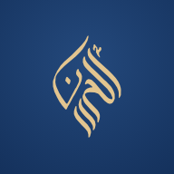

<!doctype html>
<html lang="ru">
<head>
<meta charset="utf-8">
<meta name="viewport" content="width=device-width, initial-scale=1, viewport-fit=cover">
<meta name="theme-color" content="#14315C">
<link rel="manifest" href="manifest.webmanifest">
<link rel="apple-touch-icon" href="icon-180.png">
<meta name="apple-mobile-web-app-capable" content="yes">
<meta name="mobile-web-app-capable" content="yes">
<meta name="apple-mobile-web-app-title" content="AL-HUSNA">
<meta name="apple-mobile-web-app-status-bar-style" content="default">
<script>window.ALH_CFG={url:"https://navxqjofqvstxfrsaeju.supabase.co",key:"sb_publishable_y4FvUXr3nhMR8dI0CKTrDg_J-SonwKG"};</script>
<title>AL-HUSNA</title>
<meta name="description" content="Учебная платформа школы AL-HUSNA">
<link rel="preconnect" href="https://fonts.googleapis.com">
<link rel="preconnect" href="https://fonts.gstatic.com" crossorigin>
<link rel="stylesheet" href="https://fonts.googleapis.com/css2?family=Comfortaa:wght@500;600;700&family=Nunito:wght@600;700;800;900&family=Neucha&family=Amatic+SC:wght@700&family=Golos+Text:wght@400;500;600;700&family=Amiri:wght@400;700&family=Cormorant+Garamond:ital,wght@0,500;0,600;0,700;1,600&family=Manrope:wght@400;500;600;700&display=swap">
<link rel="preconnect" href="https://fonts.googleapis.com"><link href="https://fonts.googleapis.com/css2?family=Caveat:wght@700&display=swap" rel="stylesheet">
<style>
/* Layout concept: "rooms behind arches" — every screen is its own pastel room (sky, sand, garden, rose, night),
   entered through arch shapes; navy carries the school's voice, pastels carry the play. */
:root{
  color-scheme: light;
  --navy:#14315C; --navy-2:#24497C; --navy-soft:#4A6283;
  --milk:#FFF9F0; --paper:#FFFDF8; --white:#FFFFFF;
  --sand:#F1E3C8; --sand-deep:#D7BB8D;
  --sky:#CDE6F1; --sky-deep:#7DB5CF;
  --sage:#CFE2D0; --sage-deep:#79A585;
  --rose:#F8DAD5; --rose-deep:#DE958C;
  --sun:#F6C94B; --sun-soft:#FBE7A6;
  --gold:#B99A70;
  --line:#E8DDCB; --line-2:#D9CDB8;
  --good:#3F8F5E; --good-bg:#DDEFE2;
  --bad:#C95C51; --bad-bg:#F8DFDB;
  --warn:#B97A12; --warn-bg:#FBEBC6;
  --shadow: 0 1px 2px rgba(20,49,92,.06), 0 8px 24px -10px rgba(20,49,92,.18);
  --f-display:"Comfortaa", "Nunito", "Arial Rounded MT Bold", system-ui, sans-serif;
  --f-body:"Golos Text", "Segoe UI", system-ui, -apple-system, sans-serif;
  --f-ar:"Amiri", "Noto Naskh Arabic", "Traditional Arabic", serif;
  --r-sm:10px; --r:16px; --r-lg:26px;
}
*{box-sizing:border-box}
html,body{height:100%}
body{margin:0;background:var(--milk);color:var(--navy);font-family:var(--f-body);font-size:15px;line-height:1.5;-webkit-font-smoothing:antialiased;overflow-x:hidden}
body::before{content:"";position:fixed;inset:0;pointer-events:none;z-index:100;opacity:.35;mix-blend-mode:multiply;
  background-image:url("data:image/svg+xml;utf8,<svg xmlns='http://www.w3.org/2000/svg' width='160' height='160'><filter id='n'><feTurbulence type='fractalNoise' baseFrequency='.9' numOctaves='2' stitchTiles='stitch'/><feColorMatrix values='0 0 0 0 .55  0 0 0 0 .48  0 0 0 0 .38  0 0 0 .09 0'/></filter><rect width='100%' height='100%' filter='url(%23n)'/></svg>")}
button{font:inherit;color:inherit;cursor:pointer;border:0;background:none}
input,select,textarea{font:inherit;color:var(--navy)}
:focus-visible{outline:3px solid var(--sun);outline-offset:2px;border-radius:8px}
h1,h2,h3{font-family:var(--f-display);font-weight:700;text-wrap:balance;margin:0;letter-spacing:-.01em}
.ar{font-family:var(--f-ar);direction:rtl;unicode-bidi:isolate}
.logo{display:inline-block;color:var(--gold);line-height:0}
.logo svg{height:100%;width:auto;display:block}
.tnum{font-variant-numeric:tabular-nums}
.login,.kid,.level,.panel{min-height:100vh;min-height:100dvh}
.sr{position:absolute;width:1px;height:1px;overflow:hidden;clip:rect(0 0 0 0)}

/* ---------- buttons ---------- */
.btn{display:inline-flex;align-items:center;justify-content:center;gap:8px;height:44px;padding:0 20px;border-radius:999px;font-weight:600;font-size:15px;transition:transform .15s, box-shadow .15s, background .15s;white-space:nowrap}
.btn svg{width:18px;height:18px}
.btn-primary{background:var(--navy);color:var(--white);box-shadow:0 6px 16px -6px rgba(20,49,92,.55)}
.btn-primary:hover{background:var(--navy-2)}
.btn-primary:active{transform:translateY(1px)}
.btn-soft{background:var(--white);color:var(--navy);box-shadow:inset 0 0 0 1.5px var(--line-2)}
.btn-soft:hover{box-shadow:inset 0 0 0 1.5px var(--navy-soft)}
.btn-sun{background:var(--sun);color:var(--navy);box-shadow:0 6px 0 -1px #D9A926}
.btn-sun:active{transform:translateY(3px);box-shadow:0 3px 0 -1px #D9A926}
.btn-danger{background:var(--bad);color:var(--white)}
.btn-sm{height:34px;padding:0 14px;font-size:13.5px}
.btn-big{height:56px;padding:0 30px;font-size:17px;font-family:var(--f-display);font-weight:700}
.icon-btn{width:36px;height:36px;border-radius:10px;display:inline-grid;place-items:center;color:var(--navy-soft)}
.icon-btn:hover{background:var(--sand);color:var(--navy)}
.icon-btn svg{width:18px;height:18px}

/* ---------- fields ---------- */
.field{display:grid;gap:6px}
.field label{font-size:13px;font-weight:600;color:var(--navy-soft)}
.input{height:48px;border-radius:14px;border:1.5px solid var(--line-2);background:var(--white);padding:0 16px;width:100%;transition:border-color .15s, box-shadow .15s}
.input:focus{outline:none;border-color:var(--navy);box-shadow:0 0 0 4px rgba(125,181,207,.35)}
textarea.input{height:auto;min-height:120px;padding:12px 16px;resize:vertical}
select.input{appearance:none;background-image:url("data:image/svg+xml;utf8,<svg xmlns='http://www.w3.org/2000/svg' width='12' height='8'><path d='M1 1l5 5 5-5' stroke='%2314315C' stroke-width='2' fill='none'/></svg>");background-repeat:no-repeat;background-position:right 16px center;padding-right:40px}
.err{color:var(--bad);font-size:13.5px;font-weight:500}
.hint{color:var(--navy-soft);font-size:13px}

/* ---------- chips / pills ---------- */
.pill{display:inline-flex;align-items:center;gap:6px;height:26px;padding:0 10px;border-radius:999px;font-size:12.5px;font-weight:600;white-space:nowrap}
.pill::before{content:"";width:7px;height:7px;border-radius:50%;background:currentColor}
.pill.good{background:var(--good-bg);color:var(--good)}
.pill.bad{background:var(--bad-bg);color:var(--bad)}
.pill.warn{background:var(--warn-bg);color:var(--warn)}
.pill.mute{background:#EEE8DD;color:#6E7A8C}
.pill.info{background:var(--sky);color:#245A78}
.tag{display:inline-flex;align-items:center;height:26px;padding:0 10px;border-radius:8px;background:var(--sand);font-size:12.5px;font-weight:600;color:var(--navy)}

/* ================= LOGIN ================= */
.login{min-height:100%;display:grid;grid-template-columns:1.05fr 1fr;background:var(--milk)}
.login-art{position:relative;overflow:hidden;background:var(--navy);min-height:100%;display:flex;align-items:flex-end;padding:40px}
.arches{position:absolute;inset:auto 0 0 0;height:54%;display:flex;align-items:flex-end;justify-content:center;gap:14px;padding:0 28px}
.arch{flex:1;max-width:150px;border-radius:999px 999px 0 0;position:relative;transform-origin:bottom;animation:rise .9s cubic-bezier(.2,.8,.2,1) both}
.arch::after{content:"";position:absolute;inset:14px 14px 0;border-radius:999px 999px 0 0;box-shadow:inset 0 0 0 2px rgba(255,255,255,.55)}
.arch:nth-child(1){height:62%;background:var(--sky);animation-delay:.05s}
.arch:nth-child(2){height:82%;background:var(--sun);animation-delay:.15s}
.arch:nth-child(3){height:72%;background:var(--rose);animation-delay:.25s}
.arch:nth-child(4){height:90%;background:var(--sage);animation-delay:.35s}
@keyframes rise{from{transform:scaleY(0)}to{transform:scaleY(1)}}
.login-art .sun{position:absolute;top:44px;right:48px;width:96px;height:96px}
.login-brand{position:relative;z-index:2;color:var(--white);max-width:420px;align-self:flex-start;padding-top:8px}
.login-brand .logo{height:74px;color:var(--sun-soft)}
.login-brand h1{font-size:clamp(28px,3.4vw,42px);margin-top:22px;line-height:1.15}
.login-brand p{color:#C9D6E8;margin:12px 0 0;max-width:34ch}
.login-form{display:flex;align-items:center;justify-content:center;padding:40px 24px}
.login-card{width:100%;max-width:400px;display:grid;gap:22px}
.login-card h2{font-size:28px}
.login-card .lead{color:var(--navy-soft);margin:6px 0 0}
.code-boxes{display:flex;gap:8px}
.code-boxes input{width:100%;min-width:0;height:58px;text-align:center;font-size:24px;font-weight:700;border-radius:14px;border:1.5px solid var(--line-2);background:var(--white);font-family:var(--f-display)}
.code-boxes input:focus{outline:none;border-color:var(--navy);box-shadow:0 0 0 4px rgba(125,181,207,.35)}
.demo-box{border-top:1.5px dashed var(--line-2);padding-top:18px;display:grid;gap:10px}
.demo-box .hint b{color:var(--navy)}
.demo-row{display:flex;flex-wrap:wrap;gap:8px}
.alert{border-radius:14px;padding:12px 14px;font-size:14px;display:flex;gap:10px;align-items:flex-start}
.alert svg{flex:none;width:20px;height:20px;margin-top:1px}
.alert.bad{background:var(--bad-bg);color:#8F3A31}
.alert.info{background:var(--sky);color:#1F4F69}
.back-link{display:inline-flex;align-items:center;gap:6px;color:var(--navy-soft);font-weight:600;font-size:14px}
.back-link svg{width:16px;height:16px}

/* ================= VIEW-AS BAR ================= */
.viewas{position:sticky;top:env(safe-area-inset-top,0px);z-index:60;background:var(--sun);color:var(--navy);display:flex;align-items:center;justify-content:center;gap:12px;flex-wrap:wrap;padding:8px 16px;font-weight:600;font-size:14px;box-shadow:0 4px 14px -6px rgba(0,0,0,.25)}
.viewas svg{width:18px;height:18px}
.viewas .btn{height:32px;background:var(--navy);color:var(--white);font-size:13px}

/* ================= STUDENT ================= */
.kid{min-height:100%;display:flex;flex-direction:column}
.kid-top{display:flex;align-items:center;gap:14px;padding:14px clamp(16px,4vw,40px);position:relative;z-index:5}
.kid-top .logo{height:44px}
.kid-hello{display:grid;line-height:1.2}
.kid-hello b{font-family:var(--f-display);font-size:18px}
.kid-hello span{font-size:13px;color:var(--navy-soft)}
.kid-top .spacer{flex:1}
.star-count{display:inline-flex;align-items:center;gap:8px;background:var(--white);border-radius:999px;height:44px;padding:0 16px 0 10px;font-family:var(--f-display);font-weight:700;font-size:18px;box-shadow:var(--shadow)}
.star-count svg{width:26px;height:26px}
.star-count.bump{animation:bump .6s}
@keyframes bump{30%{transform:scale(1.18)}}

.q-tabs{display:flex;gap:8px;padding:4px clamp(16px,4vw,40px) 10px;overflow-x:auto;scrollbar-width:none;position:relative;z-index:5}
.q-tabs::-webkit-scrollbar{display:none}
.q-tab{color:var(--navy);flex:none;display:inline-flex;align-items:center;gap:8px;height:42px;padding:0 16px;border-radius:999px;background:rgba(255,255,255,.7);font-weight:600;font-size:14px;backdrop-filter:blur(6px);box-shadow:inset 0 0 0 1.5px rgba(20,49,92,.08)}
.q-tab svg{width:15px;height:15px;opacity:.6}
.q-tab[aria-selected="true"]{background:var(--navy);color:var(--white)}
.q-tab .dot{width:10px;height:10px;border-radius:50%}

.world{position:relative;flex:1;overflow:hidden;min-height:640px}
.world-bg{position:absolute;inset:0;z-index:0}
.world-inner{position:relative;z-index:2;max-width:560px;margin:0 auto;padding:6px 16px 40px}
.world-title{text-align:center;padding:10px 0 4px}
.world-title small{display:block;font-size:12.5px;font-weight:700;letter-spacing:.14em;text-transform:uppercase;color:var(--navy-soft)}
.world-title h2{font-size:clamp(28px,6vw,38px);margin-top:4px}
.world-title .ar{font-size:26px;color:var(--gold);display:block;margin-top:2px}

.path-wrap{position:relative;height:720px;margin-top:40px}
.path-wrap svg.road{position:absolute;inset:0;width:100%;height:100%;overflow:visible}
.node{position:absolute;transform:translate(-50%,-50%);display:grid;justify-items:center;gap:6px;width:150px;text-align:center}
.node-btn{width:84px;height:84px;border-radius:50%;display:grid;place-items:center;position:relative;font-family:var(--f-display);font-weight:700;font-size:28px;transition:transform .2s}
.node-btn svg{width:34px;height:34px}
.node.done .node-btn{background:var(--white);color:var(--navy);box-shadow:0 6px 0 var(--sand-deep), 0 14px 20px -10px rgba(20,49,92,.35)}
.node.current .node-btn{background:var(--sun);color:var(--navy);box-shadow:0 6px 0 #D7A322, 0 16px 26px -10px rgba(20,49,92,.4);animation:bob 2.4s ease-in-out infinite}
.node.current .node-btn::before{content:"";position:absolute;inset:-10px;border-radius:50%;border:3px solid var(--sun);animation:ring 2s ease-out infinite}
.node.locked .node-btn{background:rgba(255,255,255,.55);color:#8D98A8;box-shadow:inset 0 0 0 2px rgba(20,49,92,.1);cursor:not-allowed}
.node-btn:not([disabled]):hover{transform:translateY(-3px) scale(1.04)}
.node-label{color:var(--navy);font-weight:700;font-size:13.5px;line-height:1.25;background:rgba(255,253,248,.88);padding:4px 10px;border-radius:10px;backdrop-filter:blur(4px)}
.node.locked .node-label{color:#8D98A8}
.node-stars{display:flex;gap:2px;height:20px}
.node-stars svg{width:20px;height:20px}
.node-type{font-size:11px;font-weight:700;letter-spacing:.08em;text-transform:uppercase;color:var(--navy-soft)}
@keyframes bob{50%{transform:translateY(-7px)}}
@keyframes ring{0%{transform:scale(.9);opacity:.9}100%{transform:scale(1.35);opacity:0}}

.locked-world{display:grid;justify-items:center;text-align:center;gap:14px;padding:80px 16px 120px}
.lock-arch{width:150px;height:190px;border-radius:999px 999px 18px 18px;background:rgba(255,255,255,.65);display:grid;place-items:center;box-shadow:inset 0 0 0 3px rgba(255,255,255,.9), var(--shadow);animation:bob 4s ease-in-out infinite}
.lock-arch svg{width:54px;height:54px;color:var(--navy-soft)}
.locked-world p{max-width:30ch;margin:0;color:var(--navy-soft)}

/* world backgrounds */
.bg-q1{background:linear-gradient(180deg,#BFE1F0 0%,#DDEFF5 38%,#FFF6E4 100%)}
.bg-q2{background:linear-gradient(180deg,#FCEFD6 0%,#F5E2BC 55%,#E8C995 100%)}
.bg-q3{background:linear-gradient(180deg,#E3EFE2 0%,#D3E6D4 60%,#BCD7C1 100%)}
.bg-q4{background:linear-gradient(180deg,#FDEBE6 0%,#F9DAD4 50%,#F3C9C2 100%)}
.bg-q5{background:linear-gradient(180deg,#132B52 0%,#1F3E6E 55%,#2C548A 100%)}
.bg-q5 ~ .world-inner, .on-night{color:var(--white)}
.on-night .world-title small,.on-night .locked-world p{color:#C9D6E8}
.on-night .kid-hello span{color:#C9D6E8}
.on-night .lock-arch{background:rgba(255,255,255,.12);box-shadow:inset 0 0 0 3px rgba(255,255,255,.3)}
.on-night .lock-arch svg{color:#E9EEF6}

.deco{position:absolute;pointer-events:none}
.spin{animation:spin 40s linear infinite;transform-origin:center;transform-box:fill-box}
@keyframes spin{to{transform:rotate(360deg)}}
.drift{animation:drift 26s ease-in-out infinite alternate}
.drift.slow{animation-duration:38s}
@keyframes drift{from{transform:translateX(-30px)}to{transform:translateX(40px)}}
.float{animation:floaty 6s ease-in-out infinite}
@keyframes floaty{50%{transform:translateY(-12px)}}
.twinkle{animation:tw 3s ease-in-out infinite}
@keyframes tw{50%{opacity:.25}}
.wave-move{animation:wave 9s linear infinite}
@keyframes wave{to{transform:translateX(-200px)}}
.sway{animation:sway 5s ease-in-out infinite;transform-origin:bottom center;transform-box:fill-box}
@keyframes sway{50%{transform:rotate(3deg)}}

/* ================= LEVEL ================= */
.level{min-height:100%;position:relative;overflow:hidden;display:flex;flex-direction:column}
.level-bg{position:absolute;inset:0;z-index:0}
.level-top{position:relative;z-index:3;display:flex;align-items:center;gap:12px;padding:14px clamp(16px,4vw,40px)}
.level-top .title{display:grid;line-height:1.2;min-width:0}
.level-top .title small{font-size:12px;font-weight:700;letter-spacing:.12em;text-transform:uppercase;color:var(--navy-soft)}
.level-top .title b{font-family:var(--f-display);font-size:18px}
.round-btn{width:46px;height:46px;border-radius:50%;background:var(--white);display:grid;place-items:center;box-shadow:var(--shadow);flex:none}
.round-btn svg{width:20px;height:20px}
.progress-bar{flex:1;height:14px;border-radius:999px;background:rgba(255,255,255,.7);overflow:hidden;box-shadow:inset 0 0 0 1.5px rgba(20,49,92,.08);max-width:320px;margin-left:auto}
.progress-bar i{display:block;height:100%;background:linear-gradient(90deg,var(--sun),#F1B62E);border-radius:inherit;transition:width .5s cubic-bezier(.2,.8,.2,1)}
.level-body{position:relative;z-index:2;flex:1;width:100%;max-width:820px;margin:0 auto;padding:8px 16px 48px;display:flex;flex-direction:column}

.lesson{background:var(--paper);border-radius:var(--r-lg);padding:clamp(22px,4vw,36px);box-shadow:var(--shadow);display:grid;gap:18px;animation:popin .5s cubic-bezier(.2,.8,.2,1) both;max-width:640px;margin:10px auto 0;width:100%}
.lesson .kicker{font-size:12.5px;font-weight:700;letter-spacing:.14em;text-transform:uppercase;color:var(--gold)}
.lesson h2{font-size:clamp(24px,5vw,32px);margin-top:4px}
.lesson ul{margin:0;padding:0;list-style:none;display:grid;gap:12px}
.lesson li{display:grid;grid-template-columns:34px 1fr;gap:12px;align-items:start;font-size:16px}
.lesson li .ic{background:var(--sun-soft);width:34px;height:34px;border-radius:12px;display:grid;place-items:center;font-size:18px}
.ayah{border-radius:var(--r);padding:20px;text-align:center;background:var(--sand);position:relative}
.ayah .ar{font-size:clamp(24px,5vw,30px);line-height:1.9;display:block;color:var(--navy)}
.ayah p{margin:6px 0 0;font-size:14.5px;color:var(--navy-soft);font-style:italic}
.ayah small{display:block;margin-top:6px;font-size:12px;font-weight:700;letter-spacing:.08em;text-transform:uppercase;color:var(--gold)}
@keyframes popin{from{opacity:0;transform:translateY(14px) scale(.98)}to{opacity:1;transform:none}}

.game-head{text-align:center;margin:6px 0 18px}
.game-head h2{font-size:clamp(22px,4.5vw,30px)}
.game-head p{margin:6px auto 0;color:var(--navy-soft);max-width:44ch}
.feedback{min-height:28px;text-align:center;font-weight:700;font-family:var(--f-display);margin-top:14px}
.feedback.good{color:var(--good)} .feedback.bad{color:var(--bad)}

.shake{animation:shake .45s}
@keyframes shake{20%,60%{transform:translateX(-7px)}40%,80%{transform:translateX(7px)}}
.pop{animation:popok .45s}
@keyframes popok{40%{transform:scale(1.08)}}

/* pairs */
.pairs{display:grid;grid-template-columns:1fr 1fr;gap:clamp(10px,3vw,28px);max-width:680px;margin:0 auto;width:100%}
.pairs .col{display:grid;gap:12px;align-content:start}
.p-card{min-height:72px;padding:12px 16px;border-radius:18px;background:var(--white);font-weight:600;font-size:15.5px;text-align:left;display:flex;align-items:center;gap:12px;box-shadow:0 4px 0 var(--line-2);transition:transform .15s, background .2s, opacity .4s;line-height:1.3}
.p-card .badge{flex:none;width:30px;height:30px;border-radius:10px;display:grid;place-items:center;font-size:15px;background:var(--sky)}
.col.right .p-card{justify-content:flex-start;background:var(--paper)}
.col.right .p-card .badge{background:var(--sun-soft)}
.p-card:hover{transform:translateY(-2px)}
.p-card.sel{background:var(--navy);color:var(--white);box-shadow:0 4px 0 #0B1F3D}
.p-card.sel .badge{background:rgba(255,255,255,.18)}
.p-card.ok{background:var(--good-bg);color:var(--good);box-shadow:0 4px 0 #A9D3B6;cursor:default;transform:none}
.p-card.ok .badge{background:#BFE2C9}

/* sort */
.sort-stage{display:grid;justify-items:center;gap:22px}
.sort-item{width:200px;height:190px;border-radius:30px;background:var(--white);display:grid;place-items:center;align-content:center;gap:8px;box-shadow:0 10px 0 var(--line-2), 0 24px 30px -18px rgba(20,49,92,.35);animation:popin .35s both}
.sort-item .emo{font-size:84px;line-height:1}
/* силуэт: эмодзи заливается одним цветом, глаз и лица не видно */
.sil{color:transparent!important;text-shadow:0 0 0 var(--navy);-webkit-text-fill-color:transparent}
.sort-item b{font-family:var(--f-display);font-size:20px}
.sort-item.fly-0{animation:fly0 .45s forwards}.sort-item.fly-1{animation:fly1 .45s forwards}.sort-item.fly-2{animation:fly2 .45s forwards}
@keyframes fly0{to{transform:translate(-120px,180px) scale(.2);opacity:0}}
@keyframes fly1{to{transform:translate(0,190px) scale(.2);opacity:0}}
@keyframes fly2{to{transform:translate(120px,180px) scale(.2);opacity:0}}
.baskets{display:grid;grid-template-columns:repeat(3,1fr);gap:12px;width:100%;max-width:620px}
.basket{border-radius:28px 28px 20px 20px;padding:16px 10px 14px;display:grid;justify-items:center;gap:6px;text-align:center;box-shadow:0 6px 0 rgba(20,49,92,.12);transition:transform .15s}
.basket:hover{transform:translateY(-3px)}
.basket .b-ic{font-size:30px;line-height:1}
.basket b{font-family:var(--f-display);font-size:15px;line-height:1.2}
.basket .cnt{display:flex;flex-wrap:wrap;gap:2px;justify-content:center;min-height:22px;font-size:17px;line-height:1}
.basket{background:#FBF7EF;color:var(--navy)}
.sort-item b{padding:0 12px;text-align:center}
.basket.home{background:var(--sand)}.basket.wild{background:var(--sage)}.basket.sea{background:var(--sky)}

/* true/false */
.tf-stage{display:grid;justify-items:center;gap:22px}
.tf-card{width:100%;max-width:460px;min-height:250px;border-radius:30px;background:var(--white);padding:28px;display:grid;align-content:center;gap:14px;text-align:center;box-shadow:0 12px 0 #EBC3BC, 0 26px 30px -18px rgba(20,49,92,.35);animation:popin .4s both;position:relative}
.tf-card .num{font-size:12.5px;font-weight:700;letter-spacing:.12em;text-transform:uppercase;color:var(--rose-deep)}
.tf-card .stmt{font-family:var(--f-display);font-weight:700;font-size:clamp(19px,4vw,23px);line-height:1.35}
.tf-card .explain{font-size:15px;border-radius:14px;padding:12px 14px;text-align:left}
.tf-card .explain.good{background:var(--good-bg);color:#24603C}
.tf-card .explain.bad{background:var(--bad-bg);color:#8F3A31}
.tf-card.out-l{animation:outl .4s forwards}.tf-card.out-r{animation:outr .4s forwards}
@keyframes outl{to{transform:translateX(-120%) rotate(-12deg);opacity:0}}
@keyframes outr{to{transform:translateX(120%) rotate(12deg);opacity:0}}
.tf-btns{display:flex;gap:14px;flex-wrap:wrap;justify-content:center}
.tf-btn{height:64px;min-width:150px;padding:0 24px;border-radius:22px;font-family:var(--f-display);font-weight:700;font-size:18px;display:inline-flex;align-items:center;justify-content:center;gap:10px;transition:transform .15s}
.tf-btn svg{width:24px;height:24px}
.tf-btn.yes{background:var(--sage);color:#21553A;box-shadow:0 6px 0 var(--sage-deep)}
.tf-btn.no{background:var(--rose);color:#8F3A31;box-shadow:0 6px 0 var(--rose-deep)}
.tf-btn:active{transform:translateY(4px)}

/* order / tree */
.order{display:grid;grid-template-columns:minmax(0,1fr) minmax(0,1.1fr);gap:24px;align-items:center}

.rug-ic{width:1em;height:1.3em;vertical-align:middle;display:inline-block}
.sort-item .emo .rug-ic{width:.8em;height:1.05em}
.basket .cnt .rug-ic{width:.7em;height:.95em}
.sort-item.txt-only b{font-size:24px;line-height:1.25;padding:0 18px}
.basket .cnt .dot{width:12px;height:12px;border-radius:50%;background:var(--navy);opacity:.55;margin:3px}
.ayah-play{display:inline-flex;align-items:center;gap:6px;margin:12px auto 0;height:38px;padding:0 16px 0 12px;border-radius:999px;font-weight:700;font-size:14px;background:rgba(255,255,255,.14);color:inherit;box-shadow:inset 0 0 0 1.5px rgba(232,199,126,.7);cursor:pointer}
.ayah .ayah-play{display:flex;width:max-content}
.ayah-play svg{width:18px;height:18px}
.ayah-play.on{background:#E8C77E;color:#12305A}
.ayah-play.on svg path{d:path("M7 5h4v14H7zM13 5h4v14h-4z")}
.ayah-play:focus-visible{outline:3px solid #E8C77E;outline-offset:2px}
.ayah-play.sm{height:32px;width:32px;padding:0;justify-content:center;margin:6px auto 0}
.mzl .ayah .ayah-play{color:#F6E7C1}
.mzl .ayah .ayah-play.on{color:#12305A}
.build .ayah-play{color:var(--navy);box-shadow:inset 0 0 0 1.5px #D9B46A;background:#FFF8E8}

.k-trace{gap:10px}
.k-trace svg{width:100%;max-width:440px;height:auto;touch-action:none;cursor:crosshair;user-select:none}
.k-trace .tr-base{fill:none;stroke:#F1E6CF;stroke-width:26;stroke-linecap:round;stroke-linejoin:round}
.k-trace .tr-guide{fill:none;stroke:#C9A36E;stroke-width:3;stroke-dasharray:3 9;stroke-linecap:round}
.k-trace .tp{fill:#E3D2AE;transition:fill .2s,r .2s}
.k-trace .tp.on{fill:#2E8B8F;r:5.5}
.k-trace .tr-ink{fill:none;stroke:#1B8A92;stroke-width:9;stroke-linecap:round;stroke-linejoin:round;opacity:.85}
.k-trace .tr-done{fill:none;stroke:#E3BE6C;stroke-width:10;stroke-linecap:round;stroke-linejoin:round;opacity:0;transition:opacity .6s}
.k-trace svg.finished .tr-done{opacity:1}
.k-trace svg.finished .tr-ink{opacity:.25}
.tr-bar{width:min(320px,80%);height:10px;border-radius:99px;background:#F1E6CF;overflow:hidden}
.tr-bar i{display:block;height:100%;width:0;background:#2E8B8F;border-radius:99px;transition:width .2s}
.k-pic .rug-ic{height:1.15em;width:auto}

.k-subj{display:flex;gap:10px;padding:4px clamp(16px,4vw,40px) 8px;overflow-x:auto;scrollbar-width:none;position:relative;z-index:5}
.k-subj button{flex:none;display:flex;align-items:center;gap:8px;height:52px;padding:0 16px 0 8px;border-radius:18px;background:rgba(255,253,247,.9);box-shadow:inset 0 0 0 1.5px var(--line-2);font-weight:700;font-size:14px;color:var(--navy)}
.k-subj button .k-pic{font-size:32px}
.k-subj button[aria-pressed="true"]{background:var(--navy);color:#fff;box-shadow:none}
.mz-subj{display:flex;gap:8px;padding:2px clamp(16px,4vw,40px) 6px;overflow-x:auto;scrollbar-width:none;position:relative;z-index:5}
.mz-subj button{flex:none;height:40px;padding:0 16px;border-radius:999px;font-family:var(--f-m);font-weight:700;font-size:14px;background:rgba(255,253,247,.85);color:#12305A;box-shadow:inset 0 0 0 1.5px rgba(217,180,106,.7)}
.mz-subj button[aria-pressed="true"]{background:#12305A;color:#F6E7C1}
.k-prog,.mz-prog{max-width:560px;margin:16px auto 40px;background:var(--paper);border-radius:28px;padding:24px 26px;box-shadow:0 10px 0 var(--line-2),0 24px 34px -22px rgba(20,49,92,.35);color:var(--navy);display:grid;gap:10px}
.k-prog h2,.mz-prog h2{font-size:22px;line-height:1.2}
.k-prog p,.mz-prog p{color:var(--navy-soft);font-size:15px}
.k-prog ol,.mz-prog ol{display:grid;gap:8px;padding-left:22px;font-weight:600;font-size:16px}
.k-prog ol .ar,.mz-prog ol .ar{font-size:1.25em}
.k-prog small,.mz-prog small{color:var(--navy-soft);font-size:13px}

.acc-mode{margin-bottom:14px}
.acc-mode .seg-opts{margin:6px 0 8px}
.q-row.acc-row{grid-template-columns:56px minmax(0,1fr) auto auto auto}
.toolbar .seg{max-width:100%;overflow-x:auto;scrollbar-width:none}
.toolbar .seg button{white-space:nowrap;flex:none}
.acc-step{display:inline-flex;align-items:center;gap:8px;background:var(--sand);border-radius:12px;padding:4px 6px;font-size:13px;color:var(--navy-soft)}
.acc-step b{font-size:16px;color:var(--navy);min-width:16px;text-align:center}
.acc-step .icon-btn{width:30px;height:30px;font-size:18px;font-weight:800;background:var(--white)}
@media (max-width:760px){ .q-row.acc-row{grid-template-columns:48px minmax(0,1fr);row-gap:10px} .acc-row .acc-step,.acc-row .date,.acc-row .switch{grid-column:1/-1} }

/* ===== Таджвид садика: цветные буквы, домики, история, поезд, тянем звук ===== */
.k-let{--c1:#FFF1C9;--c2:#F2C24A;display:inline-grid;place-items:center;width:1.25em;height:1.25em;border-radius:.3em;font-family:Amiri,'Noto Naskh Arabic',serif;font-size:1em;line-height:1;padding-bottom:.12em;color:#14315C;
  background:radial-gradient(circle at 32% 24%,#FFFFFF 0%,var(--c1) 48%,var(--c2) 100%);
  box-shadow:inset 0 -.09em 0 rgba(0,0,0,.12),inset 0 .05em 0 rgba(255,255,255,.8),0 .12em .18em -.08em rgba(20,49,92,.4)}
.k-pic .halq{height:2.8em;width:auto}
.k-pic.big .halq{height:3.6em}
.halq .hfl.on rect{animation:floorglow 1.4s ease-in-out infinite}
@keyframes floorglow{50%{fill:#FFE38A}}
.halq .hres.pop{animation:respop .6s cubic-bezier(.2,1.6,.4,1) both;transform-box:fill-box;transform-origin:center}
@keyframes respop{from{transform:scale(0)}}
.k-bin .halq{height:2.4em}

/* история */
.k-story{padding:14px;gap:12px;overflow:hidden;position:relative}
.k-story.bg-sky{background:linear-gradient(180deg,#D6EEF8 0%,#EFF8FB 62%,#DCEFC9 62%,#C7E3AE 100%)}
.k-story.bg-meadow{background:linear-gradient(180deg,#E3F3DC 0%,#F6FBEF 62%,#CFE7B4 62%,#B9DA9A 100%)}
.k-story.bg-water{background:linear-gradient(180deg,#D3EEF2 0%,#EEF8F8 62%,#BFE3E3 62%,#A6D6D6 100%)}
.k-story.bg-gift{background:linear-gradient(180deg,#FCE8DE 0%,#FFF6EF 62%,#F6D9B8 62%,#EFC99F 100%)}
.k-story.bg-final{background:linear-gradient(180deg,#E8E1FA 0%,#F7F3FF 62%,#D9EFC9 62%,#C3E2AC 100%)}
.st-bubble{position:relative;width:100%;background:#FFFDF7;border-radius:22px;padding:14px 18px;box-shadow:0 8px 0 rgba(20,49,92,.08),inset 0 0 0 2px rgba(20,49,92,.06);min-height:76px;display:grid;align-items:center}
.st-bubble::after{content:"";position:absolute;bottom:-14px;right:22%;border:14px solid transparent;border-top-color:#FFFDF7;border-bottom:0}
.st-bubble.narr{background:#14315C;color:#fff}
.st-bubble.narr::after{border-top-color:#14315C;right:auto;left:50%;margin-left:-14px}
.st-bubble p{margin:0;font-size:clamp(16px,2.4vw,19px);font-weight:700;line-height:1.4;color:inherit;text-align:center}
.st-bubble:not(.narr) p{color:var(--navy)}
.st-bubble.pop{animation:bubpop .45s cubic-bezier(.2,1.5,.4,1) both}
@keyframes bubpop{from{transform:scale(.85);opacity:0}}
.st-scene{display:grid;grid-template-columns:minmax(0,1.1fr) minmax(0,1fr);align-items:end;gap:10px;min-height:250px}
.st-scene.solo{grid-template-columns:minmax(0,1fr);min-height:220px}
.st-house{display:grid;place-items:end center}
.st-house .halq{width:100%;max-width:250px;height:auto}
.st-stage{position:relative;display:grid;place-items:end center;min-height:200px}
.st-char{position:relative;display:grid;justify-items:center;animation:charin .7s cubic-bezier(.2,1.4,.4,1) both;cursor:pointer;padding-bottom:14px}
.st-char .st-body{display:grid;place-items:center;width:118px;height:118px;border-radius:34px;font-family:Amiri,'Noto Naskh Arabic',serif;font-size:76px;line-height:1;padding-bottom:12px;color:#14315C;
  background:radial-gradient(circle at 32% 24%,#FFFFFF 0%,var(--c1,#FFF1C9) 46%,var(--c2,#F2C24A) 100%);
  box-shadow:inset 0 -8px 0 rgba(0,0,0,.12),inset 0 4px 0 rgba(255,255,255,.8),0 14px 18px -10px rgba(20,49,92,.45)}
.st-char .st-foot{position:absolute;bottom:0;left:30px;width:26px;height:16px;border-radius:13px 13px 8px 8px;background:var(--c2,#F2C24A);box-shadow:inset 0 -4px 0 rgba(0,0,0,.15)}
.st-char .st-foot.r{left:auto;right:30px}
.st-char::after{content:"";position:absolute;bottom:-6px;left:14%;right:14%;height:10px;border-radius:50%;background:rgba(20,49,92,.14);z-index:-1}
.st-char.talk .st-body{animation:chartalk .5s ease-in-out infinite}
.st-char.gone{animation:charout .4s forwards}
@keyframes charin{from{transform:translateX(120px) scale(.6);opacity:0}60%{transform:translateX(-6px) scale(1.04)}}
@keyframes charout{to{transform:translateX(-60px) scale(.6);opacity:0}}
@keyframes chartalk{0%,100%{transform:none}30%{transform:translateY(-10px) scaleY(1.04)}60%{transform:translateY(0) scaleY(.94) scaleX(1.04)}}
.k-story .k-dots{justify-content:center}
@media (max-width:560px){
  .st-scene{min-height:200px;gap:6px}
  .st-char .st-body{width:92px;height:92px;font-size:60px;border-radius:28px}
  .st-char .st-foot{left:22px;width:22px;height:13px}.st-char .st-foot.r{right:22px;left:auto}
  .st-stage{min-height:160px}
}

/* поезд */
.k-train{padding:14px;gap:12px;overflow:hidden}
.k-train.bg-sky{background:linear-gradient(180deg,#DDF0F7,#FFF8EC)}
.tr-track{position:relative;width:100%;overflow:hidden;padding:10px 4px 6px}
.tr-row{display:flex;align-items:flex-end;justify-content:center;gap:8px;animation:trin 1s cubic-bezier(.2,1,.4,1) both}
.tr-row.go{animation:trgo 2s ease-in forwards}
.tr-row.go .tr-puffs circle{animation:puff .6s ease-out infinite}
@keyframes trin{from{transform:translateX(-110%)}}
@keyframes trgo{to{transform:translateX(130%)}}
@keyframes puff{from{transform:translate(0,0) scale(.6);opacity:1}to{transform:translate(-14px,-18px) scale(1.4);opacity:0}}
.tr-loco{width:clamp(84px,16vw,120px);height:auto;flex:none}
.tr-car{position:relative;width:clamp(70px,14vw,104px);aspect-ratio:1/1.05;border-radius:18px 18px 12px 12px;background:var(--cc);display:grid;place-items:center;align-content:center;gap:0;padding:6px 4px 18px;box-shadow:inset 0 -8px 0 rgba(0,0,0,.14),0 8px 14px -8px rgba(20,49,92,.4);flex:none;transition:transform .2s}
.tr-car .tr-let{display:grid;place-items:center;width:80%;aspect-ratio:1/1;border-radius:14px;background:#FFFDF7;font-family:Amiri,'Noto Naskh Arabic',serif;font-size:clamp(34px,6vw,50px);line-height:1;padding-bottom:6px;color:#14315C}
.tr-car small{position:absolute;bottom:20px;font-weight:800;font-size:13px;color:#14315C}
.tr-car.ok .tr-let{background:radial-gradient(circle at 32% 24%,#fff 0%,var(--c1,#FFF1C9) 55%,var(--c2,#F2C24A) 100%)}
.tr-car .tr-w{position:absolute;bottom:-10px;left:12%;width:22px;height:22px;border-radius:50%;background:#2A3E5C;box-shadow:inset 0 0 0 6px #2A3E5C,inset 0 0 0 11px #F6C94B}
.tr-car .tr-w.r{left:auto;right:12%}
.tr-rail{height:8px;margin-top:10px;border-radius:4px;background:repeating-linear-gradient(90deg,#9C6A3A 0 14px,#C9A36E 14px 22px)}
.tr-hint{margin:0;text-align:center;font-weight:700;color:var(--navy-soft);font-size:14px}
.tr-marks{display:grid;grid-template-columns:repeat(auto-fit,minmax(110px,1fr));gap:10px;width:100%}
.tr-mark{display:grid;justify-items:center;gap:2px;padding:10px 6px;border-radius:20px;background:#FFFDF7;box-shadow:0 6px 0 rgba(20,49,92,.12),inset 0 0 0 2px rgba(20,49,92,.08);transition:transform .15s}
.tr-mark .tr-dot{font-family:Amiri,'Noto Naskh Arabic',serif;font-size:46px;line-height:1.1;color:#14315C}
.tr-mark b{font-size:16px;color:var(--navy)}
.tr-word{margin:4px 0 0;text-align:center;font-family:Amiri,'Noto Naskh Arabic',serif;font-size:clamp(40px,8vw,60px);line-height:1.3;color:var(--navy);animation:popin .5s}
.tr-mark small{font-size:14px;color:var(--navy-soft);font-weight:700;text-align:center;line-height:1.2}
.lips-pic{display:inline-grid;place-items:center}.lips-pic .lips{width:76px;height:auto;filter:drop-shadow(0 5px 6px rgba(150,40,70,.22))}
.k-bin .lips-pic .lips,.k-tile .lips-pic .lips{width:84px}
.st-bubble{display:flex;align-items:center;justify-content:center;gap:12px}.st-bubble p{flex:1}
.st-lips{flex:none;display:grid;place-items:center;width:84px;height:64px;background:#FFF1F3;border-radius:18px}.st-lips .lips{width:74px;height:auto}
.st-bubble.narr .st-lips{background:rgba(255,255,255,.14)}
.st-show{flex:none;display:grid;justify-items:center;gap:3px;cursor:zoom-in;animation:stshow .5s cubic-bezier(.2,1.4,.4,1) both}
.st-mir{display:grid;place-items:center;width:104px;height:104px;border-radius:50%;overflow:hidden;
  background:radial-gradient(circle at 35% 28%,#FFFFFF 0%,#F3F7FB 55%,#DCE7F2 100%);
  box-shadow:0 0 0 5px #E8C77E,0 0 0 7px #B98A3E,0 8px 14px -6px rgba(20,49,92,.45),inset 0 -6px 12px rgba(20,49,92,.12)}
.st-mir svg{width:96px;height:96px;margin-top:4px}
.st-show b{font-size:12px;font-weight:800;color:#8A5A12;background:#FFF3D6;border-radius:999px;padding:2px 9px;white-space:nowrap}
.st-show .hj{fill:#A9C3E2}.st-show .sk{fill:#F6D9B8}
.st-show .cav{fill:#F9D0D6}.st-show .nas{fill:#F9D6DB}.st-show .thr{fill:#F4B2BC}.st-show .lv path{stroke:#E58A99;stroke-width:1.2;stroke-dasharray:2 2;opacity:.7}
.st-show .pal{fill:none;stroke:#D98C99;stroke-width:2;stroke-linecap:round}.st-show .tth{fill:#fff;stroke:#E6D7C4;stroke-width:.8}
.st-show .tng{fill:#E9879A}.st-show .lp{fill:#E56F84}
.st-show .gl{animation:stglow 1.3s ease-in-out infinite;transform-box:fill-box;transform-origin:center}
.st-show .dot{fill:#fff;stroke:#F29C2B;stroke-width:2}
.st-show .air{fill:none;stroke:#F2A03A;stroke-width:2.6;stroke-linecap:round;stroke-dasharray:4 7;animation:stair 1.1s linear infinite}
.st-show .wv path{fill:none;stroke:#E59A2F;stroke-width:2.4;stroke-linecap:round;opacity:0;animation:stwave 1.5s ease-out infinite}
.st-show .wv path:nth-child(2){animation-delay:.25s}.st-show .wv path:nth-child(3){animation-delay:.5s}
.st-show.z-lips .lp.lo{animation:stlips 1.5s ease-in-out infinite;transform-box:fill-box;transform-origin:center}
.st-show.z-lipteeth .lp.lo{animation:stlipt 1.5s ease-in-out infinite;transform-box:fill-box;transform-origin:center}
.st-show.z-tip .tng,.st-show.z-side .tng,.st-show.z-mid .tng,.st-show.z-root .tng{animation:sttng 1.5s ease-in-out infinite;transform-box:fill-box;transform-origin:20% 80%}
@keyframes stshow{from{opacity:0;transform:scale(.6) rotate(-6deg)}to{opacity:1;transform:none}}
@keyframes stglow{0%,100%{opacity:.6;transform:scale(.85)}50%{opacity:1;transform:scale(1.15)}}
@keyframes stair{to{stroke-dashoffset:-22}}
@keyframes stwave{0%{opacity:0;transform:translateX(-3px)}40%{opacity:1}100%{opacity:0;transform:translateX(6px)}}
@keyframes stlips{0%,100%{transform:none}45%,60%{transform:translateY(-5px)}}
@keyframes stlipt{0%,100%{transform:none}45%,60%{transform:translate(-2px,-4px) rotate(-12deg)}}
@keyframes sttng{0%,100%{transform:none}50%{transform:rotate(-5deg) translateY(-1px)}}
.st-bubble.narr .st-mir{box-shadow:0 0 0 5px #E8C77E,0 0 0 7px #B98A3E,0 8px 14px -6px rgba(0,0,0,.5)}
.st-bubble.narr .st-show b{background:rgba(255,255,255,.16);color:#FFE7B0}
.st-zoom{position:fixed;inset:0;z-index:300;display:grid;place-content:center;justify-items:center;gap:14px;background:rgba(10,26,52,.72);animation:fadein .25s both}
.st-zoom .st-show{cursor:zoom-out}.st-zoom .st-mir{width:min(78vw,340px);height:min(78vw,340px);box-shadow:0 0 0 10px #E8C77E,0 0 0 14px #B98A3E,0 20px 40px rgba(0,0,0,.4)}
.st-zoom .st-mir svg{width:92%;height:92%}.st-zoom .st-show b{font-size:18px;padding:5px 16px}.st-zoom p{margin:0;color:#fff;opacity:.75;font-size:14px}
@keyframes fadein{from{opacity:0}}
@media (max-width:560px){.st-mir{width:84px;height:84px}.st-mir svg{width:78px;height:78px}.st-show b{font-size:11px}}
@media (prefers-reduced-motion:reduce){.st-show,.st-show *{animation:none!important}}

.tr-mark.sel{background:#FFF3C4;box-shadow:0 6px 0 #E0A53A,inset 0 0 0 3px #F2B53A;transform:translateY(-3px)}
@media (max-width:560px){ .tr-row{gap:5px} .tr-car{width:64px} .tr-loco{width:74px} .tr-car .tr-w{width:18px;height:18px;bottom:-8px} }

/* тянем звук */
.k-stretch{padding:16px;gap:12px}
.sx-top{display:flex;align-items:center;justify-content:center;gap:16px;width:100%}
.sx-top .k-let.sx-syl{font-size:clamp(84px,16vw,110px)}
.sx-band{position:relative;width:100%;max-width:520px;height:60px}
.sx-band svg{position:absolute;inset:0;width:100%;height:100%}
.sx-band .sx-peg{position:absolute;top:50%;width:22px;height:22px;margin:-11px 0 0 -11px;border-radius:50%;background:#FFFDF7;box-shadow:inset 0 0 0 4px #C9B79A}
.sx-band .p0{left:3.3%}.sx-band .p1{left:50%}.sx-band .p2{left:96.7%}
.sx-band .sx-peg.on{background:#F6C94B;box-shadow:inset 0 0 0 4px #E0A53A;animation:respop .4s both}
.sx-band.snap svg{animation:snap .35s ease-out}
@keyframes snap{30%{transform:scaleY(1.6)}60%{transform:scaleY(.7)}}
.sx-lbl{display:flex;justify-content:space-between;width:100%;max-width:520px;font-size:13px;font-weight:700;color:var(--navy-soft)}
.sx-hold{width:100%;max-width:520px;min-height:72px;border-radius:24px;font-size:20px;font-weight:800;color:#14315C;background:linear-gradient(180deg,#FFE8A3,#F6C94B);box-shadow:0 8px 0 #D89F2A;user-select:none;-webkit-user-select:none;-webkit-touch-callout:none;touch-action:none}
.sx-hold.down{transform:translateY(6px);box-shadow:0 2px 0 #D89F2A;background:linear-gradient(180deg,#FFD66B,#EDB33A)}
.sx-fb{margin:0;min-height:24px;font-weight:800;text-align:center;color:var(--navy-soft)}
.sx-fb.ok{color:#2E8B4F}.sx-fb.no{color:#C0453A}
@media (prefers-reduced-motion:reduce){ .st-char,.st-char.talk .st-body,.tr-row,.tr-row.go,.st-bubble.pop{animation:none} }
/* где живёт буква */
.k-hsort{padding:14px;gap:12px;background:linear-gradient(180deg,#E3F3FA,#FFF8EC)}
.hs-cur{display:grid;justify-items:center;gap:4px;min-height:150px}
.hs-cur b{font-size:20px;color:var(--navy)}
.hs-houses{display:grid;gap:12px;width:100%;justify-items:center;align-items:end}
.hs-houses.n1{grid-template-columns:minmax(0,320px);justify-content:center}
.hs-houses.n2{grid-template-columns:repeat(2,minmax(0,1fr))}
.hs-houses.n3{grid-template-columns:repeat(3,minmax(0,1fr))}
.hs-house{width:100%;cursor:pointer;border-radius:22px;transition:transform .15s}
.hs-house svg{width:100%;height:auto;display:block}
.hs-house .hfl{cursor:pointer}
.hs-house .hfl:hover rect{stroke:#F2B53A;stroke-width:4}
.hs-houses.whole .hs-house:hover{transform:translateY(-4px)}
.st-scene{position:relative}
.st-sun{position:absolute;top:0;right:4px;width:clamp(48px,9vw,70px);opacity:.95;pointer-events:none;animation:sunspin 14s linear infinite}
.st-sun img{width:100%;height:auto;display:block}
@keyframes sunspin{to{transform:rotate(360deg)}}
.st-scene.solo .st-stage{display:flex;justify-content:center;align-items:flex-end;gap:14px;flex-direction:row-reverse}
.st-scene.solo .st-bubble{}
.k-story .st-scene.solo ~ .k-dots{margin-top:0}
.st-char.past{animation:none;opacity:.9;cursor:default}
.st-char.past .st-body{width:76px;height:76px;font-size:48px;border-radius:22px;padding-bottom:8px}
.st-char.past .st-foot{left:16px;width:18px;height:11px}.st-char.past .st-foot.r{right:16px;left:auto}
.k-story:has(.st-scene.solo) .st-bubble::after{right:auto;left:50%;margin-left:-14px}
@media (max-width:560px){ .st-char.past .st-body{width:58px;height:58px;font-size:36px;border-radius:18px} .st-char.past .st-foot{left:12px;width:14px;height:9px}.st-char.past .st-foot.r{right:12px} .st-scene.solo .st-stage{gap:8px} }
.tr-car small{position:absolute;bottom:auto;top:-24px;left:0;right:0;text-align:center;font-weight:800;font-size:14px;color:#14315C}
.tr-marks{grid-template-columns:repeat(auto-fit,minmax(110px,170px));justify-content:center}
.tr-track{padding-top:30px}
/* поставь точки */
.k-dotsg{padding:16px;gap:14px;background:linear-gradient(180deg,#F3ECFF,#FFF8EC)}
.dg-char{position:relative;display:grid;justify-items:center;padding-bottom:14px;animation:charin .6s cubic-bezier(.2,1.4,.4,1) both}
.dg-char .st-body{display:grid;place-items:center;width:140px;height:140px;border-radius:40px;font-family:Amiri,'Noto Naskh Arabic',serif;font-size:96px;line-height:1;padding-bottom:16px;color:#14315C;background:radial-gradient(circle at 32% 24%,#fff 0%,var(--c1,#FFF1C9) 46%,var(--c2,#F2C24A) 100%);box-shadow:inset 0 -8px 0 rgba(0,0,0,.12),0 14px 18px -10px rgba(20,49,92,.45)}
.dg-char .st-foot{position:absolute;bottom:0;left:38px;width:28px;height:16px;border-radius:13px 13px 8px 8px;background:var(--c2,#F2C24A)}
.dg-char .st-foot.r{left:auto;right:38px}
.dg-char.done .st-body{animation:respop .6s cubic-bezier(.2,1.6,.4,1)}
.dg-opts{display:grid;grid-template-columns:repeat(3,minmax(0,1fr));gap:10px;width:100%;max-width:520px}
.dg-opt{display:grid;justify-items:center;gap:2px;padding:8px 4px;border-radius:18px;background:#FFFDF7;box-shadow:0 6px 0 rgba(20,49,92,.12),inset 0 0 0 2px rgba(20,49,92,.07)}
.dg-opt .dot-ic{width:64px;height:46px}
.dg-opt small{font-weight:800;color:var(--navy);font-size:13px}
.dg-opt.ok{background:#DDF4E2;box-shadow:0 6px 0 #4CBF6A}
@media (max-width:560px){ .dg-char .st-body{width:112px;height:112px;font-size:76px;border-radius:32px} .dg-char .st-foot{left:26px;width:22px;height:13px} .dg-char .st-foot.r{right:26px;left:auto} .dg-opt .dot-ic{width:52px;height:38px} .rec-chips{font-size:32px} }

/* лови букву */
.k-catch{padding:12px;gap:10px}
.ct-field{position:relative;width:100%;height:min(54vh,420px);border-radius:22px;overflow:hidden;touch-action:none;user-select:none;background:linear-gradient(180deg,#CFE8F3 0%,#EAF5F8 70%,#DCEFC9 70%,#C7E3AE 100%);cursor:pointer}
.ct-it{position:absolute;transform:translate(-50%,-50%);font-size:46px;pointer-events:none}
.ct-basket{position:absolute;bottom:2%;left:50%;width:110px;transform:translateX(-50%);pointer-events:none;transition:left .06s linear}
.ct-basket img{width:100%;height:auto;display:block;filter:drop-shadow(0 8px 8px rgba(20,49,92,.25))}
.ct-basket.pop{animation:basketpop .35s}
@keyframes basketpop{50%{transform:translateX(-50%) scale(1.15)}}
@media (max-width:560px){ .ct-it{font-size:38px} .ct-basket{width:90px} }

/* переправа */
.k-river{padding:12px}
.rv-field{position:relative;display:grid;grid-template-columns:clamp(46px,9vw,70px) repeat(var(--cols),minmax(0,1fr)) clamp(46px,9vw,70px);align-items:center;width:100%;min-height:290px;border-radius:22px;overflow:hidden;background:#DCEFC9}
.rv-water{position:absolute;top:0;bottom:0;left:clamp(46px,9vw,70px);right:clamp(46px,9vw,70px);background:repeating-linear-gradient(170deg,#7FC9DE 0 18px,#8ED3E6 18px 36px);animation:waterflow 4s linear infinite}
@keyframes waterflow{to{background-position:0 72px}}
.rv-bank{position:relative;z-index:1;grid-row:1;height:100%;background:linear-gradient(180deg,#B9DA9A,#9CC77A);display:grid;place-items:end center;padding-bottom:10px}
.rv-bank.l{grid-column:1}.rv-bank.r{grid-column:-2}
.rv-bank img{width:80%;height:auto}
.rv-col{position:relative;z-index:1;grid-row:1;display:grid;gap:14px;justify-items:center;padding:10px 2px;opacity:.55;transition:opacity .3s}
.rv-col.cur{opacity:1}
.rv-stone{width:clamp(58px,11vw,82px);aspect-ratio:1.25/1;border-radius:46% 54% 50% 50%/55% 50% 50% 45%;background:radial-gradient(circle at 35% 30%,#F4EFE6,#CFC4B2 70%,#A99C87);box-shadow:0 6px 0 rgba(0,0,0,.18);font-family:Amiri,'Noto Naskh Arabic',serif;font-size:clamp(28px,5vw,40px);color:#14315C;line-height:1;padding-bottom:6px}
.rv-stone.wide{width:clamp(84px,17vw,128px);font-size:clamp(20px,3.6vw,30px);aspect-ratio:1.6/1}
.st-char.wide .st-body{width:auto;min-width:118px;padding:0 22px 12px;font-size:58px}
.st-char.past.wide .st-body{width:auto;min-width:0;padding:0 12px 8px;font-size:34px}
@media (max-width:560px){ .st-char.wide .st-body{min-width:92px;font-size:42px;padding:0 14px 10px} .st-char.past.wide .st-body{font-size:24px;padding:0 8px 6px} .rv-stone.wide{width:clamp(76px,22vw,100px);font-size:20px} }
.rv-col.cur .rv-stone{box-shadow:0 6px 0 rgba(0,0,0,.18),0 0 0 4px rgba(246,201,75,.8)}
.rv-stone.ok{background:radial-gradient(circle at 35% 30%,#FFF6D6,#F6C94B 70%,#E0A53A)}
.rv-stone.sink{animation:sink .9s ease-in-out}
@keyframes sink{40%{transform:translateY(14px) scale(.85);opacity:.4}100%{transform:none;opacity:1}}
.rv-hero{position:absolute;z-index:3;left:0;top:0;transform:translate(-50%,-88%) scale(.5);transform-origin:50% 100%;transition:left .6s ease-in-out,top .6s ease-in-out;pointer-events:none;opacity:0}
.rv-hero.ready{opacity:1}
.rv-hero .st-char{animation:none}
.rv-hero.hop .st-char{animation:hop .6s ease-in-out}
@keyframes hop{50%{transform:translateY(-60px)}}
@media (max-width:560px){ .rv-hero{transform:translate(-50%,-88%) scale(.42)} .rv-col{gap:10px} }

/* кто лишний */
.k-odd{padding:16px;gap:12px;background:linear-gradient(180deg,#E3F3FA,#FFF8EC)}
.od-row{display:flex;flex-wrap:wrap;justify-content:center;gap:12px;padding-top:10px}
.od-it{background:none;padding:0;transition:transform .5s cubic-bezier(.3,1.4,.5,1),opacity .5s}
.od-it .st-char .st-body{width:96px;height:96px;font-size:62px;border-radius:28px}
.od-it .st-char .st-foot{left:24px;width:22px;height:13px}.od-it .st-char .st-foot.r{right:24px;left:auto}
.od-it.out{transform:translateY(-30px) rotate(-12deg) scale(.9);opacity:.35}
.od-it.yay .st-char{animation:hop .5s ease-in-out}
@media (max-width:560px){ .od-it .st-char .st-body{width:70px;height:70px;font-size:44px;border-radius:20px} .od-it .st-char .st-foot{left:16px;width:16px;height:10px}.od-it .st-char .st-foot.r{right:16px} .od-row{gap:6px} }

/* прочитай вслух */
.k-read{padding:18px;gap:14px;background:linear-gradient(180deg,#FFF3E0,#FFFDF7)}
.rd-row{display:flex;flex-wrap:wrap;justify-content:center;gap:10px;font-size:clamp(44px,8vw,60px)}
.rd-chip{transition:transform .25s}
.k-let.wide{width:auto;min-width:1.25em;padding:0 .28em .12em;font-size:.82em;height:1.5em}
.mc-front .k-let.wide{font-size:clamp(24px,7vw,34px);max-width:94%}.k-tile .k-let.wide,.k-item .k-let.wide{font-size:.7em}
.rd-chip.on{transform:translateY(-10px) scale(1.12)}
.rd-chip.on .k-let{box-shadow:0 0 0 4px #F6C94B,0 10px 14px -6px rgba(20,49,92,.4)}
.rd-mic{display:flex;align-items:center;gap:12px;padding:14px 26px;border-radius:999px;background:linear-gradient(180deg,#FF8A7A,#E0574A);color:#fff;font-weight:800;font-size:19px;box-shadow:0 8px 0 #B7433A}
.rd-mic svg{width:30px;height:30px}
.rd-mic.rec{animation:recpulse 1.2s ease-in-out infinite}
@keyframes recpulse{50%{box-shadow:0 8px 0 #B7433A,0 0 0 14px rgba(224,87,74,.25)}}
.rd-time{margin:0;min-height:22px;font-weight:800;color:#C0453A}
.rd-after{display:flex;flex-wrap:wrap;gap:10px;justify-content:center}
.rd-note{margin:0;text-align:center;color:var(--navy-soft);font-weight:700;font-size:14px}
@media (prefers-reduced-motion:reduce){ .rv-water,.rd-mic.rec{animation:none} }
/* записи чтения */
.rec-list{display:grid;gap:14px}
.rec-card{display:grid;gap:12px}
.rec-h{display:flex;align-items:center;gap:12px}
.rec-h>div{min-width:0;flex:1;display:grid}
.rec-h span{color:var(--navy-soft);font-size:13px}
.rec-b{display:flex;flex-wrap:wrap;align-items:center;gap:12px}
.rec-chips{display:flex;flex-wrap:wrap;gap:8px;font-size:40px}
.rec-chip{background:none;padding:2px;border-radius:14px}.rec-chip:has(.rec-ayah){flex-basis:100%}
.rec-chip.err .k-let{box-shadow:0 0 0 4px #E0574A;background:radial-gradient(circle at 32% 24%,#fff 0%,#FFD9D4 55%,#E9837A 100%)}
.rec-f{display:flex;flex-wrap:wrap;align-items:center;gap:10px}
.rec-f .hint{flex:1;min-width:180px;margin:0}
/* ===== Курсы ===== */
.crs{min-height:100dvh;background:linear-gradient(180deg,var(--cb,#FBEFD8) 0%,var(--paper) 340px)}
.crs-top{display:flex;align-items:center;gap:12px;padding:14px clamp(16px,4vw,40px)}
.crs-top .spacer{flex:1}
.crs-ttl{display:grid;min-width:0}
.crs-ttl small{font-size:12px;font-weight:800;letter-spacing:.06em;text-transform:uppercase;color:var(--navy-soft);white-space:nowrap;overflow:hidden;text-overflow:ellipsis}
.crs-ttl b{font-size:18px;color:var(--navy);white-space:nowrap;overflow:hidden;text-overflow:ellipsis}
.crs-main{max-width:820px;margin:0 auto;padding:6px 16px 60px;display:grid;gap:16px}
.crs-list{display:grid;gap:14px}
.crs-card{display:flex;align-items:center;gap:16px;padding:16px;border-radius:24px;background:#FFFDF7;text-align:left;box-shadow:0 8px 0 rgba(20,49,92,.08),inset 0 0 0 2px var(--cb)}
.crs-ic{flex:none;width:72px;height:72px;border-radius:22px;background:var(--cb,#FBEFD8);display:grid;place-items:center}
.crs-ic img{width:70%;height:auto}
.crs-ic.big{width:96px;height:96px;border-radius:28px}
.crs-t{display:grid;gap:4px;min-width:0;flex:1}
.crs-t b{font-size:18px;color:var(--navy)}
.crs-t small{color:var(--navy-soft);font-size:13px}
.crs-bar{display:block;height:8px;border-radius:9px;background:#EFE6D2;overflow:hidden;margin-top:4px}
.crs-bar i{display:block;height:100%;background:linear-gradient(90deg,#86BC97,#2E8B8F)}
.crs-hero{display:flex;align-items:center;gap:18px;padding:18px;border-radius:28px;background:#FFFDF7;box-shadow:0 8px 0 rgba(20,49,92,.06)}
.crs-hero h1{font-size:clamp(22px,4vw,30px);margin:0 0 4px}
.crs-hero p{margin:0 0 8px;color:var(--navy-soft)}
.crs-lessons{list-style:none;margin:0;padding:0;display:grid;gap:10px}
.crs-les{width:100%;display:flex;align-items:center;gap:14px;padding:14px 16px;border-radius:20px;background:#FFFDF7;text-align:left;box-shadow:0 6px 0 rgba(20,49,92,.07)}
.crs-les svg{width:20px;height:20px;flex:none;color:var(--navy-soft)}
.crs-les.locked{opacity:.55}
.crs-num{flex:none;width:40px;height:40px;border-radius:50%;display:grid;place-items:center;font-weight:800;background:var(--cb,#FBEFD8);color:var(--navy)}
.crs-num svg{width:20px;height:20px}
.crs-les.done .crs-num{background:#DDF4E2;color:#2E8B4F}
.crs-lt{display:grid;flex:1;min-width:0}
.crs-lt b{color:var(--navy)}
.crs-lt small{color:var(--navy-soft);font-size:13px}
.crs-tabs{display:flex;gap:6px;overflow-x:auto;scrollbar-width:none;padding:4px;border-radius:18px;background:rgba(255,255,255,.7)}
.crs-tabs button{flex:none;padding:10px 16px;border-radius:14px;font-weight:800;color:var(--navy-soft)}
.crs-tabs button[aria-selected="true"]{background:var(--navy);color:#fff}
.crs-video{position:relative;width:100%;aspect-ratio:16/9;border-radius:22px;overflow:hidden;background:#0E1E33}
.crs-video iframe,.crs-video video{position:absolute;inset:0;width:100%;height:100%;border:0}
.crs-notes{line-height:1.6;font-size:17px}
.crs-notes h3{margin:14px 0 6px}
.crs-notes p,.crs-notes ul{margin:0 0 12px}
.crs-slides{display:grid;gap:10px;justify-items:center}
.crs-slides img{width:100%;border-radius:18px;background:#fff;box-shadow:0 8px 20px -10px rgba(20,49,92,.35)}
.crs-snav{display:flex;align-items:center;gap:16px}
.round-btn.flip svg{transform:rotate(180deg)}
.crs-pdf{display:grid;gap:10px;justify-items:center}
.crs-pdf iframe{width:100%;height:70vh;border:0;border-radius:18px;background:#fff}
.crs-check{display:grid;justify-items:center;text-align:center;gap:8px;padding:24px}
.crs-check img{width:64px}
.crs-foot{display:flex;justify-content:center}
.crs-adm{display:grid;gap:12px}
.crs-adm-card{display:grid;gap:12px}
.crs-adm-h{display:flex;align-items:center;gap:14px}
.crs-adm-h .crs-ic{width:56px;height:56px;border-radius:16px}
.crs-adm-h>div{flex:1;display:grid;min-width:0}
.crs-adm-h span{color:var(--navy-soft);font-size:13px}
.crs-ed{display:grid;gap:12px}
.crs-ed h3{margin:0}
.crs-swatches,.crs-icons{display:flex;flex-wrap:wrap;gap:8px}
.crs-swatches .sw{width:40px;height:40px;border-radius:12px}
.crs-swatches .sw.on,.crs-icons .ic.on{outline:3px solid var(--navy);outline-offset:2px}
.crs-icons .ic{width:48px;height:48px;border-radius:12px;background:var(--sand);display:grid;place-items:center}
.crs-icons .ic img{width:76%}
.crs-grp{display:grid;grid-template-columns:repeat(auto-fit,minmax(240px,1fr));gap:12px}
.crs-grp>div{display:grid;gap:6px;align-content:start}
.crs-mem{display:grid;grid-template-columns:repeat(auto-fit,minmax(220px,1fr));gap:6px;max-height:280px;overflow:auto}
.chk{display:flex;align-items:center;gap:8px;font-size:14px;cursor:pointer}
.chk input{width:18px;height:18px;accent-color:var(--navy)}
.chk small{color:var(--navy-soft)}
.chk.big{font-weight:800;font-size:16px}
.crs-ed-list{list-style:none;margin:0;padding:0;display:grid;gap:8px}
.crs-ed-les{display:flex;align-items:center;gap:10px;padding:10px;border-radius:16px;background:var(--paper);box-shadow:inset 0 0 0 1.5px var(--line-2)}
.crs-ed-les>div{flex:1;display:grid;min-width:0}
.crs-ed-les small{color:var(--navy-soft);font-size:12px}
.modal.wide{max-width:720px}
.modal .m-h{display:flex;align-items:center;justify-content:space-between;gap:10px}
.modal h3{margin:6px 0 0;font-size:17px}
.crs-file{display:flex;flex-wrap:wrap;align-items:center;gap:10px}
.crs-file label.btn{cursor:pointer}
.crs-fname{display:inline-flex;align-items:center;gap:6px;font-weight:700;color:#2E8B4F;word-break:break-all}
.crs-fname svg{width:18px;height:18px;flex:none}
.crs-prog{font-size:13px;font-weight:700;color:var(--navy-soft)}
.crs-q{display:grid;gap:8px;padding:12px;border-radius:16px;background:var(--paper);box-shadow:inset 0 0 0 1.5px var(--line-2)}
.crs-qh{display:flex;align-items:center;justify-content:space-between}
.crs-opt{display:flex;align-items:center;gap:8px}
.crs-opt input[type=radio]{width:20px;height:20px;accent-color:#2E8B4F;flex:none}
.course-chip{display:inline-flex;align-items:center;gap:8px;padding:6px 14px 6px 6px;border-radius:999px;background:rgba(255,253,247,.95);font-weight:800;color:var(--navy);box-shadow:0 6px 14px -8px rgba(20,49,92,.4)}
.course-chip img{width:34px;height:34px}
@media (max-width:560px){ .crs-card{gap:12px;padding:12px} .crs-ic{width:58px;height:58px} .crs-hero{flex-direction:column;text-align:center} .course-chip span{display:none} .course-chip{padding:4px} }

@media (max-width:560px){ .hs-cur{min-height:130px} .hs-houses{gap:6px} }
.k-arch{padding:12px}
.k-arch svg{width:100%;max-width:420px;height:auto;touch-action:none;user-select:none;cursor:grab;background:linear-gradient(180deg,#DDF0F7,#FFF6E4);border-radius:22px}
.k-arch .tg{transition:opacity .3s}
.k-arch .tg.hit circle:first-child{stroke:#2E8B4F}
.k-arch .tg.hit circle:nth-child(2){fill:#8DD3A0}
.k-arch .tg.miss circle:first-child{stroke:#E06B5E}
.k-arch-hint{margin:0;font-weight:700;color:var(--navy-soft);font-size:14px}
.grow-btn{width:52px;height:52px;border-radius:16px;background:rgba(255,253,247,.92);box-shadow:inset 0 0 0 1.5px var(--line-2);display:grid;place-items:center;padding:4px}
.grow-btn .grow{width:40px;height:46px}
.grow-modal .grow-now{display:grid;justify-items:center;gap:6px;margin:6px 0 10px}
.grow-modal .grow-now .grow{width:150px;height:175px}
.grow-modal .grow-now b{font-size:18px;color:var(--navy)}
.grow-steps{display:grid;grid-template-columns:repeat(7,minmax(0,1fr));gap:6px}
.grow-steps>div{display:grid;justify-items:center;gap:4px;opacity:.38;text-align:center}
.grow-steps>div.on{opacity:1}
.grow-steps .grow{width:100%;height:auto;max-width:56px}
.grow-steps small{font-size:10.5px;line-height:1.15;color:var(--navy-soft)}
@media (max-width:560px){ .grow-steps{grid-template-columns:repeat(4,minmax(0,1fr))} }

.cls-block{display:grid;gap:12px;margin-bottom:22px}
.cls-head{display:flex;align-items:center;gap:12px}
.cls-head .arch-ic{width:40px;height:46px;border-radius:999px 999px 8px 8px;display:grid;place-items:center;font-weight:800;font-size:18px}
.cls-head h3{font-size:18px}
.class-card.grp .top{align-items:flex-start}
.class-card.grp h3{font-size:17px;margin-bottom:6px}
.pill.rose{background:#FCE6E0;color:#9A4B3E}

.grow-fab{position:fixed;right:max(16px,env(safe-area-inset-right,0px));bottom:calc(16px + env(safe-area-inset-bottom,0px));z-index:30;display:flex;align-items:center;gap:8px;padding:6px 14px 6px 6px;border-radius:22px;background:rgba(255,253,247,.96);box-shadow:0 10px 24px -10px rgba(20,49,92,.45),inset 0 0 0 1.5px var(--line-2);color:var(--navy);text-align:left}
.grow-fab .grow{width:46px;height:54px;flex:none}
.grow-fab .gf-t{display:grid;gap:2px;min-width:92px}
.grow-fab b{font-size:13px;line-height:1.1}
.grow-fab small{font-size:12px;color:var(--navy-soft);line-height:1.1}
.grow-fab .gf-bar{display:block;height:6px;border-radius:9px;background:#EFE6D2;overflow:hidden;margin-top:3px}
.grow-fab .gf-bar i{display:block;height:100%;background:linear-gradient(90deg,#86BC97,#2E8B8F);border-radius:9px}
.grow-fab:hover{transform:translateY(-2px)}
@media (max-width:560px){ .grow-fab{padding:5px;border-radius:18px} .grow-fab .gf-t{display:none} .grow-fab .grow{width:42px;height:48px} }
.mz .grow-fab{font-family:var(--f-m);box-shadow:0 10px 24px -10px rgba(8,35,55,.5),inset 0 0 0 1.5px rgba(217,180,106,.7)}
.grow-res{display:grid;justify-items:center;gap:6px;margin:4px 0 6px;padding:12px 18px;border-radius:22px;background:rgba(255,253,247,.85);box-shadow:inset 0 0 0 1.5px var(--line-2);max-width:420px}
.grow-res .gr-pics{display:flex;align-items:center;gap:10px}
.grow-res .grow{width:78px;height:92px}
.grow-res .gr-old .grow{width:58px;height:68px;opacity:.5}
.grow-res .gr-arrow{font-size:22px;color:var(--navy-soft);font-weight:800}
.grow-res.up .gr-new{animation:growpop 1.1s .5s both}
.grow-res p{margin:0;font-weight:700;color:var(--navy);text-align:center}
@keyframes growpop{0%{transform:scale(.4);opacity:0}60%{transform:scale(1.15);opacity:1}100%{transform:none}}
@media (prefers-reduced-motion:reduce){ .grow-res.up .gr-new{animation:none} }

.k-balloons{padding:10px;gap:10px}
.bl-sky{position:relative;width:100%;height:min(56vh,430px);border-radius:22px;overflow:hidden;background:linear-gradient(180deg,#CFE8F3 0%,#EAF5F8 60%,#FFF7EA 100%)}
.bl{position:absolute;bottom:-150px;width:84px;height:126px;padding:0;background:none;animation:blup linear forwards;cursor:pointer}
.bl svg{position:absolute;inset:0;width:100%;height:100%}
.bl span{position:absolute;left:0;right:0;top:20px;text-align:center;font-family:var(--f-ar);font-size:40px;line-height:1;color:#14315C}
.bl.pop{animation:blpop .38s forwards!important}
@keyframes blup{from{transform:translateY(0)}to{transform:translateY(calc(-1 * min(56vh,430px) - 170px))}}
@keyframes blpop{to{transform:scale(1.6);opacity:0}}
.bl-count{display:flex;gap:8px;justify-content:center}
.bl-count i{width:18px;height:18px;border-radius:50%;background:#EFE6D2;box-shadow:inset 0 0 0 2px #E2D3AC}
.bl-count i.on{background:#F2C24A;box-shadow:none}
.k-mem{display:grid;grid-template-columns:repeat(3,minmax(0,1fr));gap:12px;max-width:460px;margin:0 auto;width:100%}
.k-mem.n8{grid-template-columns:repeat(4,minmax(0,1fr))}
.mc{aspect-ratio:1/1;padding:0;background:none;perspective:600px}
.mc-in{position:relative;display:block;width:100%;height:100%;transition:transform .45s;transform-style:preserve-3d}
.mc.on .mc-in{transform:rotateY(180deg)}
.mc-back,.mc-front{position:absolute;inset:0;border-radius:20px;display:grid;place-items:center;backface-visibility:hidden;box-shadow:0 8px 0 var(--line-2)}
.mc-back{background:linear-gradient(160deg,#2E9C98,#1B7A80)}
.mc-back img{width:52%;height:auto}
.mc-front{background:var(--paper);transform:rotateY(180deg)}
.mc-front .k-let{font-size:48px}
.mc.ok .mc-front{box-shadow:0 0 0 3px #4CBF6A,0 8px 0 var(--line-2)}
.k-listen .k-pic .k-let{animation:letin .7s cubic-bezier(.2,1.4,.4,1) both, letfloat 3s 1s ease-in-out infinite}
.k-listen .k-pic .k-let+.k-let{animation-delay:.25s,1.25s}
@keyframes letin{from{transform:scale(.3) rotate(-12deg);opacity:0}to{transform:none;opacity:1}}
@keyframes letfloat{50%{transform:translateY(-8px)}}
.k-listen .halq rect[fill="#FFE7A6"]{animation:floorglow 1.4s ease-in-out infinite}
@keyframes floorglow{50%{fill:#FFD66B}}
@media (prefers-reduced-motion:reduce){ .k-listen .k-pic .k-let,.k-listen .halq rect{animation:none} }
.order.plain{grid-template-columns:minmax(0,1fr);max-width:640px;margin:0 auto}
.tree-box{background:rgba(255,255,255,.55);border-radius:30px;padding:10px;aspect-ratio:1/1.05;max-width:100%;display:grid;place-items:center;box-shadow:inset 0 0 0 2px rgba(255,255,255,.8)}
.tree-box svg{width:100%;height:100%}
.tree-box .stage{opacity:0;transform:scale(.6);transform-origin:50% 88%;transform-box:view-box;transition:opacity .5s, transform .6s cubic-bezier(.2,1.4,.4,1)}
.tree-box .stage.on{opacity:1;transform:none}
.steps{display:grid;gap:10px}
.step{min-height:56px;padding:10px 16px;border-radius:16px;background:var(--white);display:flex;align-items:center;gap:12px;text-align:left;font-weight:600;box-shadow:0 4px 0 #E3CF8F;transition:transform .15s}
.step:hover{transform:translateX(4px)}
.step .e{font-size:24px;flex:none;width:30px;text-align:center}
.step.done{background:var(--good-bg);color:var(--good);box-shadow:none;cursor:default;transform:none}
.step .n{margin-left:auto;font-family:var(--f-display);font-weight:700;width:30px;height:30px;border-radius:50%;display:grid;place-items:center;background:var(--good);color:var(--white);font-size:14px}

/* quiz */
.quiz-card{max-width:600px;width:100%;margin:0 auto;display:grid;gap:16px;animation:popin .4s both}
.quiz-q{background:rgba(255,255,255,.1);border-radius:26px;padding:26px;text-align:center;color:var(--white);box-shadow:inset 0 0 0 1.5px rgba(255,255,255,.18)}
.quiz-q small{font-size:12.5px;font-weight:700;letter-spacing:.12em;text-transform:uppercase;color:var(--sun)}
.quiz-q h2{font-size:clamp(20px,4.5vw,26px);margin-top:8px;line-height:1.35}
.opts{display:grid;gap:12px}
.opt{min-height:60px;padding:12px 18px;border-radius:18px;background:var(--paper);display:flex;align-items:center;gap:14px;text-align:left;font-weight:600;font-size:16px;box-shadow:0 5px 0 rgba(0,0,0,.25);transition:transform .15s}
.opt:hover:not([disabled]){transform:translateY(-2px)}
.opt .l{flex:none;width:34px;height:34px;border-radius:11px;background:var(--sky);display:grid;place-items:center;font-family:var(--f-display);font-weight:700}
.opt .ar{font-size:24px;line-height:1.6;flex:1;text-align:center}
.opt.ok{background:var(--good-bg);color:#24603C}.opt.ok .l{background:var(--good);color:#fff}
.opt.no{background:var(--bad-bg);color:#8F3A31}.opt.no .l{background:var(--bad);color:#fff}
.opt[disabled]{cursor:default}
.night .level-top .title b,.night .level-top .title small{color:var(--white)}
.night .level-top .title small{color:#C9D6E8}
.night .game-head h2{color:var(--white)}.night .game-head p{color:#C9D6E8}
.night .feedback.good{color:#8FE0A9}.night .feedback.bad{color:#FFB2A8}

/* result */
.result{margin:auto;max-width:460px;width:100%;background:var(--paper);border-radius:34px;padding:34px 26px 28px;text-align:center;display:grid;gap:14px;justify-items:center;box-shadow:var(--shadow);animation:popin .5s both;position:relative}
.result .big-stars{display:flex;gap:6px;align-items:flex-end;height:90px}
.result .big-stars svg{width:64px;height:64px;opacity:.2;transform:scale(.6);transition:all .45s cubic-bezier(.2,1.6,.4,1)}
.result .big-stars svg:nth-child(2){width:82px;height:82px}
.result .big-stars svg.on{opacity:1;transform:none}
.result h2{font-size:30px}
.result p{margin:0;color:var(--navy-soft)}
.result .row{display:flex;gap:10px;flex-wrap:wrap;justify-content:center;margin-top:6px}
.preview-note{font-size:13px;color:var(--warn);background:var(--warn-bg);border-radius:10px;padding:6px 12px;font-weight:600}
canvas.confetti{position:fixed;inset:0;width:100%;height:100%;pointer-events:none;z-index:90}

/* ================= ADMIN / TEACHER ================= */
.panel{min-height:100%;display:grid;grid-template-columns:250px minmax(0,1fr);background:var(--milk)}
.side{background:var(--navy);color:#DCE5F2;padding:22px 14px;display:flex;flex-direction:column;gap:22px;position:sticky;top:0;height:100vh;height:100dvh}
.side-brand{display:flex;align-items:center;gap:12px;padding:0 8px}
.side-brand .logo{height:46px;color:var(--sun-soft)}
.side-brand b{font-family:var(--f-display);color:var(--white);font-size:16px;display:block}
.side-brand span{font-size:12px;color:#9FB2CC}
.nav{display:grid;gap:4px}
.nav button{display:flex;align-items:center;gap:12px;height:44px;padding:0 12px;border-radius:12px;font-weight:500;font-size:14.5px;color:#C6D3E6;text-align:left}
.nav button svg{width:19px;height:19px;flex:none}
.nav button:hover{background:rgba(255,255,255,.07);color:var(--white)}
.nav button[aria-current="page"]{background:var(--white);color:var(--navy);font-weight:600}
.nav .cnt{margin-left:auto;font-size:12px;opacity:.7}
.side-foot{margin-top:auto;display:grid;gap:10px;padding:0 4px}
.me{display:flex;align-items:center;gap:10px;background:rgba(255,255,255,.07);border-radius:14px;padding:10px}
.avatar{flex:none;width:38px;height:38px;border-radius:12px 12px 4px 4px;display:grid;place-items:center;font-family:var(--f-display);font-weight:700;font-size:15px;color:var(--navy)}
.me b{display:block;font-size:13.5px;color:var(--white);line-height:1.2}
.me span{font-size:12px;color:#9FB2CC}
.side .btn-soft{background:transparent;color:#DCE5F2;box-shadow:inset 0 0 0 1.5px rgba(255,255,255,.2)}

.main{padding:26px clamp(16px,3vw,40px) 60px;min-width:0}
.main-head{display:flex;align-items:flex-end;gap:16px;flex-wrap:wrap;margin-bottom:22px}
.main-head .t{min-width:0}
.main-head small{font-size:12.5px;font-weight:700;letter-spacing:.12em;text-transform:uppercase;color:var(--gold)}
.main-head h1{font-size:clamp(24px,3vw,32px);margin-top:4px}
.main-head p{margin:6px 0 0;color:var(--navy-soft);max-width:60ch}
.main-head .actions{margin-left:auto;display:flex;gap:10px;flex-wrap:wrap}

.mob-top{display:none}

.stats{display:grid;grid-template-columns:repeat(4,minmax(0,1fr));gap:14px;margin-bottom:22px}
.stat{border-radius:20px;padding:18px;display:grid;gap:2px;position:relative;overflow:hidden}
.stat b{font-family:var(--f-display);font-size:32px;line-height:1.1}
.stat span{font-size:13.5px;font-weight:500;color:var(--navy-soft)}
.stat::after{content:"";position:absolute;right:-18px;bottom:-30px;width:80px;height:100px;border-radius:999px 999px 0 0;background:rgba(255,255,255,.45)}
.stat:nth-child(1){background:var(--sky)}.stat:nth-child(2){background:var(--sage)}.stat:nth-child(3){background:var(--sand)}.stat:nth-child(4){background:var(--rose)}

.grid-2{display:grid;grid-template-columns:minmax(0,1.4fr) minmax(0,1fr);gap:18px}
.box{background:var(--paper);border-radius:22px;padding:20px;box-shadow:0 0 0 1.5px var(--line)}
.box-h{display:flex;align-items:center;gap:10px;margin-bottom:14px}
.box-h h3{font-size:17px}
.box-h .more{margin-left:auto}

.toolbar{display:flex;gap:10px;flex-wrap:wrap;align-items:center;margin-bottom:14px}
.seg{display:inline-flex;background:var(--white);border-radius:12px;padding:4px;box-shadow:inset 0 0 0 1.5px var(--line)}
.seg button{height:34px;padding:0 14px;border-radius:9px;font-size:13.5px;font-weight:600;color:var(--navy-soft)}
.seg button[aria-pressed="true"]{background:var(--navy);color:var(--white)}
.search{position:relative;flex:1;min-width:180px;max-width:320px}
.search svg{position:absolute;left:14px;top:50%;transform:translateY(-50%);width:18px;height:18px;color:var(--navy-soft)}
.search .input{height:42px;padding-left:42px}
.toolbar select.input{height:42px;width:auto;min-width:170px}

.table-wrap{overflow-x:auto;background:var(--paper);border-radius:20px;box-shadow:0 0 0 1.5px var(--line)}
table{width:100%;border-collapse:collapse;min-width:720px}
th{font-size:12px;font-weight:700;letter-spacing:.08em;text-transform:uppercase;color:var(--navy-soft);text-align:left;padding:14px 16px;border-bottom:1.5px solid var(--line);white-space:nowrap}
td{padding:12px 16px;border-bottom:1px solid var(--line);vertical-align:middle;font-size:14.5px}
tr:last-child td{border-bottom:0}
tbody tr:hover td{background:#FFF8EC}
.who{display:flex;align-items:center;gap:12px;min-width:0}
.who b{display:block;font-weight:600;line-height:1.25}
.who span{font-size:13px;color:var(--navy-soft)}
.bar{width:120px;height:8px;border-radius:999px;background:#EFE6D6;overflow:hidden}
.bar i{display:block;height:100%;background:var(--sage-deep);border-radius:inherit}
.prog-cell{display:flex;align-items:center;gap:10px}
.prog-cell .tnum{font-size:13px;color:var(--navy-soft);min-width:34px}
.row-actions{display:flex;gap:2px;justify-content:flex-end}
.lvl-dots{display:flex;gap:6px}
.lvl-dot{width:30px;height:30px;border-radius:10px;display:grid;place-items:center;font-size:12px;font-weight:700}
.lvl-dot.s3{background:var(--sun);color:var(--navy)}.lvl-dot.s2{background:var(--sun-soft)}.lvl-dot.s1{background:#F7F0DC}
.lvl-dot.s0{background:#F0EBE2;color:#A8B0BC}
.empty{padding:40px 20px;text-align:center;color:var(--navy-soft)}

.class-grid{display:grid;grid-template-columns:repeat(3,minmax(0,1fr));gap:16px}
.class-card{border-radius:24px;padding:20px;display:grid;gap:14px;background:var(--paper);box-shadow:0 0 0 1.5px var(--line);position:relative;overflow:hidden}
.class-card .top{display:flex;align-items:center;gap:12px}
.class-card .arch-ic{width:44px;height:52px;border-radius:999px 999px 8px 8px;display:grid;place-items:center;font-family:var(--f-display);font-weight:700;font-size:20px}
.class-card h3{font-size:18px}
.class-card .meta{display:flex;gap:16px;font-size:13.5px;color:var(--navy-soft)}
.class-card .meta b{color:var(--navy);font-size:16px;display:block}
.dep-title{display:flex;align-items:center;gap:10px;margin:24px 0 12px;font-family:var(--f-display);font-size:18px;font-weight:700}
.dep-title:first-of-type{margin-top:0}

.q-list{display:grid;gap:12px}
.q-row{display:grid;grid-template-columns:56px minmax(0,1fr) auto auto;gap:16px;align-items:center;background:var(--paper);border-radius:20px;padding:14px 18px;box-shadow:0 0 0 1.5px var(--line)}
.q-num{width:56px;height:56px;border-radius:999px 999px 12px 12px;display:grid;place-items:center;font-family:var(--f-display);font-weight:700;font-size:22px}
.q-row h3{font-size:16.5px}
.q-row p{margin:2px 0 0;font-size:13.5px;color:var(--navy-soft)}
.q-row .date{height:40px;width:170px}
.switch{display:inline-flex;align-items:center;gap:10px;font-size:13.5px;font-weight:600;white-space:nowrap}
.switch input{appearance:none;width:46px;height:26px;border-radius:999px;background:#DDD4C5;position:relative;cursor:pointer;transition:background .2s;margin:0}
.switch input::after{content:"";position:absolute;top:3px;left:3px;width:20px;height:20px;border-radius:50%;background:#fff;box-shadow:0 1px 3px rgba(0,0,0,.2);transition:transform .2s}
.switch input:checked{background:var(--good)}
.switch input:checked::after{transform:translateX(20px)}

.list{display:grid}
.list-row{display:flex;align-items:center;gap:12px;padding:10px 0;border-bottom:1px solid var(--line)}
.list-row:last-child{border-bottom:0}
.list-row .grow{flex:1;min-width:0}
.list-row .grow b{display:block;font-weight:600;font-size:14.5px}
.list-row .grow span{font-size:13px;color:var(--navy-soft)}

.sec-list{display:grid;gap:10px;margin:0;padding:0;list-style:none}
.sec-list li{display:flex;gap:10px;font-size:14px;align-items:flex-start}
.sec-list svg{flex:none;width:18px;height:18px;color:var(--good);margin-top:2px}

/* modal */
.modal-back{position:fixed;inset:0;background:rgba(15,32,58,.45);backdrop-filter:blur(3px);z-index:80;display:grid;place-items:center;padding:16px;animation:fade .2s}
@keyframes fade{from{opacity:0}}
.modal{width:100%;max-width:480px;max-height:calc(100dvh - 32px);overflow:auto;background:var(--paper);border-radius:26px;padding:26px;display:grid;gap:18px;animation:popin .3s both;box-shadow:0 30px 60px -20px rgba(0,0,0,.4)}
.modal h2{font-size:22px}
.modal .sub{margin:4px 0 0;color:var(--navy-soft);font-size:14px}
.modal-foot{display:flex;gap:10px;justify-content:flex-end;flex-wrap:wrap}
.check-grid{display:grid;grid-template-columns:1fr 1fr;gap:8px}
.check{display:flex;align-items:center;gap:10px;padding:10px 12px;border-radius:12px;box-shadow:inset 0 0 0 1.5px var(--line);font-size:14px;cursor:pointer}
.check input{width:18px;height:18px;accent-color:var(--navy)}
.va-list{display:grid;gap:8px;max-height:320px;overflow:auto}
.va-item{display:flex;align-items:center;gap:12px;padding:10px 12px;border-radius:14px;text-align:left;box-shadow:inset 0 0 0 1.5px var(--line)}
.va-item:hover{box-shadow:inset 0 0 0 1.5px var(--navy);background:var(--white)}
.va-item b{display:block;font-size:14.5px}
.va-item span{font-size:12.5px;color:var(--navy-soft)}
.va-item svg{margin-left:auto;width:18px;height:18px;color:var(--navy-soft)}

.toast{position:fixed;left:50%;bottom:calc(24px + env(safe-area-inset-bottom,0px));transform:translateX(-50%);background:var(--navy);color:var(--white);padding:12px 20px;border-radius:14px;font-weight:600;font-size:14px;z-index:95;box-shadow:0 12px 30px -10px rgba(0,0,0,.4);animation:toast .3s both;display:flex;gap:10px;align-items:center;max-width:calc(100vw - 32px)}
.toast svg{width:18px;height:18px;color:var(--sun)}
@keyframes toast{from{opacity:0;transform:translate(-50%,10px)}}

/* ---------- responsive ---------- */
@media (max-width:1000px){
  .stats{grid-template-columns:repeat(2,minmax(0,1fr))}
  .grid-2{grid-template-columns:minmax(0,1fr)}
  .class-grid{grid-template-columns:repeat(2,minmax(0,1fr))}
}
@media (max-width:820px){
  .login{grid-template-columns:1fr}
  .login-art{min-height:300px;padding:28px 20px}
  .arches{height:42%}
  .login-art{min-height:380px}
  .login-brand p{display:none}
  .login-art .sun{top:24px;right:24px;width:70px;height:70px}
  .login-brand h1{font-size:26px;margin-top:14px}
  .login-brand .logo{height:56px}
  .panel{grid-template-columns:1fr}
  .side{display:none}
  .mob-top{display:flex;position:sticky;top:env(safe-area-inset-top,0px);z-index:40;background:var(--navy);color:var(--white);flex-direction:column;gap:10px;padding:12px 16px 10px}
  .mob-top .r{display:flex;align-items:center;gap:10px}
  .mob-top .logo{height:34px;color:var(--sun-soft)}
  .mob-top b{font-family:var(--f-display);font-size:15px}
  .mob-top .icon-btn{color:#DCE5F2;margin-left:auto}
  .mob-top .icon-btn:hover{background:rgba(255,255,255,.1);color:#fff}
  .mob-nav{display:flex;gap:6px;overflow-x:auto;scrollbar-width:none;margin:0 -16px;padding:0 16px}
  .mob-nav::-webkit-scrollbar{display:none}
  .mob-nav button{flex:none;height:36px;padding:0 14px;border-radius:999px;font-size:13.5px;font-weight:600;color:#C6D3E6;background:rgba(255,255,255,.07)}
  .mob-nav button[aria-current="page"]{background:var(--white);color:var(--navy)}
  .order{grid-template-columns:1fr}
  .tree-box{max-width:280px;margin:0 auto;width:100%}
  .q-row{grid-template-columns:48px minmax(0,1fr);row-gap:12px}
  .q-row .q-num{width:48px;height:48px;font-size:19px}
  .q-row > .switch, .q-row > .date{grid-column:2}
}
@media (max-width:560px){
  .class-grid{grid-template-columns:minmax(0,1fr)}
  .pairs{grid-template-columns:1fr 1fr;gap:8px}
  .p-card{font-size:13.5px;padding:10px;min-height:64px;gap:8px}
  .p-card .badge{display:none}
  .baskets{gap:8px}
  .basket{padding:12px 6px}
  .basket b{font-size:13px}
  .kid-hello span{display:none}
  .kid-hello b{font-size:15px}
  .kid-top{gap:10px}
  .kid-top .logo{height:36px}
  .stats{gap:10px}
  .stat b{font-size:26px}
  .check-grid{grid-template-columns:1fr}
  .main-head .actions{margin-left:0}
}

/* =====================================================================
   МАДРАСА — объёмный «реализм с артом»: бирюза, золото, синий школы
   ===================================================================== */
:root{
  --m-ink:#14304F; --m-teal:#1B8A92; --m-teal-d:#0F6A72; --m-teal-l:#D8EFEF; --m-aqua:#7CC9CC;
  --m-gold:#D9B46A; --m-gold-d:#9E7A35; --m-gold-l:#F5EACB; --m-paper:#FFFDF7;
  --f-m:"Nunito", "Comfortaa", "Segoe UI", system-ui, sans-serif;
  --m-pattern:url("data:image/svg+xml;utf8,<svg xmlns='http://www.w3.org/2000/svg' width='260' height='170' viewBox='0 0 260 170'><g fill='none' stroke='%231B8A92' stroke-opacity='.09' stroke-width='2' stroke-linecap='round'><path d='M20 62 h58 a12 12 0 0 0 -4-24 a17 17 0 0 0 -30-6 a11 11 0 0 0 -20 9 a10 10 0 0 0 -4 21z'/><path d='M45 46 a5 5 0 1 1 7 5'/><path d='M150 140 h66 a13 13 0 0 0 -5-26 a19 19 0 0 0 -34-6 a12 12 0 0 0 -22 10 a11 11 0 0 0 -5 22z'/><path d='M180 121 a6 6 0 1 1 8 6'/><path d='M214 40 l3 7 7 3 -7 3 -3 7 -3-7 -7-3 7-3z'/><path d='M96 128 l2 5 5 2 -5 2 -2 5 -2-5 -5-2 5-2z'/></g></svg>");
  --m-card-shadow:0 0 0 1.5px rgba(217,180,106,.55), 0 26px 50px -26px rgba(8,35,55,.55);
}
.mz,.mzl{font-family:var(--f-m);color:var(--m-ink)}
.mz h1,.mz h2,.mz h3,.mzl h1,.mzl h2,.mzl h3{font-family:var(--f-m);font-weight:900;letter-spacing:-.005em}

/* ---------- lanterns & decor ---------- */
.lan-pos{position:absolute;top:var(--chain);transform:translateX(-50%) scale(var(--s,1));transform-origin:50% 0;z-index:1;pointer-events:none}
.lan-pos::before{content:"";position:absolute;left:50%;bottom:calc(100% - 2px);width:2px;height:calc(var(--chain) + 4px);transform:translateX(-50%);background:linear-gradient(#F6DE98,#9E7A35)}
.lan{width:clamp(46px,5.6vw,62px);transform-origin:50% 0;animation:swing 5s ease-in-out infinite}
.lan svg{display:block;width:100%;height:auto;filter:drop-shadow(0 12px 14px rgba(10,40,60,.28))}
@keyframes swing{0%,100%{transform:rotate(-4deg)}50%{transform:rotate(4deg)}}
.mz-cloud svg{display:block;width:100%;height:auto;filter:drop-shadow(0 10px 12px rgba(20,80,100,.12))}
.deco > svg{display:block;width:100%;height:auto}
.rain{animation:rain 4s linear infinite}
@keyframes rain{from{transform:translateY(0)}to{transform:translateY(110vh)}}

/* ---------- map ---------- */
.mz{position:relative;overflow:hidden;min-height:100vh;min-height:100dvh;display:flex;flex-direction:column}
.mz-bg{position:absolute;inset:0;z-index:0}
.mz-q1 .mz-bg{background:var(--m-pattern),linear-gradient(180deg,#D3ECEE 0%,#EAF6F5 38%,#FBF7EC 100%)}
.mz-q2 .mz-bg{background:var(--m-pattern),linear-gradient(180deg,#FBF1DC 0%,#F4E3C2 60%,#EAD3A6 100%)}
.mz-q3 .mz-bg{background:var(--m-pattern),linear-gradient(180deg,#E8F3EC 0%,#D6EADF 60%,#C3DFCF 100%)}
.mz-q4 .mz-bg{background:var(--m-pattern),linear-gradient(180deg,#DDF1F2 0%,#BFE3E6 60%,#9BD2D7 100%)}
.mz-q5 .mz-bg{background:radial-gradient(120% 80% at 70% 0%,#24507F 0%,#12305A 55%,#0B2142 100%)}
.mz-q5{color:#fff}

.mz-top{position:relative;z-index:5;display:flex;align-items:center;gap:12px;padding:14px clamp(16px,4vw,40px)}
.mz-top .logo{height:46px;color:var(--m-gold-d)}
.mz-q5 .mz-top .logo{color:#F2DDA4}
.mz-top .spacer{flex:1}
.mz-hello{display:grid;line-height:1.2}
.mz-hello b{font-size:18px;font-weight:900}
.mz-hello span{font-size:13px;font-weight:600;opacity:.7}
.mz-stars{display:inline-flex;align-items:center;gap:8px;height:44px;padding:0 16px 0 10px;border-radius:999px;background:var(--m-paper);color:var(--m-ink);font-weight:900;font-size:18px;box-shadow:0 0 0 1.5px var(--m-gold),0 8px 18px -10px rgba(8,35,55,.5)}
.mz-stars svg{width:26px;height:26px}
.mz .round-btn,.mzl .round-btn{color:var(--m-ink);box-shadow:0 0 0 1.5px var(--m-gold),0 8px 18px -10px rgba(8,35,55,.5)}

.mz-tabs{position:relative;z-index:5;display:flex;gap:8px;padding:2px clamp(16px,4vw,40px) 8px;overflow-x:auto;scrollbar-width:none}
.mz-tabs::-webkit-scrollbar{display:none}
.mz-tab{flex:none;display:inline-flex;align-items:center;gap:7px;height:40px;padding:0 16px;border-radius:999px;font-weight:800;font-size:14px;color:var(--m-ink);background:rgba(255,253,247,.82);box-shadow:inset 0 0 0 1.5px rgba(217,180,106,.6);backdrop-filter:blur(6px)}
.mz-tab svg{width:14px;height:14px;opacity:.6}
.mz-tab[aria-selected="true"]{color:#fff;background:linear-gradient(180deg,#2AA3A9,#137980);box-shadow:inset 0 0 0 2px #E8C77E,0 6px 14px -6px rgba(10,80,90,.6)}

.mz-inner{position:relative;z-index:2;flex:1;width:100%;max-width:560px;margin:0 auto;padding:0 16px}
.mz-hero{text-align:center;padding:26px 0 0;display:grid;justify-items:center}
.mz-hero small{font-size:12px;font-weight:900;letter-spacing:.16em;text-transform:uppercase;color:var(--m-teal-d)}
.mz-title{font-size:clamp(50px,12vw,78px);line-height:1.05;margin-top:8px;color:#27A9AF;
  text-shadow:0 1px 0 #1E979D,0 2px 0 #1A8A90,0 3px 0 #167E84,0 4px 0 #137278,0 5px 0 #10676D,0 6px 0 #0E5D63,0 14px 20px rgba(10,60,70,.35);
  -webkit-text-stroke:1.5px rgba(255,255,255,.55)}
.mz-ar{display:block;font-size:30px;color:var(--m-gold-d);margin-top:6px;line-height:1.6}
.mz-count{display:inline-flex;align-items:center;margin-top:8px;height:34px;padding:0 16px;border-radius:999px;background:var(--m-paper);font-weight:700;font-size:14px;box-shadow:0 0 0 1px rgba(217,180,106,.6)}
.mz-count b{color:var(--m-teal-d);font-weight:900}

.mz-path{position:relative;height:700px;margin-top:34px}
.mz-path svg.road{position:absolute;inset:0;width:100%;height:100%;overflow:visible}
.mz-node{position:absolute;transform:translate(-50%,-50%);display:grid;justify-items:center;gap:6px;width:170px;text-align:center}
.mz-node-tag{font-size:11px;font-weight:900;letter-spacing:.14em;text-transform:uppercase;color:var(--m-teal-d)}
.mz-node-btn{width:88px;height:88px;border-radius:50%;display:grid;place-items:center;position:relative;font-weight:900;font-size:32px;color:#fff;
  background:radial-gradient(circle at 34% 28%,#6CCFD1 0%,#1F9299 50%,#0D5A61 100%);
  text-shadow:0 2px 0 rgba(0,0,0,.22);
  box-shadow:inset 0 -6px 10px rgba(0,0,0,.25),inset 0 5px 8px rgba(255,255,255,.35),0 0 0 5px #E8C77E,0 0 0 7px #A57B2E,0 16px 24px -10px rgba(10,45,65,.6);
  transition:transform .2s}
.mz-node-btn svg{width:34px;height:34px}
.mz-node-btn:not([disabled]):hover{transform:translateY(-3px) scale(1.04)}
.mz-node.current .mz-node-btn{color:var(--m-ink);text-shadow:0 1px 0 rgba(255,255,255,.5);
  background:radial-gradient(circle at 34% 28%,#FFF3C9 0%,#E6C171 50%,#A9802F 100%);
  box-shadow:inset 0 -6px 10px rgba(0,0,0,.2),inset 0 5px 8px rgba(255,255,255,.5),0 0 0 5px #fff,0 0 0 7px #D9B46A,0 18px 28px -10px rgba(10,45,65,.6);
  animation:bob 2.6s ease-in-out infinite}
.mz-node.current .mz-node-btn::before{content:"";position:absolute;inset:-14px;border-radius:50%;border:3px solid #E8C77E;animation:ring 2.2s ease-out infinite}
.mz-node.locked .mz-node-btn{color:#97A3B2;text-shadow:none;cursor:not-allowed;
  background:radial-gradient(circle at 34% 28%,#FFFFFF 0%,#F1ECE1 60%,#DCD4C4 100%);
  box-shadow:inset 0 -5px 8px rgba(0,0,0,.08),0 0 0 4px rgba(217,180,106,.5),0 10px 18px -10px rgba(10,45,65,.4)}
.mz-node-label{font-weight:800;font-size:14px;line-height:1.25;color:var(--m-ink);background:var(--m-paper);padding:5px 12px;border-radius:12px;box-shadow:0 0 0 1px rgba(217,180,106,.6),0 6px 14px -8px rgba(8,35,55,.35)}
.mz-node.locked .mz-node-label{color:#8D98A8}
.mz-ground{position:relative;z-index:1;display:flex;justify-content:center;margin-top:-10px}
.mz-ground svg{width:min(520px,100%);height:auto;display:block;filter:drop-shadow(0 18px 24px rgba(10,50,70,.18))}

.mz-locked{display:grid;justify-items:center;text-align:center;gap:14px;padding:90px 16px 160px}
.mz-lock{width:130px;height:130px;border-radius:50%;display:grid;place-items:center;color:var(--m-gold-d);
  background:radial-gradient(circle at 34% 28%,#FFFFFF 0%,#F4EEE2 60%,#E0D6C2 100%);
  box-shadow:inset 0 -6px 10px rgba(0,0,0,.1),0 0 0 6px #E8C77E,0 0 0 8px #A57B2E,0 20px 30px -14px rgba(10,45,65,.55);animation:bob 4s ease-in-out infinite}
.mz-lock svg{width:48px;height:48px}
.mz-locked h2{font-size:32px}
.mz-locked p{max-width:32ch;margin:0;font-weight:600;opacity:.75}
.mz-q5 .mz-hero small,.mz-q5 .mz-node-tag{color:#E8C77E}

/* ---------- level ---------- */
.lvl{min-height:100vh;min-height:100dvh;position:relative;overflow:hidden;display:flex;flex-direction:column}
.lvl-bg{position:absolute;inset:0;z-index:0}
.level .lvl-bg{background:linear-gradient(170deg,#D7ECF5 0%,#FFF7EA 100%)}
.mzl{--hd:var(--m-ink);--hd2:#4A6283}
.mzl-night,.mzl-final{--hd:#FFFFFF;--hd2:#C9D9EA}
.mzl-night .lvl-bg{background:radial-gradient(120% 80% at 70% 0%,#24507F 0%,#12305A 55%,#0B2142 100%)}
.mzl-sky .lvl-bg{background:var(--m-pattern),linear-gradient(180deg,#CFEAEC 0%,#EAF6F5 50%,#FBF8EF 100%)}
.mzl-sand .lvl-bg{background:var(--m-pattern),linear-gradient(180deg,#FBF2DE 0%,#F4E4C4 60%,#EBD3A6 100%)}
.mzl-garden .lvl-bg{background:var(--m-pattern),linear-gradient(180deg,#E8F3EC 0%,#D6EADF 60%,#C3DFCF 100%)}
.mzl-final .lvl-bg{background:radial-gradient(120% 80% at 50% 0%,#1F4C7C 0%,#12305A 55%,#0A1D3B 100%)}
.mzl .level-top .title b{color:var(--hd);font-family:var(--f-m);font-weight:900}
.mzl .level-top .title small{color:var(--hd2)}
.mzl-night .level-top .title small,.mzl-final .level-top .title small{color:#E8C77E}
.mzl .progress-bar{background:rgba(255,255,255,.55);box-shadow:inset 0 0 0 1.5px rgba(217,180,106,.5)}
.mzl .progress-bar i{background:linear-gradient(90deg,#F2D489,#D4AE5E)}
.mzl .level-body{padding-top:12px}

.steps-nav{position:relative;z-index:3;display:flex;gap:8px;overflow-x:auto;scrollbar-width:none;width:100%;max-width:820px;margin:0 auto;padding:2px 16px 8px}
.steps-nav::-webkit-scrollbar{display:none}
.st{flex:none;display:inline-flex;align-items:center;gap:8px;height:36px;padding:0 14px 0 6px;border-radius:999px;background:rgba(255,253,247,.82);color:var(--m-ink);font-weight:800;font-size:13px;box-shadow:inset 0 0 0 1.5px rgba(217,180,106,.45)}
.st i{font-style:normal;width:24px;height:24px;border-radius:50%;display:grid;place-items:center;font-size:12px;background:#EFE8D8;color:#8B97A6}
.st.done i{background:var(--m-teal);color:#fff}
.kdl.st b{display:inline}
button.st{cursor:pointer}
button.st:hover{box-shadow:inset 0 0 0 2px var(--navy-soft)}
.st.cur{background:var(--navy);color:#fff;box-shadow:inset 0 0 0 2px #E8C77E}
.st.cur i{background:linear-gradient(180deg,#F6DE98,#D4AE5E);color:var(--navy)}

.mzl .game-head h2{color:var(--hd);font-family:var(--f-m);font-weight:900}
.mzl .game-head p{color:var(--hd2);font-weight:600}
.mzl-night .feedback.good,.mzl-final .feedback.good{color:#9CE6B6}
.mzl-night .feedback.bad,.mzl-final .feedback.bad{color:#FFB9AE}
.mzl-night .step-foot .hint,.mzl-final .step-foot .hint{color:#C9D9EA}
.mzl .feedback{font-family:var(--f-m);font-weight:900}

.mzl .lesson{background:var(--m-paper);border-radius:30px;box-shadow:var(--m-card-shadow);font-family:var(--f-m);color:var(--m-ink)}
.mzl .lesson .kicker{color:var(--m-teal);font-weight:900}
.mzl .lesson h2{font-weight:900}
.mzl .lesson li{grid-template-columns:42px 1fr;font-size:16px;font-weight:600;line-height:1.5}
.mzl .lesson li .ic{width:42px;height:42px;border-radius:50%;font-size:20px;background:radial-gradient(circle at 35% 30%,#FFFFFF,#DDF0EF);box-shadow:0 0 0 2px #E2C27A,0 6px 10px -5px rgba(0,0,0,.3)}
.mzl .ayah{background:linear-gradient(160deg,#173A66,#12305A 60%,#0F2A4F);box-shadow:inset 0 0 0 1.5px rgba(232,199,126,.6),inset 0 0 0 6px rgba(232,199,126,.08)}
.mzl .ayah .ar{color:#FBEFD0}
.mzl .ayah p{color:#CFE0EC;font-weight:600}
.mzl .ayah small{color:#E8C77E}
.mzl .btn{font-family:var(--f-m);font-weight:800}
.mzl .btn-sun{background:linear-gradient(180deg,#F6DE98,#D4AE5E);color:var(--navy);box-shadow:0 6px 0 #A57B2E,0 14px 20px -12px rgba(0,0,0,.45)}
.mzl .btn-sun:active{transform:translateY(3px);box-shadow:0 3px 0 #A57B2E}
.mzl .btn-primary{box-shadow:inset 0 0 0 1.5px rgba(232,199,126,.7),0 8px 18px -8px rgba(10,30,60,.6)}
.mzl .btn-soft{background:var(--m-paper);box-shadow:inset 0 0 0 1.5px var(--m-gold)}
.mzl .btn:disabled{opacity:.45;cursor:not-allowed}

.card-in{background:var(--m-paper);color:var(--m-ink);border-radius:30px;padding:clamp(20px,4vw,32px);box-shadow:var(--m-card-shadow);max-width:680px;width:100%;margin:0 auto;animation:popin .45s both}
.step-foot{display:flex;align-items:center;justify-content:center;gap:16px;flex-wrap:wrap;margin-top:22px}
.cnt-lbl{display:block;text-align:center;font-size:12px;font-weight:900;letter-spacing:.14em;text-transform:uppercase;color:var(--m-teal)}

/* flip cards */
.flips{display:grid;grid-template-columns:repeat(auto-fit,minmax(200px,1fr));gap:16px;max-width:780px;width:100%;margin:0 auto}
.flip{height:240px;padding:0;perspective:1100px;text-align:center}
.flip-in{position:relative;display:block;width:100%;height:100%;transition:transform .65s cubic-bezier(.3,1.3,.5,1);transform-style:preserve-3d}
.flip.on .flip-in{transform:rotateY(180deg)}
.face{position:absolute;inset:0;border-radius:26px;display:flex;flex-direction:column;align-items:center;justify-content:center;gap:8px;padding:18px;-webkit-backface-visibility:hidden;backface-visibility:hidden}
.face.front{color:#fff;background:radial-gradient(circle at 30% 18%,#4CBCC0 0%,#1B8A92 55%,#0D5A61 100%);box-shadow:inset 0 0 0 2px rgba(255,255,255,.16),0 0 0 2px #D9B46A,0 18px 28px -16px rgba(8,40,50,.65)}
.face.back{color:var(--m-ink);background:var(--m-paper);transform:rotateY(180deg);box-shadow:0 0 0 2px #D9B46A,0 18px 28px -16px rgba(8,40,50,.5)}
.face small{font-size:11.5px;font-weight:900;letter-spacing:.14em;text-transform:uppercase;opacity:.75}
.face .ar.big{font-size:30px;line-height:1.7}
.face b{font-size:17px;line-height:1.3;font-weight:800}
.face em{font-style:normal;font-size:12.5px;font-weight:700;opacity:.75;margin-top:4px}
.face.back b{color:var(--m-teal-d)}

/* build */
.build-ru{font-size:17px;font-weight:800;text-align:center;margin:0;line-height:1.45}
.build-ref{display:block;text-align:center;color:var(--m-gold-d);font-weight:900;font-size:12px;letter-spacing:.12em;text-transform:uppercase;margin-top:6px}
.slots{display:flex;flex-wrap:wrap;gap:10px;justify-content:center;margin:22px 0;padding:16px;border-radius:22px;background:#F4EEDF;box-shadow:inset 0 2px 6px rgba(120,90,30,.12)}
.slot{min-width:70px;height:60px;border-radius:14px;border:2px dashed #CDB98D;display:grid;place-items:center;padding:0 12px;background:rgba(255,255,255,.4)}
.slot.ok{border:2px solid #D9B46A;background:#fff;box-shadow:0 4px 0 #E6D3A5}
.slot .ar,.tile .ar{font-size:26px;line-height:1.5}
.tiles{display:flex;flex-wrap:wrap;gap:10px;justify-content:center}
.tile{height:60px;padding:0 18px;border-radius:14px;color:var(--m-ink);background:linear-gradient(180deg,#FFFFFF,#F4EFE3);box-shadow:0 0 0 1.5px #D9B46A,0 5px 0 #C8AE73;transition:transform .15s,opacity .3s}
.tile:hover:not([disabled]){transform:translateY(-2px)}
.tile.used{opacity:.22;box-shadow:none;cursor:default}

/* think */
.think-h{display:flex;gap:14px;align-items:flex-start;margin-bottom:20px}
.think-ic{flex:none;width:54px;height:54px;border-radius:50%;display:grid;place-items:center;color:var(--navy);background:radial-gradient(circle at 34% 28%,#FFF3C9,#E3BE6C 55%,#A57B2E);box-shadow:inset 0 -4px 8px rgba(0,0,0,.15),0 8px 14px -8px rgba(0,0,0,.5)}
.think-ic svg{width:26px;height:26px}
.think-h small{font-size:12px;font-weight:900;letter-spacing:.14em;text-transform:uppercase;color:var(--m-teal)}
.think-h h2{font-size:clamp(18px,3.6vw,23px);line-height:1.35;margin-top:4px}
.mzl .opt,.card-in .opt{background:#fff;color:var(--m-ink);font-family:var(--f-m);font-weight:700;box-shadow:0 0 0 1.5px #E2D3AC,0 5px 0 #D9C79C}
.card-in .opt .l{background:var(--m-teal-l);color:var(--m-teal-d);font-family:var(--f-m);font-weight:900}
.card-in .opt.ok{background:var(--good-bg);color:#24603C;box-shadow:0 0 0 2px #8FCBA5}
.card-in .opt.ok .l{background:var(--good);color:#fff}
.card-in .opt.no{background:var(--bad-bg);color:#8F3A31;box-shadow:0 0 0 2px #E5A39B}
.card-in .opt.no .l{background:var(--bad);color:#fff}
.why{border-radius:18px;padding:14px 16px;font-size:15.5px;font-weight:600;line-height:1.55;margin-top:18px}
.why.good{background:var(--good-bg);color:#24603C}
.why.soft{background:#FBF1DA;color:#6E5218}

/* fill */
.fill-s{font-size:clamp(18px,3.8vw,23px);font-weight:800;line-height:1.7;text-align:center;margin:12px 0 22px}
.blank{display:inline-block;min-width:110px;padding:0 10px;border-bottom:3px solid var(--m-gold);color:#B9A27A;text-align:center}
.fill-s .ar,.chip .ar,.blank .ar{font-size:1.25em;line-height:1.4}
.blank.filled{color:var(--m-teal-d);border-color:var(--m-teal)}
.chips{display:flex;flex-wrap:wrap;gap:12px;justify-content:center}
.chip{height:52px;padding:0 24px;border-radius:999px;background:#fff;color:var(--m-ink);font-weight:800;font-size:16.5px;box-shadow:0 0 0 1.5px var(--m-gold),0 5px 0 #C8AE73;transition:transform .15s}
.chip:hover:not([disabled]){transform:translateY(-2px)}
.chip.ok{background:var(--good-bg);color:var(--good);box-shadow:0 0 0 2px #8FCBA5}
.chip.no{background:var(--bad-bg);color:var(--bad);box-shadow:none;opacity:.7}

/* dalil */
.dalil-q{font-size:clamp(18px,3.6vw,22px);text-align:center;margin:8px 0 18px;line-height:1.35}
.d-opts{display:grid;gap:12px}
.d-opt{display:grid;gap:4px;padding:16px 18px;border-radius:20px;background:#fff;color:var(--m-ink);text-align:center;box-shadow:0 0 0 1.5px #E2D3AC,0 5px 0 #D9C79C;transition:transform .15s}
.d-opt:hover:not([disabled]){transform:translateY(-2px)}
.d-opt .ar{font-size:25px;line-height:1.8}
.d-ru{font-size:14.5px;font-weight:600;color:#4A6283}
.d-opt small{font-size:11.5px;font-weight:900;letter-spacing:.12em;text-transform:uppercase;color:var(--m-gold-d)}
.d-opt.ok{background:var(--good-bg);box-shadow:0 0 0 2px #8FCBA5}
.d-opt.no{background:var(--bad-bg);box-shadow:0 0 0 2px #E5A39B}
.d-opt[disabled]{cursor:default}

/* games in madrasa style */
.mzl .p-card{font-family:var(--f-m);font-weight:700;color:var(--m-ink);background:#fff;box-shadow:0 0 0 1.5px #E2D3AC,0 5px 0 #D9C79C}
.mzl .p-card .ar{font-size:22px;line-height:1.6}
.mzl .col.right .p-card{background:var(--m-paper)}
.mzl .p-card .badge{background:var(--m-teal-l);color:var(--m-teal-d)}
.mzl .col.right .p-card .badge{background:var(--m-gold-l)}
.mzl .p-card.sel{background:var(--navy);color:#fff;box-shadow:0 0 0 2px #E8C77E,0 5px 0 #0B1F3D}
.mzl .p-card.ok{background:var(--good-bg);color:#24603C;box-shadow:0 0 0 1.5px #A9D3B6}
.mzl .sort-item,.mzl .tf-card{box-shadow:0 0 0 1.5px #E2D3AC,0 12px 0 #D9C79C,0 28px 34px -20px rgba(8,35,55,.45);color:var(--m-ink)}
.mzl .sort-item b,.mzl .tf-card .stmt{font-family:var(--f-m);font-weight:900}
.mzl .tf-card .num{color:var(--m-teal)}
.mzl .basket{font-family:var(--f-m);box-shadow:inset 0 0 0 1.5px rgba(217,180,106,.6),0 6px 0 rgba(20,49,92,.14)}
.mzl .basket.home{background:#F4E7C6}.mzl .basket.wild{background:#D6EADF}.mzl .basket.sea{background:#D8EFEF}
.mzl .tf-btn{font-family:var(--f-m);font-weight:900}
.mzl .tf-btn.yes{background:#D8EFEF;color:#0F6A72;box-shadow:0 6px 0 #7CC9CC}
.mzl .tf-btn.no{background:#F6E5DD;color:#9A4A3A;box-shadow:0 6px 0 #DDA897}
.mzl .step{font-family:var(--f-m);font-weight:700;box-shadow:0 0 0 1.5px #E2D3AC,0 4px 0 #D9C79C}
.mzl .tree-box{background:rgba(255,253,247,.7);box-shadow:inset 0 0 0 2px rgba(217,180,106,.5)}
.mzl .result{font-family:var(--f-m);background:var(--m-paper);box-shadow:var(--m-card-shadow)}
.mzl .result h2{font-weight:900}


/* =====================================================================
   САДИК — уровни для детей 4–6 лет: крупно, картинками, с голосом
   ===================================================================== */
.kdl{font-family:var(--f-display)}
.kdl-sky .lvl-bg{background:linear-gradient(180deg,#CFE8F3 0%,#EAF5F8 50%,#FFF7EA 100%)}
.kdl-meadow .lvl-bg{background:linear-gradient(180deg,#E1F0DE 0%,#F4F9EC 55%,#FFF6E4 100%)}
.kdl-water .lvl-bg{background:linear-gradient(180deg,#D3ECF2 0%,#E7F5F6 55%,#F3FAF5 100%)}
.kdl-gift .lvl-bg{background:linear-gradient(180deg,#FCE6E0 0%,#FFF1E8 55%,#FFF9EE 100%)}
.kdl-final .lvl-bg{background:linear-gradient(180deg,#FFEFC6 0%,#FCE9E3 55%,#E6F2E3 100%)}
.kdl .deco svg{display:block;width:100%;height:auto}
.kdl .level-body{max-width:720px}
.kdl .st b{display:none}
.kdl .st{padding:0 6px}
.kdl .st i{width:26px;height:26px}

.k-ask{display:flex;align-items:center;gap:14px;background:rgba(255,253,248,.92);border-radius:24px;padding:12px 18px 12px 12px;box-shadow:0 8px 20px -14px rgba(20,49,92,.4);margin:4px auto 18px;max-width:640px;width:100%}
.k-ask p{margin:0;font-weight:700;font-size:15px;line-height:1.4;color:var(--navy-soft)}
.k-spk{flex:none;width:58px;height:58px;border-radius:50%;display:grid;place-items:center;color:var(--navy);background:radial-gradient(circle at 34% 28%,#FFF3C9,#F6C94B 60%,#D9A322);box-shadow:0 5px 0 #C08C14,0 10px 16px -8px rgba(0,0,0,.35);animation:pulse 2.4s ease-in-out infinite}
.k-spk svg{width:28px;height:28px}
.k-spk.big{width:76px;height:76px}
.k-spk.big svg{width:36px;height:36px}
@keyframes pulse{50%{transform:scale(1.06)}}

.k-card{background:var(--paper);border-radius:32px;padding:clamp(18px,4vw,28px);box-shadow:0 12px 0 var(--line-2),0 26px 36px -22px rgba(20,49,92,.4);max-width:640px;width:100%;margin:0 auto;display:grid;justify-items:center;gap:14px;text-align:center;animation:popin .4s both}
.k-pic{display:inline-flex;gap:10px;align-items:center;justify-content:center;font-size:56px;line-height:1}
.k-pic img{height:1.2em;width:1.2em;object-fit:contain;display:block;user-select:none;filter:drop-shadow(0 8px 10px rgba(20,49,92,.14))}
.k-pic>span{display:inline-flex;width:1.2em;height:1.2em;align-items:center;justify-content:center;font-size:.92em}
.node-btn img{height:46px;width:auto;display:block}
.k-pic.big{font-size:clamp(88px,22vw,130px)}
.k-pic .sil{color:transparent;text-shadow:0 0 0 var(--navy-2);-webkit-text-fill-color:transparent}
.k-cap{margin:0;font-size:17px;font-weight:700;line-height:1.5;color:var(--navy);max-width:46ch}
.k-dots{display:flex;gap:6px}
.k-dots i{width:10px;height:10px;border-radius:50%;background:#E6DDCD}
.k-dots i.on{background:var(--sun)}
.k-listen .ayah{width:100%}

.k-foot{display:flex;align-items:center;justify-content:center;gap:16px;margin-top:22px;flex-wrap:wrap}
.k-go{display:inline-flex;align-items:center;gap:10px;height:76px;padding:0 30px 0 22px;border-radius:999px;background:linear-gradient(180deg,#9FD38F,#5FAE5A);color:#fff;font-family:var(--f-display);font-weight:700;font-size:20px;box-shadow:0 7px 0 #3E8A3D,0 16px 24px -12px rgba(0,0,0,.4);transition:transform .15s}
.k-go svg{width:34px;height:34px}
.k-go:active{transform:translateY(4px);box-shadow:0 3px 0 #3E8A3D}
.k-why{margin:16px auto 0;max-width:560px;text-align:center;background:var(--good-bg);color:#24603C;border-radius:18px;padding:12px 16px;font-weight:700;line-height:1.45}

.k-yn{padding:22px}
.k-yn-btns{display:flex;gap:22px;justify-content:center;margin-top:22px}
.k-yes,.k-no{width:110px;height:110px;border-radius:50%;display:grid;place-items:center;color:#fff;transition:transform .15s}
.k-yes svg,.k-no svg{width:56px;height:56px;stroke-width:3}
.k-yes{background:radial-gradient(circle at 34% 28%,#B9E5A8,#5FAE5A 60%,#3E8A3D);box-shadow:0 7px 0 #2F6E2F,0 16px 24px -12px rgba(0,0,0,.4)}
.k-no{background:radial-gradient(circle at 34% 28%,#F8C2B8,#E07A6C 60%,#B9564A);box-shadow:0 7px 0 #94443A,0 16px 24px -12px rgba(0,0,0,.4)}
.k-yes:active,.k-no:active{transform:translateY(4px)}
.k-yes[disabled],.k-no[disabled]{opacity:.35}
.k-yes.ok,.k-no.ok{opacity:1;outline:5px solid #FFE38A;outline-offset:4px}

.k-grid{display:grid;gap:14px;max-width:640px;width:100%;margin:0 auto;grid-template-columns:repeat(3,minmax(0,1fr))}
.k-grid.n2{grid-template-columns:repeat(2,minmax(0,1fr))}
.k-grid.n4{grid-template-columns:repeat(4,minmax(0,1fr))}
.k-tile{min-height:140px;border-radius:26px;background:var(--paper);display:grid;place-items:center;align-content:center;gap:8px;padding:14px 8px;box-shadow:0 7px 0 var(--line-2),0 16px 22px -16px rgba(20,49,92,.4);transition:transform .15s, opacity .4s}
.k-tile:hover:not([disabled]){transform:translateY(-3px)}
.k-tile small{font-size:13px;font-weight:700;color:var(--navy-soft)}
.k-tile.ok{background:var(--good-bg);box-shadow:0 0 0 4px #8FCBA5,0 7px 0 #8FCBA5}
.k-tile.sel{background:var(--sun-soft);box-shadow:0 0 0 4px var(--sun),0 7px 0 #D9A322}
.k-tile.fly{animation:kfly .6s forwards}
@keyframes kfly{to{transform:translate(var(--dx),var(--dy)) scale(.2);opacity:0}}

.k-sort{min-height:230px;align-content:center}
.k-item{display:grid;justify-items:center;gap:8px;animation:popin .35s both}
.k-item b{font-size:20px;color:var(--navy)}
.k-bins{display:grid;grid-template-columns:1fr 1fr;gap:16px;max-width:640px;width:100%;margin:22px auto 0}
.k-bin{border-radius:30px;padding:16px 10px;display:grid;justify-items:center;gap:6px;box-shadow:0 7px 0 rgba(20,49,92,.15);transition:transform .15s}
.k-bin.day{background:linear-gradient(180deg,#FFF1C2,#FBE3A0)}
.k-bin.night{background:linear-gradient(180deg,#3C5A8A,#22406F);color:#fff}
.k-bin.night b{color:#fff}
.k-bin b{font-size:18px}
.k-got{display:flex;flex-wrap:wrap;gap:4px;justify-content:center;min-height:30px}
.k-got .k-pic,.k-got span{font-size:24px}
.k-got .k-pop{animation:respop .5s cubic-bezier(.2,1.6,.4,1) both}

.k-match{display:grid;grid-template-columns:1fr 1fr;gap:clamp(14px,5vw,40px);max-width:560px;width:100%;margin:0 auto}
.k-col{display:grid;gap:12px}
.k-tile.sm{min-height:112px}
.k-tile.food{background:#FFFBF2}

.k-basket{margin:22px auto 0;width:150px;height:150px;border-radius:50%;display:grid;place-items:center;align-content:center;background:radial-gradient(circle at 34% 28%,#FFFFFF,#F7EBD3);box-shadow:0 0 0 5px var(--sun),0 16px 24px -12px rgba(0,0,0,.35);position:relative}
.k-basket .k-pic.big{font-size:70px}
.k-basket b{position:absolute;top:-6px;right:-6px;width:46px;height:46px;border-radius:50%;display:grid;place-items:center;background:var(--navy);color:#fff;font-size:20px}

.k-stage{position:relative;min-height:290px;overflow:hidden;align-content:end}
.k-table{width:80%;height:16px;border-radius:8px;background:#C9A36E;box-shadow:0 6px 0 #A88250}
.k-pencil{transition:transform .9s cubic-bezier(.2,.8,.2,1);transform:rotate(-30deg)}
.k-pencil .k-pic.big{font-size:90px}
.k-pencil.up{transform:translateY(-120px) rotate(-30deg)}
.k-pencil.fall{animation:kfall .7s cubic-bezier(.5,0,.8,.4)}
@keyframes kfall{0%{transform:translateY(-120px) rotate(-30deg)}80%{transform:translateY(0) rotate(-30deg)}90%{transform:translateY(-14px) rotate(-26deg)}100%{transform:translateY(0) rotate(-30deg)}}

.rain-stage{padding-top:110px}
.k-scene{width:100%;max-width:420px;height:auto;overflow:visible}
.k-cloud{position:absolute;top:14px;left:50%;transform:translateX(-50%);width:170px;animation:floaty 4s ease-in-out infinite}
.k-cloud svg{display:block;width:100%;height:auto;filter:drop-shadow(0 8px 10px rgba(20,80,100,.2))}
.drop{animation:kdrop .9s ease-in 2 both}
.drop.loop{animation-iteration-count:infinite}
.k-rep{display:flex;gap:8px}
.k-dua-ru{font-size:clamp(22px,5vw,28px);line-height:1.35;color:var(--navy)}
#kline{margin:0;color:var(--navy-soft);font-weight:700}
.k-rep i{font-style:normal;width:34px;height:34px;border-radius:50%;display:grid;place-items:center;font-weight:700;background:#EFE8D8;color:#A3ACB8;transition:all .3s}
.k-rep i.on{background:var(--sun);color:var(--navy);transform:scale(1.12)}
#kdua{margin-top:16px}
@keyframes kdrop{from{transform:translateY(-10px);opacity:0}20%{opacity:1}to{transform:translateY(160px);opacity:0}}
.kf .stem{transform-origin:0 0;transform:rotate(38deg);transition:transform .8s cubic-bezier(.2,1.4,.4,1)}
.kf .head{transform-origin:0 0;transform:rotate(60deg) scale(.7);filter:grayscale(1) opacity(.6);transition:transform .8s cubic-bezier(.2,1.4,.4,1), filter .6s}
.kf.alive .stem,.kf.alive .head{transform:none;filter:none}

.k-dua{gap:10px}
.k-dua .ar{font-size:clamp(34px,8vw,48px);line-height:1.6;color:var(--navy)}
.k-dua b{font-size:20px;color:var(--navy)}
.k-dua p{margin:0;color:var(--navy-soft);font-weight:700}

.k-hand{position:absolute;z-index:85;width:64px;pointer-events:none;animation:ktap 1.1s ease-in-out infinite;filter:drop-shadow(0 6px 8px rgba(0,0,0,.25))}
.k-hand.sweep{animation:ksweep 2.4s ease-in-out infinite}
@keyframes ksweep{0%,100%{transform:translateX(0)}50%{transform:translateX(var(--w))}}
.k-hand.both{animation:kboth 3.2s ease-in-out infinite}
@keyframes kboth{0%,30%{transform:translateX(0) scale(1)}15%{transform:translateX(0) scale(.88)}50%,80%{transform:translateX(var(--dx)) scale(1)}65%{transform:translateX(var(--dx)) scale(.88)}100%{transform:translateX(0) scale(1)}}
.k-hand svg{display:block;width:100%;height:auto}
@keyframes ktap{0%,100%{transform:translate(0,0) scale(1)}50%{transform:translate(-6px,-10px) scale(.92)}}

@media (max-width:560px){
  .k-grid.n4{grid-template-columns:repeat(2,minmax(0,1fr))}
  .k-grid{grid-template-columns:repeat(2,minmax(0,1fr))}
  .k-grid.n3 .k-tile:last-child:nth-child(odd){grid-column:1 / -1}
  .k-tile{min-height:124px}
  .k-pic{font-size:48px}
  .k-yes,.k-no{width:96px;height:96px}
  .k-go{height:68px;font-size:18px}
  .k-ask p{font-size:14px}
}


/* =====================================================================
   РАСПИСАНИЕ, ЖУРНАЛ, ПЛАШКИ УЧЕНИЦЫ
   ===================================================================== */
.week{display:grid;grid-template-columns:repeat(7,minmax(0,1fr));gap:12px}
.day{background:var(--paper);border-radius:18px;padding:12px;box-shadow:0 0 0 1.5px var(--line);display:grid;gap:8px;align-content:start;min-width:0}
.day.today{box-shadow:0 0 0 2px var(--sky-deep)}
.day h3{font-size:14px;display:flex;align-items:center;gap:6px;flex-wrap:wrap}
.day h3 .pill{height:22px;font-size:11px}
.day-empty{margin:0;font-size:13px;color:#A3ACB8}
.sc-card{display:flex;align-items:flex-start;gap:2px;border-radius:14px;background:#F6F1E6;padding:2px}
.sc-main{flex:1;min-width:0;display:grid;gap:2px;text-align:left;padding:8px 10px;border-radius:12px}
.sc-main:hover{background:var(--white)}
.sc-time{font-size:12px;font-weight:700;color:var(--sky-deep)}
.sc-main b{font-size:14px;line-height:1.25}
.sc-main span:last-child{font-size:12.5px;color:var(--navy-soft);line-height:1.3}
.sc-card .icon-btn{width:32px;height:32px;flex:none}
.today-box{display:flex;gap:10px;align-items:flex-start;background:var(--sky);color:#1F4F69;border-radius:14px;padding:12px 14px;margin-bottom:16px;font-size:14px}
.today-box svg{flex:none;width:20px;height:20px}

.jr{min-width:0;width:auto}
.jr th,.jr td{padding:8px 6px;text-align:center}
.jr .stick{position:sticky;left:0;z-index:2;background:var(--paper);text-align:left;padding-left:16px;min-width:190px;box-shadow:1px 0 0 var(--line)}
.jr thead .stick{z-index:3}
.jr .who{gap:10px}
.jr .who b{font-weight:600;font-size:14px;white-space:nowrap}
.jr .avatar{width:32px;height:32px;font-size:13px}
.jd button{display:grid;justify-items:center;gap:1px;padding:4px 6px;border-radius:10px;font-size:11px;letter-spacing:0;text-transform:none;color:var(--navy-soft)}
.jd button b{font-size:12.5px;color:var(--navy);white-space:nowrap}
.jd button:not([disabled]):hover{background:var(--sand)}
.jd.today button{background:var(--sky)}
.jc{position:relative;width:38px;height:38px;border-radius:10px;display:inline-grid;place-items:center;font-weight:800;font-size:15px;background:#F2EDE3;color:#A3ACB8}
.jc:not([disabled]):hover{box-shadow:0 0 0 2px var(--navy-soft)}
.jc[disabled]{cursor:default}
.jc.a-p{background:var(--good-bg);color:var(--good)}
.jc.a-n{background:var(--bad-bg);color:var(--bad)}
.hw{position:absolute;right:-3px;top:-3px;width:12px;height:12px;border-radius:50%;box-shadow:0 0 0 2px var(--paper)}
.hw.y{background:var(--good)}.hw.n{background:var(--bad)}
.jr th.tot,.jr td.tot{background:#FBF6EC}
.jr td.tot + td:not(.tot), .jr th.tot + th:not(.tot){padding-left:14px}
.jr .tot{font-size:13px;color:var(--navy-soft);font-weight:700;min-width:64px}
.jr td.tot.bad{color:var(--bad)}.jr td.tot.warn{color:var(--warn)}
.jr-legend{display:flex;flex-wrap:wrap;gap:8px 18px;align-items:center;margin-top:12px;font-size:13px;color:var(--navy-soft)}
.jr-legend span{display:inline-flex;align-items:center;gap:8px}
.jr-legend .jc{width:26px;height:26px;font-size:12px}
.seg-opts{display:flex;flex-wrap:wrap;gap:8px}
.seg-opt{cursor:pointer}
.seg-opt input{position:absolute;opacity:0;pointer-events:none}
.seg-opt span{display:inline-flex;align-items:center;height:42px;padding:0 16px;border-radius:12px;font-weight:600;font-size:14px;box-shadow:inset 0 0 0 1.5px var(--line-2);background:var(--white)}
.seg-opt input:checked + span{background:var(--navy);color:var(--white);box-shadow:none}
.seg-opt input:focus-visible + span{outline:3px solid var(--sun);outline-offset:2px}
.subj-list{display:flex;flex-wrap:wrap;gap:8px;margin-bottom:12px}
.subj{display:inline-flex;align-items:center;gap:4px;height:36px;padding:0 6px 0 14px;border-radius:999px;background:var(--sand);font-weight:600;font-size:14px}
.subj:not(:has(button)){padding-right:14px}
.subj .icon-btn{width:28px;height:28px}
.subj-add{display:flex;gap:10px;flex-wrap:wrap}
.subj-add .input{flex:1;min-width:200px;height:42px}

.up-list{display:grid;gap:8px}
.up-row{display:grid;grid-template-columns:170px minmax(0,1fr) auto auto;gap:12px;align-items:center;padding:10px 12px;border-radius:14px;background:#F6F1E6}
.up-row.off{background:#F3EFE9;opacity:.85}
.up-row.off .up-main b{text-decoration:line-through;text-decoration-color:rgba(201,92,81,.6)}
.up-date{font-weight:700;font-size:13.5px}
.up-main{display:grid;min-width:0}
.up-main b{font-size:14.5px}.up-main span{font-size:13px;color:var(--navy-soft)}
.up-why{font-style:italic}
.hol-add{display:grid;grid-template-columns:minmax(0,1.4fr) repeat(3,minmax(0,1fr)) auto;gap:10px;align-items:end;margin-top:14px}
.hol-add .err{grid-column:1/-1}
.notice{position:relative;z-index:5;max-width:560px;margin:10px auto 0;padding:12px 16px;border-radius:18px;background:rgba(255,253,247,.94);box-shadow:inset 0 0 0 1.5px #F2C38E;color:var(--navy);font-size:14px;width:calc(100% - 32px)}
.notice > b{display:flex;align-items:center;gap:8px;color:#B0631E}
.notice > b svg{width:18px;height:18px}
.notice ul{margin:6px 0 0;padding-left:18px;display:grid;gap:4px}
@media (max-width:820px){ .up-row{grid-template-columns:minmax(0,1fr) auto;} .up-date{grid-column:1/-1} .hol-add{grid-template-columns:1fr 1fr} .hol-add .field:first-child{grid-column:1/-1} }
.att-row{position:relative;z-index:5;display:flex;gap:8px;flex-wrap:wrap;justify-content:center;padding:4px 16px 0}
.att{display:inline-flex;align-items:baseline;gap:6px;height:34px;align-items:center;padding:0 14px;border-radius:999px;font-size:13px;font-weight:700;background:rgba(255,253,247,.88);color:var(--navy-soft);box-shadow:inset 0 0 0 1.5px rgba(20,49,92,.08)}
.att b{font-size:16px;color:var(--navy)}
.att.good b{color:var(--good)}
.att.bad{background:var(--bad-bg);color:#8F3A31}.att.bad b{color:var(--bad)}
.att.warn{background:var(--warn-bg);color:#7A5410}.att.warn b{color:var(--warn)}
.mz .att{font-family:var(--f-m);box-shadow:inset 0 0 0 1.5px rgba(217,180,106,.55)}

@media (max-width:1400px){ .week{grid-template-columns:repeat(3,minmax(0,1fr))} }
@media (max-width:560px){ .mz .lan-pos{display:none} }
@media (max-width:560px){
  .week{grid-template-columns:minmax(0,1fr)}
  .jr .stick{min-width:150px;padding-left:10px}
  .jr .who .avatar{display:none}
  .att{height:30px;padding:0 10px;font-size:12px}
  .att b{font-size:14px}
}

/* садик */
.kid{min-height:100vh;min-height:100dvh}
[hidden]{display:none!important}
@media (max-width:700px){.kc-low{top:520px!important;left:1%!important}}
.kid-cloud svg{display:block;width:100%;height:auto;filter:drop-shadow(0 8px 10px rgba(20,80,100,.12))}
.kid-sun img{display:block;width:100%;height:auto;animation:spin 60s linear infinite}
.kid-mosque{bottom:70px;right:3%;width:clamp(110px,20vw,240px);z-index:0}
.kid-mosque svg{display:block;width:100%;height:auto;filter:drop-shadow(0 12px 16px rgba(10,50,70,.15))}
.kid .world-bg .lan-pos{z-index:0}

/* обложка входа: мягкий голубой, логотип и рукописный заголовок — без лишнего */
.login-art.cover{background:#D8E9F5 !important;align-items:center!important;justify-content:center;padding:48px clamp(24px,4vw,56px) 72px}
.cv-wave{position:absolute;left:0;right:0;bottom:-1px;width:100%;height:34px}
.cv-center{position:relative;z-index:2;display:grid;justify-items:center;text-align:center;gap:14px;max-width:440px}
.cv-arch{position:relative;width:clamp(170px,19vw,220px);aspect-ratio:240/300;display:grid;place-items:center;max-width:100%}
.cv-arch-bg{position:absolute;inset:0;width:100%;height:100%;filter:drop-shadow(0 18px 30px rgba(30,75,122,.18))}
.cv-orn{position:absolute;left:50%;z-index:2}
.cv-orn.fin{width:34px;margin-left:-17px;top:-63px}
.cv-orn.star-line{width:38px;margin-left:-19px;top:-17px}
.cv-orn.rosette{width:36px;margin-left:-18px;top:-16px}
.cv-orn.star-fill{width:34px;margin-left:-17px;top:-16px;animation:spin 24s linear infinite;filter:drop-shadow(0 4px 6px rgba(233,160,102,.45))}
.cv-orn.sparks{top:-8px;width:0;height:0}
.cv-orn.sparks svg{position:absolute;margin-left:-6px;animation:tw 3s ease-in-out infinite}
.orn-pick{display:flex;flex-wrap:wrap;gap:6px}
.orn-pick button[aria-pressed="true"]{background:var(--navy);color:#fff;box-shadow:none}
.cv-logo{position:relative;height:56%;margin-top:14%;color:#1E4B7A}
.cv-tag{white-space:nowrap;display:inline-flex;align-items:center;height:34px;padding:0 16px;border-radius:10px 14px 10px 16px;background:#6E9BB0;color:#fff;font-family:"Amatic SC","Neucha",cursive;font-weight:700;font-size:22px;letter-spacing:.06em;margin-top:6px}
.cv-center h1{font-family:"Neucha","Comfortaa",cursive;font-weight:400;color:#1E4B7A;font-size:clamp(46px,5.6vw,72px);line-height:1;margin:6px 0 0;letter-spacing:0}
.cv-center p{margin:0;color:#3F5F80;font-size:17px;line-height:1.5;max-width:30ch;font-weight:500}
@media (max-width:820px){
  .login-art.cover{min-height:auto!important;padding:32px 20px 56px}
  .cv-arch{width:140px}
  .cv-center{gap:10px}
}

/* login art (общий вход) */
.login{min-height:100vh;min-height:100dvh}
.mzl-night .st.cur,.mzl-final .st.cur{background:linear-gradient(180deg,#2AA3A9,#137980)}
.login-art{background:var(--m-pattern),radial-gradient(120% 90% at 30% 0%,#24507F 0%,#14315C 55%,#0C2245 100%)!important;align-items:flex-start!important}
.login-art .login-brand{max-width:min(420px,62%)}
.login-art .login-brand .logo{color:#F2DDA4}
.login-art .login-brand h1{font-family:var(--f-m);font-weight:900}
.la-moon{right:8%;bottom:10%;width:clamp(110px,16vw,190px);filter:drop-shadow(0 0 40px rgba(255,214,140,.35))}
.login-art .login-brand{align-self:flex-end}
.la-mosque{position:absolute;left:50%;bottom:-6px;transform:translateX(-50%);width:min(500px,92%);z-index:1}
.la-mosque svg{display:block;width:100%;height:auto;filter:drop-shadow(0 -6px 30px rgba(255,214,140,.18))}

@media (max-width:820px){
  .login-art{min-height:420px!important}
  .la-mosque{width:min(400px,88%)}
}
@media (max-width:560px){
  .mz-hello span{display:none}
  .mz-hello b{font-size:15px}
  .mz-top{gap:10px}
  .mz-top .logo{height:36px}
  .mz-node{width:140px}
  .mz-node-btn{width:76px;height:76px;font-size:28px}
  .mz-node-label{font-size:13px}
  .flip{height:210px}
  .slot{min-width:56px;height:54px;padding:0 8px}
  .slot .ar,.tile .ar{font-size:22px}
  .tile{height:54px;padding:0 14px}
  .mzl .p-card .ar{font-size:19px}
}

@media (prefers-reduced-motion:reduce){
  *,*::before,*::after{animation-duration:.001ms!important;animation-iteration-count:1!important;transition-duration:.001ms!important}
}
/* ---------- Главная ---------- */
.hub{min-height:100vh;background:radial-gradient(1200px 500px at 85% -10%,#DCEFF7 0,transparent 60%),radial-gradient(900px 500px at -10% 30%,#F4EAD8 0,transparent 60%),var(--milk);padding:18px clamp(16px,4vw,40px) 60px}
.hub>*{max-width:1080px;margin-left:auto;margin-right:auto}
.hub-top{display:flex;align-items:center;gap:12px}
.hub-top .spacer{flex:1}
.hub-feed .notice{background:#F3F7FA;border:0;border-left:5px solid var(--sky-deep);border-radius:18px;padding:12px 16px}.hub-feed .notice>b{display:none}.hub-feed .notice ul{margin:0;padding-left:18px}
.hub-top .logo{width:44px;height:44px;color:var(--gold)}
.hub-brand{display:grid}.hub-brand b{font-size:18px;letter-spacing:.08em;color:var(--navy)}.hub-brand span{font-size:12px;color:var(--navy-soft)}
.hub-hero{position:relative;margin-top:18px;display:grid;grid-template-columns:minmax(0,1.3fr) minmax(0,1fr);align-items:center;gap:16px;padding:clamp(20px,4vw,36px);border-radius:32px;background:linear-gradient(135deg,#14315C,#24497C 60%,#3B6A9A);color:#fff;box-shadow:0 18px 40px -18px rgba(20,49,92,.55);overflow:hidden}
.hh-t small{font-size:14px;letter-spacing:.06em;color:var(--sun-soft);font-weight:700}
.hh-t h1{margin:6px 0 8px;font-size:clamp(26px,4.4vw,40px);line-height:1.12;color:#fff}
.hh-t p{margin:0 0 18px;color:#DCE6F2;font-size:16px;line-height:1.5}.hh-t p b{color:#fff}
.hub-hero .btn-primary{background:var(--sun);color:var(--navy);box-shadow:0 6px 0 #C99A2B}
.hh-pic{position:relative;justify-self:center;width:min(260px,100%)}
.hh-pic>img{width:100%;height:auto;filter:drop-shadow(0 16px 20px rgba(0,0,0,.3))}
.hh-star,.hh-moon{position:absolute;width:26%;animation:floaty 4s ease-in-out infinite}.hh-star img,.hh-moon img{width:100%}
.hh-star{top:-4%;left:-6%}.hh-moon{top:2%;right:-4%;animation-delay:-2s}
.hub-box{margin-top:20px;background:var(--paper);border-radius:26px;padding:18px clamp(16px,3vw,24px);box-shadow:var(--shadow)}
.hub-box h2,.hub-h2{display:flex;align-items:center;gap:8px;margin:0 0 12px;font-size:20px;color:var(--navy)}
.hub-box h2 svg{width:22px;height:22px;color:var(--gold)}
.hub-h2{margin:30px auto 12px}
.hub-feed{display:grid;gap:10px}
.hub-news{background:#FFF7E6;border-radius:18px;padding:12px 16px;border-left:5px solid var(--sun)}
.hn-h{display:flex;align-items:center;gap:8px;flex-wrap:wrap}.hn-h b{color:var(--navy);font-size:16px}
.hn-new{font-size:12px;font-weight:800;background:var(--rose-deep);color:#fff;border-radius:99px;padding:2px 9px}
.hub-news p{margin:6px 0 4px;color:var(--navy-2);line-height:1.5}.hub-news small{color:var(--navy-soft)}
.hub-feed .notice{margin:0}
.hub-empty{margin:0;color:var(--navy-soft)}
.hub-app{margin-top:16px;display:flex;align-items:center;gap:14px;flex-wrap:wrap;background:#E7F0F7;border-radius:24px;padding:14px 18px}
.ha-ic img{width:52px;height:52px;border-radius:14px;display:block}.ha-t{display:grid;flex:1;min-width:200px}.ha-t b{color:var(--navy);font-size:17px}.ha-t small{color:var(--navy-soft);font-size:14px;line-height:1.4}
.hub-crs{margin-top:20px;display:flex;align-items:center;gap:14px;flex-wrap:wrap;background:#FFF1D6;border-radius:24px;padding:16px 20px}
.hc-t{display:grid;flex:1;min-width:200px}.hc-t b{font-size:18px;color:var(--navy)}.hc-t span{color:var(--navy-soft)}
.hub-deps{display:grid;grid-template-columns:repeat(2,minmax(0,1fr));gap:18px}
.hub-dep{position:relative;border-radius:30px;padding:20px;box-shadow:var(--shadow);display:flex;flex-direction:column;gap:12px}
.hub-dep.t-s{background:linear-gradient(180deg,#E6F2E3,#F7FBF2)}
.hub-dep.t-m{background:linear-gradient(180deg,#DCE9F2,#F5F9FC)}
.hub-dep.mine{outline:3px solid var(--sun);outline-offset:-3px}
.hd-head{display:flex;align-items:center;gap:12px}
.hd-pic{width:64px;height:64px;flex:none;display:grid;place-items:center;background:#fff;border-radius:20px;box-shadow:0 6px 14px -8px rgba(20,49,92,.35)}.hd-pic img{width:48px}
.hd-t{display:grid;min-width:0}.hd-t small{color:var(--navy-soft);font-weight:700}.hd-t h3{margin:0;font-size:24px;color:var(--navy)}
.hd-ar{font-family:Amiri,'Noto Naskh Arabic',serif;color:var(--gold);font-size:18px}
.hd-mine{margin-left:auto;align-self:flex-start;background:var(--sun);color:var(--navy);font-weight:800;font-size:13px;border-radius:99px;padding:5px 12px}
.hd-text{margin:0;color:var(--navy-2);line-height:1.5}
.hd-subs{display:grid;gap:8px}
.hd-sub{display:flex;gap:10px;align-items:center;background:rgba(255,255,255,.85);border-radius:16px;padding:8px 12px}
.hs-ic{width:40px;height:40px;flex:none;display:grid;place-items:center}.hs-ic img{width:38px}
.hd-sub b{display:block;color:var(--navy);font-size:15px}.hd-sub span{display:block;color:var(--navy-soft);font-size:13.5px;line-height:1.35}
.hd-go{align-self:flex-start;margin-top:auto}
.hd-more{margin:auto 0 0;color:var(--navy-soft);font-size:14px}
.news-add{display:grid;grid-template-columns:minmax(0,1.6fr) minmax(0,1fr) auto;gap:10px;align-items:end}
.news-add .nw-text{grid-column:1/-1;order:3}.news-add .btn{order:4;justify-self:start}.news-add .err{grid-column:1/-1;order:5}
.news-add textarea{resize:vertical;min-height:70px;font:inherit}
@media (max-width:760px){
  .hub-hero{grid-template-columns:1fr}.hh-pic{width:150px;grid-row:1}
  .hub-deps{grid-template-columns:1fr}
  .news-add{grid-template-columns:1fr}
}
/* ---------- аяты (садик) ---------- */
.k-ayah,.k-abuild,.k-amiss{display:grid;gap:14px;justify-items:center;text-align:center}
.ay-ar{margin:0;font-family:'Amiri Quran',Amiri,'Noto Naskh Arabic',serif;font-size:clamp(28px,6vw,44px);line-height:2;color:var(--navy);word-spacing:.08em}
.ay-ar .an{display:inline-grid;place-items:center;min-width:1.4em;height:1.4em;font-size:.55em;border-radius:50%;border:2px solid var(--gold);color:var(--gold);vertical-align:middle}
mark.madd{background:#FFE3A6;color:#B4540F;border-radius:8px;padding:0 4px}
.ay-hint{margin:-6px 0 0;font-size:14px;color:var(--navy-soft)}.ay-hint mark{font-weight:800;padding:0 6px}
.ay-ru{width:100%;max-width:520px;background:#F6F1E6;border-radius:16px;padding:8px 14px;text-align:left}
.ay-ru summary{cursor:pointer;font-weight:800;color:var(--navy-2);font-size:14px}
.ay-ru p{margin:8px 0 4px;color:var(--navy-2);line-height:1.5}.ay-ru small{color:var(--navy-soft)}
.ay-play{display:inline-flex;align-items:center;gap:10px;padding:14px 28px;border-radius:99px;background:linear-gradient(180deg,#3BB6B0,#1B8A92);color:#fff;font-weight:800;font-size:18px;box-shadow:0 6px 0 #126067}
.ay-play svg{width:24px;height:24px}.ay-play.on{animation:pulse 1s ease-in-out infinite}
.ay-play.sm{padding:9px 18px;font-size:15px;box-shadow:0 4px 0 #126067}.ay-play.sm svg{width:18px;height:18px}
.ay-count{display:flex;gap:10px}.ay-count i{width:22px;height:22px;border-radius:50%;background:#E8DDCB;transition:background .3s,transform .3s}.ay-count i.on{background:#F6C94B;transform:scale(1.15)}
.ay-note{margin:0;color:var(--navy-soft);font-weight:700}
.ab-line{display:flex;flex-wrap:wrap;justify-content:center;gap:8px;min-height:70px;margin:0;font-family:'Amiri Quran',Amiri,serif;font-size:clamp(26px,5.4vw,38px);color:var(--navy)}
.ab-slot{min-width:70px;border-bottom:3px dashed #D7BB8D;padding:0 6px}.ab-slot.ok{border-bottom-color:#4CBF6A;animation:popin .4s}
.ab-line.done .ab-slot{border-bottom-color:transparent}
.ab-words,.am-opts{display:flex;flex-wrap:wrap;justify-content:center;gap:10px}
.ab-w{font-family:'Amiri Quran',Amiri,serif;font-size:clamp(24px,5vw,34px);line-height:1.6;padding:4px 16px;border-radius:18px;background:radial-gradient(circle at 32% 24%,#fff 0%,#FFF1C9 48%,#F2C24A 100%);color:var(--navy);box-shadow:0 5px 0 rgba(20,49,92,.18)}
.ab-w.used{opacity:.25}.ab-w.ok{background:#CDEFD6;box-shadow:0 5px 0 #4CBF6A}
.am-gap{display:inline-block;min-width:80px;border-bottom:3px dashed var(--sun);color:var(--sun)}.am-gap.ok{color:#2E8B4E;border-bottom-color:#4CBF6A}
.rd-ayat{display:grid;gap:8px;width:100%}
.rd-ayat .rd-chip{display:block;font-family:'Amiri Quran',Amiri,serif;font-size:clamp(24px,5vw,36px);line-height:1.9;color:var(--navy);padding:4px 12px;border-radius:16px;transition:background .3s}
.rd-ayat .rd-chip.on{background:#FFF3C4;transform:none}
.rd-ayat .an,.rec-ayah .an{display:inline-grid;place-items:center;min-width:1.4em;height:1.4em;font-size:.55em;border-radius:50%;border:2px solid var(--gold);color:var(--gold);vertical-align:middle}
.rec-ayah{display:block;font-family:'Amiri Quran',Amiri,serif;font-size:26px;line-height:1.9;color:var(--navy);padding:2px 10px;border-radius:12px;background:#FFFDF7;text-align:right}
.rec-chip.err .rec-ayah{box-shadow:0 0 0 3px #E0574A;background:#FFE9E6}
.sort-item .ar-item{font-family:'Amiri Quran',Amiri,'Noto Naskh Arabic',serif;font-size:clamp(44px,9vw,64px);line-height:1.5;color:var(--navy);filter:none}
.basket .b-ic{font-family:Amiri,'Noto Naskh Arabic',serif}
/* ---------- курс-путешествие ---------- */
.sj-head{display:flex;gap:14px;align-items:center;flex-wrap:wrap;margin-bottom:12px}.sj-head>div{flex:1;min-width:220px}
.sj-head h1{margin:0 0 4px;font-size:clamp(22px,4vw,30px);color:var(--navy)}.sj-head p{margin:0 0 8px;color:var(--navy-soft)}
.sj-chest-btn{display:flex;align-items:center;gap:10px;background:#FFF3D6;border-radius:20px;padding:8px 14px;box-shadow:0 6px 0 #E8C77E}.sj-chest-btn img{width:48px}
.sj-chest-btn b{display:block;color:var(--navy)}.sj-chest-btn small{color:var(--navy-soft)}
.sj-today{width:100%;margin-bottom:14px}
.sj-map{position:relative;width:100%;max-width:560px;margin:0 auto;border-radius:28px;overflow:hidden;box-shadow:0 18px 40px -20px rgba(120,80,20,.6),inset 0 0 0 3px rgba(185,133,47,.35)}
.sj-bg,.sj-path{position:absolute;inset:0;width:100%;height:100%}
.sj-place{position:absolute;transform:translate(-50%,-50%);z-index:1;display:grid;justify-items:center;pointer-events:none;opacity:.95}
.sj-place .sj-pic img{width:clamp(38px,8vw,56px);filter:drop-shadow(0 6px 6px rgba(90,60,10,.3))}
.sj-place small{margin-top:-4px;font-size:11px;font-weight:800;color:#6B4A1A;background:rgba(255,248,232,.85);border-radius:8px;padding:1px 6px;white-space:nowrap}
.sj-node{position:absolute;transform:translate(-50%,-50%);width:40px;height:40px;border-radius:50%;display:grid;place-items:center;font-weight:800;font-size:13px;z-index:2;
  background:#FFFDF7;color:var(--navy);box-shadow:0 3px 0 #B9852F,0 0 0 2px #B9852F}
.sj-node svg{width:16px;height:16px}.sj-node b{display:grid;place-items:center}
.sj-lbl{position:absolute;top:50%;transform:translateY(-50%);white-space:nowrap;max-width:min(42vw,220px);overflow:hidden;text-overflow:ellipsis;font-size:12.5px;font-weight:800;color:#5A3D12;background:rgba(255,250,238,.92);border-radius:10px;padding:3px 8px;box-shadow:0 2px 6px -3px rgba(90,60,10,.4)}
.sj-lbl.r{left:calc(100% + 8px)}.sj-lbl.l{right:calc(100% + 8px)}
.sj-node.locked .sj-lbl{color:#A68B5F}
.sj-node.done{background:linear-gradient(180deg,#F6D27A,#D9A441);color:#fff;box-shadow:0 3px 0 #9C6A1C}
.sj-node.open{background:#14315C;color:#fff;box-shadow:0 3px 0 #0B1E3A}.sj-node.cur{animation:pulse 1.6s ease-in-out infinite;box-shadow:0 3px 0 #0B1E3A,0 0 0 5px rgba(246,201,75,.8)}
.sj-node.locked{background:#EADCC2;color:#A68B5F;box-shadow:0 2px 0 #C9AE80}
.sj-reveal{position:fixed;inset:0;z-index:80;display:grid;place-items:center;background:rgba(20,30,50,.45);padding:16px}
.sj-rv-card{background:#FFFDF7;border-radius:28px;padding:22px;max-width:360px;text-align:center;display:grid;gap:8px;justify-items:center;animation:popin .5s}
.sj-rv-card img,.sj-rv-card .fd-svg svg{width:120px;height:auto;filter:drop-shadow(0 10px 12px rgba(0,0,0,.25))}
.sj-rv-card small{color:#B9852F;font-weight:800}.sj-rv-card b{font-size:22px;color:var(--navy)}.sj-rv-card p{margin:0;color:var(--navy-soft)}
.fd-svg{display:inline-grid;place-items:center}.fd-svg svg{width:72px;height:72px}
.sj-chest{display:grid;grid-template-columns:repeat(auto-fill,minmax(110px,1fr));gap:12px}
.sj-item{display:grid;justify-items:center;gap:4px;background:#FFF8E8;border-radius:20px;padding:12px 8px;box-shadow:0 5px 0 #E8C77E}
.sj-item img{width:72px}.sj-item b{color:var(--navy);font-size:14px;text-align:center}.sj-item small{color:var(--navy-soft)}
.sj-item.none{background:#F1E9DA;box-shadow:none}.sj-q{width:72px;height:72px;display:grid;place-items:center;font-size:36px;font-weight:800;color:#C9AE80}
.sj-im{display:grid;place-items:center}.sj-im img,.sj-im svg{width:140px;height:auto}
.sj-sunna{display:grid;justify-items:center;text-align:center;gap:8px}.sj-sunna img{width:90px}.sj-big{font-size:clamp(20px,3.6vw,26px);font-weight:800;color:var(--navy);margin:0}
.sj-diary textarea{width:100%;font:inherit;margin:8px 0}.sj-diary ul{margin:6px 0;color:var(--navy-2)}
.sj-amb{display:inline-flex;align-items:center;gap:6px;border-radius:99px;padding:6px 12px;background:#FFF3D6;color:#7A5418;font-weight:800;font-size:13px}.sj-amb.on{background:#14315C;color:#fff}.sj-amb svg{width:20px;height:20px}
.k-pic .k-txt,.k-txt{display:block;font-size:clamp(18px,4.6vw,26px)!important;font-weight:800;color:var(--navy);line-height:1.25;padding:8px;text-align:center;font-family:inherit}
.sj-m .sj-map{filter:saturate(.85)}
.crs-jgrid{display:grid;grid-template-columns:repeat(2,minmax(0,1fr));gap:10px}@media (max-width:560px){.crs-jgrid{grid-template-columns:1fr}}
/* ===== АДАБ · Живая сцена ===== */
.sc{width:100%;max-width:760px;margin:0 auto;display:flex;flex-direction:column;gap:12px}
.sc-stage{position:relative;width:100%;aspect-ratio:4/3;border-radius:28px;overflow:hidden;box-shadow:0 18px 40px -18px rgba(20,49,92,.55),0 0 0 6px #fff,0 0 0 8px rgba(214,168,92,.35);background:#F6E7CF;isolation:isolate}
.sc-world{position:absolute;inset:0;filter:saturate(calc(.28 + .72*var(--lit))) brightness(calc(.78 + .24*var(--lit)));transition:filter 1.4s ease}
.sc-bg,.sc-bg svg{position:absolute;inset:0;width:100%;height:100%;display:block}
.sc-dim{position:absolute;inset:0;pointer-events:none;background:radial-gradient(120% 90% at 50% 40%,transparent 40%,rgba(40,30,60,.42));opacity:calc(1 - var(--lit));transition:opacity 1.4s}
.sc-layer{position:absolute;inset:0}
.sc-p{position:absolute;left:calc(var(--x)*1%);top:calc(var(--y)*1%);width:calc(var(--w)*1%);transform:translate(-50%,-100%) rotate(var(--r));transform-origin:50% 100%;
  transition:left .9s cubic-bezier(.3,1.25,.5,1),top .9s cubic-bezier(.3,1.5,.5,1),width .6s,transform .7s,opacity .5s,filter .3s;cursor:pointer;touch-action:none;-webkit-tap-highlight-color:transparent}
.sc-pi{transition:transform .22s, opacity .22s}.sc-pi.swap{transform:scale(.4);opacity:0}
.sc-p img,.sc-p svg{display:block;width:100%;height:auto;filter:drop-shadow(0 4px 4px rgba(60,40,20,.22));pointer-events:none}
.sc-p.gone{opacity:0;pointer-events:none;transform:translate(-50%,-100%) scale(.2) rotate(var(--r))}
.sc-p.drag{transition:none;z-index:99!important;filter:drop-shadow(0 14px 10px rgba(0,0,0,.25));transform:translate(-50%,-100%) scale(1.12) rotate(0deg)}
.sc-p.hot .sc-pi{animation:scHot 1.3s ease-in-out infinite}
.sc-p.hot::after{content:"";position:absolute;inset:-14% -14% -4%;border-radius:50%;background:radial-gradient(closest-side,rgba(255,226,120,.55),transparent);z-index:-1;animation:scPulse 1.3s ease-in-out infinite}
@keyframes scHot{50%{transform:translateY(-6%) scale(1.06)}}
@keyframes scPulse{50%{opacity:.35;transform:scale(1.15)}}
.sc-p.wob .sc-pi{animation:scWob .5s}
@keyframes scWob{25%{transform:rotate(-7deg)}75%{transform:rotate(7deg)}}
.sc-p.hop .sc-pi{animation:scHop .45s}
@keyframes scHop{40%{transform:translateY(-18%)}}
.sc-p.pc-happy .kid-arm.l{transform:rotate(130deg)}.sc-p.pc-happy .kid-arm.r{transform:rotate(-130deg)}
.sc-p.pc-happy .sc-pi{animation:scJump .7s 2}
@keyframes scJump{40%{transform:translateY(-12%)}}
.kid-arm{transform-box:fill-box;transition:transform .5s}.kid-arm.l{transform-origin:100% 0}.kid-arm.r{transform-origin:0 0}
.sc-p.pc-sad .kid-head{transform:translateY(5px) rotate(8deg);transform-origin:30px 46px}
.kid-head{transition:transform .6s}
.sc-p.pc-sad .sc-kid{filter:saturate(.45) brightness(.92) drop-shadow(0 4px 4px rgba(60,40,20,.22))}
.sc-p.pc-wilt .pl-leaves{transform:rotate(14deg) translateY(4px);transform-origin:25px 44px;filter:saturate(.25) brightness(.9)}
.sc-p.pc-wilt .pl-bloom{transform:scale(.45);transform-origin:25px 16px}
.pl-leaves,.pl-bloom{transition:transform 1s,filter 1s}
.sc-p.pc-glow img,.sc-p.pc-glow svg{filter:drop-shadow(0 0 10px rgba(255,214,90,.95)) drop-shadow(0 4px 4px rgba(60,40,20,.2))}
.sc-p.pc-flip{transform:translate(-50%,-100%) scaleX(-1) rotate(var(--r))}
.sc-p.pc-spin .clk-m{animation:scSpin 1.2s linear infinite;transform-origin:25px 25px}.sc-p.pc-spin .clk-h{animation:scSpin 14s linear infinite;transform-origin:25px 25px}
@keyframes scSpin{to{transform:rotate(360deg)}}
.sc-p.pc-open .cab-door{transform:scaleX(.15);transform-origin:8px 40px}.cab-door{transition:transform .5s}
.sc-zone{position:absolute;aspect-ratio:1;transform:translate(-50%,-50%);border-radius:50%;border:3px dashed rgba(255,255,255,.95);background:radial-gradient(closest-side,rgba(255,226,120,.45),rgba(255,226,120,.08));box-shadow:0 0 22px rgba(255,214,90,.8);animation:scPulse 1.4s ease-in-out infinite;pointer-events:none;z-index:2}
.sc-fx{position:absolute;inset:0;pointer-events:none;z-index:5}
.sc-burst{position:absolute;width:0;height:0}
.sc-burst i{position:absolute;width:9px;height:9px;margin:-4.5px;border-radius:50%;background:radial-gradient(#FFF7CF,#FFC93C);box-shadow:0 0 8px #FFD65A;animation:scBurst 1s ease-out forwards;transform:rotate(var(--a)) translateY(0)}
@keyframes scBurst{to{transform:rotate(var(--a)) translateY(calc(-1*var(--d))) scale(.3);opacity:0}}
.sc-orb{position:absolute;width:20px;height:20px;margin:-10px;border-radius:50%;background:radial-gradient(#FFFBE6,#FFD24A 55%,rgba(255,200,60,0) 72%);box-shadow:0 0 18px 6px rgba(255,214,90,.75);transition:left .85s cubic-bezier(.5,-0.4,.6,1),top .85s cubic-bezier(.2,.6,.4,1),transform .85s}
.sc-orb.fly{transform:scale(.55)}
.sc-jar{position:absolute;right:2%;top:2.5%;width:8.5%;z-index:6;filter:drop-shadow(0 4px 6px rgba(0,0,0,.18))}
.sc-jar svg{display:block;width:100%}
.sc-jar-in{position:absolute;inset:22% 14% 9%}
.sc-jar-in i{position:absolute;width:24%;aspect-ratio:1;border-radius:50%;background:radial-gradient(#FFFBE6,#FFD24A 60%,rgba(255,200,60,0) 75%);box-shadow:0 0 8px 2px rgba(255,214,90,.8);animation:scTw 2.4s ease-in-out infinite}
.sc-jar-in i:nth-child(2n){animation-delay:-1.1s}
@keyframes scTw{50%{opacity:.6;transform:scale(.8)}}
.sc-jar b{position:absolute;left:0;right:0;bottom:-20%;text-align:center;font:800 clamp(12px,2.4vw,17px)/1 var(--f-display);color:#8A5A12;background:#FFF3C8;border-radius:99px;width:62%;margin:auto;padding:2px 0}
.sc-jar.pop{animation:scJar .6s}
@keyframes scJar{40%{transform:scale(1.18) rotate(-4deg)}}
.sc-stage.alive .sc-world{filter:saturate(1.12) brightness(1.04)}
.sc-stage.alive::after{content:"";position:absolute;inset:0;pointer-events:none;background:radial-gradient(80% 60% at 50% 0%,rgba(255,240,180,.45),transparent 70%);animation:scShine 3s ease-in-out infinite;z-index:4}
@keyframes scShine{50%{opacity:.5}}
.sc-petals i{position:absolute;top:-6%;width:12px;height:9px;border-radius:60% 0 60% 0;background:hsl(var(--h) 85% 72%);animation:scFall 4.2s linear forwards}
@keyframes scFall{to{transform:translate(30px,120vh) rotate(540deg)}}
/* фон: жизнь */
.sc-curtain{transform-box:fill-box;transform-origin:50% 0;animation:scCurt 6s ease-in-out infinite}.sc-curtain.r{animation-delay:-3s}
@keyframes scCurt{50%{transform:skewX(2.4deg)}}
.sc-cloud{animation:scCloud 26s linear infinite}.sc-cloud.slow{animation-duration:40s}
@keyframes scCloud{0%{translate:-20px 0}50%{translate:22px 0}100%{translate:-20px 0}}
.sc-sway{transform-box:fill-box;transform-origin:50% 100%;animation:scSway 5s ease-in-out infinite}
@keyframes scSway{50%{rotate:2.2deg}}
.sc-birds{animation:scBirds 22s linear infinite}
@keyframes scBirds{from{translate:-60px 10px}to{translate:460px -20px}}
.sc-motes circle{animation:scMote 7s ease-in-out infinite}
@keyframes scMote{50%{translate:6px -14px;opacity:.3}}
.sc-flick{animation:scFlick 3s ease-in-out infinite}
@keyframes scFlick{30%{opacity:.75}60%{opacity:1}80%{opacity:.85}}
.sc-beam{animation:scBeam 8s ease-in-out infinite}
@keyframes scBeam{50%{opacity:.6}}
.sc-doorleaf{transform-box:fill-box;transform-origin:0 50%;transition:transform 1.4s cubic-bezier(.4,0,.2,1)}
.sc-stage.door-open .sc-doorleaf{transform:perspective(400px) rotateY(-75deg)}
/* реплика / ожидание */
.sc-say{position:absolute;transform:translate(-50%,-100%);background:#fff;border-radius:18px;padding:8px 12px 12px;max-width:62%;font:700 clamp(12px,2.4vw,16px)/1.3 var(--f-body,inherit);color:#24364F;box-shadow:0 8px 18px -8px rgba(0,0,0,.35);overflow:hidden}
.sc-say::before{content:"";position:absolute;left:50%;bottom:-8px;border:8px solid transparent;border-top-color:#fff;border-bottom:0;margin-left:-8px}
.sc-say .sc-fill{position:absolute;left:0;bottom:0;height:5px;width:0;background:linear-gradient(90deg,#FFC93C,#7BC67B);border-radius:3px}
.sc-say.go .sc-fill{width:100%;transition:width var(--dur) linear 2.2s}
.sc-say.end{box-shadow:0 0 0 3px #7BC67B,0 8px 18px -8px rgba(0,0,0,.35)}
.sc-ansrow{display:flex;justify-content:center}
.sc-ans{opacity:.65;filter:saturate(.5)}.sc-ans.ready{opacity:1;filter:none;animation:scHot 1.2s ease-in-out infinite}
/* пузырьки слов */
.sc-bubble{position:absolute;bottom:-18%;pointer-events:auto;max-width:46%;padding:clamp(6px,1.4vw,10px) clamp(9px,2vw,14px);border-radius:999px;font:800 clamp(11px,2.3vw,16px)/1.15 var(--f-display);color:#24364F;
  background:radial-gradient(circle at 30% 28%,#fff,rgba(255,255,255,.75) 40%,rgba(200,232,255,.7));box-shadow:inset 0 0 0 2px rgba(255,255,255,.9),0 6px 14px -6px rgba(0,0,0,.3);animation:scRise var(--dur) linear forwards}
@keyframes scRise{0%{transform:translateY(0)}25%{transform:translate(10px,-110%)}50%{transform:translate(-8px,-230%)}75%{transform:translate(8px,-350%)}100%{transform:translate(0,-480%)}}
.sc-bubble.hit.g{animation-play-state:paused;transform:scale(1.25);opacity:0;transition:.35s}
.sc-bubble.pop-bad{animation-play-state:paused;background:#cfd3d8;color:#7a7f86;transform:scale(.7);opacity:0;transition:.5s}
/* микрофон */
.sc-mic{display:grid;justify-items:center;gap:10px}
.sc-mic-ring{--lv:0;--b:0;width:132px;aspect-ratio:1;border-radius:50%;display:grid;place-items:center;background:radial-gradient(closest-side,#FFF8E1,#FDECC0);box-shadow:0 0 0 calc(6px + var(--lv)*26px) rgba(123,198,123,.35),0 8px 18px -8px rgba(0,0,0,.3);transition:box-shadow .08s}
.sc-mic-ring.loud{box-shadow:0 0 0 calc(6px + var(--lv)*26px) rgba(232,88,75,.4);animation:scWob .35s infinite}
.sc-mic-fl{width:62%;transform:scale(calc(.75 + var(--b)*.5));transition:transform .2s}
.sc-mic-fl svg{width:100%}
.sc-mic-ring:not(.loud) .pl-bloom{transform:scale(calc(.5 + var(--b)*.7));transform-origin:25px 16px}
.sc-mic-bar{width:min(280px,80%);height:12px;border-radius:9px;background:#EDE3D0;overflow:hidden}.sc-mic-bar i{display:block;height:100%;width:0;background:linear-gradient(90deg,#9FD38F,#5FAE5A);transition:width .1s}
.sc-mic-ph{margin:0;font:800 20px/1.3 var(--f-display);color:#24364F;text-align:center}
.sc-mic-row{display:flex;gap:14px;align-items:center;flex-wrap:wrap;justify-content:center}
.sc-mic .k-go.on{background:linear-gradient(180deg,#F5A97A,#E07A4F);box-shadow:0 7px 0 #B65A33}
.sc-link{background:none;border:0;color:#6B7A8C;text-decoration:underline;font-weight:700;padding:8px;cursor:pointer}
.sc-bub{display:inline-block;background:#fff;border-radius:16px;padding:6px 10px;font-weight:800;font-size:15px;line-height:1.2;color:#24364F;box-shadow:0 4px 10px -4px rgba(0,0,0,.25)}
.sc-opts .k-tile{min-height:120px}
.sc-why{margin-top:4px}
.sc-bot .k-foot{margin-top:10px}
@media (max-width:560px){.sc-stage{border-radius:20px}.sc-opts .k-tile{min-height:104px}}

.sc-txt{font:800 clamp(15px,3.6vw,19px)/1.25 var(--f-display);color:#24364F;padding:4px 8px;text-align:center}
.sc-pic{display:grid;place-items:center;height:96px}.sc-pic svg,.sc-pic img{height:96px;width:auto;max-width:100%;display:block}
@media (max-width:560px){.sc-pic,.sc-pic svg,.sc-pic img{height:76px}}
.sc-bubble.g{background:radial-gradient(circle at 30% 28%,#FFFDF0,#FFE9A6 45%,#FFD25E);color:#6B4A0E;box-shadow:inset 0 0 0 2px rgba(255,255,255,.9),0 0 16px 3px rgba(255,210,90,.75)}
.sc-bubble.b{background:radial-gradient(circle at 30% 28%,#C9C6D3,#8F8BA0 60%,#6F6A84);color:#F3F1F8;box-shadow:inset 0 0 0 2px rgba(255,255,255,.25),0 6px 14px -6px rgba(0,0,0,.4)}
.sc-opts.n3{grid-template-columns:repeat(3,minmax(0,1fr))!important}.sc-opts.n3 .k-tile{grid-column:auto!important}
/* ===== СИРА · живая карта ===== */
.sjm-page{display:flex;flex-direction:column;min-height:100dvh}
.sjm-view{position:relative;flex:1;height:calc(100dvh - 76px);min-height:460px;overflow:hidden;background:#E9CF9E;--rain:0;--wind:.3;margin:0 max(0px,calc((100% - 1100px)/2));border-radius:0}
@media (min-width:900px){.sjm-view{margin:0 auto 18px;width:min(1000px,calc(100% - 32px));border-radius:28px;box-shadow:0 24px 60px -30px rgba(80,50,10,.7)}}
.sjm-scroll{position:absolute;inset:0;overflow:auto;-webkit-overflow-scrolling:touch;overscroll-behavior:contain;scrollbar-width:none;cursor:grab}
.sjm-scroll::-webkit-scrollbar{display:none}.sjm-scroll.grab{cursor:grabbing}
.sjm-map{position:relative;transform-origin:50% 50%;animation:sjmIn 1.6s cubic-bezier(.2,.7,.2,1)}
@keyframes sjmIn{from{transform:scale(1.12);filter:blur(3px)}to{transform:none;filter:none}}
.sjm-terrain{position:absolute;inset:0;background:linear-gradient(90deg,#3E8FB0 0 15%,#F0D7A4 15% 40%,#C9A274 40% 52%,#EDD09A 52%)}
.sjm-terrain img{position:absolute;inset:0;width:100%;height:100%;display:block;opacity:0;transition:opacity 1.2s}
.sjm-terrain.ready img{opacity:1}
.sjm-load{position:absolute;left:50%;top:50%;transform:translate(-50%,-50%);background:rgba(255,248,232,.9);border-radius:99px;padding:10px 18px;font-weight:800;color:#7A5418;display:flex;gap:10px;align-items:center}
.sjm-terrain.ready .sjm-load{display:none}
.sjm-load span{width:16px;height:16px;border-radius:50%;border:3px solid #E8C77E;border-top-color:#7A5418;animation:spin 1s linear infinite}
@keyframes spin{to{transform:rotate(360deg)}}
.sjm-svg{position:absolute;inset:0;pointer-events:none}
.sjm-waves path{fill:none;stroke:rgba(255,255,255,.55);stroke-width:1.6;stroke-linecap:round;animation:sjmWave 5s ease-in-out infinite}
@keyframes sjmWave{0%,100%{opacity:0;transform:translateX(-6px)}50%{opacity:1;transform:translateX(6px)}}
.sjm-glints circle{fill:#fff;animation:sjmGlint 4s ease-in-out infinite;opacity:0}
@keyframes sjmGlint{45%{opacity:0}50%{opacity:.95}58%{opacity:0}}
.sjm-road-sh{fill:none;stroke:rgba(70,40,10,.22);stroke-width:8;stroke-linecap:round;transform:translate(2px,3px)}
.sjm-road{fill:none;stroke:#F4E2BC;stroke-width:5;stroke-linecap:round;stroke-linejoin:round;opacity:.92}
.sjm-road-dash{fill:none;stroke:#B98A45;stroke-width:1.6;stroke-dasharray:1 8;stroke-linecap:round}
.sjm-road-done{fill:none;stroke:#F6C445;stroke-width:4;stroke-linecap:round;stroke-linejoin:round}
.sjm-road-done-glow{fill:none;stroke:#FFE08A;stroke-width:10;opacity:.6;animation:sjmGlowR 3s ease-in-out infinite}
@keyframes sjmGlowR{50%{opacity:.35}}
.sjm-cshadow i{position:absolute;left:-40%;width:calc(520px*var(--s));height:calc(300px*var(--s));border-radius:50%;background:radial-gradient(closest-side,rgba(40,25,10,.22),rgba(40,25,10,0));animation:sjmShadow 100s linear infinite;pointer-events:none;mix-blend-mode:multiply}
@keyframes sjmShadow{from{transform:translateX(0)}to{transform:translateX(1700px)}}
.sjm-glow i{position:absolute;width:150px;height:110px;margin:-55px 0 0 -75px;border-radius:50%;background:radial-gradient(closest-side,rgba(255,200,90,.75),rgba(255,180,60,0));opacity:0;transition:opacity 2s;pointer-events:none}
.tod-night .sjm-glow i,.tod-dusk .sjm-glow i{opacity:1;animation:sjmFlick 4s ease-in-out infinite}
@keyframes sjmFlick{50%{opacity:.75}}
.sjm-mark{position:absolute;transform:translate(-50%,-62%);display:grid;justify-items:center;pointer-events:none;z-index:2}
.sjm-pic img{width:84px;filter:drop-shadow(0 12px 8px rgba(60,35,5,.45));animation:sjmBob 5s ease-in-out infinite}
.sjm-mark:nth-child(2n) .sjm-pic img{animation-delay:-2.5s}
@keyframes sjmBob{50%{transform:translateY(-4px)}}
.sjm-mark small{margin-top:-6px;font:800 13px/1 var(--f-display);letter-spacing:.02em;color:#5B3A12;background:linear-gradient(180deg,#FFF6DF,#F1D9A6);border-radius:8px;padding:5px 10px;box-shadow:0 3px 0 #C9A160,0 8px 14px -8px rgba(0,0,0,.5);white-space:nowrap}
.sjm-mark.sky .sjm-pic img{filter:drop-shadow(0 0 16px rgba(255,230,140,.95))}
.sjm-node{position:absolute;transform:translate(-50%,-50%);width:44px;height:44px;border-radius:50%;display:grid;place-items:center;z-index:3;font:800 15px/1 var(--f-display);
  background:radial-gradient(circle at 35% 30%,#FFFFFF,#F3E7CF);color:#14315C;box-shadow:0 4px 0 #B9852F,0 0 0 3px #B9852F,0 10px 16px -6px rgba(0,0,0,.5);transition:transform .15s}
.sjm-node:hover{transform:translate(-50%,-50%) scale(1.08)}
.sjm-node b{display:grid;place-items:center}.sjm-node svg{width:18px;height:18px}
.sjm-node.done{background:radial-gradient(circle at 35% 30%,#FFE9A8,#E2A93C);color:#fff;box-shadow:0 4px 0 #9C6A1C,0 0 0 3px #FFF3D0,0 0 18px rgba(255,210,90,.8)}
.sjm-node.open{background:radial-gradient(circle at 35% 30%,#FFFFFF,#EFE3C8);color:#14315C;box-shadow:0 4px 0 #B9852F,0 0 0 3px #FFF6DE,0 10px 16px -6px rgba(0,0,0,.5)}
.sjm-node.open.cur{background:radial-gradient(circle at 35% 30%,#2E5A94,#14315C);color:#fff}
.sjm-node.cur{animation:sjmCur 1.6s ease-in-out infinite;z-index:4}
@keyframes sjmCur{0%,100%{box-shadow:0 4px 0 #0B1E3A,0 0 0 3px #F6C94B,0 0 0 0 rgba(246,201,75,.7)}50%{box-shadow:0 4px 0 #0B1E3A,0 0 0 3px #F6C94B,0 0 0 16px rgba(246,201,75,0)}}
.sjm-node.locked{background:radial-gradient(circle at 35% 30%,#F4ECDC,#DCCBAA);color:#9C805A;box-shadow:0 3px 0 #B79F78,0 0 0 2px #C9B28A}
.sjm-lbl{position:absolute;top:calc(100% + 6px);left:50%;transform:translateX(-50%);white-space:nowrap;max-width:170px;overflow:hidden;text-overflow:ellipsis;font:700 12px/1.2 var(--f-body,inherit);color:#3B2A12;background:rgba(255,250,238,.88);border-radius:7px;padding:2px 7px;pointer-events:none;opacity:0;transition:opacity .2s}
.sjm-node.cur .sjm-lbl,.sjm-node:hover .sjm-lbl,.sjm-node:focus-visible .sjm-lbl{opacity:1}
/* небо над картой */
.sjm-sky{position:absolute;inset:0;pointer-events:none;z-index:5}
.sjm-maptint{position:absolute;inset:0;pointer-events:none;transition:background 2s}
.tod-dusk .sjm-maptint{background:linear-gradient(180deg,rgba(255,140,60,.18),rgba(160,60,120,.16));mix-blend-mode:multiply}
.tod-dawn .sjm-maptint{background:linear-gradient(180deg,rgba(255,200,170,.18),rgba(120,140,200,.12))}
.tod-night .sjm-maptint{background:rgba(70,90,170,.55);mix-blend-mode:multiply}
.sjm-raintint{position:absolute;inset:0;background:linear-gradient(180deg,rgba(60,75,95,.55),rgba(80,90,105,.35));opacity:calc(var(--rain)*.8);mix-blend-mode:multiply}
.sjm-stars{position:absolute;inset:0;opacity:0;transition:opacity 2s}.tod-night .sjm-stars{opacity:1}
.sjm-stars i{position:absolute;width:calc(2px*var(--z));height:calc(2px*var(--z));border-radius:50%;background:#FFF8DA;box-shadow:0 0 6px #FFF3B8;animation:sjmTw 3.5s ease-in-out infinite}
@keyframes sjmTw{50%{opacity:.25}}
.sjm-clouds i{position:absolute;left:-30%;width:calc(320px*var(--s));height:calc(110px*var(--s));border-radius:50%;
  background:radial-gradient(closest-side,rgba(255,255,255,.75),rgba(255,255,255,0));filter:blur(4px);animation:sjmCloud 80s linear infinite;opacity:calc(.55 + var(--rain)*.4)}
@keyframes sjmCloud{from{transform:translateX(0)}to{transform:translateX(160vw)}}
.tod-night .sjm-clouds i{opacity:.18}
.sjm-birds{position:absolute;width:70px;top:22%;left:-80px;animation:sjmBirds 38s linear infinite;animation-delay:-8s}
@keyframes sjmBirds{0%{transform:translate(0,0)}100%{transform:translate(calc(100vw + 200px),-80px)}}
.tod-night .sjm-birds{display:none}
.sjm-fx{position:absolute;inset:0;width:100%;height:100%}
/* панель */
.sjm-hud{position:absolute;inset:0;pointer-events:none;z-index:6;display:flex;flex-direction:column;justify-content:space-between;padding:12px}
.sjm-hud-top{display:flex;gap:8px;align-items:center;justify-content:flex-end}
.sjm-hud button,.sjm-prog{pointer-events:auto}
.sjm-prog{margin-right:auto;background:rgba(255,250,238,.9);backdrop-filter:blur(6px);border-radius:99px;padding:8px 14px;font-weight:700;color:#5B3A12;box-shadow:0 6px 16px -8px rgba(0,0,0,.4)}
.sjm-prog b{font-size:18px;color:#14315C}
.sjm-chest{display:flex;align-items:center;gap:6px;background:rgba(255,243,214,.95);border-radius:99px;padding:4px 14px 4px 6px;box-shadow:0 4px 0 #D8B36A,0 8px 16px -8px rgba(0,0,0,.4);font-weight:800;color:#5B3A12}
.sjm-chest img{width:38px}.sjm-chest small{display:block;font-weight:700;font-size:11px;color:#8A6A3A}
.sjm-snd{width:44px;height:44px;border-radius:50%;display:grid;place-items:center;background:rgba(255,250,238,.92);color:#14315C;box-shadow:0 6px 16px -8px rgba(0,0,0,.4)}
.sjm-snd svg{width:22px;height:22px}.sjm-snd.off{opacity:.55}.sjm-snd.off::after{content:"";position:absolute;width:26px;height:3px;background:#C9573D;transform:rotate(-40deg);border-radius:2px}
.sjm-go{align-self:center;display:flex;align-items:center;gap:12px;max-width:min(520px,100%);background:linear-gradient(180deg,#1F4478,#14315C);color:#fff;border-radius:22px;padding:10px 12px 10px 20px;box-shadow:0 6px 0 #0B1E3A,0 18px 30px -12px rgba(0,0,0,.6);text-align:left}
.sjm-go small{display:block;color:#F6C94B;font-weight:800;font-size:12px;letter-spacing:.04em;text-transform:uppercase}
.sjm-go b{display:block;font:800 18px/1.2 var(--f-display);white-space:nowrap;overflow:hidden;text-overflow:ellipsis;max-width:60vw}
.sjm-go>span{flex:none;width:44px;height:44px;border-radius:50%;background:#F6C94B;color:#14315C;display:grid;place-items:center}.sjm-go>span svg{width:22px;height:22px}
.sj-m .sjm-pic img{width:72px}
@media (max-width:560px){.sjm-pic img{width:66px}.sjm-node{width:40px;height:40px}}
@media (prefers-reduced-motion:reduce){.sjm-map{animation:none}.sjm-cshadow i,.sjm-clouds i,.sjm-birds{animation:none;display:none}}

.k-ask .ar,.k-why .ar,.k-cap .ar,.st-bub .ar,.sc-why .ar{font-family:var(--f-ar,'Amiri',serif);font-size:1.5em;line-height:1;color:#14315C;font-weight:700;display:inline-block;vertical-align:-0.12em;margin:0 .08em}

/* стиль «настольной карты»: точки с номерами и пунктир */
.sjm-node{width:52px!important;height:52px!important;background:#FFFDF6!important;border:4px solid #2B2416;color:#2B2416!important;font:700 30px/1 'Caveat','Comic Sans MS',cursive!important;box-shadow:0 5px 0 rgba(43,36,22,.35),0 12px 18px -6px rgba(0,0,0,.5)!important}
.sjm-node b{transform:translateY(-1px)}
.sjm-node.done{background:radial-gradient(circle at 35% 30%,#FFF4C4,#F2BE48)!important}
.sjm-node.open:not(.cur){background:#FFFDF6!important}
.sjm-node.locked{background:rgba(255,253,246,.78)!important;color:rgba(43,36,22,.6)!important;border-color:rgba(43,36,22,.6)}
.sjm-node.cur{background:#FFFDF6!important;color:#2B2416!important;animation:sjmRing 1.5s ease-in-out infinite!important}
@keyframes sjmRing{0%,100%{box-shadow:0 5px 0 rgba(43,36,22,.35),0 0 0 0 rgba(226,88,75,.7)}50%{box-shadow:0 5px 0 rgba(43,36,22,.35),0 0 0 14px rgba(226,88,75,0)}}
.sjm-node.cur::before{content:"";position:absolute;inset:-10px;border-radius:50%;border:3px solid #E2584B}
.sjm-lbl{font:700 20px/1 'Caveat','Comic Sans MS',cursive!important;background:none!important;color:#2B2416!important;text-shadow:0 0 4px #FFF3DA,0 0 8px #FFF3DA,0 0 2px #fff}
.sjm-road,.sjm-road-done-glow{display:none}
.sjm-road-sh{stroke:rgba(255,240,210,.55)!important;stroke-width:9!important;transform:none!important}
.sjm-road-dash{stroke:#2B2416!important;stroke-width:3.6!important;stroke-dasharray:13 10!important;opacity:.9}
.sjm-road-done{stroke:#E2584B!important;stroke-width:5.5!important}
.sjm-mark small{font:700 28px/1 'Caveat','Comic Sans MS',cursive!important;letter-spacing:0!important;background:none!important;box-shadow:none!important;color:#2B2416!important;padding:0!important;text-shadow:0 0 5px #FFF1D2,0 0 10px #FFF1D2,0 0 2px #fff}
.sjm-pic img{width:72px!important}
.sjm-arrow{fill:none;stroke:#E2584B;stroke-width:5;stroke-linecap:round;opacity:.92}
.sjm-arrow.done{stroke:#C23A2E}
.sjm-road-done{stroke:#2B2416!important;stroke-width:4!important;stroke-dasharray:none!important;opacity:.85}
/* ===== от первого лица ===== */
.pov-hands{position:absolute;inset:0;pointer-events:none;z-index:4}
.pov-hand{position:absolute;bottom:-6%;width:31%;height:auto;animation:povBreath 4.5s ease-in-out infinite;filter:drop-shadow(0 -4px 10px rgba(0,0,0,.18))}
.pov-hand.r{right:-3%}.pov-hand.l{left:-3%;scale:-1 1}
@keyframes povBreath{50%{translate:0 2.5%}}
.pov-hand.reach{animation:povReach .8s cubic-bezier(.3,.8,.3,1)}
@keyframes povReach{45%{translate:var(--rx) var(--ry)}}
.pov-hand.l.reach{animation-name:povReachL}
@keyframes povReachL{45%{translate:calc(-1*var(--rx)) var(--ry)}}
.pov-pano{position:absolute;inset:0;z-index:7;overflow:hidden;cursor:grab;touch-action:none;transition:opacity .8s;background:#EBCFA6}
.pov-pano-in{height:100%;width:max-content;will-change:transform}
.pov-pano-in svg{height:100%;width:auto;aspect-ratio:16/3;display:block}
.pov-pano.near .pov-qibla,.pov-pano.ok .pov-qibla{filter:drop-shadow(0 0 14px rgba(255,214,90,.95))}
.pov-pano.out{opacity:0}
.pov-pano-hint{position:absolute;left:50%;bottom:8%;transform:translateX(-50%);background:rgba(255,251,242,.9);border-radius:99px;padding:6px 14px;font-weight:800;color:#14315C;transition:opacity .4s;white-space:nowrap}
.sc-stage.door-open .pov-flood path{opacity:.75;transition:opacity 1.6s}
.sc-stage.pov .sc-dim{background:radial-gradient(120% 90% at 50% 35%,transparent 45%,rgba(40,30,60,.45))}

/* ===== 3D-комната ===== */
.s3-stage{background:#2B1D12}
.s3-cv{position:absolute;inset:0;width:100%!important;height:100%!important;display:block;touch-action:none;cursor:pointer}
.s3-load{position:absolute;inset:0;display:grid;place-items:center;color:#F6E7C8;font-weight:800}
.s3-turnhint{text-align:center;font-weight:800;color:#14315C;background:#FFF3D6;border-radius:99px;padding:10px 16px;margin:0 auto;width:max-content;max-width:100%;animation:scHot 1.4s ease-in-out infinite}
.s3-stage .sc-jar{z-index:6}
.s3-stage::after{content:"";position:absolute;inset:0;pointer-events:none;z-index:2;background:radial-gradient(120% 95% at 50% 45%,transparent 55%,rgba(40,20,5,.45))}

/* ===== 3D-игра ===== */
.s3-load span{width:18px;height:18px;border-radius:50%;border:3px solid rgba(255,255,255,.3);border-top-color:#F6C94B;animation:spin 1s linear infinite;display:inline-block;margin-right:10px;vertical-align:-3px}
.s3-dark{position:absolute;inset:0;z-index:3;pointer-events:none;background:radial-gradient(circle at var(--fx,50%) var(--fy,50%),transparent 0 70px,rgba(5,8,20,.92) 120px)}
.s3-smoke{--s:0;position:absolute;left:0;right:0;top:0;height:calc(var(--s)*62%);z-index:3;pointer-events:none;background:linear-gradient(180deg,rgba(70,70,75,.92),rgba(90,90,95,.75) 70%,rgba(90,90,95,0));transition:height .8s}
.s3-skip{display:flex;justify-content:center;margin-top:6px}.s3-next{height:58px;font-size:17px;padding:0 22px 0 16px}.s3-next svg{width:26px;height:26px}
.s3-hadith{margin:8px auto 0;max-width:620px;background:#FFF8E8;border-left:4px solid #D9A93A;border-radius:12px;padding:10px 14px;color:#4A3A1E;font-weight:700;line-height:1.45}
.k-tile.reading{box-shadow:0 0 0 4px #F6C94B,0 7px 0 var(--line-2);transform:translateY(-3px)}
.s3-holdwrap{display:flex;justify-content:center}
.s3-hold{position:relative;flex-direction:column;justify-content:center;gap:6px;height:84px;padding:0 34px;user-select:none;touch-action:none}
.s3-hold.on{background:linear-gradient(180deg,#F5A97A,#E07A4F);box-shadow:0 3px 0 #B65A33;transform:translateY(4px)}
.s3-holdbar{display:block;width:160px;height:8px;border-radius:6px;background:rgba(255,255,255,.35);overflow:hidden}.s3-holdbar b{display:block;height:100%;width:0;background:#fff}
.s3-waitbtn{opacity:.75;filter:saturate(.6)}.s3-waitbtn.ready{opacity:1;filter:none;animation:scHot 1.2s ease-in-out infinite}
.s3-scrubbar{display:grid;justify-items:center;gap:8px}.s3-scrubbar i{width:min(300px,80%);height:14px;border-radius:9px;background:#EDE3D0;overflow:hidden}.s3-scrubbar b{display:block;height:100%;width:0;background:linear-gradient(90deg,#9FD3F2,#5FAEDF)}
.s3-scrubbar span{font-weight:800;color:#14315C}
.s3-bubble{position:absolute;width:calc(22px*var(--s));height:calc(22px*var(--s));margin:-11px;border-radius:50%;background:radial-gradient(circle at 30% 30%,#fff,rgba(220,240,255,.6) 50%,rgba(180,220,255,.2));box-shadow:inset 0 0 0 1.5px rgba(255,255,255,.9);animation:s3Bub .9s ease-out forwards}
@keyframes s3Bub{to{transform:translateY(-40px) scale(1.4);opacity:0}}
.s3-swipe{display:flex;align-items:center;justify-content:center;gap:12px}
.s3-card{width:min(240px,56vw);min-height:150px;background:#FFFDF6;border-radius:24px;box-shadow:0 10px 0 #E2D2B2,0 18px 30px -14px rgba(0,0,0,.4);display:grid;justify-items:center;align-content:center;gap:6px;padding:14px;text-align:center;touch-action:none;transition:transform .2s;user-select:none}
.s3-card b{font:800 22px/1.2 var(--f-display);color:#14315C}.s3-card small{color:#8A7A5A;font-weight:700}
.s3-card.okY{background:#E4F6E0;transform:translateX(90px) rotate(10deg);opacity:0;transition:.6s}.s3-card.okN{background:#FCE3DF;transform:translateX(-90px) rotate(-10deg);opacity:0;transition:.6s}
.s3-sw{width:64px;height:64px;border-radius:50%;font-size:28px;font-weight:900;display:grid;place-items:center;color:#fff;line-height:1}
.s3-sw small{font-size:10px;font-weight:800;margin-top:-6px}.s3-sw.no{background:#E8584B;box-shadow:0 5px 0 #B23A2E}.s3-sw.yes{background:#5FAE5A;box-shadow:0 5px 0 #3E8A3D}

/* ===== Сира: прогулка от первого лица ===== */
.sjw-page{display:flex;flex-direction:column;min-height:100dvh}
.sjw{position:relative;flex:1;height:calc(100dvh - 76px);min-height:520px;overflow:hidden;background:#2A1B0E;--px:0;--py:0;touch-action:none;user-select:none;-webkit-user-select:none}
@media (min-width:700px){.sjw{width:min(470px,calc(100% - 32px));margin:0 auto 18px;border-radius:30px;box-shadow:0 30px 70px -30px rgba(60,35,5,.8)}}
.sjw-stage{position:absolute;inset:0}
.sjw-layer{position:absolute;inset:-3%;opacity:0;transform-origin:var(--vx) var(--vy);transition:opacity 1.3s ease,transform 1.5s cubic-bezier(.45,.05,.3,1),filter 1.5s}
.sjw-layer.on{opacity:1;transform:scale(1)}
.sjw-layer.enter-f{transform:scale(.88);filter:blur(2px)}
.sjw-layer.enter-b{transform:scale(1.35);filter:blur(3px)}
.sjw-layer.leave-f{opacity:0;transform:scale(1.55);filter:blur(4px)}
.sjw-layer.leave-b{opacity:0;transform:scale(.86);filter:blur(2px)}
.sjw-img{position:absolute;inset:0;background-size:cover;background-position:50% 50%;transform:translate(calc(var(--px)*-14px),calc(var(--py)*-10px)) scale(1.04);animation:sjwBreath 22s ease-in-out infinite alternate;transform-origin:var(--vx) var(--vy)}
@keyframes sjwBreath{from{scale:1}to{scale:1.06}}
.sjw-lans{position:absolute;inset:0;transform:translate(calc(var(--px)*-26px),calc(var(--py)*-16px))}
.walking .sjw-img{animation:sjwStep .5s ease-in-out 3}
@keyframes sjwStep{50%{translate:0 -6px}}
.sjw-fx{position:absolute;inset:0;width:100%;height:100%;pointer-events:none;z-index:3}
.sjw-vig{position:absolute;inset:0;pointer-events:none;z-index:4;background:linear-gradient(180deg,rgba(20,12,4,.55),rgba(20,12,4,0) 22%,rgba(20,12,4,0) 70%,rgba(20,12,4,.6))}
/* фонарики дней */
.sjw-lan{position:absolute;transform:translate(-50%,-100%) scale(var(--s));transform-origin:50% 100%;border:0;background:none;padding:0;cursor:pointer;display:grid;justify-items:center;animation:sjwLanIn .9s cubic-bezier(.2,.9,.3,1.3) backwards;animation-delay:calc(.5s + var(--d))}
@keyframes sjwLanIn{from{opacity:0;translate:0 14px}}
.sjw-glow{position:absolute;left:50%;top:22px;width:120px;height:120px;margin:-60px;border-radius:50%;background:radial-gradient(closest-side,rgba(255,196,90,.75),rgba(255,170,60,0));pointer-events:none;animation:sjwFlick 3.2s ease-in-out infinite}
@keyframes sjwFlick{0%,100%{opacity:.9;transform:scale(1)}40%{opacity:.7;transform:scale(.94)}70%{opacity:1;transform:scale(1.04)}}
.sjw-body{position:relative;width:46px;height:56px;border-radius:14px 14px 18px 18px;display:grid;place-items:center;background:radial-gradient(circle at 50% 60%,#FFF3C9,#FFC04D 55%,#D9862A);box-shadow:0 0 0 3px #6B4220,0 0 0 5px rgba(255,220,150,.35),0 10px 18px rgba(30,15,0,.5)}
.sjw-body::before{content:'';position:absolute;top:-10px;left:50%;width:22px;height:10px;margin-left:-11px;border-radius:8px 8px 2px 2px;background:#6B4220}
.sjw-body::after{content:'';position:absolute;top:-18px;left:50%;width:10px;height:10px;margin-left:-5px;border-radius:50%;border:2px solid #6B4220}
.sjw-body b{position:relative;font:900 20px/1 var(--font,inherit);color:#5A2E08;text-shadow:0 1px 0 rgba(255,255,255,.6)}
.sjw-flame{position:absolute;inset:6px 10px;border-radius:50% 50% 45% 45%;background:radial-gradient(circle at 50% 70%,rgba(255,255,255,.9),rgba(255,230,140,0) 70%);animation:sjwFlick 1.6s ease-in-out infinite}
.sjw-pole{width:4px;height:26px;background:linear-gradient(#6B4220,#3E250F);border-radius:2px;box-shadow:0 6px 8px rgba(0,0,0,.35)}
.sjw-tag{position:absolute;top:100%;left:50%;transform:translateX(-50%);margin-top:6px;white-space:nowrap;font-weight:800;font-size:13px;color:#FFF6E2;background:rgba(40,22,6,.72);backdrop-filter:blur(6px);-webkit-backdrop-filter:blur(6px);padding:5px 11px;border-radius:99px;box-shadow:0 4px 12px rgba(0,0,0,.3);opacity:0;transition:opacity .3s;pointer-events:none}
.sjw-lan.cur .sjw-tag,.sjw-lan:hover .sjw-tag,.sjw-lan:focus-visible .sjw-tag{opacity:1}
.sjw-lan.cur .sjw-body{animation:sjwPulse 1.8s ease-in-out infinite}
@keyframes sjwPulse{50%{box-shadow:0 0 0 3px #6B4220,0 0 0 12px rgba(255,214,110,.45),0 10px 18px rgba(30,15,0,.5)}}
.sjw-lan.done .sjw-body{background:radial-gradient(circle at 50% 60%,#FFFBEA,#FFD873 55%,#E0A43C)}
.sjw-lan.locked .sjw-body{background:radial-gradient(circle at 50% 60%,#9C8A72,#6E5B44);box-shadow:0 0 0 3px #4A3420,0 8px 14px rgba(0,0,0,.45)}
.sjw-lan.locked .sjw-glow,.sjw-lan.locked .sjw-flame{display:none}
.sjw-lan.locked .sjw-body b{color:#E8DCC8;text-shadow:none}
/* шапка */
.sjw-hud{position:absolute;left:0;right:0;top:0;z-index:6;padding:14px 14px 0;pointer-events:none}
.sjw-top{display:flex;align-items:center;gap:8px}
.sjw-top button{pointer-events:auto}
.sjw-place{flex:1;min-width:0;color:#FFF6E2;text-shadow:0 2px 10px rgba(0,0,0,.55)}
.sjw-place small{display:block;font-size:11px;font-weight:800;letter-spacing:.08em;text-transform:uppercase;opacity:.85}
.sjw-place b{display:block;font-size:24px;font-weight:900;line-height:1.1;white-space:nowrap;overflow:hidden;text-overflow:ellipsis}
.sjw .sjm-chest{position:static}.sjw .sjm-snd{position:relative}
.sjw-dots{display:flex;gap:4px;margin-top:10px}
.sjw-dots i{flex:1;height:5px;border-radius:3px;background:rgba(255,246,226,.3);transition:background .4s,transform .4s}
.sjw-dots i.done{background:#FFD36B}
.sjw-dots i.cur{background:#FFF6E2}
.sjw-dots i.here{transform:scaleY(1.9);box-shadow:0 0 8px rgba(255,220,140,.9)}
.sjw-prog{margin-top:6px;font-size:12px;font-weight:700;color:rgba(255,246,226,.85);text-shadow:0 1px 6px rgba(0,0,0,.5)}
/* низ */
.sjw-bot{position:absolute;left:0;right:0;bottom:0;z-index:6;display:flex;align-items:center;gap:10px;padding:0 14px 16px}
.sjw-nav{flex:none;width:48px;height:48px;border-radius:50%;border:0;font-size:30px;line-height:1;font-weight:700;color:#5A2E08;background:rgba(255,244,220,.88);backdrop-filter:blur(6px);-webkit-backdrop-filter:blur(6px);box-shadow:0 8px 18px rgba(0,0,0,.3);cursor:pointer;display:grid;place-items:center;padding-bottom:3px}
.sjw-nav:disabled{opacity:.35;cursor:default}
.sjw-nav.fwd{transform:rotate(-90deg)}.sjw-nav.back{transform:rotate(-90deg)}
.sjw .sjw-go{position:static;flex:1;min-width:0;margin:0;transform:none;left:auto;right:auto;bottom:auto}
.sjw .sjw-go small{white-space:nowrap}.sjw .sjw-go b{font-size:16px;max-width:none}.sjw .sjw-go>div,.sjw .sjw-go{overflow:hidden}
.sjw-go.done{text-align:center;font-weight:900;color:#5A2E08;background:rgba(255,244,220,.92);border-radius:22px;padding:14px}
/* название места при приходе */
.sjw-title{position:absolute;left:0;right:0;top:34%;z-index:5;text-align:center;color:#FFF6E2;pointer-events:none;opacity:0}
.sjw-title b{display:block;font-size:40px;font-weight:900;letter-spacing:.01em;text-shadow:0 4px 24px rgba(0,0,0,.6)}
.sjw-title small{display:block;margin-top:4px;font-size:15px;font-weight:800;text-shadow:0 2px 10px rgba(0,0,0,.6)}
.sjw-title.on{animation:sjwTitle 3.2s ease forwards}
@keyframes sjwTitle{0%{opacity:0;transform:translateY(10px);letter-spacing:.2em}18%{opacity:1;transform:none;letter-spacing:.01em}70%{opacity:1}100%{opacity:0;transform:translateY(-14px)}}
@media (prefers-reduced-motion:reduce){.sjw-img{animation:none}.sjw-layer{transition:opacity .6s}}
/*PB-CSS-START*/

/* ===== Книжка-раскладушка ===== */
.pb .pb-wrap{perspective:1600px;padding:14px 10px 18px}
.pb-book{position:relative;width:100%;max-width:860px;margin:0 auto;aspect-ratio:10/7;transform-style:preserve-3d;transform:rotateX(calc(var(--my,0)*-2.5deg)) rotateY(calc(var(--mx,0)*3deg));transition:transform .5s ease-out}
.pb-book.opening{animation:pbOpen 1.1s cubic-bezier(.2,.8,.3,1) both}
@keyframes pbOpen{from{transform:rotateX(38deg) scale(.86);opacity:.2}to{transform:none;opacity:1}}
.pb-cover{position:absolute;inset:-12px -14px -16px;border-radius:20px;background:linear-gradient(160deg,#2F6B62,#1E4A44);box-shadow:0 26px 50px -22px rgba(30,40,20,.65),inset 0 0 0 3px #C9A14E,inset 0 0 0 7px #1E4A44,inset 0 0 0 8px rgba(201,161,78,.6)}
.pb-paper{position:absolute;top:0;bottom:0;background:#FBF3E2;box-shadow:inset 0 0 30px rgba(140,100,40,.18)}
.pb-paper.l{left:0;right:50%;border-radius:8px 2px 2px 8px;background:linear-gradient(90deg,#F6EAD0,#FBF3E2 12%,#F8EDD6 88%,#E8D6B2)}
.pb-paper.r{left:50%;right:0;border-radius:2px 8px 8px 2px;background:linear-gradient(90deg,#E8D6B2,#F8EDD6 12%,#FBF3E2 88%,#F6EAD0)}
.pb-scene{position:absolute;inset:2.4% 2%;border-radius:6px;overflow:hidden;background:#FBF3E2}
.pb-scene::after{content:'';position:absolute;inset:0;pointer-events:none;mix-blend-mode:multiply;opacity:.35;background-image:url("data:image/svg+xml,%3Csvg xmlns='http://www.w3.org/2000/svg' width='160' height='160'%3E%3Cfilter id='n'%3E%3CfeTurbulence type='fractalNoise' baseFrequency='.9' numOctaves='2' stitchTiles='stitch'/%3E%3CfeColorMatrix values='0 0 0 0 .55 0 0 0 0 .45 0 0 0 0 .3 0 0 0 .35 0'/%3E%3C/filter%3E%3Crect width='160' height='160' filter='url(%23n)'/%3E%3C/svg%3E")}
.pb-gut{position:absolute;top:0;bottom:0;left:50%;width:60px;margin-left:-30px;pointer-events:none;background:linear-gradient(90deg,rgba(90,60,20,0),rgba(90,60,20,.16) 45%,rgba(60,40,10,.3) 50%,rgba(90,60,20,.16) 55%,rgba(90,60,20,0))}
.pb-l{position:absolute;inset:0;width:100%;height:100%;pointer-events:none;transform-origin:50% var(--oy);overflow:visible;
  filter:drop-shadow(0 calc(3px + var(--d)*7px) calc(2px + var(--d)*5px) rgba(70,40,10,.3));
  translate:calc(var(--mx,0)*var(--d)*-22px) calc(var(--my,0)*var(--d)*-12px);transition:translate .5s ease-out;
  animation:pbUp .85s cubic-bezier(.25,1.45,.45,1) both;animation-delay:calc(.12s + var(--i)*.14s)}
@keyframes pbUp{from{transform:perspective(800px) rotateX(84deg);opacity:0}35%{opacity:1}to{transform:none;opacity:1}}
.pb-scene.out .pb-l{animation:pbDown .45s ease-in both;animation-delay:calc((4 - var(--i))*.05s)}
@keyframes pbDown{to{transform:perspective(800px) rotateX(84deg);opacity:0}}
.pb-l [data-o]{pointer-events:auto;cursor:pointer;transform-box:fill-box;transform-origin:50% 100%;transition:transform .45s cubic-bezier(.3,1.4,.5,1),opacity .5s,filter .3s}
.pb-l [data-o].glow{animation:pbGlow 1.3s ease-in-out infinite}
@keyframes pbGlow{0%,100%{filter:drop-shadow(0 0 0 rgba(255,210,90,0))}50%{filter:drop-shadow(0 0 9px #FFC93C) drop-shadow(0 0 3px #FFF6D0)}}
.pb-l [data-o].wig{animation:pbWig .6s ease-in-out}
@keyframes pbWig{25%{transform:rotate(-5deg)}50%{transform:rotate(4deg)}75%{transform:rotate(-2deg)}}
.pb-l [data-o].lift{transform:translateY(-16px) scale(1.07);filter:drop-shadow(0 16px 10px rgba(40,20,0,.35))}
.pb-l [data-o].dragging{transition:none;filter:drop-shadow(0 18px 12px rgba(40,20,0,.38))}
.pb-l [data-o].over{filter:drop-shadow(0 0 10px #69D08A) drop-shadow(0 0 3px #fff)}
.pb-l [data-o].gone{opacity:0;transform:translateY(-34px) scale(.5);pointer-events:none}
.pb-l [data-o].found{filter:drop-shadow(0 0 7px #69D08A)}
.pb-l [data-o].placed{opacity:0;pointer-events:none;transition:opacity .35s}
@keyframes pbHalo{50%{opacity:.6}}
@keyframes pbDrops{from{transform:translateY(-30px);opacity:1}to{transform:translateY(70px);opacity:0}}
@keyframes pbSwing{50%{transform:rotate(9deg)}}
@keyframes pbDash{to{stroke-dashoffset:-44}}
/* перелистывание */
.pb-turn{position:absolute;top:0;bottom:0;left:50%;width:50%;transform-origin:0 50%;display:none;border-radius:2px 8px 8px 2px;background:linear-gradient(90deg,#E8D6B2,#FBF3E2 20%,#F6EAD0);box-shadow:0 0 30px rgba(60,40,10,.25);z-index:5;backface-visibility:visible}
.pb-turn i{position:absolute;inset:0;background:linear-gradient(90deg,rgba(0,0,0,.18),rgba(0,0,0,0) 40%)}
.pb-turn.go{display:block;animation:pbTurn 1.1s cubic-bezier(.45,.05,.35,1) forwards}
@keyframes pbTurn{from{transform:rotateY(0)}to{transform:rotateY(-180deg)}}
.pb-fx{position:absolute;inset:0;pointer-events:none;z-index:6}
.pb-fly{position:absolute;margin:-14px;font-size:28px;color:#FFC93C;text-shadow:0 0 10px rgba(255,200,60,.9);transition:left .85s cubic-bezier(.5,-0.4,.6,1),top .85s cubic-bezier(.2,.6,.4,1),transform .85s}
.pb-fly.go{transform:scale(.6)}
/* ленточка-закладка со звёздами */
.pb-stars{position:absolute;right:6%;top:-14px;z-index:7;width:54px;height:76px;display:grid;place-items:center;padding-bottom:14px;color:#FFF2C2;font-weight:900;font-size:20px;
  background:linear-gradient(180deg,#B8342D,#D2463C);clip-path:polygon(0 0,100% 0,100% 100%,50% 80%,0 100%);filter:drop-shadow(0 4px 4px rgba(0,0,0,.25))}
.pb-stars::before{content:'★';display:block;font-size:22px;line-height:1;color:#FFD35A}
.pb-stars b{line-height:1}.pb-stars i{display:none}
.pb-stars.pop{animation:pbPopS .5s}
@keyframes pbPopS{40%{transform:scale(1.18) translateY(4px)}}
/* язычок */
.pb-tab{position:absolute;z-index:7;bottom:-22px;left:calc(8% + var(--p,0)*42%);display:flex;align-items:center;gap:8px;padding:10px 18px 10px 14px;border-radius:12px 12px 14px 14px;background:linear-gradient(180deg,#F6C94B,#E5A92E);color:#5A2E08;font-weight:900;box-shadow:0 5px 0 #B9801E,0 12px 18px -8px rgba(0,0,0,.4);cursor:grab;touch-action:none;user-select:none}
.pb-tab::before{content:'';position:absolute;left:100%;top:50%;width:calc((1 - var(--p,0))*min(380px,36vw));border-top:3px dashed rgba(201,161,78,.85);margin-left:6px}
.pb-tab.on{cursor:grabbing}.pb-tab span{font-size:20px}
.pb-tab.hint{animation:pbTabHint 1.4s ease-in-out infinite}
@keyframes pbTabHint{50%{transform:translateX(16px)}}
/* финал */
.pb-book.done .pb-cover{box-shadow:0 26px 50px -22px rgba(30,40,20,.65),inset 0 0 0 3px #FFD35A,inset 0 0 0 7px #1E4A44,inset 0 0 0 8px #FFD35A,0 0 40px rgba(255,210,90,.6)}
/* карточки-клапаны с ответами */
.pb-flaps{display:grid;gap:12px;grid-template-columns:repeat(2,1fr);max-width:720px;margin:0 auto}
.pb-flaps.n3{grid-template-columns:repeat(3,1fr)}
.pb-flap{position:relative;height:96px;border:0;background:none;padding:0;perspective:700px;cursor:pointer;font:inherit}
.pb-ff,.pb-fb{position:absolute;inset:0;border-radius:18px;display:grid;place-items:center;align-content:center;gap:4px;padding:8px 10px;backface-visibility:hidden;-webkit-backface-visibility:hidden;transition:transform .6s cubic-bezier(.3,1.3,.5,1)}
.pb-ff{background:#FFF9EC;border:2px solid #EAD6A8;box-shadow:0 5px 0 #E2C98F,0 12px 18px -10px rgba(90,60,20,.5);color:#3A2A14;font-weight:800;font-size:16px;line-height:1.2;text-align:center}
.pb-ff .sc-pic{width:48px;height:48px;display:block}.pb-ff .sc-pic img,.pb-ff .sc-pic svg{width:100%;height:100%}.pb-ff small{font-size:13px;font-weight:800}
.pb-fb{transform:rotateX(180deg);font-size:44px;font-weight:900}
.pb-fb.ok{background:#DDF3DF;color:#2E8B57;border:2px solid #9ED7AE}.pb-fb.no{background:#FBE1DC;color:#C9573D;border:2px solid #F0B3A8}
.pb-flap.flip .pb-ff{transform:rotateX(-180deg)}.pb-flap.flip .pb-fb{transform:rotateX(0)}
.pb-flap.used{opacity:.55;pointer-events:none}
.pb-flap.reading .pb-ff{box-shadow:0 5px 0 #E2C98F,0 0 0 4px #F6C94B,0 12px 18px -10px rgba(90,60,20,.5);transform:translateY(-3px)}
@media (max-width:560px){.pb-flaps.n3{grid-template-columns:1fr 1fr 1fr;gap:8px}.pb-flap{height:84px}.pb-ff{font-size:14px}.pb .pb-wrap{padding:10px 0 22px}.pb-cover{inset:-6px -6px -10px;border-radius:14px}.pb-stars{width:44px;height:62px;font-size:16px}.pb-tab{padding:8px 12px;font-size:14px}}
@media (prefers-reduced-motion:reduce){.pb-l{animation:none}.pb-turn.go{animation-duration:.3s}}

/*PB-CSS-END*/

/*SITE-CSS-START*/
/* ---------- Публичный сайт (главная и страницы отделов) ---------- */
.site{--sn:#22395A;--sn2:#172639;--sn3:#2C4766;--sg:#C9A27C;--sg2:#8F6B4B;--sp:#F6F3EC;--sl:#E6DFD1;--st:#1B2433;--sm:#4A5466;
  background:var(--sp);color:var(--st);font-family:Manrope,system-ui,sans-serif;font-size:16px;line-height:1.55;min-height:100vh;overflow-x:clip}
.site *{box-sizing:border-box}
.site a{color:inherit}
.site h1,.site h2,.site h3,.site p,.site ul,.site ol,.site dl,.site dd,.site figure,.site blockquote{margin:0}
.site .sx-wrap{max-width:1200px;margin:0 auto;padding:0 24px}
.site .sx-disp{font-family:'Cormorant Garamond',Georgia,serif;font-weight:600;letter-spacing:.005em}
.site .sx-ar{font-family:Amiri,serif}
.site .sx-eyebrow{font-size:12.5px;font-weight:700;letter-spacing:.16em;text-transform:uppercase;color:var(--sg2)}
.site .sx-on-dark .sx-eyebrow,.site .sx-eyebrow.gold{color:var(--sg)}
.site .sx-h2{font-size:clamp(32px,4.4vw,52px);line-height:1.04;color:var(--sn)}
.site .sx-on-dark .sx-h2{color:#F3F1EC}
.site .sx-sec{padding:96px 0}
.site .sx-sec-head{display:flex;flex-direction:column;gap:12px;max-width:700px;margin-bottom:40px}
.site .sx-btn{display:inline-flex;align-items:center;justify-content:center;gap:10px;min-height:50px;padding:0 26px;border-radius:999px;font:700 15px Manrope,sans-serif;text-decoration:none;border:1.5px solid transparent;cursor:pointer;transition:transform .25s ease,background .25s,color .25s,border-color .25s,box-shadow .25s;white-space:nowrap}
.site .sx-btn:hover{transform:translateY(-2px)}
.site .sx-btn svg{width:18px;height:18px;transition:transform .25s}
.site .sx-btn:hover svg{transform:translateX(3px)}
.site .sx-btn-gold{background:var(--sg);color:var(--sn);box-shadow:0 10px 30px -10px rgba(201,162,124,.7)}.site .sx-btn-gold:hover{background:#D9BC9A}
.site .sx-btn-line{border-color:rgba(232,230,225,.5);color:#F3F1EC;background:transparent}.site .sx-btn-line:hover{border-color:#F3F1EC;background:rgba(255,255,255,.06)}
.site .sx-btn-navy{background:var(--sn);color:#F6F3EC}.site .sx-btn-navy:hover{background:var(--sn3)}
.site .sx-btn-ghost{border-color:var(--sn);color:var(--sn);background:transparent}.site .sx-btn-ghost:hover{background:var(--sn);color:#F6F3EC}
.site .sx-card{background:#fff;border:1px solid var(--sl);border-radius:24px}
.site .sx-chip{display:inline-flex;align-items:center;min-height:30px;padding:0 13px;border-radius:999px;font-size:13px;font-weight:700;background:#fff;color:var(--sn)}
.site :focus-visible{outline:3px solid var(--sg);outline-offset:3px;border-radius:8px}

/* шапка */
.site-hdr{position:sticky;top:0;z-index:40;background:rgba(29,52,97,.96);backdrop-filter:blur(10px);-webkit-backdrop-filter:blur(10px);border-bottom:1px solid rgba(201,162,124,.18);transition:box-shadow .3s,background .3s;padding-top:env(safe-area-inset-top)}
.site-hdr.sx-scrolled{box-shadow:0 12px 40px -18px rgba(0,0,0,.55);background:rgba(19,36,70,.97)}
.site-hdr .sx-bar{display:flex;align-items:center;justify-content:space-between;gap:16px;min-height:74px}
.site .sx-brand{display:flex;align-items:center;gap:12px;text-decoration:none;background:none;border:0;cursor:pointer;padding:0;color:#F3F1EC}
.site .sx-brand-mark{width:44px;height:44px;border-radius:12px;display:flex;align-items:center;justify-content:center;border:1px solid rgba(201,162,124,.5);color:var(--sg);font:700 20px Amiri,serif;overflow:hidden}
.site .sx-brand-mark img{width:100%;height:100%;object-fit:contain}
.site .sx-brand-name{font:600 21px 'Cormorant Garamond',serif;letter-spacing:.08em}
.site .s-nav{display:flex;align-items:center;gap:6px}
.site .s-nav button{background:none;border:0;color:#E8E6E1;font:600 15px Manrope,sans-serif;padding:10px 14px;border-radius:999px;cursor:pointer;position:relative;transition:color .2s}
.site .s-nav button::after{content:"";position:absolute;left:14px;right:14px;bottom:4px;height:2px;background:var(--sg);transform:scaleX(0);transform-origin:left;transition:transform .3s}
.site .s-nav button:hover,.site .s-nav button.sx-cur{color:#fff}
.site .s-nav button:hover::after,.site .s-nav button.sx-cur::after{transform:scaleX(1)}
.site .sx-burger{display:none;width:48px;height:48px;border-radius:14px;border:1px solid rgba(232,230,225,.35);background:none;color:#F3F1EC;cursor:pointer;align-items:center;justify-content:center}
.site .sx-m-menu{display:grid;grid-template-rows:0fr;transition:grid-template-rows .35s ease}
.site .sx-m-menu.sx-open{grid-template-rows:1fr}
.site .sx-m-menu>div{overflow:hidden}
.site .sx-m-menu button,.site .sx-m-menu .sx-mi{display:block;width:100%;text-align:left;background:none;border:0;border-top:1px solid rgba(232,230,225,.12);color:#F3F1EC;font:600 17px Manrope,sans-serif;padding:15px 0;cursor:pointer}
@media (max-width:900px){.site .s-nav{display:none}.site .sx-burger{display:inline-flex}}
@media (min-width:901px){.site .sx-m-menu{display:none}}

/* появление */
.site [data-rv]{opacity:0;transform:translateY(26px);transition:opacity .8s cubic-bezier(.2,.7,.2,1),transform .8s cubic-bezier(.2,.7,.2,1)}
.site [data-rv].sx-in{opacity:1;transform:none}
.site-page{animation:sitePageIn .55s cubic-bezier(.2,.7,.2,1)}
.site-page.sx-leaving{animation:sitePageOut .28s ease forwards}
@keyframes sitePageIn{from{opacity:0;transform:translateY(18px)}to{opacity:1;transform:none}}
@keyframes sitePageOut{to{opacity:0;transform:translateY(-10px)}}

/* первый экран */
.site .sx-hero{position:relative;overflow:hidden;background:var(--sn);color:#F3F1EC}
.site .sx-hero-bg{position:absolute;inset:0;pointer-events:none}
.site .sx-hero-word{position:absolute;right:-3%;bottom:-14%;font:700 clamp(200px,30vw,440px)/1 Amiri,serif;color:rgba(232,230,225,.045);animation:heroDrift 18s ease-in-out infinite alternate}
.site .sx-hero-star{position:absolute;width:8px;height:8px;background:var(--sg);transform:rotate(45deg);opacity:.0;animation:twinkle 5s ease-in-out infinite}
@keyframes heroDrift{to{transform:translateX(-40px) translateY(-14px)}}
@keyframes twinkle{0%,100%{opacity:0;transform:rotate(45deg) scale(.6)}50%{opacity:.8;transform:rotate(45deg) scale(1)}}
.site .sx-hero-grid{position:relative;display:grid;grid-template-columns:minmax(0,1.2fr) minmax(0,1fr);gap:56px;align-items:center;padding:96px 24px 110px}
.site .sx-hero h1{font-size:clamp(42px,6.4vw,80px);line-height:.98}
.site .sx-hero h1 em{font-style:italic;color:var(--sg)}
.site .sx-hero h1.sx-split{font-size:clamp(40px,5.2vw,72px);line-height:1.05}
.site .sx-hero .sx-lead{font-size:18px;line-height:1.7;color:#D3D8E1;max-width:560px}
.site .sx-hero-ctas{display:flex;flex-wrap:wrap;gap:12px}
.site .sx-stagger>*{opacity:0;transform:translateY(22px);animation:rise .9s cubic-bezier(.2,.7,.2,1) forwards}
.site .sx-stagger>*:nth-child(2){animation-delay:.12s}.site .sx-stagger>*:nth-child(3){animation-delay:.24s}.site .sx-stagger>*:nth-child(4){animation-delay:.36s}.site .sx-stagger>*:nth-child(5){animation-delay:.46s}.site .sx-stagger>*:nth-child(6){animation-delay:.56s}
@keyframes rise{to{opacity:1;transform:none}}
.site .sx-hero-art{position:relative;aspect-ratio:1/1;max-width:440px;width:100%;margin:0 auto;display:flex;align-items:center;justify-content:center}
.site .sx-hero-ring{position:absolute;inset:0;border-radius:50%;border:1px solid rgba(201,162,124,.35)}
.site .sx-hero-ring.sx-r2{inset:9%;border-style:dashed;border-color:rgba(232,230,225,.16);animation:spin 80s linear infinite}
.site .sx-hero-ring.sx-r3{inset:20%;border-color:rgba(201,162,124,.2)}
@keyframes spin{to{transform:rotate(360deg)}}
.site .sx-hero-logo{position:relative;width:64%;animation:floaty 6s ease-in-out infinite;filter:drop-shadow(0 20px 40px rgba(0,0,0,.35))}
.site .sx-hero-logo.sx-txt{font:700 clamp(84px,12vw,150px)/1 Amiri,serif;color:#EDEBE6;text-align:center;width:auto}
@keyframes floaty{50%{transform:translateY(-12px)}}
@media (max-width:900px){.site .sx-hero-grid{grid-template-columns:1fr;padding:56px 24px 72px;gap:40px}.site .sx-hero-art{max-width:300px}}

.site .sx-facts{background:var(--sn2);color:#E8E6E1}
.site .sx-facts .sx-wrap{display:grid;grid-template-columns:repeat(4,minmax(0,1fr))}
.site .sx-fact{padding:26px 16px;border-right:1px solid rgba(232,230,225,.09)}
.site .sx-fact:last-child{border-right:0}
.site .sx-fact b{display:block;font:600 30px 'Cormorant Garamond',serif;color:var(--sg)}
.site .sx-fact span{font-size:14px;color:#B9BFCB}
@media (max-width:760px){.site .sx-facts .sx-wrap{grid-template-columns:repeat(2,minmax(0,1fr))}.site .sx-fact:nth-child(2){border-right:0}}

/* карточки отделов */
.site .sx-deps{display:grid;grid-template-columns:repeat(3,minmax(0,1fr));gap:24px}
@media (max-width:1000px){.site .sx-deps{grid-template-columns:1fr}}
.site .sx-dep{display:flex;flex-direction:column;overflow:hidden;transition:transform .4s cubic-bezier(.2,.7,.2,1),box-shadow .4s}
.site .sx-dep:hover{transform:translateY(-8px);box-shadow:0 30px 60px -30px rgba(29,52,97,.45)}
.site .sx-dep-top{position:relative;padding:30px 30px 26px;display:flex;flex-direction:column;gap:14px;overflow:hidden}
.site .sx-dep-top .sx-ar{position:absolute;right:18px;top:6px;font-size:76px;line-height:1;color:rgba(29,52,97,.08);transition:transform .6s}
.site .sx-dep:hover .sx-dep-top .sx-ar{transform:translateY(6px) scale(1.06)}
.site .sx-dep h3{font:600 40px/1 'Cormorant Garamond',serif;color:var(--sn)}
.site .sx-dep-top p{font-size:16px;color:#2A3446}
.site .sx-dep-body{padding:24px 30px 30px;display:flex;flex-direction:column;gap:22px;flex-grow:1}
.site .sx-ticks{list-style:none;padding:0;display:flex;flex-direction:column;gap:12px}
.site .sx-ticks li{display:flex;gap:10px;font-size:15px;color:#2A3446}
.site .sx-ticks svg{flex-shrink:0;margin-top:3px;width:18px;height:18px;color:var(--sg2)}
.site .sx-row-btns .sx-btn{padding:0 20px}.site .sx-row-btns{display:flex;flex-wrap:wrap;gap:10px;margin-top:auto}

/* подбор */
.site .sx-match{background:var(--sn);border-radius:32px;padding:clamp(28px,5vw,56px);color:#F3F1EC;position:relative;overflow:hidden}
.site .sx-match-opts{display:flex;flex-wrap:wrap;gap:12px;margin:26px 0 0}
.site .sx-match-opts button{min-height:54px;padding:0 24px;border-radius:999px;border:1.5px solid rgba(232,230,225,.45);background:transparent;color:#F3F1EC;font:700 15px Manrope,sans-serif;cursor:pointer;transition:all .25s}
.site .sx-match-opts button:hover{border-color:#F3F1EC}
.site .sx-match-opts button[aria-pressed="true"]{background:var(--sg);border-color:var(--sg);color:var(--sn)}
.site .sx-match-res{display:grid;grid-template-rows:0fr;transition:grid-template-rows .45s ease,margin .45s;margin-top:0}
.site .sx-match-res.sx-show{grid-template-rows:1fr;margin-top:24px}
.site .sx-match-res>div{overflow:hidden}
.site .sx-match-card{background:rgba(255,255,255,.06);border:1px solid rgba(201,162,124,.35);border-radius:24px;padding:24px 28px;display:flex;flex-wrap:wrap;gap:20px;align-items:center;justify-content:space-between}

/* шаги */
.site .sx-steps{display:grid;grid-template-columns:repeat(4,minmax(0,1fr));gap:20px}
@media (max-width:1000px){.site .sx-steps{grid-template-columns:repeat(2,minmax(0,1fr))}}
@media (max-width:560px){.site .sx-steps{grid-template-columns:1fr}}
.site .sx-step{padding:28px;border-radius:24px;background:var(--sp);display:flex;flex-direction:column;gap:12px;transition:transform .35s}
.site .sx-step:hover{transform:translateY(-4px)}
.site .sx-step i{font-style:normal;width:50px;height:50px;border-radius:15px;background:var(--sn);color:var(--sg);display:flex;align-items:center;justify-content:center;font:700 17px Manrope,sans-serif}
.site .sx-step h3{font-size:19px;color:var(--sn)}
.site .sx-step p{font-size:15px;color:var(--sm)}

/* преподавательницы */
.site .sx-tgrid{display:grid;grid-template-columns:repeat(auto-fill,minmax(240px,1fr));gap:20px}
.site .sx-tcard{padding:28px;display:flex;flex-direction:column;gap:12px;transition:transform .35s,box-shadow .35s}
.site .sx-tcard:hover{transform:translateY(-5px);box-shadow:0 24px 50px -30px rgba(29,52,97,.45)}
.site .sx-avatar{width:64px;height:64px;border-radius:50%;background:var(--sn);color:var(--sg);display:flex;align-items:center;justify-content:center;font:600 26px 'Cormorant Garamond',serif;position:relative}
.site .sx-avatar::after{content:"";position:absolute;inset:-5px;border-radius:50%;border:1px dashed rgba(201,162,124,.6)}
.site .sx-tcard h3{font-size:19px;color:var(--sn)}
.site .sx-tcard p{font-size:15px;color:var(--sm)}
.site .sx-tags{display:flex;flex-wrap:wrap;gap:6px}
.site .sx-tags span{font-size:12px;font-weight:700;padding:4px 10px;border-radius:999px;background:var(--sp);color:var(--sn)}
.site .sx-director{background:var(--sn);color:#F3F1EC;border-radius:28px;padding:36px;display:grid;grid-template-columns:auto 1fr;gap:28px;align-items:center}
.site .sx-director .sx-avatar{width:96px;height:96px;background:var(--sg);color:var(--sn);font:700 40px Amiri,serif}
@media (max-width:640px){.site .sx-director{grid-template-columns:1fr}}
.site .sx-filters{display:flex;flex-wrap:wrap;gap:10px;margin-bottom:28px}
.site .sx-filters button,.site .sx-tabs button{min-height:46px;padding:0 20px;border-radius:999px;border:1.5px solid var(--sn);background:transparent;color:var(--sn);font:700 14.5px Manrope,sans-serif;cursor:pointer;transition:all .25s}
.site .sx-filters button[aria-pressed="true"],.site .sx-tabs button[aria-selected="true"]{background:var(--sn);color:#F6F3EC}

/* отзывы */
.site .sx-revs{display:grid;grid-template-columns:repeat(3,minmax(0,1fr));gap:24px}
@media (max-width:900px){.site .sx-revs{grid-template-columns:1fr}}
.site .sx-rev{padding:30px;display:flex;flex-direction:column;gap:16px}
.site .sx-rev blockquote{font-size:16.5px;line-height:1.65;color:var(--sm);font-style:italic}
.site .sx-rev figcaption{font-size:14px;font-weight:700;color:var(--sn)}

/* контакты */
.site .sx-cgrid{display:grid;grid-template-columns:repeat(3,minmax(0,1fr));gap:20px}
@media (max-width:900px){.site .sx-cgrid{grid-template-columns:1fr}}
.site .sx-ccard{border:1px solid rgba(232,230,225,.18);border-radius:24px;padding:28px;display:flex;flex-direction:column;gap:12px;transition:border-color .3s,background .3s}
.site .sx-ccard:hover{border-color:rgba(201,162,124,.6);background:rgba(255,255,255,.03)}
.site .sx-ccard a{color:#E8E6E1;font-size:15px}
.site .sx-ccard h3{font:600 30px 'Cormorant Garamond',serif}

/* страница отдела */
.site .sx-dhero{position:relative;overflow:hidden}
.site .sx-dhero .sx-wrap{padding-top:56px;padding-bottom:76px;display:flex;flex-direction:column;gap:20px;position:relative}
.site .sx-dhero .sx-ar{position:absolute;right:2%;top:50%;transform:translateY(-50%);font-size:clamp(140px,22vw,300px);line-height:1;color:rgba(29,52,97,.07);pointer-events:none}
.site .sx-back{align-self:flex-start;background:none;border:0;font:700 14px Manrope,sans-serif;color:var(--sn);cursor:pointer;display:inline-flex;gap:8px;align-items:center;padding:8px 0}
.site .sx-back svg{width:18px;height:18px;transition:transform .25s}.site .sx-back:hover svg{transform:translateX(-4px)}
.site .sx-dhero h1{font-size:clamp(42px,6vw,74px);line-height:1;color:var(--sn);max-width:900px}
.site .sx-dhero .sx-lead{font-size:19px;color:#2A3446;max-width:680px}
.site .sx-about{display:grid;grid-template-columns:repeat(2,minmax(0,1fr));gap:24px 56px;margin-bottom:40px}
.site .sx-about p{font-size:17px;line-height:1.75;color:#2A3446}
@media (max-width:860px){.site .sx-about{grid-template-columns:1fr}}
.site .sx-why{display:grid;grid-template-columns:repeat(3,minmax(0,1fr));gap:20px}
@media (max-width:900px){.site .sx-why{grid-template-columns:1fr}}
.site .sx-why .sx-card{padding:28px;display:flex;flex-direction:column;gap:10px}
.site .sx-why .sx-gem{width:11px;height:11px;transform:rotate(45deg);background:var(--sg)}
.site .sx-why h3{font-size:19px;color:var(--sn)}.site .sx-why p{font-size:15px;color:var(--sm)}
.site .sx-acc{display:flex;flex-direction:column;gap:12px}
.site .sx-acc-item{overflow:hidden;transition:box-shadow .3s}
.site .sx-acc-item.sx-open{box-shadow:0 18px 40px -28px rgba(29,52,97,.5)}
.site .sx-acc-btn{width:100%;min-height:66px;display:flex;align-items:center;justify-content:space-between;gap:16px;padding:16px 24px;background:none;border:0;cursor:pointer;font:700 18px Manrope,sans-serif;color:var(--sn);text-align:left}
.site .sx-acc-btn .sx-n{font:600 15px Manrope,sans-serif;color:var(--sg2);min-width:30px;display:inline-block}
.site .sx-acc-btn .sx-pm{width:30px;height:30px;border-radius:50%;border:1.5px solid var(--sg2);position:relative;flex-shrink:0;transition:transform .35s,background .35s}
.site .sx-acc-btn .sx-pm::before,.site .sx-acc-btn .sx-pm::after{content:"";position:absolute;left:50%;top:50%;width:12px;height:1.8px;background:var(--sg2);transform:translate(-50%,-50%)}
.site .sx-acc-btn .sx-pm::after{transform:translate(-50%,-50%) rotate(90deg);transition:transform .35s}
.site .sx-open>.sx-acc-btn .sx-pm{transform:rotate(180deg);background:var(--sg2)}
.site .sx-open>.sx-acc-btn .sx-pm::before,.site .sx-open>.sx-acc-btn .sx-pm::after{background:#fff}
.site .sx-open>.sx-acc-btn .sx-pm::after{transform:translate(-50%,-50%) rotate(0)}
.site .sx-acc-panel{display:grid;grid-template-rows:0fr;transition:grid-template-rows .4s ease}
.site .sx-open>.sx-acc-panel{grid-template-rows:1fr}
.site .sx-acc-panel>div{overflow:hidden}
.site .sx-acc-panel p{padding:0 24px 22px 70px;font-size:16px;line-height:1.7;color:var(--sm)}
.site .sx-faq .sx-acc-item{background:none;border:0;border-bottom:1px solid #D9CFBC;border-radius:0}
.site .sx-faq .sx-acc-btn{padding:16px 0}.site .sx-faq .sx-acc-panel p{padding:0 0 22px}
.site .sx-fmt{display:grid;grid-template-columns:repeat(auto-fill,minmax(260px,1fr));gap:16px}
.site .sx-fmt div{padding:22px 24px;border-radius:20px;background:var(--sn);color:#F3F1EC;display:flex;flex-direction:column;gap:6px}
.site .sx-fmt dt{font-size:12.5px;font-weight:700;letter-spacing:.13em;text-transform:uppercase;color:var(--sg)}
.site .sx-fmt dd{font-size:16px}
.site .sx-prog{list-style:none;padding:0;display:grid;grid-template-columns:repeat(auto-fill,minmax(260px,1fr));gap:12px}
.site .sx-prog li{padding:20px 24px;display:flex;gap:14px;align-items:center;font-weight:600;color:var(--sn)}
.site .sx-prog b{font:600 28px 'Cormorant Garamond',serif;color:var(--sg2);min-width:36px}
.site .sx-tabs{display:flex;flex-wrap:wrap;gap:10px;margin-bottom:22px}
.site .sx-days{display:grid;grid-template-columns:repeat(2,minmax(0,1fr));gap:20px}
@media (max-width:700px){.site .sx-days{grid-template-columns:1fr}}
.site .sx-day{padding:28px;display:flex;flex-direction:column;gap:12px;animation:sitePageIn .45s cubic-bezier(.2,.7,.2,1)}
.site .sx-day h3{font:600 30px 'Cormorant Garamond',serif;color:var(--sn)}
.site .sx-lesson{display:flex;gap:14px;align-items:center;font-size:16px;color:#2A3446}
.site .sx-lesson b{font-variant-numeric:tabular-nums;color:var(--sg2);min-width:52px}
.site .sx-forwho{padding:28px;display:flex;gap:14px;margin-bottom:24px}
.site .sx-cta-band{padding:84px 0;background:var(--sn);color:#F3F1EC}
.site .sx-cta-band .sx-wrap{display:flex;flex-wrap:wrap;gap:32px;align-items:center;justify-content:space-between}
.site .sx-cta-band a.lnk{color:#E8E6E1;font-size:16px;display:block;margin-top:8px}
.site-ftr{background:var(--sn2);color:#B9BFCB;padding:34px 0 calc(34px + env(safe-area-inset-bottom))}
.site-ftr .sx-wrap{display:flex;flex-wrap:wrap;gap:16px;align-items:center;justify-content:space-between}
.site-ftr nav{display:flex;flex-wrap:wrap;gap:6px}
.site-ftr button{background:none;border:0;color:#B9BFCB;font:600 14px Manrope,sans-serif;cursor:pointer;padding:8px 10px}
.site-ftr button:hover{color:#fff}
.site-ftr .sx-in{color:var(--sg)}
@media (prefers-reduced-motion:reduce){.site *,.site *::before,.site *::after{animation:none !important;transition:none !important}.site [data-rv]{opacity:1;transform:none}.site .sx-stagger>*{opacity:1;transform:none}}
.site .s-nav .sx-btn-gold,.site .sx-m-menu .sx-btn-gold{background:var(--sg);color:var(--sn);border:0;text-align:center;justify-content:center}
.site .s-nav .sx-btn-gold::after{display:none}
.site .s-nav .sx-btn-gold:hover{background:#D9BC9A;color:var(--sn)}
.site .sx-dhero .sx-chip{align-self:flex-start}
.site .sx-brand-name{white-space:nowrap}
@media (max-width:480px){.site .sx-brand-name{font-size:17px;letter-spacing:.05em}.site .sx-hero-art{max-width:230px}.site .sx-hero-logo.sx-txt{font-size:84px}.site .sx-sec{padding:72px 0}}
.site .sx-courses{display:grid;grid-template-columns:repeat(auto-fit,minmax(260px,1fr));gap:18px}
.site .sx-course{position:relative;display:flex;flex-direction:column;gap:10px;padding:26px;overflow:hidden}
.site .sx-course::after{content:"";position:absolute;right:-40px;top:-40px;width:140px;height:140px;border-radius:50%;background:radial-gradient(closest-side,rgba(201,162,124,.25),transparent)}
.site .sx-course h3{font-size:30px;line-height:1.1;color:#1D3461}
.site .sx-course p{margin:0;color:#4A5466}
.site .sx-ctag{align-self:flex-start;padding:5px 12px;border-radius:999px;background:#1D3461;color:#EEDFCB;font-size:12px;font-weight:700;letter-spacing:.06em}
.site .sx-course.sx-soon{background:transparent;box-shadow:inset 0 0 0 1.5px dashed #D8CCB2;border:1.5px dashed #D8CCB2}
.site .sx-course.sx-soon .sx-ctag{background:#C9A27C;color:#132446}

/* маршруты */
.site .sx-head-row{display:flex;flex-wrap:wrap;gap:16px;align-items:flex-end;justify-content:space-between;margin-bottom:40px}
.site .sx-head-row>*:first-child{margin-bottom:0}
.site .sx-link{color:var(--sg2);font-weight:700;display:inline-flex;gap:8px;align-items:center;min-height:44px}
.site .sx-routes{display:grid;grid-template-columns:repeat(3,minmax(0,1fr));gap:20px}
.site .sx-route{position:relative;display:flex;flex-direction:column;gap:12px;padding:28px;border-radius:28px;background:#fff;box-shadow:0 0 0 1px #E6DFD1,0 24px 44px -30px rgba(29,52,97,.5);overflow:hidden;transition:transform .45s cubic-bezier(.2,.7,.2,1),box-shadow .45s}
.site .sx-route:hover{transform:translateY(-8px);box-shadow:0 0 0 1px #D9C9AE,0 34px 56px -30px rgba(29,52,97,.6)}
.site .sx-route-top{display:flex;justify-content:space-between;align-items:center}
.site .sx-route-n{display:grid;place-items:center;width:54px;height:54px;border-radius:16px;background:#F3ECE1;color:var(--sn);font-family:"Cormorant Garamond",serif;font-size:24px;font-weight:700;transition:background .4s,color .4s}
.site .sx-route:hover .sx-route-n{background:var(--sn);color:#EEDFCB}
.site .sx-route-tag{padding:6px 14px;border-radius:999px;background:#F3ECE1;color:var(--sg2);font-size:13px;font-weight:700}
.site .sx-route-ar{position:absolute;right:-6px;top:70px;font-family:Amiri,serif;font-size:96px;line-height:1;color:var(--sn);opacity:.05;pointer-events:none;transition:opacity .5s,transform .6s}
.site .sx-route:hover .sx-route-ar{opacity:.1;transform:translateX(-10px)}
.site .sx-route h3{font-size:34px;line-height:1.05;color:var(--sn);margin:4px 0 0}
.site .sx-route p{margin:0;color:var(--sm);line-height:1.55;flex:1}
.site .sx-route-chips{display:flex;flex-wrap:wrap;gap:6px}.site .sx-route-chips span{padding:5px 11px;border-radius:999px;box-shadow:inset 0 0 0 1px #E6DFD1;font-size:12.5px;font-weight:600;color:var(--sm)}
.site .sx-route-path{display:flex;gap:6px;margin:4px 0}.site .sx-route-path i{flex:1;height:4px;border-radius:4px;background:#EFE8DA;position:relative;overflow:hidden}
.site .sx-route-path i::after{content:"";position:absolute;inset:0;background:linear-gradient(90deg,var(--sg2),var(--sg));transform:scaleX(0);transform-origin:left;transition:transform .5s}
.site .sx-route.sx-in .sx-route-path i::after{transform:scaleX(1)}
.site .sx-route.sx-in .sx-route-path i:nth-child(2)::after{transition-delay:.25s}.site .sx-route.sx-in .sx-route-path i:nth-child(3)::after{transition-delay:.5s}.site .sx-route.sx-in .sx-route-path i:nth-child(4)::after{transition-delay:.75s}.site .sx-route.sx-in .sx-route-path i:nth-child(5)::after{transition-delay:1s}
/* загляните внутрь */
.site .sx-peek-sec{padding:96px 0;background:radial-gradient(800px 400px at 85% 30%,rgba(201,162,124,.18),transparent 65%),linear-gradient(160deg,#1D3461,#0F1D3B);color:#F3F1EC;overflow:hidden}
.site .sx-peek-grid{display:grid;grid-template-columns:minmax(0,.9fr) minmax(0,1.1fr);gap:56px;align-items:center}
.site .sx-peek-copy h2{color:#fff}.site .sx-peek-copy h2 em{color:#E3CBAE}.site .sx-peek-copy .sx-lead{color:#C9D3E2;margin:18px 0 26px}
.site .sx-peek-list{list-style:none;margin:0;padding:0;display:grid;gap:16px}
.site .sx-peek-list li{display:grid;gap:3px;padding-left:22px;position:relative}
.site .sx-peek-list li::before{content:"";position:absolute;left:0;top:7px;width:9px;height:9px;transform:rotate(45deg);background:var(--sg)}
.site .sx-peek-list b{font-size:17px}.site .sx-peek-list span{color:#B8C3D6;line-height:1.5}
.site .sx-peek{position:relative;perspective:1400px}
.site .sx-pk-win{border-radius:22px;background:#F7F3EB;color:var(--sn);box-shadow:0 50px 90px -40px rgba(0,0,0,.7),0 0 0 1px rgba(255,255,255,.08);transform:rotateY(-12deg) rotateX(6deg);transition:transform 1s cubic-bezier(.2,.7,.2,1);overflow:hidden}
.site .sx-peek:hover .sx-pk-win{transform:rotateY(-4deg) rotateX(2deg)}
.site .sx-pk-bar{display:flex;align-items:center;gap:6px;padding:10px 14px;background:#EFE8DA}.site .sx-pk-bar i{width:9px;height:9px;border-radius:50%;background:#D8CCB2}.site .sx-pk-bar span{margin-left:8px;font-size:12px;color:var(--sm)}
.site .sx-pk-body{display:grid;grid-template-columns:62px 1fr;min-height:330px}
.site .sx-pk-side{display:grid;align-content:start;justify-items:center;gap:12px;padding:14px 0;background:linear-gradient(180deg,#1D3461,#132446)}
.site .sx-pk-side img{width:36px}.site .sx-pk-side b{width:28px;height:6px;border-radius:6px;background:rgba(255,255,255,.18)}.site .sx-pk-side b.on{background:var(--sg)}
.site .sx-pk-main{display:grid;gap:12px;padding:14px}
.site .sx-pk-hero{padding:16px;border-radius:16px;background:linear-gradient(160deg,#1D3461,#0F1D3B);color:#fff}
.site .sx-pk-hero small{display:block;font-size:10px;letter-spacing:.2em;text-transform:uppercase;color:var(--sg)}.site .sx-pk-hero strong{display:block;font-family:"Cormorant Garamond",serif;font-size:24px;margin:4px 0 8px}
.site .sx-pk-chips{display:flex;gap:6px}.site .sx-pk-chips span{padding:4px 10px;border-radius:999px;background:rgba(255,255,255,.1);font-size:11.5px}.site .sx-pk-chips em{font-style:normal}
.site .sx-pk-tracks{display:grid;grid-template-columns:repeat(3,1fr);gap:8px}
.site .sx-pk-tr{display:grid;gap:6px;padding:10px;border-radius:14px;background:#fff;box-shadow:0 0 0 1px #E8E0CF}
.site .sx-pk-tr b{font-size:12px}.site .sx-pk-tr small{font-size:11px;color:var(--sm)}
.site .sx-pk-line{height:5px;border-radius:5px;background:#EFE8DA;overflow:hidden}.site .sx-pk-line i{display:block;height:100%;width:0;border-radius:5px;background:linear-gradient(90deg,var(--sg2),var(--sg));transition:width 1.4s cubic-bezier(.2,.7,.2,1) calc(.4s + var(--i)*.2s)}
.site .sx-peek.sx-in .sx-pk-line i{width:calc(var(--v)*1%)}
.site .sx-pk-book{position:relative;height:110px;border-radius:14px;background:#2E5E4E;padding:8px;display:grid;grid-template-columns:1fr 1fr;gap:0;perspective:600px}
.site .sx-pk-pg{background:#FBF6EA;border-radius:6px 2px 2px 6px}.site .sx-pk-pg.r{border-radius:2px 6px 6px 2px}
.site .sx-pk-flip{position:absolute;top:8px;bottom:8px;left:50%;width:calc(50% - 8px);background:#F3ECDD;border-radius:2px 6px 6px 2px;transform-origin:left center;animation:sxFlip 3.2s ease-in-out infinite}
.site .sx-pk-let{position:absolute;left:68%;top:50%;transform:translate(-50%,-50%);font-family:Amiri,serif;font-size:44px;color:var(--sn);animation:sxBob 1.6s ease-in-out infinite}
.site .sx-pk-float{position:absolute;padding:8px 14px;border-radius:999px;background:#fff;color:var(--sn);font-weight:800;font-size:13px;box-shadow:0 14px 30px -12px rgba(0,0,0,.45);animation:sxFloat 5s ease-in-out infinite}
.site .sx-pk-float.f1{top:-14px;right:12%;background:var(--sg);color:#132446}.site .sx-pk-float.f2{bottom:22%;left:-18px;animation-delay:1.4s}.site .sx-pk-float.f3{bottom:-14px;right:20%;animation-delay:2.6s}
@keyframes sxFlip{0%,35%{transform:rotateY(0)}55%,100%{transform:rotateY(-180deg)}}
@keyframes sxBob{0%,100%{transform:translate(-50%,-50%)}50%{transform:translate(-50%,-62%) rotate(-4deg)}}
@keyframes sxFloat{0%,100%{transform:translateY(0)}50%{transform:translateY(-10px)}}
/* финальный призыв */
.site .sx-final{display:flex;flex-wrap:wrap;gap:28px;align-items:center;justify-content:space-between;padding:clamp(28px,5vw,56px);border-radius:32px;background:#fff;box-shadow:0 0 0 1px #E6DFD1,0 30px 60px -40px rgba(29,52,97,.5);position:relative;overflow:hidden}
.site .sx-final::after{content:"";position:absolute;right:-80px;bottom:-80px;width:260px;height:260px;border-radius:50%;background:radial-gradient(closest-side,rgba(201,162,124,.25),transparent)}
.site .sx-final>div:first-child{max-width:620px}.site .sx-final h2 em{color:var(--sg2)}
.site .sx-final-cta{display:grid;justify-items:center;gap:10px;position:relative;z-index:1}.site .sx-final-cta small{color:var(--sm)}
@media (max-width:900px){.site .sx-routes{grid-template-columns:1fr}.site .sx-peek-grid{grid-template-columns:1fr}.site .sx-pk-win{transform:none}.site .sx-pk-float.f2{left:6px}}
@media (prefers-reduced-motion:reduce){.site .sx-pk-flip,.site .sx-pk-let,.site .sx-pk-float{animation:none}.site .sx-pk-win{transform:none}}
.site .sx-link svg{width:18px;height:18px}.site .sx-link{white-space:nowrap}
.site .sx-peek-sec{margin-bottom:96px}

/* ====== v3: фактура, рамка, движение по прокрутке ====== */
.site .sx-tex{background:linear-gradient(115deg,rgba(23,38,57,.15),rgba(23,38,57,.55)),url(img/tex-navy.jpg) center/cover,var(--sn)}
.site .sx-hero.sx-tex{background:radial-gradient(900px 500px at 75% 40%,rgba(255,255,255,.06),transparent 70%),linear-gradient(115deg,rgba(23,38,57,.1),rgba(23,38,57,.6)),url(img/tex-navy.jpg) center/cover,var(--sn)}
.site .sx-frame{position:absolute;inset:clamp(14px,3vw,36px);pointer-events:none;z-index:1}
.site .sx-frame i{position:absolute;background:linear-gradient(90deg,#E9ECEF,#B9C0C8);opacity:.75}
.site .sx-frame .t,.site .sx-frame .b{left:0;right:0;height:3px;transform:scaleX(0);animation:sxDrawX 1.4s .2s cubic-bezier(.6,0,.2,1) forwards}
.site .sx-frame .t{top:0;transform-origin:left;-webkit-mask:linear-gradient(90deg,#000 calc(50% - 86px),transparent calc(50% - 86px),transparent calc(50% + 86px),#000 calc(50% + 86px));mask:linear-gradient(90deg,#000 calc(50% - 86px),transparent calc(50% - 86px),transparent calc(50% + 86px),#000 calc(50% + 86px))}.site .sx-frame .b{bottom:0;transform-origin:right;animation-delay:.5s}
.site .sx-frame .l,.site .sx-frame .r{top:0;bottom:0;width:3px;transform:scaleY(0);animation:sxDrawY 1.4s .35s cubic-bezier(.6,0,.2,1) forwards}
.site .sx-frame .r{right:0;transform-origin:top}.site .sx-frame .l{left:0;transform-origin:bottom;animation-delay:.65s}
.site .sx-frame-lbl{position:absolute;top:-.75em;left:50%;transform:translateX(-50%);padding:0 18px;background:transparent;font:600 clamp(14px,1.6vw,20px)/1.5 "Cormorant Garamond",serif;letter-spacing:.12em;color:#E4E8EC;opacity:0;animation:sxFade .8s 1.3s forwards;text-shadow:0 0 0 #0000}
@keyframes sxDrawX{to{transform:scaleX(1)}}@keyframes sxDrawY{to{transform:scaleY(1)}}@keyframes sxFade{to{opacity:1}}
.site .sx-emboss{filter:drop-shadow(1px 1px 0 rgba(0,0,0,.45)) drop-shadow(-1px -1px 0 rgba(255,255,255,.12)) drop-shadow(0 24px 40px rgba(0,0,0,.35))}
.site .sx-hero .sx-par{transform:translateY(calc(var(--p,0)*-60px)) scale(calc(1 - var(--p,0)*.08));transition:transform .1s linear}
.site .sx-hero .sx-wrap{position:relative;z-index:2}
.site .sx-split .sx-w{display:inline-block;overflow:hidden;vertical-align:bottom;padding-bottom:.08em}
.site .sx-split .sx-w>span{display:inline-block;transform:translateY(105%);animation:sxWord .9s cubic-bezier(.2,.8,.2,1) forwards}
.site .sx-split .sx-w:nth-child(1)>span{animation-delay:.15s}.site .sx-split .sx-w:nth-child(2)>span{animation-delay:.25s}
.site .sx-split em .sx-w:nth-child(1)>span{animation-delay:.4s}.site .sx-split em .sx-w:nth-child(2)>span{animation-delay:.5s}.site .sx-split em .sx-w:nth-child(3)>span{animation-delay:.6s}
.site .sx-split>.sx-w:nth-last-child(-n+2)>span{animation-delay:.75s}
@keyframes sxWord{to{transform:none}}
.site .sx-scrollcue{position:absolute;left:50%;bottom:clamp(30px,5vw,58px);transform:translateX(-50%);z-index:3;width:28px;height:46px;border-radius:16px;box-shadow:inset 0 0 0 2px rgba(227,203,174,.65)}
.site .sx-scrollcue span{position:absolute;left:50%;top:9px;width:4px;height:9px;margin-left:-2px;border-radius:3px;background:#E3CBAE;animation:sxCue 1.8s ease-in-out infinite}
@keyframes sxCue{0%{opacity:0;transform:translateY(0)}30%{opacity:1}100%{opacity:0;transform:translateY(14px)}}
/* цифры */
.site .sx-stats{background:var(--sp);padding:64px 0 24px}
.site .sx-stats .sx-wrap{display:grid;grid-template-columns:repeat(4,minmax(0,1fr));gap:16px}
.site .sx-stat{display:grid;gap:2px;padding:24px;border-radius:24px;background:#fff;box-shadow:0 0 0 1px var(--sl);position:relative;overflow:hidden}
.site .sx-stat::before{content:"";position:absolute;left:24px;right:24px;top:0;height:3px;background:linear-gradient(90deg,var(--sg),transparent)}
.site .sx-stat b{font:700 clamp(44px,5vw,64px)/1 "Cormorant Garamond",serif;color:var(--sn)}
.site .sx-stat span{font-weight:700;color:var(--sn)}.site .sx-stat small{color:var(--sm)}
/* история */
.site .sx-story{position:relative;height:340vh;background:#fff;border-top:1px solid var(--sl);border-bottom:1px solid var(--sl)}
.site .sx-story-pin{position:sticky;top:0;height:100vh;display:flex;align-items:center;overflow:hidden}
.site .sx-story-grid{display:grid;grid-template-columns:minmax(0,1fr) minmax(0,1fr);gap:56px;align-items:center;width:100%}
.site .sx-story-prog{height:4px;border-radius:4px;background:#EFE8DA;overflow:hidden;margin:8px 0 26px;max-width:360px}
.site .sx-story-prog i{display:block;height:100%;width:calc(var(--sp,0)*100%);background:linear-gradient(90deg,var(--sg2),var(--sg))}
.site .sx-story-num{position:relative;height:clamp(140px,18vw,220px)}
.site .sx-story-num span{position:absolute;left:0;top:0;font:700 clamp(140px,18vw,220px)/1 "Cormorant Garamond",serif;color:var(--sn);opacity:0;transform:translateY(40px);transition:opacity .5s,transform .6s cubic-bezier(.2,.8,.2,1)}
.site .sx-story-num span.on{opacity:.12;transform:none}
.site .sx-story-r{position:relative;height:360px}
.site .sx-story-card{position:absolute;inset:0;display:flex;flex-direction:column;justify-content:center;gap:14px;padding:36px;border-radius:32px;background:var(--sp);box-shadow:0 0 0 1px var(--sl),0 40px 70px -50px rgba(23,38,57,.6);opacity:0;transform:translateY(60px) scale(.96);transition:opacity .55s,transform .7s cubic-bezier(.2,.8,.2,1)}
.site .sx-story-card.on{opacity:1;transform:none}.site .sx-story-card.past{opacity:0;transform:translateY(-50px) scale(.94)}
.site .sx-story-card img{width:84px;height:84px;object-fit:contain}
.site .sx-story-card h3{font-size:clamp(32px,4vw,44px);line-height:1.05;margin:0;color:var(--sn)}.site .sx-story-card p{margin:0;color:var(--sm);font-size:17px;line-height:1.55}
/* обложка отзывов */
.site .sx-revcover{border-radius:28px;overflow:hidden;margin-bottom:28px;box-shadow:0 40px 70px -50px rgba(23,38,57,.7)}
.site .sx-revcover{max-width:980px;margin-left:auto;margin-right:auto}.site .sx-revcover img{display:block;width:100%;height:auto;transform:translateY(calc(var(--p,0)*-14px));transition:transform .1s linear}
/* вопросы */
.site .sx-faq-wrap{max-width:860px}
.site .sx-faq{display:grid;gap:10px}
.site .sx-q{border-radius:20px;background:#fff;box-shadow:0 0 0 1px var(--sl);overflow:hidden;transition:box-shadow .3s}
.site .sx-q.sx-open{box-shadow:0 0 0 1px #D9C9AE,0 20px 40px -30px rgba(23,38,57,.5)}
.site .sx-q-btn{display:flex;align-items:center;justify-content:space-between;gap:16px;width:100%;min-height:60px;padding:16px 22px;text-align:left;font-weight:700;font-size:17px;color:var(--sn)}
.site .sx-q-ic{position:relative;flex:none;width:28px;height:28px;border-radius:50%;box-shadow:inset 0 0 0 1.5px var(--sl);transition:transform .4s,background .3s}
.site .sx-q-ic::before,.site .sx-q-ic::after{content:"";position:absolute;left:50%;top:50%;width:12px;height:2px;margin:-1px 0 0 -6px;border-radius:2px;background:var(--sn)}
.site .sx-q-ic::after{transform:rotate(90deg);transition:transform .4s}
.site .sx-q.sx-open .sx-q-ic{background:var(--sn);transform:rotate(180deg)}.site .sx-q.sx-open .sx-q-ic::before{background:#fff}.site .sx-q.sx-open .sx-q-ic::after{transform:rotate(0);background:#fff}
.site .sx-q-a{display:grid;grid-template-rows:0fr;transition:grid-template-rows .45s cubic-bezier(.2,.8,.2,1)}
.site .sx-q.sx-open .sx-q-a{grid-template-rows:1fr}
.site .sx-q-a>p{overflow:hidden;margin:0;padding:0 22px;color:var(--sm);line-height:1.6}.site .sx-q.sx-open .sx-q-a>p{padding-bottom:20px}
/* финал с волной */
.site .sx-cta-wave{position:relative;padding:110px 0 96px;margin-top:40px}
.site .sx-wave{position:absolute;left:0;right:0;top:-1px;height:44px;background:radial-gradient(circle at 50% 0,var(--sp) 22px,transparent 23px) 0 0/64px 44px repeat-x}
.site .sx-final-dark{background:rgba(255,255,255,.04);box-shadow:0 0 0 1px rgba(233,236,239,.18);color:#F3F1EC;backdrop-filter:blur(2px)}
.site .sx-final-dark h2{color:#fff}.site .sx-final-dark h2 em{color:#E3CBAE}.site .sx-final-dark .sx-lead{color:#C9D3E2}.site .sx-final-dark .sx-final-cta small{color:#AEB9CB}
.site .sx-final-dark::after{background:radial-gradient(closest-side,rgba(201,162,124,.2),transparent)}
.site .sx-peek .sx-pk-win{transform:rotateY(calc(-14deg + var(--p,0)*14deg)) rotateX(calc(8deg - var(--p,0)*8deg))}
@media (max-width:900px){
  .site .sx-stats .sx-wrap{grid-template-columns:repeat(2,minmax(0,1fr))}
  .site .sx-story{height:auto}.site .sx-story-pin{position:static;height:auto;padding:72px 0}
  .site .sx-story-grid{grid-template-columns:1fr;gap:20px}.site .sx-story-num,.site .sx-story-prog{display:none}
  .site .sx-story-r{height:auto;display:grid;gap:14px}.site .sx-story-card{position:static;opacity:1;transform:none}
  .site .sx-frame{inset:10px}
}
@media (prefers-reduced-motion:reduce){
  .site .sx-split .sx-w>span,.site .sx-frame i{transform:none!important}.site .sx-frame-lbl{opacity:1}
  .site .sx-story{height:auto}.site .sx-story-pin{position:static;height:auto;padding:72px 0}.site .sx-story-r{height:auto;display:grid;gap:14px}.site .sx-story-card{position:static;opacity:1;transform:none}
}

/* ====== v4: бумага с тиснением и серебряная фольга ====== */
.site{--paper-navy:radial-gradient(1200px 700px at 18% 0%,#36537A 0%,transparent 60%),radial-gradient(900px 600px at 100% 100%,#0E1828 0%,transparent 65%),linear-gradient(120deg,#2B4466 0%,#21375A 45%,#162740 100%);--grain:url("data:image/svg+xml,%3Csvg%20xmlns%3D%27http%3A//www.w3.org/2000/svg%27%20width%3D%27240%27%20height%3D%27240%27%3E%3Cfilter%20id%3D%27n%27%3E%3CfeTurbulence%20type%3D%27fractalNoise%27%20baseFrequency%3D%27.9%27%20numOctaves%3D%273%27%20stitchTiles%3D%27stitch%27/%3E%3CfeColorMatrix%20values%3D%270%200%200%200%201%200%200%200%200%201%200%200%200%200%201%200%200%200%20.6%20-.05%27/%3E%3C/filter%3E%3Crect%20width%3D%27100%25%27%20height%3D%27100%25%27%20filter%3D%27url%28%23n%29%27/%3E%3C/svg%3E");--speck:url("data:image/svg+xml,%3Csvg%20xmlns%3D%27http%3A//www.w3.org/2000/svg%27%20width%3D%27520%27%20height%3D%27520%27%3E%3Cfilter%20id%3D%27s%27%3E%3CfeTurbulence%20type%3D%27fractalNoise%27%20baseFrequency%3D%27.55%27%20numOctaves%3D%272%27%20seed%3D%277%27%20stitchTiles%3D%27stitch%27/%3E%3CfeColorMatrix%20values%3D%270%200%200%200%201%200%200%200%200%201%200%200%200%200%201%200%200%200%2014%20-11.6%27/%3E%3C/filter%3E%3Crect%20width%3D%27100%25%27%20height%3D%27100%25%27%20filter%3D%27url%28%23s%29%27/%3E%3C/svg%3E");--fib:url("data:image/svg+xml,%3Csvg%20xmlns%3D%27http%3A//www.w3.org/2000/svg%27%20width%3D%27600%27%20height%3D%27600%27%3E%3Cfilter%20id%3D%27f%27%3E%3CfeTurbulence%20type%3D%27fractalNoise%27%20baseFrequency%3D%27.012%20.35%27%20numOctaves%3D%272%27%20seed%3D%273%27%20stitchTiles%3D%27stitch%27/%3E%3CfeColorMatrix%20values%3D%270%200%200%200%201%200%200%200%200%201%200%200%200%200%201%200%200%200%20.9%20-.35%27/%3E%3C/filter%3E%3Crect%20width%3D%27100%25%27%20height%3D%27100%25%27%20filter%3D%27url%28%23f%29%27/%3E%3C/svg%3E");
  --foil:linear-gradient(100deg,#A9825A 0%,#F2DFC4 22%,#C9A27C 38%,#EBD6B8 55%,#B08A62 72%,#F6E7D0 88%,#BE9870 100%)}
.site .sx-tex,.site .sx-hero.sx-tex,.site .sx-peek-sec,.site .sx-facts{position:relative;isolation:isolate;background:var(--paper-navy)}
.site .sx-tex::before,.site .sx-peek-sec::before,.site .sx-hero.sx-tex::before{content:"";position:absolute;inset:0;z-index:0;pointer-events:none;background:var(--speck),var(--grain);background-size:520px,240px;opacity:.6;mix-blend-mode:soft-light}
.site .sx-tex::after,.site .sx-peek-sec::after{content:"";position:absolute;inset:0;z-index:0;pointer-events:none;background:var(--speck);background-size:780px;opacity:.35;transform:rotate(180deg)}
.site .sx-hero.sx-tex::after{content:"";position:absolute;inset:0;z-index:0;pointer-events:none;background:linear-gradient(105deg,transparent 30%,rgba(255,255,255,.06) 48%,transparent 62%);background-size:250% 100%;animation:sxSheen 9s ease-in-out infinite}
@keyframes sxSheen{0%,100%{background-position:100% 0}50%{background-position:0 0}}
.site .sx-peek-sec>.sx-wrap,.site .sx-cta-wave>.sx-wrap{position:relative;z-index:1}
/* светлые разделы — тёплая бумага */
.site{background:#F5F0E7}
.site .sx-stats,.site #s-deps,.site #s-faq{background:transparent}
.site>main,.site #site-page{position:relative}
.site #site-page::before{content:"";position:fixed;inset:0;z-index:0;pointer-events:none;background:var(--grain);background-size:240px;opacity:.16;mix-blend-mode:multiply;filter:invert(1)}
.site #site-page>*{position:relative;z-index:1}
/* рамка из фольги */
.site .sx-frame i{background:var(--foil);background-size:300% 100%;opacity:1;animation-name:sxDrawX,sxFoil;animation-duration:1.4s,6s;animation-iteration-count:1,infinite;animation-fill-mode:forwards,none;box-shadow:0 1px 0 rgba(0,0,0,.35),0 -1px 0 rgba(255,255,255,.08)}
.site .sx-frame .l,.site .sx-frame .r{background:linear-gradient(180deg,#A9825A,#F2DFC4 25%,#C9A27C 45%,#EBD6B8 65%,#B08A62 85%,#F6E7D0);animation-name:sxDrawY}
.site .sx-frame .t,.site .sx-frame .b{height:4px}.site .sx-frame .l,.site .sx-frame .r{width:4px}
@keyframes sxFoil{to{background-position:-300% 0}}
.site .sx-frame-lbl{background:var(--foil);background-size:300% 100%;-webkit-background-clip:text;background-clip:text;color:transparent;font-size:clamp(18px,2.2vw,28px);letter-spacing:.06em;animation:sxFade .8s 1.3s forwards,sxFoil 6s linear infinite;filter:drop-shadow(0 1px 0 rgba(0,0,0,.45))}
.site .sx-frame .t{-webkit-mask:linear-gradient(90deg,#000 calc(50% - 110px),transparent calc(50% - 110px),transparent calc(50% + 110px),#000 calc(50% + 110px));mask:linear-gradient(90deg,#000 calc(50% - 110px),transparent calc(50% - 110px),transparent calc(50% + 110px),#000 calc(50% + 110px))}
/* тиснёный логотип */
.site .sx-deboss{position:relative;display:block;width:min(100%,440px);aspect-ratio:1228/1281;-webkit-mask:url(img/logo-light.webp) center/contain no-repeat;mask:url(img/logo-light.webp) center/contain no-repeat;background:linear-gradient(135deg,#14233A,#1A2D49)}
.site .sx-deboss-wrap{position:relative;display:grid;place-items:center;width:100%;filter:drop-shadow(1.5px 1.5px 0 rgba(255,255,255,.16)) drop-shadow(-1px -1px 0 rgba(0,0,0,.5))}
.site .sx-hero-art .sx-hero-ring{display:none}
.site .sx-hero h1{color:#F4F1EA;text-shadow:0 2px 0 rgba(0,0,0,.18)}
.site .sx-hero h1 em .sx-w>span{background:var(--foil);background-size:300% 100%;-webkit-background-clip:text;background-clip:text;color:transparent;animation:sxFoil 8s linear infinite}
.site .sx-hero .sx-eyebrow{color:#E3CBAE;letter-spacing:.28em}
.site .sx-hero .sx-btn-gold,.site .sx-cta-wave .sx-btn-gold{background:var(--foil);background-size:300% 100%;color:#172639;box-shadow:0 10px 26px -12px rgba(0,0,0,.6),inset 0 1px 0 rgba(255,255,255,.7);transition:background-position .8s,transform .3s}
.site .sx-hero .sx-btn-gold:hover,.site .sx-cta-wave .sx-btn-gold:hover{background-position:-120% 0;transform:translateY(-2px)}
.site .sx-hero .sx-btn-line{box-shadow:inset 0 0 0 1.5px rgba(227,203,174,.6);color:#F4F1EA}
.site .sx-hero-word,.site .sx-hero-bg .sx-star{display:none}
.site .sx-stat::before{background:var(--foil)}
.site .sx-final-dark{background:transparent;box-shadow:none;border:0}
.site .sx-final-dark::before{content:"";position:absolute;inset:0;border-radius:inherit;padding:3px;background:var(--foil);background-size:300% 100%;-webkit-mask:linear-gradient(#000 0 0) content-box,linear-gradient(#000 0 0);-webkit-mask-composite:xor;mask-composite:exclude;animation:sxFoil 7s linear infinite}
.site .sx-final-dark h2 em{background:var(--foil);background-size:300% 100%;-webkit-background-clip:text;background-clip:text;color:transparent;animation:sxFoil 8s linear infinite}
.site .sx-wave{background:radial-gradient(circle at 50% 0,#F5F0E7 22px,transparent 23px) 0 0/64px 44px repeat-x;z-index:1}
@media (prefers-reduced-motion:reduce){.site .sx-frame i,.site .sx-frame-lbl,.site .sx-hero h1 em,.site .sx-final-dark::before,.site .sx-hero.sx-tex::after{animation:none!important}.site .sx-frame i{transform:none}}
.site .sx-hero h1 em .sx-w>span{background-size:300% 100%;-webkit-background-clip:text;background-clip:text;color:transparent;animation:sxWord .9s cubic-bezier(.2,.8,.2,1) forwards,sxFoil 8s linear infinite}
.site .sx-hero .sx-hero-art{display:block}
.site .site-hdr .sx-btn-gold{background:var(--foil);background-size:300% 100%;color:#172639}
.site .site-hdr{background:rgba(31,52,84,.92);backdrop-filter:blur(10px)}
.site .sx-hero-art>.sx-deboss-wrap{display:block;width:100%;justify-self:stretch}
.site .sx-deboss{width:100%;margin:0 auto}
.site .sx-deboss{background:linear-gradient(135deg,#253F62,#1D3250)}
.site .sx-deboss-wrap{filter:drop-shadow(1.5px 1.5px 0 rgba(255,255,255,.2)) drop-shadow(-1.5px -1.5px 0 rgba(0,0,0,.55)) drop-shadow(0 0 .5px rgba(0,0,0,.6))}
.site .sx-hero-bg>*:not(.sx-hero-word){display:none}
.site .sx-peek-copy h2 em{background:var(--foil);background-size:300% 100%;-webkit-background-clip:text;background-clip:text;color:transparent;animation:sxFoil 8s linear infinite}
.site .sx-peek-copy .sx-eyebrow{color:#E3CBAE}
.site .sx-peek-list li::before{background:var(--foil)}
.site .sx-pk-float.f1{background:var(--foil);color:#172639}


/* ===== 17.11: рамка героя не налезает на текст, курсы, отзывы, образование, галерея ===== */
.site .sx-hero-grid{padding-left:max(24px,calc(clamp(14px,3vw,36px) + 44px));padding-right:max(24px,calc(clamp(14px,3vw,36px) + 44px))}
@media (min-width:901px){.site .sx-hero-grid{padding-top:120px;padding-bottom:128px}}
.site .sx-rfilters{margin:-12px 0 28px}
.site .sx-rev figcaption{display:flex;flex-direction:column;gap:3px}
.site .sx-rev figcaption small{font-weight:500;font-size:12.5px;color:#8F6B4B;letter-spacing:.02em}
.site .sx-rev blockquote{font-style:normal}
.site .sx-revs{align-items:start}
.site .sx-edu{border-top:1px solid #E6DFD1;padding-top:10px;margin-top:4px}
.site .sx-edu summary{cursor:pointer;font-weight:700;font-size:14px;color:#8F6B4B;list-style:none;display:flex;align-items:center;gap:8px}
.site .sx-edu summary::-webkit-details-marker{display:none}
.site .sx-edu summary::after{content:"";width:8px;height:8px;border-right:2px solid currentColor;border-bottom:2px solid currentColor;transform:rotate(45deg) translateY(-2px);transition:transform .25s}
.site .sx-edu[open] summary::after{transform:rotate(225deg)}
.site .sx-edu h4{margin:14px 0 6px;font-size:13px;letter-spacing:.06em;text-transform:uppercase;color:#1D3461}
.site .sx-edu ul{margin:0;padding-left:18px;display:flex;flex-direction:column;gap:5px}
.site .sx-edu li{font-size:14px;line-height:1.5;color:#4A5466}
.site .sx-tgrid{align-items:start}
.site .sx-mstats{display:grid;grid-template-columns:repeat(3,minmax(0,1fr));gap:16px;margin:-8px 0 28px}
.site .sx-mstats>div{background:#1D3461;color:#F3F1EC;border-radius:20px;padding:22px 24px;display:flex;flex-direction:column;gap:4px}
.site .sx-mstats b{font:600 44px/1 "Cormorant Garamond",serif;background:var(--foil,linear-gradient(90deg,#C9A27C,#EBD6B8));-webkit-background-clip:text;background-clip:text;color:transparent}
.site .sx-mstats span{color:#D3D8E1;font-size:14.5px}
@media (max-width:700px){.site .sx-mstats{grid-template-columns:1fr}}
.site .sx-course h3{font-size:26px}
.site .sx-course .sx-cmeta{font-weight:600;color:#1D3461}
.site .sx-course .sx-cwho{font-size:14px}
.site .sx-course .sx-cres{font-size:14px;color:#8F6B4B;border-top:1px solid #EFE7D8;padding-top:10px;margin-top:auto}
.site .sx-course.sx-st-open{background:#1D3461;color:#F3F1EC}
.site .sx-course.sx-st-open h3,.site .sx-course.sx-st-open .sx-cmeta{color:#F3F1EC}.site .sx-course.sx-st-open p{color:#D3D8E1}
.site .sx-course.sx-st-open .sx-ctag{background:#C9A27C;color:#132446}
.site .sx-course.sx-st-now .sx-ctag{background:#E3EEE6;color:#2F6B47}
.site .sx-course.sx-st-done .sx-ctag{background:#EFE7D8;color:#6E5236}
.site .sx-kz{margin-top:20px;font-size:15px;color:#4A5466}
.site .sx-gal{display:grid;grid-template-columns:repeat(3,minmax(0,1fr));gap:18px;align-items:start}
.site .sx-gal figure{margin:0;background:#fff;border-radius:20px;padding:10px;box-shadow:0 14px 34px -24px rgba(29,52,97,.45)}
.site .sx-gal img{display:block;width:100%;height:auto;border-radius:14px}
.site .sx-gal figcaption{padding:12px 6px 4px;font-size:14px;color:#4A5466}
@media (max-width:800px){.site .sx-gal{grid-template-columns:1fr}}

/* ===== 17.11 (2): логотип без обводки, «живые» кнопки, большие цифры марказа ===== */
.site .sx-brand-mark{border:0;border-radius:0;width:48px;height:48px;overflow:visible}
.site .sx-brand-mark img{filter:drop-shadow(0 2px 6px rgba(0,0,0,.35))}
.site .sx-brand:hover .sx-brand-mark img{transform:rotate(-4deg) scale(1.06);transition:transform .5s cubic-bezier(.2,1.4,.4,1)}

/* кнопки: блик, кольцо, волна при нажатии, магнит */
.site .sx-btn{position:relative;overflow:hidden;isolation:isolate;transition:transform .35s cubic-bezier(.2,1.2,.3,1),box-shadow .35s,background .3s,color .3s,border-color .3s;will-change:transform}
.site .sx-btn::before{content:"";position:absolute;inset:-2px;z-index:-1;background:linear-gradient(115deg,transparent 30%,rgba(255,255,255,.55) 48%,rgba(255,255,255,.1) 56%,transparent 70%);transform:translateX(-120%);transition:transform .8s cubic-bezier(.2,.8,.2,1);pointer-events:none}
.site .sx-btn:hover::before{transform:translateX(120%)}
.site .sx-btn:active{transform:scale(.96)!important;transition-duration:.12s}
.site .sx-btn svg{transition:transform .45s cubic-bezier(.2,1.6,.4,1)}
.site .sx-btn:hover svg{transform:translateX(6px)}
.site .sx-btn-gold{box-shadow:0 12px 30px -12px rgba(201,162,124,.8),inset 0 1px 0 rgba(255,255,255,.5)}
.site .sx-btn-gold:hover{box-shadow:0 18px 40px -12px rgba(201,162,124,.95),0 0 0 6px rgba(201,162,124,.16),inset 0 1px 0 rgba(255,255,255,.6)}
.site .sx-hero .sx-btn-gold,.site .sx-cta-wave .sx-btn-gold{animation:sxBreath 3.2s ease-in-out infinite}
@keyframes sxBreath{0%,100%{box-shadow:0 12px 30px -12px rgba(201,162,124,.8),0 0 0 0 rgba(201,162,124,.35)}50%{box-shadow:0 16px 36px -12px rgba(201,162,124,.9),0 0 0 10px rgba(201,162,124,0)}}
.site .sx-btn-ghost,.site .sx-btn-line{background-image:linear-gradient(var(--sn),var(--sn));background-repeat:no-repeat;background-size:0% 100%;background-position:left;transition:background-size .5s cubic-bezier(.6,0,.2,1),color .35s,transform .35s cubic-bezier(.2,1.2,.3,1),border-color .3s}
.site .sx-btn-ghost:hover{background-size:100% 100%;background-color:transparent;color:#F6F3EC}
.site .sx-btn-line{background-image:linear-gradient(rgba(243,241,236,.14),rgba(243,241,236,.14))}
.site .sx-btn-line:hover{background-size:100% 100%;border-color:#E3CBAE}
.site .sx-btn-navy:hover{box-shadow:0 16px 34px -14px rgba(29,52,97,.7)}
.site .sx-ripple{position:absolute;border-radius:50%;background:rgba(255,255,255,.55);transform:scale(0);animation:sxRipple .7s ease-out forwards;pointer-events:none;z-index:-1}
@keyframes sxRipple{to{transform:scale(1);opacity:0}}
.site .s-nav>button:not(.sx-btn){position:relative}
.site .s-nav>button:not(.sx-btn)::after{content:"";position:absolute;left:14%;right:14%;bottom:4px;height:2px;border-radius:2px;background:var(--sg);transform:scaleX(0);transition:transform .45s cubic-bezier(.2,1.2,.3,1)}
.site .s-nav>button:not(.sx-btn):hover::after,.site .s-nav>button.sx-cur::after{transform:scaleX(1)}
@media (prefers-reduced-motion:reduce){.site .sx-btn,.site .sx-btn::before{animation:none!important;transition:none!important}}

/* большие цифры марказа */
.site .sx-mbig{background:var(--sn);color:#F3F1EC;padding:72px 0}
.site .sx-mbig-grid{display:grid;grid-template-columns:repeat(3,minmax(0,1fr));gap:24px}
.site .sx-mbig-it{position:relative;display:flex;flex-direction:column;align-items:center;text-align:center;gap:6px;padding:28px 10px}
.site .sx-mbig-ring{position:absolute;top:0;left:50%;width:210px;height:210px;transform:translateX(-50%) rotate(-90deg);opacity:.9}
.site .sx-mbig-ring circle{fill:none;stroke:rgba(227,203,174,.14);stroke-width:1.5}
.site .sx-mbig-ring .arc{stroke:#E3CBAE;stroke-width:2;stroke-linecap:round;stroke-dasharray:340;stroke-dashoffset:340;transition:stroke-dashoffset 2.2s cubic-bezier(.3,0,.2,1)}
.site .sx-mbig-it.sx-in .arc{stroke-dashoffset:60}
.site .sx-mbig-it b{position:relative;margin-top:72px;font:600 clamp(42px,4.6vw,56px)/1 "Cormorant Garamond",serif;background:var(--foil,linear-gradient(90deg,#C9A27C,#F2DFC4,#C9A27C));background-size:300% 100%;-webkit-background-clip:text;background-clip:text;color:transparent;animation:sxFoil 6s linear infinite}
.site .sx-mbig-it strong{position:relative;margin-top:62px;font-size:17px;color:#F3F1EC}
.site .sx-mbig-it small{font-size:14px;color:#AEB8C8;max-width:240px}
@media (max-width:800px){.site .sx-mbig-grid{grid-template-columns:1fr;gap:40px}}

/* актуальный курс */
.site .sx-feature{display:grid;grid-template-columns:minmax(0,1.3fr) minmax(0,1fr);gap:36px;align-items:center;background:linear-gradient(135deg,#1D3461,#132446);color:#F3F1EC;border-radius:28px;padding:44px;box-shadow:0 30px 60px -36px rgba(19,36,70,.8);position:relative;overflow:hidden}
.site .sx-feature::after{content:"";position:absolute;right:-80px;top:-80px;width:280px;height:280px;border-radius:50%;background:radial-gradient(closest-side,rgba(227,203,174,.25),transparent)}
.site .sx-feature>div{display:flex;flex-direction:column;gap:16px;align-items:flex-start;position:relative;z-index:1}
.site .sx-feature .sx-ctag{background:#C9A27C;color:#132446}
.site .sx-feature h2{color:#F3F1EC}.site .sx-feature p{color:#D3D8E1;font-size:16.5px;line-height:1.7;margin:0}
.site .sx-feature dl{display:grid;gap:12px;margin:0;position:relative;z-index:1}
.site .sx-feature dl div{border:1px solid rgba(227,203,174,.3);border-radius:16px;padding:14px 18px}
.site .sx-feature dt{font:600 26px/1.1 "Cormorant Garamond",serif;color:#E3CBAE}.site .sx-feature dd{margin:2px 0 0;color:#AEB8C8;font-size:14px}
@media (max-width:800px){.site .sx-feature{grid-template-columns:1fr;padding:30px}}
.site .sx-embed-bar{background:#F7F3EA;border-bottom:1px solid #E6DFD1;padding:10px 0}
.site .sx-embed{display:block;width:100%;min-height:100vh;border:0;background:#fff}
.site .sx-lib{display:grid;grid-template-columns:repeat(auto-fill,minmax(250px,1fr));gap:18px}
.site .sx-libc h3{font-size:22px;margin:10px 0 6px}.site .sx-libc p{color:#5B6475;font-size:15px}
.site .sx-libc.sx-draft{border:1.5px dashed #D5C9B2;background:transparent;box-shadow:none}
.site .sx-course .sx-cnum{font:600 15px "Cormorant Garamond",serif;letter-spacing:.1em;color:#C9A27C}
/*SITE-CSS-END*/
/*CAB-CSS-START*/
@property --pp{syntax:'<number>';inherits:false;initial-value:0}
.cab-logo{display:block;height:auto;user-select:none;-webkit-user-drag:none}
/* ===== панели админа и учителя ===== */
.panel.cab{--c-navy:#1D3461;--c-deep:#132446;--c-gold:#C9A27C;--c-gold-d:#8F6B4B;--c-paper:#F6F3EC;background:var(--c-paper);font-family:"Manrope",var(--f-body)}
.panel.cab h1,.panel.cab h2,.panel.cab h3{font-family:"Cormorant Garamond",Georgia,serif;font-weight:700;letter-spacing:0}
.panel.cab .side{background:radial-gradient(400px 300px at 0 0,rgba(201,162,124,.16),transparent 70%),linear-gradient(180deg,#1D3461,#132446);color:#D8DFEA;border-right:1px solid rgba(201,162,124,.22);overflow:hidden}
.panel.cab .side::before{content:"";position:absolute;inset:0;pointer-events:none;opacity:.07;background-image:url("data:image/svg+xml;utf8,<svg xmlns='http://www.w3.org/2000/svg' width='64' height='64'><path d='M32 6 39 25 58 32 39 39 32 58 25 39 6 32 25 25Z' fill='none' stroke='%23C9A45C' stroke-width='1.2'/></svg>");background-size:64px}
.panel.cab .side>*{position:relative}
.panel.cab .side-brand{display:grid;justify-items:center;gap:8px;padding:4px 8px 16px;border-bottom:1px solid rgba(201,162,124,.18)}
.panel.cab .side-brand .cab-logo{width:92px;filter:drop-shadow(0 6px 18px rgba(201,162,124,.25));animation:cabFloat 7s ease-in-out infinite}
.panel.cab .side-brand>span{font-size:11px;letter-spacing:.22em;text-transform:uppercase;color:var(--c-gold)}
.panel.cab .nav button{position:relative;border-radius:12px;transition:background .25s,color .25s,transform .25s;color:#C9D3E2}
.panel.cab .nav button:hover{background:rgba(255,255,255,.06);transform:translateX(3px)}
.panel.cab .nav button[aria-current="page"]{background:linear-gradient(90deg,rgba(201,162,124,.22),rgba(201,162,124,.04));color:#fff}
.panel.cab .nav button[aria-current="page"]::before{content:"";position:absolute;left:-14px;top:20%;bottom:20%;width:3px;border-radius:3px;background:var(--c-gold);box-shadow:0 0 12px var(--c-gold)}
.panel.cab .nav button svg{color:var(--c-gold)}
.panel.cab .nav .cnt{background:rgba(201,162,124,.18);color:#EEDFCB}
.panel.cab .side .btn-sun{background:var(--c-gold);color:var(--c-deep);box-shadow:none}
.panel.cab .side-row{display:flex;gap:8px}.panel.cab .side-row .btn{flex:1;padding-inline:8px}
.panel.cab .side .btn-soft{box-shadow:inset 0 0 0 1px rgba(201,162,124,.35)}
.panel.cab .side .btn-soft:hover{background:rgba(201,162,124,.12)}
.panel.cab .main{animation:cabIn .5s cubic-bezier(.2,.7,.2,1) both}
.panel.cab .main-head{padding-bottom:18px;border-bottom:1px solid #E4DCCB}
.panel.cab .main-head small{color:var(--c-gold-d);letter-spacing:.2em}
.panel.cab .main-head h1{font-size:clamp(30px,3.6vw,42px);color:var(--c-navy);line-height:1.05}
.panel.cab .main-head p{color:#5B6478}
.panel.cab .btn-primary{background:var(--c-navy);color:#fff;box-shadow:0 8px 20px -10px rgba(29,52,97,.7)}
.panel.cab .btn-primary:hover{background:#1C3560}
.panel.cab .stat{background:#fff!important;border-radius:18px;box-shadow:0 0 0 1px #E8E0CF,0 14px 30px -22px rgba(29,52,97,.45);animation:cabRise .6s cubic-bezier(.2,.7,.2,1) both}
.panel.cab .stat::after{display:none}
.panel.cab .stat::before{content:"";position:absolute;left:18px;right:18px;top:0;height:3px;border-radius:0 0 3px 3px;background:linear-gradient(90deg,var(--c-gold),transparent)}
.panel.cab .stat b{font-family:"Cormorant Garamond",serif;font-size:44px;color:var(--c-navy)}
.panel.cab .stat:nth-child(2){animation-delay:.06s}.panel.cab .stat:nth-child(3){animation-delay:.12s}.panel.cab .stat:nth-child(4){animation-delay:.18s}
.panel.cab .box,.panel.cab .class-card,.panel.cab .table-wrap{background:#fff;border-radius:18px;box-shadow:0 0 0 1px #E8E0CF,0 14px 30px -24px rgba(29,52,97,.4)}
.panel.cab .box{animation:cabRise .6s .15s cubic-bezier(.2,.7,.2,1) both}
.panel.cab .box-h h3{font-size:22px}
.panel.cab .bar{background:#EFE8DA}.panel.cab .bar i{background:linear-gradient(90deg,var(--c-gold-d),var(--c-gold))}
.panel.cab .mob-top{background:linear-gradient(180deg,#1D3461,#132446);border-bottom:1px solid rgba(201,162,124,.25)}
.panel.cab .mob-top .cab-logo{height:34px;width:auto}
.ov-deps{display:grid;grid-template-columns:repeat(2,minmax(0,1fr));gap:14px;margin:18px 0}
.ov-dep{display:flex;align-items:center;gap:16px;text-align:left;padding:18px 20px;border-radius:18px;color:#fff;background:radial-gradient(240px 120px at 100% 0,rgba(201,162,124,.28),transparent 70%),linear-gradient(135deg,#1D3461,#132446);box-shadow:0 18px 34px -22px rgba(19,36,70,.9);transition:transform .3s,box-shadow .3s;animation:cabRise .6s .1s both}
.ov-dep:hover{transform:translateY(-3px);box-shadow:0 24px 40px -22px rgba(19,36,70,.9)}
.ov-dep-n{font-family:"Cormorant Garamond",serif;font-size:46px;line-height:1;color:#E3CBAE;min-width:56px}
.ov-dep b{display:block;font-family:"Cormorant Garamond",serif;font-size:24px}
.ov-dep small{color:#B8C3D6}
.ov-arrow{margin-left:auto;color:#C9A27C;font-size:20px;transition:transform .3s}.ov-dep:hover .ov-arrow{transform:translateX(4px)}
.ov-sec summary{cursor:pointer;list-style:none;display:flex;align-items:center;justify-content:space-between}
.ov-sec summary::after{content:"+";font-size:22px;color:#8F6B4B}.ov-sec[open] summary::after{content:"–"}
.ov-sec summary::-webkit-details-marker{display:none}
.ov-sec .sec-list{margin-top:12px}
.cls-subj{display:grid;gap:7px;padding:10px 0 2px;border-top:1px dashed #E4DCCB}
.cs-row{display:grid;grid-template-columns:minmax(0,1fr) 70px 38px;align-items:center;gap:8px;font-size:13px}
.cs-row span{overflow:hidden;text-overflow:ellipsis;white-space:nowrap}
.cs-row .bar{width:100%;min-width:0;height:6px;border-radius:6px;overflow:hidden}.cs-row .bar i{display:block;height:100%;border-radius:6px}
.cs-row b{text-align:right;font-size:12.5px}.cs-row i.hint{grid-column:2/4;font-style:normal;font-size:12px}
@media (max-width:760px){.ov-deps{grid-template-columns:1fr}}

/* ===== кабинет ученицы (лобби) ===== */
.cab-hub{--c-navy:#1D3461;--c-deep:#132446;--c-gold:#C9A27C;--c-gold-d:#8F6B4B;--c-paper:#F6F3EC;min-height:100vh;background:var(--c-paper);font-family:"Manrope",var(--f-body);color:var(--c-navy);padding-bottom:60px}
.cab-hub h1,.cab-hub h2{font-family:"Cormorant Garamond",Georgia,serif;font-weight:700;letter-spacing:0}
.cab-hero{position:relative;overflow:hidden;color:#fff;padding:16px clamp(16px,4vw,48px) clamp(40px,6vw,70px);background:radial-gradient(700px 380px at 80% 20%,rgba(201,162,124,.22),transparent 65%),radial-gradient(500px 300px at 0 100%,rgba(80,120,190,.25),transparent 70%),linear-gradient(160deg,#1D3461,#0F1D3B);border-radius:0 0 clamp(28px,5vw,56px) clamp(28px,5vw,56px)}
.cab-sky i{position:absolute;width:3px;height:3px;border-radius:50%;background:#F1E4D2;box-shadow:0 0 8px #F1E4D2;animation:cabTw 3.6s ease-in-out infinite}
.cab-sky i:nth-child(1){left:8%;top:30%}.cab-sky i:nth-child(2){left:22%;top:72%;animation-delay:.8s}.cab-sky i:nth-child(3){left:46%;top:18%;animation-delay:1.6s}.cab-sky i:nth-child(4){left:58%;top:84%;animation-delay:.4s}.cab-sky i:nth-child(5){left:92%;top:14%;animation-delay:2.2s}.cab-sky i:nth-child(6){left:36%;top:48%;animation-delay:2.8s;width:2px;height:2px}.cab-sky i:nth-child(7){left:70%;top:40%;animation-delay:1.2s;width:2px;height:2px}
.cab-top{position:relative;z-index:2;display:flex;align-items:center;gap:10px;max-width:1120px;margin:0 auto}
.cab-top .spacer{flex:1}
.cab-logo.sm{height:52px;width:auto}
.cab-ghost{display:inline-flex;align-items:center;gap:8px;min-height:44px;padding:0 16px;border-radius:999px;color:#EADCCB;box-shadow:inset 0 0 0 1px rgba(201,162,124,.45);transition:background .25s,transform .25s}
.cab-ghost:hover{background:rgba(201,162,124,.14);transform:translateY(-1px)}
.cab-ghost svg{width:18px;height:18px}.cab-ghost.icon{width:44px;padding:0;justify-content:center}
.cab-hero-in{position:relative;z-index:1;max-width:1120px;margin:clamp(18px,4vw,40px) auto 0;display:grid;grid-template-columns:minmax(0,1.25fr) minmax(0,.75fr);gap:28px;align-items:center}
.cab-hello small{display:block;font-size:12px;letter-spacing:.26em;text-transform:uppercase;color:var(--c-gold);animation:cabRise .7s both}
.cab-hello h1{font-size:clamp(38px,6vw,68px);line-height:1;margin:10px 0 18px;animation:cabRise .7s .08s both}
.cab-hello h1 em{font-style:italic;font-weight:500;background:linear-gradient(90deg,#E3CBAE,#C9A27C,#EEDFCB,#C9A27C);background-size:300% 100%;-webkit-background-clip:text;background-clip:text;color:transparent;animation:cabShine 6s linear infinite}
.cab-chips{display:flex;flex-wrap:wrap;gap:8px;animation:cabRise .7s .16s both}
.cab-chip{padding:7px 14px;border-radius:999px;font-size:13px;font-weight:600;background:rgba(255,255,255,.08);box-shadow:inset 0 0 0 1px rgba(255,255,255,.14);backdrop-filter:blur(6px)}
.cab-cta{display:flex;flex-wrap:wrap;gap:10px;margin-top:26px;animation:cabRise .7s .24s both}
.cab-btn{display:inline-flex;align-items:center;gap:10px;min-height:52px;padding:0 26px;border-radius:999px;font-weight:700;font-size:16px;transition:transform .25s,box-shadow .25s}
.cab-btn.gold{background:linear-gradient(135deg,#E3CBAE,#C9A27C);color:#132446;box-shadow:0 14px 30px -12px rgba(201,162,124,.8)}
.cab-btn.gold:hover{transform:translateY(-2px);box-shadow:0 20px 36px -12px rgba(201,162,124,.9)}
.cab-btn.gold span{transition:transform .25s}.cab-btn.gold:hover span{transform:translateX(4px)}
.cab-btn.line{color:#fff;box-shadow:inset 0 0 0 1.5px rgba(255,255,255,.35)}
.cab-arch{position:relative;justify-self:center;width:min(300px,70vw);aspect-ratio:3/4;border-radius:999px 999px 24px 24px;display:grid;place-items:center;background:radial-gradient(closest-side,rgba(201,162,124,.25),transparent),rgba(255,255,255,.03);box-shadow:inset 0 0 0 1px rgba(201,162,124,.4),0 0 0 10px rgba(201,162,124,.05);animation:cabArch .9s .1s cubic-bezier(.2,.7,.2,1) both}
.cab-arch .cab-logo.big{position:relative;width:62%;filter:drop-shadow(0 12px 30px rgba(0,0,0,.4));animation:cabFloat 7s ease-in-out infinite}
.cab-star{position:absolute;inset:8%;width:84%;height:84%;fill:none;stroke:#C9A27C;stroke-width:.5;opacity:.55;animation:cabSpin 90s linear infinite}
.cab-star path,.cab-star circle{stroke-dasharray:1;stroke-dashoffset:1;animation:cabDraw 2.4s .3s ease forwards}
.cab-star path+path{animation-delay:.8s}.cab-star circle{animation-delay:1.3s}
.cab-body{max-width:1120px;margin:0 auto;padding:0 clamp(16px,4vw,48px)}
.cab-sec{margin-top:clamp(28px,4vw,44px);animation:cabRise .7s .2s both}
.cab-h{display:flex;align-items:baseline;gap:14px;flex-wrap:wrap;margin-bottom:14px}
.cab-h h2{font-size:clamp(28px,3.4vw,36px);color:var(--c-navy)}
.cab-h span{color:#7A8194;font-size:14px}
.cab-link{margin-left:auto;color:var(--c-gold-d);font-weight:700;min-height:44px}
.cab-subjs{display:grid;grid-template-columns:repeat(auto-fill,minmax(170px,1fr));gap:14px}
.cab-subj{position:relative;display:grid;justify-items:start;gap:4px;text-align:left;padding:18px;border-radius:22px;background:#fff;box-shadow:0 0 0 1px #E8E0CF,0 16px 30px -24px rgba(29,52,97,.5);transition:transform .3s,box-shadow .3s;animation:cabRise .6s calc(.25s + var(--i)*.06s) both;overflow:hidden}
.cab-subj::after{content:"";position:absolute;inset:auto -30% -60% auto;width:140px;height:140px;border-radius:50%;background:radial-gradient(closest-side,rgba(201,162,124,.18),transparent);transition:transform .4s}
.cab-subj:hover{transform:translateY(-4px);box-shadow:0 0 0 1px #DCCFAF,0 24px 40px -24px rgba(29,52,97,.6)}
.cab-subj:hover::after{transform:scale(1.4)}
.cs-ic{width:46px;height:46px;display:block}.cs-ic img{width:100%;height:100%;object-fit:contain}
.cab-subj b{font-size:16px;margin-top:8px;line-height:1.25}
.cab-subj small{color:#7A8194;font-size:13px}
.cs-ring{position:absolute;top:14px;right:14px;width:50px;height:50px;border-radius:50%;display:grid;place-items:center;background:conic-gradient(#C9A27C calc(var(--pp)*1%),#EFE8DA 0);animation:cabRing 1.4s .5s cubic-bezier(.2,.7,.2,1) forwards}
.cs-ring::before{content:"";position:absolute;inset:5px;border-radius:50%;background:#fff}
.cs-ring span{position:relative;font-size:12px;font-weight:800;color:var(--c-navy)}
.cab-feed .hub-news{background:#fff;border-left:4px solid var(--c-gold);box-shadow:0 0 0 1px #E8E0CF}
.cab-feed .notice{background:#fff;border-left-color:#1D3461;box-shadow:0 0 0 1px #E8E0CF}
.cab-deps{display:grid;grid-template-columns:repeat(2,minmax(0,1fr));gap:14px}
.cab-dep{position:relative;display:flex;align-items:center;gap:14px;padding:16px 18px;border-radius:20px;background:#fff;box-shadow:0 0 0 1px #E8E0CF;overflow:hidden;animation:cabRise .6s calc(.3s + var(--i)*.08s) both}
.cab-dep.mine{background:linear-gradient(135deg,#1D3461,#132446);color:#fff;box-shadow:0 18px 34px -22px rgba(19,36,70,.9)}
.cd-pic{width:48px;height:48px;flex:none}.cd-pic img{width:100%;height:100%;object-fit:contain}
.cab-dep b{display:block;font-family:"Cormorant Garamond",serif;font-size:22px}.cab-dep small{color:#7A8194}.cab-dep.mine small{color:#B8C3D6}
.cd-tag{padding:4px 10px;border-radius:999px;background:#C9A27C;color:#132446;font-size:12px;font-weight:800}
.cd-ar{margin-left:auto;font-family:var(--f-ar);font-size:20px;color:#C9A27C;opacity:.8}
.cab-feed>*{width:100%;box-sizing:border-box}
.cab-hub .hub-app{margin-top:24px;background:#fff;box-shadow:0 0 0 1px #E8E0CF}
@media (max-width:760px){
  .cab-hero-in{grid-template-columns:1fr}.cab-arch{grid-row:1;width:160px}
  .cab-ghost span{display:none}.cab-ghost{width:44px;padding:0;justify-content:center}
  .cab-deps{grid-template-columns:1fr}.cd-ar{display:none}
  .cab-top .cab-logo.sm{visibility:hidden}
  .cab-subjs{grid-template-columns:repeat(2,minmax(0,1fr))}
}
@keyframes cabRise{from{opacity:0;transform:translateY(18px)}to{opacity:1;transform:none}}
@keyframes cabIn{from{opacity:0;transform:translateY(10px)}to{opacity:1;transform:none}}
@keyframes cabArch{from{opacity:0;transform:translateY(30px) scale(.94);clip-path:inset(100% 0 0 0 round 999px 999px 24px 24px)}to{opacity:1;transform:none;clip-path:inset(0 0 0 0 round 999px 999px 24px 24px)}}
@keyframes cabFloat{0%,100%{transform:translateY(0)}50%{transform:translateY(-8px)}}
@keyframes cabSpin{to{transform:rotate(360deg)}}
@keyframes cabDraw{to{stroke-dashoffset:0}}
@keyframes cabTw{0%,100%{opacity:.25;transform:scale(.7)}50%{opacity:1;transform:scale(1.2)}}
@keyframes cabShine{to{background-position:300% 0}}
@keyframes cabRing{to{--pp:var(--p)}}
@media (prefers-reduced-motion:reduce){
  .panel.cab *,.cab-hub *{animation-duration:.01ms!important;animation-iteration-count:1!important;transition:none!important}
  .cs-ring{--pp:var(--p)}
}

/* ===== лобби v2: меню слева + наполненные разделы ===== */
.cab-hub.v2{display:grid;grid-template-columns:248px minmax(0,1fr);min-height:100vh}
.cab-side{position:sticky;top:0;height:100vh;display:flex;flex-direction:column;gap:22px;padding:24px 16px;background:linear-gradient(180deg,#1D3461,#132446);color:#DCE3EE;border-right:1px solid rgba(201,162,124,.25)}
.cab-side .cab-logo.side{width:84px;align-self:center}
.cab-nav{display:grid;gap:4px}
.cab-nav a{position:relative;display:flex;align-items:center;gap:12px;min-height:44px;padding:0 14px;border-radius:12px;color:#C9D3E2;text-decoration:none;font-weight:600;font-size:14.5px;transition:background .25s,color .25s,transform .25s}
.cab-nav a svg{width:18px;height:18px;color:#C9A27C}
.cab-nav a:hover{background:rgba(255,255,255,.06);transform:translateX(3px)}
.cab-nav a.on{background:linear-gradient(90deg,rgba(201,162,124,.24),rgba(201,162,124,.04));color:#fff}
.cab-nav a.on::before{content:"";position:absolute;left:-16px;top:22%;bottom:22%;width:3px;border-radius:3px;background:#C9A27C;box-shadow:0 0 10px #C9A27C}
.cab-side-f{margin-top:auto;display:grid;gap:8px}.cab-side-f .cab-ghost{justify-content:flex-start}
.cab-hub.v2 .cab-main{min-width:0;padding:18px clamp(14px,3vw,36px) 0}
.cab-hub.v2 .cab-hero{border-radius:32px;padding:clamp(22px,3vw,40px)}
.cab-hub.v2 .cab-top{display:none}
.cab-hub.v2 .cab-body{max-width:none;padding:0}
.cab-h small{display:block;width:100%;font-size:11.5px;letter-spacing:.24em;text-transform:uppercase;color:#8F6B4B;font-weight:700}
.cab-tracks{display:grid;grid-template-columns:repeat(auto-fill,minmax(250px,1fr));gap:16px}
.cab-track{position:relative;display:flex;flex-direction:column;gap:8px;padding:20px;border-radius:24px;background:#fff;box-shadow:0 0 0 1px #E8E0CF,0 18px 34px -26px rgba(29,52,97,.55);overflow:hidden;transition:transform .35s,box-shadow .35s;animation:cabRise .6s calc(.15s + var(--i)*.07s) both}
.cab-track::after{content:"";position:absolute;right:-50px;top:-50px;width:160px;height:160px;border-radius:50%;background:radial-gradient(closest-side,rgba(201,162,124,.22),transparent);transition:transform .5s}
.cab-track:hover{transform:translateY(-5px);box-shadow:0 0 0 1px #D9C9AE,0 26px 44px -26px rgba(29,52,97,.65)}.cab-track:hover::after{transform:scale(1.5)}
.ct-top{display:flex;align-items:center;justify-content:space-between}
.ct-ic{width:48px;height:48px}.ct-ic img{width:100%;height:100%;object-fit:contain}
.ct-badge{padding:4px 11px;border-radius:999px;background:#F3ECE1;color:#8F6B4B;font-size:12px;font-weight:800}
.cab-track h3{font-family:"Cormorant Garamond",serif;font-size:26px;line-height:1.05;margin:4px 0 0;color:#1D3461}
.cab-track p{margin:0;color:#5B6478;font-size:13.5px;line-height:1.45;min-height:38px}
.ct-meta{display:flex;gap:8px;flex-wrap:wrap}.ct-meta span{padding:5px 10px;border-radius:999px;box-shadow:inset 0 0 0 1px #E8E0CF;font-size:12.5px;font-weight:600;color:#4A5466}
.ct-bar{height:6px;border-radius:6px;background:#EFE8DA;overflow:hidden}.ct-bar i{display:block;height:100%;width:calc(var(--pp)*1%);border-radius:6px;background:linear-gradient(90deg,#8F6B4B,#C9A27C);animation:cabRing 1.4s .5s cubic-bezier(.2,.7,.2,1) forwards}
.cab-btn.sm{min-height:44px;padding:0 18px;font-size:14.5px;align-self:flex-start;margin-top:4px}
.cab-btn.dark{background:#1D3461;color:#fff}.cab-btn.dark:hover{transform:translateY(-2px);background:#24407A}
.cab-btn.off{background:#EFE8DA;color:#8B8F9A;cursor:default}
.cab-week{display:grid;grid-template-columns:repeat(auto-fill,minmax(150px,1fr));gap:12px}
.cw{display:grid;gap:2px;padding:14px 16px;border-radius:18px;background:#fff;box-shadow:0 0 0 1px #E8E0CF;animation:cabRise .5s calc(.1s + var(--i)*.05s) both}
.cw b{font-size:12px;letter-spacing:.16em;text-transform:uppercase;color:#8F6B4B}.cw span{font-family:"Cormorant Garamond",serif;font-size:30px;font-weight:700;color:#1D3461;line-height:1}
.cw em{font-style:normal;font-weight:700;color:#1D3461}.cw small{color:#7A8194}
.cab-lib{display:grid;grid-template-columns:repeat(auto-fill,minmax(200px,1fr));gap:14px}
.cab-libi{position:relative;display:grid;gap:4px;padding:18px;border-radius:22px;background:linear-gradient(160deg,#F7F1E6,#EFE4D3);box-shadow:inset 0 0 0 1px #E3D5BF;animation:cabRise .5s calc(.1s + var(--i)*.06s) both;transition:transform .3s}
.cab-libi:hover{transform:translateY(-3px) rotate(-.5deg)}
.cl-ic{width:42px;height:42px;margin-bottom:6px}.cl-ic img{width:100%;height:100%;object-fit:contain}
.cab-libi b{font-family:"Cormorant Garamond",serif;font-size:22px;color:#1D3461}.cab-libi small{color:#6B5A48;line-height:1.4}
.cl-soon{position:absolute;top:14px;right:14px;padding:3px 9px;border-radius:999px;background:#1D3461;color:#EEDFCB;font-size:11px;font-weight:700}
@media (max-width:900px){
  .cab-hub.v2{display:block}.cab-side{display:none}
  .cab-hub.v2 .cab-main{padding:0}.cab-hub.v2 .cab-hero{border-radius:0 0 32px 32px}
  .cab-hub.v2 .cab-top{display:flex}.cab-hub.v2 .cab-body{padding:0 16px}
  .cab-tracks{grid-template-columns:1fr}
}

/* ===== сворачиваемое боковое меню кабинетов ===== */
.side,.cab-side{position:sticky}
.side-tog{position:absolute;top:14px;right:10px;z-index:3;width:30px;height:30px;border-radius:50%;display:grid;place-items:center;background:rgba(201,162,124,.16);color:#E6CDA8;box-shadow:inset 0 0 0 1px rgba(201,162,124,.4);cursor:pointer;transition:background .2s,transform .3s}
.side-tog:hover{background:rgba(201,162,124,.32)}
.panel.cab .side>.side-tog,.side>.side-tog{position:absolute}
.side-tog svg{width:16px;height:16px;transform:rotate(180deg);transition:transform .3s}
html.side-mini .side-tog svg{transform:none}
html.side-mini .panel{grid-template-columns:76px minmax(0,1fr)}
html.side-mini .cab-hub.v2{grid-template-columns:76px minmax(0,1fr)}
html.side-mini .side,html.side-mini .cab-side{width:76px;z-index:60;overflow:hidden;transition:width .28s cubic-bezier(.2,.7,.2,1),box-shadow .28s;padding-left:12px;padding-right:12px}
html.side-mini .side:hover,html.side-mini .cab-side:hover,html.side-mini .side:focus-within,html.side-mini .cab-side:focus-within{width:250px;box-shadow:18px 0 40px -18px rgba(10,25,50,.55);overflow-y:auto}
html.side-mini .side:not(:hover):not(:focus-within) .side-tog,html.side-mini .cab-side:not(:hover):not(:focus-within) .side-tog{right:23px}
html.side-mini .side:not(:hover):not(:focus-within) .side-brand{padding-top:40px}
html.side-mini .side:not(:hover):not(:focus-within) .side-brand .cab-logo{width:44px}
html.side-mini .side:not(:hover):not(:focus-within) .side-brand>span,
html.side-mini .side:not(:hover):not(:focus-within) .nav .cnt,
html.side-mini .side:not(:hover):not(:focus-within) .side-foot{display:none}
html.side-mini .side:not(:hover):not(:focus-within) .nav button{font-size:0;gap:0;justify-content:center;padding:0;white-space:nowrap}
html.side-mini .side:not(:hover):not(:focus-within) .nav button svg{width:20px;height:20px}
html.side-mini .cab-side:not(:hover):not(:focus-within) .cab-logo.side{width:44px;margin-top:40px}
html.side-mini .cab-side:not(:hover):not(:focus-within) .cab-nav a{justify-content:center;padding:0;gap:0}
html.side-mini .cab-side:not(:hover):not(:focus-within) .cab-nav a span,
html.side-mini .cab-side:not(:hover):not(:focus-within) .cab-side-f .cab-ghost span{display:none}
html.side-mini .cab-side:not(:hover):not(:focus-within) .cab-side-f .cab-ghost{justify-content:center;padding:0}
html.side-mini .cab-nav a,html.side-mini .nav button{white-space:nowrap}
html.side-mini .cab-nav a.on::before,html.side-mini .panel.cab .nav button[aria-current="page"]::before{left:-12px}
@media (max-width:900px){.side-tog{display:none}html.side-mini .cab-hub.v2{display:block}}
@media (max-width:820px){html.side-mini .panel{grid-template-columns:1fr}}
/*CAB-CSS-END*/

/* ===== Главная v3 (текст утверждён 23.11.2026) ===== */
.site .sx-ic{display:inline-grid;place-items:center;width:52px;height:52px;border-radius:16px;background:#F3ECE1;color:var(--sn);flex-shrink:0}
.site .sx-ic svg{width:26px;height:26px}
.site .sx-ic-lg{width:64px;height:64px;border-radius:20px}.site .sx-ic-lg svg{width:30px;height:30px}
.site .sx-ic-lt{background:rgba(255,255,255,.08);color:#E3CBAE}
.site .sx-sec-white{background:#fff;border-top:1px solid #E6DFD1;border-bottom:1px solid #E6DFD1}
.site .sx-h3{font-size:clamp(24px,2.6vw,32px);line-height:1.15;color:var(--sn);margin:0 0 12px}
.site .sx-brand-name small{display:block;font:600 10.5px Manrope,sans-serif;letter-spacing:.14em;text-transform:uppercase;opacity:.7;margin-top:2px}
.site .s-nav button{padding:10px 10px;font-size:14px}
.site .s-nav .sx-btn-gold svg{width:18px;height:18px}
.site .sx-m-grp{display:block;margin:14px 0 4px;font-size:11.5px;font-weight:700;letter-spacing:.14em;text-transform:uppercase;color:var(--sg)}
@media (max-width:1180px){.site .s-nav{display:none}.site .sx-burger{display:inline-flex}}
.site .sx-hero-v3{min-height:auto;padding:clamp(120px,14vw,170px) 0 clamp(80px,10vw,120px)}
.site .sx-hero-in{position:relative;z-index:2;display:flex;flex-direction:column;gap:22px;max-width:860px}
.site .sx-hero-v3 h1{font-size:clamp(38px,5.6vw,72px);line-height:1.04;color:#fff;margin:0}
.site .sx-hero-v3 h1 em{display:block;font-size:.62em;line-height:1.2;margin-top:.35em}
.site .sx-hero-ayah blockquote{font-size:clamp(20px,2.2vw,26px)!important;font-style:italic}
.site .sx-intro{display:grid;grid-template-columns:1fr 1.4fr;gap:clamp(24px,4vw,56px);align-items:start;margin-bottom:64px}
.site .sx-intro p{color:var(--sm);line-height:1.65;font-size:16.5px;margin:0 0 10px}
@media (max-width:900px){.site .sx-intro{grid-template-columns:1fr}}
.site .sx-hero-v3 .sx-lead{color:#C9D3E2;max-width:720px;margin:0}
.site .sx-hero-ayah{margin:0;padding:18px 0 18px 22px;border-left:2px solid var(--sg)}
.site .sx-hero-ayah p{font-family:Amiri,serif;font-size:clamp(28px,3.4vw,40px);color:#E3CBAE;margin:0 0 6px;text-align:left}
.site .sx-hero-ayah blockquote{margin:0;color:#F3F1EC;font-size:18px;line-height:1.5}
.site .sx-hero-ayah figcaption{margin-top:6px;font-size:13.5px;color:#AEB9CB}
.site .sx-ayah{margin:0;padding:16px 18px;border-radius:18px;background:#F7F2E9;border-left:3px solid var(--sg2)}
.site .sx-ayah-ar{font-family:Amiri,serif;font-size:30px;line-height:1.6;color:var(--sn);margin:0 0 6px}
.site .sx-ayah blockquote{margin:0;font-size:17px;line-height:1.5;color:var(--sn);font-style:italic}
.site .sx-ayah figcaption{margin-top:6px;font-size:13px;color:#6B7385}
.site .sx-ayah-dark{background:rgba(255,255,255,.05);border-left-color:var(--sg)}
.site .sx-ayah-dark .sx-ayah-ar{color:#E3CBAE}.site .sx-ayah-dark blockquote{color:#F3F1EC}.site .sx-ayah-dark figcaption{color:#AEB9CB}
.site .sx-dirs{display:grid;grid-template-columns:repeat(auto-fit,minmax(300px,1fr));gap:22px;margin-top:40px;align-items:stretch}
.site .sx-dir{position:relative;display:flex;flex-direction:column;gap:14px;padding:30px;border-radius:28px;background:#fff;box-shadow:0 0 0 1px #E6DFD1,0 24px 44px -30px rgba(29,52,97,.45);overflow:hidden}
.site .sx-dir-top{display:flex;align-items:center;gap:12px}
.site .sx-dir-age{padding:6px 14px;border-radius:999px;background:#F3ECE1;color:var(--sg2);font-size:13px;font-weight:700}
.site .sx-dir .sx-route-ar{top:18px}
.site .sx-dir h3{font-size:32px;line-height:1.05;color:var(--sn);margin:4px 0 0}
.site .sx-dir h4{font:700 18px Manrope,sans-serif;color:var(--sn);margin:4px 0 0}
.site .sx-dir p{margin:0;color:var(--sm);line-height:1.6;font-size:15.5px}
.site .sx-dir .sx-btn{margin-top:auto;align-self:flex-start}
.site .sx-dir-note{display:flex;gap:10px;align-items:flex-start;padding:12px 14px;border-radius:14px;background:#EEF1F6;color:var(--sn)!important;font-weight:600}
.site .sx-dir-note svg{width:22px;height:22px;flex-shrink:0}
.site .sx-duo{display:grid;grid-template-columns:1.35fr 1fr;gap:22px;align-items:stretch}
@media (max-width:900px){.site .sx-duo{grid-template-columns:1fr}}
.site .sx-match-lbl{display:block;margin-top:18px;font-size:12.5px;font-weight:700;letter-spacing:.14em;text-transform:uppercase;color:var(--sg)}
.site .sx-cab-cta{display:flex;flex-direction:column;gap:14px;padding:clamp(28px,4vw,44px);border-radius:32px}
.site .sx-cab-cta p{color:var(--sm);line-height:1.6;font-size:16.5px;margin:0}
.site .sx-cab-cta .sx-btn{margin-top:auto;align-self:flex-start}
.site .sx-lead-dark{color:var(--sm);max-width:780px;margin:18px 0 0}
.site .sx-learns{display:grid;grid-template-columns:repeat(auto-fit,minmax(260px,1fr));gap:20px;margin-top:36px}
.site .sx-learn{display:flex;flex-direction:column;gap:10px;padding:26px}
.site .sx-learn h3{font:700 19px Manrope,sans-serif;color:var(--sn);margin:6px 0 0}
.site .sx-learn p{margin:0;color:var(--sm);line-height:1.6;font-size:15.5px}
.site .sx-learn-foot{display:flex;flex-wrap:wrap;gap:16px;align-items:center;justify-content:space-between;margin-top:28px}
.site .sx-learn-foot p{margin:0;color:#4A5466;font-size:15.5px}
.site .sx-t-intro{display:grid;grid-template-columns:1fr 1fr;gap:clamp(24px,4vw,56px);margin-bottom:36px;align-items:start}
.site .sx-t-intro .sx-ayah{margin-top:20px}
.site .sx-t-intro p{color:var(--sm);line-height:1.65;font-size:16.5px;margin:0 0 10px}
@media (max-width:900px){.site .sx-t-intro{grid-template-columns:1fr}}
.site .sx-blk-head{display:grid;grid-template-columns:auto 1fr auto;gap:22px;align-items:start;margin-bottom:28px}
.site .sx-blk-head p{color:var(--sm);line-height:1.6;font-size:16px;margin:10px 0 0;max-width:760px}
.site .sx-blk-head .sx-blk-sub{font-weight:700;color:var(--sn);font-size:18px}
@media (max-width:760px){.site .sx-blk-head{grid-template-columns:1fr}.site .sx-blk-head .sx-btn{justify-self:start}}
.site .sx-final-dua{flex-direction:column;align-items:flex-start}
.site .sx-duas{display:grid;grid-template-columns:repeat(auto-fit,minmax(280px,1fr));gap:18px;width:100%}
.site-ftr .sx-ftr-grid{display:grid;grid-template-columns:1.4fr 1fr 1fr 1fr;gap:28px;align-items:start}
.site-ftr nav{flex-direction:column;align-items:flex-start;gap:2px}
.site-ftr nav b{color:#E3CBAE;font-size:12px;letter-spacing:.14em;text-transform:uppercase;margin-bottom:6px}
.site-ftr nav button{padding:6px 0}
.site-ftr .sx-ftr-about p{font-size:14px;line-height:1.6;margin:10px 0 0;max-width:360px}
.site .sx-libc{padding:22px;display:flex;flex-direction:column;gap:4px}
.site-ftr .sx-ftr-ayah{margin:14px 0 0}.site-ftr .sx-ftr-ayah blockquote{margin:0;color:#F3F1EC;font-style:italic}.site-ftr .sx-ftr-ayah figcaption{font-size:12.5px;margin-top:4px}
@media (max-width:900px){.site-ftr .sx-ftr-grid{grid-template-columns:1fr 1fr}.site-ftr .sx-ftr-about{grid-column:1/-1}}

/* ===== Открытая часть: меню, поиск, новости, журнал, библиотека ===== */
.site .sx-hdr-r{display:flex;align-items:center;gap:8px}
.site .s-nav>button,.site .sx-dd>button{white-space:nowrap;padding:10px 9px!important;font-size:14px!important}
.site .s-nav button::after{left:9px;right:9px}
@media (max-width:1320px){.site .sx-brand-name small{display:none}}
.site .sx-sbtn{width:46px;height:46px;border-radius:14px;border:1px solid rgba(232,230,225,.35);background:none;color:#F3F1EC;cursor:pointer;display:grid;place-items:center}
.site .sx-sbtn svg{width:22px;height:22px}
.site .sx-hdr-in{min-height:46px;gap:8px}.site .sx-hdr-in svg{width:18px;height:18px}
@media (max-width:1180px){.site .sx-hdr-in{display:none}}
.site .sx-dd{position:relative}
.site .sx-dd-menu{position:absolute;top:100%;left:0;min-width:240px;padding:8px;border-radius:18px;background:#fff;box-shadow:0 20px 50px -20px rgba(0,0,0,.45);display:none;flex-direction:column;z-index:50}
.site .sx-dd:hover .sx-dd-menu,.site .sx-dd:focus-within .sx-dd-menu{display:flex}
.site .sx-dd-menu button{color:var(--sn)!important;text-align:left;border-radius:12px!important;display:flex;flex-direction:column;gap:2px}
.site .sx-dd-menu button::after{display:none}.site .sx-dd-menu button:hover{background:#F3ECE1}
.site .sx-dd-menu small{font-weight:500;color:#6B7385;font-size:12.5px}
.site .sx-sbox{background:#fff;border-bottom:1px solid #E6DFD1;padding:18px 0 22px}
.site .sx-search{display:flex;align-items:center;gap:10px;padding:0 16px;min-height:54px;border-radius:16px;border:1.5px solid #D9CFBD;background:#fff;color:var(--sn);margin-bottom:18px}
.site .sx-search svg{width:22px;height:22px;flex-shrink:0}
.site .sx-search input{flex:1;border:0;outline:0;font:500 16px Manrope,sans-serif;background:none;color:var(--sn);min-width:0}
.site .sx-search:focus-within{border-color:var(--sn)}
.site .sx-sres-list{display:grid;grid-template-columns:repeat(auto-fill,minmax(260px,1fr));gap:10px}
.site .sx-sres{text-align:left;padding:12px 14px;border-radius:14px;border:1px solid #E6DFD1;background:#FBF8F3;cursor:pointer;display:flex;flex-direction:column;gap:2px;color:var(--sn)}
.site .sx-sres:hover{border-color:var(--sn)}.site .sx-sres small{font-size:11.5px;font-weight:700;letter-spacing:.1em;text-transform:uppercase;color:var(--sg2)}.site .sx-sres span{font-size:13.5px;color:#6B7385}
.site .sx-tags{display:flex;flex-wrap:wrap;gap:6px}
.site .sx-tag2{padding:5px 12px;border-radius:999px;background:#F3ECE1;color:var(--sg2);font-size:12px;font-weight:700}
.site .sx-meta{color:#6B7385;font-size:13.5px}
.site .sx-jcard{text-align:left;cursor:pointer;font:inherit;color:inherit}.site .sx-jcard:hover{border-color:var(--sn)}
.site .sx-article-head{display:flex;flex-direction:column;gap:16px;max-width:860px}
.site .sx-byline{display:flex;align-items:center;gap:10px;color:var(--sm)}.site .sx-byline svg{width:22px;height:22px}
.site .sx-article>*{max-width:860px}
.site .sx-sources{padding:22px;margin-top:28px}.site .sx-sources h3{margin:0 0 8px;color:var(--sn)}.site .sx-sources ol{margin:0;padding-left:20px;color:var(--sm)}
.site .sx-libtabs{display:grid;grid-template-columns:1fr 1fr;gap:12px;margin-bottom:20px}
.site .sx-libtabs button{text-align:left;padding:16px 18px;border-radius:18px;border:1.5px solid #D9CFBD;background:#fff;cursor:pointer;display:flex;flex-direction:column;gap:2px;color:var(--sn);font:inherit}
.site .sx-libtabs button[aria-selected="true"]{background:var(--sn);color:#F6F3EC;border-color:var(--sn)}
.site .sx-libtabs small{opacity:.75}
@media (max-width:600px){.site .sx-libtabs{grid-template-columns:1fr}}
.site .sx-libget{margin-top:6px;display:inline-flex;gap:6px;align-items:center;font-weight:700;font-size:14px;color:var(--sn)}.site .sx-libget svg{width:16px;height:16px}
.site .sx-lock{color:#8F6B4B}

/* кабинеты: поиск и роли */
.cab-tools{position:fixed;right:16px;bottom:calc(16px + env(safe-area-inset-bottom));z-index:60;display:flex;gap:8px;align-items:center;flex-wrap:wrap;justify-content:flex-end}
.cab-sbtn{display:inline-flex;align-items:center;gap:8px;min-height:48px;padding:0 18px;border-radius:999px;border:0;background:#1D3461;color:#fff;font:700 14.5px Manrope,sans-serif;cursor:pointer;box-shadow:0 12px 30px -12px rgba(0,0,0,.5)}
.cab-sbtn svg{width:20px;height:20px}
.cab-roles{display:flex;gap:4px;padding:4px;border-radius:999px;background:#fff;box-shadow:0 12px 30px -12px rgba(0,0,0,.45)}
.cab-roles button{min-height:40px;padding:0 14px;border-radius:999px;border:0;background:none;font:700 13.5px Manrope,sans-serif;color:#1D3461;cursor:pointer}
.cab-roles button[aria-pressed="true"]{background:#1D3461;color:#fff}
.cs-modal{position:fixed;inset:0;z-index:80;background:rgba(15,25,45,.45);display:flex;justify-content:center;align-items:flex-start;padding:10vh 16px 16px}
.cs-box{width:min(640px,100%);max-height:78vh;overflow:auto;background:#fff;border-radius:22px;padding:18px;box-shadow:0 30px 80px -30px rgba(0,0,0,.6)}
.cs-in{display:flex;align-items:center;gap:10px;min-height:52px;padding:0 14px;border-radius:14px;border:1.5px solid #1D3461;color:#1D3461;margin-bottom:14px}
.cs-in svg{width:22px;height:22px}.cs-in input{flex:1;border:0;outline:0;font:500 16px Manrope,sans-serif;min-width:0;background:none}
.cs-list{display:flex;flex-direction:column;gap:8px}
.cs-res{text-align:left;padding:12px 14px;border-radius:14px;border:1px solid #E6E1D6;background:#FBF9F5;cursor:pointer;display:flex;flex-direction:column;gap:2px;color:#1D3461;font:inherit}
.cs-res:hover{border-color:#1D3461}.cs-res small{font-size:11.5px;font-weight:700;letter-spacing:.08em;text-transform:uppercase;color:#8F6B4B}.cs-res span{font-size:13.5px;color:#6B7385}
/* ===== Кабинеты админа и учителя: стиль Джамили (25.11.2026) ===== */
.panel.cab.jm{--c-navy:#3B3C12;--c-deep:#2E2F0B;--c-gold:#A84E32;--c-gold-d:#A0705A;--c-paper:#F6EBDD;
  --navy:#4B4C17;--navy-2:#3E3F12;--navy-soft:#6A6350;--paper:#FFFBF5;--line:#EADCC6;--line-2:#E2D0B6;--milk:#F6EBDD;
  --jm-ol:#52531A;--jm-ol2:#4B4C17;--jm-ter:#A84E32;--jm-ter2:#8E3B22;--jm-sand:#F2E4D0;--jm-card:#FFFBF5;--jm-gold:#D7AC61;--jm-amb:#EAAE55;
  background:#F6EBDD;color:#2C2B1E}
.panel.cab.jm{background:linear-gradient(90deg,#52531A 250px,#F6EBDD 250px)}
@media (max-width:820px){.panel.cab.jm{background:#F6EBDD}}
.panel.cab.jm .side{background:#52531A;border-right:0;color:#F4EADB;overflow-x:hidden;overflow-y:auto;scrollbar-width:none}
.panel.cab.jm .side::-webkit-scrollbar{display:none}
.panel.cab.jm .side::before{display:none}
.panel.cab.jm .side-tog{display:none}
.panel.cab.jm .side-brand{border-bottom:0;padding:6px 8px 4px;gap:10px}
.panel.cab.jm .side-brand .jm-logo{width:96px;height:auto;display:block;animation:none}
.panel.cab.jm .side-brand>span{font-family:"Cormorant Garamond",serif;font-size:21px;font-weight:700;letter-spacing:0;text-transform:none;color:#F6EBDD;margin-top:6px}
.panel.cab.jm .nav{gap:4px;z-index:2}
.panel.cab.jm .nav button{height:44px;color:#F6EBDD;font-size:15px;font-weight:500;border-radius:999px;padding:0 16px;transform:none}
.panel.cab.jm .nav button svg{color:#F6EBDD;width:20px;height:20px}
.panel.cab.jm .nav button:hover{background:rgba(255,255,255,.08);transform:none}
.panel.cab.jm .nav button[aria-current="page"]{background:#A84E32;color:#fff;box-shadow:inset 0 0 0 1.5px rgba(234,174,85,.65),0 8px 18px -8px rgba(0,0,0,.45)}
.panel.cab.jm .nav button[aria-current="page"]::before{display:none}
.panel.cab.jm .nav .cnt{display:none}
.panel.cab.jm .side-foot{z-index:2;gap:12px}
.panel.cab.jm .side .btn-sun{background:#D7AC61;color:#2E2F0B;border-radius:999px;min-height:44px;font-weight:700;box-shadow:0 8px 18px -10px rgba(0,0,0,.5)}
.panel.cab.jm .side .me{background:#A84E32;border-radius:14px;padding:10px 12px;box-shadow:inset 0 0 0 1.5px rgba(234,174,85,.55)}
.panel.cab.jm .side .me b{color:#fff}.panel.cab.jm .side .me span{color:#F6D9C7}
.panel.cab.jm .side .me .avatar{background:#F2E4D0!important;color:#52531A;font-family:"Cormorant Garamond",serif}
.panel.cab.jm .side-row .btn-soft{box-shadow:none;background:none;color:#F6EBDD;font-size:13px;min-height:36px;justify-content:flex-start;padding:0 4px}
.panel.cab.jm .side-row .btn-soft:hover{background:rgba(255,255,255,.08)}
.panel.cab.jm .jm-decor{position:sticky;margin-top:auto;bottom:-22px;left:0;z-index:1;pointer-events:none;width:calc(100% + 28px);margin-left:-14px;margin-bottom:-22px;display:block}
.panel.cab.jm .jm-decor img{display:block;width:100%;height:auto}
.panel.cab.jm .jm-decor.pen{width:200px;margin-left:-20px}
.panel.cab.jm .side-foot{margin-top:18px}
.panel.cab.jm .main{background:#F6EBDD;position:relative}
.panel.cab.jm .main-head{border-bottom:1px solid #E6D4BC}
.panel.cab.jm .main-head small{color:#A0705A;letter-spacing:.2em}
.panel.cab.jm .main-head h1{color:#3B3C12}
.panel.cab.jm .main-head p{color:#5E5A48}
.panel.cab.jm .btn-primary{background:#4B4C17;color:#FFF8EC;border-radius:999px;min-height:46px;padding-inline:22px;box-shadow:0 10px 20px -10px rgba(60,60,10,.7),inset 0 0 0 1.5px rgba(234,174,85,.45)}
.panel.cab.jm .btn-primary:hover{background:#3E3F12}
.panel.cab.jm .btn-soft{background:#FFFBF5;color:#3B3C12;box-shadow:inset 0 0 0 1.2px #E2D0B6;border-radius:999px}
.panel.cab.jm .btn-soft:hover{background:#F8EEDF}
.panel.cab.jm .btn-danger,.panel.cab.jm .btn.bad{background:#A84E32;color:#fff}
.panel.cab.jm .stat{background:#FFFBF5!important;border-radius:20px;box-shadow:0 12px 26px -16px rgba(90,70,30,.45),0 0 0 1px #F0E2CE}
.panel.cab.jm .stat::before{display:none}
.panel.cab.jm .stat b{font-family:"Manrope",sans-serif;font-weight:800;font-size:34px;color:#3B3C12}
.panel.cab.jm .stat span{color:#5E5A48}
.panel.cab.jm .box,.panel.cab.jm .class-card,.panel.cab.jm .table-wrap{background:#FFFBF5;border-radius:20px;box-shadow:0 12px 26px -16px rgba(90,70,30,.45),0 0 0 1px #F0E2CE}
.panel.cab.jm .box-h h3{color:#3B3C12}
.panel.cab.jm .bar{background:#E9DCC6}.panel.cab.jm .bar i{background:#8C6A45}
.panel.cab.jm table thead th,.panel.cab.jm thead th{background:#F2E4D0;color:#6D6450}
.panel.cab.jm tbody tr:nth-child(even) td{background:#FBF3E8}
.panel.cab.jm tbody td{border-color:#EFE1CC}
.panel.cab.jm .seg{background:#FFFBF5;box-shadow:inset 0 0 0 1.2px #E2D0B6;border-radius:14px}
.panel.cab.jm .seg button{color:#4A4630;border-radius:10px}
.panel.cab.jm .seg button[aria-pressed="true"]{background:#4B4C17;color:#FFF8EC}
.panel.cab.jm .input,.panel.cab.jm select.input,.panel.cab.jm textarea.input{background:#FFFBF5;border-color:#E6D4BC;border-radius:14px}
.panel.cab.jm .pill.good{background:#E3E9C8;color:#4E5A1E}
.panel.cab.jm .pill.warn{background:#E2B062;color:#4A300C}
.panel.cab.jm .pill.bad{background:#F5D3C8;color:#9A3B26}
.panel.cab.jm .pill.mute{background:#F1E3D1;color:#7A6A55}
.panel.cab.jm .pill.info{background:#E7EBD3;color:#4B4C17}
.panel.cab.jm .ov-dep{background:#52531A;box-shadow:0 14px 26px -16px rgba(50,50,10,.8),inset 0 0 0 1.5px rgba(234,174,85,.4)}
.panel.cab.jm .ov-dep-n{color:#F2DDB5}.panel.cab.jm .ov-dep small{color:#E6DCC4}.panel.cab.jm .ov-arrow{color:#F2DDB5}
.panel.cab.jm .mob-top{background:#52531A;border-bottom:0}
.panel.cab.jm .mob-top .r b{font-family:"Manrope",sans-serif;color:#F6EBDD}
.panel.cab.jm .mob-top .icon-btn{color:#F6EBDD}
.panel.cab.jm .mob-nav button{color:#F6EBDD;border-radius:999px}
.panel.cab.jm .mob-nav button[aria-current="page"]{background:#FFFBF5;color:#3B3C12}
.panel.cab.jm .today-box{background:#E4ECCF;color:#3B3C12;border:0}
html.side-mini .panel.cab.jm{grid-template-columns:250px minmax(0,1fr)}
html.side-mini .panel.cab.jm .side{width:auto;padding-left:14px;padding-right:14px;box-shadow:none}
html.side-mini .panel.cab.jm .side:not(:hover):not(:focus-within) .side-brand{padding-top:6px}
html.side-mini .panel.cab.jm .side:not(:hover):not(:focus-within) .side-brand .jm-logo{width:96px}
html.side-mini .panel.cab.jm .side:not(:hover):not(:focus-within) .side-brand>span{display:block}
html.side-mini .panel.cab.jm .side:not(:hover):not(:focus-within) .side-foot{display:grid}
html.side-mini .panel.cab.jm .side:not(:hover):not(:focus-within) .nav button{font-size:15px;gap:12px;justify-content:flex-start;padding:8px 16px;white-space:normal}
.panel.cab.jm .nav button{min-width:0}
@media (max-width:820px){html.side-mini .panel.cab.jm,.panel.cab.jm{grid-template-columns:1fr}}
.panel.cab.jm .switch input{background:#A84E32}
.panel.cab.jm .switch input:checked{background:#4B4C17}
.panel.cab.jm .hw.y{background:#52531A}.panel.cab.jm .hw.n{background:#A84E32}
@media (max-width:600px){.jm-dep{padding:12px 14px}.jm-dep .ic{width:44px;height:44px}.jm-dep .ic svg{width:22px;height:22px}.jm-dep b{font-size:18px}.jm-ring{width:46px;height:46px}}
.jm-cls-list{display:grid;gap:16px}
.jm-studs{display:grid;gap:8px}
.jm-stud{display:flex;align-items:center;gap:12px;width:100%;text-align:left;padding:10px 12px;border-radius:14px;background:#F7ECDD;cursor:pointer;font:inherit;color:#2C2B1E}
.jm-stud:hover{background:#F0E0C8}
.jm-stud .grow{flex:1;min-width:0}.jm-stud b{display:block;font-size:14.5px}.jm-stud small{display:block;font-size:12.5px;color:#6A6350;overflow:hidden;text-overflow:ellipsis;white-space:nowrap}
.jm-stud .v{font-weight:800;font-size:14px;min-width:44px;text-align:right}
@media (max-width:600px){.jm-stud .v{display:none}.jm-stud .pill{font-size:11px}}
.jm-btns{display:flex;flex-wrap:wrap;gap:8px;margin-top:14px}
.jm-grades .who{display:flex;align-items:center;gap:10px}
.jm-grades .lv{display:flex;align-items:center;gap:10px}.jm-grades .lv .bar{width:90px;height:7px;border-radius:7px;overflow:hidden;display:block}.jm-grades .lv .bar i{display:block;height:100%}
.jm-mat.on{background:#52531A;color:#FFF8EC}.jm-mat.on small{color:#E6DCC4}
.jm-form{display:grid;grid-template-columns:2fr 1fr 1fr;gap:12px;align-items:end}
.jm-form .field:nth-child(4){grid-column:1/3}
.jm-form .err{grid-column:1/-1}
@media (max-width:760px){.jm-form{grid-template-columns:1fr}.jm-form .field:nth-child(4){grid-column:auto}}
.jm-form1{display:grid;gap:12px}
.jm-set{display:flex;align-items:center;gap:14px;padding:12px 4px;border-top:1px solid #EFE1CC;cursor:pointer}
.jm-set:first-of-type{border-top:0}
.jm-set .grow{flex:1;min-width:0}.jm-set b{display:block;font-size:15px;color:#2C2B1E}.jm-set small{display:block;font-size:13px;color:#6A6350}
.panel.cab.jm .nav button{white-space:normal;line-height:1.15;height:auto;min-height:42px;padding-top:8px;padding-bottom:8px;width:100%;box-sizing:border-box}
.panel.cab.jm .side{box-sizing:border-box}.panel.cab.jm .nav{margin:0;padding:0;width:100%;box-sizing:border-box;min-width:0}
/* шапка с поиском */
.jm-top{display:flex;align-items:flex-start;gap:14px;flex-wrap:wrap;margin-bottom:18px;position:relative}
.jm-hello{min-width:0;flex:1}
.jm-hello small{display:block;font-size:17px;font-weight:600;color:#2C2B1E}
.jm-hello h1{font-family:"Cormorant Garamond",serif;font-weight:700;font-size:clamp(30px,3.4vw,42px);color:#3B3C12;line-height:1.05;margin:2px 0 6px}
.jm-hello p{margin:0;font-weight:600;color:#2C2B1E;font-size:16px}
.jm-hello p.u{display:inline-block;border-bottom:2px solid #C86E41;padding-bottom:3px}
.jm-tools{display:flex;align-items:center;gap:12px;margin-left:auto}
.jm-search{display:inline-flex;align-items:center;gap:10px;height:44px;min-width:280px;padding:0 18px;border-radius:999px;background:#4B4C17;color:#F2E4D0;font-size:14px;box-shadow:inset 0 0 0 1.5px rgba(234,174,85,.5),0 8px 16px -10px rgba(0,0,0,.5);cursor:pointer}
.jm-search svg{width:18px;height:18px}
.jm-ib{position:relative;width:48px;height:48px;border-radius:50%;display:grid;place-items:center;background:#FFFBF5;color:#A84E32;box-shadow:0 8px 16px -10px rgba(90,70,30,.6),inset 0 0 0 1.2px #F0D9C0;cursor:pointer}
.jm-ib svg{width:20px;height:20px}
.jm-ib i{position:absolute;top:8px;right:9px;width:9px;height:9px;border-radius:50%;background:#C8513A}
.jm-ib.dark{background:#4B4C17;color:#F2E4D0}
.jm-me{display:inline-flex;align-items:center;gap:10px;height:48px;padding:0 18px 0 8px;border-radius:999px;background:#FFFBF5;box-shadow:0 8px 16px -10px rgba(90,70,30,.6);font-family:"Cormorant Garamond",serif;font-weight:700;font-size:19px;color:#3B3C12}
.jm-me .jm-ib{width:34px;height:34px;box-shadow:none;background:#F6E3D6}
.jm-pen{position:absolute;top:-26px;left:42%;width:220px;pointer-events:none;z-index:0}
@media (max-width:900px){.jm-pen{display:none}.jm-search{min-width:0;flex:1}.jm-search span{white-space:nowrap;overflow:hidden;text-overflow:ellipsis}.jm-tools{width:100%}.jm-me{display:none}}
.jm-card{background:#FFFBF5;border-radius:22px;padding:18px 20px;box-shadow:0 12px 26px -16px rgba(90,70,30,.45),0 0 0 1px #F0E2CE;min-width:0}
.jm-h{display:flex;align-items:center;gap:12px;margin-bottom:12px}
.jm-h svg{width:24px;height:24px;color:#A84E32;flex:none}
.jm-h h3{font-family:"Cormorant Garamond",serif;font-weight:700;font-size:23px;color:#3B3C12;margin:0}
.jm-more{margin-left:auto;font-size:14px;font-weight:600;color:#2C2B1E;display:inline-flex;align-items:center;gap:8px;background:none;cursor:pointer}
.jm-more svg{width:18px;height:18px;color:#A84E32}
.jm-more.red{color:#A84E32;font-size:13px}
.jm-stats{display:grid;grid-template-columns:repeat(4,minmax(0,1fr));gap:16px;margin-bottom:16px}
.jm-stat{display:flex;align-items:center;gap:16px;padding:18px 20px}
.jm-stat svg{width:46px;height:46px;color:#3B3C12;flex:none;stroke-width:1.4}
.jm-stat b{display:block;font-size:32px;font-weight:800;color:#2C2B1E;line-height:1}
.jm-stat span{font-size:15px;color:#2C2B1E}
.jm-deps{display:grid;grid-template-columns:repeat(auto-fit,minmax(240px,1fr));gap:16px}
.jm-dep{display:grid;grid-template-columns:auto 1fr auto;grid-template-rows:auto auto;column-gap:14px;align-items:center;text-align:left;padding:16px 18px;border-radius:20px;background:#F2E4D0;box-shadow:inset 0 0 0 1px #E8D6BC,0 10px 20px -16px rgba(90,70,30,.5);cursor:pointer;transition:transform .2s}
.jm-dep:hover{transform:translateY(-2px)}
.jm-dep .ic{grid-row:1/3;width:58px;height:58px;border-radius:50%;background:#AF5F43;color:#F6EBDD;display:grid;place-items:center}
.jm-dep .ic svg{width:30px;height:30px}
.jm-dep b{font-family:"Cormorant Garamond",serif;font-size:21px;color:#2C2B1E}
.jm-dep small{display:block;color:#6A6350;font-size:13.5px}
.jm-dep .n{font-weight:800;font-size:17px;color:#2C2B1E;margin-top:8px;display:block}
.jm-ring{width:54px;height:54px;border-radius:50%;display:grid;place-items:center;background:conic-gradient(#52531A calc(var(--p)*1%),#D9CDB3 0);position:relative}
.jm-ring::before{content:"";position:absolute;inset:6px;border-radius:50%;background:#7A7A3C}
.jm-ring span{position:relative;font-size:12px;font-weight:800;color:#FFF8EC}
.jm-dep .go{grid-column:3;grid-row:2;justify-self:end;color:#2C2B1E;font-size:18px}
.jm-grid3{display:grid;grid-template-columns:1.55fr 1fr .78fr;gap:16px;margin-top:16px;align-items:stretch}
.jm-grid3b{display:grid;grid-template-columns:1fr 1fr .78fr;gap:16px;margin-top:16px;align-items:stretch}
@media (max-width:1180px){.jm-grid3,.jm-grid3b{grid-template-columns:1fr 1fr}.jm-grid3>:first-child,.jm-grid3b>:last-child{grid-column:1/-1}}
@media (max-width:760px){.jm-grid3,.jm-grid3b,.jm-stats{grid-template-columns:1fr 1fr}.jm-grid3>*,.jm-grid3b>*{grid-column:1/-1}.jm-stats{gap:10px}.jm-stat{position:relative;padding:14px 16px;gap:0}.jm-stat svg{position:absolute;top:12px;right:12px;width:28px;height:28px}.jm-stat b{font-size:28px}.jm-stat span{font-size:13.5px}}
.jm-att{display:flex;flex-direction:column;background:#52531A;color:#F6EBDD;box-shadow:0 14px 26px -16px rgba(40,40,10,.9)}
.jm-att .jm-h h3{color:#F6EBDD;font-size:21px}.jm-att .jm-h svg{color:#F2DDB5}
.jm-att .sel{margin-left:auto;font-size:13px;font-weight:600;padding:6px 12px;border-radius:999px;background:#6E6F2C;color:#F6EBDD}
.jm-att-in{flex:1;display:grid;grid-template-columns:auto 1fr;gap:20px;align-items:center}
.jm-donut{width:140px;height:140px;border-radius:50%;background:conic-gradient(#D9C590 calc(var(--p)*1%),#6E6F2C 0);display:grid;place-items:center;position:relative}
.jm-donut::before{content:"";position:absolute;inset:16px;border-radius:50%;background:#52531A}
.jm-donut div{position:relative;text-align:center}.jm-donut b{display:block;font-size:30px;font-weight:800;color:#FFF8EC}.jm-donut small{font-size:11.5px;color:#E6DCC4;line-height:1.2;display:block}
.jm-line svg{width:100%;height:150px;display:block}
.jm-ctrl{display:flex;flex-direction:column;gap:10px}
.jm-ctrl .cnt{margin-left:auto;width:28px;height:28px;border-radius:50%;background:#A84E32;color:#fff;font-weight:800;display:grid;place-items:center;font-size:14px}
.jm-row{display:flex;align-items:center;gap:10px;width:100%;text-align:left;padding:9px 12px;border-radius:14px;background:#F2E4D0;color:#2C2B1E;cursor:pointer;font:inherit}
.jm-row:hover{background:#EBD9C0}
.jm-row b{font-size:14px;font-weight:700;display:block}.jm-row small{font-size:12px;color:#6A6350;display:block}
.jm-row .grow{flex:1;min-width:0}
.jm-row .n{width:26px;height:26px;border-radius:50%;background:#A84E32;color:#fff;font-weight:800;font-size:13px;display:grid;place-items:center;flex:none}
.jm-row .chev{color:#2C2B1E;font-size:18px;line-height:1}
.jm-row.alt{background:#E2D2B2}
.jm-row.ok .n{background:#4B4C17}
.jm-mini{display:flex;flex-direction:column;gap:8px}
.jm-mini .jm-row{padding:8px 10px}
.jm-mini .jm-row b{font-size:13.5px;font-weight:600}
.jm-mini .jm-row small{margin-left:auto;font-size:11.5px;white-space:nowrap}
.jm-create{margin-top:8px;width:100%;height:30px;border-radius:999px;background:#4B4C17;color:#FFF8EC;font-size:13px;font-weight:700;cursor:pointer}
.jm-tl .jm-row{font-size:13.5px}.jm-tl .t{font-weight:700;min-width:96px;font-size:13.5px}
.jm-an .jm-row svg{width:22px;height:22px;flex:none}.jm-an .jm-row b{font-weight:600;font-size:13.5px}.jm-an .jm-row .v{margin-left:auto;font-weight:800}
/* учитель: главная */
.jm-t2{display:grid;grid-template-columns:1fr 1fr;gap:16px;align-items:start}
@media (max-width:1100px){.jm-t2{grid-template-columns:1fr}}
.jm-col{display:grid;gap:16px;min-width:0}
.jm-prof{display:grid;grid-template-columns:auto 1fr;gap:22px;align-items:center}
.jm-prof img{width:170px;height:170px;border-radius:50%;object-fit:cover;box-shadow:0 10px 24px -12px rgba(90,70,30,.6)}
.jm-prof h3{font-family:"Cormorant Garamond",serif;font-weight:700;font-size:26px;color:#2C2B1E;margin:0 0 4px}
.jm-prof p{margin:0 0 12px;color:#2C2B1E}
.jm-prof ul{list-style:none;margin:0;padding:0;display:grid;gap:8px}
.jm-prof li{display:flex;align-items:center;gap:10px;font-weight:700;color:#2C2B1E}
.jm-prof li svg{width:22px;height:22px;color:#A84E32}
@media (max-width:600px){.jm-prof{grid-template-columns:1fr;justify-items:center;text-align:center}.jm-prof img{width:120px;height:120px}.jm-prof li{justify-content:center}}
.jm-sched{display:grid;gap:8px}
.jm-sched .jm-row{border-radius:999px;padding:8px 16px;background:#F7ECDD;box-shadow:0 4px 10px -6px rgba(90,70,30,.5)}
.jm-sched .jm-row .t{font-weight:700;min-width:70px}.jm-sched .jm-row .s{flex:1;text-align:center;font-weight:600;font-size:14px}.jm-sched .jm-row .g{font-size:13.5px;font-weight:600}
.jm-sched .jm-row.now{background:#5F6024;color:#FFF8EC}
.jm-sched .jm-row.now .pl{width:24px;height:24px;border-radius:50%;background:#F2E4D0;color:#5F6024;display:grid;place-items:center;font-size:11px}
.jm-classes{display:grid;grid-template-columns:repeat(auto-fill,minmax(110px,1fr));gap:10px}
.jm-cl{display:grid;justify-items:center;gap:6px;padding:12px 8px;border-radius:16px;background:#F2E4D0;box-shadow:inset 0 0 0 1px #E8D6BC;cursor:pointer;text-align:center;font:inherit;color:#2C2B1E}
.jm-cl .b{min-width:44px;height:34px;padding:0 8px;border-radius:10px;background:linear-gradient(180deg,#F2C46E,#E2A04A);color:#7A3E14;font-weight:800;display:grid;place-items:center;box-shadow:0 4px 8px -4px rgba(120,70,20,.6),inset 0 1px 0 rgba(255,255,255,.5)}
.jm-cl b{font-size:13px;line-height:1.2}.jm-cl small{font-size:12px;color:#6A6350}
.jm-cl.on{background:#52531A;color:#FFF8EC;box-shadow:none}.jm-cl.on small{color:#E6DCC4}
.jm-tasks{display:grid;grid-template-columns:repeat(3,1fr);gap:12px}
.jm-task{display:grid;justify-items:center;gap:2px;padding:16px 8px;border-radius:18px;background:#F2E4D0;color:#2C2B1E;cursor:pointer;font:inherit;box-shadow:0 8px 16px -12px rgba(90,70,30,.7)}
.jm-task svg{width:34px;height:34px;color:#8E3B22}
.jm-task b{font-size:30px;font-weight:800;line-height:1.1}
.jm-task span{font-size:14.5px;font-weight:600}
.jm-task.r{background:linear-gradient(180deg,#B5573A,#94401F);color:#FFF8EC}.jm-task.r svg{color:#FFF8EC}
.jm-task.g{background:linear-gradient(180deg,#6A6C29,#4F5017);color:#FFF8EC}.jm-task.g svg{color:#FFF8EC}
.jm-mats{display:grid;grid-template-columns:repeat(4,1fr);gap:12px}
@media (max-width:600px){.jm-mats{grid-template-columns:1fr 1fr}.jm-tasks b{font-size:24px}}
.jm-mat{display:grid;justify-items:center;gap:4px;padding:14px 8px;border-radius:18px;background:#F7ECDD;box-shadow:0 8px 16px -12px rgba(90,70,30,.7);cursor:pointer;font:inherit;color:#2C2B1E;text-align:center}
.jm-mat img{height:44px;width:auto}
.jm-mat b{font-size:14px}.jm-mat small{font-size:12px;color:#6A6350}
.jm-att2{display:grid;grid-template-columns:auto auto 1fr;gap:18px;align-items:center}
.jm-donut2{width:120px;height:120px;border-radius:50%;background:conic-gradient(#6E7231 calc(var(--p)*1%),#C8513A 0);display:grid;place-items:center;position:relative}
.jm-donut2::before{content:"";position:absolute;inset:14px;border-radius:50%;background:#FFFBF5}
.jm-att2 .big b{font-size:40px;font-weight:800;color:#2C2B1E;display:block;line-height:1}.jm-att2 .big span{font-size:14px;color:#2C2B1E}
.jm-leg{display:grid;gap:8px}
.jm-leg div{display:flex;align-items:center;gap:10px;padding:6px 12px;border-radius:999px;background:#F2E4D0;font-size:13px}
.jm-leg i{width:12px;height:12px;border-radius:50%;flex:none}.jm-leg b{margin-left:auto}
@media (max-width:600px){.jm-att2{grid-template-columns:1fr;justify-items:center}.jm-leg{width:100%}}
.jm-not .jm-row{background:#F7ECDD;font-size:13.5px}.jm-not .jm-row i{width:12px;height:12px;border-radius:50%;flex:none}.jm-not .jm-row small{margin-left:auto;white-space:nowrap}
</style>

<svg width="0" height="0" style="position:absolute" aria-hidden="true" focusable="false"><defs>
<linearGradient id="gGoldH" x1="0" x2="1"><stop offset="0" stop-color="#8C6A2C"/><stop offset=".35" stop-color="#F6DE98"/><stop offset=".6" stop-color="#CDA75D"/><stop offset="1" stop-color="#7E5F27"/></linearGradient>
<linearGradient id="gGoldV" x1="0" y1="0" x2="0" y2="1"><stop offset="0" stop-color="#F6DE98"/><stop offset="1" stop-color="#9E7A35"/></linearGradient>
<linearGradient id="gGlass" x1="0" x2="1"><stop offset="0" stop-color="#0C565D"/><stop offset=".3" stop-color="#2AA3A9"/><stop offset=".48" stop-color="#8FDCD9"/><stop offset=".7" stop-color="#1C8D94"/><stop offset="1" stop-color="#0C565D"/></linearGradient>
<radialGradient id="gGlow"><stop offset="0" stop-color="#FFD88A" stop-opacity=".55"/><stop offset="1" stop-color="#FFD88A" stop-opacity="0"/></radialGradient>
<radialGradient id="gDome" cx=".35" cy=".3" r=".8"><stop offset="0" stop-color="#FFF3C9"/><stop offset=".45" stop-color="#E3BE6C"/><stop offset="1" stop-color="#9C7430"/></radialGradient>
<radialGradient id="gDomeT" cx=".35" cy=".3" r=".8"><stop offset="0" stop-color="#A6E6E4"/><stop offset=".5" stop-color="#2A9EA4"/><stop offset="1" stop-color="#0C565D"/></radialGradient>
<linearGradient id="gWall" x1="0" x2="1"><stop offset="0" stop-color="#E2D6BE"/><stop offset=".4" stop-color="#FFFDF7"/><stop offset="1" stop-color="#E7DCC6"/></linearGradient>
<linearGradient id="gArch" x1="0" y1="0" x2="0" y2="1"><stop offset="0" stop-color="#1C8D94"/><stop offset="1" stop-color="#0B4B53"/></linearGradient>
<radialGradient id="gCloud" cx=".4" cy=".3" r=".9"><stop offset="0" stop-color="#FFFFFF"/><stop offset=".7" stop-color="#F3F8F8"/><stop offset="1" stop-color="#D9E8EA"/></radialGradient>
<radialGradient id="gCl1" cx=".38" cy=".28" r=".85"><stop offset="0" stop-color="#FFFFFF"/><stop offset=".55" stop-color="#F3F8FC"/><stop offset="1" stop-color="#C9DDEB"/></radialGradient>
<linearGradient id="gCl2" x1="0" y1="0" x2="0" y2="1"><stop offset="0" stop-color="#F7FBFE"/><stop offset="1" stop-color="#CFE1EE"/></linearGradient>
</defs></svg>
<div id="app"></div>

<script>
"use strict";
/* =========================================================================
   AL-HUSNA — демо платформы.  Все данные ниже — примерные и живут только в
   этой вкладке. В настоящей версии они хранятся на сервере, а каждое
   действие проверяется сервером по роли пользователя.
   ========================================================================= */

const LOGO = '<svg viewBox="0 0 57 84.3" aria-hidden="true"><path fill-rule="evenodd" fill="currentColor" d="M19.6 57.8 19.1 58.4 18.1 61.6 18.0 63.9 18.2 65.0 19.3 67.3 20.3 68.8 24.2 73.2 27.1 76.1 28.9 78.4 29.6 80.7 29.7 83.0 29.9 83.3 30.2 83.3 31.0 82.4 31.8 79.3 31.7 77.7 31.1 75.9 29.0 72.9 24.1 67.8 21.3 64.4 20.2 61.7 20.1 58.1 19.9 57.8ZM23.4 51.5 22.3 53.7 21.7 56.7 22.2 59.5 23.2 61.4 25.3 64.3 27.3 66.5 30.2 69.2 31.9 71.3 33.1 73.6 33.4 74.9 33.3 76.8 33.4 77.3 33.7 77.6 34.9 76.0 35.4 73.8 35.5 72.7 34.9 69.9 32.9 66.9 28.3 62.2 25.2 58.5 24.2 56.6 24.0 55.7 23.9 51.9 23.7 51.5ZM12.4 34.3 12.1 34.4 11.6 35.0 11.0 37.3 13.4 40.1 14.1 40.2 14.6 39.8 15.2 37.8 15.2 37.0 15.0 36.6 12.8 34.4ZM26.4 17.8 26.0 18.2 25.3 19.7 25.2 22.5 26.1 25.0 27.1 26.5 29.3 28.9 44.9 44.0 47.8 47.9 49.1 51.0 49.0 51.9 48.6 52.3 48.1 52.4 46.1 51.6 44.6 50.4 42.2 47.8 35.0 39.2 32.4 36.8 30.9 36.2 29.6 36.1 28.3 36.8 27.1 38.8 26.9 40.3 27.2 40.4 28.9 39.7 29.8 39.9 31.7 41.1 32.8 42.2 32.8 42.6 32.5 42.9 31.1 42.9 28.6 43.8 27.1 45.1 26.2 46.5 25.9 47.7 25.3 48.6 24.9 50.3 25.1 51.8 26.1 54.3 27.2 55.9 31.3 60.5 34.9 64.2 36.0 65.6 36.9 67.3 37.0 70.8 37.3 71.2 37.8 71.0 38.7 68.2 38.9 66.8 38.9 64.9 38.2 63.0 37.0 61.2 30.3 54.1 28.2 51.5 27.0 49.2 26.9 48.3 27.1 47.9 28.5 47.0 30.7 46.6 34.7 46.8 37.3 47.7 38.1 48.3 42.5 53.5 45.1 55.5 46.5 55.9 47.4 55.9 48.7 55.6 49.9 54.4 51.0 51.7 50.9 48.2 50.0 45.5 48.8 43.3 47.8 41.9 44.0 37.9 42.4 36.6 36.6 30.8 32.2 26.7 29.2 23.5 28.1 22.0 27.3 20.5 27.0 18.4 26.8 17.9ZM30.3 10.8 29.3 12.1 29.0 14.2 29.3 16.8 30.1 18.5 31.3 20.2 34.2 23.4 45.5 33.8 49.7 38.2 50.9 39.8 52.8 42.8 53.9 45.6 54.2 47.4 54.2 50.6 54.4 51.3 54.7 51.4 55.9 49.1 56.0 44.6 55.8 43.2 55.1 40.8 53.9 38.3 51.9 35.4 49.1 32.2 45.8 28.9 37.7 21.6 33.3 17.2 32.2 15.8 31.2 14.0 30.8 11.3 30.6 10.8ZM34.2 8.0 33.9 8.6 33.8 9.9 33.4 10.8 33.4 11.8 34.4 13.1 34.7 13.1 34.9 11.2 35.4 10.6 35.8 10.8 36.0 11.5 35.8 14.3 37.3 17.2 38.0 17.8 38.4 18.5 38.9 18.6 39.0 17.9 38.3 16.3 38.3 14.7 38.6 14.0 39.4 13.4 40.1 12.5 40.1 11.0 39.6 10.3 39.0 10.2 38.6 10.4 37.9 12.2 37.5 12.5 37.1 12.0 36.7 10.3 35.9 9.7 34.9 8.1ZM29.6 1.0 29.3 1.0 28.4 2.1 28.0 3.2 26.8 5.3 24.3 8.4 16.4 16.4 10.2 21.9 7.3 25.1 4.2 29.8 3.8 30.9 3.1 32.0 2.8 33.2 2.2 34.1 1.9 35.5 1.2 37.1 1.0 38.5 1.1 42.1 2.2 46.2 4.4 50.9 6.2 54.1 8.5 57.4 11.2 60.6 11.8 60.6 12.1 60.3 13.4 57.7 14.0 56.9 14.3 56.1 14.9 55.3 17.3 50.7 19.0 47.9 23.0 40.3 24.0 37.7 24.4 35.8 24.5 33.6 23.8 31.6 22.2 29.7 21.7 28.0 21.3 27.8 20.8 28.1 20.2 29.0 19.7 31.2 20.1 32.7 21.6 34.5 22.1 35.5 22.1 37.2 21.8 38.6 19.8 42.8 19.1 43.8 13.8 53.8 12.5 55.9 11.9 55.8 11.4 55.3 8.2 50.7 6.2 47.3 4.1 42.8 3.4 40.8 3.0 38.6 3.3 34.3 4.4 32.1 7.1 28.7 10.8 25.0 19.5 17.7 23.0 14.2 24.9 12.0 26.8 9.2 28.9 5.1 29.7 2.2Z"/></svg>';

const ICON = {
  globe:'<svg viewBox="0 0 24 24" fill="none" stroke="currentColor" stroke-width="2" stroke-linecap="round" stroke-linejoin="round" aria-hidden="true"><circle cx="12" cy="12" r="9"/><path d="M3 12h18M12 3c2.5 2.6 3.8 5.6 3.8 9s-1.3 6.4-3.8 9c-2.5-2.6-3.8-5.6-3.8-9S9.5 5.6 12 3z"/></svg>',
  lock:'<svg viewBox="0 0 24 24" fill="none" stroke="currentColor" stroke-width="2" stroke-linecap="round" stroke-linejoin="round"><rect x="4" y="10.5" width="16" height="10.5" rx="3"/><path d="M8 10.5V7.5a4 4 0 0 1 8 0v3"/></svg>',
  star:'<svg viewBox="0 0 24 24"><path fill="#F6C94B" stroke="#D9A322" stroke-width="1.2" stroke-linejoin="round" d="M12 2.8l2.7 5.6 6.1.8-4.5 4.2 1.1 6.1L12 16.6l-5.4 2.9 1.1-6.1-4.5-4.2 6.1-.8z"/></svg>',
  starE:'<svg viewBox="0 0 24 24"><path fill="rgba(20,49,92,.13)" d="M12 2.8l2.7 5.6 6.1.8-4.5 4.2 1.1 6.1L12 16.6l-5.4 2.9 1.1-6.1-4.5-4.2 6.1-.8z"/></svg>',
  check:'<svg viewBox="0 0 24 24" fill="none" stroke="currentColor" stroke-width="2.4" stroke-linecap="round" stroke-linejoin="round"><path d="M5 12.5l4.5 4.5L19 7.5"/></svg>',
  x:'<svg viewBox="0 0 24 24" fill="none" stroke="currentColor" stroke-width="2.4" stroke-linecap="round"><path d="M6 6l12 12M18 6L6 18"/></svg>',
  back:'<svg viewBox="0 0 24 24" fill="none" stroke="currentColor" stroke-width="2.2" stroke-linecap="round" stroke-linejoin="round"><path d="M15 5l-7 7 7 7"/></svg>',
  home:'<svg viewBox="0 0 24 24" fill="none" stroke="currentColor" stroke-width="2" stroke-linecap="round" stroke-linejoin="round"><path d="M4 11l8-7 8 7v9a1 1 0 0 1-1 1h-4v-6H9v6H5a1 1 0 0 1-1-1z"/></svg>',
  kids:'<svg viewBox="0 0 24 24" fill="none" stroke="currentColor" stroke-width="2" stroke-linecap="round" stroke-linejoin="round"><circle cx="9" cy="7.5" r="3.5"/><path d="M2.5 20a6.5 6.5 0 0 1 13 0"/><path d="M16 4.3a3.5 3.5 0 0 1 0 6.4M18.5 14.5A6.5 6.5 0 0 1 21.5 20"/></svg>',
  teacher:'<svg viewBox="0 0 24 24" fill="none" stroke="currentColor" stroke-width="2" stroke-linecap="round" stroke-linejoin="round"><path d="M3 5.5h12v9H3z"/><path d="M6 18.5h6M9 14.5v4"/><circle cx="18.5" cy="8" r="2.5"/><path d="M15 20a3.5 3.5 0 0 1 7 0"/></svg>',
  arch:'<svg viewBox="0 0 24 24" fill="none" stroke="currentColor" stroke-width="2" stroke-linecap="round" stroke-linejoin="round"><path d="M4 21V11a8 8 0 0 1 16 0v10"/><path d="M9 21v-7a3 3 0 0 1 6 0v7M2.5 21h19"/></svg>',
  layers:'<svg viewBox="0 0 24 24" fill="none" stroke="currentColor" stroke-width="2" stroke-linecap="round" stroke-linejoin="round"><path d="M12 3l9 5-9 5-9-5z"/><path d="M3 13l9 5 9-5"/></svg>',
  shield:'<svg viewBox="0 0 24 24" fill="none" stroke="currentColor" stroke-width="2" stroke-linecap="round" stroke-linejoin="round"><path d="M12 3l8 3v6c0 4.5-3.4 8-8 9-4.6-1-8-4.5-8-9V6z"/><path d="M8.5 12l2.5 2.5 4.5-5"/></svg>',
  eye:'<svg viewBox="0 0 24 24" fill="none" stroke="currentColor" stroke-width="2" stroke-linecap="round" stroke-linejoin="round"><path d="M2 12s3.6-7 10-7 10 7 10 7-3.6 7-10 7S2 12 2 12z"/><circle cx="12" cy="12" r="3"/></svg>',
  plus:'<svg viewBox="0 0 24 24" fill="none" stroke="currentColor" stroke-width="2.2" stroke-linecap="round"><path d="M12 5v14M5 12h14"/></svg>',
  search:'<svg viewBox="0 0 24 24" fill="none" stroke="currentColor" stroke-width="2" stroke-linecap="round"><circle cx="11" cy="11" r="7"/><path d="M20 20l-3.5-3.5"/></svg>',
  edit:'<svg viewBox="0 0 24 24" fill="none" stroke="currentColor" stroke-width="2" stroke-linecap="round" stroke-linejoin="round"><path d="M4 20h4L19 9l-4-4L4 16z"/><path d="M13.5 6.5l4 4"/></svg>',
  trash:'<svg viewBox="0 0 24 24" fill="none" stroke="currentColor" stroke-width="2" stroke-linecap="round" stroke-linejoin="round"><path d="M4 7h16M10 11v6M14 11v6M6 7l1 13h10l1-13M9 7V4h6v3"/></svg>',
  ban:'<svg viewBox="0 0 24 24" fill="none" stroke="currentColor" stroke-width="2" stroke-linecap="round"><circle cx="12" cy="12" r="8.5"/><path d="M6 6l12 12"/></svg>',
  unlock:'<svg viewBox="0 0 24 24" fill="none" stroke="currentColor" stroke-width="2" stroke-linecap="round" stroke-linejoin="round"><rect x="4" y="10.5" width="16" height="10.5" rx="3"/><path d="M8 10.5V7.5a4 4 0 0 1 7.7-1.5"/></svg>',
  logout:'<svg viewBox="0 0 24 24" fill="none" stroke="currentColor" stroke-width="2" stroke-linecap="round" stroke-linejoin="round"><path d="M15 4h3a2 2 0 0 1 2 2v12a2 2 0 0 1-2 2h-3M10 16l-4-4 4-4M6 12h10"/></svg>',
  mail:'<svg viewBox="0 0 24 24" fill="none" stroke="currentColor" stroke-width="2" stroke-linecap="round" stroke-linejoin="round"><rect x="3" y="5" width="18" height="14" rx="3"/><path d="M4 7l8 6 8-6"/></svg>',
  info:'<svg viewBox="0 0 24 24" fill="none" stroke="currentColor" stroke-width="2" stroke-linecap="round"><circle cx="12" cy="12" r="9"/><path d="M12 11v5M12 8h.01"/></svg>',
  chev:'<svg viewBox="0 0 24 24" fill="none" stroke="currentColor" stroke-width="2.2" stroke-linecap="round" stroke-linejoin="round"><path d="M9 5l7 7-7 7"/></svg>',
  menu:'<svg viewBox="0 0 24 24" fill="none" stroke="currentColor" stroke-width="2" stroke-linecap="round"><path d="M9 6h11M9 12h11M9 18h11M4 6h.01M4 12h.01M4 18h.01"/></svg>',
  bulb:'<svg viewBox="0 0 24 24" fill="none" stroke="currentColor" stroke-width="2" stroke-linecap="round" stroke-linejoin="round"><path d="M9 18h6M10 21h4"/><path d="M12 3a6 6 0 0 0-3.6 10.8c.7.6 1.1 1.3 1.1 2.2h5c0-.9.4-1.6 1.1-2.2A6 6 0 0 0 12 3z"/></svg>',
  trophy:'<svg viewBox="0 0 24 24" fill="none" stroke="currentColor" stroke-width="2" stroke-linecap="round" stroke-linejoin="round"><path d="M8 4h8v6a4 4 0 0 1-8 0z"/><path d="M8 6H5a3 3 0 0 0 3 4M16 6h3a3 3 0 0 1-3 4M12 14v4M8 21h8M9.5 18h5"/></svg>',
  spk:'<svg viewBox="0 0 24 24" fill="none" stroke="currentColor" stroke-width="2.2" stroke-linecap="round" stroke-linejoin="round"><path d="M4 9.5h3.5L12 5v14l-4.5-4.5H4z" fill="currentColor"/><path d="M15.5 9a4 4 0 0 1 0 6M18.5 6.5a7.5 7.5 0 0 1 0 11"/></svg>',
  play:'<svg viewBox="0 0 24 24" fill="none" stroke="currentColor" stroke-width="2.4" stroke-linecap="round" stroke-linejoin="round"><circle cx="12" cy="12" r="9.5"/><path d="M10 8.5l5 3.5-5 3.5z" fill="currentColor"/></svg>',
  upload:'<svg viewBox="0 0 24 24" fill="none" stroke="currentColor" stroke-width="2" stroke-linecap="round" stroke-linejoin="round"><path d="M12 16V4M7 9l5-5 5 5M4 20h16"/></svg>',
};

/* ---------- helpers ---------- */
const $ = (s, r=document) => r.querySelector(s);
const $$ = (s, r=document) => Array.from(r.querySelectorAll(s));
const esc = s => String(s ?? '').replace(/[&<>"']/g, c => ({'&':'&amp;','<':'&lt;','>':'&gt;','"':'&quot;',"'":'&#39;'}[c]));
const shuffle = a => { a=a.slice(); for(let i=a.length-1;i>0;i--){const j=Math.floor(Math.random()*(i+1));[a[i],a[j]]=[a[j],a[i]];} return a; };
const uid = p => p + Math.random().toString(36).slice(2,8);
const EMAIL_RE = /^[^\s@]+@[^\s@]+\.[^\s@]{2,}$/;
const LIVE = !!(window.ALH_CFG && window.ALH_CFG.url);
const CODE_LEN = LIVE ? ((window.ALH_CFG.codeLen)||8) : 6;   // длина кода из письма   // рабочая версия с базой; без настроек — демо
const TODAY = LIVE ? (()=>{ const d=new Date(); d.setHours(12,0,0,0); return d; })() : new Date('2026-10-07T12:00:00');
const daysAgo = n => new Date(TODAY.getTime() - n*864e5).toISOString();
const MONTHS = ['января','февраля','марта','апреля','мая','июня','июля','августа','сентября','октября','ноября','декабря'];
const fmtDate = iso => { if(!iso) return '—'; const d=new Date(iso); return d.getDate()+' '+MONTHS[d.getMonth()]; };
const ago = iso => {
  if(!iso) return 'ещё не заходила';
  const d = Math.round((TODAY - new Date(iso))/864e5);
  if(d<=0) return 'сегодня'; if(d===1) return 'вчера';
  if(d<5) return d+' дня назад'; return d+' дней назад';
};
const initials = n => esc(String(n).trim().charAt(0).toUpperCase());
const AV_COLORS = ['var(--sky)','var(--sun-soft)','var(--sage)','var(--rose)','var(--sand)'];
const avColor = id => AV_COLORS[[...id].reduce((a,c)=>a+c.charCodeAt(0),0)%AV_COLORS.length];
const avatar = u => `<span class="avatar" style="background:${avColor(u.id)}">${initials(u.name)}</span>`;
const plural = (n, one, few, many) => { const m10=n%10, m100=n%100; return (m10===1&&m100!==11)?one:(m10>=2&&m10<=4&&(m100<12||m100>14))?few:many; };

/* =========================================================================
   CONTENT — Мадраса, 1 класс, 1 четверть «Таухид».
   Каждый урок = уровень на карте. Внутри шаги: Узнай → Выучи → Вспомни →
   Подумай → Примени. В конце четверти — итог по типам заданий тетради.
   ========================================================================= */
const AYAH = {
  imran19:{ sa:'3:19', ar:'إِنَّ الدِّينَ عِنْدَ اللَّهِ الْإِسْلَامُ', ru:'«Воистину, религией у Аллаха является ислам»', ref:'Сура Али Имран, 19' },
  zumar62:{ sa:'39:62', ar:'اللَّهُ خَالِقُ كُلِّ شَيْءٍ', ru:'«Аллах — Творец всякой вещи»', ref:'Сура аз-Зумар, 62' },
  hud6:{ sa:'11:6', ar:'وَمَا مِن دَابَّةٍ فِي الْأَرْضِ إِلَّا عَلَى اللَّهِ رِزْقُهَا', ru:'«Нет на земле ни одного живого существа, которого Аллах не обеспечивал бы пропитанием»', ref:'Сура Худ, 6' },
  furqan48:{ sa:'25:48', ar:'وَأَنزَلْنَا مِنَ السَّمَاءِ مَاءً طَهُورًا', ru:'«И Мы ниспослали с неба чистую воду»', ref:'Сура аль-Фуркан, 48' },
  nur44:{ sa:'24:44', ar:'يُقَلِّبُ اللَّهُ اللَّيْلَ وَالنَّهَارَ', ru:'«Аллах чередует день и ночь»', ref:'Сура ан-Нур, 44' },
};

const CONTENT = {
  'm1-1': {
    title:'Таухид', ar:'التَّوْحِيد',
    levels:[
      /* ---------------- Урок 1 ---------------- */
      { id:'L1', tag:'Урок 1', name:'Три важных вопроса', bg:'night', steps:[
        { t:'learn', title:'Кто твой Господь? Кто твой Пророк? Какова твоя религия?', points:[
          ['☝️','«Таухид» — это единобожие: Аллах Один в Своём господстве, в поклонении Ему и в Его прекрасных именах и качествах.'],
          ['❓','Каждому человеку в могиле зададут три вопроса: «Кто твой Господь? Кто твой Пророк? Какова твоя религия?»'],
          ['🌍','Наш Господь — Аллах. Он сотворил небеса и землю, солнце, моря и горы, людей и всё живое.'],
          ['🕌','Наш Пророк — Мухаммад ﷺ. Он был правдивым, честным и справедливым и научил нас всему в религии.'],
          ['📖','Наша религия — Ислам. Это слово значит «покорность»: мы слушаемся Аллаха во всём.'],
        ], ayah:AYAH.imran19 },
        { t:'cards', title:'Выучи три ответа', hint:'Нажми на карточку, чтобы перевернуть её. Повтори ответ вслух.', cards:[
          { qar:'مَنْ رَبُّكَ؟', q:'Кто твой Господь?', aar:'رَبِّيَ اللَّهُ', a:'Мой Господь — Аллах' },
          { qar:'مَا دِينُكَ؟', q:'Какова твоя религия?', aar:'دِينِيَ الْإِسْلَامُ', a:'Моя религия — Ислам' },
          { qar:'مَنْ نَبِيُّكَ؟', q:'Кто твой Пророк?', aar:'نَبِيِّي مُحَمَّدٌ ﷺ', a:'Мой Пророк — Мухаммад ﷺ' },
        ]},
        { t:'fill', title:'Вспомни ответ', hint:'Выбери ответ на арабском.', items:[
          { before:'На вопрос «مَنْ رَبُّكَ؟» отвечают:', after:'', o:['دِينِيَ الْإِسْلَامُ','رَبِّيَ اللَّهُ','نَبِيِّي مُحَمَّدٌ ﷺ'], a:1 },
          { before:'На вопрос «مَا دِينُكَ؟» отвечают:', after:'', o:['دِينِيَ الْإِسْلَامُ','نَبِيِّي مُحَمَّدٌ ﷺ','رَبِّيَ اللَّهُ'], a:0 },
          { before:'На вопрос «مَنْ نَبِيُّكَ؟» отвечают:', after:'', o:['رَبِّيَ اللَّهُ','دِينِيَ الْإِسْلَامُ','نَبِيِّي مُحَمَّدٌ ﷺ'], a:2 },
        ]},
        { t:'think', qs:[
          { q:'Человек выучил наизусть ответы на три вопроса, но не совершает намаз и не слушается Аллаха. Сможет ли он ответить в могиле?',
            o:['Да, ведь он знает ответы наизусть','Да, если он выучил их ещё и на арабском','Ответит тот, кто не только знал, но и верил и жил по этому знанию'], a:2,
            why:'В могиле отвечает не память, а вера и дела. Поэтому мы не просто заучиваем ответы, а стараемся жить по ним.' },
          { q:'Подруга говорит: «Я верю, что Аллах создал мир, — этого достаточно». Чего не хватает, чтобы это был таухид?',
            o:['Ничего не хватает, этого достаточно','Нужно поклоняться только Аллаху и никому кроме Него','Нужно ещё выучить имена всех пророков'], a:1,
            why:'Даже многобожники во времена Пророка ﷺ признавали, что Аллах — Творец. Таухид — это ещё и поклонение только Ему, без сотоварищей.' },
        ]},
        { t:'pairs', title:'Соедини вопрос и ответ', hint:'Нажми на вопрос слева, потом на ответ справа.', pairs:[
          ['Кто твой Господь?','Аллах'],
          ['Кто твой Пророк?','Мухаммад ﷺ'],
          ['Какова твоя религия?','Ислам'],
          ['Что значит «таухид»?','Единобожие'],
          ['Что значит «Ислам»?','Покорность Аллаху'],
        ]},
      ]},

      /* ---------------- Урок 2 ---------------- */
      { id:'L2', tag:'Урок 2', name:'Творения Аллаха', bg:'sky', steps:[
        { t:'learn', title:'Махлюкъот — творения Аллаха', points:[
          ['🌳','Аллах сотворил всё в великом разнообразии: деревья, животных, рыб, птиц и маленьких насекомых.'],
          ['☀️','Солнце стоит ровно на таком расстоянии, чтобы не обжечь всё живое на земле и не дать ему замёрзнуть.'],
          ['👆','У каждого человека свой рисунок на пальцах, и ни у кого в мире он не повторяется.'],
          ['🌊','Два моря, солёное и пресное, граничат друг с другом и не смешиваются. Это знамение Аллаха.'],
        ], ayah:AYAH.zumar62 },
        { t:'cards', title:'Выучи', hint:'Переверни каждую карточку и проговори ответ.', cards:[
          { q:'Что такое махлюкъот?', a:'Творения Аллаха: всё, что Он создал' },
          { q:'Кто сотворил небеса и землю, солнце и луну?', a:'Аллах' },
          { q:'Чем удивительно солнце?', a:'Оно не сжигает нас и не даёт замёрзнуть: Аллах поставил его на нужном расстоянии' },
        ]},
        { t:'build', title:'Собери аят', hint:'Нажимай на слова по порядку, справа налево.',
          words:['اللَّهُ','خَالِقُ','كُلِّ','شَيْءٍ'], ru:AYAH.zumar62.ru, ref:AYAH.zumar62.ref },
        { t:'think', qs:[
          { q:'Учёные узнали, как устроено солнце и почему оно светит. Значит ли это, что солнце появилось само?',
            o:['Да, раз учёные всё объяснили','Нет: учёные лишь изучают то, что сотворил Аллах','Этого никто не может знать'], a:1,
            why:'Знания людей помогают увидеть, как мудро устроено творение. Но то, что мы поняли устройство вещи, не значит, что она создала себя сама. Всё сотворил Аллах.' },
          { q:'Зачем Аллах рассказывает нам в Коране о Своих знамениях, например о двух морях, которые не смешиваются?',
            o:['Чтобы мы знали, где находятся моря','Чтобы мы размышляли и укреплялись в вере в Него','Чтобы мы боялись моря'], a:1,
            why:'Знамения в Коране — это повод задуматься о величии Творца. Чем больше человек размышляет о творениях, тем крепче его вера.' },
        ]},
        { t:'sort', title:'Кто где живёт?', hint:'Все они — творения Аллаха. Нажми на нужный домик.',
          bins:[ {id:'home',name:'Домашние',ic:'🏡'}, {id:'wild',name:'Дикие',ic:'🌲'}, {id:'sea',name:'Морские',ic:'🌊'} ],
          items:[
            ['🐄','Корова','home'],['🐪','Верблюд','home'],['🐎','Лошадь','home'],['🐏','Баран','home'],
            ['🐅','Тигр','wild'],['🦒','Жираф','wild'],['🦔','Ёжик','wild'],['🐊','Крокодил','wild'],
            ['🦈','Акула','sea'],['🐬','Дельфин','sea'],['🦀','Краб','sea'],['🐢','Черепаха','sea'],
          ]},
      ]},

      /* ---------------- Урок 3 ---------------- */
      { id:'L3', tag:'Урок 3', name:'Аллах дарует пропитание', bg:'sand', steps:[
        { t:'learn', title:'Аллах заботится о каждом творении', points:[
          ['💧','Без еды человек проживёт около недели, а без воды — всего 2–3 дня. Дождь, тепло и пищу даёт нам Аллах.'],
          ['🌫️','В пустыне жучок встаёт на верх дюны и ловит спинкой капельки тумана. Так Аллах даёт ему воду.'],
          ['🍉','Летом поспевают арбузы и дыни, в них много воды. Зимой — апельсины и лимоны с витамином C.'],
          ['🤲','Аллах позаботился даже о малыше в животике у мамы: он получает всё, что нужно для роста.'],
        ], ayah:AYAH.hud6 },
        { t:'cards', title:'Выучи', hint:'Переверни каждую карточку и проговори ответ.', cards:[
          { q:'Кто даёт пропитание людям, животным и птицам?', a:'Аллах' },
          { q:'Сколько человек проживёт без воды?', a:'Всего 2–3 дня' },
          { q:'Почему зимой поспевают апельсины и лимоны?', a:'В них витамин C: он помогает нам не болеть зимой' },
        ]},
        { t:'fill', title:'Вспомни и продолжи', hint:'Выбери слово, которое пропущено.', items:[
          { before:'Нет на земле ни одного живого существа, которого Аллах не обеспечивал бы', after:'.', o:['пропитанием','домом','друзьями'], a:0 },
          { before:'Летом поспевают арбузы и дыни, и в них много', after:'.', o:['воды','соли','косточек'], a:0 },
          { before:'Жучок в пустыне собирает на спинке капельки', after:'.', o:['тумана','песка','мёда'], a:0 },
        ]},
        { t:'think', qs:[
          { q:'Папа много работает и приносит домой продукты. Кто на самом деле даёт семье пропитание?',
            o:['Папа, ведь он заработал','Магазин, где продают еду','Аллах: работа папы — причина, а дарует пропитание Аллах'], a:2,
            why:'Мы трудимся, и это причина. Но дарует пропитание Аллах. Поэтому мы благодарим Аллаха и не забываем благодарить родителей.' },
          { q:'Почему летом поспевают арбузы и дыни, а зимой — апельсины и лимоны?',
            o:['Просто потому, что летом жарко, а зимой холодно','Аллах дал каждому времени года то, что нужно человеку именно тогда','Так решили люди, когда начали их сажать'], a:1,
            why:'Тепло и холод тоже сотворил Аллах. Он мудро устроил так, что летом есть плоды с водой, а зимой — с витамином C, который помогает не болеть.' },
        ]},
        { t:'tf', title:'Верно или неверно?', hint:'Прочитай и реши: так бывает или нет?', cards:[
          ['Аллах даёт пропитание каждому живому существу.', true, 'Верно! Аллах заботится обо всех: от маленькой букашки до огромного кита.'],
          ['Без воды человек может прожить целый месяц.', false, 'Неверно. Без воды человек проживёт всего 2–3 дня.'],
          ['Апельсины и лимоны поспевают летом.', false, 'Неверно. Они поспевают зимой, когда нам особенно нужен витамин C.'],
          ['Рыбы находят пищу прямо в воде: растения и то, что в ней есть.', true, 'Верно! Аллах дал рыбам пропитание там, где они живут.'],
          ['О маленьких насекомых никто не заботится.', false, 'Неверно. Аллах не оставил без пропитания ни одну букашку.'],
        ]},
      ]},

      /* ---------------- Урок 4 ---------------- */
      { id:'L4', tag:'Урок 4', name:'Дождь и растения', bg:'garden', steps:[
        { t:'learn', title:'Аллах ниспосылает дождь и растит деревья', points:[
          ['🌱','Из маленького семечка вырастает дерево. Мы сажаем и поливаем, а растит его Аллах.'],
          ['🌿','Стебелёк тянется вверх к солнцу, а корень растёт вниз в землю. Так устроил Аллах.'],
          ['🌧️','Без воды ничего не вырастет. Дождь — великое знамение и милость Аллаха.'],
          ['🌙','Аллах сменяет день и ночь: днём мы трудимся и учимся, а ночью отдыхаем.'],
        ], ayah:AYAH.furqan48 },
        { t:'cards', title:'Выучи ду‘а о дожде', hint:'Переверни карточку и повтори слова вслух.', cards:[
          { q:'Кто ниспосылает дождь?', a:'Аллах' },
          { q:'Что говорят во время дождя?', aar:'اللَّهُمَّ صَيِّبًا نَافِعًا', a:'«О Аллах, пусть этот дождь будет обильным и полезным!»' },
          { q:'Что говорят после дождя?', aar:'مُطِرْنَا بِفَضْلِ اللَّهِ وَرَحْمَتِهِ', a:'«Нам пролился дождь по щедрости и милости Аллаха»' },
        ]},
        { t:'build', title:'Собери слова после дождя', hint:'Нажимай на слова по порядку, справа налево.',
          words:['مُطِرْنَا','بِفَضْلِ','اللَّهِ','وَرَحْمَتِهِ'], ru:'«Нам пролился дождь по щедрости и милости Аллаха»', ref:'Слова после дождя' },
        { t:'think', qs:[
          { q:'Мы посадили семечко и поливаем его. Кто на самом деле растит из него дерево?',
            o:['Мы сами: мы же посадили и поливали','Земля и вода: без них ничего не вырастет','Аллах: мы стараемся, а растит Он'], a:2,
            why:'Семечко «знает», что корень растёт вниз, а стебель вверх, потому что так устроил Аллах. Земля и вода — тоже Его творения. Наше дело — постараться, а результат от Аллаха.' },
          { q:'Пошёл сильный дождь, и прогулку пришлось отменить. Как правильно к этому отнестись?',
            o:['Расстроиться: дождь всё испортил','Не обращать внимания: дождь — это просто погода','Попросить, чтобы дождь был полезным, и помнить, что он — милость Аллаха'], a:2,
            why:'Дождь поит землю, растения и животных. Во время дождя мы просим: «О Аллах, пусть он будет обильным и полезным», а после благодарим Аллаха.' },
        ]},
        { t:'order', title:'Вырасти яблоню', hint:'Нажимай на шаги по порядку, и дерево начнёт расти.', steps:[
          ['🌰','Сажаем семечко в землю и поливаем'],
          ['🌱','Появляется росток'],
          ['🪴','Стебелёк растёт вверх, корень — вниз'],
          ['🌿','Распускаются листочки'],
          ['🌸','Дерево цветёт'],
          ['🍎','Поспевают сочные яблоки'],
        ]},
      ]},

      /* ---------------- Итог четверти ---------------- */
      { id:'L5', tag:'Итог', name:'Итог четверти', bg:'final', steps:[
        { t:'intro', kicker:'Итог четверти', title:'Покажи, что ты выучила', btn:'Начать', points:[
          ['🔗','Соедини вопросы и ответы'],
          ['✍️','Продолжи предложения'],
          ['📜','Выбери нужный далиль'],
          ['💡','Подумай над главным выводом'],
        ]},
        { t:'pairs', title:'Соедини вопрос и ответ', hint:'Нажми на вопрос слева, потом на ответ справа.', pairs:[
          ['مَنْ رَبُّكَ؟','رَبِّيَ اللَّهُ'],
          ['مَا دِينُكَ؟','دِينِيَ الْإِسْلَامُ'],
          ['مَنْ نَبِيُّكَ؟','نَبِيِّي مُحَمَّدٌ ﷺ'],
          ['Махлюкъот','Творения Аллаха'],
          ['Таухид','Единобожие'],
        ]},
        { t:'fill', title:'Продолжи предложение', hint:'Выбери пропущенное слово.', items:[
          { before:'Аллах — Тот, Кто ниспосылает', after:'с неба.', o:['дождь','камни','песок'], a:0 },
          { before:'Аллах — Тот, Кто сотворил небеса и', after:'.', o:['землю','дома','машины'], a:0 },
          { before:'Ислам — это', after:'Аллаху во всём.', o:['покорность','просьба','обещание'], a:0 },
        ]},
        { t:'dalil', title:'Выбери далиль', hint:'Найди аят, который служит доводом.', items:[
          { q:'Какой аят — довод на то, что Аллах дарует пропитание каждому?', o:[AYAH.hud6, AYAH.zumar62, AYAH.furqan48], a:0 },
          { q:'Какой аят — довод на то, что Аллах сотворил всё?', o:[AYAH.furqan48, AYAH.zumar62, AYAH.nur44], a:1 },
          { q:'Какой аят говорит о том, что Аллах ниспосылает дождь?', o:[AYAH.nur44, AYAH.imran19, AYAH.furqan48], a:2 },
        ]},
        { t:'think', qs:[
          { q:'Ты узнала, что Аллах всё сотворил и обо всех заботится. Какой из этого главный вывод?',
            o:['Аллах существует','Только Аллах достоин поклонения','Нужно больше изучать природу'], a:1,
            why:'Признать, что Аллах — Творец, — это только начало. Таухид — поклоняться лишь Ему, ведь Он Один создаёт и дарует пропитание.' },
          { q:'Какой поступок лучше всего показывает, что человек понял урок о пропитании?',
            o:['Он выучил аят суры Худ наизусть','Он благодарит Аллаха за еду и не жалуется на то, что ему дали','Он ест только полезную еду'], a:1,
            why:'Знание приносит пользу, когда по нему живут. Благодарность Аллаху за пропитание — это и есть действие по знанию.' },
        ]},
      ]},
    ]
  }
};


/* =========================================================================
   САДИК — 1 класс, 1 четверть «Таухид». Для детей 4–6 лет: всё на картинках
   и голосом. «~» перед эмодзи = животное силуэтом (без глаз и лица).
   Поле say — то, что произносит голос.
   ========================================================================= */
CONTENT['s1-1'] = {
  title:'Таухид', ar:'التَّوْحِيد',
  levels:[
    { id:'L1', tag:'Урок 1', icon:'@mountain', name:'Аллах создал всё', bg:'sky', steps:[
      { t:'listen', slides:[
        { pic:'@sun @tree', say:'Сегодня мы узнаем, что такое таухид. Таухид — это знать, что Аллах Один. Он создал всё вокруг и всем управляет, и только Ему мы поклоняемся.' },
        { pic:'@flower @trees @apple', say:'Аллах создал растения и животных, моря и горы, небо и людей.' },
        { pic:'@cloud', say:'Посмотри на небо. Оно не падает на нас, хотя его ничего не держит. Так создал Аллах Своей силой.',
          ayah:{ ar:'خَلَقَ السَّمَاوَاتِ بِغَيْرِ عَمَدٍ تَرَوْنَهَا', ru:'«Он создал небеса без опор, которые вы могли бы увидеть»', ref:'Сура Лукман, 10' } },
        { pic:'@mountain', say:'А ещё Аллах создал горы. Они очень-очень большие, и на них растут красивые растения.' },
        { pic:'@sun @moon', say:'Только Аллах сменяет день и ночь. Никто, кроме Него, не может этого сделать.' },
      ]},
      { t:'pencil',
        say:'Давай проверим! Нажми на карандаш, и он поднимется. Сможет ли он остаться в воздухе?',
        after:'Видишь, карандаш упал. Мы не можем удержать его в воздухе. А небо Аллах держит без опор, и оно не падает. Субхана-Ллах!' },
      { t:'sortkid', say:'Что мы делаем днём, а что ночью? Посмотри на картинку и нажми на солнышко или на месяц.',
        bins:[ {id:'day',pic:'@sun',label:'День'}, {id:'night',pic:'@moon',label:'Ночь'} ],
        items:[ ['@bed','Спим','night'], ['@notebook','Учимся','day'], ['@palette','Рисуем','day'], ['@star','Звёзды на небе','night'], ['@house','Ходим в гости','day'] ] },
      { t:'yesno', rounds:[
        { pic:'@moon', say:'Может ли человек сделать так, чтобы прямо сейчас наступила ночь?', a:false, why:'Правильно, не может! Сменять день и ночь может только Аллах.' },
        { pic:'@mountain', say:'Горы создал Аллах?', a:true, why:'Да! Аллах создал горы, небо, моря и всё вокруг.' },
        { pic:'@cloud', say:'Небо держится на столбах?', a:false, why:'Нет! Аллах создал небо без опор, и оно не падает.' },
        { pic:'@mosque', say:'Поклоняться нужно только Аллаху?', a:true, why:'Верно! Это и есть таухид.' },
      ]},
    ]},

    { id:'L2', tag:'Урок 2', icon:'@apple', name:'Аллах всех кормит', bg:'meadow', steps:[
      { t:'listen', slides:[
        { pic:'@jug @bread', say:'Всему живому нужны вода и еда. Без них человек не может быть сильным.' },
        { pic:'~🐄 @grass', say:'Корова и коза кушают травку, а деревья и цветы пьют воду, которую посылает Аллах.' },
        { pic:'~🐦 @wheat', say:'Даже маленьких птенчиков, которые ещё не умеют летать, Аллах не оставил без еды: мама приносит им корм в клюве.' },
        { pic:'~🐟', say:'И рыбкам под водой Аллах дал пропитание. Некоторые рыбки кушают водоросли — растения, которые растут под водой.' },
        { pic:'@hand', say:'Аллах сказал в Коране: «Нет на земле ни одного живого существа, которого Аллах не обеспечивал бы пропитанием».',
          ayah:{ ar:'وَمَا مِن دَابَّةٍ فِي الْأَرْضِ إِلَّا عَلَى اللَّهِ رِزْقُهَا', ru:'«Нет на земле ни одного живого существа, которого Аллах не обеспечивал бы пропитанием»', ref:'Сура Худ, 6' } },
      ]},
      { t:'matchkid', say:'Кто что кушает? Нажми на животное, а потом на его еду.', pairs:[
        ['~🐄','Корова','@grass','Травка'], ['~🐦','Птичка','@wheat','Зёрнышки'], ['~🐝','Пчёлка','@flower','Цветок'], ['~🐿️','Белочка','@nut','Орешки'],
      ]},
      { t:'tapall', say:'Давай приготовим угощение для того, кто нуждается. Нажми только на еду.',
        items:[ ['@apple','Яблоко',true], ['@chair','Стул',false], ['@bread','Хлеб',true], ['@pencil','Карандаш',false], ['@milk','Молоко',true], ['@grapes','Виноград',true], ['@envelope','Конверт',false], ['@banana','Банан',true] ],
        no:'Это не едят. Найди еду!', done:'Ма ша Аллах! Угостить того, кто нуждается, — очень доброе дело.' },
      { t:'yesno', rounds:[
        { pic:'@flower', say:'Может ли цветок долго жить без воды?', a:false, why:'Нет, без воды цветок засохнет. Всему живому нужна вода.' },
        { pic:'~🐟', say:'Аллах даёт пропитание даже рыбкам под водой?', a:true, why:'Да! Аллах никого не оставил без пропитания.' },
        { pic:'@apple', say:'Нашу еду нам дарует Аллах?', a:true, why:'Верно! Всё хорошее — от Аллаха.' },
      ]},
    ]},

    { id:'L3', tag:'Урок 3', icon:'@jug', name:'Вода — милость Аллаха', bg:'water', steps:[
      { t:'listen', slides:[
        { pic:'@jug', say:'Сегодня мы поговорим о воде. Без воды не может жить ни человек, ни животное, ни растение.',
          ayah:{ ar:'هُوَ الَّذِي أَنزَلَ مِنَ السَّمَاءِ مَاءً لَّكُم مِّنْهُ شَرَابٌ', ru:'«Он — Тот, Кто ниспосылает с неба воду. Она служит для вас питьём…»', ref:'Сура ан-Нахль, 10' } },
        { pic:'@dune', say:'Если долго нет дождя, земля засыхает, и ничего на ней не растёт.' },
        { pic:'@flower @tree @grapes', say:'А когда Аллах посылает дождь, земля оживает: растут цветы, овощи, фрукты и ягоды. Дождь — большая милость Аллаха.' },
        { pic:'@cloud @drop', say:'Когда шёл дождь, наш Пророк, саллаллаху алейхи ва саллям, немного открывал одежду, чтобы капли падали на него. Он говорил, что дождь совсем недавно был у своего Господа.' },
        { pic:'@jug', say:'Вода — милость Аллаха. Поэтому мы бережём её и не льём зря.' },
      ]},
      { t:'rain', say:'Земля засохла, цветочки грустят без воды. Давай попросим Аллаха о дожде! Нажми на тучку.',
        dua:'О Аллах, даруй нам благой дождь!',
        lines:['Скажи:','Повтори:','И ещё раз:'],
        done:'Ма ша Аллах! Аллах послал дождь. Посмотри, цветочки распустились, земля ожила. Дождь — милость Аллаха.' },
      { t:'tapall', say:'Найди все картинки, где есть вода.',
        items:[ ['@cloud','Дождевая туча',true], ['@rock','Камень',false], ['@wave','Море',true], ['@jug','Вода в кувшине',true], ['@dune','Сухая пустыня',false], ['@drop','Капелька',true] ],
        no:'Здесь нет воды. Поищи ещё!', done:'Молодец! Вода бывает дождевая, морская и речная. Всё это даёт Аллах.' },
      { t:'yesno', rounds:[
        { pic:'@jug', say:'Можно оставлять воду из крана течь просто так?', a:false, why:'Нет! Вода — милость Аллаха, её нужно беречь.' },
        { pic:'@cloud @drop', say:'Дождь — это милость Аллаха?', a:true, why:'Да! Дождь оживляет землю.' },
      ]},
    ]},

    { id:'L4', tag:'Урок 4', icon:'@star2', name:'Милости Аллаха', bg:'gift', steps:[
      { t:'listen', slides:[
        { pic:'@gift', say:'Милость — это всё хорошее, что даёт нам Аллах. Милостей так много, что их невозможно сосчитать!',
          ayah:{ ar:'وَإِن تَعُدُّوا نِعْمَةَ اللَّهِ لَا تُحْصُوهَا', ru:'«Если вы станете считать милости Аллаха, то не сосчитаете их»', ref:'Сура ан-Нахль, 18' } },
        { pic:'@mosque', say:'Есть милости, о которых мы знаем: Аллах сделал нас мусульманами, дал нам глазки, чтобы видеть, ушки, чтобы слышать, и язык, чтобы говорить.' },
        { pic:'@hand', say:'Есть милости, которые мы просим у Аллаха: например, выучить суру из Корана или стать хорошим учеником.' },
        { pic:'@house @bed', say:'А есть милости, которые у нас уже есть, но мы о них забываем: родители, дом, одежда и друзья-мусульмане.' },
        { pic:'@hand', say:'За все милости мы благодарим Аллаха и говорим: «Альхамдулиллях!»' },
      ]},
      { t:'collect', say:'Собери милости Аллаха в корзинку! Нажимай на каждую картинку.', basket:'@basket',
        items:[ ['@jug','Вода'], ['@apple','Еда'], ['@house','Дом'], ['@bed','Отдых'], ['@book','Знания'], ['@sun','Солнце'], ['@flower','Цветы'], ['@mosque','Ислам'] ],
        done:'Ма ша Аллах, как много! А на самом деле милостей Аллаха столько, что их не сосчитать. Альхамдулиллях!' },
      { t:'yesno', rounds:[
        { pic:'@bowl', say:'Мама приготовила вкусный обед. Скажем ли мы «Альхамдулиллях»?', a:true, why:'Да! Мы благодарим Аллаха за еду и говорим спасибо маме.' },
        { pic:'@house', say:'Наша одежда и наш дом — это тоже милость Аллаха?', a:true, why:'Конечно! Мы часто забываем об этих милостях, но они от Аллаха.' },
        { pic:'@hand', say:'Можно забывать благодарить Аллаха за Его милости?', a:false, why:'Нет! За каждую милость мы благодарим Аллаха.' },
      ]},
    ]},

    { id:'L5', tag:'Итог', icon:'@mosque', name:'Повторим всё', bg:'final', steps:[
      { t:'listen', slides:[
        { pic:'@star2', say:'Вот мы и прошли все уроки четверти! Давай повторим всё, что узнали.' },
      ]},
      { t:'tapone', rounds:[
        { say:'Нажми на то, что Аллах создал без опор.', opts:[['@cloud','Небо'],['@house','Дом'],['@chair','Стул']], a:0 },
        { say:'Нажми на то, что нужно всему живому.', opts:[['@pencil','Карандаш'],['@jug','Вода'],['@envelope','Конверт']], a:1 },
        { say:'Что мы делаем ночью?', opts:[['@notebook','Учимся'],['@palette','Рисуем'],['@bed','Спим']], a:2 },
        { say:'Кто кушает травку?', opts:[['~🐄','Корова'],['~🐟','Рыбка'],['~🐝','Пчёлка']], a:0 },
      ]},
      { t:'yesno', rounds:[
        { pic:'@tree', say:'Всё вокруг создал Аллах?', a:true, why:'Верно! Аллах Один — Творец всего.' },
        { pic:'@jug', say:'Можно лить воду зря?', a:false, why:'Нет! Воду мы бережём.' },
        { pic:'@star2', say:'Можно ли сосчитать все милости Аллаха?', a:false, why:'Нет! Их так много, что не сосчитать.' },
      ]},
    ]},
  ]
};


/* =========================================================================
   МАДРАСА — 1 класс, 2–5 четверти (Таухид).
   Источник: уроки и рабочая тетрадь «Основы религии, 1 класс»
   (уроки 5–20). Из тетради берём только СТРУКТУРУ и типы заданий.
   Id уровней уникальны для каждой четверти, чтобы звёзды не смешивались.
   ========================================================================= */
Object.assign(AYAH, {
  baqara163:{ sa:'2:163', ar:'وَإِلَٰهُكُمْ إِلَٰهٌ وَاحِدٌ لَّا إِلَٰهَ إِلَّا هُوَ الرَّحْمَٰنُ الرَّحِيمُ', ru:'«Ваш Бог — Бог Единственный. Нет божества, кроме Него, Милостивого, Милосердного»', ref:'Сура аль-Бакара, 163' },
  muhammad19:{ sa:'47:19', ar:'فَاعْلَمْ أَنَّهُ لَا إِلَٰهَ إِلَّا اللَّهُ', ru:'«Знай же, что нет божества, кроме Аллаха»', ref:'Сура Мухаммад, 19' },
  shura11:{ sa:'42:11', ar:'لَيْسَ كَمِثْلِهِ شَيْءٌ وَهُوَ السَّمِيعُ الْبَصِيرُ', ru:'«Нет никого подобного Ему, и Он — Слышащий, Видящий»', ref:'Сура аш-Шура, 11' },
  ibrahim34:{ sa:'14:34', ar:'وَإِن تَعُدُّوا نِعْمَتَ اللَّهِ لَا تُحْصُوهَا', ru:'«Если вы станете считать милости Аллаха, то не пересчитаете их»', ref:'Сура Ибрахим, 34' },
  yusuf87:{ sa:'12:87', ar:'إِنَّهُ لَا يَيْأَسُ مِن رَّوْحِ اللَّهِ إِلَّا الْقَوْمُ الْكَافِرُونَ', ru:'«Отчаиваются в милости Аллаха только люди неверующие»', ref:'Сура Юсуф, 87' },
  dhariyat56:{ sa:'51:56', ar:'وَمَا خَلَقْتُ الْجِنَّ وَالْإِنسَ إِلَّا لِيَعْبُدُونِ', ru:'«Я создал джиннов и людей только для того, чтобы они поклонялись Мне»', ref:'Сура аз-Зарият, 56' },
  baqara21:{ sa:'2:21', ar:'يَا أَيُّهَا النَّاسُ اعْبُدُوا رَبَّكُمُ الَّذِي خَلَقَكُمْ', ru:'«О люди! Поклоняйтесь вашему Господу, Который сотворил вас»', ref:'Сура аль-Бакара, 21' },
  fatiha2:{ sa:'1:2', ar:'الْحَمْدُ لِلَّهِ رَبِّ الْعَالَمِينَ', ru:'«Хвала Аллаху, Господу миров»', ref:'Сура аль-Фатиха, 2' },
  fatiha5:{ sa:'1:5', ar:'إِيَّاكَ نَعْبُدُ وَإِيَّاكَ نَسْتَعِينُ', ru:'«Тебе одному мы поклоняемся и Тебя одного молим о помощи»', ref:'Сура аль-Фатиха, 5' },
  bayyina5:{ sa:'98:5', ar:'وَمَا أُمِرُوا إِلَّا لِيَعْبُدُوا اللَّهَ مُخْلِصِينَ لَهُ الدِّينَ', ru:'«А ведь им было велено лишь поклоняться Аллаху, служа Ему искренне»', ref:'Сура аль-Баййина, 5' },
  hashr7:{ sa:'59:7', ar:'وَمَا آتَاكُمُ الرَّسُولُ فَخُذُوهُ وَمَا نَهَاكُمْ عَنْهُ فَانتَهُوا', ru:'«Берите же то, что дал вам Посланник, и сторонитесь того, что он запретил вам»', ref:'Сура аль-Хашр, 7' },
  imran18:{ sa:'3:18', ar:'شَهِدَ اللَّهُ أَنَّهُ لَا إِلَٰهَ إِلَّا هُوَ وَالْمَلَائِكَةُ وَأُولُو الْعِلْمِ', ru:'«Аллах засвидетельствовал, что нет божества, кроме Него, а также ангелы и обладающие знанием»', ref:'Сура Али Имран, 18' },
  fath29:{ sa:'48:29', ar:'مُحَمَّدٌ رَسُولُ اللَّهِ', ru:'«Мухаммад — Посланник Аллаха»', ref:'Сура аль-Фатх, 29' },
  ahzab40:{ sa:'33:40', ar:'وَلَٰكِن رَّسُولَ اللَّهِ وَخَاتَمَ النَّبِيِّينَ', ru:'«…но он — Посланник Аллаха и Печать пророков»', ref:'Сура аль-Ахзаб, 40' },
  baqara43:{ sa:'2:43', ar:'وَأَقِيمُوا الصَّلَاةَ وَآتُوا الزَّكَاةَ', ru:'«Совершайте молитву и выплачивайте закят»', ref:'Сура аль-Бакара, 43' },
  baqara183:{ sa:'2:183', ar:'كُتِبَ عَلَيْكُمُ الصِّيَامُ', ru:'«Предписан вам пост»', ref:'Сура аль-Бакара, 183' },
  imran97:{ sa:'3:97', ar:'وَلِلَّهِ عَلَى النَّاسِ حِجُّ الْبَيْتِ مَنِ اسْتَطَاعَ إِلَيْهِ سَبِيلًا', ru:'«Люди обязаны перед Аллахом совершить хадж к Дому, если они способны проделать этот путь»', ref:'Сура Али Имран, 97' },
  imran85:{ sa:'3:85', ar:'وَمَن يَبْتَغِ غَيْرَ الْإِسْلَامِ دِينًا فَلَن يُقْبَلَ مِنْهُ', ru:'«От того, кто ищет иную религию помимо ислама, это никогда не будет принято»', ref:'Сура Али Имран, 85' },
  maida3:{ sa:'5:3', ar:'الْيَوْمَ أَكْمَلْتُ لَكُمْ دِينَكُمْ', ru:'«Сегодня Я ради вас усовершенствовал вашу религию»', ref:'Сура аль-Маида, 3' },
  rum30:{ sa:'30:30', ar:'فِطْرَتَ اللَّهِ الَّتِي فَطَرَ النَّاسَ عَلَيْهَا', ru:'«Таково врождённое качество, с которым Аллах сотворил людей»', ref:'Сура ар-Рум, 30' },
  nisa82:{ sa:'4:82', ar:'أَفَلَا يَتَدَبَّرُونَ الْقُرْآنَ', ru:'«Неужели они не задумываются над Кораном? Ведь если бы он был не от Аллаха, они нашли бы в нём много противоречий»', ref:'Сура ан-Ниса, 82' },
  isra88:{ sa:'17:88', ar:'لَا يَأْتُونَ بِمِثْلِهِ', ru:'«Если бы люди и джинны объединились, чтобы сочинить подобное этому Корану, им не удалось бы это»', ref:'Сура аль-Исра, 88' },
  rad28:{ sa:'13:28', ar:'أَلَا بِذِكْرِ اللَّهِ تَطْمَئِنُّ الْقُلُوبُ', ru:'«Только в поминании Аллаха находят покой сердца»', ref:'Сура ар-Ра‘д, 28' },
  alaq1:{ sa:'96:1', ar:'اقْرَأْ بِاسْمِ رَبِّكَ الَّذِي خَلَقَ', ru:'«Читай во имя твоего Господа, Который сотворил»', ref:'Сура аль-‘Аляк, 1' },
  anbiya107:{ sa:'21:107', ar:'وَمَا أَرْسَلْنَاكَ إِلَّا رَحْمَةً لِّلْعَالَمِينَ', ru:'«Мы отправили тебя только в качестве милости к мирам»', ref:'Сура аль-Анбия, 107' },
  zumar65:{ sa:'39:65', ar:'لَئِنْ أَشْرَكْتَ لَيَحْبَطَنَّ عَمَلُكَ', ru:'«Если ты приобщишь сотоварищей, то тщетными будут твои деяния»', ref:'Сура аз-Зумар, 65' },
  nisa36:{ sa:'4:36', ar:'وَاعْبُدُوا اللَّهَ وَلَا تُشْرِكُوا بِهِ شَيْئًا', ru:'«Поклоняйтесь Аллаху и не приобщайте к Нему ничего»', ref:'Сура ан-Ниса, 36' },
  baqara185:{ sa:'2:185', ar:'يُرِيدُ اللَّهُ بِكُمُ الْيُسْرَ وَلَا يُرِيدُ بِكُمُ الْعُسْرَ', ru:'«Аллах желает вам облегчения и не желает вам затруднения»', ref:'Сура аль-Бакара, 185' },
  baqara257:{ sa:'2:257', ar:'اللَّهُ وَلِيُّ الَّذِينَ آمَنُوا يُخْرِجُهُم مِّنَ الظُّلُمَاتِ إِلَى النُّورِ', ru:'«Аллах — Покровитель тех, которые уверовали. Он выводит их из мраков к свету»', ref:'Сура аль-Бакара, 257' },
  ankabut45:{ sa:'29:45', ar:'إِنَّ الصَّلَاةَ تَنْهَىٰ عَنِ الْفَحْشَاءِ وَالْمُنكَرِ', ru:'«Поистине, молитва удерживает от мерзости и предосудительного»', ref:'Сура аль-‘Анкабут, 45' },
});

/* ============================ 2 ЧЕТВЕРТЬ ============================ */
CONTENT['m1-2'] = {
  title:'Аллах Един', ar:'اللَّهُ وَاحِدٌ',
  levels:[
    { id:'Q2L1', tag:'Урок 1', name:'Аллах Един', bg:'night', steps:[
      { t:'learn', title:'Аллах Един, и нет у Него сотоварищей', points:[
        ['☝️','Аллах — Творец всего сущего. Он Один, и нет у Него сотоварищей.'],
        ['🌌','Аллах ни в ком не нуждается, а все творения нуждаются в Нём.'],
        ['⚖️','Если бы было два бога, во всём был бы беспорядок. Идеальный порядок на земле, в небе и в море — признак того, что Творец один.'],
        ['🚫','Самое большое зло — придать Аллаху сотоварища: поклоняться кому-то кроме Него, носить амулеты, надеясь на их «защиту». Защищает и дарует удел только Аллах.'],
        ['🤲','Мы часто повторяем: «Нет бога, кроме одного лишь Аллаха, у Которого нет сотоварища; Ему принадлежит власть, Ему принадлежит хвала, и Он всё может».'],
      ], ayah:AYAH.baqara163 },
      { t:'cards', title:'Выучи', hint:'Переверни каждую карточку и проговори ответ.', cards:[
        { q:'Кому одному мы поклоняемся?', a:'Только Аллаху' },
        { q:'Есть ли кто-то подобный Аллаху?', aar:'لَيْسَ كَمِثْلِهِ شَيْءٌ', a:'Нет никого подобного Ему' },
        { q:'Какое зло самое великое?', a:'Придать Аллаху сотоварища (ширк)' },
      ]},
      { t:'build', title:'Собери аят', hint:'Нажимай на слова по порядку, справа налево.',
        words:['لَيْسَ','كَمِثْلِهِ','شَيْءٌ'], ru:'«Нет никого подобного Ему»', ref:'Сура аш-Шура, 11', sa:'42:11' },
      { t:'think', qs:[
        { q:'Человек повесил дома амулет «от сглаза», но говорит: «Я же всё равно верю в Аллаха». Почему так нельзя?',
          o:['Можно, если амулет красивый и подарен близкими','Он надеется на вещь, а защищает только Аллах — это придание сотоварища','Нельзя только потому, что это старый обычай'], a:1,
          why:'Вещь не может ни защитить, ни принести удачу. Надеяться на неё — значит отдавать творению то, что принадлежит только Аллаху. Защиты мы просим у Аллаха: через ду‘а и зикры.' },
        { q:'Почему идеальный порядок в мире указывает на то, что Творец один?',
          o:['Потому что люди хорошо следят за природой','Будь у мира два бога, их воли спорили бы, и был бы беспорядок','Порядок появился сам за очень долгое время'], a:1,
          why:'Солнце, луна, смена дня и ночи подчиняются одному порядку. Если бы управляющих было двое, всё пришло бы в хаос. Единый порядок — знак Единого Творца.' },
      ]},
      { t:'tf', title:'Верно или неверно?', hint:'Прочитай и реши.', cards:[
        ['Аллах нуждается в Своих творениях.', false, 'Неверно. Аллах ни в ком не нуждается, а все творения нуждаются в Нём.'],
        ['Амулет может защитить от сглаза.', false, 'Неверно. Защищает только Аллах. Надеяться на амулет — это ширк.'],
        ['Нет никого и ничего подобного Аллаху.', true, 'Верно! «Нет никого подобного Ему, и Он — Слышащий, Видящий».'],
        ['Всё хорошее и плохое происходит по воле Аллаха.', true, 'Верно. Но Аллах не доволен, когда Его рабы совершают зло.'],
      ]},
    ]},

    { id:'Q2L2', tag:'Урок 2', name:'Ар-Рахман и Ас-Сами‘', bg:'sky', steps:[
      { t:'learn', title:'Прекрасные имена Аллаха', points:[
        ['🌤️','Ар-Рахман — Милостивый. Милость Аллаха совершенна и охватывает всех. Никто, кроме Аллаха, не может называться этим именем.'],
        ['📜','Аллах разделил милость на сто частей: одну часть Он распространил среди творений, а девяносто девять оставил у Себя (аль-Бухари).'],
        ['🌸','Даже малая часть этой милости видна в заботе людей и животных друг о друге.'],
        ['🔊','Ас-Сами‘ — Всеслышащий. Аллах слышит громкие слова и шёпот и знает даже то, что человек держит в сердце.'],
        ['💬','Поэтому мусульманин говорит хорошее или молчит.'],
      ], ayah:AYAH.yusuf87 },
      { t:'cards', title:'Выучи', hint:'Переверни карточку и повтори.', cards:[
        { qar:'الرَّحْمَٰنُ', q:'Что значит Ар-Рахман?', a:'Милостивый' },
        { qar:'السَّمِيعُ', q:'Что значит Ас-Сами‘?', a:'Всеслышащий' },
        { q:'Кто отчаивается в милости Аллаха?', a:'Только люди неверующие' },
      ]},
      { t:'fill', title:'Продолжи предложение', hint:'Выбери ответ, как в тетради.', items:[
        { before:'Я говорю правду, потому что Аллах', after:'.', o:['слышит меня','не замечает меня','занят'], a:0 },
        { before:'Я слушаюсь родителей, потому что Аллах', after:'.', o:['видит меня','далеко','не знает'], a:0 },
        { before:'Я остерегаюсь лжи, потому что Аллах', after:'.', o:['слышит меня','не узнает','простит всё'], a:0 },
      ]},
      { t:'think', qs:[
        { q:'Девочка сказала про подругу плохое шёпотом, чтобы никто не услышал. Что важно помнить?',
          o:['Если никто из людей не услышал, ничего страшного','Аллах Ас-Сами‘ слышит и шёпот, поэтому лучше сказать хорошее или промолчать','Шёпотом можно, если подруга тоже так делала'], a:1,
          why:'Для Аллаха равны тот, кто говорит вслух, и тот, кто шепчет. Помня об этом, мусульманка бережёт свой язык.' },
        { q:'Человек много ошибался и думает: «Аллах меня уже не простит». Как он ошибается?',
          o:['Он прав: прощение бывает только у праведных','Он забывает, что милость Аллаха опережает Его гнев, и отчаиваться нельзя','Нужно сначала стать безгрешным, а потом просить'], a:1,
          why:'Аллах записал: «Моя милость опережает Мой гнев» (аль-Бухари). Отчаиваются в милости Аллаха только неверующие. Верующий раскаивается и надеется.' },
      ]},
      { t:'pairs', title:'Соедини имя и смысл', hint:'Нажми слева, потом справа.', pairs:[
        ['الرَّحْمَٰنُ','Милостивый'],
        ['السَّمِيعُ','Всеслышащий'],
        ['Милость разделена на','100 частей'],
        ['Одна часть милости','среди творений'],
        ['Говори хорошее','или молчи'],
      ]},
    ]},

    { id:'Q2L3', tag:'Урок 3', name:'Зачем я живу?', bg:'sand', steps:[
      { t:'learn', title:'Смысл жизни — поклонение Аллаху', points:[
        ['❓','Самый важный вопрос: «Зачем я живу?» Многие думают, что смысл жизни — только учиться, работать и наслаждаться.'],
        ['📖','Аллах разъяснил настоящую цель: Он создал джиннов и людей, чтобы они поклонялись Ему.'],
        ['@rug','Поклонение — это не только намаз. Это закят, следование Сунне, добрые дела ради Аллаха и отказ от грехов.'],
        ['🍞','Земля, вода, еда и семья — милость Аллаха, чтобы мы жили и поклонялись Ему.'],
        ['🚫','Самый страшный грех — ширк: просить кого-то кроме Аллаха.'],
      ], ayah:AYAH.dhariyat56 },
      { t:'cards', title:'Выучи', hint:'Переверни карточки.', cards:[
        { q:'Для чего Аллах создал людей?', a:'Чтобы они поклонялись Ему' },
        { q:'Что такое поклонение?', a:'Всё, что мы делаем ради довольства Аллаха' },
        { q:'Откуда мы знаем, как поклоняться?', a:'Из Корана и Сунны Пророка ﷺ' },
      ]},
      { t:'think', qs:[
        { q:'Может ли учёба в школе стать поклонением?',
          o:['Нет, поклонение — только намаз и пост','Да, если учиться с намерением ради Аллаха и ради пользы','Да, но только если это уроки религии'], a:1,
          why:'Поклонение — всё, что любит Аллах. Даже учёба и помощь маме становятся поклонением, когда совершаются ради Его довольства.' },
        { q:'У человека есть всё: дом, еда, игрушки. Чего ему не хватит, если он не поклоняется Аллаху?',
          o:['Ничего, у него и так всё есть','Главного: той цели, ради которой он создан','Только друзей'], a:1,
          why:'Всё, что у нас есть, — милость Аллаха, данная для жизни и поклонения. Без поклонения человек теряет смысл, ради которого живёт.' },
      ]},
      { t:'sort', title:'Поклонение или нет?', hint:'Подумай: делается ли это ради Аллаха и любит ли это Аллах?',
        bins:[ {id:'yes',name:'Поклонение',ic:'🤲'}, {id:'no',name:'Не поклонение',ic:'🚫'} ],
        items:[
          ['@rug','Намаз вовремя','yes'],['📖','Учить аят','yes'],['🧺','Помочь маме ради Аллаха','yes'],['🗣️','Говорить правду','yes'],
          ['⛓️','Носить амулет','no'],['💬','Хвастаться перед подругами','no'],['💤','Проспать намаз','no'],['📢','Делать добро напоказ','no'],
        ]},
    ]},

    { id:'Q2L4', tag:'Урок 4', name:'Что такое ‘ибада', bg:'garden', steps:[
      { t:'learn', title:'Поклонение и условия его принятия', points:[
        ['📝','«‘Ибада» на арабском значит покорность и смирение. Раб Аллаха покоряется своему Господу.'],
        ['🌿','По шариату ‘ибада — всё, что любит Аллах: слова и дела, явные и скрытые. Намаз, пост, чтение Корана, добрые слова и даже намерение учиться ради Аллаха.'],
        ['💎','Первое условие принятия — искренность: ради Аллаха, без показухи и желания похвалы.'],
        ['🧭','Второе условие — следование Сунне: поклоняться так, как установил Пророк ﷺ. Придуманное поклонение не принимается.'],
      ], ayah:AYAH.bayyina5 },
      { t:'cards', title:'Выучи', hint:'Переверни карточки.', cards:[
        { qar:'عِبَادَة', q:'Что значит «‘ибада» на арабском?', a:'Покорность, смирение' },
        { q:'Первое условие принятия поклонения', a:'Искренность ради Аллаха' },
        { q:'Второе условие принятия поклонения', a:'Следование Сунне Пророка ﷺ' },
      ]},
      { t:'dalil', title:'Выбери далиль', hint:'Как в тетради: какой аят доказывает сказанное?', items:[
        { q:'Какой аят — далиль на то, что Аллах создал нас для поклонения Ему?', o:[AYAH.fatiha2, AYAH.dhariyat56, AYAH.baqara21], a:1 },
        { q:'В суре аль-Фатиха есть далиль на то, что мы поклоняемся только Аллаху. Какой?', o:[AYAH.fatiha2, AYAH.fatiha5, AYAH.baqara163], a:1 },
      ]},
      { t:'think', qs:[
        { q:'Девочка красиво прочитала суру на празднике, чтобы все её хвалили. Чего не хватает её поклонению?',
          o:['Ничего, ведь она прочитала правильно','Искренности: поклонение совершается ради Аллаха, а не ради похвалы','Только громкости'], a:1,
          why:'Дело может быть правильным снаружи, но без искренности оно теряет ценность. Хорошо, если люди похвалили, но намерение — ради Аллаха.' },
        { q:'Человек придумал «особую» молитву, которой не было у Пророка ﷺ, и говорит: «Я же делаю это ради Аллаха». Принимается ли она?',
          o:['Да, ведь намерение хорошее','Нет: нужны оба условия — искренность и следование Сунне','Да, если молиться так каждый день'], a:1,
          why:'Аль-Фудайль ибн ‘Ийяд сказал: «Деяние не будет правильным, пока оно не будет искренним и не будет соответствовать Сунне». Одного хорошего намерения недостаточно.' },
      ]},
      { t:'pairs', title:'Соедини', hint:'Нажми слева, потом справа.', pairs:[
        ['‘Ибада','Покорность Аллаху'],
        ['Искренность','Ради Аллаха, не напоказ'],
        ['Сунна','Как учил Пророк ﷺ'],
        ['Явное поклонение','Намаз и пост'],
        ['Скрытое поклонение','Любовь и страх перед Аллахом'],
      ]},
    ]},

    { id:'Q2L5', tag:'Итог', name:'Итог четверти', bg:'final', steps:[
      { t:'intro', kicker:'Итог четверти', title:'Покажи, что ты выучила', btn:'Начать', points:[
        ['🧩','Расставь слова зикра по порядку'],
        ['✍️','Продолжи предложения'],
        ['📜','Выбери нужный далиль'],
        ['🔗','Соедини вопросы и ответы'],
        ['💡','Подумай над главным выводом'],
      ]},
      { t:'build', title:'Напиши слова в правильной последовательности', hint:'Нажимай на слова по порядку, справа налево.',
        words:['لَا إِلَٰهَ','إِلَّا اللَّهُ','وَحْدَهُ','لَا شَرِيكَ','لَهُ'], ru:'«Нет бога, кроме одного лишь Аллаха, у Которого нет сотоварища»', ref:'Зикр после намаза' },
      { t:'fill', title:'Продолжи предложение', hint:'Выбери ответ.', items:[
        { before:'Я остерегаюсь причинять вред подругам, потому что Аллах', after:'.', o:['видит меня','не смотрит','далеко'], a:0 },
        { before:'Аллах создал джиннов и людей, чтобы они', after:'Ему.', o:['поклонялись','рассказывали','помогали'], a:0 },
        { before:'Поклонение принимается, если оно искреннее и соответствует', after:'.', o:['Сунне','желаниям','обычаям'], a:0 },
      ]},
      { t:'dalil', title:'Выбери далиль', hint:'Найди аят, который служит доводом.', items:[
        { q:'Далиль на то, что Аллах Един:', o:[AYAH.fatiha2, AYAH.baqara163, AYAH.yusuf87], a:1 },
        { q:'Далиль на то, что милости Аллаха не пересчитать:', o:[AYAH.ibrahim34, AYAH.bayyina5, AYAH.dhariyat56], a:0 },
        { q:'Далиль на то, что поклоняться нужно искренне:', o:[AYAH.shura11, AYAH.fatiha2, AYAH.bayyina5], a:2 },
      ]},
      { t:'pairs', title:'Соедини вопрос и ответ', hint:'Нажми слева, потом справа.', pairs:[
        ['Кому одному мы поклоняемся?','Аллаху'],
        ['Для чего созданы люди?','Для поклонения Аллаху'],
        ['Источники знаний о поклонении','Коран и Сунна'],
        ['Самый великий грех','Ширк'],
        ['Ас-Сами‘','Всеслышащий'],
      ]},
      { t:'think', qs:[
        { q:'Что ожидает человека, который прожил жизнь, но так и не поклонялся Аллаху?',
          o:['Ничего особенного: главное, что он был добрым','Он упустил цель, ради которой создан, и будет спрошен за это','Ему зачтутся успехи в учёбе и работе'], a:1,
          why:'Доброта — хорошее качество, но цель жизни — поклонение Аллаху. Кто отвернулся от неё, тот упустил главное и в этой жизни, и в вечной.' },
      ]},
    ]},
  ]
};

/* ============================ 3 ЧЕТВЕРТЬ ============================ */
CONTENT['m1-3'] = {
  title:'Ислам, иман, ихсан', ar:'الإِسْلَامُ وَالإِيمَانُ وَالإِحْسَانُ',
  levels:[
    { id:'Q3L1', tag:'Урок 1', name:'Три степени религии', bg:'night', steps:[
      { t:'learn', title:'Ислам, иман и ихсан', points:[
        ['🕋','Ислам — предание себя Аллаху через таухид, повиновение Ему и отречение от ширка и его приверженцев.'],
        ['1️⃣','Ислам — первая и самая широкая степень. Его столпов пять: шахада, намаз, закят, пост в Рамадан и хадж.'],
        ['2️⃣','Иман — вторая степень. Его столпов шесть: вера в Аллаха, ангелов, Писания, посланников, Судный день и предопределение добра и зла.'],
        ['3️⃣','Ихсан — третья, самая высокая степень. Поклоняться Аллаху так, будто видишь Его; а если ты не видишь Его, то Он видит тебя.'],
        ['📜','Об этом рассказывает хадис Джибриля: ангел пришёл в облике человека и спросил Пророка ﷺ об исламе, имане и ихсане (Муслим).'],
      ]},
      { t:'cards', title:'Выучи', hint:'Переверни карточки и повтори.', cards:[
        { qar:'الإِسْلَامُ', q:'Сколько столпов у ислама?', a:'Пять' },
        { qar:'الإِيمَانُ', q:'Сколько столпов у имана?', a:'Шесть' },
        { qar:'الإِحْسَانُ', q:'Что такое ихсан?', a:'Поклоняться Аллаху, будто видишь Его; а если не видишь — Он видит тебя' },
      ]},
      { t:'think', qs:[
        { q:'Человек совершает намаз и носит хиджаб, но в сердце не любит ни Коран, ни молитву. О чём это говорит?',
          o:['Всё хорошо: главное — внешнее соблюдение','Это лицемерие: внешне ислам, а в сердце нет имана','Это просто плохое настроение'], a:1,
          why:'Ислам — внешние дела, иман — вера сердца. Когда есть одно внешнее, а веры нет, это лицемерие. Поэтому мы растим в сердце любовь к Аллаху и Его религии.' },
        { q:'Почему ихсан — самая высокая степень?',
          o:['Потому что его изучают последним','Человек помнит, что Аллах видит его везде, и поклоняется наилучшим образом','Потому что у него больше всего столпов'], a:1,
          why:'У ихсана один столп, но он самый трудный: помнить, что Аллах видит тебя всегда, и поэтому стараться делать всё наилучшим образом.' },
      ]},
      { t:'sort', title:'Разложи по степеням', hint:'К какой степени религии относится каждый пункт?',
        bins:[ {id:'isl',name:'Ислам',ic:'☝️'}, {id:'iman',name:'Иман',ic:'🫀'}, {id:'ihs',name:'Ихсан',ic:'⭐'} ],
        items:[
          ['@rug','Намаз','isl'],['🌙','Пост в Рамадан','isl'],['💰','Закят','isl'],['🕋','Хадж','isl'],
          ['','Вера в ангелов','iman'],['','Вера в Писания','iman'],['','Вера в Судный день','iman'],['','Вера в предопределение','iman'],
          ['✨','Помнить, что Аллах видит тебя','ihs'],
        ]},
    ]},

    { id:'Q3L2', tag:'Урок 2', name:'Ля иляха илля-Ллах', bg:'sky', steps:[
      { t:'learn', title:'Смысл и достоинства шахады', points:[
        ['☝️','«Ля иляха илля-Ллах» значит: нет истинного объекта поклонения, кроме Аллаха.'],
        ['🔑','Шахада — ключ к Раю. У ключа есть зубчики: если они есть, дверь откроется. Зубчики — это условия шахады.'],
        ['➖','Первая часть — отрицание: «Ля иляха» — нет божества. Отвергаем всё, чему поклоняются помимо Аллаха.'],
        ['➕','Вторая часть — утверждение: «илля-Ллах» — кроме Аллаха. Поклонение только Ему.'],
        ['⚖️','Если на одну чашу весов положить «Ля иляха илля-Ллах», а на другую — небеса и землю, эти слова перевесят (Ахмад).'],
      ], ayah:AYAH.muhammad19 },
      { t:'cards', title:'Выучи', hint:'Переверни карточки.', cards:[
        { qar:'لَا إِلَٰهَ', q:'Первый аркан шахады', a:'Отрицание: нет божества' },
        { qar:'إِلَّا اللَّهُ', q:'Второй аркан шахады', a:'Утверждение: кроме Аллаха' },
        { q:'Какой зикр лучший?', a:'«Ля иляха илля-Ллах» (ат-Тирмизи)' },
      ]},
      { t:'build', title:'Собери слова шахады', hint:'Нажимай на слова по порядку, справа налево.',
        words:['لَا','إِلَٰهَ','إِلَّا','اللَّهُ'], ru:'«Нет божества, достойного поклонения, кроме Аллаха»', ref:'Слова единобожия' },
      { t:'think', qs:[
        { q:'Человек говорит: «Я верю в Аллаха, но иногда прошу помощи у умерших праведников». Какой части шахады он не выполнил?',
          o:['Он всё выполнил: ведь верит в Аллаха','Отрицания: он не отверг поклонение кому-то кроме Аллаха','Только второй части'], a:1,
          why:'Шахада полноценна только из двух частей. Утверждать Аллаха и при этом обращаться с мольбой к другим — значит нарушить отрицание «Ля иляха».' },
        { q:'Почему шахаду сравнивают с ключом с зубчиками?',
          o:['Чтобы было интересно запоминать','Одних слов мало: нужны условия — знание, убеждённость, искренность, любовь и другие','Потому что ключ золотой'], a:1,
          why:'Ключ без зубчиков не откроет дверь. Так и шахада: её произносят со знанием смысла, без сомнения, искренне, с любовью и подтверждают делами.' },
      ]},
      { t:'pairs', title:'Соедини условие и смысл', hint:'Условия шахады.', pairs:[
        ['Знание','исключает незнание'],
        ['Убеждённость','исключает сомнение'],
        ['Искренность','исключает многобожие'],
        ['Правдивость','исключает лицемерие'],
        ['Любовь','исключает неприязнь'],
      ]},
    ]},

    { id:'Q3L3', tag:'Урок 3', name:'Мухаммад — посланник Аллаха', bg:'sand', steps:[
      { t:'learn', title:'Вторая часть шахады', points:[
        ['🕌','Мухаммад ﷺ — раб Аллаха и Его посланник, печать пророков: после него пророков нет.'],
        ['🌍','Он послан ко всем людям и джиннам добрым вестником и предостерегающим увещевателем.'],
        ['👣','Свидетельство требует: верить всему, что он сообщил; подчиняться его приказам; сторониться того, что он запретил; поклоняться Аллаху так, как он установил.'],
        ['🤝','Он — лучший из людей, но остаётся человеком, а не божеством.'],
        ['🌟','Пророк ﷺ должен быть любимее нам, чем родители, дети и все люди (аль-Бухари, Муслим).'],
      ], ayah:AYAH.ahzab40 },
      { t:'cards', title:'Выучи', hint:'Переверни карточки.', cards:[
        { qar:'مُحَمَّدٌ رَسُولُ اللَّهِ', q:'Что значит эта часть шахады?', a:'Мухаммад — посланник Аллаха' },
        { q:'К кому послан Пророк ﷺ?', a:'Ко всем людям и джиннам' },
        { q:'Как проявить любовь к Пророку ﷺ?', a:'Следовать Сунне, читать салават, изучать сиру' },
      ]},
      { t:'think', qs:[
        { q:'Подруга говорит: «Пророк ﷺ — лучший из людей, значит, можно просить у него помощи, как у Аллаха». Где ошибка?',
          o:['Ошибки нет','Пророк ﷺ — человек и раб Аллаха; мольба обращается только к Аллаху','Просить можно, но только по пятницам'], a:1,
          why:'Любовь к Пророку ﷺ — часть веры, но он человек, а не божество. Сам он учил обращаться с мольбой только к Аллаху.' },
        { q:'Как лучше всего показать, что любишь Пророка ﷺ?',
          o:['Часто говорить, что любишь его','Следовать его Сунне в делах: в намазе, в честности, в отношении к людям','Придумать новый праздник в его честь'], a:1,
          why:'Настоящая любовь видна в следовании. Добавлять в религию то, чего он не установил, — наоборот, против его Сунны.' },
      ]},
      { t:'pairs', title:'Соедини блоки двух столбиков', hint:'Как в тетради: требование свидетельства и пример.', pairs:[
        ['Правдивость в том, что он ﷺ сообщил','Вера в блаженство Рая'],
        ['Подчинение ему ﷺ в приказах','Оберегание молитв'],
        ['Отдаление от того, что он ﷺ запретил','Не красть и не лгать'],
        ['Поклоняться, как он ﷺ установил','Утренняя молитва — 2 рак‘ата, не больше'],
      ]},
    ]},

    { id:'Q3L4', tag:'Урок 4', name:'Выстаивание молитвы', bg:'garden', steps:[
      { t:'learn', title:'Намаз — свет', points:[
        ['@rug','Выстаивание молитвы — совершать пять обязательных молитв в своё время так, как совершал их Пророк ﷺ.'],
        ['💡','Пророк ﷺ сказал: «Молитва — это свет» (Муслим).'],
        ['🏞️','Пять молитв подобны полноводной реке у дома, в которой человек омывается пять раз в день (аль-Бухари, Муслим).'],
        ['⏰','Фаджр — 2 рак‘ата, Зухр — 4, ‘Аср — 4, Магриб — 3, ‘Иша — 4.'],
        ['⚠️','Оставление молитвы — великий грех: «Между человеком и многобожием и неверием — оставление молитвы» (Муслим).'],
      ], ayah:AYAH.baqara43 },
      { t:'cards', title:'Выучи', hint:'Переверни карточки.', cards:[
        { q:'Сколько обязательных молитв в день?', a:'Пять' },
        { q:'Когда наступает время Фаджра?', a:'С появлением зари на востоке; заканчивается с восходом солнца' },
        { q:'Когда наступает время Магриба?', a:'С заходом солнца' },
      ]},
      { t:'think', qs:[
        { q:'Девочка устала и решила: «Сегодня пропущу ‘Иша, завтра прочитаю два раза». Что она упускает?',
          o:['Ничего, так можно','Молитва совершается в своё время; оставлять её без причины — большой грех','Можно, если потом прочитать громче'], a:1,
          why:'Молитва предписана верующим в определённое время. Усталость — повод отдохнуть после намаза, а не вместо него.' },
        { q:'Почему намаз сравнивают с рекой, в которой омываются пять раз в день?',
          o:['Потому что перед намазом делают омовение','Молитвы очищают человека от грехов, как вода от грязи','Потому что намаз читают у реки'], a:1,
          why:'Как на том, кто моется пять раз в день, не остаётся грязи, так пять молитв очищают от грехов. Это сравнение Пророка ﷺ.' },
      ]},
      { t:'pairs', title:'Заполни таблицу', hint:'Соедини молитву и число рак‘атов.', pairs:[
        ['Фаджр','2 рак‘ата'],
        ['Зухр','4 рак‘ата · днём'],
        ['‘Аср','4 рак‘ата · до заката'],
        ['Магриб','3 рак‘ата'],
        ['‘Иша','4 рак‘ата · ночью'],
      ]},
    ]},

    { id:'Q3L5', tag:'Итог', name:'Итог четверти', bg:'final', steps:[
      { t:'intro', kicker:'Итог четверти', title:'Покажи, что ты выучила', btn:'Начать', points:[
        ['🧱','Расставь арканы ислама по порядку'],
        ['🗂️','Разложи по степеням религии'],
        ['📜','Выбери нужный далиль'],
        ['💡','Подумай над главным выводом'],
      ]},
      { t:'order', plain:true, title:'Арканы ислама по порядку', hint:'Нажимай по порядку: с первого рукна до пятого.', steps:[
        ['☝️','Свидетельство: нет божества, кроме Аллаха, и Мухаммад — посланник Аллаха'],
        ['@rug','Выстаивание молитвы'],
        ['💰','Выплата закята'],
        ['🌙','Пост в месяц Рамадан'],
        ['🕋','Хадж к Дому Аллаха'],
      ]},
      { t:'sort', title:'Ислам, иман или ихсан?', hint:'Разложи по степеням.',
        bins:[ {id:'isl',name:'Ислам',ic:'☝️'}, {id:'iman',name:'Иман',ic:'🫀'}, {id:'ihs',name:'Ихсан',ic:'⭐'} ],
        items:[
          ['☝️','Шахада','isl'],['💰','Закят','isl'],['🕋','Хадж','isl'],
          ['','Вера в ангелов','iman'],['','Вера в посланников','iman'],['','Вера в предопределение','iman'],
          ['✨','Поклоняться, будто видишь Аллаха','ihs'],
        ]},
      { t:'dalil', title:'Выбери далиль', hint:'Найди нужный аят.', items:[
        { q:'Далиль на то, что молитва обязательна:', o:[AYAH.baqara43, AYAH.fath29, AYAH.muhammad19], a:0 },
        { q:'Далиль на смысл «Ля иляха илля-Ллах»:', o:[AYAH.ahzab40, AYAH.muhammad19, AYAH.baqara43], a:1 },
        { q:'Далиль на то, что Мухаммад ﷺ — печать пророков:', o:[AYAH.imran18, AYAH.baqara163, AYAH.ahzab40], a:2 },
      ]},
      { t:'think', qs:[
        { q:'Ты узнала три степени религии. Что из этого главный вывод для тебя?',
          o:['Достаточно знать названия степеней','Нужно и совершать дела ислама, и укреплять веру сердца, и стремиться к ихсану','Ихсан нужен только учёным'], a:1,
          why:'Степени идут одна за другой. Мусульманка совершает столпы ислама, растит иман в сердце и старается помнить, что Аллах видит её всегда.' },
      ]},
    ]},
  ]
};

/* ============================ 4 ЧЕТВЕРТЬ ============================ */
CONTENT['m1-4'] = {
  title:'Ислам — моя религия', ar:'الإِسْلَامُ دِينِي',
  levels:[
    { id:'Q4L1', tag:'Урок 1', name:'Ислам — моя религия', bg:'night', steps:[
      { t:'learn', title:'Что такое ислам', points:[
        ['🕋','Ислам — это покорность Всевышнему Аллаху через единобожие, повиновение Ему и полное отречение от ширка.'],
        ['✅','Ислам — совершенная и последняя религия. Мухаммад ﷺ — последний пророк, и шариат действителен до Судного дня.'],
        ['🤝','Перед Аллахом все люди равны. Превосходство — только в богобоязненности.'],
        ['🧠','В исламе нет принуждения. Его предписания не противоречат здравому разуму.'],
        ['📚','Труд и получение знаний в исламе — поклонение.'],
      ], ayah:AYAH.imran19 },
      { t:'cards', title:'Выучи определение', hint:'Переверни карточку и повтори не подглядывая.', cards:[
        { qar:'الإِسْلَامُ', q:'Что такое ислам?', a:'Покорность Аллаху через таухид, повиновение Ему и отречение от ширка' },
        { q:'В чём превосходство людей друг над другом?', a:'Только в богобоязненности' },
        { q:'До какого времени действует шариат?', a:'До Судного дня' },
      ]},
      { t:'fill', title:'Продолжи определение', hint:'Выбери пропущенное слово.', items:[
        { before:'Ислам — это покорность Аллаху через', after:'.', o:['единобожие','привычку','праздники'], a:0 },
        { before:'…повиновение Ему в подчинении и полное отречение от', after:'.', o:['ширка','отдыха','учёбы'], a:0 },
        { before:'Превосходство людей друг над другом — только в', after:'.', o:['богобоязненности','богатстве','красоте'], a:0 },
      ]},
      { t:'think', qs:[
        { q:'Почему в исламе нет разделения людей по цвету кожи и богатству?',
          o:['Потому что так удобнее','Аллах судит по вере и богобоязненности, а не по внешности','Потому что все люди одинаково богаты'], a:1,
          why:'Цвет кожи и богатство человек не выбирал или может потерять. Перед Аллахом ценно сердце и дела — поэтому ислам объединяет всех.' },
        { q:'Ислам называют «совершенной» религией. Что это значит для нас?',
          o:['Можно добавлять в него новое, если хочется','В нём уже есть всё нужное, ничего не надо добавлять и менять','Его нужно обновлять каждые сто лет'], a:1,
          why:'«Сегодня Я ради вас усовершенствовал вашу религию» (аль-Маида, 3). Поэтому мы следуем тому, что пришло, и не придумываем нового.' },
      ]},
      { t:'tf', title:'Верно или неверно?', hint:'Подумай и ответь.', cards:[
        ['В исламе можно заставить человека принять религию.', false, 'Неверно. Ислам не признаёт принуждения.'],
        ['Получение знаний может быть поклонением.', true, 'Верно! Учёба ради Аллаха — поклонение.'],
        ['После Мухаммада ﷺ придут новые пророки.', false, 'Неверно. Он — печать пророков, последний из них.'],
        ['Предписания ислама подходят для любого времени и места.', true, 'Верно. Шариат Аллаха универсален.'],
      ]},
    ]},

    { id:'Q4L2', tag:'Урок 2', name:'Ислам — истинная религия', bg:'sky', steps:[
      { t:'learn', title:'Доводы истинности ислама', points:[
        ['🌱','Чистая фитра: каждый ребёнок рождается на таухиде, а потом родители могут увести его в другую веру (аль-Бухари, Муслим).'],
        ['🧠','Размышление разумного: Коран обращается к разуму и призывает задумываться над аятами.'],
        ['📖','В Коране нет противоречий. Если бы он был не от Аллаха, люди нашли бы в нём много расхождений.'],
        ['🚫','Любая иная религия, кроме ислама, не будет принята. Не ищи и не желай иной религии.'],
        ['🤲','Ду‘а: «О Тот, Кто поворачивает сердца, укрепи моё сердце в Твоей религии».'],
      ], ayah:AYAH.imran85 },
      { t:'cards', title:'Выучи', hint:'Переверни карточки.', cards:[
        { q:'Что такое фитра?', a:'Врождённое качество: человек рождается на таухиде' },
        { q:'Почему в Коране нет противоречий?', a:'Потому что он от Аллаха' },
        { qar:'يَا مُقَلِّبَ الْقُلُوبِ ثَبِّتْ قَلْبِي عَلَى دِينِكَ', q:'Ду‘а о стойкости', a:'О Тот, Кто поворачивает сердца, укрепи моё сердце в Твоей религии' },
      ]},
      { t:'build', title:'Собери ду‘а', hint:'Нажимай на слова по порядку, справа налево.',
        words:['يَا مُقَلِّبَ','الْقُلُوبِ','ثَبِّتْ','قَلْبِي','عَلَى دِينِكَ'], ru:'«О Тот, Кто поворачивает сердца, укрепи моё сердце в Твоей религии»', ref:'Ду‘а Пророка ﷺ (ат-Тирмизи)' },
      { t:'think', qs:[
        { q:'Одноклассница говорит: «Все религии одинаковые, какая разница». Что ответить, опираясь на урок?',
          o:['Согласиться, чтобы не спорить','Спокойно сказать, что Аллах принимает только ислам, и привести аят','Сказать, что это не наше дело'], a:1,
          why:'Отвечаем мягко и с доводом: «От того, кто ищет иную религию помимо ислама, это никогда не будет принято» (Али Имран, 85). Довод — из Корана и Сунны, а не из своих слов.' },
        { q:'Почему даже маленький ребёнок легко понимает, что у мира есть один Творец?',
          o:['Его этому специально учат с рождения','Аллах создал людей с фитрой — врождённой склонностью к таухиду','Это просто совпадение'], a:1,
          why:'«Таково врождённое качество, с которым Аллах сотворил людей» (ар-Рум, 30). Поэтому истины ислама соответствуют чистой природе человека.' },
      ]},
      { t:'tf', title:'Знай!', hint:'Верно или неверно?', cards:[
        ['Ислам — истинная религия.', true, 'Верно. «Воистину, религией у Аллаха является ислам».'],
        ['Любая религия будет принята, если человек добрый.', false, 'Неверно. Аллах принимает только ислам.'],
        ['Каждый ребёнок рождается на фитре.', true, 'Верно, так сказал Пророк ﷺ.'],
        ['Когда отвечаешь на сомнения о религии, достаточно своего мнения.', false, 'Неверно. Мы приводим доводы из Корана и Сунны.'],
      ]},
    ]},

    { id:'Q4L3', tag:'Урок 3', name:'Пять столпов и их доводы', bg:'sand', steps:[
      { t:'learn', title:'Ислам основан на пяти', points:[
        ['📜','Пророк ﷺ сказал: «Ислам основывается на пяти: свидетельстве, что нет божества, кроме Аллаха, и что Мухаммад — Посланник Аллаха, совершении молитвы, выплате закята, хадже и посте в Рамадан» (аль-Бухари, Муслим).'],
        ['☝️','Довод на шахаду: «Знай же, что нет божества, кроме Аллаха» (Мухаммад, 19).'],
        ['@rug','Довод на намаз и закят: «Совершайте молитву и выплачивайте закят» (аль-Бакара, 43).'],
        ['🌙','Довод на пост: «Предписан вам пост» (аль-Бакара, 183).'],
        ['🕋','Довод на хадж: «Люди обязаны перед Аллахом совершить хадж к Дому, если способны» (Али Имран, 97).'],
      ]},
      { t:'cards', title:'Выучи', hint:'Переверни карточки.', cards:[
        { q:'На скольких столпах основан ислам?', a:'На пяти' },
        { q:'Для кого хадж обязателен?', a:'Для того, кто способен проделать этот путь' },
        { q:'В каком месяце пост обязателен?', a:'В месяц Рамадан' },
      ]},
      { t:'think', qs:[
        { q:'Почему ислам сравнивают со зданием на пяти опорах?',
          o:['Потому что мечети строят на колоннах','Если убрать опору, здание шатается; так и религия держится на столпах','Потому что пять — красивое число'], a:1,
          why:'«Ислам построен на пяти». Без опор здание рушится. Поэтому столпы — основа, без которой религия человека не держится.' },
        { q:'Семья не может поехать в хадж: нет средств. Грешат ли они?',
          o:['Да, хадж обязателен для всех без исключения','Нет: хадж обязателен для того, кто способен','Да, если не поедут в этом году'], a:1,
          why:'В аяте сказано: «…если они способны проделать этот путь». Аллах желает облегчения и не возлагает того, что не по силам.' },
      ]},
      { t:'pairs', title:'Соедини аркан и довод', hint:'Как в тетради: доводы на каждый аркан.', pairs:[
        ['Шахада','«Знай же, что нет божества, кроме Аллаха»'],
        ['Намаз и закят','«Совершайте молитву и выплачивайте закят»'],
        ['Пост','«Предписан вам пост»'],
        ['Хадж','«…совершить хадж к Дому, если способны»'],
      ]},
    ]},

    { id:'Q4L4', tag:'Урок 4', name:'Я люблю религию Ислам', bg:'garden', steps:[
      { t:'learn', title:'Знамения правдивости и счастье верующего', points:[
        ['📖','Коран — величайшее знамение. Аллах бросил вызов сочинить хотя бы одну подобную суру, и никто не смог.'],
        ['💧','Сподвижники видели, как вода потекла между пальцами Пророка ﷺ, и слышали, как пища прославляла Аллаха (аль-Бухари).'],
        ['🔥','Пророк ﷺ предсказал огонь в земле Хиджаза — он вспыхнул через сотни лет, в 654 году хиджры.'],
        ['🌿','Счастье верующего: в поминании Аллаха сердца находят покой.'],
        ['🌫️','Кто отворачивается от напоминания Аллаха, того ждёт тяжёлая жизнь (Та Ха, 124).'],
      ], ayah:AYAH.rad28 },
      { t:'cards', title:'Выучи', hint:'Переверни карточки.', cards:[
        { q:'Какое знамение величайшее?', a:'Священный Коран' },
        { q:'Что Аллах предложил сочинить сомневающимся?', a:'Хотя бы одну суру, подобную Корану' },
        { q:'Где сердца находят покой?', a:'В поминании Аллаха' },
      ]},
      { t:'think', qs:[
        { q:'Арабы времён Пророка ﷺ были лучшими поэтами. Почему же они не смогли сочинить ни одной суры, подобной Корану?',
          o:['Им не хватило времени','Коран — Слово Аллаха, и творение не может создать подобное','Они не очень старались'], a:1,
          why:'Даже мастера языка признали бессилие. «Если бы люди и джинны объединились… им не удалось бы это» (аль-Исра, 88). Это довод, что Коран от Аллаха.' },
        { q:'Как в обычной жизни видно счастье верующего?',
          o:['У него никогда не бывает трудностей','В трудности он терпит и надеется на Аллаха, в радости благодарит — и сердце спокойно','Он всегда богаче других'], a:1,
          why:'Испытания бывают у всех. Но верующий знает, что всё от Аллаха, поэтому и в радости, и в трудности его сердце находит покой.' },
      ]},
      { t:'sort', title:'Счастье верующего или погибель неверующего?', hint:'Разложи примеры из тетради.',
        bins:[ {id:'light',name:'Счастье верующего',ic:'☀️'}, {id:'dark',name:'Погибель неверующего',ic:'🌫️'} ],
        items:[
          ['🤲','Покой в сердце от зикра','light'],['🌱','Терпение в трудности','light'],['🙏','Благодарность за милости','light'],['🔑','Надежда на Рай','light'],
          ['⛈️','Тяжёлая жизнь без напоминания','dark'],['🌀','Тревога и пустота','dark'],['⛓️','Надежда на амулеты','dark'],
        ]},
    ]},

    { id:'Q4L5', tag:'Итог', name:'Итог четверти', bg:'final', steps:[
      { t:'intro', kicker:'Итог четверти', title:'Покажи, что ты выучила', btn:'Начать', points:[
        ['✍️','Продолжи определение ислама'],
        ['🔗','Соедини аркан и довод'],
        ['📜','Выбери нужный далиль'],
        ['💡','Подумай: «Я люблю религию Ислам»'],
      ]},
      { t:'fill', title:'Продолжи', hint:'Выбери пропущенное слово.', items:[
        { before:'Воистину, религией у Аллаха является', after:'.', o:['ислам','любая вера','традиция'], a:0 },
        { before:'Ислам основывается на', after:'столпах.', o:['пяти','шести','трёх'], a:0 },
        { before:'Каждый ребёнок рождается на', after:'.', o:['фитре','ширке','удаче'], a:0 },
      ]},
      { t:'pairs', title:'Соедини аркан и довод', hint:'Нажми слева, потом справа.', pairs:[
        ['Шахада','Мухаммад, 19'],
        ['Намаз и закят','аль-Бакара, 43'],
        ['Пост','аль-Бакара, 183'],
        ['Хадж','Али Имран, 97'],
      ]},
      { t:'dalil', title:'Выбери далиль', hint:'Найди нужный аят.', items:[
        { q:'Далиль на то, что иная религия, кроме ислама, не принимается:', o:[AYAH.imran85, AYAH.rum30, AYAH.baqara183], a:0 },
        { q:'Далиль на то, что люди созданы с фитрой:', o:[AYAH.maida3, AYAH.rum30, AYAH.nisa82], a:1 },
        { q:'Далиль на то, что Коран не мог быть от кого-то кроме Аллаха:', o:[AYAH.imran97, AYAH.rad28, AYAH.nisa82], a:2 },
      ]},
      { t:'think', qs:[
        { q:'Если бы ты писала сочинение «Я люблю религию Ислам», какой довод был бы самым сильным?',
          o:['«Потому что так принято в моей семье»','Аят или хадис, который показывает истинность ислама и счастье верующего','«Потому что мне нравятся праздники»'], a:1,
          why:'В тетради сказано: не забудь доводы из Корана и Сунны. Любовь к религии крепнет, когда опирается на знание, а не только на привычку.' },
      ]},
    ]},
  ]
};

/* ============================ 5 ЧЕТВЕРТЬ ============================ */
CONTENT['m1-5'] = {
  title:'Пророк ﷺ, приказы и запреты', ar:'مُحَمَّدٌ ﷺ',
  levels:[
    { id:'Q5L1', tag:'Урок 1', name:'Жизнь Пророка ﷺ', bg:'night', steps:[
      { t:'learn', title:'Пророк Мухаммад ﷺ', points:[
        ['🏙️','Пророк ﷺ родился в 571 году в Мекке, в благородном роде Исмаила, сына Ибрахима (мир им). Имя «Мухаммад» значит «Хвалимый».'],
        ['🤲','Его отец Абдуллах умер до его рождения, мать Амина — когда ему было 6 лет. Затем о нём заботился дед Абдульмутталиб, а после — дядя Абу Талиб.'],
        ['🌾','В юности он был пастухом, потом занимался торговлей. Люди называли его «аль-Амин» — надёжный.'],
        ['🌙','В 40 лет, в месяц Рамадан, ангел Джибриль принёс первое откровение: «Читай во имя твоего Господа, Который сотворил».'],
        ['🔚','Он — печать пророков: после него пророков не будет.'],
      ], ayah:AYAH.alaq1 },
      { t:'cards', title:'Выучи', hint:'Переверни карточки.', cards:[
        { q:'Где и когда родился Пророк ﷺ?', a:'В Мекке, в 571 году' },
        { q:'Почему его называли «аль-Амин»?', a:'Он был надёжным и заслуживающим доверия' },
        { q:'Сколько лет ему было, когда пришло откровение?', a:'40 лет' },
      ]},
      { t:'fill', title:'Продолжи', hint:'Как в тетради: заполни пропуски.', items:[
        { before:'Он родился в', after:'году, в городе Мекка.', o:['571','622','610'], a:0 },
        { before:'Он из пророческого рода', after:', сына Ибрахима.', o:['Исмаила','Исхака','Юсуфа'], a:0 },
        { before:'Когда ему было даровано пророчество, ему было', after:'лет.', o:['40','25','63'], a:0 },
        { before:'Он является', after:'всех пророков.', o:['печатью','первым','учеником'], a:0 },
      ]},
      { t:'think', qs:[
        { q:'Ещё до пророчества люди доверяли Мухаммаду ﷺ свои вещи. Почему это важно?',
          o:['Потому что он был богатым','Его честность была известна всем, поэтому лжецом его назвать было невозможно','Потому что у него был большой дом'], a:1,
          why:'Все знали его как «аль-Амин». Когда он сообщил о посланничестве, его правдивость была всем известна — и это один из доводов его истинности.' },
        { q:'Пророк ﷺ рано потерял родителей. Чему нас учит его детство?',
          o:['Что без родителей нельзя стать хорошим человеком','Аллах заботится о Своём рабе в любых обстоятельствах','Что сиротам не нужна забота'], a:1,
          why:'Аллах оберегал его и послал ему заботливых опекунов. В трудностях мы надеемся на Аллаха и заботимся о сиротах, как велел Пророк ﷺ.' },
      ]},
      { t:'order', plain:true, title:'События жизни по порядку', hint:'Нажимай по порядку: что было раньше?', steps:[
        ['🏙️','Рождение в Мекке'],
        ['🤲','Забота деда Абдульмутталиба'],
        ['🏠','Опека дяди Абу Талиба'],
        ['🌾','Пастух, затем торговля'],
        ['🌙','Первое откровение в 40 лет'],
      ]},
    ]},

    { id:'Q5L2', tag:'Урок 2', name:'Когда дело принимается', bg:'sky', steps:[
      { t:'learn', title:'Три условия принятия дел', points:[
        ['☝️','Единобожие: поклоняться только Аллаху. Если человек совершает ширк, его дела отвергаются.'],
        ['💎','Искренность: делать дела ради довольства Аллаха, а не ради людей.'],
        ['👣','Следование Сунне: совершать поклонение так, как учил Пророк ﷺ. «Кто внесёт в нашу религию то, чего в ней нет, то это будет отвергнуто» (аль-Бухари).'],
        ['🧺','Девочка помогает маме ради Аллаха — это искренне. Чтобы её похвалили — неискренне.'],
      ], ayah:AYAH.zumar65 },
      { t:'cards', title:'Выучи три условия', hint:'Переверни карточки.', cards:[
        { q:'Первое условие', a:'Единобожие — поклоняться только Аллаху' },
        { q:'Второе условие', a:'Искренность — ради Аллаха' },
        { q:'Третье условие', a:'Следование Сунне Пророка ﷺ' },
      ]},
      { t:'think', qs:[
        { q:'Человек молится Аллаху, но потом просит и у умершего святого. Что будет с его делами?',
          o:['Они примутся, ведь он молится Аллаху','Ширк делает дела тщетными — нарушено первое условие','Примутся наполовину'], a:1,
          why:'«Если ты приобщишь сотоварищей, то тщетными будут твои деяния» (аз-Зумар, 65). Единобожие — основа, без него дела не принимаются.' },
        { q:'Почему нельзя придумывать новые формы поклонения, даже красивые?',
          o:['Потому что они скучные','Религия завершена: поклоняемся так, как учил Пророк ﷺ','Можно, если все согласны'], a:1,
          why:'Пророк ﷺ передал религию полностью. Придуманное поклонение отвергается, даже если человек старался.' },
      ]},
      { t:'sort', title:'Искренне или нет?', hint:'Разложи примеры.',
        bins:[ {id:'yes',name:'Ради Аллаха',ic:'💎'}, {id:'no',name:'Ради людей',ic:'📢'} ],
        items:[
          ['🧺','Помочь маме, не ожидая похвалы','yes'],['🤲','Тайно сделать ду‘а за подругу','yes'],['🍞','Угостить соседку ради Аллаха','yes'],
          ['📸','Читать Коран, чтобы сняли на видео','no'],['📢','Рассказывать всем о своей милостыне','no'],['🏅','Учить суру только ради приза','no'],
        ]},
    ]},

    { id:'Q5L3', tag:'Урок 3', name:'Приказы Аллаха', bg:'sand', steps:[
      { t:'learn', title:'Приказы Аллаха — это забота', points:[
        ['🎁','Аллах даёт нам всё, а мы можем лишь повиноваться Ему. Он не нуждается в наших делах — приказы для нашей же пользы.'],
        ['🩺','Врач говорит: «Не ешь много сладкого». Это ограничение или забота? Забота. Так и приказы Аллаха Мудрого.'],
        ['☝️','Таухид — поклоняться Одному Аллаху. Он даёт силу и свободу от рабства перед людьми и модой.'],
        ['@rug','Намаз — опора религии. Он удерживает от мерзости, учит дисциплине; сердце без намаза засыхает, как неполитый цветок.'],
        ['🏡','Почтение к родителям, пост и честность: «Довольство Аллаха — в довольстве родителей» (ат-Тирмизи).'],
      ], ayah:AYAH.nisa36 },
      { t:'cards', title:'Выучи', hint:'Переверни карточки.', cards:[
        { qar:'الحَكِيمُ', q:'Что значит имя аль-Хаким?', a:'Мудрый: всё, что Он велит, несёт пользу' },
        { q:'От чего удерживает молитва?', a:'От мерзости и предосудительного' },
        { q:'Где довольство Аллаха?', a:'В довольстве родителей' },
      ]},
      { t:'think', qs:[
        { q:'Телефон подключили к слабому источнику, и он быстро разряжается. При чём здесь таухид?',
          o:['Ни при чём, это про технику','Человек, который опирается на Аллаха, «подключён» к Сильному, а не к слабым творениям','Нужно чаще заряжать телефон'], a:1,
          why:'Это косвенный пример устазы: кто надеется на творения, быстро «разряжается». Кто опирается на Аллаха, обретает силу и уверенность.' },
        { q:'Во время поста человек не ест, но ругается и лжёт. Чего он не понял в мудрости поста?',
          o:['Ничего, главное — не есть','Пост учит контролировать не только желудок, но и слова, мысли и поступки','Пост нужен только для здоровья'], a:1,
          why:'Пост предписан, «чтобы вы стали богобоязненными». Мы учимся управлять собой во всём, а не только в еде.' },
      ]},
      { t:'pairs', title:'Соедини приказ и мудрость', hint:'Нажми слева, потом справа.', pairs:[
        ['Таухид','Свобода от рабства перед людьми'],
        ['Намаз','Удерживает от греха'],
        ['Почтение к родителям','Довольство Аллаха'],
        ['Пост','Учимся управлять собой'],
        ['Честность','Доверие между людьми'],
      ]},
    ]},

    { id:'Q5L4', tag:'Урок 4', name:'Запреты Аллаха', bg:'garden', steps:[
      { t:'learn', title:'Запрет — это защита', points:[
        ['🍫','Что будет, если съесть пять шоколадок подряд? Заболит живот. Слово «нельзя» бывает для нашей пользы.'],
        ['🚧','Вокруг опасной ямы ставят ограждение. Запреты Аллаха — такая же защита тела, разума и сердца.'],
        ['🚫','Ширк: Аллах не прощает, когда к Нему приобщают. Идолы не слышат и не могут ответить на мольбу.'],
        ['🗣️','Ложь ведёт к греху, а грех — в Ад (аль-Бухари, Муслим). Кража разрушает доверие.'],
        ['🪨','Высокомерие: «В Рай не войдёт тот, у кого в сердце гордость весом с горчичное зерно» (Муслим).'],
      ], ayah:AYAH.baqara185 },
      { t:'cards', title:'Выучи', hint:'Переверни карточки.', cards:[
        { q:'Для чего Аллах запрещает?', a:'Ради нашей пользы и защиты' },
        { q:'Что бывает с сердцем, когда раб грешит?', a:'На нём появляется чёрная точка (Муслим)' },
        { q:'Куда ведёт ложь?', a:'К греху, а грех — в Ад' },
      ]},
      { t:'think', qs:[
        { q:'Если бы каждый бросал мусор на улицу и никто его не убирал, город утонул бы в мусоре. Как это связано с грехами?',
          o:['Никак, это урок про чистоту улиц','Грехи без покаяния копятся в сердце, и человек привыкает к ним','Нужно больше мусоровозов'], a:1,
          why:'Так объясняла устаза: если не очищаться покаянием, сердце чернеет. Поэтому мы не привыкаем к греху и просим прощения у Аллаха.' },
        { q:'Некоторые думают, что гордость — это просто уверенность в себе. Где граница?',
          o:['Разницы нет','Уверенный благодарит Аллаха за умения; высокомерный считает, что всего достиг сам, и смотрит на людей свысока','Высокомерие — когда громко говоришь'], a:1,
          why:'Высокомерный забывает, что он раб Аллаха и что всё у него — от Аллаха. Поэтому этот грех так опасен, даже если человек его не замечает.' },
      ]},
      { t:'sort', title:'Свет или тьма?', hint:'Как в тетради: сравни свет и тьму.',
        bins:[ {id:'light',name:'Свет',ic:'☀️'}, {id:'dark',name:'Тьма',ic:'🌑'} ],
        items:[
          ['☝️','Таухид','light'],['@rug','Намаз','light'],['🗣️','Правдивость','light'],['🤝','Скромность','light'],
          ['⛓️','Ширк','dark'],['🗯️','Ложь','dark'],['👜','Кража','dark'],['🪨','Высокомерие','dark'],
        ]},
    ]},

    { id:'Q5L5', tag:'Итог', name:'Итог года', bg:'final', steps:[
      { t:'intro', kicker:'Итог четверти', title:'Покажи, что ты выучила', btn:'Начать', points:[
        ['✍️','Продолжи о Пророке ﷺ'],
        ['🔗','Три условия принятия дел'],
        ['🗂️','Любовь и непослушание Пророку ﷺ'],
        ['📜','Выбери нужный далиль'],
      ]},
      { t:'fill', title:'Продолжи', hint:'Выбери пропущенное слово.', items:[
        { before:'Имя «Мухаммад» означает', after:'.', o:['«Хвалимый»','«Надёжный»','«Милостивый»'], a:0 },
        { before:'Люди называли его «аль-Амин», то есть', after:'.', o:['надёжный','сильный','богатый'], a:0 },
        { before:'Первое откровение принёс ангел', after:'.', o:['Джибриль','Микаил','Исрафил'], a:0 },
      ]},
      { t:'pairs', title:'Перечисли три условия', hint:'Соедини условие и его смысл.', pairs:[
        ['Единобожие','Поклоняться только Аллаху'],
        ['Искренность','Ради Аллаха, не ради людей'],
        ['Следование Сунне','Как учил Пророк ﷺ'],
      ]},
      { t:'sort', title:'Любовь или непослушание?', hint:'Как в тетради: примеры проявления любви и непослушания Пророку ﷺ.',
        bins:[ {id:'love',name:'Любовь к Пророку ﷺ',ic:'🌟'}, {id:'dis',name:'Непослушание',ic:'🚫'} ],
        items:[
          ['🤲','Читать салават','love'],['📚','Изучать сиру','love'],['@rug','Молиться, как молился он','love'],['🗣️','Говорить правду','love'],
          ['🆕','Придумывать новое в религии','dis'],['💤','Оставлять молитву','dis'],['🗯️','Лгать','dis'],
        ]},
      { t:'dalil', title:'Выбери далиль', hint:'Найди нужный аят.', items:[
        { q:'Далиль на то, что Аллах выводит верующих из мраков к свету:', o:[AYAH.baqara257, AYAH.alaq1, AYAH.zumar65], a:0 },
        { q:'Далиль на то, что Пророк ﷺ — милость для миров:', o:[AYAH.hashr7, AYAH.anbiya107, AYAH.baqara185], a:1 },
        { q:'Далиль на то, что брать нужно то, что дал Посланник:', o:[AYAH.ankabut45, AYAH.nisa36, AYAH.hashr7], a:2 },
      ]},
      { t:'think', qs:[
        { q:'Год закончился. Что главное ты унесёшь из уроков таухида?',
          o:['Много новых арабских слов','Поклоняться только Аллаху, искренне и по Сунне, и любить Его Посланника ﷺ','Что учёба закончилась'], a:1,
          why:'Все четверти вели к одному: таухид, искренность и следование Пророку ﷺ. Ма ша Аллах, ты прошла этот путь — теперь живи по этому знанию.' },
      ]},
    ]},
  ]
};

/* =========================================================================
   САДИК — 1 класс (1 год), 2–5 четверти. По урокам школы.
   Детям 4–6 лет: картинки и голос, без чтения. Домашние задания — только
   для контекста, в игры не переносятся. Id уровней уникальны по четвертям.
   ========================================================================= */
Object.assign(AYAH, {
  tin4:{ sa:'95:4', ar:'لَقَدْ خَلَقْنَا الْإِنسَانَ فِي أَحْسَنِ تَقْوِيمٍ', ru:'«Мы создали человека в самом прекрасном облике»', ref:'Сура ат-Тин, 4' },
  rahman5:{ sa:'55:5', ar:'الشَّمْسُ وَالْقَمَرُ بِحُسْبَانٍ', ru:'«Солнце и луна движутся согласно рассчитанному порядку»', ref:'Сура ар-Рахман, 5' },
  ahzab41:{ sa:'33:41', ar:'يَا أَيُّهَا الَّذِينَ آمَنُوا اذْكُرُوا اللَّهَ ذِكْرًا كَثِيرًا', ru:'«О те, которые уверовали! Поминайте Аллаха часто»', ref:'Сура аль-Ахзаб, 41' },
  zalzala7:{ sa:'99:7', ar:'فَمَن يَعْمَلْ مِثْقَالَ ذَرَّةٍ خَيْرًا يَرَهُ', ru:'«Тот, кто сделал добро весом с мельчайшую частицу, увидит его»', ref:'Сура аз-Зальзаля, 7' },
  taha14:{ sa:'20:14', ar:'وَأَقِمِ الصَّلَاةَ لِذِكْرِي', ru:'«Совершай намаз, чтобы помнить обо Мне»', ref:'Сура Та Ха, 14' },
  ahzab21:{ sa:'33:21', ar:'لَّقَدْ كَانَ لَكُمْ فِي رَسُولِ اللَّهِ أُسْوَةٌ حَسَنَةٌ', ru:'«Поистине, был для вас прекрасный пример в Посланнике Аллаха»', ref:'Сура аль-Ахзаб, 21' },
  mujadila11:{ sa:'58:11', ar:'يَرْفَعِ اللَّهُ الَّذِينَ آمَنُوا مِنكُمْ وَالَّذِينَ أُوتُوا الْعِلْمَ دَرَجَاتٍ', ru:'«Аллах возвышает тех из вас, которые уверовали, и тех, кому даровано знание, на много ступеней»', ref:'Сура аль-Муджадаля, 11' },
  baqara188:{ sa:'2:188', ar:'وَلَا تَأْكُلُوا أَمْوَالَكُم بَيْنَكُم بِالْبَاطِلِ', ru:'«Не присваивайте имущество друг друга незаконно»', ref:'Сура аль-Бакара, 188' },
});


/* ============== САДИК 1 · ТАДЖВИД (по программе) ==============
   «Домик звуков»: у каждой буквы свой этаж в горлышке, на язычке или на губах.
   Этажи считаются снизу: горло 1 — глубина, 2 — середина, 3 — начало;
   язык 1 — корень, 2 — середина, 3 — края, 4 — кончик; губы 1 — обе губки, 2 — губка и зубки.
   Буквы сами рассказывают о себе (шаг «история»). Голоса букв — записи устазы (VOICE.files). */
const TJ_SAY_HOUSE = 'Где живёт буква? Нажми на её этаж в домике.';
CONTENT['s1-tajweed-1'] = {
  title:'Домик звуков', ar:'مَخَارِجُ الْحُرُوفِ',
  levels:[
    { id:'TJ1L1', tag:'Урок 1', icon:'%ه', name:'Буквы ء и ه', bg:'sky', steps:[
      { t:'story', house:'halq', bg:'sky', beats:[
        { line:'Ас-саляму алейкум! Это домик звуков. В нём живут буквы Корана. Сегодня к нам придут две буквы из горлышка.' },
        { who:'ء', floor:1, line:'Ас-саляму алейкум! Я буква ء. Я звучу коротко и чётко: звук на миг остановился в горлышке.' },
        { who:'ء', floor:1, home:1, line:'Я живу в самой глубине горлышка. Бегу на свой этаж!' },
        { who:'ه', floor:1, line:'А я буква ه. Я мягкая, как тёплый выдох. Так мы дышим на стекло, чтобы оно запотело.' },
        { who:'ه', floor:1, home:1, line:'Я живу рядом с ء, тоже в глубине горла. Мы соседки!' },
        { floor:1, line:'Положи ладошку на горлышко и скажи ء. А теперь подыши, как буква ه. Чувствуешь, откуда идёт звук?' },
      ]},
      { t:'tapone', rounds:[
        { say:'Нажми на ء.', opts:[['%ه','ه'],['%ء','ء']], a:1 },
        { say:'Нажми на букву ه.', opts:[['%ء','ء'],['%ه','ه']], a:1 },
      ]},
      { t:'catch', say:'Лови в корзинку только букву ه!', target:'ه', others:['ء'], need:5, done:'Ма ша Аллах! Полная корзинка буквы ه.' },
      { t:'archery', rounds:[
        { say:'Натяни лук и попади в ء!', opts:['ء','ه','ه'], a:'ء' },
        { say:'А теперь попади в букву ه!', opts:['ء','ه','ء'], a:'ه' },
      ], done:'Ма ша Аллах! ء и ه живут в глубине горла.' },
    ]},

    { id:'TJ1L2', tag:'Урок 2', icon:'%ع', name:'Буквы ع и ح', bg:'meadow', steps:[
      { t:'story', house:'halq', bg:'meadow', beats:[
        { floor:2, line:'Поднимаемся на этаж выше — в середину горла. Кто же там живёт?' },
        { who:'ع', floor:2, line:'Я буква ع! Когда меня говорят, середина горлышка немного сжимается, и звук получается глубоким.' },
        { who:'ع', floor:2, home:2, line:'Мой этаж — середина горла. Побежала домой!' },
        { who:'ح', floor:2, line:'А я буква ح. Воздух сильно проходит через середину горла, как когда дышим после горячего чая.' },
        { who:'ح', floor:2, home:2, line:'Не путай меня с ه из глубины! Я живу в середине.' },
      ]},
      { t:'tapone', rounds:[
        { say:'Нажми на букву ع.', opts:[['%ح','ح'],['%ع','ع'],['%ء','ء']], a:1 },
        { say:'Нажми на ح из середины горла.', opts:[['%ه','ه'],['%ح','ح']], a:1 },
      ]},
      { t:'housesort', say:TJ_SAY_HOUSE, houses:['halq'], items:[ ['ء','ء','halq:1'], ['ع','ع','halq:2'], ['ه','ه','halq:1'], ['ح','ح','halq:2'] ],
        done:'Ма ша Аллах! Все буквы дома.' },
      { t:'river', hero:'ع', rows:[
        { say:'Помоги ع перейти речку! Прыгай на камушек с буквой ع.', opts:['ع','ه'], a:'ع' },
        { say:'Теперь на камушек с ح.', opts:['ء','ح'], a:'ح' },
        { say:'А теперь на ء.', opts:['ء','ع'], a:'ء' },
      ], done:'Ма ша Аллах! ع дома!' },
    ]},

    { id:'TJ1L3', tag:'Урок 3', icon:'%خ', name:'Буквы غ и خ', bg:'water', steps:[
      { t:'story', house:'halq', bg:'water', beats:[
        { floor:3, line:'Самый верхний этаж горла — его начало. Он ближе всего к ротику.' },
        { who:'غ', floor:3, line:'Я буква غ! Я звучу, как будто полощем горлышко водичкой.' },
        { who:'غ', floor:3, home:3, line:'Начало горла — мой дом.' },
        { who:'خ', floor:3, line:'А я буква خ. Я звучу твёрдо и толсто. Так звучит, когда прочищаем горлышко.' },
        { who:'خ', floor:3, home:3, line:'Теперь на каждом этаже горлышка живут буквы!' },
      ]},
      { t:'memory', say:'Открывай карточки и находи одинаковые буквы!', letters:[['غ','غ'],['خ','خ'],['ع','ع']], done:'Ма ша Аллах! Все пары найдены.' },
      { t:'housesort', say:TJ_SAY_HOUSE, houses:['halq'], items:[ ['خ','خ','halq:3'], ['ع','ع','halq:2'], ['ء','ء','halq:1'], ['غ','غ','halq:3'], ['ح','ح','halq:2'], ['ه','ه','halq:1'] ],
        done:'Ма ша Аллах! Ты знаешь все буквы горлышка.' },
      { t:'readaloud', say:'Назови вслух все буквы горлышка по порядку, от самой глубокой. Нажми на кнопку и читай.', items:['ء','ه','ع','ح','غ','خ'], done:'Ма ша Аллах! Все буквы горлышка теперь твои друзья.' },
    ]},

    { id:'TJ1L4', tag:'Урок 4', icon:'%ق', name:'Буквы ق и ك', bg:'gift', steps:[
      { t:'story', house:'lisan', bg:'gift', beats:[
        { line:'Из горлышка переходим в новый домик — на язычок! У язычка четыре этажа.' },
        { floor:1, line:'Самый нижний этаж, рядом с горлышком, — корень языка.' },
        { who:'ق', floor:1, line:'Я буква ق! Корень языка поднимается к самому верху нёба, и я звучу густо и толсто.' },
        { who:'ق', floor:1, home:1, line:'Мой этаж — корень языка.' },
        { who:'ك', floor:1, line:'А я буква ك. Я живу чуть ближе к ротику и звучу тоньше.' },
        { who:'ك', floor:1, home:1, line:'Мы с ق соседи, только он толстый, а я тоненькая!' },
      ]},
      { t:'tapone', rounds:[
        { say:'Нажми на толстую букву ق.', opts:[['%ك','ك'],['%ق','ق']], a:1 },
        { say:'Нажми на тонкую букву ك.', opts:[['%ق','ق'],['%ك','ك'],['%خ','خ']], a:1 },
      ]},
      { t:'oddone', bg:'gift', rounds:[
        { say:'Кто лишний? Одна буква живёт не в горлышке.', opts:['ع','ح','ق','ه'], a:'ق', why:'ق живёт на корне языка, а остальные — в горлышке.' },
        { say:'А здесь кто лишний?', opts:['ق','ك','خ'], a:'خ', why:'خ живёт в начале горла, а ق и ك — на корне языка.' },
      ], done:'Ма ша Аллах! Ты отлично знаешь домики.' },
      { t:'archery', rounds:[
        { say:'Попади в букву ك!', opts:['ق','ك','ق'], a:'ك' },
        { say:'Попади в букву ق!', opts:['ك','ق','خ'], a:'ق' },
      ], done:'Ма ша Аллах! ق и ك живут на корне языка.' },
    ]},

    { id:'TJ1L5', tag:'Урок 5', icon:'%ض', name:'Буква ض', bg:'sky', steps:[
      { t:'story', house:'lisan', bg:'sky', beats:[
        { who:'ض', floor:3, line:'Ас-саляму алейкум! Я буква ض — особенная буква. Меня почти нет в других языках!' },
        { who:'ض', floor:3, line:'Арабский язык даже называют языком буквы ض. Вот какая я знаменитая!' },
        { who:'ض', floor:3, line:'Чтобы сказать меня, краешек язычка прижимается к верхним боковым зубкам. Звук получается толстым и сильным.' },
        { who:'ض', floor:3, home:3, line:'Мой этаж — края языка. Побежала!' },
      ]},
      { t:'tapone', rounds:[
        { say:'Нажми на знаменитую букву ض.', opts:[['%ق','ق'],['%ض','ض'],['%ع','ع']], a:1 },
        { say:'Найди ещё раз букву ض.', opts:[['%ض','ض'],['%ك','ك'],['%ح','ح']], a:0 },
      ]},
      { t:'dots', rounds:[
        { rasm:'ص', l:'ض', name:'ض', d:'1u', opts:['0','1u','2u'] },
        { rasm:'ٯ', l:'ق', name:'ق', d:'2u', opts:['1u','2u','1d'] },
      ], done:'Ма ша Аллах! Точки на месте.' },
      { t:'balloons', say:'Лопни все шарики с буквой ض!', target:'ض', others:['ق','ك','خ'], need:5, done:'Ма ша Аллах! Все буквы ض найдены.' },
    ]},

    { id:'TJ1L6', tag:'Урок 6', icon:'@star2', name:'Повторяем буквы', bg:'final', steps:[
      { t:'story', house:'halq', bg:'final', beats:[
        { line:'Сегодня в гостях все наши друзья! Шесть букв живут в горлышке, а четыре — на язычке.' },
        { line:'Давай вспомним, кто где живёт, и поиграем вместе с ними.' },
      ]},
      { t:'housesort', say:'Эта буква живёт в горлышке или на язычке? Нажми на её домик.', houses:['halq','lisan'], whole:true,
        items:[ ['ع','ع','halq'], ['ق','ق','lisan'], ['ه','ه','halq'], ['ض','ض','lisan'], ['غ','غ','halq'], ['ك','ك','lisan'] ],
        done:'Ма ша Аллах! Все буквы нашли свои домики.' },
      { t:'memory', say:'Найди одинаковые буквы!', letters:[['ء','ء'],['ح','ح'],['خ','خ'],['ق','ق']], done:'Ма ша Аллах! Все пары найдены.' },
      { t:'river', hero:'ض', rows:[
        { say:'Переправа! Прыгай только на буквы горлышка. Где буква из горла?', opts:['ق','غ'], a:'غ' },
        { say:'А теперь на букву с языка.', opts:['ض','ه'], a:'ض' },
        { say:'Где ء?', opts:['ء','ك'], a:'ء' },
        { say:'И последний камушек — буква ع.', opts:['خ','ع'], a:'ع' },
      ], done:'Ма ша Аллах! Ты отлично помнишь буквы.' },
    ]},

    { id:'TJ1L7', tag:'Урок 7', icon:'%ل', name:'Буквы ل، ن، ر', bg:'meadow', steps:[
      { t:'story', house:'lisan', bg:'meadow', beats:[
        { floor:4, line:'Идём на самый верхний этаж язычка — кончик языка. Здесь живут три подружки.' },
        { who:'ل', floor:4, line:'Я буква ل! Кончик языка касается бугорков над верхними зубками.' },
        { who:'ل', floor:4, home:4, line:'Кончик языка — мой дом.' },
        { who:'ن', floor:4, line:'Я буква ن. Язычок там же, а звук немножко уходит в носик.' },
        { who:'ن', floor:4, home:4, line:'Попробуй зажать носик, и я сразу стану другой!' },
        { who:'ر', floor:4, line:'А я буква ر! Кончик язычка легонько стучит.' },
        { who:'ر', floor:4, home:4, line:'Нас на кончике языка трое!' },
      ]},
      { t:'tapone', rounds:[
        { say:'Нажми на букву ل.', opts:[['%ن','ن'],['%ل','ل'],['%ر','ر']], a:1 },
        { say:'Нажми на букву ن.', opts:[['%ن','ن'],['%ر','ر'],['%ل','ل']], a:0 },
        { say:'Нажми на букву ر.', opts:[['%ل','ل'],['%ن','ن'],['%ر','ر']], a:2 },
      ]},
      { t:'catch', say:'Лови в корзинку только букву ن!', target:'ن', others:['ل','ر'], need:5, done:'Ма ша Аллах! Все буквы ن пойманы.' },
      { t:'readaloud', say:'Прочитай вслух три подружки с кончика языка. Нажми на кнопку и читай.', items:['ل','ن','ر'], done:'Ма ша Аллах! ل, ن и ر живут на кончике языка.' },
    ]},

    { id:'TJ1L8', tag:'Урок 8', icon:'%ش', name:'Буквы ج، ش، ي', bg:'water', steps:[
      { t:'story', house:'lisan', bg:'water', beats:[
        { floor:2, line:'Последний этаж этой четверти — середина языка.' },
        { who:'ج', floor:2, line:'Я буква ج! Середина язычка поднимается к нёбу.' },
        { who:'ج', floor:2, home:2, line:'Я живу в середине языка.' },
        { who:'ش', floor:2, line:'Я буква ش. Я звучу, как когда просим тишины.' },
        { who:'ش', floor:2, home:2, line:'И я в середине!' },
        { who:'ي', floor:2, line:'А я буква ي. Я тоже живу в середине языка.' },
        { who:'ي', floor:2, home:2, line:'Ма ша Аллах! Теперь ты знаешь все буквы первой четверти!' },
      ]},
      { t:'dots', rounds:[
        { rasm:'ح', l:'ج', name:'ج', d:'1d', opts:['0','1u','1d'] },
        { rasm:'س', l:'ش', name:'ش', d:'3u', opts:['1u','2u','3u'] },
        { rasm:'ى', l:'ي', name:'ي', d:'2d', opts:['1d','2d','2u'] },
      ], done:'Ма ша Аллах! Все точки на месте.' },
      { t:'housesort', say:'Где живёт буква на язычке? Нажми на её этаж.', houses:['lisan'],
        items:[ ['ش','ش','lisan:2'], ['ل','ل','lisan:4'], ['ق','ق','lisan:1'], ['ض','ض','lisan:3'], ['ر','ر','lisan:4'], ['ج','ج','lisan:2'] ],
        done:'Ма ша Аллах! Все буквы язычка дома.' },
      { t:'balloons', say:'Лопни все шарики с буквой ش!', target:'ش', others:['ج','ي','ن'], need:5, done:'Ма ша Аллах! Первая четверть таджвида пройдена!' },
    ]},
  ]
};

/* ---------------- 2 четверть: кончик языка и губы ---------------- */
CONTENT['s1-tajweed-2'] = {
  title:'Кончик языка и губы', ar:'طَرَفُ اللِّسَانِ وَالشَّفَتَانِ',
  levels:[
    { id:'TJ2L1', tag:'Урок 1', icon:'%ط', name:'Буквы ط، د، ت', bg:'sky', steps:[
      { t:'story', house:'lisan', bg:'sky', beats:[
        { floor:4, line:'Снова идём на кончик язычка! Сегодня здесь новые соседи.' },
        { who:'ط', floor:4, line:'Я буква ط! Кончик языка прижимается к бугорку за верхними зубками, и я звучу толсто и твёрдо.' },
        { who:'ط', floor:4, home:4, line:'Я толстая буква, говорю полным ротиком!' },
        { who:'د', floor:4, line:'Я буква د. Язычок там же, а звук мягкий.' },
        { who:'د', floor:4, home:4, line:'Я тоже живу на кончике языка.' },
        { who:'ت', floor:4, line:'А я буква ت, тоненькая сестричка буквы ط.' },
        { who:'ت', floor:4, home:4, line:'Не путай нас: ط толстая, а я тонкая!' },
      ]},
      { t:'tapone', rounds:[
        { say:'Нажми на толстую букву ط.', opts:[['%ت','ت'],['%ط','ط'],['%د','د']], a:1 },
        { say:'Нажми на тонкую букву ت.', opts:[['%ط','ط'],['%د','د'],['%ت','ت']], a:2 },
        { say:'Нажми на букву د.', opts:[['%د','د'],['%ت','ت']], a:0 },
      ]},
      { t:'dots', rounds:[
        { rasm:'ٮ', l:'ت', name:'ت', d:'2u', opts:['1u','2u','1d'] },
        { rasm:'ں', l:'ن', name:'ن', d:'1u', opts:['1u','2u','0'] },
        { rasm:'ى', l:'ي', name:'ي', d:'2d', opts:['1d','2d','2u'] },
      ], done:'Ма ша Аллах! Все точки на месте.' },
      { t:'archery', rounds:[
        { say:'Попади в букву د!', opts:['ت','د','ط'], a:'د' },
        { say:'Попади в тонкую букву ت!', opts:['ط','ت','د'], a:'ت' },
      ], done:'Ма ша Аллах! ط, د и ت живут на кончике языка.' },
    ]},

    { id:'TJ2L2', tag:'Урок 2', icon:'@star2', name:'Закрепляем буквы', bg:'meadow', steps:[
      { t:'story', house:'halq', bg:'meadow', beats:[
        { line:'Сегодня повторяем! Буквы из горлышка и с язычка пришли поиграть.' },
      ]},
      { t:'housesort', say:'Эта буква живёт в горлышке или на язычке? Нажми на её домик.', houses:['halq','lisan'], whole:true,
        items:[ ['ع','ع','halq'], ['ط','ط','lisan'], ['ه','ه','halq'], ['د','د','lisan'], ['خ','خ','halq'], ['ت','ت','lisan'] ],
        done:'Ма ша Аллах! Все буквы дома.' },
      { t:'memory', say:'Найди одинаковые буквы!', letters:[['ط','ط'],['ت','ت'],['د','د'],['غ','غ']], done:'Ма ша Аллах! Все пары найдены.' },
      { t:'oddone', bg:'meadow', rounds:[
        { say:'Кто лишний? Одна буква живёт не на кончике языка.', opts:['ط','د','ت','ع'], a:'ع', why:'ع живёт в середине горла, а ط, د и ت — на кончике языка.' },
        { say:'Кто лишний? Одна буква тонкая, а остальные толстые.', opts:['ط','ق','ت','خ'], a:'ت', why:'ت тоненькая, а ط, ق и خ — толстые.' },
      ], done:'Ма ша Аллах! Ты всё замечаешь.' },
    ]},

    { id:'TJ2L3', tag:'Урок 3', icon:'%س', name:'Буквы ص، س، ز', bg:'water', steps:[
      { t:'story', house:'lisan', bg:'water', beats:[
        { floor:4, line:'На кончике языка живут ещё три буквы-свистульки!' },
        { who:'ص', floor:4, line:'Я буква ص! Кончик языка у нижних зубок, а звук толстый, со свистом.' },
        { who:'ص', floor:4, home:4, line:'Я толстая свистулька!' },
        { who:'س', floor:4, line:'Я буква س. Я свищу тонко, как маленький свисток.' },
        { who:'س', floor:4, home:4, line:'Бегу к сестричке!' },
        { who:'ز', floor:4, line:'А я буква ز. Я звеню, как пчёлка.' },
        { who:'ز', floor:4, home:4, line:'Мы три буквы-свистульки!' },
      ]},
      { t:'tapone', rounds:[
        { say:'Нажми на толстую свистульку ص.', opts:[['%س','س'],['%ص','ص'],['%ز','ز']], a:1 },
        { say:'Нажми на букву ز, которая звенит, как пчёлка.', opts:[['%ز','ز'],['%س','س']], a:0 },
      ]},
      { t:'dots', rounds:[
        { rasm:'ر', l:'ز', name:'ز', d:'1u', opts:['0','1u','2u'] },
        { rasm:'س', l:'ش', name:'ش', d:'3u', opts:['0','2u','3u'] },
        { rasm:'ص', l:'ض', name:'ض', d:'1u', opts:['0','1u','1d'] },
      ], done:'Ма ша Аллах! Точки на месте.' },
      { t:'catch', say:'Лови в корзинку только букву س!', target:'س', others:['ص','ز','ش'], need:5, done:'Ма ша Аллах! Все буквы س пойманы.' },
    ]},

    { id:'TJ2L4', tag:'Урок 4', icon:'%ث', name:'Буквы ظ، ذ، ث', bg:'gift', steps:[
      { t:'story', house:'lisan', bg:'gift', beats:[
        { floor:4, line:'А эти три буквы любят выглядывать! Кончик языка чуть-чуть показывается и касается краешков верхних зубок.' },
        { who:'ظ', floor:4, line:'Я буква ظ. Язычок выглянул, а звук толстый.' },
        { who:'ظ', floor:4, home:4, line:'Я толстая буква!' },
        { who:'ذ', floor:4, line:'Я буква ذ. Язычок между зубками, а звук звонкий и тонкий.' },
        { who:'ذ', floor:4, home:4, line:'Я живу на кончике языка.' },
        { who:'ث', floor:4, line:'А я буква ث. Язычок тоже между зубками, а я тихо шепчу.' },
        { who:'ث', floor:4, home:4, line:'Посмотри в зеркальце: видно кончик язычка?' },
      ]},
      { t:'tapone', rounds:[
        { say:'Нажми на толстую букву ظ.', opts:[['%ذ','ذ'],['%ظ','ظ'],['%ث','ث']], a:1 },
        { say:'Нажми на букву ث, которая тихо шепчет.', opts:[['%ث','ث'],['%ذ','ذ']], a:0 },
      ]},
      { t:'dots', rounds:[
        { rasm:'د', l:'ذ', name:'ذ', d:'1u', opts:['0','1u','1d'] },
        { rasm:'ط', l:'ظ', name:'ظ', d:'1u', opts:['0','1u','2u'] },
        { rasm:'ٮ', l:'ث', name:'ث', d:'3u', opts:['2u','3u','1d'] },
      ], done:'Ма ша Аллах! Все точки на месте.' },
      { t:'river', hero:'ث', rows:[
        { say:'Помоги букве ث перейти речку! Прыгай на ذ.', opts:['ذ','ز'], a:'ذ' },
        { say:'Теперь на толстую букву ظ.', opts:['ظ','ط'], a:'ظ' },
        { say:'И на саму букву ث!', opts:['س','ث'], a:'ث' },
      ], done:'Ма ша Аллах! ظ, ذ и ث любят выглядывать между зубками.' },
    ]},

    { id:'TJ2L5', tag:'Урок 5', icon:'%ف', name:'Буквы ف и و', bg:'sky', steps:[
      { t:'story', house:'shafa', bg:'sky', beats:[
        { line:'Новый домик — губы! Здесь живут буквы, которые мы говорим губками.' },
        { who:'ف', floor:2, line:'Я буква ف! Нижняя губка касается верхних зубок, и воздух выходит.' },
        { who:'ف', floor:2, home:2, line:'Мой этаж — губка и зубки.' },
        { who:'و', floor:1, line:'А я буква و. Губки становятся кружочком, как трубочка.' },
        { who:'و', floor:1, home:1, line:'Я живу на этаже «обе губки».' },
      ]},
      { t:'tapone', rounds:[
        { say:'Нажми на букву ف.', opts:[['%و','و'],['%ف','ف'],['%ق','ق']], a:1 },
        { say:'Нажми на букву و.', opts:[['%و','و'],['%ف','ف']], a:0 },
      ]},
      { t:'housesort', say:'В каком домике живёт буква? Горлышко, язычок или губы?', houses:['halq','lisan','shafa'], whole:true,
        items:[ ['ف','ف','shafa'], ['ع','ع','halq'], ['ت','ت','lisan'], ['و','و','shafa'], ['ق','ق','lisan'], ['خ','خ','halq'] ],
        done:'Ма ша Аллах! Все буквы нашли свои домики.' },
      { t:'catch', say:'Лови в корзинку только букву ف!', target:'ف', others:['و','ق','ث'], need:5, done:'Ма ша Аллах! Все буквы ف пойманы.' },
    ]},

    { id:'TJ2L6', tag:'Урок 6', icon:'%م', name:'Буквы ب и م', bg:'meadow', steps:[
      { t:'story', house:'shafa', bg:'meadow', beats:[
        { floor:1, line:'На этаже «обе губки» живут ещё две буквы.' },
        { who:'ب', floor:1, line:'Я буква ب! Губки сжимаются и раскрываются.' },
        { who:'ب', floor:1, home:1, line:'Я живу рядом с و.' },
        { who:'م', floor:1, line:'Я буква م. Губки сомкнуты, а звук идёт в носик.' },
        { who:'م', floor:1, home:1, line:'Теперь домик губ полный: ف, و, ب и م!' },
      ]},
      { t:'tapone', rounds:[
        { say:'Нажми на букву ب.', opts:[['%م','م'],['%ب','ب'],['%ف','ف']], a:1 },
        { say:'Нажми на букву م.', opts:[['%م','م'],['%و','و'],['%ب','ب']], a:0 },
      ]},
      { t:'dots', rounds:[
        { rasm:'ٮ', l:'ب', name:'ب', d:'1d', opts:['1u','1d','2d'] },
        { rasm:'ڡ', l:'ف', name:'ف', d:'1u', opts:['1u','2u','1d'] },
        { rasm:'ٯ', l:'ق', name:'ق', d:'2u', opts:['1u','2u','0'] },
      ], done:'Ма ша Аллах! Точки на месте.' },
      { t:'readaloud', say:'Прочитай вслух все буквы губ. Нажми на кнопку и читай.', items:['ف','و','ب','م'], done:'Ма ша Аллах! ب и م живут на губках.' },
    ]},

    { id:'TJ2L7', tag:'Урок 7', icon:'@star2', name:'Повторяем все буквы', bg:'water', steps:[
      { t:'story', house:'shafa', bg:'water', beats:[
        { line:'Все буквы в сборе! У нас три домика: горлышко, язычок и губы.' },
        { line:'Сейчас буквы перепутались. Помоги каждой найти свой домик!' },
      ]},
      { t:'housesort', say:'В каком домике живёт буква?', houses:['halq','lisan','shafa'], whole:true,
        items:[ ['م','م','shafa'], ['ح','ح','halq'], ['س','س','lisan'], ['ب','ب','shafa'], ['غ','غ','halq'], ['ل','ل','lisan'], ['ء','ء','halq'], ['ظ','ظ','lisan'] ],
        done:'Ма ша Аллах! Все буквы дома.' },
      { t:'oddone', bg:'water', rounds:[
        { say:'Кто лишний? Одна буква живёт не на губах.', opts:['ب','م','و','س'], a:'س', why:'س живёт на кончике языка, а ب, م и و — на губах.' },
        { say:'А здесь? Одна буква живёт не в горлышке.', opts:['غ','خ','ف','ح'], a:'ف', why:'ف живёт на губах, а غ, خ и ح — в горлышке.' },
      ], done:'Ма ша Аллах!' },
      { t:'river', hero:'م', rows:[
        { say:'Помоги م перейти речку! Прыгай на букву губ.', opts:['ب','ط'], a:'ب' },
        { say:'Теперь на букву горлышка.', opts:['ع','ل'], a:'ع' },
        { say:'Теперь на букву языка.', opts:['و','ص'], a:'ص' },
        { say:'И на букву ف.', opts:['ف','ق'], a:'ف' },
      ], done:'Ма ша Аллах! م дома!' },
    ]},

    { id:'TJ2L8', tag:'Урок 8', icon:'@star2', name:'Повторяем все буквы', bg:'final', steps:[
      { t:'story', house:'lisan', bg:'final', beats:[
        { line:'Последний урок четверти! Самый большой домик — язычок. Вспомним, на каком этаже кто живёт.' },
      ]},
      { t:'housesort', say:'Где живёт буква на язычке? Нажми на её этаж.', houses:['lisan'],
        items:[ ['ض','ض','lisan:3'], ['ق','ق','lisan:1'], ['ش','ش','lisan:2'], ['ط','ط','lisan:4'], ['ج','ج','lisan:2'], ['ك','ك','lisan:1'] ],
        done:'Ма ша Аллах! Все буквы язычка дома.' },
      { t:'archery', rounds:[
        { say:'Попади в букву ز!', opts:['ز','ذ','ر'], a:'ز' },
        { say:'Попади в букву ف!', opts:['ق','ف','غ'], a:'ف' },
        { say:'Попади в букву ص!', opts:['س','ص','ث'], a:'ص' },
      ], done:'Ма ша Аллах! Меткий выстрел!' },
      { t:'readaloud', say:'Прочитай вслух буквы из разных домиков. Нажми на кнопку и читай.', items:['ع','ق','ض','ط','ص','ظ','ف','م'], done:'Ма ша Аллах! Вторая четверть пройдена!' },
    ]},
  ]
};

/* ---------------- 3 четверть: огласовки фатха и кясра ----------------
   Без русских звуков и транскрипции: огласовку объясняем через ротик.
   Фатха — палочка сверху: приоткрой ротик. Кясра — палочка снизу: улыбнись. Дамма — губки трубочкой. */
CONTENT['s1-tajweed-3'] = {
  title:'Огласовки: фатха и кясра', ar:'الْفَتْحَةُ وَالْكَسْرَةُ',
  levels:[
    { id:'TJ3L1', tag:'Урок 1', icon:'%بَ', name:'Фатха: знакомство', bg:'sky', steps:[
      { t:'story', house:'none', bg:'sky', beats:[
        { line:'Буквы любят надевать огласовки. Огласовка подсказывает, как прочитать букву.' },
        { who:'ب', line:'Я буква ب. Без огласовки я не знаю, как мне прозвучать.' },
        { who:'بَ', lips:'a', line:'Смотри! Сверху появилась маленькая палочка — это фатха. Когда видишь фатху, приоткрой ротик!' },
        { who:'تَ', lips:'a', line:'Я буква ت с фатхой. Ротик приоткрыт!' },
        { who:'نَ', lips:'a', line:'И я, ن, тоже надела фатху.' },
        { lips:'a', line:'Фатха — палочка сверху. Увидел фатху — приоткрой ротик!' },
      ]},
      { t:'tapone', rounds:[
        { say:'Где буква с фатхой?', opts:[['%ب'],['%بَ']], a:1 },
        { say:'Найди букву ت с фатхой.', opts:[['%تَ'],['%نَ'],['%بَ']], a:0 },
      ]},
      { t:'train', say:'Поезд фатхи!', marks:['a'], rounds:[
        { say:'Надень фатху на каждую букву. Ротик приоткрыт!', cars:[['ب','a'],['ت','a']] },
        { say:'Ещё вагончики: ن, م и ل. Надень на них фатху!', cars:[['ن','a'],['م','a'],['ل','a']] },
      ], done:'Ма ша Аллах! Поезд фатхи поехал!' },
      { t:'catch', say:'Лови в корзинку только ب с фатхой!', target:'بَ', others:['ب','تَ','نَ'], need:5, done:'Ма ша Аллах! Корзинка полная.' },
    ]},

    { id:'TJ3L2', tag:'Урок 2', icon:'%مَ', name:'Фатха: читаем слоги', bg:'meadow', steps:[
      { t:'story', house:'none', bg:'meadow', beats:[
        { who:'مَ', lips:'a', line:'Я буква م с фатхой. Губки сначала сомкнуты, а потом ротик приоткрывается.' },
        { who:'لَ', lips:'a', line:'Я буква ل с фатхой. Кончик язычка наверху, а ротик приоткрыт.' },
        { who:'رَ', lips:'a', line:'А я буква ر с фатхой. Давай читать нас вместе!' },
      ]},
      { t:'memory', say:'Найди одинаковые карточки!', letters:[['بَ','ب с фатхой'],['مَ','م с фатхой'],['رَ','ر с фатхой']], done:'Ма ша Аллах! Все пары найдены.' },
      { t:'river', hero:'مَ', rows:[
        { say:'Переправа! Прыгай на م с фатхой.', opts:['مَ','بَ'], a:'مَ' },
        { say:'Теперь на ر с фатхой.', opts:['لَ','رَ'], a:'رَ' },
        { say:'Теперь на ل с фатхой.', opts:['لَ','نَ'], a:'لَ' },
      ], done:'Ма ша Аллах! Ты читаешь слоги с фатхой.' },
      { t:'train', say:'Поезд фатхи!', marks:['a'], rounds:[
        { say:'Надень фатху на ف, د и س.', cars:[['ف','a'],['د','a'],['س','a']] },
      ], done:'Ма ша Аллах! Поезд поехал!' },
    ]},

    { id:'TJ3L3', tag:'Урок 3', icon:'%عَ', name:'Фатха и буквы горла', bg:'water', steps:[
      { t:'story', house:'halq', bg:'water', beats:[
        { line:'Буквы горлышка тоже надевают фатху!' },
        { who:'أَ', floor:1, lips:'a', line:'Я буква ء с фатхой. Звук идёт из глубины горлышка, а ротик приоткрыт.' },
        { who:'هَ', floor:1, lips:'a', line:'Я буква ه с фатхой. Я как тёплый выдох с приоткрытым ротиком.' },
        { who:'عَ', floor:2, lips:'a', line:'Я буква ع с фатхой. Я звучу из середины горлышка.' },
        { who:'خَ', floor:3, lips:'a', line:'А я буква خ с фатхой. Я звучу из начала горла, толсто и твёрдо.' },
      ]},
      { t:'tapone', rounds:[
        { say:'Найди ع с фатхой.', opts:[['%حَ'],['%عَ'],['%أَ']], a:1 },
        { say:'Найди ء с фатхой.', opts:[['%أَ'],['%هَ']], a:0 },
      ]},
      { t:'train', say:'Поезд горлышка!', marks:['a'], rounds:[
        { say:'Надень фатху на буквы горлышка: ء, ه и ع.', cars:[['أ','a'],['ه','a'],['ع','a']] },
      ], done:'Ма ша Аллах! Поезд поехал!' },
      { t:'readaloud', say:'Прочитай вслух буквы горлышка с фатхой. Нажми на кнопку и читай.', items:['أَ','هَ','عَ','حَ','غَ','خَ'], done:'Ма ша Аллах! Учитель послушает твоё чтение.' },
    ]},

    { id:'TJ3L4', tag:'Урок 4', icon:'@star2', name:'Фатха: закрепление', bg:'gift', steps:[
      { t:'story', house:'none', bg:'gift', beats:[
        { lips:'a', line:'Сегодня закрепляем фатху. Вспомни: фатха — палочка сверху. Увидел её — приоткрой ротик!' },
      ]},
      { t:'train', say:'Поезд фатхи!', marks:['a'], rounds:[
        { say:'Надень фатху на ك, ت и ب.', cars:[['ك','a'],['ت','a'],['ب','a']] },
        { say:'Надень фатху на ج, ش и ي.', cars:[['ج','a'],['ش','a'],['ي','a']] },
      ], done:'Ма ша Аллах! Два поезда уехали!' },
      { t:'memory', say:'Найди одинаковые карточки!', letters:[['كَ','ك с фатхой'],['جَ','ج с фатхой'],['شَ','ش с фатхой'],['يَ','ي с фатхой']], done:'Ма ша Аллах! Все пары найдены.' },
      { t:'readaloud', say:'Прочитай вслух слоги с фатхой. Нажми на кнопку и читай.', items:['كَ','تَ','بَ','جَ','شَ','يَ'], done:'Ма ша Аллах! Ты знаешь фатху!' },
    ]},

    { id:'TJ3L5', tag:'Урок 5', icon:'%بِ', name:'Кясра: знакомство', bg:'sky', steps:[
      { t:'story', house:'none', bg:'sky', beats:[
        { line:'К нам пришла новая огласовка!' },
        { who:'ب', line:'Это снова я, ب. Сегодня палочка будет не сверху, а снизу.' },
        { who:'بِ', lips:'i', line:'Палочка снизу — это кясра. Когда видишь кясру, улыбнись!' },
        { who:'تِ', lips:'i', line:'Я буква ت с кясрой. Улыбаемся!' },
        { who:'نِ', lips:'i', line:'И я, ن, надела кясру.' },
        { lips:'i', line:'Кясра — палочка снизу. Увидел кясру — улыбнись!' },
      ]},
      { t:'tapone', rounds:[
        { say:'Где буква с кясрой?', opts:[['%بَ'],['%بِ']], a:1 },
        { say:'Найди ن с кясрой.', opts:[['%نَ'],['%تِ'],['%نِ']], a:2 },
      ]},
      { t:'train', say:'Поезд кясры!', marks:['i'], rounds:[
        { say:'Надень кясру на ب и ت. Улыбнись!', cars:[['ب','i'],['ت','i']] },
        { say:'Надень кясру на ن, م и ل.', cars:[['ن','i'],['م','i'],['ل','i']] },
      ], done:'Ма ша Аллах! Поезд кясры поехал!' },
      { t:'catch', say:'Лови в корзинку только ب с кясрой!', target:'بِ', others:['بَ','تِ','ب'], need:5, done:'Ма ша Аллах! Корзинка полная.' },
    ]},

    { id:'TJ3L6', tag:'Урок 6', icon:'%مِ', name:'Кясра или фатха?', bg:'meadow', steps:[
      { t:'story', house:'none', bg:'meadow', beats:[
        { who:'مَ', lips:'a', line:'Палочка сверху — это фатха. Приоткрой ротик!' },
        { who:'مِ', lips:'i', line:'Палочка снизу — это кясра. Улыбнись! Смотри, куда спряталась палочка.' },
      ]},
      { t:'sortkid', say:'Палочка сверху или снизу? Разложи слоги.', bins:[ {id:'a',pic:'&a',label:'Фатха: приоткрой ротик'}, {id:'i',pic:'&i',label:'Кясра: улыбнись'} ],
        items:[ ['%بَ','','a'], ['%مِ','','i'], ['%رَ','','a'], ['%تِ','','i'], ['%لِ','','i'], ['%نَ','','a'] ] },
      { t:'archery', rounds:[
        { say:'Попади в م с кясрой!', opts:['مَ','مِ','بِ'], a:'مِ' },
        { say:'Попади в ر с фатхой!', opts:['رِ','رَ','لَ'], a:'رَ' },
      ], done:'Ма ша Аллах! Меткий читатель!' },
      { t:'river', hero:'مِ', rows:[
        { say:'Переправа! Прыгай на م с кясрой.', opts:['مَ','مِ'], a:'مِ' },
        { say:'Теперь на ن с фатхой.', opts:['نَ','نِ'], a:'نَ' },
        { say:'Теперь на ت с кясрой.', opts:['تِ','تَ'], a:'تِ' },
        { say:'И на ب с фатхой.', opts:['بِ','بَ'], a:'بَ' },
      ], done:'Ма ша Аллах! Меткий читатель!' },
    ]},

    { id:'TJ3L7', tag:'Урок 7', icon:'%فِ', name:'Кясра: читаем слоги', bg:'water', steps:[
      { t:'story', house:'none', bg:'water', beats:[
        { who:'فِ', lips:'i', line:'Я буква ف с кясрой. Нижняя губка касается зубок, и улыбаемся!' },
        { who:'سِ', lips:'i', line:'Я буква س с кясрой. Улыбнись!' },
        { who:'دِ', lips:'i', line:'А я буква د с кясрой. Собирай нас в поезд!' },
      ]},
      { t:'train', say:'Поезд огласовок!', marks:['a','i'], rounds:[
        { say:'ف надевает кясру, а س — фатху.', cars:[['ف','i'],['س','a']] },
        { say:'د с кясрой, ن с фатхой, ر с кясрой.', cars:[['د','i'],['ن','a'],['ر','i']] },
      ], done:'Ма ша Аллах! Ты собрал целый поезд!' },
      { t:'memory', say:'Найди одинаковые карточки!', letters:[['فِ','ف с кясрой'],['سِ','س с кясрой'],['دَ','د с фатхой'],['كِ','ك с кясрой']], done:'Ма ша Аллах! Все пары найдены.' },
      { t:'readaloud', say:'Прочитай вслух слоги с кясрой. Нажми на кнопку и читай.', items:['فِ','سِ','دِ','كِ','مِ','لِ'], done:'Ма ша Аллах! Учитель послушает твоё чтение.' },
    ]},

    { id:'TJ3L8', tag:'Урок 8', icon:'@star2', name:'Фатха и кясра', bg:'final', steps:[
      { t:'story', house:'none', bg:'final', beats:[
        { lips:'a', line:'Последний урок четверти! Палочка сверху — приоткрой ротик.' },
        { lips:'i', line:'Палочка снизу — улыбнись. Поехали!' },
      ]},
      { t:'train', say:'Большой поезд!', marks:['a','i'], rounds:[
        { say:'ب с фатхой, ت с кясрой, م с фатхой.', cars:[['ب','a'],['ت','i'],['م','a']] },
        { say:'ل с кясрой, ر с фатхой, ن с кясрой.', cars:[['ل','i'],['ر','a'],['ن','i']] },
      ], done:'Ма ша Аллах! Поезда уехали!' },
      { t:'catch', say:'Лови в корзинку только ك с кясрой!', target:'كِ', others:['كَ','قِ','تِ'], need:5, done:'Ма ша Аллах! Корзинка полная.' },
      { t:'readaloud', say:'Прочитай вслух слоги с фатхой и кясрой. Нажми на кнопку и читай.', items:['بَ','تِ','مَ','لِ','رَ','نِ'], done:'Ма ша Аллах! Третья четверть пройдена!' },
    ]},
  ]
};

/* ---------------- 4 четверть: дамма ---------------- */
CONTENT['s1-tajweed-4'] = {
  title:'Огласовка дамма', ar:'الضَّمَّةُ',
  levels:[
    { id:'TJ4L1', tag:'Урок 1', icon:'%رِ', name:'Фатха и кясра: повторяем', bg:'sky', steps:[
      { t:'story', house:'none', bg:'sky', beats:[
        { line:'Вспомним наших друзей — огласовки!' },
        { who:'رَ', lips:'a', line:'Палочка сверху — фатха. Приоткрой ротик!' },
        { who:'رِ', lips:'i', line:'Палочка снизу — кясра. Улыбнись!' },
      ]},
      { t:'sortkid', say:'Палочка сверху или снизу? Разложи слоги.', bins:[ {id:'a',pic:'&a',label:'Фатха: приоткрой ротик'}, {id:'i',pic:'&i',label:'Кясра: улыбнись'} ],
        items:[ ['%سَ','','a'], ['%سِ','','i'], ['%كَ','','a'], ['%كِ','','i'], ['%دِ','','i'], ['%دَ','','a'] ] },
      { t:'train', say:'Поезд огласовок!', marks:['a','i'], rounds:[
        { say:'ر с фатхой, س с кясрой, م с фатхой.', cars:[['ر','a'],['س','i'],['م','a']] },
        { say:'ق с кясрой, ل с фатхой, ب с кясрой.', cars:[['ق','i'],['ل','a'],['ب','i']] },
      ], done:'Ма ша Аллах! Поезда уехали!' },
      { t:'readaloud', say:'Прочитай вслух слоги. Смотри, где палочка. Нажми на кнопку и читай.', items:['رَ','سِ','مَ','قِ','لَ','بِ'], done:'Ма ша Аллах! Учитель послушает твоё чтение.' },
    ]},

    { id:'TJ4L2', tag:'Урок 2', icon:'%بُ', name:'Дамма: знакомство', bg:'meadow', steps:[
      { t:'story', house:'none', bg:'meadow', beats:[
        { line:'Сегодня к нам придёт третья огласовка!' },
        { who:'ب', line:'Это я, ب. Что же я сегодня надену?' },
        { who:'بُ', lips:'u', line:'Над буквой маленькая запятая — это дамма. Когда видишь дамму, сделай губки трубочкой!' },
        { who:'تُ', lips:'u', line:'Я буква ت с даммой. Губки трубочкой!' },
        { who:'نُ', lips:'u', line:'И я, ن, надела дамму.' },
        { lips:'u', line:'Дамма — запятая сверху. Увидел дамму — губки трубочкой!' },
      ]},
      { t:'tapone', rounds:[
        { say:'Где буква с даммой?', opts:[['%بَ'],['%بِ'],['%بُ']], a:2 },
        { say:'Найди ت с даммой.', opts:[['%تُ'],['%تَ'],['%نُ']], a:0 },
      ]},
      { t:'train', say:'Поезд даммы!', marks:['u'], rounds:[
        { say:'Надень дамму на ب и ت. Губки трубочкой!', cars:[['ب','u'],['ت','u']] },
        { say:'Надень дамму на ن, م и ل.', cars:[['ن','u'],['م','u'],['ل','u']] },
      ], done:'Ма ша Аллах! Поезд даммы поехал!' },
      { t:'catch', say:'Лови в корзинку только ب с даммой!', target:'بُ', others:['بَ','بِ','تُ'], need:5, done:'Ма ша Аллах! Корзинка полная.' },
    ]},

    { id:'TJ4L3', tag:'Урок 3', icon:'%مُ', name:'Дамма: читаем слоги', bg:'water', steps:[
      { t:'story', house:'none', bg:'water', beats:[
        { who:'مُ', lips:'u', line:'Я буква م с даммой. Губки сначала сомкнуты, а потом трубочкой.' },
        { who:'رُ', lips:'u', line:'Я буква ر с даммой. Кончик язычка стучит, а губки трубочкой.' },
        { who:'لُ', lips:'u', line:'А я буква ل с даммой. Читай нас вместе!' },
      ]},
      { t:'memory', say:'Найди одинаковые карточки!', letters:[['مُ','م с даммой'],['رُ','ر с даммой'],['لُ','ل с даммой']], done:'Ма ша Аллах! Все пары найдены.' },
      { t:'river', hero:'مُ', rows:[
        { say:'Переправа! Прыгай на م с даммой.', opts:['مُ','مَ'], a:'مُ' },
        { say:'Теперь на ر с даммой.', opts:['رِ','رُ'], a:'رُ' },
        { say:'И на ل с даммой.', opts:['لُ','نُ'], a:'لُ' },
      ], done:'Ма ша Аллах! Ты читаешь слоги с даммой.' },
      { t:'train', say:'Поезд даммы!', marks:['u'], rounds:[
        { say:'Надень дамму на ف, د и س.', cars:[['ف','u'],['د','u'],['س','u']] },
      ], done:'Ма ша Аллах! Поезд поехал!' },
    ]},

    { id:'TJ4L4', tag:'Урок 4', icon:'%عُ', name:'Дамма и буквы горла', bg:'gift', steps:[
      { t:'story', house:'halq', bg:'gift', beats:[
        { line:'Буквы горлышка тоже надевают дамму!' },
        { who:'أُ', floor:1, lips:'u', line:'Я буква ء с даммой. Звук идёт из глубины горлышка, а губки трубочкой.' },
        { who:'هُ', floor:1, lips:'u', line:'Я буква ه с даммой: тёплый выдох и губки трубочкой.' },
        { who:'عُ', floor:2, lips:'u', line:'Я буква ع с даммой. Я звучу из середины горлышка.' },
        { who:'خُ', floor:3, lips:'u', line:'А я буква خ с даммой. Я звучу из начала горла, толсто и твёрдо.' },
      ]},
      { t:'tapone', rounds:[
        { say:'Найди ع с даммой.', opts:[['%حُ'],['%عُ'],['%عَ']], a:1 },
        { say:'Найди ء с даммой.', opts:[['%أُ'],['%أَ']], a:0 },
      ]},
      { t:'train', say:'Поезд горлышка!', marks:['u'], rounds:[
        { say:'Надень дамму на буквы горлышка: ء, ه и ع.', cars:[['أ','u'],['ه','u'],['ع','u']] },
      ], done:'Ма ша Аллах! Поезд поехал!' },
      { t:'readaloud', say:'Прочитай вслух буквы горлышка с даммой. Нажми на кнопку и читай.', items:['أُ','هُ','عُ','حُ','غُ','خُ'], done:'Ма ша Аллах! Учитель послушает твоё чтение.' },
    ]},

    { id:'TJ4L5', tag:'Урок 5', icon:'%كُ', name:'Дамма или фатха?', bg:'sky', steps:[
      { t:'story', house:'none', bg:'sky', beats:[
        { who:'كَ', lips:'a', line:'Палочка сверху — фатха. Приоткрой ротик!' },
        { who:'كُ', lips:'u', line:'Запятая сверху — дамма. Губки трубочкой! Смотри внимательно: обе сверху, но они разные.' },
      ]},
      { t:'sortkid', say:'Палочка или запятая? Разложи слоги.', bins:[ {id:'a',pic:'&a',label:'Фатха: приоткрой ротик'}, {id:'u',pic:'&u',label:'Дамма: губки трубочкой'} ],
        items:[ ['%كَ','','a'], ['%كُ','','u'], ['%دُ','','u'], ['%دَ','','a'], ['%سُ','','u'], ['%سَ','','a'] ] },
      { t:'archery', rounds:[
        { say:'Попади в ك с даммой!', opts:['كَ','كُ','قُ'], a:'كُ' },
        { say:'Попади в د с фатхой!', opts:['دُ','دَ','ذَ'], a:'دَ' },
      ], done:'Ма ша Аллах! Меткий читатель!' },
      { t:'oddone', bg:'sky', rounds:[
        { say:'Кто лишний? У одного слога нет даммы.', opts:['بُ','تُ','نَ','مُ'], a:'نَ', why:'У ن фатха, а у остальных — дамма.' },
        { say:'А здесь кто лишний?', opts:['سُ','سِ','شُ','صُ'], a:'سِ', why:'У س здесь кясра, а у остальных — дамма.' },
      ], done:'Ма ша Аллах! Ты всё замечаешь.' },
    ]},

    { id:'TJ4L6', tag:'Урок 6', icon:'%جُ', name:'Три огласовки', bg:'meadow', steps:[
      { t:'story', house:'none', bg:'meadow', beats:[
        { who:'جَ', lips:'a', line:'ج с фатхой — приоткрой ротик.' },
        { who:'جِ', lips:'i', line:'ج с кясрой — улыбнись.' },
        { who:'جُ', lips:'u', line:'ج с даммой — губки трубочкой. Три огласовки — три подсказки для ротика!' },
      ]},
      { t:'sortkid', say:'Какая огласовка? Разложи слоги.', bins:[ {id:'a',pic:'&a',label:'Фатха'}, {id:'i',pic:'&i',label:'Кясра'}, {id:'u',pic:'&u',label:'Дамма'} ],
        items:[ ['%شَ','','a'], ['%شِ','','i'], ['%شُ','','u'], ['%يُ','','u'], ['%يَ','','a'], ['%يِ','','i'] ] },
      { t:'train', say:'Поезд огласовок!', marks:['a','i','u'], rounds:[
        { say:'ش с даммой, ي с фатхой, ج с кясрой.', cars:[['ش','u'],['ي','a'],['ج','i']] },
        { say:'ذ с фатхой, ع с даммой, ب с кясрой.', cars:[['ذ','a'],['ع','u'],['ب','i']] },
      ], done:'Ма ша Аллах! Поезда уехали!' },
      { t:'catch', say:'Лови в корзинку только ش с даммой!', target:'شُ', others:['شَ','شِ','سُ'], need:5, done:'Ма ша Аллах! Корзинка полная.' },
    ]},

    { id:'TJ4L7', tag:'Урок 7', icon:'@book', name:'Читаем с огласовками', bg:'water', steps:[
      { t:'story', house:'none', bg:'water', beats:[
        { line:'Теперь буквы с огласовками встают рядом — и получается слово!' },
        { who:'كَتَبَ', lips:'a', line:'ق, ت и ب — все с фатхой. Три раза приоткрой ротик, и слово готово! Это слово значит «написал».' },
        { who:'جَلَسَ', lips:'a', line:'А это слово значит «сел». Читай по слогам, не торопись.' },
      ]},
      { t:'train', say:'Поезд-слово!', marks:['a'], rounds:[
        { say:'Собери слово «написал»: ق, ت и ب — с фатхой.', cars:[['ك','a'],['ت','a'],['ب','a']], word:true },
        { say:'Собери слово «сел»: ج, ل и س — с фатхой.', cars:[['ج','a'],['ل','a'],['س','a']], word:true },
      ], done:'Ма ша Аллах! Ты собрал целые слова!' },
      { t:'tapone', rounds:[
        { say:'Найди слово «написал».', opts:[['%جَلَسَ'],['%كَتَبَ']], a:1 },
        { say:'Найди слово «сел».', opts:[['%جَلَسَ'],['%ذَهَبَ']], a:0 },
      ]},
      { t:'readaloud', say:'Прочитай вслух слова по слогам. Нажми на кнопку и читай.', items:['كَتَبَ','جَلَسَ','ذَهَبَ','فَتَحَ'], done:'Ма ша Аллах! Учитель послушает твоё чтение.' },
    ]},

    { id:'TJ4L8', tag:'Урок 8', icon:'@star2', name:'Читаем с огласовками', bg:'final', steps:[
      { t:'story', house:'none', bg:'final', beats:[
        { line:'Последний урок четверти! Читаем слова, где есть разные огласовки.' },
        { who:'سَمِعَ', lips:'i', line:'س с фатхой, م с кясрой, ع с фатхой. Это слово значит «услышал».' },
        { who:'رُسُلُ', lips:'u', line:'ر, س и ل — все с даммой. Это слово значит «посланники».' },
      ]},
      { t:'train', say:'Поезд-слово!', marks:['a','i','u'], rounds:[
        { say:'Собери слово «услышал»: س с фатхой, م с кясрой, ع с фатхой.', cars:[['س','a'],['م','i'],['ع','a']], word:true },
        { say:'Собери слово «посланники»: ر, س и ل — с даммой.', cars:[['ر','u'],['س','u'],['ل','u']], word:true },
      ], done:'Ма ша Аллах! Слова готовы!' },
      { t:'river', hero:'سَ', rows:[
        { say:'Переправа! Прыгай на слог с даммой.', opts:['بُ','بَ'], a:'بُ' },
        { say:'Теперь на слог с кясрой.', opts:['تِ','تُ'], a:'تِ' },
        { say:'И на слог с фатхой.', opts:['مَ','مِ'], a:'مَ' },
      ], done:'Ма ша Аллах! Меткий читатель!' },
      { t:'readaloud', say:'Прочитай вслух слова. Нажми на кнопку и читай.', items:['سَمِعَ','رُسُلُ','عَلِمَ','خَلَقَ'], done:'Ма ша Аллах! Четвёртая четверть пройдена!' },
    ]},
  ]
};

/* ---------------- 5 четверть: читаем слова и танвин ---------------- */
CONTENT['s1-tajweed-5'] = {
  title:'Читаем слова и танвин', ar:'التَّنْوِينُ',
  levels:[
    { id:'TJ5L1', tag:'Урок 1', icon:'@book', name:'Читаем слова', bg:'sky', steps:[
      { t:'story', house:'none', bg:'sky', beats:[
        { who:'ذَهَبَ', lips:'a', line:'ذ, ه и ب — все с фатхой. Это слово значит «ушёл».' },
        { who:'فَتَحَ', lips:'a', line:'А это слово «открыл». Читай по слогам, не торопись.' },
      ]},
      { t:'train', say:'Поезд-слово!', marks:['a'], rounds:[
        { say:'Собери слово «ушёл».', cars:[['ذ','a'],['ه','a'],['ب','a']], word:true },
        { say:'Собери слово «открыл».', cars:[['ف','a'],['ت','a'],['ح','a']], word:true },
      ], done:'Ма ша Аллах! Слова готовы!' },
      { t:'memory', say:'Найди одинаковые слова!', letters:[['ذَهَبَ','ушёл'],['فَتَحَ','открыл'],['كَتَبَ','написал']], done:'Ма ша Аллах! Все пары найдены.' },
      { t:'readaloud', say:'Прочитай вслух слова. Нажми на кнопку и читай.', items:['ذَهَبَ','فَتَحَ','كَتَبَ','جَلَسَ'], done:'Ма ша Аллах! Учитель послушает твоё чтение.' },
    ]},

    { id:'TJ5L2', tag:'Урок 2', icon:'%شَرِبَ', name:'Слова с кясрой', bg:'meadow', steps:[
      { t:'story', house:'none', bg:'meadow', beats:[
        { who:'عَلِمَ', lips:'i', line:'Это слово «узнал». ع с фатхой, ل с кясрой, م с фатхой.' },
        { who:'شَرِبَ', lips:'i', line:'А это «выпил». Где здесь улыбка? Под буквой ر!' },
      ]},
      { t:'train', say:'Поезд-слово!', marks:['a','i'], rounds:[
        { say:'Собери слово «узнал».', cars:[['ع','a'],['ل','i'],['م','a']], word:true },
        { say:'Собери слово «выпил».', cars:[['ش','a'],['ر','i'],['ب','a']], word:true },
      ], done:'Ма ша Аллах! Слова готовы!' },
      { t:'oddone', bg:'meadow', rounds:[
        { say:'Кто лишний? В одном слове есть кясра.', opts:['كَتَبَ','ذَهَبَ','شَرِبَ','فَتَحَ'], a:'شَرِبَ', why:'В слове «выпил» под буквой ر кясра, а в остальных словах только фатхи.' },
      ], done:'Ма ша Аллах! Ты всё замечаешь.' },
      { t:'readaloud', say:'Прочитай вслух слова. Нажми на кнопку и читай.', items:['عَلِمَ','شَرِبَ','سَمِعَ'], done:'Ма ша Аллах! Учитель послушает твоё чтение.' },
    ]},

    { id:'TJ5L3', tag:'Урок 3', icon:'%أُذُنُ', name:'Слова с даммой', bg:'water', steps:[
      { t:'story', house:'none', bg:'water', beats:[
        { who:'أُذُنُ', lips:'u', line:'ء, ذ и ن — все с даммой. Это слово «ухо». Три раза губки трубочкой!' },
        { who:'كُتُبُ', lips:'u', line:'А это слово «книги».' },
      ]},
      { t:'train', say:'Поезд-слово!', marks:['u'], rounds:[
        { say:'Собери слово «ухо».', cars:[['أ','u'],['ذ','u'],['ن','u']], word:true },
        { say:'Собери слово «книги».', cars:[['ك','u'],['ت','u'],['ب','u']], word:true },
      ], done:'Ма ша Аллах! Слова готовы!' },
      { t:'tapone', rounds:[
        { say:'Найди слово «книги». Буквы одинаковые, а огласовки разные!', opts:[['%كَتَبَ'],['%كُتُبُ']], a:1 },
        { say:'А теперь найди слово «написал».', opts:[['%كُتُبُ'],['%كَتَبَ']], a:1 },
      ]},
      { t:'readaloud', say:'Прочитай вслух слова. Нажми на кнопку и читай.', items:['أُذُنُ','كُتُبُ','رُسُلُ'], done:'Ма ша Аллах! Учитель послушает твоё чтение.' },
    ]},

    { id:'TJ5L4', tag:'Урок 4', icon:'%خَلَقَ', name:'Читаем разные слова', bg:'gift', steps:[
      { t:'story', house:'none', bg:'gift', beats:[
        { line:'Смотри на огласовки и читай смело!' },
        { who:'خَلَقَ', lips:'a', line:'Это слово «сотворил». Аллах сотворил всё!' },
      ]},
      { t:'train', say:'Поезд-слово!', marks:['a','i','u'], rounds:[
        { say:'Собери слово «сотворил».', cars:[['خ','a'],['ل','a'],['ق','a']], word:true },
        { say:'Собери слово «услышал».', cars:[['س','a'],['م','i'],['ع','a']], word:true },
      ], done:'Ма ша Аллах! Слова готовы!' },
      { t:'memory', say:'Найди одинаковые слова!', letters:[['خَلَقَ','сотворил'],['سَمِعَ','услышал'],['أُذُنُ','ухо'],['كُتُبُ','книги']], done:'Ма ша Аллах! Все пары найдены.' },
      { t:'readaloud', say:'Прочитай вслух слова. Нажми на кнопку и читай.', items:['خَلَقَ','سَمِعَ','أُذُنُ','عَلِمَ','شَرِبَ','كُتُبُ'], done:'Ма ша Аллах! Учитель послушает твоё чтение.' },
    ]},

    { id:'TJ5L5', tag:'Урок 5', icon:'%بٌ', name:'Танвин: знакомство', bg:'sky', steps:[
      { t:'story', house:'none', bg:'sky', beats:[
        { line:'Иногда огласовка удваивается. Это танвин!' },
        { who:'بً', lips:'a', line:'Две палочки сверху — танвин фатха. Ротик приоткрыт, а в конце тихонько звучит ن.' },
        { who:'بٍ', lips:'i', line:'Две палочки снизу — танвин кясра. Улыбнись, и в конце звучит ن.' },
        { who:'بٌ', lips:'u', line:'Две запятые сверху — танвин дамма. Губки трубочкой, и в конце звучит ن.' },
      ]},
      { t:'tapone', rounds:[
        { say:'Где танвин — две палочки сверху?', opts:[['%بَ'],['%بً']], a:1 },
        { say:'Где танвин дамма — две запятые?', opts:[['%بُ'],['%بٌ'],['%بٍ']], a:1 },
      ]},
      { t:'sortkid', say:'Одна огласовка или танвин? Разложи слоги.', bins:[ {id:'one',pic:'%بَ',label:'Одна огласовка'}, {id:'two',pic:'%بً',label:'Танвин'} ],
        items:[ ['%تَ','','one'], ['%تً','','two'], ['%نٍ','','two'], ['%نِ','','one'], ['%مُ','','one'], ['%مٌ','','two'] ] },
      { t:'catch', say:'Лови в корзинку только ب с танвином дамма!', target:'بٌ', others:['بُ','بً','بٍ'], need:5, done:'Ма ша Аллах! Корзинка полная.' },
    ]},

    { id:'TJ5L6', tag:'Урок 6', icon:'%قَمَرٌ', name:'Танвин в словах', bg:'meadow', steps:[
      { t:'story', house:'none', bg:'meadow', beats:[
        { who:'قَمَرٌ', lips:'u', line:'ق и م с фатхой, а ر с танвином дамма. Это слово «луна». В конце тихонько звучит ن.' },
        { who:'قَلَمٌ', lips:'u', line:'А это слово «ручка». Где здесь танвин? На последней букве!' },
      ]},
      { t:'train', say:'Поезд-слово!', marks:['a','un'], rounds:[
        { say:'Собери слово «луна»: в конце — танвин дамма.', cars:[['ق','a'],['م','a'],['ر','un']], word:true },
        { say:'Собери слово «гора».', cars:[['ج','a'],['ب','a'],['ل','un']], word:true },
      ], done:'Ма ша Аллах! Слова готовы!' },
      { t:'tapone', rounds:[
        { say:'Найди слово «луна».', opts:[['%قَلَمٌ'],['%قَمَرٌ']], a:1 },
        { say:'Найди слово «ручка».', opts:[['%قَلَمٌ'],['%جَبَلٌ']], a:0 },
      ]},
      { t:'readaloud', say:'Прочитай вслух слова с танвином. Нажми на кнопку и читай.', items:['قَمَرٌ','قَلَمٌ','جَبَلٌ','أَسَدٌ'], done:'Ма ша Аллах! Учитель послушает твоё чтение.' },
    ]},

    { id:'TJ5L7', tag:'Урок 7', icon:'@star2', name:'Закрепление', bg:'water', steps:[
      { t:'story', house:'none', bg:'water', beats:[
        { line:'Мы знаем фатху, кясру, дамму и танвин. Давай повторим всё вместе!' },
      ]},
      { t:'sortkid', say:'Какая огласовка? Разложи слоги.', bins:[ {id:'a',pic:'&a',label:'Фатха'}, {id:'i',pic:'&i',label:'Кясра'}, {id:'u',pic:'&u',label:'Дамма'} ],
        items:[ ['%فَ','','a'], ['%زِ','','i'], ['%طُ','','u'], ['%صَ','','a'], ['%ظِ','','i'], ['%ثُ','','u'] ] },
      { t:'train', say:'Поезд-слово!', marks:['a','un'], rounds:[
        { say:'Собери слово «лев».', cars:[['أ','a'],['س','a'],['د','un']], word:true },
        { say:'Собери слово «конь».', cars:[['ف','a'],['ر','a'],['س','un']], word:true },
      ], done:'Ма ша Аллах! Слова готовы!' },
      { t:'memory', say:'Найди одинаковые слова!', letters:[['أَسَدٌ','лев'],['قَمَرٌ','луна'],['جَبَلٌ','гора']], done:'Ма ша Аллах! Все пары найдены.' },
    ]},

    { id:'TJ5L8', tag:'Урок 8', icon:'@star2', name:'Экзамен', bg:'final', steps:[
      { t:'story', house:'none', bg:'final', beats:[
        { line:'Сегодня большой экзамен! Покажи, чему ты научился за год.' },
        { line:'Не торопись и смотри на огласовки. У тебя всё получится, ин ша Аллах!' },
      ]},
      { t:'tapone', rounds:[
        { say:'Где дамма?', opts:[['%سَ'],['%سُ'],['%سِ']], a:1 },
        { say:'Где танвин?', opts:[['%مٌ'],['%مُ']], a:0 },
        { say:'Найди слово «книги».', opts:[['%كَتَبَ'],['%كُتُبُ']], a:1 },
      ]},
      { t:'train', say:'Поезд-слово!', marks:['a','i','u'], rounds:[
        { say:'Собери слово «сотворил».', cars:[['خ','a'],['ل','a'],['ق','a']], word:true },
        { say:'Собери слово «ухо».', cars:[['أ','u'],['ذ','u'],['ن','u']], word:true },
      ], done:'Ма ша Аллах! Слова готовы!' },
      { t:'readaloud', say:'Прочитай вслух все слова для учителя. Нажми на кнопку и читай.', items:['كَتَبَ','عَلِمَ','أُذُنُ','قَمَرٌ','جَبَلٌ','سَمِعَ'], done:'Ма ша Аллах! Ты прошёл весь первый год таджвида. Пусть Аллах сделает тебя из людей Корана!' },
    ]},
  ]
};

/* ============== САДИК 2 · ТАДЖВИД · 1 четверть: тянем звук (мадд) ============== */
CONTENT['s2-tajweed-1'] = {
  title:'Тянем звук', ar:'الْمَدُّ',
  levels:[
    { id:'TJ21L1', tag:'Урок 1', icon:'%بُ', name:'Читаем с огласовками', bg:'sky', steps:[
      { t:'story', house:'none', bg:'sky', beats:[
        { line:'Вспомним три огласовки!' },
        { who:'بَ', lips:'a', line:'Палочка сверху — фатха. Приоткрой ротик!' },
        { who:'بِ', lips:'i', line:'Палочка снизу — кясра. Улыбнись!' },
        { who:'بُ', lips:'u', line:'А маленькая запятая сверху — дамма. Сделай губки трубочкой!' },
      ]},
      { t:'train', say:'Поезд огласовок!', marks:['a','i','u'], rounds:[
        { say:'ب с фатхой, ت с кясрой, ن с даммой.', cars:[['ب','a'],['ت','i'],['ن','u']] },
        { say:'م с даммой, ل с кясрой, ر с фатхой.', cars:[['م','u'],['ل','i'],['ر','a']] },
      ], done:'Ма ша Аллах! Поезда уехали!' },
      { t:'river', hero:'بُ', rows:[
        { say:'Переправа! Прыгай на ب с даммой.', opts:['بَ','بُ'], a:'بُ' },
        { say:'Теперь на ن с кясрой.', opts:['نِ','نُ'], a:'نِ' },
        { say:'Теперь на م с фатхой.', opts:['مُ','مَ'], a:'مَ' },
      ], done:'Ма ша Аллах! Меткий читатель!' },
    ]},

    { id:'TJ21L2', tag:'Урок 2', icon:'%نُ', name:'Читаем с огласовками', bg:'meadow', steps:[
      { t:'story', house:'none', bg:'meadow', beats:[
        { who:'فُ', lips:'u', line:'Я буква ف с даммой. Губки трубочкой!' },
        { who:'سِ', lips:'i', line:'Я буква س с кясрой. Улыбнись!' },
        { who:'كَ', lips:'a', line:'А я буква ك с фатхой. Ротик приоткрыт. Читай нас скорее!' },
      ]},
      { t:'tapone', rounds:[
        { say:'Найди ن с даммой.', opts:[['%نَ'],['%نِ'],['%نُ']], a:2 },
        { say:'Найди ف с кясрой.', opts:[['%فِ'],['%فُ']], a:0 },
      ]},
      { t:'train', say:'Поезд огласовок!', marks:['a','i','u'], rounds:[
        { say:'ف с даммой, س с кясрой, ك с фатхой.', cars:[['ف','u'],['س','i'],['ك','a']] },
      ], done:'Ма ша Аллах! Поезд поехал!' },
      { t:'catch', say:'Лови в корзинку только م с даммой!', target:'مُ', others:['مَ','مِ','نُ'], need:5, done:'Ма ша Аллах! Корзинка полная.' },
    ]},

    { id:'TJ21L3', tag:'Урок 3', icon:'%بَا', name:'ا маддийа', bg:'water', steps:[
      { t:'story', house:'none', bg:'water', beats:[
        { who:'ا', line:'Ас-саляму алейкум! Я буква ا. Я умею тянуть звук.' },
        { who:'بَا', lips:'a', line:'Если я стою после буквы с фатхой, звук тянется на два счёта: раз, два!' },
        { who:'بَ', lips:'a', line:'А без ا звук короткий, на один счёт.' },
        { line:'Давай тянуть звук, как резинку: коротко — быстро нажимаем, длинно — держим до второй точки.' },
      ]},
      { t:'stretch', say:'Посмотри на слог. Если есть буква, которая тянет звук, держи кнопку до второй точки. Если нет — быстро нажми.', rounds:[
        { syl:'بَا', long:true }, { syl:'بَ', long:false }, { syl:'تَا', long:true }, { syl:'نَ', long:false },
      ], done:'Ма ша Аллах! Ты умеешь тянуть звук.' },
      { t:'sortkid', say:'Короткий звук или тянем? Разложи слоги.', bins:[ {id:'s',pic:'%بَ',label:'Коротко: 1 счёт'}, {id:'l',pic:'%بَا',label:'Тянем: 2 счёта'} ],
        items:[ ['%مَا','','l'], ['%رَ','','s'], ['%لَا','','l'], ['%تَ','','s'] ] },
      { t:'readaloud', say:'Прочитай вслух: где ا, тяни на два счёта. Нажми на кнопку и читай.', items:['بَا','بَ','تَا','نَ','مَا'], done:'Ма ша Аллах! Учитель послушает, как ты тянешь звук.' },
    ]},

    { id:'TJ21L4', tag:'Урок 4', icon:'%مَا', name:'ا маддийа', bg:'gift', steps:[
      { t:'story', house:'none', bg:'gift', beats:[
        { who:'مَا', lips:'a', line:'Я буква م с фатхой, а за мной ا. Вместе мы тянем звук на два счёта.' },
        { line:'Раз, два — и хватит. Тянем ровно два счёта, не больше!' },
      ]},
      { t:'stretch', say:'Тянем или коротко?', rounds:[
        { syl:'مَا', long:true }, { syl:'فَ', long:false }, { syl:'سَا', long:true }, { syl:'دَا', long:true },
      ], done:'Ма ша Аллах! Ровно два счёта!' },
      { t:'tapone', rounds:[
        { say:'Где длинный слог? م с фатхой и ا.', opts:[['%مَ'],['%مَا']], a:1 },
        { say:'Где короткий слог? س с фатхой, без ا.', opts:[['%سَا'],['%سَ']], a:1 },
      ]},
      { t:'catch', say:'Лови в корзинку только длинный слог: ب с фатхой и ا!', target:'بَا', others:['بَ','تَا','بِ'], need:5, done:'Ма ша Аллах! Корзинка полная.' },
    ]},

    { id:'TJ21L5', tag:'Урок 5', icon:'%بِي', name:'ي маддийа', bg:'sky', steps:[
      { t:'story', house:'none', bg:'sky', beats:[
        { who:'ي', line:'Я буква ي! Я тоже умею тянуть звук.' },
        { who:'بِي', lips:'i', line:'Если передо мной буква с кясрой, а на мне нет огласовки, звук тянется на два счёта. Улыбаемся и тянем!' },
        { who:'بِ', lips:'i', line:'А без ي звук короткий, на один счёт.' },
      ]},
      { t:'stretch', say:'Тянем или коротко? Смотри, есть ли ي.', rounds:[
        { syl:'بِي', long:true }, { syl:'بِ', long:false }, { syl:'تِي', long:true }, { syl:'فِ', long:false },
      ], done:'Ма ша Аллах! Ты тянешь звук на два счёта.' },
      { t:'tapone', rounds:[
        { say:'Где длинный слог? ن с кясрой и ي.', opts:[['%نِي'],['%نِ']], a:0 },
        { say:'Где длинный слог с ي?', opts:[['%مِ'],['%مِي'],['%مَ']], a:1 },
      ]},
      { t:'readaloud', say:'Прочитай вслух: где ي, тяни на два счёта. Нажми на кнопку и читай.', items:['بِي','بِ','تِي','فِ'], done:'Ма ша Аллах! Учитель послушает твоё чтение.' },
    ]},

    { id:'TJ21L6', tag:'Урок 6', icon:'%فِي', name:'ي маддийа', bg:'meadow', steps:[
      { t:'story', house:'none', bg:'meadow', beats:[
        { who:'فِي', lips:'i', line:'Я буква ف с кясрой, а за мной ي. Мы тянем звук вместе.' },
        { line:'Смотри внимательно: где тянем, а где читаем коротко?' },
      ]},
      { t:'stretch', say:'Тянем или коротко?', rounds:[
        { syl:'فِي', long:true }, { syl:'سِ', long:false }, { syl:'رِي', long:true }, { syl:'لِ', long:false },
      ], done:'Ма ша Аллах! Отлично тянешь!' },
      { t:'sortkid', say:'Короткий звук или тянем? Разложи слоги.', bins:[ {id:'s',pic:'%بِ',label:'Коротко: 1 счёт'}, {id:'l',pic:'%بِي',label:'Тянем: 2 счёта'} ],
        items:[ ['%نِي','','l'], ['%مِ','','s'], ['%دِي','','l'], ['%كِ','','s'] ] },
      { t:'river', hero:'بِي', rows:[
        { say:'Переправа! Прыгай на длинный слог с ي.', opts:['فِي','فِ'], a:'فِي' },
        { say:'Теперь на короткий слог: ر с кясрой.', opts:['رِ','رِي'], a:'رِ' },
        { say:'И на длинный слог: ب с кясрой и ي.', opts:['بِ','بِي'], a:'بِي' },
      ], done:'Ма ша Аллах! Отлично тянешь!' },
    ]},

    { id:'TJ21L7', tag:'Урок 7', icon:'@star2', name:'ا и ي', bg:'water', steps:[
      { t:'story', house:'none', bg:'water', beats:[
        { who:'بَا', lips:'a', line:'Фатха и ا тянут звук.' },
        { who:'بِي', lips:'i', line:'Кясра и ي тоже тянут. Мы тянем звук на два счёта!' },
      ]},
      { t:'stretch', say:'Тянем или коротко?', rounds:[
        { syl:'نَا', long:true }, { syl:'نِي', long:true }, { syl:'نَ', long:false }, { syl:'كِي', long:true },
      ], done:'Ма ша Аллах! Ты умеешь тянуть звук.' },
      { t:'archery', rounds:[
        { say:'Попади в длинный слог с ي!', opts:['بَا','بِي','بِ'], a:'بِي' },
        { say:'Попади в длинный слог с ا!', opts:['مَا','مِي','مَ'], a:'مَا' },
      ], done:'Ма ша Аллах! Меткий читатель!' },
      { t:'readaloud', say:'Прочитай вслух: ا и ي тянем на два счёта. Нажми на кнопку и читай.', items:['نَا','نِي','بَ','كِي','مَا'], done:'Ма ша Аллах! Учитель послушает твоё чтение.' },
    ]},

    { id:'TJ21L8', tag:'Урок 8', icon:'%بُو', name:'و маддийа', bg:'final', steps:[
      { t:'story', house:'none', bg:'final', beats:[
        { who:'و', line:'А я буква و! Я тоже тяну звук.' },
        { who:'بُو', lips:'u', line:'Если передо мной буква с даммой, а на мне нет огласовки, звук тянется на два счёта. Губки трубочкой — и тянем!' },
        { who:'بُ', lips:'u', line:'А без و звук короткий.' },
      ]},
      { t:'stretch', say:'Тянем или коротко? Смотри, есть ли و.', rounds:[
        { syl:'بُو', long:true }, { syl:'بُ', long:false }, { syl:'نُو', long:true }, { syl:'مُ', long:false },
      ], done:'Ма ша Аллах! Ты знаешь все три буквы, которые тянут звук!' },
      { t:'tapone', rounds:[
        { say:'Где длинный слог с و?', opts:[['%نُ'],['%نُو']], a:1 },
        { say:'Какая буква тянет звук после даммы? و!', opts:[['%ا'],['%ي'],['%و']], a:2 },
      ]},
      { t:'readaloud', say:'Прочитай вслух: где و, тяни на два счёта. Нажми на кнопку и читай.', items:['بُو','بُ','نُو','مُ','بَا','بِي'], done:'Ма ша Аллах! Ты знаешь все три буквы, которые тянут звук!' },
    ]},
  ]
};

/* ============== САДИК 2 · ТАДЖВИД · 2 четверть: و, сукун, практика ============== */
CONTENT['s2-tajweed-2'] = {
  title:'Сукун', ar:'السُّكُونُ',
  levels:[
    { id:'TJ22L1', tag:'Урок 1', icon:'%نُو', name:'و маддийа', bg:'sky', steps:[
      { t:'story', house:'none', bg:'sky', beats:[
        { who:'و', line:'Вспомни меня, я و! После даммы я тяну звук на два счёта.' },
        { who:'نُو', lips:'u', line:'ن с даммой, а за ним و: губки трубочкой — и тянем!' },
        { who:'نُ', lips:'u', line:'А без و звук короткий.' },
      ]},
      { t:'stretch', say:'Тянем или коротко? Смотри, есть ли و.', rounds:[
        { syl:'نُو', long:true }, { syl:'نُ', long:false }, { syl:'سُو', long:true }, { syl:'رُ', long:false },
      ], done:'Ма ша Аллах! Ровно два счёта!' },
      { t:'tapone', rounds:[
        { say:'Где длинный слог с و?', opts:[['%تُ'],['%تُو']], a:1 },
        { say:'А здесь где тянем звук?', opts:[['%لُو'],['%لُ'],['%لَ']], a:0 },
      ]},
      { t:'readaloud', say:'Прочитай вслух: где و, тяни на два счёта. Нажми на кнопку и читай.', items:['نُو','سُو','بُو','نُ'], done:'Ма ша Аллах! Учитель послушает твоё чтение.' },
    ]},

    { id:'TJ22L2', tag:'Урок 2', icon:'@star2', name:'ا, ي и و', bg:'meadow', steps:[
      { t:'story', house:'none', bg:'meadow', beats:[
        { line:'Три буквы умеют тянуть звук: ا, ي и و.' },
        { who:'بَا', lips:'a', line:'После фатхи тянет ا.' },
        { who:'بِي', lips:'i', line:'После кясры тянет ي.' },
        { who:'بُو', lips:'u', line:'После даммы тянет و.' },
      ]},
      { t:'sortkid', say:'Какая буква тянет звук? Разложи слоги.', bins:[ {id:'a',pic:'%ا',label:'Тянет ا'}, {id:'i',pic:'%ي',label:'Тянет ي'}, {id:'u',pic:'%و',label:'Тянет و'} ],
        items:[ ['%مَا','','a'], ['%مِي','','i'], ['%مُو','','u'], ['%لَا','','a'], ['%لِي','','i'], ['%لُو','','u'] ] },
      { t:'stretch', say:'Тянем или коротко?', rounds:[
        { syl:'قَا', long:true }, { syl:'قِ', long:false }, { syl:'فِي', long:true }, { syl:'فُو', long:true },
      ], done:'Ма ша Аллах! Отлично тянешь!' },
      { t:'memory', say:'Найди одинаковые карточки!', letters:[['بَا','ب с ا'],['بِي','ب с ي'],['بُو','ب с و']], done:'Ма ша Аллах! Все пары найдены.' },
    ]},

    { id:'TJ22L3', tag:'Урок 3', icon:'%بْ', name:'Сукун: знакомство', bg:'water', steps:[
      { t:'story', house:'none', bg:'water', beats:[
        { line:'Сегодня новый знак — сукун. Это маленький кружочек над буквой.' },
        { who:'بْ', line:'Когда на мне кружочек, я сплю. Звук на мне останавливается.' },
        { who:'أَبْ', lips:'a', line:'ء с фатхой, а ب с сукуном. Читаем вместе, и звук останавливается на ب.' },
        { who:'أَتْ', lips:'a', line:'ء с фатхой и ت с сукуном. Остановились на ت!' },
      ]},
      { t:'tapone', rounds:[
        { say:'Где буква с сукуном?', opts:[['%بَ'],['%بْ'],['%بُ']], a:1 },
        { say:'Найди ت с сукуном.', opts:[['%تْ'],['%نْ'],['%تَ']], a:0 },
      ]},
      { t:'train', say:'Поезд-слог!', marks:['a','o'], rounds:[
        { say:'ء с фатхой, ب с сукуном.', cars:[['أ','a'],['ب','o']], word:true },
        { say:'ء с фатхой, ت с сукуном.', cars:[['أ','a'],['ت','o']], word:true },
      ], done:'Ма ша Аллах! Поезд поехал!' },
      { t:'catch', say:'Лови в корзинку только ب с сукуном!', target:'بْ', others:['بَ','بِ','بُ'], need:5, done:'Ма ша Аллах! Корзинка полная.' },
    ]},

    { id:'TJ22L4', tag:'Урок 4', icon:'%أُبْ', name:'Сукун после огласовок', bg:'gift', steps:[
      { t:'story', house:'none', bg:'gift', beats:[
        { who:'أَبْ', lips:'a', line:'С фатхой приоткрой ротик — и остановись на ب.' },
        { who:'إِبْ', lips:'i', line:'С кясрой улыбнись — и остановись.' },
        { who:'أُبْ', lips:'u', line:'С даммой губки трубочкой — и остановись.' },
      ]},
      { t:'train', say:'Поезд-слог!', marks:['a','i','u','o'], rounds:[
        { say:'ء с кясрой, ب с сукуном.', cars:[['إ','i'],['ب','o']], word:true },
        { say:'ء с даммой, ب с сукуном.', cars:[['أ','u'],['ب','o']], word:true },
      ], done:'Ма ша Аллах! Поезда уехали!' },
      { t:'sortkid', say:'Какая огласовка у ء? Разложи слоги.', bins:[ {id:'a',pic:'&a',label:'Фатха'}, {id:'i',pic:'&i',label:'Кясра'}, {id:'u',pic:'&u',label:'Дамма'} ],
        items:[ ['%أَتْ','','a'], ['%إِتْ','','i'], ['%أُتْ','','u'], ['%أَدْ','','a'], ['%إِدْ','','i'], ['%أُدْ','','u'] ] },
      { t:'readaloud', say:'Прочитай вслух. Помни: на сукуне звук останавливается. Нажми на кнопку и читай.', items:['أَبْ','إِبْ','أُبْ','أَتْ','إِتْ','أُتْ'], done:'Ма ша Аллах! Учитель послушает твоё чтение.' },
    ]},

    { id:'TJ22L5', tag:'Урок 5', icon:'%أَعْ', name:'Сукун и буквы горла', bg:'sky', steps:[
      { t:'story', house:'halq', bg:'sky', beats:[
        { line:'Буквы горлышка тоже засыпают с сукуном. Послушай, где останавливается звук.' },
        { who:'أَعْ', floor:2, line:'ء с фатхой, ع с сукуном. ع остановился в середине горлышка.' },
        { who:'أَحْ', floor:2, line:'А теперь ح с сукуном. Тоже середина горла.' },
        { who:'أَخْ', floor:3, line:'خ с сукуном — звук остановился в начале горла.' },
      ]},
      { t:'tapone', rounds:[
        { say:'Где ع с сукуном?', opts:[['%أَعْ'],['%أَحْ']], a:0 },
        { say:'Где خ с сукуном?', opts:[['%أَغْ'],['%أَخْ']], a:1 },
      ]},
      { t:'river', hero:'ع', rows:[
        { say:'Переправа! Прыгай на ع с сукуном.', opts:['أَعْ','عَ'], a:'أَعْ' },
        { say:'Теперь на خ с сукуном.', opts:['أَخْ','أَحْ'], a:'أَخْ' },
        { say:'И на ه с сукуном.', opts:['أَهْ','أَعْ'], a:'أَهْ' },
      ], done:'Ма ша Аллах! Меткий читатель!' },
      { t:'readaloud', say:'Прочитай вслух буквы горлышка с сукуном. Нажми на кнопку и читай.', items:['أَهْ','أَعْ','أَحْ','أَغْ','أَخْ'], done:'Ма ша Аллах! Учитель послушает твоё чтение.' },
    ]},

    { id:'TJ22L6', tag:'Урок 6', icon:'%قُلْ', name:'Сукун в словах', bg:'meadow', steps:[
      { t:'story', house:'none', bg:'meadow', beats:[
        { who:'مِنْ', lips:'i', line:'م с кясрой, ن с сукуном. Это слово «из».' },
        { who:'قُلْ', lips:'u', line:'ق с даммой, ل с сукуном. Это слово «скажи». Оно есть в сурах Корана!' },
        { who:'هَلْ', lips:'a', line:'А это слово «разве?». ه с фатхой, а ل спит.' },
      ]},
      { t:'train', say:'Поезд-слово!', marks:['a','i','u','o'], rounds:[
        { say:'Собери слово «из».', cars:[['م','i'],['ن','o']], word:true },
        { say:'Собери слово «скажи».', cars:[['ق','u'],['ل','o']], word:true },
      ], done:'Ма ша Аллах! Слова готовы!' },
      { t:'tapone', rounds:[
        { say:'Найди слово «скажи».', opts:[['%قُلْ'],['%هَلْ']], a:0 },
        { say:'Найди слово «из».', opts:[['%عَنْ'],['%مِنْ']], a:1 },
      ]},
      { t:'readaloud', say:'Прочитай вслух слова с сукуном. Нажми на кнопку и читай.', items:['مِنْ','قُلْ','هَلْ','عَنْ','لَمْ'], done:'Ма ша Аллах! Учитель послушает твоё чтение.' },
    ]},

    { id:'TJ22L7', tag:'Урок 7', icon:'%قَلْبٌ', name:'Практика чтения', bg:'water', steps:[
      { t:'story', house:'none', bg:'water', beats:[
        { line:'Читаем слова, где есть всё, что мы знаем: огласовки, танвин и сукун.' },
        { who:'قَلْبٌ', line:'Это слово «сердце». ل спит, а в конце танвин дамма.' },
        { who:'بِنْتٌ', line:'А это слово «девочка». ن спит.' },
      ]},
      { t:'train', say:'Поезд-слово!', marks:['a','i','o','un'], rounds:[
        { say:'Собери слово «сердце».', cars:[['ق','a'],['ل','o'],['ب','un']], word:true },
        { say:'Собери слово «девочка».', cars:[['ب','i'],['ن','o'],['ت','un']], word:true },
      ], done:'Ма ша Аллах! Слова готовы!' },
      { t:'memory', say:'Найди одинаковые слова!', letters:[['قَلْبٌ','сердце'],['بِنْتٌ','девочка'],['شَمْسٌ','солнце']], done:'Ма ша Аллах! Все пары найдены.' },
      { t:'readaloud', say:'Прочитай вслух слова. Нажми на кнопку и читай.', items:['قَلْبٌ','بِنْتٌ','شَمْسٌ','مِنْ','قُلْ'], done:'Ма ша Аллах! Учитель послушает твоё чтение.' },
    ]},

    { id:'TJ22L8', tag:'Урок 8', icon:'@star2', name:'Практика чтения', bg:'final', steps:[
      { t:'story', house:'none', bg:'final', beats:[
        { line:'Последний урок четверти! Смотри внимательно: где тянем звук, а где буква спит?' },
      ]},
      { t:'sortkid', say:'Тянем звук или буква спит? Разложи слова.', bins:[ {id:'l',pic:'%بَا',label:'Тянем звук'}, {id:'o',pic:'%بْ',label:'Буква спит'} ],
        items:[ ['%نُورٌ','','l'], ['%قَلْبٌ','','o'], ['%فِيلٌ','','l'], ['%بِنْتٌ','','o'], ['%بَابٌ','','l'], ['%شَمْسٌ','','o'] ] },
      { t:'stretch', say:'Тянем или коротко?', rounds:[
        { syl:'فِي', long:true }, { syl:'مِنْ', long:false }, { syl:'نُو', long:true }, { syl:'قُلْ', long:false },
      ], done:'Ма ша Аллах! Отлично!' },
      { t:'readaloud', say:'Прочитай вслух все слова для учителя. Нажми на кнопку и читай.', items:['نُورٌ','فِيلٌ','بَابٌ','قَلْبٌ','بِنْتٌ','شَمْسٌ'], done:'Ма ша Аллах! Вторая четверть пройдена!' },
    ]},
  ]
};

/* ============== САДИК 2 · ТАДЖВИД · 3 четверть: шадда, лунные и солнечные буквы ============== */
CONTENT['s2-tajweed-3'] = {
  title:'Шадда, лунные и солнечные буквы', ar:'الشَّدَّةُ',
  levels:[
    { id:'TJ23L1', tag:'Урок 1', icon:'%بَّ', name:'Шадда: знакомство', bg:'sky', steps:[
      { t:'story', house:'none', bg:'sky', beats:[
        { line:'Сегодня новый знак — шадда. Он похож на маленькие зубчики над буквой.' },
        { who:'أَبْ', line:'Помнишь: ب с сукуном спит.' },
        { who:'أَبَّ', lips:'a', line:'А это шадда! ب читаем два раза: сначала она спит, а потом просыпается с фатхой.' },
        { who:'رَبِّ', lips:'i', line:'Это слово «Господь мой». ب с шаддой и кясрой. Мы часто говорим это слово в дуа.' },
      ]},
      { t:'tapone', rounds:[
        { say:'Где буква с шаддой?', opts:[['%بَ'],['%بَّ']], a:1 },
        { say:'Найди шадду — зубчики.', opts:[['%مْ'],['%مَّ'],['%مُ']], a:1 },
      ]},
      { t:'sortkid', say:'Кружочек или зубчики? Разложи слоги.', bins:[ {id:'o',pic:'%بْ',label:'Сукун: буква спит'}, {id:'s',pic:'%بَّ',label:'Шадда: читаем два раза'} ],
        items:[ ['%تْ','','o'], ['%تَّ','','s'], ['%نْ','','o'], ['%نِّ','','s'], ['%مُّ','','s'], ['%لْ','','o'] ] },
      { t:'catch', say:'Лови в корзинку только ب с шаддой!', target:'بَّ', others:['بَ','بْ','بُ'], need:5, done:'Ма ша Аллах! Корзинка полная.' },
    ]},

    { id:'TJ23L2', tag:'Урок 2', icon:'%أُمُّ', name:'Шадда с огласовками', bg:'meadow', steps:[
      { t:'story', house:'none', bg:'meadow', beats:[
        { who:'أَمَّ', lips:'a', line:'م с шаддой и фатхой: два раза, ротик приоткрыт.' },
        { who:'أُمِّ', lips:'i', line:'م с шаддой и кясрой: два раза, улыбнись.' },
        { who:'أُمُّ', lips:'u', line:'م с шаддой и даммой: два раза, губки трубочкой. Это слово «мама»!' },
      ]},
      { t:'train', say:'Поезд-слово!', marks:['a','u','si','su'], rounds:[
        { say:'Собери слово «мама»: на م шадда и дамма.', cars:[['أ','u'],['م','su']], word:true },
        { say:'Собери слово «Господь мой»: на ب шадда и кясра.', cars:[['ر','a'],['ب','si']], word:true },
      ], done:'Ма ша Аллах! Слова готовы!' },
      { t:'memory', say:'Найди одинаковые слова!', letters:[['أُمُّ','мама'],['جَدٌّ','дедушка'],['رَبِّ','Господь мой']], done:'Ма ша Аллах! Все пары найдены.' },
      { t:'readaloud', say:'Прочитай вслух слова с шаддой. Нажми на кнопку и читай.', items:['أُمُّ','رَبِّ','جَدٌّ'], done:'Ма ша Аллах! Учитель послушает твоё чтение.' },
    ]},

    { id:'TJ23L3', tag:'Урок 3', icon:'%قِطٌّ', name:'Шадда в словах', bg:'water', steps:[
      { t:'story', house:'none', bg:'water', beats:[
        { who:'قِطٌّ', line:'Это слово «кот». ط с шаддой: читаем два раза.' },
        { who:'دُبٌّ', line:'А это слово «медведь». Шадда на букве ب.' },
      ]},
      { t:'train', say:'Поезд-слово!', marks:['a','i','u','sun'], rounds:[
        { say:'Собери слово «кот».', cars:[['ق','i'],['ط','sun']], word:true },
        { say:'Собери слово «медведь».', cars:[['د','u'],['ب','sun']], word:true },
        { say:'Собери слово «хадж».', cars:[['ح','a'],['ج','sun']], word:true },
      ], done:'Ма ша Аллах! Слова готовы!' },
      { t:'tapone', rounds:[
        { say:'Найди слово «кот».', opts:[['%دُبٌّ'],['%قِطٌّ']], a:1 },
        { say:'Найди слово «медведь».', opts:[['%دُبٌّ'],['%حَجٌّ']], a:0 },
      ]},
      { t:'readaloud', say:'Прочитай вслух слова с шаддой. Нажми на кнопку и читай.', items:['قِطٌّ','دُبٌّ','حَجٌّ','بَطٌّ'], done:'Ма ша Аллах! Учитель послушает твоё чтение.' },
    ]},

    { id:'TJ23L4', tag:'Урок 4', icon:'@star2', name:'Шадда: закрепление', bg:'gift', steps:[
      { t:'story', house:'none', bg:'gift', beats:[
        { line:'Шадда — зубчики. Букву читаем два раза: сначала она спит, потом просыпается!' },
      ]},
      { t:'oddone', bg:'gift', rounds:[
        { say:'Кто лишний? В одном слове нет шадды.', opts:['قِطٌّ','دُبٌّ','قَلْبٌ','أُمُّ'], a:'قَلْبٌ', why:'В слове «сердце» на ل сукун, а шадды нет.' },
      ], done:'Ма ша Аллах! Ты всё замечаешь.' },
      { t:'sortkid', say:'Сукун или шадда? Разложи слова.', bins:[ {id:'o',pic:'%بْ',label:'Сукун'}, {id:'s',pic:'%بَّ',label:'Шадда'} ],
        items:[ ['%مِنْ','','o'], ['%أُمُّ','','s'], ['%قُلْ','','o'], ['%رَبِّ','','s'], ['%هَلْ','','o'], ['%حَجٌّ','','s'] ] },
      { t:'readaloud', say:'Прочитай вслух слова. Нажми на кнопку и читай.', items:['أُمُّ','قِطٌّ','مِنْ','رَبِّ','قَلْبٌ'], done:'Ма ша Аллах! Учитель послушает твоё чтение.' },
    ]},

    { id:'TJ23L5', tag:'Урок 5', icon:'@moon', name:'Лунные буквы', bg:'sky', steps:[
      { t:'story', house:'none', bg:'sky', beats:[
        { line:'Посмотри на слово «луна». В начале стоят ا и ل.' },
        { who:'الْقَمَرُ', line:'На ل сукун, и мы его читаем. Буква ق — лунная!' },
        { line:'Лунные буквы не прячут ل. Мы его слышим.' },
        { who:'الْكِتَابُ', line:'Это слово «книга». ك — тоже лунная буква, ل читаем.' },
      ]},
      { t:'tapone', rounds:[
        { say:'Найди слово «луна».', opts:[['%الْقَمَرُ'],['%الْكِتَابُ']], a:0 },
        { say:'Найди слово «книга».', opts:[['%الْقَمَرُ'],['%الْكِتَابُ']], a:1 },
      ]},
      { t:'memory', say:'Найди одинаковые слова!', letters:[['الْقَمَرُ','луна'],['الْكِتَابُ','книга'],['الْبَابُ','дверь']], done:'Ма ша Аллах! Все пары найдены.' },
      { t:'readaloud', say:'Прочитай вслух слова. ل читаем! Нажми на кнопку и читай.', items:['الْقَمَرُ','الْكِتَابُ','الْبَابُ','الْوَلَدُ'], done:'Ма ша Аллах! Учитель послушает твоё чтение.' },
    ]},

    { id:'TJ23L6', tag:'Урок 6', icon:'@moon', name:'Лунные буквы', bg:'meadow', steps:[
      { t:'story', house:'none', bg:'meadow', beats:[
        { line:'Запомни: если после ا и ل стоит лунная буква, ل читаем. На нём сукун!' },
        { who:'الْبَيْتُ', line:'Это слово «дом». ب — лунная буква.' },
        { who:'الْوَلَدُ', line:'А это «мальчик». و — тоже лунная.' },
      ]},
      { t:'river', hero:'ل', rows:[
        { say:'Переправа! Прыгай на слово «дом».', opts:['الْبَيْتُ','الْبَابُ'], a:'الْبَيْتُ' },
        { say:'Теперь на слово «мальчик».', opts:['الْقَمَرُ','الْوَلَدُ'], a:'الْوَلَدُ' },
        { say:'И на слово «книга».', opts:['الْكِتَابُ','الْبَيْتُ'], a:'الْكِتَابُ' },
      ], done:'Ма ша Аллах! Меткий читатель!' },
      { t:'tapone', rounds:[
        { say:'Где ل с сукуном?', opts:[['%الْ'],['%الَ']], a:0 },
      ]},
      { t:'readaloud', say:'Прочитай вслух слова. Нажми на кнопку и читай.', items:['الْبَيْتُ','الْوَلَدُ','الْقَلْبُ','الْفِيلُ'], done:'Ма ша Аллах! Учитель послушает твоё чтение.' },
    ]},

    { id:'TJ23L7', tag:'Урок 7', icon:'@sun', name:'Солнечные буквы', bg:'water', steps:[
      { t:'story', house:'none', bg:'water', beats:[
        { who:'الشَّمْسُ', line:'Это слово «солнце». Посмотри: на ل нет сукуна, а на ش — шадда. ل спрятался!' },
        { line:'Солнечные буквы прячут ل. Мы его не читаем, а следующую букву читаем с шаддой.' },
        { who:'النُّورُ', line:'Это слово «свет». ن — солнечная буква: ل прячется.' },
      ]},
      { t:'tapone', rounds:[
        { say:'Где ل прячется?', opts:[['%الْقَمَرُ'],['%الشَّمْسُ']], a:1 },
        { say:'Найди слово «свет».', opts:[['%النُّورُ'],['%الْبَابُ']], a:0 },
      ]},
      { t:'memory', say:'Найди одинаковые слова!', letters:[['الشَّمْسُ','солнце'],['النُّورُ','свет'],['الرَّجُلُ','мужчина']], done:'Ма ша Аллах! Все пары найдены.' },
      { t:'readaloud', say:'Прочитай вслух слова. ل не читаем! Нажми на кнопку и читай.', items:['الشَّمْسُ','النُّورُ','الرَّجُلُ','الدَّرْسُ'], done:'Ма ша Аллах! Учитель послушает твоё чтение.' },
    ]},

    { id:'TJ23L8', tag:'Урок 8', icon:'@star2', name:'Лунные и солнечные', bg:'final', steps:[
      { t:'story', house:'none', bg:'final', beats:[
        { who:'الْقَمَرُ', line:'Лунная буква: ل читаем.' },
        { who:'الشَّمْسُ', line:'Солнечная буква: ل прячется, а на следующей букве шадда.' },
      ]},
      { t:'sortkid', say:'Лунная или солнечная? Разложи слова.', bins:[ {id:'q',pic:'@moon',label:'Лунная: ل читаем'}, {id:'sh',pic:'@sun',label:'Солнечная: ل прячется'} ],
        items:[ ['%الْقَمَرُ','','q'], ['%الشَّمْسُ','','sh'], ['%الْبَابُ','','q'], ['%النُّورُ','','sh'], ['%الْكِتَابُ','','q'], ['%الرَّجُلُ','','sh'] ] },
      { t:'readaloud', say:'Прочитай вслух все слова для учителя. Нажми на кнопку и читай.', items:['الْقَمَرُ','الشَّمْسُ','الْبَيْتُ','النُّورُ','الْوَلَدُ','الرَّجُلُ'], done:'Ма ша Аллах! Третья четверть пройдена!' },
    ]},
  ]
};

/* ============================ 2 ЧЕТВЕРТЬ ============================ */
CONTENT['s1-2'] = {
  title:'Аллах — наш Творец', ar:'اللَّهُ الْخَالِقُ',
  levels:[
    { id:'S2L1', tag:'Урок 1', icon:'@hand', name:'Аллах создал людей', bg:'sky', steps:[
      { t:'listen', slides:[
        { pic:'@sun @tree @flower', say:'Как ты думаешь, откуда появились мы и всё вокруг нас? Всё создал Аллах: и нас, и наших родителей, и друзей, и каждый цветочек.' },
        { pic:'@house', say:'Первым человеком на земле был пророк Адам, мир ему. Аллах дал ему красивый облик: глаза, чтобы видеть, уши, чтобы слышать, и разум, чтобы думать.',
          ayah:AYAH.tin4 },
        { pic:'@flower @bread', say:'Ушками мы слышим голос мамы и любимые истории. Носиком дышим и чувствуем, как пахнут цветы и тёплый хлеб.' },
        { pic:'@hand', say:'Ручками мы обнимаем маму и папу, ножками бегаем и прыгаем. Всё это дал нам Аллах, чтобы мы делали добрые дела.' },
        { pic:'@palette', say:'Красивая картина не появляется сама: её рисует художник. Так и нас не могло создать «само». Нас создал Аллах.' },
      ]},
      { t:'tapone', rounds:[
        { say:'Что из этого создал Аллах, а не человек?', opts:[['@chair','Стул'],['@flower','Цветок'],['@pencil','Карандаш']], a:1 },
        { say:'А здесь что создал Аллах?', opts:[['@tree','Дерево'],['@house','Дом'],['@notebook','Тетрадь']], a:0 },
        { say:'А здесь?', opts:[['@palette','Краски'],['@envelope','Конверт'],['@sun','Солнце']], a:2 },
      ]},
      { t:'collect', say:'Аллах дал нам так много! Собери всё, за что мы говорим «Альхамдулиллях».', basket:'@basket',
        items:[ ['@bread','Хлеб'], ['@jug','Вода'], ['@house','Дом'], ['@sun','Солнце'], ['@flower','Цветы'], ['@book','Знания'] ],
        done:'Альхамдулиллях! Всё это — милость Аллаха.' },
      { t:'trace', shape:'spiral', say:'У каждого человека на пальчике свой узор, и ни у кого он не повторяется. Обведи пальчиком узор!',
        done:'Ма ша Аллах! Аллах создал всех нас разными и особенными.' },
      { t:'repeat', say:'Давай поблагодарим Аллаха за то, что Он так красиво нас создал. Повтори: Альхамдулиллях!',
        ar:'الْحَمْدُ لِلَّهِ', tr:'Альхамдулиллях', ru:'Хвала Аллаху' },
      { t:'yesno', rounds:[
        { pic:'@palette', say:'Может ли картина нарисоваться сама, без художника?', a:false, why:'Нет! И нас не могло создать «само». Нас создал Аллах.' },
        { pic:'@hand', say:'Узор на пальчике у всех одинаковый?', a:false, why:'Нет! У каждого свой узор. Аллах создал нас особенными.' },
        { pic:'@house', say:'Первым человеком был пророк Адам, мир ему?', a:true, why:'Верно! Аллах создал Адама первым человеком.' },
      ]},
    ]},

    { id:'S2L2', tag:'Урок 2', icon:'@sun', name:'Аллах заботится о нас', bg:'meadow', steps:[
      { t:'listen', slides:[
        { pic:'@house', say:'Аллах создал людей. Оставил ли Он их одних? Конечно, нет! Аллах всегда заботится о каждом из нас.' },
        { pic:'@jug @bread @apple', say:'Аллах посылает дождь, чтобы росли деревья и пища. Он дал нам реки и воду, чтобы мы пили и были здоровыми.' },
        { pic:'@house @bed', say:'Аллах подарил нам маму, папу и родных, чтобы мы не были одни.' },
        { pic:'@sun @moon', say:'Днём солнышко светит и греет, и люди трудятся. Ночью светят луна и звёзды, и люди отдыхают. День и ночь всегда сменяют друг друга.',
          ayah:AYAH.rahman5 },
        { pic:'@book', say:'А ещё Аллах посылал пророков. Они учили людей поклоняться только Аллаху, быть честными, добрыми и помогать друг другу.' },
      ]},
      { t:'tapall', say:'Найди всё, чем Аллах о нас заботится!',
        items:[ ['@jug','Вода',true], ['@bread','Хлеб',true], ['@sun','Солнце',true], ['@house','Дом и семья',true], ['@moon','Ночь для отдыха',true], ['@book','Знания',true] ],
        no:'', done:'Ма ша Аллах! Всё это — забота Аллаха о нас. Альхамдулиллях!' },
      { t:'trace', shape:'sun', say:'Аллах дал нам солнышко, чтобы было светло и тепло. Обведи пальчиком солнышко!', done:'Ма ша Аллах! Солнце создал Аллах.' },
      { t:'sortkid', say:'Когда это бывает? Нажми на солнышко или на луну.',
        bins:[ {id:'day',pic:'@sun',label:'Днём'}, {id:'night',pic:'@moon',label:'Ночью'} ],
        items:[ ['@notebook','Учимся','day'], ['@bed','Отдыхаем и спим','night'], ['@star','Светят звёзды','night'], ['@apple','Обедаем','day'] ] },
      { t:'yesno', rounds:[
        { pic:'@jug', say:'Можно ли жить без воды и еды?', a:false, why:'Нет! Поэтому Аллах и даёт нам воду и пищу.' },
        { pic:'@book', say:'Пророки учили людей, что хорошо, а что плохо?', a:true, why:'Да! Аллах посылал пророков, чтобы они учили нас жить правильно.' },
        { pic:'@sun', say:'Аллах создал людей и оставил их одних?', a:false, why:'Нет! Аллах всегда заботится о нас.' },
      ]},
    ]},

    { id:'S2L3', tag:'Урок 3', icon:'@hand', name:'Только Аллаху поклоняемся', bg:'water', steps:[
      { t:'listen', slides:[
        { pic:'@hand', say:'Для чего Аллах создал людей? Чтобы мы поклонялись только Ему.',
          ayah:AYAH.dhariyat56 },
        { pic:'@mosque', say:'Самое лучшее дело — верить в Аллаха и в то, что Он Один. Так сказал наш Пророк ﷺ.' },
        { pic:'@hand', say:'Поклонение бывает словами. Ду‘а — это когда мы просим Аллаха. Зикр — когда поминаем Аллаха и благодарим Его.',
          ayah:AYAH.ahzab41 },
        { pic:'@mosque @crescent', say:'Поклонение бывает делами: намаз и пост.' },
        { pic:'@hand @apple', say:'И добрые дела ради Аллаха тоже поклонение: помочь, сказать правду, поделиться. Даже самое маленькое доброе дело Аллах увидит.',
          ayah:AYAH.zalzala7 },
      ]},
      { t:'sortkid', say:'Это поклонение словами или делами? Нажми на нужный кружок.',
        bins:[ {id:'word',pic:'@bubble',label:'Словами'}, {id:'deed',pic:'@hand',label:'Делами'} ],
        items:[ ['@star2','Ду‘а — просим Аллаха','word'], ['@star','Зикр — поминаем Аллаха','word'], ['@mosque','Намаз','deed'], ['@crescent','Пост','deed'], ['@apple','Делимся едой','deed'] ] },
      { t:'repeat', say:'Давай выучим ду‘а, которому Пророк ﷺ учил своих сподвижников. Повтори: О Аллах, помоги мне поминать Тебя, благодарить Тебя и хорошо поклоняться Тебе.',
        ar:'اللَّهُمَّ أَعِنِّي عَلَى ذِكْرِكَ وَشُكْرِكَ وَحُسْنِ عِبَادَتِكَ', tr:'Аллахумма а‘инни ‘аля зикрика ва шукрика ва хусни ‘ибадатик', ru:'О Аллах, помоги мне поминать Тебя, благодарить Тебя и хорошо поклоняться Тебе' },
      { t:'yesno', rounds:[
        { pic:'@hand', say:'Просить Аллаха можно в любое время?', a:true, why:'Да! Аллах слышит нас всегда.' },
        { pic:'@hand', say:'Маленькое доброе дело Аллах не заметит?', a:false, why:'Заметит! Аллах видит даже самое маленькое добро.' },
        { pic:'@mosque', say:'Намаз — это поклонение Аллаху?', a:true, why:'Верно! Намаз — поклонение делом.' },
      ]},
    ]},

    { id:'S2L4', tag:'Урок 4', icon:'@star2', name:'Поклоняемся с детства', bg:'gift', steps:[
      { t:'listen', slides:[
        { pic:'@star2', say:'Когда можно начинать поклоняться Аллаху? Уже с детства! Тогда нам легче помнить об Аллахе всегда.' },
        { pic:'@hand', say:'Лучшие слова — это зикр: Субхана-Ллах, Альхамдулиллях, Ля иляха илля-Ллах и Аллаху Акбар. Их можно говорить весь день.' },
        { pic:'@mosque', say:'Мы учимся молиться вместе с мамой и папой: смотрим, как они молятся, и повторяем.',
          ayah:AYAH.taha14 },
        { pic:'@book', say:'Можно слушать Коран и учить короткие суры, например аль-Фатиху и аль-Ихлас.' },
        { pic:'@hand', say:'Помогать родителям, говорить доброе слово, улыбнуться — это тоже поклонение. Пророк ﷺ сказал: «Улыбка брату — милостыня».' },
      ]},
      { t:'repeat', say:'Повтори слова зикра: Субхана-Ллах, Альхамдулиллях, Аллаху Акбар.',
        ar:'سُبْحَانَ اللَّهِ · الْحَمْدُ لِلَّهِ · اللَّهُ أَكْبَرُ', tr:'Субхана-Ллах · Альхамдулиллях · Аллаху Акбар', ru:'Пречист Аллах · Хвала Аллаху · Аллах Велик' },
      { t:'collect', say:'Собери добрые дела, которые ты можешь делать уже сейчас! Нажимай на каждую картинку.', basket:'@basket',
        items:[ ['@mosque','Молюсь с мамой'], ['@book','Слушаю Коран'], ['@star2','Делаю ду‘а'], ['@hand','Помогаю'], ['@bowl','Говорю бисмиллях'], ['@apple','Делюсь'] ],
        done:'Ма ша Аллах! Столько добрых дел, и все они радуют Аллаха.' },
      { t:'repeat', say:'Выучим ду‘а. Повтори: Господь наш, даруй нам благо в этом мире и благо в вечной жизни и защити нас от наказания Огня.',
        ar:'رَبَّنَا آتِنَا فِي الدُّنْيَا حَسَنَةً وَفِي الْآخِرَةِ حَسَنَةً وَقِنَا عَذَابَ النَّارِ', tr:'Раббана атина фи-д-дунья хасанатан ва филь-ахирати хасанатан ва кына ‘азабан-нар', ru:'Господь наш! Даруй нам благо в этом мире и благо в вечной жизни и защити нас от наказания Огня' },
      { t:'yesno', rounds:[
        { pic:'@star2', say:'Поклоняться Аллаху можно только взрослым?', a:false, why:'Нет! Начинать можно с самого детства.' },
        { pic:'@hand', say:'Улыбнуться брату — это доброе дело?', a:true, why:'Да! Пророк ﷺ сказал, что улыбка — милостыня.' },
      ]},
    ]},

    { id:'S2L5', tag:'Итог', icon:'@mosque', name:'Повторим всё', bg:'final', steps:[
      { t:'listen', slides:[ { pic:'@star2', say:'Вот и пройдена вторая четверть! Давай повторим, что мы узнали.' } ]},
      { t:'tapone', rounds:[
        { say:'Кто создал людей?', opts:[['@mosque','Аллах'],['@palette','Художник'],['@house','Люди сами']], a:0 },
        { say:'Что создал Аллах?', opts:[['@chair','Стул'],['@notebook','Тетрадь'],['@flower','Цветок']], a:2 },
        { say:'Когда люди отдыхают и спят?', opts:[['@sun','Днём'],['@moon','Ночью']], a:1 },
        { say:'Что из этого — поклонение делом?', opts:[['@bed','Сон'],['@chair','Стул'],['@mosque','Намаз']], a:2 },
      ]},
      { t:'trace', shape:'star', say:'Ты молодец! Обведи пальчиком звёздочку!', done:'Ма ша Аллах! Вторая четверть пройдена.' },
      { t:'yesno', rounds:[
        { pic:'@sun', say:'Аллах всегда заботится о нас?', a:true, why:'Да! Он даёт нам еду, воду, семью и учит нас добру.' },
        { pic:'@hand', say:'Поклоняться можно кому-то кроме Аллаха?', a:false, why:'Нет! Только Аллах достоин поклонения.' },
      ]},
    ]},
  ]
};

/* ============================ 3 ЧЕТВЕРТЬ ============================ */
CONTENT['s1-3'] = {
  title:'Шахада, намаз, закят', ar:'الشَّهَادَةُ',
  levels:[
    { id:'S3L1', tag:'Урок 1', icon:'@star', name:'Ля иляха илля-Ллах', bg:'sky', steps:[
      { t:'listen', slides:[
        { pic:'@hand', say:'Аллах создал нас, чтобы мы поклонялись только Ему. Мы говорим об этом словами: Ля иляха илля-Ллах.',
          ayah:AYAH.dhariyat56 },
        { pic:'@star', say:'Ля иляха илля-Ллах значит: нет бога, кроме Аллаха. Только Ему мы поклоняемся.' },
        { pic:'@rock @tree', say:'Некоторые люди поклоняются камням и деревьям. Но камень и дерево ничего не слышат. Они не могут помочь даже себе. Как же они помогут человеку? Никак!' },
        { pic:'@cloud', say:'Аллах Сам засвидетельствовал, что нет бога, кроме Него.', ayah:AYAH.imran18 },
      ]},
      { t:'repeat', say:'Повтори слова единобожия: Ля иляха илля-Ллах.',
        ar:'لَا إِلَٰهَ إِلَّا اللَّهُ', tr:'Ля иляха илля-Ллах', ru:'Нет бога, кроме Аллаха' },
      { t:'tapone', rounds:[
        { say:'Кто слышит нас, когда мы просим?', opts:[['@rock','Камень'],['@mosque','Аллах'],['@tree','Дерево']], a:1 },
        { say:'Кто может нам помочь?', opts:[['@tree','Дерево'],['@rock','Камень'],['@mosque','Аллах']], a:2 },
      ]},
      { t:'tapall', say:'Найди всё, что создал Аллах.',
        items:[ ['@sun','Солнце',true], ['@tree','Дерево',true], ['@flower','Цветок',true], ['@chair','Стул',false], ['@pencil','Карандаш',false], ['@moon','Луна',true] ],
        no:'Это сделал человек. Найди то, что создал Аллах!', done:'Верно! Всё это создал Аллах, и поклоняемся мы только Ему.' },
      { t:'yesno', rounds:[
        { pic:'@rock', say:'Камень слышит, когда его просят?', a:false, why:'Нет! Камень ничего не слышит и не может помочь.' },
        { pic:'@star', say:'Нет бога, кроме Аллаха?', a:true, why:'Верно! Ля иляха илля-Ллах.' },
      ]},
    ]},

    { id:'S3L2', tag:'Урок 2', icon:'@kaaba', name:'Наш Пророк ﷺ', bg:'meadow', steps:[
      { t:'listen', slides:[
        { pic:'@mosque', say:'Вторая часть шахады: Мухаммад — посланник Аллаха. Мы следуем за нашим любимым Пророком ﷺ.' },
        { pic:'@mosque', say:'Можно ли молиться так, как сам придумал? Нет! Мы поклоняемся так, как учил Пророк ﷺ.',
          ayah:AYAH.ahzab21 },
        { pic:'@kaaba', say:'Пророк ﷺ родился в городе Мекка. Маму его звали Амина. Его род назывался курайшиты.' },
        { pic:'~🐘', say:'Он родился в год, который назвали годом слона.' },
      ]},
      { t:'repeat', say:'Повтори: Мухаммад — посланник Аллаха.',
        ar:'مُحَمَّدٌ رَسُولُ اللَّهِ', tr:'Мухаммадун расулю-Ллах', ru:'Мухаммад — посланник Аллаха' },
      { t:'tapone', rounds:[
        { say:'В каком городе родился Пророк ﷺ?', opts:[['@kaaba','Мекка'],['@mountain','В горах'],['@trees','В лесу']], a:0 },
        { say:'Как назвали год, когда он родился?', opts:[['~🐄','Год коровы'],['~🐘','Год слона'],['~🐦','Год птицы']], a:1 },
      ]},
      { t:'yesno', rounds:[
        { pic:'@mosque', say:'Можно молиться так, как сам придумал?', a:false, why:'Нет! Молимся так, как учил Пророк ﷺ.' },
        { pic:'@kaaba', say:'Маму Пророка ﷺ звали Амина?', a:true, why:'Верно!' },
      ]},
    ]},

    { id:'S3L3', tag:'Урок 3', icon:'@rug', name:'Намаз', bg:'water', steps:[
      { t:'listen', slides:[
        { pic:'@rug', say:'Намаз — второй столп ислама. Мусульманин молится пять раз в день, в своё время.' },
        { pic:'@hand', say:'В намазе мы возвеличиваем Аллаха, просим у Него помощи, читаем Коран и делаем поклоны.' },
        { pic:'@mosque', say:'Ближе всего к Аллаху человек, когда он в земном поклоне.' },
        { pic:'@flower', say:'Когда мы молимся, сердце успокаивается. А того, кто бережёт свои намазы, Аллах обещал ввести в Рай.' },
      ]},
      { t:'sortkid', say:'Когда мы молимся? Утром и днём светит солнце, а вечером и ночью — луна. Нажми на нужную картинку.',
        bins:[ {id:'day',pic:'@sun',label:'Утро и день'}, {id:'night',pic:'@moon',label:'Вечер и ночь'} ],
        items:[ ['@star2','Фаджр — на рассвете','day'], ['@star2','Зухр — днём','day'], ['@star2','‘Аср — после обеда','day'], ['@star','Магриб — на закате','night'], ['@star','‘Иша — ночью','night'] ] },
      { t:'trace', shape:'rug', say:'Обведи пальчиком коврик для намаза!', done:'Пусть Аллах благословит тебя! На коврике мы совершаем намаз.' },
      { t:'yesno', rounds:[
        { pic:'@mosque', say:'Мусульманин молится пять раз в день?', a:true, why:'Да! Пять обязательных намазов.' },
        { pic:'@bed', say:'Можно пропускать намаз, если не хочется?', a:false, why:'Нет! Намаз — опора религии.' },
      ]},
    ]},

    { id:'S3L4', tag:'Урок 4', icon:'@gift', name:'Закят и садака', bg:'gift', steps:[
      { t:'listen', slides:[
        { pic:'@gift', say:'Ещё один столп ислама — закят. Его отдают один раз в год из своего имущества тем, кто нуждается.',
          ayah:AYAH.baqara43 },
        { pic:'@bread @apple', say:'Так Аллах заботится о бедных: богатые помогают им, и никто не остаётся в беде.' },
        { pic:'@hand', say:'А садака — это когда мы помогаем сколько хотим, когда хотим и кому хотим. Её можно давать в любое время.' },
      ]},
      { t:'tapall', say:'Давай соберём подарок для того, кто нуждается. Найди то, что ему пригодится.',
        items:[ ['@bread','Хлеб',true], ['@milk','Молоко',true], ['@apple','Яблоко',true], ['@book','Книга',true], ['@rock','Камень',false], ['@envelope','Пустой конверт',false] ],
        no:'Это не поможет. Найди что-то полезное!', done:'Ма ша Аллах! Помогать нуждающимся — то, что любит Аллах.' },
      { t:'sortkid', say:'Это закят или садака? Нажми на нужную коробочку.',
        bins:[ {id:'zakat',pic:'@gift',label:'Закят'}, {id:'sadaqa',pic:'@hand',label:'Садака'} ],
        items:[ ['@star','Один раз в год','zakat'], ['@hand','Когда захочешь','sadaqa'], ['@apple','Угостить друга','sadaqa'] ] },
      { t:'yesno', rounds:[
        { pic:'@gift', say:'Закят отдают нуждающимся?', a:true, why:'Да! Закят — для тех, кто нуждается.' },
        { pic:'@hand', say:'Садаку можно давать только раз в году?', a:false, why:'Нет! Садаку можно давать в любое время.' },
      ]},
    ]},

    { id:'S3L5', tag:'Итог', icon:'@mosque', name:'Повторим всё', bg:'final', steps:[
      { t:'listen', slides:[ { pic:'@star2', say:'Третья четверть пройдена! Давай повторим.' } ]},
      { t:'tapone', rounds:[
        { say:'Где родился Пророк ﷺ?', opts:[['@kaaba','Мекка'],['@trees','Лес'],['@mountain','Горы']], a:0 },
        { say:'Где мусульмане собираются на намаз?', opts:[['@bed','В кровати'],['@mosque','В мечети'],['@chair','На стуле']], a:1 },
        { say:'Что отдают нуждающимся раз в год?', opts:[['@bed','Кровать'],['@gift','Закят'],['@chair','Стул']], a:1 },
      ]},
      { t:'yesno', rounds:[
        { pic:'@star', say:'Ля иляха илля-Ллах значит: нет бога, кроме Аллаха?', a:true, why:'Верно!' },
        { pic:'@rock', say:'Камень может помочь человеку?', a:false, why:'Нет! Помогает только Аллах.' },
      ]},
    ]},
  ]
};

/* ============================ 4 ЧЕТВЕРТЬ ============================ */
CONTENT['s1-4'] = {
  title:'Пост, хадж, знание', ar:'الصَّوْمُ وَالْحَجُّ',
  levels:[
    { id:'S4L1', tag:'Урок 1', icon:'@crescent', name:'Пост', bg:'sky', steps:[
      { t:'listen', slides:[
        { pic:'@crescent', say:'Пост — один из столпов ислама. В месяц Рамадан взрослые мусульмане обязательно постятся.', ayah:AYAH.baqara183 },
        { pic:'@sun', say:'Пост начинается с утреннего намаза Фаджр и длится до вечернего намаза Магриб. В это время не едят и не пьют.' },
        { pic:'@hand', say:'Постятся ради Аллаха. А пока постятся, читают Коран, делают ду‘а и много поминают Аллаха.' },
        { pic:'@bowl', say:'Когда приходит время разговляться, говорят ду‘а.' },
        { pic:'@star2', say:'Детки могут потихоньку приучать себя к посту, чтобы, когда вырастут, им было легко.' },
      ]},
      { t:'repeat', say:'Повтори ду‘а при разговении: О Аллах, ради Тебя я постился и Твоей пищей разговелся.',
        ar:'اللَّهُمَّ لَكَ صُمْتُ وَعَلَى رِزْقِكَ أَفْطَرْتُ', tr:'Аллахумма ляка сумту ва ‘аля ризкыка афтарту', ru:'О Аллах, ради Тебя я постился и Твоей пищей разговелся' },
      { t:'trace', shape:'crescent', say:'Рамадан начинается, когда появляется молодой месяц. Обведи пальчиком месяц!', done:'Ма ша Аллах! Скоро Рамадан, иншаАллах.' },
      { t:'sortkid', say:'Пост с утра и до вечера. Когда разговляются? Нажми на солнышко или на месяц.',
        bins:[ {id:'day',pic:'@sun',label:'Днём постимся'}, {id:'eve',pic:'@moon',label:'Вечером едим'} ],
        items:[ ['@bowl','Ужин после Магриба','eve'], ['@book','Читаем Коран','day'], ['@star2','Делаем ду‘а','day'], ['@jug','Пьём воду после Магриба','eve'] ] },
      { t:'yesno', rounds:[
        { pic:'@crescent', say:'Пост в Рамадан обязателен для взрослых мусульман?', a:true, why:'Да! Это столп ислама.' },
        { pic:'@sun', say:'Пост держат, чтобы похудеть?', a:false, why:'Нет! Постятся ради Аллаха.' },
      ]},
    ]},

    { id:'S4L2', tag:'Урок 2', icon:'@kaaba', name:'Хадж', bg:'meadow', steps:[
      { t:'listen', slides:[
        { pic:'@kaaba', say:'Хадж — пятый столп ислама. Это большое паломничество в город Мекку, к Каабе.', ayah:AYAH.imran97 },
        { pic:'@kaaba', say:'Хадж совершает тот, у кого есть силы и средства. Он бывает один раз в году, в месяц Зуль-хиджа.' },
        { pic:'@kaaba', say:'Паломники надевают простую белую одежду, она называется ихрам. Они обходят вокруг Каабы и стоят на горе Арафат.' },
        { pic:'@star2', say:'Пророк ﷺ сказал, что принятый хадж вознаграждается Раем.' },
      ]},
      { t:'trace', shape:'kaaba', say:'Обведи пальчиком Каабу!', done:'Ма ша Аллах! Кааба находится в Мекке.' },
      { t:'tapone', rounds:[
        { say:'Куда едут паломники в хадж?', opts:[['@kaaba','В Мекку, к Каабе'],['@mountain','В горы'],['@trees','В лес']], a:0 },
      ]},
      { t:'yesno', rounds:[
        { pic:'@kaaba', say:'Хадж бывает каждый день?', a:false, why:'Нет! Хадж бывает один раз в году, в месяц Зуль-хиджа.' },
        { pic:'@kaaba', say:'Хадж — столп ислама?', a:true, why:'Да! Это пятый столп.' },
      ]},
    ]},

    { id:'S4L3', tag:'Урок 3', icon:'@book', name:'Знание — свет', bg:'water', steps:[
      { t:'listen', slides:[
        { pic:'@book', say:'Учиться религии должен каждый мусульманин. Без знаний нельзя правильно поклоняться Аллаху.' },
        { pic:'@star2', say:'Аллах возвышает тех, кто учится. А тому, кто идёт за знанием, Аллах облегчает путь в Рай.', ayah:AYAH.mujadila11 },
        { pic:'@book', say:'Знания мы берём из Корана — это слово Аллаха, и из Сунны — того, как поступал наш Пророк ﷺ.' },
        { pic:'@sun', say:'Знание — как свет. Оно помогает отличить правильное от неправильного.' },
      ]},
      { t:'trace', shape:'book', say:'Обведи пальчиком книгу!', done:'Пусть Аллах благословит тебя! Мы учимся по Корану и Сунне.' },
      { t:'tapall', say:'Найди, откуда мы берём знания о религии.',
        items:[ ['@book','Коран',true], ['@mosque','Сунна Пророка ﷺ',true], ['@palette','Краски',false], ['@chair','Стул',false] ],
        no:'Отсюда знания о религии не берут. Попробуй ещё!', done:'Верно! Знания мы берём из Корана и Сунны.' },
      { t:'yesno', rounds:[
        { pic:'@book', say:'Учиться религии нужно каждому мусульманину?', a:true, why:'Да! Это обязанность каждого.' },
        { pic:'@sun', say:'Знание помогает отличить правильное от неправильного?', a:true, why:'Верно! Знание — это свет.' },
      ]},
    ]},

    { id:'S4L4', tag:'Урок 4', icon:'@sky', name:'Слушаемся Аллаха', bg:'gift', steps:[
      { t:'listen', slides:[
        { pic:'@no', say:'Ослушание — это когда человек делает то, что запретил Аллах, или не делает то, что Он велел.' },
        { pic:'@hand', say:'Например, не слушаться родителей и грубить им. Или брать чужое и обманывать.' },
        { pic:'@bowl', say:'Пророк ﷺ учил нас есть и пить правой рукой. Кто так делает, тот следует за Пророком ﷺ.' },
        { pic:'@cloud', say:'Каждый грех оставляет на сердце чёрное пятнышко. Аллах не доволен тем, кто упорно не слушается.' },
        { pic:'@hand', say:'Если сделал плохое, нужно сразу попросить у Аллаха прощения и больше так не делать. Аллах прощает.' },
      ]},
      { t:'sortkid', say:'Что радует Аллаха, а что нет? Нажми на зелёную галочку или на красный крестик.',
        bins:[ {id:'good',pic:'@yes',label:'Радует Аллаха'}, {id:'bad',pic:'@no',label:'Не радует'} ],
        items:[ ['@hand','Помогаю маме','good'], ['@bowl','Ем правой рукой','good'], ['@bubble','Грублю родителям','bad'], ['@envelope','Беру чужое без спроса','bad'], ['@star2','Прошу прощения у Аллаха','good'] ] },
      { t:'yesno', rounds:[
        { pic:'@hand', say:'Если сделал плохое, можно попросить прощения у Аллаха?', a:true, why:'Да! Аллах прощает того, кто искренне просит.' },
        { pic:'@bowl', say:'Пророк ﷺ учил есть левой рукой?', a:false, why:'Нет! Мы едим правой рукой.' },
      ]},
    ]},

    { id:'S4L5', tag:'Итог', icon:'@mosque', name:'Повторим всё', bg:'final', steps:[
      { t:'listen', slides:[ { pic:'@star2', say:'Четвёртая четверть пройдена! Давай повторим.' } ]},
      { t:'tapone', rounds:[
        { say:'В какой месяц постятся мусульмане?', opts:[['@crescent','Рамадан'],['@sun','Лето'],['@flower','Весна']], a:0 },
        { say:'Куда едут в хадж?', opts:[['@trees','Лес'],['@kaaba','Мекка']], a:1 },
        { say:'Откуда мы берём знания о религии?', opts:[['@palette','Краски'],['@chair','Стул'],['@book','Коран и Сунна']], a:2 },
      ]},
      { t:'yesno', rounds:[
        { pic:'@bowl', say:'Мы едим правой рукой?', a:true, why:'Да! Так учил Пророк ﷺ.' },
        { pic:'@kaaba', say:'Хадж совершают в Мекке?', a:true, why:'Верно! В Мекке находится Кааба.' },
      ]},
    ]},
  ]
};

/* ============================ 5 ЧЕТВЕРТЬ ============================ */
CONTENT['s1-5'] = {
  title:'Приказы и запреты', ar:'الأَوَامِرُ وَالنَّوَاهِي',
  levels:[
    { id:'S5L1', tag:'Урок 1', icon:'@star', name:'Главный приказ', bg:'sky', steps:[
      { t:'listen', slides:[
        { pic:'@star', say:'Какой приказ Аллаха самый главный? Поклоняться только Ему одному.' },
        { pic:'@mosque', say:'Когда мы молимся, мы делаем это ради Аллаха, а не чтобы нас похвалили.' },
        { pic:'@sky', say:'Аллах один создал небо, землю и всё, что между ними. Только Он достоин поклонения.' },
        { pic:'@rock', say:'Некоторые люди поклоняются статуям, солнцу и луне. Но статуя не может защитить даже себя. Как же она защитит человека? Никак!' },
      ]},
      { t:'tapone', rounds:[
        { say:'Кому мы поклоняемся?', opts:[['@sun','Солнцу'],['@mosque','Только Аллаху'],['@moon','Луне']], a:1 },
        { say:'Ради кого мы молимся?', opts:[['@star2','Ради Аллаха'],['@house','Чтобы похвалили']], a:0 },
      ]},
      { t:'trace', shape:'star', say:'Звёзды тоже создал Аллах. Обведи пальчиком звёздочку!', done:'Ма ша Аллах! Звёзды, солнце и луну создал Аллах. Поклоняемся только Ему.' },
      { t:'yesno', rounds:[
        { pic:'@sun', say:'Можно поклоняться солнцу?', a:false, why:'Нет! Солнце создал Аллах. Поклоняемся только Аллаху.' },
        { pic:'@star', say:'Самый главный приказ — поклоняться только Аллаху?', a:true, why:'Верно!' },
      ]},
    ]},

    { id:'S5L2', tag:'Урок 2', icon:'@rock', name:'Главный запрет', bg:'meadow', steps:[
      { t:'listen', slides:[
        { pic:'@rock', say:'Самый главный запрет — ширк. Это когда человек поклоняется не только Аллаху, а просит ещё у дерева, у солнца или у камня.' },
        { pic:'@tree', say:'Разве дерево может помочь? Нет! Помощь приходит только от Аллаха.' },
        { pic:'@hand', say:'Аллах прощает того, кто искренне раскаялся. Но если человек так и не оставил ширк, Аллах не простит его.' },
        { pic:'@book', say:'Чтобы не впасть в ширк, мы изучаем религию, поклоняемся одному Аллаху и следуем за Пророком ﷺ.' },
      ]},
      { t:'repeat', say:'Выучим ду‘а. Повтори: О Аллах, даруй мне благой конец.',
        ar:'اللَّهُمَّ ارْزُقْنِي حُسْنَ الْخَاتِمَةِ', tr:'Аллахумма-рзукни хусна-ль-хатима', ru:'О Аллах, даруй мне благой конец' },
      { t:'yesno', rounds:[
        { pic:'@rock', say:'Друг дарит камень и говорит, что он исполняет желания. Это правда?', a:false, why:'Нет! Камень ничего не может. Желания исполняет только Аллах, у Него мы и просим.' },
        { pic:'@moon', say:'Может ли луна услышать наши просьбы?', a:false, why:'Нет! Только Аллах слышит всё.' },
        { pic:'@hand', say:'Просить помощи нужно только у Аллаха?', a:true, why:'Верно!' },
      ]},
    ]},

    { id:'S5L3', tag:'Урок 3', icon:'@yes', name:'Можно — нельзя', bg:'water', steps:[
      { t:'listen', slides:[
        { pic:'@house', say:'Когда мама говорит: «Не трогай нож», она хочет наказать или уберечь? Уберечь! Так и запреты Аллаха — это забота о нас.' },
        { pic:'@hand', say:'Нельзя молиться никому, кроме Аллаха. Здоровье, дождь и всё хорошее мы просим только у Него.' },
        { pic:'@bubble', say:'Нельзя врать. Если обманешь маму, она перестанет тебе верить.' },
        { pic:'@pencil', say:'Нельзя брать чужое без спроса. Тебе ведь не понравится, если твой пенал возьмут без разрешения.', ayah:AYAH.baqara188 },
        { pic:'@milk @apple', say:'Нельзя есть то, что запретил Аллах. Мы едим чистое и полезное.' },
      ]},
      { t:'sortkid', say:'Играем в «Можно — нельзя»! Нажми на зелёную галочку или на красный крестик.',
        bins:[ {id:'ok',pic:'@yes',label:'Можно'}, {id:'no',pic:'@no',label:'Нельзя'} ],
        items:[ ['@hand','Помогать маме','ok'], ['@bubble','Врать','no'], ['@star2','Просить у Аллаха','ok'], ['@pencil','Брать чужое без спроса','no'], ['@apple','Есть полезное','ok'] ] },
      { t:'yesno', rounds:[
        { pic:'@house', say:'Запреты Аллаха — это забота о нас?', a:true, why:'Да! Как забор возле глубокой ямы: он нас бережёт.' },
        { pic:'@pencil', say:'Можно взять игрушку друга без спроса?', a:false, why:'Нет! Сначала нужно спросить разрешения.' },
      ]},
    ]},

    { id:'S5L4', tag:'Урок 4', icon:'@sun', name:'Приказы Аллаха', bg:'gift', steps:[
      { t:'listen', slides:[
        { pic:'@sun @jug', say:'Кто создал нас и дал нам еду, воду, маму и папу? Аллах! А мы можем слушаться Его и выполнять Его приказы.', ayah:AYAH.dhariyat56 },
        { pic:'@flower', say:'Намаз — как вода для цветка. Если цветок не поливать, он засохнет. А намаз делает сердце живым и добрым.' },
        { pic:'@house', say:'Аллах велел быть добрыми к родителям. Если мама довольна, доволен и Аллах.' },
        { pic:'@moon', say:'Пост учит терпению. А честность делает сердце чистым и дружбу крепкой.' },
      ]},
      { t:'collect', say:'Собери приказы Аллаха в корзинку!', basket:'@basket',
        items:[ ['@star','Поклоняться Аллаху'], ['@mosque','Молиться'], ['@house','Радовать родителей'], ['@moon','Поститься'], ['@hand','Говорить правду'] ],
        done:'Ма ша Аллах! Все приказы Аллаха — забота о нас. Кто их выполняет, тот счастлив и здесь, и в вечной жизни.' },
      { t:'trace', shape:'drop', say:'Намаз — как вода для цветка. Обведи пальчиком капельку!', done:'Пусть Аллах благословит тебя! Вода оживляет цветок, а намаз — сердце.' },
      { t:'yesno', rounds:[
        { pic:'@house', say:'Если довольна мама, доволен и Аллах?', a:true, why:'Да! Аллах велел быть добрыми к родителям.' },
        { pic:'@flower', say:'Цветок вырастет без воды?', a:false, why:'Нет! Как цветку нужна вода, так сердцу нужен намаз.' },
      ]},
    ]},

    { id:'S5L5', tag:'Итог', icon:'@mosque', name:'Итог года', bg:'final', steps:[
      { t:'listen', slides:[ { pic:'@star2', say:'Ма ша Аллах, ты прошла весь год! Давай повторим самое главное.' } ]},
      { t:'tapone', rounds:[
        { say:'Самый главный приказ Аллаха?', opts:[['@mosque','Поклоняться только Аллаху'],['@bed','Много спать']], a:0 },
        { say:'Самый главный запрет?', opts:[['@apple','Есть фрукты'],['@rock','Ширк']], a:1 },
        { say:'Что делает сердце живым?', opts:[['@chair','Стул'],['@mosque','Намаз'],['@pencil','Карандаш']], a:1 },
      ]},
      { t:'sortkid', say:'Можно или нельзя?',
        bins:[ {id:'ok',pic:'@yes',label:'Можно'}, {id:'no',pic:'@no',label:'Нельзя'} ],
        items:[ ['@star2','Делать ду‘а Аллаху','ok'], ['@bubble','Обманывать','no'], ['@house','Слушаться родителей','ok'] ] },
      { t:'yesno', rounds:[
        { pic:'@star2', say:'Приказы и запреты Аллаха — это забота о нас?', a:true, why:'Верно! Аллах хочет, чтобы мы были счастливы.' },
      ]},
    ]},
  ]
};


/* =========================================================================
   DATA — примерные ученицы, учителя и админы
   ========================================================================= */
const DEPS = { m:'Мадраса', s:'Садик' };
const DB = {
  classes:[
    {id:'m1',dep:'m',n:1,g:'1 группа'},{id:'m1b',dep:'m',n:1,g:'2 группа'},{id:'m1c',dep:'m',n:1,g:'3 группа'},
    {id:'m2',dep:'m',n:2,g:'1 группа'},{id:'m2b',dep:'m',n:2,g:'2 группа'},
    {id:'m3',dep:'m',n:3,g:''},
    {id:'s1',dep:'s',n:1,g:'утро М'},{id:'s1b',dep:'s',n:1,g:'утро Д'},{id:'s1c',dep:'s',n:1,g:'утро Д (1/2)'},{id:'s1d',dep:'s',n:1,g:'вечер М'},{id:'s1e',dep:'s',n:1,g:'вечер Д'},
    {id:'s2',dep:'s',n:2,g:'утро Д'},{id:'s2b',dep:'s',n:2,g:'вечер М'},
    {id:'s3',dep:'s',n:3,g:'Д'},
  ],
  users:[
    {id:'a0',role:'owner',name:'AL-HUSNA (почта школы)',email:'alhusna0001@gmail.com',active:true},
    /* настоящие учителя; почты временные, заменить на настоящие */
    {id:'t_maryam',role:'teacher',roles:['teacher','admin'],name:'Мариям (Умм Холид)',email:'maryam.teacher@example.com',active:true},
    {id:'t_rayana',role:'teacher',name:'Умм Раяна (Умм Хизир)',email:'umm.rayana@example.com',active:true},
    {id:'t_dilya',role:'teacher',name:'Умм Усман',email:'dilya@example.com',active:true},
    {id:'t_madina',role:'teacher',name:'Мадина',email:'madina@example.com',active:true},
    {id:'t_hamza',role:'teacher',name:'Умм Хамза (Азиза)',email:'umm.hamza@example.com',active:true},
    {id:'t_aybika',role:'teacher',name:'Умм Камила',email:'aybika@example.com',active:true},
    {id:'t_hanifa',role:'teacher',name:'Умм Ханифа',email:'umm.hanifa@example.com',active:true},
    /* ученицы — примерные, для проверки материала */
    {id:'u1',role:'student',name:'Айша Рамазанова',email:'aisha.family@mail.ru',classId:'m1',active:true,last:daysAgo(0)},
    {id:'u2',role:'student',name:'Фатима Гасанова',email:'gasanovy@mail.ru',classId:'m1',active:true,last:daysAgo(1)},
    {id:'u3',role:'student',name:'Зайнаб Магомедова',email:'zainab.mama@gmail.com',classId:'m1',active:true,last:daysAgo(9)},
    {id:'u4',role:'student',name:'Хадиджа Курбанова',email:'kurbanovy.home@yandex.ru',classId:'m1b',active:true,last:daysAgo(2)},
    {id:'u5',role:'student',name:'Сафия Булатова',email:'safiya.b@mail.ru',classId:'m1b',active:true,last:null},
    {id:'u6',role:'student',name:'Асия Тагирова',email:'tagirovy@gmail.com',classId:'m1c',active:false,last:daysAgo(6)},
    {id:'u7',role:'student',name:'Марьям Давудова',email:'davudovy@mail.ru',classId:'m2',active:true,last:daysAgo(3)},
    {id:'u8',role:'student',name:'Халима Саидова',email:'saidova.h@yandex.ru',classId:'m2b',active:true,last:daysAgo(1)},
    {id:'u9',role:'student',name:'Рукия Алиева',email:'aliev.family@mail.ru',classId:'m3',active:true,last:daysAgo(4)},
    {id:'u10',role:'student',name:'Амина Юсупова',email:'yusupovy@gmail.com',classId:'s1b',active:true,last:daysAgo(0)},
    {id:'u11',role:'student',name:'Сумайя Хасанова',email:'hasanovy@mail.ru',classId:'s1e',active:true,last:null},
    {id:'u12',role:'student',name:'Камила Шамилова',email:'shamilovy@yandex.ru',classId:'s2',active:true,last:daysAgo(2)},
    {id:'u13',role:'student',name:'Лейла Омарова',email:'omarovy@mail.ru',classId:'s3',active:true,last:daysAgo(7)},
    {id:'u14',role:'student',name:'Абдуллах Исаев',email:'isaevy@mail.ru',classId:'s1',active:true,last:daysAgo(1)},
  ],
  progress:{
    u1:{L1:3,L2:3,L3:2},
    u2:{L1:3,L2:2,L3:3,L4:3,L5:2},
    u3:{L1:2},
    u4:{L1:3,L2:3,L3:3,L4:2},
    u6:{L1:1,L2:1},
  },
  quarters:{}
};
const Q_DATES = ['2026-09-01','2026-11-10','2027-01-12','2027-03-09','2027-05-04'];
DB.classes.forEach(c => {
  DB.quarters[c.id] = [1,2,3,4,5].map(n => ({
    n, open: n===1, date: Q_DATES[n-1],
    title: (CONTENT[c.dep+c.n+'-'+n]||{}).title || (n===1 ? 'Материал загружается' : 'Четверть '+n)
  }));
});
const Q_STYLE = [
  {cls:'bg-q1',dot:'var(--sky-deep)',name:'Фон: небо'},
  {cls:'bg-q2',dot:'var(--sand-deep)',name:'Фон: пустыня'},
  {cls:'bg-q3',dot:'var(--sage-deep)',name:'Фон: сад'},
  {cls:'bg-q4',dot:'var(--rose-deep)',name:'Фон: закат'},
  {cls:'bg-q5',dot:'var(--navy-2)',name:'Фон: ночь'},
];

/* ---------- queries ---------- */
const user = id => DB.users.find(u => u.id===id);
const cls = id => DB.classes.find(c => c.id===id);
/* группа: «утро М» → «утро, мальчики»; М/Д в садике — мальчики/девочки */
const groupSex = c => c && c.dep==='s' ? (/(^|\s)М(\s|\(|$)/.test(c.g||'') ? 'b' : /(^|\s)Д(\s|\(|$)/.test(c.g||'') ? 'g' : '') : 'g';
const groupLabel = c => { if(!c||!c.g) return ''; let g=c.g.replace(/(^|\s)М(?=\s|\(|$)/,'$1мальчики').replace(/(^|\s)Д(?=\s|\(|$)/,'$1девочки').trim();
  g=g.replace(/^(утро|вечер)\s+/,'$1, '); return g.charAt(0).toUpperCase()+g.slice(1); };
const className = c => c ? `${DEPS[c.dep]} · ${c.n} класс${c.g?' · '+groupLabel(c):''}` : '—';
const genderOf = u => u && (u.g || groupSex(cls(u.classId)) || 'g');
const sortGroups = L => L.slice().sort((a,b)=> a.dep!==b.dep ? (a.dep==='s'?-1:1) : a.n!==b.n ? a.n-b.n : ((/вечер/.test(a.g||'')?1:0)-(/вечер/.test(b.g||'')?1:0)) || String(a.g).localeCompare(String(b.g),'ru'));
const lvlKey = classId => { const c=cls(classId); return c ? c.dep+c.n : classId; };
const students = () => DB.users.filter(u => u.role==='student');
const teachers = () => DB.users.filter(u => u.role==='teacher');
const admins = () => DB.users.filter(u => u.role==='owner'||u.role==='admin');
const teacherClasses = tid => DB.classes.filter(c => (DB.schedule||[]).some(e=>e.classId===c.id && e.teacherId===tid));
const groupTeachers = cid => [...new Set((DB.schedule||[]).filter(e=>e.classId===cid && e.teacherId).map(e=>e.teacherId))].map(user).filter(Boolean);
const classStudents = cid => students().filter(s => s.classId===cid);
const isAdmin = u => u && (u.role==='owner'||u.role==='admin');

/* =========================================================================
   ПРОГРАММЫ ПО ПРЕДМЕТАМ (от школы, 14.10.2026). Ключ — отдел+класс.
   Игры есть там, где есть CONTENT; у остальных ученица видит темы уроков.
   CONTENT для «Основ»: 's1-2'; для других предметов: 's1-tajweed-1'.
   ========================================================================= */
const PROGRAM = {
  s1:[
    { id:'osn', name:'Основы религии', ic:'@book', fmt:'1 раз в неделю, онлайн', q:[
      ['Создатель','Дарующий пропитание','Ниспосылающий дождь','Благодетель'],
      ['Аллах — Господь людей','Аллах не оставил людей','Только Аллах достоин поклонения','Поклонение с детства'],
      ['Нет божества, кроме Аллаха','Мухаммад ﷺ — Посланник Аллаха','Молитва','Закят'],
      ['Пост','Хадж','Источник знаний','Путь ослушания'],
      ['Главный приказ','Главный запрет','Приказы','Запреты'] ]},
    { id:'tajweed', name:'Таджвид', ic:'@notebook', fmt:'2 раза в неделю, онлайн', q:[
      ['Буквы ء и ه','Буквы ع и ح','Буквы غ и خ','Буквы ك и ق','Буква ض','Закрепление пройденных букв','Буквы ل، ن، ر','Буквы ج، ش، ي'],
      ['Буквы ط، د، ت','Закрепление пройденных букв','Буквы ص، س، ز','Буквы ظ، ذ، ث','Буквы ف и و','Буквы ب и م','Повторение всех букв','Повторение всех букв'],
      ['Огласовка фатха','Огласовка фатха','Огласовка фатха','Огласовка фатха','Огласовка кясра','Огласовка кясра','Огласовка кясра','Огласовка кясра'],
      ['Закрепление фатхи и кясры','Огласовка дамма','Огласовка дамма','Огласовка дамма','Огласовка дамма','Огласовка дамма','Чтение с огласовками','Чтение с огласовками'],
      ['Чтение с огласовками','Чтение с огласовками','Чтение с огласовками','Чтение с огласовками','Танвин','Танвин','Закрепление','Экзамен'] ]},
    { id:'adab', name:'Адаб', ic:'@flower', fmt:'1 раз в неделю, онлайн', q:[
      ['Важность Корана в жизни мусульманина','Адаб чтения Корана','Истиаза и басмала','Забота'],
      ['Выход на улицу','Поведение на улице','Помощь людям','В кругу друзей'],
      ['Думать хорошо','Говорить благое','Призывать к благому','Помогать словом'],
      ['Не кричать','Не перебивать','Не говорить быстро','Не говорить много'],
      ['Не замечать изъяны','Не ломать','Не задерживаться','Не отказывать приглашению'] ]},
    { id:'obzh', name:'ОБЖ', ic:'@house', fmt:'бонусный урок в записи', q:[
      ['Наше тело — аманат','Родословная','Откуда я?','Правила безопасности во дворе'],
      ['Правила поведения на улице','Посторонние люди, чужие предметы','Свидетель кражи, похищение','Правила поведения на дороге'],
      ['О животных на улице','Потоп','Землетрясение','Пожар'],
      ['Безопасность в доме','Запрещённые предметы','Запрещённые места для игр','Чего нельзя делать в доме'],
      ['О бактериях','Личная гигиена','Опрос по темам','Опрос по темам'] ]},
  ],
  s2:[
    { id:'osn', name:'Основы религии', ic:'@book', fmt:'1 раз в неделю, онлайн', q:[
      ['Аллах — Первый и Последний','Сотворение небес','Сотворение земли','Сотворение солнца и луны'],
      ['Пропитание из земли и милость Аллаха','Мудрость Аллаха в сезонности плодов','Мудрость Аллаха в местности для растений','Для кого даровано пропитание'],
      ['Аллах управляет движением солнца и луны','Аллах управляет дождём и снегом','Жизнь и смерть в руках Аллаха','Испытания и их мудрость'],
      ['Восхваление и благодарность Аллаху','Поклонение Аллаху','Лжебожества','Виды поклонения: намаз, пост и садака'],
      ['Мольба (ду‘а) и хадж','Чтение Корана, зикр и знания','Любовь, упование и надежда на Аллаха','Страх перед Аллахом, смирение и просьба о помощи'] ]},
    { id:'tajweed', name:'Таджвид', ic:'@notebook', fmt:'2 раза в неделю, онлайн', q:[
      ['Чтение букв с огласовками','Чтение букв с огласовками','ا маддийа','ا маддийа','ي маддийа','ي маддийа','Закрепление ا и ي','و маддийа'],
      ['و маддийа','Закрепление','Сукун','Сукун','Сукун','Сукун','Практика чтения','Практика чтения'],
      ['Шадда','Шадда','Шадда','Шадда','ل камарийа','ل камарийа','ل шамсийа','ل шамсийа'],
      ['Закрепление','Закрепление','Сура аль-Каусар','Сура ат-Такасур, 1–2','Сура ат-Такасур, 3–4','Сура ат-Такасур, 5–6','Сура аз-Зальзаля, 1–2','Сура аш-Шамс, 1–4'],
      ['Сура аль-Фаджр, 1–4','Сура аль-Фаджр, 6–9','Сура аль-Фаджр, 10–14','Сура ан-Назиат, 1–5','Сура ан-Назиат, 15–17','Сура ан-Назиат, 40–41','Сура аль-Фаджр, 29–30','Экзамен'] ]},
    { id:'army', name:'Войско Аллаха', ic:'@cloud', fmt:'1 раз в неделю, онлайн', q:[
      ['История Абрахи','Птицы с обожжённой глиной и народ пророка Лута','Голубь и паук во время переселения Пророка ﷺ','Комар, который вошёл в нос царя Намруда'],
      ['Бедствия, постигшие Египет','Ураган, постигший народ ‘ад','Знойный ветер и песчаная буря в битве при Ухуде','Дождь в битве при Бадре'],
      ['Потоп — история народа пророка Нуха','Землетрясение, постигшее народ Мадьяна','Барака — благословение от Аллаха','Сакина — спокойствие в сердцах верующих'],
      ['Жажда — испытание потомков Исраиля','Раздор между неверующими','Голод как одно из войск Аллаха','Камни как войско Аллаха'],
      ['Ангелы как одно из войск Аллаха','Верующие как одно из войск Аллаха','Неверующие как войско Аллаха','Экзамен'] ]},
    { id:'hadith', name:'Хадисы', ic:'@star2', fmt:'бонусный урок в записи', q:[
      ['Хадис о злости','Хадис о подарках','Хадис о скромности','Хадис о лучших людях'],
      ['Хадис о потуплении взора','Хадис о распространении приветствия','Хадис о братстве','Хадис о сглазе'],
      ['Хадис о чистоте','Хадис о благом слове','Хадис о религии','Хадис о молчании'],
      ['Хадис об улыбке','Хадис о причинении вреда','Хадис о многословии','Хадис о милосердии'],
      ['Хадис о приёме пищи','Хадис о братстве','Хадис о намерении','Хадис «Верующий — зеркало своего брата»'] ]},
  ],
  s3:[
    { id:'osn', name:'Основы религии', ic:'@book', fmt:'1 раз в неделю, онлайн', q:[
      ['Может ли что-нибудь появиться само по себе?','Как я узнал об Аллахе?','Все творения нуждаются в Аллахе','Аллах не нуждается ни в ком'],
      ['Милости Аллаха, которых я не замечаю','Как благодарить Аллаха?','Кого любит Аллах?','Аллах оберегает тебя'],
      ['Всё происходит по воле Аллаха','То, что Аллах пожелал, непременно произойдёт','Если Аллах пожелает тебе благо, оно придёт к тебе','Никто не заберёт то, что Аллах предопределил тебе'],
      ['Что такое поклонение?','Когда обычное дело становится поклонением?','Почему в поклонении мы следуем за Посланником ﷺ?','Можно ли поклоняться так, как мы придумали сами?'],
      ['Аллах знает обо мне, даже когда никто не видит','Аллах слышит меня, даже когда я говорю тихо','Что делать, когда мне страшно или трудно?','Что меняется, когда я знаю своего Господа?'] ]},
    { id:'tajweed', name:'Таджвид', ic:'@notebook', fmt:'2 раза в неделю, онлайн', q:[
      ['Аль-Фатиха, 1–4','Аль-Фатиха, 5–6','Подсказка «волна» (мадд), аль-Фатиха, 7','Аль-Фатиха, закрепление','Ан-Нас, 1–3','Ан-Нас, 4–6','Ан-Нас, закрепление','Аль-Фаляк, 1–3'],
      ['Аль-Фаляк, 4–5','Аль-Фаляк, закрепление','Аль-Ихляс','Аль-Ихляс','Аль-Масад, 1–2','Аль-Масад, 3–5','Аль-Масад, 1–2','Ан-Наср, 1–2'],
      ['Ан-Наср, 3','Ан-Наср','Аль-Кафирун, 1–3','Аль-Кафирун, 4–6','Аль-Кафирун','Аль-Каусар','Аль-Ма‘ун, 1–3','Аль-Ма‘ун, 4–7'],
      ['Аль-Ма‘ун','Курайш','Курайш','Аль-Филь','Аль-Филь','Аль-Хумаза, 1–4','Аль-Хумаза, 5–9','Аль-Хумаза'],
      ['Аль-‘Аср','Ат-Такасур','Аль-Кари‘а, 1–5','Аль-Кари‘а, 6–11','Аль-‘Адият','Аз-Зальзаля','Аль-Баййина, 1–5','Аль-Баййина, 6–8'] ]},
    { id:'arabic', name:'Арабский язык', ic:'@palette', fmt:'1 раз в неделю, онлайн', q:[
      ['Члены семьи','Частица مَنْ؟','Животные','Частица مَا؟'],
      ['Мебель','Тема مَا؟','Творения Аллаха','Пройденные слова с مَا؟'],
      ['Цвета','Цвета','Прилагательные','Словосочетания'],
      ['Транспорт','Словосочетания','Здания','Словосочетания'],
      ['Глагол «я иду»','Повтор глагола','Повторение частиц','Повторение цветов'] ]},
    { id:'prophets', name:'Истории пророков', ic:'@star', fmt:'бонусный урок в записи', q:[
      ['Продавец идолов и сын Азара','Наставление Ибрахима и разбитые идолы','Кто разбил идолов? Холодный огонь','Кто мой Господь? Мой Господь — Аллах'],
      ['Призыв Ибрахима и разговор с царём','Призыв отца и путь в Мекку','Колодец Замзам и сон Ибрахима','Юсуф: удивительный сон и зависть братьев'],
      ['Братья у Якуба и дорога в лес','Юсуф в колодце','Из колодца в Египет','Юсуф: от испытания к почёту'],
      ['Как появились идолы и почему Аллах послал посланника','Нух призывает свой народ','Ковчег Нуха и потоп','Начало истории Мусы: из Канаана в Египет'],
      ['Муса в Египте','Муса и Фараон','Верующий из семьи Фараона','Завершение истории Мусы'] ]},
  ],
  m1:[
    { id:'osn', name:'Основы религии', fmt:'1 раз в неделю, онлайн', q:[
      ['Что такое таухид','Творения и милости Аллаха','Аллах — Дарующий пропитание','Как растут деревья и растения'],
      ['Творец всего сущего — Аллах','Ар-Рахман, ас-Сами‘','Смысл жизни','Что такое поклонение'],
      ['Что такое ислам','Шахада и её условия','Вторая часть шахады','Выстаивание молитвы'],
      ['Опрос прошлых тем','Ислам — истина','Столпы ислама','Разбор сочинений «Ислам — моя религия»'],
      ['Краткая биография Пророка ﷺ','Условия принятия дел','Приказы Аллаха','Запреты Аллаха'] ]},
    { id:'tajweed', name:'Таджвид', fmt:'2 раза в неделю, онлайн', q:[
      ['Буквы ء и ه','История ниспослания первого аята · буквы ع и ح','После первых аятов · буквы خ и غ','Встреча с Варакой · буквы ق и ك','«О завернувшийся» · буквы ج، ش، ي','Как приходило откровение · буква ض','Как сохранилось откровение · буквы ر، ن، ل','Коран ниспосылался 23 года · буквы ط، د، ت'],
      ['Первый приказ о собирании Корана · буквы ز، س، ص','Собирание Корана, продолжение · буквы ظ، ذ، ث','Слова Зейда о собирании Корана · буквы و и ف','Ниспослание Корана перед смертью Пророка ﷺ · буквы ب и م','Повтор букв','Закрепление букв','Танвин','Мадд таби‘ий (естественный)'],
      ['Та марбута; алиф, уау и йа сагыра','Сукун; калькаля','Повтор тем','Буквы аль-лин; свойства букв на сукуне','Шадда; солнечные и лунные буквы','Практика','Нун сукун и танвин: изхар, икляб','Нун сукун и танвин: идгам без гунны'],
      ['Нун сукун и танвин: идгам с гунной','Нун сукун и танвин: ихфа','Закрепление правил нун сукуна и танвина','Закрепление правил нун сукуна и танвина','Правила мим сукун','Правила идгама','Мадд, часть 1','Мадд, часть 2'],
      ['Мадд, часть 3','Практика: правила мим и нун сукуна','Практика: мадд','Практика и разбор','Практика и разбор','Хамза и её виды','Твёрдое и мягкое произношение ر и ل','Правила и знаки остановок; разбор сур'] ]},
    { id:'adab', name:'Адаб', fmt:'1 раз в неделю, онлайн', q:[
      ['Что такое адаб с Аллахом и в чём он проявляется','Адаб с Аллахом в поклонении и делах','Любовь, почтение и подчинение Посланнику ﷺ','Послушание родителям'],
      ['Адаб в разговоре с родителями и ду‘а за них','Правила поведения рядом с родителями','Помощь родителям и стремление к их довольству','Забота о родителях и родственные связи'],
      ['Благочестие к родителям при жизни и после смерти','Выбор праведных друзей и любовь ради Аллаха','Кого не следует выбирать близким другом','Адаб при встрече, болезни и других обстоятельствах'],
      ['Права мусульманина и доброе отношение к нему','Помощь мусульманину и запрет причинять вред','Доброе отношение к соседу','Поддержка соседа в трудностях и нужде'],
      ['Не причинять соседу вреда','Уважение к покою и личной жизни соседа','Адаб перед посещением и при приходе в гости','Адаб гостя в доме и при уходе'] ]},
  ],
  m2:[
    { id:'osn', name:'Основы религии', fmt:'1 раз в неделю, онлайн', q:[
      ['Виды таухида: ар-рубубия и аль-улюхия','Важность таухида аль-улюхия','Многобожники и таухид аль-улюхия','Поклонение и его виды'],
      ['Условия принятия деяний','Таухид аль-асма ва-с-сифат','Имена Аллаха','Влияние веры в имена и атрибуты Аллаха на человека'],
      ['Достоинство знания и его важность','Знания, обязательные для каждого мусульманина','Деяния в соответствии с шариатским знанием','Аль-ханафия'],
      ['Познание Господа','Доводы на познание Господа','Право Аллаха на поклонение Ему Одному','Мольба и обращение за спасением (ад-ду‘а ва-ль-истигаса)'],
      ['Поиск защиты и обращение за помощью (аль-исти‘аза ва-ль-исти‘ана)','Страх и надежда (аль-хауф ва-р-раджа)','Упование и жертвоприношение Аллаху (ат-таваккуль ва-з-забх)','Смирение и обращение к Аллаху (аль-хушу‘ ва-ль-инаба)'] ]},
    { id:'fiqh', name:'Фикх', fmt:'1 раз в неделю, онлайн', q:[
      ['Ат-тахара и виды хадаса','Вода и её виды','Этикет справления нужды','Сунны фитры'],
      ['Аль-вуду','Фарды вуду','Сунны вуду','Аль-масх'],
      ['Аль-гусль','Наджаса, её виды и очищение','Ат-таяммум и место молитвы','Условия молитвы'],
      ['Определение времени молитв','Азан и икама','Омовение','‘Аурат'],
      ['Арканы молитвы','Сунны молитвы','Ваджибы молитвы','Порицаемое (макрух) в молитве'] ]},
    { id:'arabic', name:'Арабский язык', fmt:'1 раз в неделю, онлайн', q:[
      ['الدِّرَاسَةُ — Учёба','Учёба, продолжение','Предметы и устройства','Закрепление'],
      ['Транспорт и направления','Транспорт, продолжение','السُّوقُ — Рынок','Закрепление'],
      ['الْفَوَاكِهُ — Фрукты','Ягоды','Овощи','Закрепление'],
      ['Глаголы: идёт, бежит, поднимается, спускается','Глаголы: омовение, такбир, сидит, стоит','Глаголы молитвы','Закрепление'],
      ['Глаголы: ест, пьёт, читает, пишет','Глаголы: плачет, спит, смеётся, произносит тасбих','Глаголы: открывает, закрывает, входит, выходит','Предлоги فِي، عَلَى، مِنْ'] ]},
    { id:'tashih', name:'Тасхих', fmt:'1 раз в неделю, онлайн', q:[
      ['Аль-Фатиха','Аль-Фатиха','Ан-Нас','Аль-Фаляк'],
      ['Аль-Ихляс','Аль-Масад','Ан-Наср','Аль-Кафирун'],
      ['Аль-Каусар','Аль-Ма‘ун','Аль-Ма‘ун','Курайш'],
      ['Аль-Филь','Аль-Хумаза','Аль-Хумаза','Аль-‘Аср'],
      ['Ат-Такасур','Ат-Такасур','Аль-Кари‘а','Аль-Кари‘а'] ]},
  ],
  m3:[
    { id:'osn', name:'Основы религии', fmt:'1 раз в неделю, онлайн', q:[
      ['Познание религии и её степеней','Первая степень — аль-ислам','Свидетельство «Ля иляха илля-Ллах»','Свидетельство «Мухаммад — Посланник Аллаха»'],
      ['Вторая степень — аль-иман','Смысл столпов имана','Третья степень — аль-ихсан','Аль-иман'],
      ['Ответвления имана','Что нарушает и ослабляет иман','Ширк','Виды ширка'],
      ['Аль-бида‘ — нововведения','Грехи и прегрешения','Манхадж ахлю-с-Сунна валь-Джама‘а в вопросах акыды','Вера в Судный день'],
      ['Рай и Ад','Права Посланника ﷺ и обязанности по отношению к нему','Права семьи и жён Посланника ﷺ','Права сподвижников и праведных халифов'] ]},
    { id:'mothers', name:'Истории матерей правоверных', fmt:'1 раз в неделю, онлайн', q:[
      ['Знакомство с ‘Аишей','‘Аиша в детстве','‘Аиша — дочь и сестра','Скромность ‘Аиши'],
      ['Щедрость ‘Аиши','‘Аиша и братство','Уроки нравственности от ‘Аиши','Справедливость ‘Аиши'],
      ['‘Аиша и Коран','‘Аиша — обладательница знания','Поклонение ‘Аиши','Характер и достоинства ‘Аиши'],
      ['Знакомство с Хафсой бинт ‘Умар','Хафса и первые годы ислама','Хафса — мухаджира','Хафса — много постившаяся и выстаивавшая молитвы'],
      ['Нрав и достоинства Хафсы','Хафса — обладательница знания','Хафса и сохранение Корана','Чему нас учит история Хафсы'] ]},
    { id:'arabic', name:'Арабский язык', fmt:'2 раза в неделю, онлайн', q:[
      ['الْمُسْتَشْفَى — Больница','Практика: больница','Предлоги مِنْ، عَنْ، بِـ، لِـ','Разговорная практика','Вопросительные слова: кто? что? где?','Практика разговорной речи','الْمَائِدَةُ — За столом','Практика: за столом'],
      ['За столом, продолжение','Практика: за столом','Притяжательные формы: мой, твой','Члены семьи','Практика: члены семьи','Прилагательные и описание','Вопросительные слова: как? когда? сколько?','Практика: прилагательные'],
      ['Гостиная','Практика: гостиная','Спальня','Практика: спальня','Глаголы в настоящем времени: я, ты','Практика спряжения','Ванная комната','Практика: ванная'],
      ['Числа от 1 до 5','Практика: числа','Глаголы: мы, ты (ж.), она','Практика спряжения','Цвета','Практика: цвета','Женская одежда','Практика: женская одежда'],
      ['Мужская одежда','Практика: мужская одежда','الْمَطَارُ — Аэропорт','Практика: аэропорт','Люди в аэропорту','Практика: люди в аэропорту','Общее повторение','Итоговая разговорная практика'] ]},
  ],
};
const subjectsFor = classId => PROGRAM[lvlKey(classId)] || [{ id:'osn', name:'Основы религии', ic:'@book', q:[] }];
const curSubj = classId => { const L=subjectsFor(classId); return L.find(x=>x.id===S.subj) || L[0]; };
const contentFor = (classId, qi, subjId) => CONTENT[lvlKey(classId) + (subjId && subjId!=='osn' ? '-'+subjId : '') + '-' + (qi+1)];
function subjTabs(c, mz){
  const L = subjectsFor(c.id); if(L.length<2) return '';
  const cur = curSubj(c.id);
  return `<nav class="${mz?'mz-subj':'k-subj'}" aria-label="Предметы">${L.map(x=>`<button data-act="subj" data-id="${x.id}" aria-pressed="${x.id===cur.id}">${mz?'':`<span class="k-pic">${kPic(x.ic)}</span>`}<b>${esc(x.name)}</b></button>`).join('')}</nav>`;
}
function programList(c, qi, mz){
  const sb = curSubj(c.id); const L = (sb.q||[])[qi] || [];
  if(!L.length) return '';
  return `<section class="${mz?'mz-prog':'k-prog'}"><h2>${esc(sb.name)} · ${qi+1} четверть</h2>
    <p>Игры по этому предмету скоро появятся. Вот что ты будешь проходить:</p>
    <ol>${L.map(t=>`<li>${mix(t)}</li>`).join('')}</ol>${sb.fmt?`<small>${esc(sb.fmt)}</small>`:''}</section>`;
}

/* --- Доступ к предметам: четверти (открыта/дата), режим открытия уроков.
   Управляют админ (все классы) и учитель (свои группы и свои предметы). --- */
const ACC_MODES = [['seq','По порядку','Следующий урок открывается, когда пройден предыдущий'],['all','Все сразу','Все уроки четверти открыты'],['manual','Учитель открывает','Ученицы видят только те уроки, которые открыл учитель']];
DB.access = {};
function acc(cid, sid){
  DB.access[cid] = DB.access[cid] || {};
  if(!DB.access[cid][sid]){
    const base = DB.quarters[cid];
    DB.access[cid][sid] = { mode:'seq', upto:[1,1,1,1,1],
      q: sid==='osn' ? base : base.map(q=>({ n:q.n, open:q.n===1, date:q.date })) };
  }
  return DB.access[cid][sid];
}
const qsFor = (cid, sid) => { const a=acc(cid,sid); return a.q.map((x,i)=>Object.assign({}, DB.quarters[cid][i], x)); };
function lessonOpen(cid, sid, qi, i, L, prog){
  if(adminPrev()) return true;
  const a = acc(cid, sid);
  if(a.mode==='all') return true;
  if(a.mode==='manual') return i < (a.upto[qi]||0);
  return i===0 || (prog[L[i-1].id]||0)>0;
}
const subjWord = n => n.toLowerCase().split(/\s+/)[0];
function teacherSubjects(tid, cid){
  const names = (DB.schedule||[]).filter(e=>e.classId===cid && e.teacherId===tid).map(e=>subjWord((subj(e.subjectId)||{}).name||''));
  return subjectsFor(cid).filter(x=>names.includes(subjWord(x.name)));
}
function canEditAccess(cid, sid){
  const me = actor(); if(!me) return false;
  if(isAdmin(realMe()) && !S.viewAs) return true;
  return me.role==='teacher' && teacherSubjects(me.id, cid).some(x=>x.id===sid);
}
function accessPanel(cid, subjList, sid){
  const c = cls(cid); const sb = subjList.find(x=>x.id===sid) || subjList[0];
  if(!sb) return '<div class="box empty">Нет предметов для настройки.</div>';
  const a = acc(cid, sb.id); const qs = qsFor(cid, sb.id);
  const segs = subjList.length>1 ? `<div class="seg" role="group" aria-label="Предмет">${subjList.map(x=>`<button aria-pressed="${x.id===sb.id}" data-act="acc-subj" data-id="${x.id}">${esc(x.name)}</button>`).join('')}</div>` : '';
  const ro = !canEditAccess(cid, sb.id);
  return `<div class="toolbar">${segs}</div>
    <section class="box acc-mode"><div class="box-h"><h3>Как открываются уроки: ${esc(sb.name)}</h3></div>
      <div class="seg-opts">${ACC_MODES.map(([k,n,d])=>`<label class="seg-opt"><input type="radio" name="acc-mode" value="${k}" ${a.mode===k?'checked':''} ${ro?'disabled':''} data-act="acc-mode" data-cid="${cid}" data-sid="${sb.id}"><span>${n}</span></label>`).join('')}</div>
      <p class="hint">${esc(ACC_MODES.find(m=>m[0]===a.mode)[2])}.</p></section>
    <div class="q-list">${qs.map((q,i)=>{ const L=((sb.q||[])[i]||[]); const cont=contentFor(cid,i,sb.id); const n=cont?cont.levels.length:L.length;
      return `<div class="q-row acc-row">
      <span class="q-num" style="background:${['var(--sky)','var(--sand)','var(--sage)','var(--rose)','var(--navy)'][i]};${i===4?'color:var(--white)':''}">${q.n}</span>
      <div style="min-width:0"><h3>${q.n} четверть</h3><p>${cont?n+' '+plural(n,'уровень','уровня','уровней')+' с играми':(L.length?L.length+' '+plural(L.length,'урок','урока','уроков')+' по программе, игры готовятся':'программа не загружена')}</p></div>
      ${a.mode==='manual'?`<div class="acc-step" aria-label="Открыто уроков"><button class="icon-btn" data-act="acc-down" data-cid="${cid}" data-sid="${sb.id}" data-i="${i}" ${ro?'disabled':''} aria-label="Закрыть урок">−</button><b class="tnum">${a.upto[i]||0}</b><span>из ${n||'—'}</span><button class="icon-btn" data-act="acc-up" data-cid="${cid}" data-sid="${sb.id}" data-i="${i}" ${ro?'disabled':''} aria-label="Открыть урок">+</button></div>`:''}
      <input class="input date" type="date" value="${q.date}" aria-label="Дата открытия ${q.n} четверти" data-act="acc-date" data-cid="${cid}" data-sid="${sb.id}" data-i="${i}" ${ro?'disabled':''}>
      <label class="switch"><input type="checkbox" ${q.open?'checked':''} data-act="acc-open" data-cid="${cid}" data-sid="${sb.id}" data-i="${i}" ${ro?'disabled':''}><span>${q.open?'Открыта':'Закрыта'}</span></label>
    </div>`; }).join('')}</div>
    <p class="hint" style="margin-top:12px">${ro?'Просмотр: менять доступ к этому предмету может его учитель или администратор.':'Изменения сразу видят ученицы этой группы. В рабочей версии четверть будет открываться сама в указанную дату.'}</p>`;
}
const levelsFor = classId => (CONTENT[lvlKey(classId)+'-1']||{}).levels || [];
const starsOf = sid => Object.values(DB.progress[sid]||{}).reduce((a,b)=>a+b,0);
const doneCount = sid => Object.keys(DB.progress[sid]||{}).filter(k=>!k.startsWith('C:')).length;
function statusOf(s){
  const total = levelsFor(s.classId).length;
  if(!s.active) return ['bad','Доступ закрыт'];
  if(!total) return ['mute','Ждёт материал'];
  const d = doneCount(s.id);
  if(d>=total) return ['good','Четверть пройдена'];
  if(!s.last && d===0) return ['mute','Не начинала'];
  const days = s.last ? Math.round((TODAY-new Date(s.last))/864e5) : 99;
  if(days>=5) return ['warn','Нужна помощь'];
  return ['info','В процессе'];
}

/* =========================================================================
   SESSION + ROUTER
   ========================================================================= */
const S = {
  route:'login', loginEmail:'', loginErr:'', codeErr:'', attempts:0,
  me:null, viewAs:null, adminTab:'overview', filters:{dep:'all',cls:'all',q:''},
  quarterSel:'m1', tq:0, subj:'osn', level:null, teacherCls:null, orn:4,
  teacherTab:'home', jr:null, scFilter:{t:'all',c:'all'}
};

/* =========================================================================
   РАСПИСАНИЕ И ЖУРНАЛ ПОСЕЩЕНИЯ
   Учитель отмечает посещение и ДЗ по своим урокам. Админы видят и правят всё.
   ========================================================================= */
const DAYS = ['Пн','Вт','Ср','Чт','Пт','Сб','Вс'];
const DAYS_FULL = ['Понедельник','Вторник','Среда','Четверг','Пятница','Суббота','Воскресенье'];
const MON3 = ['янв','фев','мар','апр','мая','июн','июл','авг','сен','окт','ноя','дек'];
const TERM_START = new Date('2026-09-01T12:00:00');
const isoD = d => { const z=new Date(d); return `${z.getFullYear()}-${String(z.getMonth()+1).padStart(2,'0')}-${String(z.getDate()).padStart(2,'0')}`; };
const TODAY_ISO = isoD(TODAY);
const hashS = str => { let h=2166136261; for(const ch of str){ h^=ch.charCodeAt(0); h=Math.imul(h,16777619); } return Math.abs(h); };

DB.subjects = [
  {id:'sb_os',name:'Основы религии'}, {id:'sb_tj',name:'Таджвид'}, {id:'sb_ad',name:'Адаб'}, {id:'sb_ar',name:'Арабский язык'},
  {id:'sb_ts',name:'Тасхих'}, {id:'sb_fq',name:'Фикх'}, {id:'sb_is',name:'Истории'}, {id:'sb_vo',name:'Войско'},
];
/* день: 0 Пн, 1 Вт, 2 Ср, 3 Чт, 4 Пт, 5 Сб, 6 Вс */
DB.schedule = [
  {id:'e1',classId:'s1',subjectId:'sb_tj',teacherId:'t_maryam',day:0,time:'11:00'},
  {id:'e2',classId:'s1',subjectId:'sb_os',teacherId:'t_rayana',day:0,time:'11:35'},
  {id:'e3',classId:'s1',subjectId:'sb_tj',teacherId:'t_maryam',day:3,time:'11:00'},
  {id:'e4',classId:'s1',subjectId:'sb_ad',teacherId:'t_rayana',day:3,time:'11:35'},
  {id:'e5',classId:'s1b',subjectId:'sb_tj',teacherId:'t_maryam',day:0,time:'11:00'},
  {id:'e6',classId:'s1b',subjectId:'sb_os',teacherId:'t_rayana',day:0,time:'11:35'},
  {id:'e7',classId:'s1b',subjectId:'sb_tj',teacherId:'t_maryam',day:3,time:'11:00'},
  {id:'e8',classId:'s1b',subjectId:'sb_ad',teacherId:'t_rayana',day:3,time:'11:35'},
  {id:'e9',classId:'s1c',subjectId:'sb_os',teacherId:'t_rayana',day:2,time:'11:00'},
  {id:'e10',classId:'s1c',subjectId:'sb_tj',teacherId:'t_maryam',day:2,time:'11:35'},
  {id:'e11',classId:'s1c',subjectId:'sb_ad',teacherId:'t_dilya',day:6,time:'11:00'},
  {id:'e12',classId:'s1c',subjectId:'sb_tj',teacherId:'t_maryam',day:6,time:'11:35'},
  {id:'e13',classId:'s1d',subjectId:'sb_tj',teacherId:'t_maryam',day:0,time:'18:00'},
  {id:'e14',classId:'s1d',subjectId:'sb_os',teacherId:'t_rayana',day:0,time:'18:35'},
  {id:'e15',classId:'s1d',subjectId:'sb_tj',teacherId:'t_maryam',day:3,time:'18:00'},
  {id:'e16',classId:'s1d',subjectId:'sb_ad',teacherId:'t_dilya',day:3,time:'18:35'},
  {id:'e17',classId:'s1e',subjectId:'sb_os',teacherId:'t_rayana',day:0,time:'18:00'},
  {id:'e18',classId:'s1e',subjectId:'sb_tj',teacherId:'t_maryam',day:0,time:'18:35'},
  {id:'e19',classId:'s1e',subjectId:'sb_ad',teacherId:'t_dilya',day:3,time:'18:00'},
  {id:'e20',classId:'s1e',subjectId:'sb_tj',teacherId:'t_maryam',day:3,time:'18:35'},
  {id:'e21',classId:'s2',subjectId:'sb_tj',teacherId:'t_maryam',day:2,time:'11:00'},
  {id:'e22',classId:'s2',subjectId:'sb_os',teacherId:'t_rayana',day:2,time:'11:35'},
  {id:'e23',classId:'s2',subjectId:'sb_tj',teacherId:'t_maryam',day:6,time:'11:00'},
  {id:'e24',classId:'s2',subjectId:'sb_vo',teacherId:'t_madina',day:6,time:'11:35'},
  {id:'e25',classId:'s2b',subjectId:'sb_tj',teacherId:'t_maryam',day:2,time:'18:00'},
  {id:'e26',classId:'s2b',subjectId:'sb_os',teacherId:'t_rayana',day:2,time:'18:35'},
  {id:'e27',classId:'s2b',subjectId:'sb_vo',teacherId:'t_madina',day:6,time:'18:00'},
  {id:'e28',classId:'s2b',subjectId:'sb_tj',teacherId:'t_maryam',day:6,time:'18:35'},
  {id:'e29',classId:'s3',subjectId:'sb_ar',teacherId:'t_madina',day:1,time:'18:00'},
  {id:'e30',classId:'s3',subjectId:'sb_ts',teacherId:'t_maryam',day:1,time:'18:35'},
  {id:'e31',classId:'s3',subjectId:'sb_ts',teacherId:'t_maryam',day:6,time:'18:00'},
  {id:'e32',classId:'s3',subjectId:'sb_os',teacherId:'t_rayana',day:6,time:'18:35'},
  {id:'e33',classId:'m1',subjectId:'sb_os',teacherId:'t_hamza',day:2,time:'18:00'},
  {id:'e34',classId:'m1',subjectId:'sb_tj',teacherId:'t_madina',day:2,time:'18:45'},
  {id:'e35',classId:'m1',subjectId:'sb_ad',teacherId:'t_aybika',day:5,time:'18:00'},
  {id:'e36',classId:'m1',subjectId:'sb_tj',teacherId:'t_madina',day:5,time:'18:45'},
  {id:'e37',classId:'m1b',subjectId:'sb_tj',teacherId:'t_aybika',day:2,time:'18:00'},
  {id:'e38',classId:'m1b',subjectId:'sb_os',teacherId:'t_hanifa',day:2,time:'18:45'},
  {id:'e39',classId:'m1b',subjectId:'sb_ad',teacherId:'t_hanifa',day:5,time:'18:00'},
  {id:'e40',classId:'m1b',subjectId:'sb_tj',teacherId:'t_aybika',day:5,time:'18:45'},
  {id:'e41',classId:'m1c',subjectId:'sb_tj',teacherId:'t_madina',day:2,time:'18:00'},
  {id:'e42',classId:'m1c',subjectId:'sb_ad',teacherId:'t_dilya',day:2,time:'18:45'},
  {id:'e43',classId:'m1c',subjectId:'sb_tj',teacherId:'t_madina',day:5,time:'18:00'},
  {id:'e44',classId:'m1c',subjectId:'sb_os',teacherId:'t_hanifa',day:5,time:'18:45'},
  {id:'e45',classId:'m2',subjectId:'sb_os',teacherId:'t_hamza',day:1,time:'18:00'},
  {id:'e46',classId:'m2',subjectId:'sb_ar',teacherId:'t_hamza',day:1,time:'18:45'},
  {id:'e47',classId:'m2',subjectId:'sb_ts',teacherId:'t_hamza',day:6,time:'18:00'},
  {id:'e48',classId:'m2',subjectId:'sb_fq',teacherId:'t_aybika',day:6,time:'18:45'},
  {id:'e49',classId:'m2b',subjectId:'sb_ar',teacherId:'t_hamza',day:3,time:'18:00'},
  {id:'e50',classId:'m2b',subjectId:'sb_os',teacherId:'t_hamza',day:3,time:'18:45'},
  {id:'e51',classId:'m2b',subjectId:'sb_fq',teacherId:'t_aybika',day:6,time:'18:00'},
  {id:'e52',classId:'m2b',subjectId:'sb_ts',teacherId:'t_hamza',day:6,time:'18:45'},
  {id:'e53',classId:'m3',subjectId:'sb_is',teacherId:'t_hanifa',day:2,time:'18:00'},
  {id:'e54',classId:'m3',subjectId:'sb_ar',teacherId:'t_hamza',day:2,time:'18:45'},
  {id:'e55',classId:'m3',subjectId:'sb_ar',teacherId:'t_hamza',day:5,time:'18:00'},
  {id:'e56',classId:'m3',subjectId:'sb_os',teacherId:'t_hamza',day:5,time:'18:45'},
];
DB.journal = {};
DB.cancels = {};   // «урок|дата» → {reason}
DB.holidays = [ {id:'h1', title:'Мини-каникулы', from:'2026-11-02', to:'2026-11-08', dep:'all'} ];   // ключ «урок|дата» → { ученица: {a:'p'|'n', hw:'y'|'n'|null} }

const subj = id => DB.subjects.find(s=>s.id===id);
const schedById = id => DB.schedule.find(s=>s.id===id);
const holidayFor = (date, dep) => DB.holidays.find(h => (h.dep==='all' || h.dep===dep) && date>=h.from && date<=h.to);
const lessonOff = (e, date) => DB.cancels[e.id+'|'+date] ? 'cancel' : (holidayFor(date, (cls(e.classId)||{}).dep) ? 'holiday' : null);
function lessonDates(e){
  const out=[]; const d=new Date(TERM_START);
  while(d<=TODAY){ if((d.getDay()+6)%7===e.day){ const ds=isoD(d); if(!lessonOff(e,ds)) out.push(ds); } d.setDate(d.getDate()+1); }
  return out;
}
function upcomingLessons(entries, days=14){
  const out=[]; const d=new Date(TODAY);
  for(let i=0;i<days;i++){ const wd=(d.getDay()+6)%7; const ds=isoD(d);
    entries.filter(e=>e.day===wd).forEach(e=>out.push({e, date:ds, key:e.id+'|'+ds, off:lessonOff(e,ds)}));
    d.setDate(d.getDate()+1); }
  return out.sort((a,b)=>a.date.localeCompare(b.date) || a.e.time.localeCompare(b.e.time));
}
const fmtDay = ds => { const d=new Date(ds+'T12:00:00'); return `${DAYS[(d.getDay()+6)%7]}, ${d.getDate()} ${MONTHS[d.getMonth()]}`; };
function upcomingBox(entries, canEdit, showTeacher){
  const list = upcomingLessons(entries);
  return `<section class="box up-box"><div class="box-h"><h3>Ближайшие уроки</h3><span class="hint">на 2 недели вперёд</span></div>
    ${list.length ? `<div class="up-list">${list.map(l=>{ const t=user(l.e.teacherId); const c=DB.cancels[l.key]; const h=l.off==='holiday'?holidayFor(l.date,cls(l.e.classId).dep):null;
      return `<div class="up-row ${l.off?'off':''}">
        <span class="up-date tnum">${fmtDay(l.date)}${l.date===TODAY_ISO?' <span class="pill info">сегодня</span>':''}</span>
        <span class="up-main"><b>${esc(l.e.time)} · ${esc((subj(l.e.subjectId)||{}).name||'')}</b><span>${esc(className(cls(l.e.classId)))}${showTeacher&&t?' · '+esc(t.name):''}</span>
          ${c&&c.reason?`<span class="up-why">${esc(c.reason)}</span>`:''}</span>
        ${l.off==='holiday' ? `<span class="pill info">${esc(h.title)}</span>` : l.off==='cancel' ? `<span class="pill bad">Отменён</span>${canEdit?`<button class="btn btn-soft btn-sm" data-act="up-restore" data-key="${l.key}">Вернуть</button>`:''}` : (canEdit?`<button class="btn btn-soft btn-sm" data-act="up-cancel" data-key="${l.key}">Отменить урок</button>`:'')}
      </div>`; }).join('')}</div>` : '<p class="hint" style="margin:0">В ближайшие две недели уроков нет.</p>'}
  </section>`;
}
function noticesFor(sid){
  const s=user(sid); if(!s) return '';
  const c=cls(s.classId); const items=[];
  DB.holidays.filter(h=>(h.dep==='all'||h.dep===c.dep) && h.to>=TODAY_ISO).sort((a,b)=>a.from.localeCompare(b.from)).forEach(h=>{
    const from=new Date(h.from+'T12:00:00'), soon=(from-TODAY)/864e5;
    if(soon<=30) items.push(`<li><b>${esc(h.title)}</b>: с ${fmtDate(h.from)} по ${fmtDate(h.to)} уроков не будет.</li>`); });
  upcomingLessons(DB.schedule.filter(e=>e.classId===s.classId), 14).filter(l=>l.off==='cancel').forEach(l=>{
    const r=DB.cancels[l.key]; items.push(`<li><b>${fmtDay(l.date)}</b>: урок «${esc(subj(l.e.subjectId).name)}» в ${esc(l.e.time)} отменён${r&&r.reason?` — ${esc(r.reason)}`:''}.</li>`); });
  items.push(...recNotices(sid));
  return items.length ? `<div class="notice"><b>${ICON.info} Объявления</b><ul>${items.join('')}</ul></div>` : '';
}
function holidaysBox(){
  return `<section class="box" style="margin-top:18px"><div class="box-h"><h3>Каникулы и выходные</h3></div>
    <div class="list">${DB.holidays.length ? DB.holidays.slice().sort((a,b)=>a.from.localeCompare(b.from)).map(h=>`<div class="list-row"><div class="grow"><b>${esc(h.title)}</b><span>с ${fmtDate(h.from)} по ${fmtDate(h.to)} · ${h.dep==='all'?'вся школа':DEPS[h.dep]}</span></div>
      <button class="icon-btn" data-act="hol-del" data-id="${h.id}" aria-label="Удалить ${esc(h.title)}">${ICON.trash}</button></div>`).join('') : '<p class="hint" style="margin:0">Каникул пока нет.</p>'}</div>
    <form class="hol-add" data-form="holiday" novalidate>
      <div class="field"><label for="hol-t">Название</label><input class="input" id="hol-t" maxlength="60" placeholder="Например, Зимние каникулы"></div>
      <div class="field"><label for="hol-f">С</label><input class="input" id="hol-f" type="date"></div>
      <div class="field"><label for="hol-to">По</label><input class="input" id="hol-to" type="date"></div>
      <div class="field"><label for="hol-d">Для кого</label><select class="input" id="hol-d"><option value="all">Вся школа</option><option value="m">Мадраса</option><option value="s">Садик</option></select></div>
      <button class="btn btn-primary" type="submit">${ICON.plus} Добавить</button>
      <div class="err" id="hol-err" role="alert"></div>
    </form>
    <p class="hint" style="margin:10px 0 0">В эти дни уроков нет: они пропадают из журнала, а ученицы видят объявление в своём кабинете.</p></section>`;
}
function pairLessons(classId, subjectId, entries){
  return entries.filter(e=>e.classId===classId && e.subjectId===subjectId)
    .flatMap(e=>lessonDates(e).map(date=>({key:e.id+'|'+date, date, e})))
    .sort((a,b)=>a.date.localeCompare(b.date) || a.e.time.localeCompare(b.e.time));
}
const markOf = (key,sid) => (DB.journal[key]||{})[sid] || {};
function attStats(sid){
  const s=user(sid); const r={p:0,n:0,hy:0,hn:0}; if(!s) return r;
  DB.schedule.filter(e=>e.classId===s.classId).forEach(e=>lessonDates(e).forEach(date=>{
    const m=markOf(e.id+'|'+date, sid);
    if(m.a==='p') r.p++; if(m.a==='n') r.n++; if(m.hw==='y') r.hy++; if(m.hw==='n') r.hn++;
  }));
  return r;
}
const attPct = r => (r.p+r.n) ? Math.round(r.p/(r.p+r.n)*100) : null;
(function seedJournal(){
  if(LIVE) return;                                    // в рабочей версии журнал только настоящий
  DB.schedule.forEach(e=>lessonDates(e).forEach(date=>{
    if(date===TODAY_ISO) return;                      // сегодняшний урок учитель отмечает сам
    const key=e.id+'|'+date; const hwGiven = hashS(key)%3!==0; DB.journal[key]={};
    classStudents(e.classId).forEach(s=>{
      const h=hashS(s.id+key); const miss = s.id==='u3' ? h%100<35 : h%100<8;
      const a = miss?'n':'p';
      DB.journal[key][s.id] = { a, hw: hwGiven ? (a==='n' || h%9===0 ? 'n' : 'y') : null };
    });
  }));
})();

/* --- плашки ученицы --- */
function attPlaques(sid){
  const r=attStats(sid);
  return `<div class="att-row" aria-label="Мой журнал">
    <span class="att good"><b class="tnum">${r.p}</b>${plural(r.p,'урок посещён','урока посещено','уроков посещено')}</span>
    <span class="att ${r.n?'bad':''}"><b class="tnum">${r.n}</b>${plural(r.n,'пропуск','пропуска','пропусков')}</span>
    <span class="att good"><b class="tnum">${r.hy}</b>ДЗ сдано</span>
    <span class="att ${r.hn?'warn':''}"><b class="tnum">${r.hn}</b>ДЗ не сдано</span>
  </div>`;
}

/* --- расписание на неделю --- */
function scheduleGrid(entries, mode){ // mode: 'teacher' | 'admin'
  const todayIdx = (TODAY.getDay()+6)%7;
  return `<div class="week">${DAYS.map((d,i)=>{
    const list = entries.filter(e=>e.day===i).sort((a,b)=>a.time.localeCompare(b.time));
    return `<section class="day ${i===todayIdx?'today':''}"><h3>${DAYS_FULL[i]}${i===todayIdx?' <span class="pill info">сегодня</span>':''}</h3>
      ${list.length ? list.map(e=>{ const t=user(e.teacherId); const s=subj(e.subjectId);
        return `<div class="sc-card"><button class="sc-main" data-act="sc-open" data-id="${e.id}" title="Открыть журнал">
            <span class="sc-time tnum">${esc(e.time)}</span><b>${esc(s?s.name:'Предмет удалён')}</b>
            <span>${esc(className(cls(e.classId)))}${mode==='admin'?` · ${t?esc(t.name):'учитель не назначен'}`:''}</span></button>
          ${mode==='admin'?`<button class="icon-btn" data-act="sc-edit" data-id="${e.id}" aria-label="Изменить урок">${ICON.edit}</button>`:''}</div>`; }).join('')
        : '<p class="day-empty">Нет уроков</p>'}
    </section>`; }).join('')}</div>`;
}

/* --- журнал посещения --- */
function journalView(entries, editable){
  const pairs=[]; entries.forEach(e=>{ if(!pairs.find(p=>p.c===e.classId&&p.s===e.subjectId)) pairs.push({c:e.classId,s:e.subjectId}); });
  if(!pairs.length) return `<div class="box empty">В расписании пока нет уроков. ${editable?'Добавьте их в разделе «Расписание».':''}</div>`;
  if(!S.jr || !pairs.find(p=>p.c===S.jr.c&&p.s===S.jr.s)) S.jr={...(pairs.find(p=>classStudents(p.c).length) || pairs[0])};
  const lessons = pairLessons(S.jr.c, S.jr.s, entries);
  const studs = classStudents(S.jr.c);
  const opts = pairs.map(p=>`<option value="${p.c}|${p.s}" ${p.c===S.jr.c&&p.s===S.jr.s?'selected':''}>${esc(className(cls(p.c)))} — ${esc((subj(p.s)||{}).name||'')}</option>`).join('');
  const canEdit = editable && (!S.viewAs || sandboxTeacher());
  const cell = (l,s)=>{ const m=markOf(l.key,s.id);
    const a = m.a==='p'?'✓':m.a==='n'?'Н':'·';
    const hw = m.hw==='y'?'<i class="hw y" title="ДЗ сдано"></i>':m.hw==='n'?'<i class="hw n" title="ДЗ не сдано"></i>':'';
    return `<td><button class="jc ${m.a?'a-'+m.a:''}" data-act="j-cell" data-key="${l.key}" data-sid="${s.id}" ${canEdit?'':'disabled'} aria-label="${esc(s.name)}, ${fmtDate(l.date)}">${a}${hw}</button></td>`; };
  return `<div class="toolbar"><label class="sr" for="jr-pair">Класс и предмет</label><select class="input" id="jr-pair" style="max-width:420px">${opts}</select>
      ${S.viewAs ? (sandboxTeacher() ? '<span class="pill warn">Пробный режим: отметки не сохраняются</span>' : '<span class="pill mute">Только просмотр</span>') : ''}</div>
    ${!lessons.length ? '<div class="box empty">Уроков по этому предмету ещё не было.</div>' : !studs.length ? '<div class="box empty">В классе пока нет учениц.</div>' : `
    <div class="table-wrap jr-wrap"><table class="jr">
      <thead><tr><th class="stick">Ученица</th><th class="tot">Был</th><th class="tot">Пропуски</th><th class="tot">ДЗ ✓</th><th class="tot">ДЗ ✗</th>${lessons.map(l=>{ const d=new Date(l.date+'T12:00:00');
        return `<th class="jd ${l.date===TODAY_ISO?'today':''}"><button data-act="j-all" data-key="${l.key}" ${canEdit?'':'disabled'} title="Отметить всех"><span>${DAYS[l.e.day]}</span><b class="tnum">${d.getDate()} ${MON3[d.getMonth()]}</b></button></th>`; }).join('')}</tr></thead>
      <tbody>${studs.map(s=>{ const r={p:0,n:0,hy:0,hn:0}; lessons.forEach(l=>{ const m=markOf(l.key,s.id); if(m.a==='p')r.p++; if(m.a==='n')r.n++; if(m.hw==='y')r.hy++; if(m.hw==='n')r.hn++; });
        return `<tr><td class="stick"><div class="who">${avatar(s)}<b>${esc(s.name)}</b></div></td>
          <td class="tot tnum">${r.p}</td><td class="tot tnum ${r.n?'bad':''}">${r.n}</td><td class="tot tnum">${r.hy}</td><td class="tot tnum ${r.hn?'warn':''}">${r.hn}</td>${lessons.map(l=>cell(l,s)).join('')}</tr>`; }).join('')}</tbody>
    </table></div>
    <div class="jr-legend"><span><b class="jc a-p">✓</b> был на уроке</span><span><b class="jc a-n">Н</b> пропуск</span><span><b class="jc"><i class="hw y"></i></b> ДЗ сдано</span><span><b class="jc"><i class="hw n"></i></b> ДЗ не сдано</span>
      ${canEdit?'<span class="hint">Нажмите на клетку, чтобы отметить. Нажмите на дату, чтобы отметить весь класс.</span>':''}</div>`}`;
}
function markModal(key, sid){
  const s=user(sid); const [eid,date]=key.split('|'); const e=schedById(eid); const m=markOf(key,sid);
  const opt=(name,val,label,cur)=>`<label class="seg-opt"><input type="radio" name="${name}" value="${val}" ${cur===val?'checked':''}><span>${label}</span></label>`;
  openModal(`<form class="modal" data-form="mark" data-key="${key}" data-sid="${sid}" novalidate>
    <div><h2>${esc(s.name)}</h2><p class="sub">${DAYS_FULL[e.day]}, ${fmtDate(date)} · ${esc(subj(e.subjectId).name)}</p></div>
    <div class="field"><label>Посещение</label><div class="seg-opts">${opt('a','p','Был на уроке',m.a)}${opt('a','n','Пропуск',m.a)}${opt('a','','Не отмечено',m.a||'')}</div></div>
    <div class="field"><label>Домашнее задание</label><div class="seg-opts">${opt('hw','y','Сдано',m.hw)}${opt('hw','n','Не сдано',m.hw)}${opt('hw','','Не задано',m.hw||'')}</div></div>
    <div class="modal-foot"><button type="button" class="btn btn-soft" data-act="modal-close">Отмена</button><button class="btn btn-primary" type="submit">Сохранить</button></div>
  </form>`);
}
function canEditKey(key){
  if(S.viewAs){ if(!sandboxTeacher()) return false; const t=actor(); const e=schedById(key.split('|')[0]); return !!e && e.teacherId===t.id; }
  const me=realMe(); if(!me) return false;
  if(isAdmin(me)) return true;
  const e=schedById(key.split('|')[0]); return !!e && e.teacherId===me.id;
}
function scheduleModal(e){
  const tOpts = `<option value="">Не назначен</option>`+teachers().map(t=>`<option value="${t.id}" ${e&&e.teacherId===t.id?'selected':''}>${esc(t.name)}</option>`).join('');
  const sOpts = DB.subjects.map(s=>`<option value="${s.id}" ${e&&e.subjectId===s.id?'selected':''}>${esc(s.name)}</option>`).join('');
  const dOpts = DAYS_FULL.map((d,i)=>`<option value="${i}" ${e&&e.day===i?'selected':''}>${d}</option>`).join('');
  openModal(`<form class="modal" data-form="sched" data-id="${e?e.id:''}" novalidate>
    <div><h2>${e?'Изменить урок':'Новый урок в расписании'}</h2><p class="sub">Урок будет повторяться каждую неделю и появится в журнале учителя.</p></div>
    <div class="field"><label for="sc-cls">Класс</label>${classSelect('sc-cls', e?e.classId:(S.scFilter.c!=='all'?S.scFilter.c:'m1'))}</div>
    <div class="field"><label for="sc-subj">Предмет</label><select class="input" id="sc-subj">${sOpts}</select></div>
    <div class="field"><label for="sc-t">Учитель</label><select class="input" id="sc-t">${tOpts}</select></div>
    <div class="grid-2" style="gap:12px"><div class="field"><label for="sc-day">День</label><select class="input" id="sc-day">${dOpts}</select></div>
      <div class="field"><label for="sc-time">Время</label><input class="input" id="sc-time" type="time" value="${e?e.time:'10:00'}"></div></div>
    <div class="err" id="m-err" role="alert"></div>
    <div class="modal-foot">${e?`<button type="button" class="btn btn-soft" style="margin-right:auto;color:var(--bad)" data-act="sc-del" data-id="${e.id}">${ICON.trash} Удалить</button>`:''}
      <button type="button" class="btn btn-soft" data-act="modal-close">Отмена</button><button class="btn btn-primary" type="submit">${e?'Сохранить':'Добавить'}</button></div>
  </form>`);
}

/* --- админка: расписание и общий журнал --- */
function adSchedule(){
  const f=S.scFilter;
  let list = DB.schedule.slice();
  if(f.t!=='all') list=list.filter(e=>e.teacherId===f.t);
  if(f.c!=='all') list=list.filter(e=>e.classId===f.c);
  const used = id => DB.schedule.some(e=>e.subjectId===id);
  return headBlock('Учёба','Расписание','Все уроки школы на неделю. Нажмите на урок, чтобы открыть его журнал, или на карандаш, чтобы изменить.',
      `<button class="btn btn-primary" data-act="sc-new">${ICON.plus} Добавить урок</button>`) + `
    <div class="toolbar">
      <select class="input" id="scf-t" aria-label="Учитель"><option value="all">Все учителя</option>${teachers().map(t=>`<option value="${t.id}" ${f.t===t.id?'selected':''}>${esc(t.name)}</option>`).join('')}</select>
      <select class="input" id="scf-c" aria-label="Класс"><option value="all">Все классы</option>${DB.classes.map(c=>`<option value="${c.id}" ${f.c===c.id?'selected':''}>${esc(className(c))}</option>`).join('')}</select>
      <span class="hint">${list.length} ${plural(list.length,'урок','урока','уроков')} в неделю</span>
    </div>
    ${scheduleGrid(list,'admin')}
    <div style="margin-top:18px">${(f.t!=='all'||f.c!=='all') ? upcomingBox(list, true, true) : '<section class="box"><div class="box-h"><h3>Отменить отдельный урок</h3></div><p class="hint" style="margin:0">Выберите учителя или группу в фильтре выше: появится список ближайших уроков с кнопкой «Отменить урок».</p></section>'}</div>
    ${holidaysBox()}
    <section class="box" style="margin-top:18px"><div class="box-h"><h3>Предметы</h3></div>
      <div class="subj-list">${DB.subjects.map(s=>`<span class="subj">${esc(s.name)}${used(s.id)?'':`<button class="icon-btn" data-act="subj-del" data-id="${s.id}" aria-label="Удалить предмет ${esc(s.name)}">${ICON.x}</button>`}</span>`).join('')}</div>
      <form class="subj-add" data-form="subj" novalidate><label class="sr" for="subj-name">Новый предмет</label><input class="input" id="subj-name" maxlength="60" placeholder="Например, Сира Пророка ﷺ"><button class="btn btn-soft" type="submit">${ICON.plus} Добавить</button></form>
      <p class="hint" style="margin:10px 0 0">Удалить можно только предмет, которого нет в расписании.</p></section>`;
}
function adJournal(){
  return headBlock('Учёба','Журнал посещения','Общий журнал всех классов и предметов. Админы могут исправить любую отметку.') + journalView(DB.schedule, true);
}

const actor = () => user(S.viewAs || S.me);  // кого показываем
const realMe = () => user(S.me);

const app = $('#app');
function go(route, extra={}){ Object.assign(S, extra, {route}); render(); window.scrollTo(0,0); }
/* Боковое меню кабинетов сворачивается в узкую полоску с иконками (по умолчанию свёрнуто).
   Навела мышку — раскрылось поверх страницы; кнопка-стрелка закрепляет открытым или снова сворачивает. Выбор запоминается. */
let SIDE_MINI = true; try{ SIDE_MINI = localStorage.getItem('alh-side')!=='open'; }catch(e){}
document.documentElement.classList.toggle('side-mini', SIDE_MINI);
const SIDE_TOG = () => `<button class="side-tog" type="button" aria-label="${SIDE_MINI?'Раскрыть меню':'Свернуть меню'}" title="${SIDE_MINI?'Закрепить меню открытым':'Свернуть меню'}"><svg viewBox="0 0 24 24" aria-hidden="true"><path d="M9 6l6 6-6 6" fill="none" stroke="currentColor" stroke-width="2.2" stroke-linecap="round" stroke-linejoin="round"/></svg></button>`;
document.addEventListener('click', e => { const b = e.target.closest('.side-tog'); if(!b) return; e.preventDefault(); e.stopPropagation();
  SIDE_MINI = !SIDE_MINI; document.documentElement.classList.toggle('side-mini', SIDE_MINI);
  try{ localStorage.setItem('alh-side', SIDE_MINI?'mini':'open'); }catch(_){}
  document.querySelectorAll('.side-tog').forEach(t=>{ t.setAttribute('aria-label', SIDE_MINI?'Раскрыть меню':'Свернуть меню'); t.title = SIDE_MINI?'Закрепить меню открытым':'Свернуть меню'; t.blur(); }); }, true);
function render(){
  closeConfetti(); hideHand(); stopSay(); if(S.route!=='level') stopPraise(); ambientStop(); if(S.route!=='course') sjmStop(); s3Stop(); scStop();
  const r = S.route;
  if(r==='site'){ app.innerHTML = viewSite(); mountSite(); return; }
  if(r==='login') app.innerHTML = viewLogin();
  else if(r==='code') app.innerHTML = viewCode();
  else if(r==='home'){
    const a = actor();
    if(!a){ go('login'); return; }
    if(isAdmin(a)) app.innerHTML = viewAdmin();
    else if(a.role==='teacher') app.innerHTML = viewTeacher();
    else if(S.hubFor !== a.id){ S.hubFor = a.id; S.route='hub'; app.innerHTML = viewHub(); mountHub(); }
    else app.innerHTML = a.classId ? viewKid() : viewCourses();
  }
  else if(r==='hub'){ const a=actor(); if(!a){ go('login'); return; } if(a.role!=='student'){ S.route='home'; return render(); } S.hubFor=a.id; app.innerHTML = viewHub(); mountHub(); }
  else if(r==='courses') app.innerHTML = viewCourses();
  else if(r==='chest') app.innerHTML = courseById(S.courseId) ? viewChest(courseById(S.courseId)) : viewCourses();
  else if(r==='course') app.innerHTML = viewCourse();
  else if(r==='clesson') app.innerHTML = viewCLesson();
  else if(r==='level'){ const a=actor(); if(!a || a.role!=='student' || !curContent()){ S.route='home'; return render(); } app.innerHTML = viewLevel(); mountLevel(); }
  afterRender();
  if(LIVE) scheduleSync();
}
function afterRender(){
  { const old=document.getElementById('cab-tools-root'); old&&old.remove(); const h=cabTools(); if(h){ const d=document.createElement('div'); d.id='cab-tools-root'; d.innerHTML=h; app.appendChild(d); } }
  if(S.route==='clesson') hydrateFiles(app);
  $$('.jr-wrap').forEach(w=>{ w.scrollLeft = w.scrollWidth; });
  if(S.route==='code'){ const f=$('.code-boxes input'); f && f.focus(); }
  if(S.route==='home' && S.me){ const a=actor(); if(a && a.role==='student' && (cls(a.classId)||{}).dep==='s') pointAt($('.node.current .node-btn'), 900); }
}
const adminPrev = () => !!S.viewAs && isAdmin(realMe()) && !!actor() && actor().role==='student';
const sandboxTeacher = () => !!S.viewAs && isAdmin(realMe()) && !!actor() && actor().role==='teacher';
/* «Посмотреть как»: всё, что меняется в этом режиме, после выхода откатывается */
let SANDBOX = null;
function sandboxEnter(){ SANDBOX = JSON.stringify({ journal:DB.journal, cancels:DB.cancels, access:DB.access, quarters:DB.quarters, progress:DB.progress }); }
function sandboxExit(){
  if(!SANDBOX) return; const b = JSON.parse(SANDBOX); SANDBOX = null;
  DB.journal=b.journal; DB.cancels=b.cancels; DB.access=b.access; DB.quarters=b.quarters; DB.progress=b.progress;
  Object.keys(DB.access).forEach(cid => { if(DB.access[cid].osn && DB.quarters[cid]) DB.access[cid].osn.q = DB.quarters[cid]; });
}
function viewAsBar(){
  if(!S.viewAs) return '';
  const a = actor();
  const roleName = a.role==='teacher' ? 'учитель' : 'ученица';
  return `<div class="viewas" role="status">${ICON.eye}<span>Вы смотрите как <b>${esc(a.name)}</b> (${roleName}). ${a.role==='student'?'Для проверки открыты все четверти, уроки и задания. ':'Можно отмечать журнал и пробовать всё, как учитель. '}Ничего не сохраняется.</span>
  <button class="btn btn-sm" data-act="exit-viewas">Вернуться в админку</button></div>`;
}

/* =========================================================================
   LOGIN
   ========================================================================= */
function sunSVG(){
  return `<svg viewBox="0 0 100 100" aria-hidden="true"><g class="spin">${Array.from({length:12},(_,i)=>`<rect x="48" y="2" width="4" height="16" rx="2" fill="#F6C94B" transform="rotate(${i*30} 50 50)"/>`).join('')}</g><circle cx="50" cy="50" r="24" fill="#F6C94B"/></svg>`;
}
function viewLogin(){
  return `<main class="login">
  ${loginArt('AL-HUSNA','Учимся с любовью — ради довольства Аллаха')}
  <section class="login-form">
    <form class="login-card" data-form="email" novalidate>
      <div><h2>Вход</h2><p class="lead">Введите почту, которую вы дали школе. Код придёт письмом от AL-HUSNA.</p></div>
      ${S.loginErr ? `<div class="alert bad" role="alert">${ICON.lock}<div>${S.loginErr}${LIVE && S.errDetail ? `<div style="font-size:12px;opacity:.7;margin-top:6px;word-break:break-word">Для администратора: ${esc(S.errDetail)}</div>` : ''}</div></div>` : ''}
      <div class="field">
        <label for="email">Электронная почта</label>
        <input class="input" id="email" type="email" inputmode="email" autocomplete="email" placeholder="name@mail.ru" value="${esc(S.loginEmail)}" required>
      </div>
      <button class="btn btn-primary btn-big" type="submit" ${S.busy?'disabled':''}>${S.busy?'Отправляем…':'Получить код'}</button>
      ${LIVE ? '' : `<div class="demo-box">
        <div class="hint"><b>Демо-входы.</b> В настоящей версии кнопок нет, вход только по почте из журнала.</div>
        <div class="demo-row">
          <button type="button" class="btn btn-soft btn-sm" data-act="demo" data-email="alhusna0001@gmail.com">${ICON.shield} Главный админ</button>
          <button type="button" class="btn btn-soft btn-sm" data-act="demo" data-email="maryam.teacher@example.com">${ICON.teacher} Учитель</button>
          <button type="button" class="btn btn-soft btn-sm" data-act="demo" data-email="aisha.family@mail.ru">${ICON.kids} Ученица</button>
        </div>
        <div class="hint">Чтобы увидеть закрытый доступ, введите любую незнакомую почту или <b>tagirovy@gmail.com</b>.</div>
      </div>`}
    </form>
  </section></main>`;
}
function viewCode(){
  const locked = S.attempts>=5;
  return `<main class="login">
  ${loginArt('Почти на месте','Код действует 10 минут и подходит только один раз.')}
  <section class="login-form">
    <form class="login-card" data-form="code" novalidate>
      <button type="button" class="back-link" data-act="to-login">${ICON.back} Другая почта</button>
      <div><h2>Введите код</h2><p class="lead">Мы отправили ${CODE_LEN} цифр на <b>${esc(S.loginEmail)}</b>. Письмо придёт от <b>AL-HUSNA</b> (alhusna0001@gmail.com). Если его нет во «Входящих», загляните в «Спам».</p></div>
      ${locked ? `<div class="alert bad" role="alert">${ICON.lock}<div>Слишком много неверных попыток. Вход для этой почты закрыт на 15 минут.</div></div>`
        : S.codeErr ? `<div class="alert bad" role="alert">${ICON.info}<div>${S.codeErr}</div></div>` : ''}
      <div class="code-boxes" role="group" aria-label="Код из письма" ${CODE_LEN>6?'style="gap:5px"':''}>
        ${Array.from({length:CODE_LEN},(_,i)=>`<input id="c${i}" inputmode="numeric" autocomplete="one-time-code" maxlength="${CODE_LEN}" aria-label="Цифра ${i+1}" ${locked?'disabled':''}>`).join('')}
      </div>
      <button class="btn btn-primary btn-big" type="submit" ${locked||S.busy?'disabled':''}>${S.busy?'Проверяем…':'Войти'}</button>
      ${LIVE ? `<button type="button" class="back-link" data-act="resend" style="align-self:center">Прислать код ещё раз</button>` : `<div class="alert info">${ICON.info}<div>Демо: код <b>123456</b>. В настоящей версии он приходит письмом.</div></div>`}
    </form>
  </section></main>`;
}
function submitEmail(email){
  email = email.trim().toLowerCase();
  S.loginEmail = email; S.loginErr=''; S.codeErr=''; S.attempts=0;
  if(!EMAIL_RE.test(email)){ S.loginErr='Проверьте почту: похоже, в ней ошибка.'; render(); return; }
  if(LIVE) return liveSendCode(email);
  const u = DB.users.find(x => x.email.toLowerCase()===email);
  if(!u || !u.active){ S.loginErr='Доступ закрыт. Этой почты нет в журнале школы. Обратитесь к администратору AL-HUSNA.'; render(); return; }
  go('code');
}
function submitCode(code){
  if(S.attempts>=5) return;
  if(code.length<CODE_LEN){ S.codeErr=`Введите все ${CODE_LEN} цифр.`; render(); return; }
  if(LIVE) return liveVerify(code);
  if(code!=='123456'){ S.attempts++; S.codeErr=`Код не подошёл. Осталось попыток: ${5-S.attempts}.`; render(); return; }
  const u = DB.users.find(x => x.email.toLowerCase()===S.loginEmail);
  S.me = u.id; S.viewAs=null; S.adminTab='overview'; S.tq=0;
  if(u.role==='student') u.last = TODAY.toISOString();
  go('home');
}

/* =========================================================================
   STUDENT — карта прохождения
   ========================================================================= */
function worldDeco(q){ return worldDecoBase(q); }
function worldDecoBase(q){
  if(q===0) return `
    <div class="deco kid-sun" style="top:190px;right:5%;width:clamp(70px,10vw,120px)">${kImg('sun')}</div>
    <div class="deco drift kid-cloud kc-low" style="top:440px;left:3%;width:clamp(80px,12vw,150px)">${CLOUD}</div>
    <div class="deco drift slow kid-cloud" style="top:360px;right:3%;width:120px">${CLOUD}</div>`;
  if(q===1) return `
    <svg class="deco" style="top:40px;right:8%;width:90px" viewBox="0 0 100 100"><circle cx="50" cy="50" r="30" fill="#F6C94B" opacity=".9"/></svg>
    <svg class="deco sway" style="bottom:110px;left:5%;width:110px" viewBox="0 0 100 160"><path d="M50 160 Q46 100 52 60" stroke="#B4895A" stroke-width="8" fill="none"/><g fill="#79A585"><path d="M52 60 Q20 40 2 60 Q30 46 52 60"/><path d="M52 60 Q84 38 98 58 Q70 48 52 60"/><path d="M52 60 Q40 22 14 22 Q42 30 52 60"/><path d="M52 60 Q66 20 92 26 Q64 32 52 60"/></g></svg>
    <svg class="deco" style="bottom:0;left:0;width:100%;height:150px" viewBox="0 0 400 150" preserveAspectRatio="none"><path d="M0 80 Q90 40 190 80 T400 70 V150 H0z" fill="#EBCB95"/><path d="M0 110 Q140 80 260 110 T400 105 V150 H0z" fill="#DDB273"/></svg>`;
  if(q===2) return `
    <svg class="deco" style="bottom:0;left:0;width:100%;height:260px" viewBox="0 0 400 260" preserveAspectRatio="none"><g fill="#BCD7C1"><path d="M10 260V120a45 45 0 0 1 90 0v140z"/><path d="M300 260V100a45 45 0 0 1 90 0v160z"/></g><g fill="#E3EFE2"><path d="M28 260V128a27 27 0 0 1 54 0v132z"/><path d="M318 260V108a27 27 0 0 1 54 0v152z"/></g></svg>`;
  if(q===3) return `
    <svg class="deco" style="bottom:0;left:0;width:100%;height:160px;overflow:hidden" viewBox="0 0 400 160" preserveAspectRatio="none"><g class="wave-move"><path d="M0 90 q50-30 100 0 t100 0 t100 0 t100 0 t100 0 t100 0 V160 H0z" fill="#F0B8AF" opacity=".7"/></g><g class="wave-move" style="animation-duration:13s"><path d="M0 115 q50-24 100 0 t100 0 t100 0 t100 0 t100 0 t100 0 V160 H0z" fill="#E39C94" opacity=".6"/></g></svg>`;
  return `
    <svg class="deco" style="top:40px;right:9%;width:90px" viewBox="0 0 100 100"><path d="M64 14a38 38 0 1 0 22 62A32 32 0 0 1 64 14z" fill="#FBE7A6"/></svg>
    ${Array.from({length:22},(_,i)=>`<svg class="deco twinkle" style="top:${(i*53)%560+20}px;left:${(i*37)%96+2}%;width:${8+(i%3)*4}px;animation-delay:${(i%5)*.6}s" viewBox="0 0 10 10"><path d="M5 0L6.2 3.8 10 5 6.2 6.2 5 10 3.8 6.2 0 5 3.8 3.8z" fill="#FBE7A6"/></svg>`).join('')}`;
}
const NODE_POS = [[50,9],[74,28],[30,48],[70,68],[46,89]];
function viewKid(){
  const me = actor(); const c = cls(me.classId);
  if(c.dep==='m') return viewMz(me, c);
  const qs = qsFor(c.id, curSubj(c.id).id); const q = qs[S.tq];
  const content = contentFor(c.id, S.tq, curSubj(c.id).id);
  const prog = DB.progress[me.id] || {};
  const first = me.name.split(' ')[0];
  const tabs = qs.map((x,i)=>`<button class="q-tab" role="tab" aria-selected="${i===S.tq}" data-act="tq" data-i="${i}">
      ${x.open ? `<span class="dot" style="background:${Q_STYLE[i].dot}"></span>` : ICON.lock} ${i+1} четверть</button>`).join('');
  let inner;
  if(!q.open && !adminPrev()){
    inner = `<div class="locked-world"><div class="lock-arch">${ICON.lock}</div><h2>${S.tq+1} четверть</h2><p>Откроется ${fmtDate(q.date)}. А пока можно ещё раз пройти уровни прошлой четверти.</p></div>`;
  } else if(!content){
    inner = programList(c, S.tq, false) || `<div class="locked-world"><div class="lock-arch">${ICON.layers}</div><h2>Скоро здесь будут игры</h2><p>Учитель уже готовит задания для этой четверти.</p></div>`;
  } else {
    const sbj = curSubj(c.id); const planned = ((sbj.q||[])[S.tq]||[]);
    const L = content.levels.concat(planned.slice(content.levels.filter(l=>!l.final).length).map((t,k)=>({ id:'soon'+k, tag:'Скоро', name:t, soon:true })));
    const NP = kidNodePos(L.length), H = Math.max(720, L.length*140);
    const pts = NP.map(([x,y])=>[x*3.6,y*H/100]);
    let d = `M${pts[0][0]} ${pts[0][1]}`;
    for(let i=1;i<pts.length;i++){ const [x0,y0]=pts[i-1],[x1,y1]=pts[i]; const my=(y0+y1)/2; d+=` C${x0} ${my}, ${x1} ${my}, ${x1} ${y1}`; }
    const nodes = L.map((lv,i)=>{
      const st = prog[lv.id]||0;
      const unlocked = !lv.soon && lessonOpen(c.id, curSubj(c.id).id, S.tq, i, L, prog);
      const state = st ? 'done' : unlocked ? 'current' : 'locked';
      const [x,y] = NP[i];
      const stars = state==='done' ? [1,2,3].map(k=>k<=st?ICON.star:ICON.starE).join('') : '';
      return `<div class="node ${state}" style="left:${x}%;top:${y}%">
        <span class="node-type">${esc(lv.soon?'Скоро':(lv.tag||''))}</span>
        <button class="node-btn" ${state==='locked'?'disabled aria-disabled="true"':''} data-act="open-level" data-i="${i}" aria-label="Уровень ${i+1}: ${esc(lv.name)}">${lv.soon?ICON.lock:state==='locked'?ICON.lock: (lv.icon ? kPic(lv.icon) : i+1)}</button>
        <span class="node-label">${esc(lv.name)}</span>
        <span class="node-stars">${stars}</span></div>`;
    }).join('');
    inner = `<div class="world-title"><small>${subjectsFor(c.id).length>1?esc(curSubj(c.id).name)+' · ':''}${S.tq+1} четверть</small><h2>${esc(content.title)}</h2><span class="ar">${content.ar}</span></div>
      <div class="path-wrap" style="height:${H}px"><svg class="road" viewBox="0 0 360 ${H}" preserveAspectRatio="none" aria-hidden="true">
        <path d="${d}" fill="none" stroke="rgba(255,255,255,.9)" stroke-width="26" stroke-linecap="round"/>
        <path d="${d}" fill="none" stroke="${S.tq===4?'rgba(251,231,166,.7)':'#E7C98F'}" stroke-width="4" stroke-dasharray="2 14" stroke-linecap="round"/></svg>${nodes}</div>`;
  }
  return `${viewAsBar()}<div class="kid">
    <div class="world ${S.tq===4?'on-night':''}" style="flex:1;display:flex;flex-direction:column">
      <div class="world-bg ${Q_STYLE[S.tq].cls}">${worldDeco(S.tq)}</div>
      <header class="kid-top">
        <span class="logo" style="${S.tq===4?'color:var(--sun-soft)':''}">${LOGO}</span>
        <div class="kid-hello"><b>Ас-саляму алейкум, ${esc(first)}!</b><span>${esc(className(c))}</span></div>
        <span class="spacer"></span>
        
        <button class="round-btn" style="color:var(--navy)" data-act="hub" aria-label="Главная">${ICON.home}</button>
        ${myCourses(me).length ? `<button class="course-chip" data-act="crs-mine">${kImg('book')}<span>Курсы</span></button>` : ''}
        <span class="star-count tnum" style="color:var(--navy)">${ICON.star}${starsOf(me.id)}</span>
        ${S.viewAs ? '' : `<button class="round-btn" data-act="logout" aria-label="Выйти" style="color:var(--navy)">${ICON.logout}</button>`}
      </header>
      ${subjTabs(c,false)}
      <nav class="q-tabs" role="tablist" aria-label="Четверти">${tabs}</nav>
      ${attPlaques(me.id)}${noticesFor(me.id)}${growFab(me)}
      <div class="world-inner" style="flex:1;width:100%">${inner}</div>
    </div></div>`;
}

/* =========================================================================
   LEVEL — урок из шагов: Узнай → Выучи → Вспомни → Подумай → Примени
   ========================================================================= */
const STEP_LABEL = {learn:'Узнай',intro:'Начало',cards:'Выучи',build:'Вспомни',fill:'Продолжи',think:'Подумай',dalil:'Далиль',pairs:'Соедини',sort:'Разложи',tf:'Верно или нет',order:'По порядку'};
const isAr = t => /[؀-ۿ]/.test(t);
const txt = t => isAr(t) ? `<span class="ar" lang="ar">${esc(t)}</span>` : esc(t);
const mix = t => esc(t).replace(/[\u0600-\u06FF\uFDFA][\u0600-\u06FF\uFDFA\s]*/g, m => { const t=m.trimEnd(); return `<span class="ar" lang="ar">${t}</span>`+m.slice(t.length); });
function curContent(){ if(S.courseCtx) return courseContent(S.courseCtx.cid); const me=actor(); return contentFor(me.classId, S.tq, curSubj(me.classId).id); }
function curLevel(){ return curContent().levels[S.level.i]; }
const isMz = () => !!S.courseCtx || (cls(actor().classId)||{}).dep==='m';

function viewLevel(){
  const lv = curLevel(); const mz = isMz();
  return `${viewAsBar()}<div class="lvl ${mz?'mzl mzl-'+lv.bg:'level kdl kdl-'+lv.bg}">
    <div class="lvl-bg" aria-hidden="true">${mz?mzLevelDeco(lv.bg):kidLevelDeco(lv.bg)}</div>
    <header class="level-top">
      <button class="round-btn" data-act="to-map" aria-label="Назад к карте">${ICON.back}</button>
      <div class="title"><small>${esc(lv.tag)} · ${esc(curContent().title)}</small><b>${esc(lv.name)}</b></div>
      <div class="progress-bar" aria-hidden="true"><i id="pbar" style="width:0%"></i></div>
    </header>
    <nav class="steps-nav" id="steps" aria-label="Шаги урока"></nav>
    <div class="level-body" id="lbody"></div></div>`;
}
function mountLevel(){ Object.assign(S.level,{step:0,mistakes:0,n:curLevel().steps.length}); runStep(); }
function drawSteps(){
  const lv=curLevel(), cur=S.level.step, nav=$('#steps'); if(!nav) return;
  const jump = adminPrev();
  nav.innerHTML = lv.steps.map((s,i)=>{ const tag = jump ? 'button' : 'span';
    return `<${tag} class="st ${i<cur?'done':i===cur?'cur':''}" ${jump?`data-act="jump-step" data-i="${i}" title="Перейти к заданию"`:''}><i>${i<cur?'✓':i+1}</i><b>${STEP_LABEL[s.t]}</b></${tag}>`; }).join('');
  const c=$('.st.cur',nav); if(c) nav.scrollLeft = c.offsetLeft - nav.clientWidth/2 + c.clientWidth/2;
}
function setProgress(p){ const b=$('#pbar'); if(b) b.style.width = Math.round(p*100)+'%'; }
function stepProg(f){ setProgress((S.level.step+Math.min(1,f))/S.level.n); }
function freshBody(){ const old=$('#lbody'); const root=old.cloneNode(false); old.replaceWith(root); return root; }
function runStep(){
  drawSteps(); stepProg(0);
  const st=curLevel().steps[S.level.step];
  STEPS[st.t](freshBody(), st, nextStep);
}
function nextStep(){
  S.level.step++;
  if(S.level.step>=S.level.n){ drawSteps(); finishLevel(curLevel()); }
  else { runStep(); window.scrollTo({top:0,behavior:'smooth'}); }
}
function head(g){ return `<div class="game-head"><h2>${esc(g.title)}</h2>${g.hint?`<p>${esc(g.hint)}</p>`:''}</div>`; }
function fb(el, ok, text){ el.className='feedback '+(ok?'good':'bad'); el.textContent=text; }
const PRAISE = ['Ма ша Аллах! Пусть Аллах благословит тебя!','Верно! Баракаллаху фики!','Пусть Аллах увеличит твои знания!','Верно! Пусть Аллах будет доволен тобой!','Ма ша Аллах! Пусть Аллах облегчит тебе учёбу!','Верно! Пусть Аллах сделает твоё знание полезным!'];
const praise = () => PRAISE[Math.floor(Math.random()*PRAISE.length)];
const nextBtn = (label='Дальше') => `<div class="step-foot"><button class="btn btn-primary btn-big" data-go>${label}</button></div>`;
const RUG = c => `<svg class="rug-ic" viewBox="0 0 48 64" aria-hidden="true"><rect x="6" y="4" width="36" height="54" rx="3" fill="${c?c[0]:'#1B8A92'}"/><rect x="10" y="8" width="28" height="46" rx="2" fill="none" stroke="${c?c[1]:'#E3BE6C'}" stroke-width="2"/><path d="M15 50V26c0-6 4-10 9-13 5 3 9 7 9 13v24z" fill="${c?c[1]:'#E3BE6C'}" opacity="${c?1:.9}"/><path d="M19 50V28c0-4 2.5-7 5-9 2.5 2 5 5 5 9v22z" fill="${c?c[0]:'#146E75'}"/>${[10,16,22,28,34,40].map(x=>`<path d="M${x-1} 58v5M${x-1} -1v5" stroke="${c?c[0]:'#C99A4A'}" stroke-width="1.6"/>`).join('')}</svg>`;
const SIL = ['var(--navy)','#FBF7EF'];
const ico = (e, sil) => e==='@rug' ? RUG(sil?SIL:null) : e;
/* --- озвучка аятов: чтение шейха аль-Хусари (по аяту, с everyayah.com).
       Своя запись важнее: VOICE.ayah['2:163'] = 'файл.mp3'.
       Имена Аллаха и слова на карточках: VOICE.names['الرَّحْمَٰنُ'] = 'файл.mp3' (записывает устаза). --- */
const RECITER = 'https://everyayah.com/data/Husary_128kbps/';
const pad3 = n => String(n).padStart(3,'0');
const ayahUrl = sa => { if(VOICE.ayah[sa]) return VOICE.ayah[sa]; const [su,ay]=sa.split(':'); return RECITER+pad3(su)+pad3(ay)+'.mp3'; };
let AUDIO=null, AUDIO_BTN=null;
function stopAudio(){ if(AUDIO){ AUDIO.pause(); AUDIO=null; } if(AUDIO_BTN){ AUDIO_BTN.classList.remove('on'); AUDIO_BTN=null; } }
function playSrc(src, btn){
  const same = AUDIO_BTN===btn; stopAudio(); if(same) return;
  if('speechSynthesis' in window) speechSynthesis.cancel();
  const a=new Audio(src); AUDIO=a; AUDIO_BTN=btn; btn.classList.add('on');
  const fail=()=>{ if(AUDIO!==a) return; stopAudio(); toast('Звук не загрузился. На сайте школы чтение аятов будет работать, а в этом демо внешний звук закрыт.'); };
  a.onended=()=>{ if(AUDIO===a) stopAudio(); }; a.onerror=fail; a.play().catch(fail);
}
document.addEventListener('click', e=>{
  const b=e.target.closest('[data-ayah],[data-word]'); if(!b) return;
  e.stopPropagation();
  playSrc(b.dataset.ayah ? ayahUrl(b.dataset.ayah) : VOICE.names[b.dataset.word], b);
}, true);
const PLAY_IC = `<svg viewBox="0 0 24 24" aria-hidden="true"><path d="M8 5.5v13l11-6.5z" fill="currentColor"/></svg>`;
const ayahBtn = sa => sa ? `<button type="button" class="ayah-play" data-ayah="${sa}" aria-label="Послушать аят">${PLAY_IC}<span>Послушать</span></button>` : '';
const wordBtn = w => w && VOICE.names[w] ? `<span role="button" tabindex="0" class="ayah-play sm" data-word="${esc(w)}" aria-label="Послушать">${PLAY_IC}</span>` : '';
const ayahBox = a => `<div class="ayah"><span class="ar" lang="ar">${a.ar}</span><p>${esc(a.ru)}</p><small>${esc(a.ref)}</small>${ayahBtn(a.sa)}</div>`;
const shakeEl = el => { el.classList.add('shake'); setTimeout(()=>el.classList.remove('shake'),450); };

/* --- Узнай / Начало --- */
function stepLearn(root, s, next){
  root.innerHTML = `<article class="lesson">
    <div><div class="kicker">${esc(s.kicker||'Сначала узнаём')}</div><h2>${esc(s.title)}</h2></div>
    <ul>${s.points.map(([e,t])=>`<li><span class="ic" aria-hidden="true">${ico(e)}</span><span>${esc(t)}</span></li>`).join('')}</ul>
    ${s.ayah?ayahBox(s.ayah):''}
    <button class="btn btn-sun btn-big" data-go>${esc(s.btn||'Дальше')}</button></article>`;
  root.addEventListener('click', e=>{ if(e.target.closest('[data-go]')) next(); });
}

/* --- Выучи: карточки-перевёртыши --- */
function stepCards(root, s, next){
  const seen = new Set();
  root.innerHTML = head(s) + `<div class="flips">${s.cards.map((c,i)=>`
    <button class="flip" data-i="${i}" aria-label="Карточка ${i+1}: ${esc(c.q)}. Нажмите, чтобы перевернуть">
      <span class="flip-in">
        <span class="face front"><small>Вопрос ${i+1}</small>${c.qar?`<span class="ar big" lang="ar">${c.qar}</span>${wordBtn(c.qar)}`:''}<b>${esc(c.q)}</b><em>Нажми, чтобы увидеть ответ</em></span>
        <span class="face back"><small>Ответ</small>${c.aar?`<span class="ar big" lang="ar">${c.aar}</span>`:''}<b>${esc(c.a)}</b></span>
      </span></button>`).join('')}</div>
    <div class="step-foot"><span class="hint" id="fc">Открыто 0 из ${s.cards.length}</span><button class="btn btn-primary btn-big" data-go disabled>Я запомнила</button></div>`;
  root.addEventListener('click', e=>{
    const f = e.target.closest('.flip');
    if(f){ f.classList.toggle('on'); seen.add(f.dataset.i);
      $('#fc',root).textContent = `Открыто ${seen.size} из ${s.cards.length}`;
      stepProg(seen.size/s.cards.length*.95);
      if(seen.size===s.cards.length) $('[data-go]',root).disabled=false; return; }
    if(e.target.closest('[data-go]')) next();
  });
}

/* --- Вспомни: собери аят по словам --- */
function stepBuild(root, s, next){
  const words = s.words; let k=0;
  const order = shuffle(words.map((w,i)=>({w,i})));
  root.innerHTML = head(s) + `<div class="card-in build">
    <p class="build-ru">${esc(s.ru)}</p><small class="build-ref">${esc(s.ref)}</small>${ayahBtn(s.sa)}
    <div class="slots" dir="rtl">${words.map((_,i)=>`<span class="slot" data-i="${i}"></span>`).join('')}</div>
    <div class="tiles" dir="rtl">${order.map(o=>`<button class="tile" data-i="${o.i}"><span class="ar" lang="ar">${esc(o.w)}</span></button>`).join('')}</div>
    <div class="feedback" aria-live="polite"></div><div id="bf"></div></div>`;
  const f=$('.feedback',root);
  root.addEventListener('click', e=>{
    if(e.target.closest('[data-go]')) return next();
    const t=e.target.closest('.tile'); if(!t || t.disabled) return;
    if(+t.dataset.i===k){
      const sl=$(`.slot[data-i="${k}"]`,root); sl.innerHTML=t.innerHTML; sl.classList.add('ok','pop');
      t.disabled=true; t.classList.add('used'); k++; stepProg(k/words.length);
      fb(f,true, k===words.length ? 'Ма ша Аллах, собрано верно!' : praise());
      if(k===words.length) $('#bf',root).innerHTML = nextBtn();
    } else { S.level.mistakes++; shakeEl(t); fb(f,false,'Это слово идёт позже. Вспомни, с чего начинается'); }
  });
}

/* --- Подумай: размышление с выбором ответа --- */
function stepThink(root, s, next){
  let k=0;
  const draw = ()=>{ const q=s.qs[k];
    root.innerHTML = `<div class="card-in think">
      <div class="think-h"><span class="think-ic" aria-hidden="true">${ICON.bulb}</span>
        <div><small>Подумай${s.qs.length>1?` · ${k+1} из ${s.qs.length}`:''}</small><h2>${esc(q.q)}</h2></div></div>
      <div class="opts">${q.o.map((o,i)=>`<button class="opt" data-i="${i}"><span class="l">${'АБВГ'[i]}</span><span>${esc(o)}</span></button>`).join('')}</div>
      <div id="why" aria-live="polite"></div></div>`; };
  draw();
  root.addEventListener('click', e=>{
    if(e.target.closest('[data-go]')){ k++; if(k>=s.qs.length) next(); else { draw(); stepProg(k/s.qs.length); } return; }
    const b=e.target.closest('.opt'); if(!b || b.disabled) return;
    const q=s.qs[k]; const ok=+b.dataset.i===q.a;
    $$('.opt',root).forEach(x=>{ x.disabled=true; if(+x.dataset.i===q.a) x.classList.add('ok'); });
    if(!ok){ b.classList.add('no'); S.level.mistakes++; } else b.classList.add('pop');
    $('#why',root).innerHTML = `<div class="why ${ok?'good':'soft'}"><b>${ok?praise():'Давай подумаем вместе.'}</b> ${esc(q.why)}</div>${nextBtn(k+1<s.qs.length?'Следующий вопрос':'Дальше')}`;
    stepProg((k+1)/s.qs.length);
  });
}

/* --- Продолжи предложение --- */
function stepFill(root, s, next){
  let k=0;
  const draw = ()=>{ const it=s.items[k];
    root.innerHTML = head(s) + `<div class="card-in fill"><small class="cnt-lbl">${k+1} из ${s.items.length}</small>
      <p class="fill-s">${mix(it.before)} <span class="blank" id="blank">…</span> ${mix(it.after||'')}</p>
      <div class="chips">${it.o.map((o,i)=>`<button class="chip" data-i="${i}">${txt(o)}</button>`).join('')}</div>
      <div class="feedback" aria-live="polite"></div></div>`; };
  draw();
  root.addEventListener('click', e=>{
    const c=e.target.closest('.chip'); if(!c || c.disabled) return;
    const it=s.items[k]; const f=$('.feedback',root);
    if(+c.dataset.i===it.a){
      $$('.chip',root).forEach(x=>x.disabled=true); c.classList.add('ok');
      const bl=$('#blank',root); bl.innerHTML=txt(it.o[it.a]); bl.classList.add('filled','pop');
      fb(f,true,praise()); stepProg((k+1)/s.items.length);
      setTimeout(()=>{ k++; if(k>=s.items.length) next(); else draw(); },1100);
    } else { S.level.mistakes++; c.classList.add('no'); c.disabled=true; shakeEl(c); fb(f,false,'Не то слово. Попробуй другое'); }
  });
}

/* --- Выбери далиль --- */
function stepDalil(root, s, next){
  let k=0;
  const draw = ()=>{ const q=s.items[k];
    root.innerHTML = head(s) + `<div class="card-in dalil"><small class="cnt-lbl">${k+1} из ${s.items.length}</small><h3 class="dalil-q">${esc(q.q)}</h3>
      <div class="d-opts">${q.o.map((o,i)=>`<button class="d-opt" data-i="${i}"><span class="ar" lang="ar">${o.ar}</span><span class="d-ru">${esc(o.ru)}</span><small>${esc(o.ref)}</small></button>`).join('')}</div>
      <div class="feedback" aria-live="polite"></div></div>`; };
  draw();
  root.addEventListener('click', e=>{
    const b=e.target.closest('.d-opt'); if(!b || b.disabled) return;
    const q=s.items[k]; const ok=+b.dataset.i===q.a;
    $$('.d-opt',root).forEach(x=>{ x.disabled=true; if(+x.dataset.i===q.a) x.classList.add('ok'); });
    if(!ok){ b.classList.add('no'); S.level.mistakes++; }
    fb($('.feedback',root), ok, ok ? praise() : 'Верный далиль отмечен зелёным');
    stepProg((k+1)/s.items.length);
    setTimeout(()=>{ k++; if(k>=s.items.length) next(); else draw(); }, ok?1100:2200);
  });
}

/* --- Соедини пары --- */
function gamePairs(root, g, done){
  const left = shuffle(g.pairs.map((p,i)=>({i,t:p[0]})));
  const right = shuffle(g.pairs.map((p,i)=>({i,t:p[1]})));
  root.innerHTML = head(g) + `<div class="pairs">
    <div class="col left">${left.map(x=>`<button class="p-card" data-side="l" data-i="${x.i}"><span class="badge" aria-hidden="true"></span>${txt(x.t)}</button>`).join('')}</div>
    <div class="col right">${right.map(x=>`<button class="p-card" data-side="r" data-i="${x.i}"><span class="badge" aria-hidden="true"></span>${txt(x.t)}</button>`).join('')}</div>
  </div><div class="feedback" aria-live="polite"></div>`;
  let sel=null, matched=0; const f=$('.feedback',root);
  root.addEventListener('click', e=>{
    const b = e.target.closest('.p-card'); if(!b || b.classList.contains('ok')) return;
    if(b.dataset.side==='l'){ $$('.p-card.sel',root).forEach(x=>x.classList.remove('sel')); b.classList.add('sel'); sel=b; return; }
    if(!sel){ shakeEl(b); fb(f,false,'Сначала выбери вопрос слева'); return; }
    if(sel.dataset.i===b.dataset.i){
      [sel,b].forEach(x=>{ x.classList.remove('sel'); x.classList.add('ok','pop'); x.querySelector('.badge').textContent='✓'; });
      sel=null; matched++; fb(f,true,praise()); stepProg(matched/g.pairs.length);
      if(matched===g.pairs.length) setTimeout(done,800);
    } else { S.level.mistakes++; [sel,b].forEach(shakeEl); fb(f,false,'Не та пара. Попробуй ещё раз'); }
  });
}

/* --- Разложи по домикам (животные — силуэтом, без лиц) --- */
function gameSort(root, g, done){
  const items = shuffle(g.items); let k=0, busy=false;
  root.innerHTML = head(g) + `<div class="sort-stage"><div id="sitem"></div>
    <div class="baskets" style="grid-template-columns:repeat(${g.bins.length},minmax(0,1fr));max-width:${g.bins.length*210}px">${g.bins.map(b=>`<button class="basket ${b.id}" data-bin="${b.id}"><span class="b-ic" aria-hidden="true">${ico(b.ic)}</span><b>${b.name}</b><span class="cnt" id="cnt-${b.id}"></span></button>`).join('')}</div></div>
    <div class="feedback" aria-live="polite"></div>`;
  const f=$('.feedback',root);
  const show = ()=>{ const [e,n]=items[k]; const ar=/^[\u0600-\u06FF\s]+$/.test(e||''); $('#sitem',root).innerHTML=`<div class="sort-item${e?'':' txt-only'}">${ar?`<span class="emo ar-item" lang="ar">${e}</span>`:e?`<span class="emo sil" aria-hidden="true">${ico(e,1)}</span>`:''}${n?`<b>${esc(n)}</b>`:''}</div>`; if(ar) sayAr(e); };
  show();
  root.addEventListener('click', e=>{
    const b = e.target.closest('.basket'); if(!b || busy) return;
    const [emo,name,bin] = items[k];
    if(b.dataset.bin===bin){
      busy=true; const idx=g.bins.findIndex(x=>x.id===bin);
      $('.sort-item',root).classList.add('fly-'+idx); b.classList.add('pop'); setTimeout(()=>b.classList.remove('pop'),450);
      $('#cnt-'+bin,root).insertAdjacentHTML('beforeend',emo?`<span class="sil">${ico(emo,1)}</span>`:`<span class="dot" aria-hidden="true"></span>`);
      fb(f,true,praise()); k++; stepProg(k/items.length);
      setTimeout(()=>{ busy=false; if(k>=items.length) done(); else show(); },460);
    } else { S.level.mistakes++; shakeEl(b); fb(f,false,`${name} живёт в другом домике`); }
  });
}

/* --- Верно или нет --- */
function gameTF(root, g, done){
  const cards = shuffle(g.cards); let k=0;
  root.innerHTML = head(g) + `<div class="tf-stage"><div id="tfc" style="width:100%;display:grid;justify-items:center"></div><div class="tf-btns" id="tfb"></div></div>`;
  const draw = ()=>{
    $('#tfc',root).innerHTML = `<div class="tf-card"><span class="num">Утверждение ${k+1} из ${cards.length}</span><div class="stmt">${esc(cards[k][0])}</div></div>`;
    $('#tfb',root).innerHTML = `<button class="tf-btn yes" data-a="1">${ICON.check} Верно</button><button class="tf-btn no" data-a="0">${ICON.x} Неверно</button>`;
  };
  draw();
  root.addEventListener('click', e=>{
    const b = e.target.closest('[data-a],[data-next]'); if(!b) return;
    if(b.dataset.next!==undefined){
      $('.tf-card',root).classList.add(cards[k][1]?'out-r':'out-l');
      setTimeout(()=>{ k++; if(k>=cards.length) done(); else draw(); },380); return;
    }
    const [,truth,exp] = cards[k]; const ok = (b.dataset.a==='1')===truth;
    if(!ok) S.level.mistakes++;
    const card=$('.tf-card',root); card.classList.add(ok?'pop':'shake');
    card.insertAdjacentHTML('beforeend',`<div class="explain ${ok?'good':'bad'}"><b>${ok?praise():'Не совсем.'}</b> ${esc(exp)}</div>`);
    $('#tfb',root).innerHTML = `<button class="btn btn-primary btn-big" data-next>${k+1<cards.length?'Дальше':'Готово'}</button>`;
    stepProg((k+1)/cards.length);
  });
}

/* --- По порядку: растущее дерево --- */
function treeSVG(){
  return `<svg viewBox="0 0 200 210" aria-hidden="true">
    <ellipse cx="100" cy="190" rx="78" ry="14" fill="#B4895A" opacity=".85"/><path d="M28 188 Q100 170 172 188" fill="#8E6A43"/>
    <g class="stage" data-s="1"><ellipse cx="100" cy="182" rx="7" ry="5" fill="#7A5230"/><g fill="#7DB5CF">${[0,1,2].map(i=>`<path d="M${80+i*20} ${120+i*8} q-4 8 0 12 q4-4 0-12z"/>`).join('')}</g></g>
    <g class="stage" data-s="2"><path d="M100 182 Q98 170 100 160" stroke="#79A585" stroke-width="4" fill="none"/><path d="M100 164 q-12-6-16 2 q10 4 16-2z M100 162 q12-8 16 0 q-10 5-16 0z" fill="#9FC7A8"/></g>
    <g class="stage" data-s="3"><path d="M100 186 V120" stroke="#9A7047" stroke-width="7" stroke-linecap="round"/><path d="M100 188 q-10 8-20 6 M100 188 q12 6 22 3 M100 188 v12" stroke="#9A7047" stroke-width="3" fill="none" stroke-linecap="round"/></g>
    <g class="stage" data-s="4"><path d="M100 150 L76 128 M100 140 L126 116 M100 124 L88 104" stroke="#9A7047" stroke-width="5" stroke-linecap="round"/><g fill="#5E9C78"><circle cx="100" cy="92" r="40"/><circle cx="68" cy="112" r="28"/><circle cx="134" cy="108" r="30"/></g><g fill="#86BC97"><circle cx="88" cy="80" r="18"/><circle cx="122" cy="94" r="14"/></g></g>
    <g class="stage" data-s="5" fill="#fff">${[[72,96],[96,70],[124,86],[140,112],[60,120],[110,116],[84,112]].map(([x,y])=>`<g transform="translate(${x} ${y})"><circle r="4" cx="0" cy="-5"/><circle r="4" cx="5" cy="0"/><circle r="4" cx="0" cy="5"/><circle r="4" cx="-5" cy="0"/><circle r="2.6" fill="#E3BE6C"/></g>`).join('')}</g>
    <g class="stage" data-s="6">${[[74,98],[100,72],[126,90],[142,116],[62,124],[108,118],[86,114]].map(([x,y])=>`<g><circle cx="${x}" cy="${y}" r="8" fill="#D9574B"/><circle cx="${x-3}" cy="${y-3}" r="2.2" fill="#fff" opacity=".6"/><path d="M${x} ${y-8} q2-5 6-6" stroke="#5E7E4F" stroke-width="2" fill="none"/></g>`).join('')}</g>
  </svg>`;
}
function gameOrder(root, g, done){
  const steps = g.steps.map((s,i)=>({i,e:s[0],t:s[1]}));
  root.innerHTML = head(g) + `<div class="order${g.plain?' plain':''}">${g.plain?'':`<div class="tree-box">${treeSVG()}</div>`}
    <div class="steps">${shuffle(steps).map(s=>`<button class="step" data-i="${s.i}"><span class="e" aria-hidden="true">${ico(s.e)}</span><span>${esc(s.t)}</span></button>`).join('')}</div></div>
    <div class="feedback" aria-live="polite"></div>`;
  let n=0; const f=$('.feedback',root);
  root.addEventListener('click', e=>{
    const b = e.target.closest('.step'); if(!b || b.classList.contains('done')) return;
    if(+b.dataset.i===n){
      n++; b.classList.add('done','pop'); b.insertAdjacentHTML('beforeend',`<span class="n">${n}</span>`);
      const st=$(`.stage[data-s="${n}"]`,root); st && st.classList.add('on');
      fb(f,true, n===steps.length ? (g.plain?'Ма ша Аллах, всё по порядку!':'Ма ша Аллах, яблоня выросла!') : praise()); stepProg(n/steps.length);
      if(n===steps.length) setTimeout(done,1200);
    } else { S.level.mistakes++; shakeEl(b); fb(f,false,'Подумай, что происходит раньше'); }
  });
}

const STEPS = { learn:stepLearn, intro:stepLearn, cards:stepCards, build:stepBuild, think:stepThink, fill:stepFill, dalil:stepDalil,
  pairs:gamePairs, sort:gameSort, tf:gameTF, order:gameOrder };

/* --- итог уровня --- */
function finishLevel(lv){
  const m = S.level.mistakes; const stars = m<=1?3 : m<=4?2 : 1;
  const me = actor(); const preview = !!S.viewAs; const inCourse = !!S.courseCtx; const g0 = inCourse ? null : growInfo(me);
  if(!preview){
    DB.progress[me.id] = DB.progress[me.id] || {};
    DB.progress[me.id][lv.id] = Math.max(DB.progress[me.id][lv.id]||0, stars);
    me.last = TODAY.toISOString();
  }
  const L = curContent().levels; const isLast = S.level.i===L.length-1;
  const title = isLast && !inCourse ? 'Четверть пройдена!' : stars===3?(isMz()?'Ма ша Аллах, табарака-Ллах!':'Ма ша Аллах! Баракаллаху фик!'):stars===2?'Баракаллаху фики!':'Пусть Аллах облегчит тебе!';
  const msg = isLast && !inCourse
    ? (stars===3 ? 'Итоговое испытание пройдено почти без ошибок. Ты собрала все звёзды!' : 'Итоговое испытание пройдено. Пройди его ещё раз, чтобы собрать все звёзды.')
    : (stars===3 ? 'Урок пройден почти без ошибок. Ты собрала все звёзды!' : stars===2 ? 'Хороший результат. Пройди урок ещё раз, чтобы получить третью звезду.' : 'Урок пройден! Повтори его, чтобы собрать больше звёзд.');
  const kid = !isMz();
  const msgK = isLast ? 'Ма ша Аллах! Все уроки четверти пройдены. Пусть Аллах благословит тебя и увеличит твои знания!' : stars===3 ? 'Без ошибок! Все звёздочки твои.' : stars===2 ? 'Хорошо! Пройди ещё раз, чтобы получить третью звёздочку.' : 'Урок пройден! Давай попробуем ещё раз.';
  const msg2 = kid ? msgK : msg;
  const endDua = kid && !isLast ? pick(K_END_DUA) : '';
  if(kid) setTimeout(()=>say((title==='Ма ша Аллах! Баракаллаху фик!' ? ['Ма ша Аллах!','Баракаллаху фик!', msg2] : [title, msg2]).concat(endDua?[endDua]:[])), 300);
  const root = freshBody();
  root.innerHTML = `<div class="result" role="status">
    <div class="big-stars">${[1,2,3].map(()=>ICON.star).join('')}</div>
    <h2>${title}</h2><p>${msg2}</p>${endDua?`<p class="end-dua">${endDua}</p>`:''}
    ${preview?'<span class="preview-note">Режим просмотра: звёзды не сохранены</span>':''}
    ${inCourse ? '' : growResult(me, g0, preview)}
    <div class="row">${inCourse?`<button class="btn btn-primary btn-big" data-act="crs-tocourse">К курсу</button>`:!isLast?`<button class="btn btn-primary btn-big" data-act="next-level">Следующий урок</button>`:`<button class="btn btn-primary btn-big" data-act="to-map">К карте</button>`}
    <button class="btn btn-soft btn-big" data-act="retry">Ещё раз</button></div></div>`;
  setProgress(1);
  $$('.big-stars svg',root).forEach((s,i)=>{ if(i<stars) setTimeout(()=>s.classList.add('on'),250+i*280); });
  confetti();
}

/* =========================================================================
   МАДРАСА — объёмная графика (фонари, мечеть, облака) и карта четверти.
   Все градиенты лежат в скрытом <svg> с id g*** над #app.
   ========================================================================= */
const LANTERN = `<svg viewBox="0 0 60 152" aria-hidden="true">
  <circle cx="30" cy="5" r="4" fill="none" stroke="url(#gGoldV)" stroke-width="2.2"/>
  <path d="M30 9 C22 9 18 15 17 21 H43 C42 15 38 9 30 9Z" fill="url(#gGoldH)"/>
  <rect x="14" y="21" width="32" height="6" rx="2.5" fill="url(#gGoldH)"/>
  <ellipse cx="30" cy="60" rx="34" ry="44" fill="url(#gGlow)"/>
  <path d="M17 27 H43 L48 46 V80 L43 96 H17 L12 80 V46 Z" fill="url(#gGlass)"/>
  <ellipse cx="30" cy="62" rx="7" ry="11" fill="#FFE7A3" opacity=".95"/>
  <ellipse cx="30" cy="64" rx="3.5" ry="6" fill="#FFF6D8"/>
  <path d="M17 27 L12 46 V80 L17 96 M43 27 L48 46 V80 L43 96" fill="none" stroke="url(#gGoldV)" stroke-width="2.2"/>
  <path d="M24 27 V96 M36 27 V96" stroke="url(#gGoldV)" stroke-width="1.6"/>
  <path d="M12 46 H48 M12 80 H48" stroke="url(#gGoldH)" stroke-width="3.2"/>
  <path d="M19.5 49 q2 14 0 28" stroke="#fff" stroke-opacity=".6" stroke-width="3" stroke-linecap="round" fill="none"/>
  <path d="M15 96 H45 L38 109 H22 Z" fill="url(#gGoldH)"/>
  <circle cx="30" cy="114" r="4.5" fill="url(#gGoldH)"/>
  <path d="M30 118 L26.5 132 H33.5 Z" fill="url(#gGoldH)"/>
  <circle cx="30" cy="135" r="2.4" fill="url(#gGoldV)"/>
</svg>`;

const MOSQUE = `<svg viewBox="0 0 400 232" aria-hidden="true">
  <ellipse cx="200" cy="224" rx="196" ry="9" fill="#0F3A4A" opacity=".14"/>
  ${[45,355].map(x=>`<g>
    <rect x="${x-11}" y="70" width="22" height="150" fill="url(#gWall)"/>
    <rect x="${x-15}" y="108" width="30" height="7" rx="2.5" fill="url(#gGoldH)"/>
    <rect x="${x-15}" y="160" width="30" height="7" rx="2.5" fill="url(#gGoldH)"/>
    <path d="M${x-4} 140 v-8 a4 4 0 0 1 8 0 v8z" fill="url(#gArch)"/>
    <path d="M${x-4} 190 v-8 a4 4 0 0 1 8 0 v8z" fill="url(#gArch)"/>
    <path d="M${x-12} 71 C${x-12} 54 ${x} 48 ${x} 30 C${x} 48 ${x+12} 54 ${x+12} 71Z" fill="url(#gDomeT)"/>
    <line x1="${x}" y1="30" x2="${x}" y2="17" stroke="url(#gGoldV)" stroke-width="2"/>
    <circle cx="${x}" cy="15" r="3" fill="url(#gGoldH)"/></g>`).join('')}
  <rect x="62" y="150" width="276" height="70" fill="url(#gWall)"/>
  <rect x="58" y="146" width="284" height="6" rx="2.5" fill="url(#gGoldH)"/>
  <path d="M80 147 a26 26 0 0 1 52 0z" fill="url(#gDomeT)"/>
  <path d="M268 147 a26 26 0 0 1 52 0z" fill="url(#gDomeT)"/>
  ${[78,104,280,306].map(x=>`<path d="M${x} 206 V180 a8 8 0 0 1 16 0 V206z" fill="url(#gArch)" stroke="url(#gGoldV)" stroke-width="1.5"/>`).join('')}
  <rect x="132" y="118" width="136" height="102" fill="url(#gWall)"/>
  <rect x="128" y="113" width="144" height="8" rx="3" fill="url(#gGoldH)"/>
  <rect x="152" y="98" width="96" height="16" fill="url(#gWall)"/>
  <path d="M146 100 C146 52 200 42 200 16 C200 42 254 52 254 100Z" fill="url(#gDome)"/>
  <path d="M166 90 C166 64 182 54 191 42" stroke="#fff" stroke-opacity=".65" stroke-width="5" fill="none" stroke-linecap="round"/>
  <line x1="200" y1="16" x2="200" y2="4" stroke="url(#gGoldV)" stroke-width="2.4"/>
  <circle cx="200" cy="3" r="3" fill="url(#gGoldH)"/>
  ${[148,236].map(x=>`<path d="M${x} 170 V146 a8 8 0 0 1 16 0 V170z" fill="url(#gArch)" stroke="url(#gGoldV)" stroke-width="1.5"/>`).join('')}
  <path d="M176 220 V180 a24 24 0 0 1 48 0 V220Z" fill="url(#gArch)" stroke="url(#gGoldV)" stroke-width="3"/>
  <path d="M184 220 V184 a16 16 0 0 1 32 0 V220" fill="none" stroke="#fff" stroke-opacity=".18" stroke-width="2"/>
  <rect x="40" y="218" width="320" height="6" rx="3" fill="url(#gGoldH)" opacity=".8"/>
</svg>`;

const CLOUD = `<svg viewBox="0 0 220 125" aria-hidden="true"><ellipse cx="112" cy="116" rx="80" ry="6" fill="#1E5A7A" opacity=".10"/><rect x="26" y="70" width="170" height="40" rx="20" fill="url(#gCl2)"/><circle cx="58" cy="76" r="30" fill="url(#gCl1)"/><circle cx="104" cy="56" r="44" fill="url(#gCl1)"/><circle cx="152" cy="70" r="34" fill="url(#gCl1)"/><circle cx="182" cy="88" r="20" fill="url(#gCl1)"/><ellipse cx="88" cy="34" rx="16" ry="9" fill="#fff" opacity=".9" transform="rotate(-25 88 34)"/><ellipse cx="46" cy="62" rx="9" ry="5" fill="#fff" opacity=".85" transform="rotate(-30 46 62)"/><ellipse cx="142" cy="50" rx="10" ry="6" fill="#fff" opacity=".85" transform="rotate(-20 142 50)"/></svg>`;
const CRESCENT = `<svg viewBox="0 0 100 100" aria-hidden="true"><path d="M64 8 A44 44 0 1 0 94 72 A35 35 0 1 1 64 8Z" fill="url(#gDome)"/><path d="M40 24 A32 32 0 0 0 26 64" fill="none" stroke="#fff" stroke-opacity=".55" stroke-width="4" stroke-linecap="round"/></svg>`;
const SUNDISC = `<svg viewBox="0 0 100 100" aria-hidden="true"><circle cx="50" cy="50" r="46" fill="url(#gGlow)"/><circle cx="50" cy="50" r="30" fill="url(#gDome)"/><path d="M34 40 a18 18 0 0 1 14-12" stroke="#fff" stroke-opacity=".7" stroke-width="4" fill="none" stroke-linecap="round"/></svg>`;

const mzSpark = (top,left,size,d) => `<svg class="deco twinkle" style="top:${top};left:${left};width:${size}px;animation-delay:${d}s" viewBox="0 0 10 10" aria-hidden="true"><path d="M5 0L6.2 3.8 10 5 6.2 6.2 5 10 3.8 6.2 0 5 3.8 3.8z" fill="url(#gGoldV)"/></svg>`;
const mzLan = (left, chain, delay, scale=1) => `<div class="lan-pos" style="left:${left};--chain:${chain}px;--s:${scale}"><div class="lan" style="animation-delay:${delay}s">${LANTERN}</div></div>`;
const mzCloud = (top,left,w,cl='') => `<div class="deco mz-cloud ${cl}" style="top:${top};left:${left};width:${w}px">${CLOUD}</div>`;
const mzSparks = (n, seed=1) => Array.from({length:n},(_,i)=>mzSpark(`${(i*37*seed+11)%92+3}%`,`${(i*53*seed+7)%94+2}%`,6+(i%3)*4,(i%5)*.6)).join('');
const MZ_LANTERNS = mzLan('calc(50% - min(42vw, 330px))',150,0) + mzLan('calc(50% + min(42vw, 330px))',104,.9,.82);

function mzMapDeco(q){
  if(q===0) return MZ_LANTERNS + mzCloud('340px','-40px',200,'drift') + mzCloud('660px','74%',170,'drift slow') + mzCloud('1010px','-20px',160,'drift')
    + mzSpark('250px','16%',14,0) + mzSpark('300px','82%',10,1) + mzSpark('560px','90%',12,.6) + mzSpark('840px','6%',10,1.4) + mzSpark('470px','4%',9,2);
  if(q===1) return MZ_LANTERNS + `<div class="deco" style="top:250px;right:8%;width:120px">${SUNDISC}</div>
    <svg class="deco" style="bottom:0;left:0;width:100%;height:220px" viewBox="0 0 400 220" preserveAspectRatio="none" aria-hidden="true"><path d="M0 130 Q100 76 210 124 T400 108 V220 H0z" fill="#E9CF9B"/><path d="M0 170 Q140 130 260 168 T400 160 V220 H0z" fill="#DDBB7C"/></svg>`;
  if(q===2) return MZ_LANTERNS + `<svg class="deco" style="bottom:0;left:0;width:100%;height:280px" viewBox="0 0 400 280" preserveAspectRatio="none" aria-hidden="true">
      <g fill="#B6D6C4"><path d="M6 280V140a48 48 0 0 1 96 0v140z"/><path d="M298 280V120a48 48 0 0 1 96 0v160z"/></g>
      <g fill="#E3F0E8"><path d="M24 280V146a30 30 0 0 1 60 0v134z"/><path d="M316 280V126a30 30 0 0 1 60 0v154z"/></g></svg>`;
  if(q===3) return MZ_LANTERNS + `<svg class="deco" style="bottom:0;left:0;width:100%;height:180px;overflow:hidden" viewBox="0 0 400 180" preserveAspectRatio="none" aria-hidden="true">
      <g class="wave-move"><path d="M0 90 q50-30 100 0 t100 0 t100 0 t100 0 t100 0 t100 0 V180 H0z" fill="#7CC9CC" opacity=".55"/></g>
      <g class="wave-move" style="animation-duration:13s"><path d="M0 120 q50-24 100 0 t100 0 t100 0 t100 0 t100 0 t100 0 V180 H0z" fill="#1B8A92" opacity=".45"/></g></svg>`;
  return `<div class="deco" style="top:120px;right:9%;width:90px">${CRESCENT}</div>` + mzSparks(26);
}

function mzLevelDeco(bg){
  if(bg==='night') return `<div class="deco float" style="top:84px;right:7%;width:clamp(56px,8vw,96px)">${CRESCENT}</div>` + mzSparks(24);
  if(bg==='sky') return mzCloud('120px','-50px',220,'drift') + mzCloud('46%','78%',180,'drift slow') + mzCloud('80%','2%',160,'drift') + mzSpark('22%','88%',12,0) + mzSpark('60%','6%',10,1);
  if(bg==='sand') return `<div class="deco" style="top:70px;right:6%;width:clamp(80px,10vw,130px)">${SUNDISC}</div>
    <svg class="deco" style="bottom:0;left:0;width:100%;height:200px" viewBox="0 0 400 200" preserveAspectRatio="none" aria-hidden="true"><path d="M0 120 Q100 70 210 112 T400 98 V200 H0z" fill="#E9CF9B" opacity=".8"/><path d="M0 160 Q140 124 260 156 T400 148 V200 H0z" fill="#DDBB7C" opacity=".8"/></svg>`;
  if(bg==='garden') return `<svg class="deco" style="bottom:0;left:0;width:100%;height:300px" viewBox="0 0 400 300" preserveAspectRatio="none" aria-hidden="true">
      <g fill="#B6D6C4"><path d="M-10 300V150a46 46 0 0 1 92 0v150z"/><path d="M318 300V130a46 46 0 0 1 92 0v170z"/></g>
      <g fill="#E3F0E8"><path d="M8 300V156a28 28 0 0 1 56 0v144z"/><path d="M336 300V136a28 28 0 0 1 56 0v164z"/></g></svg>`
    + Array.from({length:10},(_,i)=>`<svg class="deco rain" style="left:${(i*41)%96+2}%;top:-20px;width:8px;animation-delay:${(i%5)*.7}s;animation-duration:${3+(i%3)}s" viewBox="0 0 8 20" aria-hidden="true"><path d="M4 0 C6 8 8 12 8 15 a4 4 0 0 1 -8 0 C0 12 2 8 4 0z" fill="#7CC9CC" opacity=".55"/></svg>`).join('');
  return MZ_LANTERNS + `<div class="deco" style="top:46%;right:5%;width:70px">${CRESCENT}</div>` + mzSparks(22,2);
}

const MZ_NODE_POS5 = [[50,8],[74,28],[28,48],[70,68],[46,89]];
const mzPos = n => n<=5 ? MZ_NODE_POS5 : Array.from({length:n},(_,i)=>[[50,74,28,70,30,72][i%6], 5+i*(88/(n-1))]);
function viewMz(me, c){
  const qs = qsFor(c.id, curSubj(c.id).id); const q = qs[S.tq];
  const content = contentFor(c.id, S.tq, curSubj(c.id).id);
  const prog = DB.progress[me.id] || {};
  const first = me.name.split(' ')[0];
  const tabs = qs.map((x,i)=>`<button class="mz-tab" role="tab" aria-selected="${i===S.tq}" data-act="tq" data-i="${i}">${x.open?'':ICON.lock}${i+1} четверть</button>`).join('');
  let inner;
  if(q.open || adminPrev()) { if(!content && programList(c, S.tq, true)) { var progHTML = programList(c, S.tq, true); } }
  if(typeof progHTML!=='undefined' && progHTML){ inner = progHTML; }
  else if((!q.open && !adminPrev()) || !content){
    inner = `<div class="mz-locked"><span class="mz-lock">${q.open?ICON.layers:ICON.lock}</span>
      <h2>${S.tq+1} четверть</h2>
      <p>${(!q.open && !adminPrev()) ? `Откроется ${fmtDate(q.date)}. А пока можно повторить уроки прошлой четверти.` : 'Уроков этой четверти пока нет: материал ещё не загружен.'}</p></div>`;
  } else {
    const L = content.levels; const done = L.filter(l=>prog[l.id]).length;
    const POS = mzPos(L.length); const pts = POS.map(([x,y])=>[x*3.6,y*7]);
    let d = `M${pts[0][0]} ${pts[0][1]}`;
    for(let i=1;i<pts.length;i++){ const [x0,y0]=pts[i-1],[x1,y1]=pts[i]; const my=(y0+y1)/2; d+=` C${x0} ${my}, ${x1} ${my}, ${x1} ${y1}`; }
    const nodes = L.map((lv,i)=>{
      const st = prog[lv.id]||0;
      const unlocked = lessonOpen(c.id, curSubj(c.id).id, S.tq, i, L, prog);
      const state = st ? 'done' : unlocked ? 'current' : 'locked';
      const [x,y] = POS[i];
      return `<div class="mz-node ${state}" style="left:${x}%;top:${y}%">
        <span class="mz-node-tag">${esc(lv.tag)}</span>
        <button class="mz-node-btn" ${state==='locked'?'disabled aria-disabled="true"':''} data-act="open-level" data-i="${i}" aria-label="${esc(lv.tag)}: ${esc(lv.name)}">${state==='locked'?ICON.lock : i===L.length-1 ? ICON.trophy : i+1}</button>
        <span class="mz-node-label">${esc(lv.name)}</span>
        <span class="node-stars">${state==='done'?[1,2,3].map(k=>k<=st?ICON.star:ICON.starE).join(''):''}</span></div>`;
    }).join('');
    inner = `<section class="mz-hero">
        <small>${S.tq+1} четверть · ${esc(className(c))}</small>
        <h1 class="mz-title">${esc(content.title)}</h1>
        <span class="ar mz-ar" lang="ar">${content.ar}</span>
        <div class="mz-count"><b class="tnum">${done}</b>&nbsp;из ${L.length} пройдено</div>
      </section>
      <div class="mz-path" style="height:${Math.max(700, L.length*120)}px"><svg class="road" viewBox="0 0 360 700" preserveAspectRatio="none" aria-hidden="true">
        <path d="${d}" fill="none" stroke="rgba(255,255,255,.85)" stroke-width="24" stroke-linecap="round"/>
        <path d="${d}" fill="none" stroke="#D9B46A" stroke-width="3.5" stroke-dasharray="1 13" stroke-linecap="round"/></svg>${nodes}</div>`;
  }
  return `${viewAsBar()}<div class="mz mz-q${S.tq+1}">
    <div class="mz-bg" aria-hidden="true">${mzMapDeco(S.tq)}</div>
    <header class="mz-top">
      <span class="logo">${LOGO}</span>
      <div class="mz-hello"><b>Ас-саляму алейкум, ${esc(first)}!</b><span>${esc(className(c))}</span></div>
      <span class="spacer"></span>
      <button class="round-btn" data-act="hub" aria-label="Главная">${ICON.home}</button>
      ${myCourses(me).length ? `<button class="course-chip" data-act="crs-mine">${kImg('book')}<span>Курсы</span></button>` : ''}
      <span class="mz-stars tnum">${ICON.star}${starsOf(me.id)}</span>
      ${S.viewAs ? '' : `<button class="round-btn" data-act="logout" aria-label="Выйти">${ICON.logout}</button>`}
    </header>
    ${subjTabs(c,true)}
    <nav class="mz-tabs" role="tablist" aria-label="Четверти">${tabs}</nav>
    ${attPlaques(me.id)}${noticesFor(me.id)}${growFab(me)}
    <div class="mz-inner">${inner}</div>
  </div>`;
}

const DOODLE = {
  bulb:`<svg viewBox="0 0 80 90" aria-hidden="true"><g fill="none" stroke="#5E8FA3" stroke-width="2.4" stroke-linecap="round" stroke-linejoin="round"><path d="M40 22c-11 0-19 8-19 18 0 7 4 11 7 15 2 3 3 5 3 8h18c0-3 1-5 3-8 3-4 7-8 7-15 0-10-8-18-19-18z" fill="#F7E7A9"/><path d="M32 69h16M33 75h14M36 81h8"/><path d="M40 4v8M14 14l6 6M66 14l-6 6M4 40h8M68 40h8"/></g></svg>`,
  arrow:`<svg viewBox="0 0 200 120" aria-hidden="true"><path d="M6 20 C60 0 80 60 60 70 C40 80 30 40 70 40 C120 40 140 90 186 104" fill="none" stroke="#5E8FA3" stroke-width="2.2" stroke-dasharray="6 7" stroke-linecap="round"/><path d="M172 94l15 11-18 3" fill="none" stroke="#5E8FA3" stroke-width="2.4" stroke-linecap="round" stroke-linejoin="round"/></svg>`,
  cactus:`<svg viewBox="0 0 70 110" aria-hidden="true"><g stroke="#5E8FA3" stroke-width="2.2" stroke-linecap="round" stroke-linejoin="round"><path d="M28 104V24c0-6 3-10 7-10s7 4 7 10v80" fill="#A9CDBB"/><path d="M28 62H18c-5 0-8-3-8-8V40c0-3 2-5 4-5s4 2 4 5v12h10" fill="#A9CDBB"/><path d="M42 54h9V36c0-3 2-5 4-5s4 2 4 5v16c0 6-3 10-9 10h-8" fill="#A9CDBB"/><path d="M35 30v6M35 48v6M35 70v6M35 88v6" fill="none"/></g><circle cx="35" cy="13" r="4" fill="#F2A15E"/></svg>`,
  books:`<svg viewBox="0 0 120 80" aria-hidden="true"><g stroke="#5E8FA3" stroke-width="2.2" stroke-linejoin="round"><rect x="10" y="56" width="96" height="16" rx="4" fill="#F2A15E"/><rect x="18" y="40" width="84" height="16" rx="4" fill="#BFD9EC"/><rect x="12" y="24" width="88" height="16" rx="4" fill="#F7C9A2"/><path d="M24 64h70M30 48h62M22 32h66" stroke-width="1.6" fill="none"/></g></svg>`,
};
/* варианты украшения арки — для выбора */
const ORN_NAMES = ['Без украшения','Полумесяц на шпиле','Тонкая звезда линией','Розетка-цветок','Три искорки','Залитая звезда (было)'];
function cvOrn(n){
  const B='#1E4B7A', P='#E9A066';
  if(n===1) return `<svg class="cv-orn fin" viewBox="0 0 40 80" aria-hidden="true"><line x1="20" y1="80" x2="20" y2="44" stroke="${B}" stroke-opacity=".6" stroke-width="2"/><circle cx="20" cy="44" r="5" fill="${P}"/><circle cx="20" cy="33" r="3.2" fill="${P}"/><path d="M23 4 A12 12 0 1 0 31 22 A9.2 9.2 0 1 1 23 4Z" fill="${P}"/></svg>`;
  if(n===2) return `<svg class="cv-orn star-line" viewBox="0 0 40 40" aria-hidden="true"><g fill="#F4F8FC" stroke="${B}" stroke-opacity=".7" stroke-width="1.6" stroke-linejoin="round"><rect x="10" y="10" width="20" height="20"/><rect x="10" y="10" width="20" height="20" transform="rotate(45 20 20)"/></g><circle cx="20" cy="20" r="4" fill="none" stroke="${P}" stroke-width="1.6"/></svg>`;
  if(n===3) return `<svg class="cv-orn rosette" viewBox="0 0 40 40" aria-hidden="true"><g fill="#FBF3EA" stroke="${P}" stroke-width="1.5">${[0,45,90,135,180,225,270,315].map(a=>`<ellipse cx="20" cy="10" rx="4.2" ry="8" transform="rotate(${a} 20 20)"/>`).join('')}</g><circle cx="20" cy="20" r="4.5" fill="${P}"/></svg>`;
  if(n===4) return `<div class="cv-orn sparks" aria-hidden="true">${[[0,0,18],[26,-14,11],[-22,-6,9]].map(([x,y,w],i)=>`<svg style="left:${x}px;top:${y}px;width:${w}px;animation-delay:${i*.7}s" viewBox="0 0 10 10"><path d="M5 0L6.1 3.9 10 5 6.1 6.1 5 10 3.9 6.1 0 5 3.9 3.9z" fill="${P}"/></svg>`).join('')}</div>`;
  if(n===5) return `<svg class="cv-orn star-fill" viewBox="0 0 40 40" aria-hidden="true"><g fill="${P}"><rect x="9" y="9" width="22" height="22" rx="2"/><rect x="9" y="9" width="22" height="22" rx="2" transform="rotate(45 20 20)"/></g><circle cx="20" cy="20" r="5.5" fill="#FBF7EF"/></svg>`;
  return '';
}
function loginArt(title, text){
  return `<section class="login-art cover" aria-hidden="true">
    <svg class="cv-wave" viewBox="0 0 400 40" preserveAspectRatio="none"><path d="M0 20 Q25 0 50 20 T100 20 T150 20 T200 20 T250 20 T300 20 T350 20 T400 20 V40 H0z" fill="#FBF7EF"/></svg>
    <div class="cv-center">
      <div class="cv-arch">
        <svg class="cv-arch-bg" viewBox="0 0 240 300" aria-hidden="true">
          <defs><linearGradient id="cvA" x1="0" y1="0" x2="0" y2="1"><stop offset="0" stop-color="#FFFFFF" stop-opacity=".85"/><stop offset="1" stop-color="#FFFFFF" stop-opacity=".25"/></linearGradient></defs>
          <path d="M20 296 V128 C20 70 70 34 120 8 C170 34 220 70 220 128 V296 Z" fill="url(#cvA)" stroke="#1E4B7A" stroke-opacity=".55" stroke-width="2"/>
          <path d="M36 296 V134 C36 84 78 52 120 28 C162 52 204 84 204 134 V296" fill="none" stroke="#1E4B7A" stroke-opacity=".35" stroke-width="1.6" stroke-dasharray="4 6" stroke-linecap="round"/>
        </svg>
        ${cvOrn(S.orn)}
        <span class="logo cv-logo">${LOGO}</span>
      </div>
      <h1>${title}</h1><p>${text}</p>
    </div>
  </section>`;
}


/* =========================================================================
   САДИК — голос, ручка-подсказка и задания без чтения
   ========================================================================= */
/* --- голос: сначала файл озвучки (VOICE.files[текст] = 'audio.mp3'),
       пока файлов нет — временный голос браузера, только для проверки --- */
const VOICE = { files:{}, ayah:{}, names:{}, parts:{} };
const NO_ROBOT = true;   // никакого голоса браузера: звучат только готовые записи
let ruVoice = null, curAudio = null;
function pickVoice(){
  try{ const vs = speechSynthesis.getVoices().filter(v=>/^ru/i.test(v.lang));
    ruVoice = vs.find(v=>/milena|irina|alena|svetlana|dariya|female|жен/i.test(v.name)) || vs.find(v=>/google/i.test(v.name)) || vs[0] || null; }catch(e){}
}
try{ pickVoice(); speechSynthesis.onvoiceschanged = pickVoice; }catch(e){}
let arVoice = null;
function pickAr(){ try{ const vs=speechSynthesis.getVoices(); arVoice = vs.find(v=>/^ar/i.test(v.lang)) || null; }catch(e){} }
/* Арабский звук: запись (VOICE.files['بَ']) или арабский голос устройства. Русским голосом арабское не читаем. */
function hasAr(t){ return !!(t && VOICE.files[t]); }
function sayAr(t){
  stopSay(); if(!t) return false;
  const f=VOICE.files[t]; if(f){ try{ curAudio=new Audio(f); curAudio.play().catch(()=>{}); }catch(e){} return true; }
  if(NO_ROBOT){ console.warn('Нет записи:', t); return false; }
  if(!arVoice) pickAr(); if(!arVoice) return false;
  try{ const u=new SpeechSynthesisUtterance(t); u.lang=arVoice.lang; u.voice=arVoice; u.rate=.7; speechSynthesis.speak(u); return true; }catch(e){ return false; }
}
/* Готовые файлы озвучки (делает GitHub Action «Озвучка» → voice/index.json) */
/* В демо (без сайта) звуки лежат одним файлом рядом со страницей */
try{ if(!LIVE && location.protocol.startsWith('http')) fetch('voice/demo-index.json',{cache:'no-cache'}).then(r=>r.ok?r.json():null).then(async m=>{ if(!m) return; Object.assign(VOICE.parts, m.parts||{}); /* демо: записи лежат пачками (склеенные mp3), грузим по очереди */ for(let n=0;n<m.packs.length;n++){ try{ const buf=await (await fetch(m.packs[n])).arrayBuffer(); for(const k in m.files){ const f=m.files[k]; if(f[0]===n) VOICE.files[k]=URL.createObjectURL(new Blob([buf.slice(f[1],f[1]+f[2])],{type:'audio/mpeg'})); } }catch(e){} } }).catch(()=>{}); }catch(e){}
try{ if(LIVE && location.protocol.startsWith('http')) fetch('voice/live.json',{cache:'no-cache'}).then(r=>r.ok?r.json():null).then(m=>{ if(m){ if(m.__parts){ Object.assign(VOICE.parts, m.__parts); delete m.__parts; } Object.assign(VOICE.files, m); } }).catch(()=>{}); }catch(e){}
function stopSay(){ sayTok++; try{ curAudio && curAudio.pause(); }catch(e){} try{ speechSynthesis.cancel(); }catch(e){} }
/* say('текст') или say(['часть 1', 'ar:ل', 'часть 2']) — части звучат по очереди.
   'ar:…' — арабская часть (буква, слог), её читает арабский голос. */
let sayTok = 0;
let praiseOn = false, praiseNext = null, praiseAudio = null;
function playPraise(list, done){
  praiseOn = true; let j = 0; const parts = list.flatMap(t => VOICE.parts[t] || [t]);
  const fin = () => { praiseOn = false; praiseAudio = null; const n = praiseNext; praiseNext = null; done && done(); if(n) say(n.text, n.onDone); };
  const step = () => { if(!praiseOn) return; if(j>=parts.length) return fin(); const t = parts[j++]; const f = VOICE.files[t.startsWith('ar:')?t.slice(3):t];
    if(f){ try{ const a = new Audio(f); praiseAudio = a; a.onended = step; a.onerror = step; a.play().catch(step); }catch(e){ step(); } }
    else if(t.startsWith('ar:')){ if(!sayArPart(t.slice(3), step)) step(); }
    else if(NO_ROBOT){ console.warn('Нет записи:', t); step(); }
    else { try{ const u = new SpeechSynthesisUtterance(t); u.lang='ru-RU'; if(ruVoice) u.voice=ruVoice; u.rate=.9; u.pitch=1.15; u.onend=step; u.onerror=step; speechSynthesis.speak(u); }catch(e){ step(); } } };
  step();
}
function stopPraise(){ praiseOn = false; praiseNext = null; try{ praiseAudio && praiseAudio.pause(); }catch(e){} praiseAudio = null; }
/* буквы в русской фразе пишем арабскими — и читает их арабский голос */
const ARN = {'ء':'هَمْزَة','ا':'أَلِف','ب':'بَاء','ت':'تَاء','ث':'ثَاء','ج':'جِيم','ح':'حَاء','خ':'خَاء','د':'دَال','ذ':'ذَال','ر':'رَاء','ز':'زَاي','س':'سِين','ش':'شِين','ص':'صَاد','ض':'ضَاد','ط':'طَاء','ظ':'ظَاء','ع':'عَيْن','غ':'غَيْن','ف':'فَاء','ق':'قَاف','ك':'كَاف','ل':'لَام','م':'مِيم','ن':'نُون','ه':'هَاء','و':'وَاو','ي':'يَاء'};
function arSplit(t){ if(typeof t!=='string' || t.startsWith('ar:') || !/[\u0600-\u06FF\uFDFA]/.test(t) || !/[А-Яа-яЁё]/.test(t)) return [t];
  const out=[]; t.split(/([\u0600-\u06FF\uFDFA][\u0600-\u06FF\uFDFA ]*)/).forEach(seg=>{ const x=seg.trim(); if(!x) return;
    if(/^[\u0600-\u06FF\uFDFA]/.test(x)) x.split(/\s+/).map(w=>w.replace(/[،؛؟.!]/g,'')).filter(Boolean).forEach(w=>out.push('ar:'+w)); else { const r=x.replace(/^[\s,.!?:—-]+|[\s,—-]+$/g,''); if(r && /[А-Яа-яЁё]/.test(r)) out.push(r); } });
  return out.length ? out : [t]; }
function say(text, onDone){
  if(!text) return;
  let list = (Array.isArray(text) ? text.flat(3) : [text]).filter(Boolean);
  if(praiseOn){ praiseNext = { text:list, onDone }; return; }      // похвалу не обрываем: следующая фраза подождёт
  let n = 0; while(n<list.length && PRAISE_SET.has(list[n])) n++;
  if(n){ const rest = list.slice(n); stopSay(); playPraise(list.slice(0,n), rest.length ? null : onDone); if(rest.length) praiseNext = { text:rest, onDone }; return; }
  stopSay();
  const parts = list.flatMap(t => VOICE.files[t] ? [t] : VOICE.parts[t] || arSplit(t).flatMap(x => VOICE.parts[x] || [x])); const tok = sayTok; let i = 0;
  const tts = t => { if(NO_ROBOT){ console.warn('Нет записи:', t); setTimeout(nextPart,0); return; } if(t.startsWith('ar:')){ const a=t.slice(3); if(!sayArPart(ARN[a]||a, nextPart)) nextPart(); return; }
    try{ const u = new SpeechSynthesisUtterance(t.replace(/ﷺ/g,'саллаллаху алейхи ва саллям'));
      u.lang='ru-RU'; if(ruVoice) u.voice=ruVoice; u.rate=.9; u.pitch=1.15; u.onend=nextPart; u.onerror=nextPart; speechSynthesis.speak(u); }catch(e){} };
  function nextPart(){ if(tok!==sayTok) return; if(i>=parts.length){ onDone && onDone(); return; } const t = parts[i++]; const f = VOICE.files[t.startsWith('ar:')?t.slice(3):t];
    if(f){ try{ const a = new Audio(f); curAudio = a; a.onended = nextPart; a.onerror = ()=>{ if(curAudio===a) tts(t); }; a.play().catch(()=>{ if(curAudio===a) tts(t); }); }catch(e){ tts(t); } }
    else tts(t); }
  nextPart();
}
function sayArPart(t, done){ if(NO_ROBOT){ console.warn('Нет записи:', t); return false; } if(!arVoice) pickAr(); if(!arVoice) return false;
  try{ const u=new SpeechSynthesisUtterance(t); u.lang=arVoice.lang; u.voice=arVoice; u.rate=.7; u.onend=done; u.onerror=done; speechSynthesis.speak(u); return true; }catch(e){ return false; } }
const K_SHORT = ['Умница!','Молодец!','Правильно!','Верно!'];
const K_DUA = ['Пусть Аллах благословит тебя!','Пусть Аллах увеличит твои знания!','Пусть Аллах будет доволен тобой!','Пусть Аллах сделает тебя из людей Корана!','Ма ша Аллах!','Баракаллаху фик!'];
const K_PRAISE = K_SHORT.concat(K_DUA);
const PRAISE_SET = new Set(K_PRAISE);
const K_TRY = ['Попробуй ещё раз','Подумай ещё','Почти! Попробуй ещё'];
/* похвала: «Умница!» и иногда дуа — чтобы было понятно, за что дуа */
const pick = a => a[Math.floor(Math.random()*a.length)];
const kPraise = () => [pick(K_SHORT)];   // после ответа — только короткая похвала, дуа звучит в конце урока
const K_END_DUA = ['Пусть Аллах благословит тебя!','Пусть Аллах увеличит твои знания!','Пусть Аллах будет доволен тобой!','Пусть Аллах сделает тебя из людей Корана!'];
/* неверный ответ в играх с буквами: другая огласовка или другая буква */
const HARAKAT_RE = /[\u064B-\u0652]/;
function kWrongAr(target, picked, fallback){
  if(typeof target==='string' && HARAKAT_RE.test(target) && typeof picked==='string' && picked[0]===target[0]) return 'Это не та огласовка. Попробуй ещё!';
  return fallback;
}
const kTry = () => K_TRY[Math.floor(Math.random()*K_TRY.length)];

/* --- ручка-подсказка: показывает, куда нажать --- */
const HAND_SVG = `<svg viewBox="0 0 64 72" aria-hidden="true"><path d="M24 4c3.3 0 6 2.7 6 6v20l2.2-1c2.6-1.2 5.8.2 6.4 3 2.4-1.2 5.6 0 6.2 2.8 2.6-1.1 5.8.5 6.2 3.4V52c0 9-7.2 16-16 16h-4.6c-5.6 0-10.4-2.6-13.4-7L5.6 47.4c-1.8-2.6-1-6 1.8-7.4 2.2-1.2 5-.6 6.6 1.4L18 46V10c0-3.3 2.7-6 6-6z" fill="#FFFDF7" stroke="#14315C" stroke-width="3.2" stroke-linejoin="round"/><path d="M30 30v12M38.6 32v10M45 34.8V43" stroke="#14315C" stroke-width="2.6" stroke-linecap="round"/></svg>`;
let handTimer=null;
function hideHand(){ clearTimeout(handTimer); $$('.k-hand').forEach(h=>h.remove()); }
function pointBoth(a, b, delay=0){
  clearTimeout(handTimer);
  handTimer = setTimeout(()=>{
    hideHand(); if(!a || !b || !document.body.contains(a)) return;
    const ra=a.getBoundingClientRect(), rb=b.getBoundingClientRect();
    const h=document.createElement('div'); h.className='k-hand both'; h.innerHTML=HAND_SVG;
    h.style.left=(ra.left+window.scrollX+ra.width*0.5)+'px'; h.style.top=(ra.top+window.scrollY+ra.height*0.5)+'px';
    h.style.setProperty('--dx',((rb.left+rb.width/2)-(ra.left+ra.width/2))+'px');
    document.body.appendChild(h);
  }, delay);
}
function pointAt(el, delay=0, sweep=false){
  clearTimeout(handTimer);
  handTimer = setTimeout(()=>{
    hideHand(); if(!el || !document.body.contains(el)) return;
    const r = el.getBoundingClientRect();
    const h = document.createElement('div'); h.className='k-hand'; h.innerHTML=HAND_SVG;
    if(sweep){ h.classList.add('sweep'); h.style.setProperty('--w', Math.max(0, r.width-90)+'px'); h.style.left=(r.left+window.scrollX+20)+'px'; }
    else h.style.left = (r.left + window.scrollX + r.width*0.55)+'px';
    h.style.top = (r.top + window.scrollY + r.height*0.5)+'px';
    document.body.appendChild(h);
  }, delay);
}
document.addEventListener('pointerdown', e=>{ if(!e.target.closest('.k-hand')) hideHand(); }, true);

const kImg = n => ``;
const kPic = p => String(p).split(' ').map(t => t.startsWith('^') ? `<span class="k-txt">${esc(t.slice(1).replace(/\u00A0/g,' '))}</span>` : t==='#rug' ? RUG() : t.startsWith('%') ? letTile(t.slice(1)) : /^#(halq|lisan|shafa)/.test(t) ? housePic(t) : t.startsWith('@') ? kImg(t.slice(1)) : /^&[aiu]$/.test(t) ? lipsPic(t[1]) : t.startsWith('~') ? `<span class="sil">${t.slice(1)}</span>` : `<span>${t}</span>`).join('');
const kAsk = text => `<div class="k-ask"><button class="k-spk" data-say aria-label="Послушать ещё раз">${ICON.spk}</button><p>${mix(text)}</p></div>`;
const kNext = (label='Дальше') => `<div class="k-foot"><button class="k-go" data-go aria-label="${esc(label)}">${ICON.play}<span>${esc(label)}</span></button></div>`;
function kBind(root, getSay, onClick){
  root.addEventListener('click', e=>{
    if(e.target.closest('[data-say]')){ say(getSay()); return; }
    onClick(e);
  });
}
function kGoHint(root){ const g=$('[data-go]',root); if(g) pointAt(g, 1600); }

/* --- Слушай: картинки + голос --- */
function kListen(root, s, next){
  let k=0;
  const draw = ()=>{ const sl=s.slides[k];
    root.innerHTML = `<div class="k-card k-listen">
      <div class="k-dots">${s.slides.map((_,i)=>`<i class="${i<=k?'on':''}"></i>`).join('')}</div>
      <div class="k-pic big">${kPic(sl.pic)}</div>
      <p class="k-cap">${mix(sl.say)}</p>
      ${sl.ayah?ayahBox(sl.ayah):''}
    </div>
    <div class="k-foot"><button class="k-spk big" data-say aria-label="Послушать ещё раз">${ICON.spk}</button>
      <button class="k-go" data-go aria-label="Дальше">${ICON.play}<span>${k+1<s.slides.length?'Дальше':'Играть'}</span></button></div>`;
    say(sl.say); stepProg(k/s.slides.length); kGoHint(root);
  };
  draw();
  kBind(root, ()=>s.slides[k].say, e=>{ if(e.target.closest('[data-go]')){ k++; if(k>=s.slides.length){ stopSay(); next(); } else draw(); } });
}

/* --- Да или нет --- */
function kYesNo(root, s, next){
  let k=0, wrong=0;
  const draw = ()=>{ const r=s.rounds[k]; wrong=0;
    root.innerHTML = kAsk(r.say) + `<div class="k-card k-yn"><div class="k-pic big">${kPic(r.pic)}</div></div>
      <div class="k-yn-btns" id="ynb"><button class="k-yes" data-a="1" aria-label="Да">${ICON.check}</button><button class="k-no" data-a="0" aria-label="Нет">${ICON.x}</button></div>
      <div id="ynf"></div>`;
    say(r.say); pointBoth($('.k-yes',root), $('.k-no',root), 2600);
  };
  draw();
  kBind(root, ()=>s.rounds[k].say, e=>{
    if(e.target.closest('[data-go]')){ k++; stepProg(k/s.rounds.length); if(k>=s.rounds.length) next(); else draw(); return; }
    const b=e.target.closest('[data-a]'); if(!b || b.disabled) return;
    const r=s.rounds[k]; const ok=(b.dataset.a==='1')===r.a;
    if(ok){ $$('[data-a]',root).forEach(x=>x.disabled=true); b.classList.add('ok','pop');
      say([kPraise(), r.why]); $('#ynf',root).innerHTML = `<p class="k-why">${mix(r.why)}</p>`+kNext(); kGoHint(root);
    } else { S.level.mistakes++; wrong++; shakeEl(b); b.classList.add('no'); say(kTry());
      if(wrong>=2) pointAt($(`[data-a="${r.a?1:0}"]`,root), 900); }
  });
}

/* --- Выбери картинку --- */
function kTapOne(root, s, next){
  let k=0, wrong=0;
  const draw = ()=>{ const r=s.rounds[k]; wrong=0;
    const order = shuffle(r.opts.map((o,i)=>({o,i})));
    root.innerHTML = kAsk(r.say) + `<div class="k-grid n${r.opts.length}" id="kg">${order.map(({o,i})=>`<button class="k-tile" data-i="${i}"><span class="k-pic">${kPic(o[0])}</span>${o[1] && !/^%/.test(o[0]) ? `<small>${esc(o[1])}</small>`:''}</button>`).join('')}</div>`;
    say(r.say); pointAt($('#kg',root), 2600, true);
  };
  draw();
  kBind(root, ()=>s.rounds[k].say, e=>{
    const b=e.target.closest('.k-tile'); if(!b || b.disabled) return;
    const r=s.rounds[k];
    if(+b.dataset.i===r.a){ $$('.k-tile',root).forEach(x=>x.disabled=true); b.classList.add('ok','pop'); say(kPraise());
      stepProg((k+1)/s.rounds.length); setTimeout(()=>{ k++; if(k>=s.rounds.length) next(); else draw(); },1300);
    } else { S.level.mistakes++; wrong++; shakeEl(b); say(kTry()); if(wrong>=2) pointAt($(`.k-tile[data-i="${r.a}"]`,root),900); }
  });
}

/* --- День или ночь: разложи --- */
function kSort(root, s, next){
  const items = shuffle(s.items); let k=0, wrong=0, busy=false;
  root.innerHTML = kAsk(s.say) + `<div class="k-card k-sort"><div id="ksi"></div></div>
    <div class="k-bins" id="kb" style="grid-template-columns:repeat(${s.bins.length},minmax(0,1fr));max-width:${s.bins.length*220}px">${s.bins.map(b=>`<button class="k-bin ${b.id}" data-bin="${b.id}"><span class="k-pic">${kPic(b.pic)}</span><b>${esc(b.label)}</b><span class="k-got" id="got-${b.id}"></span></button>`).join('')}</div>`;
  const show = ()=>{ wrong=0; const [p,l]=items[k]; const ar=/^%/.test(p); $('#ksi',root).innerHTML = `<div class="k-item"><span class="k-pic big">${kPic(p)}</span>${ar||!l?'':`<b>${esc(l)}</b>`}</div>`; if(ar) sayAr(p.slice(1)); else say(l); };
  say(s.say); setTimeout(()=>{ if(k===0) show(); }, 10); pointAt($('#kb',root), 3200, true);
  kBind(root, ()=>s.say, e=>{
    const b=e.target.closest('.k-bin'); if(!b || busy) return;
    const [p,l,bin]=items[k];
    if(b.dataset.bin===bin){ busy=true; b.classList.add('pop'); setTimeout(()=>b.classList.remove('pop'),450);
      const src=$('#ksi .k-pic',root), got=$('#got-'+bin,root);
      if(src && src.animate){ const a=src.getBoundingClientRect(), z=got.getBoundingClientRect();
        src.animate([{transform:'none'},{transform:`translate(${(z.left+z.width/2)-(a.left+a.width/2)}px,${(z.top+z.height/2)-(a.top+a.height/2)}px) scale(.3)`,opacity:.4}],{duration:520,easing:'ease-in',fill:'forwards'}); }
      setTimeout(()=>{ got.insertAdjacentHTML('beforeend', `<span class="k-pop">${kPic(p)}</span>`); }, 480); say(kPraise());
      k++; stepProg(k/items.length);
      setTimeout(()=>{ busy=false; if(k>=items.length) next(); else show(); },1000);
    } else { S.level.mistakes++; wrong++; shakeEl(b); say(kTry()); if(wrong>=2) pointAt($(`.k-bin[data-bin="${bin}"]`,root),900); }
  });
}

/* --- Кто что кушает: пары --- */
function kMatch(root, s, next){
  const L = shuffle(s.pairs.map((p,i)=>({i,p:p[0],l:p[1]}))), R = shuffle(s.pairs.map((p,i)=>({i,p:p[2],l:p[3]})));
  let sel=null, done=0;
  root.innerHTML = kAsk(s.say) + `<div class="k-match"><div class="k-col" id="kl">${L.map(x=>`<button class="k-tile sm" data-side="l" data-i="${x.i}"><span class="k-pic">${kPic(x.p)}</span><small>${esc(x.l)}</small></button>`).join('')}</div>
    <div class="k-col">${R.map(x=>`<button class="k-tile sm food" data-side="r" data-i="${x.i}"><span class="k-pic">${kPic(x.p)}</span><small>${esc(x.l)}</small></button>`).join('')}</div></div>`;
  say(s.say); pointAt($('#kl .k-tile',root), 3200);
  kBind(root, ()=>s.say, e=>{
    const b=e.target.closest('.k-tile'); if(!b || b.classList.contains('ok')) return;
    if(b.dataset.side==='l'){ $$('.k-tile.sel',root).forEach(x=>x.classList.remove('sel')); b.classList.add('sel'); sel=b; say(b.querySelector('small').textContent); return; }
    if(!sel){ shakeEl(b); say('Сначала нажми на животное'); pointAt($('#kl .k-tile:not(.ok)',root),600); return; }
    if(sel.dataset.i===b.dataset.i){ [sel,b].forEach(x=>{ x.classList.remove('sel'); x.classList.add('ok','pop'); }); sel=null; done++; say(kPraise()); stepProg(done/s.pairs.length);
      if(done===s.pairs.length) setTimeout(next,1300);
    } else { S.level.mistakes++; shakeEl(b); say(kTry()); }
  });
}

/* --- Найди все нужные картинки --- */
function kTapAll(root, s, next){
  const items = shuffle(s.items.map((it,i)=>({it,i}))); const need = s.items.filter(x=>x[2]).length; let got=0;
  root.innerHTML = kAsk(s.say) + `<div class="k-grid n${Math.min(items.length,4)}" id="kg">${items.map(({it,i})=>`<button class="k-tile" data-i="${i}"><span class="k-pic">${kPic(it[0])}</span><small>${esc(it[1])}</small></button>`).join('')}</div><div id="kf"></div>`;
  say(s.say); pointAt($('#kg',root), 2800, true);
  kBind(root, ()=>s.say, e=>{
    if(e.target.closest('[data-go]')) return next();
    const b=e.target.closest('.k-tile'); if(!b || b.disabled) return;
    const it=s.items[+b.dataset.i];
    if(it[2]){ b.disabled=true; b.classList.add('ok','pop'); got++; stepProg(got/need);
      if(got===need){ say(s.done); $$('.k-tile',root).forEach(x=>x.disabled=true); $('#kf',root).innerHTML = `<p class="k-why">${mix(s.done)}</p>`+kNext(); kGoHint(root); }
      else say(it[1]);
    } else { S.level.mistakes++; shakeEl(b); say(s.no); }
  });
}

/* --- Собери в корзинку --- */
function kCollect(root, s, next){
  let got=0;
  root.innerHTML = kAsk(s.say) + `<div class="k-grid n4" id="kg">${s.items.map((it,i)=>`<button class="k-tile" data-i="${i}"><span class="k-pic">${kPic(it[0])}</span><small>${esc(it[1])}</small></button>`).join('')}</div>
    <div class="k-basket" id="kbk"><span class="k-pic big">${kPic(s.basket)}</span><b class="tnum" id="kcnt">0</b></div><div id="kf"></div>`;
  say(s.say); pointAt($('#kg',root), 2800, true);
  kBind(root, ()=>s.say, e=>{
    if(e.target.closest('[data-go]')) return next();
    const b=e.target.closest('.k-tile'); if(!b || b.disabled) return;
    b.disabled=true; got++;
    const bk=$('#kbk',root).getBoundingClientRect(), br=b.getBoundingClientRect();
    b.style.setProperty('--dx',(bk.left+bk.width/2-br.left-br.width/2)+'px'); b.style.setProperty('--dy',(bk.top+bk.height/2-br.top-br.height/2)+'px');
    b.classList.add('fly'); $('#kcnt',root).textContent=got; $('#kbk',root).classList.remove('pop'); void $('#kbk',root).offsetWidth; $('#kbk',root).classList.add('pop');
    say(s.items[+b.dataset.i][1]); stepProg(got/s.items.length);
    if(got===s.items.length){ setTimeout(()=>{ say(s.done); $('#kf',root).innerHTML=`<p class="k-why">${mix(s.done)}</p>`+kNext(); kGoHint(root); },700); }
  });
}

/* --- Опыт с карандашом --- */
function kPencil(root, s, next){
  let tries=0;
  root.innerHTML = kAsk(s.say) + `<div class="k-card k-stage"><button class="k-pencil" id="kp" aria-label="Карандаш"><span class="k-pic big">${kImg('pencil')}</span></button><div class="k-table"></div></div><div id="kf"></div>`;
  say(s.say); pointAt($('#kp',root), 3000);
  kBind(root, ()=>s.say, e=>{
    if(e.target.closest('[data-go]')) return next();
    const p=e.target.closest('#kp'); if(!p || p.classList.contains('up')) return;
    p.classList.add('up'); tries++;
    setTimeout(()=>{ p.classList.remove('up'); p.classList.add('fall'); setTimeout(()=>p.classList.remove('fall'),700);
      if(tries===1){ say(s.after); stepProg(1); $('#kf',root).innerHTML = `<p class="k-why">${mix(s.after)}</p>`+kNext(); kGoHint(root); }
    }, 900);
  });
}

/* --- Дождик: тучка → ду‘а три раза «повторяй за мной» → цветы распускаются --- */
function sayThen(text, pause, cb){
  let fired=false; const fin=()=>{ if(fired) return; fired=true; setTimeout(cb, pause); };
  say(text, fin);
  setTimeout(fin, (Array.isArray(text)?text.join(' '):text).length*95+3000);
}
function kRain(root, s, next){
  let n=0, busy=false; const alive=()=>document.body.contains(root);
  const flower = i => `<g class="kf" data-f="${i}" transform="translate(${70+i*80} 170)">
    <path class="stem" d="M0 0 C0 -20 -2 -34 0 -48" stroke="#8FA67A" stroke-width="5" fill="none" stroke-linecap="round"/>
    <g class="head"><circle r="9" cy="-56" fill="#E3BE6C"/>${[0,72,144,216,288].map(a=>`<ellipse rx="7" ry="11" cy="-70" fill="${['#E39C94','#F2B3C4','#F6C94B'][i]}" transform="rotate(${a} 0 -56)"/>`).join('')}</g>
    <path d="M0 -24 q-14 -6 -18 -16 q12 0 18 10z" fill="#9FC7A8"/></g>`;
  root.innerHTML = kAsk(s.say) + `<div class="k-card k-stage rain-stage">
    <svg viewBox="0 0 300 200" class="k-scene" aria-hidden="true"><g id="drops"></g>
      <rect y="168" width="300" height="32" rx="6" fill="#C9A36E" class="ground"/>${[0,1,2].map(flower).join('')}</svg>
    <button class="k-cloud" id="kc" aria-label="Тучка">${CLOUD}</button></div>
    <div class="k-card k-dua"><div class="k-rep" id="krep">${[1,2,3].map(i=>`<i data-r="${i}">${i}</i>`).join('')}</div>
      <b class="k-dua-ru">${esc(s.dua)}</b><p id="kline">Нажми на тучку, чтобы попросить</p></div><div id="kf"></div>`;
  say(s.say); pointAt($('#kc',root), 3200);
  const bloom = ()=>{ if(!alive()) return;
    $('#drops',root).innerHTML = Array.from({length:16},(_,i)=>`<path class="drop loop" style="animation-delay:${(i%8)*.15}s" d="M${30+i*16} 0 c3 7 5 10 5 13 a5 5 0 0 1 -10 0 c0-3 2-6 5-13z" fill="#7CC9CC"/>`).join('');
    [0,1,2].forEach(i=>setTimeout(()=>{ const f=$(`.kf[data-f="${i}"]`,root); f && f.classList.add('alive'); }, 900+i*450));
    setTimeout(()=>{ if(!alive()) return; root.querySelector('.ground').setAttribute('fill','#8DBF7B'); stepProg(1);
      say(s.done); $('#kline',root).textContent='Аллах послал дождь!';
      $('#kf',root).innerHTML = `<p class="k-why">${mix(s.done)}</p>`+kNext(); kGoHint(root); }, 2400);
  };
  kBind(root, ()=> n ? s.lines[Math.min(n,3)-1]+' '+s.dua : s.say, e=>{
    if(e.target.closest('[data-go]')) return next();
    if(!e.target.closest('#kc') || busy || n>=3) return;
    busy=true; n++; hideHand();
    const c=$('#kc',root); c.classList.remove('pop'); void c.offsetWidth; c.classList.add('pop');
    $$('#krep i',root).forEach(x=>x.classList.toggle('on', +x.dataset.r<=n));
    $('#kline',root).textContent = `${s.lines[n-1]} «${s.dua}»`; stepProg(n*.28);
    sayThen([s.lines[n-1], s.dua], 1800, ()=>{ if(!alive()) return; busy=false;
      if(n<3){ $('#kline',root).textContent = n===1 ? 'Нажми на тучку ещё раз' : 'И последний раз — нажми на тучку'; pointAt($('#kc',root), 200); }
      else bloom();
    });
  });
}

/* --- Повтори ду‘а --- */
function kRepeat(root, s, next){
  root.innerHTML = kAsk(s.say) + `<div class="k-card k-dua"><span class="ar" lang="ar">${s.ar}</span><b>${esc(s.tr)}</b><p>${esc(s.ru)}</p></div>
    <div class="k-foot"><button class="k-spk big" data-say aria-label="Послушать ещё раз">${ICON.spk}</button>
    <button class="k-go" data-go aria-label="Я повторил">${ICON.check}<span>Повторили!</span></button></div>`;
  say(s.say); stepProg(.5); pointAt($('[data-go]',root), 9000);
  kBind(root, ()=>s.say, e=>{ if(e.target.closest('[data-go]')){ say(kPraise()); next(); } });
}


/* --- Обведи пальчиком: «карандашик» ведёт по пунктиру --- */
const TRACE_SHAPES = {
  spiral:(()=>{ let d=''; for(let i=0;i<=220;i++){ const a=i/220*Math.PI*2*3; const r=6+a*4.7; d+=(i?'L':'M')+(150+r*Math.cos(a)).toFixed(1)+' '+(112+r*Math.sin(a)*.82).toFixed(1); } return d; })(),
  crescent:'M182 22 A92 92 0 1 0 252 168 A72 72 0 1 1 182 22Z',
  kaaba:'M84 78 L156 52 L232 72 L160 98 Z M84 78 V176 L160 200 V98 M232 72 V172 L160 200 M84 112 L160 136 L232 108',
  book:'M150 62 Q108 40 56 52 V176 Q108 164 150 186 Q192 164 244 176 V52 Q192 40 150 62 V186',
  rug:'M96 18 H204 V204 H96 Z M120 190 V112 Q150 60 180 112 V190',
  drop:'M150 22 C150 22 92 104 92 146 A58 58 0 0 0 208 146 C208 104 150 22 150 22Z',
  sun:'M150 70 A42 42 0 1 1 149.9 70Z M150 14 V44 M150 176 V206 M58 110 H88 M212 110 H242 M85 45 L106 66 M194 154 L215 175 M85 175 L106 154 M194 66 L215 45',
  star:'M150 18 L176 82 L244 86 L191 128 L208 196 L150 158 L92 196 L109 128 L56 86 L124 82 Z',
};
function kTrace(root, s, next){
  const N=46; let hits=new Set(), drawing=false, done=false, line=[];
  root.innerHTML = kAsk(s.say) + `<div class="k-card k-trace"><svg viewBox="0 0 300 224" aria-label="Обведи пальчиком">
      <path class="tr-base" d="${TRACE_SHAPES[s.shape]}"/><path class="tr-guide" d="${TRACE_SHAPES[s.shape]}"/>
      <g class="tr-pts"></g><polyline class="tr-ink" points=""/><path class="tr-done" d="${TRACE_SHAPES[s.shape]}"/></svg>
      <div class="tr-bar"><i id="trb"></i></div></div><div id="kf"></div>`;
  const svg=$('.k-trace svg',root), base=$('.tr-base',root), L=base.getTotalLength();
  const pts=Array.from({length:N},(_,i)=>base.getPointAtLength(i/(N-1)*L));
  $('.tr-pts',root).innerHTML = pts.map((p,i)=>`<circle class="tp" data-i="${i}" cx="${p.x.toFixed(1)}" cy="${p.y.toFixed(1)}" r="4"/>`).join('');
  const toSvg = e => { const pt=svg.createSVGPoint(); pt.x=e.clientX; pt.y=e.clientY; return pt.matrixTransform(svg.getScreenCTM().inverse()); };
  const mark = q => { pts.forEach((p,i)=>{ if(!hits.has(i) && Math.hypot(p.x-q.x,p.y-q.y)<20){ hits.add(i); $(`.tp[data-i="${i}"]`,root).classList.add('on'); } });
    const pr=hits.size/N; $('#trb',root).style.width=(pr*100)+'%'; stepProg(pr*.95);
    if(pr>=.85 && !done){ done=true; drawing=false; svg.classList.add('finished'); say(s.done); confetti();
      $('#kf',root).innerHTML=`<p class="k-why">${mix(s.done)}</p>`+kNext(); kGoHint(root); } };
  svg.addEventListener('pointerdown', e=>{ if(done) return; drawing=true; hideHand(); try{ svg.setPointerCapture(e.pointerId); }catch(_){} const q=toSvg(e); line.push(q.x.toFixed(1)+','+q.y.toFixed(1)); mark(q); });
  svg.addEventListener('pointermove', e=>{ if(!drawing||done) return; const q=toSvg(e); line.push(q.x.toFixed(1)+','+q.y.toFixed(1)); if(line.length>600) line.shift(); $('.tr-ink',root).setAttribute('points',line.join(' ')); mark(q); });
  const up=()=>{ drawing=false; }; svg.addEventListener('pointerup',up); svg.addEventListener('pointercancel',up);
  say(s.say); setTimeout(()=>pointAt($('.tp[data-i="0"]',root), 0), 2600);
  kBind(root, ()=>s.say, e=>{ if(e.target.closest('[data-go]')) next(); });
}

/* --- Таджвид садика: «домик звуков», буквы-персонажи (без лиц), лук --- */
function kidNodePos(n){
  if(n<=5) return NODE_POS.slice(0,n);
  const X=[50,74,30,70,46,26,72,50];
  return Array.from({length:n},(_,i)=>[X[i%X.length], 4+ (i/(n-1))*90]);
}
/* ===== Таджвид садика: буквы-персонажи, домики звуков (горло, язык, губы) ===== */
/* У каждой буквы свой цвет: горло — морские, язык — тёплые, губы — сиреневые. Лиц нет. */
const LET_COL = {
  'ء':['#CFF3EE','#2BA59E'], 'ه':['#D7F0FF','#3A92D6'], 'ع':['#D4F5E4','#2E9E66'], 'ح':['#E0F7D0','#5BAA3A'], 'غ':['#D8EEF7','#2B87A8'], 'خ':['#DDF3FA','#3AA6C7'],
  'ق':['#FFE0D6','#E0674E'], 'ك':['#FFE6CC','#E88A32'], 'ض':['#FFD9E3','#D9577A'], 'ج':['#FFEFC2','#E0A21B'], 'ش':['#FFE3F3','#D25AA8'], 'ي':['#FFF0CC','#E6B12A'],
  'ل':['#FFE1D0','#E07A4A'], 'ن':['#FDE0E6','#E26A84'], 'ر':['#FFE7DB','#EF8B5C'], 'ط':['#FFD8CF','#C9503F'], 'د':['#FFEFD6','#E3962E'], 'ت':['#FFF2D9','#E6A83C'],
  'ص':['#FFD9EC','#C84E8C'], 'س':['#FFE4F2','#E077B0'], 'ز':['#FFF3C9','#E6BE2A'], 'ظ':['#F9D9D9','#C2464B'], 'ذ':['#FFE9E0','#E5865F'], 'ث':['#FFF0E3','#E8A169'],
  'ف':['#EDE3FF','#8A63D2'], 'و':['#E3E7FF','#5C6FD6'], 'ب':['#F1E0FF','#A35AD1'], 'م':['#FFE0FA','#C257B8'], 'ا':['#FFF1C9','#E0A53A'], 'أ':['#CFF3EE','#2BA59E'], 'إ':['#CFF3EE','#2BA59E'],
};
const baseLet = s => (String(s).match(/[ء-ي]/)||[''])[0];
const letVars = s => { const c = LET_COL[baseLet(s)]; return c ? `--c1:${c[0]};--c2:${c[1]}` : ''; };
const arBase = l => String(l).replace(/[\u064B-\u0652\u0670\u0640]/g,'').length;
const letTile = (l, cls='') => `<span class="k-let ${cls}${arBase(l)>=2?' wide':''}" lang="ar" style="${letVars(l)}">${l}</span>`;

/* Домики: этажи сверху вниз; номер этажа как раньше (3 — верхний). */
const HOUSES = {
  halq:  { sign:'Горло', floors:['Начало горла','Середина горла','Глубина горла'], wall:['#8FDCD4','#2E9C98'], roof:['#FFD66B','#E0A53A'] },
  lisan: { sign:'Язык',  floors:['Кончик языка','Края языка','Середина языка','Корень языка'], wall:['#FBC2B2','#E0705E'], roof:['#8FD3E0','#3A9DB5'] },
  shafa: { sign:'Губы',  floors:['Губка и зубки','Обе губки'],                    wall:['#D7C6FA','#8A63D2'], roof:['#FFD66B','#E0A53A'] },
};
let houseSeq = 0;
function houseSVG(kind='halq', floor=0, residents={}){
  const H = HOUSES[kind] || HOUSES.halq; const n = H.floors.length; const id = 'hs'+(++houseSeq);
  const fh = n>=4 ? 38 : n===3 ? 44 : 58, top = 86, gap = 6, bodyH = n*fh + (n-1)*gap + 22;
  const fl = (i, k) => { const num = n-k, y = top + k*(fh+gap), on = floor===num, res = residents[num] || '';
    const badges = [...res].map((l,j)=>{ const c=LET_COL[l]||['#FFF1C9','#E0A53A']; return `<g class="hres" transform="translate(${174-j*30} ${y+fh/2})"><circle r="13" fill="${c[0]}" stroke="${c[1]}" stroke-width="3"/><text y="6" text-anchor="middle" font-size="18" font-family="Amiri,serif" fill="#14315C">${l}</text></g>`; }).join('');
    return `<g class="hfl${on?' on':''}" data-floor="${num}"><rect x="30" y="${y}" width="160" height="${fh}" rx="12" fill="${on?'#FFF3C4':'#FFFDF7'}" stroke="${on?'#F2B53A':'rgba(255,255,255,.7)'}" stroke-width="${on?4:2}"/>
      <text x="${res?44:110}" y="${y+fh/2+5}" text-anchor="${res?'start':'middle'}" font-size="${res?12:14}" font-weight="800" fill="#14315C" font-family="system-ui,sans-serif">${H.floors[k]}</text>${badges}</g>`; };
  return `<svg class="halq house-${kind}" viewBox="0 0 220 ${top+bodyH+8}" aria-hidden="true">
    <defs><linearGradient id="${id}w" x1="0" y1="0" x2="0" y2="1"><stop offset="0" stop-color="${H.wall[0]}"/><stop offset="1" stop-color="${H.wall[1]}"/></linearGradient>
      <linearGradient id="${id}r" x1="0" y1="0" x2="0" y2="1"><stop offset="0" stop-color="${H.roof[0]}"/><stop offset="1" stop-color="${H.roof[1]}"/></linearGradient></defs>
    <ellipse cx="110" cy="${top+bodyH+2}" rx="98" ry="6" fill="#14315C" opacity=".1"/>
    <rect x="150" y="18" width="18" height="34" rx="4" fill="${H.roof[1]}"/>
    <path d="M14 82 Q110 2 206 82 Z" fill="url(#${id}r)" stroke="${H.roof[1]}" stroke-width="3" stroke-linejoin="round"/>
    <rect x="70" y="40" width="80" height="28" rx="14" fill="#FFFDF7"/><text x="110" y="60" text-anchor="middle" font-size="16" font-weight="800" fill="#14315C" font-family="system-ui,sans-serif">${H.sign}</text>
    <rect x="20" y="${top-6}" width="180" height="${bodyH}" rx="18" fill="url(#${id}w)"/>
    ${H.floors.map((_,k)=>fl(null,k)).join('')}</svg>`;
}
function halqSVG(floor, kind='halq'){ return houseSVG(kind, floor); }
/* токены картинок: %буква, #halq[:этаж], #lisan[:этаж], #shafa[:этаж] */
const housePic = t => { const [k,f] = t.slice(1).split(':'); return houseSVG(k, +(f||0)); };

/* ---------- История: буква сама рассказывает о себе ---------- */
function stChar(l){ return `<div class="st-char${arBase(l)>=3?' wide':''}" style="${letVars(l)}"><span class="st-body" lang="ar">${l}</span><i class="st-foot"></i><i class="st-foot r"></i></div>`; }
function kStory(root, s, next){
  let k = -1, cur = null, house = s.house || 'halq', res = {}, homeTimer = null, flying = false, queued = false; const alive = () => document.body.contains(root);
  root.innerHTML = `<div class="k-card k-story bg-${s.bg||'sky'}">
      <div class="st-bubble" id="stb"><p></p></div>
      <div class="st-scene${house==='none'?' solo':''}"><div class="st-sun">${kImg('sun')}</div>${house==='none'?'':`<div class="st-house" id="sth">${houseSVG(house,0,res)}</div>`}<div class="st-stage" id="sts"></div></div>
      <div class="k-dots">${s.beats.map(()=>'<i></i>').join('')}</div></div>
    <div class="k-foot"><button class="k-spk big" data-say aria-label="Послушать ещё раз">${ICON.spk}</button>
      <button class="k-go" data-go aria-label="Дальше">${ICON.play}<span>Дальше</span></button></div>`;
  const drawHouse = fl => { const h=$('#sth',root); if(h) h.innerHTML = houseSVG(house, fl||0, res); };
  const talk = text => { const c=$('.st-char:not(.gone):not(.past)',root); if(!c) return; c.classList.remove('talk'); void c.offsetWidth; c.classList.add('talk'); setTimeout(()=>c && c.classList.remove('talk'), Math.min(6000, 900+text.length*55)); };
  const doHome = () => { clearTimeout(homeTimer); homeTimer=null; const b=s.beats[k], who=b.who||cur, fl=b.home;
    const ch=$('.st-char:not(.gone)',root), tgt=$(`.hfl[data-floor="${fl}"] rect`,root);
    const land = () => { if(!alive()) return; if(ch){ ch.classList.add('gone'); ch.remove(); } res[fl]=(res[fl]||'')+baseLet(who); drawHouse(fl);
      const g=$$(`.hfl[data-floor="${fl}"] .hres`,root).pop(); g && g.classList.add('pop'); cur=null; flying=false; if(queued){ queued=false; step(); } };
    if(!ch || !tgt){ land(); return; }
    flying=true; const a=ch.getBoundingClientRect(), r=tgt.getBoundingClientRect();
    const dx=(r.left+r.width*.82)-(a.left+a.width/2), dy=(r.top+r.height/2)-(a.top+a.height/2);
    const an = ch.animate([{transform:'none'},{transform:`translate(${dx*.5}px,${dy*.5-70}px) scale(.7) rotate(-8deg)`,offset:.5},{transform:`translate(${dx}px,${dy}px) scale(.25)`,opacity:.3}],{duration:900,easing:'ease-in-out',fill:'forwards'});
    an.onfinish = land; };
  const show = () => { const b = s.beats[k];
    $$('.k-story .k-dots i',root).forEach((d,i)=>d.classList.toggle('on', i<=k));
    if(b.house && b.house!==house){ house=b.house; res={}; }
    drawHouse(b.floor);
    const stage=$('#sts',root);
    if(b.who && b.who!==cur){
      if(house==='none'){ $$('.st-char',stage).forEach(c=>c.classList.add('past')); const old=$$('.st-char.past',stage); old.slice(0, Math.max(0, old.length-2)).forEach(c=>c.remove()); }
      else $$('.st-char',stage).forEach(c=>{ c.classList.add('gone'); setTimeout(()=>c.remove(),400); });
      stage.insertAdjacentHTML('beforeend', stChar(b.who)); cur=b.who; }
    const bub=$('#stb',root); bub.classList.toggle('narr', !b.who); bub.classList.remove('pop'); void bub.offsetWidth; bub.classList.add('pop');
    bub.querySelector('p').innerHTML = mix(b.line);
    const lp=$('.st-lips',root); if(lp) lp.remove(); if(b.lips) bub.insertAdjacentHTML('afterbegin', `<span class="st-lips">${LIPS[b.lips]}</span>`);
    const sw=$('.st-show',root); if(sw) sw.remove(); const zz=b.lips?null:stZone(b, house); if(zz) bub.insertAdjacentHTML('afterbegin', stShowSVG(zz));
    if(b.who && hasAr(b.who)) sayThen(b.line, 250, ()=>{ if(alive() && s.beats[k]===b) sayAr(b.who); }); else say(b.line); talk(b.line); stepProg((k+1)/s.beats.length);
    if(b.home) homeTimer = setTimeout(()=>{ if(alive()) doHome(); }, Math.min(5200, 1400+b.line.length*45));
    $('[data-go] span',root).textContent = k+1<s.beats.length ? 'Дальше' : 'Играть';
    kGoHint(root);
  };
  const step = () => { k++; if(k>=s.beats.length){ stopSay(); return next(); } show(); };
  step();
  kBind(root, ()=>s.beats[Math.max(0,k)].line, e=>{
    if(e.target.closest('[data-go]')){ if(homeTimer){ queued=true; doHome(); return; } if(flying){ queued=true; return; } step(); return; }
    { const sh=e.target.closest('.st-show'); if(sh){ const z=[...sh.classList].find(c=>c.startsWith('z-')); z && stZoom(z.slice(2)); return; } }
    if(e.target.closest('.st-char')){ const b=s.beats[Math.max(0,k)]; if(b.who){ say(b.line); talk(b.line); } }
  });
}

/* ---------- Поезд харакатов: выбери огласовку, потом вагончик ---------- */
const HARAKA = { a:{m:'َ',n:'фатха',cue:'приоткрой ротик',lip:'a'}, i:{m:'ِ',n:'кясра',cue:'улыбнись',lip:'i'}, u:{m:'ُ',n:'дамма',cue:'губки трубочкой',lip:'u'},
  an:{m:'ً',n:'танвин фатха',cue:'ротик приоткрыт, в конце ن',lip:'a'}, in:{m:'ٍ',n:'танвин кясра',cue:'улыбнись, в конце ن',lip:'i'}, un:{m:'ٌ',n:'танвин дамма',cue:'губки трубочкой, в конце ن',lip:'u'},
  o:{m:'ْ',n:'сукун',cue:'буква спит, звук остановился',lip:null},
  sa:{m:'َّ',n:'шадда и фатха',cue:'два раза, ротик приоткрыт',lip:'a'}, si:{m:'ِّ',n:'шадда и кясра',cue:'два раза, улыбнись',lip:'i'}, su:{m:'ُّ',n:'шадда и дамма',cue:'два раза, губки трубочкой',lip:'u'},
  sun:{m:'ٌّ',n:'шадда и танвин дамма',cue:'два раза, в конце ن',lip:'u'} };
/* Картинки губок: фатха — ротик приоткрыт, кясра — улыбка, дамма — губки трубочкой */
const LIP_G = id => `<defs><linearGradient id="${id}" x1="0" y1="0" x2="0" y2="1"><stop offset="0" stop-color="#F7A9B5"/><stop offset=".55" stop-color="#E56F84"/><stop offset="1" stop-color="#C94A62"/></linearGradient></defs>`;
/* Где рождается звук: «волшебное зеркальце» — голова в профиль (без лица, в платочке), внутри видно ротик и горлышко.
   Нужное место светится, воздух бежит от горлышка к этому месту и выходит наружу. Нажми на зеркальце — оно станет большим.
   Зона берётся из b.show, иначе по домику и этажу, иначе по словам реплики. Дизайнер может заменить рисунок, логика останется. */
const ST_ZN = { throat1:'глубина горла', throat2:'середина горла', throat3:'начало горла', root:'корень языка', mid:'середина языка',
  side:'края языка', tip:'кончик языка', lips:'обе губки', lipteeth:'губка и зубки', nose:'носик' };
const ST_HOUSE = { halq:{1:'throat1',2:'throat2',3:'throat3'}, lisan:{1:'root',2:'mid',3:'side',4:'tip'}, shafa:{1:'lips',2:'lipteeth'} };
const ST_ZONES = [['nose',/нос/i],['lips',/губ/i],['tip',/кончик|зуб/i],['root',/корень/i],['side',/кра[яй]/i],['throat2',/горл/i],['mid',/язык|язычок/i]];
function stZone(b, house){ if(b.show) return b.show;
  const h=ST_HOUSE[house]; if(h && b.floor && h[b.floor]) return h[b.floor];
  if(!b.who) return null; const z=ST_ZONES.find(([,re])=>re.test(b.line||'')); return z?z[0]:null; }
/* точка, где светится, и путь воздуха к ней (снизу из горлышка, потом наружу через рот или нос) */
const ST_PT = { throat1:[116,182], throat2:[115,158], throat3:[115,133], root:[122,128], mid:[136,117], side:[145,123], tip:[153,116],
  lips:[163,117], lipteeth:[159,121], nose:[150,97] };
function stShowSVG(z, big){ const [x,y]=ST_PT[z]||ST_PT.throat2, nasal = z==='nose', g='sm-gl'+(big?'b':'');
  const air = nasal ? 'M116 200 L114 104 Q128 92 168 99 L196 97' : 'M116 200 L116 122 Q118 116 132 116 L196 117';
  const [wx,wy] = nasal ? [180,97] : [172,117];
  return `<span class="st-show z-${z}${big?' big':''}" role="img" aria-label="${ST_ZN[z]||''}"><span class="st-mir"><svg viewBox="34 16 170 184">
  <defs><radialGradient id="${g}" cx=".5" cy=".5" r=".5"><stop offset="0" stop-color="#FFF1BF"/><stop offset=".45" stop-color="#F7B740" stop-opacity=".95"/><stop offset="1" stop-color="#F29C2B" stop-opacity="0"/></radialGradient></defs>
  <path class="hj" d="M126 18C76 14 42 50 42 100c0 36 12 60 18 72-12 10-24 18-32 28h168c-8-14-24-24-40-30 8-6 12-14 10-20L150 34z"/>
  <path class="sk" d="M128 30c12 2 20 6 22 14l6 22 2 6c6 8 14 16 18 24l-6 6-8 2c3 2 5 5 4 8l-6 4c4 1 5 4 5 6-1 4-4 7-7 8 3 4 6 9 6 14l-10 12-24 4-22-12c-6-12-8-28-8-40 0-12 2-30 4-46 6-18 14-28 26-32z"/>
  <path class="thr" d="M108 98c-2 32 0 68 2 102h12c-2-34-2-66 0-96z"/>
  <g class="lv"><path d="M104 133h22M104 158h22M104 182h22"/></g>
  <path class="nas" d="M166 98c-16-8-38-10-52-2v6c14-6 34-4 50 2z"/>
  <path class="cav" d="M118 104c17-2 32 0 42 5v15c-14 4-30 4-44 0z"/>
  <path class="pal" d="M118 104c16-3 30-1 40 4"/>
  <rect class="tth" x="154" y="106" width="6" height="7" rx="1.5"/><rect class="tth" x="153" y="121" width="6" height="6" rx="1.5"/>
  <path class="tng" d="M114 148c0-20 12-36 30-36 8 0 12 2 11 6-5 4-13 6-21 10-10 4-16 12-18 20z"/>
  <path class="lp" d="M160 104c6 2 8 6 6 10l-6 2z"/><path class="lp lo" d="M159 120l6 2c2 4 0 8-5 9z"/>
  <circle class="gl" cx="${x}" cy="${y}" r="15" fill="url(#${g})"/><circle class="dot" cx="${x}" cy="${y}" r="4"/>
  <path class="air" d="${air}"/>
  <g class="wv" transform="translate(${wx} ${wy})"><path d="M4-6q6 6 0 12"/><path d="M10-11q10 11 0 22"/><path d="M16-16q14 16 0 32"/></g>
  </svg></span><b>${ST_ZN[z]||''}</b></span>`; }
function stZoom(z){ const o=document.createElement('div'); o.className='st-zoom'; o.innerHTML=stShowSVG(z,true)+'<p>Нажми, чтобы закрыть</p>';
  o.addEventListener('click',()=>o.remove()); document.body.appendChild(o); }
const LIPS = {
  a: `<svg class="lips" viewBox="0 0 120 84" aria-hidden="true">${LIP_G('lpa')}<path d="M8 40C24 12 46 10 60 20 74 10 96 12 112 40 98 78 22 78 8 40Z" fill="url(#lpa)"/><ellipse cx="60" cy="43" rx="35" ry="17" fill="#6B2333"/><path d="M33 33Q60 26 87 33L85 38Q60 32 35 38Z" fill="#FFFDF7"/><ellipse cx="60" cy="52" rx="16" ry="5" fill="#E07B8C" opacity=".8"/><path d="M28 64Q60 74 92 64" stroke="#fff" stroke-opacity=".5" stroke-width="4" fill="none" stroke-linecap="round"/><path d="M36 19Q46 15 54 20" stroke="#fff" stroke-opacity=".55" stroke-width="3.5" fill="none" stroke-linecap="round"/></svg>`,
  i: `<svg class="lips" viewBox="0 0 120 84" aria-hidden="true">${LIP_G('lpi')}<path d="M4 30C24 22 44 20 60 26 76 20 96 22 116 30 104 66 16 66 4 30Z" fill="url(#lpi)"/><path d="M14 33Q60 58 106 33Q60 42 14 33Z" fill="#6B2333"/><path d="M22 35Q60 54 98 35Q60 44 22 35Z" fill="#FFFDF7"/><path d="M30 56Q60 66 90 56" stroke="#fff" stroke-opacity=".5" stroke-width="4" fill="none" stroke-linecap="round"/><path d="M30 24Q42 21 52 25" stroke="#fff" stroke-opacity=".55" stroke-width="3.5" fill="none" stroke-linecap="round"/></svg>`,
  u: `<svg class="lips" viewBox="0 0 120 84" aria-hidden="true">${LIP_G('lpu')}<path d="M26 41C26 24 42 15 53 19Q60 23 67 19C78 15 94 24 94 41Q60 35 26 41Z" fill="url(#lpu)"/><path d="M26 43Q60 38 94 43C94 60 78 70 60 70 42 70 26 60 26 43Z" fill="url(#lpu)"/><ellipse cx="60" cy="41.5" rx="11" ry="4.5" fill="#6B2333"/>${[38,48,72,82].map(x=>`<path d="M${x} ${x<60?27+(48-x)/3:27+(x-72)/3}l${x<60?2:-2} 7M${x} ${62-Math.abs(x-60)/4}l${x<60?2:-2} -6" stroke="#B53E57" stroke-width="2" stroke-linecap="round" opacity=".5"/>`).join('')}<path d="M44 58Q60 64 76 58" stroke="#fff" stroke-opacity=".55" stroke-width="4" fill="none" stroke-linecap="round"/><path d="M40 27Q46 21 52 22" stroke="#fff" stroke-opacity=".55" stroke-width="3.5" fill="none" stroke-linecap="round"/></svg>` };
const lipsPic = m => `<span class="lips-pic">${LIPS[m]||''}</span>`;
const TRAIN_COL = ['#F2C24A','#7FC9C4','#E9849C','#8FB8E8','#B79BEA','#86BC97'];
function trainLoco(){ return `<svg class="tr-loco" viewBox="0 0 120 96" aria-hidden="true">
  <g class="tr-puffs"><circle cx="30" cy="10" r="8" fill="#fff"/><circle cx="20" cy="4" r="6" fill="#fff"/><circle cx="40" cy="2" r="5" fill="#fff"/></g>
  <rect x="22" y="18" width="16" height="22" rx="4" fill="#3B5170"/><rect x="18" y="14" width="24" height="8" rx="4" fill="#2A3E5C"/>
  <rect x="8" y="38" width="76" height="40" rx="12" fill="#E06B5E"/><rect x="64" y="22" width="44" height="56" rx="10" fill="#C9503F"/>
  <rect x="72" y="30" width="28" height="20" rx="6" fill="#DDF0F7"/><path d="M8 70 L0 82 H16Z" fill="#3B5170"/>
  <rect x="8" y="50" width="56" height="8" rx="4" fill="#F6C94B"/>
  <g class="tr-wh"><circle cx="26" cy="82" r="11" fill="#2A3E5C"/><circle cx="26" cy="82" r="4" fill="#F6C94B"/></g>
  <g class="tr-wh"><circle cx="56" cy="82" r="11" fill="#2A3E5C"/><circle cx="56" cy="82" r="4" fill="#F6C94B"/></g>
  <g class="tr-wh"><circle cx="90" cy="82" r="11" fill="#2A3E5C"/><circle cx="90" cy="82" r="4" fill="#F6C94B"/></g></svg>`; }
function kTrain(root, s, next){
  let k=0, sel=null, done=0, busy=false; const alive=()=>document.body.contains(root);
  const marks = s.marks || ['a','i','u'];
  const draw = () => { const r=s.rounds[k]; sel=null; done=0; busy=false;
    root.innerHTML = kAsk(r.say) + `<div class="k-card k-train bg-${s.bg||'sky'}">
        <div class="tr-track" id="trk"><div class="tr-row" id="trr" dir="rtl">${trainLoco()}${r.cars.map(([l],i)=>`<button class="tr-car" data-i="${i}" style="--cc:${TRAIN_COL[(i+k)%TRAIN_COL.length]};${letVars(l)}" aria-label="Вагончик ${i+1}"><span class="tr-let" lang="ar">${l}</span><small></small><i class="tr-w"></i><i class="tr-w r"></i></button>`).join('')}</div><div class="tr-rail"></div></div>
        <p class="tr-word" id="trw" hidden></p>
        <p class="tr-hint">Выбери огласовку, потом вагончик</p>
        <div class="tr-marks" id="trm">${marks.map(m=>`<button class="tr-mark" data-m="${m}">${HARAKA[m].lip?lipsPic(HARAKA[m].lip):'<span class="lips-pic"><svg class="lips" viewBox="0 0 120 84" aria-hidden="true"><defs><radialGradient id="skg" cx=".35" cy=".3" r=".8"><stop offset="0" stop-color="#8FB6E0"/><stop offset="1" stop-color="#24497C"/></radialGradient></defs><circle cx="60" cy="42" r="26" fill="none" stroke="url(#skg)" stroke-width="12"/><path d="M44 28q8-8 18-8" stroke="#fff" stroke-opacity=".6" stroke-width="4" fill="none" stroke-linecap="round"/></svg></span>'}<span class="tr-dot" lang="ar">◌${HARAKA[m].m}</span><b>${HARAKA[m].n}</b><small>${HARAKA[m].cue}</small></button>`).join('')}</div></div><div id="kf"></div>`;
    say(r.say); pointAt($('.tr-mark',root), 2800);
  };
  const finishRound = () => { busy=true; const row=$('#trr',root); const r0=s.rounds[k];
    if(r0.word){ const w=r0.cars.map(([l,m])=>l+HARAKA[m].m).join(''); $('#trw',root).innerHTML=`<span lang="ar">${w}</span>`; $('#trw',root).hidden=false; if(!sayAr(w)) say(kPraise()); setTimeout(()=>{ if(alive()) row.classList.add('go'); }, 1200); }
    else { row.classList.add('go'); say(kPraise()); }
    setTimeout(()=>{ if(!alive()) return; k++; stepProg(k/s.rounds.length);
      if(k>=s.rounds.length){ $('#kf',root).innerHTML=`<p class="k-why">${mix(s.done)}</p>`+kNext(); say(s.done); kGoHint(root); }
      else draw(); }, r0.word ? 3600 : 2300); };
  draw();
  kBind(root, ()=>s.rounds[Math.min(k,s.rounds.length-1)].say, e=>{
    if(e.target.closest('[data-go]')) return next();
    if(busy) return;
    const m=e.target.closest('.tr-mark');
    if(m){ $$('.tr-mark',root).forEach(x=>x.classList.toggle('sel', x===m)); sel=m.dataset.m; say([`${HARAKA[sel].n} — ${HARAKA[sel].cue}`]); hideHand(); const nxt=$('.tr-car:not(.ok)',root); nxt && pointAt(nxt, 1200); return; }
    const c=e.target.closest('.tr-car'); if(!c || c.classList.contains('ok')) return;
    const r=s.rounds[k], [l,want]=r.cars[+c.dataset.i];
    if(!sel){ shakeEl(c); say('Сначала выбери огласовку'); pointAt($('.tr-mark',root),400); return; }
    if(sel===want){ c.classList.add('ok','pop'); const syl=l+HARAKA[want].m; c.querySelector('.tr-let').textContent=syl;
      if(!sayAr(syl)) say(kPraise()); done++; if(done===r.cars.length) setTimeout(finishRound, 900);
    } else { S.level.mistakes++; shakeEl(c); say(['Посмотри на ротик!', `${HARAKA[want].n} — ${HARAKA[want].cue}`]); }
  });
}

/* ---------- Тянем звук: короткий — быстро нажать, длинный — держать до второй точки ---------- */
function kStretch(root, s, next){
  const BEAT = 650; let k=0, t0=0, raf=null, holding=false, busy=false; const alive=()=>document.body.contains(root);
  const draw = () => { const r=s.rounds[k]; busy=false;
    root.innerHTML = kAsk(s.say) + `<div class="k-card k-stretch">
        <div class="sx-top"><button class="k-spk" data-hear aria-label="Послушать слог">${ICON.spk}</button>${letTile(r.syl,'sx-syl')}</div>
        <div class="sx-band"><svg viewBox="0 0 300 60" preserveAspectRatio="none" aria-hidden="true"><path id="sxp" d="M10 30 Q10 30 10 30" stroke="url(#sxg)" stroke-width="16" stroke-linecap="round" fill="none"/>
          <defs><linearGradient id="sxg"><stop offset="0" stop-color="#F6C94B"/><stop offset="1" stop-color="#E9849C"/></linearGradient></defs></svg>
          <i class="sx-peg p0"></i><i class="sx-peg p1"></i><i class="sx-peg p2"></i></div>
        <div class="sx-lbl"><span>начало</span><span>1 счёт</span><span>2 счёта</span></div>
        <button class="sx-hold" id="sxh">Нажми и держи</button>
        <p class="sx-fb" id="sxf"></p>
        <div class="k-dots">${s.rounds.map((_,i)=>`<i class="${i<k?'on':''}"></i>`).join('')}</div></div><div id="kf"></div>`;
    const btn=$('#sxh',root);
    const setBand = f => { const x = 10 + Math.min(1, f/2)*280; const sag = holding ? Math.min(14, f*6) : 0; $('#sxp',root).setAttribute('d',`M10 30 Q${(10+x)/2} ${30+sag} ${x} 30`); };
    const loop = () => { if(!holding || !alive()) return; const f=(performance.now()-t0)/BEAT; setBand(f); $('.sx-peg.p1',root).classList.toggle('on',f>=1); $('.sx-peg.p2',root).classList.toggle('on',f>=2); raf=requestAnimationFrame(loop); };
    btn.addEventListener('pointerdown', e=>{ if(busy) return; e.preventDefault(); hideHand(); try{ btn.setPointerCapture(e.pointerId); }catch(_){} holding=true; t0=performance.now(); btn.classList.add('down'); stopSay(); loop(); });
    const up = () => { if(!holding) return; holding=false; cancelAnimationFrame(raf); btn.classList.remove('down');
      const f=(performance.now()-t0)/BEAT; const r=s.rounds[k];
      const ok = r.long ? f>=1.75 : f<0.75;
      const band=$('.sx-band',root); band.classList.remove('snap'); void band.offsetWidth; band.classList.add('snap'); setTimeout(()=>{ if(alive()) setBand(0); },350);
      if(ok){ busy=true; const t = r.long ? 'Тянем на 2 счёта!' : 'Коротко, на 1 счёт!'; $('#sxf',root).textContent = t; $('#sxf',root).className='sx-fb ok'; if(!sayAr(r.syl)) say([kPraise(), t]);
        stepProg((k+1)/s.rounds.length);
        setTimeout(()=>{ if(!alive()) return; k++; if(k>=s.rounds.length){ $('#kf',root).innerHTML=`<p class="k-why">${mix(s.done)}</p>`+kNext(); say(s.done); kGoHint(root); } else draw(); }, 1600);
      } else { S.level.mistakes++; const t = r.long ? 'Тяни дольше, до второй точки!' : 'Этот звук короткий, не тянем. Нажми быстро!'; $('#sxf',root).textContent=t; $('#sxf',root).className='sx-fb no'; say(t); shakeEl(btn); }
    };
    btn.addEventListener('pointerup', up); btn.addEventListener('pointercancel', up); btn.addEventListener('contextmenu', e=>e.preventDefault());
    setBand(0); if(k===0) say(s.say); else sayAr(s.rounds[k].syl); pointAt(btn, 2600);
  };
  draw();
  kBind(root, ()=>s.say, e=>{
    if(e.target.closest('[data-go]')) return next();
    if(e.target.closest('[data-hear]')){ const r=s.rounds[k]; if(!sayAr(r.syl)) say(r.long ? 'Посмотри: есть буква, которая тянет звук?' : 'Посмотри внимательно на слог.'); }
  });
}

/* ---------- Где живёт буква: нажми на этаж (или домик), буква сама улетит туда ---------- */
function kHouseSort(root, s, next){
  const items = shuffle(s.items); let k=0, wrong=0, busy=false; const res = {}; s.houses.forEach(h=>res[h]={}); const alive=()=>document.body.contains(root);
  const whole = !!s.whole;
  root.innerHTML = kAsk(s.say) + `<div class="k-card k-hsort"><div class="hs-cur" id="hsc"></div>
      <div class="hs-houses n${s.houses.length}${whole?' whole':''}">${s.houses.map(h=>`<div class="hs-house" data-kind="${h}" role="button" tabindex="0" aria-label="${HOUSES[h].sign}">${houseSVG(h,0,{})}</div>`).join('')}</div></div><div id="kf"></div>`;
  const redraw = h => { $(`.hs-house[data-kind="${h}"]`,root).innerHTML = houseSVG(h, 0, res[h]); };
  const show = () => { wrong=0; const [l,name]=items[k]; $('#hsc',root).innerHTML = stChar(l); if(!sayAr(l)) say(name); };
  say(s.say); setTimeout(()=>{ if(alive()) show(); }, 10); pointAt($('.hs-houses',root), 3000, true);
  const target = it => { const [h,f] = it[2].split(':'); return { h, f: +(f||0) }; };
  kBind(root, ()=>s.say, e=>{
    if(e.target.closest('[data-go]')) return next();
    const hb=e.target.closest('.hs-house'); if(!hb || busy || k>=items.length) return;
    const fl=e.target.closest('.hfl'); const h=hb.dataset.kind; const f = whole ? 0 : (fl ? +fl.dataset.floor : -1);
    const it=items[k], t=target(it);
    if(h===t.h && (whole || f===t.f)){ busy=true; hideHand();
      const ch=$('#hsc .st-char',root), dst = whole ? hb : fl; const a=ch.getBoundingClientRect(), z=dst.getBoundingClientRect();
      const done = () => { if(!alive()) return; const nf=HOUSES[h].floors.length, tot=Object.values(res[h]).join('').length; const key = whole ? nf-(tot%nf) : t.f;
        res[h][key] = (res[h][key]||'') + baseLet(it[0]); redraw(h); const g=$$(`.hs-house[data-kind="${h}"] .hfl[data-floor="${key}"] .hres`,root).pop(); g && g.classList.add('pop');
        k++; stepProg(k/items.length); busy=false;
        if(k>=items.length){ $('#hsc',root).innerHTML=''; say(s.done); $('#kf',root).innerHTML=`<p class="k-why">${mix(s.done)}</p>`+kNext(); kGoHint(root); } else show(); };
      say(kPraise());
      if(ch.animate){ const an=ch.animate([{transform:'none'},{transform:`translate(${(z.left+z.width*.7)-(a.left+a.width/2)}px,${(z.top+z.height/2)-(a.top+a.height/2)}px) scale(.25)`,opacity:.3}],{duration:650,easing:'ease-in',fill:'forwards'}); an.onfinish=done; } else done();
    } else { S.level.mistakes++; wrong++; shakeEl(fl||hb); say(s.no||kTry());
      if(wrong>=2){ const hh=$(`.hs-house[data-kind="${t.h}"]`,root); pointAt(whole ? hh : $(`.hfl[data-floor="${t.f}"]`,hh), 700); } }
  });
}

/* ---------- Поставь точки: у буквы нет точек — поставь правильные ---------- */
const DOT_OPTS = { '1u':'• сверху', '2u':'•• сверху', '3u':'••• сверху', '1d':'• снизу', '2d':'•• снизу', '0':'без точек' };
function dotIcon(k){
  const n = +k[0]||0, up = k[1]==='u';
  const ds = n===3 ? [[22,0],[38,0],[30,-9]] : n===2 ? [[22,0],[38,0]] : n===1 ? [[30,0]] : [];
  const y = up ? 12 : 34;
  return `<svg class="dot-ic" viewBox="0 0 60 44" aria-hidden="true"><path d="M8 24 Q30 30 52 24" stroke="#C9B79A" stroke-width="4" fill="none" stroke-linecap="round"/>${ds.map(([x,dy])=>`<circle cx="${x}" cy="${y+dy}" r="5" fill="#14315C"/>`).join('')}</svg>`;
}
function kDots(root, s, next){
  let k=0, wrong=0, busy=false; const alive=()=>document.body.contains(root);
  const draw = () => { const r=s.rounds[k]; wrong=0; busy=false;
    const opts = r.opts || s.opts || ['1u','2u','3u','1d','2d','0'];
    root.innerHTML = kAsk(r.say || `Поставь точки букве «${r.name}».`) + `<div class="k-card k-dotsg">
        <div class="dg-char" id="dgc" style="${letVars(r.l)}"><span class="st-body" lang="ar">${r.rasm}</span><i class="st-foot"></i><i class="st-foot r"></i></div>
        <div class="dg-opts n${opts.length}">${opts.map(o=>`<button class="dg-opt" data-o="${o}">${dotIcon(o)}<small>${DOT_OPTS[o]}</small></button>`).join('')}</div>
        <div class="k-dots">${s.rounds.map((_,i)=>`<i class="${i<k?'on':''}"></i>`).join('')}</div></div><div id="kf"></div>`;
    say(r.say || ['Поставь точки букве', 'ar:'+r.l]); pointAt($('.dg-opts',root), 2600, true);
  };
  draw();
  kBind(root, ()=>{ const r=s.rounds[Math.min(k,s.rounds.length-1)]; return r.say || ['Поставь точки букве', 'ar:'+r.l]; }, e=>{
    if(e.target.closest('[data-go]')) return next();
    const b=e.target.closest('.dg-opt'); if(!b || busy) return; const r=s.rounds[k];
    if(b.dataset.o===r.d){ busy=true; b.classList.add('ok','pop'); const c=$('#dgc',root); c.classList.add('done'); c.querySelector('.st-body').textContent=r.l;
      say([kPraise(), 'Это буква', 'ar:'+r.l]); stepProg((k+1)/s.rounds.length);
      setTimeout(()=>{ if(!alive()) return; k++; if(k>=s.rounds.length){ $('#kf',root).innerHTML=`<p class="k-why">${mix(s.done)}</p>`+kNext(); say(s.done); kGoHint(root); } else draw(); }, 1700);
    } else { S.level.mistakes++; wrong++; shakeEl(b); say(['Подумай ещё. Это буква', 'ar:'+r.l]); if(wrong>=2) pointAt($(`.dg-opt[data-o="${r.d}"]`,root),700); }
  });
}

/* ---------- Лови букву: двигай корзинку и лови только нужные буквы ---------- */
function kCatch(root, s, next){
  const need=s.need||5; let got=0, done=false, raf=null, last=0, spawnT=0, bx=50; const items=[]; const alive=()=>document.body.contains(root);
  root.innerHTML = kAsk(s.say) + `<div class="k-card k-catch"><div class="ct-field" id="ctf"><div class="ct-basket" id="ctb">${kImg('basket')}</div></div>
      <div class="bl-count">${Array.from({length:need},(_,i)=>`<i data-c="${i}"></i>`).join('')}</div><p class="tr-hint">Води пальчиком влево и вправо</p></div><div id="kf"></div>`;
  const f=$('#ctf',root), bk=$('#ctb',root);
  const setB = x => { bx=Math.max(8,Math.min(92,x)); bk.style.left=bx+'%'; };
  const move = e => { const r=f.getBoundingClientRect(); setB((e.clientX-r.left)/r.width*100); };
  f.addEventListener('pointerdown', e=>{ hideHand(); try{ f.setPointerCapture(e.pointerId); }catch(_){} move(e); });
  f.addEventListener('pointermove', e=>{ if(e.buttons || e.pointerType==='mouse') move(e); });
  setB(50);
  const spawn = () => { const isT=Math.random()<.5; const l=isT?s.target:s.others[Math.floor(Math.random()*s.others.length)];
    const el=document.createElement('div'); el.className='ct-it'; el.innerHTML=letTile(l); f.appendChild(el);
    items.push({el, l, x:8+Math.random()*84, y:-12, v:16+Math.random()*7}); };
  const loop = t => { if(!alive() || done) return; const dt=Math.min(.05,(t-(last||t))/1000); last=t;
    spawnT-=dt; if(spawnT<=0){ spawn(); spawnT=1.25; }
    for(let i=items.length-1;i>=0;i--){ const it=items[i]; it.y+=it.v*dt; it.el.style.left=it.x+'%'; it.el.style.top=it.y+'%';
      if(it.y>=74 && it.y<=86 && Math.abs(it.x-bx)<11){ items.splice(i,1); it.el.remove();
        if(it.l===s.target){ $(`.bl-count i[data-c="${got}"]`,root).classList.add('on'); got++; stepProg(got/need); bk.classList.remove('pop'); void bk.offsetWidth; bk.classList.add('pop'); say(kPraise());
          if(got>=need){ done=true; items.forEach(x=>x.el.remove()); say(s.done); $('#kf',root).innerHTML=`<p class="k-why">${mix(s.done)}</p>`+kNext(); kGoHint(root); return; } }
        else { S.level.mistakes+=.5; shakeEl(bk); say(kWrongAr(s.target, it.l, s.no||'Это другая буква!')); } }
      else if(it.y>104){ items.splice(i,1); it.el.remove(); } }
    raf=requestAnimationFrame(loop); };
  say(s.say); raf=requestAnimationFrame(loop); pointAt(bk, 2400);
  kBind(root, ()=>s.say, e=>{ if(e.target.closest('[data-go]')){ done=true; cancelAnimationFrame(raf); next(); } });
}

/* ---------- Переправа: буква прыгает по камушкам — выбирай правильный ---------- */
function kRiver(root, s, next){
  let k=0, busy=false, wrong=0; const alive=()=>document.body.contains(root); const cols=s.rows.length;
  root.innerHTML = `<div class="k-ask"><button class="k-spk" data-say aria-label="Послушать ещё раз">${ICON.spk}</button><p id="rvq"></p></div>
    <div class="k-card k-river"><div class="rv-field" id="rvf" style="--cols:${cols}">
      <div class="rv-bank l"></div><div class="rv-water"></div><div class="rv-bank r">${kImg('house')}</div>
      ${s.rows.map((r,i)=>`<div class="rv-col${i===0?' cur':''}" data-c="${i}" style="grid-column:${i+2}">${shuffle(r.opts).map(o=>`<button class="rv-stone${arBase(o)>=3?' wide':''}" data-o="${o}" lang="ar">${o}</button>`).join('')}</div>`).join('')}
      <div class="rv-hero" id="rvh">${stChar(s.hero)}</div></div></div><div id="kf"></div>`;
  const f=$('#rvf',root), hero=$('#rvh',root);
  const place = el => { const a=f.getBoundingClientRect(), b=el.getBoundingClientRect(); hero.style.left=(b.left-a.left+b.width/2)+'px'; hero.style.top=(b.top-a.top+b.height/2)+'px'; };
  const ask = () => { const r=s.rows[k]; $('#rvq',root).textContent=r.say; say(r.say); wrong=0; $$('.rv-col',root).forEach((c,i)=>c.classList.toggle('cur',i===k)); pointAt($(`.rv-col[data-c="${k}"]`,root), 2600); };
  requestAnimationFrame(()=>{ if(!alive()) return; place($('.rv-bank.l',root)); hero.classList.add('ready'); });
  ask();
  kBind(root, ()=>s.rows[Math.min(k,cols-1)].say, e=>{
    if(e.target.closest('[data-go]')) return next();
    const st=e.target.closest('.rv-stone'); if(!st || busy) return; const col=st.closest('.rv-col');
    if(+col.dataset.c!==k){ shakeEl(st); return; }
    const r=s.rows[k];
    if(st.dataset.o===r.a){ busy=true; hideHand(); st.classList.add('ok'); place(st); hero.classList.remove('hop'); void hero.offsetWidth; hero.classList.add('hop'); say([kPraise(), r.ok]);
      k++; stepProg(k/cols);
      setTimeout(()=>{ if(!alive()) return; busy=false;
        if(k>=cols){ place($('.rv-bank.r',root)); hero.classList.remove('hop'); void hero.offsetWidth; hero.classList.add('hop'); setTimeout(()=>{ if(!alive()) return; confetti(); say(s.done); $('#kf',root).innerHTML=`<p class="k-why">${mix(s.done)}</p>`+kNext(); kGoHint(root); },600); }
        else ask(); }, 900);
    } else { S.level.mistakes++; wrong++; st.classList.add('sink'); say(kTry()); setTimeout(()=>st.classList.remove('sink'),900); if(wrong>=2) pointAt($(`.rv-col[data-c="${k}"] .rv-stone[data-o="${r.a}"]`,root),900); }
  });
}

/* ---------- Кто лишний: одна буква живёт в другом домике ---------- */
function kOdd(root, s, next){
  let k=0, busy=false, wrong=0; const alive=()=>document.body.contains(root);
  const draw = () => { const r=s.rounds[k]; busy=false; wrong=0;
    root.innerHTML = kAsk(r.say) + `<div class="k-card k-odd bg-${s.bg||'sky'}"><div class="od-row">${shuffle(r.opts).map(l=>`<button class="od-it" data-l="${l}" aria-label="Буква">${stChar(l)}</button>`).join('')}</div>
      <p class="k-why" id="odw" hidden></p><div class="k-dots">${s.rounds.map((_,i)=>`<i class="${i<k?'on':''}"></i>`).join('')}</div></div><div id="kf"></div>`;
    say(r.say); pointAt($('.od-row',root), 2600, true); };
  draw();
  kBind(root, ()=>s.rounds[Math.min(k,s.rounds.length-1)].say, e=>{
    if(e.target.closest('[data-go]')) return next();
    const b=e.target.closest('.od-it'); if(!b || busy) return; const r=s.rounds[k];
    if(b.dataset.l===r.a){ busy=true; b.classList.add('out'); $$('.od-it',root).filter(x=>x!==b).forEach((x,i)=>setTimeout(()=>x.classList.add('yay'), 200+i*120));
      const w=$('#odw',root); w.hidden=false; w.textContent=r.why; say([kPraise(), r.why]); stepProg((k+1)/s.rounds.length);
      setTimeout(()=>{ if(!alive()) return; k++; if(k>=s.rounds.length){ $('#kf',root).innerHTML=`<p class="k-why">${mix(s.done)}</p>`+kNext(); say(s.done); kGoHint(root); } else draw(); }, Math.min(5200, 1800+r.why.length*40));
    } else { S.level.mistakes++; wrong++; shakeEl(b); say(kTry()); if(wrong>=2) pointAt($(`.od-it[data-l="${r.a}"]`,root),800); }
  });
}

/* ---------- Прочитай вслух: запись чтения, учитель слушает и отмечает ошибки ---------- */
const MIC_SVG = '<svg viewBox="0 0 24 24" fill="none" stroke="currentColor" stroke-width="2.2" stroke-linecap="round" stroke-linejoin="round"><rect x="9" y="3" width="6" height="11" rx="3"/><path d="M5.5 11a6.5 6.5 0 0 0 13 0M12 17.5V21"/></svg>';
function kRead(root, s, next){
  let rec=null, chunks=[], blob=null, url=null, t0=0, timer=null, guide=null, state='idle', stream=null; const alive=()=>document.body.contains(root);
  const lv = curLevel(); const me = actor();
  root.innerHTML = kAsk(s.say) + `<div class="k-card k-read">
      ${s.ayat ? `<div class="rd-ayat" dir="rtl">${s.ayat.map((x,i)=>`<span class="rd-chip" data-i="${i}" lang="ar">${ayahHTML(x)}</span>`).join('')}</div>`
        : `<div class="rd-row" dir="rtl">${s.items.map((x,i)=>`<span class="rd-chip" data-i="${i}">${letTile(x)}</span>`).join('')}</div>`}
      <button class="rd-mic" id="rdm" aria-label="Начать запись">${MIC_SVG}<span id="rdl">Начать запись</span></button>
      <p class="rd-time" id="rdt"></p>
      <div class="rd-after" id="rda" hidden><button class="btn btn-soft" data-act-r="play">${ICON.play} Послушать себя</button><button class="btn btn-soft" data-act-r="again">Записать заново</button><button class="btn btn-primary" data-act-r="send">${ICON.check} Отправить учителю</button></div>
      <p class="rd-note" id="rdn">${LIVE ? 'Учитель послушает запись и отметит, где была ошибка.' : 'В демо запись никуда не отправляется.'}</p>
    </div><div id="kf"></div>`;
  const lbl=$('#rdl',root), mic=$('#rdm',root);
  const stopAll = () => { clearInterval(timer); clearInterval(guide); $$('.rd-chip',root).forEach(c=>c.classList.remove('on')); try{ stream && stream.getTracks().forEach(t=>t.stop()); }catch(_){} };
  const finishOK = msg => { stopAll(); state='sent'; mic.hidden=true; $('#rda',root).hidden=true; $('#rdn',root).textContent=msg; stepProg(1); say(msg); $('#kf',root).innerHTML=`<p class="k-why">${mix(s.done||msg)}</p>`+kNext(); kGoHint(root); };
  const noMic = () => { stopAll(); state='nomic'; mic.hidden=true; $('#rdn',root).textContent='Микрофон недоступен. Прочитай вслух маме или учителю.';
    $('#kf',root).innerHTML = `<div class="k-foot"><button class="k-go" data-go>${ICON.check}<span>Прочитала!</span></button></div>`; kGoHint(root); };
  const start = async () => {
    if(!navigator.mediaDevices || !window.MediaRecorder) return noMic();
    try{ stream = await navigator.mediaDevices.getUserMedia({audio:true}); }catch(e){ return noMic(); }
    if(!alive()) return stopAll();
    const type = ['audio/webm;codecs=opus','audio/webm','audio/mp4','audio/ogg'].find(t=>{ try{ return MediaRecorder.isTypeSupported(t); }catch(_){ return false; } }) || '';
    chunks=[]; rec = new MediaRecorder(stream, type?{mimeType:type}:undefined);
    rec.ondataavailable = e=>{ if(e.data && e.data.size) chunks.push(e.data); };
    rec.onstop = ()=>{ blob = new Blob(chunks, {type: rec.mimeType || type || 'audio/webm'}); try{ url && URL.revokeObjectURL(url); }catch(_){} url = URL.createObjectURL(blob); const secs=Math.round((Date.now()-t0)/1000); stopAll(); state='done'; $('#rdt',root).textContent='Записано: 0:'+String(secs).padStart(2,'0');
      mic.classList.remove('rec'); lbl.textContent='Записано'; mic.hidden=true; $('#rda',root).hidden=false; say('Послушай себя или отправь учителю'); };
    rec.start(); state='rec'; t0=Date.now(); mic.classList.add('rec'); lbl.textContent='Остановить'; stopSay(); hideHand();
    timer = setInterval(()=>{ const sec=Math.floor((Date.now()-t0)/1000); $('#rdt',root).textContent='Идёт запись… 0:'+String(sec).padStart(2,'0'); if(sec>=(s.ayat?180:40)) rec.stop(); }, 250);
    let gi=0; const chips=$$('.rd-chip',root); chips[0] && chips[0].classList.add('on');
    guide = setInterval(()=>{ gi++; chips.forEach((c,i)=>c.classList.toggle('on', i===gi)); if(gi>=chips.length) clearInterval(guide); }, s.ayat ? 6000 : 1500);
  };
  const send = async () => {
    if(!LIVE || adminPrev() || S.viewAs){ return finishOK(LIVE ? 'Это пробный просмотр: запись не отправлена.' : 'Ма ша Аллах! В рабочей версии запись уйдёт учителю.'); }
    const btn=$('[data-act-r="send"]',root); btn.disabled=true; btn.lastChild.textContent=' Отправляем…';
    try{ const ext = /mp4/.test(blob.type)?'m4a':/ogg/.test(blob.type)?'ogg':'webm';
      const path = `${me.id}/${lv.id}-${Date.now()}.${ext}`;
      await SB.upload('recordings', path, blob);
      await SB.req('/rest/v1/recordings', { method:'POST', body:{ student_id:me.id, level_id:lv.id, class_id:me.classId, items:s.ayat||s.items, path }, headers:{ Prefer:'return=minimal' } });
      finishOK('Ма ша Аллах! Запись у учителя. Она послушает и отметит.');
    }catch(e){ btn.disabled=false; btn.lastChild.textContent=' Отправить учителю'; toast('Не получилось отправить. Проверьте интернет и попробуйте ещё раз.'); }
  };
  say(s.say); pointAt(mic, 2600);
  kBind(root, ()=>s.say, e=>{
    if(e.target.closest('[data-go]')){ stopAll(); return next(); }
    if(e.target.closest('#rdm')){ if(state==='idle') start(); else if(state==='rec' && rec) rec.stop(); return; }
    const a=e.target.closest('[data-act-r]'); if(!a) return;
    if(a.dataset.actR==='play' && url){ stopSay(); try{ curAudio=new Audio(url); curAudio.play().catch(()=>{}); }catch(_){} }
    if(a.dataset.actR==='again'){ state='idle'; blob=null; $('#rda',root).hidden=true; mic.hidden=false; lbl.textContent='Начать запись'; $('#rdt',root).textContent=''; }
    if(a.dataset.actR==='send' && blob) send();
  });
}

/* --- Лук и стрелы: натяни тетиву и попади в букву, которую назвали --- */
function kArch(root, s, next){
  let k=0, busy=false, pull=null, raf=null, t0=performance.now();
  const W=360, Hh=440, BOW={x:180,y:400};
  const tgtX = (tg,t)=> 60 + (tg.x0 + Math.sin(t/1000*tg.sp+tg.ph)*0.5+0.5)*0 + ((Math.sin(t/1000*tg.sp+tg.ph)+1)/2)*240;
  const draw = ()=>{ const r=s.rounds[k]; busy=false; pull=null;
    const tg = shuffle(r.opts).map((l,i)=>({l, y:90+i*95, sp:.45+i*.12, ph:i*1.7, x0:0}));
    root.innerHTML = kAsk(r.say) + `<div class="k-card k-arch"><svg viewBox="0 0 ${W} ${Hh}" id="arc" aria-label="Тир">
      <g id="tgs">${tg.map((t,i)=>`<g class="tg" data-l="${t.l}" data-i="${i}"><circle r="38" fill="#FFFDF7" stroke="#E0A53A" stroke-width="6"/><circle r="27" fill="#7FC9C4"/><circle r="17" fill="#FFFDF7"/><text y="16" text-anchor="middle" font-size="50" font-family="Amiri,'Noto Naskh Arabic',serif" fill="#14315C">${t.l}</text></g>`).join('')}</g>
      <line id="aim" x1="${BOW.x}" y1="${BOW.y}" x2="${BOW.x}" y2="${BOW.y}" stroke="#E0A53A" stroke-width="3" stroke-dasharray="4 8" opacity="0"/>
      <g id="arrow" transform="translate(${BOW.x} ${BOW.y})"><line x1="0" y1="0" x2="0" y2="-54" stroke="#8A5A2B" stroke-width="5" stroke-linecap="round"/><path d="M0 -66 L-9 -50 L9 -50Z" fill="#7C8EA3"/><path d="M-7 4 L0 -8 L7 4" fill="#E06B5E"/></g>
      <g id="bow" transform="translate(${BOW.x} ${BOW.y})"><path d="M-70 -6 Q0 -78 70 -6" fill="none" stroke="#B9783A" stroke-width="10" stroke-linecap="round"/><path id="str" d="M-70 -6 L0 -6 L70 -6" fill="none" stroke="#FFFDF7" stroke-width="3"/></g>
    </svg><p class="k-arch-hint">Потяни стрелу вниз и отпусти</p></div><div id="kf"></div>`;
    const svg=$('#arc',root);
    const toSvg = e => { const pt=svg.createSVGPoint(); pt.x=e.clientX; pt.y=e.clientY; return pt.matrixTransform(svg.getScreenCTM().inverse()); };
    const place = t => tg.forEach((g,i)=>{ g.x = 60+((Math.sin(t/1000*g.sp+g.ph)+1)/2)*240; const el=$(`.tg[data-i="${i}"]`,root); el && el.setAttribute('transform',`translate(${g.x.toFixed(1)} ${g.y})`); });
    let frozen=null;
    const loop = t => { if(!document.body.contains(svg)) return; if(!pull && !busy) place(t); raf=requestAnimationFrame(loop); };
    cancelAnimationFrame(raf); raf=requestAnimationFrame(loop); place(performance.now());
    const setPull = q => { const dx=BOW.x-q.x, dy=Math.max(10, q.y-BOW.y+60); const len=Math.min(70,Math.hypot(dx,dy)); const ang=Math.atan2(-dy, dx);
      pull={ang,len}; const deg=ang*180/Math.PI+90;
      $('#bow',root).setAttribute('transform',`translate(${BOW.x} ${BOW.y}) rotate(${deg})`);
      $('#arrow',root).setAttribute('transform',`translate(${BOW.x} ${BOW.y}) rotate(${deg}) translate(0 ${len*.6})`);
      $('#str',root).setAttribute('d',`M-70 -6 L0 ${-6+len*.6} L70 -6`);
      const L2=600; $('#aim',root).setAttribute('x2',BOW.x+Math.cos(ang)*L2); $('#aim',root).setAttribute('y2',BOW.y+Math.sin(ang)*L2); $('#aim',root).setAttribute('opacity',.8); };
    svg.addEventListener('pointerdown', e=>{ if(busy) return; hideHand(); try{ svg.setPointerCapture(e.pointerId); }catch(_){} setPull(toSvg(e)); });
    svg.addEventListener('pointermove', e=>{ if(!pull||busy) return; setPull(toSvg(e)); });
    const shoot = ()=>{ if(!pull||busy) return; busy=true; const {ang}=pull; pull=null; $('#aim',root).setAttribute('opacity',0);
      $('#str',root).setAttribute('d','M-70 -6 L0 -6 L70 -6');
      const dx=Math.cos(ang), dy=Math.sin(ang); let hit=null, dist=900, best=99;
      tg.forEach((g,i)=>{ const vx=g.x-BOW.x, vy=g.y-BOW.y; const tproj=vx*dx+vy*dy; if(tproj<=0) return; const px=BOW.x+dx*tproj, py=BOW.y+dy*tproj; const off=Math.hypot(px-g.x,py-g.y); if(off<42 && off<best){ best=off; dist=tproj; hit=i; } });
      const end = hit!=null ? dist-30 : 560; const deg=ang*180/Math.PI+90; const ar=$('#arrow',root); let st=null;
      const fly = t => { if(!st) st=t; const p=Math.min(1,(t-st)/380); const d=end*p; ar.setAttribute('transform',`translate(${BOW.x+dx*d} ${BOW.y+dy*d}) rotate(${deg})`);
        if(p<1) return requestAnimationFrame(fly);
        if(hit==null){ S.level.mistakes++; say(kTry()); setTimeout(()=>{ ar.setAttribute('transform',`translate(${BOW.x} ${BOW.y})`); $('#bow',root).setAttribute('transform',`translate(${BOW.x} ${BOW.y})`); busy=false; },500); return; }
        const g=$(`.tg[data-i="${hit}"]`,root);
        if(tg[hit].l===s.rounds[k].a){ g.classList.add('hit'); say([kPraise(), s.rounds[k].ok]); stepProg((k+1)/s.rounds.length);
          setTimeout(()=>{ k++; if(k>=s.rounds.length){ cancelAnimationFrame(raf); $('#kf',root).innerHTML=`<p class="k-why">${mix(s.done)}</p>`+kNext(); say(s.done); kGoHint(root); } else draw(); },1100);
        } else { S.level.mistakes++; g.classList.add('miss'); say(kWrongAr(s.rounds[k].a, tg[hit].l, s.rounds[k].no || 'Это другая буква. Попробуй ещё!')); setTimeout(()=>{ g.classList.remove('miss'); ar.setAttribute('transform',`translate(${BOW.x} ${BOW.y})`); $('#bow',root).setAttribute('transform',`translate(${BOW.x} ${BOW.y})`); busy=false; },700); }
      }; requestAnimationFrame(fly); };
    svg.addEventListener('pointerup', shoot); svg.addEventListener('pointercancel', ()=>{ pull=null; });
    say(r.say); setTimeout(()=>pointAt($('#bow',root), 0), 2400);
  };
  draw();
  kBind(root, ()=>s.rounds[Math.min(k,s.rounds.length-1)].say, e=>{ if(e.target.closest('[data-go]')){ cancelAnimationFrame(raf); next(); } });
}

/* --- Шарики: лопни все шарики с названной буквой --- */
function kBalloons(root, s, next){
  let got=0, timer=null, done=false; const need=s.need||5; const cols=[['#FFF1C9','#F2C24A'],['#D6F2EF','#2E9C98'],['#FDE0E6','#E9849C'],['#E2ECFB','#6E9BE0']];
  root.innerHTML = kAsk(s.say) + `<div class="k-card k-balloons"><div class="bl-sky" id="bls"></div><div class="bl-count">${Array.from({length:need},(_,i)=>`<i data-c="${i}"></i>`).join('')}</div></div><div id="kf"></div>`;
  const sky=$('#bls',root); let n=0;
  const spawn = ()=>{ if(done || !document.body.contains(sky)) return clearInterval(timer);
    const isT = Math.random()<.45; const l = isT ? s.target : s.others[Math.floor(Math.random()*s.others.length)];
    const [c1,c2]=cols[n%cols.length]; n++;
    const b=document.createElement('button'); b.className='bl'; b.dataset.l=l; b.setAttribute('aria-label','Шарик');
    b.style.left=(6+Math.random()*74)+'%'; b.style.animationDuration=(6.5+Math.random()*2)+'s';
    b.innerHTML=`<svg viewBox="0 0 80 120" aria-hidden="true"><defs><radialGradient id="bg${n}" cx="35%" cy="30%" r="75%"><stop offset="0" stop-color="#fff"/><stop offset=".35" stop-color="${c1}"/><stop offset="1" stop-color="${c2}"/></radialGradient></defs><path d="M40 82 q-4 14 2 34" stroke="#9AA7B6" stroke-width="2" fill="none"/><ellipse cx="40" cy="42" rx="34" ry="40" fill="url(#bg${n})"/><path d="M36 82 h8 l-4 6z" fill="${c2}"/><ellipse cx="27" cy="24" rx="7" ry="11" fill="#fff" opacity=".6" transform="rotate(25 27 24)"/></svg><span lang="ar">${l}</span>`;
    b.addEventListener('animationend', ()=>b.remove()); sky.appendChild(b); };
  spawn(); timer=setInterval(spawn, 1100);
  say(s.say);
  kBind(root, ()=>s.say, e=>{
    if(e.target.closest('[data-go]')){ clearInterval(timer); return next(); }
    const b=e.target.closest('.bl'); if(!b || b.classList.contains('pop') || done) return;
    if(b.dataset.l===s.target){ b.classList.add('pop'); setTimeout(()=>b.remove(),380); $(`.bl-count i[data-c="${got}"]`,root).classList.add('on'); got++; stepProg(got/need); say(kPraise());
      if(got>=need){ done=true; clearInterval(timer); setTimeout(()=>{ $$('.bl',root).forEach(x=>x.remove()); say(s.done); $('#kf',root).innerHTML=`<p class="k-why">${mix(s.done)}</p>`+kNext(); kGoHint(root); },500); }
    } else { S.level.mistakes++; shakeEl(b); say(kWrongAr(s.target, b.dataset.l, s.no||'Это другая буква. Ищи свою!')); }
  });
}
/* --- Найди пару: открывай карточки и ищи одинаковые буквы --- */
function kMemory(root, s, next){
  const cards = shuffle(s.letters.flatMap(([l,n])=>[{l,n},{l,n}])); let open=[], lock=false, found=0;
  root.innerHTML = kAsk(s.say) + `<div class="k-mem n${cards.length}">${cards.map((c,i)=>`<button class="mc" data-i="${i}" aria-label="Карточка"><span class="mc-in"><span class="mc-back">${kImg('star')}</span><span class="mc-front">${letTile(c.l)}</span></span></button>`).join('')}</div><div id="kf"></div>`;
  say(s.say); pointAt($('.mc',root), 2600);
  kBind(root, ()=>s.say, e=>{
    if(e.target.closest('[data-go]')) return next();
    const b=e.target.closest('.mc'); if(!b || lock || b.classList.contains('on')) return;
    const c=cards[+b.dataset.i]; b.classList.add('on'); open.push(b); if(!hasAr(c.l) || !sayAr(c.l)) say(c.n);
    if(open.length===2){ lock=true; const [a,d]=open; const ca=cards[+a.dataset.i], cd=cards[+d.dataset.i];
      if(ca.l===cd.l){ setTimeout(()=>{ a.classList.add('ok'); d.classList.add('ok'); found++; stepProg(found/s.letters.length); say(kPraise()); open=[]; lock=false;
          if(found===s.letters.length){ say(s.done); $('#kf',root).innerHTML=`<p class="k-why">${mix(s.done)}</p>`+kNext(); kGoHint(root); } },500); }
      else { S.level.mistakes+=.5; setTimeout(()=>{ a.classList.remove('on'); d.classList.remove('on'); open=[]; lock=false; },1100); }
    }
  });
}
/* --- Рост: цветок у девочек, ракета у мальчиков --- */
function growInfo(me){
  const subs = subjectsFor(me.classId); let tot=0, done=0; const pr=DB.progress[me.id]||{};
  subs.forEach(sb=>{ for(let q=0;q<5;q++){ const c=contentFor(me.classId,q,sb.id); if(c) c.levels.forEach(l=>{ tot++; if(pr[l.id]) done++; }); } });
  const stAt = d => tot ? Math.min(6, Math.floor(d/tot*6 + (d?1:0))) : 0;
  const st = stAt(done); let need=0; if(st<6){ let d=done; while(d<tot && stAt(d)<=st) d++; need=d-done; }
  return { tot, done, st, need, pct: tot?Math.round(done/tot*100):0 };
}
const growStage = me => growInfo(me).st;
function growFab(me){
  const g=(genderOf(me)==='b' && (cls(me.classId)||{}).dep!=='m')?'b':'g'; const gi=growInfo(me);   // в мадрасе — цветочек
  return `<button class="grow-fab" data-act="grow" aria-label="${g==='b'?'Моя ракета':'Мой цветок'}: ${GROW_NAMES[g][gi.st]}">
    ${growSVG(g, gi.st)}<span class="gf-t"><b>${g==='b'?'Моя ракета':'Мой цветок'}</b><small>${esc(GROW_NAMES[g][gi.st])}</small><i class="gf-bar"><i style="width:${gi.pct}%"></i></i></span></button>`;
}
const GROW_NAMES = { g:['Семечко','Росток','Листочки','Бутон','Цветок','Цветущий сад','Сад распустился'], b:['Чертёж','Опоры','Корпус','Окошко','Нос ракеты','Двигатель','Ракета взлетает'] };
function growSVG(g, st, big){
  const on = n => st>=n ? 1 : 0;
  if(g==='b') return `<svg class="grow ${big?'big':''}" viewBox="0 0 120 140" aria-hidden="true">
    <ellipse cx="60" cy="132" rx="40" ry="6" fill="#14315C" opacity=".12"/>
    <path d="M40 40 L80 40" stroke="#9FB0C2" stroke-width="2" stroke-dasharray="4 4" opacity="${st===0?1:0}"/><rect x="38" y="34" width="44" height="80" rx="10" fill="none" stroke="#9FB0C2" stroke-width="2" stroke-dasharray="5 5" opacity="${st<2?1:0}"/>
    <g opacity="${on(1)}"><path d="M38 96 L20 122 L40 114Z M82 96 L100 122 L80 114Z" fill="#E06B5E"/></g>
    <g opacity="${on(2)}"><rect x="38" y="40" width="44" height="78" rx="14" fill="#EEF3F8" stroke="#9FB0C2" stroke-width="3"/></g>
    <g opacity="${on(3)}"><circle cx="60" cy="70" r="12" fill="#7FC9C4" stroke="#1B8A92" stroke-width="4"/></g>
    <g opacity="${on(4)}"><path d="M38 44 Q60 -4 82 44Z" fill="#E06B5E"/></g>
    <g opacity="${on(5)}"><path d="M48 118 L60 136 L72 118Z" fill="#F6C94B"/><path d="M53 118 L60 130 L67 118Z" fill="#E0A53A"/></g>
    <g opacity="${on(6)}">${[[18,30],[100,24],[16,80],[104,70]].map(([x,y])=>`<path d="M${x} ${y-6} L${x+2} ${y-2} L${x+6} ${y} L${x+2} ${y+2} L${x} ${y+6} L${x-2} ${y+2} L${x-6} ${y} L${x-2} ${y-2}Z" fill="#F6C94B"/>`).join('')}</g>
  </svg>`;
  return `<svg class="grow ${big?'big':''}" viewBox="0 0 120 140" aria-hidden="true">
    <ellipse cx="60" cy="128" rx="44" ry="9" fill="#9C6A3A"/><ellipse cx="60" cy="124" rx="40" ry="7" fill="#B9844F"/>
    <ellipse cx="60" cy="120" rx="6" ry="4" fill="#7A5230" opacity="${st===0?1:0}"/>
    <path d="M60 122 Q58 96 60 ${st>=4?60:st>=2?80:100}" stroke="#5E9C78" stroke-width="5" fill="none" opacity="${on(1)}" stroke-linecap="round"/>
    <g opacity="${on(1)}"><path d="M60 104 q-16 -6 -20 4 q12 4 20 -4z" fill="#86BC97"/></g>
    <g opacity="${on(2)}"><path d="M60 90 q18 -8 22 4 q-12 4 -22 -4z" fill="#86BC97"/><path d="M60 100 q-18 -6 -22 6" fill="none"/></g>
    <g opacity="${st===3?1:0}"><ellipse cx="60" cy="74" rx="9" ry="13" fill="#F2A1B5"/><path d="M51 80 q9 8 18 0 l0 6 q-9 6 -18 0z" fill="#86BC97"/></g>
    <g opacity="${on(4)}">${[0,72,144,216,288].map(a=>`<ellipse cx="60" cy="44" rx="10" ry="16" fill="#F28CA8" transform="rotate(${a} 60 60)"/>`).join('')}<circle cx="60" cy="60" r="10" fill="#F6C94B"/></g>
    <g opacity="${on(5)}"><path d="M30 122 q-2 -18 0 -26" stroke="#5E9C78" stroke-width="4" fill="none"/>${[0,90,180,270].map(a=>`<ellipse cx="30" cy="86" rx="5" ry="8" fill="#A9C8F0" transform="rotate(${a} 30 94)"/>`).join('')}<circle cx="30" cy="94" r="4" fill="#F6C94B"/></g>
    <g opacity="${on(6)}"><path d="M92 122 q2 -18 0 -26" stroke="#5E9C78" stroke-width="4" fill="none"/>${[0,90,180,270].map(a=>`<ellipse cx="92" cy="86" rx="5" ry="8" fill="#F6D06B" transform="rotate(${a} 92 94)"/>`).join('')}<circle cx="92" cy="94" r="4" fill="#E0A53A"/></g>
  </svg>`;
}
function growResult(me, g0, preview){
  const g=(genderOf(me)==='b' && (cls(me.classId)||{}).dep!=='m')?'b':'g'; const g1 = preview ? Object.assign({}, g0, {st:Math.min(6,g0.st+1)}) : growInfo(me);
  const up = g1.st>g0.st;
  const txt = up ? (g==='b' ? 'Ракета собирается! Новая деталь: '+GROW_NAMES.b[g1.st].toLowerCase()+'.' : 'Твой цветок подрос! Теперь это '+GROW_NAMES.g[g1.st].toLowerCase()+'.')
    : (g1.st>=6 ? (g==='b'?'Ракета готова к взлёту!':'Твой сад распустился!') : (g==='b'?'Ещё ':'Ещё ')+g1.need+' '+plural(g1.need,'урок','урока','уроков')+(g==='b'?' — и у ракеты появится новая деталь.':' — и цветок подрастёт.'));
  if(!isMz()) setTimeout(()=>{ if(up) say(txt); }, 2600);
  return `<div class="grow-res ${up?'up':''}"><div class="gr-pics">${up?`<span class="gr-old">${growSVG(g,g0.st)}</span><span class="gr-arrow">→</span>`:''}<span class="gr-new">${growSVG(g,g1.st)}</span></div><p>${esc(txt)}</p></div>`;
}
function growModal(){
  const me=actor(); const g=(genderOf(me)==='b' && (cls(me.classId)||{}).dep!=='m')?'b':'g'; const st=growStage(me);
  openModal(`<div class="modal grow-modal"><div><h2>${g==='b'?'Моя ракета':'Мой цветок'}</h2><p class="sub">${g==='b'?'С каждым пройденным уроком ракета собирается. Пройди всю программу, и она взлетит!':'С каждым пройденным уроком цветок растёт. Пройди всю программу, и он расцветёт!'}</p></div>
    <div class="grow-now">${growSVG(g,st,true)}<b>${GROW_NAMES[g][st]}</b></div>
    <div class="grow-steps">${GROW_NAMES[g].map((n,i)=>`<div class="${i<=st?'on':''}">${growSVG(g,i)}<small>${n}</small></div>`).join('')}</div>
    <div class="modal-foot"><button class="btn btn-primary" data-act="modal-close">Хорошо</button></div></div>`);
}
/* Аяты для уроков таджвида: текст — Танзиль (усмани), смысл — перевод Rowwad (quranenc). */
const QURAN = {"1:1":{"ar":"بِسْمِ ٱللَّهِ ٱلرَّحْمَٰنِ ٱلرَّحِيمِ","ru":"С именем Аллаха, Всемилостивого, Милующего."},"1:2":{"ar":"ٱلْحَمْدُ لِلَّهِ رَبِّ ٱلْعَٰلَمِينَ","ru":"Хвала Аллаху, Господу миров,"},"1:3":{"ar":"ٱلرَّحْمَٰنِ ٱلرَّحِيمِ","ru":"Всемилостивому, Милующему,"},"1:4":{"ar":"مَٰلِكِ يَوْمِ ٱلدِّينِ","ru":"Владыке Дня Воздаяния."},"1:5":{"ar":"إِيَّاكَ نَعْبُدُ وَإِيَّاكَ نَسْتَعِينُ","ru":"Тебе одному мы поклоняемся, и Тебя одного просим о помощи."},"1:6":{"ar":"ٱهْدِنَا ٱلصِّرَٰطَ ٱلْمُسْتَقِيمَ","ru":"Веди нас путём прямым —"},"1:7":{"ar":"صِرَٰطَ ٱلَّذِينَ أَنْعَمْتَ عَلَيْهِمْ غَيْرِ ٱلْمَغْضُوبِ عَلَيْهِمْ وَلَا ٱلضَّآلِّينَ","ru":"путём тех, которых Ты облагодетельствовал, а не тех, на кого пал [Твой] гнев, и не заблудших."},"114:1":{"ar":"قُلْ أَعُوذُ بِرَبِّ ٱلنَّاسِ","ru":"Скажи: «Прибегаю к защите Господа людей,"},"114:2":{"ar":"مَلِكِ ٱلنَّاسِ","ru":"Владыки людей,"},"114:3":{"ar":"إِلَٰهِ ٱلنَّاسِ","ru":"Бога людей,"},"114:4":{"ar":"مِن شَرِّ ٱلْوَسْوَاسِ ٱلْخَنَّاسِ","ru":"от зла наущающего, отступающего,"},"114:5":{"ar":"ٱلَّذِى يُوَسْوِسُ فِى صُدُورِ ٱلنَّاسِ","ru":"который наущает в груди людей,"},"114:6":{"ar":"مِنَ ٱلْجِنَّةِ وَٱلنَّاسِ","ru":"из числа джиннов и людей»."},"113:1":{"ar":"قُلْ أَعُوذُ بِرَبِّ ٱلْفَلَقِ","ru":"Скажи: «Прибегаю к защите Господа рассвета —"},"113:2":{"ar":"مِن شَرِّ مَا خَلَقَ","ru":"от зла того, что Он сотворил,"},"113:3":{"ar":"وَمِن شَرِّ غَاسِقٍ إِذَا وَقَبَ","ru":"и от зла ночного мрака, когда он сгущается,"},"113:4":{"ar":"وَمِن شَرِّ ٱلنَّفَّٰثَٰتِ فِى ٱلْعُقَدِ","ru":"и от зла тех, кто дует на узлы,"},"113:5":{"ar":"وَمِن شَرِّ حَاسِدٍ إِذَا حَسَدَ","ru":"и от зла завистника, когда он завидует»."},"112:1":{"ar":"قُلْ هُوَ ٱللَّهُ أَحَدٌ","ru":"Скажи: «Он — Аллах, Един."},"112:2":{"ar":"ٱللَّهُ ٱلصَّمَدُ","ru":"Аллах — Самодостаточный."},"112:3":{"ar":"لَمْ يَلِدْ وَلَمْ يُولَدْ","ru":"Он не родил и не был рождён,"},"112:4":{"ar":"وَلَمْ يَكُن لَّهُۥ كُفُوًا أَحَدٌۢ","ru":"и нет никого, равного Ему»."},"111:1":{"ar":"تَبَّتْ يَدَآ أَبِى لَهَبٍ وَتَبَّ","ru":"Да сгинут руки Абу Лахаба, и да сгинет он сам!"},"111:2":{"ar":"مَآ أَغْنَىٰ عَنْهُ مَالُهُۥ وَمَا كَسَبَ","ru":"Не спасло его богатство и то, что он приобрёл."},"111:3":{"ar":"سَيَصْلَىٰ نَارًا ذَاتَ لَهَبٍ","ru":"Он будет гореть в пылающем огне,"},"111:4":{"ar":"وَٱمْرَأَتُهُۥ حَمَّالَةَ ٱلْحَطَبِ","ru":"и жена его — носящая дрова,"},"111:5":{"ar":"فِى جِيدِهَا حَبْلٌ مِّن مَّسَدٍۭ","ru":"на шее которой — верёвка из скрученных пальмовых волокон."},"110:1":{"ar":"إِذَا جَآءَ نَصْرُ ٱللَّهِ وَٱلْفَتْحُ","ru":"Когда придёт помощь Аллаха и Победа,"},"110:2":{"ar":"وَرَأَيْتَ ٱلنَّاسَ يَدْخُلُونَ فِى دِينِ ٱللَّهِ أَفْوَاجًا","ru":"и ты увидишь людей, входящих в религию Аллаха толпами,"},"110:3":{"ar":"فَسَبِّحْ بِحَمْدِ رَبِّكَ وَٱسْتَغْفِرْهُ إِنَّهُۥ كَانَ تَوَّابًۢا","ru":"то прославляй хвалой Господа твоего и проси у Него прощения. Воистину, Он всегда был [и пребудет] принимающим покаяние."},"109:1":{"ar":"قُلْ يَٰٓأَيُّهَا ٱلْكَٰفِرُونَ","ru":"Скажи: «О вы, отвергшие веру!"},"109:2":{"ar":"لَآ أَعْبُدُ مَا تَعْبُدُونَ","ru":"Я не поклоняюсь тому, чему вы поклоняетесь."},"109:3":{"ar":"وَلَآ أَنتُمْ عَٰبِدُونَ مَآ أَعْبُدُ","ru":"И вы не поклоняетесь тому, чему поклоняюсь я."},"109:4":{"ar":"وَلَآ أَنَا۠ عَابِدٌ مَّا عَبَدتُّمْ","ru":"И я не буду поклоняться тому, чему вы поклонялись."},"109:5":{"ar":"وَلَآ أَنتُمْ عَٰبِدُونَ مَآ أَعْبُدُ","ru":"И вы не будете поклоняться тому, чему поклоняюсь я."},"109:6":{"ar":"لَكُمْ دِينُكُمْ وَلِىَ دِينِ","ru":"Вам — ваша религия, а мне — моя религия!»"},"108:1":{"ar":"إِنَّآ أَعْطَيْنَٰكَ ٱلْكَوْثَرَ","ru":"Воистину, Мы даровали тебе аль-Каусар."},"108:2":{"ar":"فَصَلِّ لِرَبِّكَ وَٱنْحَرْ","ru":"Так молись же своему Господу и соверши заклание."},"108:3":{"ar":"إِنَّ شَانِئَكَ هُوَ ٱلْأَبْتَرُ","ru":"Воистину, твой ненавистник — он сам окажется без потомства."},"107:1":{"ar":"أَرَءَيْتَ ٱلَّذِى يُكَذِّبُ بِٱلدِّينِ","ru":"Видел ли ты того, кто считает ложью Суд?"},"107:2":{"ar":"فَذَٰلِكَ ٱلَّذِى يَدُعُّ ٱلْيَتِيمَ","ru":"Это тот, кто грубо отталкивает сироту"},"107:3":{"ar":"وَلَا يَحُضُّ عَلَىٰ طَعَامِ ٱلْمِسْكِينِ","ru":"и не побуждает кормить бедняка."},"107:4":{"ar":"فَوَيْلٌ لِّلْمُصَلِّينَ","ru":"Так горе же молящимся,"},"107:5":{"ar":"ٱلَّذِينَ هُمْ عَن صَلَاتِهِمْ سَاهُونَ","ru":"которые небрежны в своих молитвах,"},"107:6":{"ar":"ٱلَّذِينَ هُمْ يُرَآءُونَ","ru":"которые совершают деяния напоказ,"},"107:7":{"ar":"وَيَمْنَعُونَ ٱلْمَاعُونَ","ru":"и отказывают в малой помощи."},"106:1":{"ar":"لِإِيلَٰفِ قُرَيْشٍ","ru":"Ради единения курайшитов —"},"106:2":{"ar":"إِۦلَٰفِهِمْ رِحْلَةَ ٱلشِّتَآءِ وَٱلصَّيْفِ","ru":"их единения в зимних и летних поездках."},"106:3":{"ar":"فَلْيَعْبُدُوا۟ رَبَّ هَٰذَا ٱلْبَيْتِ","ru":"Так пусть же они поклоняются Господу этого Дома,"},"106:4":{"ar":"ٱلَّذِىٓ أَطْعَمَهُم مِّن جُوعٍ وَءَامَنَهُم مِّنْ خَوْفٍۭ","ru":"Который накормил их, [избавив] от голода, и обезопасил их от страха."},"105:1":{"ar":"أَلَمْ تَرَ كَيْفَ فَعَلَ رَبُّكَ بِأَصْحَٰبِ ٱلْفِيلِ","ru":"Разве ты не видел, как поступил твой Господь с обладателями слона?"},"105:2":{"ar":"أَلَمْ يَجْعَلْ كَيْدَهُمْ فِى تَضْلِيلٍ","ru":"Разве Он не сделал их замысел тщетным,"},"105:3":{"ar":"وَأَرْسَلَ عَلَيْهِمْ طَيْرًا أَبَابِيلَ","ru":"и не наслал на них птиц стаями,"},"105:4":{"ar":"تَرْمِيهِم بِحِجَارَةٍ مِّن سِجِّيلٍ","ru":"которые бросали в них камни из обожжённой глины?"},"105:5":{"ar":"فَجَعَلَهُمْ كَعَصْفٍ مَّأْكُولٍۭ","ru":"И Он сделал их подобными изъеденной соломе."},"104:1":{"ar":"وَيْلٌ لِّكُلِّ هُمَزَةٍ لُّمَزَةٍ","ru":"Горе всякому хулителю и насмешнику,"},"104:2":{"ar":"ٱلَّذِى جَمَعَ مَالًا وَعَدَّدَهُۥ","ru":"который накапливает богатство и пересчитывает его,"},"104:3":{"ar":"يَحْسَبُ أَنَّ مَالَهُۥٓ أَخْلَدَهُۥ","ru":"полагая, что его богатство сделает его вечным!"},"104:4":{"ar":"كَلَّا لَيُنۢبَذَنَّ فِى ٱلْحُطَمَةِ","ru":"Отнюдь! Он непременно будет брошен в Сокрушающее."},"104:5":{"ar":"وَمَآ أَدْرَىٰكَ مَا ٱلْحُطَمَةُ","ru":"И откуда тебе знать, что такое Сокрушающее?"},"104:6":{"ar":"نَارُ ٱللَّهِ ٱلْمُوقَدَةُ","ru":"[Это] — разожжённый огонь Аллаха,"},"104:7":{"ar":"ٱلَّتِى تَطَّلِعُ عَلَى ٱلْأَفْـِٔدَةِ","ru":"который проникает в сердца."},"104:8":{"ar":"إِنَّهَا عَلَيْهِم مُّؤْصَدَةٌ","ru":"Воистину, он будет сомкнут над ними"},"104:9":{"ar":"فِى عَمَدٍ مُّمَدَّدَةٍۭ","ru":"в протяжённых столбах."},"103:1":{"ar":"وَٱلْعَصْرِ","ru":"Клянусь предвечерьем!"},"103:2":{"ar":"إِنَّ ٱلْإِنسَٰنَ لَفِى خُسْرٍ","ru":"Воистину, человек пребывает в убытке,"},"103:3":{"ar":"إِلَّا ٱلَّذِينَ ءَامَنُوا۟ وَعَمِلُوا۟ ٱلصَّٰلِحَٰتِ وَتَوَاصَوْا۟ بِٱلْحَقِّ وَتَوَاصَوْا۟ بِٱلصَّبْرِ","ru":"кроме тех, кто которые уверовали, совершали праведные деяния, заповедовали друг другу истину и заповедовали друг другу терпение."},"102:1":{"ar":"أَلْهَىٰكُمُ ٱلتَّكَاثُرُ","ru":"Отвлекло вас приумножение —"},"102:2":{"ar":"حَتَّىٰ زُرْتُمُ ٱلْمَقَابِرَ","ru":"пока вы не навестили могилы."},"102:3":{"ar":"كَلَّا سَوْفَ تَعْلَمُونَ","ru":"Отнюдь! Вы непременно узнаете."},"102:4":{"ar":"ثُمَّ كَلَّا سَوْفَ تَعْلَمُونَ","ru":"Затем — отнюдь! Вы непременно узнаете."},"102:5":{"ar":"كَلَّا لَوْ تَعْلَمُونَ عِلْمَ ٱلْيَقِينِ","ru":"Отнюдь! Если бы вы обладали достоверным знанием..."},"102:6":{"ar":"لَتَرَوُنَّ ٱلْجَحِيمَ","ru":"Вы непременно увидите адское пекло."},"102:7":{"ar":"ثُمَّ لَتَرَوُنَّهَا عَيْنَ ٱلْيَقِينِ","ru":"Затем вы непременно увидите его воочию,"},"102:8":{"ar":"ثُمَّ لَتُسْـَٔلُنَّ يَوْمَئِذٍ عَنِ ٱلنَّعِيمِ","ru":"а затем в тот День вы непременно будете спрошены о благоденствии."},"101:1":{"ar":"ٱلْقَارِعَةُ","ru":"Поражающее!"},"101:2":{"ar":"مَا ٱلْقَارِعَةُ","ru":"Что такое Поражающее?"},"101:3":{"ar":"وَمَآ أَدْرَىٰكَ مَا ٱلْقَارِعَةُ","ru":"И откуда тебе знать, что такое Поражающее?"},"101:4":{"ar":"يَوْمَ يَكُونُ ٱلنَّاسُ كَٱلْفَرَاشِ ٱلْمَبْثُوثِ","ru":"В тот День люди будут словно разлетающиеся мотыльки,"},"101:5":{"ar":"وَتَكُونُ ٱلْجِبَالُ كَٱلْعِهْنِ ٱلْمَنفُوشِ","ru":"а горы станут подобны разноцветной растрёпанной шерсти."},"101:6":{"ar":"فَأَمَّا مَن ثَقُلَتْ مَوَٰزِينُهُۥ","ru":"А что касается того, чья чаша весов окажется тяжёлой, —"},"101:7":{"ar":"فَهُوَ فِى عِيشَةٍ رَّاضِيَةٍ","ru":"он будет в жизни отрадной."},"101:8":{"ar":"وَأَمَّا مَنْ خَفَّتْ مَوَٰزِينُهُۥ","ru":"А что касается того, чья чаша весов окажется лёгкой, —"},"101:9":{"ar":"فَأُمُّهُۥ هَاوِيَةٌ","ru":"его матерь — Бездна."},"101:10":{"ar":"وَمَآ أَدْرَىٰكَ مَا هِيَهْ","ru":"И откуда тебе знать, что это такое?"},"101:11":{"ar":"نَارٌ حَامِيَةٌۢ","ru":"Огонь раскалённый!"},"100:1":{"ar":"وَٱلْعَٰدِيَٰتِ ضَبْحًا","ru":"Клянусь мчащимися во весь опор, запыхавшимися,"},"100:2":{"ar":"فَٱلْمُورِيَٰتِ قَدْحًا","ru":"высекающими [копытами] искры,"},"100:3":{"ar":"فَٱلْمُغِيرَٰتِ صُبْحًا","ru":"нападающими утром,"},"100:4":{"ar":"فَأَثَرْنَ بِهِۦ نَقْعًا","ru":"и поднимающими этим клубы пыли,"},"100:5":{"ar":"فَوَسَطْنَ بِهِۦ جَمْعًا","ru":"и врывающимися с этим в гущу толпы:"},"100:6":{"ar":"إِنَّ ٱلْإِنسَٰنَ لِرَبِّهِۦ لَكَنُودٌ","ru":"воистину, человек неблагодарен своему Господу."},"100:7":{"ar":"وَإِنَّهُۥ عَلَىٰ ذَٰلِكَ لَشَهِيدٌ","ru":"И, воистину, он сам этому свидетель."},"100:8":{"ar":"وَإِنَّهُۥ لِحُبِّ ٱلْخَيْرِ لَشَدِيدٌ","ru":"И, воистину, он сильно любит богатство."},"100:9":{"ar":"أَفَلَا يَعْلَمُ إِذَا بُعْثِرَ مَا فِى ٱلْقُبُورِ","ru":"Неужели он не знает, что когда будет взрыто то, что в могилах,"},"100:10":{"ar":"وَحُصِّلَ مَا فِى ٱلصُّدُورِ","ru":"и извлечено то, что таится в сердцах, —"},"100:11":{"ar":"إِنَّ رَبَّهُم بِهِمْ يَوْمَئِذٍ لَّخَبِيرٌۢ","ru":"воистину, в тот День их Господь будет осведомлён о них?"},"99:1":{"ar":"إِذَا زُلْزِلَتِ ٱلْأَرْضُ زِلْزَالَهَا","ru":"Когда земля сотрясётся своим сотрясением,"},"99:2":{"ar":"وَأَخْرَجَتِ ٱلْأَرْضُ أَثْقَالَهَا","ru":"и земля извергнет свои ноши,"},"99:3":{"ar":"وَقَالَ ٱلْإِنسَٰنُ مَا لَهَا","ru":"и скажет человек: «Что с ней?» —"},"99:4":{"ar":"يَوْمَئِذٍ تُحَدِّثُ أَخْبَارَهَا","ru":"в тот День она поведает свои вести,"},"99:5":{"ar":"بِأَنَّ رَبَّكَ أَوْحَىٰ لَهَا","ru":"потому что твой Господь внушил ей [поведать] это."},"99:6":{"ar":"يَوْمَئِذٍ يَصْدُرُ ٱلنَّاسُ أَشْتَاتًا لِّيُرَوْا۟ أَعْمَٰلَهُمْ","ru":"В тот День люди выйдут разрозненными группами, чтобы им были показаны их деяния."},"99:7":{"ar":"فَمَن يَعْمَلْ مِثْقَالَ ذَرَّةٍ خَيْرًا يَرَهُۥ","ru":"И кто совершил добро весом с пылинку — увидит его."},"99:8":{"ar":"وَمَن يَعْمَلْ مِثْقَالَ ذَرَّةٍ شَرًّا يَرَهُۥ","ru":"И кто совершил зло весом с пылинку — увидит его."},"98:1":{"ar":"لَمْ يَكُنِ ٱلَّذِينَ كَفَرُوا۟ مِنْ أَهْلِ ٱلْكِتَٰبِ وَٱلْمُشْرِكِينَ مُنفَكِّينَ حَتَّىٰ تَأْتِيَهُمُ ٱلْبَيِّنَةُ","ru":"Те, которые отвергли веру, — из людей Писания и придающих Аллаху сотоварищей — не отходили [от своего неверия], пока к ним не пришло ясное доказательство —"},"98:2":{"ar":"رَسُولٌ مِّنَ ٱللَّهِ يَتْلُوا۟ صُحُفًا مُّطَهَّرَةً","ru":"Посланник от Аллаха, который читает очищенные свитки,"},"98:3":{"ar":"فِيهَا كُتُبٌ قَيِّمَةٌ","ru":"в которых — верные писания."},"98:4":{"ar":"وَمَا تَفَرَّقَ ٱلَّذِينَ أُوتُوا۟ ٱلْكِتَٰبَ إِلَّا مِنۢ بَعْدِ مَا جَآءَتْهُمُ ٱلْبَيِّنَةُ","ru":"Те, которым было даровано Писание, разделились только после того, как к ним пришло ясное доказательство."},"98:5":{"ar":"وَمَآ أُمِرُوٓا۟ إِلَّا لِيَعْبُدُوا۟ ٱللَّهَ مُخْلِصِينَ لَهُ ٱلدِّينَ حُنَفَآءَ وَيُقِيمُوا۟ ٱلصَّلَوٰةَ وَيُؤْتُوا۟ ٱلزَّكَوٰةَ وَذَٰلِكَ دِينُ ٱلْقَيِّمَةِ","ru":"А им было велено лишь поклоняться Аллаху, искренне посвящая Ему религию, будучи приверженцами единобожия, выстаивать молитву и выплачивать закят. Такова религия прямоты."},"98:6":{"ar":"إِنَّ ٱلَّذِينَ كَفَرُوا۟ مِنْ أَهْلِ ٱلْكِتَٰبِ وَٱلْمُشْرِكِينَ فِى نَارِ جَهَنَّمَ خَٰلِدِينَ فِيهَآ أُو۟لَٰٓئِكَ هُمْ شَرُّ ٱلْبَرِيَّةِ","ru":"Воистину, те, которые отвергли веру, — из людей Писания и придающих Аллаху сотоварищей — окажутся в огне Геенны, пребывая там вечно. Такие и есть худшие из созданий."},"98:7":{"ar":"إِنَّ ٱلَّذِينَ ءَامَنُوا۟ وَعَمِلُوا۟ ٱلصَّٰلِحَٰتِ أُو۟لَٰٓئِكَ هُمْ خَيْرُ ٱلْبَرِيَّةِ","ru":"Воистину, те, которые уверовали и совершали праведные деяния, — такие и есть лучшие из созданий."},"98:8":{"ar":"جَزَآؤُهُمْ عِندَ رَبِّهِمْ جَنَّٰتُ عَدْنٍ تَجْرِى مِن تَحْتِهَا ٱلْأَنْهَٰرُ خَٰلِدِينَ فِيهَآ أَبَدًا رَّضِىَ ٱللَّهُ عَنْهُمْ وَرَضُوا۟ عَنْهُ ذَٰلِكَ لِمَنْ خَشِىَ رَبَّهُۥ","ru":"Их воздаяние у их Господа — сады Вечного пребывания, внизу которых текут реки, и где они пребудут вечно, навсегда. Аллах доволен ими, и довольны они Им. Это — для того, кто страшился своего Господа."},"91:1":{"ar":"وَٱلشَّمْسِ وَضُحَىٰهَا","ru":"Клянусь солнцем и его утренним сиянием,"},"91:2":{"ar":"وَٱلْقَمَرِ إِذَا تَلَىٰهَا","ru":"и луной, когда она следует за ним,"},"91:3":{"ar":"وَٱلنَّهَارِ إِذَا جَلَّىٰهَا","ru":"и днём, когда он являет его,"},"91:4":{"ar":"وَٱلَّيْلِ إِذَا يَغْشَىٰهَا","ru":"и ночью, когда она покрывает его,"},"89:1":{"ar":"وَٱلْفَجْرِ","ru":"Клянусь зарёй,"},"89:2":{"ar":"وَلَيَالٍ عَشْرٍ","ru":"и десятью ночами,"},"89:3":{"ar":"وَٱلشَّفْعِ وَٱلْوَتْرِ","ru":"и чётом и нечётом,"},"89:4":{"ar":"وَٱلَّيْلِ إِذَا يَسْرِ","ru":"и ночью, когда она проходит."},"89:5":{"ar":"هَلْ فِى ذَٰلِكَ قَسَمٌ لِّذِى حِجْرٍ","ru":"Есть ли в этом клятва для обладающего разумом?"},"89:6":{"ar":"أَلَمْ تَرَ كَيْفَ فَعَلَ رَبُّكَ بِعَادٍ","ru":"Разве ты не видел, как поступил твой Господь с племенем ‘ад,"},"89:7":{"ar":"إِرَمَ ذَاتِ ٱلْعِمَادِ","ru":"— с народом Ира́ма, обладателем колонн,"},"89:8":{"ar":"ٱلَّتِى لَمْ يُخْلَقْ مِثْلُهَا فِى ٱلْبِلَٰدِ","ru":"подобного которому не было создано в городах,"},"89:9":{"ar":"وَثَمُودَ ٱلَّذِينَ جَابُوا۟ ٱلصَّخْرَ بِٱلْوَادِ","ru":"и с племенем самуд, которые вырубали [жилища] в скалах в долине,"},"89:10":{"ar":"وَفِرْعَوْنَ ذِى ٱلْأَوْتَادِ","ru":"и с Фараоном, обладателем кольев,"},"89:11":{"ar":"ٱلَّذِينَ طَغَوْا۟ فِى ٱلْبِلَٰدِ","ru":"— теми, которые бесчинствовали в городах"},"89:12":{"ar":"فَأَكْثَرُوا۟ فِيهَا ٱلْفَسَادَ","ru":"и приумножали в них беззаконие,"},"89:13":{"ar":"فَصَبَّ عَلَيْهِمْ رَبُّكَ سَوْطَ عَذَابٍ","ru":"и тогда твой Господь обрушил на них бич наказания."},"89:14":{"ar":"إِنَّ رَبَّكَ لَبِٱلْمِرْصَادِ","ru":"Воистину, твой Господь — в засаде."},"89:29":{"ar":"فَٱدْخُلِى فِى عِبَٰدِى","ru":"Войди же в число Моих рабов,"},"89:30":{"ar":"وَٱدْخُلِى جَنَّتِى","ru":"и войди в Мой Рай."},"79:1":{"ar":"وَٱلنَّٰزِعَٰتِ غَرْقًا","ru":"Клянусь вырывающими неистово,"},"79:2":{"ar":"وَٱلنَّٰشِطَٰتِ نَشْطًا","ru":"и извлекающими мягко,"},"79:3":{"ar":"وَٱلسَّٰبِحَٰتِ سَبْحًا","ru":"и скользящими плавно,"},"79:4":{"ar":"فَٱلسَّٰبِقَٰتِ سَبْقًا","ru":"и устремляющимися стремительно,"},"79:5":{"ar":"فَٱلْمُدَبِّرَٰتِ أَمْرًا","ru":"и распоряжающимися делами."},"79:15":{"ar":"هَلْ أَتَىٰكَ حَدِيثُ مُوسَىٰٓ","ru":"Дошло ли до тебя повествование о Мусе?"},"79:16":{"ar":"إِذْ نَادَىٰهُ رَبُّهُۥ بِٱلْوَادِ ٱلْمُقَدَّسِ طُوًى","ru":"Когда его Господь воззвал к нему в священной долине Ту́ва:"},"79:17":{"ar":"ٱذْهَبْ إِلَىٰ فِرْعَوْنَ إِنَّهُۥ طَغَىٰ","ru":"«Ступай к Фараону — воистину, он преступил предел,"},"79:40":{"ar":"وَأَمَّا مَنْ خَافَ مَقَامَ رَبِّهِۦ وَنَهَى ٱلنَّفْسَ عَنِ ٱلْهَوَىٰ","ru":"А что же касается того, кто боялся предстать перед своим Господом и удерживал себя от страстей, —"},"79:41":{"ar":"فَإِنَّ ٱلْجَنَّةَ هِىَ ٱلْمَأْوَىٰ","ru":"то, воистину, его прибежище — Рай."}};
/* ---------- Аяты для садика: слушаем чтеца, повторяем, собираем, читаем учителю ---------- */
const AR_NUM = n => String(n).replace(/\d/g, d => '٠١٢٣٤٥٦٧٨٩'[d]);
const ayahRef = sa => { const [s,a]=sa.split(':'); return `${SURA_RU[+s]||('Сура '+s)}, ${a}`; };
const SURA_RU = {1:'аль-Фатиха',79:'ан-Нази‘ат',89:'аль-Фаджр',91:'аш-Шамс',98:'аль-Баййина',99:'аз-Зальзаля',100:'аль-‘Адийат',101:'аль-Кари‘а',102:'ат-Такасур',103:'аль-‘Аср',104:'аль-Хумаза',105:'аль-Филь',106:'Курайш',107:'аль-Ма‘ун',108:'аль-Каусар',109:'аль-Кафирун',110:'ан-Наср',111:'аль-Масад',112:'аль-Ихляс',113:'аль-Фаляк',114:'ан-Нас'};
/* подсказка-волна: буква со знаком мадда (ٓ) подсвечивается */
const ayahHTML = (sa, hl) => { const q=QURAN[sa]; if(!q) return ''; let t=esc(q.ar);
  if(hl==='madd') t = t.split(' ').map(w=>/\u0653/.test(w)?`<mark class="madd">${w}</mark>`:w).join(' ');
  return `${t} <span class="an">${AR_NUM(sa.split(':')[1])}</span>`; };
let ayAudio=null;
function playAyah(sa, onEnd, onFail){
  stopSay(); try{ ayAudio && ayAudio.pause(); }catch(e){}
  const a = new Audio(ayahUrl(sa)); ayAudio=a;
  a.onended = ()=>{ if(ayAudio===a) onEnd && onEnd(); };
  a.onerror = ()=>{ if(ayAudio===a) onFail && onFail(); };
  a.play().catch(()=>{ if(ayAudio===a) onFail && onFail(); });
}
function stopAyah(){ try{ ayAudio && ayAudio.pause(); }catch(e){} ayAudio=null; }

/* Слушай и повторяй: каждый аят — послушать чтеца и повторить 3 раза */
function kAyah(root, s, next){
  const need = s.times || 3; let k=0, n=0, busy=false; const alive=()=>document.body.contains(root);
  const draw = () => { const sa=s.ayat[k]; n=0; busy=false; const q=QURAN[sa]||{};
    root.innerHTML = kAsk(k===0 ? s.say : 'Послушай аят и повтори за чтецом.') + `<div class="k-card k-ayah">
        <div class="k-dots">${s.ayat.map((_,i)=>`<i class="${i<k?'on':''}"></i>`).join('')}</div>
        <p class="ay-ar" lang="ar" dir="rtl">${ayahHTML(sa, s.hl)}</p>
        ${s.hl==='madd'?'<p class="ay-hint"><mark class="madd">~</mark> Волна над буквой — тянем звук долго</p>':''}
        <details class="ay-ru"><summary>Смысл аята</summary><p>${esc(q.ru||'')}</p><small>${esc(ayahRef(sa))}</small></details>
        <button class="ay-play" id="ayp">${PLAY_IC}<span>Слушать</span></button>
        <div class="ay-count" aria-label="Сколько раз повторили">${Array.from({length:need},(_,i)=>`<i data-c="${i}"></i>`).join('')}</div>
        <p class="ay-note" id="ayn">Послушай и повтори вслух. Так ${need} раза.</p></div><div id="kf"></div>`;
    if(k===0) say(s.say); pointAt($('#ayp',root), k===0?3200:600);
  };
  const tick = () => { if(!alive()) return; const c=$(`.ay-count i[data-c="${n}"]`,root); c && c.classList.add('on'); n++; busy=false;
    const b=$('#ayp',root); b.classList.remove('on');
    if(n>=need){ stepProg((k+1)/s.ayat.length); $('#ayn',root).textContent='Ма ша Аллах! Аят повторён.';
      $('#kf',root).innerHTML = kNext(k+1<s.ayat.length?'Следующий аят':'Дальше'); kGoHint(root); }
    else { $('#ayn',root).textContent = 'А теперь повтори вслух сам. Потом послушай ещё раз.'; pointAt(b, 2400); } };
  draw();
  kBind(root, ()=>k===0?s.say:'Послушай аят и повтори за чтецом.', e=>{
    if(e.target.closest('[data-go]')){ stopAyah(); k++; if(k>=s.ayat.length) return next(); draw(); window.scrollTo({top:0,behavior:'smooth'}); return; }
    const b=e.target.closest('#ayp'); if(!b || busy) return;
    busy=true; hideHand(); b.classList.add('on');
    playAyah(s.ayat[k], tick, ()=>{ toast(LIVE?'Звук не загрузился. Проверьте интернет.':'В демо внешний звук закрыт. На сайте школы аят прозвучит.'); setTimeout(tick, 400); });
  });
}

/* Собери аят: нажимай слова по порядку (только короткие аяты) */
function kAyahBuild(root, s, next){
  const words = (QURAN[s.sa]||{ar:''}).ar.split(' ').filter(Boolean); let k=0, wrong=0; const alive=()=>document.body.contains(root);
  const order = shuffle(words.map((w,i)=>({w,i})));
  root.innerHTML = kAsk(s.say||'Собери аят: нажимай слова по порядку, справа налево.') + `<div class="k-card k-abuild">
      <p class="ab-line" id="abl" lang="ar" dir="rtl">${words.map((_,i)=>`<span class="ab-slot" data-s="${i}"></span>`).join('')}</p>
      <div class="ab-words" dir="rtl">${order.map(({w,i})=>`<button class="ab-w" data-i="${i}" lang="ar">${esc(w)}</button>`).join('')}</div>
      <button class="ay-play sm" id="abp">${PLAY_IC}<span>Послушать аят</span></button></div><div id="kf"></div>`;
  say(s.say||'Собери аят: нажимай слова по порядку, справа налево.'); pointAt($('.ab-words',root), 3000, true);
  kBind(root, ()=>s.say||'Собери аят по порядку.', e=>{
    if(e.target.closest('[data-go]')){ stopAyah(); return next(); }
    if(e.target.closest('#abp')){ playAyah(s.sa, null, ()=>toast(LIVE?'Звук не загрузился.':'В демо внешний звук закрыт.')); return; }
    const b=e.target.closest('.ab-w'); if(!b || b.disabled || k>=words.length) return;
    if(words[+b.dataset.i]===words[k]){ b.disabled=true; b.classList.add('used'); const sl=$(`.ab-slot[data-s="${k}"]`,root); sl.textContent=words[k]; sl.classList.add('ok'); k++; wrong=0; hideHand(); stepProg(k/words.length);
      if(k>=words.length){ $('#abl',root).classList.add('done'); say(kPraise()); playAyah(s.sa, null, ()=>{}); $('#kf',root).innerHTML=`<p class="k-why">${mix(s.done||'Ма ша Аллах! Аят собран.')}</p>`+kNext(); kGoHint(root); }
    } else { S.level.mistakes++; wrong++; shakeEl(b); say(kTry()); if(wrong>=2){ const r=$$('.ab-w:not(.used)',root).find(x=>words[+x.dataset.i]===words[k]); r && pointAt(r, 600); } }
  });
}

/* Какое слово пропало? В аяте спрятано одно слово — выбери его */
function kAyahMiss(root, s, next){
  const rounds = s.rounds || s.ayat.map(sa=>({sa})); let k=0, wrong=0, busy=false; const alive=()=>document.body.contains(root);
  const pool = [...new Set(rounds.flatMap(r=>(QURAN[r.sa]||{ar:''}).ar.split(' ')))].filter(w=>w.length>2);
  const draw = () => { const r=rounds[k]; const W=(QURAN[r.sa]||{ar:''}).ar.split(' '); wrong=0; busy=false;
    const idx = r.i!=null ? r.i : W.reduce((b,w,i)=>w.length>W[b].length?i:b, 0);
    const ans = W[idx]; const others = shuffle(pool.filter(w=>w!==ans)).slice(0,2); const opts = shuffle([ans,...others]);
    r._ans = ans; root.dataset.ans = ans;
    root.innerHTML = kAsk(k===0 ? (s.say||'Какое слово спряталось? Нажми на него.') : 'А здесь какое слово спряталось?') + `<div class="k-card k-amiss">
        <div class="k-dots">${rounds.map((_,i)=>`<i class="${i<k?'on':''}"></i>`).join('')}</div>
        <p class="ay-ar" lang="ar" dir="rtl">${W.map((w,i)=>i===idx?'<span class="am-gap" id="amg">؟</span>':esc(w)).join(' ')}</p>
        <div class="am-opts" dir="rtl">${opts.map(w=>`<button class="ab-w" data-w="${esc(w)}" lang="ar">${esc(w)}</button>`).join('')}</div>
        <button class="ay-play sm" id="amp">${PLAY_IC}<span>Подсказка: послушать</span></button></div><div id="kf"></div>`;
    say(k===0 ? (s.say||'Какое слово спряталось? Нажми на него.') : 'А здесь какое слово спряталось?'); pointAt($('.am-opts',root), 2600, true);
  };
  draw();
  kBind(root, ()=>s.say||'Какое слово спряталось?', e=>{
    if(e.target.closest('[data-go]')){ stopAyah(); return next(); }
    if(e.target.closest('#amp')){ playAyah(rounds[k].sa, null, ()=>toast(LIVE?'Звук не загрузился.':'В демо внешний звук закрыт.')); return; }
    const b=e.target.closest('.ab-w'); if(!b || busy) return; const r=rounds[k];
    if(b.dataset.w===r._ans){ busy=true; hideHand(); b.classList.add('ok'); const g=$('#amg',root); g.textContent=r._ans; g.classList.add('ok'); say(kPraise()); stepProg((k+1)/rounds.length);
      setTimeout(()=>{ if(!alive()) return; k++; if(k>=rounds.length){ $('#kf',root).innerHTML=`<p class="k-why">${mix(s.done||'Ма ша Аллах! Ты хорошо знаешь аяты.')}</p>`+kNext(); kGoHint(root); } else draw(); }, 1500);
    } else { S.level.mistakes++; wrong++; shakeEl(b); say(kTry()); if(wrong>=2) pointAt($(`.ab-w[data-w="${CSS.escape(r._ans)}"]`,root), 600); }
  });
}

/* Урок суры: слушаем → игра → читаем учителю */
function suraLesson(id, tag, name, bg, ayat, o={}){
  const su = +ayat[0].split(':')[0], sname = SURA_RU[su];
  const short = ayat.filter(sa=>(QURAN[sa]||{ar:''}).ar.split(' ').length<=5);
  const steps = [];
  if(o.story) steps.push({ t:'story', house:'none', bg, beats:o.story });
  if(!o.review) steps.push({ t:'ayah', say: o.say || `Слушаем суру ${sname}. Нажми «Слушать» и повторяй за чтецом.`, ayat, hl:o.hl });
  if(o.build!==false && short.length) steps.push({ t:'ayahbuild', sa: o.buildSa || short[short.length-1], say:'Собери аят: нажимай слова по порядку, справа налево.' });
  if(o.review || ayat.length>1) steps.push({ t:'ayahmiss', ayat: o.review ? ayat : ayat.slice(0,4), say:'Какое слово спряталось? Нажми на него.' });
  steps.push({ t:'readaloud', ayat, say:`Прочитай учителю: сура ${sname}. Нажми на кнопку и читай.`, done: o.done || 'Ма ша Аллах! Учитель послушает твоё чтение.' });
  return { id, tag, icon:o.icon||'@book', name, bg, steps };
}
const SA = (su, a, b) => Array.from({length:b-a+1},(_,i)=>`${su}:${a+i}`);

/* ============== Суры в таджвиде садика (2 год, 4–5 четверть; 3 год) ============== */
const SURA_SAY = {
  1:'Сура аль-Фатиха — «Открывающая». Мы читаем её в каждом ракаате намаза.',
  79:'Сура ан-Нази‘ат рассказывает об ангелах и о пророке Мусе, мир ему.',
  89:'Сура аль-Фаджр — «Заря». Аллах клянётся зарёй и десятью ночами.',
  91:'Сура аш-Шамс — «Солнце». Аллах клянётся солнцем и луной.',
  98:'Сура аль-Баййина — «Ясное доказательство». Аллах послал Посланника ﷺ с чистыми страницами.',
  99:'Сура аз-Зальзаля рассказывает о Дне Суда: земля расскажет обо всём, что на ней делали люди.',
  100:'Сура аль-‘Адийат начинается с клятвы скачущими конями.',
  101:'Сура аль-Кари‘а рассказывает о Дне Суда и о весах, на которых взвесят дела.',
  102:'Сура ат-Такасур напоминает: не надо хвастаться, у кого больше вещей. Главное — добрые дела.',
  103:'Сура аль-‘Аср — «Время». Успешны те, кто верит, делает добро и советует друг другу истину и терпение.',
  104:'Сура аль-Хумаза учит не насмехаться над людьми и не говорить о них плохо.',
  105:'Сура аль-Филь — «Слон». Аллах защитил Каабу от войска со слонами и послал птиц.',
  106:'Сура Курайш напоминает: Аллах накормил людей и защитил их от страха.',
  107:'Сура аль-Ма‘ун учит заботиться о сиротах, кормить бедных и не лениться в намазе.',
  108:'Сура аль-Каусар — самая короткая сура Корана. Аллах подарил Пророку ﷺ реку аль-Каусар в Раю.',
  109:'Сура аль-Кафирун учит: мы поклоняемся только Аллаху.',
  110:'Сура ан-Наср — о помощи Аллаха и победе. Люди стали принимать ислам целыми группами.',
  111:'Сура аль-Масад рассказывает об Абу Лахабе: он обижал Пророка ﷺ.',
  112:'Сура аль-Ихляс говорит: Аллах Один, и нет никого, подобного Ему.',
  113:'Сура аль-Фаляк — защита. Мы просим Аллаха защитить нас от всякого зла.',
  114:'Сура ан-Нас — защита. Мы просим Аллаха защитить нас от шайтана.',
};
const sayFor = (ayat, first) => { const su=+ayat[0].split(':')[0]; return (first ? SURA_SAY[su]+' ' : '') + 'Нажми «Слушать» и повторяй за чтецом.'; };
const SL = (id, tag, name, bg, ayat, o={}) => suraLesson(id, tag, name, bg, ayat, Object.assign({ say: sayFor(ayat, o.first) }, o));
const RV = (id, tag, name, bg, ayat, o={}) => suraLesson(id, tag, name, bg, ayat, Object.assign({ review:true, icon:'@star2' }, o));

CONTENT['s2-tajweed-4'] = {
  title:'Читаем суры', ar:'قِرَاءَةُ السُّوَرِ',
  levels:[
    { id:'TJ24L1', tag:'Урок 1', icon:'@star2', name:'Закрепление: шадда и ل', bg:'sky', steps:[
      { t:'story', house:'none', bg:'sky', beats:[
        { line:'Повторим, что мы знаем. Скоро мы будем читать суры, и всё это нам пригодится!' },
        { who:'أُمُّ', lips:'u', line:'Шадда — зубчики: букву читаем два раза.' },
        { who:'الشَّمْسُ', line:'Солнечная буква: ل прячется.' },
        { who:'الْقَمَرُ', line:'Лунная буква: ل читаем.' },
      ]},
      { t:'sortkid', say:'Лунная или солнечная? Разложи слова.', bins:[ {id:'q',pic:'@moon',label:'Лунная: ل читаем'}, {id:'sh',pic:'@sun',label:'Солнечная: ل прячется'} ],
        items:[ ['%الْبَيْتُ','','q'], ['%النُّورُ','','sh'], ['%الْوَلَدُ','','q'], ['%الرَّجُلُ','','sh'], ['%الْقَلْبُ','','q'], ['%الدَّرْسُ','','sh'] ] },
      { t:'readaloud', say:'Прочитай вслух слова. Нажми на кнопку и читай.', items:['أُمُّ','رَبِّ','الشَّمْسُ','الْقَمَرُ','النُّورُ','الْكِتَابُ'], done:'Ма ша Аллах! Учитель послушает твоё чтение.' },
    ]},
    { id:'TJ24L2', tag:'Урок 2', icon:'@star2', name:'Закрепление: тянем и спим', bg:'meadow', steps:[
      { t:'story', house:'none', bg:'meadow', beats:[
        { who:'نُورٌ', line:'Где و после даммы — тянем на два счёта.' },
        { who:'قَلْبٌ', line:'Где сукун — буква спит, звук останавливается.' },
      ]},
      { t:'stretch', say:'Тянем или коротко?', rounds:[ { syl:'فِي', long:true }, { syl:'قُلْ', long:false }, { syl:'نَا', long:true }, { syl:'مِنْ', long:false } ], done:'Ма ша Аллах! Отлично!' },
      { t:'sortkid', say:'Тянем звук или буква спит? Разложи слова.', bins:[ {id:'l',pic:'%بَا',label:'Тянем звук'}, {id:'o',pic:'%بْ',label:'Буква спит'} ],
        items:[ ['%فِيلٌ','','l'], ['%بِنْتٌ','','o'], ['%بَابٌ','','l'], ['%شَمْسٌ','','o'] ] },
      { t:'readaloud', say:'Прочитай вслух слова. Нажми на кнопку и читай.', items:['نُورٌ','فِيلٌ','قَلْبٌ','بِنْتٌ','بَابٌ','قُلْ'], done:'Ма ша Аллах! Теперь можно читать суры!' },
    ]},
    SL('TJ24L3','Урок 3','Сура аль-Каусар','water', SA(108,1,3), {first:true}),
    SL('TJ24L4','Урок 4','Ат-Такасур, аяты 1–2','gift', SA(102,1,2), {first:true}),
    SL('TJ24L5','Урок 5','Ат-Такасур, аяты 3–4','sky', SA(102,3,4)),
    SL('TJ24L6','Урок 6','Ат-Такасур, аяты 5–6','meadow', SA(102,5,6)),
    SL('TJ24L7','Урок 7','Аз-Зальзаля, аяты 1–2','water', SA(99,1,2), {first:true}),
    SL('TJ24L8','Урок 8','Аш-Шамс, аяты 1–4','final', SA(91,1,4), {first:true, done:'Ма ша Аллах! Четвёртая четверть пройдена!'}),
  ]
};
CONTENT['s2-tajweed-5'] = {
  title:'Читаем суры', ar:'قِرَاءَةُ السُّوَرِ',
  levels:[
    SL('TJ25L1','Урок 1','Аль-Фаджр, аяты 1–4','sky', SA(89,1,4), {first:true}),
    SL('TJ25L2','Урок 2','Аль-Фаджр, аяты 6–9','meadow', SA(89,6,9)),
    SL('TJ25L3','Урок 3','Аль-Фаджр, аяты 10–14','water', SA(89,10,14)),
    SL('TJ25L4','Урок 4','Ан-Нази‘ат, аяты 1–5','gift', SA(79,1,5), {first:true}),
    SL('TJ25L5','Урок 5','Ан-Нази‘ат, аяты 15–17','sky', SA(79,15,17)),
    SL('TJ25L6','Урок 6','Ан-Нази‘ат, аяты 40–41','meadow', SA(79,40,41)),
    SL('TJ25L7','Урок 7','Аль-Фаджр, аяты 29–30','water', SA(89,29,30)),
    { id:'TJ25L8', tag:'Урок 8', icon:'@star2', name:'Экзамен', bg:'final', steps:[
      { t:'story', house:'none', bg:'final', beats:[
        { line:'Сегодня экзамен! Прочитай учителю суры, которые мы учили. Не торопись.' },
        { line:'Пусть Аллах облегчит тебе! У тебя всё получится, ин ша Аллах.' },
      ]},
      { t:'ayahmiss', rounds:[ {sa:'108:1'}, {sa:'102:1'}, {sa:'91:1'}, {sa:'89:1'} ], say:'Вспомни: какое слово спряталось?' },
      { t:'readaloud', ayat:SA(108,1,3), say:'Прочитай учителю суру аль-Каусар.', done:'Ма ша Аллах!' },
      { t:'readaloud', ayat:SA(102,1,6), say:'Прочитай учителю суру ат-Такасур.', done:'Ма ша Аллах!' },
      { t:'readaloud', ayat:SA(89,1,4), say:'Прочитай учителю начало суры аль-Фаджр.', done:'Ма ша Аллах! Ты прошёл весь второй год таджвида. Пусть Аллах сделает тебя из людей Корана!' },
    ]},
  ]
};

/* САДИК 3: читаем суры с подсказками мусхафа (волна — тянем звук) */
const S3 = (id, tag, name, bg, ayat, o={}) => SL(id, tag, name, bg, ayat, Object.assign({ hl:'madd' }, o));
const S3R = (id, tag, name, bg, ayat, o={}) => RV(id, tag, name, bg, ayat, Object.assign({ hl:'madd' }, o));
CONTENT['s3-tajweed-1'] = { title:'Аль-Фатиха и ан-Нас', ar:'الْفَاتِحَةُ', levels:[
  S3('TJ31L1','Урок 1','Аль-Фатиха, аяты 1–4','sky', SA(1,1,4), {first:true}),
  S3('TJ31L2','Урок 2','Аль-Фатиха, аяты 5–6','meadow', SA(1,5,6)),
  S3('TJ31L3','Урок 3','Волна-подсказка: аят 7','water', ['1:7'], { story:[
      { line:'В мусхафе есть подсказки. Посмотри на волну над буквой — это мадд.' },
      { line:'Где волна, там тянем звук долго. Найди волну в седьмом аяте!' } ] }),
  S3R('TJ31L4','Урок 4','Аль-Фатиха: закрепление','gift', SA(1,1,7)),
  S3('TJ31L5','Урок 5','Ан-Нас, аяты 1–3','sky', SA(114,1,3), {first:true}),
  S3('TJ31L6','Урок 6','Ан-Нас, аяты 4–6','meadow', SA(114,4,6)),
  S3R('TJ31L7','Урок 7','Ан-Нас: закрепление','water', SA(114,1,6)),
  S3('TJ31L8','Урок 8','Аль-Фаляк, аяты 1–3','final', SA(113,1,3), {first:true, done:'Ма ша Аллах! Первая четверть пройдена!'}),
]};
CONTENT['s3-tajweed-2'] = { title:'Аль-Фаляк, аль-Ихляс, аль-Масад', ar:'الْإِخْلَاصُ', levels:[
  S3('TJ32L1','Урок 1','Аль-Фаляк, аяты 4–5','sky', SA(113,4,5)),
  S3R('TJ32L2','Урок 2','Аль-Фаляк: закрепление','meadow', SA(113,1,5)),
  S3('TJ32L3','Урок 3','Сура аль-Ихляс','water', SA(112,1,4), {first:true}),
  S3R('TJ32L4','Урок 4','Аль-Ихляс: закрепление','gift', SA(112,1,4)),
  S3('TJ32L5','Урок 5','Аль-Масад, аяты 1–2','sky', SA(111,1,2), {first:true}),
  S3('TJ32L6','Урок 6','Аль-Масад, аяты 3–5','meadow', SA(111,3,5)),
  S3R('TJ32L7','Урок 7','Аль-Масад: закрепление','water', SA(111,1,5)),
  S3('TJ32L8','Урок 8','Ан-Наср, аяты 1–2','final', SA(110,1,2), {first:true, done:'Ма ша Аллах! Вторая четверть пройдена!'}),
]};
CONTENT['s3-tajweed-3'] = { title:'Ан-Наср, аль-Кафирун, аль-Каусар, аль-Ма‘ун', ar:'الْكَافِرُونَ', levels:[
  S3('TJ33L1','Урок 1','Ан-Наср, аят 3','sky', ['110:3']),
  S3R('TJ33L2','Урок 2','Ан-Наср: закрепление','meadow', SA(110,1,3)),
  S3('TJ33L3','Урок 3','Аль-Кафирун, аяты 1–3','water', SA(109,1,3), {first:true}),
  S3('TJ33L4','Урок 4','Аль-Кафирун, аяты 4–6','gift', SA(109,4,6)),
  S3R('TJ33L5','Урок 5','Аль-Кафирун: закрепление','sky', SA(109,1,6)),
  S3('TJ33L6','Урок 6','Сура аль-Каусар','meadow', SA(108,1,3), {first:true}),
  S3('TJ33L7','Урок 7','Аль-Ма‘ун, аяты 1–3','water', SA(107,1,3), {first:true}),
  S3('TJ33L8','Урок 8','Аль-Ма‘ун, аяты 4–7','final', SA(107,4,7), {done:'Ма ша Аллах! Третья четверть пройдена!'}),
]};
CONTENT['s3-tajweed-4'] = { title:'Аль-Ма‘ун, Курайш, аль-Филь, аль-Хумаза', ar:'الْفِيلُ', levels:[
  S3R('TJ34L1','Урок 1','Аль-Ма‘ун: закрепление','sky', SA(107,1,7)),
  S3('TJ34L2','Урок 2','Сура Курайш','meadow', SA(106,1,4), {first:true}),
  S3R('TJ34L3','Урок 3','Курайш: закрепление','water', SA(106,1,4)),
  S3('TJ34L4','Урок 4','Сура аль-Филь','gift', SA(105,1,5), {first:true}),
  S3R('TJ34L5','Урок 5','Аль-Филь: закрепление','sky', SA(105,1,5)),
  S3('TJ34L6','Урок 6','Аль-Хумаза, аяты 1–4','meadow', SA(104,1,4), {first:true}),
  S3('TJ34L7','Урок 7','Аль-Хумаза, аяты 5–9','water', SA(104,5,9)),
  S3R('TJ34L8','Урок 8','Аль-Хумаза: закрепление','final', SA(104,1,9), {done:'Ма ша Аллах! Четвёртая четверть пройдена!'}),
]};
CONTENT['s3-tajweed-5'] = { title:'Аль-‘Аср … аль-Баййина', ar:'الْعَصْرُ', levels:[
  S3('TJ35L1','Урок 1','Сура аль-‘Аср','sky', SA(103,1,3), {first:true}),
  S3('TJ35L2','Урок 2','Сура ат-Такасур','meadow', SA(102,1,8), {first:true}),
  S3('TJ35L3','Урок 3','Аль-Кари‘а, аяты 1–5','water', SA(101,1,5), {first:true}),
  S3('TJ35L4','Урок 4','Аль-Кари‘а, аяты 6–11','gift', SA(101,6,11)),
  S3('TJ35L5','Урок 5','Сура аль-‘Адийат','sky', SA(100,1,11), {first:true}),
  S3('TJ35L6','Урок 6','Сура аз-Зальзаля','meadow', SA(99,1,8), {first:true}),
  S3('TJ35L7','Урок 7','Аль-Баййина, аяты 1–5','water', SA(98,1,5), {first:true}),
  S3('TJ35L8','Урок 8','Аль-Баййина, аяты 6–8','final', SA(98,6,8), {done:'Ма ша Аллах! Ты прошёл весь таджвид садика. Пусть Аллах сделает тебя из людей Корана!'}),
]};

/* ============== МАДРАСА 1 · ТАДЖВИД: 1–2 четверть — махраджи букв и история Корана ============== */
Object.assign(AYAH, {
  alaq1:{ sa:'96:1', ar:'ٱقْرَأْ بِٱسْمِ رَبِّكَ ٱلَّذِى خَلَقَ', ru:'«Читай с именем своего Господа, Который сотворил»', ref:'Сура аль-‘Алякъ, 1' },
  alaq5:{ sa:'96:5', ar:'عَلَّمَ ٱلْإِنسَٰنَ مَا لَمْ يَعْلَمْ', ru:'«Научил человека тому, чего он не знал»', ref:'Сура аль-‘Алякъ, 5' },
  muddaththir1:{ sa:'74:1', ar:'يَٰٓأَيُّهَا ٱلْمُدَّثِّرُ', ru:'«О укрывшийся [в свои одежды]!»', ref:'Сура аль-Муддассир, 1' },
  muzzammil4:{ sa:'73:4', ar:'وَرَتِّلِ ٱلْقُرْءَانَ تَرْتِيلًا', ru:'«И читай Коран размеренно»', ref:'Сура аль-Муззаммиль, 4' },
  hijr9:{ sa:'15:9', ar:'إِنَّا نَحْنُ نَزَّلْنَا ٱلذِّكْرَ وَإِنَّا لَهُۥ لَحَٰفِظُونَ', ru:'«Воистину, Мы ниспослали Напоминание, и, воистину, Мы его непременно оберегаем»', ref:'Сура аль-Хиджр, 9' },
  isra106:{ sa:'17:106', ar:'وَقُرْءَانًا فَرَقْنَٰهُ لِتَقْرَأَهُۥ عَلَى ٱلنَّاسِ عَلَىٰ مُكْثٍ وَنَزَّلْنَٰهُ تَنزِيلًا', ru:'«И Коран — Мы разделили его, чтобы ты читал его людям неспешно; и Мы ниспосылали его постепенно»', ref:'Сура аль-Исра, 106' },
  qamar17:{ sa:'54:17', ar:'وَلَقَدْ يَسَّرْنَا ٱلْقُرْءَانَ لِلذِّكْرِ فَهَلْ مِن مُّدَّكِرٍ', ru:'«Действительно, Мы облегчили Коран для поминания. И есть ли тот, кто внемлет напоминанию?»', ref:'Сура аль-Къамар, 17' },
});
const MZ_BINS_HALQ = [ {id:'h1',name:'Глубина горла',ic:'⬇️'}, {id:'h2',name:'Середина горла',ic:'⏺️'}, {id:'h3',name:'Начало горла',ic:'⬆️'} ];
const MZ_BINS_PARTS = [ {id:'halq',name:'Горло',ic:'💨'}, {id:'lisan',name:'Язык',ic:'👅'}, {id:'shafa',name:'Губы',ic:'💋'} ];
CONTENT['m1-tajweed-1'] = {
  title:'Махраджи букв', ar:'مَخَارِجُ الْحُرُوفِ',
  levels:[
    { id:'MTJ1L1', tag:'Урок 1', name:'Что такое таджвид. Буквы ء и ه', bg:'night', steps:[
      { t:'learn', title:'Таджвид — украшение чтения', points:[
        ['📖','Таджвид — это правила, по которым Коран читают так, как его читал Пророк ﷺ: каждую букву из её места, с её качествами.'],
        ['🎯','Махрадж — место выхода буквы. Если перепутать махрадж, может измениться смысл слова.'],
        ['💨','Есть три главных места: горло, язык и губы. Начнём с горла — у него три части.'],
        ['⬇️','Глубина горла (ближе к груди) — место двух букв: хамза ء и мягкая ха ه.'],
        ['✨','Хамза — чёткий короткий звук, как будто горло на миг закрылось. Ха — лёгкий выдох без хрипа.'],
      ], ayah:AYAH.muzzammil4 },
      { t:'cards', title:'Выучи', hint:'Переверни карточку и повтори.', cards:[
        { q:'Что такое махрадж?', a:'Место выхода буквы' },
        { qar:'ء', q:'Откуда выходит хамза?', a:'Из глубины горла' },
        { qar:'ه', q:'Откуда выходит мягкая ха?', a:'Из глубины горла' },
      ]},
      { t:'tf', title:'Верно или неверно?', hint:'Прочитай и реши.', cards:[
        ['Таджвид — это правила красивого и правильного чтения Корана.', true, 'Верно. Мы читаем так, как читал Пророк ﷺ.'],
        ['Если перепутать махрадж, смысл слова не меняется.', false, 'Неверно. Иногда от одной буквы зависит весь смысл.'],
        ['Хамза и мягкая ха выходят из глубины горла.', true, 'Верно. Это самая дальняя часть горла.'],
      ]},
      { t:'readaloud', say:'Прочитай вслух буквы глубины горла. Нажми на кнопку и читай.', items:['ء','ه','أَ','هَ'], done:'Учитель послушает твоё чтение.' },
    ]},

    { id:'MTJ1L2', tag:'Урок 2', name:'Первый аят. Буквы ع и ح', bg:'sky', steps:[
      { t:'learn', title:'Как был ниспослан первый аят', points:[
        ['⛰️','Перед пророчеством Пророк ﷺ любил уединяться в пещере Хира на горе недалеко от Мекки и поклоняться там Аллаху.'],
        ['🌙','Однажды в месяц Рамадан к нему пришёл ангел Джибриль и сказал: «Читай!» Пророк ﷺ ответил: «Я не умею читать».'],
        ['🔁','Так повторилось три раза, и тогда Джибриль прочитал первые аяты суры аль-‘Алякъ. Пророку ﷺ было сорок лет.'],
        ['⏺️','Середина горла — место букв ‘айн ع и сильной ха ح. ‘Айн звучит сжато и глубоко, ха — сильным шёпотом без хрипа.'],
      ], ayah:AYAH.alaq1 },
      { t:'build', title:'Собери первый аят', hint:'Нажимай на слова по порядку, справа налево.',
        words:['ٱقْرَأْ','بِٱسْمِ','رَبِّكَ','ٱلَّذِى','خَلَقَ'], ru:'«Читай с именем своего Господа, Который сотворил»', ref:'Сура аль-‘Алякъ, 1', sa:'96:1' },
      { t:'think', qs:[
        { q:'Почему первым словом откровения стало «Читай!»?', o:['Потому что Пророк ﷺ уже умел читать','Это показывает, как важны знание и чтение в исламе','Так было просто случайно'], a:1,
          why:'Первое повеление — читать с именем Аллаха. Знание — начало веры и поклонения.' },
        { q:'Где ‘айн и сильная ха?', o:['В глубине горла','В середине горла','На кончике языка'], a:1, why:'‘Айн и сильная ха — буквы середины горла.' },
      ]},
      { t:'sort', title:'Разложи по местам горла', hint:'Нажми на нужную часть горла.', bins:MZ_BINS_HALQ.slice(0,2),
        items:[ ['ء','','h1'], ['ع','','h2'], ['ه','','h1'], ['ح','','h2'] ] },
    ]},

    { id:'MTJ1L3', tag:'Урок 3', name:'После первых аятов. Буквы غ и خ', bg:'sand', steps:[
      { t:'learn', title:'Хадиджа поддерживает Пророка ﷺ', points:[
        ['🏠','Пророк ﷺ вернулся домой взволнованным и сказал Хадидже: «Укройте меня, укройте меня!»'],
        ['🤍','Хадиджа, да будет доволен ею Аллах, успокоила его: «Аллах никогда не опозорит тебя! Ты поддерживаешь родственные связи, помогаешь слабым и гостеприимен».'],
        ['💡','Она первой уверовала в его пророчество. Так поддерживает настоящая жена и верная подруга.'],
        ['⬆️','Начало горла (ближе ко рту) — место букв гайн غ и хо خ. Это самые «высокие» буквы горла.'],
      ]},
      { t:'cards', title:'Выучи', hint:'Переверни карточку.', cards:[
        { q:'Кто первой уверовала в пророчество?', a:'Хадиджа' },
        { qar:'غ', q:'Откуда выходит гайн?', a:'Из начала горла' },
        { qar:'خ', q:'Откуда выходит хо?', a:'Из начала горла' },
      ]},
      { t:'sort', title:'Шесть букв горла', hint:'Разложи буквы по трём частям горла.', bins:MZ_BINS_HALQ,
        items:[ ['ء','','h1'], ['ه','','h1'], ['ع','','h2'], ['ح','','h2'], ['غ','','h3'], ['خ','','h3'] ] },
      { t:'readaloud', say:'Прочитай вслух все шесть букв горла, от глубины к началу.', items:['ء','ه','ع','ح','غ','خ'], done:'Учитель послушает твоё чтение.' },
    ]},

    { id:'MTJ1L4', tag:'Урок 4', name:'Встреча с Варакой. Буквы ق и ك', bg:'night', steps:[
      { t:'learn', title:'Варака ибн Науфаль', points:[
        ['📜','Хадиджа привела Пророка ﷺ к своему двоюродному брату Вараке ибн Науфалю. Он знал прежние Писания.'],
        ['✨','Варака сказал: «Это тот самый ангел, которого Аллах посылал к Мусе».'],
        ['⚠️','Он предупредил, что народ изгонит Пророка ﷺ, ведь всех, кто приходил с подобным, встречали враждой.'],
        ['👅','Корень языка — место букв къаф ق и кяф ك. Для къафа корень языка поднимается к мягкому нёбу, для кяфа — чуть ближе ко рту.'],
        ['🔊','Къаф — толстая, «полный рот». Кяф — тонкая буква.'],
      ]},
      { t:'think', qs:[
        { q:'Что сказал Варака о том, кто приходил к Пророку ﷺ?', o:['Что это был джинн','Что это ангел, которого Аллах посылал к Мусе','Что это был сон'], a:1, why:'Варака знал прежние Писания и узнал в рассказе ангела Джибриля.' },
        { q:'Чем отличаются къаф и кяф?', o:['Ничем, это одна буква','Къаф — глубже и толстая, кяф — ближе ко рту и тонкая','Кяф выходит из горла'], a:1, why:'Обе с корня языка, но у къафа место глубже, и он произносится толсто.' },
      ]},
      { t:'pairs', title:'Соедини', hint:'Нажми слева, потом справа.', pairs:[
        ['ق','корень языка, толстая'], ['ك','корень языка, тонкая'], ['ع','середина горла'], ['خ','начало горла'],
      ]},
      { t:'readaloud', say:'Прочитай вслух: къаф и кяф с огласовками.', items:['قَ','كَ','قِ','كِ','قُ','كُ'], done:'Учитель послушает твоё чтение.' },
    ]},

    { id:'MTJ1L5', tag:'Урок 5', name:'«О укрывшийся». Буквы ج، ش، ي', bg:'sky', steps:[
      { t:'learn', title:'Откровение продолжилось', points:[
        ['⏳','После первых аятов откровение на время прекратилось, и Пророк ﷺ очень ждал его.'],
        ['🌤️','Затем Джибриль явился снова, и были ниспосланы аяты: «О укрывшийся! Встань и предостерегай».'],
        ['📣','С этого началась проповедь: Пророк ﷺ стал призывать людей к единобожию.'],
        ['👅','Середина языка — место букв джим ج, шин ش и йа ي (с огласовкой). Середина языка поднимается к нёбу.'],
      ], ayah:AYAH.muddaththir1 },
      { t:'cards', title:'Выучи', hint:'Переверни карточку.', cards:[
        { q:'С каких слов началась проповедь?', a:'«О укрывшийся! Встань и предостерегай»' },
        { qar:'ج ش ي', q:'Откуда выходят эти буквы?', a:'Из середины языка' },
      ]},
      { t:'tf', title:'Верно или неверно?', hint:'Подумай.', cards:[
        ['После первых аятов откровение сразу шло каждый день.', false, 'Неверно. Был перерыв, и Пророк ﷺ ждал откровения.'],
        ['Джим, шин и йа выходят из середины языка.', true, 'Верно.'],
        ['Йа с огласовкой и йа-мадд выходят из одного места.', false, 'Неверно. Йа-мадд — из пустоты рта, а йа с огласовкой — из середины языка.'],
      ]},
      { t:'readaloud', say:'Прочитай вслух буквы середины языка.', items:['جَ','شَ','يَ','جِ','شِ','يُ'], done:'Учитель послушает твоё чтение.' },
    ]},

    { id:'MTJ1L6', tag:'Урок 6', name:'Как приходило откровение. Буква ض', bg:'sand', steps:[
      { t:'learn', title:'Как приходило откровение', points:[
        ['🔔','Иногда откровение приходило подобно звону колокола — это было для Пророка ﷺ тяжелее всего.'],
        ['🌟','Иногда ангел приходил в облике человека и говорил с ним.'],
        ['💧','‘Аиша рассказывала: даже в очень холодный день, когда откровение заканчивалось, лоб Пророка ﷺ был в поту (аль-Бухари).'],
        ['👅','Края языка — место буквы дад ض: край языка прижимается к верхним коренным зубам. Это особенная буква, её почти нет в других языках.'],
      ]},
      { t:'think', qs:[
        { q:'Какой вид откровения был тяжелее всего для Пророка ﷺ?', o:['Когда ангел был в облике человека','Подобный звону колокола','Во сне'], a:1, why:'Так передаётся в хадисе от ‘Аиши у аль-Бухари.' },
        { q:'Почему арабский язык называют «языком дада»?', o:['Потому что эта буква первая в алфавите','Потому что такой буквы почти нет в других языках','Потому что она самая лёгкая'], a:1, why:'Дад — особенная буква арабского языка.' },
      ]},
      { t:'sort', title:'Горло или язык?', hint:'Разложи буквы.', bins:MZ_BINS_PARTS.slice(0,2),
        items:[ ['ض','','lisan'], ['ع','','halq'], ['ق','','lisan'], ['غ','','halq'], ['ش','','lisan'], ['ه','','halq'] ] },
      { t:'readaloud', say:'Прочитай вслух дад с огласовками.', items:['ضَ','ضِ','ضُ'], done:'Учитель послушает твоё чтение.' },
    ]},

    { id:'MTJ1L7', tag:'Урок 7', name:'Как сохранялось откровение. Буквы ر، ن، ل', bg:'night', steps:[
      { t:'learn', title:'Коран в сердцах и на свитках', points:[
        ['🧠','Сподвижники сразу заучивали аяты наизусть и повторяли их в намазе.'],
        ['🖋️','Писцы откровения, например Зейд ибн Сабит, записывали аяты на пальмовых ветвях, плоских камнях, коже и костях.'],
        ['🛡️','Аллах обещал сохранить Коран, и он дошёл до нас без изменений.'],
        ['👅','Кончик языка — место букв лям ل, нун ن и ра ر. У каждой своё точное место у дёсен верхних зубов.'],
      ], ayah:AYAH.hijr9 },
      { t:'build', title:'Собери аят', hint:'Нажимай слова по порядку, справа налево.',
        words:['إِنَّا','نَحْنُ','نَزَّلْنَا','ٱلذِّكْرَ','وَإِنَّا','لَهُۥ','لَحَٰفِظُونَ'], ru:'«Воистину, Мы ниспослали Напоминание, и, воистину, Мы его непременно оберегаем»', ref:'Сура аль-Хиджр, 9', sa:'15:9' },
      { t:'cards', title:'Выучи', hint:'Переверни карточку.', cards:[
        { q:'Как сподвижники сохраняли Коран?', a:'Заучивали наизусть и записывали' },
        { q:'На чём записывали аяты?', a:'На пальмовых ветвях, камнях, коже и костях' },
        { qar:'ل ن ر', q:'Откуда выходят эти буквы?', a:'С кончика языка' },
      ]},
      { t:'readaloud', say:'Прочитай вслух буквы кончика языка.', items:['لَ','نَ','رَ','لِ','نِ','رُ'], done:'Учитель послушает твоё чтение.' },
    ]},

    { id:'MTJ1L8', tag:'Урок 8', name:'23 года откровения. Буквы ط، د، ت', bg:'sky', steps:[
      { t:'learn', title:'Коран ниспосылался постепенно', points:[
        ['🗓️','Коран ниспосылался по частям в течение 23 лет: около 13 лет в Мекке и 10 лет в Медине.'],
        ['🧩','Аяты приходили по событиям и вопросам людей. Так сподвижникам было легче понимать, запоминать и исполнять.'],
        ['👅','Кончик языка вместе с основанием верхних передних зубов — место букв та ط, даль د и та ت.'],
        ['🔊','Та ط — толстая буква, та ت — тонкая. Место одно, а звучание разное!'],
      ], ayah:AYAH.isra106 },
      { t:'think', qs:[
        { q:'Почему Коран ниспосылался по частям, а не сразу целиком?', o:['Потому что не хватало бумаги','Чтобы людям было легче понимать, заучивать и исполнять','Так получилось случайно'], a:1, why:'Аллах ниспосылал аяты постепенно, по событиям, укрепляя сердца верующих.' },
        { q:'Сколько лет ниспосылался Коран?', o:['10 лет','23 года','40 лет'], a:1, why:'Около 13 лет в Мекке и 10 лет в Медине.' },
      ]},
      { t:'pairs', title:'Соедини', hint:'Нажми слева, потом справа.', pairs:[
        ['ط','толстая, кончик языка'], ['ت','тонкая, кончик языка'], ['د','кончик языка'], ['ض','края языка'], ['ج','середина языка'],
      ]},
      { t:'readaloud', say:'Прочитай вслух: та толстая и та тонкая, даль.', items:['طَ','تَ','دَ','طُ','تُ','دِ'], done:'Ма ша Аллах! Первая четверть пройдена.' },
    ]},
  ]
};

CONTENT['m1-tajweed-2'] = {
  title:'Собирание Корана', ar:'جَمْعُ الْقُرْآنِ',
  levels:[
    { id:'MTJ2L1', tag:'Урок 1', name:'Первое собирание. Буквы ز، س، ص', bg:'night', steps:[
      { t:'learn', title:'Собирание Корана при Абу Бакре', points:[
        ['⚔️','После битвы при Ямаме погибло много сподвижников, знавших Коран наизусть.'],
        ['🤝','‘Умар предложил халифу Абу Бакру собрать Коран в одну книгу, чтобы ничего не утерялось.'],
        ['🖋️','Абу Бакр поручил это Зейду ибн Сабиту — молодому, умному писцу откровения.'],
        ['👅','Кончик языка у нижних передних зубов — место букв-«свистулек»: зай ز, син س и сод ص. Сод — толстая, син и зай — тонкие.'],
      ]},
      { t:'cards', title:'Выучи', hint:'Переверни карточку.', cards:[
        { q:'Кто предложил собрать Коран?', a:'‘Умар' },
        { q:'При каком халифе собрали Коран впервые?', a:'При Абу Бакре' },
        { q:'Кому поручили собрать Коран?', a:'Зейду ибн Сабиту' },
        { qar:'ز س ص', q:'Как называют эти буквы?', a:'Свистящие (буквы сафир)' },
      ]},
      { t:'tf', title:'Верно или неверно?', hint:'Подумай.', cards:[
        ['Коран начали собирать в одну книгу после битвы при Ямаме.', true, 'Верно.'],
        ['Сод — тонкая буква.', false, 'Неверно. Сод — толстая, а син — тонкая.'],
      ]},
      { t:'readaloud', say:'Прочитай вслух свистящие буквы.', items:['زَ','سَ','صَ','زِ','سِ','صُ'], done:'Учитель послушает твоё чтение.' },
    ]},

    { id:'MTJ2L2', tag:'Урок 2', name:'Как собирали. Буквы ظ، ذ، ث', bg:'sky', steps:[
      { t:'learn', title:'Как Зейд собирал Коран', points:[
        ['📚','Зейд собирал аяты и из записей, и из памяти сподвижников. Он был очень внимателен и осторожен.'],
        ['📋','Записанный аят принимали, когда его подтверждали свидетели.'],
        ['📜','Собранные свитки хранились у Абу Бакра, затем у ‘Умара, а потом у Хафсы, дочери ‘Умара.'],
        ['👅','Кончик языка у краёв верхних передних зубов — место букв за ظ, заль ذ и са ث. Кончик языка чуть выглядывает.'],
      ]},
      { t:'think', qs:[
        { q:'У кого хранились свитки после ‘Умара?', o:['У Зейда','У Хафсы','У ‘Аиши'], a:1, why:'После смерти ‘Умара свитки хранились у его дочери Хафсы, матери правоверных.' },
        { q:'Что общего у букв ظ، ذ، ث?', o:['Они из горла','Кончик языка касается краёв верхних зубов','Они из губ'], a:1, why:'Это межзубные буквы.' },
      ]},
      { t:'sort', title:'Толстая или тонкая?', hint:'Разложи буквы.', bins:[ {id:'th',name:'Толстая',ic:'🟤'}, {id:'tn',name:'Тонкая',ic:'⚪'} ],
        items:[ ['ظ','','th'], ['ذ','','tn'], ['ث','','tn'], ['ص','','th'], ['س','','tn'], ['ط','','th'] ] },
      { t:'readaloud', say:'Прочитай вслух межзубные буквы.', items:['ظَ','ذَ','ثَ','ظِ','ذُ','ثِ'], done:'Учитель послушает твоё чтение.' },
    ]},

    { id:'MTJ2L3', tag:'Урок 3', name:'Слова Зейда. Буквы و، ف', bg:'sand', steps:[
      { t:'learn', title:'«Легче было бы перенести гору»', points:[
        ['⛰️','Зейд ибн Сабит сказал: «Клянусь Аллахом, если бы мне поручили перенести гору, это было бы для меня легче, чем собирать Коран» (аль-Бухари).'],
        ['💎','Так сподвижники чувствовали ответственность за каждую букву Корана.'],
        ['💋','Губы — место букв уау و и фа ف. Для фа нижняя губа касается кончиков верхних зубов, для уау губы округляются.'],
      ]},
      { t:'cards', title:'Выучи', hint:'Переверни карточку.', cards:[
        { q:'Что сказал Зейд о собирании Корана?', a:'Легче было бы перенести гору' },
        { qar:'ف', q:'Откуда выходит фа?', a:'Нижняя губа и верхние зубы' },
        { qar:'و', q:'Откуда выходит уау (с огласовкой)?', a:'Из губ' },
      ]},
      { t:'sort', title:'Горло, язык или губы?', hint:'Разложи буквы.', bins:MZ_BINS_PARTS,
        items:[ ['ف','','shafa'], ['ع','','halq'], ['ت','','lisan'], ['و','','shafa'], ['ق','','lisan'], ['خ','','halq'] ] },
      { t:'readaloud', say:'Прочитай вслух буквы губ.', items:['فَ','وَ','فِ','وُ'], done:'Учитель послушает твоё чтение.' },
    ]},

    { id:'MTJ2L4', tag:'Урок 4', name:'Последний Рамадан. Буквы ب، م', bg:'night', steps:[
      { t:'learn', title:'Повторение Корана с Джибрилем', points:[
        ['🌙','Каждый Рамадан Джибриль приходил к Пророку ﷺ и они повторяли Коран.'],
        ['🔁','В последний год жизни Пророка ﷺ они повторили его дважды (аль-Бухари).'],
        ['💋','Обе губы — место букв ба ب и мим م. Губы смыкаются; у мима звук ещё уходит в нос (гунна).'],
      ]},
      { t:'tf', title:'Верно или неверно?', hint:'Подумай.', cards:[
        ['В последний Рамадан Пророк ﷺ повторил Коран с Джибрилем дважды.', true, 'Верно, так передаётся у аль-Бухари.'],
        ['Ба и мим выходят из середины языка.', false, 'Неверно. Это буквы обеих губ.'],
        ['У мима есть гунна — звук в нос.', true, 'Верно.'],
      ]},
      { t:'pairs', title:'Соедини', hint:'Нажми слева, потом справа.', pairs:[
        ['ب','обе губы'], ['م','обе губы и гунна'], ['ف','нижняя губа и верхние зубы'], ['ء','глубина горла'],
      ]},
      { t:'readaloud', say:'Прочитай вслух буквы губ.', items:['بَ','مَ','بِ','مِ','بُ','مُ'], done:'Учитель послушает твоё чтение.' },
    ]},

    { id:'MTJ2L5', tag:'Урок 5', name:'Повторяем буквы', bg:'sky', steps:[
      { t:'learn', title:'Все махраджи вместе', points:[
        ['💨','Горло: ء ه — глубина, ع ح — середина, غ خ — начало.'],
        ['👅','Язык: ق ك — корень, ج ش ي — середина, ض — края, ل ن ر — кончик, ط د ت — кончик у основания зубов, ز س ص — у нижних зубов, ظ ذ ث — у краёв верхних зубов.'],
        ['💋','Губы: ف — нижняя губа и верхние зубы, ب م و — обе губы.'],
      ]},
      { t:'sort', title:'Горло, язык или губы?', hint:'Разложи буквы.', bins:MZ_BINS_PARTS,
        items:[ ['ح','','halq'], ['ش','','lisan'], ['م','','shafa'], ['غ','','halq'], ['ظ','','lisan'], ['ب','','shafa'], ['ك','','lisan'], ['ء','','halq'] ] },
      { t:'readaloud', say:'Прочитай вслух буквы из разных мест.', items:['ءَ','حَ','غَ','قَ','شَ','ضَ','لَ','طَ','صَ','ظَ','فَ','مَ'], done:'Учитель послушает твоё чтение.' },
    ]},

    { id:'MTJ2L6', tag:'Урок 6', name:'Закрепление букв', bg:'sand', steps:[
      { t:'pairs', title:'Соедини букву и её место', hint:'Нажми слева, потом справа.', pairs:[
        ['ه','глубина горла'], ['ح','середина горла'], ['خ','начало горла'], ['ق','корень языка'], ['ي','середина языка'], ['ض','края языка'],
      ]},
      { t:'think', qs:[
        { q:'В слове «قَلْب» (сердце) читают «к» вместо къаф. Что произошло?', o:['Ничего, так можно','Перепутан махрадж: къаф выходит глубже, с корня языка','Нужно читать быстрее'], a:1, why:'Если читать къаф как кяф, слово искажается. Поэтому мы учим махраджи.' },
        { q:'Какие буквы называют толстыми среди тех, что мы прошли?', o:['ت س ذ','ط ص ظ ق ض','ب م ف'], a:1, why:'ط ص ظ ق ض (а также خ غ) произносятся «полным ртом».' },
      ]},
      { t:'readaloud', say:'Прочитай вслух пары похожих букв. Покажи разницу!', items:['ت','ط','س','ص','ذ','ظ','ك','ق','ه','ح'], done:'Учитель послушает твоё чтение.' },
    ]},

    { id:'MTJ2L7', tag:'Урок 7', name:'Танвин', bg:'night', steps:[
      { t:'learn', title:'Танвин — удвоенная огласовка', points:[
        ['✌️','Танвин — это две огласовки на конце слова: фатхатан ـً, кясратан ـٍ, дамматан ـٌ.'],
        ['🔈','Танвин звучит как нун с сукуном, который слышен, но не пишется: كِتَابٌ.'],
        ['🅰️','Фатхатан обычно пишется с алифом после буквы: كِتَابًا. Алиф здесь не читается при продолжении чтения.'],
        ['✋','При остановке: на фатхатане читаем алиф (тянем 2 счёта), а на кясратане и дамматане ставим сукун.'],
      ]},
      { t:'tf', title:'Верно или неверно?', hint:'Подумай.', cards:[
        ['Танвин бывает только на конце слова.', true, 'Верно.'],
        ['При остановке на дамматане его читаем полностью.', false, 'Неверно. На дамматане и кясратане при остановке ставим сукун.'],
        ['При остановке на фатхатане читаем алиф.', true, 'Верно, это мадд ‘иуад на два счёта.'],
      ]},
      { t:'sort', title:'Какой танвин?', hint:'Разложи слова.', bins:[ {id:'an',name:'Фатхатан',ic:'◌ً'}, {id:'in',name:'Кясратан',ic:'◌ٍ'}, {id:'un',name:'Дамматан',ic:'◌ٌ'} ],
        items:[ ['كِتَابًا','','an'], ['قَلَمٍ','','in'], ['نُورٌ','','un'], ['عَلِيمًا','','an'], ['رَحِيمٌ','','un'], ['بَيْتٍ','','in'] ] },
      { t:'readaloud', say:'Прочитай вслух слова с танвином.', items:['كِتَابٌ','قَلَمًا','نُورٍ','رَحِيمٌ'], done:'Учитель послушает твоё чтение.' },
    ]},

    { id:'MTJ2L8', tag:'Урок 8', name:'Мадд таби‘и (естественный)', bg:'sky', steps:[
      { t:'learn', title:'Естественное удлинение', points:[
        ['📏','Мадд — удлинение звука. Есть три буквы мадда: алиф, уау и йа.'],
        ['🅰️','Алиф без огласовки после фатхи: قَالَ. Уау с сукуном после даммы: يَقُولُ. Йа с сукуном после кясры: قِيلَ.'],
        ['⏱️','Мадд таби‘и тянем на два счёта (две харакаты) — ни больше, ни меньше.'],
        ['🚫','Он называется естественным, потому что после него нет ни хамзы, ни сукуна, и без него слово искажается.'],
      ], ayah:AYAH.qamar17 },
      { t:'cards', title:'Выучи', hint:'Переверни карточку.', cards:[
        { q:'Сколько букв мадда?', a:'Три: алиф, уау, йа' },
        { q:'На сколько тянем мадд таби‘и?', a:'На два счёта' },
        { qar:'يَقُولُ', q:'Где здесь мадд?', a:'Уау с сукуном после даммы' },
      ]},
      { t:'sort', title:'Какая буква тянет?', hint:'Разложи слова.', bins:[ {id:'a',name:'Алиф',ic:'ا'}, {id:'w',name:'Уау',ic:'و'}, {id:'y',name:'Йа',ic:'ي'} ],
        items:[ ['قَالَ','','a'], ['يَقُولُ','','w'], ['قِيلَ','','y'], ['نُورٌ','','w'], ['كِتَابٌ','','a'], ['فِيهِ','','y'] ] },
      { t:'readaloud', say:'Прочитай вслух: тяни мадд ровно на два счёта.', items:['قَالَ','يَقُولُ','قِيلَ','نُوحٌ','كِتَابٌ','فِيلٌ'], done:'Ма ша Аллах! Вторая четверть пройдена.' },
    ]},
  ]
};

/* ============== МАДРАСА 1 · ТАДЖВИД: 3–5 четверть — правила чтения ============== */
CONTENT['m1-tajweed-3'] = {
  title:'Знаки и правила', ar:'أَحْكَامُ التَّجْوِيدِ',
  levels:[
    { id:'MTJ3L1', tag:'Урок 1', name:'Та марбута. Маленькие алиф, уау, йа', bg:'night', steps:[
      { t:'learn', title:'Особые знаки мусхафа', points:[
        ['🎀','Та марбута ة стоит на конце слова: رَحْمَةٌ. При продолжении чтения она звучит как та, а при остановке — как ха с сукуном.'],
        ['📏','Маленький алиф над буквой (هَٰذَا، ٱلرَّحْمَٰنِ) читается как обычный алиф-мадд: тянем на два счёта.'],
        ['➰','Маленький уау после местоимения ـهُ (لَهُۥ) и маленький йа после ـهِ (بِهِۦ) тоже тянем на два счёта, если ха стоит между двумя огласованными буквами.'],
        ['✋','При остановке на таком ха маленькую букву не читаем.'],
      ]},
      { t:'cards', title:'Выучи', hint:'Переверни карточку.', cards:[
        { qar:'رَحْمَةٌ', q:'Как читается та марбута при остановке?', a:'Как ха с сукуном' },
        { qar:'هَٰذَا', q:'Что значит маленький алиф?', a:'Тянем на два счёта' },
        { qar:'لَهُۥ', q:'Что значит маленький уау?', a:'Тянем на два счёта' },
      ]},
      { t:'tf', title:'Верно или неверно?', hint:'Подумай.', cards:[
        ['Та марбута при продолжении чтения звучит как та.', true, 'Верно.'],
        ['Маленький алиф не читается.', false, 'Неверно. Его тянем на два счёта, как обычный алиф.'],
        ['При остановке на ـهُۥ маленький уау тоже тянем.', false, 'Неверно. При остановке ха получает сукун.'],
      ]},
      { t:'readaloud', say:'Прочитай вслух слова с особыми знаками.', items:['رَحْمَةٌ','هَٰذَا','ٱلرَّحْمَٰنِ','لَهُۥ','بِهِۦ'], done:'Учитель послушает твоё чтение.' },
    ]},

    { id:'MTJ3L2', tag:'Урок 2', name:'Сукун. Кальккаля', bg:'sky', steps:[
      { t:'learn', title:'Сукун и «эхо» кальккали', points:[
        ['⭕','Сукун — кружок над буквой: звук закрыт, огласовки нет: قُلْ، مِنْ.'],
        ['🔔','Кальккаля — лёгкое «эхо», отскок звука. Она есть у пяти букв: ق ط ب ج د, когда на них сукун. Их запоминают словом قُطْبُ جَدٍّ.'],
        ['🔹','Малая кальккаля — в середине слова. Большая — на конце, при остановке: ٱلْفَلَقْ، أَحَدْ.'],
        ['🚫','Эхо короткое: нельзя добавлять к букве огласовку.'],
      ]},
      { t:'sort', title:'Есть кальккаля?', hint:'Если на этой букве сукун — будет ли эхо?', bins:[ {id:'q',name:'Кальккаля',ic:'🔔'}, {id:'n',name:'Без кальккали',ic:'⭕'} ],
        items:[ ['ق','','q'], ['س','','n'], ['ط','','q'], ['م','','n'], ['ب','','q'], ['ل','','n'], ['ج','','q'], ['د','','q'] ] },
      { t:'think', qs:[
        { q:'Где кальккаля будет сильнее?', o:['В середине слова','На конце слова при остановке','Одинаково'], a:1, why:'При остановке на конце — большая кальккаля, отскок ярче.' },
        { q:'Какое слово помогает запомнить буквы кальккали?', o:['يَنْمُو','قُطْبُ جَدٍّ','ابْغِ حَجَّكَ'], a:1, why:'قُطْبُ جَدٍّ: ق ط ب ج د.' },
      ]},
      { t:'readaloud', say:'Прочитай вслух с остановкой: покажи эхо.', items:['قَدْ','أَحَدْ','يَلِدْ','وَتَبْ','ٱلْفَلَقْ'], done:'Учитель послушает твоё чтение.' },
    ]},

    { id:'MTJ3L3', tag:'Урок 3', name:'Повторение тем', bg:'sand', steps:[
      { t:'pairs', title:'Соедини знак и правило', hint:'Нажми слева, потом справа.', pairs:[
        ['ة','при остановке — ха'], ['ـٰ','тянем 2 счёта'], ['ـْ','звук закрыт'], ['ق ط ب ج د','кальккаля'], ['ـً','танвин'],
      ]},
      { t:'think', qs:[
        { q:'Как прочитать слово رَحْمَةٌ, если остановиться на нём?', o:['С танвином, как пишется','Та марбута становится ха с сукуном','Добавить алиф'], a:1, why:'При остановке та марбута читается как ха с сукуном, танвин не читается.' },
        { q:'Как остановиться на слове عَلِيمًا?', o:['Поставить сукун на мим','Прочитать алиф и тянуть два счёта','Прочитать танвин'], a:1, why:'Фатхатан при остановке становится алифом (мадд ‘иуад).' },
      ]},
      { t:'readaloud', say:'Прочитай вслух.', items:['رَحْمَةٌ','عَلِيمًا','قُلْ','ٱلْفَلَقْ','هَٰذَا'], done:'Учитель послушает твоё чтение.' },
    ]},

    { id:'MTJ3L4', tag:'Урок 4', name:'Буквы лин. Буквы на сукуне', bg:'night', steps:[
      { t:'learn', title:'Мягкие буквы', points:[
        ['🪶','Буквы лин — уау و и йа ي с сукуном после фатхи: خَوْفٍ، بَيْتِ. Их произносят мягко и легко.'],
        ['⏸️','Если остановиться на слове, где буква лин перед последней буквой (ٱلْبَيْتْ، خَوْفْ), звук можно потянуть на 2, 4 или 6 счётов.'],
        ['🔒','Буква на сукуне произносится чётко и полностью, но без огласовки.'],
        ['✨','Хамза на сукуне — ясная короткая остановка звука в горле: يُؤْمِنُونَ، يَأْكُلُونَ.'],
      ]},
      { t:'sort', title:'Буква лин или мадд?', hint:'Посмотри на огласовку перед уау или йа.', bins:[ {id:'l',name:'Лин (фатха перед ней)',ic:'🪶'}, {id:'m',name:'Мадд (своя огласовка перед ней)',ic:'📏'} ],
        items:[ ['بَيْتٌ','','l'], ['قِيلَ','','m'], ['خَوْفٌ','','l'], ['يَقُولُ','','m'], ['قُرَيْشٍ','','l'], ['نُورٌ','','m'] ] },
      { t:'tf', title:'Верно или неверно?', hint:'Подумай.', cards:[
        ['В слове بَيْتٌ йа — буква лин.', true, 'Верно: йа с сукуном после фатхи.'],
        ['На хамзе с сукуном нужно добавить огласовку.', false, 'Неверно. Хамза на сукуне — чёткая остановка без огласовки.'],
      ]},
      { t:'readaloud', say:'Прочитай вслух слова.', items:['بَيْتٌ','خَوْفٌ','قُرَيْشٍ','يُؤْمِنُونَ','يَأْكُلُونَ'], done:'Учитель послушает твоё чтение.' },
    ]},

    { id:'MTJ3L5', tag:'Урок 5', name:'Шадда. Солнечные и лунные буквы', bg:'sky', steps:[
      { t:'learn', title:'Шадда и артикль ال', points:[
        ['🔁','Шадда ـّ — удвоение: первая буква с сукуном, вторая с огласовкой: رَبِّ، أُمُّ.'],
        ['🌙','Лунные буквы: после ال лям читается с сукуном: ٱلْقَمَرُ. Их 14, их собирает фраза ٱبْغِ حَجَّكَ وَخَفْ عَقِيمَهُ.'],
        ['☀️','Солнечные буквы: лям не читается, а следующая буква с шаддой: ٱلشَّمْسُ، ٱلنَّاسُ. Их тоже 14.'],
      ]},
      { t:'sort', title:'Лунная или солнечная?', hint:'Разложи слова.', bins:[ {id:'q',name:'Лунная',ic:'🌙'}, {id:'s',name:'Солнечная',ic:'☀️'} ],
        items:[ ['ٱلْقَمَرُ','','q'], ['ٱلشَّمْسُ','','s'], ['ٱلْحَمْدُ','','q'], ['ٱلنَّاسِ','','s'], ['ٱلْكِتَٰبُ','','q'], ['ٱلرَّحْمَٰنِ','','s'], ['ٱلْفَلَقِ','','q'], ['ٱلدِّينِ','','s'] ] },
      { t:'think', qs:[
        { q:'Почему в слове ٱلنَّاسِ лям не читается?', o:['Это ошибка в мусхафе','Нун — солнечная буква, лям вливается в неё','Лям всегда молчит'], a:1, why:'Перед солнечной буквой лям не читается, а она сама получает шадду.' },
      ]},
      { t:'readaloud', say:'Прочитай вслух.', items:['ٱلْحَمْدُ','ٱلرَّحْمَٰنِ','ٱلنَّاسِ','ٱلْفَلَقِ','ٱلدِّينِ'], done:'Учитель послушает твоё чтение.' },
    ]},

    { id:'MTJ3L6', tag:'Урок 6', name:'Практика', bg:'sand', steps:[
      { t:'pairs', title:'Соедини', hint:'Нажми слева, потом справа.', pairs:[
        ['ٱلْقَمَرُ','лунная буква'], ['ٱلشَّمْسُ','солнечная буква'], ['بَيْتٌ','буква лин'], ['أَحَدْ','кальккаля'], ['رَبِّ','шадда'],
      ]},
      { t:'readaloud', say:'Прочитай вслух суру аль-Ихляс. Следи за кальккалей при остановке.', ayat:['112:1','112:2','112:3','112:4'], done:'Учитель послушает твоё чтение.' },
    ]},

    { id:'MTJ3L7', tag:'Урок 7', name:'Нун сакин и танвин: изхар и икляб', bg:'night', steps:[
      { t:'learn', title:'Четыре правила нун сакин и танвина', points:[
        ['🔤','Правило зависит от буквы, которая идёт после нун сакин (نْ) или танвина. Всего правил четыре: изхар, идгам, икляб, ихфа.'],
        ['💨','Изхар — ясное чтение. Перед шестью буквами горла ء ه ع ح غ خ нун читаем чётко, без гунны: مِنْ عِلْمٍ، أَنْعَمْتَ.'],
        ['🔄','Икляб — замена. Перед ب нун превращается в мим с гунной на два счёта. В мусхафе над нуном маленькая م: مِنۢ بَعْدِ، سَمِيعٌۢ بَصِيرٌ.'],
      ]},
      { t:'sort', title:'Изхар или икляб?', hint:'Посмотри на букву после нуна.', bins:[ {id:'iz',name:'Изхар',ic:'💨'}, {id:'ik',name:'Икляб',ic:'🔄'} ],
        items:[ ['مِنْ عِلْمٍ','','iz'], ['مِنۢ بَعْدِ','','ik'], ['أَنْعَمْتَ','','iz'], ['سَمِيعٌۢ بَصِيرٌ','','ik'], ['عَذَابٌ أَلِيمٌ','','iz'], ['مَنْ خَافَ','','iz'] ] },
      { t:'tf', title:'Верно или неверно?', hint:'Подумай.', cards:[
        ['Изхар бывает перед буквами горла.', true, 'Верно: ء ه ع ح غ خ.'],
        ['При икляб нун превращается в мим.', true, 'Верно, с гунной на два счёта.'],
        ['При изхаре нун читаем с гунной.', false, 'Неверно. При изхаре нун ясный, без гунны.'],
      ]},
      { t:'readaloud', say:'Прочитай вслух примеры.', items:['مِنْ عِلْمٍ','أَنْعَمْتَ','مِنۢ بَعْدِ','سَمِيعٌۢ بَصِيرٌ'], done:'Учитель послушает твоё чтение.' },
    ]},

    { id:'MTJ3L8', tag:'Урок 8', name:'Идгам без гунны', bg:'sky', steps:[
      { t:'learn', title:'Идгам — вливание', points:[
        ['💧','Идгам — нун сакин или танвин вливается в следующую букву.'],
        ['➖','Идгам без гунны — перед буквами ل и ر: нун исчезает полностью, следующая буква с шаддой: مِن رَّبِّهِمْ، هُدًى لِّلْمُتَّقِينَ.'],
        ['📌','Гунны здесь нет: звук сразу переходит на лям или ра.'],
      ]},
      { t:'sort', title:'Какое правило?', hint:'Посмотри на букву после нуна или танвина.', bins:[ {id:'iz',name:'Изхар',ic:'💨'}, {id:'ik',name:'Икляб',ic:'🔄'}, {id:'id',name:'Идгам без гунны',ic:'💧'} ],
        items:[ ['مِن رَّبِّهِمْ','','id'], ['هُدًى لِّلْمُتَّقِينَ','','id'], ['مِنْ عِلْمٍ','','iz'], ['مِنۢ بَعْدِ','','ik'], ['غَفُورٌ رَّحِيمٌ','','id'], ['مَنْ ءَامَنَ','','iz'] ] },
      { t:'readaloud', say:'Прочитай вслух примеры.', items:['مِن رَّبِّهِمْ','هُدًى لِّلْمُتَّقِينَ','غَفُورٌ رَّحِيمٌ'], done:'Ма ша Аллах! Третья четверть пройдена.' },
    ]},
  ]
};

CONTENT['m1-tajweed-4'] = {
  title:'Нун, мим и мадд', ar:'النُّونُ وَالْمِيمُ',
  levels:[
    { id:'MTJ4L1', tag:'Урок 1', name:'Идгам с гунной', bg:'night', steps:[
      { t:'learn', title:'Идгам с гунной', points:[
        ['💧','Перед буквами ي ن م و (их собирает слово يَنْمُو) нун сакин и танвин вливаются в следующую букву с гунной на два счёта.'],
        ['📖','Примеры: مَن يَقُولُ، مِن نُّورٍ، مِن مَّآءٍ، مِن وَلِىٍّ.'],
        ['⚠️','Исключение: если нун и эта буква в одном слове, идгама нет: دُنْيَا، بُنْيَٰنٌ، صِنْوَانٌ، قِنْوَانٌ.'],
      ]},
      { t:'cards', title:'Выучи', hint:'Переверни карточку.', cards:[
        { qar:'يَنْمُو', q:'Какие буквы собирает это слово?', a:'ي ن م و — буквы идгама с гунной' },
        { qar:'دُنْيَا', q:'Есть ли здесь идгам?', a:'Нет: нун и йа в одном слове' },
      ]},
      { t:'sort', title:'С гунной или без?', hint:'Разложи примеры идгама.', bins:[ {id:'g',name:'Идгам с гунной',ic:'🎵'}, {id:'n',name:'Идгам без гунны',ic:'💧'} ],
        items:[ ['مَن يَقُولُ','','g'], ['مِن رَّبِّهِمْ','','n'], ['مِن نُّورٍ','','g'], ['هُدًى لِّلْمُتَّقِينَ','','n'], ['مِن مَّآءٍ','','g'], ['مِن وَلِىٍّ','','g'] ] },
      { t:'readaloud', say:'Прочитай вслух, держи гунну два счёта.', items:['مَن يَقُولُ','مِن نُّورٍ','مِن مَّآءٍ','مِن وَلِىٍّ'], done:'Учитель послушает твоё чтение.' },
    ]},

    { id:'MTJ4L2', tag:'Урок 2', name:'Ихфа', bg:'sky', steps:[
      { t:'learn', title:'Ихфа — скрытое чтение', points:[
        ['🌫️','Перед остальными 15 буквами (ت ث ج د ذ ز س ش ص ض ط ظ ف ق ك) нун сакин и танвин читаются скрыто: не ясно и не вливаясь, с гунной на два счёта.'],
        ['📖','Примеры: مِن قَبْلِ، أَنتُمْ، يُنفِقُونَ، عَذَابًا شَدِيدًا.'],
        ['👅','Язык при этом уже готовится к следующей букве.'],
      ]},
      { t:'tf', title:'Верно или неверно?', hint:'Подумай.', cards:[
        ['Букв ихфа пятнадцать.', true, 'Верно.'],
        ['При ихфа гунны нет.', false, 'Неверно. Ихфа читается с гунной на два счёта.'],
        ['В слове أَنتُمْ — ихфа.', true, 'Верно: нун сакин перед та.'],
      ]},
      { t:'sort', title:'Какое правило?', hint:'Посмотри на букву после нуна.', bins:[ {id:'iz',name:'Изхар',ic:'💨'}, {id:'ih',name:'Ихфа',ic:'🌫️'} ],
        items:[ ['مِن قَبْلِ','','ih'], ['مِنْ عِلْمٍ','','iz'], ['أَنتُمْ','','ih'], ['يُنفِقُونَ','','ih'], ['مَنْ خَافَ','','iz'], ['أَنْعَمْتَ','','iz'] ] },
      { t:'readaloud', say:'Прочитай вслух примеры ихфа.', items:['مِن قَبْلِ','أَنتُمْ','يُنفِقُونَ','عَذَابًا شَدِيدًا'], done:'Учитель послушает твоё чтение.' },
    ]},

    { id:'MTJ4L3', tag:'Урок 3', name:'Закрепление: нун сакин и танвин', bg:'sand', steps:[
      { t:'pairs', title:'Соедини правило и буквы', hint:'Нажми слева, потом справа.', pairs:[
        ['Изхар','ء ه ع ح غ خ'], ['Икляб','ب'], ['Идгам с гунной','ي ن م و'], ['Идгам без гунны','ل ر'], ['Ихфа','остальные 15 букв'],
      ]},
      { t:'sort', title:'Найди правило', hint:'Посмотри на букву после нуна или танвина.', bins:[ {id:'iz',name:'Изхар',ic:'💨'}, {id:'id',name:'Идгам',ic:'💧'}, {id:'ik',name:'Икляб',ic:'🔄'}, {id:'ih',name:'Ихфа',ic:'🌫️'} ],
        items:[ ['مِنْ عِلْمٍ','','iz'], ['مَن يَقُولُ','','id'], ['مِنۢ بَعْدِ','','ik'], ['مِن قَبْلِ','','ih'], ['غَفُورٌ رَّحِيمٌ','','id'], ['أَنتُمْ','','ih'], ['عَذَابٌ أَلِيمٌ','','iz'], ['سَمِيعٌۢ بَصِيرٌ','','ik'] ] },
    ]},

    { id:'MTJ4L4', tag:'Урок 4', name:'Закрепление: разбор аятов', bg:'night', steps:[
      { t:'think', qs:[
        { q:'В аяте «فَمَن يَعْمَلْ مِثْقَالَ ذَرَّةٍ خَيْرًا يَرَهُۥ» (99:7) какое правило в مَن يَعْمَلْ?', o:['Изхар','Идгам с гунной','Ихфа'], a:1, why:'Нун сакин перед йа — идгам с гунной.' },
        { q:'А в ذَرَّةٍ خَيْرًا — танвин перед хо. Какое правило?', o:['Изхар','Икляб','Идгам без гунны'], a:0, why:'Хо — буква горла, поэтому изхар.' },
        { q:'В «مِن شَرِّ مَا خَلَقَ» (113:2) — нун перед шин. Какое правило?', o:['Ихфа','Изхар','Идгам'], a:0, why:'Шин — одна из 15 букв ихфа.' },
      ]},
      { t:'readaloud', say:'Прочитай вслух суру аль-Фаляк, соблюдая правила нуна.', ayat:['113:1','113:2','113:3','113:4','113:5'], done:'Учитель послушает твоё чтение.' },
    ]},

    { id:'MTJ4L5', tag:'Урок 5', name:'Мим сакин', bg:'sky', steps:[
      { t:'learn', title:'Три правила мим сакин', points:[
        ['🌫️','Ихфа шафави — мим сакин перед ب: мим скрыт, с гунной: تَرْمِيهِم بِحِجَارَةٍ.'],
        ['💧','Идгам мислейн — мим сакин перед م: два мима сливаются с гунной: كَم مِّن فِئَةٍ.'],
        ['💨','Изхар шафави — перед всеми остальными буквами мим читаем ясно: أَلَمْ تَرَ. Особенно внимательно перед و и ف: هُمْ فِيهَا.'],
      ]},
      { t:'sort', title:'Какое правило мима?', hint:'Посмотри на букву после мима.', bins:[ {id:'ih',name:'Ихфа шафави',ic:'🌫️'}, {id:'id',name:'Идгам мислейн',ic:'💧'}, {id:'iz',name:'Изхар шафави',ic:'💨'} ],
        items:[ ['تَرْمِيهِم بِحِجَارَةٍ','','ih'], ['كَم مِّن فِئَةٍ','','id'], ['أَلَمْ تَرَ','','iz'], ['هُمْ فِيهَا','','iz'], ['لَهُم مَّا','','id'], ['وَهُم بِٱلْءَاخِرَةِ','','ih'] ] },
      { t:'readaloud', say:'Прочитай вслух суру аль-Филь. Найди мим сакин.', ayat:['105:1','105:2','105:3','105:4','105:5'], done:'Учитель послушает твоё чтение.' },
    ]},

    { id:'MTJ4L6', tag:'Урок 6', name:'Виды идгама', bg:'sand', steps:[
      { t:'learn', title:'Когда буквы сливаются', points:[
        ['🟰','Мислейн — одинаковые буквы: первая с сукуном, вторая с огласовкой: ٱضْرِب بِّعَصَاكَ.'],
        ['👯','Мутаджанисейн — одно место выхода, разные качества: قَد تَّبَيَّنَ (даль в та).'],
        ['🤏','Мутакарибейн — близкие места выхода: قُل رَّبِّ (лям в ра).'],
      ]},
      { t:'pairs', title:'Соедини вид и пример', hint:'Нажми слева, потом справа.', pairs:[
        ['Мислейн','ٱضْرِب بِّعَصَاكَ'], ['Мутаджанисейн','قَد تَّبَيَّنَ'], ['Мутакарибейн','قُل رَّبِّ'],
      ]},
      { t:'readaloud', say:'Прочитай вслух примеры идгама.', items:['ٱضْرِب بِّعَصَاكَ','قَد تَّبَيَّنَ','قُل رَّبِّ','كَم مِّن'], done:'Учитель послушает твоё чтение.' },
    ]},

    { id:'MTJ4L7', tag:'Урок 7', name:'Мадд, часть 1', bg:'night', steps:[
      { t:'learn', title:'Естественный и слитный мадд', points:[
        ['📏','Мадд таби‘и — естественный, два счёта: после буквы мадда нет ни хамзы, ни сукуна: قَالَ.'],
        ['🔗','Мадд муттасыль (обязательный слитный) — буква мадда и хамза в одном слове: جَآءَ، ٱلسَّمَآءِ، سُوٓءٍ. Тянем 4–5 счётов.'],
        ['〰️','В мусхафе над такой буквой мадда стоит волна ٓ — подсказка, что тянем долго.'],
      ]},
      { t:'sort', title:'Таби‘и или муттасыль?', hint:'Есть ли хамза после мадда в этом же слове?', bins:[ {id:'t',name:'Таби‘и: 2 счёта',ic:'📏'}, {id:'m',name:'Муттасыль: 4–5',ic:'🔗'} ],
        items:[ ['قَالَ','','t'], ['جَآءَ','','m'], ['ٱلسَّمَآءِ','','m'], ['يَقُولُ','','t'], ['سُوٓءٍ','','m'], ['قِيلَ','','t'] ] },
      { t:'readaloud', say:'Прочитай вслух: следи за длиной.', items:['قَالَ','جَآءَ','ٱلسَّمَآءِ','سُوٓءٍ'], done:'Учитель послушает твоё чтение.' },
    ]},

    { id:'MTJ4L8', tag:'Урок 8', name:'Мадд, часть 2', bg:'sky', steps:[
      { t:'learn', title:'Раздельный мадд и мадд при остановке', points:[
        ['✂️','Мадд мунфасыль (допустимый раздельный) — буква мадда в конце слова, хамза в начале следующего: إِنَّآ أَعْطَيْنَٰكَ، يَٰٓأَيُّهَا. Тянем 4–5 счётов.'],
        ['⏸️','Мадд ‘арид лис-сукун — при остановке после буквы мадда: ٱلْعَٰلَمِينَ، نَسْتَعِينُ. Можно тянуть 2, 4 или 6 счётов, но одинаково во всём чтении.'],
      ], ayah:{ sa:'108:1', ar:'إِنَّآ أَعْطَيْنَٰكَ ٱلْكَوْثَرَ', ru:'«Воистину, Мы даровали тебе аль-Каусар»', ref:'Сура аль-Каусар, 1' } },
      { t:'sort', title:'Какой мадд?', hint:'Подумай, где хамза и где остановка.', bins:[ {id:'m',name:'Муттасыль',ic:'🔗'}, {id:'f',name:'Мунфасыль',ic:'✂️'}, {id:'a',name:'‘Арид лис-сукун',ic:'⏸️'} ],
        items:[ ['جَآءَ','','m'], ['إِنَّآ أَعْطَيْنَٰكَ','','f'], ['ٱلْعَٰلَمِينَ','','a'], ['ٱلسَّمَآءِ','','m'], ['يَٰٓأَيُّهَا','','f'], ['نَسْتَعِينُ','','a'] ] },
      { t:'readaloud', say:'Прочитай вслух суру аль-Каусар.', ayat:['108:1','108:2','108:3'], done:'Ма ша Аллах! Четвёртая четверть пройдена.' },
    ]},
  ]
};

CONTENT['m1-tajweed-5'] = {
  title:'Практика и знаки', ar:'التَّطْبِيقُ',
  levels:[
    { id:'MTJ5L1', tag:'Урок 1', name:'Мадд, часть 3', bg:'night', steps:[
      { t:'learn', title:'Обязательный мадд и другие', points:[
        ['🛑','Мадд лазим — после буквы мадда постоянный сукун или шадда в том же слове: ٱلضَّآلِّينَ، ٱلْحَآقَّةُ. Тянем всегда 6 счётов.'],
        ['🔠','Мадд лазим бывает и в отдельных буквах в начале сур: الٓمٓ.'],
        ['🅰️','Мадд ‘иуад — при остановке на фатхатане читаем алиф на два счёта: عَلِيمًا → остановка с алифом.'],
        ['➰','Мадд сыля — ха местоимения между двумя огласованными буквами: إِنَّهُۥ كَانَ. Тянем два счёта (если после хамза — 4–5).'],
      ]},
      { t:'cards', title:'Выучи', hint:'Переверни карточку.', cards:[
        { qar:'ٱلضَّآلِّينَ', q:'Какой здесь мадд и сколько тянем?', a:'Мадд лазим, 6 счётов' },
        { qar:'عَلِيمًا', q:'Как остановиться?', a:'Читаем алиф на два счёта (‘иуад)' },
      ]},
      { t:'sort', title:'Сколько тянем?', hint:'Разложи примеры.', bins:[ {id:'2',name:'2 счёта',ic:'2️⃣'}, {id:'45',name:'4–5 счётов',ic:'4️⃣'}, {id:'6',name:'6 счётов',ic:'6️⃣'} ],
        items:[ ['قَالَ','','2'], ['جَآءَ','','45'], ['ٱلضَّآلِّينَ','','6'], ['يَقُولُ','','2'], ['ٱلسَّمَآءِ','','45'], ['ٱلْحَآقَّةُ','','6'] ] },
      { t:'readaloud', say:'Прочитай вслух суру аль-Фатиха. Следи за всеми маддами.', ayat:['1:1','1:2','1:3','1:4','1:5','1:6','1:7'], done:'Учитель послушает твоё чтение.' },
    ]},

    { id:'MTJ5L2', tag:'Урок 2', name:'Практика: нун и мим сакин', bg:'sky', steps:[
      { t:'sort', title:'Нун или мим: какое правило?', hint:'Разложи примеры.', bins:[ {id:'iz',name:'Изхар',ic:'💨'}, {id:'id',name:'Идгам',ic:'💧'}, {id:'ih',name:'Ихфа',ic:'🌫️'}, {id:'ik',name:'Икляб',ic:'🔄'} ],
        items:[ ['أَلَمْ تَرَ','','iz'], ['كَم مِّن','','id'], ['تَرْمِيهِم بِحِجَارَةٍ','','ih'], ['مِنۢ بَعْدِ','','ik'], ['مِن قَبْلِ','','ih'], ['مَن يَقُولُ','','id'], ['مِنْ عِلْمٍ','','iz'] ] },
      { t:'readaloud', say:'Прочитай вслух суру аль-Ма‘ун.', ayat:['107:1','107:2','107:3','107:4','107:5','107:6','107:7'], done:'Учитель послушает твоё чтение.' },
    ]},

    { id:'MTJ5L3', tag:'Урок 3', name:'Практика: мадд', bg:'sand', steps:[
      { t:'pairs', title:'Соедини мадд и длину', hint:'Нажми слева, потом справа.', pairs:[
        ['Таби‘и','2 счёта'], ['Муттасыль','4–5 счётов'], ['Мунфасыль','4–5 счётов, хамза в другом слове'], ['Лазим','6 счётов'], ['‘Арид лис-сукун','2, 4 или 6 при остановке'],
      ]},
      { t:'readaloud', say:'Прочитай вслух суру ан-Наср. Найди мадды.', ayat:['110:1','110:2','110:3'], done:'Учитель послушает твоё чтение.' },
    ]},

    { id:'MTJ5L4', tag:'Урок 4', name:'Разбор суры аль-Фатиха', bg:'night', steps:[
      { t:'think', qs:[
        { q:'В слове أَنْعَمْتَ нун сакин перед ‘айном. Какое правило?', o:['Изхар','Ихфа','Идгам'], a:0, why:'‘Айн — буква горла, поэтому нун читаем ясно.' },
        { q:'Сколько тянем мадд в слове ٱلضَّآلِّينَ?', o:['2 счёта','4 счёта','6 счётов'], a:2, why:'После алифа шадда — это мадд лазим, всегда 6.' },
        { q:'Что происходит в نَسْتَعِينُ при остановке?', o:['Мадд ‘арид лис-сукун: 2, 4 или 6','Ничего','Кальккаля'], a:0, why:'При остановке нун получает сукун после буквы мадда.' },
      ]},
      { t:'readaloud', say:'Прочитай учителю суру аль-Фатиха.', ayat:['1:1','1:2','1:3','1:4','1:5','1:6','1:7'], done:'Учитель послушает твоё чтение.' },
    ]},

    { id:'MTJ5L5', tag:'Урок 5', name:'Разбор суры аль-Ихляс', bg:'sky', steps:[
      { t:'think', qs:[
        { q:'В «لَمْ يَلِدْ» мим сакин перед йа. Какое правило?', o:['Изхар шафави','Ихфа шафави','Идгам мислейн'], a:0, why:'Перед йа мим читаем ясно.' },
        { q:'Что слышно в конце «يَلِدْ» при остановке?', o:['Гунна','Кальккаля на даль','Мадд'], a:1, why:'Даль — буква кальккали, при остановке эхо сильнее.' },
        { q:'В «كُفُوًا أَحَدٌ» танвин перед хамзой. Какое правило?', o:['Изхар','Икляб','Ихфа'], a:0, why:'Хамза — буква горла, поэтому изхар.' },
      ]},
      { t:'readaloud', say:'Прочитай учителю суру аль-Ихляс.', ayat:['112:1','112:2','112:3','112:4'], done:'Учитель послушает твоё чтение.' },
    ]},

    { id:'MTJ5L6', tag:'Урок 6', name:'Хамза и её виды', bg:'sand', steps:[
      { t:'learn', title:'Два вида хамзы', points:[
        ['✅','Хамзат аль-къат‘ — «хамза разрыва»: читается всегда, и в начале, и в середине чтения. Пишется со значком хамзы: أَ، إِ، أُ.'],
        ['🔗','Хамзат аль-васль — «хамза соединения»: читается только когда начинаем с неё чтение, а при соединении с предыдущим словом пропадает. В мусхафе это ٱ.'],
        ['📖','Пример: ٱلْحَمْدُ — если начинаем с этого слова, хамзу читаем; в بِسْمِ ٱللَّهِ хамза ٱ при соединении не звучит.'],
      ]},
      { t:'sort', title:'Какая хамза?', hint:'Посмотри на значок.', bins:[ {id:'q',name:'Хамзат аль-къат‘',ic:'✅'}, {id:'w',name:'Хамзат аль-васль',ic:'🔗'} ],
        items:[ ['أَحَدٌ','','q'], ['ٱلْحَمْدُ','','w'], ['إِنَّا','','q'], ['ٱقْرَأْ','','w'], ['أَعُوذُ','','q'], ['ٱللَّهُ','','w'] ] },
      { t:'tf', title:'Верно или неверно?', hint:'Подумай.', cards:[
        ['Хамзат аль-васль читается всегда.', false, 'Неверно. Только когда с неё начинаем чтение.'],
        ['В мусхафе хамзат аль-васль обозначена знаком ٱ.', true, 'Верно.'],
      ]},
    ]},

    { id:'MTJ5L7', tag:'Урок 7', name:'Твёрдые и мягкие ر и ل', bg:'night', steps:[
      { t:'learn', title:'Тафхим и тарк‘ик', points:[
        ['🟤','Лям твёрдая только в слове Аллах после фатхи или даммы: قَالَ ٱللَّهُ، رَسُولُ ٱللَّهِ.'],
        ['⚪','После кясры лям в слове Аллах мягкая: بِسْمِ ٱللَّهِ. В остальных словах лям всегда мягкая.'],
        ['🟤','Ра твёрдая с фатхой и даммой: رَبِّ، رُسُلٌ.'],
        ['⚪','Ра мягкая с кясрой: رِجَالٌ, и ра с сукуном после кясры: فِرْعَوْنَ.'],
      ]},
      { t:'sort', title:'Твёрдая или мягкая?', hint:'Разложи по выделенной букве ر или лям в слове Аллах.', bins:[ {id:'h',name:'Твёрдая',ic:'🟤'}, {id:'s',name:'Мягкая',ic:'⚪'} ],
        items:[ ['رَبِّ','','h'], ['رِجَالٌ','','s'], ['قَالَ ٱللَّهُ','','h'], ['بِسْمِ ٱللَّهِ','','s'], ['رُسُلٌ','','h'], ['فِرْعَوْنَ','','s'] ] },
      { t:'readaloud', say:'Прочитай вслух, следи за ра и лям.', items:['رَبِّ','رِجَالٌ','قَالَ ٱللَّهُ','بِسْمِ ٱللَّهِ','فِرْعَوْنَ'], done:'Учитель послушает твоё чтение.' },
    ]},

    { id:'MTJ5L8', tag:'Урок 8', name:'Знаки остановок', bg:'sky', steps:[
      { t:'learn', title:'Где можно остановиться', points:[
        ['🛑','مـ — обязательная остановка: если продолжить, смысл исказится.'],
        ['🚫','لا — не останавливаться.'],
        ['↔️','ج — можно и остановиться, и продолжить.'],
        ['➡️','صلى — лучше продолжить.'],
        ['⏹️','قلى — лучше остановиться.'],
        ['∴','Три точки в двух местах — остановиться можно только в одном из них.'],
      ]},
      { t:'pairs', title:'Соедини знак и значение', hint:'Нажми слева, потом справа.', pairs:[
        ['مـ','обязательно остановиться'], ['لا','не останавливаться'], ['ج','можно и так, и так'], ['صلى','лучше продолжить'], ['قلى','лучше остановиться'],
      ]},
      { t:'readaloud', say:'Прочитай учителю суру аль-‘Аср, правильно останавливаясь.', ayat:['103:1','103:2','103:3'], done:'Ма ша Аллах! Ты прошла весь год таджвида. Пусть Аллах сделает тебя из людей Корана!' },
    ]},
  ]
};

/* ============== МАДРАСА 2 · ТАСХИХ: исправляем чтение коротких сур ============== */
const TS = (id, tag, name, bg, ayat, o={}) => SL(id, tag, name, bg, ayat, Object.assign({ hl:'madd', first:true }, o));
CONTENT['m2-tashih-1'] = { title:'Тасхих: аль-Фатиха, ан-Нас, аль-Фаляк', ar:'تَصْحِيحُ التِّلَاوَةِ', levels:[
  TS('MTS1L1','Урок 1','Аль-Фатиха, аяты 1–4','night', SA(1,1,4)),
  TS('MTS1L2','Урок 2','Аль-Фатиха, аяты 5–7','sky', SA(1,5,7), {first:false}),
  TS('MTS1L3','Урок 3','Сура ан-Нас','sand', SA(114,1,6)),
  TS('MTS1L4','Урок 4','Сура аль-Фаляк','night', SA(113,1,5), {done:'Ма ша Аллах! Первая четверть пройдена.'}),
]};
CONTENT['m2-tashih-2'] = { title:'Тасхих: аль-Ихляс … аль-Кафирун', ar:'تَصْحِيحُ التِّلَاوَةِ', levels:[
  TS('MTS2L1','Урок 1','Сура аль-Ихляс','night', SA(112,1,4)),
  TS('MTS2L2','Урок 2','Сура аль-Масад','sky', SA(111,1,5)),
  TS('MTS2L3','Урок 3','Сура ан-Наср','sand', SA(110,1,3)),
  TS('MTS2L4','Урок 4','Сура аль-Кафирун','night', SA(109,1,6), {done:'Ма ша Аллах! Вторая четверть пройдена.'}),
]};
CONTENT['m2-tashih-3'] = { title:'Тасхих: аль-Каусар … Курайш', ar:'تَصْحِيحُ التِّلَاوَةِ', levels:[
  TS('MTS3L1','Урок 1','Сура аль-Каусар','night', SA(108,1,3)),
  TS('MTS3L2','Урок 2','Аль-Ма‘ун, аяты 1–3','sky', SA(107,1,3)),
  TS('MTS3L3','Урок 3','Аль-Ма‘ун, аяты 4–7','sand', SA(107,4,7), {first:false}),
  TS('MTS3L4','Урок 4','Сура Курайш','night', SA(106,1,4), {done:'Ма ша Аллах! Третья четверть пройдена.'}),
]};
CONTENT['m2-tashih-4'] = { title:'Тасхих: аль-Филь … аль-‘Аср', ar:'تَصْحِيحُ التِّلَاوَةِ', levels:[
  TS('MTS4L1','Урок 1','Сура аль-Филь','night', SA(105,1,5)),
  TS('MTS4L2','Урок 2','Аль-Хумаза, аяты 1–4','sky', SA(104,1,4)),
  TS('MTS4L3','Урок 3','Аль-Хумаза, аяты 5–9','sand', SA(104,5,9), {first:false}),
  TS('MTS4L4','Урок 4','Сура аль-‘Аср','night', SA(103,1,3), {done:'Ма ша Аллах! Четвёртая четверть пройдена.'}),
]};
CONTENT['m2-tashih-5'] = { title:'Тасхих: ат-Такасур, аль-Кари‘а', ar:'تَصْحِيحُ التِّلَاوَةِ', levels:[
  TS('MTS5L1','Урок 1','Ат-Такасур, аяты 1–4','night', SA(102,1,4)),
  TS('MTS5L2','Урок 2','Ат-Такасур, аяты 5–8','sky', SA(102,5,8), {first:false}),
  TS('MTS5L3','Урок 3','Аль-Кари‘а, аяты 1–5','sand', SA(101,1,5)),
  TS('MTS5L4','Урок 4','Аль-Кари‘а, аяты 6–11','night', SA(101,6,11), {first:false, done:'Ма ша Аллах! Ты прошла весь тасхих года.'}),
]};

Object.assign(STEPS, { listen:kListen, yesno:kYesNo, tapone:kTapOne, sortkid:kSort, matchkid:kMatch, tapall:kTapAll, collect:kCollect, pencil:kPencil, rain:kRain, repeat:kRepeat, trace:kTrace, archery:kArch, balloons:kBalloons, memory:kMemory, story:kStory, train:kTrain, stretch:kStretch, housesort:kHouseSort, dots:kDots, catch:kCatch, river:kRiver, oddone:kOdd, readaloud:kRead, ayah:kAyah, ayahbuild:kAyahBuild, ayahmiss:kAyahMiss });
Object.assign(STEP_LABEL, { listen:'Слушай', yesno:'Да или нет', tapone:'Выбери', sortkid:'Разложи', matchkid:'Кто что ест', tapall:'Найди', collect:'Собери', pencil:'Опыт', rain:'Дождик', repeat:'Повтори', trace:'Обведи', archery:'Лук', balloons:'Шарики', memory:'Пары', story:'История', train:'Поезд', stretch:'Тянем звук', housesort:'Где живёт буква', dots:'Точки', catch:'Лови', river:'Переправа', oddone:'Кто лишний', readaloud:'Прочитай', ayah:'Слушай аят', ayahbuild:'Собери аят', ayahmiss:'Какое слово?' });
/* =========================================================================
   АДАБ · «Живая сцена» — фоны и предметы (SVG, мягкий объём).
   Люди без лиц. Фон 400×300, предметы — свои viewBox.
   ========================================================================= */
const SC_DEFS = `<defs>
  <linearGradient id="scWall" x1="0" y1="0" x2="0" y2="1"><stop offset="0" stop-color="#FFF6E6"/><stop offset="1" stop-color="#F2DDBD"/></linearGradient>
  <linearGradient id="scFloor" x1="0" y1="0" x2="0" y2="1"><stop offset="0" stop-color="#E2BC86"/><stop offset="1" stop-color="#C8955A"/></linearGradient>
  <linearGradient id="scSky" x1="0" y1="0" x2="0" y2="1"><stop offset="0" stop-color="#8FCFF0"/><stop offset=".7" stop-color="#DDF1F8"/><stop offset="1" stop-color="#FFF3D9"/></linearGradient>
  <linearGradient id="scCurtain" x1="0" y1="0" x2="1" y2="0"><stop offset="0" stop-color="#2F8C86"/><stop offset=".35" stop-color="#4FB3A9"/><stop offset=".6" stop-color="#2F8C86"/><stop offset="1" stop-color="#3DA197"/></linearGradient>
  <linearGradient id="scWood" x1="0" y1="0" x2="0" y2="1"><stop offset="0" stop-color="#B7783F"/><stop offset="1" stop-color="#8A5428"/></linearGradient>
  <linearGradient id="scWoodL" x1="0" y1="0" x2="1" y2="0"><stop offset="0" stop-color="#9A6232"/><stop offset=".5" stop-color="#C08048"/><stop offset="1" stop-color="#9A6232"/></linearGradient>
  <linearGradient id="scRug" x1="0" y1="0" x2="0" y2="1"><stop offset="0" stop-color="#2E7D5B"/><stop offset="1" stop-color="#1F5E43"/></linearGradient>
  <linearGradient id="scGrass" x1="0" y1="0" x2="0" y2="1"><stop offset="0" stop-color="#9BD36A"/><stop offset="1" stop-color="#5FA544"/></linearGradient>
  <linearGradient id="scRoad" x1="0" y1="0" x2="0" y2="1"><stop offset="0" stop-color="#8E959C"/><stop offset="1" stop-color="#6A7178"/></linearGradient>
  <linearGradient id="scWalk" x1="0" y1="0" x2="0" y2="1"><stop offset="0" stop-color="#EADBC4"/><stop offset="1" stop-color="#D6C2A3"/></linearGradient>
  <linearGradient id="scSage" x1="0" y1="0" x2="0" y2="1"><stop offset="0" stop-color="#EEF4E6"/><stop offset="1" stop-color="#D5E3C9"/></linearGradient>
  <linearGradient id="scBlue" x1="0" y1="0" x2="0" y2="1"><stop offset="0" stop-color="#EEF3F8"/><stop offset="1" stop-color="#D3E0EC"/></linearGradient>
  <linearGradient id="scDoor" x1="0" y1="0" x2="1" y2="0"><stop offset="0" stop-color="#7A4522"/><stop offset=".5" stop-color="#A3632F"/><stop offset="1" stop-color="#7A4522"/></linearGradient>
  <linearGradient id="scLeaf" x1="0" y1="0" x2="0" y2="1"><stop offset="0" stop-color="#8FD16A"/><stop offset="1" stop-color="#3E8E3A"/></linearGradient>
  <radialGradient id="scSun"><stop offset="0" stop-color="#FFF8D2"/><stop offset=".55" stop-color="#FFD860"/><stop offset="1" stop-color="#FFB935" stop-opacity="0"/></radialGradient>
  <radialGradient id="scGlow"><stop offset="0" stop-color="#FFE7A0" stop-opacity=".9"/><stop offset="1" stop-color="#FFE7A0" stop-opacity="0"/></radialGradient>
  <radialGradient id="scCloud" cx=".5" cy=".35"><stop offset="0" stop-color="#fff"/><stop offset="1" stop-color="#E6F1F7"/></radialGradient>
  <linearGradient id="scBeam" x1="0" y1="0" x2="1" y2="1"><stop offset="0" stop-color="#FFF3C4" stop-opacity=".55"/><stop offset="1" stop-color="#FFF3C4" stop-opacity="0"/></linearGradient>
  <pattern id="scStars" width="22" height="22" patternUnits="userSpaceOnUse"><path d="M11 3l2.3 5.7L19 11l-5.7 2.3L11 19l-2.3-5.7L3 11l5.7-2.3z" fill="#E8C99A" opacity=".55"/></pattern>
  <pattern id="scTiles" width="26" height="14" patternUnits="userSpaceOnUse"><rect width="26" height="14" fill="#E9DCC6"/><path d="M0 13.5h26M13 0v14" stroke="#CDBA9A" stroke-width="1"/></pattern>
  <pattern id="scCheck" width="28" height="28" patternUnits="userSpaceOnUse"><rect width="28" height="28" fill="#EFE7DA"/><rect width="14" height="14" fill="#E0D2BC"/><rect x="14" y="14" width="14" height="14" fill="#E0D2BC"/></pattern>
  <filter id="scSoft" x="-20%" y="-20%" width="140%" height="140%"><feGaussianBlur stdDeviation="1.4"/></filter>
</defs>`;

const scCloud = (x,y,s=1,cls='') => `<g class="sc-cloud ${cls}" transform="translate(${x} ${y}) scale(${s})"><ellipse cx="0" cy="0" rx="26" ry="11" fill="url(#scCloud)"/><circle cx="-9" cy="-7" r="10" fill="url(#scCloud)"/><circle cx="7" cy="-9" r="13" fill="url(#scCloud)"/></g>`;
const scTree = (x,y,s=1) => `<g class="sc-sway" transform="translate(${x} ${y}) scale(${s})"><path d="M-4 0h8l-1-34h-6z" fill="#8A5A2E"/><circle cx="0" cy="-48" r="22" fill="url(#scLeaf)"/><circle cx="-15" cy="-36" r="14" fill="#5DAE45"/><circle cx="15" cy="-38" r="15" fill="#6CBB4F"/><circle cx="-6" cy="-58" r="10" fill="#A6DD7E" opacity=".7"/></g>`;
const scBirds = () => `<g class="sc-birds" fill="none" stroke="#4A5A6A" stroke-width="1.6" stroke-linecap="round"><path d="M0 0q4-4 8 0q4-4 8 0"/><path d="M22 8q3-3 6 0q3-3 6 0"/></g>`;
const scMotes = () => `<g class="sc-motes" fill="#FFF6D0">${[[70,150],[96,180],[120,130],[150,200],[84,110],[140,165]].map(([x,y],i)=>`<circle cx="${x}" cy="${y}" r="${1+i%2}" style="animation-delay:${-i*1.3}s"/>`).join('')}</g>`;

const SC_BG = {
  room: () => `<svg viewBox="0 0 400 300" preserveAspectRatio="xMidYMid slice">${SC_DEFS}
    <rect width="400" height="300" fill="url(#scWall)"/>
    <rect y="168" width="400" height="36" fill="url(#scStars)"/><rect y="166" width="400" height="3" fill="#D9B98A"/><rect y="203" width="400" height="3" fill="#C9A273"/>
    <path d="M0 205h400v95H0z" fill="url(#scFloor)"/>
    <g stroke="#B9844C" stroke-width="1" opacity=".55">${[-260,-170,-90,-20,40,100,160,230,310,400,500,620].map(x=>`<path d="M${(200+(x-200)*.406).toFixed(1)} 205L${x} 300"/>`).join('')}<path d="M0 232h400M0 262h400" opacity=".5"/></g>
    <g><path d="M30 160V70a50 50 0 0 1 100 0v90z" fill="#F7EBD3"/><path d="M38 156V72a42 42 0 0 1 84 0v84z" fill="url(#scSky)"/>
      <circle cx="98" cy="70" r="20" fill="url(#scSun)"/>${scCloud(62,92,.6,'slow')}
      <path d="M38 112h84M80 30v126" stroke="#F7EBD3" stroke-width="4"/>
      <path d="M30 160V70a50 50 0 0 1 100 0v90" fill="none" stroke="#C99E66" stroke-width="3"/><rect x="26" y="158" width="108" height="7" rx="3" fill="#C99E66"/></g>
    <g class="sc-curtain l"><path d="M14 26c10 40 4 90 12 140h22c-14-46-6-96-10-140z" fill="url(#scCurtain)"/></g>
    <g class="sc-curtain r"><path d="M146 26c-10 40-4 90-12 140h-22c14-46 6-96 10-140z" fill="url(#scCurtain)"/></g>
    <rect x="8" y="20" width="146" height="7" rx="3.5" fill="#B88A4E"/>
    <path class="sc-beam" d="M40 160L122 160L250 300L120 300z" fill="url(#scBeam)"/>
    <g><rect x="250" y="104" width="128" height="8" rx="2" fill="url(#scWood)"/><path d="M262 112l6 12M366 112l-6 12" stroke="#8A5428" stroke-width="4" stroke-linecap="round"/></g>
    <g class="sc-lamp"><path d="M210 0v26" stroke="#B48A4B" stroke-width="2"/><circle cx="210" cy="50" r="38" fill="url(#scGlow)" class="sc-flick"/><path d="M198 30h24l6 10-6 26h-24l-6-26z" fill="#E7B54E"/><path d="M203 36h14l3 6-3 20h-14l-3-20z" fill="#FFF0B8"/><path d="M196 66h28l-4 6h-20z" fill="#C88F2F"/></g>
    <path d="M110 262l20-30h150l20 30z" fill="url(#scRug)"/><path d="M118 258l16-22h142l16 22z" fill="none" stroke="#E8C66A" stroke-width="2.2" stroke-dasharray="5 3"/>
    ${scMotes()}
  </svg>`,

  street: () => `<svg viewBox="0 0 400 300" preserveAspectRatio="xMidYMid slice">${SC_DEFS}
    <rect width="400" height="300" fill="url(#scSky)"/>
    <circle cx="335" cy="48" r="30" fill="url(#scSun)"/>
    ${scCloud(80,40,.9)}${scCloud(250,60,.7,'slow')}${scCloud(380,30,.6)}
    <g transform="translate(40 30)">${scBirds()}</g>
    <path d="M0 150q60-36 130-14t140-10 130 6v70H0z" fill="#CFE6C4"/>
    <g transform="translate(250 92)"><rect x="-4" y="-6" width="8" height="70" fill="#F1E3C6"/><path d="M-6-6h12l-6-16z" fill="#E5BE5E"/><path d="M14 64V30a26 26 0 0 1 52 0v34z" fill="#F4E7CC"/><path d="M14 30a26 26 0 0 1 52 0z" fill="#E4C26E"/><path d="M40 0v-12" stroke="#C99E3A" stroke-width="2"/><path d="M43-16a5 5 0 1 1-3-6 4 4 0 1 0 3 6z" fill="#D9A93A"/></g>
    <g><rect x="-6" y="96" width="98" height="110" fill="#F5E6CC"/><rect x="-6" y="90" width="104" height="8" fill="#E4CFAA"/>
      <path d="M14 206v-36a12 12 0 0 1 24 0v36z" fill="url(#scDoor)"/><path d="M56 150v-18a10 10 0 0 1 20 0v18z" fill="#7CC3DF" stroke="#E4CFAA" stroke-width="3"/><path d="M14 132v-14a8 8 0 0 1 16 0v14z" fill="#7CC3DF" stroke="#E4CFAA" stroke-width="3"/></g>
    <g><rect x="100" y="112" width="96" height="94" fill="#F2C9A5"/><rect x="96" y="106" width="104" height="8" fill="#DDAA80"/>
      <path class="sc-window" d="M120 168v-26a14 14 0 0 1 28 0v26z" fill="#FFE9A8" stroke="#DDAA80" stroke-width="3"/><path d="M122 168v-24c6 4 6 18 0 24z" fill="#E07A6B"/>
      <path d="M160 206v-34a12 12 0 0 1 24 0v34z" fill="url(#scDoor)"/></g>
    <g><rect x="300" y="104" width="110" height="102" fill="#EFE0BE"/><rect x="296" y="98" width="114" height="8" fill="#D7C08F"/>
      <path d="M318 154v-20a11 11 0 0 1 22 0v20z" fill="#7CC3DF" stroke="#D7C08F" stroke-width="3"/><path d="M354 206v-36a13 13 0 0 1 26 0v36z" fill="url(#scDoor)"/></g>
    ${scTree(226,206,1)}${scTree(290,210,.75)}
    <rect y="204" width="400" height="30" fill="url(#scWalk)"/><g stroke="#C9B48F" stroke-width="1">${Array.from({length:16},(_,i)=>`<path d="M${i*26} 204v30"/>`).join('')}<path d="M0 219h400"/></g>
    <rect y="232" width="400" height="5" fill="#B9AD98"/>
    <rect y="237" width="400" height="63" fill="url(#scRoad)"/>
    <g fill="#F4F1E8">${Array.from({length:9},(_,i)=>`<rect x="${i*48+6}" y="266" width="26" height="4" rx="2"/>`).join('')}</g>
  </svg>`,

  hall: () => `<svg viewBox="0 0 400 300" preserveAspectRatio="xMidYMid slice">${SC_DEFS}
    <rect width="400" height="300" fill="url(#scBlue)"/>
    <rect y="170" width="400" height="34" fill="url(#scStars)" opacity=".7"/>
    <path d="M0 210h400v90H0z" fill="url(#scCheck)"/><rect y="207" width="400" height="5" fill="#B8C4CF"/>
    <g class="sc-doorway"><path d="M150 210V78a50 50 0 0 1 100 0v132z" fill="#FFF3CF"/>
      <path d="M154 210V80a46 46 0 0 1 92 0v130z" fill="url(#scSky)"/><circle cx="222" cy="88" r="14" fill="url(#scSun)"/><path d="M154 180q30-10 46 0t46-4v34h-92z" fill="#B9DE9A"/>${scTree(176,196,.45)}
      <g class="sc-doorleaf"><path d="M154 210V80a46 46 0 0 1 92 0v130z" fill="url(#scDoor)"/><path d="M166 196V92a34 34 0 0 1 68 0v104z" fill="none" stroke="#6A3A1C" stroke-width="3"/><circle cx="234" cy="150" r="4.5" fill="#E8C060"/></g>
      <path d="M150 210V78a50 50 0 0 1 100 0v132" fill="none" stroke="#C9A273" stroke-width="5"/></g>
    <path d="M160 226h80l8 14h-96z" fill="#9E6D46"/><path d="M166 229h68" stroke="#C99A6C" stroke-width="2" stroke-dasharray="4 3"/>
    <g><rect x="22" y="196" width="88" height="8" rx="2" fill="url(#scWood)"/><rect x="22" y="222" width="88" height="8" rx="2" fill="url(#scWood)"/><rect x="24" y="196" width="6" height="58" fill="#8A5428"/><rect x="102" y="196" width="6" height="58" fill="#8A5428"/></g>
    <g><path d="M300 40h66v96h-66z" fill="#E9DCC0"/><path d="M306 46h54v84h-54z" fill="#CFE2EE"/><path d="M314 60l30 56" stroke="#fff" stroke-width="5" opacity=".6"/></g>
    <g fill="#B48A4B"><circle cx="300" cy="160" r="4"/><circle cx="330" cy="160" r="4"/><circle cx="360" cy="160" r="4"/></g>
  </svg>`,

  guest: () => `<svg viewBox="0 0 400 300" preserveAspectRatio="xMidYMid slice">${SC_DEFS}
    <rect width="400" height="300" fill="url(#scSage)"/>
    <g fill="#E3EBD8" stroke="#C6D4B5" stroke-width="2">${[30,110,290].map(x=>`<path d="M${x} 150V70a24 24 0 0 1 48 0v80z"/>`).join('')}</g>
    <g><path d="M190 150V60a30 30 0 0 1 60 0v90z" fill="url(#scSky)" stroke="#C6D4B5" stroke-width="4"/>${scCloud(212,82,.45,'slow')}<path d="M220 30v120M190 100h60" stroke="#E3EBD8" stroke-width="3"/></g>
    <path d="M0 196h400v104H0z" fill="#D8B48A"/><path d="M0 196h400" stroke="#B88E62" stroke-width="3"/>
    <g>${[0,80,160,240,320].map((x,i)=>`<rect x="${x+4}" y="158" width="72" height="40" rx="12" fill="${i%2?'#B8423A':'#C9573D'}"/><rect x="${x+12}" y="150" width="56" height="20" rx="9" fill="#E3B14F"/><path d="M${x+14} 178h52" stroke="#F1D58A" stroke-width="2" stroke-dasharray="3 3"/>`).join('')}</g>
    <path d="M60 280l40-56h200l40 56z" fill="#F7EEDC"/><path d="M72 274l34-46h188l34 46z" fill="none" stroke="#D6A85C" stroke-width="2.5"/><path d="M90 262l24-30h172l24 30z" fill="none" stroke="#C25F45" stroke-width="1.5" stroke-dasharray="6 4"/>
    <rect x="303" y="8" width="2" height="16" fill="#9C7B4F"/>
  </svg>`,

  yard: () => `<svg viewBox="0 0 400 300" preserveAspectRatio="xMidYMid slice">${SC_DEFS}
    <rect width="400" height="300" fill="url(#scSky)"/>
    <circle cx="60" cy="50" r="30" fill="url(#scSun)"/>${scCloud(170,40,.9)}${scCloud(330,56,.75,'slow')}
    <g transform="translate(250 34)">${scBirds()}</g>
    <path d="M0 150q90-30 200-6t200-4v60H0z" fill="#C4E3B0"/>
    <g>${[[150,110],[300,108]].map(([x,y])=>`<rect x="${x}" y="${y}" width="70" height="52" fill="#F1DFC2"/><rect x="${x-4}" y="${y-6}" width="78" height="8" fill="#D9BF94"/><path d="M${x+12} ${y+30}v-12a8 8 0 0 1 16 0v12z" fill="#7CC3DF"/><path d="M${x+44} ${y+52}v-22a9 9 0 0 1 18 0v22z" fill="url(#scDoor)"/>`).join('')}</g>
    <path d="M0 176h400v124H0z" fill="url(#scGrass)"/>
    <g fill="#EBD3A8" stroke="#C7A877" stroke-width="1.5">${Array.from({length:21},(_,i)=>`<path d="M${i*20} 182v-26l5-6 5 6v26z"/>`).join('')}</g><rect y="160" width="400" height="5" fill="#D9BC8C"/><rect y="172" width="400" height="5" fill="#D9BC8C"/>
    <path d="M150 300q20-60 60-110h20q-26 50-30 110z" fill="#EBD8B4"/>
    ${scTree(44,226,1.5)}
    <g transform="translate(300 232)"><path d="M0 0l60-60h14L14 0z" fill="#F08A5B"/><path d="M60-60v60M74-60v60" stroke="#5A82B8" stroke-width="4"/><path d="M58-60h18v-6H58z" fill="#5A82B8"/><path d="M60-46h14M60-32h14M60-18h14" stroke="#5A82B8" stroke-width="3"/></g>
    <g transform="translate(116 214)"><rect x="0" y="0" width="70" height="7" rx="2" fill="url(#scWood)"/><rect x="0" y="-16" width="70" height="6" rx="2" fill="url(#scWood)"/><path d="M6 7v16M64 7v16" stroke="#6E4220" stroke-width="4"/></g>
    <g>${[[18,282],[100,292],[250,286],[370,276]].map(([x,y],i)=>`<g class="sc-sway" transform="translate(${x} ${y})"><path d="M0 0v-12" stroke="#3E8E3A" stroke-width="2"/><circle cy="-14" r="4.5" fill="${['#F28BB0','#FFD45E','#B48BF2','#FF9E6E'][i]}"/><circle cy="-14" r="1.8" fill="#FFF3C8"/></g>`).join('')}</g>
  </svg>`,
};

/* ---------- предметы ---------- */
const kidSVG = (girl, color) => {
  const c = color || (girl ? '#E58FB4' : '#5B9BD5');
  const dk = girl ? '#C9709A' : '#3F7DB8';
  return `<svg viewBox="0 0 60 124" class="sc-kid"><ellipse cx="30" cy="120" rx="18" ry="3.5" fill="#000" opacity=".12"/>
  <g class="kid-arm l"><path d="M16 50q-9 14-8 30" stroke="${dk}" stroke-width="8" stroke-linecap="round" fill="none"/><circle cx="8" cy="81" r="4" fill="#F4C9A4"/></g>
  <g class="kid-arm r"><path d="M44 50q9 14 8 30" stroke="${dk}" stroke-width="8" stroke-linecap="round" fill="none"/><circle cx="52" cy="81" r="4" fill="#F4C9A4"/></g>
  ${girl ? `<path d="M14 46q16-8 32 0l8 70H6z" fill="${c}"/><path d="M14 46q16-8 32 0l2 14q-18 6-36 0z" fill="${dk}" opacity=".35"/>`
         : `<path d="M16 46q14-6 28 0l4 46H12z" fill="${c}"/><rect x="16" y="90" width="11" height="26" rx="4" fill="#4A5868"/><rect x="33" y="90" width="11" height="26" rx="4" fill="#4A5868"/>`}
  <path d="${girl?'M10 118h16M34 118h16':'M14 117h14M32 117h14'}" stroke="#6B4A3A" stroke-width="5" stroke-linecap="round"/>
  <g class="kid-head">${girl ? `<path d="M30 6c13 0 20 10 20 22 0 10-4 18-10 22H20c-6-4-10-12-10-22C10 16 17 6 30 6z" fill="${c}"/><ellipse cx="30" cy="28" rx="10.5" ry="12" fill="#F4C9A4"/><path d="M19 24q11-12 22 0" fill="none" stroke="${dk}" stroke-width="3"/>`
       : `<path d="M15 28q-1-16 15-17 16 1 15 17l-1 6q-2-8-14-8t-14 8z" fill="#4A3426"/><ellipse cx="30" cy="30" rx="12" ry="13.5" fill="#F4C9A4"/><path d="M17.5 24q1-9 12.5-9t12.5 9q-12-4-25 0z" fill="#4A3426"/><path d="M16 21q14-18 28 0q-14-5-28 0z" fill="#FDFDFB"/><path d="M16.4 20.6q13.6-5 27.2 0" stroke="${c}" stroke-width="2.4" fill="none"/><ellipse cx="17" cy="31" rx="2" ry="3" fill="#EDB993"/><ellipse cx="43" cy="31" rx="2" ry="3" fill="#EDB993"/>`}
    <ellipse cx="24" cy="34" rx="3" ry="1.8" fill="#F0A08C" opacity=".55"/><ellipse cx="36" cy="34" rx="3" ry="1.8" fill="#F0A08C" opacity=".55"/></g></svg>`;
};
const adultSVG = () => `<svg viewBox="0 0 64 150" class="sc-kid"><ellipse cx="32" cy="146" rx="20" ry="4" fill="#000" opacity=".12"/>
  <path d="M32 4c15 0 22 12 22 26 0 10-4 18-10 22l14 92H6l14-92c-6-4-10-12-10-22C10 16 17 4 32 4z" fill="#6F6A8F"/>
  <ellipse cx="32" cy="30" rx="11" ry="12.5" fill="#EFC3A0"/><path d="M20 26q12-12 24 0" fill="none" stroke="#56517A" stroke-width="3"/>
  <path d="M14 76q18 8 36 0" stroke="#56517A" stroke-width="3" fill="none"/></svg>`;

const SC_SVG = {
  quran: `<svg viewBox="0 0 80 60"><ellipse cx="40" cy="57" rx="32" ry="3" fill="#000" opacity=".15"/><path d="M8 12h60a6 6 0 0 1 6 6v32a6 6 0 0 1-6 6H8z" fill="#E9E1C9"/><path d="M6 8h58a6 6 0 0 1 6 6v34a6 6 0 0 1-6 6H6z" fill="#1F7A55"/><path d="M6 8h8v46H6z" fill="#155A3E"/><rect x="22" y="15" width="38" height="32" rx="4" fill="none" stroke="#E8C66A" stroke-width="2"/><path d="M41 21l3.2 6.6 7.2 1-5.2 5 1.2 7.2-6.4-3.4-6.4 3.4 1.2-7.2-5.2-5 7.2-1z" fill="#F2D27A"/></svg>`,
  quranOpen: `<svg viewBox="0 0 90 50"><path d="M45 12C33 4 16 4 4 8v36c12-4 29-4 41 4 12-8 29-8 41-4V8C74 4 57 4 45 12z" fill="#1F7A55"/><path d="M45 14C34 7 19 7 8 10v31c11-3 26-3 37 4 11-7 26-7 37-4V10C71 7 56 7 45 14z" fill="#FFF8E6"/><path d="M45 14v31" stroke="#D8C9A4" stroke-width="1.5"/><g stroke="#8E7A55" stroke-width="1.6" opacity=".55">${[18,24,30,36].map(y=>`<path d="M13 ${y}q14-2 27 1M50 ${y+1}q13-3 27-1"/>`).join('')}</g></svg>`,
  crumbs: `<svg viewBox="0 0 60 20"><g fill="#C7924F">${[[8,14,3],[18,10,2.4],[27,15,3.2],[37,11,2],[47,15,2.8],[54,10,1.8],[14,17,1.6]].map(([x,y,r])=>`<circle cx="${x}" cy="${y}" r="${r}"/>`).join('')}</g><g fill="#F3E2C2">${[[9,13,1],[28,14,1.1]].map(([x,y,r])=>`<circle cx="${x}" cy="${y}" r="${r}"/>`).join('')}</g></svg>`,
  trash: `<svg viewBox="0 0 40 34"><ellipse cx="20" cy="31" rx="15" ry="3" fill="#000" opacity=".15"/><path d="M6 18q-2-12 10-14 6-4 13 0 10 3 6 15-1 10-12 10-15 1-17-11z" fill="#F4F1EA"/><path d="M10 14l8 4 5-7 6 8M12 22l7-3 6 6" stroke="#B9B1A0" stroke-width="1.5" fill="none"/></svg>`,
  bin: `<svg viewBox="0 0 50 64"><ellipse cx="25" cy="61" rx="18" ry="3" fill="#000" opacity=".15"/><path d="M8 18h34l-4 42H12z" fill="#3E9C64"/><path d="M8 18h34l-1 8H9z" fill="#2E7A4D"/><rect x="5" y="10" width="40" height="9" rx="3" fill="#4DB477"/><rect x="19" y="5" width="12" height="6" rx="3" fill="#2E7A4D"/><path d="M19 30v22M25 30v22M31 30v22" stroke="#2E7A4D" stroke-width="2.4" stroke-linecap="round"/></svg>`,
  branch: `<svg viewBox="0 0 80 26"><ellipse cx="40" cy="23" rx="34" ry="3" fill="#000" opacity=".15"/><path d="M4 18q30-6 72-4" stroke="#7A4E2A" stroke-width="6" stroke-linecap="round" fill="none"/><path d="M30 15q6-10 14-12M52 14q4-7 12-8" stroke="#7A4E2A" stroke-width="3.5" stroke-linecap="round" fill="none"/><ellipse cx="46" cy="4" rx="6" ry="3" fill="#7DBA4F"/><ellipse cx="66" cy="6" rx="6" ry="3" fill="#6CAA43"/></svg>`,
  car: `<svg viewBox="0 0 70 40"><ellipse cx="35" cy="37" rx="28" ry="3" fill="#000" opacity=".15"/><path d="M6 26v-8l10-2 8-10h22l10 10 8 2v8z" fill="#E8584B"/><path d="M26 9h8v8H20zM38 9h7l7 8H38z" fill="#BFE6F6"/><circle cx="18" cy="28" r="7" fill="#33383E"/><circle cx="18" cy="28" r="3" fill="#C9CED3"/><circle cx="52" cy="28" r="7" fill="#33383E"/><circle cx="52" cy="28" r="3" fill="#C9CED3"/></svg>`,
  carBroken: `<svg viewBox="0 0 70 40"><ellipse cx="35" cy="37" rx="28" ry="3" fill="#000" opacity=".15"/><g transform="rotate(8 35 20)"><path d="M6 26v-8l10-2 8-10h22l10 10 8 2v8z" fill="#E8584B"/><path d="M26 9h8v8H20zM38 9h7l7 8H38z" fill="#BFE6F6"/><path d="M40 9l3 6-2 4" stroke="#7a2a20" stroke-width="1.4" fill="none"/><circle cx="18" cy="28" r="7" fill="#33383E"/><circle cx="18" cy="28" r="3" fill="#C9CED3"/></g><circle cx="62" cy="34" r="6" fill="#33383E" transform="rotate(30 62 34)"/></svg>`,
  ball: `<svg viewBox="0 0 40 40"><ellipse cx="20" cy="37" rx="14" ry="2.6" fill="#000" opacity=".15"/><circle cx="20" cy="19" r="16" fill="#F2B544"/><path d="M4 19h32M20 3v32" stroke="#E0574A" stroke-width="3"/><path d="M8 8q12 11 0 22M32 8q-12 11 0 22" stroke="#4B8BD6" stroke-width="3" fill="none"/><ellipse cx="13" cy="11" rx="5" ry="3" fill="#fff" opacity=".45"/></svg>`,
  bookmark: `<svg viewBox="0 0 24 60"><path d="M4 2h16v52l-8-8-8 8z" fill="#C9573D"/><path d="M12 10l2.4 5 5.4.7-4 3.8 1 5.4-4.8-2.6-4.8 2.6 1-5.4-4-3.8 5.4-.7z" fill="#F2D27A"/></svg>`,
  cover: `<svg viewBox="0 0 70 50"><path d="M4 6q31-8 62 0v38q-31 8-62 0z" fill="#7E4FA3"/><g fill="none" stroke="#F2D27A" stroke-width="1.6"><path d="M10 12q25-6 50 0v26q-25 6-50 0z"/><circle cx="35" cy="25" r="8"/><path d="M35 15v20M25 25h20"/></g></svg>`,
  cup: `<svg viewBox="0 0 40 40"><ellipse cx="20" cy="37" rx="13" ry="2.5" fill="#000" opacity=".15"/><path d="M8 12h22l-3 24H11z" fill="#FFF"/><path d="M8 12h22l-.6 5H8.6z" fill="#C9573D"/><path d="M30 17q8 0 7 8-1 6-8 6" stroke="#fff" stroke-width="3.5" fill="none"/></svg>`,
  shoes: `<svg viewBox="0 0 70 30"><ellipse cx="35" cy="27" rx="30" ry="3" fill="#000" opacity=".15"/><path d="M4 22q0-10 10-10 6 0 8 4l8 2q4 2 2 6H6q-2 0-2-2z" fill="#5B9BD5"/><path d="M40 22q0-10 10-10 6 0 8 4l8 2q4 2 2 6H42q-2 0-2-2z" fill="#5B9BD5"/><path d="M6 23h26M42 23h26" stroke="#fff" stroke-width="2"/></svg>`,
  footR: `<svg viewBox="0 0 60 80"><path d="M22 30c-6 12-8 30-2 40 6 9 20 8 24-2 4-11-2-26-4-38-2-11-14-12-18 0z" fill="#F4C9A4"/><g fill="#F4C9A4"><circle cx="40" cy="20" r="6"/><circle cx="30" cy="15" r="5"/><circle cx="21" cy="16" r="4.2"/><circle cx="14" cy="20" r="3.6"/><circle cx="9" cy="26" r="3"/></g><path d="M24 50q8 4 16 0" stroke="#E0A784" stroke-width="2" fill="none"/></svg>`,
  footL: `<svg viewBox="0 0 60 80"><g transform="translate(60 0) scale(-1 1)"><path d="M22 30c-6 12-8 30-2 40 6 9 20 8 24-2 4-11-2-26-4-38-2-11-14-12-18 0z" fill="#F4C9A4"/><g fill="#F4C9A4"><circle cx="40" cy="20" r="6"/><circle cx="30" cy="15" r="5"/><circle cx="21" cy="16" r="4.2"/><circle cx="14" cy="20" r="3.6"/><circle cx="9" cy="26" r="3"/></g></g></svg>`,
  clock: `<svg viewBox="0 0 50 50"><circle cx="25" cy="25" r="22" fill="#FFF8E8" stroke="#B88A4E" stroke-width="4"/>${Array.from({length:12},(_,i)=>`<path d="M25 6v4" stroke="#8C6A3E" stroke-width="2" transform="rotate(${i*30} 25 25)"/>`).join('')}<path class="clk-h" d="M25 25V15" stroke="#3B3B3B" stroke-width="3.2" stroke-linecap="round"/><path class="clk-m" d="M25 25V9" stroke="#3B3B3B" stroke-width="2" stroke-linecap="round"/><circle cx="25" cy="25" r="2.4" fill="#C9573D"/></svg>`,
  cabinet: `<svg viewBox="0 0 70 80"><ellipse cx="35" cy="78" rx="30" ry="3" fill="#000" opacity=".15"/><rect x="4" y="4" width="62" height="72" rx="5" fill="url(#scWoodL)"/><g class="cab-door"><rect x="8" y="8" width="26" height="64" rx="3" fill="#B97A42" stroke="#8A5428" stroke-width="2"/></g><rect x="36" y="8" width="26" height="64" rx="3" fill="#B97A42" stroke="#8A5428" stroke-width="2"/><circle cx="30" cy="40" r="2.5" fill="#E8C060"/><circle cx="40" cy="40" r="2.5" fill="#E8C060"/></svg>`,
  jar: `<svg viewBox="0 0 50 60"><path d="M12 8h26v6q8 4 8 14v20q0 8-8 8H12q-8 0-8-8V28q0-10 8-14z" fill="#E7F4FA" fill-opacity=".55" stroke="#9CC6D8" stroke-width="2"/><rect x="10" y="3" width="30" height="7" rx="3" fill="#D6A85C"/><path d="M10 22q-2 10 0 26" stroke="#fff" stroke-width="3" opacity=".7" fill="none"/></svg>`,
  heart: `<svg viewBox="0 0 40 36"><path d="M20 34S3 23 3 12A9 9 0 0 1 20 7a9 9 0 0 1 17 5c0 11-17 22-17 22z" fill="#F07C8E"/><ellipse cx="12" cy="11" rx="4" ry="2.6" fill="#fff" opacity=".5"/></svg>`,
  bag: `<svg viewBox="0 0 44 48"><ellipse cx="22" cy="46" rx="17" ry="2.6" fill="#000" opacity=".15"/><path d="M6 16h32l-3 30H9z" fill="#E6C48F"/><path d="M15 16v-4a7 7 0 0 1 14 0v4" stroke="#B8935C" stroke-width="3" fill="none"/><circle cx="14" cy="14" r="5" fill="#F0A33C"/><circle cx="24" cy="12" r="5" fill="#7DBA4F"/><circle cx="31" cy="15" r="4" fill="#E0574A"/></svg>`,
  can: `<svg viewBox="0 0 60 44"><ellipse cx="28" cy="41" rx="22" ry="3" fill="#000" opacity=".15"/><path d="M14 14h26v26H14z" fill="#5B9BD5"/><path d="M40 20l16-10" stroke="#5B9BD5" stroke-width="5" stroke-linecap="round"/><path d="M14 18q-10 0-10 8t10 8" stroke="#3F7DB8" stroke-width="4" fill="none"/><ellipse cx="27" cy="14" rx="13" ry="3" fill="#7FB4E3"/></svg>`,
  plant: `<svg viewBox="0 0 50 70"><ellipse cx="25" cy="67" rx="16" ry="3" fill="#000" opacity=".15"/><path d="M12 46h26l-4 20H16z" fill="#D9774E"/><rect x="10" y="42" width="30" height="6" rx="2" fill="#E68A5F"/><g class="pl-leaves"><path d="M25 44V22" stroke="#4E9A3E" stroke-width="3"/><path d="M25 32q-14-2-14-14 12 0 14 14zM25 28q12-2 13-14-12 0-13 14z" fill="#6CBB4F"/><g class="pl-bloom"><circle cx="25" cy="16" r="7" fill="#F28BB0"/><circle cx="25" cy="16" r="3" fill="#FFE27A"/></g></g></svg>`,
  peel: `<svg viewBox="0 0 44 30"><ellipse cx="22" cy="27" rx="16" ry="2.6" fill="#000" opacity=".15"/><path d="M22 20q-14-2-18-12 8 4 16 4M22 20q14-2 18-12-8 4-16 4M22 20q0-12-3-18 7 6 6 18" fill="#F5D445" stroke="#C9A42A" stroke-width="1.2"/><path d="M20 20h5v6h-5z" fill="#8A6A2A"/></svg>`,
};
const scPic = p => { if(!p) return '';
  if(p.startsWith('@')) return kImg(p.slice(1));
  if(p==='kid:g') return kidSVG(true); if(p==='kid:b') return kidSVG(false);
  if(p.startsWith('kid:')){ const [_,g,c]=p.split(':'); return kidSVG(g==='g', c); }
  if(p==='adult') return adultSVG();
  if(p.startsWith('svg:')) return SC_SVG[p.slice(4)]||'';
  if(p.startsWith('^')) return `<span class="sc-bub">${esc(p.slice(1))}</span>`;
  return kPic(p); };

/* =========================================================================
   АДАБ · «Живая сцена». Ребёнок сам действует в комнате, на улице, в гостях.
   Сцена сначала тусклая; каждое верное дело зажигает свет и кладёт огонёк
   в банку добрых дел. В конце сцена «оживает».
   Задания: drag · tap · spot · choose · voice · wait · catch · story
   ========================================================================= */
let SC_STOP = null;
function scStop(){ if(SC_STOP){ try{ SC_STOP(); }catch(_){} SC_STOP=null; } }

async function scMic(onLevel){
  const st = await navigator.mediaDevices.getUserMedia({ audio:{ echoCancellation:true, noiseSuppression:true, autoGainControl:false } });
  const ctx = new (window.AudioContext||window.webkitAudioContext)(); const src = ctx.createMediaStreamSource(st);
  const an = ctx.createAnalyser(); an.fftSize = 1024; src.connect(an); const buf = new Float32Array(an.fftSize);
  let raf, last = performance.now();
  const loop = t => { an.getFloatTimeDomainData(buf); let s=0; for(let i=0;i<buf.length;i++) s+=buf[i]*buf[i];
    const dt = Math.min(.1,(t-last)/1000); last = t; onLevel(Math.sqrt(s/buf.length), dt); raf = requestAnimationFrame(loop); };
  raf = requestAnimationFrame(loop);
  return () => { cancelAnimationFrame(raf); st.getTracks().forEach(x=>x.stop()); try{ ctx.close(); }catch(_){} };
}

function kScene(root, s, next){
  const P = JSON.parse(JSON.stringify(s.props||{}));
  const tasks = s.tasks || [];
  tasks.forEach(t=>['opts','alt'].forEach(k=>{ if(t[k]) t[k]=t[k].map(o=> typeof o[1]==='boolean' ? [o[0],'',o[1],o[2]] : o); }));
  const total = Math.max(1, tasks.filter(t=>t.k!=='story').length);
  let ti = -1, lit = 0, wrong = 0, cur = null, busy = false;

  root.innerHTML = `<div class="sc">
    <div class="sc-stage" id="scst">
      <div class="sc-world" id="scw" style="--lit:0"><div class="sc-bg">${SC_BG[s.bg||'room']()}</div><div class="sc-layer" id="scl"></div><div class="sc-zone" id="scz" hidden></div><div class="sc-dim"></div></div>
      <div class="sc-fx" id="scfx"></div>
      <div class="sc-jar" id="scjar" aria-label="Банка добрых дел">${SC_SVG.jar}<div class="sc-jar-in" id="scjin"></div><b id="scjn">0</b></div>
    </div>
    <div id="scask"></div><div class="sc-bot" id="scbot"></div></div>`;
  const W = $('#scw',root), L = $('#scl',root), FX = $('#scfx',root), BOT = $('#scbot',root), Z = $('#scz',root);

  const pel = id => $(`.sc-p[data-id="${id}"]`, L);
  function place(el, p){ el.style.setProperty('--x', p.x); el.style.setProperty('--y', p.y); el.style.setProperty('--w', p.w||12); el.style.setProperty('--r', (p.r||0)+'deg');
    el.style.zIndex = p.z || Math.round(p.y); el.classList.toggle('gone', !!p.hide); el.className = el.className.replace(/\bpc-\S+/g,'').trim(); if(p.cls) p.cls.split(' ').forEach(c=>el.classList.add('pc-'+c)); }
  function drawProps(){ L.innerHTML = Object.entries(P).map(([id,p])=>`<div class="sc-p" data-id="${id}"><div class="sc-pi">${scPic(p.pic)}</div></div>`).join('');
    for(const id in P) place(pel(id), P[id]); }
  function setProp(id, patch){ if(!P[id]) return; const el = pel(id);
    if(patch.pic && patch.pic!==P[id].pic){ el.firstElementChild.classList.add('swap'); setTimeout(()=>{ el.firstElementChild.innerHTML = scPic(patch.pic); el.firstElementChild.classList.remove('swap'); }, 220); }
    Object.assign(P[id], patch); place(el, P[id]); }
  function applySet(set){ if(set) for(const id in set){ if(id==='_stage') $('#scst',root).classList.add(set[id]); else setProp(id, set[id]); } }
  drawProps();

  const pos = id => { const p=P[id]; return { x:p.x, y:p.y - (p.h|| (p.w||12)*0.55) }; };
  function sparkle(x, y){ const n=12; FX.insertAdjacentHTML('beforeend', `<div class="sc-burst" style="left:${x}%;top:${y}%">${Array.from({length:n},(_,i)=>`<i style="--a:${i*360/n}deg;--d:${30+Math.random()*26}px"></i>`).join('')}</div>`);
    const b = FX.lastElementChild; setTimeout(()=>b.remove(), 1100); }
  function orb(x, y){ const jar = $('#scjar',root).getBoundingClientRect(), st = $('#scst',root).getBoundingClientRect();
    const o = document.createElement('div'); o.className='sc-orb'; o.style.left=x+'%'; o.style.top=y+'%'; FX.appendChild(o);
    requestAnimationFrame(()=>requestAnimationFrame(()=>{ o.style.left = ((jar.left+jar.width/2-st.left)/st.width*100)+'%'; o.style.top = ((jar.top+jar.height*.62-st.top)/st.height*100)+'%'; o.classList.add('fly'); }));
    setTimeout(()=>{ o.remove(); const jin=$('#scjin',root); jin.insertAdjacentHTML('beforeend', `<i style="left:${18+Math.random()*58}%;bottom:${8+Math.min(70,lit*9)+Math.random()*8}%"></i>`); $('#scjn',root).textContent = lit; $('#scjar',root).classList.remove('pop'); void $('#scjar',root).offsetWidth; $('#scjar',root).classList.add('pop'); }, 900); }

  function ask(text){ $('#scask',root).innerHTML = kAsk(text); }
  function hot(ids, on=true){ $$('.sc-p',L).forEach(e=>e.classList.remove('hot')); if(on) ids.forEach(id=>{ const e=pel(id); e && e.classList.add('hot'); }); }
  function handTo(id){ const e = typeof id==='string' ? pel(id) : id; if(e) pointAt(e, 300); }
  function zone(to){ if(!to){ Z.hidden=true; return; } Z.hidden=false; Z.style.left=to.x+'%'; Z.style.top=(to.zy ?? (to.y - (to.w||12)*.45))+'%'; Z.style.width=(to.zr||16)+'%'; }

  function success(t, at){
    busy = true; hot([],false); zone(null); scStop();
    lit++; W.style.setProperty('--lit', lit/total); stepProg(lit/total);
    const p = at || {x:50,y:45}; sparkle(p.x, p.y); orb(p.x, p.y);
    const hand = $(`.pov-hand.${p.x<50?'l':'r'}`, root); if(hand){ hand.style.setProperty('--rx', ((p.x-(p.x<50?18:82))*0.9)+'%'); hand.style.setProperty('--ry', (-(100-p.y)*0.55)+'%'); hand.classList.remove('reach'); void hand.offsetWidth; hand.classList.add('reach'); }
    if(t.then) applySet(t.then);
    const text = t.done || '';
    say(text ? [kPraise(), text] : kPraise());
    BOT.innerHTML = (text?`<p class="k-why sc-why">${esc(text)}</p>`:'') + kNext();
    kGoHint(root);
  }
  function miss(el, msg){ S.level.mistakes++; wrong++; if(el) shakeEl(el); say(msg || kTry()); }

  function finale(){
    $('#scst',root).classList.add('alive'); W.style.setProperty('--lit', 1); hot([],false);
    FX.insertAdjacentHTML('beforeend', `<div class="sc-petals">${Array.from({length:22},(_,i)=>`<i style="left:${Math.random()*100}%;animation-delay:${Math.random()*1.6}s;--h:${[340,45,280,15,120][i%5]}"></i>`).join('')}</div>`);
    const f = s.finale || 'Ма ша Аллах! Всё вокруг засияло от твоего адаба!';
    ask(f); say(f); BOT.innerHTML = kNext('Дальше'); cur = {k:'end'}; busy=false; kGoHint(root);
  }

  function nextTask(){ scStop(); busy=false; wrong=0; BOT.innerHTML=''; hot([],false); zone(null); $$('.sc-say',FX).forEach(e=>e.remove());
    ti++; if(ti>=tasks.length){ finale(); return; }
    cur = tasks[ti]; if(cur.set) applySet(cur.set);
    ask(cur.say); const R = RUN[cur.k]; setTimeout(()=>R(cur), 60); }

  /* --- перетащи --- */
  let drag = null;
  const RUN = {
    story(t){ say(t.say); BOT.innerHTML = kNext(); kGoHint(root); t._story = true; },
    drag(t){ say(t.say); hot([t.obj]); zone(t.to); setTimeout(()=>{ if(cur===t && !busy) handTo(t.obj); }, 3200); },
    tap(t){ say(t.say); setTimeout(()=>{ if(cur===t && !busy) hot([t.obj]); }, 1800); setTimeout(()=>{ if(cur===t && !busy) handTo(t.obj); }, 5200); },
    spot(t){ t._left = t.objs.map(o=>o.id); say(t.say); setTimeout(()=>{ if(cur===t && !busy) hot(t._left); }, 6000); },
    choose(t){ const order = t.keep ? t.opts.map((o,i)=>({o,i})) : shuffle(t.opts.map((o,i)=>({o,i})));
      t._sayList = order.every(({o})=>o[0].startsWith('^')) ? [t.say].concat(order.map(({o})=>o[0].slice(1).replace(/[«»]/g,''))) : null; say(t._sayList || t.say);
      BOT.innerHTML = `<div class="k-grid n${t.opts.length} sc-opts">${order.map(({o,i})=>`<button class="k-tile" data-ci="${i}">${o[0].startsWith('^') ? `<span class="sc-txt">${esc(o[0].slice(1))}</span>` : `<span class="sc-pic">${scPic(o[0])}</span>`}${o[1]?`<small>${esc(o[1])}</small>`:''}</button>`).join('')}</div>`;
      pointAt($('.sc-opts',BOT), 2800, true); },
    wait(t){ say(t.say); const who = P[t.who] ? pos(t.who) : {x:60,y:30};
      const bub = `<div class="sc-say" style="left:${who.x}%;top:${Math.max(4,who.y-14)}%"><span>${esc(t.line)}</span><i class="sc-fill"></i></div>`;
      const start = ()=>{ $$('.sc-say',FX).forEach(e=>e.remove()); FX.insertAdjacentHTML('beforeend', bub); const b=FX.lastElementChild; const dur = Math.max(2600, t.line.length*80);
        b.style.setProperty('--dur', dur+'ms'); requestAnimationFrame(()=>b.classList.add('go')); t._done=false; t._tok=(t._tok||0)+1; const tok=t._tok;
        let fired=false; const fin=()=>{ if(fired||tok!==t._tok||cur!==t) return; fired=true; t._done=true; b.classList.add('end'); $('#scans',BOT)?.classList.add('ready'); handTo($('#scans',BOT)); };
        setTimeout(()=>say(t.line, ()=>setTimeout(fin, 300)), 2200); setTimeout(fin, 2200+dur+1500); };
      t._start = start;
      BOT.innerHTML = `<div class="sc-ansrow"><button class="k-go sc-ans" id="scans">${ICON.play}<span>${esc(t.btn||'Ответить')}</span></button></div>`;
      start(); },
    catch(t){ say(t.say); t._got=0; let k=0; const items = t.items;
      const spawn = ()=>{ if(cur!==t || busy) return; const it = items[k++ % items.length];
        const b = document.createElement('button'); b.className='sc-bubble'+(it[1]?' g':' b'); b.dataset.good = it[1]?1:0; b.innerHTML = `<span>${esc(it[0])}</span>`;
        b.style.left = (4 + Math.random()*54)+'%'; b.style.setProperty('--dur', (6.5+Math.random()*2)+'s'); FX.appendChild(b);
        b.addEventListener('animationend', ()=>b.remove()); };
      setTimeout(spawn, 2600); const iv = setInterval(spawn, 1500); SC_STOP = ()=>{ clearInterval(iv); $$('.sc-bubble',FX).forEach(e=>e.remove()); }; },
    turn(t){ say(t.say); const stg=$('#scst',root); stg.insertAdjacentHTML('beforeend', `<div class="pov-pano"><div class="pov-pano-in">${POV_PANO()}</div><div class="pov-pano-hint">⟵ двигай пальцем ⟶</div></div>`);
      const pan=$('.pov-pano',stg), inn=$('.pov-pano-in',stg); let ox=0, d=null, done=false;
      const sc=()=>stg.clientHeight/300, maxo=()=>Math.max(0,1600*sc()-stg.clientWidth);
      const setO=v=>{ ox=Math.max(0,Math.min(maxo(),v)); inn.style.transform=`translateX(${-ox}px)`; const c=(ox+stg.clientWidth/2)/sc(); pan.classList.toggle('near', Math.abs(c-(t.target||1400))<120); return c; };
      setO(0);
      const end=()=>{ if(!d) return; d=null; const c=setO(ox); if(!done && Math.abs(c-(t.target||1400))<90){ done=true; setO((t.target||1400)*sc()-stg.clientWidth/2); pan.classList.add('ok'); success(t,{x:50,y:30}); setTimeout(()=>{ pan.classList.add('out'); setTimeout(()=>pan.remove(),900); }, 1700); } };
      pan.addEventListener('pointerdown',e=>{ d={x:e.clientX,o:ox}; pan.setPointerCapture && pan.setPointerCapture(e.pointerId); $('.pov-pano-hint',pan).style.opacity=0; });
      pan.addEventListener('pointermove',e=>{ if(d) setO(d.o-(e.clientX-d.x)*1.4); });
      pan.addEventListener('pointerup',end); pan.addEventListener('pointercancel',end);
      setTimeout(()=>{ if(!done && cur===t) pointAt(pan, 0, true); }, 2500); },
    voice(t){ say(t.say); const alt = ()=>{ scStop(); t.k2='choose'; RUN.choose(Object.assign(t, { say: t.altSay || t.say, opts: t.alt })); t._alt=true; };
      t._alt=false;
      BOT.innerHTML = `<div class="sc-mic"><div class="sc-mic-ring" id="scring"><div class="sc-mic-fl">${SC_SVG.plant}</div></div>
        <div class="sc-mic-bar"><i id="scbar"></i></div><p class="sc-mic-ph">${t.phrase?`«${esc(t.phrase)}»`:''}</p>
        <div class="sc-mic-row"><button class="k-go" id="scmic">${ICON.spk}<span>Сказать</span></button><button class="sc-link" id="scnomic">без микрофона</button></div></div>`;
      if(!navigator.mediaDevices || !navigator.mediaDevices.getUserMedia){ alt(); return; }
      t._go = async ()=>{ const ring=$('#scring',BOT), bar=$('#scbar',BOT); let calm=0, loud=0, lastWarn=0; const need = t.mode==='slow' ? 3.2 : 1.3;
        stopSay(); $('#scmic',BOT).classList.add('on'); $('#scmic span',BOT).textContent='Говори…';
        try{ SC_STOP = await scMic((lv, dt)=>{ if(cur!==t || busy) return;
            ring.style.setProperty('--lv', Math.min(1, lv*6).toFixed(3));
            if(lv > 0.2){ loud += dt; if(loud>.22){ ring.classList.add('loud'); calm = Math.max(0, calm-.6);
                const n=performance.now(); if(n-lastWarn>3500){ lastWarn=n; S.level.mistakes++; say(t.loudSay||'Ой, громко! Скажи тише и красиво.'); } } }
            else { loud = 0; ring.classList.remove('loud'); if(lv > 0.012){ calm += dt; } }
            bar.style.width = Math.min(100, calm/need*100)+'%'; ring.style.setProperty('--b', Math.min(1, calm/need).toFixed(3));
            if(calm >= need) success(t, {x:50,y:40}); }); }
        catch(e){ alt(); } };
    },
  };

  /* --- события --- */
  root.addEventListener('click', e=>{
    if(e.target.closest('[data-say]')){ say(cur && (cur._sayList || cur.say)); return; }
    if(e.target.closest('[data-go]')){ if(cur && cur.k==='end'){ scStop(); next(); return; }
      if(cur && cur._story && !busy){ busy=true; applySet(cur.then); nextTask(); return; }
      nextTask(); return; }
    if(!cur || busy) return;
    const t = cur;
    if(t.k==='voice' && !t._alt){ if(e.target.closest('#scmic') && t._go && !SC_STOP) t._go(); else if(e.target.closest('#scnomic')){ scStop(); t._alt=true; RUN.choose(Object.assign(t,{opts:t.alt, say:t.altSay||t.say})); } return; }
    if(t.k==='choose' || (t.k==='voice' && t._alt)){ const b=e.target.closest('[data-ci]'); if(!b||b.disabled) return; const o=t.opts[+b.dataset.ci];
      if(o[2]){ $$('[data-ci]',BOT).forEach(x=>x.disabled=true); b.classList.add('ok','pop'); success(t, t.at || {x:50,y:45}); }
      else { b.classList.add('no'); miss(b, o[3] || t.no); } return; }
    if(t.k==='wait'){ if(e.target.closest('#scans')){ if(t._done) success(t, pos(t.who)); else { miss($('#scans',BOT), t.early || 'Ой! Мы перебили. Давай дослушаем до конца.'); setTimeout(()=>{ if(cur===t) t._start(); }, 2600); } } return; }
    if(t.k==='catch'){ const b=e.target.closest('.sc-bubble'); if(!b||b.classList.contains('hit')) return; b.classList.add('hit');
      const r=b.getBoundingClientRect(), st=$('#scst',root).getBoundingClientRect(); const x=(r.left+r.width/2-st.left)/st.width*100, y=(r.top+r.height/2-st.top)/st.height*100;
      if(b.dataset.good==='1'){ t._got++; sparkle(x,y); setTimeout(()=>b.remove(),350); stepProg((lit+t._got/t.need)/total); if(t._got>=t.need) success(t,{x,y}); else say(b.textContent); }
      else { b.classList.add('pop-bad'); setTimeout(()=>b.remove(),500); miss(null, t.no || 'Это не благое. Ищи хорошие слова!'); } return; }
    const pe = e.target.closest('.sc-p'); if(!pe) return; const id = pe.dataset.id;
    if(t.k==='tap'){ if(id===t.obj){ applySet({[id]: t.to||{}}); success(t, pos(id)); } else if(t.wrongSay){ wobble(pe); if(t.wrongMiss) S.level.mistakes++; say(t.wrongSay); } return; }
    if(t.k==='spot'){ const o = t.objs.find(o=>o.id===id);
      if(o && t._left.includes(id)){ t._left = t._left.filter(x=>x!==id); applySet({[id]: o.to||{hide:true}}); const at=pos(id); sparkle(at.x, at.y); if(o.say) say(o.say);
        stepProg((lit + (t.objs.length-t._left.length)/t.objs.length)/total);
        if(!t._left.length) setTimeout(()=>success(t, at), o.say?1600:500); else hot(t._left, !!$('.sc-p.hot',L)); }
      else if(!o){ wobble(pe); say(t.okSay || 'Здесь всё хорошо. Ищи дальше!'); } return; }
  });
  function wobble(el){ el.classList.remove('wob'); void el.offsetWidth; el.classList.add('wob'); }

  /* перетаскивание (pointer) */
  root.addEventListener('pointerdown', e=>{ const t=cur; if(!t || busy || t.k!=='drag') return; const pe=e.target.closest('.sc-p'); if(!pe || pe.dataset.id!==t.obj) return;
    e.preventDefault(); const r=W.getBoundingClientRect(); drag={ el:pe, id:t.obj, r, sx:e.clientX, sy:e.clientY, ox:P[t.obj].x, oy:P[t.obj].y, moved:false };
    pe.classList.add('drag'); pe.setPointerCapture && pe.setPointerCapture(e.pointerId); hideHand(); });
  root.addEventListener('pointermove', e=>{ if(!drag) return; const dx=(e.clientX-drag.sx)/drag.r.width*100, dy=(e.clientY-drag.sy)/drag.r.height*100;
    if(Math.abs(dx)+Math.abs(dy)>1.5) drag.moved=true; drag.el.style.setProperty('--x', drag.ox+dx); drag.el.style.setProperty('--y', drag.oy+dy); });
  const endDrag = e=>{ if(!drag) return; const d=drag; drag=null; d.el.classList.remove('drag'); const t=cur;
    const px=(e.clientX-d.r.left)/d.r.width*100, py=(e.clientY-d.r.top)/d.r.height*100;
    const zx=t.to.x, zy=t.to.zy ?? (t.to.y-(t.to.w||12)*.45), rad=(t.to.zr||16)*.85;
    if(d.moved && Math.hypot(px-zx, (py-zy)*.75) < rad){ setProp(d.id, Object.assign({r:0}, t.to)); success(t, {x:zx,y:zy}); }
    else { place(d.el, P[d.id]); if(!d.moved){ d.el.classList.add('hop'); setTimeout(()=>d.el.classList.remove('hop'),500); pointAt(Z, 200); } else say(t.missSay || 'Неси сюда, где светится!'); } };
  root.addEventListener('pointerup', endDrag); root.addEventListener('pointercancel', endDrag);

  setTimeout(nextTask, 350);
}
Object.assign(STEPS, { scene:kScene });
Object.assign(STEP_LABEL, { scene:'Живая сцена' });
/* =========================================================================
   АДАБ · «Живая сцена» ОТ ПЕРВОГО ЛИЦА. Ребёнок смотрит своими глазами:
   внизу — его руки (или ноги), впереди — комната. Объёмный мягкий стиль.
   ========================================================================= */
const POV_DEFS = `<defs>
  <linearGradient id="pvWall" x1="0" y1="0" x2="0" y2="1"><stop offset="0" stop-color="#F9EBD2"/><stop offset="1" stop-color="#EBCFA6"/></linearGradient>
  <linearGradient id="pvWallS" x1="0" y1="0" x2="1" y2="0"><stop offset="0" stop-color="#E2C294"/><stop offset="1" stop-color="#F3DFC0"/></linearGradient>
  <linearGradient id="pvRug" x1="0" y1="0" x2="0" y2="1"><stop offset="0" stop-color="#9E2B25"/><stop offset="1" stop-color="#7A1D1A"/></linearGradient>
  <linearGradient id="pvFloor" x1="0" y1="0" x2="0" y2="1"><stop offset="0" stop-color="#C9955E"/><stop offset="1" stop-color="#8E5A31"/></linearGradient>
  <linearGradient id="pvGlass" x1="0" y1="0" x2="0" y2="1"><stop offset="0" stop-color="#FFF6DC"/><stop offset="1" stop-color="#FFD98C"/></linearGradient>
  <linearGradient id="pvBeam" x1="0" y1="0" x2="0" y2="1"><stop offset="0" stop-color="#FFF1C2" stop-opacity=".55"/><stop offset="1" stop-color="#FFF1C2" stop-opacity="0"/></linearGradient>
  <linearGradient id="pvWood" x1="0" y1="0" x2="1" y2="0"><stop offset="0" stop-color="#7B4320"/><stop offset=".5" stop-color="#A9622F"/><stop offset="1" stop-color="#6E3A1B"/></linearGradient>
  <linearGradient id="pvGreen" x1="0" y1="0" x2="1" y2="1"><stop offset="0" stop-color="#1E7A55"/><stop offset=".55" stop-color="#0F5A3D"/><stop offset="1" stop-color="#0A4430"/></linearGradient>
  <linearGradient id="pvGold" x1="0" y1="0" x2="1" y2="1"><stop offset="0" stop-color="#FFE39A"/><stop offset=".5" stop-color="#D9A93A"/><stop offset="1" stop-color="#A9781F"/></linearGradient>
  <linearGradient id="pvPage" x1="0" y1="0" x2="0" y2="1"><stop offset="0" stop-color="#FFFBEF"/><stop offset="1" stop-color="#F1E3C2"/></linearGradient>
  <linearGradient id="pvSleeve" x1="0" y1="0" x2="1" y2="0"><stop offset="0" stop-color="#5E8FB8"/><stop offset=".55" stop-color="#7FB0D6"/><stop offset="1" stop-color="#4E7EA6"/></linearGradient>
  <radialGradient id="pvSkin" cx=".4" cy=".35"><stop offset="0" stop-color="#FAD9BC"/><stop offset="1" stop-color="#E7B48E"/></radialGradient>
  <radialGradient id="pvLamp"><stop offset="0" stop-color="#FFE7A0" stop-opacity=".9"/><stop offset="1" stop-color="#FFE7A0" stop-opacity="0"/></radialGradient>
  <pattern id="pvTile" width="20" height="20" patternUnits="userSpaceOnUse"><rect width="20" height="20" fill="#F4EBDD"/><path d="M10 1l2.6 6.4L19 10l-6.4 2.6L10 19l-2.6-6.4L1 10l6.4-2.6z" fill="#2F8C86"/><circle cx="10" cy="10" r="2.2" fill="#E7B54E"/><path d="M0 0l4 4M20 0l-4 4M0 20l4-4M20 20l-4-4" stroke="#1F5D8C" stroke-width="2"/></pattern>
  <pattern id="pvLattice" width="12" height="12" patternUnits="userSpaceOnUse"><path d="M6 0L12 6L6 12L0 6Z" fill="none" stroke="#8A5A2E" stroke-width="1.6"/></pattern>
</defs>`;

/* ---------- фоны «моими глазами» ---------- */
function povRug(){ // ковёр в перспективе: ближний край шире экрана
  return `<g><path d="M70 152H330L470 300H-70Z" fill="url(#pvRug)"/>
    <path d="M86 158H314L436 296H-36Z" fill="none" stroke="#E7B54E" stroke-width="3"/>
    <path d="M100 166H300L404 290H-4Z" fill="none" stroke="#1F5D8C" stroke-width="4" stroke-dasharray="2 6"/>
    <ellipse cx="200" cy="222" rx="92" ry="30" fill="#1F4F7A"/><ellipse cx="200" cy="222" rx="74" ry="23" fill="#B5362D"/><ellipse cx="200" cy="222" rx="40" ry="12" fill="#E7B54E"/><ellipse cx="200" cy="222" rx="18" ry="5.5" fill="#1F4F7A"/>
    ${[[-1],[1]].map(([s])=>`<path d="M${200+s*92} 222 l${s*40} -6 l${s*8} 6 l${-s*8} 6z" fill="#E7B54E"/>`).join('')}
    <path d="M70 152H330" stroke="#F4D9A0" stroke-width="2" stroke-dasharray="1 3"/></g>`; }
const POV_BG = {
  pov_room: () => `<svg viewBox="0 0 400 300" preserveAspectRatio="xMidYMid slice">${POV_DEFS}
    <rect width="400" height="300" fill="url(#pvWall)"/>
    <path d="M0 0L60 20V152L0 175Z" fill="url(#pvWallS)" opacity=".8"/><path d="M400 0L340 20V152L400 175Z" fill="#E6C99C" opacity=".7"/>
    <rect x="0" y="128" width="400" height="24" fill="url(#pvTile)"/><rect y="126" width="400" height="3" fill="#C99E66"/>
    <path d="M0 152H400V300H0Z" fill="url(#pvFloor)"/>
    <g><path d="M120 126V52a40 40 0 0 1 80 0v74z" fill="url(#pvGlass)"/><path d="M120 126V52a40 40 0 0 1 80 0v74z" fill="url(#pvLattice)" opacity=".85"/>
      <path d="M120 126V52a40 40 0 0 1 80 0v74" fill="none" stroke="#7A4A22" stroke-width="5"/><rect x="114" y="124" width="92" height="7" rx="2" fill="#8A5A2E"/></g>
    <path class="sc-beam" d="M124 128H196L262 300H40Z" fill="url(#pvBeam)"/>
    <g><path d="M262 40h96v84h-96z" fill="#E3C79C"/><path d="M268 46h84v72h-84z" fill="#D2AE7C"/><rect x="262" y="84" width="96" height="5" fill="#9C6B3E"/>
      <rect x="276" y="60" width="8" height="24" fill="#2F6F8C"/><rect x="286" y="56" width="7" height="28" fill="#B5362D"/><rect x="295" y="62" width="9" height="22" fill="#E7B54E"/></g>
    <g class="sc-lamp"><path d="M232 0v18" stroke="#9C7B4F" stroke-width="2"/><circle cx="232" cy="40" r="34" fill="url(#pvLamp)" class="sc-flick"/><path d="M222 20h20l5 9-5 22h-20l-5-22z" fill="#E7B54E"/><path d="M226 25h12l3 5-3 17h-12l-3-17z" fill="#FFF0B8"/></g>
    ${povRug()}
    <g class="sc-motes" fill="#FFF6D0">${[[150,150],[170,190],[190,140],[210,210],[160,120],[200,170]].map(([x,y],i)=>`<circle cx="${x}" cy="${y}" r="${1+i%2}" style="animation-delay:${-i*1.3}s"/>`).join('')}</g>
  </svg>`,
  pov_hall: () => `<svg viewBox="0 0 400 300" preserveAspectRatio="xMidYMid slice">${POV_DEFS}
    <rect width="400" height="300" fill="#E6EDF2"/>
    <path d="M0 0L90 30V170L0 210Z" fill="#CFDBE5"/><path d="M400 0L310 30V170L400 210Z" fill="#D8E3EB"/>
    <rect x="90" y="140" width="220" height="22" fill="url(#pvTile)" opacity=".9"/>
    <path d="M0 210L90 170H310L400 210V300H0Z" fill="#EDE3D2"/>
    <g stroke="#CDBFA6" stroke-width="1.4">${[-200,-120,-40,40,120,200,280,360,440,520,600].map(x=>`<path d="M${(200+(x-200)*.32).toFixed(0)} 170L${x} 300"/>`).join('')}<path d="M70 190H330M38 214H362M0 248H400"/></g>
    <g class="sc-doorway"><path d="M150 170V62a50 50 0 0 1 100 0v108z" fill="#FFF3CF"/>
      <path d="M154 170V64a46 46 0 0 1 92 0v106z" fill="#9FD6F2"/><circle cx="222" cy="72" r="14" fill="#FFE27A"/><path d="M154 140q30-10 46 0t46-4v34h-92z" fill="#B9DE9A"/>
      <g class="sc-doorleaf"><path d="M154 170V64a46 46 0 0 1 92 0v106z" fill="url(#pvWood)"/><path d="M166 160V76a34 34 0 0 1 68 0v84z" fill="none" stroke="#5A2E14" stroke-width="3"/><circle cx="234" cy="120" r="4.5" fill="#E8C060"/></g>
      <path d="M150 170V62a50 50 0 0 1 100 0v108" fill="none" stroke="#B48A55" stroke-width="5"/></g>
    <g class="pov-flood"><path d="M154 170L246 170L330 300H70Z" fill="#FFF6D0" opacity="0"/></g>
    <path d="M150 184h100l14 22H136z" fill="#7A9E6E"/><path d="M158 188h84" stroke="#A8C79A" stroke-width="2" stroke-dasharray="4 3"/>
    <g><rect x="18" y="150" width="58" height="6" rx="2" fill="#8A5A2E"/><rect x="18" y="172" width="58" height="6" rx="2" fill="#8A5A2E"/><rect x="20" y="150" width="5" height="50" fill="#6E4220"/><rect x="69" y="150" width="5" height="50" fill="#6E4220"/></g>
  </svg>`,
};
Object.assign(SC_BG, POV_BG);

/* ---------- мои руки (накладываются поверх сцены) ---------- */
const povHand = side => `<svg viewBox="0 0 120 150" class="pov-hand ${side}">
  <path d="M-6 150C6 120 30 98 54 84l26 30C62 126 46 138 40 150z" fill="url(#pvSleeve)"/>
  <path d="M54 84l26 30" stroke="#3F6E96" stroke-width="8" stroke-linecap="round"/>
  <g transform="rotate(-38 78 84)">
    <rect x="62" y="34" width="10" height="34" rx="5" fill="url(#pvSkin)"/><rect x="73" y="28" width="10" height="40" rx="5" fill="url(#pvSkin)"/>
    <rect x="84" y="31" width="10" height="37" rx="5" fill="url(#pvSkin)"/><rect x="95" y="38" width="9" height="30" rx="4.5" fill="url(#pvSkin)"/>
    <rect x="60" y="52" width="46" height="40" rx="17" fill="url(#pvSkin)"/>
    <rect x="46" y="58" width="11" height="28" rx="5.5" fill="url(#pvSkin)" transform="rotate(-38 52 80)"/>
    <path d="M72 40v14M83 36v16M94 40v13" stroke="#E2A784" stroke-width="1.6" stroke-linecap="round" opacity=".55"/>
    <ellipse cx="74" cy="66" rx="8" ry="4" fill="#fff" opacity=".25"/></g></svg>`;
const POV_HANDS = `<div class="pov-hands">${povHand('l')}${povHand('r')}</div>`;

/* ---------- новые предметы ---------- */
Object.assign(SC_SVG, {
  mushaf: `<svg viewBox="0 0 130 92"><ellipse cx="66" cy="84" rx="56" ry="7" fill="#000" opacity=".22"/>
    <path d="M14 30L86 14l34 24-72 18z" fill="url(#pvPage)"/>
    <path d="M14 30v14l34 26V56z" fill="#EAD9B4"/><g stroke="#C9B48A" stroke-width=".8">${[34,38,42,46,50].map(y=>`<path d="M16 ${y-2}l30 ${y>40?22:20}"/>`).join('')}</g>
    <path d="M48 56v14l72-18V38z" fill="#E3CFA3"/><path d="M48 70l72-18" stroke="#D9A93A" stroke-width="2"/>
    <path d="M10 26L84 9l40 28-74 20z" fill="url(#pvGreen)"/>
    <path d="M10 26v6l40 30v-6z" fill="#0A4430"/><path d="M50 57v6l74-20v-6z" fill="#0C4A34"/>
    <path d="M22 26l60-14 30 21-60 15z" fill="none" stroke="url(#pvGold)" stroke-width="2.4"/>
    <path d="M29 27l52-12 24 17-52 13z" fill="none" stroke="url(#pvGold)" stroke-width="1" stroke-dasharray="2 2"/>
    <g transform="translate(66 31) scale(1 .62) rotate(-12)"><path d="M0-16l4.6 11.1L16 0l-11.4 4.9L0 16l-4.6-11.1L-16 0l11.4-4.9z" fill="url(#pvGold)"/><circle r="5" fill="#0F5A3D" stroke="#FFE39A" stroke-width="1.4"/></g>
    <path d="M14 27l68-16" stroke="#3FA27A" stroke-width="1.2" opacity=".6"/></svg>`,
  rahleNew: `<svg viewBox="0 0 140 110"><ellipse cx="70" cy="104" rx="58" ry="6" fill="#000" opacity=".22"/>
    <path d="M22 100L104 36M118 100L36 36" stroke="url(#pvWood)" stroke-width="11" stroke-linecap="round"/>
    <path d="M22 100L104 36M118 100L36 36" stroke="#5A2E14" stroke-width="2" stroke-linecap="round" stroke-dasharray="1 7" opacity=".6"/>
    <circle cx="70" cy="64" r="7" fill="#E7B54E" stroke="#7A4A22" stroke-width="2"/>
    <path d="M30 34L70 54L110 34" stroke="#8A5228" stroke-width="5" fill="none" stroke-linejoin="round"/></svg>`,
  rahleOpen: `<svg viewBox="0 0 140 110"><ellipse cx="70" cy="104" rx="58" ry="6" fill="#000" opacity=".22"/>
    <path d="M22 100L104 36M118 100L36 36" stroke="url(#pvWood)" stroke-width="11" stroke-linecap="round"/>
    <circle cx="70" cy="64" r="7" fill="#E7B54E" stroke="#7A4A22" stroke-width="2"/>
    <path d="M70 52C54 38 30 34 12 38L18 10C36 6 56 10 70 22 84 10 104 6 122 10l6 28c-18-4-42 0-58 14z" fill="url(#pvGreen)"/>
    <path d="M70 48C56 36 36 32 20 35L25 13C40 10 58 14 70 25 82 14 100 10 115 13l5 22c-16-3-36 1-50 13z" fill="url(#pvPage)"/>
    <path d="M70 25v23" stroke="#C9B48A" stroke-width="1.2"/>
    <path d="M28 16c12-2 26 0 36 7v4c-10-6-24-8-36-7z M76 23c10-7 24-9 36-7v4c-12-1-26 1-36 7z" fill="url(#pvGold)"/>
    <g stroke="#8E7A55" stroke-width="1.1" opacity=".55">${[0,1,2,3].map(k=>`<path d="M${28+k*.6} ${24+k*4.6}q16-2 34 5M${76} ${29+k*4.6}q16-7 34-5"/>`).join('')}</g>
    <path class="pov-shine" d="M18 10C36 6 56 10 70 22 84 10 104 6 122 10" fill="none" stroke="#FFF3C0" stroke-width="2" opacity="0"/></svg>`,
  plate2: `<svg viewBox="0 0 80 40"><ellipse cx="40" cy="34" rx="34" ry="6" fill="#000" opacity=".18"/><ellipse cx="40" cy="26" rx="34" ry="10" fill="#F4F1EA"/><ellipse cx="40" cy="24" rx="26" ry="7" fill="#E5DED0"/><circle cx="32" cy="20" r="7" fill="#C9573D"/><circle cx="44" cy="19" r="6" fill="#E7B54E"/><circle cx="50" cy="23" r="5" fill="#8BC34A"/></svg>`,
  sleeveClean: `<svg viewBox="0 0 120 150">${povHand('x').replace(/<svg[^>]*>|<\/svg>/g,'')}</svg>`,
  sleeveDirty: `<svg viewBox="0 0 120 150">${povHand('x').replace(/<svg[^>]*>|<\/svg>/g,'').replace(/url\(#pvSleeve\)/g,'#8F8270')}<g fill="#5A4632" opacity=".7"><circle cx="34" cy="118" r="7"/><circle cx="48" cy="96" r="5"/><circle cx="26" cy="138" r="4"/><path d="M40 130q8-4 10 4" stroke="#5A4632" stroke-width="3" fill="none"/></g></svg>`,
  myFootL: `<svg viewBox="0 0 90 120"><path d="M20 120C14 90 18 54 30 34 40 16 62 14 70 30c8 18 6 56 0 90z" fill="#F4F1EA"/><path d="M26 120C22 94 25 62 34 44" stroke="#DCD5C6" stroke-width="3" fill="none"/><ellipse cx="50" cy="26" rx="18" ry="12" fill="#E9E3D6"/></svg>`,
  myFootR: `<svg viewBox="0 0 90 120"><g transform="translate(90 0) scale(-1 1)"><path d="M20 120C14 90 18 54 30 34 40 16 62 14 70 30c8 18 6 56 0 90z" fill="#F4F1EA"/><path d="M26 120C22 94 25 62 34 44" stroke="#DCD5C6" stroke-width="3" fill="none"/><ellipse cx="50" cy="26" rx="18" ry="12" fill="#E9E3D6"/></g></svg>`,
  myShoeL: `<svg viewBox="0 0 90 120"><path d="M18 120C12 90 16 52 28 32 38 12 64 10 72 28c9 20 7 58 0 92z" fill="#3F6E96"/><path d="M24 70h44" stroke="#fff" stroke-width="4" stroke-linecap="round"/><path d="M26 82h42" stroke="#fff" stroke-width="4" stroke-linecap="round"/><ellipse cx="50" cy="24" rx="20" ry="13" fill="#5E8FB8"/></svg>`,
  myShoeR: `<svg viewBox="0 0 90 120"><g transform="translate(90 0) scale(-1 1)"><path d="M18 120C12 90 16 52 28 32 38 12 64 10 72 28c9 20 7 58 0 92z" fill="#3F6E96"/><path d="M24 70h44" stroke="#fff" stroke-width="4" stroke-linecap="round"/><path d="M26 82h42" stroke="#fff" stroke-width="4" stroke-linecap="round"/><ellipse cx="50" cy="24" rx="20" ry="13" fill="#5E8FB8"/></g></svg>`,
});

/* ---------- панорама комнаты: повернись к кибле ---------- */
const POV_PANO = () => `<svg viewBox="0 0 1600 300" preserveAspectRatio="xMinYMid slice" class="pov-pano-svg">${POV_DEFS}
  <rect width="1600" height="300" fill="url(#pvWall)"/>
  <rect y="128" width="1600" height="24" fill="url(#pvTile)"/><rect y="152" width="1600" height="148" fill="url(#pvFloor)"/>
  ${[0,400,800,1200].map(x=>`<path d="M${x} 0V300" stroke="#C9A273" stroke-width="5" opacity=".6"/>`).join('')}
  <g><path d="M120 126V52a40 40 0 0 1 80 0v74z" fill="url(#pvGlass)"/><path d="M120 126V52a40 40 0 0 1 80 0v74z" fill="url(#pvLattice)" opacity=".85"/><path d="M120 126V52a40 40 0 0 1 80 0v74" fill="none" stroke="#7A4A22" stroke-width="5"/></g>
  <g transform="translate(400 0)"><path d="M150 152V50a50 50 0 0 1 100 0v102z" fill="url(#pvWood)"/><circle cx="234" cy="104" r="5" fill="#E8C060"/></g>
  <g transform="translate(800 0)"><path d="M62 40h96v84h-96z" fill="#E3C79C"/><rect x="62" y="84" width="96" height="5" fill="#9C6B3E"/><rect x="76" y="60" width="8" height="24" fill="#2F6F8C"/><rect x="86" y="56" width="7" height="28" fill="#B5362D"/><path d="M240 30h70v90h-70z" fill="#D9C3A0"/><path d="M248 38h54v74h-54z" fill="#9FD6F2"/></g>
  <g transform="translate(1200 0)" class="pov-qibla"><rect x="150" y="34" width="100" height="78" rx="6" fill="#FFF8E8" stroke="#B88A4E" stroke-width="5"/>
    <path d="M178 96V64l22-8 22 8v32z" fill="#151515"/><path d="M178 70l22-8 22 8v5l-22-8-22 8z" fill="#D9A93A"/><path d="M200 56v40" stroke="#333" stroke-width="1"/>
    <text x="200" y="26" text-anchor="middle" font-family="Amiri,serif" font-size="22" fill="#2F6F8C">الْقِبْلَة</text><path d="M200 112l-12 12h8v4h8v-4h8z" fill="#2F8C86" transform="rotate(180 200 120)"/></g>
  <path d="M0 230H1600V300H0Z" fill="url(#pvRug)" opacity=".9"/><path d="M0 236H1600" stroke="#E7B54E" stroke-width="3"/></svg>`;

/* ---------- движок: руки, «повернись», шаг ногой ---------- */
const _kSceneBase = kScene;
function kScenePOV(root, s, next){
  if(!document.getElementById('pvDefsHost')) document.body.insertAdjacentHTML('beforeend', `<svg id="pvDefsHost" width="0" height="0" style="position:absolute" aria-hidden="true">${POV_DEFS}</svg>`);
  _kSceneBase(root, s, next);
  const st = $('#scst', root); if(!st) return;
  if(s.pov==='hands'){ st.insertAdjacentHTML('beforeend', POV_HANDS); st.classList.add('pov'); }
  if(s.pov==='feet') st.classList.add('pov','pov-feet');
}
Object.assign(STEPS, { scene:kScenePOV });


SC_SVG.mushafCover = SC_SVG.mushaf.replace('url(#pvGreen)','#6E3F94').replace('#0A4430','#4E2A6E').replace('#0C4A34','#5A3280').replace('fill="#0F5A3D" stroke','fill="#6E3F94" stroke');


/* =========================================================================
   САДИК · 1 класс · АДАБ (5 четвертей × 4 урока) — по конспектам устаз.
   Каждый урок: Слушай → Живая сцена → Да или нет.
   ========================================================================= */
Object.assign(AYAH, {
  baqara2:{ sa:'2:2', ar:'ذَٰلِكَ الْكِتَابُ لَا رَيْبَ فِيهِ هُدًى لِّلْمُتَّقِينَ', ru:'«Это Писание, в котором нет сомнения, является верным руководством для богобоязненных»', ref:'Сура аль-Бакара, 2' },
  waqia79:{ sa:'56:79', ar:'لَّا يَمَسُّهُ إِلَّا الْمُطَهَّرُونَ', ru:'«К нему прикасаются только очищенные»', ref:'Сура аль-Ваки‘а, 79' },
  sad29:{ sa:'38:29', ar:'كِتَابٌ أَنزَلْنَاهُ إِلَيْكَ مُبَارَكٌ لِّيَدَّبَّرُوا آيَاتِهِ', ru:'«Это — благословенное Писание, которое Мы ниспослали тебе, дабы они размышляли над его аятами»', ref:'Сура Сад, 29' },
  nahl98:{ sa:'16:98', ar:'فَإِذَا قَرَأْتَ الْقُرْآنَ فَاسْتَعِذْ بِاللَّهِ مِنَ الشَّيْطَانِ الرَّجِيمِ', ru:'«Когда ты читаешь Коран, проси защиты у Аллаха от побиваемого шайтана»', ref:'Сура ан-Нахль, 98' },
  maida2:{ sa:'5:2', ar:'وَتَعَاوَنُوا عَلَى الْبِرِّ وَالتَّقْوَىٰ وَلَا تَعَاوَنُوا عَلَى الْإِثْمِ وَالْعُدْوَانِ', ru:'«Помогайте друг другу в благочестии и богобоязненности, но не помогайте друг другу в грехе и несправедливости»', ref:'Сура аль-Маида, 2' },
  qalam4:{ sa:'68:4', ar:'وَإِنَّكَ لَعَلَىٰ خُلُقٍ عَظِيمٍ', ru:'«Поистине, ты — обладатель великого нрава»', ref:'Сура аль-Калям, 4' },
  hujurat11:{ sa:'49:11', ar:'لَا يَسْخَرْ قَوْمٌ مِّن قَوْمٍ', ru:'«Пусть одни люди не насмехаются над другими»', ref:'Сура аль-Худжурат, 11' },
  hujurat12:{ sa:'49:12', ar:'يَا أَيُّهَا الَّذِينَ آمَنُوا اجْتَنِبُوا كَثِيرًا مِّنَ الظَّنِّ إِنَّ بَعْضَ الظَّنِّ إِثْمٌ', ru:'«О те, которые уверовали! Избегайте частых подозрений, ведь некоторые подозрения — грех»', ref:'Сура аль-Худжурат, 12' },
  nahl105:{ sa:'16:105', ar:'إِنَّمَا يَفْتَرِي الْكَذِبَ الَّذِينَ لَا يُؤْمِنُونَ بِآيَاتِ اللَّهِ', ru:'«Воистину, ложь измышляют те, которые не веруют в знамения Аллаха»', ref:'Сура ан-Нахль, 105' },
  imran104:{ sa:'3:104', ar:'وَلْتَكُن مِّنكُمْ أُمَّةٌ يَدْعُونَ إِلَى الْخَيْرِ وَيَأْمُرُونَ بِالْمَعْرُوفِ وَيَنْهَوْنَ عَنِ الْمُنكَرِ وَأُولَٰئِكَ هُمُ الْمُفْلِحُونَ', ru:'«Пусть среди вас будут люди, которые призывают к добру, велят одобряемое и запрещают порицаемое. Именно они окажутся преуспевшими»', ref:'Сура Али ‘Имран, 104' },
  luqman19:{ sa:'31:19', ar:'وَاقْصِدْ فِي مَشْيِكَ وَاغْضُضْ مِن صَوْتِكَ إِنَّ أَنكَرَ الْأَصْوَاتِ لَصَوْتُ الْحَمِيرِ', ru:'«Ступай размеренной поступью и понижай свой голос, ибо самый неприятный голос — это рёв осла»', ref:'Сура Лукман, 19' },
  nahl125:{ sa:'16:125', ar:'ادْعُ إِلَىٰ سَبِيلِ رَبِّكَ بِالْحِكْمَةِ وَالْمَوْعِظَةِ الْحَسَنَةِ', ru:'«Призывай к пути Господа своего с мудростью и добрым наставлением»', ref:'Сура ан-Нахль, 125' },
  ahzab53:{ sa:'33:53', ar:'فَإِذَا طَعِمْتُمْ فَانتَشِرُوا وَلَا مُسْتَأْنِسِينَ لِحَدِيثٍ', ru:'«А когда поедите, то расходитесь и не засиживайтесь для разговоров»', ref:'Сура аль-Ахзаб, 53' },
});
SC_SVG.quranCover = `<svg viewBox="0 0 80 60"><ellipse cx="40" cy="57" rx="32" ry="3" fill="#000" opacity=".15"/><path d="M8 12h60a6 6 0 0 1 6 6v32a6 6 0 0 1-6 6H8z" fill="#E9E1C9"/><path d="M6 8h58a6 6 0 0 1 6 6v34a6 6 0 0 1-6 6H6z" fill="#7E4FA3"/><g fill="none" stroke="#F2D27A" stroke-width="1.8"><rect x="14" y="13" width="50" height="36" rx="5"/><circle cx="39" cy="31" r="9"/><path d="M39 20v22M28 31h22"/></g></svg>`;

const yn = (pic, say, a, why) => ({ pic, say, a, why });
const L_ = (id, tag, icon, name, bg, steps) => ({ id, tag, icon, name, bg, steps });

/* ============================ 1 ЧЕТВЕРТЬ · Коран ============================ */
CONTENT['s1-adab-1'] = { title:'Адаб с Кораном', ar:'آدَابُ الْقُرْآنِ', levels:[
  L_('AD1L1','Урок 1','@book','Коран в жизни мусульманина','sky',[
    { t:'listen', slides:[
      { pic:'@book', say:'Сегодня у нас урок адаба. Адаб — это красивые манеры, правила и хороший нрав. Сегодня мы узнаем адаб к Корану.' },
      { pic:'@book @star2', say:'Коран — это Слово Аллаха. Аллах ниспослал его на ясном арабском языке через ангела Джибриля, мир ему, последнему посланнику — Мухаммаду ﷺ.' },
      { pic:'@book', say:'Книгу, в которой записаны слова Аллаха, мы называем Мусхаф. Мусхаф мы бережём и почитаем.' },
      { pic:'@star2', say:'Главная цель Корана — вести людей прямым путём. Коран отличает истину от лжи и учит, что можно, а что нельзя.', ayah:AYAH.baqara2 },
      { pic:'@rug @house @hand', say:'Коран учит нас поклоняться Аллаху, слушаться родителей, хорошо относиться к соседям и красиво вести себя дома и среди людей.' },
      { pic:'@rahle', say:'А ещё чтение Корана — это поклонение Аллаху! Пророк ﷺ сказал: «Читайте Коран, ибо в День воскрешения он явится заступником за тех, кто его читал».' },
    ]},
    { t:'scene', bg:'room', finale:'Ма ша Аллах! Мусхаф на почётном месте, и в комнате стало светло!',
      props:{ quran:{pic:'svg:mushaf',x:24,y:94,w:15,r:-16}, kid:{pic:'kid:g',x:50,y:95,w:14}, plant:{pic:'svg:plant',x:90,y:34.8,w:8} },
      tasks:[
        { k:'drag', obj:'quran', to:{x:72,y:34.8,w:13}, say:'Ой! Мусхаф лежит на полу. Перенеси его на почётное место — на полку.', done:'Мусхаф — книга, в которой записаны слова Аллаха. Его место — высоко и в чистоте.' },
        { k:'choose', say:'Что такое Коран?', opts:[['svg:mushaf','Слово Аллаха',true],['@notebook','Обычная тетрадка',false,'Нет! Коран — не обычная книга. Это Слово Аллаха.']], done:'Верно! Коран — Слово Аллаха.' },
        { k:'choose', say:'Мальчик читает Коран и делает то, что велит Аллах. Каким будет его намаз?', opts:[['@yes','Правильным и красивым',true],['@no','С ошибками']], done:'Да! Кто учит Коран, тот читает намаз без ошибок и понимает, что говорит.' },
        { k:'tap', obj:'kid', to:{cls:'happy'}, say:'Нажми на девочку — пусть она скажет: «Я буду читать Коран каждый день!»', done:'Коран заступится в Судный день за того, кто его читал.', then:{quran:{cls:'glow'}} },
      ]},
    { t:'yesno', rounds:[
      yn('@book','Коран — это Слово Аллаха?', true, 'Да! Коран — Слово Аллаха, ниспосланное через ангела Джибриля.'),
      yn('@star2','Коран учит нас хорошо относиться к родителям и соседям?', true, 'Верно! Коран учит нас всему хорошему.'),
      yn('@rahle','Чтение Корана — это просто игра?', false, 'Нет! Чтение Корана — это поклонение Аллаху.'),
    ]},
  ]),
  L_('AD1L2','Урок 2','@rahle','Адаб чтения Корана','meadow',[
    { t:'listen', slides:[
      { pic:'@rahle', say:'Коран читают не спеша, спокойным голосом, внимательно, соблюдая правила таджвида.' },
      { pic:'@drop', say:'Прежде чем прикоснуться к Мусхафу, мы делаем омовение — уду.', ayah:AYAH.waqia79 },
      { pic:'@star2', say:'Читаем Коран ради Аллаха, а не ради подарков, сладостей или похвалы. Пророк ﷺ сказал: «Поистине, дела оцениваются по намерениям».' },
      { pic:'@house', say:'Одежда должна быть чистой и закрывать тело. Девочки надевают платок. Место — чистое: дома, в мечети.' },
      { pic:'@rug @kaaba', say:'Читаем сидя, повернувшись лицом к Каабе. Лежать на спине или закидывать ногу на ногу — это не адаб.' },
      { pic:'@book', say:'Во время чтения не разговариваем, не кушаем, не играем и думаем над аятами.', ayah:AYAH.sad29 },
    ]},
    { t:'scene3d', room:'quran', finale:'Ма ша Аллах! Я готов читать Коран: с омовением, в чистоте и лицом к Каабе.',
      tasks:[
        { k:'choose', say:'Я хочу почитать Коран. Что я сделаю сначала?', opts:[['@drop','Омовение',true],['@apple','Покушаю'],['@palette','Поиграю']], done:'Да! Мусхафа касаемся только с омовением. Аллах сказал: «К нему прикасаются только очищенные».' },
        { k:'turn', say:'Сяду лицом к Каабе. Поворачивайся пальцем и найди киблу!', done:'Теперь я сижу лицом к Каабе.' },
        { k:'spot', objs:['crumbs','plate','car'], say:'На ковре крошки, тарелка и машинка. Уберу всё лишнее — нажимай на них!', okSay:'Это нужно для чтения. Убери другое!', done:'Чисто и спокойно — можно читать.' },
        { k:'drag', obj:'mushaf', to:'rahle', say:'Мусхаф стоит на полке. Нажми на него, а потом на подставку.', pickSay:'Взяла Мусхаф. Теперь нажми на подставку.', then:['openMushaf'], done:'Мусхаф на подставке. Открываю его бережно.' },
        { k:'choose', say:'Как я буду читать?', opts:[['^Сидя, спокойно и не спеша',true],['^Лёжа и болтая с другом',false,'Нет! Это не адаб.']], then:['glowRahle'], done:'Верно! Читаем сидя, не спеша, и думаем над аятами.' },
      ]},
    { t:'yesno', rounds:[
      yn('@drop','Перед тем как взять Мусхаф, делаем омовение?', true, 'Да! Касаемся Мусхафа только в чистоте.'),
      yn('@gift','Читаем Коран, чтобы получить конфету?', false, 'Нет! Читаем ради Аллаха.'),
      yn('@bubble','Во время чтения Корана можно болтать с другом?', false, 'Нет! Во время чтения мы не разговариваем и не играем.'),
    ]},
  ]),
  L_('AD1L3','Урок 3','@star','Истиаза и басмала','sky',[
    { t:'listen', slides:[
      { pic:'@star', say:'Истиаза — это слова «А‘узу би-Лляхи мина-ш-шайтани-р-раджим». Они значат: «Прибегаю к защите Аллаха от зла побиваемого шайтана».' },
      { pic:'@book', say:'Басмала — это слова «Бисми-Лляхи-р-Рахмани-р-Рахим»: «С именем Аллаха, Милостивого, Милосердного».' },
      { pic:'@cloud', say:'Шайтан — самый большой враг человека. Когда мы хотим сделать хорошее дело, он мешает: становится лень, хочется спать, мы забываем.' },
      { pic:'@rahle', say:'Поэтому перед чтением Корана мы говорим истиазу и басмалу.', ayah:AYAH.nahl98 },
      { pic:'@star2', say:'Пророк ﷺ сказал: любое дело, начатое без басмалы, лишено блага. А истиазу говорят и тогда, когда злимся. Шайтан не навредит тому, кто поминает Аллаха.' },
    ]},
    { t:'scene', bg:'room', finale:'Шайтан не помешал! Аллах защитил, и комната засияла.',
      props:{ rahle:{pic:'@rahle',x:62,y:86,w:20}, kid:{pic:'kid:g',x:34,y:96,w:13,cls:'sad'} },
      tasks:[
        { k:'catch', need:4, say:'Шайтан шепчет: «лень», «потом». А мы говорим защитные слова! Лови только хорошие слова. Хорошие слова светятся золотом!',
          items:[['А‘узу би-Ллях',true],['Лень',false],['Бисмиллях',true],['Потом почитаю',false],['А‘узу би-Ллях',true],['Хочу спать',false],['Бисмиллях',true]],
          no:'Это шёпот шайтана. Не лови его!', done:'Ма ша Аллах! Защитные слова прогнали лень.' },
        { k:'choose', say:'Когда мы говорим истиазу и басмалу?', opts:[['@rahle','Перед чтением Корана',true],['@bed','Никогда']], done:'Верно! Так велит Аллах в Коране.' },
        { k:'tap', obj:'kid', to:{cls:'happy'}, say:'Девочка рассердилась. Нажми на неё — пусть скажет: «А‘узу би-Лляхи мина-ш-шайтани-р-раджим».', done:'Истиаза помогает и тогда, когда мы злимся.' },
      ]},
    { t:'repeat', say:'Давай выучим истиазу. Повтори: А‘узу би-Лляхи мина-ш-шайтани-р-раджим.', ar:'أَعُوذُ بِاللَّهِ مِنَ الشَّيْطَانِ الرَّجِيمِ', tr:'А‘узу би-Лляхи мина-ш-шайтани-р-раджим', ru:'Прибегаю к защите Аллаха от зла побиваемого шайтана' },
    { t:'repeat', say:'А теперь басмалу. Повтори: Бисми-Лляхи-р-Рахмани-р-Рахим.', ar:'بِسْمِ اللَّهِ الرَّحْمَٰنِ الرَّحِيمِ', tr:'Бисми-Лляхи-р-Рахмани-р-Рахим', ru:'С именем Аллаха, Милостивого, Милосердного' },
    { t:'yesno', rounds:[
      yn('@cloud','Шайтан — враг человека?', true, 'Да! Он хочет помешать нам делать добро.'),
      yn('@rahle','Перед чтением Корана говорим истиазу?', true, 'Верно! Так велит Аллах.'),
      yn('@star','Истиазу можно говорить, когда злишься?', true, 'Да! Она защищает от шайтана и успокаивает.'),
    ]},
  ]),
  L_('AD1L4','Урок 4','@flower','Забота','meadow',[
    { t:'listen', slides:[
      { pic:'@flower', say:'Сегодня поговорим о заботе. Забота — это когда мы стараемся, чтобы другому было хорошо.' },
      { pic:'@flower @jug', say:'Мы поливаем цветок, чтобы он не завял. Ухаживаем за родителями, когда они болеют. Помогаем учителям. Это всё забота.' },
      { pic:'@book', say:'А ещё мы заботимся о Мусхафе! У Мусхафа — особое место на полке, куда не попадёт мусор или вода.' },
      { pic:'@rahle', say:'Листаем страницы аккуратно и не пишем на них. Ставим Мусхаф на подставку. Не кушаем во время чтения, чтобы крошки не попали на страницы.' },
      { pic:'@gift', say:'Можно сделать красивую закладку и обложку из ткани. Раньше обложку для Мусхафа шили из самой красивой ткани.' },
    ]},
    { t:'scene', bg:'room', finale:'Цветок ожил, Мусхаф в красивой обложке и на своём месте. Вот это забота!',
      props:{ plant:{pic:'svg:plant',x:86,y:34.8,w:9,cls:'wilt'}, can:{pic:'svg:can',x:14,y:97,w:12}, quran:{pic:'svg:mushaf',x:48,y:86,w:15}, crumbs:{pic:'svg:crumbs',x:62,y:92,w:20}, bookmark:{pic:'svg:bookmark',x:78,y:97,w:5,r:70}, cover:{pic:'svg:cover',x:30,y:94,w:13} },
      tasks:[
        { k:'drag', obj:'can', to:{x:80,y:30,w:11,r:-28,zy:26,zr:14}, say:'Цветок на полке завял. Полей его — перенеси лейку к цветку.', then:{plant:{cls:''}, can:{x:14,y:97,w:12,r:0}}, done:'Цветочек ожил! Поливать цветок — тоже забота.' },
        { k:'tap', obj:'crumbs', to:{hide:true}, say:'Рядом с Мусхафом крошки! Нажми и убери их.', done:'Не кушаем рядом с Мусхафом, чтобы крошки не попали на него.' },
        { k:'drag', obj:'cover', to:{x:48,y:86,w:15}, say:'Надень на Мусхаф красивую обложку из ткани.', then:{cover:{hide:true}, quran:{pic:'svg:mushafCover'}}, done:'Красивая обложка бережёт Мусхаф.' },
        { k:'drag', obj:'bookmark', to:{x:52,y:82,w:3.5,r:0}, say:'Положи закладку в Мусхаф, чтобы найти место, где остановились.', done:'Закладка помогает найти страницу, и страницы не мнутся.' },
        { k:'drag', obj:'quran', to:{x:72,y:34.8,w:13}, say:'А теперь поставь Мусхаф на его особое место — на полку.', then:{bookmark:{x:72,y:31,w:3}}, done:'У Мусхафа — своё почётное место.' },
      ]},
    { t:'yesno', rounds:[
      yn('@flower','Полить цветок — это забота?', true, 'Да! Заботиться можно и о цветке.'),
      yn('@pencil','Можно рисовать на страницах Мусхафа?', false, 'Нет! Мы бережём Мусхаф и не пишем в нём.'),
      yn('@rahle','Мусхаф ставят на подставку?', true, 'Верно! Так Мусхаф не лежит на полу или на столе с крошками.'),
    ]},
  ]),
]};

/* ============================ 2 ЧЕТВЕРТЬ · Улица ============================ */
CONTENT['s1-adab-2'] = { title:'Адаб на улице', ar:'آدَابُ الطَّرِيقِ', levels:[
  L_('AD2L1','Урок 1','@house','Выход на улицу','sky',[
    { t:'listen', slides:[
      { pic:'@house', say:'Каждый день люди выходят из дома: на работу, по делам, на прогулку. Сегодня узнаем адаб выхода на улицу.' },
      { pic:'@star2', say:'Пророк ﷺ выходил из дома, поминая Аллаха, и просил у Него защиты от всякого зла.' },
      { pic:'@book', say:'Любое дело мусульманин начинает со слов «Бисмиллях». А выходя из дома, читаем ду‘а: «С именем Аллаха, я уповаю на Аллаха, нет мощи и силы ни у кого, кроме Аллаха».' },
      { pic:'@hand', say:'Из дома выходим с правой ноги. А одежда на нас — чистая и опрятная.' },
    ]},
    { t:'scene', bg:'pov_hall', pov:'feet', finale:'Дверь открыта! Выхожу с именем Аллаха — и весь путь светлый.',
      props:{ shoes:{pic:'svg:shoes',x:13,y:50,w:18}, footL:{pic:'svg:myFootL',x:38,y:108,w:21}, footR:{pic:'svg:myFootR',x:62,y:108,w:21} },
      tasks:[
        { k:'choose', say:'Собираюсь на улицу. Посмотрю на свой рукав. Каким он должен быть?', opts:[['svg:sleeveClean','Чистый и опрятный',true],['svg:sleeveDirty','Грязный и мятый',false,'Нет! Выходим в чистой одежде.']], done:'Верно! Выхожу в чистой и опрятной одежде.' },
        { k:'drag', obj:'shoes', to:{x:50,y:97,w:24,zy:86,zr:30}, say:'Надену обувь: перенеси ботинки к моим ногам.', then:{shoes:{hide:true}, footL:{pic:'svg:myShoeL'}, footR:{pic:'svg:myShoeR'}}, done:'Обувь на мне.' },
        { k:'choose', say:'С каких слов я начну?', opts:[['^Бисмиллях',true],['^Ура, гулять!'],['^Ничего не скажу']], done:'Да! С именем Аллаха.' },
        { k:'tap', obj:'footR', wrongSay:'Это левая нога. Выходим с правой!', wrongMiss:true, to:{y:92,w:18}, say:'С какой ноги выйду? Нажми на ногу, с которой выходят из дома.', then:{_stage:'door-open'}, done:'С правой ноги! Так выходил Пророк ﷺ.' },
      ]},
    { t:'repeat', say:'Давай выучим ду‘а при выходе из дома. Повтори: Бисми-Лляхи, таваккяльту ‘аля-Ллахи, ва ля хауля ва ля куввата илля би-Ллях.', ar:'بِسْمِ اللَّهِ، تَوَكَّلْتُ عَلَى اللَّهِ، وَلَا حَوْلَ وَلَا قُوَّةَ إِلَّا بِاللَّهِ', tr:'Бисми-Лляхи, таваккяльту ‘аля-Ллахи, ва ля хауля ва ля куввата илля би-Ллях', ru:'С именем Аллаха, я уповаю на Аллаха, нет мощи и силы ни у кого, кроме Аллаха' },
    { t:'yesno', rounds:[
      yn('@house','Выходим из дома с левой ноги?', false, 'Нет! С правой ноги.'),
      yn('@book','Выходя из дома, читаем ду‘а?', true, 'Да! Мы поминаем Аллаха и уповаем на Него.'),
      yn('@hand','На улицу выходим в грязной одежде?', false, 'Нет! Одежда должна быть чистой и опрятной.'),
    ]},
  ]),
  L_('AD2L2','Урок 2','@tree','Поведение на улице','meadow',[
    { t:'listen', slides:[
      { pic:'@trees', say:'На улице мы среди людей, поэтому соблюдаем адаб. Не разговариваем громко на улице и в транспорте и не говорим плохих слов.' },
      { pic:'@apple', say:'Не кушаем на ходу и не размахиваем едой. И не заглядываем в окна чужих домов.' },
      { pic:'@star2', say:'Пророк ﷺ сказал сподвижникам: «Не сидите на дорогах». А если нужно, то оберегайте глаза от запретного, не мешайте людям, отвечайте на приветствие, велите доброе и удерживайте от плохого.' },
      { pic:'@basket', say:'Мусор бросаем только в урну. Не плюёмся и не мешаем людям.' },
      { pic:'@rock', say:'А если убрать с дороги то, что мешает людям, — получишь награду, как за садака! И не забываем приветствовать знакомых и мусульман.' },
    ]},
    { t:'scene', bg:'street', finale:'Улица чистая, люди улыбаются, все приветствуют друг друга. Ма ша Аллах!',
      props:{ bin:{pic:'svg:bin',x:88,y:77,w:8}, trash:{pic:'svg:trash',x:42,y:77,w:9}, peel:{pic:'svg:peel',x:60,y:77,w:10}, branch:{pic:'svg:branch',x:34,y:92,w:17}, kid:{pic:'kid:g',x:14,y:78,w:10}, friend:{pic:'kid:b',x:74,y:76,w:9} },
      tasks:[
        { k:'spot', say:'На тротуаре мусор. Подбери его — нажимай, и он полетит в урну!', objs:[{id:'trash',to:{x:88,y:66,w:3,hide:true}},{id:'peel',to:{x:88,y:66,w:3,hide:true}}], okSay:'Это не мусор. Ищи то, что валяется!', done:'В урну! Чистая улица — красивый адаб.' },
        { k:'tap', obj:'branch', to:{x:4,y:78,w:12,r:60,hide:true}, say:'На дороге лежит ветка, она мешает людям. Убери её!', done:'Кто убирает с дороги то, что мешает людям, получает награду, как за садака!' },
        { k:'choose', say:'Девочка идёт мимо чужого окна. Что она сделает?', opts:[['@trees','Пройдёт мимо',true],['@house','Заглянет в окно',false,'Нет! Заглядывать в чужие окна — не адаб.']], then:{kid:{x:24,y:78}}, done:'Правильно. Мы бережём глаза и не заглядываем в чужие окна.' },
        { k:'choose', say:'Навстречу идёт знакомый мальчик. Что скажем?', opts:[['^Ассаляму алейкум!',true],['^Эй, ты!'],['^Промолчу']], then:{friend:{cls:'happy'}, kid:{x:56,y:77}}, done:'Да! Мусульмане приветствуют друг друга.' },
      ]},
    { t:'yesno', rounds:[
      yn('@basket','Мусор бросаем в урну?', true, 'Да! Улица должна быть чистой.'),
      yn('@apple','Хорошо кушать на ходу и размахивать едой?', false, 'Нет! Это некрасиво.'),
      yn('@rock','Убрать с дороги камень — это садака?', true, 'Верно! За это Аллах даёт награду.'),
    ]},
  ]),
  L_('AD2L3','Урок 3','@hand','Помощь людям','sky',[
    { t:'listen', slides:[
      { pic:'@hand', say:'Все люди нуждаются в помощи. А самая лучшая помощь — от Аллаха.' },
      { pic:'@basket', say:'Мы можем помогать взрослым: по дому, на огороде, принести что-то, сходить в магазин. Помогаем и младшим, и друзьям, и соседям.' },
      { pic:'@star2', say:'Помогая, мы не напоминаем об этом и не упрекаем. В сердце — искреннее желание помочь ради Аллаха.' },
      { pic:'@no', say:'Помогать можно только в хорошем. В плохих делах и во лжи помогать нельзя.', ayah:AYAH.maida2 },
    ]},
    { t:'scene', bg:'street', finale:'Бабушка дома, малыш с тетрадками — и на сердце светло!',
      props:{ granny:{pic:'adult',x:70,y:79,w:11}, bag:{pic:'svg:bag',x:60,y:79,w:7}, kid:{pic:'kid:b',x:18,y:80,w:11}, little:{pic:'kid:g:#F2B544',x:44,y:78,w:7,cls:'sad'}, nb:{pic:'@notebook',x:36,y:79,w:6,r:30}, pen:{pic:'@pencil',x:52,y:80,w:6,r:-50} },
      tasks:[
        { k:'drag', obj:'bag', to:{x:92,y:69,w:6,zy:62,zr:14}, say:'Бабушке тяжело нести сумку. Помоги донести её до двери!', then:{granny:{x:86,y:76}}, done:'Ма ша Аллах! Помочь старшим — прекрасное дело.' },
        { k:'spot', say:'Малышка уронила тетрадку и карандаш. Помоги собрать — нажимай!', objs:[{id:'nb',to:{x:44,y:66,w:4,hide:true}},{id:'pen',to:{x:44,y:66,w:4,hide:true}}], okSay:'Ищи то, что упало!', then:{little:{cls:'happy'}}, done:'Мы помогаем и младшим.' },
        { k:'choose', say:'Друг зовёт обмануть маму вместе. Поможем ему?', opts:[['@no','Нет',true],['@yes','Да',false,'Нет! В плохом не помогаем.']], done:'Аллах сказал: помогайте друг другу в благочестии, но не помогайте в грехе.' },
        { k:'choose', say:'Мы помогли. Как правильно поступить потом?', opts:[['^Помог — и не напоминаю',true],['^Каждый день напоминаю: «Это я помог!»']], done:'Верно! Помогаем искренне ради Аллаха и не упрекаем.' },
      ]},
    { t:'yesno', rounds:[
      yn('@hand','Помогать маме по дому — хорошее дело?', true, 'Да! Помощь родителям любит Аллах.'),
      yn('@no','Можно помогать другу во лжи?', false, 'Нет! Помогаем только в хорошем.'),
      yn('@star2','Помогать нужно ради Аллаха?', true, 'Верно! С искренним намерением.'),
    ]},
  ]),
  L_('AD2L4','Урок 4','@star2','В кругу друзей','meadow',[
    { t:'listen', slides:[
      { pic:'@hand', say:'Дружба — это не только весёлые игры. Друзья помогают друг другу и желают друг другу только хорошего, а лучшее — это Рай.' },
      { pic:'@star2', say:'Друга выбираем того, кто любит Аллаха. Пророк ﷺ сказал: «Человек следует религии своего друга, так пусть каждый смотрит, с кем он дружит».' },
      { pic:'@flower', say:'Выбираем друга с хорошим нравом, который говорит правду. Пример хорошего нрава — наш Пророк ﷺ.', ayah:AYAH.qalam4 },
      { pic:'@star', say:'Лучший друг Пророка ﷺ — Абу Бакр ас-Сыддик, да будет доволен им Аллах.' },
      { pic:'@gift', say:'Желаем другу то же, что себе. Если друг делает плохое — мягко останавливаем. Если ему грустно — поддерживаем добрым словом.' },
      { pic:'@no', say:'В дружбе нельзя насмехаться, обзываться и обижать.', ayah:AYAH.hujurat11 },
    ]},
    { t:'scene', bg:'yard', finale:'Во дворе тепло и светло — вот какая она, настоящая дружба!',
      props:{ kid:{pic:'kid:g',x:22,y:90,w:12}, fr:{pic:'kid:g:#9C7BD6',x:62,y:88,w:11,cls:'sad'}, gift1:{pic:'@gift',x:34,y:93,w:9}, gift2:{pic:'@gift',x:42,y:95,w:9} },
      tasks:[
        { k:'choose', say:'Три девочки зовут тебя играть. С кем лучше дружить?', opts:[['^«Пойдём вместе почитаем Коран!»',true],['^«Давай обманем маму»'],['^«Ха-ха, ты смешная!»']], done:'Верно! Дружим с теми, кто любит Аллаха и говорит правду.' },
        { k:'tap', obj:'fr', to:{cls:'happy'}, say:'Подруге грустно. Нажми на неё и скажи доброе слово.', done:'Верующие как одно тело: если одному плохо, другие его поддерживают.' },
        { k:'drag', obj:'gift2', to:{x:70,y:90,w:9}, say:'У тебя два подарка. Пожелай подруге то же, что себе, — подари ей один!', then:{kid:{cls:'happy'}}, done:'Пророк ﷺ сказал: «Не уверует никто из вас, пока не полюбит для брата то, что любит для себя».' },
        { k:'choose', say:'Подруга хочет сделать плохое. Что сделает настоящий друг?', opts:[['^Мягко остановлю',true],['^Промолчу']], done:'Да! Настоящий друг бережёт от плохого.' },
      ]},
    { t:'yesno', rounds:[
      yn('@star','Лучший друг Пророка ﷺ — Абу Бакр?', true, 'Да! Абу Бакр ас-Сыддик.'),
      yn('@no','Можно насмехаться над другом?', false, 'Нет! Аллах запретил насмехаться.'),
      yn('@gift','Хорошо желать другу то же, что себе?', true, 'Верно! Так учил Пророк ﷺ.'),
    ]},
  ]),
]};

/* ============================ 3 ЧЕТВЕРТЬ · Мысли и слова ============================ */
CONTENT['s1-adab-3'] = { title:'Добрые мысли и слова', ar:'الْكَلِمَةُ الطَّيِّبَةُ', levels:[
  L_('AD3L1','Урок 1','@cloud','Думать хорошо','sky',[
    { t:'listen', slides:[
      { pic:'@star2', say:'Мусульманин думает о людях хорошо и не позволяет себе плохих мыслей о брате или сестре.' },
      { pic:'@bubble', say:'Пророк ﷺ сказал: «Остерегайтесь дурных мыслей, ибо дурные мысли — это самые лживые слова».' },
      { pic:'@cloud', say:'Плохая мысль — это когда мы придумали про человека плохое, а сами точно не знаем. Так мы обманываем сами себя и можем потерять дружбу.' },
      { pic:'@star', say:'Аллах знает, что у нас в мыслях и в сердце.', ayah:AYAH.hujurat12 },
    ]},
    { t:'scene', bg:'yard', finale:'Мы не подумали плохо — и всё стало ясно и светло!',
      props:{ ball:{pic:'svg:ball',x:36,y:66.5,w:5}, me:{pic:'kid:b',x:22,y:88,w:11}, other:{pic:'kid:b:#6FB36F',x:62,y:90,w:10}, mom:{pic:'adult',x:84,y:52,w:6,hide:true} },
      tasks:[
        { k:'story', say:'Мальчик положил мячик на лавочку и побежал кататься с горки.', then:{me:{x:84,y:76,w:9}} },
        { k:'story', set:{ball:{hide:true}}, say:'Вернулся — а мячика нет! А рядом играет другой мальчик…', then:{me:{x:44,y:88,w:11}} },
        { k:'choose', say:'Что подумать?', opts:[['^«Это он взял мой мяч!»',false,'Стоп! Мы ведь не знаем точно. Это плохая мысль.'],['^Не буду думать плохо. Спрошу вежливо',true]], then:{other:{cls:'happy'}}, done:'Правильно! Можно спросить: «Ассаляму алейкум, ты не видел мой мячик?»' },
        { k:'story', set:{mom:{hide:false}, ball:{hide:false,x:89,y:47,w:4}}, say:'А мячик, оказывается, забрала мама, чтобы он не потерялся!' },
        { k:'choose', say:'Был ли тот мальчик виноват?', opts:[['@no','Нет',true],['@yes','Да']], done:'Нет! Вот почему нельзя думать плохо о людях.' },
        { k:'tap', obj:'me', to:{cls:'happy'}, say:'Плохие мысли — от шайтана. Нажми на мальчика — пусть попросит защиты: «А‘узу би-Ллях».', done:'Аллах защищает того, кто просит Его о помощи.' },
      ]},
    { t:'yesno', rounds:[
      yn('@cloud','Плохие мысли — это самые лживые слова?', true, 'Да! Так сказал Пророк ﷺ.'),
      yn('@star','Аллах знает, о чём мы думаем?', true, 'Верно! Аллах знает всё, что в сердцах.'),
      yn('@bubble','Если не уверен, лучше вежливо спросить?', true, 'Да! И не думать плохо.'),
    ]},
  ]),
  L_('AD3L2','Урок 2','@bubble','Говорить благое','meadow',[
    { t:'listen', slides:[
      { pic:'@bubble', say:'Говорить благое — значит говорить так, чтобы Аллах был доволен, и никого не обижать словами.' },
      { pic:'@star2', say:'Пророк ﷺ сказал: «Пусть тот, кто верует в Аллаха и в Последний день, говорит благое или молчит».' },
      { pic:'@book', say:'Умение говорить — огромная милость Аллаха. Мы благодарим за неё, когда поминаем Аллаха, читаем Коран, делаем ду‘а и зовём к добру.' },
      { pic:'@no', say:'А ложь, сплетни и плохие слова — это тяжёлый грех.', ayah:AYAH.nahl105 },
    ]},
    { t:'scene', bg:'yard', finale:'Сколько благих слов! Аллах доволен, и во дворе светло.',
      props:{ kid:{pic:'kid:g',x:26,y:92,w:12}, fr:{pic:'kid:b',x:72,y:90,w:11} },
      tasks:[
        { k:'catch', need:5, say:'Лови только благие слова! Плохие пусть улетают. Хорошие слова светятся золотом!',
          items:[['Альхамдулиллях',true],['Обзываться',false],['Бисмиллях',true],['Неправда',false],['Субханаллах',true],['Сплетня',false],['Джазакаллаху хайран',true],['Ин ша Аллах',true],['Ассаляму алейкум',true]],
          no:'Это плохое слово. Пусть улетает!', then:{kid:{cls:'happy'}, fr:{cls:'happy'}}, done:'Вот какие красивые слова дал нам Аллах!' },
        { k:'choose', say:'Если не знаешь, что сказать хорошего, что лучше?', opts:[['^Промолчать',true],['^Сказать что попало']], done:'Верно! Говорим благое или молчим.' },
      ]},
    { t:'yesno', rounds:[
      yn('@bubble','Альхамдулиллях — благое слово?', true, 'Да! Это хвала Аллаху.'),
      yn('@no','Обманывать друга можно?', false, 'Нет! Ложь — тяжёлый грех.'),
      yn('@book','Чтение Корана — благое дело языка?', true, 'Верно!'),
    ]},
  ]),
  L_('AD3L3','Урок 3','@star','Призывать к благому','sky',[
    { t:'listen', slides:[
      { pic:'@star2', say:'Мусульмане призывают к благому — к тому, что любит Аллах.', ayah:AYAH.imran104 },
      { pic:'@rug @book', say:'Благие дела — это намаз, чтение Корана, изучение религии, помощь людям.' },
      { pic:'@star', say:'Пророк ﷺ сказал: «Указавшему на благое — такая же награда, как и совершившему его».' },
      { pic:'@rahle', say:'Если мы позвали друга прочитать Коран, он получит награду за чтение, и мы тоже — за каждую его букву! Аллаху акбар!' },
    ]},
    { t:'scene', bg:'room', finale:'Две подруги читают Коран — и вся комната в свете!',
      props:{ quran:{pic:'svg:mushaf',x:72,y:34.8,w:12}, rug:{pic:'@rug',x:50,y:84,w:16}, jug:{pic:'@jug',x:88,y:90,w:8}, car:{pic:'svg:car',x:30,y:97,w:11}, me:{pic:'kid:g',x:14,y:96,w:12}, fr:{pic:'kid:g:#9C7BD6',x:64,y:97,w:12} },
      tasks:[
        { k:'spot', say:'Найди благие дела, к которым можно позвать подругу!', objs:[{id:'quran',to:{cls:'glow'},say:'Читать Коран'},{id:'rug',to:{cls:'glow'},say:'Совершать намаз'},{id:'jug',to:{cls:'glow'},say:'Помогать маме'}], okSay:'Играть можно, но поищи благое дело!', done:'Коран, намаз, помощь — всё это благие дела!' },
        { k:'tap', obj:'fr', to:{x:58,y:92,cls:'happy'}, say:'Позови подругу: нажми на неё — «Давай почитаем Коран вместе!»', then:{quran:{x:48,y:84,w:12,cls:'glow'}, me:{x:38,y:93}, rug:{cls:''}}, done:'Подруга читает — и тебе награда за каждую её букву!' },
        { k:'choose', say:'Ты позвала к добру, а подруга сделала. Кому награда?', opts:[['^Только ей'],['^Обеим!',true]], done:'Верно! Указавшему на благое — такая же награда.' },
      ]},
    { t:'yesno', rounds:[
      yn('@star','За то, что позвал к добру, тоже есть награда?', true, 'Да! Такая же, как у того, кто сделал.'),
      yn('@rug','Намаз — благое дело?', true, 'Верно!'),
      yn('@star2','Аллах любит, когда мы зовём к добру мягко и с любовью?', true, 'Да! С мягкостью и честностью.'),
    ]},
  ]),
  L_('AD3L4','Урок 4','@hand','Помогать словом','meadow',[
    { t:'listen', slides:[
      { pic:'@hand', say:'Пророк ﷺ сказал: «Аллах будет помогать рабу, пока раб помогает брату своему».' },
      { pic:'@bubble', say:'Помогать можно не только делом, но и словом! Выслушать того, кому грустно. Дать хороший совет. Напомнить о милости Аллаха.' },
      { pic:'@star2', say:'Поддержать в трудную минуту, научить, помочь в учёбе и сделать ду‘а за брата или сестру.' },
      { pic:'@star', say:'Главное — помогать ради Аллаха.', ayah:AYAH.maida2 },
    ]},
    { t:'scene', bg:'yard', finale:'Подруга снова улыбается. Твоё слово стало светом!',
      props:{ me:{pic:'kid:g',x:26,y:92,w:12}, fr:{pic:'kid:g:#9C7BD6',x:64,y:90,w:12,cls:'sad'}, nb:{pic:'@notebook',x:73,y:91,w:6} },
      tasks:[
        { k:'wait', who:'fr', line:'Мне так трудно выучить суру… Я всё время забываю.', say:'Подруга хочет что-то сказать. Сначала дослушай до конца, а потом нажми «Ответить».', done:'Ты выслушала — это уже помощь словом.' },
        { k:'catch', need:3, say:'Какие слова её поддержат? Лови добрые слова! Хорошие слова светятся золотом!',
          items:[['Давай повторим вместе!',true],['Ты не умеешь!',false],['У тебя получится, ин ша Аллах!',true],['Ха-ха!',false],['Я сделаю за тебя ду‘а',true],['Аллах любит тех, кто учит Коран',true]],
          no:'Такие слова обижают. Пусть улетают!', then:{fr:{cls:'happy'}}, done:'Ма ша Аллах! Добрые слова помогли подруге.' },
        { k:'choose', say:'Ради чего мы помогаем?', opts:[['@star2','Ради довольства Аллаха',true],['@gift','Ради подарка']], done:'Верно! И Аллах поможет нам.' },
      ]},
    { t:'yesno', rounds:[
      yn('@hand','Аллах помогает тому, кто помогает брату?', true, 'Да! Так сказал Пророк ﷺ.'),
      yn('@bubble','Можно помочь и словом?', true, 'Да! Советом, поддержкой и ду‘а.'),
      yn('@no','Смеяться над тем, у кого не получается, — хорошо?', false, 'Нет! Мы поддерживаем.'),
    ]},
  ]),
]};

/* ============================ 4 ЧЕТВЕРТЬ · Адаб речи ============================ */
CONTENT['s1-adab-4'] = { title:'Адаб речи', ar:'آدَابُ الْكَلَامِ', levels:[
  L_('AD4L1','Урок 1','@bubble','Не кричать','sky',[
    { t:'listen', slides:[
      { pic:'@bubble', say:'Аллах дал нам речь, чтобы мы говорили о мыслях, чувствах и просьбах. Речь может притягивать людей или отталкивать.' },
      { pic:'@star2', say:'Ибн аль-Каййим сказал: «Если хочешь узнать, что в сердце, послушай, что говорит язык». Доброе сердце говорит добрые слова.' },
      { pic:'@hand', say:'Говорим не тихо и не громко — так, чтобы нас слышали. Мусульманин не повышает голос без причины.' },
      { pic:'@no', say:'Если друг крикнет: «Дай игрушку!» — нам станет обидно. Поэтому мы не кричим.', ayah:AYAH.luqman19 },
    ]},
    { t:'scene', bg:'yard', finale:'Тихий и красивый голос — и во дворе так спокойно!',
      props:{ me:{pic:'kid:g',x:24,y:92,w:12}, fr:{pic:'kid:b',x:70,y:90,w:11}, car:{pic:'svg:car',x:48,y:94,w:11} },
      tasks:[
        { k:'choose', say:'Друг закричал: «ДАЙ ИГРУШКУ!» Как тебе?', opts:[['^Обидно и неприятно',true],['^Очень приятно']], done:'Крик обижает. Поэтому мы не кричим.' },
        { k:'voice', mode:'quiet', phrase:'Дай, пожалуйста, машинку', say:'Теперь попроси сама — тихо и красиво. Нажми «Сказать» и скажи спокойно: «Дай, пожалуйста, машинку». Цветочек распустится!',
          altSay:'Как попросить красиво?', alt:[['^«Дай, пожалуйста, машинку»',true],['^«ДАЙ СЮДА!!!»',false,'Ой, это крик. Попросим спокойно.']], then:{car:{x:32,y:94}, fr:{cls:'happy'}}, done:'Ма ша Аллах! Спокойная просьба — красивый адаб.' },
        { k:'choose', say:'Аллах сказал в Коране, что самый неприятный голос — это…', opts:[['^рёв осла',true],['^пение птиц']], done:'Верно! Понижаем голос и говорим спокойно.' },
      ]},
    { t:'yesno', rounds:[
      yn('@bubble','Кричать на друга — красиво?', false, 'Нет! Крик обижает.'),
      yn('@hand','Говорим так, чтобы нас слышали, но не кричим?', true, 'Да! Не тихо и не громко.'),
      yn('@star2','Доброе сердце говорит добрые слова?', true, 'Верно!'),
    ]},
  ]),
  L_('AD4L2','Урок 2','@hand','Не перебивать','meadow',[
    { t:'listen', slides:[
      { pic:'@bubble', say:'Пророк ﷺ учил нас слушать не перебивая — даже если мы уже знаем, что хочет сказать мама или друг.' },
      { pic:'@star2', say:'У Пророка ﷺ было очень много дел: люди приходили с вопросами, приезжали делегации, он отправлял гонцов, заботился о семье.' },
      { pic:'@hand', say:'Но он всегда выслушивал каждого — и ребёнка, и женщину, кто бы это ни был. Вот наш пример!' },
      { pic:'@flower', say:'Слушаем внимательно, не перебиваем и сопереживаем. Если перебить, человек может обидеться.' },
    ]},
    { t:'scene', bg:'room', finale:'Ты умеешь слушать! В доме тепло и светло.',
      props:{ mom:{pic:'adult',x:70,y:94,w:13}, me:{pic:'kid:b',x:34,y:96,w:12}, fr:{pic:'kid:b:#6FB36F',x:18,y:95,w:11,hide:true} },
      tasks:[
        { k:'wait', who:'mom', line:'Сынок, после ‘асра мы пойдём в гости к бабушке. Не забудь взять книжку.', btn:'Ответить маме', say:'Мама говорит. Дослушай до конца — потом нажми «Ответить маме».', done:'Ты дослушал маму до конца. Ма ша Аллах!' },
        { k:'wait', who:'fr', set:{fr:{hide:false}}, line:'А я сегодня выучил новую суру — аль-Фалак! Хочешь, расскажу?', say:'Пришёл друг. Дослушай его и не перебивай.', done:'Друг рад, что ты его выслушал.' },
        { k:'choose', say:'Как мы слушаем собеседника?', opts:[['^Смотрю и дослушиваю',true],['^Перебиваю: «Я знаю!»']], then:{me:{cls:'happy'}}, done:'Верно! Слушаем не перебивая.' },
      ]},
    { t:'yesno', rounds:[
      yn('@star2','Пророк ﷺ выслушивал даже детей?', true, 'Да! Он выслушивал каждого.'),
      yn('@bubble','Можно перебить, если уже знаешь ответ?', false, 'Нет! Дослушиваем до конца.'),
      yn('@hand','Если перебить, человек может обидеться?', true, 'Верно!'),
    ]},
  ]),
  L_('AD4L3','Урок 3','@bubble','Не говорить быстро','sky',[
    { t:'listen', slides:[
      { pic:'@bubble', say:'Когда говорим быстро, мы проглатываем слова, и нашу речь трудно понять.' },
      { pic:'@star', say:'Давай прочитаем скороговорку: «Через речку речка, по речке раки». Сначала медленно — а потом быстро. Быстро слов не разобрать!' },
      { pic:'@hand', say:'Поэтому говорим раздельно и чётко, чтобы нас понимали и было приятно слушать.' },
      { pic:'@star2', say:'‘Аиша, да будет доволен ею Аллах, сказала: «Речь Посланника Аллаха ﷺ была отчётливой — любой, кто её слышал, понимал её».' },
    ]},
    { t:'scene', bg:'room', finale:'Чётко и красиво — как учил нас Пророк ﷺ!',
      props:{ me:{pic:'kid:g',x:34,y:96,w:12}, fr:{pic:'kid:b',x:70,y:95,w:11} },
      tasks:[
        { k:'voice', mode:'slow', phrase:'Через речку речка, по речке раки', say:'Скажи скороговорку медленно и чётко. Говори, пока полоска не наполнится!',
          altSay:'Как правильно сказать скороговорку?', alt:[['^Медленно и чётко',true],['^Быстро-быстро',false,'Быстро слов не разобрать. Говорим чётко!']], then:{me:{cls:'happy'}}, done:'Ма ша Аллах! Каждое слово понятно.' },
        { k:'choose', say:'Друг тараторит, и ничего не понятно. Что сделаем?', opts:[['^Вежливо попросим говорить медленнее',true],['^Посмеёмся']], then:{fr:{cls:'happy'}}, done:'Правильно! Мягко и вежливо.' },
      ]},
    { t:'yesno', rounds:[
      yn('@bubble','Быструю речь легко понять?', false, 'Нет! Слова проглатываются.'),
      yn('@star2','Речь Пророка ﷺ была отчётливой?', true, 'Да! Её понимал каждый.'),
      yn('@hand','Говорим раздельно и чётко?', true, 'Верно!'),
    ]},
  ]),
  L_('AD4L4','Урок 4','@book','Не говорить много','meadow',[
    { t:'listen', slides:[
      { pic:'@bubble', say:'Умение говорить — милость Аллаха. Речь мусульманина — короткая, по делу и всегда хорошая.' },
      { pic:'@no', say:'Много пустых слов без поминания Аллаха ожесточают сердце.' },
      { pic:'@star2', say:'Пророк ﷺ сказал: люди, которые уходят с собрания, где не поминали Аллаха, уходят будто от туши мёртвого осла, и их ждёт печаль.' },
      { pic:'@book', say:'Говорим о полезном: поминаем Аллаха, читаем Коран, рассказываем истории о Пророке ﷺ. Это польза и в этой жизни, и в будущей.' },
      { pic:'@star', say:'Речь Пророка ﷺ была ясной и краткой, но в ней было много смысла и мудрости.' },
    ]},
    { t:'scene', bg:'guest', finale:'Собрание наполнилось поминанием Аллаха — и стало светлым!',
      props:{ me:{pic:'kid:g',x:24,y:92,w:11}, fr1:{pic:'kid:g:#9C7BD6',x:58,y:86,w:10}, fr2:{pic:'kid:b',x:76,y:88,w:10} },
      tasks:[
        { k:'choose', say:'К каким друзьям ты сядешь?', opts:[['^Говорят об Аллахе и Пророке ﷺ',true],['^Болтают обо всём подряд']], done:'Да! С ними и приятно, и полезно.' },
        { k:'catch', need:4, say:'Наполни собрание поминанием Аллаха! Лови хорошие слова. Хорошие слова светятся золотом!',
          items:[['Субханаллах',true],['Бла-бла-бла',false],['Альхамдулиллях',true],['Пустая болтовня',false],['Аллаху акбар',true],['Ля иляха илля-Ллах',true]],
          no:'Это пустые слова. Пусть улетают!', then:{fr1:{cls:'happy'}, fr2:{cls:'happy'}}, done:'Ма ша Аллах! Вот какое собрание любит Аллах.' },
        { k:'choose', say:'Какая речь лучше?', opts:[['^Короткая и полезная',true],['^Длинная и пустая']], done:'Верно! Как речь Пророка ﷺ.' },
      ]},
    { t:'yesno', rounds:[
      yn('@bubble','Много пустых слов — это хорошо?', false, 'Нет! Они ожесточают сердце.'),
      yn('@book','Говорить о Коране и Пророке ﷺ — полезно?', true, 'Да! Польза в обоих мирах.'),
      yn('@star','Речь Пророка ﷺ была краткой и мудрой?', true, 'Верно!'),
    ]},
  ]),
]};

/* ============================ 5 ЧЕТВЕРТЬ · В гостях и с вещами ============================ */
CONTENT['s1-adab-5'] = { title:'Адаб в гостях', ar:'آدَابُ الزِّيَارَةِ', levels:[
  L_('AD5L1','Урок 1','@star2','Не замечать изъяны','sky',[
    { t:'listen', slides:[
      { pic:'@hand', say:'Каждый человек иногда ошибается. Если хотим помочь исправить ошибку, говорим мягко, наедине и ради Аллаха.', ayah:AYAH.nahl125 },
      { pic:'@star2', say:'Мы не смеёмся над внешностью человека. Аллах создал каждого, и в этом Его мудрость.', ayah:AYAH.tin4 },
      { pic:'@house', say:'В гостях: входя — будь слепым, уходя — будь глухим. Не рассматриваем всё вокруг и не ищем недостатки. А что случайно услышали — никому не рассказываем.' },
      { pic:'@bowl', say:'Не ищем недостатки в угощении. А уходя, благодарим хозяев.' },
    ]},
    { t:'scene', bg:'guest', finale:'Хозяйка рада такому гостю! Ма ша Аллах.',
      props:{ cab:{pic:'svg:cabinet',x:90,y:68,w:13}, bowl:{pic:'@bowl',x:52,y:84,w:13}, me:{pic:'kid:g',x:26,y:94,w:11}, host:{pic:'adult',x:70,y:78,w:11} },
      tasks:[
        { k:'choose', say:'Шкаф хозяйки закрыт. Так и хочется заглянуть… Что сделаем?', opts:[['@no','Не открываю',true],['@yes','Загляну',false,'Нет! В гостях мы не заглядываем в чужие вещи.']], done:'Верно! Входя в чужой дом, будь «слепым».' },
        { k:'choose', say:'Печенье немного подгорело. Что скажешь хозяйке?', opts:[['^«Джазакаллаху хайран! Спасибо!»',true],['^«Фу, подгорело!»']], then:{host:{cls:'happy'}}, done:'Да! Не ищем недостатки в угощении и благодарим.' },
        { k:'choose', say:'У мальчика шрам на руке. Как поступим?', opts:[['^Не будем смеяться и показывать пальцем',true],['^Посмеёмся']], done:'Правильно! Насмешка может сильно обидеть.' },
        { k:'choose', say:'Подруга ошиблась. Как ей сказать?', opts:[['^Мягко и наедине',true],['^Громко, при всех']], then:{me:{cls:'happy'}}, done:'Да! С мудростью и добрым словом.' },
      ]},
    { t:'yesno', rounds:[
      yn('@house','В гостях можно рассматривать чужие вещи?', false, 'Нет! Это не адаб.'),
      yn('@bowl','Благодарим хозяев за угощение?', true, 'Да! Даже если что-то не так.'),
      yn('@star2','Можно смеяться над чьей-то внешностью?', false, 'Нет! Каждого создал Аллах.'),
    ]},
  ]),
  L_('AD5L2','Урок 2','@basket','Не ломать','meadow',[
    { t:'listen', slides:[
      { pic:'@basket', say:'Бережливость — это аккуратное отношение к вещам, которые даровал нам Аллах. Мы благодарим за них.' },
      { pic:'@gift', say:'Бабушка с дедушкой подарили велосипед, родители купили игрушки и книги. Если мы их ломаем и рвём — им будет грустно.' },
      { pic:'@house', say:'Папа много трудится, чтобы купить нам всё нужное. Поэтому мы не рисуем на стенах и не ломаем мебель.' },
      { pic:'@star2', say:'Бережём и чужие вещи — игрушки друзей и посуду в гостях. Вредить чужому имуществу — грех.', ayah:AYAH.baqara188 },
    ]},
    { t:'scene', bg:'room', finale:'Всё на своих местах! Вот она — бережливость.',
      props:{ car:{pic:'svg:carBroken',x:30,y:94,w:14}, ball:{pic:'svg:ball',x:64,y:97,w:7}, book:{pic:'@book',x:48,y:91,w:9,r:-30}, basket:{pic:'@basket',x:86,y:92,w:14} },
      tasks:[
        { k:'tap', obj:'car', to:{pic:'svg:car'}, say:'У машинки отвалилось колёсико. Почини её — нажми!', done:'Починили! Вещи — милость Аллаха.' },
        { k:'spot', say:'Разложи игрушки по местам — нажимай, и они прыгнут в корзину!', objs:[{id:'car',to:{x:86,y:80,w:6,hide:true}},{id:'ball',to:{x:86,y:80,w:4,hide:true}},{id:'book',to:{x:72,y:34.8,w:8,r:0}}], okSay:'Корзина уже на месте. Убери игрушки!', then:{basket:{cls:'glow'}}, done:'Ма ша Аллах! Порядок и чистота.' },
        { k:'choose', say:'Хочется порисовать. Где будем рисовать?', opts:[['@notebook','В альбоме',true],['@house','На обоях',false,'Нет! Стены дома папа строил с трудом.']], done:'Верно! Бережём дом.' },
      ]},
    { t:'yesno', rounds:[
      yn('@gift','Ломать подаренные игрушки — хорошо?', false, 'Нет! Бережём подарки.'),
      yn('@house','Рисовать на обоях — не адаб?', true, 'Верно! Рисуем в альбоме.'),
      yn('@star2','Вещи — это милость Аллаха?', true, 'Да! Благодарим за них.'),
    ]},
  ]),
  L_('AD5L3','Урок 3','@moon','Не задерживаться в гостях','sky',[
    { t:'listen', slides:[
      { pic:'@house', say:'Ходить в гости — радость: угощение, общение, игры. Но у всего есть мера.' },
      { pic:'@book', say:'Аллах научил сподвижников: когда поели — расходитесь и не засиживайтесь для разговоров.', ayah:AYAH.ahzab53 },
      { pic:'@moon', say:'Хозяева могут устать, у них свои дела. Поэтому мы не сидим слишком долго.' },
      { pic:'@star2', say:'Приветствуем хозяев, сидим аккуратно, а когда угощение закончилось — благодарим и уходим вовремя.' },
    ]},
    { t:'scene', bg:'guest', finale:'Хороший гость — тот, с кем приятно встретиться и кого приятно проводить!',
      props:{ clock:{pic:'svg:clock',x:76,y:29,w:10}, host:{pic:'adult',x:68,y:78,w:11}, me:{pic:'kid:b',x:32,y:94,w:11}, bowl:{pic:'@bowl',x:50,y:85,w:12}, cup:{pic:'svg:cup',x:61,y:88,w:6} },
      tasks:[
        { k:'choose', say:'Мы пришли в гости. Что сначала?', opts:[['^«Ассаляму алейкум!»',true],['^Сразу к угощению']], then:{host:{cls:'happy'}}, done:'Да! Приветствуем хозяев.' },
        { k:'story', say:'Мы покушали и поговорили. Смотри на часы — время идёт…', then:{clock:{cls:'spin'}, bowl:{hide:true}, cup:{hide:true}, host:{cls:''}} },
        { k:'choose', say:'Угощение закончилось, хозяйка устала. Что делаем?', opts:[['^Поблагодарить и пойти домой',true],['^Сидеть ещё долго',false,'Хозяйке нужно отдохнуть. Не задерживаемся.']], then:{clock:{cls:''}, me:{x:10,y:94}, host:{cls:'happy'}}, done:'Правильно! Благодарим и уходим вовремя.' },
      ]},
    { t:'yesno', rounds:[
      yn('@moon','Сидеть в гостях очень долго — хорошо?', false, 'Нет! Хозяева могут устать.'),
      yn('@house','Уважать хозяев — это тоже поклонение Аллаху?', true, 'Да!'),
      yn('@star2','Уходя, благодарим хозяев?', true, 'Верно!'),
    ]},
  ]),
  L_('AD5L4','Урок 4','@envelope','Не отказывать приглашению','meadow',[
    { t:'listen', slides:[
      { pic:'@envelope', say:'Как приятно, когда тебя приглашают! Тебя ждут, готовят угощение.' },
      { pic:'@star2', say:'Пророк ﷺ сказал: «Если вас пригласили, отвечайте на приглашение». Так передали аль-Бухари и Муслим.' },
      { pic:'@gift', say:'Приглашение — это честь: значит, нас любят и уважают. Если не прийти без причины, человеку будет грустно.' },
      { pic:'@hand', say:'Если правда не можем прийти — вежливо объясняем, чтобы хозяину не было обидно.' },
    ]},
    { t:'scene', bg:'room', finale:'Приглашение принято — и радость пришла в два дома!',
      props:{ env:{pic:'@envelope',x:28,y:40,w:11,r:-12}, me:{pic:'kid:g',x:54,y:96,w:13} },
      tasks:[
        { k:'tap', obj:'env', to:{x:40,y:80,w:15,r:0,cls:'glow'}, say:'В окно прилетело письмо! Нажми и открой его.', done:'Это приглашение в гости! Нас ждут.' },
        { k:'choose', say:'Что ответим?', opts:[['^«Приду, ин ша Аллах!»',true],['^«Не пойду, мне лень»',false,'Так хозяину будет грустно. Это не адаб.']], then:{me:{cls:'happy'}}, done:'Да! Отвечая на приглашение, мы следуем сунне Пророка ﷺ.' },
        { k:'choose', say:'А если правда не можешь прийти?', opts:[['^Вежливо объяснить',true],['^Просто не прийти']], done:'Верно! Вежливо, чтобы никого не обидеть.' },
      ]},
    { t:'yesno', rounds:[
      yn('@envelope','Отвечать на приглашение — сунна?', true, 'Да! Так учил Пророк ﷺ.'),
      yn('@no','«Не пойду, мне лень» — красивый ответ?', false, 'Нет! Так можно обидеть человека.'),
      yn('@gift','Приглашение — это честь?', true, 'Верно! Нас любят и уважают.'),
    ]},
  ]),
]};


function kidLevelDeco(bg){
  const cloud = (top,left,w,cl) => `<div class="deco ${cl}" style="top:${top};left:${left};width:${w}px">${CLOUD}</div>`;
  const hills = c1 => `<svg class="deco" style="bottom:0;left:0;width:100%;height:120px" viewBox="0 0 400 120" preserveAspectRatio="none" aria-hidden="true"><path d="M0 70 Q100 30 200 65 T400 55 V120 H0z" fill="${c1}" opacity=".7"/></svg>`;
  return cloud('90px','-40px',180,'drift') + cloud('55%','78%',150,'drift slow') ;
}

/* ---------- confetti ---------- */
let confRAF=null;
function closeConfetti(){ if(confRAF){cancelAnimationFrame(confRAF);confRAF=null;} $$('canvas.confetti').forEach(c=>c.remove()); }
function confetti(){
  if(matchMedia('(prefers-reduced-motion: reduce)').matches) return;
  closeConfetti();
  const c=document.createElement('canvas'); c.className='confetti'; document.body.appendChild(c);
  const ctx=c.getContext('2d'); const dpr=Math.min(2,devicePixelRatio||1);
  c.width=innerWidth*dpr; c.height=innerHeight*dpr; ctx.scale(dpr,dpr);
  const cols=['#F6C94B','#7DB5CF','#9FC7A8','#E39C94','#B99A70','#FFFFFF'];
  const P=Array.from({length:120},()=>({x:innerWidth/2+(Math.random()-.5)*160,y:innerHeight*.35,vx:(Math.random()-.5)*12,vy:-Math.random()*12-4,r:Math.random()*6+4,c:cols[Math.floor(Math.random()*cols.length)],a:Math.random()*6,s:Math.random()<.5}));
  let t=0;
  const step=()=>{ t++; ctx.clearRect(0,0,innerWidth,innerHeight);
    P.forEach(p=>{ p.vy+=.32; p.vx*=.99; p.x+=p.vx; p.y+=p.vy; p.a+=.15;
      ctx.save(); ctx.translate(p.x,p.y); ctx.rotate(p.a); ctx.fillStyle=p.c;
      if(p.s){ctx.beginPath();ctx.arc(0,0,p.r/2,0,7);ctx.fill();} else ctx.fillRect(-p.r/2,-p.r/4,p.r,p.r/2);
      ctx.restore(); });
    if(t<150) confRAF=requestAnimationFrame(step); else closeConfetti(); };
  step();
}

/* =========================================================================
   TEACHER
   ========================================================================= */
function progressTable(list, cid){
  const L = levelsFor(cid);
  if(!list.length) return `<div class="table-wrap"><div class="empty">В этом классе пока нет учениц.</div></div>`;
  return `<div class="table-wrap"><table>
    <thead><tr><th>Ученица</th><th>Уровни 1 четверти</th><th>Звёзды</th><th>Заходила</th><th>Статус</th></tr></thead>
    <tbody>${list.map(s=>{ const p=DB.progress[s.id]||{}; const [k,t]=statusOf(s);
      return `<tr><td><div class="who">${avatar(s)}<div><b>${esc(s.name)}</b><span>${esc(s.email)}</span></div></div></td>
      <td>${L.length?`<div class="lvl-dots">${L.map((l,i)=>`<span class="lvl-dot s${p[l.id]||0}" title="${esc(l.name)}: ${p[l.id]||0} из 3">${p[l.id]?p[l.id]+'★':i+1}</span>`).join('')}</div>`:'<span class="hint">Материал ещё не загружен</span>'}</td>
      <td class="tnum"><b>${starsOf(s.id)}</b> <span class="hint">из ${L.length*3}</span></td>
      <td>${ago(s.last)}</td><td><span class="pill ${k}">${t}</span></td></tr>`;}).join('')}</tbody></table></div>`;
}
function viewTeacher(){
  const me = actor(); const my = teacherClasses(me.id);
  const myLessons = DB.schedule.filter(e=>e.teacherId===me.id);
  const TT = T_TABS.filter(t=>t[0]!=='courses' || COURSES_ON);
  if(!TT.find(t=>t[0]===S.teacherTab)) S.teacherTab='home';
  const nav = TT.map(([id,n,ic])=>`<button data-act="ttab" data-tab="${id}" ${S.teacherTab===id?'aria-current="page"':''}>${JI[ic]||ICON[ic]} ${n}</button>`).join('');
  const mnav = TT.map(([id,n])=>`<button data-act="ttab" data-tab="${id}" ${S.teacherTab===id?'aria-current="page"':''}>${n}</button>`).join('');
  let body;
  if(S.teacherTab==='home'){
    body = tHomeJM(me, my, myLessons);
  } else if(S.teacherTab==='classes'){ body = tClassesView(me, my, myLessons);
  } else if(S.teacherTab==='grades'){ body = tGradesView(me, my);
  } else if(S.teacherTab==='materials'){ body = tMaterialsView(me, my);
  } else if(S.teacherTab==='profile'){ body = tProfileView(me, my, myLessons);
  } else if(S.teacherTab==='settings'){ body = tSettingsView(me);
  } else if(S.teacherTab==='schedule'){
    const todayIdx=(TODAY.getDay()+6)%7; const todays=myLessons.filter(e=>e.day===todayIdx && !lessonOff(e,TODAY_ISO));
    body = `<div class="main-head"><div class="t"><small>Ас-саляму алейкум</small><h1>${esc(me.name)}</h1><p>Ваши уроки на неделю. Нажмите на урок, чтобы открыть журнал и отметить учениц.</p></div></div>
      ${todays.length?`<div class="today-box">${ICON.info}<span>Сегодня ${todays.length} ${plural(todays.length,'урок','урока','уроков')}: ${todays.map(e=>`${esc(e.time)} ${esc(subj(e.subjectId).name)}, ${esc(className(cls(e.classId)))}`).join('; ')}. Не забудьте отметить посещение.</span></div>`:''}
      ${myLessons.length ? scheduleGrid(myLessons,'teacher') + `<div style="margin-top:18px">${upcomingBox(myLessons, !S.viewAs || sandboxTeacher(), false)}</div>` : '<div class="box empty">В расписании пока нет ваших уроков. Их добавляет администратор.</div>'}`;
  } else if(S.teacherTab==='access'){
    if(!S.teacherCls || !my.find(c=>c.id===S.teacherCls)) S.teacherCls = my[0] && my[0].id;
    const c = cls(S.teacherCls);
    const tabs = my.map(x=>`<button aria-pressed="${x.id===S.teacherCls}" data-act="tcls" data-id="${x.id}">${esc(className(x))}</button>`).join('');
    const subjs = c ? teacherSubjects(me.id, c.id) : [];
    if(!subjs.find(x=>x.id===S.accSubj)) S.accSubj = subjs[0] && subjs[0].id;
    body = `<div class="main-head"><div class="t"><small>Учёба</small><h1>Доступ к урокам</h1><p>Открывайте четверти и уроки для своих групп. Ученицы сразу видят изменения.</p></div></div>
      ${my.length?`<div class="toolbar"><div class="seg" role="group" aria-label="Группа">${tabs}</div></div>${subjs.length?accessPanel(c.id, subjs, S.accSubj):'<div class="box empty">В этой группе у вас нет предметов из программы платформы.</div>'}`
      :'<div class="box empty">У вас пока нет групп в расписании.</div>'}`;
  } else if(S.teacherTab==='courses'){
    body = tCourses();
  } else if(S.teacherTab==='recs'){
    body = recsView(my.map(c=>c.id)).replace('<small>Таджвид</small><h1>Записи чтения</h1>','<small>Работы учениц</small><h1>Хранилище</h1>').replace('Ученицы читают слоги вслух в уроках.','Здесь собираются работы учениц: записи чтения вслух из уроков.');
  } else if(S.teacherTab==='journal'){
    body = `<div class="main-head"><div class="t"><small>Учёба</small><h1>Журнал посещения</h1><p>Отмечайте, кто был на уроке и кто сдал домашнее задание. Ученицы видят свои итоги в личном кабинете.</p></div></div>` + journalView(myLessons, true);
  } else {
    if(!S.teacherCls || !my.find(c=>c.id===S.teacherCls)) S.teacherCls = my[0] && my[0].id;
    const c = cls(S.teacherCls); const list = c ? classStudents(c.id) : [];
    const needHelp = list.filter(s=>statusOf(s)[1]==='Нужна помощь').length;
    const done = list.filter(s=>statusOf(s)[1]==='Четверть пройдена').length;
    const tabs = my.map(x=>`<button aria-pressed="${x.id===S.teacherCls}" data-act="tcls" data-id="${x.id}">${esc(className(x))}</button>`).join('');
    body = `<div class="main-head"><div class="t"><small>Задания</small><h1>Как ученицы проходят уровни</h1><p>Видно только ваш класс: кто сколько прошёл и кому нужна помощь.</p></div></div>
      ${my.length?`<div class="toolbar"><div class="seg" role="group" aria-label="Класс">${tabs}</div></div>
      <div class="stats">
        <div class="stat"><b class="tnum">${list.length}</b><span>${plural(list.length,'ученица','ученицы','учениц')} в классе</span></div>
        <div class="stat"><b class="tnum">${done}</b><span>прошли четверть</span></div>
        <div class="stat"><b class="tnum">${needHelp}</b><span>нужна помощь</span></div>
        <div class="stat"><b class="tnum">${list.reduce((a,s)=>a+starsOf(s.id),0)}</b><span>звёзд у класса</span></div>
      </div>
      ${progressTable(list, c.id)}
      <p class="hint" style="margin-top:12px">«Нужна помощь» появляется, если ученица не заходила 5 дней и больше и не закончила четверть.</p>`
      : `<div class="box empty">Вы пока не классный руководитель ни одного класса. Администратор назначает это в разделе «Классы».</div>`}`;
  }
  const decor = S.teacherTab==='home' ? 'ribbon' : S.teacherTab==='schedule' ? 'pen' : ['access','courses','classes','profile'].includes(S.teacherTab) ? 'book' : 'none';
  const foot = `<div class="me">${avatar(me)}<div><b>${esc(me.name)}</b><span>Учитель</span></div></div>
      ${S.viewAs?'':`<div class="side-row"><button class="btn btn-soft btn-sm" data-act="to-site">${ICON.globe} Сайт школы</button><button class="btn btn-soft btn-sm" data-act="logout">${ICON.logout} Выйти</button></div>`}`;
  return `${viewAsBar()}<div class="panel cab jm">
    ${jmSide('Кабинет учителя', nav, foot, decor)}
    <div style="min-width:0">
      <div class="mob-top"><div class="r"><span class="logo">${LOGO}</span><b>Кабинет учителя</b>${S.viewAs?'':`<button class="icon-btn" data-act="to-site" aria-label="Сайт школы">${ICON.globe}</button><button class="icon-btn" style="margin-left:0" data-act="logout" aria-label="Выйти">${ICON.logout}</button>`}</div>
        <nav class="mob-nav" aria-label="Разделы">${mnav}</nav></div>
      <main class="main">${body}</main>
    </div></div>`;
}

/* =========================================================================
   ЗАПИСИ ЧТЕНИЯ: ученица читает вслух, учитель слушает и отмечает ошибки
   ========================================================================= */
DB.recordings = LIVE ? [] : [
  { id:'r1', student_id:'u10', level_id:'TJ1L3', class_id:'s1b', items:['ء','ه','ع','ح','غ','خ'], path:'', status:'new', marks:[], created_at:daysAgo(0) },
  { id:'r2', student_id:'u12', level_id:'TJ21L3', class_id:'s2', items:['بَا','بَ','تَا','نَ'], path:'', status:'new', marks:[], created_at:daysAgo(1) },
  { id:'r3', student_id:'u10', level_id:'TJ1L7', class_id:'s1b', items:['ل','ن','ر'], path:'', status:'ok', marks:[], created_at:daysAgo(3) },
];
let recsLoaded = 0;
function levelTitle(id){ for(const k in CONTENT){ const L=(CONTENT[k].levels||[]).find(l=>l.id===id); if(L) return `${L.tag} · ${L.name}`; } return id; }
async function loadRecs(force){
  if(!LIVE || !SNAP) return; if(!force && Date.now()-recsLoaded<30000) return;
  try{ DB.recordings = await SB.getAll('recordings','id,student_id,level_id,class_id,items,path,status,marks,created_at','created_at'); recsLoaded=Date.now(); render(); }
  catch(e){ toast('Не получилось загрузить записи. Проверьте интернет.'); }
}
function recsView(classIds){
  if(LIVE && !recsLoaded) setTimeout(()=>loadRecs(), 0);
  const L = DB.recordings.filter(r=>!classIds || classIds.includes(r.class_id));
  const f = S.recFilter || 'new';
  const shown = L.filter(r=> f==='all' ? true : f==='new' ? r.status==='new' : r.status!=='new').sort((a,b)=> String(b.created_at).localeCompare(String(a.created_at)));
  const cnt = L.filter(r=>r.status==='new').length;
  const seg = [['new',`Новые${cnt?` (${cnt})`:''}`],['done','Проверенные'],['all','Все']].map(([k,n])=>`<button aria-pressed="${f===k}" data-act="rec-f" data-id="${k}">${n}</button>`).join('');
  const ro = !!S.viewAs && !sandboxTeacher();
  return `<div class="main-head"><div class="t"><small>Таджвид</small><h1>Записи чтения</h1><p>Ученицы читают слоги вслух в уроках. Послушайте, нажмите на слог, где была ошибка, и зачтите или попросите прочитать ещё раз.</p></div>
    ${LIVE?`<div class="actions"><button class="btn btn-soft btn-sm" data-act="rec-reload">Обновить</button></div>`:''}</div>
    <div class="toolbar"><div class="seg" role="group" aria-label="Фильтр">${seg}</div></div>
    ${shown.length ? `<div class="rec-list">${shown.map(r=>{ const st=user(r.student_id); const c=cls(r.class_id); const m=new Set(r.marks||[]);
      const pill = r.status==='ok' ? '<span class="pill good">Зачтено</span>' : r.status==='redo' ? '<span class="pill warn">Переписать</span>' : '<span class="pill info">Новая</span>';
      return `<section class="box rec-card" data-id="${r.id}">
        <div class="rec-h">${st?avatar(st):''}<div><b>${esc(st?st.name:'Ученица')}</b><span>${esc(c?className(c):'')} · ${esc(levelTitle(r.level_id))} · ${esc(ago(r.created_at))}</span></div>${pill}</div>
        <div class="rec-b"><button class="btn btn-soft" data-act="rec-play" data-id="${r.id}">${ICON.play} Послушать</button>
          <div class="rec-chips" dir="rtl">${(r.items||[]).map((x,i)=>`<button class="rec-chip${m.has(i)?' err':''}" data-act="rec-mark" data-id="${r.id}" data-i="${i}" ${ro?'disabled':''} aria-label="${QURAN[x]?'Аят':'Слог'} ${i+1}${m.has(i)?', ошибка':''}">${QURAN[x]?`<span class="rec-ayah" lang="ar" dir="rtl">${ayahHTML(x)}</span>`:letTile(x)}</button>`).join('')}</div></div>
        <div class="rec-f"><span class="hint">${m.size?`Ошибок: ${m.size}. Ученица увидит, где ошиблась.`:'Нажмите на слог, где была ошибка.'}</span>
          <button class="btn btn-soft btn-sm" data-act="rec-redo" data-id="${r.id}" ${ro?'disabled':''}>Прочитать ещё раз</button>
          <button class="btn btn-primary btn-sm" data-act="rec-ok" data-id="${r.id}" ${ro?'disabled':''}>${ICON.check} Зачесть</button></div>
      </section>`; }).join('')}</div>`
      : `<div class="box empty">${f==='new'?'Новых записей нет. Когда ученица прочитает слоги в уроке, запись появится здесь.':'Здесь пока пусто.'}</div>`}`;
}
function adRecs(){ return recsView(null); }
async function recSave(r, patch){
  Object.assign(r, patch);
  if(S.viewAs){ toast('Пробный режим: не сохраняется'); render(); return; }
  if(!LIVE){ render(); toast(patch.status==='ok'?'Зачтено':'Отправлено ученице: прочитать ещё раз'); return; }
  try{ await SB.req(`/rest/v1/recordings?id=eq.${encodeURIComponent(r.id)}`, { method:'PATCH', body:{ ...patch, reviewed_by: realMe().email, reviewed_at: new Date().toISOString() }, headers:{ Prefer:'return=minimal' } });
    render(); toast(patch.status==='ok'?'Зачтено':patch.status==='redo'?'Ученица увидит: прочитать ещё раз':'Сохранено'); }
  catch(e){ toast('Не сохранилось. Проверьте интернет.'); }
}
async function recPlay(r){
  if(!r.path){ toast('В демо записи без звука'); return; }
  try{ const d = await SB.req(`/storage/v1/object/sign/recordings/${r.path}`, { method:'POST', body:{ expiresIn:3600 } });
    stopSay(); curAudio = new Audio(SB.url+'/storage/v1'+(d.signedURL||d.signedUrl)); curAudio.play().catch(()=>toast('Не получилось включить запись')); }
  catch(e){ toast('Не получилось открыть запись'); }
}
function recNotices(sid){
  const since = Date.now()-14*864e5;
  return DB.recordings.filter(r=>r.student_id===sid && r.status!=='new' && new Date(r.created_at).getTime()>since).map(r=>{
    const errs=(r.marks||[]).map(i=>(r.items||[])[i]).filter(Boolean);
    return r.status==='ok' ? `<li><b>Учитель послушал твоё чтение</b> («${esc(levelTitle(r.level_id))}»): ма ша Аллах, зачтено!</li>`
      : `<li><b>Учитель просит прочитать ещё раз</b> («${esc(levelTitle(r.level_id))}»)${errs.length?`: потренируй <span lang="ar" class="ar">${errs.map(esc).join(' ')}</span>`:''}.</li>`; });
}
document.addEventListener('click', e=>{
  const el=e.target.closest('[data-act^="rec-"]'); if(!el) return;
  const a=el.dataset.act, r=DB.recordings.find(x=>x.id===el.dataset.id);
  if(a==='rec-f'){ S.recFilter=el.dataset.id; render(); return; }
  if(a==='rec-reload'){ loadRecs(true); return; }
  if(!r) return;
  if(a==='rec-play') recPlay(r);
  if(a==='rec-mark'){ const i=+el.dataset.i; const m=new Set(r.marks||[]); m.has(i)?m.delete(i):m.add(i); r.marks=[...m].sort((x,y)=>x-y); render(); }
  if(a==='rec-ok') recSave(r, { status:'ok', marks:r.marks||[] });
  if(a==='rec-redo') recSave(r, { status:'redo', marks:r.marks||[] });
});

/* =========================================================================
   КУРСЫ: отдельные курсы (например, «Сира в Рамадан»), не внутри садика и мадрасы.
   Урок = видео → конспект → презентация → проверка. Админ создаёт, учитель видит прогресс.
   Хранится в DB.courses (ключ school.courses), файлы — в хранилище course-files.
   ========================================================================= */
const COURSES_ON = !LIVE;   // на рабочем сайте курсы включим позже
/* Пример курса-путешествия для демо: 30 дней Рамадана. Видео, конспекты и вопросы добавит устаза. */
const SIRA_DAYS = [
  ['Мекка и Кааба','mecca',['kaaba','Кааба','Дом Аллаха, который построили пророк Ибрахим и его сын Исмаил.'],'Скажи «Бисмиллях» перед едой.','wind',
    [{kind:'choice',q:'Кто построил Каабу вместе с сыном Исмаилом?',o:['Пророк Ибрахим','Пророк Нух','Пророк Муса'],a:0,why:'Пророк Ибрахим и его сын Исмаил подняли основания Каабы.'}]],
  ['Год слона','mecca',['rock','Камешки птиц','Аллах послал птиц с камешками и защитил Каабу от войска со слонами.'],'Помоги маме накрыть на стол к ифтару.','wind',[]],
  ['Рождение в Мекке','mecca',['moon','Мекканская ночь','В этом городе родился наш Пророк ﷺ.'],'Скажи «Альхамдулиллях» после еды.','night',
    [{kind:'choice',q:'В каком городе родился Пророк ﷺ?',o:['В Мекке','В Медине','В Таифе'],a:0,why:'Пророк ﷺ родился в Мекке.'}]],
  ['Детство в пустыне','desert',['milk','Чаша молока','Маленьким он рос в пустыне, где чистый воздух и простая жизнь.'],'Поделись своим угощением с братом или сестрой.','wind',[]],
  ['Честный аль-Амин','mecca',['envelope','Доверенная вещь','Люди называли его аль-Амин — надёжный: ему доверяли свои вещи.'],'Скажи сегодня только правду.','wind',[]],
  ['Чёрный камень','mecca',['rock','Чёрный камень','Он мудро помирил людей, когда они спорили, кто положит камень на место.'],'Помири двух друзей или помоги им договориться.','wind',[]],
  ['Семья с Хадиджей','mecca',['house','Тёплый дом','Хадиджа стала его верной женой и поддержкой.'],'Скажи маме доброе слово.','night',[]],
  ['Пещера Хира','hira',['mountain','Гора Хира','Он поднимался в пещеру Хира, чтобы поминать Аллаха в тишине.'],'Посиди тихо минутку и поблагодари Аллаха.','night',
    [{kind:'tf',s:'Пещера Хира находится на горе недалеко от Мекки.',a:true,why:'Верно! Гора Хира рядом с Меккой.'}]],
  ['Первое слово: «Читай!»','hira',['book','Первое слово','Первое слово откровения было «Читай!».'],'Посмотри книжку или послушай аят вместе с мамой.','night',
    [{kind:'choice',q:'Какое слово было первым в откровении?',o:['«Читай!»','«Молись!»','«Иди!»'],a:0,why:'Первое слово откровения — «Читай!» (сура аль-‘Алякъ).'}]],
  ['Поддержка Хадиджи','mecca',['jug','Кувшин воды','Хадиджа успокоила его и поддержала добрыми словами.'],'Подай воды тому, кто устал.','night',[]],
  ['Первые мусульмане','mecca',['star','Первые звёздочки','Первыми уверовали самые близкие люди.'],'Улыбнись брату или сестре.','wind',[]],
  ['Тихий призыв','mecca',['house','Дом аль-Аркама','Мусульмане тайно собирались и учились в доме аль-Аркама.'],'Выучи с мамой одно короткое дуа.','night',[]],
  ['Призыв с холма Сафа','mecca',['mountain','Холм Сафа','Он поднялся на холм Сафа и открыто призвал людей к единобожию.'],'Скажи близким «Ас-саляму алейкум».','wind',[]],
  ['Терпение верующих','mecca',['star2','Сила терпения','Верующие терпели трудности и не оставляли веру.'],'Не обижайся сегодня, когда что-то не получается.','wind',[]],
  ['Переселение в Абиссинию','habasha',['house','Добрый дом','Часть мусульман уехала в Абиссинию к справедливому царю.'],'Помоги тому, кто младше тебя.','wind',[]],
  ['Год печали','mecca',['moon','Тихая луна','В этот год он потерял самых близких и терпел ради Аллаха.'],'Обними маму и скажи, что любишь её.','night',[]],
  ['Таиф','taif',['grapes','Виноград Таифа','В Таифе его не приняли, но он не проклинал людей, а сделал за них дуа.'],'Сделай дуа за того, кто тебя обидел.','wind',[]],
  ['Ночное путешествие','sky',['star','Ночное небо','Аллах совершил с ним ночное путешествие, и был обязан намаз.'],'Встань на намаз вместе с родителями.','night',[]],
  ['Клятвы у Акабы','aqaba',['rug','Место встречи','Люди из Медины пришли и дали клятву верности.'],'Сдержи сегодня своё обещание.','night',[]],
  ['Ночь хиджры','mecca',['moon','Ночь выхода','Ночью он вышел из Мекки, а Аллах его оберегал.'],'Прочитай с мамой дуа перед выходом из дома.','night',[]],
  ['Пещера Саур','thawr',['web','Паутина у входа','У входа в пещеру была паутина, и враги прошли мимо.'],'Скажи «Хасбуна-Ллах»: нам достаточно Аллаха.','night',
    [{kind:'choice',q:'В какой пещере укрылись в ночь хиджры?',o:['В пещере Саур','В пещере Хира','В пещере у моря'],a:0,why:'Пророк ﷺ и Абу Бакр укрылись в пещере Саур.'}]],
  ['Дорога в Медину','road',['dune','Песчаная дорога','Путь был долгим и жарким, но Аллах помогал.'],'Помоги собрать вещи или убрать игрушки.','wind',[]],
  ['Куба: первая мечеть','quba',['mosque','Мечеть Куба','В Кубе построили первую мечеть.'],'Помоги навести порядок на месте для намаза.','wind',
    [{kind:'tf',s:'Первая мечеть была построена в Кубе.',a:true,why:'Верно! Мечеть Куба — первая мечеть в исламе.'}]],
  ['Медина встречает','medina',['date','Финик Медины','Жители Медины радостно встречали Пророка ﷺ.'],'Разговейся фиником, как любил Пророк ﷺ.','wind',[]],
  ['Братство','medina',['bread','Общий хлеб','Мухаджиры и ансары стали братьями и делились всем.'],'Поделись едой или игрушкой.','wind',[]],
  ['Бадр','badr',['drop','Капля дождя','Перед битвой при Бадре Аллах послал дождь и спокойствие верующим.'],'Сделай дуа за мусульман.','rain',
    [{kind:'choice',q:'Что Аллах послал верующим перед битвой при Бадре?',o:['Дождь','Снег','Бурю'],a:0,why:'Аллах послал дождь, укрепил верующих и успокоил их сердца.'}]],
  ['Ухуд','uhud',['mountain','Гора Ухуд','Пророк ﷺ сказал: «Ухуд — гора, которая любит нас, и мы любим её».'],'Послушайся родителей с первого раза.','wind',[]],
  ['Ров','khandaq',['wheat','Колос','Мусульмане вместе копали ров вокруг Медины и терпели голод.'],'Помоги дома в общем деле.','wind',[]],
  ['Худайбия','hudaybiya',['envelope','Договор','Был заключён мирный договор, и ислам стал распространяться.'],'Уступи брату или сестре.','wind',[]],
  ['Открытие Мекки','mecca',['key','Ключ от Каабы','Мекка открылась, и Каабу очистили от идолов.'],'Прости того, кто тебя обидел.','wind',
    [{kind:'tf',s:'После открытия Мекки Каабу очистили от идолов.',a:true,why:'Верно! Кааба снова стала домом поклонения только Аллаху.'}]],
];
DB.courses = LIVE ? [] : [
  { id:'c_sira', kind:'journey', title:'Сира в Рамадан', subtitle:'Путешествие по жизни Пророка ﷺ: 30 дней — 30 историй', color:'sand', icon:'kaaba', published:true, order:'all', start:'',
    access:{ all:true, classes:[], members:[] },
    lessons: SIRA_DAYS.map(([t,place,f,sunna,amb,check],i)=>({ id:'d'+(i+1), title:t, place, find:{ ic:f[0], n:f[1], note:f[2] }, sunna, ambient:amb, diary:'',
      video:null, notes: i===0 ? 'Здесь будет конспект урока: устаза добавит его вместе с видео.\n\n- Главная мысль дня\n- Что запомнить' : '', slides:null, check })) },
];

const COURSE_COLORS = { sky:['#DDF0F7','#7DB5CF'], sand:['#FBEFD8','#D9B46A'], sage:['#E5F1E2','#86BC97'], rose:['#FBE6E1','#E39C94'], navy:['#E2E8F3','#1F3A5F'] };
const COURSE_ICONS = ['mosque','kaaba','book','moon','crescent','star','sun','mountain','dune','tree','rahle','envelope'];
const courseById = id => (DB.courses||[]).find(c=>c.id===id);
const cKey = (c,l) => `C:${c.id}:${l.id}`;
function canSeeCourse(u, c){
  if(!c || !u) return false; if(isAdmin(u) || u.role==='teacher') return true;
  if(!c.published) return false; const a=c.access||{};
  return !!(a.all || (a.classes||[]).includes(u.classId) || (a.members||[]).includes(u.id));
}
const myCourses = u => !COURSES_ON ? [] : (DB.courses||[]).filter(c=>canSeeCourse(u,c) && (u.role!=='student' || c.published));
function courseDone(sid, c){ const p=DB.progress[sid]||{}; return c.lessons.filter(l=>p[cKey(c,l)]).length; }
function lessonUnlocked(sid, c, i){ if(adminPrev() || c.order==='all' || i===0) return true; const p=DB.progress[sid]||{}; return !!p[cKey(c,c.lessons[i-1])]; }

/* --- проверка урока превращается в обычные шаги уровня (мадраса-стиль) --- */
function courseSteps(l){
  const ch=(l.check||[]); const steps=[];
  const qs = ch.filter(x=>x.kind==='choice' && x.q && (x.o||[]).filter(Boolean).length>=2).map(x=>({ q:x.q, o:x.o.filter(Boolean), a:Math.min(x.a||0, x.o.filter(Boolean).length-1), why:x.why||'' }));
  if(qs.length) steps.push({ t:'think', qs });
  const tf = ch.filter(x=>x.kind==='tf' && x.s).map(x=>[x.s, !!x.a, x.why||(x.a?'Верно!':'Неверно.')]);
  if(tf.length) steps.push({ t:'tf', title:'Верно или неверно?', hint:'Прочитай и реши.', cards:tf });
  return steps;
}
function kidCheck(l){ const ch=l.check||[]; const steps=[]; const pic='@'+(l.find && l.find.ic && !FIND_SVG[l.find.ic] ? l.find.ic : 'star2');
  const ch1=ch.filter(x=>x.kind==='choice' && x.q && (x.o||[]).filter(Boolean).length>=2);
  if(ch1.length) steps.push({ t:'tapone', rounds: ch1.map(x=>{ const o=x.o.filter(Boolean); return { say:x.q, opts:o.map(t=>['^'+t.replace(/ /g,'\u00A0'),'']), a:Math.min(x.a||0,o.length-1) }; }) });
  const tf=ch.filter(x=>x.kind==='tf' && x.s);
  if(tf.length) steps.push({ t:'yesno', rounds: tf.map(x=>({ pic, say:x.s, a:!!x.a, why:x.why||(x.a?'Верно!':'Неверно.') })) });
  return steps; }
function courseContent(cid){ const c=courseById(cid); if(!c) return null; const kid = viewerDep(actor())==='s';
  return { title:c.title, ar:'', levels:c.lessons.map((l,i)=>({ id:cKey(c,l), tag:(isJourney(c)?'День ':'Урок ')+(i+1), name:l.title, bg:kid?'sky':'q1', steps: kid ? kidCheck(l) : courseSteps(l) })) }; }

/* --- файлы: подписанные ссылки на закрытые файлы --- */
const FILE_CACHE = {};
async function fileUrl(ref){
  if(!ref) return ''; if(ref.url) return ref.url; if(!ref.path) return '';
  if(!LIVE) return '';
  const c=FILE_CACHE[ref.path]; if(c && c.t>Date.now()) return c.u;
  const d = await SB.req(`/storage/v1/object/sign/course-files/${ref.path}`, { method:'POST', body:{ expiresIn:3600 } });
  const u = SB.url+'/storage/v1'+(d.signedURL||d.signedUrl); FILE_CACHE[ref.path]={u, t:Date.now()+50*60e3}; return u;
}
async function hydrateFiles(root=document){
  for(const el of $$('[data-fref]',root)){ try{ const ref=JSON.parse(el.dataset.fref); const u=await fileUrl(ref); if(!u) continue;
    if(el.tagName==='A') el.href=u; else el.src=u; el.removeAttribute('data-fref'); }catch(_){} }
}
function toEmbed(url){
  const u=String(url||'').trim(); let m;
  if((m=u.match(/(?:youtube\.com\/watch\?v=|youtu\.be\/|youtube\.com\/shorts\/)([\w-]{6,})/))) return 'https://www.youtube.com/embed/'+m[1];
  if((m=u.match(/rutube\.ru\/video\/([\w]+)/))) return 'https://rutube.ru/play/embed/'+m[1];
  if((m=u.match(/(?:vk\.com|vkvideo\.ru)\/video(-?\d+)_(\d+)/))) return `https://vk.com/video_ext.php?oid=${m[1]}&id=${m[2]}&hd=2`;
  if(/canva\.com\/design\//.test(u)) return u.split('?')[0].replace(/\/(edit|view)$/,'')+'/view?embed';
  if(/docs\.google\.com\/presentation\//.test(u)) return u.replace(/\/(edit|pub)(\?.*)?$/,'/embed');
  return u;
}
const fref = ref => esc(JSON.stringify({path:ref.path||'', url:ref.url||''}));

/* --- текст конспекта: абзацы, списки «- », **жирный** --- */
function notesHTML(t){
  const blocks = String(t||'').trim().split(/\n\s*\n/);
  return blocks.map(b=>{ const lines=b.split('\n');
    const fmt = s => mix(s).replace(/\*\*(.+?)\*\*/g,'<b>$1</b>');
    if(lines.every(x=>/^\s*[-•]\s+/.test(x))) return `<ul>${lines.map(x=>`<li>${fmt(x.replace(/^\s*[-•]\s+/,''))}</li>`).join('')}</ul>`;
    if(/^#\s+/.test(lines[0])) return `<h3>${fmt(lines[0].replace(/^#\s+/,''))}</h3>${lines.slice(1).length?`<p>${lines.slice(1).map(fmt).join('<br>')}</p>`:''}`;
    return `<p>${lines.map(fmt).join('<br>')}</p>`; }).join('');
}

/* ================= ученица: список курсов, курс, урок ================= */
function courseCard(c, sid){
  const [bg,fg]=COURSE_COLORS[c.color]||COURSE_COLORS.sand; const n=c.lessons.length, d=sid?courseDone(sid,c):0;
  return `<button class="crs-card" data-act="crs-open" data-id="${c.id}" style="--cb:${bg};--cf:${fg}">
    <span class="crs-ic">${kImg(c.icon||'book')}</span>
    <span class="crs-t"><b>${esc(c.title)}</b><small>${esc(c.subtitle||'')}</small>
      <span class="crs-bar"><i style="width:${n?Math.round(d/n*100):0}%"></i></span><small>${d} из ${n} ${plural(n,'урока','уроков','уроков')}</small></span></button>`;
}
function crsTop(back, title, sub){
  const me=actor();
  return `${viewAsBar()}<header class="crs-top"><button class="round-btn" data-act="${back}" aria-label="Назад">${ICON.back}</button>
    <div class="crs-ttl"><small>${esc(sub||'Курсы')}</small><b>${esc(title)}</b></div><span class="spacer"></span>
    ${me && !me.classId && !S.viewAs ? `<button class="round-btn" data-act="logout" aria-label="Выйти">${ICON.logout}</button>` : ''}</header>`;
}
function crsTopNoBack(title, sub){
  return `${viewAsBar()}<header class="crs-top"><span class="logo" style="height:44px;display:inline-flex">${LOGO}</span><div class="crs-ttl"><small>${esc(sub||'')}</small><b>${esc(title)}</b></div><span class="spacer"></span>
    <button class="round-btn" data-act="hub" aria-label="Главная">${ICON.home}</button>${S.viewAs?'':`<button class="round-btn" data-act="logout" aria-label="Выйти">${ICON.logout}</button>`}</header>`;
}
function viewCourses(){
  const me=actor(); const L=myCourses(me);
  return `<div class="crs">${me.classId?crsTop('crs-home','Мои курсы', me.name):crsTopNoBack('Мои курсы', me.name)}
    <main class="crs-main">${L.length?`<div class="crs-list">${L.map(c=>courseCard(c, me.id)).join('')}</div>`:'<div class="box empty">Пока нет открытых курсов.</div>'}</main></div>`;
}
function viewCourse(){
  const me=actor(); const c=courseById(S.courseId); if(!c) return viewCourses();
  if(isJourney(c)) return viewJourney(c);
  const p=DB.progress[me.id]||{}; const [bg,fg]=COURSE_COLORS[c.color]||COURSE_COLORS.sand;
  return `<div class="crs" style="--cb:${bg};--cf:${fg}">${crsTop('crs-list', c.title, 'Курс')}
    <main class="crs-main"><section class="crs-hero"><span class="crs-ic big">${kImg(c.icon||'book')}</span><div><h1>${esc(c.title)}</h1>${c.subtitle?`<p>${esc(c.subtitle)}</p>`:''}
      <span class="pill info">${courseDone(me.id,c)} из ${c.lessons.length} пройдено</span></div></section>
    <ol class="crs-lessons">${c.lessons.map((l,i)=>{ const done=!!p[cKey(c,l)], open=lessonUnlocked(me.id,c,i);
      const parts=[l.video&&'видео', l.notes&&'конспект', l.slides&&'презентация', courseSteps(l).length&&'проверка'].filter(Boolean);
      return `<li><button class="crs-les ${done?'done':open?'open':'locked'}" data-act="crs-les" data-i="${i}" ${open?'':'disabled'}>
        <span class="crs-num">${done?ICON.check:open?i+1:ICON.lock}</span><span class="crs-lt"><b>${esc(l.title)}</b><small>${parts.length?parts.join(' · '):'материалы готовятся'}</small></span>${open?ICON.chev:''}</button></li>`; }).join('')}</ol></main></div>`;
}
function lessonParts(l, c){ return [l.video&&['video','Видео'], l.notes&&['notes','Конспект'], l.slides&&['slides','Презентация'], ...(c?journeyParts(c,l):[]), courseSteps(l).length&&['check','Проверка']].filter(Boolean); }
function viewCLesson(){
  const me=actor(); const c=courseById(S.courseId); const l=c && c.lessons[S.cLes]; if(!l) return viewCourse();
  const parts=lessonParts(l, c); if(!parts.find(x=>x[0]===S.cPart)) S.cPart=(parts[0]||['none'])[0];
  const i=parts.findIndex(x=>x[0]===S.cPart);
  let body='';
  if(!parts.length) body='<div class="box empty">Материалы этого урока скоро появятся.</div>';
  else if(S.cPart==='video'){ const v=l.video;
    body = v.kind==='link' ? `<div class="crs-video"><iframe src="${esc(toEmbed(v.url))}" allow="autoplay; fullscreen; picture-in-picture" allowfullscreen loading="lazy" title="Видеоурок"></iframe></div>`
      : `<div class="crs-video"><video controls playsinline preload="metadata" data-fref="${fref(v)}" ${v.url?`src="${esc(v.url)}"`:''}></video></div>${!LIVE&&!v.url?'<p class="hint">В демо загруженные файлы не сохраняются.</p>':''}`; }
  else if(S.cPart==='notes') body = `<article class="box crs-notes">${notesHTML(l.notes)}</article>`;
  else if(S.cPart==='sunna' || S.cPart==='diary') body = journeyBody(c, l, S.cPart);
  else if(S.cPart==='slides'){ const sl=l.slides;
    if(sl.kind==='images'){ const k=Math.min(S.cSlide||0, sl.files.length-1);
      body = `<div class="crs-slides">
        <div class="crs-snav"><button class="round-btn" data-act="crs-slide" data-d="-1" ${k===0?'disabled':''} aria-label="Назад">${ICON.back}</button><b class="tnum">${k+1} / ${sl.files.length}</b><button class="round-btn flip" data-act="crs-slide" data-d="1" ${k>=sl.files.length-1?'disabled':''} aria-label="Дальше">${ICON.back}</button></div></div>`; }
    else if(sl.kind==='pdf') body = `<div class="crs-pdf"><iframe data-fref="${fref(sl)}" ${sl.url?`src="${esc(sl.url)}"`:''} title="Презентация"></iframe><a class="btn btn-soft" target="_blank" rel="noopener" data-fref="${fref(sl)}" ${sl.url?`href="${esc(sl.url)}"`:''}>Открыть на весь экран</a></div>`;
    else body = `<div class="crs-video"><iframe src="${esc(toEmbed(sl.url))}" allowfullscreen loading="lazy" title="Презентация"></iframe></div>`; }
  else if(S.cPart==='check'){ const done=(DB.progress[me.id]||{})[cKey(c,l)];
    body = `<section class="box crs-check">${kImg('star')}<h2>Проверь себя</h2><p>${courseSteps(l).reduce((a,s)=>a+(s.qs||s.cards||[]).length,0)} заданий по уроку. ${done?`Пройдено: ${'★'.repeat(done)}`:'Звёзды сохранятся в курсе.'}</p>
      <button class="btn btn-primary btn-big" data-act="crs-check">${done?'Пройти ещё раз':'Начать проверку'}</button></section>`; }
  const tabs = parts.map(([k,n])=>`<button role="tab" aria-selected="${k===S.cPart}" data-act="crs-part" data-id="${k}">${n}</button>`).join('');
  const nx = parts[i+1];
  return `<div class="crs">${crsTop('crs-back', l.title, `${c.title} · ${isJourney(c)?'День':'Урок'} ${S.cLes+1}`)}
    <main class="crs-main">${isJourney(c)&&l.find&&l.find.ic?`<p class="hint">Пройди урок — и в сундук ляжет находка дня.</p>`:''}<nav class="crs-tabs" role="tablist">${tabs}</nav>${body}
      ${nx?`<div class="crs-foot"><button class="btn btn-primary btn-big" data-act="crs-part" data-id="${nx[0]}">Дальше: ${nx[1]}</button></div>`
        : (S.cPart!=='check' && parts.length && !courseSteps(l).length ? `<div class="crs-foot"><button class="btn btn-primary btn-big" data-act="crs-done">Урок пройден</button></div>`:'')}</main></div>`;
}

/* =========================================================================
   КУРС-ПУТЕШЕСТВИЕ (Сира в Рамадан): карта Аравии на 30 дней, звуки места,
   сундук находок, сунна дня (садик) и дневник путешественницы (мадраса).
   Пророка ﷺ и сахабов не изображаем: только места, предметы и природа.
   ========================================================================= */
const SIRA_PLACES = {
  mecca:{ n:'Мекка', x:52, y:74, ic:'kaaba' }, hira:{ n:'Гора Хира', x:66, y:66, ic:'mountain' }, thawr:{ n:'Гора Саур', x:44, y:86, ic:'rock' },
  taif:{ n:'Таиф', x:80, y:82, ic:'grapes' }, desert:{ n:'Пустыня', x:74, y:56, ic:'dune' }, aqaba:{ n:'Мина, Акаба', x:62, y:79, ic:'rug' },
  road:{ n:'Путь в Медину', x:36, y:48, ic:'dune' }, quba:{ n:'Куба', x:56, y:25, ic:'mosque' }, medina:{ n:'Медина', x:50, y:17, ic:'mosque' },
  badr:{ n:'Бадр', x:26, y:40, ic:'drop' }, uhud:{ n:'Гора Ухуд', x:46, y:7, ic:'mountain' }, khandaq:{ n:'Ров у Медины', x:66, y:12, ic:'rock' },
  hudaybiya:{ n:'Худайбия', x:34, y:70, ic:'envelope' }, habasha:{ n:'Абиссиния', x:9, y:93, ic:'house' }, sky:{ n:'Ночное небо', x:84, y:34, ic:'star2' },
};
const SIRA_FINDS = ['kaaba','rock','milk','jug','bread','grapes','mountain','book','moon','star','star2','dune','mosque','drop','envelope','wheat','tree','rug','house','web','date','key'];
const FIND_SVG = {
  web:`<svg viewBox="0 0 100 100" aria-hidden="true"><g fill="none" stroke="#8FA3B8" stroke-width="2.4" stroke-linecap="round">${[0,45,90,135].map(a=>`<path d="M50 6V94" transform="rotate(${a} 50 50)"/>`).join('')}${[14,26,38].map(r=>`<polygon points="${Array.from({length:8},(_,i)=>{const a=i*Math.PI/4;return (50+r*Math.cos(a)).toFixed(1)+','+(50+r*Math.sin(a)).toFixed(1)}).join(' ')}"/>`).join('')}</g><circle cx="50" cy="50" r="4" fill="#C9D6E3"/></svg>`,
  date:`<svg viewBox="0 0 100 100" aria-hidden="true"><defs><radialGradient id="dtg" cx=".35" cy=".3" r=".8"><stop offset="0" stop-color="#C9783A"/><stop offset=".6" stop-color="#7A3A16"/><stop offset="1" stop-color="#4A220C"/></radialGradient></defs><ellipse cx="50" cy="56" rx="22" ry="34" fill="url(#dtg)" transform="rotate(-18 50 56)"/><path d="M40 30q8-6 14 0" stroke="#E9B47A" stroke-width="3" fill="none" stroke-linecap="round" opacity=".7"/><path d="M58 22q4-10 12-12" stroke="#7A8F3A" stroke-width="4" fill="none" stroke-linecap="round"/></svg>`,
  key:`<svg viewBox="0 0 100 100" aria-hidden="true"><defs><linearGradient id="kyg" x1="0" x2="1"><stop offset="0" stop-color="#F6D27A"/><stop offset="1" stop-color="#B8862B"/></linearGradient></defs><circle cx="30" cy="50" r="16" fill="none" stroke="url(#kyg)" stroke-width="9"/><path d="M45 50H90M76 50v14M86 50v10" stroke="url(#kyg)" stroke-width="9" stroke-linecap="round"/></svg>`,
};
const findPic = ic => FIND_SVG[ic] ? `<span class="fd-svg">${FIND_SVG[ic]}</span>` : kImg(ic||'star');
const isJourney = c => c && c.kind==='journey';
const viewerDep = me => (cls((me||{}).classId)||{}).dep || 's';
const pKey = (c,l,x) => cKey(c,l)+':'+x;
function journeyOpen(c, i){
  if(adminPrev()) return true;
  if(!c.start) return true;
  const d = new Date(c.start+'T00:00:00'); d.setDate(d.getDate()+i); return TODAY >= d;
}
function openDate(c, i){ const d=new Date(c.start+'T12:00:00'); d.setDate(d.getDate()+i); return fmtDate(isoD(d)); }

/* --- звуки места: тихий фон, который рисует сам браузер (без файлов) --- */
let AMB = null;
function ambientStop(){ if(!AMB) return; try{ AMB.nodes.forEach(n=>{ try{ n.stop && n.stop(); }catch(_){} }); clearInterval(AMB.t); AMB.ctx.close(); }catch(_){} AMB=null; $$('[data-act="sira-amb"]').forEach(b=>b.classList.remove('on')); }
function ambientPlay(kind){
  ambientStop(); const C = window.AudioContext||window.webkitAudioContext; if(!C) return; const ctx=new C(); const nodes=[];
  const noise = () => { const b=ctx.createBuffer(1, ctx.sampleRate*3, ctx.sampleRate), d=b.getChannelData(0); let last=0;
    for(let i=0;i<d.length;i++){ const w=Math.random()*2-1; last=(last+0.02*w)/1.02; d[i]=last*3.5; } const s=ctx.createBufferSource(); s.buffer=b; s.loop=true; return s; };
  const master=ctx.createGain(); master.gain.value=0; master.connect(ctx.destination); master.gain.linearRampToValueAtTime(.55, ctx.currentTime+1.5);
  const src=noise(); const f=ctx.createBiquadFilter(); nodes.push(src);
  if(kind==='rain'){ f.type='highpass'; f.frequency.value=900; }
  else if(kind==='night'){ f.type='lowpass'; f.frequency.value=380; }
  else { f.type='bandpass'; f.frequency.value=420; f.Q.value=.7; }
  const g=ctx.createGain(); g.gain.value = kind==='night'?.25 : kind==='rain'?.5 : .7; src.connect(f); f.connect(g); g.connect(master); src.start();
  let t=null;
  if(kind==='wind' || kind==='desert'){ const lfo=ctx.createOscillator(), lg=ctx.createGain(); lfo.frequency.value=.12; lg.gain.value=.35; lfo.connect(lg); lg.connect(g.gain); lfo.start(); nodes.push(lfo); }
  if(kind==='night'){ t=setInterval(()=>{ if(Math.random()<.6) return; for(let k=0;k<3;k++){ const o=ctx.createOscillator(), og=ctx.createGain(); o.frequency.value=4300+Math.random()*400; og.gain.value=0;
      const t0=ctx.currentTime+k*.09; og.gain.setValueAtTime(0,t0); og.gain.linearRampToValueAtTime(.03,t0+.02); og.gain.linearRampToValueAtTime(0,t0+.06); o.connect(og); og.connect(master); o.start(t0); o.stop(t0+.08); } }, 700); }
  AMB={ctx,nodes,t}; $$('[data-act="sira-amb"]').forEach(b=>b.classList.add('on'));
}
const AMB_NAMES = { '':'без фона', wind:'ветер пустыни', night:'тихая ночь', rain:'дождь' };

/* =========================================================================
   СИРА · ЖИВАЯ КАРТА. Весь курс — одна большая карта Хиджаза.
   Рельеф строится в браузере (шум + светотень), поверх — города, пальмы,
   шатры; живут облака и их тени, пыль, птицы, караван, корабль в море,
   иногда дождь; ночью — звёзды и огни. Звук включается сам, тихо.
   Пророка ﷺ и сахабов не изображаем.
   ========================================================================= */
const SJM = { W:1000, H:1720, S:2, ver:'sjm-v3' };
let SJM_IMG = null, SJM_RUN = null;

/* ---- рельеф: готовая картинка sira-map.jpg (tools/sira_map_gen.py) ---- */
function sjmRng(seed){ let s=seed>>>0; return ()=>{ s=(s+0x6D2B79F5)|0; let t=Math.imul(s^(s>>>15),1|s); t^=t+Math.imul(t^(t>>>7),61|t); return ((t^(t>>>14))>>>0)/4294967296; }; }
const SJM_COAST=[173, 178, 183, 182, 184, 187, 186, 184, 184, 186, 182, 179, 180, 181, 177, 177, 173, 173, 175, 174, 172, 169, 166, 165, 162, 160, 157, 151, 148, 141, 137, 135, 132, 131, 131, 134, 135, 131, 132, 132, 136, 142, 145, 151, 154, 158, 163, 166, 167, 171, 177, 181, 189, 199, 202, 207, 209, 210, 207, 207, 208, 205, 201, 198, 193, 190, 184, 176, 173, 172, 169, 164, 160, 153, 149, 147, 140, 135, 132, 127, 125, 120, 117, 120, 125, 127, 124], SJM_AFR=[-47, -47, -47, -46, -45, -45, -44, -43, -43, -43, -44, -44, -47, -48, -49, -51, -54, -55, -54, -53, -53, -54, -54, -53, -52, -52, -52, -53, -50, -50, -51, -52, -51, -48, -46, -48, -50, -51, -50, -48, -46, -47, -46, -44, -45, -46, -46, -47, -46, -47, -47, -49, -52, -51, -49, -49, -49, -48, -50, -52, -51, -48, -45, -41, -36, -30, -23, -16, -7, 2, 11, 16, 21, 26, 34, 40, 47, 54, 60, 63, 67, 71, 76, 79, 81, 81, 80];
const sjmCoastPx = y => { const t=Math.max(0,Math.min(1,y/SJM.H))*(SJM_COAST.length-1), i=Math.floor(t), f=t-i; const a=SJM_COAST[i], b=SJM_COAST[Math.min(i+1,SJM_COAST.length-1)]; return a+(b-a)*f; };
const sjmAfrPx = y => { const t=Math.max(0,Math.min(1,y/SJM.H))*(SJM_AFR.length-1), i=Math.floor(t); return SJM_AFR[i]; };

/* ---- раскладка дней по карте ---- */
function sjmLayout(c){
  const W=SJM.W, Hh=SJM.H; const total={}, cnt={};
  c.lessons.forEach(l=>total[l.place]=(total[l.place]||0)+1);
  // место, где много дней (Мекка), — дни идут кольцом вокруг города по порядку; в других местах — рядом с местом
  const pts = c.lessons.map(l=>{ const p=SIRA_PLACES[l.place]||SIRA_PLACES.mecca; const k=cnt[l.place]=(cnt[l.place]||0)+1, n=total[l.place];
    const cx=p.x/100*W, cy=p.y/100*Hh; let x, y;
    if(n>=5){ const ang=(200 + (k-1)*(330/(n-1)))*Math.PI/180, r=150 + (k%2)*18; x=cx+Math.cos(ang)*r; y=cy+Math.sin(ang)*r*.85; }
    else { const ang=(cx>W/2?Math.PI:0) + (k-1)*1.1 - .4, r=74; x=cx+Math.cos(ang)*r; y=cy+Math.sin(ang)*r*.8; }
    return { x, y, ax:x, ay:y }; });
  const anchors = Object.values(SIRA_PLACES).map(p=>[p.x/100*W, p.y/100*Hh]);
  for(let it=0; it<120; it++){
    for(let i=0;i<pts.length;i++){ const a=pts[i];
      for(let j=i+1;j<pts.length;j++){ const b=pts[j]; const dx=b.x-a.x, dy=b.y-a.y, d=Math.hypot(dx,dy)||.01; if(d<66){ const f=(66-d)/2/d; a.x-=dx*f; a.y-=dy*f; b.x+=dx*f; b.y+=dy*f; } }
      for(const [x,y] of anchors){ const dx=a.x-x, dy=a.y-y, d=Math.hypot(dx,dy)||.01; if(d<62){ const f=(62-d)/d*.5; a.x+=dx*f; a.y+=dy*f; } }
      a.x += (a.ax-a.x)*.08; a.y += (a.ay-a.y)*.08;
      a.x=Math.max(40,Math.min(W-40,a.x)); a.y=Math.max(60,Math.min(Hh-50,a.y)); } }
  return pts.map(p=>[p.x,p.y]);
}
/* дорога: короткие шаги — пунктир, дальние переходы — красная стрелка (как в настольной игре) */
function sjmRoute(pos, lastDone){
  const f=v=>v.toFixed(1); let all='', dash='', done='', arrows='';
  for(let i=0;i<pos.length-1;i++){ const [x1,y1]=pos[i], [x2,y2]=pos[i+1]; const dx=x2-x1, dy=y2-y1, d=Math.hypot(dx,dy)||1;
    const far = d>260; const bend = (far ? .28 : .16) * (i%2?1:-1);
    const qx=(x1+x2)/2 - dy/d*d*bend, qy=(y1+y2)/2 + dx/d*d*bend;
    const seg=`M${f(x1)} ${f(y1)} Q${f(qx)} ${f(qy)} ${f(x2)} ${f(y2)}`;
    all += (i?` Q${f(qx)} ${f(qy)} ${f(x2)} ${f(y2)}`:`M${f(x1)} ${f(y1)} Q${f(qx)} ${f(qy)} ${f(x2)} ${f(y2)}`);
    if(far){ const u1=Math.hypot(qx-x1,qy-y1)||1, u2=Math.hypot(x2-qx,y2-qy)||1; const sx=x1+(qx-x1)/u1*32, sy=y1+(qy-y1)/u1*32, ex=x2-(x2-qx)/u2*40, ey=y2-(y2-qy)/u2*40;
      arrows += `<path d="M${f(sx)} ${f(sy)} Q${f(qx)} ${f(qy)} ${f(ex)} ${f(ey)}" class="sjm-arrow${i<lastDone?' done':''}" marker-end="url(#sjmArr)"/>`; }
    else if(i<lastDone) done += seg+' '; else dash += seg+' '; }
  return { all, dash, done, arrows };
}
function sjmCurve(P){ if(P.length<2) return ''; let d=`M${P[0][0].toFixed(1)} ${P[0][1].toFixed(1)}`;
  for(let i=0;i<P.length-1;i++){ const p0=P[i-1]||P[i], p1=P[i], p2=P[i+1], p3=P[i+2]||p2;
    d += ` C${(p1[0]+(p2[0]-p0[0])/6).toFixed(1)} ${(p1[1]+(p2[1]-p0[1])/6).toFixed(1)} ${(p2[0]-(p3[0]-p1[0])/6).toFixed(1)} ${(p2[1]-(p3[1]-p1[1])/6).toFixed(1)} ${p2[0].toFixed(1)} ${p2[1].toFixed(1)}`; }
  return d; }

const SJM_CAMEL = `<g class="sjm-camel"><ellipse cx="0" cy="9" rx="11" ry="2.6" fill="rgba(40,25,5,.3)"/><path d="M-10 0q2-8 8-7 3-5 7 0 4 0 5 3l4-6q2-2 3 0l-1 4-4 6v3h-2l-1 6h-2l-1-6H-4l-1 6h-2l-1-6q-3-1-2-4z" fill="#7A5230"/><path d="M-6 -3q5-2 9 0v3h-9z" fill="#B23A2E"/></g>`;
const SJM_SHIP = `<g><path d="M-16 0h32l-6 7h-20z" fill="#6B4425"/><path d="M0 0V-24" stroke="#5A3A20" stroke-width="1.6"/><path d="M1 -23q12 10 2 21h-2z" fill="#F4EBD8"/><path d="M-1 -20q-9 8-1 18" fill="#E9DDC4"/><path d="M-18 9q18 4 36 0" stroke="rgba(255,255,255,.7)" stroke-width="1.4" fill="none"/></g>`;

/* ---- вид ---- */
function viewJourneyMap(c){
  const me=actor(); const p=DB.progress[me.id]||{}; const done=courseDone(me.id,c);
  const finds = c.lessons.filter(l=>l.find && l.find.ic && p[cKey(c,l)]);
  let reveal=''; const nf=c.lessons.find(l=>l.find && l.find.ic && p[cKey(c,l)] && !p[pKey(c,l,'f')]);
  if(nf && !S.viewAs){ p[pKey(c,nf,'f')]=1; DB.progress[me.id]=p;
    reveal=`<div class="sj-reveal" data-act="sira-closereveal"><div class="sj-rv-card">${findPic(nf.find.ic)}<small>Новая находка в сундуке!</small><b>${esc(nf.find.n||'')}</b><p>${esc(nf.find.note||'')}</p><button class="btn btn-primary" data-act="sira-closereveal">Положить в сундук</button></div></div>`;
    setTimeout(()=>say(['Новая находка!', nf.find.n||'']), 300); }
  const pos = sjmLayout(c); const W=SJM.W, Hh=SJM.H;
  const cur = c.lessons.findIndex((l,i)=>!p[cKey(c,l)] && journeyOpen(c,i));
  let lastDone=-1; c.lessons.forEach((l,i)=>{ if(p[cKey(c,l)]) lastDone=i; });
  const RT = sjmRoute(pos, lastDone), road = RT.all;
  const nodes = c.lessons.map((l,i)=>{ const st=p[cKey(c,l)]?'done':journeyOpen(c,i)?'open':'locked'; const [x,y]=pos[i];
    return `<button class="sjm-node ${st}${i===cur?' cur':''}" style="left:${x}px;top:${y}px" data-act="${st==='locked'?'sira-locked':'crs-les'}" data-i="${i}" aria-label="День ${i+1}: ${esc(l.title)}"><b>${i+1}</b><span class="sjm-lbl">${esc(l.title)}</span></button>`; }).join('');
  const used = [...new Set(c.lessons.map(l=>l.place))].filter(k=>SIRA_PLACES[k]);
  const marks = used.map(k=>{ const pl=SIRA_PLACES[k]; const x=pl.x/100*W, y=pl.y/100*Hh;
    return `<div class="sjm-mark${k==='sky'?' sky':''}" style="left:${x}px;top:${y}px"><span class="sjm-pic">${kImg(pl.ic)}</span><small>${esc(pl.n)}</small></div>`; }).join('');
  const cityGlow = ['mecca','medina','taif','quba'].map(k=>{ const pl=SIRA_PLACES[k]; return `<i style="left:${pl.x/100*W}px;top:${pl.y/100*Hh}px"></i>`; }).join('');
  const cshadows = Array.from({length:5},(_,k)=>`<i style="top:${120+k*330}px;animation-delay:${-k*23}s;animation-duration:${95+k*12}s;--s:${.8+(k%3)*.3}"></i>`).join('');
  const stars = Array.from({length:70},(_,k)=>{ const r=sjmRng(k*31+5); return `<i style="left:${r()*100}%;top:${r()*100}%;animation-delay:${-r()*4}s;--z:${.5+r()}"></i>`; }).join('');
  const hr = new Date().getHours(); const tod = hr>=19||hr<5 ? 'night' : hr>=17 ? 'dusk' : hr<7 ? 'dawn' : 'day';
  const muted = (()=>{ try{ return localStorage.getItem('sjm-mute')==='1'; }catch(_){ return false; } })();
  setTimeout(()=>sjmMount(c, pos, cur), 0);
  return `<div class="crs sj sjm-page ${viewerDep(me)==='m'?'sj-m':''}">${crsTop('crs-list', c.title, 'Путешествие')}
    <div class="sjm-view tod-${tod}" id="sjmv">
      <div class="sjm-scroll" id="sjms"><div class="sjm-map" style="width:${W}px;height:${Hh}px">
        <div class="sjm-terrain" id="sjmt"><div class="sjm-load"><span></span>Карта оживает…</div></div>
        <svg class="sjm-svg" viewBox="0 0 ${W} ${Hh}" width="${W}" height="${Hh}" aria-hidden="true">
          <defs><marker id="sjmArr" viewBox="0 0 10 10" refX="7" refY="5" markerWidth="5" markerHeight="5" orient="auto-start-reverse"><path d="M0 0L10 5L0 10z" fill="#E2584B"/></marker><filter id="sjmGlow" x="-50%" y="-50%" width="200%" height="200%"><feGaussianBlur stdDeviation="4"/></filter></defs>
          <g class="sjm-waves">${Array.from({length:22},(_,k)=>{ const y=40+k*78, a=Math.max(0,sjmAfrPx(y)), x=a+(sjmCoastPx(y)-a)*.5 + (k%3)*14 - 16; return `<path d="M${x.toFixed(0)} ${y}q8-5 16 0t16 0" style="animation-delay:${-k*.7}s"/>`; }).join('')}</g>
          <g class="sjm-glints">${Array.from({length:26},(_,k)=>{ const r=sjmRng(k+90); const y=30+r()*1660; const a=Math.max(0,sjmAfrPx(y))+10; const x=a+r()*Math.max(4,sjmCoastPx(y)-a-24); return `<circle cx="${x.toFixed(0)}" cy="${y.toFixed(0)}" r="${(1+r()*1.6).toFixed(1)}" style="animation-delay:${-r()*5}s"/>`; }).join('')}</g>
          <path d="${RT.dash} ${RT.done}" class="sjm-road-sh"/><path d="${RT.dash}" class="sjm-road-dash"/>${RT.done?`<path d="${RT.done}" class="sjm-road-done"/>`:''}${RT.arrows}
          <g transform="translate(0 0)">${SJM_CAMEL.replace('<g class="sjm-camel">','<g class="sjm-camel"><animateMotion dur="150s" repeatCount="indefinite" rotate="0" path="'+road+'"/>')}</g>
          <g>${SJM_CAMEL.replace('<g class="sjm-camel">','<g class="sjm-camel"><animateMotion dur="150s" begin="-2.2s" repeatCount="indefinite" rotate="0" path="'+road+'"/>')}</g>
          <g>${SJM_CAMEL.replace('<g class="sjm-camel">','<g class="sjm-camel"><animateMotion dur="150s" begin="-4.4s" repeatCount="indefinite" rotate="0" path="'+road+'"/>')}</g>
          <g class="sjm-ship">${SJM_SHIP.replace('<g>','<g><animateMotion dur="70s" repeatCount="indefinite" path="M100 1520 C78 1360 84 1200 104 1050 C122 1200 114 1360 100 1520"/>')}</g>
        </svg>
        <div class="sjm-cshadow">${cshadows}</div>
        <div class="sjm-maptint"></div><div class="sjm-glow">${cityGlow}</div>
        ${marks}${nodes}
      </div></div>
      <div class="sjm-sky"><div class="sjm-raintint"></div>
        <div class="sjm-clouds">${Array.from({length:4},(_,k)=>`<i style="top:${8+k*22}%;animation-delay:${-k*17}s;animation-duration:${70+k*15}s;--s:${.7+(k%2)*.5}"></i>`).join('')}</div>
        <svg class="sjm-birds" viewBox="0 0 60 20"><path d="M2 8q5-5 10 0q5-5 10 0M26 14q4-4 8 0q4-4 8 0M44 6q4-4 8 0q4-4 8 0" fill="none" stroke="#3B3A36" stroke-width="1.8" stroke-linecap="round"/></svg>
        <canvas class="sjm-fx" id="sjmfx"></canvas></div>
      <div class="sjm-hud">
        <div class="sjm-hud-top"><span class="sjm-prog"><b>${done}</b> из ${c.lessons.length} ${plural(c.lessons.length,'дня','дней','дней')}</span>
          <button class="sjm-chest" data-act="sira-chest">${kImg('gift')}<span>Сундук<small>${finds.length} из ${c.lessons.filter(l=>l.find&&l.find.ic).length}</small></span></button>
          <button class="sjm-snd ${muted?'off':''}" data-act="sira-mute" aria-label="Звук">${ICON.spk}</button></div>
        ${cur>=0?`<button class="sjm-go" data-act="crs-les" data-i="${cur}"><small>День ${cur+1}</small><b>${esc(c.lessons[cur].title)}</b><span>${ICON.play}</span></button>`:''}
      </div>
    </div>${reveal}</div>`;
}

/* ---- жизнь карты: погода, частицы, звук ---- */
function sjmStop(){ const R=SJM_RUN; if(!R) return; SJM_RUN=null; cancelAnimationFrame(R.raf); clearTimeout(R.wt); R.snd && R.snd.stop(); }
function sjmMount(c, pos, cur){
  const view=$('#sjmv'); if(!view || view.dataset.on) return; view.dataset.on='1';
  const sc=$('#sjms'), T=$('#sjmt');
  const im=new Image(); im.alt=''; im.draggable=false; im.onload=()=>{ if(document.body.contains(T)){ T.appendChild(im); requestAnimationFrame(()=>T.classList.add('ready')); } }; im.src='sira-map.jpg';
  // камера: к текущему дню
  const target = pos[cur>=0?cur:pos.length-1] || [SJM.W/2, SJM.H/2];
  const vw=sc.clientWidth, vh=sc.clientHeight;
  sc.scrollLeft = Math.max(0, target[0]-vw/2); sc.scrollTop = Math.max(0, target[1]-vh/2 - 180);
  requestAnimationFrame(()=>sc.scrollTo({ left:Math.max(0,target[0]-vw/2), top:Math.max(0,target[1]-vh/2), behavior:'smooth' }));
  // перетаскивание мышью (на телефоне — обычный свайп)
  let dr=null; sc.addEventListener('pointerdown', e=>{ if(e.pointerType!=='mouse' || e.target.closest('button')) return; dr={x:e.clientX,y:e.clientY,l:sc.scrollLeft,t:sc.scrollTop}; sc.classList.add('grab'); });
  window.addEventListener('pointermove', e=>{ if(!dr) return; sc.scrollLeft=dr.l-(e.clientX-dr.x); sc.scrollTop=dr.t-(e.clientY-dr.y); });
  window.addEventListener('pointerup', ()=>{ dr=null; sc.classList.remove('grab'); });
  const keep = SJM_RUN && SJM_RUN.snd; if(SJM_RUN) SJM_RUN.snd=null; sjmStop();
  const R = SJM_RUN = { raf:0, wt:0, wind:.35, windT:.35, rain:0, rainT:0, parts:[], drops:[], snd:null };
  const night = view.classList.contains('tod-night');
  const l = c.lessons[cur>=0?cur:0] || {};
  // погода: порывы и иногда дождь
  const weather = first => { if(SJM_RUN!==R) return;
    const roll = Math.random();
    if(first && l.ambient==='rain' || (!first && roll<.28)){ R.rainT=1; R.windT=.55; R.wt=setTimeout(()=>{ R.rainT=0; R.windT=.35; R.wt=setTimeout(()=>weather(), 25000+Math.random()*30000); }, 16000+Math.random()*12000); }
    else { R.windT = roll<.65 ? .95 : .2; R.wt=setTimeout(()=>{ R.windT=.35; R.wt=setTimeout(()=>weather(), 18000+Math.random()*26000); }, 6000+Math.random()*6000); } };
  R.wt = setTimeout(()=>weather(true), 6000);
  // частицы
  const cv=$('#sjmfx'); const ctx=cv.getContext('2d'); let cw=0, ch=0;
  const fit=()=>{ const r=cv.getBoundingClientRect(); const d=Math.min(2,devicePixelRatio||1); cw=r.width; ch=r.height; cv.width=cw*d; cv.height=ch*d; ctx.setTransform(d,0,0,d,0,0); }; fit();
  for(let k=0;k<70;k++) R.parts.push({ x:Math.random()*cw, y:Math.random()*ch, z:.4+Math.random()*.9, a:Math.random()*6 });
  let last=performance.now();
  const loop = t => { if(SJM_RUN!==R) return; const dt=Math.min(.05,(t-last)/1000); last=t;
    if(!document.body.contains(cv)){ sjmStop(); return; }
    R.wind += (R.windT-R.wind)*dt*.6; R.rain += (R.rainT-R.rain)*dt*.35;
    view.style.setProperty('--rain', R.rain.toFixed(3)); view.style.setProperty('--wind', R.wind.toFixed(3));
    if(R.snd) R.snd.set(R.wind, R.rain);
    if(cv.width !== Math.round(cv.getBoundingClientRect().width*Math.min(2,devicePixelRatio||1))) fit();
    ctx.clearRect(0,0,cw,ch);
    // пыль, которую несёт ветер
    const n = Math.round(R.parts.length * Math.min(1, .25 + R.wind*.9) * (1-R.rain*.8));
    for(let k=0;k<n;k++){ const q=R.parts[k]; q.a+=dt*1.3; q.x += (40+R.wind*240)*q.z*dt; q.y += Math.sin(q.a)*10*dt + 4*dt;
      if(q.x>cw+20){ q.x=-20; q.y=Math.random()*ch; } if(q.y>ch) q.y=0;
      const len = 4 + R.wind*22*q.z; ctx.strokeStyle = `rgba(255,236,196,${(.12+.25*R.wind)*q.z})`; ctx.lineWidth=1.1*q.z; ctx.beginPath(); ctx.moveTo(q.x,q.y); ctx.lineTo(q.x-len,q.y-len*.08); ctx.stroke(); }
    // дождь
    if(R.rain>.02){ const want = Math.round(220*R.rain); while(R.drops.length<want) R.drops.push({x:Math.random()*cw, y:Math.random()*ch, v:500+Math.random()*300});
      ctx.strokeStyle=`rgba(210,226,240,${.5*R.rain})`; ctx.lineWidth=1.1; ctx.beginPath();
      for(let k=0;k<want;k++){ const d=R.drops[k]; d.y += d.v*dt; d.x += (60+R.wind*80)*dt; if(d.y>ch){ d.y=-10; d.x=Math.random()*cw; } ctx.moveTo(d.x,d.y); ctx.lineTo(d.x-3-R.wind*3, d.y-14); } ctx.stroke(); }
    R.raf = requestAnimationFrame(loop); };
  R.raf = requestAnimationFrame(loop);
  // звук — тихо, сам
  let muted=false; try{ muted = localStorage.getItem('sjm-mute')==='1'; }catch(_){}
  if(!muted){ R.snd = keep || sjmSound(night); const kick=()=>{ R.snd && R.snd.resume(); }; view.addEventListener('pointerdown', kick, {once:true}); }
}

function sjmSound(night){
  const C=window.AudioContext||window.webkitAudioContext; if(!C) return null; let ctx; try{ ctx=new C(); }catch(_){ return null; }
  const master=ctx.createGain(); master.gain.value=0; master.connect(ctx.destination); master.gain.setTargetAtTime(.5, ctx.currentTime, 1.5);
  const noiseBuf = brown => { const b=ctx.createBuffer(1, ctx.sampleRate*4, ctx.sampleRate), d=b.getChannelData(0); let last=0;
    for(let i=0;i<d.length;i++){ const w=Math.random()*2-1; if(brown){ last=(last+.02*w)/1.02; d[i]=last*3.5; } else d[i]=w*.5; } return b; };
  const src = (buf) => { const s=ctx.createBufferSource(); s.buffer=buf; s.loop=true; s.start(); return s; };
  // ветер
  const wS=src(noiseBuf(true)), wF=ctx.createBiquadFilter(), wG=ctx.createGain(); wF.type='bandpass'; wF.frequency.value=380; wF.Q.value=.6; wG.gain.value=.08; wS.connect(wF); wF.connect(wG); wG.connect(master);
  // дождь
  const rS=src(noiseBuf(false)), rH=ctx.createBiquadFilter(), rL=ctx.createBiquadFilter(), rG=ctx.createGain(); rH.type='highpass'; rH.frequency.value=1100; rL.type='lowpass'; rL.frequency.value=7000; rG.gain.value=0; rS.connect(rH); rH.connect(rL); rL.connect(rG); rG.connect(master);
  let rainNow=0; const timers=[];
  const chirp = () => { const t0=ctx.currentTime; const n=2+Math.floor(Math.random()*3), base=2400+Math.random()*900;
    for(let k=0;k<n;k++){ const o=ctx.createOscillator(), g=ctx.createGain(), s=t0+k*.16; o.type='sine'; o.frequency.setValueAtTime(base,s); o.frequency.exponentialRampToValueAtTime(base*1.45,s+.09);
      g.gain.setValueAtTime(0,s); g.gain.linearRampToValueAtTime(.025,s+.02); g.gain.linearRampToValueAtTime(0,s+.11); o.connect(g); g.connect(master); o.start(s); o.stop(s+.13); } };
  const cricket = () => { const t0=ctx.currentTime; for(let k=0;k<4;k++){ const o=ctx.createOscillator(), g=ctx.createGain(), s=t0+k*.075; o.frequency.value=4400+Math.random()*200;
      g.gain.setValueAtTime(0,s); g.gain.linearRampToValueAtTime(.012,s+.015); g.gain.linearRampToValueAtTime(0,s+.05); o.connect(g); g.connect(master); o.start(s); o.stop(s+.06); } };
  const drop = () => { if(rainNow<.2) return; const t0=ctx.currentTime, o=ctx.createOscillator(), g=ctx.createGain(); o.frequency.setValueAtTime(1800+Math.random()*1600,t0); o.frequency.exponentialRampToValueAtTime(500,t0+.05);
      g.gain.setValueAtTime(.02*rainNow,t0); g.gain.exponentialRampToValueAtTime(.0001,t0+.06); o.connect(g); g.connect(master); o.start(t0); o.stop(t0+.07); };
  const sched = (fn, a, b) => { const go=()=>{ fn(); timers.push(setTimeout(go, a+Math.random()*b)); }; timers.push(setTimeout(go, a+Math.random()*b)); };
  if(night) sched(cricket, 600, 2600); else sched(chirp, 9000, 22000);
  sched(drop, 60, 160);
  return {
    set(w, r){ const t=ctx.currentTime; rainNow=r; wG.gain.setTargetAtTime(.05+.22*w + .04*Math.sin(t*.4), t, .4); wF.frequency.setTargetAtTime(280+420*w, t, .6); rG.gain.setTargetAtTime(.2*r, t, .5); },
    resume(){ try{ ctx.resume(); }catch(_){} },
    stop(){ timers.forEach(clearTimeout); try{ master.gain.setTargetAtTime(0, ctx.currentTime, .3); setTimeout(()=>{ try{ ctx.close(); }catch(_){} }, 900); }catch(_){} },
  };
}

function viewChest(c){
  const me=actor(); const p=DB.progress[me.id]||{}; const L=c.lessons.filter(l=>l.find&&l.find.ic);
  return `<div class="crs sj">${crsTop('crs-open-cur', 'Сундук находок', c.title)}
    <main class="crs-main"><p class="hint">После каждой истории в сундук ложится находка. Нажми на неё, чтобы вспомнить историю.</p>
    <div class="sj-chest">${L.map(l=>{ const i=c.lessons.indexOf(l); const got=!!p[cKey(c,l)];
      return got ? `<button class="sj-item" data-act="sira-item" data-i="${i}">${findPic(l.find.ic)}<b>${esc(l.find.n||'')}</b><small>День ${i+1}</small></button>`
        : `<div class="sj-item none"><span class="sj-q">?</span><small>День ${i+1}</small></div>`; }).join('')}</div></main></div>`;
}
/* части урока-путешествия */
function journeyParts(c, l){ if(!isJourney(c)) return []; const dep=viewerDep(actor()); const out=[];
  if(l.sunna && dep!=='m') out.push(['sunna','Сунна дня']); if(dep==='m') out.push(['diary','Дневник']); return out; }
function journeyBody(c, l, part){
  const me=actor(); const p=DB.progress[me.id]||{};
  if(part==='sunna'){ const ok=!!p[pKey(c,l,'sunna')];
    return `<section class="box sj-sunna">${kImg('hand')}<h2>Сунна дня</h2><p class="sj-big">${esc(l.sunna)}</p>
      <p class="hint">Сделайте это дома вместе. Мама отмечает — учитель увидит в журнале.</p>
      <button class="btn ${ok?'btn-soft':'btn-primary'} btn-big" data-act="sira-sunna" ${ok?'disabled':''}>${ok?ICON.check+' Сделали, ма ша Аллах!':'Мы сделали!'}</button></section>`; }
  if(part==='diary'){ const t=p[pKey(c,l,'diary')]||''; const qs=(l.diary||'Что я почувствовала, когда слушала эту историю?\nЧто бы я сделала на месте сахабиек?').split('\n').filter(Boolean);
    return `<section class="box sj-diary"><h2>Дневник путешественницы</h2><ul>${qs.map(q=>`<li>${esc(q)}</li>`).join('')}</ul>
      <textarea class="input" id="sj-diary" rows="6" maxlength="800" placeholder="Напиши пару строк…">${esc(t)}</textarea>
      <div class="row"><button class="btn btn-primary" data-act="sira-diary">${ICON.check} Сохранить</button><span class="hint">Учитель увидит запись в журнале курса.</span></div></section>`; }
  return '';
}
/* в журнале курса: сунна и дневник */
function journeyCells(c, s){ if(!isJourney(c)) return ''; const p=DB.progress[s.id]||{};
  const sn=c.lessons.filter(l=>p[pKey(c,l,'sunna')]).length, dn=c.lessons.filter(l=>p[pKey(c,l,'diary')]).length;
  return `<td class="tnum">${sn}</td><td>${dn?`<button class="btn btn-soft btn-sm" data-act="sira-readdiary" data-sid="${s.id}" data-cid="${c.id}">${dn} ${plural(dn,'запись','записи','записей')}</button>`:'<span class="hint">·</span>'}</td>`; }
const journeyHead = c => isJourney(c) ? '<th>Сунна</th><th>Дневник</th>' : '';

/* события */
document.addEventListener('click', e=>{
  const el=e.target.closest('[data-act^="sira-"]'); if(!el) return; const a=el.dataset.act;
  const c=courseById(S.courseId); const me=actor();
  const save = (k,v) => { if(S.viewAs){ toast('Это пробный просмотр: отметка не сохраняется.'); return false; } DB.progress[me.id]=DB.progress[me.id]||{}; DB.progress[me.id][k]=v; me.last=new Date().toISOString(); scheduleSync && scheduleSync(); return true; };
  if(a==='sira-chest'){ go('chest'); return; }
  if(a==='sira-closereveal'){ const r=$('.sj-reveal'); r && r.remove(); return; }
  if(a==='sira-locked'){ toast(c && c.start ? 'Этот день откроется '+openDate(c,+el.dataset.i)+'.' : 'Этот день пока закрыт.'); return; }
  if(a==='sira-item'){ const l=c.lessons[+el.dataset.i]; openModal(`<div class="modal sj-itemmodal"><div class="m-h"><h2>${esc(l.find.n||'')}</h2><button type="button" class="icon-btn" data-act="modal-close" aria-label="Закрыть">${ICON.x}</button></div>
      <div class="sj-im">${findPic(l.find.ic)}</div><p>${esc(l.find.note||'')}</p><p class="hint">День ${+el.dataset.i+1}: ${esc(l.title)}</p></div>`); say([l.find.n||'', l.find.note||'']); return; }
  if(a==='sira-amb'){ if(AMB) ambientStop(); else ambientPlay(el.dataset.k); return; }
  if(a==='sira-mute'){ let m=false; try{ m=localStorage.getItem('sjm-mute')==='1'; localStorage.setItem('sjm-mute', m?'0':'1'); }catch(_){} m=!m; el.classList.toggle('off', m); const R=SJM_RUN;
    if(m){ if(R&&R.snd){ R.snd.stop(); R.snd=null; } } else if(R && !R.snd){ R.snd=sjmSound($('#sjmv')&&$('#sjmv').classList.contains('tod-night')); R.snd.resume(); } return; }
  if(a==='sira-sunna'){ const l=c.lessons[S.cLes]; if(save(pKey(c,l,'sunna'),1)){ say(['Умница!', 'Пусть Аллах примет твоё доброе дело!']); render(); } return; }
  if(a==='sira-diary'){ const l=c.lessons[S.cLes]; const t=$('#sj-diary').value.trim().slice(0,800); if(!t){ toast('Напиши хотя бы пару слов.'); return; } if(save(pKey(c,l,'diary'),t)) toast('Запись сохранена'); return; }
  if(a==='sira-readdiary'){ const s=user(el.dataset.sid), cc=courseById(el.dataset.cid); const p=DB.progress[s.id]||{};
    openModal(`<div class="modal wide"><div class="m-h"><h2>Дневник: ${esc(s.name)}</h2><button type="button" class="icon-btn" data-act="modal-close" aria-label="Закрыть">${ICON.x}</button></div>
      ${cc.lessons.map((l,i)=>p[pKey(cc,l,'diary')]?`<section class="box" style="margin-bottom:10px"><b>День ${i+1}. ${esc(l.title)}</b><p style="white-space:pre-wrap;margin:6px 0 0">${esc(p[pKey(cc,l,'diary')])}</p></section>`:'').join('')}</div>`); return; }
});

/* ================= админ: список курсов и редактор ================= */
function adCourses(){
  if(S.editCourse && courseById(S.editCourse)) return courseEditor(courseById(S.editCourse));
  const L=DB.courses||[];
  return headBlock('Учёба','Курсы','Отдельные курсы вне садика и мадрасы: видеоурок, конспект, презентация и проверка.', `<button class="btn btn-primary" data-act="crs-new">${ICON.plus} Новый курс</button>`)
    + (L.length?`<div class="crs-adm">${L.map(c=>`<section class="box crs-adm-card"><div class="crs-adm-h"><span class="crs-ic" style="--cb:${(COURSE_COLORS[c.color]||COURSE_COLORS.sand)[0]}">${kImg(c.icon||'book')}</span>
        <div><b>${esc(c.title)}</b><span>${c.lessons.length} ${plural(c.lessons.length,'урок','урока','уроков')} · ${courseAudience(c)}</span></div>
        ${c.published?'<span class="pill good">Открыт</span>':'<span class="pill mute">Черновик</span>'}</div>
        <div class="row"><button class="btn btn-soft btn-sm" data-act="crs-edit" data-id="${c.id}">${ICON.edit} Редактировать</button><button class="btn btn-soft btn-sm" data-act="crs-preview" data-id="${c.id}">${ICON.eye} Посмотреть</button></div></section>`).join('')}</div>`
      : '<div class="box empty">Курсов пока нет. Нажмите «Новый курс».</div>');
}
function courseAudience(c){ const a=c.access||{}; if(a.all) return 'для всех учеников';
  const n=(a.classes||[]).length, m=(a.members||[]).length; if(!n && !m) return 'доступ никому не выдан';
  return [n?`${n} ${plural(n,'группа','группы','групп')}`:'', m?`${m} ${plural(m,'ученик','ученика','учеников')}`:''].filter(Boolean).join(' и '); }
const courseRoster = c => students().filter(s=>{ const a=c.access||{}; return a.all || (a.classes||[]).includes(s.classId) || (a.members||[]).includes(s.id); }).sort((x,y)=>x.name.localeCompare(y.name));
function rosterTable(c){
  const who=courseRoster(c); if(!who.length) return '<p class="hint">Пока никого. Выберите выше всех учеников, группы или отдельных учеников.</p>';
  return `<div class="table-wrap"><table class="tbl"><thead><tr><th>Ученица</th><th>Группа</th><th>Пройдено</th>${journeyHead(c)}<th>Последний вход</th></tr></thead>
    <tbody>${who.map(s=>`<tr><td><b>${esc(s.name)}</b><div class="hint">${esc(s.email||'')}</div></td><td>${s.classId?esc(className(cls(s.classId))):'<span class="pill rose">только курс</span>'}</td>
      <td class="tnum"><b>${courseDone(s.id,c)}</b> из ${c.lessons.length}</td>${journeyCells(c,s)}<td>${esc(ago(s.last))}</td></tr>`).join('')}</tbody></table></div>`;
}
function courseEditor(c){
  const a=c.access=c.access||{all:false,classes:[],members:[]};
  const grp = d => [1,2,3].map(n=>sortGroups(DB.classes.filter(x=>x.dep===d && x.n===n)).map(x=>`<label class="chk"><input type="checkbox" data-act="crs-cls" data-id="${x.id}" ${a.classes.includes(x.id)?'checked':''} ${a.all?'disabled':''}><span>${esc(className(x))}</span></label>`).join('')).join('');
  const others = students().filter(s=>!a.classes.includes(s.classId)).sort((x,y)=>x.name.localeCompare(y.name));
  const les = c.lessons.map((l,i)=>`<li class="crs-ed-les"><span class="crs-num">${i+1}</span><div><b>${esc(l.title)}</b><small>${lessonParts(l).map(x=>x[1]).join(' · ')||'пусто'}</small></div>
      <button class="icon-btn" data-act="crs-lmove" data-i="${i}" data-d="-1" ${i===0?'disabled':''} aria-label="Выше">↑</button><button class="icon-btn" data-act="crs-lmove" data-i="${i}" data-d="1" ${i===c.lessons.length-1?'disabled':''} aria-label="Ниже">↓</button>
      <button class="btn btn-soft btn-sm" data-act="crs-ledit" data-i="${i}">${ICON.edit} Открыть</button><button class="icon-btn" data-act="crs-ldel" data-i="${i}" aria-label="Удалить урок">${ICON.trash}</button></li>`).join('');
  return `<button class="back-link" data-act="crs-close">${ICON.back} Все курсы</button>`
    + headBlock('Курс', esc(c.title), '', `<button class="btn btn-soft" data-act="crs-preview" data-id="${c.id}">${ICON.eye} Посмотреть как ученик</button>`)
    + `<section class="box crs-ed"><h3>Основное</h3>
      <div class="field"><label for="crs-title">Название</label><input class="input" id="crs-title" data-act="crs-field" data-f="title" maxlength="80" value="${esc(c.title)}"></div>
      <div class="field"><label for="crs-sub">Подзаголовок</label><input class="input" id="crs-sub" data-act="crs-field" data-f="subtitle" maxlength="140" value="${esc(c.subtitle||'')}" placeholder="Например: для детей 7–12 лет, 10 уроков"></div>
      <div class="field"><span class="lbl">Цвет</span><div class="crs-swatches">${Object.entries(COURSE_COLORS).map(([k,[b,f]])=>`<button class="sw ${c.color===k?'on':''}" style="background:${b};box-shadow:inset 0 0 0 3px ${f}" data-act="crs-color" data-id="${k}" aria-label="Цвет ${k}"></button>`).join('')}</div></div>
      <div class="field"><span class="lbl">Значок</span><div class="crs-icons">${COURSE_ICONS.map(n=>`<button class="ic ${c.icon===n?'on':''}" data-act="crs-icon" data-id="${n}" aria-label="${n}">${kImg(n)}</button>`).join('')}</div></div>
      <label class="switch"><input type="checkbox" data-act="crs-pub" ${c.published?'checked':''}><span>${c.published?'Курс открыт ученикам':'Черновик: ученики не видят'}</span></label>
      <label class="switch"><input type="checkbox" data-act="crs-order" ${c.order!=='all'?'checked':''}><span>${c.order!=='all'?'Уроки открываются по порядку':'Все уроки открыты сразу'}</span></label>
      <label class="switch"><input type="checkbox" data-act="crs-kind" ${isJourney(c)?'checked':''}><span>${isJourney(c)?'Путешествие по карте: карта Аравии, звуки места, сундук находок, сунна дня и дневник':'Обычный курс (включите, чтобы сделать путешествие по карте)'}</span></label>
      ${isJourney(c)?`<div class="field"><label for="crs-start">Дата первого дня. Дальше открывается по одному дню. Пусто — все дни открыты сразу.</label><input class="input" type="date" id="crs-start" data-act="crs-start" value="${esc(c.start||'')}"></div>`:''}
    </section>
    <section class="box crs-ed"><h3>Кому доступен</h3>
      <label class="chk big"><input type="checkbox" data-act="crs-all" ${a.all?'checked':''}><span>Всем ученикам платформы</span></label>
      ${a.all?'':`<p class="hint">Или выберите группы:</p><div class="crs-grp"><div><b>Садик</b>${grp('s')}</div><div><b>Мадраса</b>${grp('m')}</div></div>
      <p class="hint">И отдельных учеников (например, кто купил только этот курс):</p>
      <div class="crs-mem">${others.length?others.map(s=>`<label class="chk"><input type="checkbox" data-act="crs-mem" data-id="${s.id}" ${a.members.includes(s.id)?'checked':''}><span>${esc(s.name)}${s.classId?` <small>${esc(className(cls(s.classId)))}</small>`:' <small>только курсы</small>'}</span></label>`).join(''):'<p class="hint">Все ученики уже в выбранных группах.</p>'}</div>`}
      <p class="hint">Ученика «только для курса» можно добавить в разделе «Ученицы» без группы.</p>
    </section>
    <section class="box crs-ed"><div class="box-h"><h3>Ученицы курса</h3><span class="pill info">${courseRoster(c).length}</span></div>${rosterTable(c)}</section>
    <section class="box crs-ed"><div class="box-h"><h3>Уроки</h3><button class="btn btn-primary btn-sm" data-act="crs-ladd">${ICON.plus} Добавить урок</button></div>
      ${c.lessons.length?`<ol class="crs-ed-list">${les}</ol>`:'<p class="hint">Уроков пока нет.</p>'}</section>
    <div class="row"><button class="btn btn-soft" data-act="crs-del" data-id="${c.id}" style="color:var(--bad)">${ICON.trash} Удалить курс</button></div>`;
}
function lessonModal(c, i){
  const l=c.lessons[i]; S.edLes={cid:c.id,i};
  const fileBox = (what, ref, accept, label) => `<div class="crs-file" id="fb-${what}">${ref?`<span class="crs-fname">${ICON.check} ${esc(ref.kind==='link'?ref.url:(ref.name||'файл загружен'))}</span><button class="btn btn-soft btn-sm" data-act="crs-fclear" data-w="${what}">Убрать</button>`
      : `<label class="btn btn-soft btn-sm">${ICON.upload} ${label}<input type="file" hidden accept="${accept}" ${what==='slides-img'?'multiple':''} data-act="crs-upload" data-w="${what}"></label>`}<span class="crs-prog" id="pr-${what}"></span></div>`;
  const sl=l.slides;
  const q = l.check||(l.check=[]);
  openModal(`<form class="modal wide" data-form="crs-les" novalidate><div class="m-h"><h2>Урок ${i+1}</h2><button type="button" class="icon-btn" data-act="modal-close" aria-label="Закрыть">${ICON.x}</button></div>
    <div class="field"><label for="cl-title">Название урока</label><input class="input" id="cl-title" maxlength="120" value="${esc(l.title)}"></div>
    <h3>1. Видео</h3><p class="hint">Загрузите файл (до 50 МБ на бесплатном тарифе) или вставьте ссылку на YouTube, Rutube или VK Видео.</p>
    ${fileBox('video', l.video&&l.video.kind!=='link'?l.video:null, 'video/mp4,video/webm,video/quicktime', 'Загрузить видео')}
    <div class="field"><input class="input" id="cl-vlink" placeholder="или ссылка на видео" value="${esc(l.video&&l.video.kind==='link'?l.video.url:'')}"></div>
    <h3>2. Конспект</h3><p class="hint">Пустая строка — новый абзац. Строка с «- » — пункт списка. **Слово** — жирным. Строка с «# » — подзаголовок.</p>
    <textarea class="input" id="cl-notes" rows="8">${esc(l.notes||'')}</textarea>
    <h3>3. Презентация</h3><p class="hint">Лучше всего картинками (PNG или JPG по слайдам): так удобнее листать на телефоне. Можно PDF или ссылку на Canva.</p>
    ${sl && sl.kind==='images' ? `<div class="crs-file"><span class="crs-fname">${ICON.check} ${sl.files.length} ${plural(sl.files.length,'слайд','слайда','слайдов')}</span><button class="btn btn-soft btn-sm" data-act="crs-fclear" data-w="slides">Убрать</button></div>`
      : sl && sl.kind==='pdf' ? fileBox('slides-pdf', sl, 'application/pdf', 'PDF')
      : `<div class="crs-file">${fileBox('slides-img', null, 'image/png,image/jpeg,image/webp', 'Слайды картинками')}${fileBox('slides-pdf', null, 'application/pdf', 'PDF')}</div>`}
    <div class="field"><input class="input" id="cl-slink" placeholder="или ссылка на Canva / Google Презентации" value="${esc(sl&&sl.kind==='link'?sl.url:'')}"></div>
    ${isJourney(c)?`<h3>4. Путешествие</h3><p class="hint">Где на карте этот день, какая находка ляжет в сундук, сунна дня для садика и вопросы для дневника мадрасы.</p>
    <div class="crs-jgrid">
      <div class="field"><label for="cl-place">Место на карте</label><select class="input" id="cl-place">${Object.entries(SIRA_PLACES).map(([k,p])=>`<option value="${k}" ${l.place===k?'selected':''}>${esc(p.n)}</option>`).join('')}</select></div>
      <div class="field"><label for="cl-amb">Погода на карте</label><select class="input" id="cl-amb">${Object.entries(AMB_NAMES).map(([k,n])=>`<option value="${k}" ${(l.ambient||'')===k?'selected':''}>${esc(n)}</option>`).join('')}</select></div>
      <div class="field"><label for="cl-fic">Находка: картинка</label><select class="input" id="cl-fic"><option value="">без находки</option>${SIRA_FINDS.map(k=>`<option value="${k}" ${(l.find||{}).ic===k?'selected':''}>${k}</option>`).join('')}</select></div>
      <div class="field"><label for="cl-fn">Находка: название</label><input class="input" id="cl-fn" maxlength="40" value="${esc((l.find||{}).n||'')}" placeholder="Например, Паутина у входа"></div>
    </div>
    <div class="field"><label for="cl-fnote">Находка напоминает…</label><input class="input" id="cl-fnote" maxlength="160" value="${esc((l.find||{}).note||'')}" placeholder="Одна фраза о том, с какой историей связана находка"></div>
    <div class="field"><label for="cl-sunna">Сунна дня (для садика)</label><input class="input" id="cl-sunna" maxlength="120" value="${esc(l.sunna||'')}" placeholder="Например, Разговейся фиником"></div>
    <div class="field"><label for="cl-diary">Вопросы для дневника (мадраса), каждый с новой строки</label><textarea class="input" id="cl-diary" rows="2" placeholder="Что я почувствовала?
Что бы я сделала на месте сахабиек?">${esc(l.diary||'')}</textarea></div>`:''}
    <h3>${isJourney(c)?'5':'4'}. Проверка</h3>
    <div id="cl-qs">${q.map((x,k)=>qEditor(x,k)).join('')}</div>
    <div class="row"><button type="button" class="btn btn-soft btn-sm" data-act="crs-qadd" data-k="choice">${ICON.plus} Вопрос с вариантами</button><button type="button" class="btn btn-soft btn-sm" data-act="crs-qadd" data-k="tf">${ICON.plus} Верно или неверно</button></div>
    <div class="err" id="m-err" role="alert"></div>
    <div class="modal-foot"><button type="button" class="btn btn-soft" data-act="modal-close">Отмена</button><button class="btn btn-primary" type="submit">Сохранить урок</button></div></form>`);
}
function qEditor(x,k){
  if(x.kind==='tf') return `<div class="crs-q" data-k="${k}"><div class="crs-qh"><b>Верно или неверно</b><button type="button" class="icon-btn" data-act="crs-qdel" data-k="${k}" aria-label="Удалить">${ICON.trash}</button></div>
    <input class="input" data-q="s" placeholder="Утверждение" value="${esc(x.s||'')}">
    <div class="seg-opts"><label class="seg-opt"><input type="radio" name="tf${k}" value="1" ${x.a?'checked':''}><span>Верно</span></label><label class="seg-opt"><input type="radio" name="tf${k}" value="0" ${!x.a?'checked':''}><span>Неверно</span></label></div>
    <input class="input" data-q="why" placeholder="Пояснение после ответа" value="${esc(x.why||'')}"></div>`;
  const o=x.o||['','',''];
  return `<div class="crs-q" data-k="${k}"><div class="crs-qh"><b>Вопрос с вариантами</b><button type="button" class="icon-btn" data-act="crs-qdel" data-k="${k}" aria-label="Удалить">${ICON.trash}</button></div>
    <input class="input" data-q="q" placeholder="Вопрос" value="${esc(x.q||'')}">
    ${[0,1,2,3].map(j=>`<label class="crs-opt"><input type="radio" name="ch${k}" value="${j}" ${(x.a||0)===j?'checked':''} aria-label="Правильный ответ"><input class="input" data-q="o${j}" placeholder="Вариант ${j+1}${j>=2?' (можно пусто)':''}" value="${esc(o[j]||'')}"></label>`).join('')}
    <input class="input" data-q="why" placeholder="Пояснение после ответа" value="${esc(x.why||'')}"></div>`;
}
function readQs(){ return $$('#cl-qs .crs-q').map(el=>{ const k=+el.dataset.k; const g=n=>((el.querySelector(`[data-q="${n}"]`)||{}).value||'').trim();
  if(el.querySelector('[data-q="s"]')) return { kind:'tf', s:g('s'), a:(el.querySelector(`input[name="tf${k}"]:checked`)||{}).value==='1', why:g('why') };
  const o=[0,1,2,3].map(j=>g('o'+j)); const a=+((el.querySelector(`input[name="ch${k}"]:checked`)||{}).value||0);
  const keep=o.map((v,j)=>[v,j]).filter(([v])=>v); return { kind:'choice', q:g('q'), o:keep.map(x=>x[0]), a:Math.max(0,keep.findIndex(x=>x[1]===a)), why:g('why') }; }); }
let LES_DRAFT=null;
function draftFromModal(){ const c=courseById(S.edLes.cid), l=c.lessons[S.edLes.i]; LES_DRAFT = LES_DRAFT || JSON.parse(JSON.stringify(l));
  LES_DRAFT.title=$('#cl-title').value; LES_DRAFT.notes=$('#cl-notes').value; LES_DRAFT.check=readQs();
  if($('#cl-place')){ LES_DRAFT.place=$('#cl-place').value; LES_DRAFT.ambient=$('#cl-amb').value; LES_DRAFT.find={ ic:$('#cl-fic').value, n:$('#cl-fn').value.trim(), note:$('#cl-fnote').value.trim() }; LES_DRAFT.sunna=$('#cl-sunna').value.trim(); LES_DRAFT.diary=$('#cl-diary').value.trim(); }
  const vl=$('#cl-vlink').value.trim(); if(vl) LES_DRAFT.video={kind:'link',url:vl}; else if(LES_DRAFT.video && LES_DRAFT.video.kind==='link') LES_DRAFT.video=null;
  const sk=$('#cl-slink').value.trim(); if(sk) LES_DRAFT.slides={kind:'link',url:sk}; else if(LES_DRAFT.slides && LES_DRAFT.slides.kind==='link') LES_DRAFT.slides=null;
  return LES_DRAFT; }
function reopenDraft(){ const c=courseById(S.edLes.cid); const keep=c.lessons[S.edLes.i]; c.lessons[S.edLes.i]=LES_DRAFT; lessonModal(c,S.edLes.i); c.lessons[S.edLes.i]=keep; }

/* загрузка файла с прогрессом */
function uploadFile(bucket, path, file, onProg){
  return new Promise(async (res, rej)=>{ try{ await SB.ensure(); }catch(e){ return rej(e); }
    const x=new XMLHttpRequest(); x.open('POST', `${SB.url}/storage/v1/object/${bucket}/${path}`);
    x.setRequestHeader('apikey', SB.key); x.setRequestHeader('Authorization','Bearer '+SB.sess.access_token);
    x.setRequestHeader('Content-Type', (file.type||'application/octet-stream').split(';')[0]); x.setRequestHeader('x-upsert','false');
    x.upload.onprogress = e=>{ if(e.lengthComputable) onProg(e.loaded/e.total); };
    x.onload = ()=> x.status<300 ? res() : rej(Object.assign(new Error(x.responseText||('HTTP '+x.status)),{status:x.status}));
    x.onerror = ()=> rej(new Error('network')); x.send(file); });
}
const safeName = n => String(n).toLowerCase().replace(/[^a-z0-9._-]+/g,'-').slice(-60) || 'file';
async function handleUpload(input){
  const w=input.dataset.w; const files=[...input.files]; if(!files.length) return; const d=draftFromModal(); const c=courseById(S.edLes.cid);
  const big=files.find(f=>f.size>50*1024*1024); if(big){ $('#m-err').textContent=`Файл «${big.name}» больше 50 МБ. Для больших видео подключим видеосервис, а пока сожмите видео или дайте ссылку.`; return; }
  const pr=$('#pr-'+w); const refs=[];
  for(const [n,f] of files.entries()){
    if(!LIVE){ refs.push({ kind:'file', url:URL.createObjectURL(f), name:f.name, size:f.size }); continue; }
    const path=`${c.id}/${d.id}/${Date.now()}-${n}-${safeName(f.name)}`;
    try{ await uploadFile('course-files', path, f, p=>{ if(pr) pr.textContent=`Загружаем ${files.length>1?`${n+1}/${files.length} `:''}… ${Math.round(p*100)}%`; }); refs.push({ kind:'file', path, name:f.name, size:f.size }); }
    catch(e){ $('#m-err').textContent='Не получилось загрузить файл. Проверьте интернет и что хранилище курсов подключено (файл 06-courses).'; if(pr) pr.textContent=''; return; }
  }
  if(w==='video') d.video=refs[0];
  if(w==='slides-pdf') d.slides={ ...refs[0], kind:'pdf' };
  if(w==='slides-img') d.slides={ kind:'images', files:refs };
  reopenDraft(); toast(LIVE?'Файл загружен':'Файл добавлен (в демо не сохраняется)');
}

/* ================= учитель: кто как проходит курсы ================= */
function tCourses(){
  const L=(DB.courses||[]).filter(c=>c.published);
  if(!L.length) return headBlock('Учёба','Курсы','Здесь будут курсы, которые открыл администратор.')+'<div class="box empty">Открытых курсов пока нет.</div>';
  if(!courseById(S.tCourse)) S.tCourse=L[0].id; const c=courseById(S.tCourse);
  const who = students().filter(s=>canSeeCourse(s,c));
  const seg = L.map(x=>`<button aria-pressed="${x.id===c.id}" data-act="crs-tsel" data-id="${x.id}">${esc(x.title)}</button>`).join('');
  return headBlock('Учёба','Курсы','Кто сколько уроков прошёл. Посмотреть курс глазами ученика можно кнопкой справа.', `<button class="btn btn-soft btn-sm" data-act="crs-preview" data-id="${c.id}">${ICON.eye} Посмотреть курс</button>`)
    + `<div class="toolbar"><div class="seg" role="group" aria-label="Курс">${seg}</div></div>`
    + (who.length?`<div class="table-wrap"><table class="tbl"><thead><tr><th>Ученик</th><th>Группа</th>${c.lessons.map((l,i)=>`<th title="${esc(l.title)}">${i+1}</th>`).join('')}${journeyHead(c)}<th>Итого</th></tr></thead>
      <tbody>${who.map(s=>{ const p=DB.progress[s.id]||{}; return `<tr><td><b>${esc(s.name)}</b></td><td>${s.classId?esc(className(cls(s.classId))):'<span class="hint">только курс</span>'}</td>${c.lessons.map(l=>`<td>${p[cKey(c,l)]?'★'.repeat(p[cKey(c,l)]):'<span class="hint">·</span>'}</td>`).join('')}${journeyCells(c,s)}<td class="tnum"><b>${courseDone(s.id,c)}</b>/${c.lessons.length}</td></tr>`; }).join('')}</tbody></table></div>`
      : '<div class="box empty">Курс пока никому не открыт.</div>');
}

/* =========================================================================
   ГЛАВНАЯ: при входе ученица видит всю школу — отделения и разделы с короткими
   описаниями, объявления школы и кнопку в свой кабинет.
   ========================================================================= */
DB.news = LIVE ? [] : [
  { id:'n1', title:'Скоро курс «Сира для детей»', text:'К Рамадану откроем курс о жизни Пророка ﷺ: видеоуроки, конспекты и интересные проверки. Следите за объявлениями!', to:'all', date:isoD(TODAY-2*864e5) },
  { id:'n2', title:'Новые игры по таджвиду', text:'В таджвиде появились поезд огласовок, «тянем звук» и чтение вслух для учителя.', to:'s', date:TODAY_ISO },
];
const DEP_INFO = {
  s:{ name:'Садик', ar:'رَوْضَةُ الْحُسْنَى', age:'4–7 лет', pic:'flower', tone:'s',
      text:'Первые знания об Аллахе, буквы Корана и красивые манеры — через истории, игры и задания. Читать уметь не нужно: всё озвучено.' },
  m:{ name:'Мадраса', ar:'مَدْرَسَةُ الْحُسْنَى', age:'8–14 лет', pic:'rahle', tone:'m',
      text:'Основы веры, таджвид, арабский язык, фикх и истории праведных женщин. Уроки с учителем онлайн и задания на платформе.' },
};
const SUBJ_INFO = {
  osn:'Таухид, имена Аллаха, пророки и столпы ислама.',
  tajweed:'Где живут буквы, огласовки и как красиво читать Коран.',
  adab:'Красивые манеры: с Кораном, с родителями, на улице.',
  obzh:'Безопасность дома и на улице: видео и проверка.',
  army:'Как Аллах помогал верующим: птицы, ветер, дождь.',
  hadith:'Короткие хадисы о добрых качествах.',
  arabic:'Слова и фразы: семья, учёба, рынок, больница.',
  prophets:'Истории пророков: Ибрахим, Юсуф и другие.',
  fiqh:'Чистота, вуду и намаз: как правильно.',
  tashih:'Исправляем чтение коротких сур.',
  mothers:'Жизнь ‘Аиши и других матерей правоверных.',
};
const SUBJ_IC = { osn:'book', tajweed:'notebook', adab:'flower', obzh:'house', army:'cloud', hadith:'star2', arabic:'palette', prophets:'star', fiqh:'drop', tashih:'rahle', mothers:'moon' };
function depSubjects(dep){
  const seen = {}, out = [];
  Object.keys(PROGRAM).filter(k=>k[0]===dep).sort().forEach(k=>PROGRAM[k].forEach(x=>{ if(!seen[x.id]){ seen[x.id]=1; out.push(x); } }));
  return out;
}
const newsDate = d => fmtDate(d);
function newsFor(s){
  const c = s && s.classId ? cls(s.classId) : null;
  return (DB.news||[]).filter(n => n.to==='all' || (c && (n.to===c.dep || n.to===c.id)))
    .slice().sort((a,b)=>(b.date||'').localeCompare(a.date||''));
}
function hubNotices(me){
  const news = newsFor(me).map(n => {
    const fresh = n.date && (TODAY - new Date(n.date+'T12:00:00'))/864e5 <= 7;
    return `<article class="hub-news"><div class="hn-h"><b>${esc(n.title)}</b>${fresh?'<span class="hn-new">новое</span>':''}</div>
      ${n.text?`<p>${esc(n.text)}</p>`:''}<small>${n.date?newsDate(n.date):''}</small></article>`; }).join('');
  const own = me.classId ? noticesFor(me.id) : '';
  if(!news && !own) return `<p class="hub-empty">Пока новых объявлений нет. Как только школа что-то напишет, это появится здесь.</p>`;
  return news + own;
}
const CAB_LOGO = { light:'img/logo-light.webp', dark:'img/logo-dark.webp', gold:'img/logo-gold.webp' };
const cabLogo = (v='light', cls='') => ``;
/* звезда-хатам: рисуется линией при входе */
const CAB_STAR = '<svg class="cab-star" viewBox="0 0 100 100" aria-hidden="true"><path pathLength="1" d="M50 4 63 37 96 50 63 63 50 96 37 63 4 50 37 37Z"/><path pathLength="1" d="M17.5 17.5 50 30.5 82.5 17.5 69.5 50 82.5 82.5 50 69.5 17.5 82.5 30.5 50Z"/><circle pathLength="1" cx="50" cy="50" r="13"/></svg>';
function subjOf(me, classId){
  return subjectsFor(classId).map(x=>{ const ids=[]; for(let q=0;q<5;q++){ const C=contentFor(classId,q,x.id); if(C&&C.levels) C.levels.forEach(l=>ids.push(l.id)); }
    const d=ids.filter(id=>(DB.progress[me.id]||{})[id]).length; return {id:x.id, name:x.name, n:ids.length, d, p: ids.length?Math.round(d/ids.length*100):0}; });
}
function viewHub(){
  const me = actor(); const c = me.classId ? cls(me.classId) : null; const myDep = c ? c.dep : null;
  const first = (me.name||'').split(' ')[0];
  const subs = c ? subjOf(me, c.id) : [];
  const done = subs.reduce((a,x)=>a+x.d,0), total = subs.reduce((a,x)=>a+x.n,0);
  const crs = COURSES_ON ? myCourses(me) : [];
  const nextS = subs.filter(x=>x.n && x.d<x.n).sort((a,b)=>a.p-b.p)[0];
  const sched = c ? (DB.schedule||[]).filter(e=>e.classId===c.id).sort((a,b)=>a.day-b.day||a.time.localeCompare(b.time)) : [];
  const nav = [['top','Главная','home'],subs.length&&['subj','Мой маршрут','layers'],sched.length&&['week','Расписание','teacher'],crs.length&&['crs','Курсы','trophy'],['lib','Библиотека','bulb'],['news','Объявления','mail'],['school','Наша школа','globe']].filter(Boolean);
  const chip = t => `<span class="cab-chip">${t}</span>`;
  const subjCards = subs.map((x,i)=>`<article class="cab-track" style="--i:${i};--p:${x.p}">
      <div class="ct-top"><span class="ct-ic">${kImg(SUBJ_IC[x.id]||'star')}</span><span class="ct-badge">${x.n?(x.d>=x.n?'Пройдено':x.d?'Идёт':'Новое'):'Скоро'}</span></div>
      <h3>${esc(x.name)}</h3><p>${esc(SUBJ_INFO[x.id]||'')}</p>
      <div class="ct-meta"><span>${x.n} ${plural(x.n,'урок','урока','уроков')}</span><span>${x.d} пройдено</span></div>
      <div class="ct-bar"><i></i></div>
      <button class="cab-btn sm ${x.n?'dark':'off'}" data-act="hub-subj" data-id="${x.id}" ${x.n?'':'disabled'}>${x.d?'Продолжить':'Начать'} <span aria-hidden="true">→</span></button></article>`).join('');
  const lib = [['book','Конспекты','Короткие записи к каждому уроку'],['palette','Презентации','Слайды с уроков учителя'],['star2','Аудио','Дуа, суры и буквы — слушать и повторять'],['notebook','Записи уроков','Видео прошедших занятий']]
    .map(([ic,t,d],i)=>`<div class="cab-libi" style="--i:${i}"><span class="cl-ic">${kImg(ic)}</span><b>${t}</b><small>${d}</small><span class="cl-soon">скоро</span></div>`).join('');
  const deps = ['s','m'].map((d,i)=>{ const D=DEP_INFO[d], mine=d===myDep;
    return `<div class="cab-dep${mine?' mine':''}" style="--i:${i}"><span class="cd-pic">${kImg(D.pic)}</span><div><b>${D.name}</b><small>${D.age}</small></div>${mine?'<span class="cd-tag">Ты здесь</span>':''}<span class="cd-ar" lang="ar">${D.ar}</span></div>`; }).join('');
  return `${viewAsBar()}<div class="cab-hub v2">
   <aside class="cab-side">${SIDE_TOG()}
     ${cabLogo('light','side')}
     <nav class="cab-nav" aria-label="Разделы">${nav.map(([id,t,ic],i)=>`<a href="#ch-${id}" data-ch="${id}"${i?'':' class="on"'}>${ICON[ic]||''}<span>${t}</span></a>`).join('')}</nav>
     ${S.viewAs?'':`<div class="cab-side-f"><button class="cab-ghost" data-act="to-site">${ICON.globe}<span>Сайт школы</span></button><button class="cab-ghost" data-act="logout">${ICON.logout}<span>Выйти</span></button></div>`}
   </aside>
   <main class="cab-main">
    <section class="cab-hero" id="ch-top">
      <div class="cab-sky" aria-hidden="true"><i></i><i></i><i></i><i></i><i></i><i></i><i></i></div>
      <header class="cab-top">${cabLogo('light','sm')}<span class="spacer"></span>${S.viewAs?'':`<button class="cab-ghost icon" data-act="to-site" aria-label="Сайт школы">${ICON.globe}</button><button class="cab-ghost icon" data-act="logout" aria-label="Выйти">${ICON.logout}</button>`}</header>
      <div class="cab-hero-in">
        <div class="cab-hello"><small>Ас-саляму алейкум</small>
          <h1>${esc(first)}, <em>с возвращением</em></h1>
          <div class="cab-chips">${[c&&chip(esc(className(c))), c&&chip(`★ ${starsOf(me.id)} ${plural(starsOf(me.id),'звезда','звезды','звёзд')}`), total&&chip(`${done} из ${total} уроков`), crs.length&&chip(`${crs.length} ${plural(crs.length,'курс','курса','курсов')}`)].filter(Boolean).join('')}</div>
          <div class="cab-cta">${nextS?`<button class="cab-btn gold" data-act="hub-subj" data-id="${nextS.id}">Продолжить: ${esc(nextS.name)} <span aria-hidden="true">→</span></button>`:`<button class="cab-btn gold" data-act="hub-go">${c?'Мои уроки':'Открыть курсы'} <span aria-hidden="true">→</span></button>`}
            ${c&&crs.length?`<button class="cab-btn line" data-act="hub-crs">Курсы</button>`:''}</div>
        </div>
        <div class="cab-arch" aria-hidden="true">${CAB_STAR}${cabLogo('light','big')}</div>
      </div>
    </section>
    <div class="cab-body">
      ${installCard()}
      ${subs.length?`<section class="cab-sec" id="ch-subj"><div class="cab-h"><small>Учёба</small><h2>Мой маршрут</h2><span>Каждый предмет — свой путь. Иди по шагам, звёзды копятся.</span></div><div class="cab-tracks">${subjCards}</div></section>`:''}
      ${sched.length?`<section class="cab-sec" id="ch-week"><div class="cab-h"><small>Неделя</small><h2>Расписание</h2><span>Живые уроки с учителем онлайн. Время — по Мекке (как в Москве).</span></div>
        <div class="cab-week">${sched.map((e,i)=>{ const t=user(e.teacherId); return `<div class="cw" style="--i:${i}"><b>${DAYS[e.day]}</b><span class="tnum">${e.time}</span><em>${esc((subj(e.subjectId)||{}).name||'')}</em><small>${t?esc(t.name):''}</small></div>`; }).join('')}</div></section>`:''}
      ${crs.length?`<section class="cab-sec" id="ch-crs"><div class="cab-h"><small>Дополнительно</small><h2>Курсы</h2></div><div class="cab-tracks">${crs.map((k,i)=>{ const d=courseDone(me.id,k), n=k.lessons.length, pc=n?Math.round(d/n*100):0; return `<article class="cab-track" style="--i:${i};--p:${pc}"><div class="ct-top"><span class="ct-ic">${kImg('star')}</span><span class="ct-badge">Курс</span></div><h3>${esc(k.title)}</h3><div class="ct-meta"><span>${n} ${plural(n,'урок','урока','уроков')}</span><span>${d} пройдено</span></div><div class="ct-bar"><i></i></div><button class="cab-btn sm dark" data-act="hub-crs">Открыть <span aria-hidden="true">→</span></button></article>`; }).join('')}</div></section>`:''}
      <section class="cab-sec" id="ch-lib"><div class="cab-h"><small>Материалы</small><h2>Библиотека</h2><span>Всё для повторения дома — в одном месте.</span></div><div class="cab-lib">${lib}</div></section>
      <section class="cab-sec" id="ch-news"><div class="cab-h"><small>Новости</small><h2>Объявления</h2></div><div class="cab-feed hub-feed">${hubNotices(me)}</div></section>
      <section class="cab-sec" id="ch-school"><div class="cab-h"><small>AL-HUSNA</small><h2>Наша школа</h2><button class="cab-link" data-act="to-site">Подробнее на сайте →</button></div><div class="cab-deps">${deps}</div></section>
    </div>
   </main>
  </div>`;
}
/* лобби: пункт меню подсвечивается по прокрутке */
function mountHub(){ const L=$$('.cab-nav a'); if(!L.length || !('IntersectionObserver' in window)) return;
  const io=new IntersectionObserver(es=>es.forEach(e=>{ if(e.isIntersecting){ L.forEach(a=>a.classList.toggle('on', a.dataset.ch===e.target.id.slice(3))); } }),{rootMargin:'-40% 0px -55% 0px'});
  L.forEach(a=>{ const t=document.getElementById('ch-'+a.dataset.ch); if(t) io.observe(t); a.onclick=ev=>{ ev.preventDefault(); t && t.scrollIntoView({behavior:matchMedia('(prefers-reduced-motion:reduce)').matches?'auto':'smooth'}); }; }); }
/* --- приложение на телефоне: значок на экране, работает как приложение --- */
let installEvt = null;
try{ if(LIVE && location.protocol==='https:' && 'serviceWorker' in navigator) navigator.serviceWorker.register('sw.js').catch(()=>{}); }catch(e){}
window.addEventListener('beforeinstallprompt', e=>{ e.preventDefault(); installEvt=e; if(S.route==='hub') render(); });
window.addEventListener('appinstalled', ()=>{ installEvt=null; if(S.route==='hub') render(); });
const isStandalone = () => { try{ return matchMedia('(display-mode: standalone)').matches || navigator.standalone===true; }catch(e){ return false; } };
const isIOS = () => /iphone|ipad|ipod/i.test(navigator.userAgent) || (navigator.platform==='MacIntel' && navigator.maxTouchPoints>1);
function installCard(){
  if(!LIVE || isStandalone()) return '';
  const head = `<span class="ha-ic"></span><div class="ha-t"><b>Приложение AL-HUSNA</b>`;
  if(installEvt) return `<section class="hub-app">${head}<small>Значок на экране телефона: уроки в одно касание.</small></div><button class="btn btn-sun" data-act="hub-install">Установить</button></section>`;
  if(isIOS()) return `<section class="hub-app">${head}<small>Добавьте значок на экран: в Safari нажмите «Поделиться» внизу, затем «На экран „Домой“».</small></div></section>`;
  return '';
}
document.addEventListener('click', e=>{ if(e.target.closest('[data-act="to-site"]')){ e.preventDefault(); go('site'); try{ scrollTo(0,0); }catch(_){} } });
document.addEventListener('click', e=>{
  const el=e.target.closest('[data-act^="hub"]'); if(!el) return;
  const a=el.dataset.act;
  if(a==='hub'){ go('hub'); return; }
  if(a==='hub-go'){ const me=actor(); S.courseCtx=null; go(me && me.classId ? 'home' : 'courses'); return; }
  if(a==='hub-subj'){ S.subj=el.dataset.id; S.courseCtx=null; go('home'); return; }
  if(a==='hub-crs'){ S.courseCtx=null; go('courses'); return; }
  if(a==='hub-install' && installEvt){ installEvt.prompt(); installEvt.userChoice.finally(()=>{ installEvt=null; render(); }); return; }
});

/* --- админка: объявления --- */
function adNews(){
  const opts = `<option value="all">Вся школа</option><option value="s">Садик</option><option value="m">Мадраса</option>${DB.classes.map(c=>`<option value="${c.id}">${esc(className(c))}</option>`).join('')}`;
  const toName = t => t==='all'?'Вся школа':t==='s'?'Садик':t==='m'?'Мадраса':className(cls(t)||{name:'?'});
  const L = (DB.news||[]).slice().sort((a,b)=>(b.date||'').localeCompare(a.date||''));
  return headBlock('Связь','Объявления','Ученицы видят объявления на главной странице сразу после входа.') + `
    <section class="box"><div class="box-h"><h3>Новое объявление</h3></div>
      <form class="news-add" data-form="news" novalidate>
        <div class="field"><label for="nw-t">Заголовок</label><input class="input" id="nw-t" maxlength="80" placeholder="Например, Открыта запись на курс"></div>
        <div class="field"><label for="nw-to">Для кого</label><select class="input" id="nw-to">${opts}</select></div>
        <div class="field nw-text"><label for="nw-x">Текст</label><textarea class="input" id="nw-x" rows="3" maxlength="600" placeholder="Коротко и понятно"></textarea></div>
        <button class="btn btn-primary" type="submit">${ICON.plus} Опубликовать</button>
        <div class="err" id="nw-err" role="alert"></div>
      </form></section>
    <section class="box" style="margin-top:18px"><div class="box-h"><h3>Опубликованные</h3></div>
      <div class="list">${L.length ? L.map(n=>`<div class="list-row"><div class="grow"><b>${esc(n.title)}</b><span>${n.date?fmtDate(n.date)+' · ':''}${esc(toName(n.to))}${n.text?' · '+esc(n.text.slice(0,90))+(n.text.length>90?'…':''):''}</span></div>
        <button class="icon-btn" data-act="news-del" data-id="${n.id}" aria-label="Удалить ${esc(n.title)}">${ICON.trash}</button></div>`).join('') : '<p class="hint" style="margin:0">Объявлений пока нет.</p>'}</div></section>`;
}

/* ================= события ================= */
document.addEventListener('click', e=>{
  const el=e.target.closest('[data-act^="crs-"]'); if(!el) return;
  const a=el.dataset.act; const c=courseById(S.editCourse);
  switch(a){
    case 'crs-open': S.courseId=el.dataset.id; go('course'); return;
    case 'crs-list': S.courseCtx=null; go('courses'); return;
    case 'crs-mine': S.courseCtx=null; go('courses'); return;
    case 'crs-home': S.courseCtx=null; go('home'); return;
    case 'crs-les': S.cLes=+el.dataset.i; S.cPart=null; S.cSlide=0; go('clesson'); return;
    case 'crs-back': go('course'); return;
    case 'crs-part': S.cPart=el.dataset.id; S.cSlide=0; render(); window.scrollTo(0,0); return;
    case 'crs-slide': S.cSlide=Math.max(0,(S.cSlide||0)+(+el.dataset.d)); render(); return;
    case 'crs-check': S.courseCtx={cid:S.courseId}; S.level={i:S.cLes}; go('level'); return;
    case 'crs-done': { const me=actor(), cc=courseById(S.courseId), l=cc.lessons[S.cLes]; if(!S.viewAs){ DB.progress[me.id]=DB.progress[me.id]||{}; DB.progress[me.id][cKey(cc,l)]=Math.max(1,DB.progress[me.id][cKey(cc,l)]||0); me.last=new Date().toISOString(); } toast('Ма ша Аллах! Урок пройден'); go('course'); return; }
    case 'crs-preview': { const cc=courseById(el.dataset.id); const st=students().find(s=>canSeeCourse(s,cc)) || students()[0];
      if(!st){ toast('Сначала добавьте хотя бы одного ученика'); return; } sandboxEnter(); S.viewAs=st.id; S.courseId=cc.id; go('course'); return; }
    case 'crs-tsel': S.tCourse=el.dataset.id; render(); return;
    case 'crs-tocourse': S.courseCtx=null; go('course'); return;
    case 'crs-open-cur': go('course'); return;
  }
  if(!guardAdmin()) return;
  switch(a){
    case 'crs-new': { const id=uid('c'); DB.courses=DB.courses||[]; DB.courses.push({ id, title:'Новый курс', subtitle:'', color:'sand', icon:'book', published:false, order:'seq', access:{all:false,classes:[],members:[]}, lessons:[] }); S.editCourse=id; render(); break; }
    case 'crs-edit': S.editCourse=el.dataset.id; render(); window.scrollTo(0,0); break;
    case 'crs-close': S.editCourse=null; render(); break;
    case 'crs-color': c.color=el.dataset.id; render(); break;
    case 'crs-icon': c.icon=el.dataset.id; render(); break;
    case 'crs-ladd': c.lessons.push(Object.assign({ id:uid('l'), title:`${isJourney(c)?'День':'Урок'} ${c.lessons.length+1}`, video:null, notes:'', slides:null, check:[] }, isJourney(c)?{ place:'mecca', find:{ic:'',n:'',note:''}, sunna:'', diary:'', ambient:'wind' }:{})); LES_DRAFT=null; lessonModal(c, c.lessons.length-1); render(); break;
    case 'crs-ledit': LES_DRAFT=null; lessonModal(c, +el.dataset.i); break;
    case 'crs-lmove': { const i=+el.dataset.i, j=i+(+el.dataset.d); [c.lessons[i],c.lessons[j]]=[c.lessons[j],c.lessons[i]]; render(); break; }
    case 'crs-ldel': { const i=+el.dataset.i; confirmBox('Удалить урок?', `«${esc(c.lessons[i].title)}» и его материалы пропадут из курса. Звёзды учеников за этот урок перестанут считаться.`, 'Удалить', ()=>{ c.lessons.splice(i,1); render(); toast('Урок удалён'); }); break; }
    case 'crs-del': confirmBox('Удалить курс?', `«${esc(c.title)}» исчезнет у всех учеников. Это нельзя отменить.`, 'Удалить', ()=>{ DB.courses=DB.courses.filter(x=>x.id!==c.id); S.editCourse=null; render(); toast('Курс удалён'); }); break;
    case 'crs-qadd': { const d=draftFromModal(); d.check.push(el.dataset.k==='tf'?{kind:'tf',s:'',a:true,why:''}:{kind:'choice',q:'',o:['','',''],a:0,why:''}); reopenDraft(); break; }
    case 'crs-qdel': { const d=draftFromModal(); d.check.splice(+el.dataset.k,1); reopenDraft(); break; }
    case 'crs-fclear': { const d=draftFromModal(); if(el.dataset.w==='video') d.video=null; else d.slides=null; reopenDraft(); break; }
  }
});
document.addEventListener('change', e=>{
  const el=e.target; if(!el.dataset || !el.dataset.act || !el.dataset.act.startsWith('crs-')) return;
  if(el.dataset.act==='crs-upload'){ if(!guardAdmin()) return; handleUpload(el); return; }
  const c=courseById(S.editCourse); if(!c || !guardAdmin()) return; const A=c.access;
  switch(el.dataset.act){
    case 'crs-field': c[el.dataset.f]=el.value.trim() || (el.dataset.f==='title'?'Без названия':''); render(); break;
    case 'crs-pub': c.published=el.checked; render(); toast(c.published?'Курс открыт ученикам':'Курс скрыт'); break;
    case 'crs-order': c.order=el.checked?'seq':'all'; render(); break;
    case 'crs-kind': c.kind=el.checked?'journey':''; if(el.checked) c.lessons.forEach(l=>{ l.place=l.place||'mecca'; l.find=l.find||{ic:'',n:'',note:''}; }); render(); break;
    case 'crs-start': c.start=el.value||''; render(); break;
    case 'crs-all': A.all=el.checked; render(); break;
    case 'crs-cls': { const s=new Set(A.classes); el.checked?s.add(el.dataset.id):s.delete(el.dataset.id); A.classes=[...s]; render(); break; }
    case 'crs-mem': { const s=new Set(A.members); el.checked?s.add(el.dataset.id):s.delete(el.dataset.id); A.members=[...s]; render(); break; }
  }
});
document.addEventListener('submit', e=>{
  if(e.target.dataset.form!=='crs-les') return; e.preventDefault(); e.stopImmediatePropagation(); if(!guardAdmin()) return;
  const d=draftFromModal(); const c=courseById(S.edLes.cid);
  if(!d.title.trim()){ $('#m-err').textContent='Введите название урока.'; return; }
  const bad=d.check.find(x=>x.kind==='choice'?(!x.q||x.o.length<2):!x.s); if(bad){ $('#m-err').textContent='В проверке есть незаполненный вопрос: у вопроса нужен текст и хотя бы 2 варианта.'; return; }
  c.lessons[S.edLes.i]=d; LES_DRAFT=null; closeModal(); render(); toast('Урок сохранён');
}, true);

/* =========================================================================
   ADMIN
   ========================================================================= */
const ADMIN_TABS_ALL = [
  ['overview','Обзор','home'],['students','Ученицы','kids'],['teachers','Учителя','teacher'],
  ['classes','Классы','arch'],['schedule','Расписание','layers'],['journal','Журнал','edit'],['quarters','Доступ','lock'],['news','Объявления','mail'],['courses','Курсы','trophy'],['admins','Админы','shield']
];
function viewAdmin(){
  const me = actor();
  const ADMIN_TABS = ADMIN_TABS_ALL.filter(t=>t[0]!=='courses' || COURSES_ON);
  if(!ADMIN_TABS.find(t=>t[0]===S.adminTab)) S.adminTab='overview';
  const counts = {students:students().length, teachers:teachers().length, classes:DB.classes.length, admins:admins().length};
  const nav = ADMIN_TABS.map(([id,n,ic])=>`<button data-act="atab" data-tab="${id}" ${S.adminTab===id?'aria-current="page"':''}>${ICON[ic]} ${n}${counts[id]!=null?`<span class="cnt tnum">${counts[id]}</span>`:''}</button>`).join('');
  const mnav = ADMIN_TABS.map(([id,n])=>`<button data-act="atab" data-tab="${id}" ${S.adminTab===id?'aria-current="page"':''}>${n}</button>`).join('');
  const body = ({schedule:adSchedule,journal:adJournal,overview:adOverviewJM,students:adStudents,teachers:adTeachers,classes:adClasses,quarters:adQuarters,recs:adRecs,news:adNews,courses:adCourses,admins:adAdmins})[S.adminTab]();
  const decor = ['students','classes','schedule','overview'].includes(S.adminTab) ? 'book' : 'none';
  const foot = `<button class="btn btn-sun btn-sm" data-act="viewas-open">${ICON.eye} Посмотреть как…</button>
        <div class="me">${avatar(me)}<div><b>${esc(me.name)}</b><span>${me.role==='owner'?'Главный админ':'Админ'}</span></div></div>
        <div class="side-row"><button class="btn btn-soft btn-sm" data-act="to-site">${ICON.globe} Сайт школы</button><button class="btn btn-soft btn-sm" data-act="logout">${ICON.logout} Выйти</button></div>`;
  return `<div class="panel cab jm">
    ${jmSide('', nav, foot, decor)}
    <div style="min-width:0">
      <div class="mob-top"><div class="r"><span class="logo">${LOGO}</span><b>Панель управления</b>
        <button class="icon-btn" data-cs-open aria-label="Поиск">${ICON.search}</button><button class="icon-btn" data-act="to-site" aria-label="Сайт школы">${ICON.globe}</button>        <button class="icon-btn" data-act="viewas-open" aria-label="Посмотреть как">${ICON.eye}</button>
        <button class="icon-btn" style="margin-left:0" data-act="logout" aria-label="Выйти">${ICON.logout}</button></div>
        <nav class="mob-nav" aria-label="Разделы">${mnav}</nav></div>
      <main class="main">${body}</main>
    </div></div>`;
}
function headBlock(kicker, title, text, actions=''){
  return `<div class="main-head"><div class="t"><small>${kicker}</small><h1>${title}</h1>${text?`<p>${text}</p>`:''}</div>${actions?`<div class="actions">${actions}</div>`:''}</div>`;
}

/* --- overview: цельный обзор школы (прогресс по предметам — внутри каждого класса) --- */
function subjProgress(classId){
  const st = classStudents(classId); const L = subjectsFor(classId);
  return L.map(x=>{ const ids=[]; for(let q=0;q<5;q++){ const C=contentFor(classId,q,x.id); if(C&&C.levels) C.levels.forEach(l=>ids.push(l.id)); }
    const done = st.reduce((a,s)=>a+ids.filter(id=>(DB.progress[s.id]||{})[id]).length,0);
    return {name:x.name, ids:ids.length, pct: (ids.length&&st.length)? Math.round(done/(ids.length*st.length)*100) : null}; });
}
function adOverview(){
  const st = students(); const active = st.filter(s=>s.active);
  const help = st.filter(s=>statusOf(s)[1]==='Нужна помощь');
  const recent = st.filter(s=>s.last).sort((a,b)=>new Date(b.last)-new Date(a.last)).slice(0,5);
  const week = st.filter(s=>s.last && (Date.now()-new Date(s.last))<7*864e5).length;
  const dep = d => { const C=DB.classes.filter(c=>c.dep===d); const n=st.filter(s=>(cls(s.classId)||{}).dep===d).length;
    return `<button class="ov-dep" data-act="atab" data-tab="classes"><span class="ov-dep-n tnum">${n}</span><span><b>${DEPS[d]}</b><small>${plural(n,'ученица','ученицы','учениц')} · ${C.length} ${plural(C.length,'группа','группы','групп')}</small></span><span class="ov-arrow">→</span></button>`; };
  return headBlock('Обзор','Ас-саляму алейкум!','Вся школа на одном экране. Успехи по предметам — внутри каждого класса.',
      `<button class="btn btn-primary" data-act="student-new">${ICON.plus} Добавить ученицу</button>`) + `
    <div class="stats">
      <div class="stat"><b class="tnum">${active.length}</b><span>${plural(active.length,'ученица','ученицы','учениц')} с доступом</span></div>
      <div class="stat"><b class="tnum">${teachers().length}</b><span>${plural(teachers().length,'учитель','учителя','учителей')}</span></div>
      <div class="stat"><b class="tnum">${week}</b><span>заходили за неделю</span></div>
      <div class="stat"><b class="tnum">${help.length}</b><span>нужна помощь</span></div>
    </div>
    <div class="ov-deps">${['s','m'].map(dep).join('')}</div>
    <div class="grid-2">
      <section class="box"><div class="box-h"><h3>Кому нужна помощь</h3><button class="btn btn-soft btn-sm more" data-act="atab" data-tab="students">Все ученицы</button></div>
        ${help.length?`<div class="list">${help.map(s=>`<div class="list-row">${avatar(s)}<div class="grow"><b>${esc(s.name)}</b><span>${esc(className(cls(s.classId)))} · заходила ${ago(s.last)}</span></div><span class="pill warn">${doneCount(s.id)} из ${levelsFor(s.classId).length}</span></div>`).join('')}</div>`:'<p class="hint">Все справляются.</p>'}
      </section>
      <section class="box"><div class="box-h"><h3>Недавно заходили</h3></div>
        <div class="list">${recent.map(s=>`<div class="list-row">${avatar(s)}<div class="grow"><b>${esc(s.name)}</b><span>${ago(s.last)}</span></div><span class="tnum" style="font-weight:700">${starsOf(s.id)} ★</span></div>`).join('')}</div>
      </section>
    </div>
    <details class="box ov-sec" style="margin-top:18px"><summary><h3>Как защищён вход</h3></summary>
      <ul class="sec-list">
        <li>${ICON.check}<span>Войти может только почта из журнала.</span></li>
        <li>${ICON.check}<span>Паролей нет: каждый раз приходит одноразовый код. 5 ошибок — вход закрыт на 15 минут.</span></li>
        <li>${ICON.check}<span>Учитель видит только свои классы, ученица — только свою карту.</span></li>
        <li>${ICON.check}<span>О детях храним минимум: имя, класс и почту родителя.</span></li>
      </ul></details>`;
}

/* --- students --- */
function adStudents(){
  const f = S.filters;
  let list = students();
  if(f.dep!=='all') list = list.filter(s=>(cls(s.classId)||{}).dep===f.dep);
  if(f.cls!=='all') list = list.filter(s=>s.classId===f.cls);
  if(f.q) { const q=f.q.toLowerCase(); list = list.filter(s=>s.name.toLowerCase().includes(q)||s.email.includes(q)); }
  const clsOpts = DB.classes.filter(c=>f.dep==='all'||c.dep===f.dep).map(c=>`<option value="${c.id}" ${f.cls===c.id?'selected':''}>${esc(className(c))}</option>`).join('');
  return headBlock('Журнал','Ученицы','Ученица и родитель входят по одной почте. Здесь вы добавляете учениц, переводите их в другой класс и закрываете доступ.',
      `<button class="btn btn-soft" data-act="student-bulk">${ICON.upload} Добавить списком</button><button class="btn btn-primary" data-act="student-new">${ICON.plus} Добавить ученицу</button>`) + `
    <div class="toolbar">
      <div class="seg" role="group" aria-label="Отдел">
        ${[['all','Все'],['m','Мадраса'],['s','Садик']].map(([v,n])=>`<button data-act="f-dep" data-v="${v}" aria-pressed="${f.dep===v}">${n}</button>`).join('')}
      </div>
      <select class="input" id="f-cls" aria-label="Класс"><option value="all">Все классы</option>${clsOpts}</select>
      <label class="search"><span class="sr">Поиск</span>${ICON.search}<input class="input" id="f-q" placeholder="Имя или почта" value="${esc(f.q)}"></label>
    </div>
    <div class="table-wrap"><table>
      <thead><tr><th>Ученица</th><th>Класс</th><th>Учителя</th><th>Прогресс</th><th>Посещаемость</th><th>Статус</th><th></th></tr></thead>
      <tbody>${list.length? list.map(s=>{ const c=cls(s.classId); const tt=groupTeachers(s.classId); const tot=levelsFor(s.classId).length; const d=doneCount(s.id); const [k,tx]=statusOf(s);
        return `<tr><td><div class="who">${avatar(s)}<div><b>${esc(s.name)}</b><span>${esc(s.email)}</span></div></div></td>
        <td><span class="tag">${esc(className(c))}</span></td>
        <td>${tt.length?tt.map(x=>esc(x.name)).join(', '):'<span class="hint">нет уроков</span>'}</td>
        <td>${tot?`<div class="prog-cell"><div class="bar"><i style="width:${d/tot*100}%"></i></div><span class="tnum">${d}/${tot}</span></div>`:'<span class="hint">нет материала</span>'}</td>
        <td>${(()=>{ const r=attStats(s.id); const p=attPct(r); return p==null?'<span class="hint">нет отметок</span>':`<span class="tnum" style="font-weight:700;color:${p<80?'var(--bad)':'var(--good)'}">${p}%</span> <span class="hint">· ${r.n} ${plural(r.n,'пропуск','пропуска','пропусков')}</span>`; })()}</td>
        <td><span class="pill ${k}">${tx}</span></td>
        <td><div class="row-actions">
          <button class="icon-btn" data-act="viewas" data-id="${s.id}" title="Посмотреть как она" aria-label="Посмотреть как ${esc(s.name)}">${ICON.eye}</button>
          <button class="icon-btn" data-act="student-edit" data-id="${s.id}" title="Изменить или перевести" aria-label="Изменить">${ICON.edit}</button>
          <button class="icon-btn" data-act="student-toggle" data-id="${s.id}" title="${s.active?'Закрыть доступ':'Открыть доступ'}" aria-label="${s.active?'Закрыть доступ':'Открыть доступ'}">${s.active?ICON.ban:ICON.unlock}</button>
          <button class="icon-btn" data-act="student-del" data-id="${s.id}" title="Удалить" aria-label="Удалить">${ICON.trash}</button>
        </div></td></tr>`; }).join('') : `<tr><td colspan="7"><div class="empty">Никого не нашли. Измените фильтр или добавьте ученицу.</div></td></tr>`}</tbody>
    </table></div>`;
}
function classSelect(id, val){
  const keys=[]; sortGroups(DB.classes).forEach(c=>{ const k=c.dep+c.n; if(!keys.includes(k)) keys.push(k); });
  return `<select class="input" id="${id}">${keys.map(k=>{ const L=sortGroups(DB.classes.filter(c=>c.dep+c.n===k)); const c0=L[0];
    return `<optgroup label="${DEPS[c0.dep]} · ${c0.n} класс">${L.map(c=>`<option value="${c.id}" ${val===c.id?'selected':''}>${esc(DEPS[c.dep]+' '+c.n+' · '+(groupLabel(c)||'одна группа'))}</option>`).join('')}</optgroup>`; }).join('')}${id==='s-cls'?`<option value="" ${val===''?'selected':''}>Без группы — только курсы</option>`:''}</select>`;
}
function studentModal(s){
  const isNew = !s;
  openModal(`<form class="modal" data-form="student" data-id="${s?s.id:''}" novalidate>
    <div><h2>${isNew?'Новая ученица':'Изменить ученицу'}</h2><p class="sub">${isNew?'Код для входа придёт на эту почту.':'Чтобы перевести ученицу, выберите новый класс. Её звёзды сохранятся.'}</p></div>
    <div class="field"><label for="s-name">Имя и фамилия</label><input class="input" id="s-name" maxlength="80" value="${esc(s?s.name:'')}" placeholder="Например, Айша Рамазанова" required></div>
    <div class="field"><label for="s-email">Почта родителя</label><input class="input" id="s-email" type="email" maxlength="120" value="${esc(s?s.email:'')}" placeholder="name@mail.ru" required></div>
    <div class="field"><label for="s-cls">Класс</label>${classSelect('s-cls', s?s.classId:(S.filters.cls!=='all'?S.filters.cls:'m1'))}</div>
    <div class="err" id="m-err" role="alert"></div>
    <div class="modal-foot"><button type="button" class="btn btn-soft" data-act="modal-close">Отмена</button><button class="btn btn-primary" type="submit">${isNew?'Добавить':'Сохранить'}</button></div>
  </form>`);
}
function bulkModal(){
  openModal(`<form class="modal" data-form="bulk" novalidate>
    <div><h2>Добавить списком</h2><p class="sub">Каждая ученица на новой строке: имя, точка с запятой, почта. Можно скопировать прямо из таблицы.</p></div>
    <div class="field"><label for="b-cls">В какой класс</label>${classSelect('b-cls', S.filters.cls!=='all'?S.filters.cls:'m1')}</div>
    <div class="field"><label for="b-text">Список</label><textarea class="input" id="b-text" placeholder="Мадина Ахмедова; ahmedovy@mail.ru&#10;Асма Ибрагимова; asma.mama@gmail.com"></textarea></div>
    <div class="err" id="m-err" role="alert"></div>
    <div class="modal-foot"><button type="button" class="btn btn-soft" data-act="modal-close">Отмена</button><button class="btn btn-primary" type="submit">Добавить всех</button></div>
  </form>`);
}
function emailTaken(email, exceptId){ return DB.users.some(u=>u.email.toLowerCase()===email && u.id!==exceptId); }

/* --- teachers --- */
function adTeachers(){
  const list = teachers();
  return headBlock('Журнал','Учителя','Учитель видит только классы, которые вы ему назначили.',
      `<button class="btn btn-primary" data-act="teacher-new">${ICON.plus} Добавить учителя</button>`) + `
    <div class="table-wrap"><table>
      <thead><tr><th>Учитель</th><th>Классы</th><th>Учениц</th><th></th></tr></thead>
      <tbody>${list.length?list.map(t=>{ const cs=teacherClasses(t.id); const n=cs.reduce((a,c)=>a+classStudents(c.id).length,0);
        return `<tr><td><div class="who">${avatar(t)}<div><b>${esc(t.name)}</b><span>${esc(t.email)}</span></div></div></td>
        <td><div style="display:flex;gap:6px;flex-wrap:wrap">${cs.length?cs.map(c=>`<span class="tag">${esc(className(c))}</span>`).join(''):'<span class="hint">нет классов</span>'}</div></td>
        <td class="tnum">${n}</td>
        <td><div class="row-actions">
          <button class="icon-btn" data-act="viewas" data-id="${t.id}" title="Посмотреть как учитель" aria-label="Посмотреть как ${esc(t.name)}">${ICON.eye}</button>
          <button class="icon-btn" data-act="teacher-edit" data-id="${t.id}" aria-label="Изменить">${ICON.edit}</button>
          <button class="icon-btn" data-act="teacher-del" data-id="${t.id}" aria-label="Удалить">${ICON.trash}</button></div></td></tr>`;}).join(''):`<tr><td colspan="4"><div class="empty">Учителей пока нет.</div></td></tr>`}</tbody>
    </table></div>`;
}
function teacherModal(t){
  const mine = t ? teacherClasses(t.id).map(c=>c.id) : [];
  openModal(`<form class="modal" data-form="teacher" data-id="${t?t.id:''}" novalidate>
    <div><h2>${t?'Изменить учителя':'Новый учитель'}</h2><p class="sub">Учитель входит по почте и видит только группы, в которых ведёт уроки.</p></div>
    <div class="field"><label for="t-name">Имя</label><input class="input" id="t-name" maxlength="80" value="${esc(t?t.name:'')}" placeholder="Например, Хадиджа Магомедовна"></div>
    <div class="field"><label for="t-email">Почта</label><input class="input" id="t-email" type="email" maxlength="120" value="${esc(t?t.email:'')}" placeholder="name@al-husna.ru"></div>
    <div class="field"><label>Группы</label><p class="hint" style="margin:0">${mine.length?mine.map(id=>esc(className(cls(id)))).join('<br>'):'Пока нет уроков.'}<br>Группы учителя берутся из расписания: добавьте ей уроки в разделе «Расписание».</p></div>
    <div class="err" id="m-err" role="alert"></div>
    <div class="modal-foot"><button type="button" class="btn btn-soft" data-act="modal-close">Отмена</button><button class="btn btn-primary" type="submit">${t?'Сохранить':'Добавить'}</button></div>
  </form>`);
}

/* --- classes --- */
function adClasses(){
  const card = c => { const list=classStudents(c.id); const tt=groupTeachers(c.id); const n=DB.schedule.filter(e=>e.classId===c.id).length; const sx=groupSex(c);
    return `<article class="class-card grp"><div class="top"><div style="min-width:0"><h3>${esc(groupLabel(c)||'Одна группа')}</h3>
        ${c.dep==='s'&&sx?`<span class="pill ${sx==='b'?'info':'rose'}">${sx==='b'?'Мальчики':'Девочки'}</span>`:''}</div></div>
      <div class="meta"><div><b class="tnum">${list.length}</b>${sx==='b'?'учеников':'учениц'}</div><div><b class="tnum">${n}</b>уроков в неделю</div></div>
      <p class="hint" style="margin:0">Учителя: ${tt.length?tt.map(x=>esc(x.name)).join(', '):'нет уроков'}</p>
      ${list.length?`<div class="cls-subj">${subjProgress(c.id).map(p=>`<div class="cs-row"><span>${esc(p.name)}</span>${p.pct==null?'<i class="hint">нет уроков</i>':`<div class="bar"><i style="width:${p.pct}%"></i></div><b class="tnum">${p.pct}%</b>`}</div>`).join('')}</div>`:''}
      <div style="display:flex;gap:8px;flex-wrap:wrap"><button class="btn btn-soft btn-sm" data-act="class-open" data-id="${c.id}">${sx==='b'?'Ученики':'Ученицы'}</button><button class="btn btn-soft btn-sm" data-act="class-sched" data-id="${c.id}">Расписание</button><button class="btn btn-soft btn-sm" data-act="class-quarters" data-id="${c.id}">Доступ</button></div></article>`; };
  const block = d => [1,2,3].map(n=>{ const L=sortGroups(DB.classes.filter(c=>c.dep===d && c.n===n)); if(!L.length) return '';
      const tot=L.reduce((a,c)=>a+classStudents(c.id).length,0); const bg=['var(--sky)','var(--sun-soft)','var(--sage)'][n-1];
      return `<section class="cls-block"><div class="cls-head"><span class="arch-ic" style="background:${bg}">${n}</span><div><h3>${n} класс</h3><span class="hint">${L.length} ${plural(L.length,'группа','группы','групп')} · ${tot} ${plural(tot,'ребёнок','ребёнка','детей')}</span></div></div>
        <div class="class-grid">${L.map(card).join('')}</div></section>`; }).join('');
  return headBlock('Структура','Классы и группы','Сначала садик, потом мадраса. Внутри — классы по порядку, в классе его группы: утренние, потом вечерние.') +
    ['s','m'].map(d=>`<div class="dep-title">${DEPS[d]}</div>${block(d)}`).join('');
}

/* --- quarters --- */
function adQuarters(){
  const c = cls(S.quarterSel); const L = subjectsFor(c.id);
  if(!L.find(x=>x.id===S.accSubj)) S.accSubj = L[0].id;
  return headBlock('Доступ','Четверти и предметы','Открывайте четверти и уроки по каждому предмету отдельно. Учитель может делать то же самое для своих групп.') + `
    <div class="toolbar"><label class="sr" for="q-cls">Класс</label>${classSelect('q-cls', c.id).replace('class="input"','class="input" style="max-width:280px"')}</div>
    ${accessPanel(c.id, L, S.accSubj)}`;
}

/* --- admins --- */
function adAdmins(){
  const me = realMe(); const owner = me.role==='owner';
  return headBlock('Доступ','Администраторы','Админы управляют журналами, классами и четвертями. Добавлять и удалять админов может только главный админ.',
      owner?`<button class="btn btn-primary" data-act="admin-new">${ICON.plus} Добавить админа</button>`:'') + `
    <div class="table-wrap"><table style="min-width:560px">
      <thead><tr><th>Админ</th><th>Роль</th><th></th></tr></thead>
      <tbody>${admins().map(a=>`<tr><td><div class="who">${avatar(a)}<div><b>${esc(a.name)}${a.id===me.id?' <span class="hint">(вы)</span>':''}</b><span>${esc(a.email)}</span></div></div></td>
        <td><span class="pill ${a.role==='owner'?'info':'mute'}">${a.role==='owner'?'Главный админ':'Админ'}</span></td>
        <td><div class="row-actions">${owner && a.role!=='owner'?`<button class="icon-btn" data-act="admin-del" data-id="${a.id}" aria-label="Удалить">${ICON.trash}</button>`:''}</div></td></tr>`).join('')}</tbody>
    </table></div>
    <section class="box" style="margin-top:18px"><div class="box-h"><h3>Почта школы</h3></div>
      <p style="margin:0;color:var(--navy-soft)">Главный админ закреплён за почтой школы <b style="color:var(--navy)">alhusna0001@gmail.com</b>. Эту роль нельзя передать или удалить из панели. С этой же почты ученицам, учителям и админам приходят коды для входа, письмо подписано «AL-HUSNA».</p></section>
    <section class="box" style="margin-top:18px"><div class="box-h"><h3>Совет по безопасности</h3></div>
      <p style="margin:0;color:var(--navy-soft)">Код входа приходит на почту, поэтому почта админа — это ключ от всей платформы. Включите на ней вход с подтверждением по телефону и не давайте доступ к ней другим людям.</p></section>`;
}
function adminModal(){
  openModal(`<form class="modal" data-form="admin" novalidate>
    <div><h2>Новый админ</h2><p class="sub">Админ сможет управлять ученицами, учителями, классами и четвертями.</p></div>
    <div class="field"><label for="ad-name">Имя</label><input class="input" id="ad-name" maxlength="80"></div>
    <div class="field"><label for="ad-email">Почта</label><input class="input" id="ad-email" type="email" maxlength="120" placeholder="name@al-husna.ru"></div>
    <div class="err" id="m-err" role="alert"></div>
    <div class="modal-foot"><button type="button" class="btn btn-soft" data-act="modal-close">Отмена</button><button class="btn btn-primary" type="submit">Добавить</button></div>
  </form>`);
}

/* --- view-as picker --- */
function viewAsModal(){
  const row = (u, sub) => `<button class="va-item" data-act="viewas" data-id="${u.id}">${avatar(u)}<div><b>${esc(u.name)}</b><span>${esc(sub)}</span></div>${ICON.chev}</button>`;
  openModal(`<div class="modal" role="dialog" aria-label="Посмотреть как">
    <div><h2>Посмотреть как…</h2><p class="sub">Откроется кабинет глазами учителя или ученицы. Ничего не изменится и не сохранится.</p></div>
    <div class="field"><label>Учителя</label><div class="va-list">${teachers().map(t=>row(t, teacherClasses(t.id).map(className).join(', ')||'без класса')).join('')}</div></div>
    ${['m','s'].map(d=>`<div class="field"><label>Ученицы: ${DEPS[d]}</label><div class="va-list">${students().filter(s=>(cls(s.classId)||{}).dep===d).map(s=>row(s, className(cls(s.classId)).replace(DEPS[d]+' · ',''))).join('')}</div></div>`).join('')}
    <div class="modal-foot"><button class="btn btn-soft" data-act="modal-close">Закрыть</button></div></div>`);
}

/* ---------- modal / confirm / toast ---------- */
function openModal(html){
  closeModal(); const back=document.createElement('div'); back.className='modal-back'; back.innerHTML=html;
  back.addEventListener('mousedown', e=>{ if(e.target===back) closeModal(); });
  document.body.appendChild(back); const f=$('input,select,textarea,button',back); f&&f.focus();
}
function closeModal(){ $$('.modal-back').forEach(m=>m.remove()); }
function confirmBox(title, text, okText, onOk){
  openModal(`<div class="modal" role="alertdialog" aria-label="${esc(title)}"><div><h2>${esc(title)}</h2><p class="sub">${text}</p></div>
    <div class="modal-foot"><button class="btn btn-soft" data-act="modal-close">Отмена</button><button class="btn btn-danger" id="cf-ok">${esc(okText)}</button></div></div>`);
  $('#cf-ok').addEventListener('click', ()=>{ closeModal(); onOk(); });
}
function toast(msg){
  $$('.toast').forEach(t=>t.remove());
  const t=document.createElement('div'); t.className='toast'; t.setAttribute('role','status'); t.innerHTML=ICON.check+'<span>'+esc(msg)+'</span>';
  document.body.appendChild(t); setTimeout(()=>t.remove(),2600);
}
function guardAdmin(){ // в рабочей версии эту же проверку делает сервер
  const me = realMe(); if(!isAdmin(me) || S.viewAs){ toast('Нет прав на это действие'); return false; } return true;
}

/* =========================================================================
   EVENTS
   ========================================================================= */
document.addEventListener('click', e=>{
  const el = e.target.closest('[data-act]'); if(!el) return;
  const a = el.dataset.act, id = el.dataset.id;
  switch(a){
    case 'demo': $('#email').value = el.dataset.email; submitEmail(el.dataset.email); break;
    case 'to-login': go('login',{loginErr:'',codeErr:''}); break;
    case 'resend': if(LIVE) liveSendCode(S.loginEmail, true); break;
    case 'logout': S.hubFor=null; if(LIVE){ liveLogout(); break; } S.me=null; S.viewAs=null; go('login',{loginEmail:'',loginErr:'',codeErr:''}); break;
    case 'tq': S.tq = +el.dataset.i; render(); break;
    case 'subj': S.subj = id; render(); break;
    case 'grow': growModal(); break;
    case 'acc-subj': S.accSubj = id; render(); break;
    case 'acc-up': case 'acc-down': { const cid=el.dataset.cid, sid=el.dataset.sid, qi=+el.dataset.i; if(!canEditAccess(cid,sid)){ toast('Нет прав на это действие'); return; }
      const a=acc(cid,sid); const cont=contentFor(cid,qi,sid); const max=cont?cont.levels.length:(((subjectsFor(cid).find(x=>x.id===sid)||{}).q||[])[qi]||[]).length;
      a.upto[qi]=Math.max(0,Math.min(max,(a.upto[qi]||0)+(el.dataset.act==='acc-up'?1:-1))); render(); toast(el.dataset.act==='acc-up'?'Урок открыт':'Урок закрыт'); break; }
    case 'open-level': S.level = {i:+el.dataset.i}; go('level'); break;
    case 'to-map': if(S.courseCtx){ S.courseCtx=null; go('clesson'); break; } go('home'); break;
    case 'retry': S.level={i:S.level.i}; go('level'); break;
    case 'next-level': S.level={i:S.level.i+1}; go('level'); break;
    case 'tcls': S.teacherCls = id; if(el.dataset.go){ S.teacherTab=el.dataset.go; window.scrollTo(0,0); } render(); break;
    case 'up-cancel': { const k=el.dataset.key; if(!canEditKey(k)){ toast('Нет прав на это действие'); return; } const [eid,date]=k.split('|'); const e=schedById(eid);
      openModal(`<form class="modal" data-form="cancel" data-key="${k}" novalidate><div><h2>Отменить урок?</h2><p class="sub">${fmtDay(date)}, ${esc(e.time)} · ${esc(subj(e.subjectId).name)} · ${esc(className(cls(e.classId)))}. Ученицы группы увидят объявление.</p></div>
        <div class="field"><label for="cn-r">Причина (по желанию)</label><input class="input" id="cn-r" maxlength="80" placeholder="Например, учитель болеет"></div>
        <div class="modal-foot"><button type="button" class="btn btn-soft" data-act="modal-close">Не отменять</button><button class="btn btn-danger" type="submit">Отменить урок</button></div></form>`); break; }
    case 'up-restore': { const k=el.dataset.key; if(!canEditKey(k)) return; delete DB.cancels[k]; render(); toast('Урок снова в расписании'); break; }
    case 'news-del': { if(!guardAdmin()) return; const n=(DB.news||[]).find(x=>x.id===id); if(!n) return;
      confirmBox('Удалить объявление?', esc(n.title), 'Удалить', ()=>{ DB.news=DB.news.filter(x=>x.id!==id); render(); toast('Объявление удалено'); }); break; }
    case 'hol-del': { if(!guardAdmin()) return; const h=DB.holidays.find(x=>x.id===id);
      confirmBox('Удалить каникулы?', `${esc(h.title)}: уроки в эти дни снова появятся в расписании и журнале.`, 'Удалить', ()=>{ DB.holidays=DB.holidays.filter(x=>x.id!==id); render(); toast('Каникулы удалены'); }); break; }
    case 'orn': S.orn=+el.dataset.i; S.loginEmail=($('#email')||{}).value||S.loginEmail; render(); break;
    case 'jump-step': if(!adminPrev()) return; hideHand(); stopSay(); S.level.step=+el.dataset.i; runStep(); window.scrollTo(0,0); break;
    case 'ttab': S.teacherTab = el.dataset.tab; render(); window.scrollTo(0,0); break;
    case 'sc-open': { const e=schedById(id); if(!e) return; S.jr={c:e.classId,s:e.subjectId};
      if(isAdmin(actor())) S.adminTab='journal'; else S.teacherTab='journal'; render(); window.scrollTo(0,0); break; }
    case 'sc-new': if(!guardAdmin()) return; scheduleModal(null); break;
    case 'sc-edit': if(!guardAdmin()) return; scheduleModal(schedById(id)); break;
    case 'sc-del': { if(!guardAdmin()) return; const e=schedById(id);
      confirmBox('Удалить урок из расписания?', `${esc(subj(e.subjectId).name)}, ${DAYS_FULL[e.day]} ${esc(e.time)}. Уже поставленные отметки останутся в истории, но урок пропадёт из журнала.`, 'Удалить', ()=>{ DB.schedule=DB.schedule.filter(x=>x.id!==id); render(); toast('Урок удалён из расписания'); }); break; }
    case 'subj-del': if(!guardAdmin()) return; DB.subjects=DB.subjects.filter(x=>x.id!==id); render(); toast('Предмет удалён'); break;
    case 'j-cell': { const k=el.dataset.key; if(!canEditKey(k)){ toast('Нет прав на это действие'); return; } markModal(k, el.dataset.sid); break; }
    case 'j-all': { const k=el.dataset.key; if(!canEditKey(k)){ toast('Нет прав на это действие'); return; }
      const [eid,date]=k.split('|'); const e=schedById(eid);
      openModal(`<div class="modal" role="dialog" aria-label="Отметить весь класс"><div><h2>Весь класс на уроке?</h2><p class="sub">${DAYS_FULL[e.day]}, ${fmtDate(date)} · ${esc(subj(e.subjectId).name)}. Всем, у кого нет отметки о пропуске, поставим «был на уроке».</p></div>
        <div class="modal-foot"><button class="btn btn-soft" data-act="modal-close">Отмена</button><button class="btn btn-primary" data-act="j-all-ok" data-key="${k}">Отметить всех</button></div></div>`); break; }
    case 'j-all-ok': { const k=el.dataset.key; if(!canEditKey(k)) return; const e=schedById(k.split('|')[0]);
      DB.journal[k]=DB.journal[k]||{}; classStudents(e.classId).forEach(st=>{ const m=DB.journal[k][st.id]||{}; if(m.a!=='n') DB.journal[k][st.id]={...m,a:'p'}; });
      closeModal(); render(); toast('Отмечено'); break; }
    case 'atab': S.adminTab = el.dataset.tab; render(); window.scrollTo(0,0); break;
    case 'viewas-open': viewAsModal(); break;
    case 'viewas': if(!isAdmin(realMe())) return; closeModal();
      if(LIVE && SNAP){ clearTimeout(syncTimer); syncTimer=null; syncNow(); }   // сначала сохранить своё
      sandboxEnter(); S.viewAs = id; S.tq=0; S.teacherCls=null; go('home'); break;
    case 'exit-viewas': S.viewAs=null; S.courseCtx=null; sandboxExit(); go('home'); toast('Вы снова в админке. Пробные отметки не сохранены.'); break;
    case 'modal-close': closeModal(); break;
    case 'f-dep': S.filters.dep = el.dataset.v; S.filters.cls='all'; render(); break;
    case 'student-new': studentModal(null); break;
    case 'student-bulk': bulkModal(); break;
    case 'student-edit': studentModal(user(id)); break;
    case 'student-toggle': { if(!guardAdmin()) return; const s=user(id);
      if(s.active) confirmBox('Закрыть доступ?', `${esc(s.name)} не сможет войти, пока вы не откроете доступ снова. Её звёзды сохранятся.`, 'Закрыть доступ', ()=>{ s.active=false; render(); toast('Доступ закрыт'); });
      else { s.active=true; render(); toast('Доступ открыт'); } break; }
    case 'student-del': { if(!guardAdmin()) return; const s=user(id);
      confirmBox('Удалить ученицу?', `${esc(s.name)} и все её звёзды будут удалены. Это нельзя отменить.`, 'Удалить', ()=>{ DB.users=DB.users.filter(u=>u.id!==id); delete DB.progress[id]; render(); toast('Ученица удалена'); }); break; }
    case 'teacher-new': teacherModal(null); break;
    case 'teacher-edit': teacherModal(user(id)); break;
    case 'teacher-del': { if(!guardAdmin()) return; const t=user(id);
      confirmBox('Удалить учителя?', `${esc(t.name)} потеряет доступ. Её уроки в расписании останутся без учителя, ученицы и их звёзды сохранятся.`, 'Удалить', ()=>{ DB.schedule.forEach(e=>{ if(e.teacherId===id) e.teacherId=null; }); DB.users=DB.users.filter(u=>u.id!==id); render(); toast('Учитель удалён'); }); break; }
    case 'class-open': { const c=cls(id); S.filters={dep:c.dep,cls:c.id,q:''}; S.adminTab='students'; render(); break; }
    case 'class-sched': S.scFilter={t:'all',c:id}; S.adminTab='schedule'; render(); window.scrollTo(0,0); break;
    case 'class-quarters': S.quarterSel=id; S.adminTab='quarters'; render(); break;
    case 'admin-new': if(realMe().role!=='owner') return; adminModal(); break;
    case 'admin-del': { if(realMe().role!=='owner') return; const ad=user(id);
      confirmBox('Удалить админа?', `${esc(ad.name)} больше не сможет войти в панель управления.`, 'Удалить', ()=>{ DB.users=DB.users.filter(u=>u.id!==id); render(); toast('Админ удалён'); }); break; }
  }
});
document.addEventListener('change', e=>{
  const el=e.target;
  if(el.id==='f-cls'){ S.filters.cls=el.value; render(); }
  else if(el.id==='jr-pair'){ const [c,sb]=el.value.split('|'); S.jr={c,s:sb}; render(); }
  else if(el.id==='scf-t'){ S.scFilter.t=el.value; render(); }
  else if(el.id==='scf-c'){ S.scFilter.c=el.value; render(); }
  else if(el.id==='q-cls'){ S.quarterSel=el.value; render(); }
  else if(el.dataset.act==='acc-open' || el.dataset.act==='acc-date' || el.dataset.act==='acc-mode'){
    const cid=el.dataset.cid, sid=el.dataset.sid; if(!canEditAccess(cid,sid)){ toast('Нет прав на это действие'); render(); return; }
    const a=acc(cid,sid);
    if(el.dataset.act==='acc-open'){ const q=a.q[+el.dataset.i]; q.open=el.checked; render(); toast(q.open?'Четверть открыта':'Четверть закрыта'); }
    else if(el.dataset.act==='acc-date'){ a.q[+el.dataset.i].date=el.value; toast('Дата сохранена'); }
    else { a.mode=el.value; render(); toast('Сохранено'); }
  }
  else if(el.dataset.act==='class-teacher'){ if(!guardAdmin()) return; cls(el.dataset.id).teacher = el.value||null; render(); toast('Учитель класса изменён'); }
  else if(el.dataset.act==='q-open'){ if(!guardAdmin()) return; const q=DB.quarters[S.quarterSel][+el.dataset.i]; q.open=el.checked; render(); toast(q.open?'Четверть открыта':'Четверть закрыта'); }
  else if(el.dataset.act==='q-date'){ if(!guardAdmin()) return; DB.quarters[S.quarterSel][+el.dataset.i].date = el.value; toast('Дата сохранена'); }
});
let qTimer;
document.addEventListener('input', e=>{
  const el=e.target;
  if(el.id==='f-q'){ clearTimeout(qTimer); qTimer=setTimeout(()=>{ S.filters.q=el.value.trim(); render(); const f=$('#f-q'); if(f){f.focus();f.setSelectionRange(f.value.length,f.value.length);} },250); }
  if(el.closest('.code-boxes')){
    const dg = el.value.replace(/\D/g,'');
    if(dg.length>1){ const all=$$('.code-boxes input'); const i0=all.indexOf(el); dg.slice(0,CODE_LEN-i0).split('').forEach((c,j)=>{ all[i0+j].value=c; }); const nx=all[Math.min(i0+dg.length,CODE_LEN-1)]; nx && nx.focus(); return; }
    el.value = dg.slice(-1);
    if(el.value && el.nextElementSibling) el.nextElementSibling.focus();
  }
});
document.addEventListener('keydown', e=>{
  if(e.key==='Escape') closeModal();
  const el=e.target;
  if(el.closest && el.closest('.code-boxes') && e.key==='Backspace' && !el.value && el.previousElementSibling) el.previousElementSibling.focus();
});
document.addEventListener('paste', e=>{
  const el=e.target; if(!el.closest || !el.closest('.code-boxes')) return;
  const d=(e.clipboardData.getData('text')||'').replace(/\D/g,'').slice(0,CODE_LEN); if(!d) return;
  e.preventDefault(); $$('.code-boxes input').forEach((x,i)=>x.value=d[i]||''); $$('.code-boxes input')[Math.min(d.length,CODE_LEN-1)].focus();
});
document.addEventListener('submit', e=>{
  e.preventDefault(); const f=e.target; const t=f.dataset.form; const err=$('#m-err');
  if(t==='email') return submitEmail($('#email').value);
  if(t==='code') return submitCode($$('.code-boxes input').map(x=>x.value).join(''));
  if(t==='cancel'){ const k=f.dataset.key; if(!canEditKey(k)) return; DB.cancels[k]={reason:$('#cn-r').value.trim()}; closeModal(); render(); toast('Урок отменён, ученицы увидят объявление'); return; }
  if(t==='mark'){ const k=f.dataset.key, sid=f.dataset.sid; if(!canEditKey(k)) return;
    const a=(f.querySelector('input[name="a"]:checked')||{}).value||''; const hw=(f.querySelector('input[name="hw"]:checked')||{}).value||'';
    DB.journal[k]=DB.journal[k]||{}; DB.journal[k][sid]={a:a||undefined, hw:hw||null}; closeModal(); render(); toast(S.viewAs?'Пробная отметка: не сохраняется':'Отметка сохранена'); return; }
  if(!guardAdmin()) return;
  if(t==='student'){
    const name=$('#s-name').value.trim(), email=$('#s-email').value.trim().toLowerCase(), cid=$('#s-cls').value, id=f.dataset.id;
    if(name.length<2) return err.textContent='Введите имя ученицы.';
    if(!EMAIL_RE.test(email)) return err.textContent='Проверьте почту: похоже, в ней ошибка.';
    if(emailTaken(email,id)) return err.textContent='Эта почта уже есть в журнале.';
    if(id){ const s=user(id); const moved=s.classId!==cid; Object.assign(s,{name,email,classId:cid}); toast(moved?'Ученица переведена в '+className(cls(cid)):'Изменения сохранены'); }
    else { DB.users.push({id:uid('u'),role:'student',name,email,classId:cid,active:true,last:null}); toast('Добавлено'); }
    closeModal(); render();
  }
  if(t==='bulk'){
    const cid=$('#b-cls').value; const lines=$('#b-text').value.split('\n').map(l=>l.trim()).filter(Boolean);
    if(!lines.length) return err.textContent='Вставьте хотя бы одну строку.';
    const bad=[]; const add=[];
    lines.forEach((l,i)=>{ const [n,m]=l.split(/[;\t,]/).map(x=>(x||'').trim()); const em=(m||'').toLowerCase();
      if(!n||!EMAIL_RE.test(em)||emailTaken(em)||add.some(x=>x.email===em)) bad.push(i+1); else add.push({id:uid('u'),role:'student',name:n,email:em,classId:cid,active:true,last:null}); });
    if(bad.length) return err.textContent=`Проверьте строки: ${bad.join(', ')}. В них нет почты, ошибка в почте или такая почта уже есть.`;
    DB.users.push(...add); closeModal(); render(); toast(`Добавлено: ${add.length}`);
  }
  if(t==='teacher'){
    const name=$('#t-name').value.trim(), email=$('#t-email').value.trim().toLowerCase(), id=f.dataset.id;
    if(name.length<2) return err.textContent='Введите имя учителя.';
    if(!EMAIL_RE.test(email)) return err.textContent='Проверьте почту: похоже, в ней ошибка.';
    if(emailTaken(email,id)) return err.textContent='Эта почта уже есть в журнале.';
    let tid=id;
    if(id) Object.assign(user(id),{name,email}); else { tid=uid('t'); DB.users.push({id:tid,role:'teacher',name,email,active:true}); }
    closeModal(); render(); toast(id?'Изменения сохранены':'Учитель добавлен');
  }
  if(t==='sched'){
    const id=f.dataset.id; const time=$('#sc-time').value; const data={classId:$('#sc-cls').value, subjectId:$('#sc-subj').value, teacherId:$('#sc-t').value||null, day:+$('#sc-day').value, time};
    if(!/^\d{2}:\d{2}$/.test(time)) return err.textContent='Укажите время урока.';
    if(DB.schedule.some(e=>e.id!==id && e.classId===data.classId && e.day===data.day && e.time===time)) return err.textContent='У этого класса уже стоит урок в это время.';
    if(id) Object.assign(schedById(id), data); else DB.schedule.push({id:uid('e'), ...data});
    closeModal(); render(); toast(id?'Урок изменён':'Урок добавлен в расписание'); return;
  }
  if(t==='holiday'){ const ttl=$('#hol-t').value.trim(), from=$('#hol-f').value, to=$('#hol-to').value, dep=$('#hol-d').value; const he=$('#hol-err');
    if(ttl.length<2) return he.textContent='Введите название.'; if(!from||!to) return he.textContent='Укажите даты.'; if(to<from) return he.textContent='Дата окончания раньше начала.';
    DB.holidays.push({id:uid('h'),title:ttl,from,to,dep}); render(); toast('Каникулы добавлены'); return; }
  if(t==='news'){ if(!guardAdmin()) return; const ttl=$('#nw-t').value.trim(), tx=$('#nw-x').value.trim(), to=$('#nw-to').value; const er=$('#nw-err');
    if(ttl.length<3) return er.textContent='Введите заголовок.';
    DB.news = DB.news || []; DB.news.push({id:uid('n'), title:ttl.slice(0,80), text:tx.slice(0,600), to, date:TODAY_ISO}); render(); toast('Объявление опубликовано'); return; }
  if(t==='subj'){ const n=$('#subj-name').value.trim(); if(n.length<2) return;
    if(DB.subjects.some(x=>x.name.toLowerCase()===n.toLowerCase())){ toast('Такой предмет уже есть'); return; }
    DB.subjects.push({id:uid('sb'),name:n}); render(); toast('Предмет добавлен'); return; }
  if(t==='admin'){
    if(realMe().role!=='owner') return;
    const name=$('#ad-name').value.trim(), email=$('#ad-email').value.trim().toLowerCase();
    if(name.length<2) return err.textContent='Введите имя.';
    if(!EMAIL_RE.test(email)) return err.textContent='Проверьте почту: похоже, в ней ошибка.';
    if(emailTaken(email)) return err.textContent='Эта почта уже есть в журнале.';
    DB.users.push({id:uid('a'),role:'admin',name,email,active:true}); closeModal(); render(); toast('Админ добавлен');
  }
});

/* =========================================================================
   РАБОЧАЯ ВЕРСИЯ: база Supabase (вход по коду, общий журнал, прогресс).
   Права проверяет сервер (правила RLS в базе), здесь только удобство.
   ========================================================================= */
const SB = {
  url: LIVE ? window.ALH_CFG.url.replace(/\/$/,'') : '', key: LIVE ? window.ALH_CFG.key : '', sess: null,
  async req(path, opt={}){
    const h = { apikey: SB.key, 'Content-Type':'application/json', ...(opt.headers||{}) };
    if(SB.sess && !opt.anon) h.Authorization = 'Bearer ' + SB.sess.access_token;
    const r = await fetch(SB.url + path, { method: opt.method||'GET', headers: h, body: opt.body!==undefined ? JSON.stringify(opt.body) : undefined });
    const txt = await r.text(); let data = null; try{ data = txt ? JSON.parse(txt) : null; }catch(_){ data = txt; }
    if(!r.ok){ const e = new Error((data && (data.msg||data.message||data.error_description||data.error)) || ('HTTP '+r.status)); e.status = r.status; e.data = data; throw e; }
    return data;
  },
  saveSess(s){ SB.sess = s; try{ s ? localStorage.setItem('alh_sess', JSON.stringify(s)) : localStorage.removeItem('alh_sess'); }catch(_){} },
  storedSess(){ try{ return JSON.parse(localStorage.getItem('alh_sess')||'null'); }catch(_){ return null; } },
  setSess(d){ SB.saveSess({ access_token:d.access_token, refresh_token:d.refresh_token, expires_at: Date.now()/1000 + (d.expires_in||3600), email: ((d.user&&d.user.email)||'').toLowerCase() }); },
  async refresh(){
    const s = SB.sess || SB.storedSess(); if(!s) throw Object.assign(new Error('no_session'), {code:'no_session'});
    const d = await SB.req('/auth/v1/token?grant_type=refresh_token', { method:'POST', body:{ refresh_token: s.refresh_token }, anon:true });
    SB.setSess(d);
  },
  async ensure(){ if(SB.sess && SB.sess.expires_at - Date.now()/1000 > 90) return; await SB.refresh(); },
  otp: email => SB.req('/auth/v1/otp', { method:'POST', body:{ email, create_user:true }, anon:true }),
  async verify(email, token){ SB.setSess(await SB.req('/auth/v1/verify', { method:'POST', body:{ type:'email', email, token }, anon:true })); },
  async logout(){ try{ if(SB.sess) await SB.req('/auth/v1/logout', { method:'POST' }); }catch(_){} SB.saveSess(null); },
  async getAll(table, select, order){
    await SB.ensure(); const out = []; const step = 1000;
    for(let off=0; ; off+=step){
      const rows = await SB.req(`/rest/v1/${table}?select=${select}&order=${order}.asc&limit=${step}&offset=${off}`);
      out.push(...rows); if(rows.length < step) return out;
    }
  },
  async upsert(table, rows){
    for(let i=0; i<rows.length; i+=200){ await SB.ensure();
      await SB.req(`/rest/v1/${table}`, { method:'POST', body: rows.slice(i,i+200), headers:{ Prefer:'resolution=merge-duplicates,return=minimal' } }); }
  },
  async del(table, col, ids){
    for(let i=0; i<ids.length; i+=50){ await SB.ensure();
      const list = ids.slice(i,i+50).map(x => '"'+String(x).replace(/["\\]/g,'')+'"').join(',');
      await SB.req(`/rest/v1/${table}?${col}=in.(${encodeURIComponent(list)})`, { method:'DELETE', headers:{ Prefer:'return=minimal' } }); }
  },
  async rpc(fn, body={}){ await SB.ensure(); return SB.req(`/rest/v1/rpc/${fn}`, { method:'POST', body }); },
  async upload(bucket, path, blob){ await SB.ensure();
    const r = await fetch(`${SB.url}/storage/v1/object/${bucket}/${path}`, { method:'POST', headers:{ apikey:SB.key, Authorization:'Bearer '+SB.sess.access_token, 'Content-Type': (blob.type||'application/octet-stream').split(';')[0], 'x-upsert':'false' }, body: blob });
    if(!r.ok){ const t=await r.text(); throw Object.assign(new Error(t||('HTTP '+r.status)), {status:r.status}); } },
};

const SCHOOL_KEYS = ['classes','subjects','schedule','holidays','quarters','access','cancels','courses','news'].filter(k=>k!=='courses' || COURSES_ON);
const clone = x => x===undefined ? undefined : JSON.parse(JSON.stringify(x));
let SEED = null, SNAP = null, lastLoad = 0;
const isStaffRole = r => r==='owner' || r==='admin' || r==='teacher';
const isAdminRole = r => r==='owner' || r==='admin';
const memRow = u => ({ id:u.id, email:(u.email||'').trim().toLowerCase(), role:u.role, name:u.name||'', class_id:u.classId||null, active:u.active!==false });
const progRow = u => ({ student_id:u.id, data: DB.progress[u.id]||{}, last: u.last||null });

function takeState(){
  const st = { school:{}, members:{}, journal:{}, progress:{} };
  SCHOOL_KEYS.forEach(k => { st.school[k] = JSON.stringify(DB[k]); });
  DB.users.forEach(u => { if(u.email) st.members[u.id] = JSON.stringify(memRow(u)); });
  Object.keys(DB.journal).forEach(k => { st.journal[k] = JSON.stringify(DB.journal[k]); });
  DB.users.forEach(u => { if(u.role==='student' && (DB.progress[u.id] || u.last)) st.progress[u.id] = JSON.stringify(progRow(u)); });
  return st;
}
function defaultQuarters(c){
  return [1,2,3,4,5].map(n => ({ n, open: n===1, date: Q_DATES[n-1],
    title: (CONTENT[c.dep+c.n+'-'+n]||{}).title || (n===1 ? 'Материал загружается' : 'Четверть '+n) }));
}
async function loadAll(){
  const email = SB.sess.email;
  const mem = await SB.getAll('members', 'id,email,role,name,class_id,active', 'id');
  const me = mem.find(m => m.email===email && m.active);
  if(!me) throw Object.assign(new Error('no_access'), {code:'no_access'});
  const staff = isStaffRole(me.role);
  const users = mem.map(m => ({ id:m.id, email:m.email, role:m.role, name:m.name, classId:m.class_id||undefined, active:m.active, last:null }));
  if(!staff){ (await SB.rpc('staff_list')).forEach(t => { if(!users.some(u=>u.id===t.id)) users.push({ id:t.id, email:'', role:t.role, name:t.name, active:true }); }); }
  const school = await SB.getAll('school', 'key,data', 'key');
  const prog = await SB.getAll('progress', 'student_id,data,last', 'student_id');
  try{ DB.recordings = staff ? [] : await SB.getAll('recordings','id,student_id,level_id,class_id,items,path,status,marks,created_at','created_at'); }catch(_){ DB.recordings = []; }
  recsLoaded = 0;
  DB.tmaterials = []; TDATA_OK = false;
  if(staff){ try{ const td = await SB.getAll('teacher_data','id,data','id'); TDATA_OK = true;
    td.forEach(r=>{ const d=r.data||{}; const u=users.find(x=>x.id===r.id); if(u){ u.about=d.about||''; u.edu=d.edu||''; u.prefs=d.prefs||{}; } (d.materials||[]).forEach(m=>DB.tmaterials.push(Object.assign({}, m, {teacherId:r.id}))); }); }catch(_){ TDATA_OK = false; } }
  const jr = staff ? await SB.getAll('journal', 'key,data', 'key')
    : (await SB.rpc('my_journal')).map(r => ({ key:r.key, data:{ [me.id]: r.mark } }));
  DB.users = users;
  DB.progress = {}; prog.forEach(p => { DB.progress[p.student_id] = p.data||{}; const u = users.find(x=>x.id===p.student_id); if(u) u.last = p.last; });
  const sk = {}; school.forEach(r => { sk[r.key] = r.data; });
  SCHOOL_KEYS.forEach(k => { DB[k] = sk[k]; });
  DB.journal = {}; jr.forEach(r => { DB.journal[r.key] = r.data; });
  SNAP = takeState();                       // что лежит на сервере
  /* чего на сервере ещё нет — берём из начальных данных (админ их сохранит) */
  SCHOOL_KEYS.forEach(k => { if(DB[k]===undefined || DB[k]===null) DB[k] = clone(SEED[k]) ?? (k==='holidays'||k==='classes'||k==='subjects'||k==='schedule'||k==='courses'||k==='news' ? [] : {}); });
  if(sk.news===undefined) SNAP.school.news = JSON.stringify(DB.news);   // пустой список не отправляем, пока админ ничего не написал
  DB.classes.forEach(c => { if(!DB.quarters[c.id]) DB.quarters[c.id] = defaultQuarters(c); });
  Object.keys(DB.access).forEach(cid => { if(DB.access[cid].osn && DB.quarters[cid]) DB.access[cid].osn.q = DB.quarters[cid]; });
  if(isAdminRole(me.role) && sk.classes===undefined){       // самый первый вход админа: заносим учителей
    SEED.teachers.forEach(t => { if(!DB.users.some(u => u.id===t.id || u.email===t.email)) DB.users.push(clone(t)); });
  }
  lastLoad = Date.now();
  return me.id;
}

let syncing = false, syncAgain = false, syncTimer = null, syncFails = 0;
function scheduleSync(){ if(!LIVE || !SNAP) return; clearTimeout(syncTimer); syncTimer = setTimeout(()=>{ syncTimer=null; syncNow(); }, 700); }
async function syncNow(){
  if(!SNAP || S.viewAs) return;
  if(syncing){ syncAgain = true; return; }
  const me = realMe(); if(!me) return;
  syncing = true;
  try{
    const cur = takeState(); const role = me.role; const admin = isAdminRole(role), staff = isStaffRole(role);
    const changed = (sec, ok) => Object.keys(cur[sec]).filter(k => cur[sec][k]!==SNAP[sec][k] && ok(k));
    const removed = (sec, ok) => Object.keys(SNAP[sec]).filter(k => cur[sec][k]===undefined && SNAP[sec][k]!==undefined && ok(k));
    const sk = changed('school', k => admin || (role==='teacher' && (k==='access' || k==='cancels')));
    for(const k of sk){
      try{ await SB.upsert('school', [{ key:k, data:JSON.parse(cur.school[k]), updated_by: me.email }]); SNAP.school[k] = cur.school[k]; }
      catch(e){ if(e.status===403 || e.status===400 || /row-level security|violates/i.test(e.message)){ SNAP.school[k] = cur.school[k];
          toast(k==='courses' ? 'Курсы не сохранились: в Supabase нужно один раз запустить файл 06-courses.' : k==='news' ? 'Объявление не сохранилось: в Supabase нужно один раз запустить файл 07-news.' : 'Нет прав на это изменение, оно не сохранено.'); }
        else throw e; } }
    if(admin){
      const mine = k => { const r = JSON.parse(cur.members[k] || SNAP.members[k]); return role==='owner' || r.role!=='owner'; };
      const up = changed('members', mine), del = removed('members', k => role==='owner' || JSON.parse(SNAP.members[k]).role!=='owner');
      if(up.length){ await SB.upsert('members', up.map(k => JSON.parse(cur.members[k]))); up.forEach(k => SNAP.members[k] = cur.members[k]); }
      if(del.length){ await SB.del('members', 'id', del); del.forEach(k => { delete SNAP.members[k]; delete SNAP.progress[k]; }); }
    }
    if(staff){
      const up = changed('journal', ()=>true), del = removed('journal', ()=>true);
      if(up.length){ await SB.upsert('journal', up.map(k => ({ key:k, data:JSON.parse(cur.journal[k]), updated_by: me.email }))); up.forEach(k => SNAP.journal[k] = cur.journal[k]); }
      if(del.length){ await SB.del('journal', 'key', del); del.forEach(k => delete SNAP.journal[k]); }
    }
    if(!S.viewAs || admin){
      const up = changed('progress', k => admin || (k===me.id && !S.viewAs));
      if(up.length){ await SB.upsert('progress', up.map(k => JSON.parse(cur.progress[k]))); up.forEach(k => SNAP.progress[k] = cur.progress[k]); }
    }
    syncFails = 0;
  }catch(e){
    syncFails++;
    if(e.code==='no_session' || e.status===401){ toast('Вход устарел. Войдите снова, чтобы изменения сохранились.'); }
    else if(e.status===403 || /row-level security|violates/i.test(e.message)){ toast('Нет прав на это изменение, оно не сохранено.'); SNAP = takeState(); }
    else { toast('Не удалось сохранить: нет связи. Попробуем ещё раз.'); setTimeout(scheduleSync, Math.min(30000, 3000*syncFails)); }
  }finally{
    syncing = false;
    if(syncAgain){ syncAgain = false; scheduleSync(); }
  }
}
['click','change','submit','input'].forEach(ev => document.addEventListener(ev, () => { if(LIVE && SNAP) scheduleSync(); }));
window.addEventListener('beforeunload', e => { if(LIVE && SNAP && (syncTimer || syncing)){ syncNow(); e.preventDefault(); e.returnValue=''; } });
document.addEventListener('visibilitychange', async () => {
  if(!LIVE || !SNAP || S.viewAs || document.visibilityState!=='visible' || S.route!=='home' || $('.modal') || syncing || syncTimer) return;
  if(Date.now() - lastLoad < 60000) return;
  const before = JSON.stringify(takeState()); if(before!==JSON.stringify(SNAP)) return;   // есть несохранённое — не трогаем
  try{ await loadAll(); render(); }catch(_){}
});

function liveLoading(msg){ app.innerHTML = `<main class="login"><section class="login-form" style="margin:auto"><div class="login-card" style="text-align:center"><h2>AL-HUSNA</h2><p class="lead">${esc(msg)}</p></div></section></main>`; }
async function liveEnter(){
  liveLoading('Загружаем…');
  const id = await loadAll();
  S.me = id; S.viewAs = null; S.adminTab = 'overview'; S.tq = 0; S.busy = false;
  const u = user(id); if(u.role==='student') u.last = new Date().toISOString();
  go('home');
}
const NO_ACCESS = 'Доступ закрыт. Этой почты нет в журнале школы. Обратитесь к администратору AL-HUSNA.';
async function liveSendCode(email, again){
  S.busy = true; S.loginErr = ''; S.codeErr = ''; S.errDetail = ''; render();
  try{
    await SB.otp(email);
    try{ localStorage.setItem('alh_last_email', email); }catch(_){}
    S.busy = false; S.attempts = 0;
    if(again){ toast('Новый код отправлен'); render(); } else go('code');
  }catch(e){
    S.busy = false; const t = (e.message||'') + ' ' + JSON.stringify(e.data||'');
    const msg = /saving new user|not_in_school|signups not allowed|not allowed/i.test(t) ? NO_ACCESS
      : (e.status===429 || /security purposes|rate limit/i.test(t)) ? 'Код уже отправлен недавно. Подождите минуту и попробуйте снова.'
      : /sending|smtp|email/i.test(t) ? 'Не получилось отправить письмо. Сообщите администратору: ошибка отправки почты.'
      : 'Не получилось отправить код. Проверьте интернет и попробуйте ещё раз.';
    console.warn('otp error', e.status, t);
    if(e.status || e.message) S.errDetail = (e.status ? e.status+': ' : '') + (e.message||'').slice(0,160);
    if(again){ S.codeErr = msg; } else { S.loginErr = msg; S.route = 'login'; }
    render();
  }
}
async function liveVerify(code){
  S.busy = true; S.codeErr = ''; render();
  try{ await SB.verify(S.loginEmail, code); }
  catch(e){ S.busy = false; S.attempts++; S.codeErr = S.attempts>=5 ? '' : `Код не подошёл или устарел. Осталось попыток: ${5-S.attempts}.`; render(); return; }
  try{ await liveEnter(); }
  catch(e){ console.warn('enter failed', e); S.busy = false; await SB.logout(); SNAP = null; S.loginErr = e.code==='no_access' ? NO_ACCESS : 'Не получилось загрузить данные. Проверьте интернет и войдите снова.'; go('login'); }
}
async function liveLogout(){
  liveLoading('Сохраняем и выходим…');
  clearTimeout(syncTimer); syncTimer = null;
  try{ await syncNow(); }catch(_){}
  await SB.logout(); SNAP = null;
  DB.users = []; DB.progress = {}; DB.journal = {};
  let last = ''; try{ last = localStorage.getItem('alh_last_email') || ''; }catch(_){}
  S.me = null; S.viewAs = null; go('login', { loginEmail:last, loginErr:'', codeErr:'' });
}
/*SITE-JS-START*/
/* ---------- Публичный сайт: главная, отделы, преподавательницы ---------- */
const SITE_LOGO = 'img/logo-light.webp';   /* путь к логотипу на прозрачном фоне (img/logo.png), пока пусто — каллиграфия текстом */
const SITE_ADM = { s:'https://t.me/ummrayana83', z:'https://t.me/Zarema87_S' };
const SITE = {
  deps: {
    sadik: { key:'sadik', name:'Рауда', full:'Рауда Al-Husna', ar:'روضة', age:'4–7 лет', tint:'#F2E6CF', admin:SITE_ADM.s, adminLabel:'Умм Раяна @ummrayana83', channel:'https://t.me/rauda_alhusna', channelLabel:'@rauda_alhusna',
      h1:'Первые шаги ребёнка в&nbsp;исламских знаниях', hook:'Помогаем маленьким мусульманам познавать свою религию с любовью с самых ранних лет.',
      ageNote:'4–7 лет · мальчики и девочки раздельно',
      points:['Основы религии, таджвид и адаб — основа обучения','Сложное объясняем простым и понятным детям языком','Задания помогают закреплять изученное дома'],
      about:['«Аль-Хусна» — онлайн-садик для детей от 4 до 7 лет, где малыши знакомятся с основами своей религии, учатся любить Аллаха и узнавать о Нём через окружающий мир. Мы уделяем внимание не только знаниям, но и воспитанию: помогаем детям усваивать исламский адаб, знакомим их с основами религии и обучаем чтению Корана.','Занятия проходят в небольших группах с учётом возраста детей и особенностей их восприятия. Мы стараемся сделать обучение понятным, последовательным и интересным для малышей, чтобы первые шаги в получении исламских знаний стали для них благом.'],
      why:[['Ислам с детства','Основы религии, таджвид и адаб — основа нашего обучения.'],['С учётом возраста','Объясняем сложные понятия простым и понятным детям языком.'],['Знания с продолжением дома','Задания помогают родителям закреплять изученное вместе с ребёнком.']],
      subjects:[['Основы религии','В доступной для малышей форме дети знакомятся с основами исламского вероубеждения, узнают о поклонении Аллаху и важнейших понятиях своей религии. Помогаем ребёнку с раннего возраста осознавать, что только Аллах достоин поклонения.'],['Таджвид','Дети знакомятся с арабским алфавитом, учатся различать буквы, узнавать их написание и постепенно осваивать огласовки. Обучение строится последовательно, от знакомства с буквами к следующим этапам чтения. На втором уровне изучают основные правила таджвида.'],['Тасхих','Исправление и совершенствование чтения Корана в соответствии с возможностями и уровнем ребёнка. Преподавательница помогает замечать ошибки и постепенно улучшать произношение.'],['Адаб','Дети знакомятся с правилами поведения мусульманина, учатся проявлять уважение, благодарность и хорошие качества. Объясняем не только, как следует поступать, но и почему мусульманину важно соблюдать исламский адаб.'],['Арабский язык','Дети начинают знакомиться с арабским языком, его буквами и первыми элементами обучения в соответствии с программой своей группы.'],['Войско Аллаха','Знакомство с творениями Аллаха, через которые проявляются Его могущество и мудрость. Дети учатся размышлять над знамениями Аллаха и укрепляют таухид.'],['ОБЖ','Правила безопасного поведения дома, на улице и в повседневной жизни. Дети учатся беречь себя и правильно действовать в опасных ситуациях.'],['Хадисы','Хадисы Посланника Аллаха ﷺ и их смысл. Дети учатся применять его наставления в жизни и воспитывают в себе благой нрав.']],
      fmt:[['Возраст','4–7 лет'],['Формат','онлайн-занятия в группах по 8–9 детей'],['Урок','около 30 минут'],['Расписание','2 раза в неделю по 2 урока, утром или вечером'],['Группы','«Садик 1», «Садик 2», «Садик 3»; девочки и мальчики раздельно'],['Обучение','5 месяцев'],['Домашние задания','есть; родителям рекомендуется помогать повторять материал']],
      faq:[['Можно ли записать ребёнка, который совсем не знает арабских букв?','Да, в группе для начинающих дети знакомятся с буквами с самого начала.'],['Что делать, если ребёнку трудно заниматься самостоятельно?','В возрасте 4–7 лет помощь родителей особенно важна. Желательно присутствовать рядом, помогать ребёнку сосредоточиться и повторять пройденный материал после урока.'],['Сколько длится занятие?','Около 30 минут. Это позволяет изучать материал небольшими частями с учётом возраста детей.'],['Обязательно ли выполнять домашние задания?','Да, регулярное повторение помогает ребёнку закреплять материал и не отставать от группы. Даже небольшая ежедневная практика приносит пользу.'],['Можно ли присоединиться к группе в середине обучения?','Это зависит от уровня ребёнка и того, насколько далеко продвинулась группа. Администрация поможет оценить и подобрать подходящий вариант.']] },
    madrasa: { key:'madrasa', name:'Мадраса', full:'Мадраса Al-Husna', ar:'مدرسة', age:'Девочки 8–14 лет', tint:'#DDE5EF', admin:SITE_ADM.s, adminLabel:'Умм Раяна @ummrayana83', channel:'https://t.me/madrosa_alhusna', channelLabel:'@madrosa_alhusna',
      h1:'Знания, воспитание и&nbsp;становление мусульманки', hook:'Помогаем девочкам получать знания об Исламе и применять их в жизни.', ageNote:'Девочки 8–14 лет',
      points:['Основа — Коран и Сунна','Системно: от основ к глубокому изучению','Не только знания, но и адаб мусульманки'],
      about:['Мадраса «Аль-Хусна» — онлайн-обучение для девочек 8–14 лет, направленное на получение исламских знаний и воспитание в соответствии с Кораном и Сунной. Мы помогаем ученицам изучать основы религии, адаб, правила чтения Корана, знакомиться с арабским языком и приобретать знания, которые будут полезны им в повседневной жизни.','Наш подход сочетает изучение исламских дисциплин с воспитанием адаба и формированием осознанного отношения к религии. Мы учитываем уровень подготовки учениц и выстраиваем обучение последовательно, чтобы знания не оставались только теорией, а помогали девочкам расти в вере и благом нраве.'],
      why:[['Основа — Коран и Сунна','Изучаем религию, опираясь на исламские источники.'],['Системное обучение','От основ к более глубокому изучению предметов.'],['Знания и воспитание','Уделяем внимание не только обучению, но и адабу мусульманок.']],
      subjects:[['Таджвид','Ученицы учат буквы, работают над правильным произношением, изучают правила чтения Корана и применяют их на практике.'],['Тасхих','Ученицы исправляют ошибки в чтении Корана и совершенствуют произношение. Преподавательница помогает выявлять ошибки и работать над их исправлением.'],['Арабский язык','Ученицы изучают арабский язык, постепенно развивают навыки чтения и письма.'],['Основы религии','Изучение основ исламского вероубеждения. Ученицы знакомятся с важными вопросами веры, учатся понимать основы своей религии и осознанно относиться к получаемым знаниям.'],['Адаб','Нравственные качества и правила поведения мусульманки: адаб по отношению к Аллаху, Посланнику Аллаха ﷺ, родителям, окружающим людям и в других важных сторонах жизни.'],['Фикх','Основы исламских предписаний и правил поклонения. Ученицы узнают, как правильно совершать поклонение Аллаху и соблюдать нормы Ислама в повседневной жизни.'],['Истории Матерей Правоверных','Жизнь жён Посланника Аллаха ﷺ, их нравственные качества и примеры из их жизни. Девочки учатся брать с них пример в вере, скромности, терпении и благом нраве.']],
      schedule:[['1-й год',[['Среда',[['18:00','Адаб'],['18:45','Таджвид']]],['Суббота',[['18:00','Основы религии'],['18:45','Таджвид']]]]],['2-й год',[['Вторник',[['18:00','Арабский язык'],['18:45','Основы религии']]],['Воскресенье',[['18:00','Фикх'],['18:45','Тасхих']]]]],['3-й год',[['Воскресенье',[['18:00','Арабский язык'],['18:45','Истории Матерей Правоверных']]],['Четверг',[['18:00','Арабский язык'],['18:45','Основы религии']]]]]],
      fmt:[['Занятия','2 раза в неделю, онлайн вживую'],['Группы','небольшие, до 8 учениц'],['Рабочие тетради','по каждому предмету, для закрепления'],['Записи','видеозаписи занятий сохраняются: повторить или посмотреть пропущенное'],['Обучение','5 месяцев']] },
    markaz: { key:'markaz', name:'Марказ', full:'Марказ Al-Husna', ar:'مركز', age:'Для сестёр', tint:'#E7E1EE', admin:SITE_ADM.z, adminLabel:'@Zarema87_S', channel:'https://t.me/fiqh_al_husna', channelLabel:'@fiqh_al_husna',
      h1:'Курсы для&nbsp;сестёр', hook:'Акыда, фикх, тафсир, сира, таджвид, арабский язык и тасхих — понятно и по шагам.', ageNote:'Для женщин · онлайн',
      feature:['Фикх поклонения','Актуальный курс','Последовательное изучение вопросов поклонения на основе книги, предоставленной шейхом Халидом аль-Мушайкихом, под его руководством.',[['8 месяцев','длительность'],['32 урока','по воскресеньям'],['Zoom','с записями уроков']]],
      courses:[
        ['Основы религии','«Три основы», «Четыре правила», «Пункты, аннулирующие Ислам», «Шесть основ», «Китаб ат-Таухид»',''],
        ['Фикх','Вопросы поклонения по мнению большинства учёных',''],
        ['Тафсир','Суры аль-Фатиха, аль-Бакара, Аль Имран',''],
        ['Сира','Жизнеописание Пророка ﷺ: мекканский и мединский периоды',''],
        ['Истории сподвижниц','Жизнь женщин-сподвижниц как пример для нас',''],
        ['Хадисы','Изучение хадисов Пророка ﷺ',''],
        ['Имена Аллаха','Прекрасные имена Аллаха и их смыслы',''],
        ['Степени знаний','О пути в требовании знаний и очищении души',''],
        ['Таджвид','Правила чтения Корана: теория и практика',''],
        ['لِسَانٌ عَرَبِيٌّ مُبِينٌ','Авторская программа Марказа по арабскому языку: от нулевого уровня до продвинутого',''],
        ['Тасхих','Исправление чтения Корана по джузам','Устаза Басыро Гоним (арабка)']
      ],
      stats:[['500','+','мест в группах','столько раз сёстры начинали у нас курс'],['1300','+','уроков проведено','на курсах для сестёр'],['13','','курсов','от основ религии до тасхиха']],
      kz:'Часть курсов проходила и на казахском языке.',
      gallery:[['img/study-osnovy.jpg','Урок курса «Основы религии» и конспекты'],['img/study-snachala-ty.jpg','Тетрадь курса «Сначала ты»'],['img/study-desk.jpg','Учёба из дома, в удобное время']],
      points:['Последовательно — всё, что нужно знать мусульманке','Практические разборы и повторение','Можно задавать вопросы, деликатные — анонимно'],
      about:['Марказ AL-HUSNA — онлайн-курсы для сестёр: основы религии, фикх, тафсир, сира, истории сподвижниц, хадисы, таджвид, арабский язык и тасхих. Помогаем не просто узнать, а понять религию и применять её в повседневной жизни.','«Фикх поклонения» — курс для последовательного изучения вопросов исламского поклонения на основе книги, предоставленной шейхом Халидом аль-Мушайкихом, под его руководством. Ученицы изучают вопросы фикха, учатся разбирать практические ситуации и применять полученные знания в повседневной жизни.'],
      why:[['Последовательно','Вопросы поклонения, которые необходимо знать каждой мусульманке.'],['На практике','Практические разборы и повторение пройденного материала.'],['С ответами на вопросы','Можно задавать вопросы и получать дополнительные разъяснения.']],
      program:['Основы фикха и мазхабы','Очищение и омовение','Намаз','Хайд, истихада и нифас','Пост','Современные вопросы фикха','Закят, хадж и умра','Омовение умершего и джаназа'],
      forwho:'Для женщин, которые хотят поклоняться осознанно, углубить знания в вопросах фикха, разобраться в правилах поклонения и научиться применять их в повседневной жизни. Никаких требований к начальному уровню подготовки и знанию арабского языка или других дисциплин.',
      fmt:[['Формат','онлайн, в Zoom'],['Расписание','каждое воскресенье в 16:00 по Москве'],['Длительность','8 месяцев, 32 урока'],['Материалы','перевод главы книги к каждому уроку'],['Записи','доступны ещё 4 месяца после окончания курса'],['Практика','разбор ситуаций, повторение и экзамен'],['Вопросы','на занятиях и в учебной группе; деликатные — заранее и анонимно']],
      faq:[['Можно ли переслушать урок?','Да, пропущенные занятия доступны в записи.'],['Как долго доступны записи?','Доступ сохраняется ещё 4 месяца после окончания курса.'],['Можно ли задать личный вопрос?','Да, вопросы можно задавать на занятиях или в учебной группе. Деликатный вопрос можно заранее отправить анонимно.']] }
  },
  teachers: [
    { n:'Умм Хизир', l:'Х', deps:{sadik:'Основы религии'} },
    { n:'Умм Холид', l:'Х', deps:{sadik:'Таджвид, тасхих'} },
    { n:'Умм Билал', l:'Б', deps:{sadik:'Войско Аллаха', madrasa:'Таджвид'} },
    { n:'Умм Ханифа', l:'Х', deps:{sadik:'Адаб', madrasa:'Истории Матерей Правоверных, адаб, основы религии'} },
    { n:'Умм Усман', l:'У', deps:{sadik:'Адаб', madrasa:'Адаб'} },
    { n:'Умм Хамза', l:'Х', deps:{madrasa:'Основы религии, арабский язык, тасхих'} },
    { n:'Умм Камила', l:'К', deps:{madrasa:'Таджвид, фикх, адаб'} }
  ]
};
const SITE_EDU = {"Умм Хизир": [["В марказе «Аль-Хусна»", ["Курс «Читай и возвышайся» — основы таджвида", "Каида Нурания", "«Три основы и их доказательства» (шарх шейха Али Шейх)", "Курс подготовки учителей", "Университет, 1-й год: таухид («Три основы», «Четыре правила», «Шесть основ», «Десять пунктов, аннулирующих Ислам»), основы фикха, тафсир (аль-Фатиха, аль-Бакара, Аль Имран, аз-Зухруф), сира (мекканский период)", "Университет, 2-й год: акыда, сира (мединский период), истории сподвижниц, тафсир", "Тасхих 30 джуза (устаза Умм Дина)", "Арабский язык, 1-й и 2-й уровень (устаза Бинт Аби Рошид)", "Курсы «Сначала ты» и «Степени знаний»"]], ["Сейчас изучает", ["Арабский язык, 3-й уровень (устаза Бинт Аби Рошид)", "Курс «Имена Аллаха»"]], ["Светское образование", ["Учитель начальных классов и английского языка"]]], "Умм Холид": [["В марказе «Аль-Хусна»", ["Акыда: «Три основы», «Четыре правила», «Пункты, аннулирующие Ислам», «Шесть основ»", "Тафсир сур аль-Фатиха, аль-Бакара, Аль Имран", "Сира, мекканский период", "Фикх", "Курс «Сначала ты»"]], ["Таджвид и Коран", ["Таджвид с нуля и полный тасхих с правилами (школа «Ахлюль Коран», устаза Умм Амина)", "Таджвид с нуля (устаза Умм Дина)", "Каида Нурания (устаза Умм Аби Хурейра)", "Тасхих 30 джуза (устаза Басыро)"]], ["Арабский язык", ["1-й том Мединского курса", "0, 1 и 2 мустава (устаза Фатима)", "«Байна ядайк», 1-й том (устаза Нихаль)"]], ["Также", ["Институт «Дироя», 2 семестра", "Светское образование: ДГУ, «Экология и природопользование», эколог"]]], "Умм Хамза": [["Окончила", ["«Три основы» (два потока) и «Четыре правила»", "«Умдатуль-фикх»: книги очищения, молитвы, закята, поста, хайда и нифаса", "«Атлас» Аймана Сувейда (устаза Умм Зайд)", "Тасхих 30 и 29 джуза; 28, 27, 26 джуз — частично (устаза Басыро Гоним); тасхих Корана от суры ан-Нас до суры ат-Тауба (устаза Хемат)", "«Байна ядайк», 1-й том и 1-я книга 2-го тома (устаза Нихаль Камаль)", "Шарх и‘раба 1-го тома и 2-й том Мединского курса с и‘рабом, сарф по книге Ибн Сауда (устаза Анара Умм Али-Селим)"]], ["Сейчас изучает", ["«Китаб ат-таухид» и сира Пророка ﷺ", "Тасхих Корана от суры аль-Фатиха до суры ан-Ниса (устаза Фадия)", "«Нахву аль-уадых» (устаза Хиба)"]]], "Умм Камила": [["Окончила", ["Школа «Хибр»: курс подготовки преподавателей «Учительница уммы» (устаза Умм Мухаммад)", "Таджвид (устаза Хавва)", "«Умдатуль-фикх», частично (устаза Умм Мухаммад)"]], ["В марказе «Аль-Хусна»", ["Таджвид на курсе «Читай и возвышайся», Каида Нурания, тасхих 30 джуза (устаза Умм Аби Хурейра)", "Тасхих 29 джуза (устаза Умм Дина), тасхих 30 джуза (устаза Басыро)", "Акыда «Три основы» (шарх шейха Али Шейх)", "Университет, 1-й год: акыда, фикх, тафсир, сира (мекканский период)", "Университет, 2-й год: акыда («Кашф аш-шубухат», «Китаб ат-таухид» частично), сира (мединский период, частично), тафсир, истории сподвижниц, хадисы", "Курсы «Сначала ты», «Рамадан», «Секреты мусульманки», «Степени знаний», марафон «Семь дней для сердец»", "Арабский язык: «Ясный арабский» (устаза Аль-Бараа), «Байна ядайк» 1 часть (устазы Асма и Нихаль), 2 часть (устаза Фатыма), 2 и 3 часть (устаза Бинт Аби Рошид)"]], ["Сейчас изучает", ["Курс «Имена Аллаха»", "Тасхих 29 джуза (устаза Басыро)", "Курс фикха под руководством шейха Халида ибн Али аль-Мушайкиха"]]], "Умм Усман": [["В марказе «Аль-Хусна»", ["Основы религии «Три основы»", "Курс «Читай и возвышайся» — основы таджвида, тасхих 30 джуза (устаза Умм Аби Хурейра)", "Университет, 1-й год: акыда, сира (мекканский период), основы фикха", "Университет, 2-й год: акыда («Кашф аш-шубухат», «Китаб ат-таухид» частично), сира (мединский период, частично), истории сподвижниц, хадисы, тафсир 30 джуза", "Тасхих 29 и 30 джуза, частично (устаза Басыро Гоним)", "Курс «Степени знаний», марафон «Семь дней для сердец»", "Арабский язык 1, 2 и 3 мустава (устаза Бинт Аби Рошид)"]], ["Сейчас изучает", ["Арабский язык, 3 мустава", "Тасхих 29 джуза", "Курс «Имена Аллаха»"]], ["Также", ["Университет «Дироя», 1 семестр с экзаменом", "«Умдатуль-фикх»: книги очищения, хайда и нифаса, молитвы (устаза Умм Мухаммад)", "Светское образование: среднее медицинское, «Акушерское дело»"]]], "Умм Ханифа": [["В марказе «Аль-Хусна»", ["Таджвид и углублённый таджвид (устаза Умм Зейд)", "«Ясный арабский», 1-й уровень (устаза Умм Фатыма)", "«Байна ядайк», 1-я часть (устаза Нихаль)", "Арабский язык, 1–3 части (устаза Бинт Аби Рошид)", "«Основы религии», «Сначала ты», «Степени знаний», марафон «Семь дней для сердец»"]], ["Университет марказа", ["1-й год: акыда («Три основы», «Четыре правила», «Пункты, аннулирующие Ислам», «Шесть основ»), фикх, тафсир, сира (мекканский период)", "2-й год: акыда («Кашф аш-шубухат», «Китаб ат-таухид» частично), сира (мединский период, частично), тафсир, истории сподвижниц, хадисы"]], ["Сейчас изучает", ["Курс «Имена Аллаха»", "Арабский язык, 3-я часть"]]]};
const SITE_REVS = [["madrasa", "Дочь очень изменилась: постоянно говорит об Аллахе, рассуждает о Рае, о своих поступках. Сама хочет молиться утреннюю молитву. О том, о чём я начала задумываться в 25 лет, она думает и понимает в 8.", "Мама ученицы мадрасы"], ["madrasa", "В онлайн-школе дочка начала проходить арабский и после третьего урока плакала: «В мадраса всё было понятно, а тут ничего не понятно». А всё потому, что в мадраса красочные презентации и приятные устазы.", "Мама учениц мадрасы и садика"], ["madrasa", "Детям очень интересен арабский язык. Когда встречают в Коране слова, которые проходили на уроке, их это так удивляет — они понимают арабские слова!", "Мама учениц мадрасы"], ["madrasa", "Читаю Коран, а дочка в комнате говорит: «Повтори ещё раз это слово, ты неправильно читаешь, надо вот так». И объясняет мне, как говорила их устаза.", "Мама ученицы мадрасы"], ["madrasa", "Очень нравится, что расписание составлено как в медресе, полноценно. А самое интересное для меня — рабочие тетради: порой сижу сама и вспоминаю забытое. Строгость для меня большой плюс, при этом устазы остаются очень добрыми.", "Мама ученицы мадрасы"], ["sadik", "После урока таухида дочка говорит: «А зачем люди молятся деревьям, камням? Они что, не знают, что попадут в Ад за это?» Дети не просто так сидят на уроках, а освоили таухид как следует.", "Мама ученицы садика"], ["sadik", "Дочь увидела кошку, которая пьёт из маленькой лужи, и говорит: «Смотри, мама, Аллах так сделал, чтобы тут была лужа и кошка смогла попить. Смотри, какой Аллах Милостивый». Приятно видеть, когда дети видят милость Аллаха в каждой вещи.", "Мама ученицы садика"], ["sadik", "Сыну 4 года. Я учитель начальных классов и обращаю внимание на педагогические моменты: устаза объясняет грамотно и доходчиво. Не ожидала, что в 4 года он сможет так внимательно слушать, запомнить, а потом пересказать мне урок.", "Мама ученика садика"], ["sadik", "Были сомнения, что в 6 лет дочь ничего не запомнит. Я ошиблась: говорю ей «расскажи хадис про чистоту» или «про дружбу» — и она с большим удовольствием рассказывает на арабском.", "Мама ученицы садика"], ["kids", "Когда мы начинали, сын даже 2 минуты не мог сидеть на стуле — он у меня гиперактивный. Теперь он идёт в школу подготовленным и дисциплинированным. Этот курс научил не только детей, но и меня.", "Мама учеников детского отделения"], ["ramadan", "Понравилось, что имена Аллаха учили каждое отдельно, с переводом и доводом. В некоторых детских кружках заучивают в стихотворной форме, и потом дети не могут назвать каждое имя отдельно. Пользу получил не только сын — я учила имена вместе с ним.", "Мама ученика детского курса в Рамадан"], ["ramadan", "Вы уделяете ребёнку внимание: задаёте вопросы, вовлекаете, проявляете искренний интерес. Не во всех курсах и школах так относятся к детям.", "Мама ученика детского курса в Рамадан"], ["markaz", "Точка А: мой уровень арабского — огромный жирный ноль. Точка Б: учусь у устазы-арабки без переводчика, огромный словарный запас и понимание при чтении Корана без перевода.", "Ученица курсов арабского языка"], ["markaz", "Было страшно начинать арабский в силу возраста — память уже не та. Занимаюсь 8 месяцев и вижу хороший результат: стала хорошо понимать арабскую речь, грамматика уже не пугает. Сёстры, не бойтесь начинать!", "Ученица курса «Байна ядайк»"], ["markaz", "Благодаря урокам я смогла заглянуть внутрь себя, осознать скрытые недуги своей души и получить практические инструменты для их исцеления.", "Ученица курса «Степени знаний»"], ["markaz", "Добиться смирения в намазе я пытаюсь давно. Сейчас, благодаря урокам, в голове ясный план: главное — постоянство, искренность и качественное отношение к поклонению, а не как к привычке.", "Ученица курсов для сестёр"]];
const SITE_RTAGS = {all:'Все',sadik:'Садик',madrasa:'Мадраса',markaz:'Для сестёр',ramadan:'Курс в Рамадан'};
function siteRevCards(f, max){ const L = SITE_REVS.filter(r => f==='all' || r[0]===f || (f==='sadik' && r[0]==='kids')); const pick = f==='all' ? ['madrasa','sadik','markaz','ramadan','madrasa','sadik'].map((k,i)=>SITE_REVS.filter(r=>r[0]===k)[i<4?0:1]) : L; return pick.slice(0,max||9).map((r,i) => `<figure class="sx-card sx-rev" data-rv style="transition-delay:${(i%3)*90}ms">${SI.quote}<blockquote>${r[1]}</blockquote><figcaption>${r[2]}<small>фрагмент отзыва</small></figcaption></figure>`).join(''); }
const SI = {
  arrow:'<svg viewBox="0 0 24 24" fill="none" stroke="currentColor" stroke-width="2" stroke-linecap="round" stroke-linejoin="round" aria-hidden="true"><path d="M5 12h14M13 6l6 6-6 6"/></svg>',
  back:'<svg viewBox="0 0 24 24" fill="none" stroke="currentColor" stroke-width="2" stroke-linecap="round" stroke-linejoin="round" aria-hidden="true"><path d="M19 12H5M11 6l-6 6 6 6"/></svg>',
  tick:'<svg viewBox="0 0 24 24" fill="none" stroke="currentColor" stroke-width="2.2" stroke-linecap="round" stroke-linejoin="round" aria-hidden="true"><path d="M5 12l4.5 4.5L19 7"/></svg>',
  menu:'<svg width="22" height="22" viewBox="0 0 24 24" fill="none" stroke="currentColor" stroke-width="2" stroke-linecap="round" aria-hidden="true"><path d="M4 7h16M4 12h16M4 17h16"/></svg>',
  quote:'<svg width="34" height="34" viewBox="0 0 24 24" fill="none" stroke="#C9A27C" stroke-width="1.7" aria-hidden="true"><path d="M9 7H5v6h4v4H5M19 7h-4v6h4v4h-4"/></svg>'
};
const siteLogoMark = () => SITE_LOGO ? `` : 'ح';
function siteHeader(page){
  const cur = k => page===k || (k==='dirs' && ['sadik','madrasa','markaz'].includes(page)) || (k==='about' && page==='teachers');
  const b = (k,t) => `<button type="button" data-sp="${k}" class="${cur(k)?'sx-cur':''}" ${page===k?'aria-current="page"':''}>${t}</button>`;
  const dd = `<div class="sx-dd">${b('dirs','Направления')}<div class="sx-dd-menu">${[['sadik','Рауда','4–7 лет'],['madrasa','Мадраса','девочки от 8 лет'],['markaz','Марказ','для женщин']].map(([k,t,a])=>`<button type="button" data-sp="${k}"><b>${t}</b><small>${a}</small></button>`).join('')}</div></div>`;
  const rest = [['learn','Как проходит обучение'],['news','Новости школы'],['journal','Журнал'],['library','Библиотека']].map(([k,t])=>b(k,t)).join('');
  const mItems = `${b('about','О школе')}<span class="sx-m-grp">Направления</span>${b('dirs','Все направления')}${b('sadik','Рауда')}${b('madrasa','Мадраса')}${b('markaz','Марказ')}<span class="sx-m-grp">Школа</span>${rest}`;
  return `<header class="site-hdr"><div class="sx-wrap sx-bar">
    <button type="button" class="sx-brand" data-sp="home" aria-label="AL-HUSNA — на главную"><span class="sx-brand-mark">${siteLogoMark()}</span><span class="sx-brand-name">AL-HUSNA<small>Образовательная платформа</small></span></button>
    <nav class="s-nav" aria-label="Разделы сайта">${b('about','О школе')}${dd}${rest}</nav>
    <div class="sx-hdr-r"><button type="button" class="sx-sbtn" data-ssearch aria-label="Поиск по платформе">${HI.search}</button><button type="button" class="sx-btn sx-btn-gold sx-hdr-in" data-slogin>${HI.user}<span>${S.me?"Мой кабинет":"Личный кабинет"}</span></button>
    <button type="button" class="sx-burger" data-smenu aria-label="Открыть меню" aria-expanded="false">${SI.menu}</button></div>
  </div>${S.siteSearch?siteSearchBox():''}
  <div class="sx-m-menu" id="smenu"><div><div class="sx-wrap" style="padding-bottom:18px">${mItems}<button type="button" class="sx-btn sx-btn-gold" data-slogin style="width:100%;margin-top:12px">${S.me?"Мой кабинет":"Войти в личный кабинет"}</button></div></div></div></header>`;
}
function siteFooter(){
  return `<footer class="site-ftr"><div class="sx-wrap sx-ftr-grid">
    <div class="sx-ftr-about"><button type="button" class="sx-brand" data-sp="home"><span class="sx-brand-name" style="font-size:19px">AL-HUSNA<small>Образовательная платформа</small></span></button>
      
      <p>Рауда · Мадраса · Марказ</p></div>
    <nav aria-label="Направления"><b>Направления</b><button data-sp="sadik">Рауда</button><button data-sp="madrasa">Мадраса</button><button data-sp="markaz">Марказ</button></nav>
    <nav aria-label="Школа"><b>Школа</b><button data-sp="about">О школе</button><button data-sp="teachers">Преподаватели</button><button data-sp="learn">Как проходит обучение</button><button data-sp="news">Новости школы</button><button data-sp="journal">Журнал</button><button data-sp="library">Библиотека</button></nav>
    <nav aria-label="Кабинет"><b>Ученицам</b><button data-slogin class="sx-in">${S.me?"Мой кабинет":"Войти в личный кабинет"}</button></nav>
  </div></footer>`;
}
const siteSecHead = (eb, h, dark) => `<div class="sx-sec-head" data-rv><span class="sx-eyebrow${dark?' sx-gold':''}">${eb}</span><h2 class="sx-disp sx-h2">${h}</h2></div>`;
function siteTeacherCards(filter){
  const list = SITE.teachers.filter(t => !filter || filter==='all' || t.deps[filter]);
  return list.map((t,i) => { const edu = SITE_EDU[t.n]; return `<article class="sx-card sx-tcard" data-rv style="transition-delay:${(i%4)*70}ms"><div class="sx-avatar" aria-hidden="true">${t.l}</div><h3>${t.n}</h3>
    ${Object.entries(t.deps).filter(([k]) => !filter || filter==='all' || filter===k).map(([k,v]) => `<p><b style="color:#1D3461">${SITE.deps[k].name}:</b> ${v}</p>`).join('')}
    ${edu ? `<details class="sx-edu"><summary>Образование</summary>${edu.map(([h,items]) => `<h4>${h}</h4><ul>${items.map(x=>`<li>${x}</li>`).join('')}</ul>`).join('')}</details>` : ''}
    </article>`; }).join('');
}
function siteMatchCard(who){
  if(!who) return '';
  const rec = SITE.deps[SITE_RECS[who][0]];
  return `<div class="sx-match-card"><div style="display:flex;flex-direction:column;gap:6px;max-width:640px"><span style="font-size:14px;color:#C9A27C;font-weight:700">Вам подойдёт: ${rec.full}</span><span style="font-size:17px;line-height:1.6;color:#E8E6E1">${SITE_RECS[who][1]}</span></div><div class="sx-row-btns" style="margin:0"><button type="button" class="sx-btn sx-btn-gold" data-sp="${rec.key}">Узнать о направлении ${SI.arrow}</button><a class="sx-btn sx-btn-line" href="${rec.admin}" target="_blank" rel="noopener">Написать администратору</a></div></div>`;
}
function siteSplit(t){ return t.split(' ').map(w=>`<span class="sx-w"><span>${w}</span></span>`).join(' '); }
const SITE_RECS = { kid:['sadik','Рауда — для детей от 4 до 7 лет. Знакомим с основами религии, арабскими буквами и адабом. Можно прийти без подготовки: начинаем с самых основ.'], girl:['madrasa','Мадраса — для девочек от 8 лет. Учим размышлять над изученным, объяснять и применять знания на практике. Для мальчиков от 8 лет есть отдельные занятия.'], me:['markaz','Марказ — для женщин. Тафсир, сира, фикх, таджвид и арабский язык: знания, которые нужны мусульманке каждый день.'] };
/* Иконки главной (линейные, для каркаса; дизайнер может заменить) */
const HI = {
  sprout:'<svg viewBox="0 0 24 24" fill="none" stroke="currentColor" stroke-width="1.7" stroke-linecap="round" stroke-linejoin="round" aria-hidden="true"><path d="M12 21v-8"/><path d="M12 13c0-4-3-6-7-6 0 4 3 6 7 6z"/><path d="M12 11c0-4 3-7 7-7 0 4-3 7-7 7z"/></svg>',
  pencil:'<svg viewBox="0 0 24 24" fill="none" stroke="currentColor" stroke-width="1.7" stroke-linecap="round" stroke-linejoin="round" aria-hidden="true"><path d="M4 20h4L19 9l-4-4L4 16v4z"/><path d="M13.5 6.5l4 4"/></svg>',
  book:'<svg viewBox="0 0 24 24" fill="none" stroke="currentColor" stroke-width="1.7" stroke-linecap="round" stroke-linejoin="round" aria-hidden="true"><path d="M12 6c-2-1.5-5-2-8-1.5v13c3-.5 6 0 8 1.5 2-1.5 5-2 8-1.5v-13c-3-.5-6 0-8 1.5z"/><path d="M12 6v13"/></svg>',
  live:'<svg viewBox="0 0 24 24" fill="none" stroke="currentColor" stroke-width="1.7" stroke-linecap="round" stroke-linejoin="round" aria-hidden="true"><rect x="3" y="6" width="13" height="12" rx="2.5"/><path d="M16 10.5l5-3v9l-5-3"/></svg>',
  steps:'<svg viewBox="0 0 24 24" fill="none" stroke="currentColor" stroke-width="1.7" stroke-linecap="round" stroke-linejoin="round" aria-hidden="true"><path d="M3 19h5v-5h5V9h5V4h3"/></svg>',
  task:'<svg viewBox="0 0 24 24" fill="none" stroke="currentColor" stroke-width="1.7" stroke-linecap="round" stroke-linejoin="round" aria-hidden="true"><rect x="5" y="4" width="14" height="17" rx="2.5"/><path d="M9 4V3h6v1"/><path d="M9 11l2 2 4-4M9 17h6"/></svg>',
  check:'<svg viewBox="0 0 24 24" fill="none" stroke="currentColor" stroke-width="1.7" stroke-linecap="round" stroke-linejoin="round" aria-hidden="true"><path d="M4 20V10M10 20V4M16 20v-7M22 20H2"/></svg>',
  people:'<svg viewBox="0 0 24 24" fill="none" stroke="currentColor" stroke-width="1.7" stroke-linecap="round" stroke-linejoin="round" aria-hidden="true"><circle cx="9" cy="8" r="3.2"/><path d="M3 20c0-3.3 2.7-6 6-6s6 2.7 6 6"/><path d="M16 4.5a3 3 0 010 6M18 14c2 .6 3 2.8 3 6"/></svg>',
  news:'<svg viewBox="0 0 24 24" fill="none" stroke="currentColor" stroke-width="1.7" stroke-linecap="round" stroke-linejoin="round" aria-hidden="true"><path d="M4 5h13v14H6a2 2 0 01-2-2V5z"/><path d="M17 9h3v8a2 2 0 01-2 2"/><path d="M7 9h7M7 13h7M7 16h4"/></svg>',
  article:'<svg viewBox="0 0 24 24" fill="none" stroke="currentColor" stroke-width="1.7" stroke-linecap="round" stroke-linejoin="round" aria-hidden="true"><path d="M6 3h9l4 4v14H6z"/><path d="M15 3v4h4M9 11h7M9 15h7M9 18h4"/></svg>',
  library:'<svg viewBox="0 0 24 24" fill="none" stroke="currentColor" stroke-width="1.7" stroke-linecap="round" stroke-linejoin="round" aria-hidden="true"><path d="M4 20V5M8 20V5M12 20V7l4-2 4 14-4 1"/><path d="M3 20h18"/></svg>',
  compass:'<svg viewBox="0 0 24 24" fill="none" stroke="currentColor" stroke-width="1.7" stroke-linecap="round" stroke-linejoin="round" aria-hidden="true"><circle cx="12" cy="12" r="9"/><path d="M15.5 8.5l-2 5-5 2 2-5z"/></svg>',
  user:'<svg viewBox="0 0 24 24" fill="none" stroke="currentColor" stroke-width="1.7" stroke-linecap="round" stroke-linejoin="round" aria-hidden="true"><circle cx="12" cy="8" r="4"/><path d="M4 21c0-4.4 3.6-7 8-7s8 2.6 8 7"/></svg>',
  search:'<svg viewBox="0 0 24 24" fill="none" stroke="currentColor" stroke-width="1.8" stroke-linecap="round" aria-hidden="true"><circle cx="11" cy="11" r="6.5"/><path d="M20 20l-4-4"/></svg>',
  home2:'<svg viewBox="0 0 24 24" fill="none" stroke="currentColor" stroke-width="1.7" stroke-linecap="round" stroke-linejoin="round" aria-hidden="true"><path d="M3 21h18M5 21V10l7-5 7 5v11"/><path d="M10 21v-5a2 2 0 014 0v5"/></svg>',
  dua:'<svg viewBox="0 0 24 24" fill="none" stroke="currentColor" stroke-width="1.7" stroke-linecap="round" stroke-linejoin="round" aria-hidden="true"><path d="M8 21v-6l-3-4V5a1.5 1.5 0 013 0v5"/><path d="M16 21v-6l3-4V5a1.5 1.5 0 00-3 0v5"/><path d="M8 10l2 3M16 10l-2 3"/></svg>'
};
const siteAyah = (ar, ru, src, cls) => `<figure class="sx-ayah ${cls||''}" data-rv>${ar?`<p class="sx-ayah-ar" lang="ar" dir="rtl">${ar}</p>`:''}<blockquote>${ru}</blockquote><figcaption>${src}</figcaption></figure>`;
const HOME_DIRS = [
  { k:'sadik', ic:'sprout', name:'Рауда Al-Husna', ar:'روضة', age:'Для детей от 4 до 7 лет',
    q:'«Каждый ребёнок рождается на фитре».', qs:'Из хадиса Пророка ﷺ. «Сахих аль-Бухари», № 1358.',
    h:'Первые знания, которые останутся с ребёнком.',
    p:['В детстве закладывается многое из того, с чем человек будет расти и взрослеть. Нам хочется, чтобы знакомство ребёнка с исламскими знаниями с самого начала было правильным, понятным и вызывало желание узнавать больше.','В Рауда Al-Husna мы знакомим детей с основами религии, обучаем арабским буквам, адабу и постепенно вводим новые темы.','Дети приходят к нам и без предварительной подготовки. Мы начинаем с самых основ, подбирая занятия с учётом возраста и возможностей ребёнка.'],
    btn:'Узнать о Рауда' },
  { k:'madrasa', ic:'pencil', name:'Мадраса Al-Husna', ar:'مدرسة', age:'Для девочек от 8 лет',
    q:'«Береги предписания Аллаха, и Он сохранит тебя».', qs:'Из наставления Пророка ﷺ юному Ибн Аббасу. Ат-Тирмизи, № 2516.',
    h:'Знания, с которыми девочка будет взрослеть.',
    p:['Впереди важный период: девочка становится старше, меняется её восприятие, появляются новые вопросы. Приближается возраст, когда она будет нести ответственность за свои поступки перед Аллахом.','В Мадраса Al-Husna нам важно не ограничиваться заучиванием правил и определений.','Мы учим девочек размышлять над изученным, выражать свои мысли, внимательно слушать, понимать объяснение, разбирать примеры и применять знания на практике.','Чтобы ученица могла не только дать правильный ответ, но и объяснить его.'],
    note:'Также в Al-Husna предусмотрены отдельные занятия для мальчиков от 8 лет.',
    btn:'Программы Мадраса' },
  { k:'markaz', ic:'book', name:'Марказ Al-Husna', ar:'مركز', age:'Для женщин',
    q:'«Кому Аллах желает блага, тому Он дарует понимание религии».', qs:'Хадис Пророка ﷺ. «Сахих аль-Бухари», № 71.',
    h:'Знания, необходимые мусульманке.',
    p:['Каждая мусульманка сталкивается с вопросами, ответы на которые важно знать: как правильно совершать поклонение, как поступать в той или иной ситуации, что дозволено, а что запрещено.','В Марказ Al-Husna мы изучаем исламские науки: тафсир, сиру, фикх, таджвид, а также арабский язык.','Мы хотим, чтобы знания не оставались только в тетрадях и конспектах. Чтобы изученное помогало лучше понимать свою религию, правильно совершать поклонение и поступать в соответствии с тем, чему мы научились.'],
    btn:'Программы Марказа' }
];
const HOME_LEARN = [
  ['live','Живые занятия с преподавателем',['Уроки проходят в прямом эфире. Ученицы могут задавать вопросы, участвовать в обсуждении и вместе с преподавателем разбирать непонятные моменты.']],
  ['steps','От темы к теме — с пониманием изученного',['Нам важно не просто пройти программу, а убедиться, что материал понятен ученицам. Если тема вызывает затруднения, преподаватель уделяет ей дополнительное внимание.']],
  ['task','Домашние задания',['Устные, письменные, практические и интерактивные задания помогают закреплять пройденное.','В зависимости от предмета ученицы могут выполнять упражнения, сопоставлять понятия, разбирать примеры, отвечать на вопросы или самостоятельно объяснять изученное правило.']],
  ['check','Контроль знаний',['Нам важно видеть результаты обучения. Поэтому преподаватель следит за посещаемостью, выполнением домашних заданий и тем, насколько хорошо ученицы усваивают материал.','Это помогает вовремя заметить трудности и уделить внимание тому, что требует дополнительной работы.']]
];
function siteHome(){
  const who = S.siteWho;
  const dirs = HOME_DIRS.map((d,i)=>`<article class="sx-dir" id="s-dir-${d.k}" data-rv style="transition-delay:${i*110}ms">
      <div class="sx-dir-top"><span class="sx-ic">${HI[d.ic]}</span><span class="sx-dir-age">${d.age}</span><span class="sx-route-ar" aria-hidden="true">${d.ar}</span></div>
      <h3 class="sx-disp">${d.name}</h3>
      ${siteAyah('', d.q, d.qs, 'sx-ayah-sm')}
      <h4>${d.h}</h4>
      ${d.p.map(x=>`<p>${x}</p>`).join('')}
      ${d.note?`<p class="sx-dir-note">${HI.people}<span>${d.note}</span></p>`:''}
      <button type="button" class="sx-btn sx-btn-navy" data-sp="${d.k}">${d.btn} ${SI.arrow}</button>
    </article>`).join('');
  const learn = HOME_LEARN.map(([ic,t,ps],i)=>`<div class="sx-card sx-learn" data-rv style="transition-delay:${(i%2)*90}ms"><span class="sx-ic">${HI[ic]}</span><h3>${t}</h3>${ps.map(p=>`<p>${p}</p>`).join('')}</div>`).join('');
  const blocks = [
    ['news','news','Новости Al-Husna','',['Новые учебные курсы, открытие групп, важные объявления и события школы.','Следите за нашими новостями, чтобы не пропустить новые программы и изменения в расписании.'],'Все новости',[['Новость','Заголовок новости','Дата · коротко о главном'],['Объявление','Открыт набор в группу','Дата · для кого и когда старт'],['Событие','Событие школы','Дата · пара слов']]],
    ['journal','article','Журнал Al-Husna','',['Пишем о том, что нам самим интересно изучать и разбирать.','О воспитании детей, педагогике, образовании, арабском языке и его особенностях.','Делимся наблюдениями, рассматриваем разные вопросы, разбираем распространённые ошибки и знакомим читателей с интересными материалами.'],'Читать статьи',[['Воспитание','Название статьи','Коротко: о чём и кому полезно'],['Арабский язык','Название статьи','Коротко: о чём и кому полезно'],['Педагогика','Название статьи','Коротко: о чём и кому полезно']]],
    ['library','library','Библиотека Al-Husna','Материалы, к которым хочется возвращаться.',['Авторские электронные книги, учебные пособия, образовательные видеоматериалы и другие разработки Al-Husna.','Мы постепенно пополняем библиотеку своими работами, чтобы они были доступны не только нашим ученикам, но и всем, кто хочет ими пользоваться.','Библиотека открыта для всех посетителей платформы.'],'Посетить библиотеку',[['Электронная книга','Название книги','Для кого и о чём'],['Пособие','Название пособия','Для кого и о чём'],['Видео','Название видеоматериала','Для кого и о чём']]]
  ].map(([id,ic,t,sub,ps,btn,cards],j)=>`<section class="sx-sec${j%2?' sx-sec-white':''}" id="s-${id}"><div class="sx-wrap">
      <div class="sx-blk-head" data-rv><span class="sx-ic sx-ic-lg">${HI[ic]}</span><div><h2 class="sx-disp sx-h2">${t}</h2>${sub?`<p class="sx-blk-sub">${sub}</p>`:''}${ps.map(p=>`<p>${p}</p>`).join('')}</div>
        <button type="button" class="sx-btn sx-btn-ghost" data-sp="${id}">${btn} ${SI.arrow}</button></div>
      <div class="sx-lib">${(LIVE?[]:cards).map(([tag,h,s],i)=>`<article class="sx-card sx-libc sx-draft" data-rv style="transition-delay:${i*80}ms"><span class="sx-ctag">${tag}</span><h3>${h}</h3><p>${s}</p></article>`).join('')}</div>
      ${LIVE?'':'<p class="sx-kz" data-rv>Заготовка: карточки заполнит команда.</p>'}
    </div></section>`).join('');
  return `<section class="sx-hero sx-hero-v3 sx-tex" data-sc>
    <div class="sx-hero-bg" aria-hidden="true"><div class="sx-hero-word">الحسنى</div></div>
    <div class="sx-wrap sx-hero-in sx-stagger">
      <span class="sx-eyebrow sx-gold">AL-HUSNA · Образовательная платформа</span>
      <figure class="sx-hero-ayah"><blockquote>«Скажи: „Разве равны знающие и незнающие?“»</blockquote><figcaption>Коран, 39:9</figcaption></figure>
      <h1 class="sx-disp">Марказ Аль-Хусна. <em>Место, где женщины получают знания о своей религии и воспитывают на них своих детей.</em></h1>
      <div class="sx-hero-ctas"><button type="button" class="sx-btn sx-btn-gold" data-sto="deps">Направления обучения ${SI.arrow}</button><button type="button" class="sx-btn sx-btn-line" data-sto="learn">Как проходит обучение</button></div>
    </div>
    <button type="button" class="sx-scrollcue" data-sto="deps" aria-label="Листать вниз"><span></span></button></section>
  <section class="sx-sec" id="s-deps"><div class="sx-wrap">
    <div class="sx-intro" data-rv>
      <figure class="sx-ayah"><p class="sx-ayah-ar" lang="ar" dir="rtl">فَاعْلَمْ أَنَّهُ لَا إِلَٰهَ إِلَّا اللَّهُ</p><blockquote>«Знай же, что нет божества, достойного поклонения, кроме Аллаха».</blockquote><figcaption>Сура «Мухаммад», 47:19.</figcaption></figure>
      <div><h2 class="sx-disp sx-h3">У каждого возраста — свои вопросы. И свой способ учиться.</h2>
      <p>Четырёхлетний ребёнок только начинает знакомиться с окружающим миром. Девочка школьного возраста уже задаёт другие вопросы, учится рассуждать и постепенно готовится к взрослой жизни. А женщине важно разобраться в вопросах религии, с которыми она сталкивается каждый день.</p>
      <p>Мы учитываем эту разницу. Поэтому в Al-Husna существуют три направления: Рауда, Мадраса и Марказ. У каждого — свои программы, предметы и подход к обучению.</p></div>
    </div>
    ${siteSecHead('Рауда · Мадраса · Марказ','Три направления Al-Husna')}
    <div class="sx-dirs">${dirs}</div>
  </div></section>
  <section class="sx-sec sx-sec-white" id="s-match" style="padding-top:clamp(56px,7vw,88px)"><div class="sx-wrap sx-duo">
    <div class="sx-match sx-on-dark" data-rv>
      <span class="sx-ic sx-ic-lt">${HI.compass}</span>
      <h2 class="sx-disp sx-h2" style="margin-top:12px">Планируете начать обучение?</h2>
      <p class="sx-lead" style="color:#E8E6E1">Выберите направление, а мы поможем подобрать программу с учётом возраста и уровня подготовки.</p>
      <span class="sx-match-lbl">Подобрать программу</span>
      <div class="sx-match-opts" role="group" aria-label="Для кого обучение">${[['kid','Ребёнку 4–7 лет'],['girl','Дочке от 8 лет'],['me','Себе']].map(([k,t]) => `<button type="button" data-who="${k}" aria-pressed="${who===k}">${t}</button>`).join('')}</div>
      <div class="sx-match-res ${who?'sx-show':''}" id="match-res"><div>${siteMatchCard(who)}</div></div>
    </div>
    <div class="sx-card sx-cab-cta" data-rv>
      <span class="sx-ic">${HI.user}</span>
      <h2 class="sx-disp sx-h2">Уже учитесь в Al-Husna?</h2>
      <p>Ваше расписание, ссылки на занятия, учебные материалы, задания и результаты обучения — всё собрано в личном кабинете.</p>
      <button type="button" class="sx-btn sx-btn-navy" data-slogin>${S.me?'Мой кабинет':'Войти в личный кабинет'} ${SI.arrow}</button>
    </div>
  </div></section>
  <section class="sx-sec" id="s-learn"><div class="sx-wrap">
    ${siteSecHead('Обучение','Как проходит обучение?')}
    <p class="sx-lead sx-lead-dark" data-rv>Занятия проходят онлайн, в Zoom. А на платформе Al-Husna собрано всё, что необходимо для обучения: расписание, учебные материалы, задания и результаты.</p>
    <div class="sx-learns">${learn}</div>
    <div class="sx-learn-foot" data-rv><p>Содержание и объём заданий зависят от возраста и программы.</p><button type="button" class="sx-btn sx-btn-ghost" data-sp="learn">Подробнее об обучении ${SI.arrow}</button></div>
  </div></section>
  <section class="sx-sec sx-sec-white" id="s-teachers"><div class="sx-wrap">
    <div class="sx-t-intro" data-rv>
      <div>${siteSecHead('Преподаватели','Преподаватели Al-Husna')}
        ${siteAyah('', '«Люди будут пребывать в благе, пока будут перенимать знание у старших…»', 'Абдуллах ибн Мас‘уд, да будет доволен им Аллах', 'sx-ayah-sm')}</div>
      <div><h3 class="sx-disp sx-h3">У кого мы учимся — имеет значение.</h3>
        <p>Мы внимательно относимся к тому, кому доверяем преподавание исламских наук.</p>
        <p>Наши преподаватели имеют шариатское образование. При знакомстве с преподавательским составом вы можете узнать об их подготовке, опыте работы, преподаваемых предметах и имеющихся разрешениях на преподавание.</p></div>
    </div>
    <div class="sx-tgrid">${siteTeacherCards('all')}</div>
    <div class="sx-learn-foot" data-rv><p>Познакомьтесь с преподавателями Al-Husna.</p><button type="button" class="sx-btn sx-btn-ghost" data-sp="teachers">Все преподаватели ${SI.arrow}</button></div>
  </div></section>
  ${blocks}
  <section class="sx-cta-wave sx-tex" id="s-dua"><div class="sx-wave" aria-hidden="true"></div><div class="sx-wrap"><div class="sx-final sx-final-dark sx-final-dua" data-rv>
    <span class="sx-ic sx-ic-lt">${HI.dua}</span>
    <h2 class="sx-disp sx-h2">Пусть знания приносят пользу</h2>
    <div class="sx-duas">
      ${siteAyah('اللَّهُمَّ إِنِّي أَسْأَلُكَ عِلْمًا نَافِعًا، وَرِزْقًا طَيِّبًا، وَعَمَلًا مُتَقَبَّلًا','«О Аллах, прошу у Тебя полезного знания, благого удела и принимаемого деяния».','Мольба, переданная от Пророка ﷺ, Ибн Маджа, № 925.','sx-ayah-dark')}
      ${siteAyah('رَبِّ زِدْنِي عِلْمًا','«Господи мой, прибавь мне знаний».','Сура «Та Ха», 20:114.','sx-ayah-dark')}
    </div>
  </div></div></section>`;
}
/* Страницы-заготовки: Обучение, Новости, Статьи, Библиотека (наполнит команда) */
const SITE_STUB = {
  learn:['Обучение','Как проходит обучение','Занятия проходят онлайн, в Zoom. А на платформе Al-Husna собрано всё, что необходимо для обучения: расписание, учебные материалы, задания и результаты.','steps']
};
function siteStub(k){
  const [eb,h,lead,ic] = SITE_STUB[k];
  const body = k==='learn'
    ? `<div class="sx-learns">${HOME_LEARN.map(([ic,t,ps],i)=>`<div class="sx-card sx-learn" data-rv><span class="sx-ic">${HI[ic]}</span><h3>${t}</h3>${ps.map(p=>`<p>${p}</p>`).join('')}</div>`).join('')}</div><p class="sx-kz" data-rv>Содержание и объём заданий зависят от возраста и программы.</p>`
    : `<div class="sx-filters" role="group" aria-label="Направление">${['Все','Рауда','Мадраса','Марказ'].map((t,i)=>`<button type="button" aria-pressed="${!i}">${t}</button>`).join('')}</div>
       <div class="sx-lib" style="margin-top:24px">${[1,2,3,4,5,6].map(i=>`<article class="sx-card sx-libc sx-draft" data-rv><span class="sx-ctag">${eb}</span><h3>Название ${i}</h3><p>Короткое описание</p></article>`).join('')}</div>
       <p class="sx-kz" data-rv>Заготовка страницы: материалы добавит команда.</p>`;
  return `<section class="sx-dhero" style="background:#ECE6DA"><div class="sx-wrap"><div class="sx-stagger" style="display:flex;flex-direction:column;gap:20px">
      <button type="button" class="sx-back" data-sp="home">${SI.back} На главную</button>
      <span class="sx-ic sx-ic-lg">${HI[ic]}</span>
      <h1 class="sx-disp">${h}</h1><p class="sx-lead">${lead}</p></div></div></section>
    <section class="sx-sec"><div class="sx-wrap">${body}</div></section>`;
}
/* ===== Открытая часть: новости, журнал, библиотека, о школе, поиск (правки 23.11) =====
   Все карточки ниже — заготовки-примеры: настоящие материалы добавит команда. */
const SITE_DIVS = [['all','Все'],['school','Вся школа'],['sadik','Рауда'],['madrasa','Мадраса'],['markaz','Марказ']];
const SITE_DIV_NAME = {school:'Вся школа',sadik:'Рауда',madrasa:'Мадраса',markaz:'Марказ'};
const SITE_NEWS = LIVE ? [] : [
  {div:'markaz', cat:'Новая программа', t:'Заголовок новости о новой программе', d:'Дата', x:'Коротко: что за программа, для кого, когда старт.'},
  {div:'madrasa', cat:'Изменения', t:'Заголовок новости об изменениях', d:'Дата', x:'Коротко: что изменилось и кого это касается.'},
  {div:'school', cat:'Методическая работа', t:'Заголовок новости о методической работе', d:'Дата', x:'Коротко: над чем работали преподаватели.'},
  {div:'sadik', cat:'Набор', t:'Заголовок объявления об открытии группы', d:'Дата', x:'Коротко: какая группа, возраст, начало занятий.'},
  {div:'school', cat:'Развитие преподавателей', t:'Заголовок новости о повышении квалификации', d:'Дата', x:'Коротко: чему учились преподаватели.'},
  {div:'madrasa', cat:'Результаты', t:'Заголовок новости о результатах проекта', d:'Дата', x:'Коротко: что получилось у учениц.'}
];
const SITE_JRUB = ['Все','Методика преподавания','Обучение детей','Арабский язык','Воспитание','Исламское образование'];
const SITE_JOURNAL = LIVE ? [] : [
  {rub:'Методика преподавания', t:'Название статьи', a:'Автор', d:'Дата', x:'Коротко: о чём статья и кому полезна.', src:['Источник 1','Источник 2']},
  {rub:'Обучение детей', t:'Название статьи', a:'Автор', d:'Дата', x:'Коротко: о чём статья и кому полезна.', src:['Источник 1']},
  {rub:'Арабский язык', t:'Название статьи', a:'Автор', d:'Дата', x:'Коротко: о чём статья и кому полезна.', src:['Источник 1']},
  {rub:'Воспитание', t:'Название статьи', a:'Автор', d:'Дата', x:'Коротко: о чём статья и кому полезна.', src:['Источник 1','Источник 2']},
  {rub:'Исламское образование', t:'Название статьи', a:'Автор', d:'Дата', x:'Коротко: о чём статья и кому полезна.', src:['Источник 1']}
];
const SITE_LCAT = ['Все','Книги','Пособия','Видеоматериалы','Материалы курсов'];
const SITE_LIB = LIVE ? [] : [
  {open:true, cat:'Книги', t:'Название электронной книги', a:'Автор', div:'school', x:'Для кого и о чём'},
  {open:true, cat:'Пособия', t:'Название учебного пособия', a:'Автор', div:'sadik', x:'Для кого и о чём'},
  {open:true, cat:'Видеоматериалы', t:'Название видеоматериала', a:'Автор', div:'madrasa', x:'Для кого и о чём'},
  {open:true, cat:'Книги', t:'Название книги', a:'Автор', div:'markaz', x:'Для кого и о чём'},
  {open:false, cat:'Материалы курсов', t:'Материалы курса (пример)', a:'Преподаватель курса', div:'markaz', x:'Только для учениц этого курса'},
  {open:false, cat:'Пособия', t:'Рабочая тетрадь (пример)', a:'Преподаватель', div:'madrasa', x:'Только для учениц группы'},
  {open:false, cat:'Материалы курсов', t:'Презентации уроков (пример)', a:'Преподаватель', div:'sadik', x:'Для учеников и родителей группы'}
];
const sxDraft = LIVE ? '' : '<p class="sx-kz" data-rv>Заготовка: карточки-примеры, настоящие материалы добавит команда.</p>';
const sxFilt = (key, list, cur) => `<div class="sx-filters" role="group">${list.map(([k,t])=>`<button type="button" data-sset="${key}=${k}" aria-pressed="${cur===k}">${t}</button>`).join('')}</div>`;
const sxPageHead = (ic, eb, h, lead) => `<section class="sx-dhero" style="background:#ECE6DA"><div class="sx-wrap"><div class="sx-stagger" style="display:flex;flex-direction:column;gap:18px">
  <button type="button" class="sx-back" data-sp="home">${SI.back} На главную</button><span class="sx-ic sx-ic-lg">${HI[ic]}</span>
  <span class="sx-eyebrow">${eb}</span><h1 class="sx-disp">${h}</h1>${lead.map(p=>`<p class="sx-lead">${p}</p>`).join('')}</div></div></section>`;
function siteNewsCards(f){ return SITE_NEWS.filter(n=>f==='all'||n.div===f).map((n,i)=>`<article class="sx-card sx-libc sx-draft" data-rv><div class="sx-tags"><span class="sx-ctag">${n.cat}</span><span class="sx-tag2">${SITE_DIV_NAME[n.div]}</span></div><h3>${n.t}</h3><small class="sx-meta">${n.d}</small><p>${n.x}</p></article>`).join('') || (SITE_NEWS.length ? '<p class="sx-kz">В этом подразделении новостей пока нет.</p>' : '<p class="sx-kz">Скоро здесь появятся новости школы.</p>'); }
function siteNews(){
  const f = S.siteNf || 'all';
  return sxPageHead('news','Новости школы','Новости Al-Husna',['Новые учебные курсы, открытие групп, важные объявления и события школы.','Следите за нашими новостями, чтобы не пропустить новые программы и изменения в расписании.'])+`
  <section class="sx-sec"><div class="sx-wrap">${sxFilt('siteNf',SITE_DIVS,f)}<div class="sx-lib" id="s-newsgrid">${siteNewsCards(f)}</div>${sxDraft}</div></section>`;
}
function siteJournal(){
  const f = S.siteJf || 'Все', open = S.siteArt;
  if(open!=null && SITE_JOURNAL[open]){ const a = SITE_JOURNAL[open];
    return `<section class="sx-dhero" style="background:#ECE6DA"><div class="sx-wrap"><div class="sx-stagger sx-article-head">
      <button type="button" class="sx-back" data-sset="siteArt=">${SI.back} Ко всем статьям</button>
      <span class="sx-ctag">${a.rub}</span><h1 class="sx-disp">${a.t}</h1>
      <div class="sx-byline">${HI.user}<span><b>${a.a}</b> · ${a.d}</span></div></div></div></section>
    <section class="sx-sec"><div class="sx-wrap sx-article">
      <p class="sx-lead sx-lead-dark">${a.x}</p>
      <p class="sx-kz">Здесь будет текст статьи.</p>
      <aside class="sx-card sx-sources"><h3>Источники</h3><ol>${a.src.map(s=>`<li>${s}</li>`).join('')}</ol></aside>
    </div></section>`; }
  const L = SITE_JOURNAL.map((a,i)=>[a,i]).filter(([a])=>f==='Все'||a.rub===f);
  return sxPageHead('article','Журнал','Журнал Al-Husna',['Пишем о том, что нам самим интересно изучать и разбирать.','О воспитании детей, педагогике, образовании, арабском языке и его особенностях.','Делимся наблюдениями, рассматриваем разные вопросы, разбираем распространённые ошибки и знакомим читателей с интересными материалами.'])+`
  <section class="sx-sec"><div class="sx-wrap">${sxFilt('siteJf',SITE_JRUB.map(r=>[r,r]),f)}
  <div class="sx-lib">${L.map(([a,i])=>`<button type="button" class="sx-card sx-libc sx-draft sx-jcard" data-sset="siteArt=${i}" data-rv><span class="sx-ctag">${a.rub}</span><h3>${a.t}</h3><small class="sx-meta">${a.a} · ${a.d}</small><p>${a.x}</p><span class="sx-meta">Источники: ${a.src.length}</span></button>`).join('')||(SITE_JOURNAL.length?'<p class="sx-kz">В этой рубрике статей пока нет.</p>':'<p class="sx-kz">Скоро здесь появятся первые статьи.</p>')}</div>${sxDraft}</div></section>`;
}
function siteLibCards(){
  const acc = S.siteLa || 'open', c = S.siteLc || 'Все', q = (S.siteLq||'').trim().toLowerCase();
  const L = SITE_LIB.filter(b=>(acc==='open')===b.open && (c==='Все'||b.cat===c) && (!q || (b.t+' '+b.a+' '+b.cat).toLowerCase().includes(q)));
  return L.map(b=>`<article class="sx-card sx-libc sx-draft"><div class="sx-tags"><span class="sx-ctag">${b.cat}</span><span class="sx-tag2">${SITE_DIV_NAME[b.div]}</span></div><h3>${b.t}</h3><small class="sx-meta">${b.a}</small><p>${b.x}</p>${b.open?`<span class="sx-libget">${SI.arrow} Открыть</span>`:`<span class="sx-libget sx-lock">${ICON.lock||''} После входа в личный кабинет</span>`}</article>`).join('') || (SITE_LIB.length ? '<p class="sx-kz">Ничего не нашлось. Попробуйте другое слово или категорию.</p>' : '<p class="sx-kz">Библиотека пополняется: скоро здесь появятся материалы.</p>');
}
function siteLibrary(){
  const acc = S.siteLa || 'open', c = S.siteLc || 'Все';
  return sxPageHead('library','Библиотека','Библиотека Al-Husna',['Материалы, к которым хочется возвращаться.','Авторские электронные книги, учебные пособия, образовательные видеоматериалы и другие разработки Al-Husna. Библиотека открыта для всех посетителей платформы.'])+`
  <section class="sx-sec"><div class="sx-wrap">
    <div class="sx-libtabs" role="tablist">${[['open','Открытая библиотека','Доступна всем'],['study','Учебная библиотека','Для учениц и преподавателей своих групп']].map(([k,t,s])=>`<button type="button" role="tab" data-sset="siteLa=${k}" aria-selected="${acc===k}"><b>${t}</b><small>${s}</small></button>`).join('')}</div>
    <label class="sx-search">${HI.search}<input type="search" data-sin="siteLq" data-sout="s-libgrid" placeholder="Поиск по названию, автору, категории" value="${esc(S.siteLq||'')}" aria-label="Поиск по библиотеке"></label>
    ${sxFilt('siteLc',SITE_LCAT.map(r=>[r,r]),c)}
    <div class="sx-lib" id="s-libgrid">${siteLibCards()}</div>
    ${acc==='study'?'<p class="sx-kz">Учебные материалы открываются только ученицам своего курса и их преподавателям, после входа в личный кабинет.</p>':''}${sxDraft}
  </div></section>`;
}
function siteDirs(){
  const d = HOME_DIRS.map((x,i)=>`<article class="sx-dir" data-rv><div class="sx-dir-top"><span class="sx-ic">${HI[x.ic]}</span><span class="sx-dir-age">${x.age}</span></div><h3 class="sx-disp">${x.name}</h3><h4>${x.h}</h4><p>${x.p[1]||x.p[0]}</p>${x.note?`<p class="sx-dir-note">${HI.people}<span>${x.note}</span></p>`:''}<button type="button" class="sx-btn sx-btn-navy" data-sp="${x.k}">${x.btn} ${SI.arrow}</button></article>`).join('');
  return sxPageHead('compass','Направления','Три направления Al-Husna',['Четырёхлетний ребёнок только начинает знакомиться с окружающим миром. Девочка школьного возраста уже задаёт другие вопросы, учится рассуждать и постепенно готовится к взрослой жизни. А женщине важно разобраться в вопросах религии, с которыми она сталкивается каждый день.','Мы учитываем эту разницу. Поэтому в Al-Husna существуют три направления: Рауда, Мадраса и Марказ. У каждого — свои программы, предметы и подход к обучению.'])+`<section class="sx-sec"><div class="sx-wrap"><div class="sx-dirs" style="margin-top:0">${d}</div></div></section>`;
}
function siteAbout(){
  return sxPageHead('home2','О школе','О школе Al-Husna',['Марказ Аль-Хусна. Место, где женщины получают знания о своей религии и воспитывают на них своих детей.'])+`
  <section class="sx-sec"><div class="sx-wrap">
    <div class="sx-intro" data-rv>${siteAyah('','«Скажи: „Разве равны знающие и незнающие?“»','Коран, 39:9')}
      ${LIVE?'':'<div><h2 class="sx-disp sx-h3">Кто мы</h2><p class="sx-kz" style="margin-top:0">Заготовка: текст о школе (история, цели, руководство) даст команда.</p></div>'}</div>
    
    <div class="sx-blk-head" data-rv><span class="sx-ic sx-ic-lg">${HI.people}</span><div><h2 class="sx-disp sx-h2">Преподаватели Al-Husna</h2><p>Наши преподаватели имеют шариатское образование. При знакомстве с преподавательским составом вы можете узнать об их подготовке, опыте работы, преподаваемых предметах и имеющихся разрешениях на преподавание.</p></div><button type="button" class="sx-btn sx-btn-ghost" data-sp="teachers">Все преподаватели ${SI.arrow}</button></div>
  </div></section>
  ${siteContacts()}`;
}
/* Поиск по открытой части сайта */
function siteSearchIndex(){
  const I = [];
  HOME_DIRS.forEach(d=>I.push(['Направление',d.name,d.age,d.k]));
  (SITE.deps.markaz.courses||[]).forEach(c=>I.push(['Курс Марказа',c[0],c[1],'markaz']));
  [['about','О школе'],['teachers','Преподаватели'],['learn','Как проходит обучение'],['news','Новости школы'],['journal','Журнал Al-Husna'],['library','Библиотека Al-Husna']].forEach(([k,t])=>I.push(['Раздел',t,'',k]));
  SITE.teachers.forEach(t=>I.push(['Преподаватель',t.n,Object.values(t.deps).join(', '),'teachers']));
  SITE_JOURNAL.forEach(a=>I.push(['Журнал',a.t,a.rub+' · '+a.a,'journal']));
  SITE_LIB.filter(b=>b.open).forEach(b=>I.push(['Библиотека',b.t,b.cat+' · '+b.a,'library']));
  SITE_NEWS.forEach(n=>I.push(['Новости',n.t,n.cat,'news']));
  return I;
}
function siteSearchRes(){
  const q = (S.siteQ||'').trim().toLowerCase();
  if(q.length<2) return '<p class="sx-kz" style="margin:0">Введите хотя бы две буквы. Ищем по направлениям, курсам, преподавателям, новостям, журналу и открытой библиотеке. Учебные материалы ищутся внутри личного кабинета.</p>';
  const R = siteSearchIndex().filter(r=>(r[1]+' '+r[2]).toLowerCase().includes(q)).slice(0,12);
  return R.length ? R.map(([k,t,s,p])=>`<button type="button" class="sx-sres" data-sp="${p}"><small>${k}</small><b${/[؀-ۿ]/.test(t)?' lang="ar" dir="rtl"':''}>${t}</b>${s?`<span>${s}</span>`:''}</button>`).join('') : '<p class="sx-kz" style="margin:0">Ничего не нашлось.</p>';
}
function siteSearchBox(){ return `<div class="sx-sbox" id="s-search" role="dialog" aria-label="Поиск по платформе"><div class="sx-wrap">
  <label class="sx-search">${HI.search}<input type="search" data-sin="siteQ" data-sout="s-sres" placeholder="Поиск по платформе" value="${esc(S.siteQ||'')}" aria-label="Поиск по платформе"></label>
  <div class="sx-sres-list" id="s-sres">${siteSearchRes()}</div></div></div>`; }

function siteContacts(){
  return `<section class="sx-sec sx-on-dark" style="background:#1D3461;color:#F3F1EC" id="s-contacts"><div class="sx-wrap">
    ${siteSecHead('Контакты','Запись — через администратора отдела',true)}
    <div class="sx-cgrid">${['sadik','madrasa','markaz'].map((k,i) => { const d = SITE.deps[k]; return `<div class="sx-ccard" data-rv style="transition-delay:${i*100}ms"><h3>${d.name}</h3><a href="${d.channel}" target="_blank" rel="noopener">Канал: ${d.channelLabel}</a><a href="${d.admin}" target="_blank" rel="noopener">Администратор: ${d.adminLabel}</a><a class="sx-btn sx-btn-gold" href="${d.admin}" target="_blank" rel="noopener" style="align-self:flex-start;margin-top:8px;color:#1D3461">Записаться</a></div>`; }).join('')}</div>
  </div></section>`;
}
function siteDep(k){
  const d = SITE.deps[k];
  const acc = (list, num) => list.map((it,i) => `<div class="sx-card sx-acc-item${num && i===0?' sx-open':''}" data-acc><button type="button" class="sx-acc-btn" aria-expanded="${num && i===0}"><span>${num?`<span class="sx-n">${String(i+1).padStart(2,'0')}</span>`:''}${it[0]}</span><span class="sx-pm" aria-hidden="true"></span></button><div class="sx-acc-panel"><div><p>${it[1]}</p></div></div></div>`).join('');
  const yr = S.siteYear||0;
  return `<section class="sx-dhero" style="background:${d.tint}"><span class="sx-ar" aria-hidden="true">${d.ar}</span><div class="sx-wrap"><div class="sx-stagger" style="display:flex;flex-direction:column;gap:20px;background:none">
      <button type="button" class="sx-back" data-sp="home">${SI.back} На главную</button>
      <span class="sx-chip">${d.ageNote}</span>
      <h1 class="sx-disp">${d.h1}</h1>
      <p class="sx-lead">${d.hook}</p>
      <div class="sx-hero-ctas"><a class="sx-btn sx-btn-navy" href="${d.admin}" target="_blank" rel="noopener">Записаться ${SI.arrow}</a><button type="button" class="sx-btn sx-btn-ghost" data-sto="format">Как проходит обучение</button></div>
    </div></div></section>
  <section class="sx-sec"><div class="sx-wrap">${siteSecHead('Кто мы','О нас')}
    <div class="sx-about" data-rv><p>${d.about[0]}</p></div>
    <div class="sx-why">${d.why.map(([a,b],i) => `<div class="sx-card" data-rv style="transition-delay:${i*90}ms"><span class="sx-gem" aria-hidden="true"></span><h3>${a}</h3><p>${b}</p></div>`).join('')}</div>
  </div></section>
  ${d.stats ? `<section class="sx-mbig sx-tex" data-sc><div class="sx-wrap"><div class="sx-mbig-grid">${d.stats.map(([n,suf,t,sub],i)=>`<div class="sx-mbig-it" data-rv style="transition-delay:${i*140}ms"><svg class="sx-mbig-ring" viewBox="0 0 120 120" aria-hidden="true"><circle cx="60" cy="60" r="54"/><circle class="arc" cx="60" cy="60" r="54" style="animation-delay:${i*.25}s"/></svg><b><span class="sx-count" data-count="${n}">${n}</span>${suf}</b><strong>${t}</strong><small>${sub}</small></div>`).join('')}</div></div></section>` : ''}
  ${d.feature ? `<section class="sx-sec"><div class="sx-wrap"><article class="sx-feature" data-rv><div><span class="sx-ctag">${d.feature[1]}</span><h2 class="sx-disp sx-h2">${d.feature[0]}</h2><p>${d.feature[2]}</p><a class="sx-btn sx-btn-gold" href="${d.admin}" target="_blank" rel="noopener">Записаться ${SI.arrow}</a></div><dl>${d.feature[3].map(([a,b])=>`<div><dt>${a}</dt><dd>${b}</dd></div>`).join('')}</dl></article></div></section>` : ''}
  ${d.courses ? `<section class="sx-sec" style="padding-top:0"><div class="sx-wrap">${siteSecHead('Курсы','Чему учатся сёстры в марказе')}
    <div class="sx-courses">${d.courses.map(([n,m,who],i) => `<article class="sx-card sx-course" data-rv style="transition-delay:${(i%3)*90}ms"><span class="sx-cnum">${String(i+1).padStart(2,'0')}</span><h3 class="sx-disp"${/[\u0600-\u06FF]/.test(n)?' lang="ar" dir="rtl" style="font-family:var(--ar-font,\'Amiri\',serif);font-size:1.25em"':''}>${n}</h3><p class="sx-cmeta">${m}</p>${who?`<p class="sx-cwho">${who}</p>`:''}</article>`).join('')}</div>
    ${d.kz ? `<p class="sx-kz" data-rv>${d.kz}</p>` : ''}
  </div></section>
  ${d.gallery ? `<section class="sx-sec" style="padding-top:0"><div class="sx-wrap">${siteSecHead('Как учатся сёстры','Учёба, в которую вкладывают душу')}<div class="sx-gal">${d.gallery.map(([src,cap],i)=>`<figure data-rv style="transition-delay:${i*100}ms"><figcaption>${cap}</figcaption></figure>`).join('')}</div></div></section>` : ''}` : ''}
  ${d.subjects ? `<section class="sx-sec" style="background:#fff;border-top:1px solid #E6DFD1;border-bottom:1px solid #E6DFD1"><div class="sx-wrap">${siteSecHead('Чему учим','Направления и предметы')}<div class="sx-acc" data-rv>${acc(d.subjects,true)}</div></div></section>` : ''}
  ${d.program ? `<section class="sx-sec" style="background:#fff;border-top:1px solid #E6DFD1;border-bottom:1px solid #E6DFD1"><div class="sx-wrap">${siteSecHead('Что изучаем', d.courses ? 'Программа курса «Фикх поклонения»' : 'Программа курса')}<ol class="sx-prog">${d.program.map((p,i) => `<li class="sx-card" data-rv style="transition-delay:${(i%4)*70}ms"><b>${String(i+1).padStart(2,'0')}</b>${p}</li>`).join('')}</ol></div></section>` : ''}
  ${d.schedule ? `<section class="sx-sec"><div class="sx-wrap">${siteSecHead('Когда учимся','Расписание занятий')}
    <div class="sx-tabs" role="tablist" aria-label="Год обучения" data-rv>${d.schedule.map(([y],i) => `<button type="button" role="tab" data-yr="${i}" aria-selected="${yr===i}">${y}</button>`).join('')}</div>
    <div class="sx-days" id="s-days">${siteDays(d, yr)}</div>
    <p style="margin-top:16px;font-size:14px;color:#4A5466">Время везде указано по Мекке (совпадает с московским).</p></div></section>` : ''}
  <section class="sx-sec" id="s-format"${d.schedule?' style="background:#fff;border-top:1px solid #E6DFD1;border-bottom:1px solid #E6DFD1"':''}><div class="sx-wrap">${siteSecHead('Формат','Как проходит обучение')}
    ${d.forwho ? `<div class="sx-card sx-forwho" data-rv>${SI.tick.replace('<svg','<svg width="22" height="22" style="color:#8F6B4B;flex-shrink:0;margin-top:3px"')}<p style="font-size:17px;line-height:1.7;color:#2A3446"><b style="color:#1D3461">Для кого этот курс.</b> ${d.forwho}</p></div>` : ''}
    <dl class="sx-fmt">${d.fmt.map(([a,b],i) => `<div data-rv style="transition-delay:${(i%4)*70}ms"><dt>${a}</dt><dd>${b}</dd></div>`).join('')}</dl>
  </div></section>
  ${k==='markaz' ? '' : `<section class="sx-sec"${d.schedule?'':' style="background:#fff;border-top:1px solid #E6DFD1;border-bottom:1px solid #E6DFD1"'}><div class="sx-wrap">
    ${siteSecHead('Кто ведёт','Преподавательницы')}<div class="sx-tgrid">${siteTeacherCards(k)}</div>
  </div></section>`}
  ${LIVE && !(d.library&&d.library.length) ? '' : `<section class="sx-sec" style="padding-top:0"><div class="sx-wrap">${siteSecHead('Библиотека','Статьи и полезные книги')}
    <div class="sx-lib">${(d.library&&d.library.length?d.library:[['Статья','Название статьи','Короткое описание: о чём и кому полезно'],['Книга','Название книги','Автор и пара слов, почему советуем'],['Статья','Название статьи','Короткое описание: о чём и кому полезно']]).map(([t,n,m],i)=>`<article class="sx-card sx-libc${d.library&&d.library.length?'':' sx-draft'}" data-rv style="transition-delay:${(i%3)*90}ms"><span class="sx-ctag">${t}</span><h3 class="sx-disp">${n}</h3><p>${m}</p></article>`).join('')}</div>
    ${d.library&&d.library.length?'':'<p class="sx-kz" data-rv>Заготовка: статьи и книги для этого раздела даёт команда.</p>'}
  </div></section>`}
  <section class="sx-sec sx-rev-sec"><div class="sx-wrap">${siteSecHead('Отзывы', k==='markaz' ? 'Что говорят ученицы' : 'Что говорят родители')}<div class="sx-revs">${siteRevCards(k)}</div></div></section>
  ${d.faq ? `<section class="sx-sec"><div class="sx-wrap">${siteSecHead('Вопросы','Частые вопросы')}<div class="sx-acc sx-faq" style="max-width:880px" data-rv>${acc(d.faq,false)}</div></div></section>` : ''}
  <section class="sx-cta-band sx-on-dark"><div class="sx-wrap"><div style="display:flex;flex-direction:column;gap:12px;max-width:640px" data-rv><span class="sx-eyebrow sx-gold">Контакты</span><h2 class="sx-disp sx-h2">Запись — через администратора</h2><a class="sx-lnk" href="${d.channel}" target="_blank" rel="noopener">Информационный канал: ${d.channelLabel}</a><a class="sx-lnk" href="${d.admin}" target="_blank" rel="noopener">Администратор: ${d.adminLabel}</a></div>
    <a class="sx-btn sx-btn-gold" href="${d.admin}" target="_blank" rel="noopener" style="min-height:58px;padding:0 32px;font-size:16px" data-rv>Написать администратору ${SI.arrow}</a></div></section>`;
}
/* Садик и мадраса: пока стоят готовые сайты отделов как есть (Джамиля потом переделает в новом стиле) */
const SITE_EMBED = { sadik:'sites/rauda/index.html', madrasa:'sites/madrasa/index.html' };
function siteEmbed(k){
  return `<div class="sx-embed-bar"><div class="sx-wrap"><button type="button" class="sx-back" data-sp="home">${SI.back} На главную</button></div></div>
  <iframe class="sx-embed" src="${SITE_EMBED[k]}" title="${esc(SITE.deps[k].full)}" loading="eager" onload="siteEmbedFit(this)"></iframe>`;
}
function siteEmbedFit(f){
  try{ const d=f.contentDocument; const fit=()=>{ f.style.height=d.documentElement.scrollHeight+'px'; };
    fit(); setTimeout(fit,600); setTimeout(fit,2000); if(window.ResizeObserver) new ResizeObserver(fit).observe(d.body);
    d.querySelectorAll('a[href^="#"]').forEach(x=>x.addEventListener('click',e=>{ const t=d.querySelector(x.getAttribute('href')); if(t){ e.preventDefault(); window.scrollTo({top:f.getBoundingClientRect().top+scrollY+t.getBoundingClientRect().top-70,behavior:'smooth'}); } }));
    d.querySelectorAll('.rv').forEach(e=>e.classList.add('in'));
  }catch(e){}
}
function siteDays(d, yr){
  return d.schedule[yr][1].map(([day,ls]) => `<div class="sx-card sx-day"><h3>${day}</h3>${ls.map(([t,s]) => `<div class="sx-lesson"><b>${t}</b>${s}</div>`).join('')}</div>`).join('');
}
function siteTeachers(){
  const f = S.siteTf || 'all';
  return `<section class="sx-dhero" style="background:#ECE6DA"><span class="sx-ar" aria-hidden="true">معلمات</span><div class="sx-wrap"><div class="sx-stagger" style="display:flex;flex-direction:column;gap:20px">
      <button type="button" class="sx-back" data-sp="home">${SI.back} На главную</button>
      <span class="sx-eyebrow">Преподавательницы</span>
      <h1 class="sx-disp">Те, кто ведёт наши занятия</h1>
      <p class="sx-lead">Преподавательницы садика, мадрасы и марказа. Выберите отдел, чтобы увидеть, кто ведёт предметы. Нажмите «Образование», чтобы узнать, где и у кого училась каждая устаза.</p>
    </div></div></section>
  <section class="sx-sec"><div class="sx-wrap">
    
    <div class="sx-filters" role="group" aria-label="Отдел">${[['all','Все'],['sadik','Садик'],['madrasa','Мадраса']].map(([k,t]) => `<button type="button" data-tf="${k}" aria-pressed="${f===k}">${t}</button>`).join('')}</div>
    <div class="sx-tgrid" id="s-tgrid">${siteTeacherCards(f)}</div>
  </div></section>
  ${siteContacts()}`;
}
function viewSite(){
  const p = S.sitePage || 'home';
  const SP = {news:siteNews, journal:siteJournal, library:siteLibrary, about:siteAbout, dirs:siteDirs};
  const body = p==='home' ? siteHome() : p==='teachers' ? siteTeachers() : SP[p] ? SP[p]() : SITE_STUB[p] ? siteStub(p) : SITE_EMBED[p] ? siteEmbed(p) : siteDep(p);
  return `<div class="site">${siteHeader(p)}<main class="site-page" id="site-page">${body}</main>${siteFooter()}</div>`;
}
let siteIO = null, siteBound = false;
/* Анимация по прокрутке: элементы с data-sc получают --p (0→1), «история» переключает шаги, числа считаются */
let siteRAF=null;
function siteMotion(root){
  const reduce = matchMedia('(prefers-reduced-motion:reduce)').matches;
  root.querySelectorAll('.sx-q-btn').forEach(b=>b.onclick=()=>{ const q=b.parentNode, o=!q.classList.contains('sx-open'); q.classList.toggle('sx-open',o); b.setAttribute('aria-expanded',o); });
  const cnt = root.querySelectorAll('[data-count]');
  if(!reduce && 'IntersectionObserver' in window){ const io=new IntersectionObserver(es=>es.forEach(e=>{ if(!e.isIntersecting) return; io.unobserve(e.target); const el=e.target, raw=el.dataset.count, m=raw.match(/^(\d+)(.*)$/); if(!m) return; const to=+m[1], rest=m[2]; const t0=performance.now();
      const step=t=>{ const k=Math.min(1,(t-t0)/1200), v=Math.round(to*(1-Math.pow(1-k,3))); el.textContent=v+rest; if(k<1) requestAnimationFrame(step); }; requestAnimationFrame(step); }),{threshold:.6}); cnt.forEach(c=>io.observe(c)); }
  if(reduce) return;
  const sc=[...root.querySelectorAll('[data-sc]')], story=root.querySelector('[data-story]');
  const cards = story ? [...story.querySelectorAll('.sx-story-card')] : [], nums = story ? [...story.querySelectorAll('.sx-story-num span')] : [];
  let last=-1;
  const tick=()=>{ siteRAF=null; if(!document.body.contains(root)) return; const vh=innerHeight;
    sc.forEach(el=>{ const r=el.getBoundingClientRect(); const p=Math.max(0,Math.min(1,(vh-r.top)/(vh+r.height))); el.style.setProperty('--p',p.toFixed(3)); });
    if(story){ const r=story.getBoundingClientRect(); const p=Math.max(0,Math.min(.999,-r.top/(r.height-vh))); story.style.setProperty('--sp',p.toFixed(3)); const i=Math.floor(p*cards.length);
      if(i!==last){ last=i; cards.forEach((c,j)=>{ c.classList.toggle('on',j===i); c.classList.toggle('past',j<i); }); nums.forEach((n,j)=>n.classList.toggle('on',j===i)); } } };
  const on=()=>{ if(!siteRAF) siteRAF=requestAnimationFrame(tick); };
  window.addEventListener('scroll',on,{passive:true}); window.addEventListener('resize',on); tick();
}
function siteReveal(root){
  if(siteIO) siteIO.disconnect();
  const els = root.querySelectorAll('[data-rv]:not(.sx-in)');
  if(!('IntersectionObserver' in window)){ els.forEach(e => e.classList.add('sx-in')); return; }
  siteIO = new IntersectionObserver(es => es.forEach(en => { if(en.isIntersecting){ en.target.classList.add('sx-in'); siteIO.unobserve(en.target); } }), { rootMargin:'0px 0px -8% 0px', threshold:.08 });
  els.forEach(e => siteIO.observe(e));
}
function siteGo(page){
  const cur = document.getElementById('site-page');
  const doIt = () => { S.sitePage = page; S.siteYear = 0; render(); window.scrollTo(0,0); };
  if(cur && !matchMedia('(prefers-reduced-motion: reduce)').matches){ cur.classList.add('sx-leaving'); setTimeout(doIt, 260); } else doIt();
}
function siteBtnFx(root){
  if(matchMedia('(prefers-reduced-motion: reduce)').matches) return;
  root.querySelectorAll('.sx-btn').forEach(b => {
    if(b._fx) return; b._fx = 1;
    b.addEventListener('pointermove', e => { if(e.pointerType!=='mouse') return; const r = b.getBoundingClientRect(); const x = (e.clientX - r.left - r.width/2)/r.width, y = (e.clientY - r.top - r.height/2)/r.height; b.style.transform = `translate(${x*8}px,${y*6-2}px)`; });
    b.addEventListener('pointerleave', () => { b.style.transform = ''; });
    b.addEventListener('pointerdown', e => { const r = b.getBoundingClientRect(), d = Math.max(r.width, r.height)*2.2; const w = document.createElement('span'); w.className = 'sx-ripple'; w.style.cssText = `width:${d}px;height:${d}px;left:${e.clientX-r.left-d/2}px;top:${e.clientY-r.top-d/2}px`; b.appendChild(w); setTimeout(() => w.remove(), 750); });
  });
}
function mountSite(){
  const root = app.querySelector('.site'); if(!root) return;
  siteBtnFx(root);
  siteReveal(root); siteMotion(root);
  const hdr = root.querySelector('.site-hdr');
  const onScroll = () => { if(!document.body.contains(hdr)){ window.removeEventListener('scroll', onScroll); return; } hdr.classList.toggle('sx-scrolled', window.scrollY > 10); };
  window.addEventListener('scroll', onScroll, { passive:true }); onScroll();
  if(siteBound) return; siteBound = true;
  app.addEventListener('click', e => {
    if(!app.querySelector('.site')) return;
    const t = e.target;
    const ss = t.closest('[data-sset]'); if(ss){ e.preventDefault(); const [k,v] = ss.dataset.sset.split('='); S[k] = k==='siteArt' ? (v===''?null:+v) : v; const y = scrollY; render(); window.scrollTo(0, k==='siteArt'?0:y); return; }
    if(t.closest('[data-ssearch]')){ S.siteSearch = !S.siteSearch; const y=scrollY; render(); window.scrollTo(0,y); const i=document.querySelector('#s-search input'); i && i.focus(); return; }
    const sp = t.closest('[data-sp]'); if(sp){ S.siteSearch=false; S.siteArt=null; e.preventDefault(); const m = document.getElementById('smenu'); m && m.classList.remove('sx-open'); siteGo(sp.dataset.sp); return; }
    if(t.closest('[data-slogin]')){ e.preventDefault(); const cur = document.getElementById('site-page'); cur && cur.classList.add('sx-leaving'); setTimeout(() => { if(LIVE && !S.me) go('login'); else go('home'); }, 240); return; }
    const mb = t.closest('[data-smenu]'); if(mb){ const m = document.getElementById('smenu'); const o = !m.classList.contains('sx-open'); m.classList.toggle('sx-open', o); mb.setAttribute('aria-expanded', o); return; }
    const sto = t.closest('[data-sto]'); if(sto){ const el = document.getElementById('s-'+sto.dataset.sto); el && el.scrollIntoView({ behavior:'smooth', block:'start' }); return; }
    const rf = t.closest('[data-rf]'); if(rf){ S.siteRf = rf.dataset.rf; app.querySelectorAll('[data-rf]').forEach(b => b.setAttribute('aria-pressed', b===rf)); const box = document.getElementById('s-revs'); if(box){ box.innerHTML = siteRevCards(S.siteRf); box.querySelectorAll('[data-rv]').forEach(e=>e.classList.add('sx-in')); } return; }
    const ab = t.closest('.sx-acc-btn'); if(ab){ const it = ab.closest('[data-acc]'); const o = !it.classList.contains('sx-open'); it.classList.toggle('sx-open', o); ab.setAttribute('aria-expanded', o); return; }
    const w = t.closest('[data-who]'); if(w){ S.siteWho = w.dataset.who; app.querySelectorAll('[data-who]').forEach(b => b.setAttribute('aria-pressed', b===w)); const r = document.getElementById('match-res'); if(r){ r.classList.remove('sx-show'); setTimeout(() => { r.firstElementChild.innerHTML = siteMatchCard(S.siteWho); r.classList.add('sx-show'); }, r.firstElementChild.innerHTML ? 220 : 0); } return; }
    const yb = t.closest('[data-yr]'); if(yb){ S.siteYear = +yb.dataset.yr; const d = SITE.deps[S.sitePage]; document.getElementById('s-days').innerHTML = siteDays(d, S.siteYear); app.querySelectorAll('[data-yr]').forEach(b => b.setAttribute('aria-selected', b===yb)); return; }
    const tf = t.closest('[data-tf]'); if(tf){ S.siteTf = tf.dataset.tf; const g = document.getElementById('s-tgrid'); g.innerHTML = siteTeacherCards(S.siteTf); app.querySelectorAll('[data-tf]').forEach(b => b.setAttribute('aria-pressed', b===tf)); siteReveal(app.querySelector('.site')); return; }
  });
}

document.addEventListener('input', e=>{ const el=e.target.closest && e.target.closest('[data-sin]'); if(!el) return; S[el.dataset.sin]=el.value; const out=document.getElementById(el.dataset.sout); if(out) out.innerHTML = el.dataset.sin==='siteQ' ? siteSearchRes() : siteLibCards(); });
document.addEventListener('keydown', e=>{ if(e.key==='Escape' && S.siteSearch && S.route==='site'){ S.siteSearch=false; render(); } });
/* ===== Кабинеты админа и учителя: стиль Джамили (25.11.2026) ===== */
const JM = 'img/jm/';
const jsv = d => `<svg viewBox="0 0 24 24" fill="none" stroke="currentColor" stroke-width="1.7" stroke-linecap="round" stroke-linejoin="round" aria-hidden="true">${d}</svg>`;
const JI = {
  users: jsv('<circle cx="9" cy="8" r="3.2"/><path d="M3 20c0-3.3 2.7-6 6-6s6 2.7 6 6"/><circle cx="17" cy="9" r="2.4"/><path d="M17 14c2.3.3 4 2.5 4 5"/><circle cx="4.5" cy="9.5" r="2"/>'),
  cap: jsv('<path d="M2 9l10-5 10 5-10 5z"/><path d="M6 11v5c0 1.5 2.7 3 6 3s6-1.5 6-3v-5"/><path d="M22 9v6"/>'),
  grid: jsv('<rect x="3" y="3" width="7.5" height="7.5" rx="2"/><rect x="13.5" y="3" width="7.5" height="7.5" rx="2"/><rect x="3" y="13.5" width="7.5" height="7.5" rx="2"/><rect x="13.5" y="13.5" width="7.5" height="7.5" rx="2"/>'),
  layers: jsv('<path d="M12 3l9 5-9 5-9-5z"/><path d="M3 12l9 5 9-5"/><path d="M3 16l9 5 9-5"/>'),
  book: jsv('<path d="M12 6c-2-1.5-5-2-8-1.5v13c3-.5 6 0 8 1.5 2-1.5 5-2 8-1.5v-13c-3-.5-6 0-8 1.5z"/><path d="M12 6v13"/>'),
  leaf: jsv('<path d="M5 19C5 10 11 5 20 4c0 9-5 15-14 15z"/><path d="M5 19l9-9"/>'),
  chart: jsv('<path d="M4 20V10M9 20V4M14 20v-7M19 20v-11M2 20h20"/>'),
  warn: jsv('<path d="M12 3l10 18H2z"/><path d="M12 10v5M12 18v.5"/>'),
  send: jsv('<path d="M21 3L10 14"/><path d="M21 3l-7 18-4-7-7-4z"/>'),
  clock: jsv('<circle cx="12" cy="12" r="9"/><path d="M12 7v5l3 2"/>'),
  cal: jsv('<rect x="3" y="5" width="18" height="16" rx="2.5"/><path d="M3 10h18M8 3v4M16 3v4"/>'),
  bell: jsv('<path d="M6 16V11a6 6 0 0112 0v5l2 2H4z"/><path d="M10 21h4"/>'),
  search: jsv('<circle cx="11" cy="11" r="6.5"/><path d="M20 20l-4-4"/>'),
  user: jsv('<circle cx="12" cy="8" r="4"/><path d="M4 21c0-4.4 3.6-7 8-7s8 2.6 8 7"/>'),
  check: jsv('<rect x="3" y="3" width="18" height="18" rx="3"/><path d="M8 12l3 3 5-6"/>'),
  ok: jsv('<path d="M5 12l5 5 9-11"/>'),
  doc: jsv('<path d="M5 4h11l3 3v13H5z"/><path d="M8 9h8M8 13h8M8 17h5"/>'),
  arrow: jsv('<path d="M5 12h14M13 6l6 6-6 6"/>')
};
const jmArrow = JI.arrow;
function jmDecor(kind){ if(kind==='none') return ''; return `<div class="jm-decor ${kind==='pen'?'pen':''}" aria-hidden="true"></div>`; }
function jmSide(title, nav, foot, decor){
  return `<aside class="side">
      <div class="side-brand">${title?`<span>${title}</span>`:''}</div>
      <nav class="nav" aria-label="Разделы">${nav}</nav>
      <div class="side-foot">${foot}</div>
      ${jmDecor(decor)}
    </aside>`;
}
/* сводные цифры по журналу */
function attAgg(entries, sinceISO){
  const r={p:0,n:0,hy:0,hn:0,held:0,filled:0,unfilled:[]};
  entries.forEach(e=>lessonDates(e).forEach(date=>{ if(sinceISO && date<sinceISO) return;
    const J=DB.journal[e.id+'|'+date]; r.held++;
    if(J && Object.keys(J).length) r.filled++; else r.unfilled.push({e,date});
    classStudents(e.classId).forEach(s=>{ const m=(J||{})[s.id]||{}; if(m.a==='p') r.p++; if(m.a==='n') r.n++; if(m.hw==='y') r.hy++; if(m.hw==='n') r.hn++; }); }));
  return r;
}
const pctOf = (a,b) => (a+b) ? Math.round(a/(a+b)*100) : null;
const daysAgoISO = n => { const d=new Date(TODAY); d.setDate(d.getDate()-n); return isoD(d); };
function weekLine(entries){
  const pts=[]; for(let i=6;i>=0;i--){ const d=new Date(TODAY); d.setDate(d.getDate()-i); const ds=isoD(d), wd=(d.getDay()+6)%7; let p=0,n=0;
    entries.filter(e=>e.day===wd && !lessonOff(e,ds)).forEach(e=>{ const J=DB.journal[e.id+'|'+ds]||{}; Object.values(J).forEach(m=>{ if(m.a==='p') p++; if(m.a==='n') n++; }); });
    pts.push({l:DAYS_SHORT[wd], v:pctOf(p,n)}); }
  const W=300,H=130,x0=14,y0=14,y1=100; const xs=i=>x0+i*((W-2*x0)/6); const ys=v=>y1-(v-50)/50*(y1-y0);
  const real=pts.map((p,i)=>p.v==null?null:[xs(i),ys(Math.max(50,p.v))]).filter(Boolean);
  return `<svg viewBox="0 0 ${W} ${H}" role="img" aria-label="Посещаемость по дням недели">
    ${[0,1,2,3].map(k=>`<line x1="${x0}" x2="${W-x0}" y1="${y0+k*(y1-y0)/3}" y2="${y0+k*(y1-y0)/3}" stroke="rgba(242,221,181,.18)"/>`).join('')}
    ${real.length>1?`<polyline points="${real.map(p=>p.join(',')).join(' ')}" fill="none" stroke="#E8D6A4" stroke-width="2.5" stroke-linejoin="round"/>`:''}
    ${real.map(p=>`<circle cx="${p[0]}" cy="${p[1]}" r="4.5" fill="#F2E4C0" stroke="#52531A" stroke-width="2"/>`).join('')}
    ${pts.map((p,i)=>`<text x="${xs(i)}" y="${H-6}" fill="#E6DCC4" font-size="11" text-anchor="middle" style="font-family:Manrope,sans-serif">${p.l}</text>`).join('')}
  </svg>`;
}
const DAYS_SHORT = ['Пн','Вт','Ср','Чт','Пт','Сб','Вс'];
const DEP_FULL = { s:['Рауда AL-Husna','Дошкольный возраст','leaf'], m:['Мадраса AL-Husna','От 8 лет','cap'] };
const depOfClass = id => (cls(id)||{}).dep;
const shortDep = d => d==='s' ? 'Рауда' : d==='m' ? 'Мадраса' : '';
function jmTop(kicker, title, sub, me, opts={}){
  const hasNews = (DB.news||[]).some(n=>n.date && n.date>=daysAgoISO(7));
  return `<div class="jm-top">${opts.pen?``:''}
    <div class="jm-hello"><small>${kicker}</small><h1>${title}</h1>${sub?`<p class="${opts.pen?'u':''}">${sub}</p>`:''}</div>
    <div class="jm-tools">
      ${opts.wide?`<button type="button" class="jm-search" data-cs-open>${JI.search}<span>Поиск: ученица, учитель, группа…</span></button>`:`<button type="button" class="jm-ib" data-cs-open aria-label="Поиск">${JI.search}</button>`}
      <button type="button" class="jm-ib" data-act="${opts.bellAct||'atab'}" data-tab="${opts.bellTab||'news'}" aria-label="Объявления">${JI.bell}${hasNews?'<i></i>':''}</button>
      ${opts.wide?`<span class="jm-ib dark" aria-hidden="true">${JI.user}</span>`:`<span class="jm-me"><span class="jm-ib">${JI.user}</span>${esc(me.name)}</span>`}
    </div></div>`;
}
/* ---------- админ: главная ---------- */
function adOverviewJM(){
  const me = actor(); const st = students(); const active = st.filter(s=>s.active);
  const deps = ['s','m'].filter(d=>DB.classes.some(c=>c.dep===d));
  const since = daysAgoISO(14);
  const all = attAgg(DB.schedule, since);
  const attAll = pctOf(all.p, all.n);
  const depCard = d => { const E=DB.schedule.filter(e=>depOfClass(e.classId)===d); const r=attAgg(E, since); const p=pctOf(r.p,r.n); const n=st.filter(s=>depOfClass(s.classId)===d).length; const [nm,age,ic]=DEP_FULL[d];
    return `<button type="button" class="jm-dep" data-act="atab" data-tab="classes"><span class="ic">${JI[ic]}</span><span><b>${nm}</b><small>${age}</small><span class="n">${n} ${plural(n,'ученица','ученицы','учениц')}</span></span><span class="jm-ring" style="--p:${p||0}" title="Посещаемость за 2 недели"><span>${p==null?'—':p+'%'}</span></span><span class="go">${jmArrow}</span></button>`; };
  const unf = all.unfilled; const unfCls = new Set(unf.map(u=>u.e.classId)).size; const unfT = new Set(unf.map(u=>u.e.teacherId)).size;
  const hwBad = st.filter(s=>{ let bad=false; DB.schedule.filter(e=>e.classId===s.classId).forEach(e=>lessonDates(e).forEach(d=>{ if(d>=since && markOf(e.id+'|'+d,s.id).hw==='n') bad=true; })); return bad; });
  const noSched = DB.classes.filter(c=>!DB.schedule.some(e=>e.classId===c.id));
  const help = st.filter(s=>statusOf(s)[1]==='Нужна помощь');
  const ctrl = [
    [unf.length, 'Не заполнены журналы уроков', `${unfCls} ${plural(unfCls,'класс','класса','классов')} · ${unfT} ${plural(unfT,'преподаватель','преподавателя','преподавателей')}`, 'journal'],
    [hwBad.length, 'Не сданы домашние задания', `${hwBad.length} ${plural(hwBad.length,'ученица','ученицы','учениц')} · за 2 недели`, 'students'],
    [noSched.length, 'Не заполнено расписание', `${noSched.length} ${plural(noSched.length,'группа','группы','групп')}`, 'schedule'],
    [help.length, 'Нужна помощь ученицам', 'не заходили 5 дней и больше', 'students']
  ];
  const ctrlN = ctrl.filter(c=>c[0]>0).length;
  const todayIdx=(TODAY.getDay()+6)%7;
  const today = DB.schedule.filter(e=>e.day===todayIdx && !lessonOff(e,TODAY_ISO)).sort((a,b)=>a.time.localeCompare(b.time));
  const news = (DB.news||[]).slice().sort((a,b)=>String(b.date).localeCompare(String(a.date))).slice(0,3);
  const acts = [];
  st.filter(s=>s.last).forEach(s=>acts.push({t:new Date(s.last), txt:`${s.name} заходила в кабинет`}));
  (DB.news||[]).forEach(n=>n.date && acts.push({t:new Date(n.date+'T12:00:00'), txt:`Опубликовано объявление «${n.title}»`}));
  const actsTop = acts.sort((a,b)=>b.t-a.t).slice(0,4);
  const tlabel = d => (isoD(d)===TODAY_ISO) ? d.toTimeString().slice(0,5) : ago(d.toISOString());
  const hwPct = pctOf(all.hy, all.hn); const fillPct = all.held ? Math.round(all.filled/all.held*100) : null;
  return jmTop('Добро пожаловать,', me.role==='owner'?'Главный администратор':'Администратор', 'Полный контроль и управление школой', me, {wide:true}) + `
    <div class="jm-stats">
      <div class="jm-card jm-stat">${JI.users}<div><b class="tnum">${active.length}</b><span>${plural(active.length,'ученица','ученицы','учениц')}</span></div></div>
      <div class="jm-card jm-stat">${JI.cap}<div><b class="tnum">${teachers().length}</b><span>${plural(teachers().length,'преподаватель','преподавателя','преподавателей')}</span></div></div>
      <div class="jm-card jm-stat">${JI.grid}<div><b class="tnum">${DB.classes.length}</b><span>${plural(DB.classes.length,'группа','группы','групп')}</span></div></div>
      <div class="jm-card jm-stat">${JI.layers}<div><b class="tnum">${deps.length+1}</b><span>${plural(deps.length+1,'подразделение','подразделения','подразделений')}</span></div></div>
    </div>
    <section class="jm-card"><div class="jm-h">${JI.layers}<h3>Подразделения школы</h3></div><div class="jm-deps">${(()=>{ const mk=[...new Set((DB.courses||[]).flatMap(c=>(c.access&&c.access.members)||[]))].length;
      return `<button type="button" class="jm-dep" data-act="atab" data-tab="courses"><span class="ic">${JI.book}</span><span><b>Марказ AL-Husna</b><small>Взрослые · отдельные курсы</small><span class="n">${mk} ${plural(mk,'ученица','ученицы','учениц')}</span></span><span class="jm-ring" style="--p:0"><span>—</span></span><span class="go">${jmArrow}</span></button>`; })()}${deps.map(depCard).join('')}</div></section>
    <div class="jm-grid3">
      <section class="jm-card jm-att"><div class="jm-h">${JI.chart}<h3>Общая посещаемость по школе</h3><span class="sel">За 2 недели</span></div>
        <div class="jm-att-in"><div class="jm-donut" style="--p:${attAll||0}"><div><b>${attAll==null?'—':attAll+'%'}</b><small>Средняя<br>посещаемость</small></div></div><div class="jm-line">${weekLine(DB.schedule)}</div></div></section>
      <section class="jm-card"><div class="jm-h">${JI.warn}<h3>Центр контроля</h3>${ctrlN?`<span class="cnt">${ctrlN}</span>`:''}</div>
        <div class="jm-ctrl">${ctrl.map(([n,t,s,tab])=>`<button type="button" class="jm-row ${n?'':'ok'}" data-act="atab" data-tab="${tab}"><span class="grow"><b>${t}</b><small>${n?s:'всё в порядке'}</small></span><span class="n">${n}</span><span class="chev">›</span></button>`).join('')}</div></section>
      <section class="jm-card"><div class="jm-h">${JI.send}<h3>Объявления</h3></div>
        <div class="jm-mini">${news.length?news.map(n=>`<button type="button" class="jm-row" data-act="atab" data-tab="news"><b>${esc(n.title)}</b><small>${n.date===TODAY_ISO?'Сегодня':n.date?fmtDate(n.date):''}</small></button>`).join(''):'<p class="hint" style="margin:0">Пока нет объявлений.</p>'}</div>
        <button type="button" class="jm-create" data-act="atab" data-tab="news">+ Создать</button></section>
    </div>
    <div class="jm-grid3b">
      <section class="jm-card jm-tl"><div class="jm-h">${JI.cal}<h3>Расписание на сегодня</h3><button type="button" class="jm-more red" data-act="atab" data-tab="schedule">Все занятия →</button></div>
        <div class="jm-mini">${today.length?today.slice(0,6).map((e,i)=>`<button type="button" class="jm-row ${i%2?'alt':''}" data-act="atab" data-tab="journal"><span class="t tnum">${esc(e.time)}</span><span class="grow">${shortDep(depOfClass(e.classId))} · ${esc((subj(e.subjectId)||{}).name||'')}</span><span class="chev">›</span></button>`).join('')+(today.length>6?`<button type="button" class="jm-create" data-act="atab" data-tab="schedule">Ещё ${today.length-6} ${plural(today.length-6,'урок','урока','уроков')} сегодня</button>`:'')+(today.length>6?`<button type="button" class="jm-create" data-act="atab" data-tab="schedule">Ещё ${today.length-6} ${plural(today.length-6,'урок','урока','уроков')} сегодня</button>`:''):'<p class="hint" style="margin:0">Сегодня уроков нет.</p>'}</div></section>
      <section class="jm-card jm-tl"><div class="jm-h">${JI.clock}<h3>Последние действия</h3></div>
        <div class="jm-mini">${actsTop.length?actsTop.map((a,i)=>`<div class="jm-row ${i%2?'alt':''}"><span class="t tnum" style="min-width:64px">${tlabel(a.t)}</span><span class="grow">${esc(a.txt)}</span></div>`).join(''):'<p class="hint" style="margin:0">Пока пусто.</p>'}</div></section>
      <section class="jm-card jm-an"><div class="jm-h">${JI.chart}<h3>Краткая аналитика</h3></div>
        <div class="jm-mini">
          <div class="jm-row">${JI.user}<b>Заходили за неделю</b><span class="v tnum">${st.filter(s=>s.last && (Date.now()-new Date(s.last))<7*864e5).length}</span></div>
          <div class="jm-row">${JI.ok}<b>Сдано домашних заданий</b><span class="v tnum">${hwPct==null?'—':hwPct+'%'}</span></div>
          <div class="jm-row">${JI.chart}<b>Заполнено журналов</b><span class="v tnum">${fillPct==null?'—':fillPct+'%'}</span></div>
        </div></section>
    </div>
    <div class="grid-2" style="margin-top:16px">
      <section class="box"><div class="box-h"><h3>Кому нужна помощь</h3><button class="btn btn-soft btn-sm more" data-act="atab" data-tab="students">Все ученицы</button></div>
        ${help.length?`<div class="list">${help.map(s=>`<div class="list-row">${avatar(s)}<div class="grow"><b>${esc(s.name)}</b><span>${esc(className(cls(s.classId)))} · заходила ${ago(s.last)}</span></div><span class="pill warn">${doneCount(s.id)} из ${levelsFor(s.classId).length}</span></div>`).join('')}</div>`:'<p class="hint">Все справляются.</p>'}</section>
      <section class="box"><div class="box-h"><h3>Недавно заходили</h3></div>
        <div class="list">${st.filter(s=>s.last).sort((a,b)=>new Date(b.last)-new Date(a.last)).slice(0,5).map(s=>`<div class="list-row">${avatar(s)}<div class="grow"><b>${esc(s.name)}</b><span>${ago(s.last)}</span></div><span class="tnum" style="font-weight:700">${starsOf(s.id)} ★</span></div>`).join('')}</div></section>
    </div>`;
}
/* ---------- учитель: главная ---------- */
function tHomeJM(me, my, myLessons){
  const todayIdx=(TODAY.getDay()+6)%7;
  const today = myLessons.filter(e=>e.day===todayIdx && !lessonOff(e,TODAY_ISO)).sort((a,b)=>a.time.localeCompare(b.time));
  const nowHM = new Date().toTimeString().slice(0,5);
  const curIdx = today.reduce((k,e,i)=> e.time<=nowHM ? i : k, -1);
  const studs = my.reduce((a,c)=>a+classStudents(c.id).length,0);
  const subjNames = [...new Set(myLessons.map(e=>(subj(e.subjectId)||{}).name).filter(Boolean))];
  const courses = COURSES_ON ? (DB.courses||[]) : [];
  const recs = (DB.recordings||[]).filter(r=>my.some(c=>c.id===r.class_id));
  const rNew = recs.filter(r=>r.status==='new').length, rRedo = recs.filter(r=>r.status==='redo').length, rOk = recs.filter(r=>r.status==='ok').length;
  const L = courses.flatMap(c=>c.lessons||[]);
  const mats = [['ic3','Видеоуроки',L.filter(l=>l.video).length],['ic6','Презентации',L.filter(l=>l.slides).length],['ic4','Конспекты',L.filter(l=>l.notes&&l.notes.trim()).length],['ic5','Проверки',L.filter(l=>l.check&&l.check.length).length]];
  const r = attAgg(myLessons, daysAgoISO(30)); const p = pctOf(r.p, r.n);
  const lb = tLevelBuckets(my.flatMap(c=>classStudents(c.id)));
  const tm = (DB.tmaterials||[]).filter(m=>m.teacherId===me.id);
  const nots = [];
  if(rNew) nots.push(['#A84E32', `Новые записи чтения: ${rNew}`, 'сегодня', 'recs']);
  (DB.news||[]).slice().sort((a,b)=>String(b.date).localeCompare(String(a.date))).slice(0,3).forEach(n=>nots.push(['#6E7231', n.title, n.date?fmtDate(n.date):'', null]));
  if(r.unfilled.length) nots.push(['#D7AC61', `Не отмечено уроков в журнале: ${r.unfilled.length}`, 'за месяц', 'journal']);
  const badge = c => (c.dep==='s'?'Р':'М') + (String(className(c)).match(/\d/)||[''])[0];
  return jmTop('Добро пожаловать,', esc(me.name), 'Ваш учебный процесс сегодня', me, {pen:true, bellAct:'ttab', bellTab:'journal'}) + `
    <div class="jm-t2"><div class="jm-col">
      <section class="jm-card jm-prof"><div><h3>${esc(me.name)}</h3><p>${subjNames.length?'Ведёт: '+esc(subjNames.join(', ')):'Учитель'}</p>
        <ul><li>${JI.cap}${my.length} ${plural(my.length,'класс','класса','классов')}</li><li>${JI.users}${studs} ${plural(studs,'ученица','ученицы','учениц')}</li><li>${JI.book}${courses.length} ${plural(courses.length,'курс','курса','курсов')}</li></ul></div></section>
      <section class="jm-card"><div class="jm-h">${JI.users}<h3>Мои классы</h3><button type="button" class="jm-more" data-act="ttab" data-tab="games">Все классы ${jmArrow}</button></div>
        ${my.length?`<div class="jm-classes">${my.map((c,i)=>{ const sn=[...new Set(myLessons.filter(e=>e.classId===c.id).map(e=>(subj(e.subjectId)||{}).name))].join(', '); const n=classStudents(c.id).length;
          return `<button type="button" class="jm-cl ${i===0?'on':''}" data-act="tcls" data-id="${c.id}" data-go="games"><span class="b">${badge(c)}</span><b>${esc(className(c))}</b><small>${esc(sn)} · ${n} ${plural(n,'ученица','ученицы','учениц')}</small></button>`; }).join('')}</div>`:'<p class="hint" style="margin:0">У вас пока нет групп в расписании.</p>'}</section>
      <section class="jm-card"><div class="jm-h">${JI.note}<h3>Учебные материалы</h3><button type="button" class="jm-more" data-act="ttab" data-tab="materials">Все материалы ${jmArrow}</button></div>
        <div class="jm-mats">${MAT_TYPES.map(([k,t,ic])=>{ const n=tm.filter(m=>m.type===k).length; return `<button type="button" class="jm-mat" data-act="mat-go" data-id="${k}"><b>${t}</b><small>${n} ${plural(n,'файл','файла','файлов')}</small></button>`; }).join('')}</div></section>
      <section class="jm-card"><div class="jm-h">${JI.check}<h3>Посещаемость</h3><span class="jm-more" style="cursor:default">за месяц</span></div>
        <div class="jm-att2"><div class="jm-donut2" style="--p:${p||0}"></div><div class="big"><b>${p==null?'—':p+'%'}</b><span>Общая<br>посещаемость</span></div>
          <div class="jm-leg"><div><i style="background:#52531A"></i>Присутствовали<b class="tnum">${r.p}</b></div><div><i style="background:#D7AC61"></i>Отсутствовали<b class="tnum">${r.n}</b></div><div><i style="background:#C8513A"></i>ДЗ не сдано<b class="tnum">${r.hn}</b></div></div></div></section>
    </div><div class="jm-col">
      <section class="jm-card"><div class="jm-h">${JI.cal}<h3>Расписание на сегодня</h3><button type="button" class="jm-more" data-act="ttab" data-tab="schedule">Смотреть всё ${jmArrow}</button></div>
        <div class="jm-sched">${today.length?today.map((e,i)=>`<button type="button" class="jm-row ${i===curIdx?'now':''}" data-act="ttab" data-tab="journal">${i===curIdx?'<span class="pl">▶</span>':''}<span class="t tnum">${esc(e.time)}</span><span class="s">${esc((subj(e.subjectId)||{}).name||'')}</span><span class="g">${esc(className(cls(e.classId)))}</span><span class="chev">›</span></button>`).join(''):'<p class="hint" style="margin:0">Сегодня уроков нет.</p>'}</div></section>
      <section class="jm-card"><div class="jm-h">${JI.check}<h3>Задания</h3><button type="button" class="jm-more" data-act="ttab" data-tab="games">Все задания ${jmArrow}</button></div>
        <div class="jm-tasks"><button type="button" class="jm-task r" data-act="ttab" data-tab="games">${JI.send}<b class="tnum">${lb.help}</b><span>Нужна помощь</span></button><button type="button" class="jm-task" data-act="ttab" data-tab="games">${JI.clock}<b class="tnum">${lb.prog}</b><span>В процессе</span></button><button type="button" class="jm-task g" data-act="ttab" data-tab="games">${JI.ok}<b class="tnum">${lb.done}</b><span>Прошли четверть</span></button></div>
        <p class="hint" style="margin:10px 0 0">Как ученицы ваших групп проходят уровни текущей четверти${lb.none?` · ещё не начали: ${lb.none}`:''}.</p></section>
      <section class="jm-card jm-not"><div class="jm-h">${JI.bell}<h3>Уведомления</h3></div>
        <div class="jm-mini">${nots.length?nots.map(([c,t,d,tab])=>`<${tab?'button type="button" data-act="ttab" data-tab="'+tab+'"':'div'} class="jm-row"><i style="background:${c}"></i><span class="grow">${esc(t)}</span><small>${d}</small></${tab?'button':'div'}>`).join(''):'<p class="hint" style="margin:0">Новых уведомлений нет.</p>'}</div></section>
    </div></div>`;
}

/* ===== Учитель: новые разделы (25.11.2026) ===== */
Object.assign(JI, {
  box: jsv('<rect x="3" y="4" width="18" height="5" rx="1.5"/><path d="M5 9v10a1.5 1.5 0 001.5 1.5h11A1.5 1.5 0 0019 19V9"/><path d="M10 13h4"/>'),
  gear: jsv('<circle cx="12" cy="12" r="3"/><path d="M12 2v3M12 19v3M4.2 4.2l2.1 2.1M17.7 17.7l2.1 2.1M2 12h3M19 12h3M4.2 19.8l2.1-2.1M17.7 6.3l2.1-2.1"/>'),
  calok: jsv('<rect x="3" y="5" width="18" height="16" rx="2.5"/><path d="M3 10h18M8 3v4M16 3v4M9 15l2 2 4-4"/>'),
  note: jsv('<path d="M4 4h16v12H9l-5 4z"/><path d="M8 9h8M8 12h5"/>'),
  unlock: jsv('<rect x="4" y="11" width="16" height="10" rx="2.5"/><path d="M8 11V7a4 4 0 017.5-2"/><circle cx="12" cy="16" r="1.4"/>'),
  trophy: jsv('<path d="M8 4h8v5a4 4 0 01-8 0z"/><path d="M8 6H4a3 3 0 003 4M16 6h4a3 3 0 01-3 4M12 13v4M8 21h8M9 17h6"/>'),
  home: jsv('<path d="M3 11l9-7 9 7"/><path d="M5 10v10h14V10"/><path d="M10 20v-5h4v5"/>')
});
const T_TABS = [
  ['home','Главная','home'],['schedule','Расписание','cal'],['classes','Классы и ученики','users'],['games','Задания','check'],
  ['grades','Оценки и успеваемость','chart'],['journal','Посещаемость','calok'],['recs','Хранилище','box'],['access','Доступ','unlock'],
  ['materials','Учебные материалы','note'],['courses','Мои курсы','layers'],['profile','Профиль','user'],['settings','Настройки','gear']
];
let TDATA_OK = false;
function tSave(me){
  if(!LIVE || S.viewAs || !me) return;
  if(!TDATA_OK){ toast('Сохранение заработает, когда админ один раз настроит базу'); return; }
  const data = { about:me.about||'', edu:me.edu||'', prefs:me.prefs||{}, materials:(DB.tmaterials||[]).filter(m=>m.teacherId===me.id).map(m=>{ const c=Object.assign({},m); delete c.teacherId; return c; }) };
  SB.req('/rest/v1/teacher_data', { method:'POST', body:[{ id:me.id, data }], headers:{ Prefer:'resolution=merge-duplicates,return=minimal' } }).catch(()=>toast('Не удалось сохранить. Проверьте интернет'));
}
const MAT_TYPES = [['lesson','Уроки','ic3'],['pres','Презентации','ic6'],['sheet','Рабочие листы','ic4'],['extra','Доп. материалы','ic5']];
DB.tmaterials = DB.tmaterials || (LIVE ? [] : [
  {id:'tm1', teacherId:'t_maryam', type:'pres', title:'Буквы ع и ح: презентация к уроку', link:'', classId:'', date:'2026-11-10'},
  {id:'tm2', teacherId:'t_maryam', type:'sheet', title:'Прописи: горловые буквы', link:'', classId:'', date:'2026-11-12'},
  {id:'tm3', teacherId:'t_maryam', type:'lesson', title:'План урока: фатха', link:'', classId:'', date:'2026-11-18'}
]);
function tLevelBuckets(list){
  const b={help:0,prog:0,done:0,none:0};
  list.forEach(s=>{ const l=statusOf(s)[1]; if(l==='Нужна помощь') b.help++; else if(l==='Четверть пройдена') b.done++; else if(l==='В процессе') b.prog++; else b.none++; });
  return b;
}
function tClassTabs(my, cur){ return `<div class="toolbar"><div class="seg" role="group" aria-label="Группа">${my.map(x=>`<button aria-pressed="${x.id===cur}" data-act="tcls" data-id="${x.id}">${esc(className(x))}</button>`).join('')}</div></div>`; }
function tClassesView(me, my, myLessons){
  return `<div class="main-head"><div class="t"><small>Мои группы</small><h1>Классы и ученики</h1><p>Ваши группы и ученицы в них. Нажмите на ученицу, чтобы открыть её задания.</p></div></div>
  ${my.length ? `<div class="jm-cls-list">${my.map(c=>{ const L=classStudents(c.id); const sn=[...new Set(myLessons.filter(e=>e.classId===c.id).map(e=>(subj(e.subjectId)||{}).name))];
    return `<section class="jm-card jm-clsbox"><div class="jm-h">${JI.users}<h3>${esc(className(c))}</h3><span class="pill mute">${L.length} ${plural(L.length,'ученица','ученицы','учениц')}</span></div>
      <p class="hint" style="margin:-4px 0 12px">Вы ведёте: ${esc(sn.join(', ')||'—')}</p>
      ${L.length?`<div class="jm-studs">${L.map(s=>{ const st=statusOf(s); const a=attPct(attStats(s.id));
        return `<button type="button" class="jm-stud" data-act="tcls" data-id="${c.id}" data-go="games">${avatar(s)}<span class="grow"><b>${esc(s.name)}</b><small>${esc(s.email||'')} · заходила ${s.last?ago(s.last):'—'}</small></span><span class="tnum v">${a==null?'—':a+'%'}</span><span class="pill ${st[0]}">${st[1]}</span></button>`; }).join('')}</div>`:'<p class="hint" style="margin:0">В группе пока нет учениц.</p>'}
      <div class="jm-btns"><button class="btn btn-soft btn-sm" data-act="tcls" data-id="${c.id}" data-go="journal">Посещаемость</button><button class="btn btn-soft btn-sm" data-act="tcls" data-id="${c.id}" data-go="grades">Успеваемость</button><button class="btn btn-soft btn-sm" data-act="tcls" data-id="${c.id}" data-go="access">Доступ</button></div>
    </section>`; }).join('')}</div>` : '<div class="box empty">У вас пока нет групп в расписании. Их назначает администратор.</div>'}`;
}
function tGradesView(me, my){
  if(!S.teacherCls || !my.find(c=>c.id===S.teacherCls)) S.teacherCls = my[0] && my[0].id;
  const c = cls(S.teacherCls); const L = c ? classStudents(c.id) : [];
  const rows = L.map(s=>{ const r=attStats(s.id); const a=attPct(r); const hw=pctOf(r.hy,r.hn); const tot=levelsFor(s.classId).length, d=doneCount(s.id); const st=statusOf(s);
    return `<tr><td><div class="who">${avatar(s)}<b>${esc(s.name)}</b></div></td><td class="tnum">${a==null?'—':a+'%'}</td><td class="tnum">${hw==null?'—':hw+'%'}</td><td><div class="lv"><span class="bar"><i style="width:${tot?Math.round(d/tot*100):0}%"></i></span><span class="tnum">${d}/${tot||0}</span></div></td><td class="tnum">${starsOf(s.id)} ★</td><td><span class="pill ${st[0]}">${st[1]}</span></td></tr>`; }).join('');
  const avg = (f)=>{ const v=L.map(f).filter(x=>x!=null); return v.length?Math.round(v.reduce((a,b)=>a+b,0)/v.length):null; };
  const aA=avg(s=>attPct(attStats(s.id))), aH=avg(s=>{const r=attStats(s.id); return pctOf(r.hy,r.hn);}), aL=avg(s=>{const t=levelsFor(s.classId).length; return t?Math.round(doneCount(s.id)/t*100):null;});
  return `<div class="main-head"><div class="t"><small>Итоги</small><h1>Оценки и успеваемость</h1><p>Посещаемость, домашние задания и пройденные уровни по каждой ученице вашей группы.</p></div></div>
  ${my.length?tClassTabs(my, S.teacherCls)+`
    <div class="stats"><div class="stat"><b class="tnum">${aA==null?'—':aA+'%'}</b><span>посещаемость</span></div><div class="stat"><b class="tnum">${aH==null?'—':aH+'%'}</b><span>домашних заданий сдано</span></div><div class="stat"><b class="tnum">${aL==null?'—':aL+'%'}</b><span>уровней пройдено</span></div><div class="stat"><b class="tnum">${L.reduce((a,s)=>a+starsOf(s.id),0)}</b><span>звёзд у группы</span></div></div>
    ${L.length?`<div class="table-wrap"><table class="jm-grades"><thead><tr><th>Ученица</th><th>Посещаемость</th><th>ДЗ сдано</th><th>Уровни</th><th>Звёзды</th><th>Статус</th></tr></thead><tbody>${rows}</tbody></table></div>`:'<div class="box empty">В группе пока нет учениц.</div>'}`
  :'<div class="box empty">У вас пока нет групп в расписании.</div>'}`;
}
function tMaterialsView(me, my){
  const all = (DB.tmaterials||[]).filter(m=>m.teacherId===me.id);
  const f = S.matF || 'all'; const L = all.filter(m=>f==='all'||m.type===f).sort((a,b)=>String(b.date).localeCompare(String(a.date)));
  const tname = t => (MAT_TYPES.find(x=>x[0]===t)||[])[1]||'';
  return `<div class="main-head"><div class="t"><small>Для учителя</small><h1>Учебные материалы</h1><p>Ваши планы уроков, презентации, рабочие листы и дополнительные материалы. Их видите только вы.</p></div></div>
    <div class="jm-mats" style="margin-bottom:16px">${MAT_TYPES.map(([k,t,ic])=>{ const n=all.filter(m=>m.type===k).length; return `<button type="button" class="jm-mat ${f===k?'on':''}" data-act="mat-f" data-id="${f===k?'all':k}"><b>${t}</b><small>${n} ${plural(n,'файл','файла','файлов')}</small></button>`; }).join('')}</div>
    <section class="jm-card"><div class="jm-h">${JI.note}<h3>${f==='all'?'Все материалы':tname(f)}</h3>${f!=='all'?`<button type="button" class="jm-more" data-act="mat-f" data-id="all">Показать все</button>`:''}</div>
      ${L.length?`<div class="jm-mini">${L.map(m=>`<div class="jm-row"><span class="pill mute">${tname(m.type)}</span><span class="grow"><b>${esc(m.title)}</b><small>${m.classId&&cls(m.classId)?esc(className(cls(m.classId)))+' · ':''}${fmtDate(m.date)}</small></span>${m.link?`<a class="btn btn-soft btn-sm" href="${esc(m.link)}" target="_blank" rel="noopener">Открыть</a>`:''}<button class="icon-btn" data-act="mat-del" data-id="${m.id}" aria-label="Удалить ${esc(m.title)}">${ICON.trash}</button></div>`).join('')}</div>`:'<p class="hint" style="margin:0">Здесь пока пусто. Добавьте первый материал ниже.</p>'}
    </section>
    <section class="jm-card" style="margin-top:16px"><div class="jm-h">${ICON.plus}<h3>Добавить материал</h3></div>
      <form class="jm-form" data-form="tmat" novalidate>
        <div class="field"><label for="tm-t">Название</label><input class="input" id="tm-t" maxlength="90" placeholder="Например, Презентация: буквы ع и ح"></div>
        <div class="field"><label for="tm-k">Вид</label><select class="input" id="tm-k">${MAT_TYPES.map(([k,t])=>`<option value="${k}" ${f===k?'selected':''}>${t}</option>`).join('')}</select></div>
        <div class="field"><label for="tm-c">Для группы</label><select class="input" id="tm-c"><option value="">Для всех групп</option>${my.map(c=>`<option value="${c.id}">${esc(className(c))}</option>`).join('')}</select></div>
        <div class="field"><label for="tm-l">Ссылка (Google Диск, Яндекс Диск и т. п.)</label><input class="input" id="tm-l" type="url" placeholder="https://"></div>
        <button class="btn btn-primary" type="submit">${ICON.plus} Добавить</button>
        <div class="err" id="tm-err" role="alert"></div>
      </form></section>`;
}
function tProfileView(me, my, myLessons){
  const subjNames = [...new Set(myLessons.map(e=>(subj(e.subjectId)||{}).name).filter(Boolean))];
  const studs = my.reduce((a,c)=>a+classStudents(c.id).length,0);
  return `<div class="main-head"><div class="t"><small>Обо мне</small><h1>Профиль</h1><p>Эти данные видит администратор. Раздел «О себе» и образование попадут на сайт школы после проверки администратора.</p></div></div>
    <div class="jm-t2"><section class="jm-card jm-prof"><div><h3>${esc(me.name)}</h3><p>${esc(me.email||'')}</p>
      <ul><li>${JI.book}${esc(subjNames.join(', ')||'Предметов пока нет')}</li><li>${JI.cap}${my.length} ${plural(my.length,'группа','группы','групп')}</li><li>${JI.users}${studs} ${plural(studs,'ученица','ученицы','учениц')}</li></ul></div></section>
    <section class="jm-card"><div class="jm-h">${JI.edit||ICON.edit}<h3>О себе</h3></div>
      <form data-form="tprof" novalidate class="jm-form1">
        <div class="field"><label for="tp-a">Коротко о себе</label><textarea class="input" id="tp-a" rows="4" maxlength="600" placeholder="Что вы преподаёте и как строите уроки">${esc(me.about||'')}</textarea></div>
        <div class="field"><label for="tp-e">Образование (каждое с новой строки)</label><textarea class="input" id="tp-e" rows="4" maxlength="800" placeholder="Например, Курс таджвида, иджаза по …">${esc(me.edu||'')}</textarea></div>
        <button class="btn btn-primary" type="submit">Сохранить</button>
        <p class="hint" style="margin:8px 0 0">Имя и почту меняет администратор.</p>
      </form></section></div>`;
}
function tSettingsView(me){
  const P = me.prefs || {};
  const row = (k,t,s,def) => { const on = P[k]==null ? def : P[k]; return `<label class="jm-set"><span class="grow"><b>${t}</b><small>${s}</small></span><span class="switch"><input type="checkbox" data-pref="${k}" ${on?'checked':''}></span></label>`; };
  return `<div class="main-head"><div class="t"><small>Кабинет</small><h1>Настройки</h1><p>Уведомления и удобство работы. Настройки сохраняются для вашего кабинета.</p></div></div>
    <section class="jm-card"><div class="jm-h">${JI.bell}<h3>Уведомления</h3></div>
      ${row('notifyRecs','Новые записи чтения','Письмо на почту, когда ученица отправила запись',true)}
      ${row('remindJournal','Напоминать отметить посещение','После урока, если журнал ещё не заполнен',true)}
      ${row('notifyNews','Объявления школы','Письмо, когда администратор публикует объявление',false)}
    </section>
    <section class="jm-card" style="margin-top:16px"><div class="jm-h">${JI.gear}<h3>Кабинет</h3></div>
      ${row('showWeekend','Показывать дни без уроков в расписании','Пустые дни недели остаются в сетке',true)}
      <div class="jm-set"><span class="grow"><b>Время в расписании</b><small>По Мекке (совпадает с московским)</small></span></div>
      <div class="jm-set"><span class="grow"><b>Вход в кабинет</b><small>По одноразовому коду на почту ${esc(me.email||'')}</small></span></div>
    </section>`;
}
document.addEventListener('submit', e=>{
  const f=e.target; const t=f.dataset && f.dataset.form; if(t!=='tmat' && t!=='tprof') return;
  const me = actor(); if(!me) return;
  if(t==='tmat'){ const ttl=$('#tm-t').value.trim(), link=$('#tm-l').value.trim();
    if(!ttl){ $('#tm-err').textContent='Введите название материала.'; return; }
    if(link && !/^https?:\/\//i.test(link)){ $('#tm-err').textContent='Ссылка должна начинаться с https://'; return; }
    DB.tmaterials.push({id:uid('tm'), teacherId:me.id, type:$('#tm-k').value, title:ttl.slice(0,90), link, classId:$('#tm-c').value, date:TODAY_ISO});
    tSave(me); render(); toast(S.viewAs?'Пробно: не сохраняется':'Материал добавлен'); }
  if(t==='tprof'){ if(!S.viewAs){ me.about=$('#tp-a').value.trim().slice(0,600); me.edu=$('#tp-e').value.trim().slice(0,800); tSave(me); } render(); toast(S.viewAs?'Пробно: не сохраняется':'Профиль сохранён'); }
});
document.addEventListener('change', e=>{ const el=e.target; if(!el.dataset || !el.dataset.pref) return; const me=actor(); if(!me || S.viewAs) return; me.prefs=Object.assign({}, me.prefs, {[el.dataset.pref]: el.checked}); tSave(me); toast('Сохранено'); });
document.addEventListener('click', e=>{ const el=e.target.closest && e.target.closest('[data-act="mat-f"],[data-act="mat-del"],[data-act="mat-go"]'); if(!el) return;
  if(el.dataset.act==='mat-go'){ S.matF=el.dataset.id; S.teacherTab='materials'; render(); window.scrollTo(0,0); return; }
  if(el.dataset.act==='mat-f'){ S.matF=el.dataset.id; render(); return; }
  const m=(DB.tmaterials||[]).find(x=>x.id===el.dataset.id); if(!m) return;
  confirmBox('Удалить материал?', esc(m.title), 'Удалить', ()=>{ DB.tmaterials=DB.tmaterials.filter(x=>x.id!==m.id); tSave(actor()); render(); toast('Материал удалён'); });
});

/*SITE-JS-END*/
/* ===== Кабинеты: поиск по правам и переключение ролей (23.11) ===== */
const ROLE_NAME = {owner:'Главный администратор', admin:'Администратор', teacher:'Преподаватель', student:'Ученица'};
function cabSearchIndex(){
  const a = actor(); if(!a) return [];
  const I = []; const push = (k,t,s,act) => I.push({k,t,s:s||'',act});
  if(isAdmin(a)){
    students().forEach(u=>push('Ученица',u.name,(u.classId&&cls(u.classId)?className(cls(u.classId)):'')+' · '+u.email,{adminTab:'students',filters:{dep:'all',cls:'all',q:u.name}}));
    DB.users.filter(u=>u.role==='teacher').forEach(u=>push('Преподаватель',u.name,u.email,{adminTab:'teachers'}));
    DB.classes.forEach(c=>push('Класс',className(c),'',{adminTab:'students',filters:{dep:c.dep,cls:c.id,q:''}}));
    (DB.courses||[]).forEach(c=>push('Курс',c.title,c.subtitle,{adminTab:'courses'}));
    (DB.news||[]).forEach(n=>push('Объявление',n.title,n.date||'',{adminTab:'news'}));
  } else if(a.role==='teacher'){
    const my = teacherClasses(a.id);
    my.forEach(c=>push('Мой класс',className(c),'',{teacherTab:'journal',teacherCls:c.id}));
    students().filter(u=>my.some(c=>c.id===u.classId)).forEach(u=>push('Ученица',u.name,className(cls(u.classId)),{teacherTab:'journal',teacherCls:u.classId}));
    DB.schedule.filter(e=>e.teacherId===a.id).forEach(e=>push('Урок в расписании',(subj(e.subjectId)||{}).name||'Урок',DAYS[e.day]+' '+e.time+' · '+(cls(e.classId)?className(cls(e.classId)):''),{teacherTab:'home'}));
    (DB.courses||[]).forEach(c=>push('Курс',c.title,c.subtitle,{teacherTab:'courses'}));
  } else {
    const c = a.classId ? cls(a.classId) : null;
    if(c) subjOf(a, c.id).forEach(x=>push('Мой предмет',x.name,x.n+' '+plural(x.n,'урок','урока','уроков'),{go:'home',subj:x.id}));
    (COURSES_ON?myCourses(a):[]).forEach(k=>{ push('Мой курс',k.title,k.subtitle,{go:'course',courseId:k.id}); k.lessons.forEach((l,i)=>push('Урок курса',l.title,k.title,{go:'course',courseId:k.id})); });
    if(c) (DB.schedule||[]).filter(e=>e.classId===c.id).forEach(e=>push('Расписание',(subj(e.subjectId)||{}).name||'Урок',DAYS[e.day]+' '+e.time,{go:'hub'}));
    const dep = c ? (c.dep==='s'?'sadik':'madrasa') : 'markaz';
    SITE_LIB.filter(b=>b.open || b.div===dep).forEach(b=>push('Библиотека',b.t,b.cat,{go:'site',page:'library'}));
  }
  return I;
}
function cabSearchRes(){
  const q=(S.cabQ||'').trim().toLowerCase();
  if(q.length<2) return `<p class="hint" style="margin:0">Введите хотя бы две буквы. ${isAdmin(actor())?'Ищем учениц, преподавателей, классы, курсы и объявления.':actor().role==='teacher'?'Ищем ваши классы, учениц ваших групп, уроки и курсы.':'Ищем ваши предметы, уроки, курсы и материалы.'}</p>`;
  const R = cabSearchIndex().map((r,i)=>[r,i]).filter(([r])=>(r.t+' '+r.s).toLowerCase().includes(q)).slice(0,14);
  return R.length ? R.map(([r,i])=>`<button type="button" class="cs-res" data-cs="${i}"><small>${r.k}</small><b>${esc(r.t)}</b>${r.s?`<span>${esc(r.s)}</span>`:''}</button>`).join('') : '<p class="hint" style="margin:0">Ничего не нашлось.</p>';
}
function cabTools(){
  const me = S.me && !S.viewAs ? user(S.me) : null; if(!me) return '';
  const r = S.route, a = actor();
  const canSearch = r==='hub';
  const roles = (me.roles||[]).filter((x,i,A)=>A.indexOf(x)===i);
  if(!canSearch && roles.length<2) return '';
  return `<div class="cab-tools">${roles.length>1?`<div class="cab-roles" role="group" aria-label="Роль">${roles.map(x=>`<button type="button" data-crole="${x}" aria-pressed="${me.role===x}">${ROLE_NAME[x]||x}</button>`).join('')}</div>`:''}
    ${canSearch?`<button type="button" class="cab-sbtn" data-cs-open aria-label="Поиск">${HI.search}<span>Поиск</span></button>`:''}</div>
    ${S.cabSearch?`<div class="cs-modal" data-cs-close><div class="cs-box" role="dialog" aria-label="Поиск">
      <label class="cs-in">${HI.search}<input type="search" id="cs-q" placeholder="Поиск" value="${esc(S.cabQ||'')}" autocomplete="off"></label>
      <div class="cs-list" id="cs-list">${cabSearchRes()}</div></div></div>`:''}`;
}
document.addEventListener('click', e=>{
  const t = e.target;
  const rb = t.closest && t.closest('[data-crole]'); if(rb){ const me=user(S.me); me.role=rb.dataset.crole; S.hubFor=null; S.adminTab='overview'; S.teacherTab='home'; S.cabSearch=false; toast('Вы вошли как: '+(ROLE_NAME[me.role]||me.role)); go('home'); return; }
  if(t.closest && t.closest('[data-cs-open]')){ S.cabSearch=true; render(); const i=document.getElementById('cs-q'); i&&i.focus(); return; }
  const cr = t.closest && t.closest('[data-cs]'); if(cr){ const r=cabSearchIndex()[+cr.dataset.cs]; S.cabSearch=false; if(!r) return render(); const A=r.act;
    if(A.go==='site'){ S.sitePage=A.page; go('site'); return; }
    if(A.subj){ S.subj=A.subj; S.courseCtx=null; go('home'); return; }
    if(A.courseId){ S.courseId=A.courseId; S.courseCtx=null; go('course'); return; }
    if(A.go){ go(A.go); return; }
    Object.keys(A).forEach(k=>{ S[k]=A[k]; }); render(); return; }
  if(t.matches && t.matches('[data-cs-close]') && S.cabSearch){ S.cabSearch=false; render(); }
});
document.addEventListener('input', e=>{ if(e.target.id==='cs-q'){ S.cabQ=e.target.value; document.getElementById('cs-list').innerHTML=cabSearchRes(); } });
document.addEventListener('keydown', e=>{ if(e.key==='Escape' && S.cabSearch){ S.cabSearch=false; render(); } });

async function boot(){
  if(!LIVE){ S.me='a0'; S.route='site'; render(); return; }   // демо: открывается главная, «Войти» — сразу в админку
  SEED = clone({ classes:DB.classes, subjects:DB.subjects, schedule:DB.schedule, holidays:DB.holidays, quarters:DB.quarters, access:{}, cancels:{}, courses:[], news:[],
    teachers: DB.users.filter(u => u.role==='teacher') });
  DB.users = []; DB.progress = {}; DB.journal = {};
  try{ S.loginEmail = localStorage.getItem('alh_last_email') || ''; }catch(_){}
  const s = SB.storedSess();
  if(s){
    SB.sess = s; liveLoading('Загружаем…');
    try{ await SB.ensure(); await liveEnter(); return; }
    catch(e){ if(e.code==='no_access') S.loginErr = NO_ACCESS; if(e.status===400 || e.status===401 || e.code==='no_access') await SB.logout();
      else if(!e.status){ S.loginErr = 'Нет связи с сервером. Проверьте интернет и обновите страницу.'; } }
  }
  S.route = 'login'; render();
}
boot();
/* =========================================================================
   АДАБ / ОБЖ · 3D-СЦЕНА. Настоящая объёмная комната (three.js): мягкий тёплый
   свет, тени, живые мелочи. Ребёнок смотрит своими глазами и действует сам.
   Сцена сначала приглушённая — каждое верное дело добавляет света.
   Задания: choose · tap · spot · drag · turn
   ========================================================================= */
var T3_LOADING = null;
function needTHREE(cb){
  if(window.THREE) return cb(true);
  if(!T3_LOADING){ const srcs=['three.min.js','https://cdnjs.cloudflare.com/ajax/libs/three.js/r128/three.min.js','https://cdn.jsdelivr.net/npm/three@0.128.0/build/three.min.js','https://unpkg.com/three@0.128.0/build/three.min.js'];
    T3_LOADING = new Promise((ok, no)=>{ let i=0; const tryNext=()=>{ if(window.THREE) return ok(); if(i>=srcs.length) return no(); const s=document.createElement('script'); s.src=srcs[i++]; s.onload=()=> window.THREE ? ok() : tryNext(); s.onerror=()=>{ s.remove(); tryNext(); }; document.head.appendChild(s); }; tryNext(); }); }
  T3_LOADING.then(()=>cb(true), ()=>{ T3_LOADING=null; cb(false); });
}
var S3_STOP = null;
function s3Stop(){ if(S3_STOP){ try{ S3_STOP(); }catch(_){} S3_STOP=null; } }

/* ---------- текстуры, нарисованные в canvas ---------- */
function t3Canvas(w, h, draw){ const c=document.createElement('canvas'); c.width=w; c.height=h; draw(c.getContext('2d'), w, h); const t=new THREE.CanvasTexture(c); t.encoding=THREE.sRGBEncoding; t.anisotropy=4; return t; }
const T3TEX = {
  rug: () => t3Canvas(1024, 768, (x,w,h)=>{
    x.fillStyle='#5E1414'; x.fillRect(0,0,w,h);
    const band=(m,c,lw)=>{ x.strokeStyle=c; x.lineWidth=lw; x.strokeRect(m,m,w-2*m,h-2*m); };
    x.fillStyle='#16385A'; x.fillRect(28,28,w-56,h-56); x.fillStyle='#7A1E1C'; x.fillRect(70,70,w-140,h-140);
    band(40,'#E7B54E',6); band(62,'#F4E3B5',3); band(84,'#E7B54E',4);
    // орнамент каймы
    x.fillStyle='#E7B54E'; for(let i=0;i<26;i++){ const px=50+i*(w-100)/25; [[px,48],[px,h-48]].forEach(([a,b])=>{ x.beginPath(); x.moveTo(a,b-9); x.lineTo(a+9,b); x.lineTo(a,b+9); x.lineTo(a-9,b); x.fill(); }); }
    for(let i=0;i<19;i++){ const py=50+i*(h-100)/18; [[48,py],[w-48,py]].forEach(([a,b])=>{ x.beginPath(); x.moveTo(a,b-9); x.lineTo(a+9,b); x.lineTo(a,b+9); x.lineTo(a-9,b); x.fill(); }); }
    // медальон
    const cx=w/2, cy=h/2; const star=(r,n,c)=>{ x.fillStyle=c; x.beginPath(); for(let k=0;k<n*2;k++){ const a=k*Math.PI/n, rr=k%2?r*.62:r; x.lineTo(cx+Math.cos(a)*rr, cy+Math.sin(a)*rr*.78); } x.fill(); };
    star(150,8,'#16385A'); star(124,8,'#C9973A'); star(104,8,'#8E2420'); star(66,8,'#E9D6A8'); star(44,8,'#16385A'); star(18,8,'#C9973A');
    x.fillStyle='rgba(0,0,0,.08)'; for(let i=0;i<3000;i++){ x.fillRect(Math.random()*w, Math.random()*h, 2, 2); }
    // углы
    [[150,140],[w-150,140],[150,h-140],[w-150,h-140]].forEach(([a,b])=>{ x.fillStyle='#E7B54E'; x.beginPath(); x.arc(a,b,40,0,7); x.fill(); x.fillStyle='#1E4E78'; x.beginPath(); x.arc(a,b,24,0,7); x.fill(); });
  }),
  floor: () => { const t=t3Canvas(512,512,(x,w,h)=>{ for(let i=0;i<8;i++){ const g=x.createLinearGradient(0,i*64,0,i*64+64); const b=150+Math.random()*30; g.addColorStop(0,`rgb(${b+40},${b-10},${b-60})`); g.addColorStop(1,`rgb(${b+20},${b-30},${b-75})`); x.fillStyle=g; x.fillRect(0,i*64,w,64); x.fillStyle='rgba(60,30,10,.5)'; x.fillRect(0,i*64,w,2); const off=(i%2)*200+60; x.fillRect(off,i*64,2,64); x.fillRect(off+260,i*64,2,64);
    for(let k=0;k<40;k++){ x.fillStyle=`rgba(90,50,20,${Math.random()*.15})`; x.fillRect(Math.random()*w, i*64+Math.random()*64, 40+Math.random()*80, 1); } } }); t.wrapS=t.wrapT=THREE.RepeatWrapping; t.repeat.set(3,3); return t; },
  wall: () => { const t=t3Canvas(512,512,(x,w,h)=>{ x.fillStyle='#F3E1C1'; x.fillRect(0,0,w,h); for(let i=0;i<9000;i++){ const v=Math.random(); x.fillStyle=`rgba(${v<.5?180:255},${v<.5?140:240},${v<.5?90:210},.05)`; x.fillRect(Math.random()*w, Math.random()*h, 3, 3); } }); t.wrapS=t.wrapT=THREE.RepeatWrapping; t.repeat.set(2,1); return t; },
  tiles: () => { const t=t3Canvas(256,256,(x,w,h)=>{ x.fillStyle='#F6EEDF'; x.fillRect(0,0,w,h); const s=w/2; for(let i=0;i<2;i++) for(let j=0;j<2;j++){ const cx=i*s+s/2, cy=j*s+s/2; x.fillStyle='#2F8C86'; x.beginPath(); for(let k=0;k<16;k++){ const a=k*Math.PI/8, r=k%2?s*.22:s*.42; x.lineTo(cx+Math.cos(a)*r, cy+Math.sin(a)*r); } x.fill(); x.fillStyle='#E7B54E'; x.beginPath(); x.arc(cx,cy,s*.12,0,7); x.fill(); x.strokeStyle='#1F5D8C'; x.lineWidth=5; x.strokeRect(i*s+2,j*s+2,s-4,s-4); } }); t.wrapS=t.wrapT=THREE.RepeatWrapping; t.repeat.set(10,1.5); return t; },
  mushafTop: (col='#155E40') => t3Canvas(512,700,(x,w,h)=>{ const g=x.createLinearGradient(0,0,w,h); g.addColorStop(0,col); g.addColorStop(1,'#0A3A28'); x.fillStyle=g; x.fillRect(0,0,w,h);
    x.strokeStyle='#E2B24A'; x.lineWidth=12; x.strokeRect(34,34,w-68,h-68); x.lineWidth=3; x.setLineDash([10,8]); x.strokeRect(62,62,w-124,h-124); x.setLineDash([]);
    const cx=w/2, cy=h/2; x.fillStyle='#E2B24A'; x.beginPath(); for(let k=0;k<16;k++){ const a=k*Math.PI/8, r=k%2?70:130; x.lineTo(cx+Math.cos(a)*r, cy+Math.sin(a)*r); } x.fill(); x.fillStyle=col; x.beginPath(); x.arc(cx,cy,52,0,7); x.fill(); x.strokeStyle='#F6D982'; x.lineWidth=5; x.beginPath(); x.arc(cx,cy,52,0,7); x.stroke();
    [[90,90],[w-90,90],[90,h-90],[w-90,h-90]].forEach(([a,b])=>{ x.fillStyle='#E2B24A'; x.beginPath(); x.arc(a,b,20,0,7); x.fill(); });
    x.fillStyle='rgba(255,255,255,.06)'; x.fillRect(0,0,w*.45,h); }),
  pages: () => t3Canvas(256,64,(x,w,h)=>{ x.fillStyle='#F6EBD0'; x.fillRect(0,0,w,h); x.strokeStyle='rgba(150,120,70,.35)'; for(let i=2;i<h;i+=3){ x.beginPath(); x.moveTo(0,i); x.lineTo(w,i); x.stroke(); } x.fillStyle='rgba(214,170,70,.35)'; x.fillRect(0,0,w,4); x.fillRect(0,h-4,w,4); }),
  openPages: () => t3Canvas(1024,640,(x,w,h)=>{ x.fillStyle='#FBF3DE'; x.fillRect(0,0,w,h); const gr=x.createLinearGradient(w/2-80,0,w/2+80,0); gr.addColorStop(0,'rgba(0,0,0,0)'); gr.addColorStop(.5,'rgba(120,90,40,.35)'); gr.addColorStop(1,'rgba(0,0,0,0)'); x.fillStyle=gr; x.fillRect(w/2-80,0,160,h);
    [[60,w/2-50],[w/2+50,w-60]].forEach(([a,b])=>{ x.strokeStyle='#C99A3A'; x.lineWidth=6; x.strokeRect(a,50,b-a,h-100); x.fillStyle='#1E7A55'; x.fillRect(a+20,70,b-a-40,44); x.fillStyle='#E2B24A'; x.fillRect(a+60,84,b-a-120,16);
      x.strokeStyle='rgba(60,45,25,.55)'; x.lineWidth=5; x.lineCap='round'; for(let y=150;y<h-80;y+=36){ x.beginPath(); let px=b-30; while(px>a+30){ const len=20+Math.random()*50; x.moveTo(px,y); x.quadraticCurveTo(px-len/2,y-8-Math.random()*6,px-len,y); px-=len+8+Math.random()*10; } x.stroke(); } }); }),
  qibla: () => t3Canvas(512,640,(x,w,h)=>{ x.fillStyle='#8A5A2E'; x.fillRect(0,0,w,h); x.fillStyle='#FFF8E8'; x.fillRect(26,26,w-52,h-52); x.strokeStyle='#E2B24A'; x.lineWidth=6; x.strokeRect(40,40,w-80,h-80);
    const sky=x.createLinearGradient(0,60,0,420); sky.addColorStop(0,'#BFE4F5'); sky.addColorStop(1,'#FFF0D2'); x.fillStyle=sky; x.fillRect(60,60,w-120,360);
    x.fillStyle='#E9D6B2'; x.fillRect(60,330,w-120,90);
    x.fillStyle='#151515'; x.beginPath(); x.moveTo(170,370); x.lineTo(170,200); x.lineTo(256,170); x.lineTo(342,200); x.lineTo(342,370); x.closePath(); x.fill();
    x.fillStyle='#262626'; x.beginPath(); x.moveTo(256,170); x.lineTo(342,200); x.lineTo(342,370); x.lineTo(256,385); x.closePath(); x.fill();
    x.fillStyle='#D9A93A'; x.beginPath(); x.moveTo(170,232); x.lineTo(256,205); x.lineTo(342,232); x.lineTo(342,248); x.lineTo(256,221); x.lineTo(170,248); x.fill();
    x.fillStyle='#2F6F8C'; x.font='bold 74px Amiri, "Noto Naskh Arabic", serif'; x.textAlign='center'; x.fillText('الْقِبْلَة', w/2, 520); }),
  window: () => t3Canvas(512,768,(x,w,h)=>{ const g=x.createLinearGradient(0,0,0,h); g.addColorStop(0,'#FFF7DA'); g.addColorStop(1,'#FFD58A'); x.fillStyle=g; x.fillRect(0,0,w,h);
    x.strokeStyle='#7A4A22'; x.lineWidth=10; for(let i=-h;i<w+h;i+=56){ x.beginPath(); x.moveTo(i,0); x.lineTo(i+h,h); x.stroke(); x.beginPath(); x.moveTo(i,0); x.lineTo(i-h,h); x.stroke(); }
    x.globalCompositeOperation='destination-in'; x.fillStyle='#000'; x.beginPath(); x.moveTo(0,h); x.lineTo(0,w/2); x.arc(w/2,w/2,w/2,Math.PI,0); x.lineTo(w,h); x.fill(); }),
};

/* ---------- объёмные предметы ---------- */
const T3B = {
  mat:(c,o={})=>new THREE.MeshStandardMaterial(Object.assign({color:c, roughness:.75, metalness:0}, o)),
  rbox(w,h,d,r,mat){ const s=new THREE.Shape(); const x=-w/2, y=-h/2; s.moveTo(x+r,y); s.lineTo(x+w-r,y); s.quadraticCurveTo(x+w,y,x+w,y+r); s.lineTo(x+w,y+h-r); s.quadraticCurveTo(x+w,y+h,x+w-r,y+h); s.lineTo(x+r,y+h); s.quadraticCurveTo(x,y+h,x,y+h-r); s.lineTo(x,y+r); s.quadraticCurveTo(x,y,x+r,y);
    const g=new THREE.ExtrudeGeometry(s,{depth:d-2*r, bevelEnabled:true, bevelThickness:r, bevelSize:r*.6, bevelSegments:3, curveSegments:6}); g.translate(0,0,-(d-2*r)/2); const m=new THREE.Mesh(g,mat); m.castShadow=m.receiveShadow=true; return m; },
  mushaf(cover){ const g=new THREE.Group(); const w=.34, d=.46, h=.075;
    const pages=new THREE.Mesh(new THREE.BoxGeometry(w-.02,h*.75,d-.02), [T3B.mat('#F2E4C4'),T3B.mat('#F2E4C4'),T3B.mat('#F2E4C4'),T3B.mat('#F2E4C4'),new THREE.MeshStandardMaterial({map:T3TEX.pages(),roughness:.9}),new THREE.MeshStandardMaterial({map:T3TEX.pages(),roughness:.9})]); pages.castShadow=true; g.add(pages);
    const top=new THREE.Mesh(new THREE.BoxGeometry(w,.012,d), [T3B.mat(cover||'#0F5A3D'),T3B.mat(cover||'#0F5A3D'),new THREE.MeshStandardMaterial({map:T3TEX.mushafTop(cover),roughness:.55,metalness:.05}),T3B.mat('#0A3A28'),T3B.mat(cover||'#0F5A3D'),T3B.mat(cover||'#0F5A3D')]); top.position.y=h*.42; top.castShadow=true; g.add(top);
    const bot=new THREE.Mesh(new THREE.BoxGeometry(w,.012,d), T3B.mat(cover||'#0F5A3D')); bot.position.y=-h*.42; g.add(bot);
    const spine=new THREE.Mesh(new THREE.CylinderGeometry(h*.46,h*.46,d,16,1,false,Math.PI,Math.PI), T3B.mat(cover||'#0F5A3D',{roughness:.5})); spine.rotation.x=Math.PI/2; spine.position.x=-w/2; g.add(spine);
    return g; },
  openMushaf(){ const g=new THREE.Group(); const half=(s)=>{ const geo=new THREE.PlaneGeometry(.3,.42,12,1); const p=geo.attributes.position; for(let i=0;i<p.count;i++){ const x=p.getX(i)+.15; p.setZ(i, Math.sin(x/.3*Math.PI)*.025); p.setX(i,x*s); } geo.computeVertexNormals(); return geo; };
    const tex=T3TEX.openPages(); const mL=new THREE.MeshStandardMaterial({map:tex,roughness:.85,side:THREE.DoubleSide}); const mR=mL.clone(); mR.map=tex.clone(); mR.map.needsUpdate=true;
    mL.map=tex.clone(); mL.map.needsUpdate=true; mL.map.repeat.set(.5,1); mL.map.offset.set(0,0); mR.map.repeat.set(.5,1); mR.map.offset.set(.5,0);
    const L=new THREE.Mesh(half(-1),mL), R=new THREE.Mesh(half(1),mR); L.rotation.y=.18; R.rotation.y=-.18; L.castShadow=R.castShadow=true; g.add(L,R);
    const cover=new THREE.Mesh(new THREE.BoxGeometry(.64,.01,.44), T3B.mat('#0F5A3D')); cover.rotation.x=-Math.PI/2; cover.position.z=-.008; g.add(cover);
    g.rotation.x=-Math.PI/2; return g; },
  rahle(){ const g=new THREE.Group(); const wood=T3B.mat('#8B4F24',{roughness:.6}); const woodL=T3B.mat('#A9622F',{roughness:.55});
    const leg=(rx,ry)=>{ const b=T3B.rbox(.09,.62,.42,.02,wood); b.rotation.set(0,0,rx); b.position.y=.26; return b; };
    const a=leg(.62), b=leg(-.62); a.position.x=.0; g.add(a,b);
    const peg=new THREE.Mesh(new THREE.CylinderGeometry(.03,.03,.46,12), T3B.mat('#E2B24A',{metalness:.5,roughness:.3})); peg.rotation.x=Math.PI/2; peg.position.y=.27; g.add(peg);
    const rest=(s)=>{ const p=T3B.rbox(.34,.02,.44,.008,woodL); p.position.set(s*.2,.45,0); p.rotation.z=s*.55; return p; }; g.add(rest(-1), rest(1));
    return g; },
  plate(){ const g=new THREE.Group(); const p=new THREE.Mesh(new THREE.CylinderGeometry(.2,.14,.035,40), T3B.mat('#FBF8F1',{roughness:.3})); p.castShadow=p.receiveShadow=true; g.add(p);
    [['#C9573D',-.06,.02],['#E7B54E',.05,-.04],['#8BC34A',.04,.07],['#B23A2E',-.02,-.07]].forEach(([c,x,z])=>{ const f=new THREE.Mesh(new THREE.SphereGeometry(.055,20,14), T3B.mat(c,{roughness:.35})); f.position.set(x,.06,z); f.castShadow=true; g.add(f); }); return g; },
  crumbs(){ const g=new THREE.Group(); const m=T3B.mat('#C7924F',{roughness:.9}); for(let i=0;i<14;i++){ const c=new THREE.Mesh(new THREE.DodecahedronGeometry(.012+Math.random()*.012), m); c.position.set((Math.random()-.5)*.36,.01,(Math.random()-.5)*.24); c.castShadow=true; g.add(c); } return g; },
  car(){ const g=new THREE.Group(); const body=T3B.rbox(.3,.09,.16,.03,T3B.mat('#E8584B',{roughness:.35})); body.position.y=.08; g.add(body); const cab=T3B.rbox(.15,.07,.14,.025,T3B.mat('#E8584B',{roughness:.35})); cab.position.set(-.02,.15,0); g.add(cab);
    const glass=new THREE.Mesh(new THREE.BoxGeometry(.13,.05,.145), T3B.mat('#BFE6F6',{roughness:.1,metalness:.2})); glass.position.set(-.02,.155,0); g.add(glass);
    [[.1,.08],[-.1,.08],[.1,-.08],[-.1,-.08]].forEach(([x,z])=>{ const w=new THREE.Mesh(new THREE.CylinderGeometry(.045,.045,.03,20), T3B.mat('#2B2F33')); w.rotation.x=Math.PI/2; w.position.set(x,.045,z); w.castShadow=true; g.add(w); }); return g; },
  lantern(){ const g=new THREE.Group(); const gold=T3B.mat('#D9A93A',{metalness:.6,roughness:.35}); const top=new THREE.Mesh(new THREE.ConeGeometry(.13,.14,8), gold); top.position.y=.16; g.add(top);
    const glass=new THREE.Mesh(new THREE.CylinderGeometry(.11,.09,.22,8), new THREE.MeshStandardMaterial({color:'#FFE6A3',emissive:'#FFB648',emissiveIntensity:1.2,transparent:true,opacity:.9})); g.add(glass);
    const bot=new THREE.Mesh(new THREE.CylinderGeometry(.06,.1,.05,8), gold); bot.position.y=-.13; g.add(bot);
    const chain=new THREE.Mesh(new THREE.CylinderGeometry(.006,.006,1,6), gold); chain.position.y=.73; g.add(chain); g.userData.glass=glass; return g; },
  cushion(c){ const m=T3B.rbox(.6,.16,.6,.07,T3B.mat(c,{roughness:.95})); return m; },
  plant(){ const g=new THREE.Group(); const pot=new THREE.Mesh(new THREE.CylinderGeometry(.13,.1,.22,24), T3B.mat('#C96B43',{roughness:.8})); pot.position.y=.11; pot.castShadow=true; g.add(pot);
    const lm=T3B.mat('#4E9A3E',{roughness:.6,side:THREE.DoubleSide}); for(let i=0;i<9;i++){ const l=new THREE.Mesh(new THREE.SphereGeometry(.09,12,8), lm); l.scale.set(.5,1.5,.18); l.position.set(Math.cos(i)*.07,.36+Math.random()*.12,Math.sin(i)*.07); l.rotation.set(Math.random()-.5,i,Math.cos(i)*.6); l.castShadow=true; g.add(l); } return g; },
  books(){ const g=new THREE.Group(); [['#2F6F8C',.05,.26],['#B5362D',.045,.3],['#E7B54E',.05,.24],['#3E8E5A',.04,.28]].forEach(([c,w,h],i)=>{ const b=T3B.rbox(w,h,.2,.008,T3B.mat(c,{roughness:.7})); b.position.set(i*.055,h/2,0); g.add(b); }); return g; },
};

/* ---------- комнаты ---------- */

/* =========================================================================
   3D-ИГРА (адаб, ОБЖ): урок идёт прямо в сцене. Голос рассказывает и
   показывает на предметы, ребёнок тут же действует и выбирает.
   Сценарий (script) — шаги:
     say     — рассказ (камера смотрит на предмет, можно аят/хадис)
     choose  — выбор (вопрос и варианты озвучиваются, вариант подсвечивается)
     tap     — нажми на предмет          spot   — найди все нужные предметы
     pick    — нажми на верное место (ok:[…], bad:{id:'почему нет'})
     drag    — нажми на предмет, потом куда положить
     look    — повернись и найди предмет (по комнате ведёт палец)
     swipe   — карточки «можно / нельзя»
     flash   — тёмная комната, ищем фонариком
     hold    — удерживай кнопку (пригнуться под дымом)
     scrub   — три пальцем (мыть руки, чистить зубы)
     wait    — дождись знака и нажми (зелёный свет)
     voice   — скажи вслух (громко/тихо), без микрофона — кнопками
   После каждого верного дела в сцене светлее, огонёк летит в банку.
   ========================================================================= */
function g3Look(C, pos, target){ const d=new THREE.Vector3().subVectors(target, pos); return { yaw:Math.atan2(d.x, -d.z), pitch:Math.atan2(d.y, Math.hypot(d.x,d.z)) }; }
const G3_ACT = {};   // действия комнат: G3_ACT[room][name](ctx)

function kScene3D(root, s, next){
  root.innerHTML = `<div class="sc s3"><div class="sc-stage s3-stage" id="s3st"><div class="s3-load"><span></span>Загружаем…</div>
    <div class="s3-dark" id="s3dark" hidden></div><div class="s3-smoke" id="s3smoke"></div>
    <div class="sc-fx" id="s3fx"></div><div class="sc-jar" id="scjar">${SC_SVG.jar}<div class="sc-jar-in" id="scjin"></div><b id="scjn">0</b></div></div>
    <div id="scask"></div><div class="sc-bot" id="scbot"></div></div>`;
  needTHREE(ok=>{ if(!ok){ $('.s3-load',root).innerHTML='3D не загрузилось. Проверьте интернет и откройте урок ещё раз.'; return; } if(!document.body.contains(root)) return; try{ s3Run(root, s, next); }catch(e){ console.warn(e); const l=$('.s3-load',root)||$('#s3st',root); if(l) l.innerHTML='<div class="s3-load">На этом компьютере не включилось 3D (видеоускорение браузера). Откройте урок в Chrome или включите «Использовать графическое ускорение» в настройках Edge.</div>'; } });
}

function s3Run(root, s, next){
  const T=THREE, ST=$('#s3st',root), FX=$('#s3fx',root), BOT=$('#scbot',root), DARK=$('#s3dark',root), SMOKE=$('#s3smoke',root);
  $('.s3-load',root).remove();
  const R=new T.WebGLRenderer({antialias:true}); R.setPixelRatio(Math.min(2,devicePixelRatio||1)); R.shadowMap.enabled=true; R.shadowMap.type=T.PCFSoftShadowMap;
  R.outputEncoding=T.sRGBEncoding; R.toneMapping=T.ACESFilmicToneMapping;
  ST.prepend(R.domElement); R.domElement.className='s3-cv';
  const S=new T.Scene(); const C=new T.PerspectiveCamera(62,4/3,.05,120);
  const O={}; const env = G3_ROOMS[s.room](S,O,T) || {};
  const outdoor = env.outdoor;
  const hemi=new T.HemisphereLight(outdoor?'#DDEFFF':'#FFE9CC', outdoor?'#B8A27A':'#6E4426', outdoor?.75:.42); S.add(hemi);
  const sun=new T.DirectionalLight(outdoor?'#FFF1D6':'#FFC985', outdoor?1.7:2.1); sun.position.copy(env.sun||new T.Vector3(5,4.5,-1.2)); sun.castShadow=true; sun.shadow.mapSize.set(1024,1024); sun.shadow.bias=-.0005;
  const sc=sun.shadow.camera, sr=env.shadow||5; sc.left=-sr; sc.right=sr; sc.top=sr; sc.bottom=-sr; sc.near=.5; sc.far=40; sun.shadow.radius=4; S.add(sun); if(env.sunTarget){ sun.target.position.copy(env.sunTarget); S.add(sun.target); }
  const lamp=new T.PointLight('#FFB45A', env.lamp?.9:0, 6, 1.6); if(env.lamp) lamp.position.copy(env.lamp); S.add(lamp);
  if(!S.background) S.background=new T.Color(outdoor?'#BFE3F5':'#2B1D12');
  if(outdoor && !S.fog) S.fog=new T.Fog(S.background, 25, 80);
  const baseExpo = env.expo || (outdoor ? .62 : .45), gainExpo = env.gain || (outdoor ? .35 : .45);
  // зоны касания для предметов
  const hitM=new T.MeshBasicMaterial({transparent:true,opacity:0,depthWrite:false});
  const addHit = k => { const o=O[k]; if(!o || !o.isObject3D || o.userData.noHit) return; const box=new T.Box3().setFromObject(o); if(box.isEmpty()) return; const sz=box.getSize(new T.Vector3()), c=box.getCenter(new T.Vector3());
    const hm=new T.Mesh(new T.BoxGeometry(Math.max(.3,sz.x*1.25),Math.max(.22,sz.y*1.25),Math.max(.3,sz.z*1.25)), hitM); o.updateMatrixWorld(true); o.worldToLocal(c); hm.position.copy(c); const ws=o.getWorldScale(new T.Vector3()); hm.scale.set(1/ws.x,1/ws.y,1/ws.z); o.add(hm); };
  Object.keys(O).filter(k=>!k.startsWith('__')).forEach(addHit);
  // камера
  const cam=O.__cam||{pos:new T.Vector3(0,1.1,2), yaw0:0, pitch:-.2};
  const camPos=cam.pos.clone(), camPosT=cam.pos.clone(); let yaw=cam.yaw0, yawT=cam.yaw0, pitch=cam.pitch, pitchT=cam.pitch, shake=0;
  C.position.copy(camPos);
  const lookAtObj = (k, dy=0) => { const tgt = k.isVector3 ? k : centerOf(O[k]); tgt.y+=dy; const a=g3Look(C, camPosT, tgt); yawT=a.yaw; pitchT=Math.max(-1.1,Math.min(.5,a.pitch)); };
  // пылинки / частицы
  const dN=120, dG=new T.BufferGeometry(), dP=new Float32Array(dN*3); const pc=env.dustAt||new T.Vector3(0,1.3,-1);
  for(let i=0;i<dN;i++){ dP[i*3]=pc.x-2+Math.random()*4; dP[i*3+1]=Math.random()*2.6; dP[i*3+2]=pc.z-2+Math.random()*4; } dG.setAttribute('position', new T.BufferAttribute(dP,3));
  const dust=new T.Points(dG, new T.PointsMaterial({map:(()=>{ const c=document.createElement('canvas'); c.width=c.height=32; const x=c.getContext('2d'); const g=x.createRadialGradient(16,16,0,16,16,16); g.addColorStop(0,'rgba(255,255,255,1)'); g.addColorStop(.4,'rgba(255,255,255,.6)'); g.addColorStop(1,'rgba(255,255,255,0)'); x.fillStyle=g; x.fillRect(0,0,32,32); return new T.CanvasTexture(c); })(),color:outdoor?'#FFFFFF':'#FFF2C8',size:outdoor?.03:.022,transparent:true,opacity:outdoor?.35:.7,depthWrite:false})); S.add(dust);
  const fit=()=>{ const w=ST.clientWidth, h=ST.clientHeight; if(!w||!h) return; R.setSize(w,h,false); C.aspect=w/h; C.updateProjectionMatrix(); }; fit();
  const ro = window.ResizeObserver ? new ResizeObserver(fit) : null; ro && ro.observe(ST);

  const beats=s.script||[]; const active=beats.filter(b=>b.k!=='say').length||1; let bi=-1, lit=0, cur=null, busy=false, alive=true, tok=0;
  beats.forEach(t=>{ if(t.opts) t.opts=t.opts.map(o=> typeof o[1]==='boolean' ? [o[0],'',o[1],o[2]] : o); });
  let expo=baseExpo;
  const toScreen = v => { const p=v.clone().project(C); return { x:(p.x+1)/2*100, y:(1-p.y)/2*100 }; };
  function centerOf(obj){ const b=new T.Box3(); obj.traverse(m=>{ if(m.isMesh && !(m.material===hitM)) b.expandByObject(m); }); if(b.isEmpty()) b.setFromObject(obj); return b.getCenter(new T.Vector3()); }
  const ctx = { T, S, O, C, R, ST, root, env, centerOf, toScreen, setPos:v=>camPosT.copy(v), look:lookAtObj, shake:v=>shake=v, setSky:c=>{ S.background=new T.Color(c); if(S.fog) S.fog.color=S.background; }, hemi, sun, lamp, smoke:v=>SMOKE.style.setProperty('--s',v), anims:[] };
  const act = name => { if(!name) return; (Array.isArray(name)?name:[name]).forEach(n=>{ const f=(G3_ACT[s.room]||{})[n] || G3_ACT._[n]; f && f(ctx); }); };

  function sparkle(x,y){ FX.insertAdjacentHTML('beforeend', `<div class="sc-burst" style="left:${x}%;top:${y}%">${Array.from({length:12},(_,i)=>`<i style="--a:${i*30}deg;--d:${30+Math.random()*26}px"></i>`).join('')}</div>`); const b=FX.lastElementChild; setTimeout(()=>b.remove(),1100); }
  function orb(x,y){ const jar=$('#scjar',root).getBoundingClientRect(), st=ST.getBoundingClientRect(); const o=document.createElement('div'); o.className='sc-orb'; o.style.left=x+'%'; o.style.top=y+'%'; FX.appendChild(o);
    requestAnimationFrame(()=>requestAnimationFrame(()=>{ o.style.left=((jar.left+jar.width/2-st.left)/st.width*100)+'%'; o.style.top=((jar.top+jar.height*.62-st.top)/st.height*100)+'%'; o.classList.add('fly'); }));
    setTimeout(()=>{ o.remove(); $('#scjin',root).insertAdjacentHTML('beforeend', `<i style="left:${18+Math.random()*58}%;bottom:${8+Math.min(70,lit*7)+Math.random()*8}%"></i>`); $('#scjn',root).textContent=lit; const j=$('#scjar',root); j.classList.remove('pop'); void j.offsetWidth; j.classList.add('pop'); }, 900); }
  const glowSet=new Set();
  function glow(obj,on){ if(!obj) return; obj.traverse(m=>{ if(m.isMesh && m.material && m.material.emissive && m.material!==hitM){ if(on){ if(!m.userData.own){ m.material=m.material.clone(); m.userData.own=true; } m.userData.e0=m.userData.e0||m.material.emissive.clone(); m.material.emissive.set('#FFB648'); glowSet.add(m); } else if(glowSet.has(m)){ glowSet.delete(m); m.material.emissive.copy(m.userData.e0); m.material.emissiveIntensity=1; } } }); }
  const unglowAll=()=>{ [...glowSet].forEach(m=>{ m.material.emissive.copy(m.userData.e0||new T.Color(0)); m.material.emissiveIntensity=1; }); glowSet.clear(); };
  function fly(obj, to, rot, done, D=900){ const from=obj.position.clone(), t0=performance.now(); const r0=obj.rotation.clone();
    const step=t=>{ if(!alive) return; const u=Math.min(1,(t-t0)/D), e=u<.5?2*u*u:1-Math.pow(-2*u+2,2)/2; obj.position.lerpVectors(from,to,e); obj.position.y+=Math.sin(Math.PI*u)*.45; if(rot){ obj.rotation.x=r0.x+(rot.x-r0.x)*e; obj.rotation.y=r0.y+(rot.y-r0.y)*e; obj.rotation.z=r0.z+(rot.z-r0.z)*e; }
      if(u<1) requestAnimationFrame(step); else done&&done(); }; requestAnimationFrame(step); }
  function vanish(obj){ const t0=performance.now(); const s0=obj.scale.clone(); const step=t=>{ const u=Math.min(1,(t-t0)/450); obj.scale.copy(s0).multiplyScalar(Math.max(.001,1-u)); obj.position.y+=.004; if(u<1) requestAnimationFrame(step); else obj.visible=false; }; requestAnimationFrame(step); }
  ctx.fly=fly; ctx.vanish=vanish; ctx.glow=glow;

  const askBox = (t) => { $('#scask',root).innerHTML=kAsk(t.say) + (t.ayah?ayahBox(t.ayah):'') + (t.hadith?`<div class="s3-hadith">${mix(t.hadith)}</div>`:''); };
  const skipBtn = () => `<div class="s3-skip"><button class="k-go s3-next" data-go>${ICON.play}<span>Дальше</span></button></div>`;
  // вопрос и ответы читаются по очереди, вариант подсвечивается
  function sayChain(items, onEach, onDone){ const my=++tok; let i=0; const go=()=>{ if(my!==tok || !alive) return; if(i>=items.length){ onEach&&onEach(-1); onDone&&onDone(); return; } const k=i++; onEach&&onEach(k-1); sayThen(items[k], 250, go); }; go(); }
  function success(t, at){ busy=true; tok++; lit++; stepProg(lit/active); const p=at||{x:50,y:45}; sparkle(p.x,p.y); orb(p.x,p.y); unglowAll(); act(t.then);
    const txt=t.done; BOT.innerHTML=(txt?`<p class="k-why sc-why">${mix(txt)}</p>`:'')+skipBtn();
    const my=++tok; sayThen(txt?[kPraise(), txt]:kPraise(), 700, ()=>{ if(my===tok && cur===t && alive) nextBeat(); }); }
  function miss(el,msg){ S.level.mistakes++; if(el) shakeEl(el); tok++; say(msg||kTry()); }
  function nextBeat(){ if(stop2){ stop2(); stop2=null; } busy=false; unglowAll(); BOT.innerHTML=''; DARK.hidden=true; bi++; if(bi>=beats.length) return finale(); cur=beats[bi]; if(cur.set) act(cur.set); if(cur.pos) camPosT.set(...cur.pos); act(cur.act); if(cur.look) lookAtObj(cur.look, cur.lookDy||0); else ensureView(); askBox(cur); (RUN[cur.k]||RUN.say)(cur); }
  // если нужные предметы не в кадре — плавно поворачиваемся к ним
  function targetsOf(t){ return (t.k==='tap'||t.k==='drag') ? [t.obj] : (t.k==='spot'||t.k==='flash') ? (t._left||t.objs) : t.k==='pick' ? t.ok.concat(Object.keys(t.bad||{})) : []; }
  function inView(id){ const o=O[id]; if(!o||!o.visible) return true; const tc=C.clone(); tc.position.copy(camPosT); const d=new T.Vector3(Math.sin(yawT)*Math.cos(pitchT), Math.sin(pitchT), -Math.cos(yawT)*Math.cos(pitchT)); tc.lookAt(camPosT.clone().add(d)); tc.updateMatrixWorld(); const p=centerOf(o).project(tc); return p.z<1 && Math.abs(p.x)<.85 && Math.abs(p.y)<.8; }
  function ensureView(){ const t=cur; if(!t) return; const ids=targetsOf(t).filter(k=>O[k] && O[k].visible!==false); if(!ids.length || ids.some(inView)) return;
    const c=new T.Vector3(); ids.forEach(k=>c.add(centerOf(O[k]))); c.multiplyScalar(1/ids.length); lookAtObj(c); if(!ids.some(inView)) lookAtObj(ids[0]); }
  ctx.ensureView=()=>ensureView();
  let stop2=null;
  function finale(){ cur={k:'end'}; const f=s.finale||'Ма ша Аллах! Ты всё сделал правильно!'; askBox({say:f}); tok++; say(f); ST.classList.add('alive'); act(s.finAct);
    FX.insertAdjacentHTML('beforeend', `<div class="sc-petals">${Array.from({length:22},(_,i)=>`<i style="left:${Math.random()*100}%;animation-delay:${Math.random()*1.6}s;--h:${[340,45,280,15,120][i%5]}"></i>`).join('')}</div>`);
    BOT.innerHTML=kNext('Дальше'); kGoHint(root); }
  const optTile = (o,i) => `<button class="k-tile" data-ci="${i}">${o[0].startsWith('^')?`<span class="sc-txt">${esc(o[0].slice(1))}</span>`:`<span class="sc-pic">${scPic(o[0])}</span>`}${o[1]?`<small>${esc(o[1])}</small>`:''}</button>`;
  const optWords = o => o[0].startsWith('^') ? o[0].slice(1).replace(/[«»]/g,'') : (o[1]||'');
  const RUN = {
    say(t){ if(t.glow) [].concat(t.glow).forEach(k=>glow(O[k],true)); BOT.innerHTML=skipBtn(); const my=++tok; sayThen(t.say, t.pause||600, ()=>{ if(my===tok && cur===t && alive) nextBeat(); }); },
    choose(t){ const order=t.keep ? t.opts.map((o,i)=>({o,i})) : shuffle(t.opts.map((o,i)=>({o,i})));
      BOT.innerHTML=`<div class="k-grid n${t.opts.length} sc-opts">${order.map(({o,i})=>optTile(o,i)).join('')}</div>`;
      const tiles=$$('[data-ci]',BOT);
      sayChain([t.say].concat(order.map(({o})=>optWords(o)).filter(Boolean)), k=>{ tiles.forEach(x=>x.classList.remove('reading')); if(k>=0 && tiles[k]) tiles[k].classList.add('reading'); }, ()=>pointAt($('.sc-opts',BOT),600,true)); },
    tap(t){ say(t.say); setTimeout(()=>{ if(cur===t && !busy){ glow(O[t.obj],true); ensureView(); } }, t.hint||3000); },
    spot(t){ say(t.say); t._left=t.objs.slice(); setTimeout(()=>{ if(cur===t && !busy){ t._left.forEach(id=>glow(O[id],true)); ensureView(); } }, t.hint||6000); },
    pick(t){ say(t.say); setTimeout(()=>{ if(cur===t && !busy){ t.ok.forEach(id=>glow(O[id],true)); ensureView(); } }, t.hint||9000); },
    drag(t){ say(t.say); glow(O[t.obj],true); t._picked=false; },
    look(t){ say(t.say); t._turn=true; BOT.innerHTML=`<div class="s3-turnhint">⟵ поворачивайся пальцем ⟶</div>`; },
    flash(t){ say(t.say); t._left=t.objs.slice(); DARK.hidden=false; DARK.style.setProperty('--fx','50%'); DARK.style.setProperty('--fy','50%'); },
    hold(t){ say(t.say); BOT.innerHTML=`<div class="s3-holdwrap"><button class="k-go s3-hold" id="s3hold"><span>${esc(t.btn||'Держи')}</span><i class="s3-holdbar"><b></b></i></button></div>`;
      const b=$('#s3hold',BOT), bar=$('.s3-holdbar b',b); let t0=0, raf=0; const need=t.ms||1500;
      const tickH=()=>{ const u=Math.min(1,(performance.now()-t0)/need); bar.style.width=u*100+'%'; act(t.during && u>0 ? t.during : null); if(u>=1){ b.disabled=true; success(t,{x:50,y:60}); return; } raf=requestAnimationFrame(tickH); };
      const st=e=>{ e.preventDefault(); if(b.disabled) return; t0=performance.now(); b.classList.add('on'); act(t.press); tickH(); }, en=()=>{ cancelAnimationFrame(raf); b.classList.remove('on'); if(!b.disabled){ bar.style.width='0'; act(t.release); } };
      b.addEventListener('pointerdown',st); b.addEventListener('pointerup',en); b.addEventListener('pointerleave',en); b.addEventListener('pointercancel',en); },
    scrub(t){ say(t.say); t._p=0; BOT.innerHTML=`<div class="s3-scrubbar"><i><b></b></i><span>${esc(t.btn||'Три пальцем по картинке!')}</span></div>`; },
    wait(t){ say(t.say); BOT.innerHTML=`<div class="s3-holdwrap"><button class="k-go s3-waitbtn" id="s3wait">${ICON.play}<span>${esc(t.btn||'Идём!')}</span></button></div>`; t._ready=false;
      const tm=setTimeout(()=>{ if(cur!==t) return; t._ready=true; act(t.ready); say(t.readySay||'Теперь можно!'); $('#s3wait',BOT)?.classList.add('ready'); }, t.ms||4500); stop2=()=>clearTimeout(tm); },
    swipe(t){ say(t.say); t._k=0; t._order=t.cards.slice(); const draw=()=>{ const c=t._order[t._k]; if(!c){ success(t,{x:50,y:50}); return; }
        BOT.innerHTML=`<div class="s3-swipe"><button class="s3-sw no" data-sw="0" aria-label="Нельзя">✕<small>Нельзя</small></button><div class="s3-card" id="s3card">${c[2]?`<span class="sc-pic">${scPic(c[2])}</span>`:''}<b>${esc(c[0])}</b><small>${t._k+1} из ${t._order.length}</small></div><button class="s3-sw yes" data-sw="1" aria-label="Можно">✓<small>Можно</small></button></div>`;
        tok++; say(c[0]); const card=$('#s3card',BOT); let sx=null; card.addEventListener('pointerdown',e=>{ sx=e.clientX; card.setPointerCapture&&card.setPointerCapture(e.pointerId); }); card.addEventListener('pointermove',e=>{ if(sx!==null) card.style.transform=`translateX(${e.clientX-sx}px) rotate(${(e.clientX-sx)/12}deg)`; });
        card.addEventListener('pointerup',e=>{ if(sx===null) return; const dx=e.clientX-sx; sx=null; card.style.transform=''; if(Math.abs(dx)>70) answer(dx>0); }); };
      const answer=yes=>{ const c=t._order[t._k]; const card=$('#s3card',BOT); if(yes===!!c[1]){ card.classList.add(yes?'okY':'okN'); tok++; say(c[3]||(yes?'Можно!':'Нельзя!')); setTimeout(()=>{ t._k++; stepProg((lit+t._k/t._order.length)/active); draw(); }, 1100); } else { miss(card, c[3] || (c[1]?'Это можно!':'Это нельзя! Это опасно.')); } };
      t._answer=answer; draw(); },
    voice(t){ say(t.say); const alt=()=>{ t.k='choose'; t.opts=t.alt.map(o=> typeof o[1]==='boolean' ? [o[0],'',o[1],o[2]] : o); RUN.choose(t); };
      if(!navigator.mediaDevices || !navigator.mediaDevices.getUserMedia){ alt(); return; }
      BOT.innerHTML=`<div class="sc-mic"><div class="sc-mic-bar"><i id="s3vbar"></i></div><p class="sc-mic-ph">«${esc(t.phrase||'')}»</p><div class="sc-mic-row"><button class="k-go" id="s3mic">${ICON.spk}<span>Сказать</span></button><button class="sc-link" id="s3nomic">без микрофона</button></div></div>`;
      $('#s3nomic',BOT).onclick=()=>{ scStop(); alt(); };
      $('#s3mic',BOT).onclick=async()=>{ let acc=0; const need=t.need||1.0; stopSay();
        try{ SC_STOP = await scMic((lv,dt)=>{ if(cur!==t||busy) return; const good = t.mode==='loud' ? lv>.12 : (lv>.012 && lv<.2); if(good) acc+=dt; $('#s3vbar',BOT).style.width=Math.min(100,acc/need*100)+'%'; if(acc>=need){ scStop(); success(t,{x:50,y:45}); } }); }catch(e){ alt(); } }; },
  };
  // ---------- касания по сцене ----------
  const FREE={tap:1,spot:1,flash:1,pick:1,drag:1};
  const ray=new T.Raycaster(), ndc=new T.Vector2(); let down=null;
  const ids = () => Object.keys(O).filter(k=>!k.startsWith('__') && O[k] && O[k].isObject3D && O[k].visible!==false);
  const pick = (cx,cy) => { const r=R.domElement.getBoundingClientRect(); ndc.set((cx-r.left)/r.width*2-1, -((cy-r.top)/r.height*2-1)); ray.setFromCamera(ndc,C);
    const want=new Set(cur ? targetsOf(cur).concat(cur.k==='drag'&&cur._picked?[cur.to]:[], Object.keys(cur.wrong||{})) : []);
    let best=null, bestW=null; ids().forEach(id=>{ if(cur && cur._picked && id===cur.obj) return; const hit=ray.intersectObject(O[id],true)[0]; if(!hit) return; if(!best || hit.distance<best.d) best={id,d:hit.distance}; if(want.has(id) && (!bestW || hit.distance<bestW.d)) bestW={id,d:hit.distance}; });
    return (bestW||best) && (bestW||best).id; };
  R.domElement.addEventListener('pointerdown', e=>{ down={x:e.clientX,y:e.clientY,yaw:yawT,pitch:pitchT,moved:false,lx:e.clientX,ly:e.clientY}; hideHand(); try{ R.domElement.setPointerCapture(e.pointerId); }catch(_){} });
  R.domElement.addEventListener('pointermove', e=>{ const r=R.domElement.getBoundingClientRect();
    if(cur && cur.k==='flash'){ DARK.style.setProperty('--fx', (e.clientX-r.left)+'px'); DARK.style.setProperty('--fy', (e.clientY-r.top)+'px'); }
    if(!down) return; const dx=e.clientX-down.x, dy=e.clientY-down.y; if(Math.abs(dx)+Math.abs(dy)>7) down.moved=true;
    if(cur && !busy && (cur._turn || (FREE[cur.k] && !cur.fixed))){ yawT = down.yaw - dx*.006; pitchT=Math.max(-.9,Math.min(.4,down.pitch + dy*.004)); }
    if(cur && cur.k==='scrub' && !busy){ const d=Math.hypot(e.clientX-down.lx, e.clientY-down.ly); down.lx=e.clientX; down.ly=e.clientY; cur._p=Math.min(1,cur._p + d/(cur.dist||1800)); const b=$('.s3-scrubbar b',BOT); if(b) b.style.width=cur._p*100+'%'; act(cur.during); ctx.scrub=cur._p;
      if(Math.random()<.35){ const x=(e.clientX-r.left)/r.width*100, y=(e.clientY-r.top)/r.height*100; FX.insertAdjacentHTML('beforeend',`<i class="s3-bubble" style="left:${x}%;top:${y}%;--s:${.5+Math.random()}"></i>`); const bb=FX.lastElementChild; setTimeout(()=>bb.remove(),900); }
      if(cur._p>=1){ const t=cur; down=null; success(t,{x:50,y:50}); } } });
  R.domElement.addEventListener('pointerup', e=>{ const d=down; down=null; if(!d || !cur || busy) return; const t=cur;
    if(t._turn){ const tgt=t.at?new T.Vector3(...t.at):centerOf(O[t.obj]); const a=g3Look(C, C.position, tgt); const dyaw=Math.abs(((yawT-a.yaw)+Math.PI*3)%(Math.PI*2)-Math.PI); if(dyaw<(t.tol||.3)){ t._turn=false; yawT=a.yaw; pitchT=Math.max(-.9,Math.min(.4,a.pitch)); success(t, toScreen(tgt)); } return; }
    if(d.moved) return;
    const id=pick(e.clientX,e.clientY); if(!id) return; const at=toScreen(centerOf(O[id]));
    if(t.k==='tap'){ if(id===t.obj) success(t,at); else if(t.wrong && t.wrong[id]) miss(null,t.wrong[id]); return; }
    if(t.k==='spot' || t.k==='flash'){ if(t._left.includes(id)){ t._left=t._left.filter(x=>x!==id); sparkle(at.x,at.y); if(t.k==='spot' && !t.keep) vanish(O[id]); else glow(O[id],true); const note=(t.notes||{})[id]; tok++; if(note) say(note); act((t.acts||{})[id]); if(t._left.length) setTimeout(()=>{ if(cur===t && !busy) ensureView(); }, note?2200:500);
        stepProg((lit+(t.objs.length-t._left.length)/t.objs.length)/active); if(!t._left.length) setTimeout(()=>{ DARK.hidden=true; success(t,at); }, note?2400:600); }
      else if((t.wrong||{})[id]) miss(null,t.wrong[id]); else if(t.okSay){ tok++; say(t.okSay); } return; }
    if(t.k==='pick'){ if(t.ok.includes(id)){ success(t,at); } else { const why=(t.bad||{})[id]; if(why) miss(null,why); } return; }
    if(t.k==='drag'){ if(!t._picked && id===t.obj){ t._picked=true; const o=O[id]; const cp=C.position, fw=new T.Vector3(Math.sin(yaw),0,-Math.cos(yaw)); const rt=new T.Vector3(Math.cos(yaw),0,Math.sin(yaw)); fly(o, cp.clone().add(fw.multiplyScalar(1.6)).add(rt.multiplyScalar(.5)).add(new T.Vector3(0,-.5,0)), null, ()=>{}); tok++; say(t.pickSay||'Взяли! Теперь нажми, куда положить.'); glow(O[t.to],true); return; }
      if(!t._picked && id===t.to){ t._picked=true; }
      if(t._picked && id===t.to){ const o=O[t.obj]; const tp=(O.__targets||{})[t.to] || centerOf(O[t.to]); fly(o, tp, t.rot?new T.Euler(...t.rot):null, ()=>{ success(t, toScreen(tp)); }); return; } }
  });
  root.addEventListener('click', e=>{
    if(e.target.closest('[data-say]')){ tok++; if(cur && cur.opts && cur.k==='choose'){ const tiles=$$('[data-ci]',BOT); const order=tiles.map(x=>cur.opts[+x.dataset.ci]); sayChain([cur.say].concat(order.map(optWords).filter(Boolean)), k=>{ tiles.forEach(x=>x.classList.remove('reading')); if(k>=0&&tiles[k]) tiles[k].classList.add('reading'); }); } else say(cur && cur.say); return; }
    if(e.target.closest('[data-go]')){ if(cur && cur.k==='end'){ alive=false; s3Stop(); next(); return; } if(cur && (busy || cur.k==='say')){ tok++; stopSay(); nextBeat(); } return; }
    const sw=e.target.closest('[data-sw]'); if(sw && cur && cur.k==='swipe' && !busy){ cur._answer(sw.dataset.sw==='1'); return; }
    if(e.target.closest('#s3wait') && cur && cur.k==='wait' && !busy){ if(cur._ready) success(cur,{x:50,y:55}); else miss($('#s3wait',BOT), cur.early||'Подожди! Ещё нельзя.'); return; }
    const b=e.target.closest('[data-ci]'); if(b && cur && cur.k==='choose' && !busy){ tok++; stopSay(); $$('[data-ci]',BOT).forEach(x=>x.classList.remove('reading')); const o=cur.opts[+b.dataset.ci]; if(o[2]){ $$('[data-ci]',BOT).forEach(x=>x.disabled=true); b.classList.add('ok','pop'); success(cur,{x:50,y:45}); } else { b.classList.add('no'); miss(b,o[3]||cur.no); } }
  });
  // ---------- жизнь сцены ----------
  const clock=new T.Clock(); let tm=0;
  const loop=()=>{ if(!alive || !document.body.contains(R.domElement)){ alive=false; dispose(); return; } const dt=Math.min(.05,clock.getDelta()); tm+=dt; ctx.t=tm; ctx.dt=dt;
    yaw += (yawT-yaw)*Math.min(1,dt*5); pitch += (pitchT-pitch)*Math.min(1,dt*5); camPos.lerp(camPosT, Math.min(1,dt*2.2));
    C.position.copy(camPos); if(shake>0){ C.position.x+=(Math.random()-.5)*shake*.08; C.position.y+=(Math.random()-.5)*shake*.06; }
    const dir=new T.Vector3(Math.sin(yaw)*Math.cos(pitch), Math.sin(pitch), -Math.cos(yaw)*Math.cos(pitch)); C.lookAt(C.position.clone().add(dir));
    expo += ((baseExpo + gainExpo*lit/active) - expo)*dt*1.5; R.toneMappingExposure = expo + (cur && cur.k==='end' ? .08 : 0);
    if(O.__lantern){ O.__lantern.rotation.z=Math.sin(tm*.9)*.04; lamp.intensity=.85+Math.sin(tm*7)*.05+Math.sin(tm*13)*.03; }
    if(O.__beam) O.__beam.material.opacity=.07+Math.sin(tm*.6)*.02;
    const a=dG.attributes.position; for(let i=0;i<dN;i++){ a.setY(i, (a.getY(i)+dt*.05*(1+i%3))%2.6); a.setX(i, a.getX(i)+Math.sin(tm+i)*.0006); } a.needsUpdate=true;
    glowSet.forEach(m=>m.material.emissiveIntensity=.25+Math.sin(tm*5)*.2);
    ctx.anims.forEach(f=>f(ctx)); if(env.tick) env.tick(ctx);
    R.render(S,C); requestAnimationFrame(loop); };
  const dispose=()=>{ ro && ro.disconnect(); try{ R.dispose(); S.traverse(o=>{ if(o.geometry) o.geometry.dispose(); }); }catch(_){} };
  S3_STOP = ()=>{ alive=false; tok++; };
  window.__s3dbg = { O, C, ST, toScreen, centerOf, ctx, pick:(x,y)=>pick(x,y), cur:()=>cur, busy:()=>busy };
  requestAnimationFrame(loop);
  setTimeout(nextBeat, 600);
}
G3_ACT._ = {
  shakeOn(c){ c.shake(1); }, shakeOff(c){ c.shake(0); },
};
Object.assign(STEPS, { scene3d:kScene3D });
Object.assign(STEP_LABEL, { scene3d:'Живая игра' });

/* ---------- ещё текстуры ---------- */
Object.assign(T3TEX, {
  calli: (txt='بِسْمِ اللَّهِ') => t3Canvas(640,420,(x,w,h)=>{ x.fillStyle='#7A4A22'; x.fillRect(0,0,w,h); x.fillStyle='#14315C'; x.fillRect(22,22,w-44,h-44); x.strokeStyle='#E2B24A'; x.lineWidth=6; x.strokeRect(38,38,w-76,h-76);
    x.fillStyle='#F6D982'; x.font='bold 120px Amiri, "Noto Naskh Arabic", serif'; x.textAlign='center'; x.textBaseline='middle'; x.fillText(txt, w/2, h/2+8); }),
  grass: () => { const t=t3Canvas(512,512,(x,w,h)=>{ x.fillStyle='#7DBB4F'; x.fillRect(0,0,w,h); for(let i=0;i<9000;i++){ const g=120+Math.random()*80; x.fillStyle=`rgba(${60+Math.random()*40},${g},${40+Math.random()*30},.5)`; x.fillRect(Math.random()*w,Math.random()*h,2,4+Math.random()*4); } }); t.wrapS=t.wrapT=THREE.RepeatWrapping; t.repeat.set(12,12); return t; },
  sand: () => { const t=t3Canvas(256,256,(x,w,h)=>{ x.fillStyle='#E9CF98'; x.fillRect(0,0,w,h); for(let i=0;i<5000;i++){ x.fillStyle=`rgba(${170+Math.random()*60},${140+Math.random()*50},${90},.35)`; x.fillRect(Math.random()*w,Math.random()*h,2,2); } }); t.wrapS=t.wrapT=THREE.RepeatWrapping; t.repeat.set(3,3); return t; },
  paving: () => { const t=t3Canvas(256,256,(x,w,h)=>{ x.fillStyle='#D9CDB8'; x.fillRect(0,0,w,h); x.strokeStyle='#B8A98E'; x.lineWidth=3; for(let i=0;i<=4;i++){ x.beginPath(); x.moveTo(0,i*64); x.lineTo(w,i*64); x.stroke(); } for(let j=0;j<4;j++) for(let i=0;i<=4;i++){ const o=j%2?32:0; x.beginPath(); x.moveTo(i*64+o,j*64); x.lineTo(i*64+o,j*64+64); x.stroke(); } }); t.wrapS=t.wrapT=THREE.RepeatWrapping; t.repeat.set(6,6); return t; },
  road: () => { const t=t3Canvas(256,512,(x,w,h)=>{ x.fillStyle='#5B6168'; x.fillRect(0,0,w,h); for(let i=0;i<4000;i++){ x.fillStyle=`rgba(255,255,255,${Math.random()*.06})`; x.fillRect(Math.random()*w,Math.random()*h,2,2); } x.fillStyle='#F2F0E8'; for(let y=20;y<h;y+=128) x.fillRect(w/2-6,y,12,70); }); t.wrapS=t.wrapT=THREE.RepeatWrapping; t.repeat.set(1,6); return t; },
  sky: (top='#7CC2EA', bot='#FFF1D6') => { const c=document.createElement('canvas'); c.width=4; c.height=256; const x=c.getContext('2d'); const g=x.createLinearGradient(0,0,0,256); g.addColorStop(0,top); g.addColorStop(.75,bot); g.addColorStop(1,bot); x.fillStyle=g; x.fillRect(0,0,4,256); const t=new THREE.CanvasTexture(c); t.encoding=THREE.sRGBEncoding; return t; },
  label: (txt, bg='#FFFBF2', fg='#14315C', w=512, h=160) => t3Canvas(w,h,(x)=>{ x.fillStyle=bg; const r=40; x.beginPath(); x.moveTo(r,0); x.arcTo(w,0,w,h,r); x.arcTo(w,h,0,h,r); x.arcTo(0,h,0,0,r); x.arcTo(0,0,w,0,r); x.fill(); x.fillStyle=fg; x.font='bold 64px system-ui, sans-serif'; x.textAlign='center'; x.textBaseline='middle'; x.fillText(txt, w/2, h/2+4); }),
});
const t3Label = (txt, sc=1, bg, fg) => { const sp=new THREE.Sprite(new THREE.SpriteMaterial({map:T3TEX.label(txt,bg,fg),depthTest:false})); sp.scale.set(1.2*sc,.375*sc,1); sp.renderOrder=10; return sp; };

/* ---------- люди без лиц, животные и вещи ---------- */
Object.assign(T3B, {
  skin:()=>T3B.mat('#F2C9A6',{roughness:.6}),
  person(o={}){ // o: girl, adult, color, sit, slouch
    const g=new THREE.Group(); const S=o.adult?1.35:1; const col=o.color||(o.girl?'#E58FB4':'#5B9BD5'); const cm=T3B.mat(col,{roughness:.85});
    const body=new THREE.Group(); g.add(body);
    if(o.girl || o.adult){ const dress=new THREE.Mesh(new THREE.CylinderGeometry(.13*S,.24*S,(o.sit?.42:.74)*S,20), cm); dress.position.y=(o.sit?.42:.37)*S; dress.castShadow=true; body.add(dress); }
    else { const tun=new THREE.Mesh(new THREE.CylinderGeometry(.14*S,.2*S,.46*S,20), cm); tun.position.y=.55*S; tun.castShadow=true; body.add(tun);
      if(!o.sit) [-1,1].forEach(s=>{ const l=new THREE.Mesh(new THREE.CylinderGeometry(.055*S,.06*S,.34*S,10), T3B.mat('#4A5868')); l.position.set(s*.075*S,.17*S,0); l.castShadow=true; body.add(l); }); }
    if(o.sit){ [-1,1].forEach(s=>{ const l=new THREE.Mesh(new THREE.CylinderGeometry(.06*S,.06*S,.36*S,10), o.girl?cm:T3B.mat('#4A5868')); l.rotation.x=Math.PI/2; l.position.set(s*.08*S,.24*S,.16*S); l.castShadow=true; body.add(l); }); }
    const torso=new THREE.Group(); torso.position.y=(o.sit?.62:.74)*S; body.add(torso);
    const chest=new THREE.Mesh(new THREE.SphereGeometry(.15*S,20,14), cm); chest.scale.set(1,1.15,.85); torso.add(chest); chest.castShadow=true;
    [-1,1].forEach(s=>{ const a=new THREE.Mesh(new THREE.CylinderGeometry(.045*S,.05*S,.34*S,10), cm); a.position.set(s*.17*S,-.08*S,0); a.rotation.z=s*.18; a.castShadow=true; torso.add(a);
      const h=new THREE.Mesh(new THREE.SphereGeometry(.045*S,12,10), T3B.skin()); h.position.set(s*.2*S,-.26*S,0); torso.add(h); });
    const head=new THREE.Group(); head.position.y=.26*S; torso.add(head);
    const face=new THREE.Mesh(new THREE.SphereGeometry(.13*S,24,18), T3B.skin()); face.castShadow=true; head.add(face);
    if(o.girl || o.adult&&o.girl!==false){ const scarf=new THREE.Mesh(new THREE.SphereGeometry(.152*S,24,18,0,Math.PI*2,0,Math.PI*.62), T3B.mat(o.scarf||col,{roughness:.9})); scarf.rotation.x=-.35; scarf.position.z=-.012*S; head.add(scarf);
      const back=new THREE.Mesh(new THREE.ConeGeometry(.17*S,.3*S,20,1,true), T3B.mat(o.scarf||col,{roughness:.9,side:THREE.DoubleSide})); back.position.set(0,-.16*S,-.03*S); head.add(back); face.scale.set(.86,.95,.9); face.position.z=.02*S; }
    else { const hair=new THREE.Mesh(new THREE.SphereGeometry(.135*S,20,14,0,Math.PI*2,0,Math.PI*.5), T3B.mat('#3E2A1E')); hair.rotation.x=-.5; hair.position.z=-.01; head.add(hair);
      const kufi=new THREE.Mesh(new THREE.SphereGeometry(.137*S,20,12,0,Math.PI*2,0,Math.PI*.36), T3B.mat('#FBFAF5',{roughness:.7})); kufi.position.y=.012*S; head.add(kufi); }
    if(o.slouch){ torso.rotation.x=.55; torso.position.z=.08*S; head.rotation.x=.35; }
    g.userData.torso=torso; g.userData.head=head; return g; },
  dog(){ const g=new THREE.Group(); const m=T3B.mat('#A8774A',{roughness:.9}); const b=new THREE.Mesh(new THREE.SphereGeometry(.22,18,12), m); b.scale.set(1.6,.9,.9); b.position.y=.38; b.castShadow=true; g.add(b);
    const h=new THREE.Mesh(new THREE.SphereGeometry(.14,16,12), m); h.position.set(.38,.55,0); g.add(h); const sn=new THREE.Mesh(new THREE.SphereGeometry(.07,12,10), m); sn.scale.set(1.4,.8,.9); sn.position.set(.5,.5,0); g.add(sn);
    [[-.05,1],[.05,1]].forEach(([z])=>{ const e=new THREE.Mesh(new THREE.ConeGeometry(.05,.12,8), T3B.mat('#7A5230')); e.position.set(.35,.68,z*1.6); g.add(e); });
    [[.22,.1],[.22,-.1],[-.22,.1],[-.22,-.1]].forEach(([x,z])=>{ const l=new THREE.Mesh(new THREE.CylinderGeometry(.04,.04,.3,8), m); l.position.set(x,.15,z); l.castShadow=true; g.add(l); });
    const tail=new THREE.Mesh(new THREE.CylinderGeometry(.025,.03,.24,8), m); tail.position.set(-.38,.5,0); tail.rotation.z=.9; g.add(tail); g.userData.tail=tail; return g; },
  desk(){ const g=new THREE.Group(); const w=T3B.mat('#C8955E',{roughness:.6}); const top=T3B.rbox(1.3,.05,.65,.02,w); top.position.y=.62; g.add(top);
    [[-.6,-.28],[.6,-.28],[-.6,.28],[.6,.28]].forEach(([x,z])=>{ const l=T3B.rbox(.05,.6,.05,.015,T3B.mat('#9C6A3A')); l.position.set(x,.3,z); g.add(l); }); return g; },
  chair(){ const g=new THREE.Group(); const w=T3B.mat('#9C6A3A',{roughness:.6}); const s=T3B.rbox(.42,.04,.4,.015,w); s.position.y=.4; g.add(s); const b=T3B.rbox(.42,.42,.04,.015,w); b.position.set(0,.62,.19); g.add(b);
    [[-.18,-.17],[.18,-.17],[-.18,.17],[.18,.17]].forEach(([x,z])=>{ const l=T3B.rbox(.035,.4,.035,.01,w); l.position.set(x,.2,z); g.add(l); }); return g; },
  notebook(c='#5B9BD5'){ const g=new THREE.Group(); const n=T3B.rbox(.24,.02,.32,.006,T3B.mat(c,{roughness:.6})); g.add(n); const p=new THREE.Mesh(new THREE.BoxGeometry(.22,.012,.3), T3B.mat('#FFFDF5')); p.position.y=.006; g.add(p); return g; },
  pencil(){ const g=new THREE.Group(); const b=new THREE.Mesh(new THREE.CylinderGeometry(.012,.012,.2,6), T3B.mat('#F2B544')); b.rotation.z=Math.PI/2; g.add(b); const tip=new THREE.Mesh(new THREE.ConeGeometry(.012,.04,6), T3B.mat('#F4D9B0')); tip.rotation.z=-Math.PI/2; tip.position.x=.12; g.add(tip); return g; },
  deskLamp(){ const g=new THREE.Group(); const m=T3B.mat('#2F8C86',{roughness:.4}); const base=new THREE.Mesh(new THREE.CylinderGeometry(.09,.1,.03,20), m); g.add(base); const arm=new THREE.Mesh(new THREE.CylinderGeometry(.012,.012,.42,8), m); arm.position.set(0,.2,0); arm.rotation.z=.25; g.add(arm);
    const sh=new THREE.Mesh(new THREE.ConeGeometry(.1,.12,20,1,true), T3B.mat('#2F8C86',{side:THREE.DoubleSide})); sh.position.set(-.07,.4,0); sh.rotation.z=.9; g.add(sh); const bulb=new THREE.Mesh(new THREE.SphereGeometry(.035,12,10), new THREE.MeshStandardMaterial({color:'#FFF4C8',emissive:'#FFE08A',emissiveIntensity:1})); bulb.position.set(-.1,.37,0); g.add(bulb); return g; },
  tree(s=1){ const g=new THREE.Group(); const tr=new THREE.Mesh(new THREE.CylinderGeometry(.09*s,.14*s,1.4*s,10), T3B.mat('#7A5230',{roughness:.9})); tr.position.y=.7*s; tr.castShadow=true; g.add(tr);
    [[0,1.75,0,.75],[.4,1.5,.1,.5],[-.35,1.55,-.1,.55],[0,2.15,0,.5]].forEach(([x,y,z,r])=>{ const l=new THREE.Mesh(new THREE.IcosahedronGeometry(r*s,1), T3B.mat(['#5FA544','#6CBB4F','#4E9A3E'][Math.floor(Math.random()*3)],{roughness:.8,flatShading:true})); l.position.set(x*s,y*s,z*s); l.castShadow=true; g.add(l); }); g.userData.sway=Math.random()*6; return g; },
  house(c='#F1DFC2', w=3, h=2.6){ const g=new THREE.Group(); const b=new THREE.Mesh(new THREE.BoxGeometry(w,h,2.4), T3B.mat(c,{roughness:.9})); b.position.y=h/2; b.castShadow=b.receiveShadow=true; g.add(b);
    const top=new THREE.Mesh(new THREE.BoxGeometry(w+.15,.15,2.55), T3B.mat('#D9BF94')); top.position.y=h+.05; g.add(top);
    const win=(x,y)=>{ const m=new THREE.Mesh(new THREE.PlaneGeometry(.45,.6), new THREE.MeshStandardMaterial({color:'#9FD6F2',emissive:'#000000',roughness:.2})); m.position.set(x,y,1.21); g.add(m); g.userData.wins=(g.userData.wins||[]).concat(m); };
    win(-w/3,h*.62); win(w/3,h*.62); const door=new THREE.Mesh(new THREE.PlaneGeometry(.6,1.1), T3B.mat('#8A5228')); door.position.set(0,.55,1.21); g.add(door); return g; },
  fence(len=4){ const g=new THREE.Group(); const m=T3B.mat('#EBD3A8',{roughness:.8}); for(let i=0;i<=len*4;i++){ const p=T3B.rbox(.08,.7,.04,.015,m); p.position.set(-len/2+i/4,.35,0); g.add(p); } [.2,.5].forEach(y=>{ const r=new THREE.Mesh(new THREE.BoxGeometry(len,.05,.03), m); r.position.set(0,y,-.03); g.add(r); }); return g; },
  slide(){ const g=new THREE.Group(); const m=T3B.mat('#5A82B8',{roughness:.5}); [-1,1].forEach(s=>{ const p=new THREE.Mesh(new THREE.CylinderGeometry(.035,.035,1.4,8), m); p.position.set(s*.25,.7,-.6); g.add(p); });
    const top=T3B.rbox(.6,.05,.5,.02,m); top.position.set(0,1.4,-.6); g.add(top); const sl=T3B.rbox(.5,.04,1.8,.02,T3B.mat('#F08A5B',{roughness:.35})); sl.position.set(0,.75,.3); sl.rotation.x=-.75; g.add(sl); return g; },
  swing(){ const g=new THREE.Group(); const m=T3B.mat('#E7B54E',{roughness:.5}); [-1,1].forEach(s=>{ const p=new THREE.Mesh(new THREE.CylinderGeometry(.04,.04,1.8,8), m); p.position.set(s*.7,.9,0); p.rotation.z=s*.08; g.add(p); });
    const bar=new THREE.Mesh(new THREE.CylinderGeometry(.04,.04,1.5,8), m); bar.rotation.z=Math.PI/2; bar.position.y=1.8; g.add(bar); const seat=new THREE.Group(); seat.position.y=1.8; g.add(seat);
    [-1,1].forEach(s=>{ const r=new THREE.Mesh(new THREE.CylinderGeometry(.008,.008,1.3,4), T3B.mat('#888')); r.position.set(s*.2,-.65,0); seat.add(r); }); const sb=T3B.rbox(.5,.04,.2,.01,T3B.mat('#C9573D')); sb.position.y=-1.3; seat.add(sb); g.userData.seat=seat; return g; },
  ball(c='#F2B544'){ const b=new THREE.Mesh(new THREE.SphereGeometry(.13,24,18), new THREE.MeshStandardMaterial({map:t3Canvas(128,64,(x,w,h)=>{ x.fillStyle=c; x.fillRect(0,0,w,h); x.fillStyle='#E0574A'; x.fillRect(0,26,w,12); x.fillStyle='#4B8BD6'; x.fillRect(w/2-6,0,12,h); }),roughness:.4})); b.castShadow=true; return b; },
  bench(){ const g=new THREE.Group(); const w=T3B.mat('#9C6A3A',{roughness:.7}); const s=T3B.rbox(1.4,.05,.4,.015,w); s.position.y=.42; g.add(s); const b=T3B.rbox(1.4,.3,.04,.015,w); b.position.set(0,.65,-.2); g.add(b);
    [[-.6],[.6]].forEach(([x])=>{ const l=T3B.rbox(.05,.42,.38,.01,T3B.mat('#5A5F66')); l.position.set(x,.21,0); g.add(l); }); return g; },
  sunDisc(){ const m=new THREE.Mesh(new THREE.SphereGeometry(3,24,16), new THREE.MeshBasicMaterial({color:'#FFF2C2',fog:false})); return m; },
  cloud(){ const g=new THREE.Group(); const m=new THREE.MeshStandardMaterial({color:'#FFFFFF',roughness:1,emissive:'#FFFFFF',emissiveIntensity:.25}); [[0,0,1.4],[1.3,-.2,1],[-1.3,-.2,1.1],[.5,.5,1]].forEach(([x,y,r])=>{ const s=new THREE.Mesh(new THREE.SphereGeometry(r,16,12), m); s.position.set(x,y,0); g.add(s); }); g.userData.noHit=true; return g; },
  island(top='#7DBB4F', r=2.2){ const g=new THREE.Group(); const rock=new THREE.Mesh(new THREE.ConeGeometry(r*.95,r*1.6,9,3), T3B.mat('#8A6A4A',{roughness:1,flatShading:true})); rock.rotation.x=Math.PI; rock.position.y=-r*.8; g.add(rock);
    const cap=new THREE.Mesh(new THREE.CylinderGeometry(r,r*.95,.3,24), T3B.mat(top,{roughness:.9})); cap.position.y=0; cap.receiveShadow=true; g.add(cap); return g; },
  birch(){ const g=new THREE.Group(); const tr=new THREE.Mesh(new THREE.CylinderGeometry(.05,.07,1.4,8), T3B.mat('#F4F1EA')); tr.position.y=.7; g.add(tr); [.3,.6,.9].forEach(y=>{ const s=new THREE.Mesh(new THREE.BoxGeometry(.11,.03,.11), T3B.mat('#333')); s.position.y=y; g.add(s); });
    const l=new THREE.Mesh(new THREE.IcosahedronGeometry(.4,1), T3B.mat('#8BC34A',{flatShading:true})); l.position.y=1.5; l.scale.y=1.4; l.castShadow=true; g.add(l); return g; },
  yurt(){ const g=new THREE.Group(); const w=new THREE.Mesh(new THREE.CylinderGeometry(.6,.6,.5,24), T3B.mat('#F4EEE2')); w.position.y=.25; g.add(w); const r=new THREE.Mesh(new THREE.ConeGeometry(.66,.4,24), T3B.mat('#E9DFCC')); r.position.y=.7; g.add(r);
    const band=new THREE.Mesh(new THREE.CylinderGeometry(.61,.61,.08,24), T3B.mat('#C9573D')); band.position.y=.38; g.add(band); const d=new THREE.Mesh(new THREE.PlaneGeometry(.25,.36), T3B.mat('#C9573D')); d.position.set(0,.18,.61); g.add(d); return g; },
  pyramid(s=1){ const p=new THREE.Mesh(new THREE.ConeGeometry(.9*s,1.1*s,4), T3B.mat('#E5C27A',{roughness:.9,flatShading:true})); p.rotation.y=Math.PI/4; p.position.y=.55*s; p.castShadow=true; return p; },
  palm(s=1){ const g=new THREE.Group(); const tr=new THREE.Mesh(new THREE.CylinderGeometry(.05*s,.08*s,1.4*s,8), T3B.mat('#8A6136')); tr.position.y=.7*s; tr.rotation.z=.1; g.add(tr);
    const lm=T3B.mat('#4E8F3A',{side:THREE.DoubleSide}); for(let k=0;k<7;k++){ const lf=new THREE.Mesh(new THREE.ConeGeometry(.16*s,.9*s,4,1,true), lm); lf.position.set(.1*s,1.4*s,0); lf.rotation.set(0,k/7*Math.PI*2,1.9); g.add(lf); } return g; },
  kaabaBlock(){ const g=new THREE.Group(); const k=new THREE.Mesh(new THREE.BoxGeometry(.6,.68,.6), T3B.mat('#151515',{roughness:.6})); k.position.y=.34; k.castShadow=true; g.add(k); const b=new THREE.Mesh(new THREE.BoxGeometry(.61,.07,.61), T3B.mat('#D9A93A',{metalness:.6,roughness:.3})); b.position.y=.52; g.add(b);
    const yard=new THREE.Mesh(new THREE.CylinderGeometry(1.1,1.1,.04,32), T3B.mat('#F6EEDC')); yard.position.y=.02; g.add(yard); return g; },
  mosque(){ const g=new THREE.Group(); const b=T3B.rbox(1,.6,.8,.04,T3B.mat('#F4EDE0')); b.position.y=.3; g.add(b); const d=new THREE.Mesh(new THREE.SphereGeometry(.3,24,16,0,Math.PI*2,0,Math.PI/2), T3B.mat('#4FA36A',{roughness:.4})); d.position.y=.6; g.add(d);
    const m=new THREE.Mesh(new THREE.CylinderGeometry(.07,.08,1.1,12), T3B.mat('#F4EDE0')); m.position.set(.55,.55,.3); g.add(m); const mt=new THREE.Mesh(new THREE.ConeGeometry(.09,.2,12), T3B.mat('#4FA36A')); mt.position.set(.55,1.2,.3); g.add(mt); return g; },
  plane(){ const g=new THREE.Group(); const w=T3B.mat('#FFFFFF',{roughness:.3}), r=T3B.mat('#C9573D',{roughness:.4}); const f=new THREE.Mesh(new THREE.CylinderGeometry(.12,.08,1.1,16), w); f.rotation.z=Math.PI/2; g.add(f); const n=new THREE.Mesh(new THREE.SphereGeometry(.12,16,12), w); n.position.x=.55; g.add(n);
    const wing=T3B.rbox(.35,.03,1.3,.012,r); g.add(wing); const t=T3B.rbox(.2,.25,.03,.01,r); t.position.set(-.5,.15,0); g.add(t); const ts=T3B.rbox(.15,.03,.45,.01,r); ts.position.set(-.5,.04,0); g.add(ts);
    [-.2,0,.2].forEach(x=>{ const wi=new THREE.Mesh(new THREE.CircleGeometry(.035,12), T3B.mat('#9FD6F2')); wi.position.set(x,.05,.115); g.add(wi); }); g.userData.noHit=false; return g; },
  frame(tex, w=.6, h=.75){ const g=new THREE.Group(); const f=T3B.rbox(w+.08,h+.08,.04,.015,T3B.mat('#8A5A2E')); g.add(f); const p=new THREE.Mesh(new THREE.PlaneGeometry(w,h), new THREE.MeshStandardMaterial({map:tex,roughness:.6})); p.position.z=.025; g.add(p); return g; },
});

/* ---------- общая комната ---------- */
function g3Room(S, room, o={}){
  const floor=new THREE.Mesh(new THREE.PlaneGeometry(7,7), new THREE.MeshStandardMaterial({map:T3TEX.floor(),roughness:.85})); floor.rotation.x=-Math.PI/2; floor.receiveShadow=true; room.add(floor);
  const wallM=new THREE.MeshStandardMaterial({map:T3TEX.wall(),roughness:.95,color:o.wall||'#FFFFFF'}); const tileM=new THREE.MeshStandardMaterial({map:T3TEX.tiles(),roughness:.5});
  const wall=(w,h,x,y,z,ry)=>{ const m=new THREE.Mesh(new THREE.PlaneGeometry(w,h), wallM); m.position.set(x,y,z); m.rotation.y=ry; m.receiveShadow=true; room.add(m);
    const t=new THREE.Mesh(new THREE.PlaneGeometry(w,.7), tileM); t.position.set(x,.35,z); t.rotation.y=ry; t.position.add(new THREE.Vector3(0,0,.004).applyAxisAngle(new THREE.Vector3(0,1,0),ry)); room.add(t); };
  wall(7,3.4,0,1.7,-3,0); wall(7,3.4,-3.2,1.7,0,Math.PI/2); wall(7,3.4,3.2,1.7,0,-Math.PI/2); wall(7,3.4,0,1.7,3.2,Math.PI);
  const ceil=new THREE.Mesh(new THREE.PlaneGeometry(7,7), T3B.mat('#EAD3AD')); ceil.rotation.x=Math.PI/2; ceil.position.y=3.4; room.add(ceil);
  const win=new THREE.Mesh(new THREE.PlaneGeometry(1.2,1.8), new THREE.MeshBasicMaterial({map:T3TEX.window(),transparent:true})); win.position.set(3.19,1.75,-.6); win.rotation.y=-Math.PI/2; room.add(win);
  const frame=new THREE.Mesh(new THREE.TorusGeometry(.6,.05,8,32,Math.PI), T3B.mat('#7A4A22')); frame.position.set(3.17,2.05,-.6); frame.rotation.y=-Math.PI/2; room.add(frame);
  const beam=new THREE.Mesh(new THREE.CylinderGeometry(.55,1.3,4.2,24,1,true), new THREE.MeshBasicMaterial({color:'#FFE6A8',transparent:true,opacity:.09,depthWrite:false,blending:THREE.AdditiveBlending,side:THREE.DoubleSide})); beam.position.set(1.6,1.1,-.5); beam.rotation.z=-1.05; room.add(beam);
  if(o.rug!==false){ const rug=new THREE.Mesh(new THREE.PlaneGeometry(3.4,2.5), new THREE.MeshStandardMaterial({map:T3TEX.rug(),roughness:.95,color:'#C9B4A0'})); rug.rotation.x=-Math.PI/2; rug.position.set(0,.006,-.6); rug.receiveShadow=true; room.add(rug); }
  const lan=T3B.lantern(); lan.position.set(.3,2.55,-1.2); room.add(lan);
  return { beam, lan };
}

const G3_ROOMS = {
  /* ===== АДАБ: комната для чтения Корана ===== */
  quran(S, O){
    const room=new THREE.Group(); S.add(room); const r=g3Room(S,room); O.__beam=r.beam; O.__lantern=r.lan;
    [[-2.4,-1.8,'#2F6F8C'],[-2.4,-1.1,'#B5362D'],[2.4,-2.2,'#E7B54E']].forEach(([x,z,c])=>{ const cu=T3B.cushion(c); cu.position.set(x,.09,z); room.add(cu); });
    const cal=T3B.frame(T3TEX.calli(),1.1,.72); cal.position.set(.2,2.0,-2.96); room.add(cal); O.calli=cal;
    const niche=new THREE.Mesh(new THREE.BoxGeometry(1.2,.95,.3), T3B.mat('#B98C5C')); niche.position.set(-1.65,1.55,-2.88); room.add(niche);
    const shelf=T3B.rbox(1.2,.05,.4,.015,T3B.mat('#8B4F24')); shelf.position.set(-1.65,1.12,-2.82); room.add(shelf);
    const bk=T3B.books(); bk.position.set(-2.1,1.15,-2.85); room.add(bk);
    const pl=T3B.plant(); pl.position.set(2.4,0,-2.5); room.add(pl); O.plant=pl;
    const rahle=T3B.rahle(); rahle.position.set(0,0,-1.25); room.add(rahle); O.rahle=rahle;
    const mus=T3B.mushaf(); mus.scale.setScalar(1.4); mus.position.set(-1.4,1.21,-2.76); mus.rotation.y=.25; room.add(mus); O.mushaf=mus;
    const pl2=T3B.plate(); pl2.position.set(.75,.02,-.55); room.add(pl2); O.plate=pl2;
    const cr=T3B.crumbs(); cr.position.set(-.35,.01,-.25); room.add(cr); O.crumbs=cr;
    const car=T3B.car(); car.position.set(-.85,0,-.85); car.rotation.y=.7; room.add(car); O.car=car;
    // для урока «Забота»: лейка, закладка, обложка
    const can=new THREE.Group(); const cb=new THREE.Mesh(new THREE.CylinderGeometry(.1,.11,.2,20), T3B.mat('#5B9BD5',{roughness:.4})); cb.position.y=.1; can.add(cb); const sp=new THREE.Mesh(new THREE.CylinderGeometry(.015,.02,.25,8), T3B.mat('#5B9BD5')); sp.position.set(.15,.16,0); sp.rotation.z=-1; can.add(sp);
    can.position.set(1.0,0,.0); can.visible=false; room.add(can); O.can=can;
    const bm=new THREE.Mesh(new THREE.BoxGeometry(.05,.005,.28), T3B.mat('#C9573D')); bm.position.set(.55,.02,-.15); bm.rotation.y=.6; bm.visible=false; room.add(bm); O.bookmark=bm;
    const cloth=T3B.rbox(.5,.03,.6,.012,T3B.mat('#7E4FA3',{roughness:.8})); cloth.position.set(-.7,.02,-.2); cloth.visible=false; room.add(cloth); O.cloth=cloth;
    O.__cam={ pos:new THREE.Vector3(0,1.05,1.15), yaw0:0, pitch:-.3 };
    O.__targets={ rahle:new THREE.Vector3(0,.62,-1.25), shelf:new THREE.Vector3(-1.4,1.25,-2.76) };
    return { lamp:new THREE.Vector3(.3,2.5,-1.2) };
  },

  /* ===== ОБЖ: учебный уголок ===== */
  study(S, O){
    const room=new THREE.Group(); S.add(room); const r=g3Room(S,room,{rug:false,wall:'#E9F2F8'}); O.__beam=r.beam; O.__lantern=r.lan;
    const desk=T3B.desk(); desk.position.set(0,0,-1.6); room.add(desk); O.desk=desk;
    const chair=T3B.chair(); chair.position.set(0,0,-.95); chair.rotation.y=Math.PI; room.add(chair);
    const lampD=T3B.deskLamp(); lampD.position.set(.45,.65,-1.75); room.add(lampD); O.lampD=lampD;
    const nb=T3B.notebook('#5B9BD5'); nb.position.set(-.1,.66,-1.45); nb.rotation.y=.2; room.add(nb); O.notebook=nb;
    const nb2=T3B.notebook('#E58FB4'); nb2.position.set(.3,.67,-1.4); nb2.rotation.y=-.6; room.add(nb2); O.notebook2=nb2;
    const pen=T3B.pencil(); pen.position.set(-.35,.66,-1.35); pen.rotation.y=.8; room.add(pen); O.pencil=pen;
    const bk=T3B.books(); bk.position.set(-.55,.65,-1.8); room.add(bk); O.books=bk;
    const crumbs=T3B.crumbs(); crumbs.position.set(.05,.655,-1.6); room.add(crumbs); O.crumbs=crumbs;
    const shelf=T3B.rbox(1.4,.05,.35,.015,T3B.mat('#8B4F24')); shelf.position.set(-1.9,1.3,-2.8); room.add(shelf); O.shelf=shelf;
    const pl=T3B.plant(); pl.position.set(-2.4,1.33,-2.8); room.add(pl);
    // двое ребят за партой: ровно и криво
    const k1=T3B.person({girl:true,sit:true,color:'#7FB0D6'}); k1.position.set(-1.6,.08,-.9); k1.rotation.y=.4; room.add(k1); O.kidStraight=k1; k1.visible=false;
    const k2=T3B.person({girl:true,sit:true,slouch:true,color:'#E58FB4'}); k2.position.set(1.6,.08,-.9); k2.rotation.y=-.4; room.add(k2); O.kidSlouch=k2; k2.visible=false;
    O.__cam={ pos:new THREE.Vector3(0,1.35,.25), yaw0:0, pitch:-.55 };
    O.__targets={ shelf:new THREE.Vector3(-1.7,1.42,-2.8) };
    return { lamp:new THREE.Vector3(.3,2.5,-1.2) };
  },

  /* ===== ОБЖ: родословная — семейное дерево на стене ===== */
  family(S, O){
    const room=new THREE.Group(); S.add(room); const r=g3Room(S,room); O.__beam=r.beam; O.__lantern=r.lan;
    const tr=new THREE.Group(); tr.position.set(0,0,-2.95); room.add(tr);
    const trunk=new THREE.Mesh(new THREE.BoxGeometry(.25,1.6,.02), T3B.mat('#8A5A2E')); trunk.position.set(0,1.0,0); tr.add(trunk);
    [[-0.7,1.6,.9,.6],[.7,1.6,.9,-.6],[-0.5,2.2,.7,.4],[.5,2.2,.7,-.4]].forEach(([x,y,l,a])=>{ const b=new THREE.Mesh(new THREE.BoxGeometry(l,.08,.02), T3B.mat('#8A5A2E')); b.position.set(x,y,.0); b.rotation.z=a; tr.add(b); });
    const crown=new THREE.Mesh(new THREE.CircleGeometry(1.5,40), T3B.mat('#8BC34A',{roughness:.9})); crown.position.set(0,2.15,-.01); tr.add(crown);
    const card=(txt,x,y,c)=>{ const m=new THREE.Mesh(new THREE.PlaneGeometry(.62,.22), new THREE.MeshBasicMaterial({map:T3TEX.label(txt,c||'#FFFBF2'),transparent:true})); m.position.set(x,y,.02); tr.add(m); return m; };
    O.me=card('Я',0,1.25,'#FFE08A'); O.dad=card('Папа',-.55,1.75); O.mom=card('Мама',.55,1.75); O.gdad=card('Дедушка',-.75,2.35); O.gmom=card('Бабушка',.75,2.35); O.gdad2=card('Прадедушка',0,2.85);
    [O.dad,O.mom,O.gdad,O.gmom,O.gdad2].forEach(m=>m.visible=false);
    O.__cam={ pos:new THREE.Vector3(0,1.4,.6), yaw0:0, pitch:.12 };
    return { lamp:new THREE.Vector3(.3,2.5,-1.2) };
  },

  /* ===== ОБЖ: путешествие «Откуда я» — острова-страны ===== */
  travel(S, O){
    S.background=T3TEX.sky('#6DB7E6','#FFE9C6'); S.fog=new THREE.Fog('#CFE6F2', 20, 70);
    const g=new THREE.Group(); S.add(g);
    for(let i=0;i<14;i++){ const c=T3B.cloud(); c.position.set(-30+Math.random()*60, -3-Math.random()*4, -40+Math.random()*50); c.scale.setScalar(.8+Math.random()*1.5); g.add(c); }
    const isl=(name,x,z,top,fn)=>{ const is=T3B.island(top); is.position.set(x,0,z); g.add(is); fn(is); const lb=t3Label(name,1.7); lb.position.set(0,3.0,0); is.add(lb); is.userData.bob=Math.random()*6; return is; };
    O.russia = isl('Россия',-6.5,-5,'#DDE8EE',is=>{ for(let k=0;k<6;k++){ const b=T3B.birch(); b.position.set(-1.2+Math.random()*2.4,.15,-1+Math.random()*1.6); is.add(b); } const h=T3B.house('#C9573D',1,.8); h.scale.setScalar(.5); h.position.set(.6,.15,.6); is.add(h); });
    O.kz = isl('Казахстан',-2.3,-8.5,'#C9C27A',is=>{ const y=T3B.yurt(); y.position.set(-.3,.15,.2); is.add(y); const m=new THREE.Mesh(new THREE.ConeGeometry(.8,1.4,6), T3B.mat('#8A7A6A',{flatShading:true})); m.position.set(.9,.8,-.8); is.add(m); const s=new THREE.Mesh(new THREE.ConeGeometry(.3,.4,6), T3B.mat('#FFFFFF')); s.position.set(.9,1.4,-.8); is.add(s); });
    O.egypt = isl('Египет',2.3,-8.5,'#E9CF98',is=>{ const p1=T3B.pyramid(1.1); p1.position.set(-.5,.15,-.4); is.add(p1); const p2=T3B.pyramid(.7); p2.position.set(.7,.15,-.6); is.add(p2); const nile=new THREE.Mesh(new THREE.PlaneGeometry(.35,4), T3B.mat('#3FA7D6',{roughness:.2})); nile.rotation.x=-Math.PI/2; nile.rotation.z=.4; nile.position.set(.4,.16,.6); is.add(nile); const pa=T3B.palm(.7); pa.position.set(-1,.15,.8); is.add(pa); });
    O.arabia = isl('Саудовская Аравия',6.5,-5,'#EBD3A0',is=>{ const k=T3B.kaabaBlock(); k.position.set(-.6,.15,0); is.add(k); const m=T3B.mosque(); m.position.set(.9,.15,-.3); is.add(m); [[1.3,.7],[.2,.9],[-1.5,-.6]].forEach(([x,z])=>{ const pa=T3B.palm(.7); pa.position.set(x,.15,z); is.add(pa); }); });
    O.arabia.scale.setScalar(1.1);
    const pl=T3B.plane(); pl.position.set(-8,2,2); g.add(pl); O.plane=pl; O.plane.userData.noHit=true;
    O.__cam={ pos:new THREE.Vector3(0,4.4,3.6), yaw0:0, pitch:-.36 };
    return { outdoor:true, sun:new THREE.Vector3(8,12,6), shadow:14, expo:.7, gain:.25, dustAt:new THREE.Vector3(0,2,0),
      tick(c){ c.O.russia && [c.O.russia,c.O.kz,c.O.egypt,c.O.arabia].forEach(is=>{ is.position.y=Math.sin(c.t*.8+is.userData.bob)*.12; }); if(c.planeTo){ const p=c.O.plane; p.position.lerp(c.planeTo, Math.min(1,c.dt*1.2)); const d=new THREE.Vector3().subVectors(c.planeTo,p.position); if(d.length()>.05) p.rotation.y=Math.atan2(-d.z,d.x); p.position.y+=Math.sin(c.t*3)*.004; } } };
  },

  /* ===== ОБЖ: двор ===== */
  yard(S, O){
    S.background=T3TEX.sky(); S.fog=new THREE.Fog('#E6F1F6', 25, 70);
    const g=new THREE.Group(); S.add(g);
    const grass=new THREE.Mesh(new THREE.PlaneGeometry(80,80), new THREE.MeshStandardMaterial({map:T3TEX.grass(),roughness:1})); grass.rotation.x=-Math.PI/2; grass.receiveShadow=true; g.add(grass);
    const path=new THREE.Mesh(new THREE.PlaneGeometry(1.6,14), new THREE.MeshStandardMaterial({map:T3TEX.paving(),roughness:.9})); path.rotation.x=-Math.PI/2; path.position.set(0,.01,-2); path.receiveShadow=true; g.add(path);
    // забор с калиткой
    [[-4.5,-7,0,7],[4.5,-7,0,7],[-7,-1,Math.PI/2,12],[7,-1,Math.PI/2,12]].forEach(([x,z,ry,l])=>{ const f=T3B.fence(l); f.position.set(x,0,z); f.rotation.y=ry; g.add(f); });
    const gate=new THREE.Group(); [-1,1].forEach(s=>{ const p=T3B.rbox(.15,1.1,.15,.03,T3B.mat('#C9A06E')); p.position.set(s*1,.55,0); gate.add(p); }); const arch=T3B.rbox(2.3,.12,.15,.03,T3B.mat('#C9A06E')); arch.position.y=1.15; gate.add(arch); gate.position.set(0,0,-7); g.add(gate); O.gate=gate;
    const sand=new THREE.Mesh(new THREE.BoxGeometry(2,.15,2), new THREE.MeshStandardMaterial({map:T3TEX.sand(),roughness:1})); sand.position.set(-3,.075,-2.5); sand.receiveShadow=true; g.add(sand); O.sandbox=sand;
    const brd=new THREE.Mesh(new THREE.BoxGeometry(2.1,.2,2.1), T3B.mat('#C9573D')); brd.position.set(-3,.06,-2.5); g.add(brd);
    const sl=T3B.slide(); sl.position.set(3,0,-3); sl.rotation.y=-.6; g.add(sl); O.slide=sl;
    const sw=T3B.swing(); sw.position.set(-3,0,-5.2); g.add(sw); O.swing=sw;
    const be=T3B.bench(); be.position.set(2.6,0,.2); be.rotation.y=-1.2; g.add(be); O.bench=be;
    [[-6,-9,1.2],[5.5,-9.5,1.4],[-8,-4,1.1],[8,-3,1.3],[-9,2,1],[9,3,1.2]].forEach(([x,z,s])=>{ const t=T3B.tree(s); t.position.set(x,0,z); g.add(t); });
    [['#F1DFC2',-6,-14],['#F2C9A5',0,-16],['#EFE0BE',7,-14]].forEach(([c,x,z])=>{ const h=T3B.house(c,4,3.4); h.position.set(x,0,z); g.add(h); });
    const ball=T3B.ball(); ball.position.set(.8,.13,-2.2); g.add(ball); O.ball=ball;
    const fr=T3B.person({girl:true,color:'#9C7BD6'}); fr.position.set(-1.6,0,-3.2); fr.rotation.y=.5; g.add(fr); O.friend=fr;
    const mom=T3B.person({adult:true,girl:true,color:'#6F6A8F'}); mom.position.set(1.8,0,1.6); mom.rotation.y=-2.4; g.add(mom); O.mom=mom; mom.visible=false;
    const st=T3B.person({adult:true,girl:false,color:'#555A62'}); st.position.set(.5,0,-8.6); g.add(st); O.stranger=st; st.visible=false;
    const shop=T3B.house('#BFE0F0',3,2.4); shop.position.set(-4,0,-11); g.add(shop); const sl2=t3Label('Магазин',1.2); sl2.position.set(0,3,1.3); shop.add(sl2); O.shop=shop; shop.visible=false;
    const ws=T3B.person({adult:true,girl:true,color:'#B5635A'}); ws.position.set(2.8,0,-10); g.add(ws); const wk=T3B.person({girl:true,color:'#F2B544'}); wk.scale.setScalar(.75); wk.position.set(3.3,0,-10); g.add(wk); O.womanKid=ws; O.womanKid2=wk; ws.visible=wk.visible=false;
    const man=T3B.person({adult:true,girl:false,color:'#4A5868'}); man.position.set(-1.2,0,-10.5); g.add(man); O.man=man; man.visible=false;
    const sun=T3B.sunDisc(); sun.position.set(-20,26,-50); g.add(sun); O.__sun=sun; sun.userData.noHit=true;
    for(let i=0;i<5;i++){ const c=T3B.cloud(); c.position.set(-30+i*14, 14+Math.random()*4, -45-Math.random()*10); g.add(c); c.userData.noHit=true; O['__cloud'+i]=c; }
    O.__cam={ pos:new THREE.Vector3(0,1.25,2.6), yaw0:0, pitch:-.12 };
    return { outdoor:true, sun:new THREE.Vector3(-6,12,4), shadow:12, dustAt:new THREE.Vector3(0,1.5,-2),
      tick(c){ const s=c.O.swing; if(s) s.userData.seat.rotation.x=Math.sin(c.t*1.6)*.35; for(let i=0;i<5;i++){ const cl=c.O['__cloud'+i]; if(cl){ cl.position.x+=c.dt*.4; if(cl.position.x>40) cl.position.x=-40; } } } };
  },
};

G3_ACT.quran = {
  openMushaf(c){ const om=T3B.openMushaf(); om.position.set(0,.62,-1.25); om.rotation.set(-Math.PI/2+.62,0,0); c.S.add(om); c.O.open=om; c.O.mushaf.visible=false; },
  closeMushaf(c){ if(c.O.open){ c.S.remove(c.O.open); c.O.open=null; } },
  mushafToRahle(c){ c.O.mushaf.position.set(0,.66,-1.25); c.O.mushaf.rotation.set(-.95,0,0); c.O.mushaf.scale.setScalar(1.4); c.O.mushaf.visible=true; },
  glowRahle(c){ c.glow(c.O.rahle,true); },
  showCare(c){ c.O.can.visible=true; c.O.bookmark.visible=true; c.O.cloth.visible=true; },
  wilt(c){ c.O.plant.rotation.z=.25; c.O.plant.traverse(m=>{ if(m.isMesh && m.material.color){ m.material=m.material.clone(); m.material.color.offsetHSL(0,-.35,-.05); } }); },
  water(c){ c.O.plant.rotation.z=0; c.O.plant.traverse(m=>{ if(m.isMesh && m.material.color) m.material.color.offsetHSL(0,.35,.05); }); c.O.can.visible=false; },
  cover(c){ c.O.cloth.visible=false; const old=c.O.mushaf; const nm=T3B.mushaf('#6E3F94'); nm.position.copy(old.position); nm.rotation.copy(old.rotation); nm.scale.copy(old.scale); old.parent.add(nm); old.visible=false; old.parent.remove(old); c.O.mushaf=nm; },
  bookmarkIn(c){ c.O.bookmark.position.set(-1.38,1.31,-2.7); c.O.bookmark.rotation.set(0,.25,0); c.O.bookmark.scale.set(1,1,.9); },
};
G3_ACT.study = {
  showKids(c){ c.O.kidStraight.visible=true; c.O.kidSlouch.visible=true; c.look(new THREE.Vector3(0,.8,-1.1)); },
  hideKids(c){ c.O.kidStraight.visible=false; c.O.kidSlouch.visible=false; c.look('desk'); },
};
G3_ACT.family = {
  showDad(c){ c.O.dad.visible=true; c.O.mom.visible=true; }, showG(c){ c.O.gdad.visible=true; c.O.gmom.visible=true; }, showGG(c){ c.O.gdad2.visible=true; },
};
G3_ACT.travel = {
  flyRussia(c){ c.planeTo=c.O.russia.position.clone().add(new THREE.Vector3(0,2,1.5)); c.look(c.O.russia.position.clone().add(new THREE.Vector3(0,1,0))); },
  flyKz(c){ c.planeTo=c.O.kz.position.clone().add(new THREE.Vector3(0,2,1.5)); c.look(c.O.kz.position.clone().add(new THREE.Vector3(0,1,0))); },
  flyEgypt(c){ c.planeTo=c.O.egypt.position.clone().add(new THREE.Vector3(0,2,1.5)); c.look(c.O.egypt.position.clone().add(new THREE.Vector3(0,1,0))); },
  flyArabia(c){ c.planeTo=c.O.arabia.position.clone().add(new THREE.Vector3(0,2.4,1.8)); c.look(c.O.arabia.position.clone().add(new THREE.Vector3(0,1,0))); },
  overview(c){ c.setPos(new THREE.Vector3(0,4.2,6.5)); c.look(new THREE.Vector3(0,0,-5)); },
};
G3_ACT.yard = {
  rollBall(c){ const b=c.O.ball; c.fly(b, new THREE.Vector3(.3,.13,-7.6), null, null, 1500); c.look(new THREE.Vector3(0,.5,-7)); },
  showStranger(c){ c.O.stranger.visible=true; c.look('stranger', .3); },
  hideStranger(c){ c.O.stranger.visible=false; },
  showMom(c){ c.O.mom.visible=true; c.look('mom',.5); },
  showHelpers(c){ c.O.shop.visible=true; c.O.womanKid.visible=c.O.womanKid2.visible=true; c.O.man.visible=true; c.setPos(new THREE.Vector3(0,1.25,-5.5)); c.look(new THREE.Vector3(0,1,-10.5)); },
  dusk(c){ c.setSky('#F2A66B'); c.hemi.color.set('#FFC9A0'); c.sun.color.set('#FF9A5A'); c.sun.intensity=1.0; c.sun.position.set(-12,3,-6); },
  outGate(c){ c.setPos(new THREE.Vector3(0,1.25,-5.5)); c.look(new THREE.Vector3(0,1,-9)); },
  backIn(c){ c.setPos(new THREE.Vector3(0,1.25,1.2)); c.look(new THREE.Vector3(0,.8,-3)); },
};

/* =========================================================================
   ОБЖ: улица, дом с кухней, наводнение, ванная, микроскоп.
   ========================================================================= */
Object.assign(T3B, {
  carToy(c){ const g=T3B.car(); g.scale.setScalar(5.5); g.traverse(m=>{ if(m.isMesh && m.material && m.material.color && m.material.color.getHexString()==='e8584b'){ m.material=m.material.clone(); m.material.color.set(c); } }); return g; },
  trafficLight(){ const g=new THREE.Group(); const pole=new THREE.Mesh(new THREE.CylinderGeometry(.05,.06,2.2,10), T3B.mat('#4A4F55')); pole.position.y=1.1; g.add(pole);
    const box=T3B.rbox(.34,.62,.22,.04,T3B.mat('#2B2F33')); box.position.y=2.4; g.add(box);
    const mk=(c,y)=>{ const m=new THREE.Mesh(new THREE.CircleGeometry(.11,24), new THREE.MeshStandardMaterial({color:c,emissive:c,emissiveIntensity:.05})); m.position.set(0,y,.115); g.add(m); return m; };
    g.userData.red=mk('#FF3B30',2.55); g.userData.green=mk('#34C759',2.25);
    g.userData.set=(red)=>{ g.userData.red.material.emissiveIntensity=red?1.6:.05; g.userData.green.material.emissiveIntensity=red?.05:1.6; };
    // человечек на светофоре — силуэт без лица
    return g; },
  manhole(){ const m=new THREE.Mesh(new THREE.CylinderGeometry(.42,.42,.03,32), new THREE.MeshStandardMaterial({map:t3Canvas(128,128,(x,w,h)=>{ x.fillStyle='#5E6066'; x.beginPath(); x.arc(64,64,64,0,7); x.fill(); x.strokeStyle='#45474B'; x.lineWidth=6; for(let r=18;r<64;r+=14){ x.beginPath(); x.arc(64,64,r,0,7); x.stroke(); } }),roughness:.6,metalness:.4})); return m; },
  syringe(){ const g=new THREE.Group(); const b=new THREE.Mesh(new THREE.CylinderGeometry(.025,.025,.2,10), new THREE.MeshStandardMaterial({color:'#E9F4F8',transparent:true,opacity:.8,roughness:.2})); b.rotation.z=Math.PI/2; g.add(b); const n=new THREE.Mesh(new THREE.CylinderGeometry(.003,.003,.1,6), T3B.mat('#AAB0B5',{metalness:.8})); n.rotation.z=Math.PI/2; n.position.x=.15; g.add(n); g.position.y=.03; return g; },
  bottle(){ const g=new THREE.Group(); const m=new THREE.MeshStandardMaterial({color:'#3E8E5A',transparent:true,opacity:.8,roughness:.1}); const b=new THREE.Mesh(new THREE.CylinderGeometry(.06,.06,.18,12,1,true), m); b.rotation.z=Math.PI/2; b.position.y=.06; g.add(b);
    [[.15,.02,.05],[.2,.02,-.06],[.1,.02,-.1]].forEach(([x,y,z])=>{ const s=new THREE.Mesh(new THREE.TetrahedronGeometry(.04), m); s.position.set(x,y,z); g.add(s); }); return g; },
  matches(){ const g=new THREE.Group(); const b=T3B.rbox(.14,.03,.09,.006,T3B.mat('#E8584B')); b.position.y=.015; g.add(b); const s=new THREE.Mesh(new THREE.BoxGeometry(.13,.031,.05), T3B.mat('#F2E6C8')); s.position.y=.016; g.add(s);
    [-.02,.01,.04].forEach((z,i)=>{ const m=new THREE.Mesh(new THREE.CylinderGeometry(.004,.004,.11,6), T3B.mat('#E9C78E')); m.rotation.z=Math.PI/2+(i-1)*.2; m.position.set(.12,.01,z); g.add(m); const h=new THREE.Mesh(new THREE.SphereGeometry(.008,8,6), T3B.mat('#B23A2E')); h.position.set(.17,.01+(i-1)*.01,z); g.add(h); }); return g; },
  elbox(){ const g=new THREE.Group(); const b=T3B.rbox(.6,.8,.2,.03,T3B.mat('#9AA3AB',{metalness:.4,roughness:.5})); g.add(b);
    const sign=new THREE.Mesh(new THREE.PlaneGeometry(.3,.3), new THREE.MeshBasicMaterial({map:t3Canvas(128,128,(x)=>{ x.fillStyle='#F2C230'; x.beginPath(); x.moveTo(64,6); x.lineTo(122,118); x.lineTo(6,118); x.closePath(); x.fill(); x.fillStyle='#222'; x.beginPath(); x.moveTo(70,30); x.lineTo(46,74); x.lineTo(64,74); x.lineTo(56,104); x.lineTo(84,58); x.lineTo(66,58); x.closePath(); x.fill(); }),transparent:true})); sign.position.z=.11; g.add(sign); return g; },
  scaffold(){ const g=new THREE.Group(); const m=T3B.mat('#E39B3A',{metalness:.3,roughness:.5}); for(let i=0;i<4;i++) for(let j=0;j<2;j++){ const p=new THREE.Mesh(new THREE.CylinderGeometry(.03,.03,3,6), m); p.position.set(i*.9,1.5,j*.8); g.add(p); }
    for(let y=.8;y<3;y+=.9){ const plank=new THREE.Mesh(new THREE.BoxGeometry(2.8,.05,.8), T3B.mat('#B98A5A')); plank.position.set(1.35,y,.4); g.add(plank); }
    const wall=new THREE.Mesh(new THREE.BoxGeometry(2.8,2.2,.2), T3B.mat('#C9785A',{roughness:1})); wall.position.set(1.35,1.1,-.3); g.add(wall);
    const sign=t3Label('Стройка',1.1,'#F2C230','#222'); sign.position.set(1.35,3.3,.6); g.add(sign); return g; },
  garage(){ const g=new THREE.Group(); const b=new THREE.Mesh(new THREE.BoxGeometry(2.4,2,3), T3B.mat('#A9B4BE',{metalness:.3,roughness:.6})); b.position.y=1; b.castShadow=true; g.add(b);
    const r=new THREE.Mesh(new THREE.BoxGeometry(2.6,.08,3.2), T3B.mat('#6E7880',{metalness:.4})); r.position.y=2.04; g.add(r); const d=new THREE.Mesh(new THREE.PlaneGeometry(2,1.7), T3B.mat('#7E8A94')); d.position.set(0,.85,1.51); g.add(d); return g; },
  stove(){ const g=new THREE.Group(); const b=T3B.rbox(.7,.85,.6,.03,T3B.mat('#F4F1EA',{roughness:.4})); b.position.y=.425; g.add(b); const top=new THREE.Mesh(new THREE.BoxGeometry(.7,.02,.6), T3B.mat('#2B2F33',{roughness:.3})); top.position.y=.86; g.add(top);
    const pot=new THREE.Group(); const pb=new THREE.Mesh(new THREE.CylinderGeometry(.16,.15,.18,24), T3B.mat('#B8BEC4',{metalness:.7,roughness:.3})); pb.position.y=.09; pot.add(pb); const lid=new THREE.Mesh(new THREE.CylinderGeometry(.165,.165,.02,24), T3B.mat('#A7ADB3',{metalness:.7,roughness:.3})); lid.position.y=.19; pot.add(lid);
    pot.position.set(-.15,.87,0); g.add(pot); g.userData.pot=pot;
    const flame=new THREE.Mesh(new THREE.TorusGeometry(.1,.02,6,20), new THREE.MeshBasicMaterial({color:'#4FA3FF'})); flame.rotation.x=Math.PI/2; flame.position.set(-.15,.875,0); g.add(flame); g.userData.flame=flame;
    const knobs=[-.2,0,.2].map(x=>{ const k=new THREE.Mesh(new THREE.CylinderGeometry(.03,.03,.03,12), T3B.mat('#2B2F33')); k.rotation.x=Math.PI/2; k.position.set(x,.75,.31); g.add(k); return k; }); return g; },
  counter(w=1.2){ const g=new THREE.Group(); const b=T3B.rbox(w,.85,.6,.02,T3B.mat('#C8955E',{roughness:.6})); b.position.y=.425; g.add(b); const t=T3B.rbox(w+.04,.04,.64,.01,T3B.mat('#EDE3D0',{roughness:.3})); t.position.y=.87; g.add(t); return g; },
  knife(){ const g=new THREE.Group(); const bl=new THREE.Mesh(new THREE.BoxGeometry(.22,.005,.04), T3B.mat('#D9DEE3',{metalness:.9,roughness:.2})); bl.position.x=.11; g.add(bl); const h=T3B.rbox(.12,.025,.035,.008,T3B.mat('#2B2F33')); h.position.x=-.06; g.add(h); g.position.y=.02; return g; },
  scissors(){ const g=new THREE.Group(); const m=T3B.mat('#D9DEE3',{metalness:.9,roughness:.2}); [-.2,.2].forEach(a=>{ const b=new THREE.Mesh(new THREE.BoxGeometry(.18,.008,.025), m); b.rotation.y=a; b.position.x=.08; g.add(b); const r=new THREE.Mesh(new THREE.TorusGeometry(.03,.008,6,16), T3B.mat('#E8584B')); r.rotation.x=Math.PI/2; r.position.set(-.04,0,a*.15); g.add(r); }); g.position.y=.02; return g; },
  hammer(){ const g=new THREE.Group(); const h=new THREE.Mesh(new THREE.CylinderGeometry(.015,.018,.28,8), T3B.mat('#A86B36')); h.rotation.z=Math.PI/2; g.add(h); const hd=T3B.rbox(.06,.05,.14,.01,T3B.mat('#6E7880',{metalness:.7})); hd.position.x=.15; g.add(hd); g.position.y=.03; return g; },
  needle(){ const g=new THREE.Group(); const n=new THREE.Mesh(new THREE.CylinderGeometry(.003,.003,.14,6), T3B.mat('#D9DEE3',{metalness:.9})); n.rotation.z=Math.PI/2; g.add(n); const th=new THREE.Mesh(new THREE.TorusGeometry(.04,.004,6,20), T3B.mat('#E8584B')); th.position.set(-.07,0,0); g.add(th); g.position.y=.01; return g; },
  pills(){ const g=new THREE.Group(); const b=new THREE.Mesh(new THREE.CylinderGeometry(.045,.045,.12,16), T3B.mat('#F4F1EA',{roughness:.3})); b.position.y=.06; g.add(b); const c=new THREE.Mesh(new THREE.CylinderGeometry(.048,.048,.03,16), T3B.mat('#E8584B')); c.position.y=.13; g.add(c);
    [[.08,.05],[.1,-.03],[.06,-.07]].forEach(([x,z])=>{ const p=new THREE.Mesh(new THREE.SphereGeometry(.014,10,8), T3B.mat(['#FFFFFF','#F2B544','#5B9BD5'][Math.floor(Math.random()*3)])); p.scale.y=.6; p.position.set(x,.01,z); g.add(p); }); return g; },
  iron(){ const g=new THREE.Group(); const b=new THREE.Mesh(new THREE.ConeGeometry(.12,.28,3), T3B.mat('#E8E8EC',{roughness:.3})); b.rotation.set(-Math.PI/2,0,Math.PI/2); b.scale.set(1,1,.35); b.position.y=.04; g.add(b); const top=T3B.rbox(.2,.06,.08,.02,T3B.mat('#5B9BD5')); top.position.set(0,.1,0); g.add(top); return g; },
  outlet(){ const g=new THREE.Group(); const p=T3B.rbox(.14,.14,.02,.01,T3B.mat('#FBFAF7')); g.add(p); [-.025,.025].forEach(x=>{ const h=new THREE.Mesh(new THREE.CircleGeometry(.01,10), T3B.mat('#333')); h.position.set(x,0,.011); g.add(h); }); return g; },
  wire(){ const g=new THREE.Group(); const c=new THREE.Mesh(new THREE.TubeGeometry(new THREE.CatmullRomCurve3([new THREE.Vector3(0,0,0),new THREE.Vector3(.2,-.2,.1),new THREE.Vector3(.1,-.5,.3),new THREE.Vector3(.4,-.62,.5)]),20,.012,6), T3B.mat('#222')); g.add(c);
    const cu=new THREE.Mesh(new THREE.CylinderGeometry(.008,.008,.06,6), T3B.mat('#D9822B',{metalness:.8,roughness:.3})); cu.position.set(.44,-.62,.52); cu.rotation.z=1.2; g.add(cu); return g; },
  bed(){ const g=new THREE.Group(); const f=T3B.rbox(1.1,.35,2,.04,T3B.mat('#9C6A3A')); f.position.y=.2; g.add(f); const m=T3B.rbox(1.02,.2,1.9,.08,T3B.mat('#F4EEE2')); m.position.y=.45; g.add(m);
    const bl=T3B.rbox(1.04,.08,1.2,.04,T3B.mat('#5B9BD5')); bl.position.set(0,.56,.35); g.add(bl); const pi=T3B.rbox(.6,.14,.35,.07,T3B.mat('#FFFFFF')); pi.position.set(0,.6,-.72); g.add(pi); return g; },
  wardrobe(){ const g=new THREE.Group(); const b=T3B.rbox(1.1,2,.6,.03,T3B.mat('#B07A46')); b.position.y=1; g.add(b); [-.27,.27].forEach(x=>{ const d=new THREE.Mesh(new THREE.PlaneGeometry(.52,1.9), T3B.mat('#C08A52')); d.position.set(x,1,.31); g.add(d); const h=new THREE.Mesh(new THREE.SphereGeometry(.025,10,8), T3B.mat('#E2B24A',{metalness:.6})); h.position.set(x*.25,1,.33); g.add(h); }); return g; },
  door(){ const g=new THREE.Group(); const f=T3B.rbox(1.1,2.2,.12,.02,T3B.mat('#8A5228')); f.position.y=1.1; g.add(f); const k=new THREE.Mesh(new THREE.SphereGeometry(.04,12,10), T3B.mat('#E2B24A',{metalness:.6})); k.position.set(.42,1.05,.08); g.add(k);
    const peep=new THREE.Mesh(new THREE.CircleGeometry(.025,12), T3B.mat('#111')); peep.position.set(0,1.6,.065); g.add(peep); return g; },
  box(){ const g=new THREE.Group(); const b=T3B.rbox(.6,.35,.45,.02,T3B.mat('#C9A06E',{roughness:.9})); b.position.y=.175; g.add(b); const lid=T3B.rbox(.62,.05,.47,.015,T3B.mat('#B98C5C')); lid.position.y=.37; g.add(lid); g.userData.lid=lid;
    const q=t3Label('?',.7,'#F6C94B','#14315C'); q.position.y=.7; g.add(q); g.userData.q=q; return g; },
  tower(){ const g=new THREE.Group(); const cols=['#E8584B','#5B9BD5','#F2B544','#5FAE5A','#9C7BD6']; for(let i=0;i<5;i++){ const b=T3B.rbox(.16,.16,.16,.02,T3B.mat(cols[i],{roughness:.5})); b.position.set((i%2)*.03,.08+i*.165,0); g.add(b); } return g; },
  microscope(){ const g=new THREE.Group(); const m=T3B.mat('#F4F1EA',{roughness:.3}), d=T3B.mat('#2B2F33',{roughness:.4}); const base=T3B.rbox(.3,.04,.22,.02,d); base.position.y=.02; g.add(base); const arm=T3B.rbox(.06,.4,.06,.02,m); arm.position.set(-.08,.22,0); arm.rotation.z=.15; g.add(arm);
    const tube=new THREE.Mesh(new THREE.CylinderGeometry(.04,.04,.26,16), d); tube.position.set(.02,.4,0); tube.rotation.z=-.35; g.add(tube); const stage=T3B.rbox(.18,.015,.14,.005,d); stage.position.set(.04,.16,0); g.add(stage); return g; },
  sink(){ const g=new THREE.Group(); const c=T3B.counter(1); g.add(c); const bowl=new THREE.Mesh(new THREE.CylinderGeometry(.24,.18,.12,24,1,true), T3B.mat('#FFFFFF',{roughness:.2,side:THREE.DoubleSide})); bowl.position.y=.86; g.add(bowl);
    const tap=new THREE.Mesh(new THREE.TorusGeometry(.08,.015,8,16,Math.PI), T3B.mat('#D9DEE3',{metalness:.9,roughness:.2})); tap.position.set(0,1.0,-.2); g.add(tap); return g; },
  soap(){ const s=T3B.rbox(.14,.06,.09,.03,T3B.mat('#F2A7C3',{roughness:.3})); s.position.y=.03; const g=new THREE.Group(); g.add(s); return g; },
  towel(){ const t=T3B.rbox(.5,.7,.03,.01,T3B.mat('#5FAEDF',{roughness:1})); return t; },
  brushCup(){ const g=new THREE.Group(); const c=new THREE.Mesh(new THREE.CylinderGeometry(.05,.045,.12,16), T3B.mat('#FFE08A',{roughness:.3})); c.position.y=.06; g.add(c);
    [[-.015,'#5FAE5A'],[.02,'#E8584B']].forEach(([x,col])=>{ const b=new THREE.Mesh(new THREE.CylinderGeometry(.008,.008,.2,6), T3B.mat(col)); b.position.set(x,.16,0); b.rotation.z=x*4; g.add(b); }); return g; },
  hand(side){ const g=new THREE.Group(); const sk=T3B.skin(); const palm=T3B.rbox(.2,.06,.22,.03,sk); g.add(palm); for(let i=0;i<4;i++){ const f=new THREE.Mesh(new THREE.CylinderGeometry(.018,.02,.12,10), sk); f.rotation.x=Math.PI/2; f.position.set(-.07+i*.047,0,-.16); g.add(f); }
    const th=new THREE.Mesh(new THREE.CylinderGeometry(.02,.022,.1,10), sk); th.rotation.set(Math.PI/2,0,side*.9); th.position.set(side*.12,0,-.04); g.add(th); const sl=new THREE.Mesh(new THREE.CylinderGeometry(.06,.068,.07,18), T3B.mat('#9B86C9',{roughness:.85})); sl.rotation.x=Math.PI/2; sl.position.set(0,.01,.16); g.add(sl); const cf=new THREE.Mesh(new THREE.TorusGeometry(.066,.012,8,20), T3B.mat('#FFFFFF')); cf.position.set(0,.01,.125); g.add(cf); g.scale.setScalar(1.35); g.rotation.x=.45; return g; },
  germ(c='#7BC67B'){ const g=new THREE.Group(); const b=new THREE.Mesh(new THREE.SphereGeometry(.03,12,10), T3B.mat(c,{roughness:.4,emissive:c,emissiveIntensity:.15})); g.add(b); for(let i=0;i<6;i++){ const s=new THREE.Mesh(new THREE.ConeGeometry(.006,.025,5), T3B.mat(c)); const a=i/6*Math.PI*2; s.position.set(Math.cos(a)*.033,Math.sin(a)*.033,0); s.rotation.z=a-Math.PI/2; g.add(s); } return g; },
});

/* общий дом: комната + кухонный угол + дверь */
function g3Home(S, O){
  const room=new THREE.Group(); S.add(room); const r=g3Room(S,room,{rug:true,wall:'#F8F1E6'}); O.__beam=r.beam; O.__lantern=r.lan;
  const bed=T3B.bed(); bed.position.set(-2.4,0,-1.6); room.add(bed); O.bed=bed;
  const wr=T3B.wardrobe(); wr.position.set(-2.75,0,.6); wr.rotation.y=Math.PI/2; room.add(wr); O.wardrobe=wr;
  const sh=T3B.rbox(1,.05,.3,.015,T3B.mat('#8B4F24')); sh.position.set(-1.0,2.0,-2.85); room.add(sh); const bk=T3B.books(); bk.position.set(-1.4,2.03,-2.85); room.add(bk); const shG=new THREE.Group(); shG.add(sh); room.add(shG); O.hangShelf=shG;
  const stove=T3B.stove(); stove.position.set(.9,0,-2.65); room.add(stove); O.stove=stove; O.pot=stove.userData.pot;
  const ct=T3B.counter(1.3); ct.position.set(2.0,0,-2.65); room.add(ct); O.counter=ct;
  const kettle=new THREE.Group(); const kb=new THREE.Mesh(new THREE.SphereGeometry(.12,20,14), T3B.mat('#E8584B',{roughness:.3})); kb.scale.y=.9; kb.position.y=.1; kettle.add(kb); const sp=new THREE.Mesh(new THREE.CylinderGeometry(.015,.025,.12,8), T3B.mat('#E8584B')); sp.position.set(.13,.14,0); sp.rotation.z=-.9; kettle.add(sp);
  kettle.position.set(1.8,.89,-2.6); room.add(kettle); O.kettle=kettle;
  const kn=T3B.knife(); kn.position.set(2.3,.88,-2.55); room.add(kn); O.knife=kn;
  const mt=T3B.matches(); mt.position.set(2.05,.88,-2.45); room.add(mt); O.matches=mt;
  const cur=new THREE.Mesh(new THREE.PlaneGeometry(.6,1.5,6,1), T3B.mat('#E7B54E',{side:THREE.DoubleSide,roughness:1})); cur.position.set(.25,1.75,-2.95); room.add(cur); O.curtain=cur;
  const out=T3B.outlet(); out.position.set(-.3,.45,-2.98); room.add(out); O.outlet=out;
  const wi=T3B.wire(); wi.position.set(2.95,.9,.6); wi.rotation.y=-Math.PI/2; room.add(wi); O.wire=wi;
  const board=T3B.rbox(1.1,.04,.35,.015,T3B.mat('#5B9BD5')); board.position.set(1.7,.8,.4); room.add(board); const iron=T3B.iron(); iron.position.set(1.6,.83,.4); room.add(iron); O.iron=iron;
  const door=T3B.door(); door.position.set(.3,0,3.15); door.rotation.y=Math.PI; room.add(door); O.door=door;
  const pills=T3B.pills(); pills.position.set(-1.6,.0,.0); pills.visible=false; room.add(pills); O.pills=pills;
  const tb=T3B.rbox(1.2,.05,.7,.02,T3B.mat('#C8955E')); tb.position.set(0,.55,-.4); room.add(tb); [[-.5,-.25],[.5,-.25],[-.5,.25],[.5,.25]].forEach(([x,z])=>{ const l=T3B.rbox(.05,.55,.05,.01,T3B.mat('#9C6A3A')); l.position.set(x,.275,-.4+z); room.add(l); }); O.table=tb;
  // огонь и дым (для урока «Пожар»)
  const fire=new THREE.Group(); for(let i=0;i<14;i++){ const f=new THREE.Mesh(new THREE.ConeGeometry(.08+Math.random()*.06,.3+Math.random()*.3,8), new THREE.MeshBasicMaterial({color:i%2?'#FF8A2A':'#FFC23A',transparent:true,opacity:.85})); f.position.set((Math.random()-.5)*.5,.2,(Math.random()-.5)*.2); f.userData.ph=Math.random()*6; fire.add(f); }
  fire.position.set(.25,1.0,-2.85); fire.visible=false; room.add(fire); O.__fire=fire;
  return room;
}

Object.assign(G3_ROOMS, {
  home(S,O){ g3Home(S,O); O.__cam={ pos:new THREE.Vector3(0,1.25,1.6), yaw0:0, pitch:-.18 };
    const tower=T3B.tower(); tower.position.set(-.2,.58,-.45); tower.visible=false; S.add(tower); O.tower=tower;
    const bx=T3B.box(); bx.position.set(.2,.58,-.4); bx.visible=false; S.add(bx); O.box=bx;
    const items={ knife2:T3B.knife(), scissors:T3B.scissors(), hammer:T3B.hammer(), needle:T3B.needle(), pills2:T3B.pills(), matches2:T3B.matches() }; let k=0; for(const id in items){ const it=items[id]; it.position.set(-.45+(k%3)*.4, .6, -.6+Math.floor(k/3)*.35); it.visible=false; S.add(it); O[id]=it; k++; }
    return { lamp:new THREE.Vector3(.3,2.5,-1.2), tick(c){ const f=c.O.__fire; if(f && f.visible) f.children.forEach(m=>{ m.scale.y=1+Math.sin(c.t*12+m.userData.ph)*.3; m.position.y=.2+Math.sin(c.t*9+m.userData.ph)*.04; });
      if(c.O.curtain){ const p=c.O.curtain.geometry.attributes.position; for(let i=0;i<p.count;i++){ p.setZ(i, Math.sin(p.getX(i)*8+c.t*1.5)*.02); } p.needsUpdate=true; }
      if(c.steam){ c.steam.forEach(s=>{ s.position.y+=c.dt*.25; s.material.opacity-=c.dt*.25; if(s.material.opacity<=0){ s.position.y=1.15; s.material.opacity=.5; } }); } } }; },

  street(S,O){
    S.background=T3TEX.sky(); S.fog=new THREE.Fog('#E6F1F6', 25, 70); const g=new THREE.Group(); S.add(g);
    const grass=new THREE.Mesh(new THREE.PlaneGeometry(90,90), new THREE.MeshStandardMaterial({map:T3TEX.grass(),roughness:1})); grass.rotation.x=-Math.PI/2; grass.receiveShadow=true; g.add(grass);
    const walk=(z)=>{ const w=new THREE.Mesh(new THREE.PlaneGeometry(60,3.2), new THREE.MeshStandardMaterial({map:T3TEX.paving(),roughness:.9})); w.rotation.x=-Math.PI/2; w.position.set(0,.03,z); w.receiveShadow=true; g.add(w); };
    walk(3.6); walk(-3.6);
    const roadT=T3TEX.road(); roadT.rotation=Math.PI/2; roadT.repeat.set(1,10); const road=new THREE.Mesh(new THREE.PlaneGeometry(60,4), new THREE.MeshStandardMaterial({map:roadT,roughness:.8})); road.rotation.x=-Math.PI/2; road.position.y=.02; road.receiveShadow=true; g.add(road);
    [2,-2].forEach(z=>{ const c=new THREE.Mesh(new THREE.BoxGeometry(60,.12,.15), T3B.mat('#BDB6A8')); c.position.set(0,.06,z); g.add(c); });
    const zebra=new THREE.Group(); for(let i=0;i<7;i++){ const s=new THREE.Mesh(new THREE.PlaneGeometry(.35,3.8), T3B.mat('#F4F2EC',{roughness:.7})); s.rotation.x=-Math.PI/2; s.position.set(-1.05+i*.35*1,.025,0); s.position.x=-1.2+i*.4; zebra.add(s); } g.add(zebra); O.zebra=zebra;
    const tl=T3B.trafficLight(); tl.position.set(1.8,0,2.3); tl.rotation.y=Math.PI; g.add(tl); O.light=tl; tl.userData.set(true);
    const tl2=T3B.trafficLight(); tl2.position.set(-1.8,0,-2.3); g.add(tl2); O.__light2=tl2; tl2.userData.set(true);
    [['#F1DFC2',-8,-9],['#F2C9A5',-2,-9.5],['#EFE0BE',5,-9],['#E2D4F0',11,-9.5]].forEach(([c,x,z])=>{ const h=T3B.house(c,4.5,4); h.position.set(x,0,z); g.add(h); });
    [[-4,-5.6],[3,-5.6],[8,-5.6],[-9,-5.6]].forEach(([x,z])=>{ const t=T3B.tree(1); t.position.set(x,0,z); g.add(t); });
    const cars=[]; [['#E8584B',.95,1],['#5B9BD5',-.95,-1],['#F2B544',.95,1]].forEach(([c,z,dir],i)=>{ const car=T3B.carToy(c); car.position.set(-20+i*14,0,z); car.rotation.y=dir>0?0:Math.PI; car.userData.dir=dir; car.userData.v=4+i; g.add(car); cars.push(car); car.userData.noHit=true; });
    O.__cars=cars;
    // опасные места (урок «Правила на улице»)
    const sc=T3B.scaffold(); sc.position.set(-9,0,6.5); sc.rotation.y=.5; g.add(sc); O.build=sc;
    const ga=T3B.garage(); ga.position.set(8,0,7.5); ga.rotation.y=-.5; g.add(ga); O.garage=ga;
    const eb=T3B.elbox(); eb.position.set(-4.5,.9,6.2); g.add(eb); const ebw=new THREE.Mesh(new THREE.BoxGeometry(2,2.4,.2), T3B.mat('#E9DCC6')); ebw.position.set(-4.5,1.2,6.05); g.add(ebw); O.elbox=eb;
    const mh=T3B.manhole(); mh.position.set(2.2,.045,4.3); g.add(mh); O.manhole=mh;
    const sy=T3B.syringe(); sy.position.set(-1.6,.03,4.6); g.add(sy); O.syringe=sy;
    const bo=T3B.bottle(); bo.position.set(1.0,.03,5.2); g.add(bo); O.bottle=bo;
    const mt=T3B.matches(); mt.position.set(-.6,.04,5.6); g.add(mt); O.matches=mt;
    const dog=T3B.dog(); dog.position.set(4.6,0,4.4); dog.rotation.y=2.6; g.add(dog); O.dog=dog;
    const ball=T3B.ball(); ball.position.set(.4,.13,2.9); ball.visible=false; g.add(ball); O.ball=ball;
    const mom=T3B.person({adult:true,girl:true,color:'#6F6A8F'}); mom.position.set(-1.35,0,6.3); mom.rotation.y=.75; g.add(mom); O.mom=mom;
    const st=T3B.person({adult:true,girl:false,color:'#555A62'}); st.position.set(3.4,0,4.0); st.rotation.y=-2.4; st.visible=false; g.add(st); O.stranger=st;
    const ki=T3B.person({girl:false,color:'#F2B544'}); ki.position.set(3.0,0,4.3); ki.scale.setScalar(.8); ki.visible=false; g.add(ki); O.kid=ki;
    const fr=T3B.person({girl:false,color:'#5FAE5A'}); fr.position.set(-2.4,0,5.0); fr.rotation.y=.8; fr.visible=false; g.add(fr); O.friend=fr;
    const toy=T3B.car(); toy.scale.setScalar(1.3); toy.position.set(-3.2,.03,5.4); toy.visible=false; g.add(toy); O.toy=toy;
    const sun=T3B.sunDisc(); sun.position.set(-20,26,-50); g.add(sun); sun.userData.noHit=true;
    O.__cam={ pos:new THREE.Vector3(0,1.25,7.2), yaw0:0, pitch:-.12 };
    return { outdoor:true, sun:new THREE.Vector3(-8,12,8), shadow:14, dustAt:new THREE.Vector3(0,1.5,4),
      tick(c){ (c.O.__cars||[]).forEach(car=>{ if(c.stopCars && Math.abs(car.position.x)<5 && Math.sign(-car.position.x)===car.userData.dir) return; car.position.x+=car.userData.dir*car.userData.v*c.dt*(c.slowCars?.3:1); if(car.position.x>28) car.position.x=-28; if(car.position.x<-28) car.position.x=28; });
        if(c.O.dog && c.O.dog.userData.tail) c.O.dog.userData.tail.rotation.x=Math.sin(c.t*8)*.4; } };
  },

  flood(S,O){
    S.background=T3TEX.sky('#7D9FC0','#EDE4D6'); S.fog=new THREE.Fog('#D6DDE2', 20, 70); const g=new THREE.Group(); S.add(g);
    const wg=new THREE.PlaneGeometry(120,120,60,60); wg.rotateX(-Math.PI/2); const water=new THREE.Mesh(wg, new THREE.MeshStandardMaterial({color:'#3E86A8',roughness:.18,metalness:.15,transparent:true,opacity:.94})); water.position.y=.6; g.add(water); O.__water=water;
    const hill=new THREE.Mesh(new THREE.SphereGeometry(6,32,16,0,Math.PI*2,0,Math.PI/2), new THREE.MeshStandardMaterial({map:T3TEX.grass(),roughness:1})); hill.scale.y=.45; hill.position.set(-9,-.2,-12); g.add(hill); O.hill=hill;
    [[-2,-8],[4,-10],[9,-7],[-6,-4]].forEach(([x,z],i)=>{ const h=T3B.house(['#F1DFC2','#F2C9A5','#EFE0BE','#E2D4F0'][i],3,2.4); h.position.set(x,-.6,z); g.add(h); });
    const roof=new THREE.Group(); const h=T3B.house('#F2C9A5',3,2.4); h.position.y=-.6; roof.add(h); roof.position.set(3,0,-4.5); g.add(roof);
    const gran=T3B.person({adult:true,girl:true,color:'#8E6FB8'}); gran.position.set(3,1.95,-4.5); gran.rotation.y=.3; g.add(gran); O.grandma=gran;
    const flag=new THREE.Group(); const pole=new THREE.Mesh(new THREE.CylinderGeometry(.02,.02,1.4,8), T3B.mat('#8A6136')); pole.position.y=.7; flag.add(pole); const cloth=new THREE.Mesh(new THREE.PlaneGeometry(.6,.4,8,1), T3B.mat('#FF6A3A',{side:THREE.DoubleSide,emissive:'#FF6A3A',emissiveIntensity:.25})); cloth.position.set(.3,1.2,0); flag.add(cloth); flag.position.set(3.6,1.95,-4.4); g.add(flag); O.flag=flag; O.__cloth=cloth; flag.visible=false;
    const boat=new THREE.Group(); const hull=T3B.rbox(1.4,.35,3,.15,T3B.mat('#9E2E1E',{roughness:.45})); hull.position.y=.6; boat.add(hull); const in_=new THREE.Mesh(new THREE.BoxGeometry(1.1,.1,2.6), new THREE.MeshStandardMaterial({map:T3TEX.floor(),color:'#C99A6A',roughness:.8})); in_.position.y=.78; boat.add(in_);
    const ring=new THREE.Mesh(new THREE.TorusGeometry(.25,.07,10,24), T3B.mat('#FF8A2A')); ring.position.set(.38,.9,-.9); ring.rotation.x=Math.PI/2; boat.add(ring); boat.position.set(0,0,2.5); g.add(boat); O.boat=boat; O.vest=ring;
    const bag=T3B.rbox(.4,.3,.25,.06,T3B.mat('#5B9BD5')); bag.position.set(-.35,.95,1.6); boat.add(bag); O.bag=bag;
    const logs=[]; [[-3,-1],[2.5,0],[-1.5,-5],[6,-3],[-5,-7]].forEach(([x,z],i)=>{ const l=i%2? new THREE.Mesh(new THREE.CylinderGeometry(.12,.12,1.3,10), T3B.mat('#7A5230',{roughness:.9})) : T3B.rbox(.5,.4,.5,.05,T3B.mat('#9A7046')); if(i%2) l.rotation.z=Math.PI/2; l.rotation.y=i; l.position.set(x,.62,z); l.userData.bob=i; l.userData.noHit=true; g.add(l); logs.push(l); }); O.__logs=logs;
    O.__cam={ pos:new THREE.Vector3(0,1.7,3.2), yaw0:0, pitch:-.12 };
    return { outdoor:true, sun:new THREE.Vector3(-6,10,6), shadow:14, expo:.68, gain:.35, dustAt:new THREE.Vector3(0,2,0),
      tick(c){ const p=c.O.__water.geometry.attributes.position; for(let i=0;i<p.count;i++){ const x=p.getX(i), z=p.getZ(i); p.setY(i, Math.sin(x*.4+c.t*1.2)*.08+Math.cos(z*.5+c.t)*.06); } p.needsUpdate=true; c.O.__water.geometry.computeVertexNormals();
        (c.O.__logs||[]).forEach(l=>{ l.position.y=.6+Math.sin(c.t*1.1+l.userData.bob)*.06; }); c.O.boat.rotation.z=Math.sin(c.t*1.3)*.04; c.O.boat.position.y=Math.sin(c.t*1.1)*.06; if(c.boatTo){ c.O.boat.position.lerp(c.boatTo, Math.min(1,c.dt*.5)); c.setPos(c.O.boat.position.clone().add(new THREE.Vector3(0,1.7,.7))); }
        const cl=c.O.__cloth; if(cl){ const q=cl.geometry.attributes.position; for(let i=0;i<q.count;i++) q.setZ(i, Math.sin(q.getX(i)*8+c.t*6)*.05); q.needsUpdate=true; } } };
  },

  bath(S,O){
    const room=new THREE.Group(); S.add(room); g3Room(S,room,{rug:false,wall:'#E3F1F6'});
    const sink=T3B.sink(); sink.position.set(0,0,-2.6); room.add(sink); O.sink=sink;
    const mir=new THREE.Mesh(new THREE.PlaneGeometry(1,1.1), new THREE.MeshStandardMaterial({color:'#CFE6F2',roughness:.05,metalness:.6})); mir.position.set(0,1.75,-2.97); room.add(mir);
    const soap=T3B.soap(); soap.position.set(.38,.9,-2.5); room.add(soap); O.soap=soap;
    const cup=T3B.brushCup(); cup.position.set(-.38,.89,-2.5); room.add(cup); O.brush=cup;
    const tw=T3B.towel(); tw.position.set(1.3,1.3,-2.95); room.add(tw); O.towel=tw;
    const hl=T3B.hand(-1), hr=T3B.hand(1); hl.position.set(-.21,1.0,-2.2); hr.position.set(.21,1.0,-2.2); hl.rotation.y=.25; hr.rotation.y=-.25; hl.rotation.x=hr.rotation.x=.45; room.add(hl,hr); O.__hands=[hl,hr];
    const germs=[]; for(let i=0;i<14;i++){ const gm=T3B.germ(i%3?'#7BC67B':'#B48BF2'); const hh=i%2?hr:hl; gm.position.set((Math.random()-.5)*.16, .04, -.06+(Math.random()-.5)*.2); hh.add(gm); germs.push(gm); } O.__germs=germs;
    // для урока «Что с чем дружит»
    O.__cam={ pos:new THREE.Vector3(0,1.55,-1.2), yaw0:0, pitch:-.5 };
    return { lamp:new THREE.Vector3(0,2.6,-1.5), tick(c){ if(c.scrubGerms!==undefined){ const n=Math.floor((1-c.scrub)*c.O.__germs.length); c.O.__germs.forEach((gm,i)=>gm.visible=i<n); } } };
  },

  micro(S,O){
    const room=new THREE.Group(); S.add(room); g3Room(S,room,{rug:false,wall:'#E9F2F8'});
    const desk=T3B.desk(); desk.position.set(0,0,-1.6); room.add(desk);
    const mc=T3B.microscope(); mc.position.set(0,.65,-1.6); room.add(mc); O.microscope=mc;
    const milk=new THREE.Group(); const mb=new THREE.Mesh(new THREE.CylinderGeometry(.06,.06,.2,16), T3B.mat('#FFFFFF',{roughness:.3})); mb.position.y=.1; milk.add(mb); milk.position.set(-.45,.65,-1.5); room.add(milk); O.milk=milk;
    const cheese=new THREE.Mesh(new THREE.CylinderGeometry(.12,.12,.08,3), T3B.mat('#F2C94C',{roughness:.5})); cheese.position.set(.45,.69,-1.5); room.add(cheese); O.cheese=cheese;
    // мир под микроскопом
    const view=new THREE.Group(); view.position.set(0,1.4,-2.6); view.visible=false; room.add(view); O.view=view;
    const disc=new THREE.Mesh(new THREE.CircleGeometry(.9,48), new THREE.MeshBasicMaterial({color:'#E8F6EE'})); view.add(disc); const rim=new THREE.Mesh(new THREE.RingGeometry(.9,1.05,48), new THREE.MeshBasicMaterial({color:'#2B2F33'})); view.add(rim);
    const bugs=[]; const addBug=(x,y,s=1)=>{ const b=T3B.germ(['#7BC67B','#B48BF2','#F2A7C3'][bugs.length%3]); b.scale.setScalar(4*s); b.position.set(x,y,.05); view.add(b); b.userData.ph=Math.random()*6; bugs.push(b); return b; };
    addBug(-.3,.1); addBug(.35,-.2); O.__bugs=bugs; O.__addBug=addBug;
    O.__cam={ pos:new THREE.Vector3(0,1.35,.25), yaw0:0, pitch:-.4 };
    return { lamp:new THREE.Vector3(.3,2.5,-1.2), tick(c){ (c.O.__bugs||[]).forEach(b=>{ b.position.x+=Math.sin(c.t+b.userData.ph)*.002; b.position.y+=Math.cos(c.t*1.3+b.userData.ph)*.002; b.rotation.z+=.01; }); } };
  },
});

/* ---------- действия ОБЖ ---------- */
G3_ACT.home = {
  showTower(c){ c.O.tower.visible=true; c.look('tower',-.1); },
  shake1(c){ c.shake(.2); setTimeout(()=>c.shake(0),1200); },
  shake2(c){ c.shake(.7); const t=c.O.tower; t.children.slice(3).forEach((b,i)=>{ b.position.x+=.2+i*.1; b.position.y=.08; b.rotation.z=.6; }); setTimeout(()=>c.shake(0),1400); },
  shake3(c){ c.shake(1.6); const t=c.O.tower; t.children.forEach((b,i)=>{ b.position.set(-.3+i*.15,.08,(i%2)*.15); b.rotation.z=i; }); c.O.hangShelf.rotation.z=.15; setTimeout(()=>c.shake(0),1800); },
  quake(c){ c.shake(1.1); c.look(new THREE.Vector3(0,1,-2)); },
  calm(c){ c.shake(0); },
  hideTower(c){ c.O.tower.visible=false; },
  fireOn(c){ c.O.__fire.visible=true; c.smoke(.6); c.look('curtain'); c.lamp.color.set('#FF7A2A'); c.lamp.intensity=1.6; },
  low(c){ c.setPos(new THREE.Vector3(0,.42,1.6)); c.smoke(.45); },
  up(c){ c.setPos(new THREE.Vector3(0,1.25,1.6)); c.smoke(.6); },
  fireOut(c){ c.O.__fire.visible=false; c.smoke(0); c.lamp.color.set('#FFB45A'); c.lamp.intensity=.9; },
  toDoor(c){ c.setPos(new THREE.Vector3(.3,1.25,1.4)); c.look('door',.2); },
  toKitchen(c){ c.setPos(new THREE.Vector3(1.2,1.3,-.6)); c.look(new THREE.Vector3(1.4,1.0,-2.7)); if(!c.steam){ c.steam=[]; for(let i=0;i<8;i++){ const s=new THREE.Mesh(new THREE.SphereGeometry(.06,8,6), new THREE.MeshBasicMaterial({color:'#FFFFFF',transparent:true,opacity:Math.random()*.5,depthWrite:false})); s.position.set(.75+(Math.random()-.5)*.15,1.15+Math.random()*.4,-2.65); c.S.add(s); c.steam.push(s); } } },
  rollBall(c){ if(!c.O.ball){ const b=T3B.ball(); b.position.set(-.6,.13,.6); c.S.add(b); c.O.ball=b; } c.fly(c.O.ball, new THREE.Vector3(1.1,.13,-1.8), null, null, 1400); },
  showBox(c){ c.O.box.visible=true; c.look('box',-.1); },
  openBox(c){ c.O.box.userData.lid.position.set(.25,.3,-.2); c.O.box.userData.lid.rotation.z=-1.1; c.O.box.userData.q.visible=false; ['knife2','scissors','hammer','needle','pills2','matches2'].forEach((id,i)=>setTimeout(()=>{ c.O[id].visible=true; c.fly(c.O[id], c.O[id].position.clone(), null, null, 500); }, i*250)); },
  showPills(c){ c.O.pills.visible=true; c.O.pills.position.set(-.2,.58,-.3); c.look('pills'); },
  center(c){ c.setPos(new THREE.Vector3(0,1.25,1.6)); c.look(new THREE.Vector3(0,1,-2)); },
};
G3_ACT.street = {
  red(c){ c.O.light.userData.set(true); c.O.__light2.userData.set(true); c.stopCars=false; },
  green(c){ c.O.light.userData.set(false); c.O.__light2.userData.set(false); c.stopCars=true; },
  toCurb(c){ c.setPos(new THREE.Vector3(0,1.25,3.0)); c.look(new THREE.Vector3(0,.8,-2)); },
  lookLeft(c){ c.look(new THREE.Vector3(-12,1,1)); }, lookRight(c){ c.look(new THREE.Vector3(12,1,-1)); },
  cross(c){ c.setPos(new THREE.Vector3(0,1.25,-3.4)); c.look(new THREE.Vector3(-8,1.1,-4.2)); },
  back(c){ c.setPos(new THREE.Vector3(0,1.25,7.2)); c.look(new THREE.Vector3(0,1,0)); },
  showBall(c){ c.O.ball.visible=true; c.look('ball'); },
  showStranger(c){ c.O.stranger.visible=true; c.look('stranger',.3); },
  hideStranger(c){ c.O.stranger.visible=false; },
  showKidnap(c){ c.O.stranger.visible=true; c.O.kid.visible=true; c.look('stranger',.2); },
  hideKidnap(c){ c.O.stranger.visible=false; c.O.kid.visible=false; },
  showFriend(c){ c.O.friend.visible=true; c.O.toy.visible=true; c.look('friend'); },
  takeToy(c){ c.fly(c.O.toy, c.O.friend.position.clone().add(new THREE.Vector3(.2,.6,.2)), null, null, 900); },
  returnToy(c){ c.fly(c.O.toy, new THREE.Vector3(-3.2,.03,5.4), null, null, 900); },
  hideFriend(c){ c.O.friend.visible=false; c.O.toy.visible=false; },
  lookDog(c){ c.look('dog'); }, slow(c){ c.slowCars=true; }, fast(c){ c.slowCars=false; },
};
G3_ACT.flood = {
  showFlag(c){ c.O.flag.visible=true; c.look('flag'); },
  sail(c){ c.boatTo=new THREE.Vector3(2.4,0,-2.2); c.look('grandma',.4); },
  rescue(c){ c.fly(c.O.grandma, new THREE.Vector3(2.4,.8,-2.6), null, null, 1200); c.O.flag.visible=false; },
  toHill(c){ c.boatTo=new THREE.Vector3(-5,0,-6); c.look('hill',.5); },
  lookGran(c){ c.look('grandma',.4); },
};
G3_ACT.bath = {
  germs(c){ c.scrubGerms=true; c.scrub=0; c.look(new THREE.Vector3(0,1.05,-2.3)); },
  done(c){ c.scrubGerms=undefined; c.O.__germs.forEach(g=>g.visible=false); },
  brush(c){ c.look('brush'); },
};
G3_ACT.micro = {
  peek(c){ c.O.view.visible=true; c.setPos(new THREE.Vector3(0,1.4,-1.2)); c.look(new THREE.Vector3(0,1.4,-2.6)); },
  split(c){ const bs=c.O.__bugs.slice(); bs.forEach(b=>{ const nb=c.O.__addBug(b.position.x+.15, b.position.y+.1); nb.scale.setScalar(.5); c.fly(nb, new THREE.Vector3(Math.max(-.7,Math.min(.7,b.position.x+(Math.random()-.5)*.6)), Math.max(-.6,Math.min(.6,b.position.y+(Math.random()-.5)*.6)), .05), null, ()=>nb.scale.setScalar(4), 700); }); },
  shrink(c){ c.O.__bugs.forEach(b=>{ b.scale.setScalar(1.5); b.traverse(m=>{ if(m.material){ m.material=m.material.clone(); m.material.color.set('#9AA0A6'); } }); }); },
  away(c){ c.O.view.visible=false; c.setPos(new THREE.Vector3(0,1.35,.25)); c.look('microscope'); },
};

/* =========================================================================
   САДИК 1 класс · АДАБ (1 четверть) и ОБЖ (1 четверть) — живая 3D-игра.
   Материал — по конспектам устаз. Урок идёт прямо в сцене.
   ========================================================================= */
const G3L = (id, tag, icon, name, bg, scene) => ({ id, tag, icon, name, bg, steps:[ Object.assign({ t:'scene3d' }, scene) ] });

CONTENT['s1-adab-1'] = { title:'Адаб с Кораном', ar:'آدَابُ الْقُرْآنِ', levels:[
  G3L('AD1L1','Урок 1','@book','Коран в жизни мусульманина','sky', { room:'quran', finale:'Ма ша Аллах! Коран — Слово Аллаха и наш прямой путь. Будем читать его каждый день, ин ша Аллах!', script:[
    { k:'say', say:'Ассаляму алейкум! Сегодня у нас урок адаба. Адаб — это красивые манеры и правила. А начнём мы с адаба к Корану.', look:'calli' },
    { k:'say', say:'Видишь на полке книгу? Это Мусхаф. В нём записан Коран — Слово Аллаха.', look:'mushaf', glow:'mushaf' },
    { k:'say', say:'Аллах ниспослал Коран на ясном арабском языке через ангела Джибриля, мир ему, Своему последнему посланнику — Мухаммаду ﷺ.' },
    { k:'choose', say:'Что такое Коран?', opts:[['^Слово Аллаха',true],['^Сказка',false,'Нет! Коран — не сказка. Это Слово Аллаха.'],['^Обычная книжка',false,'Нет! Коран — не обычная книга. Это Слово Аллаха.']], done:'Верно! Коран — Слово Аллаха.' },
    { k:'say', say:'Главная цель Корана — вести людей прямым путём. Коран отличает истину от лжи и учит, что можно, а что нельзя.', ayah:AYAH.baqara2 },
    { k:'say', say:'Коран учит нас поклоняться Аллаху, слушаться родителей, хорошо относиться к соседям и красиво вести себя дома и среди людей.' },
    { k:'drag', obj:'mushaf', to:'rahle', say:'Давай почитаем! Нажми на Мусхаф, а потом на подставку.', pickSay:'Берём Мусхаф бережно. Теперь нажми на подставку.', then:'openMushaf', done:'Мусхаф на подставке.' },
    { k:'say', say:'Чтение Корана — это поклонение Аллаху. Пророк ﷺ сказал: «Читайте Коран, ибо в День воскрешения он явится заступником за тех, кто его читал».', look:'rahle' },
    { k:'say', say:'Вот мальчик, который читает Коран и делает то, что велит Аллах. Его намаз правильный, он понимает, что говорит, и любит Аллаха сильно-сильно.' },
    { k:'choose', say:'А если мальчик не читает Коран, каким будет его намаз?', opts:[['^С ошибками',true],['^Без ошибок',false,'Нет. Кто не учит Коран, ошибается в намазе и не понимает, что говорит.']], done:'Да. Поэтому мы учим Коран и следуем ему. Без Корана жизнь пустая.' },
    { k:'tap', obj:'rahle', say:'Нажми на Мусхаф и скажи: «Я буду читать Коран каждый день, ин ша Аллах!»', then:'glowRahle', done:'Пусть Аллах сделает тебя из людей Корана!' },
  ]}),
  G3L('AD1L2','Урок 2','@rahle','Адаб чтения Корана','meadow', { room:'quran', finale:'Ма ша Аллах! Ты знаешь адаб чтения: с омовением, ради Аллаха, в чистоте, сидя и спокойно.', script:[
    { k:'say', say:'Мы хотим почитать Коран. Но сначала вспомним адаб чтения.', look:'rahle' },
    { k:'say', say:'Коран читают не спеша, спокойным голосом, внимательно, соблюдая правила таджвида и произнося каждую букву правильно.' },
    { k:'choose', say:'Что я сделаю, прежде чем коснуться Мусхафа?', opts:[['@drop','Омовение',true],['@apple','Покушаю',false,'Нет! Сначала омовение.'],['@palette','Поиграю',false,'Нет! Сначала омовение.']], done:'Да! Касаемся Мусхафа только с омовением.' },
    { k:'say', say:'Аллах сказал о Коране: «К нему прикасаются только очищенные».', ayah:AYAH.waqia79 },
    { k:'choose', say:'Для чего мы читаем Коран?', opts:[['^Чтобы Аллах был доволен',true],['^Чтобы получить подарок',false,'Нет! Не ради подарков и сладостей.'],['^Чтобы все хвалили',false,'Нет! Не ради похвалы.']], done:'Верно! Пророк ﷺ сказал: «Поистине, дела оцениваются по намерениям». Читаем от всего сердца ради Аллаха.' },
    { k:'say', say:'Одежда должна быть чистой и закрывать тело. Девочки надевают платочек, а мальчики — штанишки и футболку. И место для чтения — чистое.' },
    { k:'spot', objs:['crumbs','plate','car'], say:'На ковре крошки, тарелка и машинка. Уберём всё лишнее — нажимай на них!', okSay:'Это нужно для чтения. Убери другое!', done:'Чисто и спокойно — можно читать.' },
    { k:'drag', obj:'mushaf', to:'rahle', say:'Нажми на Мусхаф, а потом на подставку.', pickSay:'Берём бережно. Теперь нажми на подставку.', then:'openMushaf', done:'Мусхаф на подставке.' },
    { k:'choose', say:'Как мы будем читать?', opts:[['^Сидя, спокойно',true],['^Лёжа на спине, нога на ногу',false,'Нет! Это не адаб при чтении Священной Книги.']], done:'Верно! Читаем сидя и спокойно.' },
    { k:'say', say:'Очень важно думать над тем, что читаем.', ayah:AYAH.sad29 },
    { k:'choose', say:'Во время чтения можно разговаривать, кушать и играть?', opts:[['^Нет',true],['^Да',false,'Нет! Во время чтения не разговаривают, не кушают и не играют.']], then:'glowRahle', done:'Верно! Не разговариваем, не кушаем, не играем и не смотрим по сторонам.' },
  ]}),
  G3L('AD1L3','Урок 3','@star','Истиаза и басмала','sky', { room:'quran', finale:'Ма ша Аллах! У нас есть сильное оружие против шайтана — истиаза и басмала.', script:[
    { k:'say', act:'openMushaf', say:'Перед чтением Корана мы говорим особые слова: истиазу и басмалу.', look:'rahle' },
    { k:'say', say:'Истиаза: «А‘узу би-Лляхи мина-ш-шайтани-р-раджим». Это значит: «Прибегаю к защите Аллаха от зла побиваемого шайтана».' },
    { k:'say', say:'Басмала: «Бисми-Лляхи-р-Рахмани-р-Рахим». Это значит: «С именем Аллаха, Милостивого, Милосердного».' },
    { k:'say', say:'Шайтан — самый большой враг человека. Когда мы хотим сделать доброе дело, он мешает: становится лень, хочется спать, мы забываем.' },
    { k:'choose', say:'Мне вдруг стало лень читать Коран. Что я скажу?', opts:[['^А‘узу би-Лляхи мина-ш-шайтани-р-раджим',true],['^Потом почитаю',false,'Это шёпот шайтана! Скажем защитные слова.']], done:'Верно! Мы просим защиты у Аллаха.' },
    { k:'say', say:'Аллах сказал:', ayah:AYAH.nahl98 },
    { k:'choose', say:'А теперь с каких слов мы начнём?', opts:[['^Бисми-Лляхи-р-Рахмани-р-Рахим',true],['^Ничего не скажу',false,'Начнём с басмалы!']], done:'Да! Пророк ﷺ сказал: любое дело, начатое без басмалы, лишено блага.' },
    { k:'voice', mode:'quiet', need:1.0, phrase:'Бисмиллях', say:'Скажи вслух: «Бисмиллях»!', alt:[['^Бисмиллях',true],['^Промолчу',false,'Скажем Бисмиллях!']], done:'Ма ша Аллах!' },
    { k:'say', say:'Истиазу говорят и тогда, когда злимся. Шайтан не навредит тому, кто поминает Аллаха.' },
    { k:'choose', say:'Друг рассердился. Что ему посоветуем?', opts:[['^Сказать истиазу',true],['^Кричать и топать',false,'Нет! Скажем истиазу.']], then:'glowRahle', done:'Верно! Только Аллах защищает от зла шайтана.' },
  ]}),
  G3L('AD1L4','Урок 4','@flower','Забота','meadow', { room:'quran', finale:'Ма ша Аллах! Цветок ожил, а Мусхаф в красивой обложке и на своём месте. Вот это забота!', script:[
    { k:'say', act:['showCare','wilt'], say:'Сегодня поговорим о заботе. Забота — это когда мы стараемся, чтобы другому было хорошо.' },
    { k:'say', say:'Ой, посмотри: цветок завял. Ему нужна вода.', look:'plant', glow:'plant' },
    { k:'drag', obj:'can', to:'plant', say:'Нажми на лейку, а потом на цветок.', pickSay:'Взяли лейку. Теперь нажми на цветок.', then:'water', done:'Цветок ожил! Поливать цветок — это забота.' },
    { k:'say', say:'Заботятся о родителях, когда они болеют, о котёнке, о друзьях, об учителях. А ещё — о Мусхафе!', look:'mushaf' },
    { k:'say', say:'У Мусхафа — особое место на полке, куда не попадёт мусор или вода.', glow:'mushaf' },
    { k:'spot', objs:['crumbs','plate'], say:'Здесь крошки и тарелка. Не кушаем рядом с Мусхафом — уберём!', done:'Чисто! Крошки не попадут на Мусхаф.' },
    { k:'drag', obj:'bookmark', to:'mushaf', say:'Положим закладку, чтобы найти место, где остановились. Нажми на закладку, потом на Мусхаф.', pickSay:'Теперь нажми на Мусхаф.', then:'bookmarkIn', done:'Закладка на месте, страницы не мнутся.' },
    { k:'drag', obj:'cloth', to:'mushaf', say:'Сделаем обложку из красивой ткани. Нажми на ткань, потом на Мусхаф.', pickSay:'Теперь нажми на Мусхаф.', then:'cover', done:'Красивая обложка бережёт Мусхаф. Раньше обложки шили из самой красивой ткани!' },
    { k:'choose', say:'Как листать страницы?', opts:[['^Аккуратно',true],['^Быстро-быстро, как попало',false,'Нет! Страницы могут порваться.']], done:'Верно! И мы никогда не пишем в Мусхафе.' },
    { k:'choose', say:'Где место Мусхафа?', opts:[['^На полке, высоко и в чистоте',true],['^На полу',false,'Нет! Мусхаф не кладут на пол.']], done:'Да! А во время чтения Мусхаф стоит на подставке.' },
  ]}),
]};

CONTENT['s1-obzh-1'] = { title:'Я берегу себя', ar:'', levels:[
  G3L('OB1L1','Урок 1','@hand','Наше тело — аманат','sky', { room:'study', finale:'Ма ша Аллах! Тело — аманат, и ты бережёшь его: сидишь ровно и держишь порядок.', script:[
    { k:'say', say:'Наша жизнь, глаза, уши, руки и ноги — всё это великая милость Аллаха и аманат.', look:'desk' },
    { k:'say', say:'Аманат — это то, что Аллах доверил нам беречь.', ayah:AYAH.tin4 },
    { k:'choose', say:'Как беречь своё тело?', opts:[['^Полезная еда, спорт, чистота',true],['^Только сладости и чипсы',false,'Нет! От вредной еды тело портится.']], done:'Верно! Мы внимательны к своему телу и здоровью.' },
    { k:'say', act:'showKids', say:'Осанка — это то, как мы сидим, стоим и ходим. Хорошая осанка: спина прямая, голова поднята.' },
    { k:'pick', ok:['kidStraight'], bad:{ kidSlouch:'Нет, она сгорбилась. От этого страдают спина, сердце и даже глаза.' }, say:'Посмотри на двух девочек. Кто сидит правильно? Нажми на неё.', then:'hideKids', done:'Верно! Спина прямая, голова поднята.' },
    { k:'say', say:'За столом держим ровно голову, плечи и спину. Ноги на полу, на стуле не качаемся. Обе руки на столе.' },
    { k:'tap', obj:'lampD', say:'В темноте заниматься вредно. Включи настольную лампу — нажми на неё!', done:'Светло! Глазам хорошо.' },
    { k:'choose', say:'Как правильно держать ручку?', opts:[['^Двумя пальцами, ручка лежит на среднем',true],['^Зажать в кулаке',false,'Нет. Ручку держат большим и указательным пальцами, а лежит она на среднем.']], done:'Верно! Мизинец и безымянный загнуты к ладони.' },
    { k:'say', say:'А ещё на столе должен быть порядок. Если на столе бардак, он отвлекает от учёбы.', look:'desk' },
    { k:'spot', objs:['crumbs'], say:'На столе крошки — убери их!', done:'Чисто!' },
    { k:'drag', obj:'books', to:'shelf', say:'Поставь книги на полку: нажми на книги, потом на полку.', pickSay:'Теперь нажми на полку.', done:'Каждая вещь на своём месте.' },
    { k:'choose', say:'Можно рисовать в книгах и вырывать листы?', opts:[['^Нет, бережём книги',true],['^Можно',false,'Нет! Книги — наши помощники в учёбе.']], done:'Верно! Мы аккуратны с книгами и тетрадями.' },
  ]}),
  G3L('OB1L2','Урок 2','@tree','Родословная','meadow', { room:'family', finale:'Ма ша Аллах! Нарисуй дома своё семейное дерево вместе с мамой.', script:[
    { k:'say', say:'Кто я? Какими были мои родители? А кто мои прабабушка и прадедушка? Сегодня мы проведём настоящее расследование — узнаем свою родословную!', look:'me' },
    { k:'choose', say:'Как ты думаешь, что такое семья?', opts:[['^Родители, их дети, бабушки и дедушки',true],['^Все соседи во дворе',false,'Нет, соседи — не наша семья.']], done:'Верно! В семье есть родители и их дети, а ещё бабушки, дедушки, тёти и дяди.' },
    { k:'say', say:'В семье делят радости и трудности, помогают друг другу и проводят время вместе.' },
    { k:'tap', obj:'me', say:'Начнём с тебя! Нажми на карточку «Я» — и дерево начнёт расти.', then:'showDad', done:'У меня есть папа и мама.' },
    { k:'choose', say:'А кто родители моего папы и моей мамы?', opts:[['^Дедушки и бабушки',true],['^Мои друзья',false,'Нет, друзья — не родственники.']], then:'showG', done:'Верно! Это мои дедушки и бабушки.' },
    { k:'say', act:'showGG', say:'А у дедушки тоже был папа — прадедушка. Так и растёт наше семейное дерево.' },
    { k:'say', say:'Родословная — это история семьи: кто от кого родился, поколение за поколением. Как цепочка от предков до нас.' },
    { k:'say', say:'Сегодня ты видишь своих родных. Но твои дети, может быть, их уже не увидят. Поэтому важно сохранить память о семье и передать её дальше.' },
    { k:'choose', say:'Как узнать о своих предках?', opts:[['^Спросить у родителей и бабушек',true],['^Придумать самому',false,'Нет, спросим у родных.']], done:'Верно! Расспроси родных о прадедушках и прабабушках.' },
    { k:'say', say:'А ещё каждый мусульманин должен знать родословную нашего Пророка Мухаммада ﷺ. Он из знатного и древнего арабского рода.' },
    { k:'say', say:'Пророк Мухаммад ﷺ — сын Абдуллаха, сына Абдуль-Мутталиба. Он из рода Хашим, из племени курайш. Его мама — Амина бинт Вахб из рода Бану Зухра.' },
    { k:'choose', say:'Как звали папу Пророка Мухаммада ﷺ?', opts:[['^Абдуллах',true],['^Абдуль-Мутталиб',false,'Абдуль-Мутталиб — это его дедушка.']], done:'Верно! Абдуллах — папа Пророка ﷺ, а Абдуль-Мутталиб — дедушка.' },
    { k:'choose', say:'А как звали маму Пророка ﷺ?', opts:[['^Амина',true],['^Хадиджа',false,'Хадиджа — это его жена. Маму звали Амина.']], done:'Верно! Маму Пророка ﷺ звали Амина.' },
    { k:'say', say:'А теперь расскажи маме или папе о своей семье: с кем ты живёшь? Назови всех своих родных.' },
    { k:'say', say:'Домашнее задание: нарисуй дерево своей родословной. Ма ша Аллах!' },
  ]}),
  G3L('OB1L3','Урок 3','@kaaba','Откуда я?','sky', { room:'travel', finale:'Ма ша Аллах! Ты облетел четыре страны и знаешь, где Мекка и Медина.', script:[
    { k:'say', say:'Сегодня мы путешественники! У нас волшебный самолёт, а внизу — страны.', act:'overview' },
    { k:'say', say:'На карте вода синяя — это моря и реки. Суша зелёная, жёлтая и коричневая — это равнины, холмы и горы.' },
    { k:'tap', obj:'russia', say:'Летим в Россию! Найди Россию и нажми на неё.', then:'flyRussia', done:'Россия — самая большая страна в мире.' },
    { k:'tap', obj:'kz', say:'Теперь в Казахстан! Нажми на него.', then:'flyKz', done:'Казахстан — это горы, озёра и широкие степи. Давным-давно люди здесь кочевали: зимой жили в одном месте, летом — в другом.' },
    { k:'tap', obj:'egypt', say:'Дальше — Египет! Нажми на него.', then:'flyEgypt', done:'Египет — одна из самых древних стран. Здесь пирамиды и река Нил.' },
    { k:'tap', obj:'arabia', say:'А теперь — Саудовская Аравия! Нажми на неё.', then:'flyArabia', done:'Саудовскую Аравию называют страной двух святынь: здесь Мекка и Медина.' },
    { k:'say', say:'В Мекке — главная мечеть аль-Харам и Кааба. В сторону Каабы молятся все мусульмане. Сюда приезжают на хадж и умру.' },
    { k:'say', say:'А в Медине — мечеть Пророка ﷺ. Медину называют «Лучезарный город»: отсюда свет ислама разошёлся по миру.' },
    { k:'choose', say:'Куда поворачиваются мусульмане в намазе?', opts:[['@kaaba','К Каабе',true],['@mosque','К любой мечети',false,'Нет! Все мусульмане поворачиваются к Каабе.'],['@sun','К солнцу',false,'Нет! К Каабе.']], done:'Верно! К Каабе в Мекке.' },
    { k:'choose', say:'Как называют Саудовскую Аравию?', opts:[['^Страна двух святынь',true],['^Страна пирамид',false,'Пирамиды — в Египте.']], done:'Верно! Мекка и Медина.' },
  ]}),
  G3L('OB1L4','Урок 4','@house','Безопасность во дворе','meadow', { room:'yard', finale:'Ма ша Аллах! Ты знаешь, как играть во дворе безопасно.', script:[
    { k:'say', say:'Как хорошо во дворе: свежий воздух, качели, горка и друзья! Играть нужно именно в своём дворе.', look:'swing' },
    { k:'say', say:'Если заиграться и уйти со двора, можно потеряться.' , look:'gate' },
    { k:'choose', act:'rollBall', say:'Ой! Мячик укатился за калитку. Что я сделаю?', opts:[['^Позову взрослого',true],['^Побегу за ним на улицу',false,'Нет! Со двора одному уходить нельзя.']], done:'Верно! Одни со двора не уходим.' },
    { k:'choose', act:'showStranger', say:'К калитке подошёл незнакомый человек и зовёт поговорить. Можно?', opts:[['^Нет, нельзя',true],['^Да, можно',false,'Нет! С незнакомцами разговаривать опасно.']], then:'hideStranger', done:'Верно! С незнакомыми людьми не разговариваем.' },
    { k:'choose', say:'Подруга зовёт в гости. Что сделаю сначала?', look:'friend', opts:[['^Спрошу разрешения у родителей',true],['^Сразу пойду',false,'Нет! Сначала спросим разрешения.']], done:'Верно! Только с разрешения родителей.' },
    { k:'say', act:'dusk', say:'Посмотри: солнце садится. Домой нужно вернуться до вечера.' },
    { k:'say', say:'Пророк ﷺ сказал: «С наступлением ночи или вечера удержите ваших детей, ибо в это время расходятся шайтаны».' },
    { k:'say', act:'showHelpers', say:'А если вдруг потерялся — не беги куда глаза глядят. Родители будут искать тебя.' },
    { k:'pick', ok:['womanKid','womanKid2','shop'], bad:{ man:'Нет, к незнакомому мужчине не подходим. Лучше к женщине с ребёнком или в магазин.' }, say:'К кому можно подойти за помощью? Нажми!', done:'Верно! Скажем, что потерялись, и попросим позвонить родителям.' },
    { k:'choose', act:'backIn', say:'Что нужно знать наизусть?', opts:[['^Свой адрес и телефон родителей',true],['^Любимый мультфильм',false,'Нет! Адрес и телефон родителей.']], done:'Верно! Выучи их вместе с мамой.' },
  ]}),
]};

/* =========================================================================
   САДИК 1 класс · ОБЖ, 2–5 четверти — живая 3D-игра «Юный спасатель».
   ========================================================================= */
Object.assign(AYAH, {
  ankabut14:{ sa:'29:14', ar:'وَلَقَدْ أَرْسَلْنَا نُوحًا إِلَىٰ قَوْمِهِ فَلَبِثَ فِيهِمْ أَلْفَ سَنَةٍ إِلَّا خَمْسِينَ عَامًا فَأَخَذَهُمُ الطُّوفَانُ وَهُمْ ظَالِمُونَ', ru:'«Мы послали Нуха к его народу, и он пробыл среди них тысячу лет без пятидесяти годов. Они были беззаконниками, и их погубил потоп»', ref:'Сура аль-‘Анкабут, 14' },
  shura30:{ sa:'42:30', ar:'وَمَا أَصَابَكُم مِّن مُّصِيبَةٍ فَبِمَا كَسَبَتْ أَيْدِيكُمْ وَيَعْفُو عَن كَثِيرٍ', ru:'«Любое бедствие постигает вас за то, что приобрели ваши руки, и Он прощает вам многое»', ref:'Сура аш-Шура, 30' },
});

CONTENT['s1-obzh-2'] = { title:'На улице', ar:'', levels:[
  G3L('OB2L1','Урок 1','@trees','Правила на улице','sky', { room:'street', finale:'Ма ша Аллах! Ты нашёл все опасные места и знаешь, как беречь себя.', script:[
    { k:'say', say:'Каждый человек отвечает за свою жизнь, тело и разум. И ты тоже учишься беречь себя.', look:'mom' },
    { k:'say', say:'Вредит нам вредная еда, опасные игры и плохие друзья, которые зовут к ослушанию Аллаха и родителей.' },
    { k:'spot', objs:['build','garage','elbox','manhole','syringe','bottle','matches','dog'], keep:true,
      notes:{ build:'Стройка! Здесь играть нельзя.', garage:'Нельзя лазать по крышам гаражей и домов.', elbox:'Электрощит! Провода трогать нельзя.', manhole:'Люк — на него не наступаем, можно провалиться.', syringe:'Шприц! Никогда не поднимаем с земли.', bottle:'Битое стекло — можно порезаться.', matches:'Спички — с огнём не играем.', dog:'Чужую собаку не трогаем и не дразним.' },
      say:'Найди все опасные места на улице — нажимай на них!', done:'Ма ша Аллах! Ты нашёл все опасности.' },
    { k:'swipe', say:'Можно или нельзя? Двигай карточку вправо — можно, влево — нельзя.', cards:[
      ['Играть на детской площадке',true],['Прятаться под машиной',false],['Выбегать на дорогу',false],['Держать маму за руку',true],['Ходить на речку без родителей',false],['Кататься по льду на реке',false],['Убегать от родителей',false],['Разжигать костёр',false] ], done:'Верно! Береги себя.' },
    { k:'say', say:'Никогда не убегай и не прячься от родителей. Они очень любят тебя и сильно переживают.', look:'mom' },
  ]}),
  G3L('OB2L2','Урок 2','@gift','Незнакомые люди, чужие вещи','meadow', { room:'yard', finale:'Ма ша Аллах! Ты знаешь, как вести себя с незнакомцами.', script:[
    { k:'say', say:'Взрослые заботятся о детях. Но, к сожалению, не все люди желают добра. Поэтому нужно знать правила.' },
    { k:'choose', act:'showStranger', say:'Незнакомый человек протягивает конфету. Что сделаю?', opts:[['^«Нет, спасибо!» — и иду к маме',true],['^Возьму конфету',false,'Нет! У незнакомых ничего не берём: ни конфету, ни мороженое, ни печенье.']], done:'Верно! У незнакомых ничего не берём.' },
    { k:'choose', say:'Он говорит: «Твоя мама ждёт за углом, пойдём!» Что сделаю?', opts:[['^Останусь на месте и позову маму',true],['^Пойду с ним',false,'Нет! За чужими людьми никогда не идём.']], done:'Верно! Никуда не идём с чужими.' },
    { k:'voice', mode:'loud', need:.6, phrase:'Помогите! Я его не знаю!', say:'А если незнакомец схватил за руку — громко кричи: «Помогите! Я его не знаю!» Здесь громко — это правильно!', alt:[['^Громко кричать «Помогите!»',true],['^Молчать',false,'Нет! Нужно громко кричать и звать на помощь.']], then:'hideStranger', done:'Молодец! Кричим, вырываемся и убегаем к своим.' },
    { k:'choose', say:'Новый мальчик зовёт в соседний двор: «Там веселее!» Пойдёшь?', opts:[['^Нет, без разрешения не пойду',true],['^Пойду',false,'Нет! Родители будут очень беспокоиться.']], done:'Верно!' },
    { k:'swipe', say:'Можно или нельзя?', cards:[['Поднять незнакомую вещь на улице',false,null,'Нельзя! Чужая вещь может быть опасной.'],['Съесть еду, найденную на улице',false,null,'Нельзя! Можно отравиться.'],['Принести домой чужой предмет',false],['Позвать маму, если что-то нашёл',true]], done:'Ма ша Аллах! Будь внимателен.' },
  ]}),
  G3L('OB2L3','Урок 3','@hand','Свидетель кражи','sky', { room:'street', finale:'Ма ша Аллах! Ты знаешь, что делать, если видишь плохое.', script:[
    { k:'say', say:'Воровать — значит взять чужую вещь без разрешения и не вернуть. Это тяжкий грех, недостойный мусульманина.' },
    { k:'choose', act:['showFriend','takeToy'], say:'Друг взял чужую машинку без разрешения. Что сделаем?', opts:[['^Остановим и напомним, что это грех',true],['^Промолчим',false,'Если промолчать, мы становимся соучастниками греха.']], then:'returnToy', done:'Верно! Друг вернул машинку.' },
    { k:'say', say:'Аллах сказал: помогайте друг другу в благочестии, но не помогайте в грехе.', ayah:AYAH.maida2 },
    { k:'say', act:['hideFriend','showKidnap'], say:'А вот взрослый тащит плачущего ребёнка, а ребёнок кричит: «Помогите! Я его не знаю!»' },
    { k:'choose', say:'Что делать?', opts:[['^Сразу сказать родителям и взрослым рядом',true],['^Бежать за ним самому',false,'Нет! Самому бежать нельзя.']], then:'hideKidnap', done:'Верно! Быстро говорим взрослым и показываем. Сами не бежим.' },
  ]}),
  G3L('OB2L4','Урок 4','@sun','Правила на дороге','meadow', { room:'street', finale:'Ма ша Аллах! Ты правильно перешёл дорогу.', script:[
    { k:'say', say:'Мы вышли из дома — и стали пешеходами! Пешеходы ходят по тротуару, держась правой стороны.', act:'red' },
    { k:'choose', say:'Где можно играть в мяч?', act:'showBall', opts:[['^На площадке во дворе',true],['^Рядом с дорогой',false,'Нет! У дороги играть опасно.']], done:'Верно! Машина не может остановиться сразу.' },
    { k:'tap', obj:'zebra', act:'toCurb', say:'Нам нужно на другую сторону. Где переходим дорогу? Нажми!', done:'Верно! По пешеходному переходу — «зебре».' },
    { k:'say', say:'Перед переходом убираем телефон и книгу, не разговариваем, держим взрослого за руку.' },
    { k:'look', at:[-12,1,1], tol:.5, say:'Сначала посмотрим налево. Поворачивайся пальцем!', act:'lookRight' },
    { k:'say', say:'А теперь направо.', act:'lookRight' },
    { k:'wait', act:'red', look:'__light2', lookDy:.6, ms:5000, ready:'green', readySay:'Зелёный! Ещё раз смотрим, нет ли машины — и идём.', early:'Стой! Красный свет — идти нельзя.', say:'Ждём зелёный свет. Нажми «Идём», когда загорится зелёный.', btn:'Идём!', then:'cross', done:'Ма ша Аллах! Перешли спокойно, не бегом.' },
    { k:'choose', act:'red', say:'На какой свет переходим дорогу?', opts:[['^На зелёный',true],['^На красный',false,'Нет! На красный — стоим.'],['^На жёлтый',false,'Нет! Ждём зелёный.']], done:'Верно! И даже на зелёный сначала смотрим, нет ли машины.' },
  ]}),
]};

CONTENT['s1-obzh-3'] = { title:'Юный спасатель', ar:'', levels:[
  G3L('OB3L1','Урок 1','@house','Животные на улице','sky', { room:'street', finale:'Ма ша Аллах! Животных не обижаем и бережём себя.', script:[
    { k:'choose', say:'Загадка: мордочка усатая, шубка полосатая, часто умывается, а с водой не знается. Кто это?', opts:[['^Кошка',true],['^Собака',false]], done:'Кошка!' },
    { k:'choose', say:'Гладишь — ласкается, дразнишь — кусается. Кто это?', opts:[['^Собака',true],['^Кошка',false]], done:'Собака!' },
    { k:'say', act:'lookDog', say:'Посмотри: собака без хозяина. Бездомные животные могут быть злыми или больными.' },
    { k:'choose', say:'Можно погладить эту собаку?', opts:[['^Нет',true],['^Да',false,'Нет! Бездомных животных трогать опасно.']], done:'Верно! Кормить можно только вместе с родителями.' },
    { k:'swipe', say:'Можно или нельзя?', cards:[['Дразнить собаку',false],['Отбирать у собаки игрушку',false],['Убегать от собаки',false,null,'Нельзя! Собака может побежать следом.'],['Трогать собаку, когда она ест или спит',false],['Подходить к собаке на цепи',false],['Спокойно отойти и позвать взрослого',true]], done:'Ма ша Аллах! Обращаемся с животными хорошо и бережём себя.' },
    { k:'say', say:'Помни: животные злее всего, когда рядом их детёныши. А хвост виляет — не всегда значит, что собака добрая.' },
  ]}),
  G3L('OB3L2','Урок 2','@drop','Потоп','meadow', { room:'flood', finale:'Ма ша Аллах, спасатель! Бабушка спасена.', script:[
    { k:'say', say:'Сегодня ты спасатель! Надеваем шлем. На карте маячок — где-то случилась беда. Бисмиллях, едем!' },
    { k:'say', say:'Здесь наводнение. Оно бывает, когда долго идут дожди или тает снег, и вода затапливает посёлки.' },
    { k:'swipe', say:'Что взять с собой при наводнении? Вправо — взять, влево — оставить.', cards:[['Документы',true],['Лекарства',true],['Еда и вода',true],['Телевизор',false,null,'Тяжёлое не берём.'],['Ковёр',false,null,'Это не нужно.']], done:'Верно! Самое необходимое.' },
    { k:'choose', say:'Что выключаем в доме, когда уходим?', opts:[['^Газ, свет и воду',true],['^Ничего',false,'Нет! Выключаем газ, электричество и воду.']], done:'Верно!' },
    { k:'choose', say:'Куда идти, когда пришла вода?', opts:[['^Наверх, на возвышенность',true],['^В подвал',false,'Нет! Там опасно.']], then:'toHill', done:'Верно! Поднимаемся повыше и ждём спасателей.' },
    { k:'tap', obj:'grandma', act:['lookGran','showFlag'], say:'Смотри: на крыше бабушка машет яркой тканью на палке — это чтобы её заметили спасатели. Нажми на неё!', then:'sail', done:'Плывём к бабушке!' },
    { k:'tap', obj:'vest', say:'Подготовим спасательный круг. Нажми на него!', then:'rescue', done:'Аккуратно помогли бабушке сесть в лодку. Аллахумма барик, герой!' },
    { k:'say', say:'А знаешь, какой народ Аллах наказал потопом? Народ пророка Нуха, мир ему, за многобожие и грехи.', ayah:AYAH.ankabut14 },
  ]}),
  G3L('OB3L3','Урок 3','@mountain','Землетрясение','sky', { room:'home', finale:'Ма ша Аллах! Ты знаешь, как вести себя при землетрясении.', script:[
    { k:'say', act:'showTower', say:'Землетрясение — это подземные толчки. Сила толчков измеряется в баллах: от одного до двенадцати. Проведём опыт!' },
    { k:'tap', obj:'tower', say:'Толчок в 1 балл. Нажми на башенку!', then:'shake1', done:'Почти ничего не случилось. Такие толчки люди не замечают.' },
    { k:'tap', obj:'tower', say:'А теперь сильнее! Нажми ещё.', then:'shake2', done:'Часть башенки упала, часть сдвинулась.' },
    { k:'tap', obj:'tower', say:'А теперь очень сильный толчок — 8 баллов!', then:'shake3', done:'Всё разрушилось. Так бывает при сильном землетрясении.' },
    { k:'say', act:['hideTower','quake'], say:'Ой! Качается люстра, падают вещи, двигается мебель, слышен гул. Это землетрясение!' },
    { k:'pick', ok:['bed','door'], bad:{ hangShelf:'Под навесной полкой опасно — она может упасть!', wardrobe:'Шкаф может упасть. Лучше рядом с кроватью или в дверном проёме.', stove:'Нет! Здесь газ.' }, say:'Где безопаснее? Нажми: рядом с кроватью или в дверном проёме.', then:'calm', done:'Верно! Лечь на пол, свернувшись калачиком, рядом с кроватью — или встать в проёме двери.' },
    { k:'choose', say:'Можно зажигать спички и свечку?', opts:[['^Нет',true],['^Да',false,'Нет! Если труба с газом повреждена, может случиться взрыв.']], done:'Верно! Если получится — выключаем газ, свет и воду.' },
    { k:'swipe', say:'Где опасно во время землетрясения?', cards:[['На лестнице',false,null,'Опасно!'],['В лифте',false,null,'Опасно!'],['На балконе',false,null,'Опасно!'],['У окна',false,null,'Опасно!'],['Рядом с кроватью',true,null,'Здесь безопаснее.']], done:'Ма ша Аллах!' },
    { k:'say', say:'Почему случаются бедствия? Аллах сказал:', ayah:AYAH.shura30 },
  ]}),
  G3L('OB3L4','Урок 4','@star2','Пожар','meadow', { room:'home', finale:'Ма ша Аллах! Ты знаешь, как спастись при пожаре и как его не допустить.', script:[
    { k:'choose', say:'Загадка: рыжий зверь в печи сидит, он от злости ест дрова. Ты его рукой не тронь — искусает всю ладонь! Что это?', opts:[['^Огонь',true],['^Кошка',false]], done:'Огонь! Огонь — творение Аллаха.' },
    { k:'say', say:'Огонь греет и помогает готовить еду. Но если неправильно с ним обращаться — будет пожар.' },
    { k:'choose', act:'fireOn', say:'Ой, пожар! Я один дома. Что сделаю первым?', opts:[['^Позвоню родителям и позову соседей',true],['^Спрячусь в шкаф',false,'Нет! Прятаться от огня нельзя.']], done:'Верно! Звоним родителям и зовём соседей на помощь.' },
    { k:'hold', btn:'Пригнуться', ms:1600, press:'low', release:'up', say:'Много дыма! Внизу дыма меньше. Удерживай кнопку «Пригнуться» и ползи к двери!', then:'toDoor', done:'Молодец! Ползли под дымом.' },
    { k:'choose', say:'Трудно дышать. Что поможет?', opts:[['^Мокрое полотенце у носа',true],['^Открыть рот и бежать к огню',false,'Нет! К огню бежать нельзя.']], done:'Верно! Дышим через мокрое полотенце.' },
    { k:'choose', say:'Огонь у двери. Как быть?', opts:[['^Уйти дальше от двери, открыть окно и звать на помощь',true],['^Прыгнуть из окна со второго этажа',false,'Нет! С высоких этажей прыгать нельзя.']], then:'fireOut', done:'Верно! Зовём людей и ждём помощи.' },
    { k:'swipe', say:'Можно или нельзя?', cards:[['Детям включать утюг',false],['Костёр — только со взрослыми',true],['Детям брать спички',false],['Трогать оголённый провод',false],['Тянуть провод руками',false],['Включать газ без разрешения',false],['Засовывать предметы в розетку',false]], done:'Ма ша Аллах! Даже маленький костёр может стать большим пожаром.' },
  ]}),
]};

CONTENT['s1-obzh-4'] = { title:'Безопасный дом', ar:'', levels:[
  G3L('OB4L1','Урок 1','@house','Безопасность в доме','sky', { room:'home', finale:'Ма ша Аллах! Ты нашёл все опасности в доме.', script:[
    { k:'say', say:'Безопасность — это когда ничего не угрожает тебе и твоему здоровью. Опасности бывают даже дома.' },
    { k:'choose', say:'Загадка: по тропинкам я бегу, без тропинок не могу. Где меня, ребята, нет — не зажжётся в доме свет. Что это?', opts:[['^Электричество',true],['^Вода',false]], done:'Электричество! На нём работают холодильник, утюг, пылесос.' },
    { k:'flash', objs:['outlet','wire','iron','stove','matches'], notes:{ outlet:'Розетка! В неё ничего не засовываем.', wire:'Оголённый провод! Не трогаем.', iron:'Утюг — без взрослых не включаем.', stove:'Газовая плита — без взрослых не включаем.', matches:'Спички — с огнём не играем.' }, say:'Свет погас! Ищи опасности фонариком: води пальцем и нажимай на них.', done:'Ма ша Аллах! Все опасности найдены.' },
    { k:'choose', say:'Можно трогать включённый прибор мокрыми руками?', opts:[['^Нет',true],['^Да',false,'Нет! Может ударить током.']], done:'Верно!' },
  ]}),
  G3L('OB4L2','Урок 2','@gift','Опасные предметы','meadow', { room:'home', finale:'Ма ша Аллах! Опасными предметами не играем.', script:[
    { k:'tap', obj:'box', act:'showBox', say:'Что лежит в коробке? Нажми и открой!', then:'openBox', done:'Нож, ножницы, молоток, иголка, таблетки и спички.' },
    { k:'say', say:'Все эти вещи нужны взрослым, но они опасны: можно уколоться, порезаться, обжечься или отравиться.' },
    { k:'swipe', say:'Опасно или нет? Вправо — не опасно, влево — опасно.', cards:[['Машинка',true],['Нож',false],['Книжка',true],['Молоток',false],['Ножницы',false],['Подушка',true],['Градусник',false],['Иголка',false],['Ложка',true],['Таблетки',false],['Тёрка',false]], done:'Верно! Опасными предметами играть нельзя.' },
    { k:'say', say:'Посланник Аллаха ﷺ сказал: «Нельзя причинять вред ни себе, ни другим!»' },
    { k:'choose', act:'showPills', say:'Можно взять таблетку самому?', opts:[['^Нет, только когда даёт мама',true],['^Да, это же витаминки',false,'Нет! Можно отравиться.']], done:'Верно!' },
  ]}),
  G3L('OB4L3','Урок 3','@bowl','Кухня — не место для игр','sky', { room:'home', finale:'Ма ша Аллах! Играем в детской комнате или на площадке.', script:[
    { k:'choose', act:'rollBall', say:'Мячик укатился на кухню. Поиграем там?', opts:[['^Нет, на кухне опасно',true],['^Да',false,'Нет! На кухне можно обжечься.']], done:'Верно!' },
    { k:'spot', act:'toKitchen', objs:['pot','kettle','curtain','knife'], keep:true, notes:{ pot:'Горячая кастрюля — можно обжечься.', kettle:'Горячий чайник — можно облиться.', curtain:'Занавеска у плиты может вспыхнуть!', knife:'Острый нож.' }, say:'Найди на кухне всё опасное!', done:'Ма ша Аллах! Кухня — место, где мама готовит, а не место для игр.' },
    { k:'choose', act:'center', say:'Где лучше играть?', opts:[['^В детской комнате',true],['^На кухне',false]], done:'Верно! А в подвижные игры — на площадке.' },
  ]}),
  G3L('OB4L4','Урок 4','@house','Что нельзя делать дома','meadow', { room:'home', finale:'Ма ша Аллах! Слушайся родителей — они тебя очень любят.', script:[
    { k:'choose', act:'toDoor', say:'Ты один дома. Звонят в дверь: «Откройте, я из газовой службы!» Что сделаешь?', opts:[['^Не открою и позвоню маме',true],['^Открою',false,'Нет! Незнакомым дверь не открываем.']], done:'Верно!' },
    { k:'choose', act:'center', say:'Звонит незнакомый: «Ты один дома?» Что ответишь?', opts:[['^Не скажу, что один',true],['^Скажу: «Да, я один»',false,'Нет! Это секрет между тобой и родителями.']], done:'Верно!' },
    { k:'swipe', say:'Можно или нельзя?', cards:[['Взять огурец',true],['Зажечь свечу',false],['Включить утюг без разрешения',false],['Взять ручку',true],['Играть с мячиком',true],['Взять горячий чайник',false],['Выйти на балкон без взрослых',false],['Взять фломастеры',true],['Залезть на подоконник',false],['Взять тарелку с полки',true]], done:'Ма ша Аллах!' },
  ]}),
]};

CONTENT['s1-obzh-5'] = { title:'Чистота и здоровье', ar:'', levels:[
  G3L('OB5L1','Урок 1','@drop','Бактерии','sky', { room:'micro', finale:'Ма ша Аллах! Теперь ты знаешь, как бороться с бактериями.', script:[
    { k:'say', say:'Бактерии — крошечные живые существа. Глазами их не видно — только в микроскоп.', look:'microscope' },
    { k:'tap', obj:'microscope', say:'Нажми на микроскоп и посмотри!', then:'peek', done:'Вот они! Ни рук, ни ног, просто шарики и палочки. Но они едят, дышат и двигаются. Субханаллах!' },
    { k:'say', say:'Бактерии плавают в воде, переносятся ветром, прилипают к рукам. А потом мы кушаем грязными руками — и они попадают внутрь.' },
    { k:'tap', obj:'view', say:'Смотри, что будет: нажми — и бактерии поделятся!', then:'split', done:'Было две — стало четыре! Так их становится всё больше, и человек болеет.' },
    { k:'say', act:'away', say:'Но есть и полезные бактерии! Они превращают молоко в кефир, йогурт, творог и сыр.', look:'cheese' },
    { k:'swipe', say:'Хорошая привычка или нет?', cards:[['Мыть руки с мылом',true],['Есть немытые фрукты',false],['Пить грязную воду',false],['Проветривать комнату',true],['Пользоваться своим полотенцем',true],['Чихать, прикрыв рот платком',true]], done:'Ма ша Аллах!' },
  ]}),
  G3L('OB5L2','Урок 2','@drop','Личная гигиена','meadow', { room:'bath', finale:'Ма ша Аллах! Пророк ﷺ сказал: «Чистота — половина веры».', script:[
    { k:'say', say:'Личная гигиена — это уход за своим телом. Кто следит за чистотой, тот реже болеет.' },
    { k:'scrub', act:'germs', dist:2200, btn:'Три ладошки пальцем!', say:'На руках микробы! Намыль руки и хорошо потри, между пальцами тоже.', then:'done', done:'Чистые руки! Моем перед едой, после еды, после прогулки и туалета.' },
    { k:'say', act:'brush', say:'А ещё дружим с зубной щёткой: чистим зубы утром и вечером, сверху вниз и снизу вверх.' },
    { k:'choose', say:'С чем дружит нос?', opts:[['^С платочком',true],['^С ножницами',false],['^С расчёской',false]], done:'Верно! Платочек.' },
    { k:'choose', say:'С чем дружат ногти?', opts:[['^С ножницами',true],['^С платочком',false],['^С расчёской',false]], done:'Верно! Ногти коротко стрижём.' },
    { k:'choose', say:'С чем дружат волосы?', opts:[['^С расчёской',true],['^С ножницами',false],['^С платочком',false]], done:'Верно!' },
  ]}),
  G3L('OB5L3','Урок 3','@star','Повторяем: учёба и улица','sky', { room:'street', finale:'Ма ша Аллах! Ты всё помнишь.', script:[
    { k:'swipe', say:'Вспомним! Правильно или нет?', cards:[['Сидеть криво за столом',false],['Делать уроки в темноте',false],['Беречь книги',true],['Залезать на крыши',false],['Играть на стройке',false],['Гладить чужих собак',false],['Переходить по зебре',true],['Сначала смотреть налево, потом направо',true],['Смотреть в телефон на дороге',false]], done:'Ма ша Аллах!' },
    { k:'choose', say:'Как переходим дорогу?', opts:[['^По переходу, за руку со взрослым, на зелёный',true],['^Где удобно и бегом',false]], done:'Верно!' },
  ]}),
  G3L('OB5L4','Урок 4','@star2','Повторяем: дом, огонь, землетрясение','meadow', { room:'home', finale:'Ма ша Аллах! Юный спасатель — это ты!', script:[
    { k:'choose', say:'Землетрясение, а ты на первом этаже. Что делать?', opts:[['^Выбежать на улицу подальше от домов',true],['^Спрятаться у окна',false]], done:'Верно! Дома могут рушиться — отходим подальше.' },
    { k:'choose', say:'Пожар и много дыма. Как двигаться?', opts:[['^Пригнуться или ползти',true],['^Идти во весь рост',false]], done:'Верно! Внизу дыма меньше.' },
    { k:'swipe', say:'С чем дома играть нельзя?', cards:[['Утюг',false],['Мячик',true],['Спички',false],['Нож',false],['Книжка',true],['Таблетки',false],['Розетка',false]], done:'Ма ша Аллах! Такие игры приводят к ожогам, порезам и отравлениям.' },
  ]}),
]};


/* ===== Сира: прогулка от первого лица — идём по дороге от места к месту ===== */
// путь на картинке (в %): от ног к горизонту; по нему стоят фонарики дней
const SJW_SCENES = {
  mecca:       { img:'sira/mecca.jpg',       path:[[50,99],[50,86],[52,76],[55,66],[59,57]], fx:'dust' },
  'mecca-night':{ img:'sira/mecca-night.jpg', path:[[55,99],[54,86],[55,76],[57,66],[59,57]], fx:'night' },
  desert:      { img:'sira/desert.jpg',      path:[[50,99],[52,84],[52,72],[50,62],[48,55]], fx:'sand' },
  hira:        { img:'sira/hira.jpg',        path:[[50,99],[54,82],[60,66],[67,54],[72,44]], fx:'dust' },
  habasha:     { img:'sira/habasha.jpg',     path:[[46,99],[50,86],[56,76],[61,68],[64,63]], fx:'dust' },
  taif:        { img:'sira/taif.jpg',        path:[[52,99],[56,85],[60,75],[65,67],[68,62]], fx:'dust' },
  sky:         { img:'sira/sky.jpg',         path:[[52,99],[54,86],[53,76],[54,68],[55,63]], fx:'night' },
  aqaba:       { img:'sira/aqaba.jpg',       path:[[52,99],[54,84],[55,72],[54,62],[52,56]], fx:'night' },
  thawr:       { img:'sira/thawr.jpg',       path:[[46,99],[48,82],[47,66],[40,54],[30,45]], fx:'night' },
  road:        { img:'sira/road.jpg',        path:[[54,99],[52,84],[51,70],[53,59],[57,50]], fx:'sand' },
  quba:        { img:'sira/quba.jpg',        path:[[44,99],[47,86],[51,75],[54,67],[56,62]], fx:'dust' },
  medina:      { img:'sira/medina.jpg',      path:[[44,99],[48,86],[52,76],[56,68],[58,62]], fx:'dust' },
  badr:        { img:'sira/badr.jpg',        path:[[58,99],[54,84],[56,72],[61,62],[66,54]], fx:'rain' },
  uhud:        { img:'sira/uhud.jpg',        path:[[48,99],[54,86],[62,76],[70,68],[74,64]], fx:'dust' },
  khandaq:     { img:'sira/khandaq.jpg',     path:[[52,99],[57,80],[64,64],[74,52],[86,44]], fx:'wind' },
  hudaybiya:   { img:'sira/hudaybiya.jpg',   path:[[52,99],[55,80],[58,66],[63,56],[68,49]], fx:'dust' },
};
// остановки: подряд идущие дни в одном месте
function sjwStages(c){
  const st=[]; c.lessons.forEach((l,i)=>{ const k=SJW_SCENES[l.place]?l.place:'mecca'; const last=st[st.length-1];
    if(last && last.place===k) last.days.push(i); else st.push({ place:k, days:[i] }); });
  st.forEach(s=>{ s.scene=s.place; if(s.place==='mecca'){ const nights=s.days.filter(i=>c.lessons[i].ambient==='night').length; if(nights*2>s.days.length) s.scene='mecca-night'; } });
  return st;
}
function sjwAt(path, t){ // точка на ломаной, t 0..1
  const seg=[]; let L=0; for(let i=1;i<path.length;i++){ const d=Math.hypot(path[i][0]-path[i-1][0], (path[i][1]-path[i-1][1])*1.78); seg.push(d); L+=d; }
  let r=t*L; for(let i=0;i<seg.length;i++){ if(r<=seg[i]){ const u=r/seg[i]; return [path[i][0]+(path[i+1][0]-path[i][0])*u, path[i][1]+(path[i+1][1]-path[i][1])*u]; } r-=seg[i]; }
  return path[path.length-1];
}
let SJW_VIEW = null; // какую остановку смотрит ребёнок (null — текущую)
function sjwLanterns(c, stage, p, cur){
  const sc=SJW_SCENES[stage.scene]; const n=stage.days.length;
  return stage.days.map((i,k)=>{ const l=c.lessons[i]; const t = n===1 ? .4 : .3 + .62*k/(n-1); const [x,y]=sjwAt(sc.path, t); const s=(.92-.44*t).toFixed(3);
    const st = p[cKey(c,l)] ? 'done' : journeyOpen(c,i) ? 'open' : 'locked';
    return `<button class="sjw-lan ${st}${i===cur?' cur':''}" style="left:${x}%;top:${y}%;--s:${s};--d:${k*.12}s;z-index:${i===cur?40:20-k}" data-act="${st==='locked'?'sira-locked':'crs-les'}" data-i="${i}" aria-label="День ${i+1}: ${esc(l.title)}">
      <span class="sjw-glow"></span><span class="sjw-body"><i class="sjw-flame"></i><b>${i+1}</b></span><span class="sjw-pole"></span>
      <span class="sjw-tag">${st==='done'?'✓ ':''}${esc(l.title)}</span></button>`; }).join('');
}
function viewJourney(c){
  const me=actor(); const p=DB.progress[me.id]||{}; const done=courseDone(me.id,c);
  const finds = c.lessons.filter(l=>l.find && l.find.ic && p[cKey(c,l)]);
  let reveal=''; const nf=c.lessons.find(l=>l.find && l.find.ic && p[cKey(c,l)] && !p[pKey(c,l,'f')]);
  if(nf && !S.viewAs){ p[pKey(c,nf,'f')]=1; DB.progress[me.id]=p;
    reveal=`<div class="sj-reveal" data-act="sira-closereveal"><div class="sj-rv-card">${findPic(nf.find.ic)}<small>Новая находка в сундуке!</small><b>${esc(nf.find.n||'')}</b><p>${esc(nf.find.note||'')}</p><button class="btn btn-primary" data-act="sira-closereveal">Положить в сундук</button></div></div>`;
    setTimeout(()=>say(['Новая находка!', nf.find.n||'']), 300); }
  const cur = c.lessons.findIndex((l,i)=>!p[cKey(c,l)] && journeyOpen(c,i));
  const stages = sjwStages(c);
  const curSt = Math.max(0, stages.findIndex(s=>s.days.includes(cur>=0?cur:c.lessons.length-1)));
  const si = SJW_VIEW!==null && SJW_VIEW<stages.length ? SJW_VIEW : curSt;
  const muted = (()=>{ try{ return localStorage.getItem('sjm-mute')==='1'; }catch(_){ return false; } })();
  const dots = stages.map((s,k)=>{ const allDone=s.days.every(i=>p[cKey(c,c.lessons[i])]); return `<i class="${allDone?'done':''}${k===curSt?' cur':''}${k===si?' here':''}"></i>`; }).join('');
  setTimeout(()=>sjwMount(c, stages, si, curSt, cur), 0);
  return `<div class="crs sj sjw-page ${viewerDep(me)==='m'?'sj-m':''}">${crsTop('crs-list', c.title, 'Путешествие')}
    <div class="sjw" id="sjw" data-fx="${SJW_SCENES[stages[si].scene].fx}">
      <div class="sjw-stage" id="sjwst"></div>
      <canvas class="sjw-fx" id="sjwfx"></canvas>
      <div class="sjw-vig"></div>
      <div class="sjw-hud">
        <div class="sjw-top">
          <div class="sjw-place"><small id="sjwn">Остановка ${si+1} из ${stages.length}</small><b id="sjwpl">${esc((SIRA_PLACES[stages[si].place]||{n:''}).n)}</b></div>
          <button class="sjm-chest" data-act="sira-chest">${kImg('gift')}<span>Сундук<small>${finds.length} из ${c.lessons.filter(l=>l.find&&l.find.ic).length}</small></span></button>
          <button class="sjm-snd ${muted?'off':''}" data-act="sira-mute" aria-label="Звук">${ICON.spk}</button>
        </div>
        <div class="sjw-dots" id="sjwdots">${dots}</div>
        <div class="sjw-prog"><b>${done}</b> из ${c.lessons.length} ${plural(c.lessons.length,'дня','дней','дней')}</div>
      </div>
      <div class="sjw-bot">
        <button class="sjw-nav back" id="sjwback" aria-label="Назад по дороге">‹</button>
        ${cur>=0?`<button class="sjm-go sjw-go" data-act="crs-les" data-i="${cur}"><div style="min-width:0;flex:1"><small>День ${cur+1}</small><b>${esc(c.lessons[cur].title)}</b></div><span>${ICON.play}</span></button>`:'<div class="sjw-go done">Ма ша Аллах! Путь пройден</div>'}
        <button class="sjw-nav fwd" id="sjwfwd" aria-label="Вперёд по дороге">›</button>
      </div>
      <div class="sjw-title" id="sjwtitle"></div>
    </div>${reveal}</div>`;
}
function sjwMount(c, stages, si, curSt, cur){
  const view=$('#sjw'); if(!view || view.dataset.on) return; view.dataset.on='1';
  const me=actor(); const p=DB.progress[me.id]||{};
  const ST=$('#sjwst'), cv=$('#sjwfx'), ctx=cv.getContext('2d');
  const keep = SJM_RUN && SJM_RUN.snd; if(SJM_RUN) SJM_RUN.snd=null; sjmStop();
  const R = SJM_RUN = { raf:0, wt:0, snd:null, parts:[], drops:[], si, busy:false, px:0, py:0, tx:0, ty:0 };
  const pre = k => { const s=stages[k]; if(!s) return; const im=new Image(); im.src=SJW_SCENES[s.scene].img; };
  const layer = (k, cls) => { const s=stages[k], sc=SJW_SCENES[s.scene]; const v=sc.path[sc.path.length-1];
    const d=document.createElement('div'); d.className='sjw-layer '+(cls||''); d.style.setProperty('--vx',v[0]+'%'); d.style.setProperty('--vy',v[1]+'%');
    d.innerHTML=`<div class="sjw-img" style="background-image:url('${sc.img}')"></div><div class="sjw-lans">${sjwLanterns(c,s,p,cur)}</div>`; return d; };
  const hud = k => { const s=stages[k]; $('#sjwpl').textContent=(SIRA_PLACES[s.place]||{n:''}).n; $('#sjwn').textContent=`Остановка ${k+1} из ${stages.length}`;
    $$('#sjwdots i').forEach((x,j)=>x.classList.toggle('here', j===k)); view.dataset.fx=SJW_SCENES[s.scene].fx;
    $('#sjwback').disabled = k===0; $('#sjwfwd').disabled = k===stages.length-1; R.drops=[]; };
  const title = k => { const s=stages[k]; const T=$('#sjwtitle'); const d0=s.days[0]+1, d1=s.days[s.days.length-1]+1;
    T.innerHTML=`<b>${esc((SIRA_PLACES[s.place]||{n:''}).n)}</b><small>${d0===d1?`День ${d0}`:`Дни ${d0}–${d1}`}</small>`; T.classList.remove('on'); void T.offsetWidth; T.classList.add('on'); };
  let curL = layer(si,'on'); ST.appendChild(curL); hud(si); title(si); pre(si+1); pre(si-1);
  const walk = dir => { const k=R.si+dir; if(R.busy || k<0 || k>=stages.length) return; R.busy=true; SJW_VIEW=k;
    const next=layer(k, dir>0?'enter-f':'enter-b'); ST.appendChild(next); const old=curL;
    const go=()=>{ old.classList.remove('on'); old.classList.add(dir>0?'leave-f':'leave-b'); next.classList.remove('enter-f','enter-b'); next.classList.add('on'); view.classList.add('walking');
      setTimeout(()=>{ old.remove(); view.classList.remove('walking'); R.busy=false; }, 1500); };
    const im=new Image(); im.onload=im.onerror=()=>requestAnimationFrame(()=>requestAnimationFrame(go)); im.src=SJW_SCENES[stages[k].scene].img;
    curL=next; R.si=k; hud(k); setTimeout(()=>title(k), 700); pre(k+dir); };
  $('#sjwfwd').onclick=()=>walk(1); $('#sjwback').onclick=()=>walk(-1);
  // свайп вверх — вперёд, вниз — назад; на компьютере колесо и стрелки
  let sw=null; view.addEventListener('pointerdown', e=>{ if(e.target.closest('button')) return; sw={x:e.clientX,y:e.clientY}; });
  view.addEventListener('pointerup', e=>{ if(!sw) return; const dx=e.clientX-sw.x, dy=e.clientY-sw.y; sw=null; if(Math.abs(dy)>60 && Math.abs(dy)>Math.abs(dx)) walk(dy<0?1:-1); else if(Math.abs(dx)>60) walk(dx<0?1:-1); });
  let wl=0; view.addEventListener('wheel', e=>{ e.preventDefault(); const t=performance.now(); if(t-wl<900) return; if(Math.abs(e.deltaY)<8) return; wl=t; walk(e.deltaY>0?1:-1); }, {passive:false});
  const key=e=>{ if(!document.body.contains(view)){ removeEventListener('keydown',key); return; } if(e.key==='ArrowUp'||e.key==='ArrowRight') walk(1); if(e.key==='ArrowDown'||e.key==='ArrowLeft') walk(-1); }; addEventListener('keydown',key);
  // лёгкий параллакс: картинка и фонарики сдвигаются по-разному
  view.addEventListener('pointermove', e=>{ const r=view.getBoundingClientRect(); R.tx=(e.clientX-r.left)/r.width-.5; R.ty=(e.clientY-r.top)/r.height-.5; });
  const tilt=e=>{ if(e.gamma==null) return; R.tx=Math.max(-.5,Math.min(.5,e.gamma/40)); R.ty=Math.max(-.5,Math.min(.5,(e.beta-45)/50)); }; addEventListener('deviceorientation', tilt);
  // частицы: пыль в лучах, звёзды, дождь, песок
  let cw=0, ch=0; const fit=()=>{ const r=cv.getBoundingClientRect(); const d=Math.min(2,devicePixelRatio||1); cw=r.width; ch=r.height; cv.width=cw*d; cv.height=ch*d; ctx.setTransform(d,0,0,d,0,0); }; fit();
  for(let k=0;k<90;k++) R.parts.push({ x:Math.random(), y:Math.random(), z:.3+Math.random(), a:Math.random()*7 });
  let last=performance.now();
  const loop = t => { if(SJM_RUN!==R) return; if(!document.body.contains(cv)){ removeEventListener('deviceorientation', tilt); sjmStop(); return; }
    const dt=Math.min(.05,(t-last)/1000); last=t;
    R.px += (R.tx-R.px)*dt*3; R.py += (R.ty-R.py)*dt*3; view.style.setProperty('--px', R.px.toFixed(4)); view.style.setProperty('--py', R.py.toFixed(4));
    if(cv.width !== Math.round(cv.getBoundingClientRect().width*Math.min(2,devicePixelRatio||1))) fit();
    ctx.clearRect(0,0,cw,ch); const fx=view.dataset.fx;
    if(fx==='night'){ for(const q of R.parts){ q.a+=dt*(.6+q.z); const al=.25+.6*Math.max(0,Math.sin(q.a)); if(q.y>.5) continue; ctx.fillStyle=`rgba(255,248,220,${al*q.z*.7})`; ctx.beginPath(); ctx.arc(q.x*cw, q.y*ch, .5+q.z*.9, 0, 7); ctx.fill(); }
      for(let k=0;k<14;k++){ const q=R.parts[k]; const x=((q.x*cw + t*.012*q.z*30)%cw), y=ch*(.55+.4*q.y); const al=.35+.35*Math.sin(t/600+k); ctx.fillStyle=`rgba(255,214,120,${al*.6})`; ctx.beginPath(); ctx.arc(x, y+Math.sin(t/900+k)*6, 1.4, 0, 7); ctx.fill(); } }
    else if(fx==='rain'){ const want=200; while(R.drops.length<want) R.drops.push({x:Math.random()*cw, y:Math.random()*ch, v:520+Math.random()*320});
      ctx.strokeStyle='rgba(225,232,240,.38)'; ctx.lineWidth=1; ctx.beginPath(); for(const d of R.drops){ d.y+=d.v*dt; d.x+=40*dt; if(d.y>ch){ d.y=-10; d.x=Math.random()*cw; } ctx.moveTo(d.x,d.y); ctx.lineTo(d.x-2, d.y-13); } ctx.stroke(); }
    else { const sand=fx==='sand'||fx==='wind'; for(const q of R.parts){ q.a+=dt; q.x += (sand? .05+.08*q.z : .006*q.z)*dt + (sand?0:Math.sin(q.a)*.0004); q.y += (sand? Math.sin(q.a*2)*.0008 : -.004*q.z*dt + Math.cos(q.a)*.0003);
        if(q.x>1.02) q.x=-.02; if(q.y<-.02) q.y=1.02; if(q.y>1.02) q.y=0;
        if(sand){ const len=6+14*q.z; ctx.strokeStyle=`rgba(255,226,170,${.18*q.z})`; ctx.lineWidth=q.z; ctx.beginPath(); ctx.moveTo(q.x*cw,q.y*ch); ctx.lineTo(q.x*cw-len,q.y*ch-len*.06); ctx.stroke(); }
        else { const al=.25+.3*Math.sin(q.a*1.7); ctx.fillStyle=`rgba(255,236,190,${Math.max(0,al)*q.z*.8})`; ctx.beginPath(); ctx.arc(q.x*cw, q.y*ch, .6+q.z*1.1, 0, 7); ctx.fill(); } } }
    R.raf=requestAnimationFrame(loop); };
  R.raf=requestAnimationFrame(loop);
  let muted=false; try{ muted = localStorage.getItem('sjm-mute')==='1'; }catch(_){}
  if(!muted){ const night=SJW_SCENES[stages[si].scene].fx==='night'; R.snd = keep || sjmSound(night); if(R.snd){ R.snd.set && R.snd.set(.35, SJW_SCENES[stages[si].scene].fx==='rain'?1:0); const kick=()=>{ R.snd && R.snd.resume(); }; view.addEventListener('pointerdown', kick, {once:true}); } }
}
//PB-JS-START

/* =========================================================================
   КНИЖКА-РАСКЛАДУШКА (адаб, ОБЖ 1 четверть): урок — это живая книжка.
   Страница открывается, бумажные слои встают, голос рассказывает,
   ребёнок трогает предметы, тянет язычок, поднимает клапаны, листает.
   Шаги сценария:
     page   — перелистнуть на новую сцену (scene, set:[состояния])
     say    — рассказ (можно аят/хадис), act — что меняется в сцене
     choose — бумажные карточки-клапаны: нажал — карточка переворачивается
     tap / spot / pick — нажми на предмет / найди все / выбери верный
     drag   — перетащи предмет пальцем (или нажми на него, потом на место)
     pull   — потяни язычок книжки (солнце садится, дерево растёт…)
     voice  — скажи вслух; без микрофона — кнопками
   ========================================================================= */
const PB_SCENES = {};  // PB_SCENES[name] = { layers:[{oy, d, svg}], css, acts:{} }
const PBV = '0 0 1000 700';

function kBook(root, s, next){
  root.innerHTML = `<div class="sc pb"><div class="pb-wrap"><div class="pb-book" id="pbbook">
      <div class="pb-cover"></div><div class="pb-paper l"></div><div class="pb-paper r"></div>
      <div class="pb-scene" id="pbsc"></div><div class="pb-gut"></div><div class="pb-dim" id="pbdim"></div>
      <div class="pb-turn" id="pbturn"><i></i></div>
      <div class="pb-fx" id="pbfx"></div>
      <div class="pb-tab" id="pbtab" hidden><b>Тяни</b><span>➜</span></div>
      <div class="pb-stars" id="pbstars"><i class="pb-ribbon"></i><b id="pbn">0</b></div>
    </div></div>
    <div id="scask"></div><div class="sc-bot" id="scbot"></div></div>`;
  pbRun(root, s, next);
}

function pbRun(root, s, next){
  const BOOK=$('#pbbook',root), SC=$('#pbsc',root), FX=$('#pbfx',root), BOT=$('#scbot',root), TAB=$('#pbtab',root), TURN=$('#pbturn',root);
  const beats=(s.script||[]).map(b=>Object.assign({},b)); beats.forEach(t=>{ if(t.opts) t.opts=t.opts.map(o=> typeof o[1]==='boolean' ? [o[0],'',o[1],o[2]] : o); });
  const active=beats.filter(b=>!['say','page'].includes(b.k)).length||1;
  let bi=-1, lit=0, cur=null, busy=false, alive=true, tok=0, scene=null, stop2=null;
  const O = id => SC.querySelector(`[data-o="${id}"]`);
  const ctx = { root, SC, O, set:(cls,on=true)=>SC.classList.toggle(cls,on), p:v=>SC.style.setProperty('--p',v) };
  const act = name => { if(!name) return; [].concat(name).forEach(n=>{ const f=(scene && PB_SCENES[scene].acts||{})[n]; if(f) f(ctx); else SC.classList.add('a-'+n); }); };
  // сцена: слои встают по очереди
  function build(name, set){
    scene=name; const def=PB_SCENES[name]; SC.className='pb-scene sc-'+name; SC.style.removeProperty('--p');
    SC.innerHTML = (def.css?`<style>${def.css}</style>`:'') + def.layers.map((L,i)=>`<svg class="pb-l" viewBox="${PBV}" preserveAspectRatio="xMidYMid slice" style="--i:${i};--oy:${L.oy||100}%;--d:${L.d||0}" aria-hidden="${L.hit?'false':'true'}">${L.svg}</svg>`).join('');
    [].concat(set||[]).forEach(n=>act(n));
  }
  // перелистывание страницы
  function turnPage(name, set, done){
    TURN.classList.remove('go'); void TURN.offsetWidth; TURN.classList.add('go'); SC.classList.add('out');
    setTimeout(()=>{ if(!alive) return; build(name,set); }, 520);
    setTimeout(()=>{ TURN.classList.remove('go'); done&&done(); }, 1150);
  }
  // параллакс: слои чуть сдвигаются за пальцем / мышкой
  BOOK.addEventListener('pointermove', e=>{ if(drag) return; const r=BOOK.getBoundingClientRect(); BOOK.style.setProperty('--mx', ((e.clientX-r.left)/r.width-.5).toFixed(3)); BOOK.style.setProperty('--my', ((e.clientY-r.top)/r.height-.5).toFixed(3)); });
  BOOK.addEventListener('pointerleave', ()=>{ BOOK.style.setProperty('--mx',0); BOOK.style.setProperty('--my',0); });

  const posOf = el => { const b=el.getBoundingClientRect(), r=BOOK.getBoundingClientRect(); return { x:(b.left+b.width/2-r.left)/r.width*100, y:(b.top+b.height/2-r.top)/r.height*100 }; };
  function sparkle(x,y){ FX.insertAdjacentHTML('beforeend', `<div class="sc-burst" style="left:${x}%;top:${y}%">${Array.from({length:12},(_,i)=>`<i style="--a:${i*30}deg;--d:${30+Math.random()*26}px"></i>`).join('')}</div>`); const b=FX.lastElementChild; setTimeout(()=>b.remove(),1100); }
  function star(x,y){ const tgt=$('#pbstars',root).getBoundingClientRect(), r=BOOK.getBoundingClientRect(); const o=document.createElement('div'); o.className='pb-fly'; o.style.left=x+'%'; o.style.top=y+'%'; o.innerHTML='★'; FX.appendChild(o);
    requestAnimationFrame(()=>requestAnimationFrame(()=>{ o.style.left=((tgt.left+tgt.width/2-r.left)/r.width*100)+'%'; o.style.top=((tgt.top+tgt.height/2-r.top)/r.height*100)+'%'; o.classList.add('go'); }));
    setTimeout(()=>{ o.remove(); $('#pbn',root).textContent=lit; const j=$('#pbstars',root); j.classList.remove('pop'); void j.offsetWidth; j.classList.add('pop'); }, 900); }
  const glow = (id,on=true) => { const el=O(id); el && el.classList.toggle('glow',on); };
  const unglowAll = () => SC.querySelectorAll('.glow').forEach(e=>e.classList.remove('glow'));
  const wiggle = el => { if(!el) return; el.classList.remove('wig'); void el.getBBox; requestAnimationFrame(()=>el.classList.add('wig')); setTimeout(()=>el.classList.remove('wig'),700); };
  const askBox = t => { $('#scask',root).innerHTML=kAsk(t.say) + (t.ayah?ayahBox(t.ayah):'') + (t.hadith?`<div class="s3-hadith">${mix(t.hadith)}</div>`:''); };
  const skipBtn = () => `<div class="s3-skip"><button class="k-go s3-next" data-go>${ICON.play}<span>Дальше</span></button></div>`;
  function sayChain(items, onEach, onDone){ const my=++tok; let i=0; const go=()=>{ if(my!==tok || !alive) return; if(i>=items.length){ onEach&&onEach(-1); onDone&&onDone(); return; } const k=i++; onEach&&onEach(k-1); sayThen(items[k], 250, go); }; go(); }
  function success(t, at){ busy=true; tok++; lit++; stepProg(lit/active); const p=at||{x:50,y:45}; sparkle(p.x,p.y); star(p.x,p.y); unglowAll(); TAB.hidden=true; act(t.then);
    const txt=t.done; BOT.innerHTML=(txt?`<p class="k-why sc-why">${mix(txt)}</p>`:'')+skipBtn();
    const my=++tok; sayThen(txt?[kPraise(), txt]:kPraise(), 700, ()=>{ if(my===tok && cur===t && alive) nextBeat(); }); }
  function miss(el,msg){ S.level.mistakes++; if(el) shakeEl(el); tok++; say(msg||kTry()); }
  function nextBeat(){ if(stop2){ stop2(); stop2=null; } busy=false; unglowAll(); BOT.innerHTML=''; TAB.hidden=true; picked=null; bi++; if(bi>=beats.length) return finale(); cur=beats[bi];
    if(cur.k==='page'){ const t=cur; busy=true; turnPage(t.scene, t.set, ()=>{ if(cur!==t||!alive) return; busy=false; if(t.say){ askBox(t); RUN.say(t); } else nextBeat(); }); return; }
    act(cur.act); if(cur.glow) [].concat(cur.glow).forEach(k=>glow(k)); askBox(cur); (RUN[cur.k]||RUN.say)(cur); }
  function finale(){ cur={k:'end'}; const f=s.finale||'Ма ша Аллах! Ты всё сделал правильно!'; askBox({say:f}); tok++; say(f); BOOK.classList.add('done'); act(s.finAct);
    FX.insertAdjacentHTML('beforeend', `<div class="sc-petals">${Array.from({length:22},(_,i)=>`<i style="left:${Math.random()*100}%;animation-delay:${Math.random()*1.6}s;--h:${[340,45,280,15,120][i%5]}"></i>`).join('')}</div>`);
    BOT.innerHTML=kNext('Дальше'); kGoHint(root); }
  const optFront = o => o[0].startsWith('^') ? `<span class="sc-txt">${esc(o[0].slice(1))}</span>` : `<span class="sc-pic">${scPic(o[0])}</span>${o[1]?`<small>${esc(o[1])}</small>`:''}`;
  const optWords = o => o[0].startsWith('^') ? o[0].slice(1).replace(/[«»]/g,'') : (o[1]||'');
  const hintLater = (t, ids, ms) => setTimeout(()=>{ if(cur===t && !busy) ids().forEach(id=>glow(id)); }, ms);
  let picked=null, drag=null;

  const RUN = {
    say(t){ BOT.innerHTML=skipBtn(); const my=++tok; sayThen(t.say, t.pause||600, ()=>{ if(my===tok && cur===t && alive) nextBeat(); }); },
    choose(t){ const order=t.keep ? t.opts.map((o,i)=>({o,i})) : shuffle(t.opts.map((o,i)=>({o,i})));
      BOT.innerHTML=`<div class="pb-flaps n${t.opts.length}">${order.map(({o,i})=>`<button class="pb-flap" data-ci="${i}"><span class="pb-ff">${optFront(o)}</span><span class="pb-fb ${o[2]?'ok':'no'}">${o[2]?'✓':'✗'}</span></button>`).join('')}</div>`;
      const tiles=$$('[data-ci]',BOT);
      sayChain([t.say].concat(order.map(({o})=>optWords(o)).filter(Boolean)), k=>{ tiles.forEach(x=>x.classList.remove('reading')); if(k>=0 && tiles[k]) tiles[k].classList.add('reading'); }, ()=>pointAt($('.pb-flaps',BOT),600,true)); },
    tap(t){ say(t.say); hintLater(t, ()=>[t.obj], t.hint||3500); },
    spot(t){ say(t.say); t._left=t.objs.slice(); hintLater(t, ()=>t._left, t.hint||6000); },
    pick(t){ say(t.say); hintLater(t, ()=>t.ok, t.hint||9000); },
    drag(t){ say(t.say); glow(t.obj); },
    pull(t){ say(t.say); t._p=0; TAB.hidden=false; TAB.querySelector('b').textContent=t.btn||'Тяни'; TAB.style.setProperty('--p',0); TAB.classList.remove('hint'); setTimeout(()=>{ if(cur===t && !busy) TAB.classList.add('hint'); }, 2500); },
    voice(t){ say(t.say); const alt=()=>{ t.k='choose'; t.opts=t.alt.map(o=> typeof o[1]==='boolean' ? [o[0],'',o[1],o[2]] : o); RUN.choose(t); };
      if(!navigator.mediaDevices || !navigator.mediaDevices.getUserMedia){ alt(); return; }
      BOT.innerHTML=`<div class="sc-mic"><div class="sc-mic-bar"><i id="pbvbar"></i></div><p class="sc-mic-ph">«${esc(t.phrase||'')}»</p><div class="sc-mic-row"><button class="k-go" id="pbmic">${ICON.spk}<span>Сказать</span></button><button class="sc-link" id="pbnomic">без микрофона</button></div></div>`;
      $('#pbnomic',BOT).onclick=()=>{ scStop(); alt(); };
      $('#pbmic',BOT).onclick=async()=>{ let acc=0; const need=t.need||1.0; stopSay();
        try{ SC_STOP = await scMic((lv,dt)=>{ if(cur!==t||busy) return; const good = t.mode==='loud' ? lv>.12 : (lv>.012 && lv<.2); if(good) acc+=dt; $('#pbvbar',BOT).style.width=Math.min(100,acc/need*100)+'%'; if(acc>=need){ scStop(); success(t,{x:50,y:45}); } }); }catch(e){ alt(); } }; },
  };
  // ---------- касания по сцене ----------
  const svgPt = (svg, x, y) => { const m=svg.getScreenCTM(); if(!m) return {x:0,y:0}; const p=svg.createSVGPoint(); p.x=x; p.y=y; return p.matrixTransform(m.inverse()); };
  const hitId = (x,y,skip) => { const els=document.elementsFromPoint(x,y); for(const e of els){ const g=e.closest && e.closest('[data-o]'); if(g && SC.contains(g) && g.dataset.o!==skip) return g.dataset.o; } return null; };
  function onTap(id, el){ const t=cur; if(!t || busy) return; const at=posOf(el);
    if(t.k==='tap'){ if(id===t.obj) success(t,at); else { wiggle(el); if(t.wrong && t.wrong[id]) miss(null,t.wrong[id]); } return; }
    if(t.k==='spot'){ if(t._left.includes(id)){ t._left=t._left.filter(x=>x!==id); sparkle(at.x,at.y); el.classList.add(t.keep?'found':'gone'); const note=(t.notes||{})[id]; tok++; if(note) say(note); act((t.acts||{})[id]);
        stepProg((lit+(t.objs.length-t._left.length)/t.objs.length)/active); if(!t._left.length) setTimeout(()=>success(t,at), note?2400:700); }
      else { wiggle(el); if((t.wrong||{})[id]) miss(null,t.wrong[id]); else if(t.okSay){ tok++; say(t.okSay); } } return; }
    if(t.k==='pick'){ if(t.ok.includes(id)) success(t,at); else { wiggle(el); const why=(t.bad||{})[id]; if(why) miss(null,why); } return; }
    if(t.k==='drag'){ if(!picked && id===t.obj){ picked=id; el.classList.add('lift'); tok++; say(t.pickSay||'Взяли! Теперь нажми, куда положить.'); glow(t.to); return; }
      if(picked && id===t.to){ dropOn(t, O(t.obj)); return; } wiggle(el); }
  }
  function dropOn(t, el){ el.classList.remove('lift'); el.style.transform=''; el.classList.add('placed'); success(t, posOf(O(t.to)||el)); }
  // на телефоне предметы мелкие: если палец попал рядом — считаем, что попал в ближайший предмет
  const NEAR = () => (matchMedia('(pointer:coarse)').matches ? 30 : 12);
  const distTo = (el,x,y) => { const r=el.getBoundingClientRect(); const dx=Math.max(r.left-x,0,x-r.right), dy=Math.max(r.top-y,0,y-r.bottom); return Math.hypot(dx,dy); };
  const nearO = (x,y,skip) => { let best=null, bd=NEAR(); SC.querySelectorAll('[data-o]').forEach(el=>{ if(el.dataset.o===skip || el.classList.contains('gone') || el.classList.contains('placed')) return; const l=el.closest('.pb-l'); if(l && getComputedStyle(l).opacity==='0') return; const d=distTo(el,x,y); if(d<bd){ bd=d; best=el; } }); return best; };
  SC.addEventListener('pointerdown', e=>{ const g=e.target.closest('[data-o]') || nearO(e.clientX,e.clientY); if(!g || !cur || busy) return;
    if(cur.k==='drag' && g.dataset.o===cur.obj){ const svg=g.ownerSVGElement; const p=svgPt(svg,e.clientX,e.clientY); drag={g,svg,x0:p.x,y0:p.y,cx:e.clientX,cy:e.clientY,moved:false,id:e.pointerId}; g.classList.add('lift'); g.classList.add('dragging'); try{ SC.setPointerCapture(e.pointerId); }catch(_){} e.preventDefault(); return; }
    g._down={x:e.clientX,y:e.clientY}; });
  SC.addEventListener('pointermove', e=>{ if(!drag) return; const p=svgPt(drag.svg,e.clientX,e.clientY); const dx=p.x-drag.x0, dy=p.y-drag.y0; if(Math.abs(e.clientX-drag.cx)+Math.abs(e.clientY-drag.cy)>8) drag.moved=true;
    drag.g.style.transform=`translate(${dx}px,${dy}px)`; const over=hitId(e.clientX,e.clientY,cur.obj); const tg=O(cur.to); tg && tg.classList.toggle('over', over===cur.to); });
  SC.addEventListener('pointerup', e=>{
    if(drag){ const d=drag; drag=null; d.g.classList.remove('dragging'); const tg=O(cur.to); tg && tg.classList.remove('over');
      if(!d.moved){ d.g.style.transform=''; d.g.classList.remove('lift'); onTap(d.g.dataset.o, d.g); return; }
      const tgE=O(cur.to); const over=hitId(e.clientX,e.clientY,cur.obj); if(over===cur.to || (tgE && distTo(tgE,e.clientX,e.clientY)<NEAR()*1.5)){ dropOn(cur, d.g); } else { d.g.style.transform=''; d.g.classList.remove('lift'); if(picked===cur.obj){ d.g.classList.add('lift'); } } return; }
    const g=e.target.closest('[data-o]') || nearO(e.clientX,e.clientY); if(!g || !g._down) return; const dd=Math.abs(e.clientX-g._down.x)+Math.abs(e.clientY-g._down.y); g._down=null; if(dd>12) return; onTap(g.dataset.o, g); });
  // язычок книжки
  let tab=null;
  TAB.addEventListener('pointerdown', e=>{ if(!cur || cur.k!=='pull' || busy) return; tab={x:e.clientX, p:cur._p}; TAB.classList.add('on'); TAB.classList.remove('hint'); try{ TAB.setPointerCapture(e.pointerId); }catch(_){} e.preventDefault(); });
  TAB.addEventListener('pointermove', e=>{ if(!tab || !cur || cur.k!=='pull') return; const w=BOOK.clientWidth*.45; const p=Math.max(0,Math.min(1, tab.p + (e.clientX-tab.x)/w)); cur._p=p; TAB.style.setProperty('--p',p); SC.style.setProperty('--p',p.toFixed(3)); act(cur.during);
    if(p>=1){ const t=cur; tab=null; TAB.classList.remove('on'); success(t,{x:60,y:50}); } });
  const tabUp=()=>{ if(!tab) return; tab=null; TAB.classList.remove('on'); };
  TAB.addEventListener('pointerup', tabUp); TAB.addEventListener('pointercancel', tabUp);
  // кнопки внизу
  root.addEventListener('click', e=>{
    if(e.target.closest('[data-say]')){ tok++; if(cur && cur.opts && cur.k==='choose'){ const tiles=$$('[data-ci]',BOT); const order=tiles.map(x=>cur.opts[+x.dataset.ci]); sayChain([cur.say].concat(order.map(optWords).filter(Boolean)), k=>{ tiles.forEach(x=>x.classList.remove('reading')); if(k>=0&&tiles[k]) tiles[k].classList.add('reading'); }); } else say(cur && cur.say); return; }
    if(e.target.closest('[data-go]')){ if(cur && cur.k==='end'){ alive=false; next(); return; } if(cur && (busy || cur.k==='say')){ tok++; stopSay(); nextBeat(); } return; }
    const b=e.target.closest('[data-ci]'); if(b && cur && cur.k==='choose' && !busy){ tok++; stopSay(); $$('[data-ci]',BOT).forEach(x=>x.classList.remove('reading')); const o=cur.opts[+b.dataset.ci]; b.classList.add('flip');
      if(o[2]){ $$('[data-ci]',BOT).forEach(x=>x.disabled=true); success(cur,{x:50,y:45}); } else { S.level.mistakes++; tok++; say(o[3]||cur.no||kTry()); setTimeout(()=>b.classList.add('used'), 300); } }
  });
  window.__pbdbg = { O, cur:()=>cur, busy:()=>busy, posOf, SC };
  // старт: книжка открывается
  BOOK.classList.add('opening'); setTimeout(()=>BOOK.classList.remove('opening'), 1200);
  if(beats[0] && beats[0].k==='page'){ bi=0; cur=beats[0]; build(cur.scene, cur.set); setTimeout(()=>{ if(!alive) return; if(cur.say){ askBox(cur); RUN.say(cur); } else nextBeat(); }, 900); }
  else { build(s.scene||'room', s.set); setTimeout(nextBeat, 900); }
  const watch=setInterval(()=>{ if(!document.body.contains(root)){ alive=false; clearInterval(watch); } }, 1000);
}
Object.assign(STEPS, { book:kBook }); Object.assign(STEP_LABEL, { book:'Живая книжка' });
const PBL = (id, tag, icon, name, bg, book) => ({ id, tag, icon, name, bg, steps:[ Object.assign({ t:'book' }, book) ] });

/* ===== Книжка-раскладушка: бумажные сцены (SVG 1000×700) ===== */
const PBK = '#F2C9A6';   // кожа
// человечек без лица, покрытый. x,y — где стоят ноги
function pbPerson(o){
  const k=o.kind||'girl', s=o.s||1, c=o.c||'#7A6BB0', c2=o.c2||'#F3E7D3';
  const adult = k==='woman'||k==='man'||k==='stranger', sc=s*(adult?1.38:1);
  let body='';
  const arms = (col, hand, pose) => pose==='wave'
    ? `<path d="M-26 -96 Q-46 -80 -44 -58" stroke="${col}" stroke-width="14" stroke-linecap="round" fill="none"/><circle cx="-44" cy="-54" r="6.5" fill="${hand}"/><path d="M26 -96 Q46 -118 44 -142" stroke="${col}" stroke-width="14" stroke-linecap="round" fill="none"/><circle cx="44" cy="-146" r="6.5" fill="${hand}"/>`
    : `<path d="M-26 -96 Q-42 -74 -38 -52" stroke="${col}" stroke-width="14" stroke-linecap="round" fill="none"/><circle cx="-38" cy="-48" r="6.5" fill="${hand}"/><path d="M26 -96 Q42 -74 38 -52" stroke="${col}" stroke-width="14" stroke-linecap="round" fill="none"/><circle cx="38" cy="-48" r="6.5" fill="${hand}"/>`;
  if(k==='girl'||k==='woman'){
    body = `<path d="M-40 0 L-27 -100 Q0 -112 27 -100 L40 0 Q0 7 -40 0Z" fill="${c}"/><path d="M-40 0 Q0 7 40 0 L38 -10 Q0 -3 -38 -10Z" fill="rgba(0,0,0,.12)"/>
      ${arms(c, PBK, o.pose)}
      <path d="M-33 -92 Q-38 -150 0 -160 Q38 -150 33 -92 Q0 -80 -33 -92Z" fill="${c2}"/><ellipse cx="0" cy="-127" rx="16" ry="19" fill="${PBK}"/><path d="M-19 -128 Q-18 -152 0 -153 Q18 -152 19 -128 Q16 -146 0 -147 Q-16 -146 -19 -128Z" fill="${c2}" opacity=".9"/>`;
  } else {
    const tr=o.c3||'#E9E2D2';
    body = `<rect x="-24" y="-42" width="18" height="42" rx="7" fill="${tr}"/><rect x="6" y="-42" width="18" height="42" rx="7" fill="${tr}"/>
      <path d="M-32 -34 L-25 -104 Q0 -114 25 -104 L32 -34 Q0 -28 -32 -34Z" fill="${c}"/>${arms(c, PBK, o.pose)}
      <rect x="-8" y="-112" width="16" height="10" fill="${PBK}"/><circle cx="0" cy="-128" r="20" fill="${PBK}"/>
      ${k==='stranger' ? `<path d="M-22 -134 Q-20 -154 0 -154 Q20 -154 22 -134Z" fill="#3B3F46"/><rect x="-6" y="-138" width="38" height="7" rx="3" fill="#3B3F46"/>` : `<path d="M-20 -131 Q-20 -152 0 -152 Q20 -152 20 -131Z" fill="${c2}"/>`}`;
  }
  if(o.pose==='sit'){ // сидит, ноги скрещены
    return `<g transform="translate(${o.x} ${o.y}) scale(${sc})"><ellipse cx="0" cy="-8" rx="52" ry="16" fill="${c}"/><g transform="translate(0 30)">${body.replace(/<rect x="-24"[^>]*\/><rect x="6"[^>]*\/>/,'')}</g></g>`;
  }
  if(o.pose==='slouch'){
    return `<g transform="translate(${o.x} ${o.y}) scale(${sc})"><g transform="rotate(17 0 -30)">${body}</g></g>`;
  }
  return `<g transform="translate(${o.x} ${o.y}) scale(${sc})">${body}</g>`;
}
// бумажный ярлычок с надписью
const pbTag = (x,y,txt,fill='#FFF8E8',col='#5A3A12',fs=26) => { const w=Math.max(70, txt.length*fs*.56+34); return `<g transform="translate(${x} ${y})"><rect x="${-w/2}" y="-24" width="${w}" height="48" rx="12" fill="${fill}" stroke="rgba(120,80,30,.25)" stroke-width="2"/><text x="0" y="9" text-anchor="middle" font-size="${fs}" font-weight="800" fill="${col}" font-family="Nunito,system-ui,sans-serif">${txt}</text></g>`; };
const pbTree = (x,y,s=1,c='#5E9E5A') => `<g transform="translate(${x} ${y}) scale(${s})"><rect x="-8" y="-70" width="16" height="70" rx="6" fill="#8A5A36"/><circle cx="0" cy="-100" r="46" fill="${c}"/><circle cx="-30" cy="-80" r="30" fill="${c}"/><circle cx="32" cy="-82" r="32" fill="${c}"/><circle cx="-10" cy="-118" r="22" fill="rgba(255,255,255,.12)"/></g>`;
const pbPalm = (x,y,s=1) => `<g transform="translate(${x} ${y}) scale(${s})"><path d="M-6 0 Q-2 -60 6 -118 L12 -118 Q6 -60 8 0Z" fill="#9A6B3E"/>${[-150,-115,-75,-40,-10].map(a=>`<path d="M9 -118 q${Math.cos(a*Math.PI/180)*40} ${Math.sin(a*Math.PI/180)*30} ${Math.cos(a*Math.PI/180)*72} ${Math.sin(a*Math.PI/180)*30+28}" stroke="#4E8C46" stroke-width="13" stroke-linecap="round" fill="none"/>`).join('')}</g>`;
const PB_DEFS = `<defs>
  <pattern id="pbTile" width="60" height="60" patternUnits="userSpaceOnUse"><rect width="60" height="60" fill="#F6EBD3"/><path d="M30 6 L36 24 L54 30 L36 36 L30 54 L24 36 L6 30 L24 24Z" fill="#2E7D74"/><circle cx="30" cy="30" r="6" fill="#E8B44A"/><path d="M0 0h60v60H0z" fill="none" stroke="#D8C49A" stroke-width="2"/></pattern>
  <pattern id="pbPlank" width="200" height="40" patternUnits="userSpaceOnUse"><rect width="200" height="40" fill="#D6A267"/><path d="M0 39.5h200M120 0v40" stroke="#B9844D" stroke-width="2"/></pattern>
  <pattern id="pbRugB" width="40" height="40" patternUnits="userSpaceOnUse"><rect width="40" height="40" fill="#E8B44A"/><path d="M20 4 L36 20 L20 36 L4 20Z" fill="#9C3A31"/><circle cx="20" cy="20" r="4" fill="#F6EBD3"/></pattern>
  <pattern id="pbCloth" width="36" height="36" patternUnits="userSpaceOnUse"><rect width="36" height="36" fill="#6B3FA0"/><path d="M18 6 L22 14 L30 18 L22 22 L18 30 L14 22 L6 18 L14 14Z" fill="#F3C86A"/></pattern>
  <pattern id="pbWave" width="80" height="40" patternUnits="userSpaceOnUse"><path d="M0 20 q20 -12 40 0 t40 0" stroke="rgba(255,255,255,.45)" stroke-width="3" fill="none"/></pattern>
  <pattern id="pbGrass" width="40" height="30" patternUnits="userSpaceOnUse"><rect width="40" height="30" fill="#8CC66A"/><path d="M6 30 l3 -10 l3 10 M24 30 l3 -12 l3 12" stroke="#6FAE52" stroke-width="2.4" fill="none"/></pattern>
  <linearGradient id="pbSkyD" x1="0" y1="0" x2="0" y2="1"><stop offset="0" stop-color="#8FCFEA"/><stop offset="1" stop-color="#FCEBC4"/></linearGradient>
  <linearGradient id="pbSkyE" x1="0" y1="0" x2="0" y2="1"><stop offset="0" stop-color="#3B3A78"/><stop offset=".55" stop-color="#C8607A"/><stop offset="1" stop-color="#F7B267"/></linearGradient>
  <linearGradient id="pbSea" x1="0" y1="0" x2="0" y2="1"><stop offset="0" stop-color="#86CDE6"/><stop offset="1" stop-color="#4C9CC4"/></linearGradient>
  <radialGradient id="pbHalo"><stop offset="0" stop-color="#FFF4C2" stop-opacity=".95"/><stop offset="1" stop-color="#FFD35A" stop-opacity="0"/></radialGradient>
  <radialGradient id="pbLampL"><stop offset="0" stop-color="#FFF2C0" stop-opacity=".9"/><stop offset=".6" stop-color="#FFE08A" stop-opacity=".25"/><stop offset="1" stop-color="#FFE08A" stop-opacity="0"/></radialGradient>
</defs>`;
const pbMushaf = (cov='#2F6B4F') => `<rect x="-32" y="-84" width="64" height="84" rx="6" class="cov" fill="${cov}"/><rect x="-32" y="-84" width="64" height="84" rx="6" class="covp" fill="url(#pbCloth)" opacity="0"/><rect x="-25" y="-77" width="50" height="70" rx="4" fill="none" stroke="#E8C164" stroke-width="3"/><path d="M0 -60 L6 -48 L18 -42 L6 -36 L0 -24 L-6 -36 L-18 -42 L-6 -48Z" fill="#E8C164"/><rect x="28" y="-82" width="6" height="80" rx="2" fill="#F6EFDC"/>`;
const pbRahle = () => `<path d="M-90 0 L60 -120 L80 -110 L-70 10Z" fill="#A86B3C"/><path d="M90 0 L-60 -120 L-80 -110 L70 10Z" fill="#C17F48"/><circle cx="0" cy="-55" r="8" fill="#7A4A26"/>`;
const pbOpenMushaf = () => `<path d="M-100 -96 Q-50 -112 0 -98 Q50 -112 100 -96 L96 -30 Q50 -44 0 -30 Q-50 -44 -96 -30Z" fill="#2F6B4F"/><path d="M-92 -100 Q-46 -114 -2 -100 L-4 -38 Q-48 -50 -88 -38Z" fill="#FFFBF0"/><path d="M92 -100 Q46 -114 2 -100 L4 -38 Q48 -50 88 -38Z" fill="#FFFBF0"/>${[0,1,2,3,4].map(i=>`<path d="M-78 ${-90+i*10} Q-44 ${-100+i*10} -14 ${-90+i*10}M14 ${-90+i*10} Q44 ${-100+i*10} 78 ${-90+i*10}" stroke="#7B6A50" stroke-width="2" fill="none" opacity=".55"/>`).join('')}`;

/* ---------- 1. Уголок для чтения (адаб) ---------- */
PB_SCENES.room = {
  css:`.sc-room [data-o=can],.sc-room [data-o=bookmark],.sc-room [data-o=cloth],.sc-room [data-o=mushafOpen],.sc-room .halo,.sc-room [data-o=boy],.sc-room .ribbon,.sc-room .drops{opacity:0;pointer-events:none}
  .sc-room.a-showCare [data-o=can],.sc-room.a-showCare [data-o=bookmark],.sc-room.a-showCare [data-o=cloth]{opacity:1;pointer-events:auto}
  .sc-room.a-showCare [data-o=can].placed,.sc-room.a-showCare [data-o=bookmark].placed,.sc-room.a-showCare [data-o=cloth].placed{opacity:0;pointer-events:none}
  .sc-room.a-openMushaf [data-o=mushafOpen]{opacity:1;pointer-events:auto}.sc-room.a-openMushaf [data-o=mushaf]{opacity:0;pointer-events:none}
  .sc-room.a-glowRahle .halo{opacity:1;animation:pbHalo 2.4s ease-in-out infinite}
  .sc-room.a-showBoy [data-o=boy]{opacity:1;pointer-events:auto}
  .sc-room.a-bookmarkIn .ribbon{opacity:1}
  .sc-room.a-cover .cov{fill:#6B3FA0}.sc-room.a-cover .covp{opacity:1}
  .sc-room .leaf{transition:transform 1s cubic-bezier(.3,1.4,.5,1),fill 1s;transform-box:fill-box;transform-origin:50% 100%}
  .sc-room.a-wilt .leaf{transform:rotate(var(--w));fill:#B5A05A}.sc-room.a-water .leaf{transform:none;fill:#4E9A52}
  .sc-room.a-water .drops{animation:pbDrops 1.4s ease-out}
  .sc-room .win-sun{transition:opacity 1s}`,
  layers:[
    { oy:100, d:0, svg:`${PB_DEFS}
      <rect width="1000" height="700" fill="#F1DBB3"/><rect width="1000" height="700" fill="url(#pbHalo)" opacity=".35"/>
      <rect y="380" width="1000" height="160" fill="url(#pbTile)"/><rect y="372" width="1000" height="10" fill="#C99761"/>
      <g><path d="M90 400 V180 Q90 80 210 80 Q330 80 330 180 V400Z" fill="#B97A48"/><path d="M110 390 V185 Q110 100 210 100 Q310 100 310 185 V390Z" fill="url(#pbSkyD)"/>
        <circle class="win-sun" cx="250" cy="170" r="26" fill="#FFE7A0"/><path d="M110 390 V330 Q150 300 200 320 Q250 290 310 320 V390Z" fill="#E9C68F"/><rect x="150" y="250" width="14" height="80" fill="#D8B27A"/><path d="M144 252 q13 -26 26 0Z" fill="#D8B27A"/>${pbPalm(260,335,.55)}
        <path d="M210 100 V390M110 240 H310" stroke="#B97A48" stroke-width="8"/><rect x="80" y="396" width="260" height="16" rx="5" fill="#A8693A"/></g>
      <path d="M140 400 L330 400 L520 700 L170 700Z" fill="#FFF6D8" opacity=".22"/>
      <g data-o="calli"><rect x="630" y="88" width="280" height="150" rx="8" fill="#B98546"/><rect x="644" y="102" width="252" height="122" rx="4" fill="#22385A"/><text x="770" y="180" text-anchor="middle" font-size="46" fill="#E8C164" font-family="Amiri,'Scheherazade New','Noto Naskh Arabic',serif">بِسْمِ اللَّهِ</text></g>
      <rect x="420" y="296" width="230" height="18" rx="4" fill="#9A6236"/><path d="M440 314 l14 24 h8 l-6 -24Z M610 314 l-14 24 h-8 l6 -24Z" fill="#7E4E2A"/>
      <g data-o="mushaf"><g transform="translate(540 296) scale(1.25)">${pbMushaf()}<path class="ribbon" d="M-6 -4 v40 l6 -8 l6 8 v-40Z" fill="#C8423A"/></g></g>
      <g transform="translate(470 296)"><path d="M-18 0 h36 l-6 -40 h-24Z" fill="#E1A85C"/><circle cy="-50" r="12" fill="#FFE29A"/></g>`},
    { oy:100, d:.25, svg:`<rect y="525" width="1000" height="175" fill="url(#pbPlank)"/><rect y="520" width="1000" height="12" fill="#B98450"/>
      <path d="M200 560 L800 560 L900 690 L100 690Z" fill="url(#pbRugB)"/><path d="M226 574 L774 574 L858 676 L142 676Z" fill="#A43C33"/>
      <path d="M500 590 L540 625 L500 660 L460 625Z M430 625 L500 600 L570 625 L500 650Z" fill="#E8B44A" opacity=".9"/><circle cx="500" cy="625" r="10" fill="#2E7D74"/>`},
    { oy:88, d:.5, svg:`<g transform="translate(240 600)"><ellipse cx="0" cy="0" rx="95" ry="30" fill="#2E7D74"/><ellipse cx="0" cy="-8" rx="88" ry="24" fill="#3E958A"/><circle cx="-92" cy="8" r="7" fill="#E8B44A"/><circle cx="92" cy="8" r="7" fill="#E8B44A"/></g>
      <g data-o="boy">${pbPerson({kind:'boy',x:500,y:548,pose:'sit',c:'#5A8FC0',c2:'#FFFFFF',s:1.55})}</g>
      <g class="halo"><circle cx="500" cy="500" r="140" fill="url(#pbHalo)"/></g>
      <g data-o="rahle"><g transform="translate(500 615) scale(1.2)">${pbRahle()}</g></g>
      <g data-o="mushafOpen"><g transform="translate(500 592) scale(1.2)">${pbOpenMushaf()}</g></g>
      <g data-o="plant"><g transform="translate(840 600)"><path d="M-40 -60 h80 l-12 60 h-56Z" fill="#C9673F"/><rect x="-46" y="-68" width="92" height="14" rx="5" fill="#B3552F"/>
        ${[[-30,-150,'-38deg'],[-8,-170,'-14deg'],[14,-168,'16deg'],[34,-146,'40deg'],[0,-140,'0deg']].map(([x,y,w])=>`<path class="leaf" style="--w:${parseInt(w)>0?'62deg':'-62deg'}" d="M0 -66 Q${x*1.4} ${(y-66)/2} ${x} ${y} Q${x*.4} ${(y-66)/2} 0 -66Z" fill="#4E9A52"/>`).join('')}
        <g class="drops">${[-20,0,22].map(x=>`<path d="M${x} -190 q6 10 0 14 q-6 -4 0 -14Z" fill="#5BB6E0"/>`).join('')}</g></g></g>`},
    { oy:100, d:.85, svg:`<g data-o="car"><g transform="translate(300 655)"><rect x="-46" y="-34" width="92" height="30" rx="10" fill="#E5574B"/><path d="M-26 -34 L-16 -56 H18 L28 -34Z" fill="#F07A6E"/><rect x="-10" y="-52" width="22" height="14" rx="3" fill="#BFE6F5"/><circle cx="-26" cy="-4" r="11" fill="#33383F"/><circle cx="26" cy="-4" r="11" fill="#33383F"/></g></g>
      <g data-o="crumbs"><g transform="translate(600 660)">${[[-30,0],[-12,-8],[4,4],[20,-4],[34,6],[-22,10],[12,12]].map(([x,y])=>`<ellipse cx="${x}" cy="${y}" rx="7" ry="5" fill="#D9A55A"/>`).join('')}<rect x="-50" y="-26" width="100" height="50" fill="transparent"/></g></g>
      <g data-o="plate"><g transform="translate(730 650)"><ellipse rx="70" ry="22" fill="#F8F4EA"/><ellipse rx="54" ry="15" fill="#EDE5D3"/>${[[-22,-6],[0,-10],[20,-4],[-6,2]].map(([x,y])=>`<ellipse cx="${x}" cy="${y}" rx="13" ry="8" fill="#7A3E1E"/>`).join('')}</g></g>
      <g data-o="can"><g transform="translate(110 655)"><path d="M-40 -60 h56 l6 60 h-68Z" fill="#5AA0C8"/><path d="M16 -48 L66 -82 L72 -76 L22 -38Z" fill="#4A8AB0"/><path d="M-40 -56 Q-70 -40 -42 -14" stroke="#4A8AB0" stroke-width="9" fill="none"/></g></g>
      <g data-o="bookmark"><g transform="translate(870 650)"><rect x="-50" y="-14" width="100" height="22" rx="6" fill="#B98546"/><path d="M-8 -14 v-60 l8 10 l8 -10 v60Z" fill="#C8423A"/></g></g>
      <g data-o="cloth"><g transform="translate(940 600)"><path d="M-48 0 L44 -12 L50 40 L-42 48Z" fill="url(#pbCloth)"/><path d="M-48 0 L44 -12 L46 2 L-46 12Z" fill="rgba(255,255,255,.25)"/></g></g>`},
  ],
};

/* ---------- 2. Рабочий стол (ОБЖ: тело — аманат) ---------- */
PB_SCENES.study = {
  css:`.sc-study [data-o=kidStraight],.sc-study [data-o=kidSlouch],.sc-study .shelfBooks,.sc-study .night,.sc-study .lampLight{opacity:0;pointer-events:none}
  .sc-study.a-showKids [data-o=kidStraight],.sc-study.a-showKids [data-o=kidSlouch]{opacity:1;pointer-events:auto}
  .sc-study.a-hideKids [data-o=kidStraight],.sc-study.a-hideKids [data-o=kidSlouch]{opacity:0;pointer-events:none}
  .sc-study.a-dark .night{opacity:.62}.sc-study.a-lampOn .night{opacity:.18}.sc-study.a-lampOn .lampLight{opacity:1}
  .sc-study.a-booksOn .shelfBooks{opacity:1}
  .sc-study .night,.sc-study .lampLight{transition:opacity 1s}`,
  layers:[
    { oy:100, svg:`${PB_DEFS}<rect width="1000" height="700" fill="#EFE3CF"/><rect y="420" width="1000" height="110" fill="#D9C7E8"/><rect y="414" width="1000" height="10" fill="#B9A3CF"/>
      <g><rect x="90" y="90" width="230" height="230" rx="10" fill="#B97A48"/><rect x="106" y="106" width="198" height="198" fill="url(#pbSkyD)"/>${pbTree(170,300,.8)}${pbTree(250,300,.6,'#6FAE5A')}<path d="M205 106 V304 M106 205 H304" stroke="#B97A48" stroke-width="8"/></g>
      <g transform="translate(420 120)"><rect width="150" height="110" rx="6" fill="#E8B44A"/><rect x="10" y="10" width="130" height="90" fill="#FFF7E3"/><circle cx="75" cy="55" r="26" fill="none" stroke="#2E7D74" stroke-width="6"/><path d="M75 29 V81 M49 55 H101" stroke="#2E7D74" stroke-width="4"/></g>
      <g data-o="shelf"><rect x="660" y="260" width="250" height="18" rx="4" fill="#9A6236"/><path d="M680 278 l12 22 h8 l-6 -22Z M880 278 l-12 22 h-8 l6 -22Z" fill="#7E4E2A"/><rect x="660" y="200" width="250" height="60" fill="transparent"/>
        <g class="shelfBooks">${[['#C8423A',0],['#2E7D74',26],['#E8B44A',52],['#5A6FB8',78]].map(([c,x])=>`<rect x="${700+x}" y="${202-(x%3)*4}" width="22" height="${58+(x%3)*4}" rx="3" fill="${c}"/>`).join('')}</g></g>`},
    { oy:100, d:.25, svg:`<rect y="525" width="1000" height="175" fill="url(#pbPlank)"/><rect y="520" width="1000" height="12" fill="#B98450"/><ellipse cx="520" cy="640" rx="330" ry="46" fill="#C9B6E0" opacity=".7"/>`},
    { oy:90, d:.5, svg:`<g data-o="desk"><rect x="300" y="440" width="440" height="24" rx="6" fill="#B9834F"/><rect x="320" y="464" width="22" height="150" fill="#9A6838"/><rect x="698" y="464" width="22" height="150" fill="#9A6838"/><rect x="560" y="464" width="140" height="80" rx="4" fill="#A7733F"/><rect x="610" y="498" width="40" height="8" rx="4" fill="#E8C164"/></g>
      <g transform="translate(520 610)"><rect x="-70" y="-90" width="140" height="16" rx="5" fill="#7FA8D9"/><rect x="-60" y="-74" width="14" height="74" fill="#6C93C4"/><rect x="46" y="-74" width="14" height="74" fill="#6C93C4"/><rect x="-62" y="-200" width="124" height="112" rx="16" fill="#8FB6E3"/></g>
      <g data-o="lampD"><g transform="translate(380 440)"><ellipse cx="0" cy="-4" rx="34" ry="8" fill="#3E4A5C"/><path d="M0 -8 L22 -84 L28 -82 L6 -6Z" fill="#3E4A5C"/><path d="M8 -110 L60 -80 L40 -52 L-6 -84Z" fill="#E8B44A"/><circle class="bulb" cx="44" cy="-62" r="8" fill="#FFF3C0"/></g></g>
      <g transform="translate(500 440)"><rect x="-40" y="-8" width="80" height="8" rx="2" fill="#FFFFFF"/><rect x="-38" y="-14" width="76" height="8" rx="2" fill="#F2EBDD"/><path d="M50 -4 L96 -26" stroke="#2E7D74" stroke-width="6" stroke-linecap="round"/></g>
      <g data-o="books"><g transform="translate(650 440)">${[['#C8423A',0],['#2E7D74',-16],['#E8B44A',-32],['#5A6FB8',-48]].map(([c,y],i)=>`<rect x="${-46+i*3}" y="${y-16}" width="92" height="16" rx="3" fill="${c}"/>`).join('')}</g></g>
      <g data-o="crumbs"><g transform="translate(560 436)">${[[-20,0],[-6,-3],[8,1],[22,-2],[0,3]].map(([x,y])=>`<ellipse cx="${x}" cy="${y}" rx="5" ry="3.5" fill="#D9A55A"/>`).join('')}<rect x="-34" y="-18" width="68" height="30" fill="transparent"/></g></g>`},
    { oy:100, d:.85, svg:`<g data-o="kidStraight"><g><rect x="130" y="610" width="110" height="18" rx="6" fill="#B9834F"/><rect x="140" y="628" width="14" height="60" fill="#9A6838"/><rect x="216" y="628" width="14" height="60" fill="#9A6838"/>${pbPerson({kind:'girl',x:185,y:612,c:'#E57C73',c2:'#FFF1E0',s:1.2})}</g></g>
      <g data-o="kidSlouch"><g><rect x="770" y="610" width="110" height="18" rx="6" fill="#B9834F"/><rect x="780" y="628" width="14" height="60" fill="#9A6838"/><rect x="856" y="628" width="14" height="60" fill="#9A6838"/>${pbPerson({kind:'girl',x:825,y:612,c:'#7A6BB0',c2:'#F0E6FF',s:1.2,pose:'slouch'})}</g></g>
      <rect class="night" width="1000" height="700" fill="#141B3A"/>
      <circle class="lampLight" cx="425" cy="380" r="300" fill="url(#pbLampL)" style="mix-blend-mode:screen"/>`},
  ],
};

/* ---------- 3. Семейное дерево ---------- */
PB_SCENES.family = {
  css:`.sc-family .crown{transform-box:fill-box;transform-origin:50% 100%;transform:scale(calc(.35 + var(--p,0)*.65));transition:transform .25s}
  .sc-family.a-grown .crown{transform:scale(1)}
  .sc-family [data-o=dad],.sc-family [data-o=mom],.sc-family [data-o=gdad],.sc-family [data-o=gmom],.sc-family [data-o=gdad2],.sc-family .fruit{opacity:0;transform:translateY(20px) scale(.6);transform-box:fill-box;transform-origin:50% 50%;transition:opacity .6s,transform .7s cubic-bezier(.3,1.6,.5,1)}
  .sc-family.a-showDad [data-o=dad],.sc-family.a-showDad [data-o=mom],.sc-family.a-showG [data-o=gdad],.sc-family.a-showG [data-o=gmom],.sc-family.a-showGG [data-o=gdad2],.sc-family.a-showGG .fruit{opacity:1;transform:none}`,
  layers:[
    { oy:100, svg:`${PB_DEFS}<rect width="1000" height="700" fill="url(#pbSkyD)"/><circle cx="860" cy="120" r="50" fill="#FFE29A"/><path d="M0 470 Q200 400 420 450 Q650 380 1000 440 V700 H0Z" fill="#B9D99A"/><path d="M0 520 Q260 470 520 510 Q780 460 1000 500 V700 H0Z" fill="#9CCB78"/>`},
    { oy:100, d:.3, svg:`<rect y="560" width="1000" height="140" fill="url(#pbGrass)"/>`},
    { oy:96, d:.5, svg:`<g transform="translate(500 640)"><path d="M-36 0 Q-20 -120 -30 -250 L30 -250 Q20 -120 36 0Z" fill="#8A5A36"/><path d="M-20 -210 Q-110 -260 -170 -300 M20 -210 Q110 -260 170 -300 M0 -240 Q-10 -330 0 -400" stroke="#8A5A36" stroke-width="18" stroke-linecap="round" fill="none"/>
        <g class="crown"><circle cx="0" cy="-330" r="180" fill="#5E9E5A"/><circle cx="-160" cy="-290" r="110" fill="#6FAE5A"/><circle cx="160" cy="-290" r="110" fill="#6FAE5A"/><circle cx="-70" cy="-430" r="100" fill="#79B862"/><circle cx="80" cy="-430" r="100" fill="#79B862"/>
          <g class="fruit">${[[-120,-380],[110,-360],[-30,-470],[40,-300],[-190,-260],[190,-250]].map(([x,y])=>`<circle cx="${x}" cy="${y}" r="13" fill="#E5574B"/>`).join('')}</g></g></g>`},
    { oy:100, d:.8, svg:`<g data-o="me">${pbTag(500,600,'Я','#FFE08A','#5A3A12',30)}</g>
      <g data-o="dad">${pbTag(330,440,'Папа')}</g><g data-o="mom">${pbTag(670,440,'Мама')}</g>
      <g data-o="gdad">${pbTag(260,300,'Дедушка')}</g><g data-o="gmom">${pbTag(740,300,'Бабушка')}</g>
      <g data-o="gdad2">${pbTag(500,170,'Прадедушка')}</g>`},
  ],
};

/* ---------- 4. Карта стран ---------- */
const PB_WORLD = { russia:[520,150], kz:[560,300], egypt:[190,520], arabia:[600,610], start:[880,620] };
PB_SCENES.world = {
  css:`.sc-world [data-o=plane]{transition:transform 1.8s cubic-bezier(.5,0,.3,1);transform:translate(880px,620px)}
  .sc-world .holy{opacity:0;transition:opacity .8s}.sc-world.a-holy .holy{opacity:1}
  .sc-world .land{transition:filter .5s}.sc-world [data-o].visited .land{filter:brightness(1.08) saturate(1.2)}
  .sc-world .route{stroke-dashoffset:0;animation:pbDash 2s linear infinite}`,
  acts:{
    flyRussia(c){ pbFly(c,'russia'); }, flyKz(c){ pbFly(c,'kz'); }, flyEgypt(c){ pbFly(c,'egypt'); }, flyArabia(c){ pbFly(c,'arabia'); c.set('a-holy'); },
  },
  layers:[
    { oy:100, svg:`${PB_DEFS}<rect width="1000" height="700" fill="url(#pbSea)"/><rect width="1000" height="700" fill="url(#pbWave)"/>
      <g transform="translate(880 110)"><circle r="54" fill="#F6EBD3" opacity=".9"/><path d="M0 -46 L10 0 L0 46 L-10 0Z" fill="#C8423A"/><path d="M-46 0 L0 -10 L46 0 L0 10Z" fill="#23395B"/><text y="-56" text-anchor="middle" font-size="22" font-weight="900" fill="#23395B">С</text></g>`},
    { oy:100, d:.35, svg:`
      <g data-o="russia"><g class="land"><path d="M60 70 Q180 30 330 60 Q480 20 640 50 Q800 30 960 80 Q980 160 900 210 Q760 250 640 230 Q520 260 400 240 Q260 260 150 230 Q60 200 60 70Z" fill="#DCE8C6" stroke="#FFFDF5" stroke-width="6"/>
        ${[230,300,700,780].map((x,i)=>`<g transform="translate(${x} ${150+(i%2)*30}) scale(.7)"><rect x="-4" y="-60" width="8" height="60" fill="#F4F1EA" stroke="#555" stroke-width="1.5"/><circle cy="-70" r="24" fill="#8CC66A"/></g>`).join('')}
        <g transform="translate(560 170)"><rect x="-30" y="-36" width="60" height="36" fill="#C9573D"/><path d="M-38 -36 L0 -66 L38 -36Z" fill="#7E3B2A"/><rect x="-8" y="-20" width="16" height="20" fill="#F6E7CC"/></g></g>
        ${pbTag(470,108,'Россия')}</g>
      <g data-o="kz"><g class="land"><path d="M400 260 Q520 240 650 260 Q740 280 740 340 Q690 400 560 390 Q440 400 400 340Z" fill="#EAD9A0" stroke="#FFFDF5" stroke-width="6"/>
        <g transform="translate(500 360)"><path d="M-40 0 Q-40 -42 0 -48 Q40 -42 40 0Z" fill="#F6F0E2"/><path d="M-40 -6 H40" stroke="#C8423A" stroke-width="5"/><rect x="-8" y="-22" width="16" height="22" fill="#C8423A"/></g>
        <path d="M600 360 L640 300 L680 360Z" fill="#9C8A72"/><path d="M628 318 L640 300 L652 318Z" fill="#fff"/></g>
        ${pbTag(570,290,'Казахстан')}</g>
      <g data-o="egypt"><g class="land"><path d="M50 440 Q170 410 320 440 L330 650 Q200 680 60 650Z" fill="#EFCF93" stroke="#FFFDF5" stroke-width="6"/>
        <path d="M250 440 Q230 520 260 650" stroke="#4C9CC4" stroke-width="12" fill="none"/>
        <path d="M100 600 L150 520 L200 600Z" fill="#D7A65A"/><path d="M150 520 L200 600 L170 600Z" fill="#B9884A"/><path d="M180 600 L210 555 L240 600Z" fill="#D7A65A"/></g>
        ${pbTag(170,470,'Египет')}</g>
      <g data-o="arabia"><g class="land"><path d="M370 430 Q520 410 650 440 Q720 520 690 600 Q620 670 470 680 Q390 640 370 560Z" fill="#EDC989" stroke="#FFFDF5" stroke-width="6"/>
        <g transform="translate(470 600)"><rect x="-26" y="-50" width="52" height="50" fill="#1E1E22"/><rect x="-26" y="-38" width="52" height="7" fill="#E8C164"/></g>${pbPalm(560,640,.45)}${pbPalm(600,620,.38)}
        <g class="holy">${pbTag(470,520,'★ Мекка','#FFE08A','#5A3A12',20)}${pbTag(600,470,'★ Медина','#FFE08A','#5A3A12',20)}</g></g>
        ${pbTag(560,660,'Саудовская Аравия','#FFF8E8','#5A3A12',22)}</g>`},
    { oy:100, d:.8, svg:`<path class="route" d="M880 620 Q700 300 520 150 Q560 230 560 300 Q350 380 190 520 Q330 520 480 540" stroke="#FFFDF5" stroke-width="4" stroke-dasharray="10 12" fill="none" opacity=".8"/>
      <g data-o="plane" style="pointer-events:none"><g transform="rotate(-20)"><path d="M-46 0 Q-40 -10 30 -8 Q50 -6 54 0 Q50 6 30 8 Q-40 10 -46 0Z" fill="#FFFFFF"/><path d="M-6 -6 L-22 -44 L-6 -44 L18 -6Z M-6 6 L-22 44 L-6 44 L18 6Z" fill="#E5574B"/><path d="M-40 -2 L-52 -24 L-42 -24 L-30 -4Z" fill="#E5574B"/><circle cx="36" cy="-1" r="4" fill="#8FCFEA"/></g></g>`},
  ],
};
function pbFly(c, k){ const [x,y]=PB_WORLD[k]; const p=c.O('plane'); if(p) p.style.transform=`translate(${x}px,${y-40}px)`; const g=c.O(k); g && g.classList.add('visited'); }

/* ---------- 5. Двор ---------- */
PB_SCENES.yard = {
  css:`.sc-yard .dusk{opacity:calc(var(--p,0)*.9);transition:opacity .3s}.sc-yard.a-dusk .dusk{opacity:.9}
  .sc-yard .sun{transform:translateY(calc(var(--p,0)*330px));transition:transform .3s}.sc-yard.a-dusk .sun{transform:translateY(330px)}
  .sc-yard .lights{opacity:calc(var(--p,0));transition:opacity .3s}.sc-yard.a-dusk .lights{opacity:1}
  .sc-yard [data-o=ball]{transition:transform 1.6s cubic-bezier(.4,0,.3,1)}.sc-yard.a-rollBall [data-o=ball]{transform:translate(360px,-130px) rotate(540deg)}
  .sc-yard [data-o=stranger],.sc-yard [data-o=man],.sc-yard [data-o=womanKid],.sc-yard [data-o=shop],.sc-yard .helpers{opacity:0;pointer-events:none;transition:opacity .7s}
  .sc-yard.a-showStranger [data-o=stranger]{opacity:1;pointer-events:auto}.sc-yard.a-hideStranger [data-o=stranger]{opacity:0;pointer-events:none}
  .sc-yard.a-showHelpers [data-o=man],.sc-yard.a-showHelpers [data-o=womanKid],.sc-yard.a-showHelpers [data-o=shop],.sc-yard.a-showHelpers .helpers{opacity:1;pointer-events:auto}
  .sc-yard.a-backIn [data-o=man],.sc-yard.a-backIn [data-o=womanKid],.sc-yard.a-backIn [data-o=shop]{opacity:0;pointer-events:none}
  .sc-yard [data-o=swing] .seat{transform-box:view-box;transform-origin:260px 330px;animation:pbSwing 3s ease-in-out infinite}`,
  layers:[
    { oy:100, svg:`${PB_DEFS}<rect width="1000" height="700" fill="url(#pbSkyD)"/><rect class="dusk" width="1000" height="700" fill="url(#pbSkyE)"/>
      <circle class="sun" cx="780" cy="130" r="52" fill="#FFD666"/>
      ${[[120,90],[420,70],[620,120]].map(([x,y])=>`<g transform="translate(${x} ${y})" opacity=".9"><ellipse rx="60" ry="22" fill="#fff"/><ellipse cx="-30" cy="-12" rx="30" ry="20" fill="#fff"/><ellipse cx="22" cy="-16" rx="34" ry="24" fill="#fff"/></g>`).join('')}
      <path d="M0 400 h80 v-90 h70 v60 h90 v-120 h60 v150 h120 v-80 h80 v80 h140 v-110 h70 v110 h290 V470 H0Z" fill="#C9B8A6" opacity=".55"/>
      <g class="lights">${[[110,350],[300,330],[510,360],[700,340]].map(([x,y])=>`<rect x="${x}" y="${y}" width="14" height="16" fill="#FFE08A"/>`).join('')}</g>`},
    { oy:100, d:.25, svg:`<rect y="470" width="1000" height="230" fill="url(#pbGrass)"/><path d="M380 700 Q460 560 560 470 L620 470 Q560 560 520 700Z" fill="#E6D3A8"/>
      <g>${Array.from({length:23},(_,i)=>`<rect x="${10+i*34}" y="420" width="20" height="70" rx="4" fill="#F6EBD3" stroke="#D8C49A" stroke-width="2"/>`).join('')}<rect y="438" width="800" height="10" fill="#E8D7B3"/><rect y="466" width="800" height="10" fill="#E8D7B3"/></g>
      <g data-o="gate"><rect x="800" y="400" width="12" height="96" fill="#9A6236"/><rect x="980" y="400" width="12" height="96" fill="#9A6236"/><path d="M816 420 h160 v66 h-160Z" fill="none" stroke="#B98546" stroke-width="8"/><path d="M816 486 L976 420" stroke="#B98546" stroke-width="6"/></g>
      <g transform="translate(0 0)"><path d="M0 230 L150 160 L300 230Z" fill="#C9573D"/><rect x="20" y="230" width="260" height="210" fill="#F2DDB6"/><rect x="60" y="280" width="70" height="60" fill="#8FCFEA" stroke="#B97A48" stroke-width="6"/><rect x="180" y="330" width="60" height="110" fill="#9A6236"/></g>`},
    { oy:96, d:.55, svg:`<g data-o="swing"><path d="M200 330 L230 600 M320 330 L290 600" stroke="#5A6FB8" stroke-width="12"/><rect x="190" y="320" width="140" height="14" rx="6" fill="#5A6FB8"/>
        <g class="seat"><path d="M240 334 V540 M280 334 V540" stroke="#7A6050" stroke-width="4"/><rect x="226" y="536" width="68" height="14" rx="5" fill="#E5574B"/></g></g>
      <g data-o="slide"><path d="M560 600 V420 M620 600 V420" stroke="#E8B44A" stroke-width="10"/><path d="M560 430 h60 v14 h-60Z" fill="#E8B44A"/><path d="M620 432 Q700 450 760 600 L730 600 Q680 480 620 460Z" fill="#3E958A"/></g>
      <g transform="translate(420 640)"><rect x="-90" y="-30" width="180" height="40" rx="8" fill="#B98546"/><ellipse cx="0" cy="-26" rx="80" ry="12" fill="#F1D8A0"/></g>
      <g data-o="ball"><g transform="translate(620 650)"><circle r="22" fill="#E5574B"/><path d="M-22 0 Q0 -10 22 0 M0 -22 Q-8 0 0 22" stroke="#fff" stroke-width="4" fill="none"/></g></g>`},
    { oy:100, d:.85, svg:`<g data-o="friend">${pbPerson({kind:'girl',x:350,y:695,c:'#3E958A',c2:'#FFF1E0',s:1.2,pose:'wave'})}</g>
      <g data-o="stranger">${pbPerson({kind:'stranger',x:920,y:500,c:'#555A62',c3:'#3B3F46',s:.62})}</g>
      <g class="helpers"><rect x="760" y="250" width="0" height="0"/></g>
      <g data-o="shop"><g transform="translate(860 300)"><rect x="-80" y="0" width="160" height="110" fill="#F6EBD3" stroke="#C99761" stroke-width="4"/><path d="M-92 0 h184 l-14 -36 h-156Z" fill="#E5574B"/><path d="M-60 0 l-10 -36 M-20 0 l-4 -36 M20 0 l4 -36 M60 0 l10 -36" stroke="#fff" stroke-width="10"/><rect x="-24" y="40" width="48" height="70" fill="#8FCFEA" stroke="#B97A48" stroke-width="4"/>${pbTag(0,-62,'Магазин','#FFF8E8','#5A3A12',22)}</g></g>
      <g data-o="womanKid">${pbPerson({kind:'woman',x:700,y:470,c:'#B87AA8',c2:'#F3E7F0',s:.55})}${pbPerson({kind:'girl',x:740,y:470,c:'#E8B44A',c2:'#FFF',s:.5})}</g>
      <g data-o="man">${pbPerson({kind:'stranger',x:560,y:470,c:'#555A62',c3:'#3B3F46',s:.55})}</g>`},
  ],
};

/* ===== Адаб и ОБЖ, 1 четверть — живая книжка-раскладушка (материал по конспектам) ===== */
CONTENT['s1-adab-1'] = { title:'Адаб с Кораном', ar:'آدَابُ الْقُرْآنِ', levels:[
  PBL('AD1L1','Урок 1','@book','Коран в жизни мусульманина','sky', { finale:'Ма ша Аллах! Коран — Слово Аллаха и наш прямой путь. Будем читать его каждый день, ин ша Аллах!', script:[
    { k:'page', scene:'room', say:'Ассаляму алейкум! Открываем книжку. Сегодня у нас урок адаба. Адаб — это красивые манеры и правила. А начнём мы с адаба к Корану.' },
    { k:'say', glow:'mushaf', say:'Видишь на полке книгу? Это Мусхаф. В нём записан Коран — Слово Аллаха.' },
    { k:'say', say:'Аллах ниспослал Коран на ясном арабском языке через ангела Джибриля, мир ему, Своему последнему посланнику — Мухаммаду ﷺ.' },
    { k:'choose', say:'Что такое Коран?', opts:[['^Слово Аллаха',true],['^Сказка',false,'Нет! Коран — не сказка. Это Слово Аллаха.'],['^Обычная книжка',false,'Нет! Коран — не обычная книга. Это Слово Аллаха.']], done:'Верно! Коран — Слово Аллаха.' },
    { k:'say', say:'Главная цель Корана — вести людей прямым путём. Коран отличает истину от лжи и учит, что можно, а что нельзя.', ayah:AYAH.baqara2 },
    { k:'say', say:'Коран учит нас поклоняться Аллаху, слушаться родителей, хорошо относиться к соседям и красиво вести себя дома и среди людей.' },
    { k:'drag', obj:'mushaf', to:'rahle', say:'Давай почитаем! Возьми Мусхаф пальчиком и перенеси на подставку.', pickSay:'Берём Мусхаф бережно. Теперь нажми на подставку.', then:'openMushaf', done:'Мусхаф на подставке.' },
    { k:'page', scene:'room', set:['openMushaf','showBoy'], say:'Чтение Корана — это поклонение Аллаху. Пророк ﷺ сказал: «Читайте Коран, ибо в День воскрешения он явится заступником за тех, кто его читал».' },
    { k:'say', glow:'boy', say:'Вот мальчик, который читает Коран и делает то, что велит Аллах. Его намаз правильный, он понимает, что говорит, и любит Аллаха сильно-сильно.' },
    { k:'choose', say:'А если мальчик не читает Коран, каким будет его намаз?', opts:[['^С ошибками',true],['^Без ошибок',false,'Нет. Кто не учит Коран, ошибается в намазе и не понимает, что говорит.']], done:'Да. Поэтому мы учим Коран и следуем ему. Без Корана жизнь пустая.' },
    { k:'tap', obj:'mushafOpen', say:'Нажми на Мусхаф и скажи: «Я буду читать Коран каждый день, ин ша Аллах!»', then:'glowRahle', done:'Пусть Аллах сделает тебя из людей Корана!' },
  ]}),
  PBL('AD1L2','Урок 2','@rahle','Адаб чтения Корана','meadow', { finale:'Ма ша Аллах! Ты знаешь адаб чтения: с омовением, ради Аллаха, в чистоте, сидя и спокойно.', script:[
    { k:'page', scene:'room', say:'Мы хотим почитать Коран. Но сначала вспомним адаб чтения.' },
    { k:'say', say:'Коран читают не спеша, спокойным голосом, внимательно, соблюдая правила таджвида и произнося каждую букву правильно.' },
    { k:'choose', say:'Что я сделаю, прежде чем коснуться Мусхафа?', opts:[['@drop','Омовение',true],['@apple','Покушаю',false,'Нет! Сначала омовение.'],['@palette','Поиграю',false,'Нет! Сначала омовение.']], done:'Да! Касаемся Мусхафа только с омовением.' },
    { k:'say', say:'Аллах сказал о Коране: «К нему прикасаются только очищенные».', ayah:AYAH.waqia79 },
    { k:'choose', say:'Для чего мы читаем Коран?', opts:[['^Чтобы Аллах был доволен',true],['^Чтобы получить подарок',false,'Нет! Не ради подарков и сладостей.'],['^Чтобы все хвалили',false,'Нет! Не ради похвалы.']], done:'Верно! Пророк ﷺ сказал: «Поистине, дела оцениваются по намерениям». Читаем от всего сердца ради Аллаха.' },
    { k:'say', say:'Одежда должна быть чистой и закрывать тело. Девочки надевают платочек, а мальчики — штанишки и футболку. И место для чтения — чистое.' },
    { k:'spot', objs:['crumbs','plate','car'], say:'На ковре крошки, тарелка и машинка. Уберём всё лишнее — нажимай на них!', okSay:'Это нужно для чтения. Убери другое!', done:'Чисто и спокойно — можно читать.' },
    { k:'drag', obj:'mushaf', to:'rahle', say:'Перенеси Мусхаф на подставку.', pickSay:'Берём бережно. Теперь нажми на подставку.', then:'openMushaf', done:'Мусхаф на подставке.' },
    { k:'choose', say:'Как мы будем читать?', opts:[['^Сидя, спокойно',true],['^Лёжа на спине, нога на ногу',false,'Нет! Это не адаб при чтении Священной Книги.']], done:'Верно! Читаем сидя и спокойно.' },
    { k:'say', say:'Очень важно думать над тем, что читаем.', ayah:AYAH.sad29 },
    { k:'choose', say:'Во время чтения можно разговаривать, кушать и играть?', opts:[['^Нет',true],['^Да',false,'Нет! Во время чтения не разговаривают, не кушают и не играют.']], then:'glowRahle', done:'Верно! Не разговариваем, не кушаем, не играем и не смотрим по сторонам.' },
  ]}),
  PBL('AD1L3','Урок 3','@star','Истиаза и басмала','sky', { finale:'Ма ша Аллах! У нас есть сильное оружие против шайтана — истиаза и басмала.', script:[
    { k:'page', scene:'room', set:['showBoy'], say:'Перед чтением Корана мы говорим особые слова: истиазу и басмалу.' },
    { k:'drag', obj:'mushaf', to:'rahle', say:'Сначала перенеси Мусхаф на подставку.', pickSay:'Теперь нажми на подставку.', then:'openMushaf', done:'Мусхаф открыт. Что же мы скажем?' },
    { k:'say', say:'Истиаза: «А‘узу би-Лляхи мина-ш-шайтани-р-раджим». Это значит: «Прибегаю к защите Аллаха от зла побиваемого шайтана».' },
    { k:'say', say:'Басмала: «Бисми-Лляхи-р-Рахмани-р-Рахим». Это значит: «С именем Аллаха, Милостивого, Милосердного».' },
    { k:'say', say:'Шайтан — самый большой враг человека. Когда мы хотим сделать доброе дело, он мешает: становится лень, хочется спать, мы забываем.' },
    { k:'choose', say:'Мне вдруг стало лень читать Коран. Что я скажу?', opts:[['^А‘узу би-Лляхи мина-ш-шайтани-р-раджим',true],['^Потом почитаю',false,'Это шёпот шайтана! Скажем защитные слова.']], done:'Верно! Мы просим защиты у Аллаха.' },
    { k:'say', say:'Аллах сказал:', ayah:AYAH.nahl98 },
    { k:'choose', say:'А теперь с каких слов мы начнём?', opts:[['^Бисми-Лляхи-р-Рахмани-р-Рахим',true],['^Ничего не скажу',false,'Начнём с басмалы!']], done:'Да! Пророк ﷺ сказал: любое дело, начатое без басмалы, лишено блага.' },
    { k:'voice', mode:'quiet', need:1.0, phrase:'Бисмиллях', say:'Скажи вслух: «Бисмиллях»!', alt:[['^Бисмиллях',true],['^Промолчу',false,'Скажем Бисмиллях!']], then:'glowRahle', done:'Ма ша Аллах!' },
    { k:'say', say:'Истиазу говорят и тогда, когда злимся. Шайтан не навредит тому, кто поминает Аллаха.' },
    { k:'choose', say:'Друг рассердился. Что ему посоветуем?', opts:[['^Сказать истиазу',true],['^Кричать и топать',false,'Нет! Скажем истиазу.']], done:'Верно! Только Аллах защищает от зла шайтана.' },
  ]}),
  PBL('AD1L4','Урок 4','@flower','Забота','meadow', { finale:'Ма ша Аллах! Цветок ожил, а Мусхаф в красивой обложке и на своём месте. Вот это забота!', script:[
    { k:'page', scene:'room', set:['showCare','wilt'], say:'Сегодня поговорим о заботе. Забота — это когда мы стараемся, чтобы другому было хорошо.' },
    { k:'say', glow:'plant', say:'Ой, посмотри: цветок завял. Ему нужна вода.' },
    { k:'drag', obj:'can', to:'plant', say:'Возьми лейку и перенеси её к цветку.', pickSay:'Взяли лейку. Теперь нажми на цветок.', then:'water', done:'Цветок ожил! Поливать цветок — это забота.' },
    { k:'say', say:'Заботятся о родителях, когда они болеют, о котёнке, о друзьях, об учителях. А ещё — о Мусхафе!' },
    { k:'say', glow:'mushaf', say:'У Мусхафа — особое место на полке, куда не попадёт мусор или вода.' },
    { k:'spot', objs:['crumbs','plate'], say:'Здесь крошки и тарелка. Не кушаем рядом с Мусхафом — уберём!', done:'Чисто! Крошки не попадут на Мусхаф.' },
    { k:'drag', obj:'bookmark', to:'mushaf', say:'Положим закладку, чтобы найти место, где остановились. Перенеси закладку на Мусхаф.', pickSay:'Теперь нажми на Мусхаф.', then:'bookmarkIn', done:'Закладка на месте, страницы не мнутся.' },
    { k:'drag', obj:'cloth', to:'mushaf', say:'Сделаем обложку из красивой ткани. Перенеси ткань на Мусхаф.', pickSay:'Теперь нажми на Мусхаф.', then:'cover', done:'Красивая обложка бережёт Мусхаф. Раньше обложки шили из самой красивой ткани!' },
    { k:'choose', say:'Как листать страницы?', opts:[['^Аккуратно',true],['^Быстро-быстро, как попало',false,'Нет! Страницы могут порваться.']], done:'Верно! И мы никогда не пишем в Мусхафе.' },
    { k:'choose', say:'Где место Мусхафа?', opts:[['^На полке, высоко и в чистоте',true],['^На полу',false,'Нет! Мусхаф не кладут на пол.']], done:'Да! А во время чтения Мусхаф стоит на подставке.' },
  ]}),
]};

/* Адаб 2–5 четвертей → живая книжка (решение 10.11.2026). Тексты и озвучка те же, меняется только формат.
   Сцены пока из готовых (двор, семья, комната, учёба, мир); свои сцены для улицы и гостей можно дорисовать позже. */
(function(){
  const SCN = { 2:['yard','yard','world','yard'], 3:['family','room','family','study'], 4:['family','study','room','family'], 5:['room','family','room','yard'] };
  const toBook = (L, sc) => { const out=[]; let fin=null; let opened=false;
    const put = b => { if(!b.say) return; if(!opened){ out.push(Object.assign({k:'page', scene:sc}, {say:b.say})); opened=true; if(b.k==='say') return; } out.push(b); };
    (L.steps||[]).forEach(st=>{
      if(st.t==='listen') (st.slides||[]).forEach(x=>put({k:'say', say:x.say}));
      else if(st.t==='scene'){ if(st.finale) fin=st.finale; (st.tasks||[]).forEach(t=>{
        if(t.k==='choose') put({k:'choose', say:t.say, opts:t.opts, done:t.done});
        else if(t.k==='voice') put(Object.assign({}, t));
        else if(t.k==='story') put({k:'say', say:t.say});
        else if(t.k==='wait'){ if(t.line) put({k:'say', say:t.line}); if(t.done) put({k:'say', say:t.done}); }
        else if(t.done) put({k:'say', say:t.done}); }); }
      else if(st.t==='repeat') put({k:'say', say:st.say});
      else if(st.t==='yesno') (st.rounds||[]).forEach(r=>put({k:'choose', keep:true, say:r.say, opts:[['^Да', r.a===true, r.a?undefined:r.why], ['^Нет', r.a===false, r.a?r.why:undefined]], done:r.why}));
    });
    return PBL(L.id, L.tag, L.icon, L.name, L.bg, { finale: fin || 'Ма ша Аллах! Урок пройден!', script: out });
  };
  [2,3,4,5].forEach(q=>{ const C=CONTENT['s1-adab-'+q]; if(!C || !C.levels) return; C.levels = C.levels.map((L,i)=>toBook(L, SCN[q][i % SCN[q].length])); });
})();
/* ОБЖ 1 четверти — в 3D (решение 04.11.2026): книжный вариант убран, работает 3D-версия выше */

</script>
